।। ચરમ તીર્થાધિપતિ શ્રી મહાવીર સ્વામીને નમઃ ।।
જમ્યાબાદ થાળી ધોઇને પીવાનું કારણ :
સ્વસ્તિકનો મહિમાનું સંક્ષિપ્ત વર્ણનઃ
તારક તીર્થંકરને ત્રણ પ્રદક્ષિણા શું કામ?
જિનેશ્વરને પક્ષાલમાં દૂધનું મિશ્રણ શું કામ?
સ્નાત્ર પૂજામાં દર્પણનું વિધાન શું કામ?
જિનેશ્વર દેવને નવ અંગે પૂજા માટે ચંદનનો ઉપયોગ શું કામ?
જિનાલયે પૂજા કરવા જઈએ ત્યારે ઊગાડા પગે જવા પાછળનું કારણ?
સામાઇક માત્ર 48 મિનિટનું શા માટે હોય છે?
નવકારવાળીના મણકાં 108 શા માટે હોય છે?
જૈન દર્શનમાં પચ્ચકખાણ શા માટે લેવાના હોય છે?
જીવ મરે છે ત્યારે સાથે શું લઇ જાય છે?
ડુંગળી, બટાકા, લસણ, આદુ, ગાજર, બીટ, રતાળુ જેવા વિવિધ શાકભાજી અભક્ષ્ય શા માટે?
જિનાલયે દર્શન કરતાં જરુરી સાવધાની
નિસિહી! નિસિહી!! નિસિહી!!! કહી જિનાલય પ્રવેશ શા માટે?
જિનેશ્વર દેવને ચામર નૃત્ય શા માટે?
જિનાલય પ્રવેશ કરતાં પહેલાં તિલકનું વિધાનઃ
બહુ બીજ કોને કહેવાય? અભક્ષ્ય શા માટે?
તુચ્છ ફળ કોને કહેવાય અને અભક્ષ્ય શા માટે?
સચિત્ત પાણીનો જિનાલયમાં થતો ઉપયોગઃ
નારકીના જીવને પરમાધામિક દેવો દ્વારા થતી સજાઃ
મનુષ્ય જીવ - 15 : તીર્થંકર પરમાત્માની વચન (વાણી)ના ગુણ - 35
મનુષ્ય જીવ - 16 : તીર્થંકર પરમાત્માની વચન (વાણી)ના ગુણ - 35
મનુષ્ય જીવ - 17 : તીર્થંકર પરમાત્માની વચન (વાણી)ના ગુણ - 35
મનુષ્ય જીવ - 18 : તીર્થંકર પરમાત્માના દેહની વિશેષતા-1
મનુષ્ય જીવ - 19 : તીર્થંકર પરમાત્માના દેહની વિશેષતા-2
મનુષ્ય જીવ - 20 : તીર્થંકર પરમાત્માના દેહની વિશેષતા-3
મનુષ્ય જીવ - 21 : તીર્થંકર પરમાત્માના દેહની વિશેષતા-4
મનુષ્ય જીવ - 22 : તીર્થંકર પરમાત્માના દેહની વિશેષતા-5
મનુષ્ય જીવ - 23 : તીર્થંકર પરમાત્માના દેહની વિશેષતા-6
મનુષ્ય જીવ - 24 : તીર્થંકર પરમાત્માના દેહની વિશેષતા-7
મનુષ્ય જીવ-25 : તીર્થંકર પરમાત્મા (નામ)
મનુષ્ય જીવ-26 : તીર્થંકર પરમાત્માના માતા-પિતા
।। ચરમ તીર્થાધિપતિ શ્રી મહાવીર સ્વામીને નમઃ ।।
જૈન વિજ્ઞાન - 101 મનુષ્ય જીવ-26 : તીર્થંકર પરમાત્મા (પૂર્વભવનું નામ)
મનુષ્ય જીવ-27 : તીર્થંકર પરમાત્મા (દેહ પ્રમાણ)
તીર્થંકર પરમાત્મા - દેહનું માપ
મનુષ્ય જીવ-28 : તીર્થંકર પરમાત્મા (દીક્ષા શિબિકા)
તીર્થંકર પરમાત્માનું નામ - દીક્ષા શિબિકાનું નામઃ
મનુષ્ય જીવ-29 : તીર્થંકર પરમાત્મા (સહદીક્ષિત સંખ્યા)
તીર્થંકર પરમાત્મા - તીર્થંકર પરમાત્મા સાથે દીક્ષા લેનાર મહાપુરુષોની સંખ્યાઃ
જૈન વિજ્ઞાન - 105 મનુષ્ય જીવ-30 : તીર્થંકર પરમાત્મા (દીક્ષા તપ)
તીર્થંકર પરમાત્મા - દીક્ષા વખતે તપઃ
જૈન વિજ્ઞાન - 106 મનુષ્ય જીવ-31 : દીક્ષા તપ બાદ પારણાંમાં પ્રાપ્ત ગોચરી
તીર્થંકર પરમાત્મા - પ્રથમ પારણે પ્રાપ્ત થયેલ ગોચરીઃ
મનુષ્ય જીવ-32 : દીક્ષા પછી તીર્થંકર પરમાત્માનું પ્રથમ પારણું
તીર્થંકર પરમાત્મા - દીક્ષા તપ બાદ પ્રથમ પારણાંનો દિવસઃ
મનુષ્ય જીવ-33 : તીર્થંકર પરમાત્માને પારણું કરાવનાર પ્રથમ ભીક્ષાદાતા
તીર્થંકર પરમાત્મા - પ્રથમ ભીક્ષા દાતાઃ
મનુષ્ય જીવ-34 : તીર્થંકર પરમાત્માના ભીક્ષા દાતાને પ્રાપ્ત થયેલ વસુધારા (સોનૈયા)ની વૃષ્ટિનું પ્રમાણ
તીર્થંકર પરમાત્મા - વસુધારા (સોનૈયા)નું માપ :
મનુષ્ય જીવ-35 : તીર્થંકર પરમાત્મા - ચૈત્યવૃક્ષ
તીર્થંકર પરમાત્મા - ચૈત્યવૃક્ષનું નામઃ
મનુષ્ય જીવ-27 : તીર્થંકર પરમાત્મા - ચૈત્યવૃક્ષની ઉંચાઇ
તીર્થંકર પરમાત્મા - ચૈત્યવૃક્ષની ઉંચાઇ :
મનુષ્ય જીવ-37: તીર્થંકર પરમાત્મા - પ્રથમ શિષ્ય
તીર્થંકર પરમાત્મા - તેમના પ્રથમ શિષ્યઃ
જૈન વિજ્ઞાન - 113 મનુષ્ય જીવ-38: તીર્થંકર પરમાત્મા - પ્રથમ શિષ્યા
મનુષ્ય જીવ-39: તીર્થંકર પરમાત્મા - શ્રી સંઘ
મનુષ્ય જીવ-40: તીર્થંકર પરમાત્મા - ચ્યવન કલ્યાણક
મનુષ્ય જીવ-41: તીર્થંકર પરમાત્મા - 14 મહાસ્વપ્નો-1
મનુષ્ય જીવ - 42: તીર્થંકર પરમાત્મા - 14 મહાસ્વપ્નો - 2
મનુષ્ય જીવ - 43: તીર્થંકર પરમાત્મા - 14 મહાસ્વપ્નો - 3
મનુષ્ય જીવ - 44: તીર્થંકર પરમાત્મા - જન્મ કલ્યાણક
મનુષ્ય જીવ - 45: તીર્થંકર પરમાત્મા, સૂતિકા (પ્રસૂતિ) કર્મ : 56 દિક્કુમારી - 1
મનુષ્ય જીવ - 46: તીર્થંકર પરમાત્મા, સૂતિકા (પ્રસૂતિ) કર્મ - 56 દિક્કુમારી - 2
જૈન વિજ્ઞાન - 122 મનુષ્ય જીવ - 47: તીર્થંકર પરમાત્મા, સૂતિકા (પ્રસૂતિ) કર્મ - 56 દિક્કુમારી - 3
જૈન વિજ્ઞાન - 123 મનુષ્ય જીવ - 48: તીર્થંકર પરમાત્મા, સ્નાત્ર મહોત્સવ : 64 ઇન્દ્રો - 1
જૈન વિજ્ઞાન - 124 મનુષ્ય જીવ - 49: તીર્થંકર પરમાત્મા, સ્નાત્ર મહોત્સવ : 64 ઇન્દ્રો - 2
જૈન વિજ્ઞાન - 125 મનુષ્ય જીવ - 50: તીર્થંકર પરમાત્મા, સ્નાત્ર મહોત્સવ : 64 ઇન્દ્રો - 3
જૈન વિજ્ઞાન - 126 મનુષ્ય જીવ - 51 : સ્નાત્ર મહોત્સવ : 64 ઇન્દ્રો-4
જૈન વિજ્ઞાન - 127 મનુષ્ય જીવ - 52 : સ્નાત્ર મહોત્સવ : 64 ઇન્દ્રો - 5:
જૈન વિજ્ઞાન - 128 મનુષ્ય જીવ - 53 : સ્નાત્ર મહોત્સવ : 64 ઇન્દ્રો - 6
જૈન વિજ્ઞાન - 129 મનુષ્ય જીવ - 54 : મેરૂશિખર - સ્નાત્ર મહોત્સવ - 1:
જૈન વિજ્ઞાન - 130 મનુષ્ય જીવ - 55 : મેરૂશિખર - સ્નાત્ર મહોત્સવ - 2:
જૈન વિજ્ઞાન - 131 મનુષ્ય જીવ - 56 : મેરૂશિખર - સ્નાત્ર મહોત્સવ - 3:
જૈન વિજ્ઞાન - 132 મનુષ્ય જીવ - 57 : મેરૂશિખર - સ્નાત્ર મહોત્સવ - 4:
જૈન વિજ્ઞાન - 133 મનુષ્ય જીવ - 58 : મેરૂશિખર - સ્નાત્ર મહોત્સવ - 5:
જૈન વિજ્ઞાન - 134 મનુષ્ય જીવ - 59 : નંદીશ્વરદ્વીપદ્વીપ - અષ્ટાન્હિકા મહોત્સવ - 1
જૈન વિજ્ઞાન - 135 મનુષ્ય જીવ - 60 : નંદીશ્વર દ્વીપ - અષ્ટાન્હિકા મહોત્સવ - 2:
મનુષ્ય જીવ - 61 : તીર્થંકર પરમાત્મા - દીક્ષા કલ્યાણક - 1:
જૈન વિજ્ઞાન - 137 મનુષ્ય જીવ - 62 : દીક્ષા કલ્યાણક - 2:
જૈન વિજ્ઞાન - 138 મનુષ્ય જીવ - 63 : દીક્ષા કલ્યાણક - 3:
જૈન વિજ્ઞાન - 139 મનુષ્ય જીવ - 64 : દીક્ષા કલ્યાણક - 4:
જૈન વિજ્ઞાન - 140 મનુષ્ય જીવ - 65 : દીક્ષા કલ્યાણક - 5:
જૈન વિજ્ઞાન - 141 મનુષ્ય જીવ - 66 : કેવળજ્ઞાન-1
જૈન વિજ્ઞાન - 142 મનુષ્ય જીવ - 67 : કેવળજ્ઞાન કલ્યાણક - 1:
જૈન વિજ્ઞાન - 143 મનુષ્ય જીવ - 68 : કેવળજ્ઞાન કલ્યાણક - 2:
જૈન વિજ્ઞાન - 144 મનુષ્ય જીવ - 69 : કેવળજ્ઞાન કલ્યાણક - 3:
જૈન વિજ્ઞાન - 145 મનુષ્ય જીવ - 70 : કેવળજ્ઞાન કલ્યાણક - 4:
જૈન વિજ્ઞાન - 146 મનુષ્ય જીવ - 71 : કેવળજ્ઞાન કલ્યાણક - 5:
જૈન વિજ્ઞાન - 147 મનુષ્ય જીવ - 72 : કેવળજ્ઞાન કલ્યાણક - 6:
જૈન વિજ્ઞાન - 148 મનુષ્ય જીવ - 73 : કેવળજ્ઞાન કલ્યાણક - 7:
જૈન વિજ્ઞાન - 149 મનુષ્ય જીવ - 74 : કેવળજ્ઞાન કલ્યાણક - 8:
જૈન વિજ્ઞાન - 150 મનુષ્ય જીવ - 75 : કેવળજ્ઞાન કલ્યાણક - 9:
જૈન વિજ્ઞાન - 151 મનુષ્ય જીવ - 76 : મોક્ષ કલ્યાણક - 1:
જૈન વિજ્ઞાન - 152 મનુષ્ય જીવ - 77 : મોક્ષ કલ્યાણક - 2:
જૈન વિજ્ઞાન - 153 મનુષ્ય જીવ - 78 : મોક્ષ કલ્યાણક - 3:
જૈન વિજ્ઞાન - 154 મનુષ્ય જીવ - 79 : મોક્ષ કલ્યાણક - 4:
જૈન વિજ્ઞાન - 155 મનુષ્ય જીવ - 80 : શાશ્વત તીર્થ-1:
જૈન વિજ્ઞાન - 156 મનુષ્ય જીવ - 81 : શાશ્વત તીર્થ-2:
જૈન વિજ્ઞાન - 157 મનુષ્ય જીવ - 82 : નંદીશ્વર દ્વીપ-1:
જૈન વિજ્ઞાન - 158 મનુષ્ય જીવ - 83 : નંદીશ્વર દ્વીપ-2:
જૈન વિજ્ઞાન - 159 મનુષ્ય જીવ - 84 : નંદીશ્વર દ્વીપ-3:
જૈન વિજ્ઞાન - 160 મનુષ્ય જીવ - 85 : નંદીશ્વર દ્વીપ-4:
જૈન વિજ્ઞાન - 161 મનુષ્ય જીવ - 86 : નંદીશ્વર દ્વીપ-5:
જૈન વિજ્ઞાન - 162 મનુષ્ય જીવ - 87 : નંદીશ્વર દ્વીપ-6:
જૈન વિજ્ઞાન - 163 મનુષ્ય જીવ - 88 : નંદીશ્વર દ્વીપ-7 - અંજનગિરિ
જૈન વિજ્ઞાન - 164 મનુષ્ય જીવ - 89 : નંદીશ્વર દ્વીપ-8: પુષ્કરિણી અને વનખંડ
જૈન વિજ્ઞાન - 165 મનુષ્ય જીવ - 90 : નંદીશ્વર દ્વીપ-9: દધિમુખ અને રતિકર પર્વત
જૈન વિજ્ઞાન - 166 મનુષ્ય જીવ - 91 : નંદીશ્વર દ્વીપ-10: રતિકર પર્વત અને શાશ્વત જિનાલય
જૈન વિજ્ઞાન - 167 મનુષ્ય જીવ - 92 : મેરુ પર્વત-1 :
જૈન વિજ્ઞાન - 168 મનુષ્ય જીવ - 93 : મેરુ પર્વત - 2 :
1) સુદર્શન મેરુ 2) વિજય મેરુ 3) અચલ મેરુ 4) મંદર મેરુ 5) વિદ્યુન્માલિ મેરુ
જૈન વિજ્ઞાન - 169 મનુષ્ય જીવ - 94 : મેરુ પર્વત-3 :
જૈન વિજ્ઞાન - 170 મનુષ્ય જીવ - 95 : મેરુ પર્વત - 4:
જૈન વિજ્ઞાન - 171 મનુષ્ય જીવ - 96 : મેરુ પર્વત - 5:
જૈન વિજ્ઞાન - 172 મનુષ્ય જીવ - 97 : મેરુ પર્વત - 6:
જૈન વિજ્ઞાન - 173 મનુષ્ય જીવ - 98 : મેરુ પર્વત - 7:
જૈન વિજ્ઞાન - 174 મનુષ્ય જીવ - 99 : મેરુ પર્વત - 8:
જૈન વિજ્ઞાન - 175 મનુષ્ય જીવ - 100 : મેરુ પર્વત - 9:
જૈન વિજ્ઞાન - 176 મનુષ્ય જીવ - 101 : મેરુ પર્વત - 10:
જૈન વિજ્ઞાન - 177 મનુષ્ય જીવ - 102 : મેરુ પર્વત - 11:
જૈન વિજ્ઞાન - 178 મનુષ્ય જીવ - 103 : મેરુ પર્વત - 12:
જૈન વિજ્ઞાન - 179 મેરુપર્વત શાશ્વત તીર્થઃ
જૈન વિજ્ઞાન - 180 મેરુપર્વત શાશ્વત તીર્થ-2:
જૈન વિજ્ઞાન - 181 અષ્ટાપદ તીર્થ-1:
જૈન વિજ્ઞાન - 182 અષ્ટાપદ તીર્થ-2:
જૈન વિજ્ઞાન - 183 અષ્ટાપદ તીર્થ-3:
જૈન વિજ્ઞાન - 184 અષ્ટાપદ તીર્થ-4:
જૈન વિજ્ઞાન - 185 અષ્ટાપદ તીર્થ-5:
જૈન વિજ્ઞાન - 186 મનુષ્ય જીવ - 109 : ચક્રવર્તી-1 :
જૈન વિજ્ઞાન - 187 મનુષ્ય જીવ - 110 : ચક્રવર્તી-2 :
જૈન વિજ્ઞાન - 188 મનુષ્ય જીવ - 111 : ચક્રવર્તી-3 :
જૈન વિજ્ઞાન - 189 મનુષ્ય જીવ - 112 : ચક્રવર્તી-4 :
જૈન વિજ્ઞાન - 190 મનુષ્ય જીવ - 113 : ચક્રવર્તી-5 :
જૈન વિજ્ઞાન - 191 મનુષ્ય જીવ - 114 : ચક્રવર્તી-6 :
જૈન વિજ્ઞાન - 192 મનુષ્ય જીવ - 115 : ચક્રવર્તી-7 :
જૈન વિજ્ઞાન - 193 મનુષ્ય જીવ - 116 : ચક્રવર્તી-8 :
જૈન વિજ્ઞાન - 194 મનુષ્ય જીવ - 117 : ચક્રવર્તી-9 :
જૈન વિજ્ઞાન - 195 મનુષ્ય જીવ - 118 : ચક્રવર્તી-10 :
જૈન વિજ્ઞાન - 196 મનુષ્ય જીવ - 119 : ચક્રવર્તી-11 :
ચક્રવર્તી મહારાજાએ જીતેલા છ ખંડમાં મુખ્ય શાશ્વત મહા પ્રદેશો :
જૈન વિજ્ઞાન - 197 મનુષ્ય જીવ - 120 : ચક્રવર્તી-12 :
ચક્રવર્તી મહારાજાએ જીતેલા છ ખંડના મુખ્ય શાશ્વત મહા પ્રદેશો :
જૈન વિજ્ઞાન - 198 મનુષ્ય જીવ - 121 : ચક્રવર્તી-13 :
ચક્રવર્તી મહારાજાએ જીતેલા છ ખંડના મુખ્ય શાશ્વત મહા પ્રદેશો :
જૈન વિજ્ઞાન - 199 મનુષ્ય જીવ - 122 : ચક્રવર્તી-14 :
ચક્રવર્તી મહારાજાએ જીતેલા છ ખંડના મુખ્ય શાશ્વત મહા પ્રદેશો :
જૈન વિજ્ઞાન - 200 મનુષ્ય જીવ - 123 : ચક્રવર્તી-15 :
ચક્રવર્તી મહારાજાએ જીતેલા છ ખંડના મુખ્ય શાશ્વત મહા પ્રદેશો :
।। ચરમ તીર્થાધિપતિ શ્રી મહાવીર સ્વામીને નમઃ ।।
મનુષ્ય જીવ - 124 : ચક્રવર્તી-16 :
ચક્રવર્તી મહારાજાએ જીતેલા છ ખંડના મુખ્ય શાશ્વત મહા પ્રદેશો :
મનુષ્ય જીવ - 126 : ચક્રવર્તી-18 :
ચક્રવર્તી મહારાજાએ જીતેલા છ ખંડના મુખ્ય શાશ્વત મહા પ્રદેશો :
મનુષ્ય જીવ - 127 : ચક્રવર્તી-19 :
ચક્રવર્તી મહારાજાના વિશેષ રત્નોઃ ધનુષ્ય :
મનુષ્ય જીવ - 128 : ચક્રવર્તી-20 :
ચક્રવર્તી મહારાજાના વિશેષ રત્નોઃ
મનુષ્ય જીવ - 129 : ચક્રવર્તી-21 :
ચક્રવર્તી મહારાજાના વિશેષ રત્નોઃ
મનુષ્ય જીવ - 130 : ચક્રવર્તી-22:
ચક્રવર્તી મહારાજાના વિશેષ રત્નોઃ
મનુષ્ય જીવ - 131 : ચક્રવર્તી-23 :
ચક્રવર્તી મહારાજાના વિશેષ રત્નોઃ
મનુષ્ય જીવ - 132 : ચક્રવર્તી-24 :
ચક્રવર્તી મહારાજાના વિશેષ રત્નોઃ
મનુષ્ય જીવ - 133 : ચક્રવર્તી-25:
ચક્રવર્તી મહારાજાના વિશેષ રત્નોઃ
મનુષ્ય જીવ - 134 : ચક્રવર્તી-26 :
ચક્રવર્તી મહારાજાના વિશેષ રત્નોઃ
મનુષ્ય જીવ - 135 : ચક્રવર્તી-27 :
ચક્રવર્તી મહારાજાના વિશેષ રત્નોઃ
મનુષ્ય જીવ - 136 : ચક્રવર્તી-28 :
મનુષ્ય જીવ - 137 : ચક્રવર્તી-29 :
ચક્રવર્તી મહારાજાના વિશેષ રત્નોઃ
મનુષ્ય જીવ - 138 : ચક્રવર્તી-30 :
ચક્રવર્તી મહારાજાના વિશેષ રત્નોઃ
મનુષ્ય જીવ - 139 : ચક્રવર્તી-31:
ચક્રવર્તી મહારાજાના વિશેષ રત્નોઃ
મનુષ્ય જીવ - 140 : ચક્રવર્તી-32 :
ચક્રવર્તી મહારાજાના વિશેષ રત્નોઃ
મનુષ્ય જીવ - 141 : ચક્રવર્તી-33 :
ચક્રવર્તી મહારાજાના 14 મહારત્નોઃ ટૂંકમાં વિવેચન
મનુષ્ય જીવ - 142 : ચક્રવર્તી-34 :
ચક્રવર્તી મહારાજાના 14 મહારત્નોઃ ટૂંકમાં વિવેચન
મનુષ્ય જીવ - 143 : ચક્રવર્તી-35 :
ચક્રવર્તી મહારાજાના 14 મહારત્નોઃ ટૂંકમાં વિવેચન
મનુષ્ય જીવ - 144 : ચક્રવર્તી-36 : ચક્રવર્તી મહારાજાના 14 મહારત્નોઃ ટૂંકમાં વિવેચન
મનુષ્ય જીવ - 145 : ચક્રવર્તી-37 :
ચક્રવર્તી મહારાજાને પ્રાપ્ત થયેલ નવ નિધિઃ
મનુષ્ય જીવ - 146 : ચક્રવર્તી-38 :
મનુષ્ય જીવ - 147 : ચક્રવર્તી-39 :
મનુષ્ય જીવ - 148 : ચક્રવર્તી-40 :
ચક્રવર્તી મહારાજનો દિગ્વિજય ટૂંક સારઃ
મનુષ્ય જીવ - 149 : ચક્રવર્તી-41 :
ચક્રવર્તી મહારાજના દિગ્વિજય ટૂંક સારઃ
(7) દક્ષિણાર્ધ સિંધુ નિષ્કૂટ :
(8) તિમિસ્ર ગુફા દ્વાર ઉદઘાટન :
મનુષ્ય જીવ - 150 : ચક્રવર્તી-42 :
ચક્રવર્તી મહારાજના દિગ્વિજય ટૂંક સારઃ
(16) ખંડપ્રપાત ગુફા દ્વાર ઉદઘાટનઃ
મનુષ્ય જીવ - 151 : ચક્રવર્તી-43 :
ચક્રવર્તી મહારાજના દિગ્વિજય ટૂંક સારઃ
(18) દક્ષિણાર્ધ ગંગા નિષ્કૂટ :
મનુષ્ય જીવ - 152 : ચક્રવર્તી-44 :
દિગ્વિજય - રાજધાની, નગરપ્રવેશઃ
મનુષ્ય જીવ - 153 : ચક્રવર્તી-45 :
દિગ્વિજય - રાજધાની, નગરપ્રવેશઃ
મનુષ્ય જીવ - 154 : ચક્રવર્તી-46 :
ચક્રવર્તી મહારાજનું રાજ્યાભિષેક :
રાજ્યાભિષેક સ્થાન : રાજધાનીના ઇશાનખૂણે
મનુષ્ય જીવ - 155 : ચક્રવર્તી-47 :
ચક્રવર્તી મહારાજનું રાજ્યાભિષેક :
મનુષ્ય જીવ - 156 : ચક્રવર્તી-48 :
ચક્રવર્તી મહારાજની ઋદ્ધિ સંપદાઃ
મનુષ્ય જીવ - 157 : ચક્રવર્તી-49 :
ચક્રવર્તી મહારાજની ગતિ અને વિશેષતાઃ
ઉત્તમ પુરુષના ત્રણ પ્રકાર હોય છે.
1) કૂર્મોન્નતા યોનિ, 2) શંખાવર્ત યોનિ અને 3) વંશીપત્રિકા યોનિ.
મનુષ્ય જીવ - 158 : ચક્રવર્તી-49 :
મનુષ્ય જીવ - 159 : ચક્રવર્તી-50 :
ચક્રવર્તી મહારાજની ઋદ્ધિનું કારણ :
મનુષ્ય જીવ - 160 : ચક્રવર્તી-51 :
મનુષ્ય જીવ - 161 : ચક્રવર્તી-52 :
મનુષ્ય જીવ - 162 : ચક્રવર્તી-53 :
મનુષ્ય જીવ - 163 : ચક્રવર્તી-54 :
મનુષ્ય જીવ - 164 : ચક્રવર્તી-55 :
મનુષ્ય જીવ - 165 : ચક્રવર્તી-56 :
જંબુદ્વીપમાં ભરતક્ષેત્રમાં અવસર્પિણી કાળમાં થયેલ 12 ચક્રવર્તી મહારાજાઃ
મનુષ્ય જીવ - 166 : ચક્રવર્તી-57 :
ચક્રવર્તીનું નામ - માતા - પિતા
મનુષ્ય જીવ - 167 : ચક્રવર્તી-58 :
ચક્રવર્તી મહારાજનું સ્ત્રીરત્નઃ
મનુષ્ય જીવ - 168 : ચક્રવર્તી-59 :
મનુષ્ય જીવ - 169 : ચક્રવર્તી - 60 :
જંબુદ્વીપમાં ભરતક્ષેત્રમાં ઉત્સર્પિણી કાળમાં થનારા 12 ચક્રવર્તી મહારાજાઃ
મનુષ્ય જીવ - 170 : વાસુદેવ - બળદેવ - 1 :
મનુષ્ય જીવ - 171 : વાસુદેવ - બળદેવ - 2 :
મનુષ્ય જીવ - 172 : વાસુદેવ - બળદેવ - 3 :
મનુષ્ય જીવ - 173 : વાસુદેવ - બળદેવ - 4 :
મનુષ્ય જીવ - 174 : વાસુદેવ - બળદેવ - 5 :
મનુષ્ય જીવ - 175 : વાસુદેવ - બળદેવ - 6 :
વાસુદેવનું નામ - પૂર્વભવનું નામઃ
મનુષ્ય જીવ - 176 : વાસુદેવ - બળદેવ - 7 :
મનુષ્ય જીવ - 177 : વાસુદેવ - બળદેવ - 8 :
મનુષ્ય જીવ - 178 : વાસુદેવ - બળદેવ - 9 :
વાસુદેવનું નામ - પ્રતિવાસુદેવ :
મનુષ્ય જીવ - 179 : વાસુદેવ - બળદેવ - 10 :
મનુષ્ય જીવ - 180 : વાસુદેવ - બળદેવ - 11 :
મનુષ્ય જીવ - 181 : વાસુદેવ - બળદેવ - 12 :
મનુષ્ય જીવ - 182 : વાસુદેવ - બળદેવ - 13 :
મનુષ્ય જીવ - 183 : વાસુદેવ - બળદેવ - 14 :
બે વાસુદેવ શંખનાદ મિલન - આશ્ચર્યઃ
મનુષ્ય જીવ - 184 : વાસુદેવ - બળદેવ - 15 :
વાસુદેવ-બળદેવ-પ્રતિવાસુદેવ ઉત્કૃષ્ટ સંખ્યા :
મનુષ્ય જીવ - 185 : વાસુદેવ - બળદેવ - 16 :
મનુષ્ય જીવ - 186 : વાસુદેવ - બળદેવ - 17 :
મનુષ્ય જીવ - 187 : વાસુદેવ - બળદેવ - 18 :
મનુષ્ય જીવ - 188 : યુગલિક મનુષ્ય - 1:
મનુષ્ય જીવ - 189 : યુગલિક મનુષ્ય - 2:
મનુષ્ય જીવ - 190 : યુગલિક મનુષ્ય - 3:
મનુષ્ય જીવ - 191 : યુગલિક મનુષ્ય - 4:
યુગલિક મનુષ્ય (પુરુષ)નું સ્વરૂપઃ
યુગલિક મનુષ્ય (સ્ત્રી)નું સ્વરુપઃ
મનુષ્ય જીવ - 192 : યુગલિક મનુષ્ય - 5:
યુગલિક મનુષ્ય (સ્ત્રી)નું સ્વરૂપઃ
મનુષ્ય જીવ - 193 : યુગલિક મનુષ્ય - 6:
યુગલિક મનુષ્ય (સ્ત્રી)નું સ્વરૂપઃ
મનુષ્ય જીવ - 194 : યુગલિક મનુષ્ય - 7:
યુગલિક મનુષ્ય (સ્ત્રી)નું સ્વરૂપઃ
મનુષ્ય જીવ - 195 : યુગલિક મનુષ્ય - 8:
યુગલિક મનુષ્ય (સ્ત્રી)ના 32 લક્ષણોઃ
મનુષ્ય જીવ - 196 : યુગલિક મનુષ્ય - 9:
યુગલિક મનુષ્ય (સ્ત્રી)ની વિશેષતાઃ
મનુષ્ય જીવ - 197 : યુગલિક મનુષ્ય - 10:
મનુષ્ય જીવ - 198 : યુગલિક મનુષ્ય - 11:
મનુષ્ય જીવ - 199 : યુગલિક મનુષ્ય - 12:
મનુષ્ય જીવ - 200 : યુગલિક મનુષ્ય - 13:
મનુષ્ય જીવ - 201 : યુગલિક મનુષ્ય - 14:
મનુષ્ય જીવ - 202 : યુગલિક મનુષ્ય - 15:
મનુષ્ય જીવ - 203 : યુગલિક મનુષ્ય - 16:
મનુષ્ય જીવ - 204 : યુગલિક મનુષ્ય - 17:
મનુષ્ય જીવ - 205 : યુગલિક મનુષ્ય - 18:
યુગલિક સંતાન 49 દિવસનો કાળક્રમઃ
મનુષ્ય જીવ - 206 : યુગલિક મનુષ્ય - 19:
યુગલિક સંતાન 64 દિવસનો કાળક્રમઃ
મનુષ્ય જીવ - 207 : યુગલિક મનુષ્ય - 20:
યુગલિક મનુષ્ય ત્રીજો આરો : સુષમદુષમ
મનુષ્ય જીવ - 208 : યુગલિક મનુષ્ય - 21:
યુગલિક મનુષ્ય ત્રીજો આરો : સુષમદુષમ
યુગલિક સંતાન 79 દિવસનો કાળક્રમઃ
યુગલિક મનુષ્ય ત્રીજો આરો : સુષમદુષમ
મનુષ્ય જીવ - 212 : યુગલિક મનુષ્ય ક્ષેત્ર - 1:
મનુષ્ય જીવ - 213 : યુગલિક મનુષ્ય ક્ષેત્ર - 2:
મનુષ્ય જીવ - 214 : યુગલિક મનુષ્ય ક્ષેત્ર - 3:
મનુષ્ય જીવ - 215 : યુગલિક મનુષ્ય વિશેષતા - 1:
મનુષ્ય જીવ - 216 : યુગલિક મનુષ્ય વિશેષતા - 2:
મનુષ્ય જીવ - 217 : યુગલિક મનુષ્ય વિશેષતા - 3:
મનુષ્ય જીવ - 218 : યુગલિક મનુષ્ય વિશેષતા - 4:
દેવલોક - 10 : દેવલોકની રચના-8:
દેવલોક - 11 : દેવલોકની રચના-9:
દેવલોક - 12 : દેવલોકની રચના - 10:
દેવલોક - 13 : દેવલોકની રચના - 11:
દેવલોક - 14 : દેવલોકની રચના - 12:
દેવલોક - 15 : દેવલોકની રચના - 13:
દેવલોક - 16 : દેવલોકની રચના - 14:
ભવન/વિમાનના દરવાજાની આસપાસના ભૂમિ સ્થાનઃ
દેવલોક - 17 : દેવલોકની રચના - 15:
દેવલોક - 18 : દેવલોકની રચના - 16:
દેવલોક - 19 : દેવલોકની રચના - 17:
દેવલોક - 20 : દેવલોકની રચના - 18:
દેવલોક - 21 : દેવલોકની રચના - 19:
દેવલોક - 22 : દેવલોકની રચના - 20:
દેવલોક - 23 : દેવલોકની રચના - 21:
પ્રાસાદાવતંસકથી (શ્રેષ્ઠ મહેલઃ)
દેવલોક - 24 : દેવલોકની રચના - 22:
પ્રાસાદાવતંસકથી (શ્રેષ્ઠ મહેલઃ)
દેવલોક - 25 : દેવલોકની રચના - 23:
દેવલોક - 26 : દેવલોકની રચના - 24:
દેવલોક - 27 : દેવલોકની રચના - 25:
દેવલોક - 28 : દેવલોકની રચના - 26:
દેવલોક - 29 : દેવલોકની રચના - 27:
પુષ્કરિણી - સોપાનશ્રેણી (પગથિયા) :
દેવલોક - 30 : દેવલોકની રચના - 28:
દેવલોક - 31 : દેવલોકની રચના - 29:
દેવલોક - 32 : દેવલોકની રચના - 30:
દેવલોક - 33 : દેવલોકની રચના - 31:
દેવલોક - 34 : દેવલોકની રચના - 32:
દેવલોક - 35 : દેવલોકની રચના - 33:
દેવલોક - 36 : દેવલોકની રચના - 34:
દેવલોક - 37 : દેવલોકની રચના - 35:
દેવલોક - 38 : દેવલોકની રચના - 36:
દેવનો દેવલોકમાં જન્મ થતાં જ વિચારઃ
દેવલોક - 39 : દેવલોકની રચના - 37:
દેવલોક - 40 : દેવલોકની રચના - 38:
દેવલોક - 41 : દેવલોકની રચના - 39:
દેવલોક - 42 : દેવલોકની રચના - 40:
દેવલોક - 43 : દેવલોકની રચના - 41:
દેવલોક - 44 : દેવલોકની રચના - 42:
દેવલોક - 45 : દેવલોકની રચના - 43:
દેવલોક - 46 : દેવના પ્રકાર - 1:
દેવલોક - 47 : દેવના પ્રકાર - 2:
દેવલોક - 48 : દેવના પ્રકાર - 3:
દેવલોક - 49 : દેવના પ્રકાર - 4:
દેવલોક - 50 : દેવના પ્રકાર - 5:
દેવલોક - 51 : દેવના પ્રકાર - 6:
દેવલોક - 52 : ભવનપતિ દેવલોક-1:
દેવલોક - 53 : ભવનપતિ દેવલોક - 2:
દેવલોક - 54 : ભવનપતિ દેવલોક - 3:
ભવનપતિ દેવલોકના ભવનની સંખ્યા :
દેવલોક - 55 : ભવનપતિ દેવલોક - 4:
દેવલોક - 56 : ભવનપતિ દેવલોક - 5:
દેવલોક - 57 : ભવનપતિ દેવલોક - 6:
દક્ષિણ અસુરકુમાર દેવલોકના ઇન્દ્ર - ચમરેન્દ્ર
દક્ષિણ નાગકુમાર દેવલોકના ઇન્દ્ર - ધરણેન્દ્ર
ઉત્તર નાગકુમાર દેવલોકના ઇન્દ્ર - ભૂતાનંદ
દેવલોક - 58 : ભવનપતિ દેવલોક - 7:
દક્ષિણ સુવર્ણકુમાર દેવલોકના ઇન્દ્ર - વેણુદેવ
ઉત્તર સુવર્ણકુમાર દેવલોકના ઇન્દ્ર - વેણુદાલી
દક્ષિણ વિદ્યુતકુમાર દેવલોકના ઇન્દ્ર - હરિકાંત
ઉત્તર વિદ્યુતકુમાર દેવલોકના ઇન્દ્ર - હરિસ્સહ
દક્ષિણ અગ્નિકુમાર દેવલોકના ઇન્દ્ર - અગ્નિશિખ
ઉત્તર અગ્નિકુમાર દેવલોકના ઇન્દ્ર - અગ્નિમાણવ
દેવલોક - 59 : ભવનપતિ દેવલોક - 8:
દક્ષિણ દ્વીપકુમાર દેવલોકના ઇન્દ્ર - પૂર્ણ
ઉત્તર દ્વીપકુમાર દેવલોકના ઇન્દ્ર - વિશિષ્ટ
દક્ષિણ ઉદધિકુમાર દેવલોકના ઇન્દ્ર - જલકાંત
ઉત્તર ઉદધિકુમાર દેવલોકના ઇન્દ્ર - જલપ્રભ
દક્ષિણ દિશાકુમાર દેવલોકના ઇન્દ્ર - અમિતગતિ
ઉત્તર દિશાકુમાર દેવલોકના ઇન્દ્ર - અમિતવાહન
દેવલોક - 60 : ભવનપતિ દેવલોક - 9:
દક્ષિણ વાયુકુમાર દેવલોકના ઇન્દ્ર - વેલંબ
ઉત્તર વાયુકુમાર દેવલોકના ઇન્દ્ર - પ્રભંજન
દક્ષિણ સ્તનિતકુમાર દેવલોકના ઇન્દ્ર - ઘોષ
ઉત્તર સ્તનિતકુમાર દેવલોકના ઇન્દ્ર - મહાઘોષ
દેવલોક - 61 : ભવનપતિ દેવલોક - 10:
દેવલોક - 62 : ભવનપતિ દેવલોક - 11:
દક્ષિણ અસુરકુમાર દેવલોકના ઇન્દ્ર - ચમરેન્દ્ર
દેવલોક - 63 : ભવનપતિ દેવલોક - 12:
ઉત્તર અસુરકુમાર દેવલોકના ઇન્દ્ર - બલીન્દ્ર
દક્ષિણ નાગકુમાર દેવલોકના ઇન્દ્ર - ધરણેન્દ્ર
દેવલોક - 64 : ભવનપતિ દેવલોક - 13:
ઉત્તર નાગકુમાર દેવલોકના ઇન્દ્ર - ભૂતાનંદ
દેવલોક - 65 : ભવનપતિ દેવલોક - 14 :
દેવલોક - 66 : ભવનપતિ દેવલોક - 15 :
દેવલોક - 67 : ભવનપતિ દેવલોક - 16 :
દેવલોક - 68 : ભવનપતિ દેવલોક - 17 :
દેવલોક - 69 : ભવનપતિ દેવલોક - 18 :
1) અસુરકુમાર દેવલોકઃ ચમરેન્દ્ર :
2) નાગકુમાર દેવલોક ધરણેન્દ્ર :
દેવલોક - 70 : ભવનપતિ દેવલોક - 19 :
દેવલોક - 71 : ભવનપતિ દેવલોક - 20 :
દેવી-દેવતાઓની જન્મ પ્રક્રિયા :
દેવલોક - 72 : ભવનપતિ દેવલોક - 21 :
દેવી-દેવતાઓની જન્મ પ્રક્રિયા :
દેવલોક - 73 : ભવનપતિ દેવલોક - 22 :
દેવલોક - 74 : ભવનપતિ દેવલોક - 23 :
દેવલોક - 75 : ભવનપતિ દેવલોક - 24 :
દેવલોક - 76 : ભવનપતિ દેવલોક - 25 :
દેવલોક - 77 : ભવનપતિ દેવલોક - 26 :
દેવલોક - 78 : ભવનપતિ દેવલોક - 27 :
અસુરકુમાર દેવલોકના ઇન્દ્રની પાંચ સેનાઃ
અસુરકુમાર દેવલોકના ઇન્દ્ર - બલીન્દ્રના પાંચ સેનાધિપતિઃ
દેવલોક - 79 : ભવનપતિ દેવલોક - 28 :
2) નાગકુમાર દેવલોકના ઇન્દ્ર - ધરણેન્દ્રના પાંચ સેનાધિપતિઃ
નાગકુમાર દેવલોકના ઇન્દ્ર - ભૂતાનંદના પાંચ સેનાધિપતિઃ
દેવલોક - 80 : ભવનપતિ દેવલોક - 29 :
દેવી-દેવતાઓનું સામર્થ્ય અને પ્રયોજન :
દેવલોક - 81 : ભવનપતિ દેવલોક - 30 :
દેવલોક - 82 : ભવનપતિ દેવલોક - 31 :
દેવલોક - 83 : ભવનપતિ દેવલોક - 32 :
દેવલોક - 84 : ભવનપતિ દેવલોક - 33 :
ભવનપતિ દેવોનો એક સાથે ઉત્પત્તિ (જન્મ) :
દેવલોક - 85 : ભવનપતિ દેવલોક - 34 :
ઘંટાઓ-યાન-વિમાન-માહેન્દ્રધ્વજઃ
દેવલોક - 86 : ભવનપતિ દેવલોક - 35 :
દેવલોક - 87 : ભવનપતિ દેવલોક - 36 :
દેવલોક - 88 : ભવનપતિ દેવલોક - 37 :
દેવલોક - 89 : ભવનપતિ દેવલોક - 38 :
દેવલોક - 90 : ભવનપતિ દેવલોક - 39 :
દેવલોક - 91 : ભવનપતિ દેવલોક - 40 :
દેવલોક - 92 : ભવનપતિ દેવલોક - 41 :
દેવલોક - 93 : ભવનપતિ દેવલોક - 42 :
દેવલોક - 94 : ભવનપતિ દેવલોક - 43 :
દેવલોક - 95 : ભવનપતિ દેવલોક - 44 :
દેવલોક - 96 : ભવનપતિ દેવલોક - 45 :
દેવલોક - 97 : ભવનપતિ દેવલોક - 46 :
દેવલોક - 99 : વ્યંતર-વાણવ્યંતર દેવલોક-1:
દેવલોક - 100 : વ્યંતર-વાણવ્યંતર દેવલોક-2:
દેવલોક - 101 : વ્યંતર-વાણવ્યંતર દેવલોક-3:
વ્યંતર-વાણવ્યંતર દેવલોકનું સ્થાનઃ
દેવલોક - 102 : વ્યંતર-વાણવ્યંતર દેવલોક-4:
દેવલોક - 103 : વ્યંતર-વાણવ્યંતર દેવલોક-5:
વ્યંતર-વાણવ્યંતર દેવલોક-ભવનપતિ દેવલોકમાં તફાવત :
દેવલોક - 104 : વ્યંતર-વાણવ્યંતર દેવલોક-6:
દેવલોક - 105 : વ્યંતર-વાણવ્યંતર દેવલોક-7:
દેવલોક - 106 : વ્યંતર-વાણવ્યંતર દેવલોક-8:
વ્યંતર - વાણવ્યંતર દેવી-દેવતાઓઃ
દેવલોક - 107 : વ્યંતર-વાણવ્યંતર દેવલોક-9:
દેવલોક - 108 : વ્યંતર-વાણવ્યંતર દેવલોક-10:
વ્યંતર-વાણવ્યંતર દેવોના પ્રકારઃ
દેવલોક - 109 : વ્યંતર-વાણવ્યંતર દેવલોક-11:
દેવલોક - 110 : વ્યંતર-વાણવ્યંતર દેવલોક-12:
દેવલોક - 111 : વ્યંતર-વાણવ્યંતર દેવલોક-13:
દેવલોક - 112 : વ્યંતર-વાણવ્યંતર દેવલોક-14:
દેવલોક - 113 : વ્યંતર-વાણવ્યંતર દેવલોક-15:
વાણવ્યંતર દેવ-દેવીઓની સ્થિતિ (આયુષ્યઃ)
દેવલોક - 114 : વ્યંતર-વાણવ્યંતર દેવલોક-16:
વાણવ્યંતર દેવોમાં આગતિ (જન્મ)ના 16 ભેદઃ
દેવલોક - 115 : વ્યંતર-વાણવ્યંતર દેવલોક-17:
વાણવ્યંતર દેવોમાં આગતિ (જન્મ)ના 16 ભેદઃ
દેવલોક - 116 : વ્યંતર-વાણવ્યંતર દેવલોક-18:
દેવલોક - 117 : વ્યંતર-વાણવ્યંતર દેવલોક-19:
દેવલોક - 118 : વ્યંતર-વાણવ્યંતર દેવલોક-20:
દેવલોક - 119 : વ્યંતર-વાણવ્યંતર દેવલોક-21:
વ્યંતર-વાણવ્યંતર દેવોના ઉપપાત-વિરહકાલઃ
એક સાથે એકથી અસંખ્યાત જીવોની ઉત્પત્તિ :
દેવલોક - 120 : વ્યંતર-વાણવ્યંતર દેવલોક-22:
વાણવ્યંતર દેવો સંજ્ઞી અને અસંજ્ઞી હોય છે, સંજ્ઞી, અસંજ્ઞી અને નોસંજ્ઞી-નોઅસંજ્ઞીઃ
દેવલોક - 121 : વ્યંતર-વાણવ્યંતર દેવલોક-23:
દેવલોક - 122 : વ્યંતર-વાણવ્યંતર દેવલોક-24:
દેવલોક - 123 : વ્યંતર-વાણવ્યંતર દેવલોક-25:
વ્યંતર અને વાણવ્યંતર દેવોના ભેદ અને ઇન્દ્રોઃ
દેવલોક - 124 : વ્યંતર-વાણવ્યંતર દેવલોક-26:
દેવલોક - 125 : વ્યંતર-વાણવ્યંતર દેવલોક-27:
દેવલોક - 126 : વ્યંતર-વાણવ્યંતર દેવલોક-28:
દેવલોક - 127 : વ્યંતર-વાણવ્યંતર દેવલોક-29:
દેવલોક - 128 : વ્યંતર-વાણવ્યંતર દેવલોક-30:
દેવલોક - 129 : વ્યંતર-વાણવ્યંતર દેવલોક-31:
દેવલોક - 130 : વ્યંતર-વાણવ્યંતર દેવલોક-32:
વાણવ્યંતર દેવના કુલ 8 ચૈત્યવૃક્ષઃ
દેવલોક - 131 : વ્યંતર-વાણવ્યંતર દેવલોક-33:
દેવલોક - 132: વ્યંતર-વાણવ્યંતર દેવલોક-34:
વિરહકાળ, ઉત્પત્તિ અને ઉદ્વર્તનઃ
વ્યંતર-વાણવ્યંતર દેવોની ઉત્પત્તિ સંખ્યાઃ
વ્યંતર-વાણવ્યંતર દેવોની ઉદ્વર્તન સંખ્યાઃ
દેવલોક - 133: વ્યંતર-વાણવ્યંતર દેવલોક-35:
વાણવ્યંતર દેવી-દેવતાઓના શ્વાસોશ્વાસઃ
દેવલોક - 134: વ્યંતર-વાણવ્યંતર દેવલોક-36:
દેવલોક - 135: વ્યંતર-વાણવ્યંતર દેવલોક-37:
વ્યંતર-વાણવ્યંતર દેવલોકમાં જન્મનું કારણઃ
દેવલોક - 136: વ્યંતર-વાણવ્યંતર દેવલોક-38:
વ્યંતર-વાણવ્યંતર દેવલોકમાં જન્મનું કારણઃ
દેવલોક - 137: વ્યંતર-વાણવ્યંતર દેવલોક-39:
વ્યંતર-વાણવ્યંતર દેવલોકમાં જન્મનું કારણઃ
દેવલોક - 138: વ્યંતર-વાણવ્યંતર દેવલોક-40:
વ્યંતર-વાણવ્યંતર દેવલોકમાં જન્મનું કારણઃ
દેવલોક - 139: વ્યંતર-વાણવ્યંતર દેવલોક-41:
વ્યંતર-વાણવ્યંતર દેવલોકમાં જન્મનું કારણઃ
દેવલોક - 140: વ્યંતર-વાણવ્યંતર દેવલોક-42:
દેવલોક - 141: વ્યંતર-વાણવ્યંતર દેવલોક-43:
વ્યંતર-વાણવ્યંતર દેવલોકના દેવોનું આધિપત્યઃ
દેવલોક - 142: વ્યંતર-વાણવ્યંતર દેવલોક-44:
દેવલોક - 143: વ્યંતર-વાણવ્યંતર દેવલોક-45:
વ્યંતર-વાણવ્યંતર દેવલોકના ઇન્દ્રઃ
દેવલોક - 144: વ્યંતર-વાણવ્યંતર દેવલોક-46:
વ્યંતર-વાણવ્યંતર દેવલોકના ઇન્દ્રઃ
દેવલોક - 145: વ્યંતર-વાણવ્યંતર દેવલોક-47:
1) આભ્યંતર પરિષદના દેવી-દેવતાઓનું આયુષ્ય :
2) મધ્યમ પરિષદના દેવી-દેવતાઓનું આયુષ્ય :
3) બાહ્ય પરિષદના દેવી-દેવતાઓનું આયુષ્ય :
દેવલોક - 146: વ્યંતર-વાણવ્યંતર દેવલોક-48:
દેવલોક - 147: વ્યંતર-વાણવ્યંતર દેવલોક-49:
દેવલોક - 148: વ્યંતર-વાણવ્યંતર દેવલોક-50:
વ્યંતર અને વાણવ્યંતર દેવી-દેવતાઓના ઓળખ ચિન્હોઃ
દેવલોક - 149: વ્યંતર-વાણવ્યંતર દેવલોક-51:
વ્યંતર અને વાણવ્યંતર દેવી-દેવતાઓના ઓળખ ચિન્હોઃ
દેવલોક - 150: વ્યંતર-વાણવ્યંતર દેવલોક-52:
દેવલોક - 151: વ્યંતર-વાણવ્યંતર દેવલોક-53:
વાણવ્યંતર દેવોની ઇન્દ્રિય-સંસ્થાન વગેરેઃ
દેવલોક - 152: વ્યંતર-વાણવ્યંતર દેવલોક-54:
વ્યંતર - વાણવ્યંતર દેવી-દેવતાઓની કાય પરિચારણાઃ
પરિચારણા (મૈથુન)ના પાંચ પ્રકાર :
દેવલોક - 153: વ્યંતર-વાણવ્યંતર દેવલોક-55:
વ્યંતર - વાણવ્યંતર દેવી-દેવતાઓની કાય પરિચારણાઃ
દેવલોક - 154: વ્યંતર-વાણવ્યંતર દેવલોક-56:
વ્યંતર - વાણવ્યંતર દેવી-દેવતાઓની કાય પરિચારણાઃ
તીર્થંકરોના દેહની અંત્યક્રિયામાં વ્યંતર-વાણવ્યંતર દેવોની કાર્યવાહીઃ
દેવલોક - 155: વ્યંતર-વાણવ્યંતર દેવલોક-57:
વ્યંતર-વાણવ્યંતર દેવલોકના ઘંટાનું વર્ણન :
દક્ષિણ શ્રેણીના ઇન્દ્ર ઘંટાનું નામ : મંજુસ્વરા ઉત્તર શ્રેણીના ઇન્દ્ર ઘંટાનુ નામ : મંજુધોષ
દેવલોક - 156: વ્યંતર-વાણવ્યંતર દેવલોક-58:
વ્યંતર-વાણવ્યંતર દેવોમાં 23 દ્વારઃ
દેવલોક - 157: વ્યંતર-વાણવ્યંતર દેવલોક-59:
વ્યંતર-વાણવ્યંતર દેવોમાં 23 દ્વારઃ
દેવલોક - 158: વ્યંતર-વાણવ્યંતર દેવલોક-60:
વ્યંતર-વાણવ્યંતર દેવોમાં 23 દ્વારઃ
દેવલોક - 159: વ્યંતર-વાણવ્યંતર દેવલોક-61:
વ્યંતર-વાણવ્યંતર દેવોમાં 23 દ્વારઃ
દેવલોક - 160: વ્યંતર-વાણવ્યંતર દેવલોક-62:
વ્યંતર-વાણવ્યંતર દેવોમાં 23 દ્વારઃ
દેવલોક - 161: જ્યોતિષ્ક દેવલોક-1:
દેવલોક - 162: જ્યોતિષ્ક દેવલોક-2:
દેવલોક - 163: જ્યોતિષ્ક દેવલોક-3:
દેવલોક - 164: જ્યોતિષ્ક દેવલોક-4:
દેવલોક - 165: જ્યોતિષ્ક દેવલોક-5:
દેવલોક - 166: જ્યોતિષ્ક દેવલોક-6:
દેવલોક - 167: જ્યોતિષ્ક દેવલોક-7:
દેવલોક - 168: જ્યોતિષ્ક દેવલોક-8:
દેવલોક - 169: જ્યોતિષ્ક દેવલોક-9:
દેવલોક - 170: જ્યોતિષ્ક દેવલોક-10:
દેવલોક - 171: જ્યોતિષ્ક દેવલોક-11:
દેવલોક - 172: જ્યોતિષ્ક દેવલોક-12:
દેવલોક - 173: જ્યોતિષ્ક દેવલોક-13:
દેવલોક - 174: જ્યોતિષ્ક દેવલોક-14:
દેવલોક - 175: જ્યોતિષ્ક દેવલોક-15:
દેવલોક - 176: જ્યોતિષ્ક દેવલોક-16:
દેવલોક - 177: જ્યોતિષ્ક દેવલોક-17:
દેવલોક - 178: જ્યોતિષ્ક દેવલોક-18:
દેવલોક - 179: જ્યોતિષ્ક દેવલોક-19:
જંબૂદ્વીપમાં એક તારાથી બીજા તારા વચ્ચે કેટલું અંતરઃ
બે તારાઓ વચ્ચેનું વ્યાઘાતિક અંતર :
બે તારાઓ વચ્ચેનું નિર્વ્યાઘાતિક અંતર :
તારાઓ વચ્ચેનું વ્યાઘાતિક અંતરઃ
દેવલોક - 180: જ્યોતિષ્ક દેવલોક-20:
દેવલોક - 181: જ્યોતિષ્ક દેવલોક-21:
દેવલોક - 182: જ્યોતિષ્ક દેવલોક-22:
દેવલોક - 183: જ્યોતિષ્ક દેવલોક-23:
જ્યોતિષી દેવોની અગ્રમહિષીઓ તથા ભોગ મર્યાદાઃ
જ્યોતિષ્કેન્દ્ર, જ્યોતિષરાજ ચંદ્રઃ
દેવલોક - 184: જ્યોતિષ્ક દેવલોક-24:
જ્યોતિષ્કેન્દ્ર, જ્યોતિષરાજ સૂર્યઃ
દેવલોક - 185: જ્યોતિષ્ક દેવલોક-25:
ગ્રહદેવ, નક્ષત્રદેવ અને તારાદેવની અગ્રમિહિષીઓઃ
ચંદ્ર અને સૂર્યનાં ગુણનિષ્પન્ન નામઃ
દેવલોક - 186: જ્યોતિષ્ક દેવલોક-26:
દેવલોક - 187: જ્યોતિષ્ક દેવલોક-27:
દેવલોક - 188: જ્યોતિષ્ક દેવલોક-28:
દેવલોક - 189: જ્યોતિષ્ક દેવલોક-29:
દેવલોક - 190: જ્યોતિષ્ક દેવલોક-30:
આભ્યંતર (અંદર) પુષ્કરદ્વીપમાં જ્યોતિષી દેવોઃ
દેવલોક - 191: જ્યોતિષ્ક દેવલોક-31:
અઢીદ્વીપની બહારના જ્યોતિષી વિમાનોઃ
દેવલોક - 192: જ્યોતિષ્ક દેવલોક-32:
દેવલોક - 193: જ્યોતિષ્ક દેવલોક-33:
દેવલોક - 194: જ્યોતિષ્ક દેવલોક-34:
જ્યોતિષ્ક દેવલોકના 88 મહાગ્રહોઃ
દેવલોક - 195: જ્યોતિષ્ક દેવલોક-35:
ચંદ્ર-સૂર્યના ગુણનિષ્પન્ન નામઃ
દેવલોક - 196: જ્યોતિષ્ક દેવલોક-36:
દેવલોક - 197: જ્યોતિષ્ક દેવલોક-37:
દેવલોક - 198: જ્યોતિષ્ક દેવલોક-38:
દેવલોક - 199: જ્યોતિષ્ક દેવલોક-39:
દેવલોક - 200: જ્યોતિષ્ક દેવલોક-40:
દેવલોક - 201: જ્યોતિષ્ક દેવલોક-41:
દેવલોક - 202: જ્યોતિષ્ક દેવલોક-42:
દેવલોક - 203: જ્યોતિષ્ક દેવલોક-43:
દેવલોક - 204: જ્યોતિષ્ક દેવલોક-44:
દેવલોક - 205: જ્યોતિષ્ક દેવલોક-45:
દેવલોક - 206: જ્યોતિષ્ક દેવલોક-46:
દેવલોક - 207: જ્યોતિષ્ક દેવલોક-47:
દેવલોક - 208: જ્યોતિષ્ક દેવલોક-48:
દેવોની સ્થિતિ (આયુષ્ય) - જ્યોતિષ્ક દેવોની સ્થિતિ :
દેવલોક - 209: જ્યોતિષ્ક દેવલોક-49:
દેવલોક - 210: જ્યોતિષ્ક દેવલોક-50:
દેવલોક - 211: જ્યોતિષ્ક દેવલોક-51:
દેવલોક - 212: જ્યોતિષ્ક દેવલોક-52:
દેવલોક - 213: જ્યોતિષ્ક દેવલોક-53:
દેવલોક - 214: જ્યોતિષ્ક દેવલોક-54:
જ્યોતિષીઓનું વૈક્રિય સામર્થ્યઃ
દેવલોક - 215: જ્યોતિષ્ક દેવલોક-55:
દેવલોક - 216: જ્યોતિષ્ક દેવલોક-56:
દેવલોક - 217: જ્યોતિષ્ક દેવલોક-57:
દેવલોક - 218: જ્યોતિષ્ક દેવલોક-58:
અવગાહના - જ્યોતિષી દેવોની ભવધારણીય અવગાહનાઃ
દેવલોક - 219: જ્યોતિષ્ક દેવલોક-59:
જ્યોતિષી જાતિની અગ્રમહિષી દેવીઓઃ
જ્યોતિષી દેવોમાં ઉત્પન્ન થનારા વાનપ્રસ્થ સંન્યાસીઓનું નિરૂપણઃ
દેવલોક - 220: જ્યોતિષ્ક દેવલોક-60:
સૂર્યવિમાનના અપર્યાપ્તા દેવોની સ્થિતિઃ
સૂર્યવિમાનના પર્યાપ્તા દેવોની સ્થિતિઃ
સૂર્યવિમાનની અપર્યાપ્તા દેવીઓની સ્થિતિઃ
સૂર્યવિમાનની પર્યાપ્તા દેવીઓની સ્થિતિઃ
ગ્રહવિમાનના અપર્યાપ્તા દેવોની સ્થિતિઃ
દેવલોક - 221: જ્યોતિષ્ક દેવલોક-61:
ગ્રહવિમાનના પર્યાપ્તા દેવોની સ્થિતિઃ
ગ્રહવિમાનના અપર્યાપ્તા દેવીઓની સ્થિતિઃ
ગ્રહવિમાનની પર્યાપ્તા દેવીઓની સ્થિતિઃ
નક્ષત્રવિમાનના પર્યાપ્તા દેવોની સ્થિતિઃ
નક્ષત્રવિમાનની દેવીઓની સ્થિતિઃ
નક્ષત્રવિમાનની અપર્યાપ્તા દેવીઓની સ્થિતિઃ
નક્ષત્રવિમાનની પર્યાપ્તા દેવીઓની સ્થિતિઃ
દેવલોક - 222: જ્યોતિષ્ક દેવલોક-62:
તારા વિમાનના અપર્યાપ્તા દેવોની સ્થિતિઃ
તારા વિમાનના પર્યાપ્તા દેવોની સ્થિતિઃ
તારાવિમાનની અપર્યાપ્તા દેવીની સ્થિતિઃ
દેવલોક - 223: જ્યોતિષ્ક દેવલોક-63:
જ્યોતિષી દેવોનો ઉપપાત વિરહકાલઃ
દેવલોક - 224: જ્યોતિષ્ક દેવલોક-64:
જ્યોતિષી દેવોમાં આગતિના 9 ભેદઃ
દેવલોક - 225: જ્યોતિષ્ક દેવલોક-65:
જ્યોતિષી દેવોના અવધિજ્ઞાનનો વિષયઃ
દેવલોક - 226: જ્યોતિષ્ક દેવલોક-66:
દેવલોક - 227: જ્યોતિષ્ક દેવલોક-67:
દેવલોક - 228: જ્યોતિષ્ક દેવલોક-68:
દેવલોક - 229: જ્યોતિષ્ક દેવલોક-69:
ચંદ્ર-સૂર્ય વગેરે દેવી-દેવતાઓના કામભોગોઃ
દેવલોક - 230: જ્યોતિષ્ક દેવલોક-70:
દેવલોક - 231: જ્યોતિષ્ક દેવલોક-71:
દેવી-દેવતાઓના કામભોગોની વિશિષ્ટતાઃ
દેવલોક - 232: જ્યોતિષ્ક દેવલોક-72:
દેવલોક - 233: જ્યોતિષ્ક દેવલોક-73:
દેવલોક - 234: જ્યોતિષ્ક દેવલોક-74:
દેવલોક - 235: જ્યોતિષ્ક દેવલોક-75:
દેવલોક - 236: વૈમાનિક દેવલોક-1:
દેવલોક - 237: વૈમાનિક દેવલોક-2:
દેવલોક - 238: વૈમાનિક દેવલોક-3:
દેવલોક - 239: વૈમાનિક દેવલોક-4:
દેવલોક - 240: વૈમાનિક દેવલોક-5:
દેવલોક - 241: વૈમાનિક દેવલોક-6:
દેવલોક - 242: વૈમાનિક દેવલોક-7:
દેવલોક - 243: વૈમાનિક દેવલોક-8:
દેવલોક - 244: વૈમાનિક દેવલોક-9:
દેવલોક - 245: વૈમાનિક દેવલોક-10:
દેવલોક - 246: વૈમાનિક દેવલોક-11:
દેવલોક - 247: વૈમાનિક દેવલોક-12:
દેવલોક - 248: વૈમાનિક દેવલોક-13:
દેવલોક - 249: વૈમાનિક દેવલોક-14:
દેવલોક - 250: વૈમાનિક દેવલોક-15:
દેવલોક - 251: વૈમાનિક દેવલોક-16:
દેવલોક - 252: વૈમાનિક દેવલોક-17:
દેવલોક - 253: વૈમાનિક દેવલોક-18:
કલ્પાતિત વૈમાનિક દેવલોક (નવ ગ્રૈવેયકઃ)
દેવલોક - 254: વૈમાનિક દેવલોક-19:
દેવલોક - 255: વૈમાનિક દેવલોક-20:
કલ્પાતિત વૈમાનિક દેવલોક (અનુત્તર દેવલોકઃ)
દેવલોક - 256: વૈમાનિક દેવલોક-21:
દેવલોક - 257: વૈમાનિક દેવલોક-22:
ઊર્ધ્વલોક-વૈમાનિક દેવોના સ્થાનઃ
દેવલોક - 258: વૈમાનિક દેવલોક-23:
દેવલોક - 259: વૈમાનિક દેવલોક-24:
દેવલોક - 260: વૈમાનિક દેવલોક-25:
દેવલોક - 261: વૈમાનિક દેવલોક-26:
દેવલોક - 262: વૈમાનિક દેવલોક-27:
વૈમાનિક ઇન્દ્ર અને મુગટ ચિન્હઃ
1) પ્રથમ દેવલોકના ઇન્દ્ર - શક્રેન્દ્ર (સૌધર્મેન્દ્ર)
2) બીજા દેવલોકના ઇન્દ્ર - ઇશાનેન્દ્ર
3) ત્રીજા દેવલોકના ઇન્દ્ર - સનત્કુમારેન્દ્ર
4) ચોથા દેવલોકના ઇન્દ્ર - માહેન્દ્ર
5) પાંચમાં દેવલોકના ઇન્દ્ર - બ્રહ્મેન્દ્ર
6) છઠ્ઠા દેવલોકના ઇન્દ્ર - લાન્તકેન્દ્ર
7) સાતમા દેવલોકના ઇન્દ્ર - મહાશુક્રેન્દ્ર
8) આઠમા દેવલોકના ઇન્દ્ર - સહસ્રારેન્દ્ર
9) નવમા-દશમા દેવલોકના (સંયુક્ત) ઇન્દ્ર - પ્રાણતેન્દ્ર
10) અગિયાર અને બારમાં દેવલોકના (સંયુક્ત) ઇન્દ્ર - અચ્યુતેન્દ્ર
દેવલોક - 263: વૈમાનિક દેવલોક-28:
દેવલોક - 264: વૈમાનિક દેવલોક-29:
દેવલોક - 265: વૈમાનિક દેવલોક-30:
વૈમાનિક 3 થી 8 દેવલોકમાં (સનત્કુમારથી સહસ્ત્રાર) આગતિ 6 ભેદઃ
વૈમાનિક 9 થી 12 દેવલોકમાં (આણત થી અચ્યુત) આગતિ 1 ભેદઃ
દેવલોક - 266: વૈમાનિક દેવલોક-31:
દેવલોક - 267: વૈમાનિક દેવલોક-32:
વૈમાનિક દેવોની પરિષદ અને સ્થિતિઃ
દેવલોક - 268: વૈમાનિક દેવલોક-33:
દેવલોક - 269: વૈમાનિક દેવલોક-34:
દેવલોક - 270: વૈમાનિક દેવલોક-35:
દેવલોક - 271: વૈમાનિક દેવલોક-36:
દેવલોક - 272: વૈમાનિક દેવલોક-37:
દેવલોક - 273: વૈમાનિક દેવલોક-38:
દેવલોક - 274: વૈમાનિક દેવલોક-39:
દેવલોક - 275: વૈમાનિક દેવલોક-40:
દેવલોક - 276: વૈમાનિક દેવલોક-41:
(1) આવલિકા પ્રવિષ્ટ (ક્રમબદ્ધઃ)
દેવલોક - 277: વૈમાનિક દેવલોક-42:
દેવલોક - 278: વૈમાનિક દેવલોક-43:
દેવલોક - 279: વૈમાનિક દેવલોક-44:
દેવલોક - 280: વૈમાનિક દેવલોક-45:
દેવલોક - 281: વૈમાનિક દેવલોક-46:
દેવલોક - 282: વૈમાનિક દેવલોક-47:
દેવલોક - 283: વૈમાનિક દેવલોક-48:
દેવલોક - 284: વૈમાનિક દેવલોક-49:
દેવલોક - 285: વૈમાનિક દેવલોક-50:
દેવલોક - 286: વૈમાનિક દેવલોક-51:
દેવલોક - 287: વૈમાનિક દેવલોક-52:
(6) આભ્યુપગમિકી અને ઔપક્રમિકી વેદનાઃ
દેવલોક - 288: વૈમાનિક દેવલોક-53:
દેવલોક - 289: વૈમાનિક દેવલોક-54:
દેવલોક - 290: વૈમાનિક દેવલોક-55:
આભ્યુપગમિકી અને ઔપક્રમિકી વેદનાઃ
દેવલોક - 291: વૈમાનિક દેવલોક-56:
દેવલોક - 292: વૈમાનિક દેવલોક-57:
દેવલોક - 293: વૈમાનિક દેવલોક-58:
દેવલોક - 294: વૈમાનિક દેવલોક-59:
દેવલોક - 295: વૈમાનિક દેવલોક-60:
દેવલોક - 296: વૈમાનિક દેવલોક-61:
દેવલોક - 297: વૈમાનિક દેવલોક-62:
દેવલોક - 298: વૈમાનિક દેવલોક-63:
દેવલોક - 299: વૈમાનિક દેવલોક-64:
દેવલોક - 300: વૈમાનિક દેવલોક-65:
દેવલોક - 301: વૈમાનિક દેવલોક-66:
દેવલોક - 302: વૈમાનિક દેવલોક-67:
દેવલોક - 303: વૈમાનિક દેવલોક-68:
દેવલોક - 304: વૈમાનિક દેવલોક-69:
દેવલોક - 305: વૈમાનિક દેવલોક-70:
Page 1
।। ચરમ તીર્થાધિપતિ શ્રી મહાવીર સ્વામીને નમઃ ।। શ્રી ।। ૐ ર્હ્રીં નમો નાણસ્સ ।।
ગૌતમ સ્વામીને નમઃ ।।
।। અનંત લબ્ધિનિધાન
જૈન વિજ્ઞાન
જૈન વિજ્ઞાન
ભાગ-1
જૈન વિજ્ઞાન
પ્રકાશકની કલમે...
જિનેશ્વર પ્રરૂપિત ધર્મ એટલે જૈન . આપણા સહુના મહાન પુણ્યોદયે જ સમ્યક્ ધર્મ અને જિનશાસનની પ્રાપ્તિ થઇ છે. જૈનમ્ જયતિ શાસનમ્ છેલ્લાં બે દસકાથી જૈન ધર્મ વિશે સુક્ષ્મ માહિતીઓનું પ્રસારણ દૈનિક ધોરણે કરતું રહે છે. વિવિધ લેખકો, સંશોધકો અને ઇતિહાસકારો વગેરેના સમન્વયથી તેમજ આપ વાચકોના ઉત્સાહ અને જોડાણથી જૈનમ્ જયતિ શાસનમ્ દીર્ધ સમયથી કાર્યરત રહી સફળતા પામી છે. આજે આ ગ્રુપમાં 51592 થી વધુ વાચકો જોડાયા છે.
જૈન વિજ્ઞાન ના દરેક લેખો નિયમિત જૈનમ્ જયતિ શાસનમ્ વોટસએપ ગ્રુપમાં પ્રસિદ્ધ થાય છે. ઘણાં વાચકોની વિનંતી હતી કે, અગાઉ પ્રસિદ્ધ થયેલા જૈન વિજ્ઞાનના દરેક લેખોને ઇ-બુક તરીકે પ્રસિદ્ધ કરવાનું સૂચન જણાવ્યું જેથી યથોચિત સમયે તેમને ઉપયોગી થઇ શકે. જિજ્ઞાસારૂપ દરેક વિષયો શોધવા તેમજ પુનઃવાચન માટે શરળતા રહે. દરેક જૈન શબ્દો અને તત્ત્વોને ખૂબજ શરળ શૈલીમાં સમજાવવાની કોશિષ જૈન વિજ્ઞાનમાં કરવામાં આવેલ છે.
શ્રી જીજ્ઞેશ ચંદ્રકાન્ત લોડાયા જેઓ મારા કલ્યાણ મિત્ર છે અને જૈન શાસ્ત્રોના અભ્યાસી છે. જેમ બંધ કુવામાં પડેલું પાણી દૂર્ગંધ મારે, અનેક જીવોની ઉત્પત્તિ સાથે ઉપદ્રવ વધે તેમજ નદીનું વહેતું પાણી ચોક્ખું અને નિર્મલ હોય તેમજ કઇક તરસ્યાને તરસ બુઝાવે. તે જ પ્રમાણે જે જ્ઞાન આપણને શ્રુતરૂપે પ્રાપ્ત થયું છે તે સામાન્યજનો પાસે પહોંચે, સરળતાથી સમજાય અને દરેક જીવોને કલ્યાણકારી બને એવી અમારી ભાવના છે.
વર્તમાનમાં જૈનમ્ જયતિ શાસનમ્ વોટસએપ ગ્રુપ મારફતે દૈનિક નવકારશી થી ચૌવિહારના સમય, પચ્ચક્ખાણ, સ્તુતિ-સ્તવન, 120 કલ્યાણકોની માહિતી, કથા મારફતે વિવિધ દ્રષ્ટાંતો, આગમ વિષયના લેખો, વિવિધ તીર્થોની ધ્વજા તિથિ, વિવિધ પર્વો અનુરૂપ પ્રાસંગિક લેખો, જૈન દર્શનની સુક્ષ્મ માહિતી દરેક જૈન વાચકોને રજૂ કરીએ છીએ. જેઓને પણ જૈનમ્ જયતિ શાસનમ્ વોટ્સએપ ગ્રુપ માં જોડાવા માંગતા હોય તેઓ WhatsApp - 8898336677 ઉપર જરૂરથી મેસેજ દ્વારા સંપર્ક કરે તેથી અમે તેમને Join Group Link મોકલાવશું. જિનાજ્ઞા વિરાધના થઇ હોય તો ત્રિવિધે ત્રિવિધે કરી મન-વચન-કાયાથી મિચ્છામિ દુક્કડમ્!
લિ. સંસ્થાપક - ચેતન લહેરચંદ નાગડા (નલીયા-ડોંબિવલી)
અ
3
જૈન વિજ્ઞાન
પ્રસ્તાવના
જૈન વિજ્ઞાન ! જિનેશ્વર પરમાત્માએ ફરમાવેલ ધર્મ એટલે જૈન , વિજ્ઞાન એટલે વિશેષ જ્ઞાન. જૈનમ્ જયતિ શાસનમ્ છેલ્લાં બે દસકાથી જૈન ધર્મ વિશે સુક્ષ્મ માહિતીઓનું પ્રસારણ સતત અને દૈનિક ધોરણે કરતું આવે છે. આપણે સહુ જન્મથી જૈન છીએ પરંતું કર્મથી? તો આપણે કદાચ પ્રત્યુત્તરમાં ના કહીશું. આપણે હજી જૈન ધર્મને પુરી રીતે સમજી નથી શક્યા. રાબેતા મુજબની દૈનિક ક્રિયાઓ જિનેશ્વર દેવની પૂજા, સ્નાત્રપૂજા, ચૈત્યવંદન, ગુરૂવંદન, વ્યાખ્યાન, સામાઇક, પ્રતિક્રમણ પુરતું જ મર્યાદિત રહ્યા છીએ. ક્યારેક આપને પ્રશ્ન થયો હશે કે આ પ્રક્રિયા શું કામ હશે? તેમાં ઉચ્ચારાતા દરેક શબ્દો એક મંત્ર હોય છે. આપણે જૈન શાસ્ત્રોમાં આવતા દરેક શબ્દોને સમજવાની કોશિશ કરીએ અને આપણને મળેલો ભવ સાર્થક કરીએ!
જૈનમ્ જયતિ શાસનમ્ ગ્રુપ દ્વારા જૈન વિજ્ઞાન માધ્યમથી આપણે દરેક જીવ, તત્ત્વો, શબ્દો, ક્રિયા અને હિંસાને સુક્ષ્મ રીતે તેમજ સરળતાથી સમજીએ. હું જૈન ધર્મનો પ્રચાર નથી કરતો, કેમકે આપ સહુ તેની સારી રીતે જાણો છો. પરંતું, જૈન તત્ત્વોને સરળતાથી સમજાવવા માંગું છું. આપને ખાત્રી આપું છું કે, ક્યારેય નહીં જાણેલી વાતો આપને જૈન વિજ્ઞાન મારફતે અચૂક જાણવા મળશે. હું આપને દરેક જ્ઞાન, જૈન શાસ્ત્રોના આધાર અને આલંબનથી જ પ્રસ્તુત કરીશ. મને આનંદ છે કે, આપનો પણ એટલો જ ઉત્સાહ અને આતુરતાના કારણે લેખ લખવાનો પણ મને વિશેષ આનંદ હોય છે. દરેક લેખ અગાઉ જૈનમ્ જયતિ શાસનમ્માં પ્રસ્તુત થઇ ચુક્યા છે. પરંતું, વાચકોની માંગણીને કારણે ફરી આ લેખને ઇ-બુક તરીકે આપ સમક્ષ રજુ કરતાં અમે હર્ષની લાગણી અનુભવીએ છીએ.
જિનેશ્વર દેવે ફરમાવેલા દિવ્ય જ્ઞાનને સામાન્ય જીવને તેમની જ સરળ ભાષામાં સમજાઇ શકે તેમજ શંકા ન ઉપજે તેવી વાણીનો અતિશય હોય છે. તીર્થંકર પરમાત્માને દરેક જીવની ઉપર કરૂણાનો ભાવ હોય છે, વીતરાગતા હોય છે, તીર્થંકરનામ કર્મના ઉપાર્જનના કારણે તેમને લોક કલ્યાણના ભાવ હોય છે.
એકેન્દ્રિય જીવ થી પંચેન્દ્રિય તિર્યંચ, નારકી, દેવ અને મનુષ્ય જીવને વિશેષ કેવળજ્ઞાનથી સમજાવે છે. પ્રાયઃ કેવળજ્ઞાન પ્રગટ થતાં કેવળજ્ઞાની મહાત્મા મૌન જ રહે છે. એક માત્ર તીર્થંકર નામકર્મના ઉદયવાળા તીર્થંકર પરમાત્મા જ જગદ્ગુરૂ બની
બ
Page 4
જૈનમ્ જયતિ શાસનમ્
‘સવિ જીવ કરૂ શાસનરસી’ ની તીવ્ર ભાવના સાથે તીર્થંકરનામકર્મ નિર્જરા કરે છે.
હે જીવ! દરેક જીવને સુખ પ્રિય છે તેથી તેમને દુઃખ ન આપ. દરેક જીવને જાણો અને તેની હિંસાથી બચો. 14 રાજલોકમાં એવી એકેય જગ્યા નથી જ્યાં જીવ હાજર ન હોય! નિગોદથી જીવ વ્યવહાર રાશીમાં આવતા તેને અનુક્રમે એકેન્દ્રિય થી પંચેન્દ્રિય જીવ બની સંસારમાં ક્ષણિક સુખની પ્રાપ્તિ હેતુથી સતત સંસારનું પરિભ્રમણ કરતો રહે છે, પરંતું તેને ક્યારેય કાયમી સુખની પ્રાપ્તિ થતી નથી. તો પછી કાયમી સુખ ક્યારે? 14 રાજલોકમાં એકમાત્ર તીર્થંકર પરમાત્મા છે જેમણે શાશ્વત સુખ એવા મોક્ષ પ્રાપ્તિનો માર્ગ બતાવ્યો છે.
કેવળજ્ઞાન દ્વારા જીવ કેટલા પ્રકારના છે? નરકભૂમિ, તિરછાલોક અને ઉર્ધ્વલોક કેવા પ્રકારના છે? પૃથ્વીકાય, અપ્કાય, તેઉકાય, વાઉકાય, વનસ્પતિકાય, નરક, તિર્યંચ, દેવ અને મનુષ્ય વગેરે 84 લાખ જીવાયોની વિસ્તારથી સમજાવે છે. મન-વચન-કાયાથી થતી હિંસાને સમજાવી દરેક જીવ ઉપર કલ્યાણ કરે છે.
વર્તમાનમાં વૈજ્ઞાનિકો દ્વારા જે શંસોધન થયા છે કે થાય છે તે તો માત્ર એક અંશ રૂપ જ છે. એક પદાર્થની શોધ અને સાબિતી કરવામાં વૈજ્ઞાનિકનું આયુષ્ય પૂર્ણ થઇ જાય છે. જ્યારે અરિહંત પરમાત્મા કેવળજ્ઞાન પ્રગટ થતાં જ સમગ્ર જીવ, તત્ત્વ અને પૌદ્ગલિક પદાર્થોને અક્ષરસ સમજી લે છે તેમજ તેમને પ્રત્યક્ષ દેખાય છે. તેઓ જન્મતાની સાથે શ્રુતજ્ઞાન, મતિજ્ઞાન અને અવધિજ્ઞાન તો હોય છે! પરંતું સંપૂર્ણજ્ઞાન એવા કેવળજ્ઞાનની પ્રાપ્તિ ન થાય ત્યાં સુધી મૌન હોય છે અર્થાત્ દેશના (પ્રવચન) આપતા નથી.
હું વિશેષ આભાર જૈનમ્ જયતિ શાસનમ્ વોટસએપ ગ્રુપના સંસ્થાપક શ્રી ચેતન લહેરચંદ નાગડા (નલીયા-ડોંબિવલી) નો હૃદયપૂર્વક આભાર માનું છું કે તેમણે ઉદારમને જૈન વિજ્ઞાન લેખ પ્રસ્તુત કરવાની અનુમતિ આપી.
જૈન વિજ્ઞાન વિષયે લેખ લખતાં મારા દ્વારા જિનેશ્વર દેવની વાણીની વિરાધના, કાના-માત્રા વગેરે કોઇપણ જાતની શબ્દ ત્રુટિ રહી ગઇ હોય, જિનાજ્ઞાની વિરાધના થઇ હોય તો, હું આપ સમક્ષ મન-વચન-કાયાથી મિચ્છામિ દુક્કડમ્ કહું છું.
લિ. જીજ્ઞેશ ચંદ્રકાન્ત હંસરાજ લોડાયા (વારાપધર-ડોંબિવલી)
ક
Page 5
જૈન વિજ્ઞાન
જમ્યાબાદ થાળી ધોઇને પીવાનું કારણ :
આપણે ઘણી જગ્યાએ ભોજનશાળામાં સુવિચારમાં વાંચતા હોઇએ છે કે,
‘ભોજન કર્યા પછી, થાળી ધોઇને પીવાથી આયંબિલ તપનું લાભ મળે’
વાસ્તવમાં, ભોજનની થાળીમાં રહી ગયેલા ભોજનના કણોથી અસંખ્ય સુક્ષ્મ જીવોની ઉત્પત્તિ માત્ર 48 મિનિટમાં થાય છે, તદુપરાંત ભોજનના કણોને પ્રાપ્ત કરવા બીજા અસંખ્ય સૂક્ષ્મ જીવો પણ આવે છે. એઠાં ભોજનના કણો ગટર કે કચરાપેટીમાં જવાથી, અગણિત જીવોની સતત હિંસા થાળીમાં રહી ગયેલા ભોજનને મેળવવા... તેમજ એક જીવ, બીજા જીવ ઉપર પરાવલંબી હોવાથી, એક જીવ બીજા જીવ ઉપર પ્રહાર કે ઘાત કરીને તેમની હિંસા કરતાં રહે છે. આ બધા જ જીવોના જન્મ અને મરણના દોષ માત્ર ભોજન એઠું કે થાળી પૂર્ણ સાફ ન થવાથી થાય છે. આવા અસંખ્ય જીવોની હિંસાનું પ્રાયશ્ચિત કરવા ઓછામાં ઓછું આયંબિલ તપ કરવું પડે છે. તે પણ દિવસમાં જેટલી વાર ભોજન કરીએ તેટલી વાર!
1
Page 6
જૈનમ્ જયતિ શાસનમ્
સ્વસ્તિકનો મહિમાનું સંક્ષિપ્ત વર્ણનઃ
જિનેશ્વર દેવની પૂજા કર્યા બાદ અષ્ટપ્રકારી પૂજાના એક અંગમાં સ્વસ્તિકનું વિધાન આવે છે. પાટલા ઉપર સ્વસ્તિક, ત્રણ ઢગલી અને ચંદ્ર આકારે થતું વિશેષ કાર્ય જેનો અર્થ :
સ્વસ્તિક હંમેશા સફેદ અક્ષત (અખંડ ચોખા)થી થાય છે. સ્વસ્તિકની દરેક પાંખડી ચાર અલગ અલગ દિશામાં જાય છે. જેનો ઉદ્દેશ છે જીવની ચાર ગતિનું નિવારણ. નરકગતિ, તિર્યંચગતિ, મનુષ્યગતિ અને દેવગતિ આ ચારે ગતિમાં દરેક જીવોનું ભ્રમણ એ સંસારી જીવોને હોય છે.
સ્વસ્તિક ઉપર ત્રણ ઢગલી એ જ્ઞાન, દર્શન અને ચારિત્રનું સુચક છે. જેને જૈન દર્શનમાં રત્નત્રય કહેવાય. તેના ઉપર ચંદ્ર આકારે જણાતું ચિન્હ સિદ્ધશીલાનું પ્રતિક છે તેના ઉપર ગોળ ઢગલી એ સિદ્ધભગવંતનું પ્રતિક છે.
આ સ્વસ્તિક, માત્ર પૂજાનું વિધાન પૂરતું જ નહીં! પરંતું એ વાસ્તવમાં સિદ્ધ યંત્ર છે. એમાં હૃદયના ભાવે તારક તીર્થંકરને સ્તુતિ થાય છે. હે કરુણાના સાગર! સંસારની ચાર ગતિનું નિવારણ કરી રત્નત્રયી એવા સમ્યક્ જ્ઞાન-દર્શન-ચારિત્રની પ્રાપ્તિ આપ જેનાથી હું શાશ્વત એવું સુખ અને સિદ્ધત્વ પામું.
2
Page 7
જૈન વિજ્ઞાન
અક્ષત (ચોખા)ની વિશેષતાઃ
જૈન દર્શનમાં અક્ષતનો મહત્તમ ઉપયોગ હોય છે. અક્ષત વગરનું સ્વસ્તિક, જિનેશ્વર દેવને વધામણાં, યંત્રો, અષ્ટપ્રકારી પૂજા, આયંબિલ, ગંહૂલી, અનુષ્ઠાનોની કલ્પના અશક્ય છે. તો પછી બીજા ધાન્યો નહીં પણ અક્ષત જ શું કામ?
એક માત્ર અક્ષત(ચોખા) અચિત્ત છે. ચોખામાંથી ક્યારેય અંકુર ફૂટે જ નહીં. સફેદ વર્ણ છે, સમ્યકતાનું પ્રતિક છે. વિવિધ અનાજના એકેક કણમાં એક જીવ હોય છે. અહીં જિનેશ્વર દેવને અક્ષતના વધામણા કરીને હૃદયના એવા શુભ ભાવથી વિનંતી કરીએ છીએ, હે નાથ! અનંત જન્મોથી સંસારનું સતત પરિભ્રમણ કરુ છું, જન્મ-મરણથી હું થાક્યો છું. હવે તારું શાસન મળ્યા પછી મારો જન્મ-મરણ પરંપરા ક્યારે અટકશે? જેમ અક્ષતમાંથી જીવ સંભવ નથી, હવે તેમાંથી ઉત્પત્તિ નથી તેમ મને પણ અજન્મા બનાવજે. મને પણ અજન્મા સ્વરુપ સિદ્ધત્વની પ્રાપ્તિ અપાવજે!
3
Page 8
જૈનમ્ જયતિ શાસનમ્
તારક તીર્થંકરને ત્રણ પ્રદક્ષિણા શું કામ?
આપણે જિનાલયે જઇએ, નિસિહી! નિસિહી!! નિસિહી!!! કહી જિનાલય પ્રવેશ કરીએ. જિનેશ્વર દેવને પૂજા કરતાં પહેલાં કે પછી ત્રણ પ્રદક્ષિણા જિનેશ્વર દેવને કરીએ છીએ તેના પાછળનું મુખ્ય કારણઃ
જિનેશ્વર દેવને ત્રણ જ્ઞાન જન્મથી જ હોય છે. તે શ્રુતજ્ઞાન, મતિજ્ઞાન અને અવધિજ્ઞાન. દિક્ષા લેતી વખતે પંચમુષ્ટિ લોચ કરી, સર્વવિરતિ વ્રત લેતાં જ તેમને ચોથું જ્ઞાન સ્વયંમેવ પ્રગટ થાય છે. તે છે મનઃપર્યંવજ્ઞાન! પાંચમું જ્ઞાન મેળવવા ચાર ઘાતિ કર્મોનો ક્ષય કરવો પડે છે. ચાર ઘાતિ કર્મોનો ક્ષય થતાં જ કેવળજ્ઞાન પ્રગટ થાય છે. સૌધ્રમેન્દ્રના આદેશથી સમવસરણની રચના દેવો દ્વારા થાય છે. અરિહંત પરમાત્મા સમવસરણમાં દેશના (વ્યાખ્યાન, પ્રવચન) દેવા ઉપરના ગઢમાં પધારે છે.
જે સ્થાને તેમને બિરાજમાન થવાનું છે તે પહેલાં ‘ણમો તિત્થસ્સ’ કહી ત્રણ પ્રદક્ષિણા આપે છે. એટલે તીર્થને નમસ્કાર હોજો. તીર્થને પ્રાધાન્ય આપે છે. હવે પછીથી તેઓ તીર્થંકર કહેવાય છે.
આજ પ્રક્રિયાનું આલંબન લઇ, જિનેશ્વર દેવને ત્રણ પ્રદક્ષિણા આપી એવી સ્તુતિઓ ભાવથી ગાઇએ છે, હે દેવાધિદેવ! સંસારની મહાઅટવીમાં (વિશાળ જંગલ) અનંત ભવોથી ભટકી રહ્યો છું. મને કોઇ જ દિશા દેખાતી નથી. તીર્થ સ્વરુપા, તીર્થંકર પરમાત્મા! હવે તો મને આપનું શાસન પ્રાપ્ત થયું છે. હવે મને આ સંસારના મહા દુઃખોથી મુકત કરાવ! જ્યાં આપ પરમપદ પામ્યા છો ત્યાં મને પણ સ્થાન અપાવ.
4
Page 9
જૈન વિજ્ઞાન
જિનેશ્વરને પક્ષાલમાં દૂધનું મિશ્રણ શું કામ?
પ્રભુના જન્મ થતાં જ સૌધર્મ દેવલોકના ઇન્દ્ર સૌધર્મેન્દ્ર દેવ સહપરિવાર સાથે સમસ્ત દેવલોકના દેવો ભગવાનને જન્મ અભિષેક કરવા માટે પૃથ્વી ઉપર પધારે છે. બાળ પ્રભુને સ્તુતિ કરી આદરપૂર્વક મેરુશિખરે જન્મ અભિષેક કરવા લઇ જાય છે.
પ્રભુના સ્નાનના વિધાનમાં વિવિધ સુગંધી જડીબુટ્ટીઓ, માટી, તીર્થક્ષેત્રના પાણી, પવિત્ર નદીના પાણી, ત્રિવેણી સંગમના પાણી, સરોવર, કુંડના પાણી, વિવિધ સમુદ્રના પાણી, તીર્થક્ષેત્રના કુંડના પાણી, સૂવર્ણ, ચાંદી, રત્નના ચૂર્ણ (પાવડર) વગેરે વિવિધ પ્રકારના કળશો તૈયાર થાય છે. તેની સાથે વિવિધ સમુદ્રના પાણીમાંના એક ક્ષીરસમુદ્રનું પાણી સેવક દેવતાઓ સૌધર્મેન્દ્ર દેવના આદેશથી લઇને આવે છે. ક્ષીર એટલે દૂધ, દૂધનો વર્ણ સફેદ હોય. ક્ષીરસમુદ્રનું પાણી એ સફેદ રંગનું પાણી હોય છે!
આજ પ્રક્રિયાનું આલંબન લઇ, આપણે ભગવાનનું અભિષેક કરીએ છીએ ત્યારે આપણી પાસે ઉપલબ્ધ પાણીમાં ગાયના દૂધની થોડીક માત્રા ભેળવી, દૂધ પાણીમાં સફેદ રંગ આપવાનું કાર્ય કરે છે તેમજ ગાયનું દૂધ પવિત્ર હોય છે.
ભગવાનના પક્ષાલ કરતી વખતે એવી શુભ ભાવના ભાવીએ છીએ હે દીનાનાથ! હું આપનું દિવ્ય સ્નાત્ર અભિષેક મેરુશિખરે ઇન્દ્ર બની કરી રહ્યો છું. મારામાં ઇન્દ્ર બનવાની યોગ્યતા તો નથી પરંતું 64 ઇન્દ્રોને પ્રગટ થયેલા શુભ ભાવોની જેમ હું આપનું અભિષેક કરવા પ્રેરાયો છું તેમજ તત્પર છું.
નોંધ : પક્ષાલ માટેનું પાણી માટે દૂધની માત્રા થોડીક જ હોવી જોઇએ, દૂધની વધુ માત્રાથી પ્રભુની પ્રતિમા ઉપર સુક્ષ્મ જીવોની ઉત્પત્તિ થાય છે તેમજ કીડીઓ પ્રભુ પ્રતિમા ઉપર આવે છે તેથી દોષનું કારણ બને છે. તેનું વિશેષ ધ્યાન રાખવું જરુરી છે.
5
Page 10
જૈનમ્ જયતિ શાસનમ્
સ્નાત્ર પૂજામાં દર્પણનું વિધાન શું કામ?
પ્રભુના જન્મ થતાં જ સૌધર્મેન્દ્ર દેવ સહ પરિવાર બાળ પ્રભુને સ્નાત્ર અભિષેક કરવાને પૃથ્વી લોક (તિર્છાલોક) માં પધારે છે. અત્યંત હર્ષભીના અને ભાવવિભોર થઇ બાળ પ્રભુ સમક્ષ સ્તુતિ કરે છે. પ્રભુને મેરુશિખરે જન્મ અભિષેક કરવા માટે વિનંતી કરી દેવેન્દ્ર માતાને અવસ્વાપિની વિદ્યાથી સુખરુપ નિદ્રાધીન કરે છે. બાળ પ્રભુને મેરુશિખરે જન્મ અભિષેક કરવા લઇ જવાથી માતા પાસે બાળ પ્રભુ ન હોય તો સેવિકાજનોથી વ્યાકુળ, ચિંતાગ્રસ્ત કે શોકગ્રસ્ત પ્રસંગ બની શકે. તેના પ્રતિક રુપે દેવલબ્ધિથી બાળપ્રભુના પ્રતિક સ્વરુપને ત્યાં સ્થાન અપાય છે.
આ વિધાનનું આલંબન લઇને સ્નાત્ર મહોત્સવમાં દર્પણનું વિધાન આવે છે.
જેમાં દર્પણ (આરીસો)માં પ્રભુનું સ્વરુપના જ દર્શન થાય છે.
6
Page 11
જૈન વિજ્ઞાન
જિનેશ્વર દેવને નવ અંગે પૂજા માટે ચંદનનો ઉપયોગ શું કામ?
જિનેશ્વરની પ્રતિમાજીના 9 અંગે કુલ 13 તિલક થાય છે. તેમાં 1) પગના અંગુઠા-2, 2) પગના ઘૂંટણ-2, 3) હાથ-2 4) ખભા-2, 5) નાભિ-1, 6) હૃદય-1, 7) કંઠ-1, 8) કપાળ-1, 9) શિખા-1નો સમાવેશ થાય છે.
સુખડ-ચંદનએ ઉચ્ચ ગુણવત્તા ધરાવતું, શીતળતા (ઠંડક) પ્રદાન કરતું,
સુગંધી તેમજ નિર્દોષ દ્રવ્ય છે. તેમાં જીવોના ઉપદ્રવ પણ થતાં નથી.
જિનેશ્વર દેવને ચંદન પૂજા કરતાં શીતળતા સાથે સુગંધ પ્રભુજીને અર્પણ કરીએ છીએ. જિનેશ્વર દેવને કરેલી ચંદન પૂજા ફળ સ્વરૂપે આત્માના રાગ-દ્વેષને શાંત કરે છે. આત્માને શીતળતા અપાવે છે. અશાતા વેદનીય કર્મને ક્ષીણ કરે છે. પરિણામે શરીરને શાતા પહોંચે છે. આવો દિવ્ય પ્રભાવ પ્રભુજીને ચંદન પૂજા કરતાં થાય છે.
નોંધઃ પ્રભુ ભકિતના ભાવ સાથે ચંદન પૂજા કરવી. ફળની અપેક્ષાએ પૂજા કરવી ઉચિત નથી. ચંદન (સુખડ) જેટલું જુનું તેટલું જ સુગંધી અને ઉત્તમ.
7
Page 12
જૈનમ્ જયતિ શાસનમ્
જિનાલયે પૂજા કરવા જઈએ ત્યારે ઊગાડા પગે જવા પાછળનું કારણ?
જિનાલયે તારક તીર્થંકરની પૂજા કરવા જઈએ ત્યારે આપણા કેવા શુભ ભાવ હોય છે! સાક્ષાત પ્રભુની સાથે મિલનના શુભ ભાવ હોય છે. પ્રભુને સ્પર્શનાનો એક તીવ્ર આનંદ હોય છે. પ્રભુજીને હૃદયથી ભેટવાનો અનેરો આનંદ હોય છે. એક આત્મિક આનંદની અવર્ણનીય ખુશી હોય છે. પ્રભુની પૂજા કરવાથી ઉદયમાં આવેલા અશાતા વેદનીય કર્મનો ક્ષય થતાં શારીરિક, આત્મિક અને માનસિક શાતા પણ મળે છે.
જિન પૂજા કરતાં વિશેષ ધ્યાન જયણાનું રાખવાનું હોય છે. કોઇપણ જીવની
હિંસા અશુભ કર્મને ઘટાડવાને બદલે વધારી શકે છે, આ નિયમ શાશ્વત છે.
પગના તળિયાની ચામડી નરમ હોય છે. અજાણતાં કોઇ જીવ પગની નીચે આવી જાય તો પણ તે નરમ ચામડીથી બચી જાય છે. જ્યારે પગરખાં પહેરીને ચાલવાથી તો સુક્ષ્મ જીવોનું મરણ નિશ્ચિત જ છે.
8
Page 13
જૈન વિજ્ઞાન
સામાઇક માત્ર 48 મિનિટનું શા માટે હોય છે?
સામાઇક માત્ર બે ઘડી (cid:54) નું હોય છે. પહેલાના સમયમાં ઘડીનો વપરાશ થતો. સુક્ષ્મ રેતી ભરેલા કાંચનું સમયની જાણકારી બતાવતું નિર્દોષ ઉપકરણ (cid:54) જેમાં ઘડીના ઉપરના ભાગેથી રેતીના કણો નીચેની ઘડી તરફ જાય. તે માટે કુલ સમય 24 મિનિટનો સમય લાગતો. ફરી તે ઘડીને ઉલટી કરતાં આ જ પ્રક્રિયા પુનઃ થતાં બીજી 24 મિનિટ લાગતી. આમ બે ઘડીની પ્રક્રિયા પૂર્ણ થતાં કુલ 48 મિનિટનો સમય થાય!
આ તો પ્રાચિન ભૌતિક વિજ્ઞાન હતું. સમયે સમયે તેમાં ફેરફાર થતાં ગયા અને 60 મિનિટની ઘડી થઇ. આધ્યાત્મિક જગતમાં કોઇ પણ જીવની એકાગ્રતા માત્ર 48 મિનિટ સુધી જ રહે, પછી તેનું ધ્યાન ભંગ થાય જ. આ સિદ્ધાંત કેવળજ્ઞાની ભગવંતથી લઇ દરેક છદ્મસ્થ જીવોને પણ લાગુ પડે છે, તેમજ દરેક જીવની એકાગ્રતા માત્ર 48 મિનિટ સુધી જ ટકે, પછી તેમનું ધ્યાન અને મન ચલિત થાય જ.
9
Page 14
જૈનમ્ જયતિ શાસનમ્
નવકારવાળીના મણકાં 108 શા માટે હોય છે?
નવકારના કુલ પદ 9, સ્થાનકવાસી સમાચારી પ્રમાણે નવકારના પદ-5 હોય છે. પ્રથમ પાંચ પદ અરિહંત, સિદ્ધ, આચાર્ય, ઉપાધ્યાય અને સાધુને નમસ્કાર થાય છે. બાકીના ચાર પદો ઉપરોકત પાંચ પદોના પ્રભાવ, સ્તુતિ અને મહિમા હોય છે.
પ્રથમ પદ શ્રી અરિહંતના 12 ગુણ હોય છે. બીજુ પદ શ્રી સિદ્ધના 8 ગુણ હોય છે. ત્રીજુ પદ શ્રી આચાર્યના 36 ગુણ હોય છે. ચોથું પદ શ્રી ઉપાધ્યાયના 25 ગુણ હોય છે અને પાંચમું પદ શ્રી સાધુના 27 ગુણ હોય છે. દરેક ગુણો અજોડ હોય છે. પાંચ પદોના ગુણોનો સરવાળો (12 + 8 + 36 + 25 + 27 = 108 ગુણ) થાય છે.
નવકારવાળી ફેરવતાં દરેક ગુણે કુલ 12 નવકાર ગણાય છે અથવા એકેક ગુણે ગણતાં 108 નવકાર પણ ગણાય, નવકારવાળીના એકેક મણકે એકેક ગુણોની સ્તુતિના ભાવનો સમાવેશ હોય છે.
10
Page 15
જૈન વિજ્ઞાન
જૈન દર્શનમાં પચ્ચકખાણ શા માટે લેવાના હોય છે?
જૈન દર્શનમાં પચ્ચકખાણ શબ્દથી સહુ પરિચિત હોય છે. જેઓ જાણે છે અને સમજે છે તેઓ તેનો સ્વીકાર કર્યો છે. પ્રાકૃત ભાષામાં પચ્ચકખાણ, સંસ્કૃત ભાષામાં પ્રત્યાખ્યાન, વ્યવહારિક ભાષામાં પાપના યોગની પ્રતિજ્ઞા અથવા સાવદ્ય યોગોનો ત્યાગ. સામાન્ય ભાષામાં આપણે પ્રતિજ્ઞા કે નિયમ કહીએ છીએ.
જીવ જન્મે છે ત્યારે પૂર્ણ રીતે સ્વતંત્ર હોય છે. તેને જીવન જીવવાની સાથે દરેક ક્રિયા કરવાની આઝાદી હોય છે. દરેક શુભ કે અશુભ કાર્ય સ્વતંત્ર પણે કરી શકે છે. શું કરવું અને શું ન કરવું એ તેનું ભાન તેને વિશેષ હોય છે. એટલે તે જીવ દરેક દિશા, ભોજન, ક્ષેત્ર કે પ્રદેશે આવવાની કે જવાની ક્રિયા, સારી કે ખરાબ ભાષા સાંભળવા, સારી કે ખરાબ દ્રષ્ટિ, સારું કે ખરાબ બોલવાની ભાષા, ભૌતિક સુખો મેળવવા હિંસક કાર્યોને સ્વતંત્ર પણે પાંચ ઇન્દ્રિયથી સ્વીકાર કર્યો છે. એટલે તે 18 મુખ્ય પાપ સ્થાનકથી સતત ઘેરાયેલા રહે છે.
હવે આ કુદરતી આઝાદી તેના માટે નુકસાનકારક સાબિત થાય છે એટલે કે તેનું સંસાર પરિભ્રમણ વધે છે તેમજ મહાદુઃખો વધારે છે. તેનાથી બચવા તેણે દેવ- ગુરુની સાક્ષીએ પોતાની જીવન જરુરીયાત મર્યાદા, કે પ્રત્યેક વિષયોની મર્યાદા, અંશિક સંકલ્પો કે નિયમો ધ્યાનમાં રાખી પચ્ચકખાણ લેવાનું હોય છે.
પચ્ચકખાણ લેવાથી જીવ હિંસાથી બચે છે અને આત્માની પ્રગતિ થાય છે
અનુક્રમે હળુકર્મી બની મોક્ષ લક્ષ્યની પ્રાપ્તિ તેને સરળતાથી કરાવે છે.
11
Page 16
જૈનમ્ જયતિ શાસનમ્
જીવ મરે છે ત્યારે સાથે શું લઇ જાય છે?
જીવ સમગ્ર જીવન દરમ્યાન સમ્યક્ પ્રકારે જ્ઞાન, દર્શન, ચારિત્ર અને તપનું ઉપાર્જન કરે છે. તેમાંથી માત્ર સમ્યક્ (સત્ય, સાચું) જ્ઞાન અને સમ્યક્ દર્શન જીવના કાર્મણ શરીર (કર્મનું આત્મા સાથે એકમેક થવું) સાથે આવે છે.
ચારિત્ર (દીક્ષા) અને તપ વર્તમાન શરીર સાથે સમાપ્ત થઇ જાય છે. વર્તમાન ભવમાં તપ, કર્મનિર્જરા (કર્મ ક્ષય) કરવામાં સહાયક બને છે. ચારિત્ર, સર્વવિરતિના કારણે આત્માની ઉન્નતિ કરાવે છે સાથે સંયમ સાધના સાથે જીવને હળુકર્મી બનાવી મોક્ષ લક્ષ્યને પાર પાડી શકે છે. તે બીજા ભવમાં સાથે નથી આવતું. કર્મ અનુસાર જીવની ચાર ગતિ થાય છે. નરક, તિર્યંચ, મનુષ્ય અને દેવ. પાંચમી ગતિ માત્ર કેવળજ્ઞાની ભગવંતોને હોય છે, તે મોક્ષ ગતિ. ત્યાં ચારિત્ર અને તપનું કોઇ પ્રયોજન હોતું નથી.
જીવ વર્તમાન ભવમાં મિથ્યાજ્ઞાન અને મિથ્યાદર્શનથી વર્તમાન જીવન તો બરબાદ કરે છે સાથે કાર્મણ જીવ બની બીજા ભવે પણ સાથે આવે છે અને તેનું પતન અને મહા દુઃખો આપવામાં મહત્વની ભૂમિકા ભજવે છે. નરક, તિર્યંચ અને દેવ ચારિત્ર લઇ શકતા નથી. તેઓ માત્ર પોતાની જીવન અવસ્થા પૂર્ણ કરી ફરી સંસાર પરિભ્રમણ કરતા રહે છે.
12
Page 17
જૈન વિજ્ઞાન
ડુંગળી, બટાકા, લસણ, આદુ, ગાજર, બીટ, રતાળુ જેવા વિવિધ શાકભાજી અભક્ષ્ય શા માટે?
ડુંગળી, બટાકા, લસણ, આદુ જેવા વિવિધ કંદમૂળ શાકભાજીઓ શાકાહારી તેમજ માંસાહારી મનુષ્યોમાં લોકપ્રિય હોય છે. વનસ્પતિ જીવોના બે પ્રકાર હોય છે. પ્રત્યેકકાય અને અનંતકાય. જમીનમાં નીચે ઉગતા કંદમૂળ, દરેક ઉગતી વનસ્પતિના પ્રથમ બે પાંદડા, ફણગાવેલા કઠોળ, પાંચ વર્ણની ફુગ આવી અગણિત વનસ્પતિઓ અનંતકાય વનસ્પતિ કહેવાય.
અનંતકાય એટલે જેમાં આત્માઓની સંખ્યા અનંત હોય અને તેઓ બધા મળીને તેમનું શરીર માત્ર એક હોય છે. જેમાં ચાકુથી કાપતાં જ એક સાથે અનંત જીવો ક્ષણવારમાં મૃત્યુ પામે છે. માટે અનંતકાય વનસ્પતિઓ અભક્ષ્ય કહેવાય.
અનંતકાય વનસ્પતિમાં સોઇના અણી જેટલાં ભાગમાં, પ્રત્યેક આત્માને જો બોર જેટલું આકાર (શરીર) આપવામાં આવે તો આખુંય જંબુદ્વિપ ક્ષેત્ર (એક લાખ યોજન ક્ષેત્રફળ ધરાવતું વિસ્તાર) ઠસોઠસ ભરાઇ જાય.
આવી ઘણી જ વનસ્પતિ છે. જેમાંથી થોડીક વનસ્પતિની માહિતી આપણને હોય છે. બાકી શાસ્ત્રમાં તેના ઓળખનું વિધાન છે. જેના મૂળ જમીનમાં હોય, જેની ગાંઠો ગુપ્ત હોય, પાંદડાંમાં નસો ગુપ્ત હોય, મુળાના પાંચ અંગ (મૂળ, પાંદડાં, ફૂલ, મોગરી અને બીજ), ફુગ જેવા જીવ વિજ્ઞાનને બારીકાઇથી સમજવું જરુરી છે.
આવી જાતના અનંતકાય વનસ્પતિનો આયુર્વેદ શાસ્ત્રમાં વધુ પ્રમાણમાં
ઉપયોગ થાય છે.
13
Page 18
જૈનમ્ જયતિ શાસનમ્
જિનાલયે દર્શન કરતાં જરુરી સાવધાની
જિનાલયે તારક તીર્થંકરની પૂજા કરવા, ભકિત કરવા કે દર્શનાર્થે જઇએ છીએ. ખૂબજ અહોભાવથી, હૃદયના શુભ ભાવથી પ્રભુ ભકિતએ સમર્પિત થઇએ છીએ.
જિનેશ્વર દેવને દર્શન કરવા દેવ સમક્ષ ઉપસ્થિત થઇએ ત્યારે આપણે આગળ હોઇએ તે વખતે આપણી પાછળ બેઠેલા ભકતોને પણ પ્રભુ દર્શનમાં અંતરાય ઊભો થાય છે. અજાણતાં દર્શનાંતરાય કર્મ બંધાય છે. તેથી દર્શન કરતાં વિશેષ ધ્યાન રાખવાનું હોય છે. આપણી સાથે બીજા અન્યોને દર્શન થઇ શકે તેનું પણ વિવેક રાખવાનું હોય છે.
દર્શનાંતરાય કેવી રીતે ઉદયમાં પોતાનો ભાગ ભજવે છે? દર્શનાંતરાય જ્યારે ઉદયમાં આવે ત્યારે જિનાલયે કે તીર્થ ક્ષેત્રે કોઇને કોઇ કારણે દર્શન કરવાની ઇચ્છા થતી નથી, કોઇપણ જાતના કારણ આગળ આવી દર્શન કરતાં આપણને રોકે, કોઇક વાર તીર્થયાત્રા કરવા જવાના ભાવ આવે અને કોઇ કારણથી તીર્થયાત્રાથી વંચિત રહી જાય આવા અનેક કારણો ઉપસ્થિત થાય છે.
14
Page 19
જૈન વિજ્ઞાન
નિસિહી! નિસિહી!! નિસિહી!!! કહી જિનાલય પ્રવેશ શા માટે?
જિનાલયે જવાનો સુંદર ભાવ આવે છે. તારક તીર્થંકરની દિવ્ય પ્રતિમાના દર્શન કરવા મન તરસે છે. પરંતું મન એટલા પૂરતું જ સ્થિર રહેતું જ નથી. મન સદાય ચંચળ રહે છે. એક ક્ષણમાં જ કોઇપણ ક્ષેત્રમાં જઇને આવે છે. ક્ષણિકભરમાં રાગ અને દ્વેષ પણ પ્રગટ થઇ જાય છે. મનુષ્ય એક ક્ષણમાં શુભ વિચારમાં મરે તો શુભ મનુષ્ય ગતિ અથવા દેવગતિ પામે, પરંતું અશુભ ભાવ આવે તો એકેન્દ્રિયથી તિર્યંચગતિ અથવા નરકગતિ પણ પામી શકે! આવું અદ્રશ્ય ઇન્દ્રિય મન આપી શકે.
જિનાલયે જવાના સુંદર ભાવ સાથે સંસાર ત્યાગના ભાવ અને જિનાજ્ઞા શિરોમાન્ય કરવાની હોય છે. હે! સંસાર સમુદ્રના તારણહાર દેવ! હું સંસાર ત્યાગ કરી આપના દર્શનાર્થે ઉપસ્થિત થયો છે. પ્રભુને ત્રણ વાર વચન આપતા નિસિહી! નિસિહી!! નિસિહી!!! કહી જિનાલય પ્રવેશ કરીએ છીએ, સાથે એવી ભાવના ભાવીએ છીએ... હે પ્રભુ! હું સંસાર ત્યાગના શુભ ભાવ સાથે ઉપસ્થિત થયો છું તેવું જ પરિણામ મને આપ.
નોંધઃ અજાણતાં ઘણાં જ શ્રાવકો-શ્રાવિકાઓ જિનાલયમાં એકબીજાને ઘણાં જ દિવસે મળ્યા હોય તેમ સંસારી વાર્તાલાપથી એકબીજાના સમાચાર જાણતાં હોય છે જે ઉચિત નથી. મહાદોષ નિર્માણ કરે છે તેમજ બીજાને અંતરાયરુપ બને છે.
15
Page 20
જૈનમ્ જયતિ શાસનમ્
દેવો સામાઇક કેમ કરી શકતા નથી?
દેવલોકમાં જન્મનારા દેવો માત્ર સુખ ભોગવી શકે છે. મહાપુણ્ય, મહાતપથી, વિવિધ શુભ કર્મોના ઉપાર્જનથી દેવગતિ પ્રાપ્ત થાય. ત્યાં સુંદર દેહ, સુખરુપ મોટું આયુષ્ય, સુંદર સંગીત સાથે મનોરંજન, આનંદ અને ભોગવિલાસમાં જીવન પસાર કરે છે.
તેમાં પણ સમ્યક્ પ્રાપ્ત દેવતાઓ જ્યારે પણ સમવસરણની રચના થાય છે, ત્યારે તીર્થંકર પરમાત્માની વાણી સાંભળવા ઉપસ્થિત થાય છે. પ્રભુની દિવ્યવાણી હૃદયના શુભ ભાવથી સાંભળે છે તેમજ પ્રભુ ભકિત તન અને મનથી કરવા સદાય ઉત્સુક હોય છે પરંતું તેઓ સામાઇક નથી કરી શકતા.
દેવનું મન, મનુષ્ય સમાન હોય છે. તેમને પણ આપણી જેમજ સાંસારિક વિચારો સતત આવતા જ રહે છે. મનુષ્ય સામાઇક કરે ત્યારે એક જગ્યાએ સ્થિર રહી શકે છે. જ્યારે દેવ સામાઇક કરવા જાય અને જેવા તેમને વિચાર આવે તેવું પરિણામ તેમની સમક્ષ ઉપસ્થિત થાય એટલે કે કોઇક દેવને મળવાની ઇચ્છા થાય એટલે તેની સમક્ષ ઉપસ્થિત થઇ જાય. કોઇક ક્ષેત્રે જવાની ઇચ્છા થાય અને ક્ષણવારમાં ત્યાં ઉપસ્થિત થાય. આ પ્રમાણે ભોજન, મનોરંજન, ભોગવિલાસ, ફરવાની, આનંદ, રમતગમત વગેરે તેનાથી થાય, આમ તેને રાગ અને દ્વેષ થાય તો તે જ સ્વરુપે પરિણામ આવે. સમ્યક્ દેવ હોવા છતાં પણ તેઓના સામાઇક થઇ શકતા નથી.
16
Page 21
જૈન વિજ્ઞાન
જિનેશ્વર દેવને ચામર નૃત્ય શા માટે?
જિનેશ્વર દેવ વીતરાગી દેવ છે. તેમને કોઇ જીવ પ્રત્યે રાગ નથી, કોઇ જીવ પ્રત્યે દ્વેષભાવ નથી. તેમના માટે ગરીબ અને શાહુકાર પણ સમાન છે. તેમના માટે તિર્યંચ, મનુષ્ય અને દેવ પણ સમાન છે. કોઇ ઉચ્ચ નથી કોઇ નીચ નથી. સહુ પ્રત્યે સમભાવ અને કરુણા છે. આવા શુભ ભાવ ધરાવતા તારક તીર્થંકરની મહિમા અપરંપાર છે.
દેવો પ્રભુના આ દિવ્યગુણોને સારી રીતે જાણે છે. તેમની દિવ્યશકિતને સારી રીતે જાણે છે. તેમના દિવ્યજ્ઞાનને સારી રીતે જાણે છે. મનુષ્યો અને તિર્યંચો તેમની વિશેષ પ્રતિભાથી અજ્ઞાત છે. આથી પ્રભુના જન્મ થતાં જ 64 ઇન્દ્રો સહ પરિવાર તેમજ તેમના દેવલોક વાસીઓ સાથે સહર્ષ પધારે છે. સહર્ષ ખુશીથી ચામર નૃત્ય કરે છે તેમજ પ્રભુને સેવાના અહોભાવ સાથે સતત ચામર ઢાળે છે. આજ પ્રક્રિયા કેવળજ્ઞાન પ્રગટ થતાં પ્રભુના નિર્વાણ પર્યંત આવી સતત સેવા અને આનંદ તેમને હોય છે. આજ ચામર વિધાનનું અષ્ટ મહાપ્રતિહાર્યમાં સમાવેશ હોય છે.
આજ પરંપરાનું આલંબન લઇ, જિનાલયમાં, મહોત્સવ અને વિવિધ અનુષ્ઠાનોમાં જિનેશ્વર દેવની સેવા અને ભકિતના અહોભાવથી ચામર નૃત્ય અને ચામર ઢાળીએ છીએ.
17
Page 22
જૈનમ્ જયતિ શાસનમ્
જિનાલય પ્રવેશ કરતાં પહેલાં તિલકનું વિધાનઃ
જિનાલયે શુભભાવથી તારક તીર્થંકરની દર્શન અને પૂજા કરવા જઇએ છીએ. જિનાલય પરિસરના પ્રવેશદ્વારે નિસિહી! નિસિહી!! નિસિહી!!! કહી જિનાલય તિલકઘરમાં પ્રવેશીએ છીએ. સહુ પ્રથમ જિનેશ્વર દેવના દર્શન કરતાં પહેલાં તિલકનું વિધાન છે. કેસર મિશ્રિત ચંદન (સુખડ)નું તિલક થાય છે. શ્રાવકો જ્યોત આકારનું (ઊભું) તિલક અને શ્રાવિકાઓ ગોળ તિલક કપાળે આજ્ઞાચક્ર સ્થાને કરવાનું હોય છે.
હૃદયના શુભ ભાવથી, હે પ્રભુ! આપની આજ્ઞા મને શિરોમાન્ય છે! એટલે કે, જિનાજ્ઞાનું હું મન-વચન-કાયાથી પાલન કરીશ. આ ક્રિયા પછી જ બીજી નિસિહી! નિસિહી!! નિસિહી!!! કહી જિનાલયે પ્રવેશ થાય છે.
તિલક લગાડતાં જ આપણે વચને બંધાતા જ પ્રભુની સેવાએ સમર્પિત ગુરુ ગ્રહની સ્વયંમેવ કૃપા વરસે છે. જ્ઞાન મજબૂત થાય છે. શ્રદ્ધા અતૂટ વધે છે, કપાળે ચંદન તિલકથી મનને શાતા અને શીતળતા પ્રાપ્ત થાય છે.
નોંધઃ જેમનો ગુરુ ગ્રહ નબળો હોય તેમણે મજબૂત કરવાના ભાવથી જિનાલયે જવું ઉચિત નથી.
18
Page 23
જૈન વિજ્ઞાન
જિનાલયમાં ધૂપનો ઉપયોગ :
ધૂપ, જિનાલયમાં સુગંધ સાથે પ્રફુલ્લિત વાતાવરણ નિર્માણ કરે છે. એક દિવ્ય ઊર્જા પ્રદાન કરે છે. ધૂપ ઉચ્ચ ગુણવત્તા ધરાવતા પદાર્થોનું બને છે. જેથી તેની સુગંધ પણ અદભૂત હોય છે.
જિનાલયમાં થતી દરેક ધાર્મિક ક્રિયામાં દરેક દ્રવ્યને ધૂપ કરવું જરુરી છે. તારક તીર્થંકરને અષ્ટપ્રકારી પૂજામાં પણ ધૂપ પૂજાનો સમાવેશ હોય છે. ધૂપ પૂજા કરતાં એવા શુભ ભાવો સાથે પ્રભુ સમક્ષ સ્તુતિ થાય છે, હે નાથ! ધૂપનો સુગંધી ધૂમાડો જેમ ઉર્ધ્વગતિએ (ઉપર તરફ) જાય છે, તે પ્રમાણે પ્રભુ મને પણ ઉર્ધ્વગતિ અપાવજે! જેમ ધૂપનો ધૂમાડો વજનમાં હલકો હોય છે, તેમ મને પણ હળુકર્મી બનાવજે! ધૂપ જેમ સુગંધી બની મન પ્રફુલ્લિત કરે તેમ મારા થકી સર્વે જીવોને શાતા મળે!
નોંધઃ ધૂપ અગરબત્તિ હંમેશા ઉંચા દ્રવ્યોથી બનેલી હોય તેનું ધ્યાન રાખવું. વાંસના કાંડીથી બનેલ અગરબત્તિનો ઉપયોગ ન થાય. વરસાદના સમયમાં ધૂપ અગરબત્તિ ઉપર ફુગ લાગે છે. તેવી અગરબત્તિ જિનાલયમાં ન આપવી કે પ્રભાવના ન કરવી. ફુગ અનંતકાય જીવ છે. તેથી અનંત જીવોની હિંસા સાથે મહાદોષ નિર્માણ થાય. ધૂપ અગરબત્તિની પ્રભાવના કરો ત્યારે પણ વિશેષ ધ્યાન રાખવું.
19
Page 24
જૈનમ્ જયતિ શાસનમ્
દીપક પૂજા - દીવો :
જિનાલયમાં દીપકનો ઉપયોગ ખૂબજ મહત્વનો છે. દીપક નિર્મળ આત્માનું પ્રતિક છે. દીપકથી જિનાલયનું વાતાવરણ ઉર્જામય બને છે. દીપક તપનું પ્રતિક પણ કહેવાય છે.
દીપક પૂજાને અષ્ટપ્રકારી પૂજામાં તેનું સ્થાન હોય છે. દીપક પૂજા કરતી વખતે ભગવાનને હૃદયના શુભ ભાવ સાથે સ્તુતિ થાય છે. હે વીતરાગી દેવ! જેમ આપ સર્વે કર્મોને તપ દ્વારા ક્ષય કર્યા, આપે કાયકલેશથી શરીરને તપાવી નિર્મળ બન્યા. આપનો દિવ્ય આત્મા પ્રકાશિત થયો. જેમ અગ્નિ દરેક વસ્તુને ભસ્મીભૂત કરે છે તેમ આપે ચારે ઘાતિકર્મોનો ક્ષય કરી નિર્મલ પ્રકાશિત થયા. દીપક પૂજા કરતાં મારા કર્મરજને ક્ષય કરવામાં સહાયક બનશો. પ્રેરણારુપ બનશો, મારા આત્માને તપ્ત અગ્નિની જેમ પ્રકાશમય બનાવશો. મારો આત્મા દીપકની જેમ નિર્મળ બને!
નોંધઃ દીપક હંમેશા ગાયના શુદ્ધ ઘીનું કરવું. ગાયનું ઘી પવિત્ર હોય છે. ગાયના શુદ્ધ ઘીના દીપકથી વાતાવરણમાં રહેલા સુક્ષ્મ જીવો દૂર થાય છે.
20
Page 25
જૈન વિજ્ઞાન
બહુ બીજ કોને કહેવાય? અભક્ષ્ય શા માટે?
બહુ બીજનો સામાન્ય અર્થ એ થયો કે, બીજની ઘણી સંખ્યા! જે ફળમાં ઘણી
જ સંખ્યા ધરાવે એટલે બહુ બીજ કહેવાતું હશે!
ના! જૈન દર્શનમાં આ પ્રમાણે બહુ બીજની ગણતરી નથી. પ્રત્યેક બીજને રહેવાના પ્રત્યેક સ્થાન ન હોય તેવા બીજને પ્રત્યેક બહુબીજ કહેવાય! દા. ત. કેરી તેમાં બીજ ગોટલી હોય છે. ગોટલી માટે એક આકાર સ્થાન આપતી જગ્યા હોય છે. હવે તેનાથી વિપરીત અંજીર, અંજીર બહુબીજ ફળ કહેવાય. તેને અડધેથી કાપતા આપ જોશો કે એક જ સ્થાનમાં અસંખ્ય બીજ હોય છે. તેથી બહુ બીજ ધરાવતું ફળ કહેવાય.
મકાઇ, બાજરી, જુવાર, ઘઉં, મગ, ચોળી, વટાણા વગેરે ઘણાજ ધાન્ય, શાકભાજી, ફળને પ્રત્યેક સ્થાન હોય છે, તેથી બહુબીજ ન કહેવાય. વડના ટેટા, પીપળાના ટેટા, અંજીર વગરે ફળોને બહુબીજ કહેવાય.
જિનાજ્ઞા પ્રમાણે જૈન દર્શનમાં બહુબીજ ખાવાથી મહા પાપ અને મહા દોષ નિર્માણ થાય તેમજ આવા બહુબીજ ધરાવતાં ફળોમાં અસંખ્ય બે ઇન્દ્રિય ધરાવતા સુક્ષ્મ જીવો ખદબદતા હોય છે જે નરી આંખે દેખાતા નથી. તારક તીર્થંકર પરમાત્મા એ આવા જીવોની હિંસાથી બચવાનું કહ્યું છે.
21
Page 26
જૈનમ્ જયતિ શાસનમ્
તુચ્છ ફળ કોને કહેવાય અને અભક્ષ્ય શા માટે?
તુચ્છ ફળ એટલે હલકા ફળો. જૈન દર્શનમાં તુચ્છ ફળ એટલે જેમાં ખાવાનું ઓછું અને ફેંકવાનું વધારે આવે તેવા ફળોને તુચ્છફળ કહેવાય. દા. ત. બોર, જાંબુ તેમાં ઠળીયાનો ભાગ વધારે હોય, મીઠાસ કે ખટાશ માત્ર તેના છાલમાં જ હોય. બાકી બધો ભાગ ફેંકવામાં જ જાય. ઘણાં ફળ એવા હોય જેમાં માવાની પ્રાપ્તિ કરવા જતાં ફોતરા અને ઠળીયા વગેરે ફેંકવાના વધારે હોય છે.
આ પ્રમાણેના અનેક જાતના ફળો કે શાકભાજી હોય છે. આ ગણતરી પ્રમાણે
તેનો તુચ્છફળમાં સમાવેશ થાય છે.
જૈન દર્શનમાં જિનાજ્ઞા છે આવા ફળોનો ત્યાગ કરવો. આવા ફળોથી પેટ ન ભરાય અને પેટ ભરવા વધુને વધુ ફળો ખાતા રહી, જીવોની સતત હિંસા થતી રહે છે તેમજ મોંથી ખાઇ, ફેંકાયેલા એઠાં ઠળીયા તેમાં રહેલી લાળને પામવા અસંખ્યો સુક્ષ્મ જીવો આવે છે તેમજ તેના જન્મ અને મરણના નિમિત્તનો દોષ તુચ્છફળ ખાનારને લાગે છે.
22
Page 27
જૈન વિજ્ઞાન
સચિત્ત પાણીનો જિનાલયમાં થતો ઉપયોગઃ
જૈન દર્શનમાં પાણી પોતે અપ્કાય જીવ છે, એટલે પાણી પોતે સ્વયં જીવ છે. એકેન્દ્રિય જીવ તરીકે તેને સ્પર્શ ઇન્દ્રિય હોય છે. પાણી વગર આપણું જીવન શક્ય નથી. સચિત્ત પાણી એટલે જીવ સહિત પાણી.
જિનાલયમાં પક્ષાલ પૂજા કે વિવિધ અનુષ્ઠાનોમાં પાણીનો ઉપયોગ થાય છે તે સચિત્ત પાણી હોય છે. સચિત્ત પાણીને ગળણીથી ગાળી પછી તેનો ઉપયોગ થાય છે. ગળણીથી પાણી ગાળીને કપડાંને સીધા સુકવીએ તે અનુચિત (ઉચિત નથી) છે. કારણ પાણીમાં બે ઇન્દ્રિય થી લઇ અસંખ્ય સુક્ષ્મ જીવો પાણીના આધારે જીવતા હોય છે. પાણીને ગાળી ગરણાંને સુકવતાં તેમનું પણ મરણ થાય છે. તેથી પાણીને ગાળી પાણીના ગરણાંને ફરી પાણીમાં જયણાં પૂર્વક જીવોને તેમાં પાછા મૂકવાના હોય છે, પછી ગરણાંને સૂકવવાના હોય છે.
જયણા પૂર્વક કરેલી પૂજા સાર્થક થાય છે. શક્ય હોય તો પાણીનો ઉપયોગ ઘીની જેમજ થવો જોઇએ. પક્ષાલના કળશ સામૂહિક રીતે થાય તો વધુ સારું જેથી પાણીનો વધુ ઉપયોગ થતાં બચે અને તેટલું પાણી જીવની હિંસા અટકે. જૈન દર્શનમાં દ્રવ્ય (સામગ્રી) પૂજા કરતાં ભાવ (મન અને હૃદયના શુભ ભાવ) પૂજાને વધુ પ્રાધાન્ય હોય છે. પરંતું વાસ્તવમાં દ્રવ્ય વગર ભાવ આવવા શરળ નથી. શક્ય હોય ત્યાં સુધી પાણી જીવોની થતી હિંસાને સતત ટાળવું જોઇએ.
23
Page 28
જૈનમ્ જયતિ શાસનમ્
અચિત્ત પાણી :
અચિત્ત પાણી એટલે જીવ રહિત પાણી. પાણી વગર જીવન શક્ય નથી. અચિત્ત પાણી ગુરુભગવંતો ઉપયોગમાં લેતા હોય છે. અચિત્ત પાણીમાં અમુક કાળ (શિયાળો, ઉનાળો અને ચોમાસુ પ્રમાણે) સુધી બે ઇન્દ્રિય થી સુક્ષ્મ જીવો ઉત્પન્ન થતાં નથી.
સચિત્ત પાણીને ઉકાળવાથી અચિત્ત થાય છે. સચિત્ત પાણીમાં દ્રવ્યના મિશ્રણથી પણ અચિત્ત થાય છે. પરંતું અમૂક કલાકો સુધી અચિત્ત પાણી ઉકાળેલું હોય તો જ રહે. અચિત્ત પાણી ભોજનમાં લેવાથી પચવામાં હલકું હોય છે. વિષાણું રહિત હોવાથી રોગની ઉત્પત્તિ થતી નથી.
જૈન દર્શન અહિંસા પ્રધાન છે. હિંસાથી પાપ કર્મો વધે છે. હિંસાથી સંસાર પરિભ્રમણ વધે છે. સંસારમાં જીવોને મહા દુઃખો ભોગવી કર્મ ક્ષય કરતાં રહેવું પડે છે.
સચિત્ત પાણીના એક ટીપામાં માત્ર 48 મિનિટમાં જ બે ઇન્દ્રિય થી લઇ
અસંખ્ય જીવો સતત ઉત્પન્ન થાય છે. જ્યારે અચિત્ત પાણીમાં જીવ શક્ય નથી.
24
Page 29
જૈન વિજ્ઞાન
સુખડ ઘસતી વખતે જયણાઃ
જિનાલયે પ્રભુ પૂજાના શુભ ભાવ સાથે જઇએ છીએ. ઘણાં જ શ્રાવકો- શ્રાવિકાઓ સ્વદ્રવ્યથી જ પૂજા કરવી તેવા ભાવ ધરાવતા હોય છે. જિનાલયે અષ્ટપ્રકારી પૂજાની સામગ્રી સાથે સુખડ (ચંદન)નો ટૂકડો સાથે લઇ જાય છે. સુખડ ઘસાઇ પથ્થર ઉપર કરી પછી તે જ ચંદનથી પ્રભુ પૂજા કરવાનો આગ્રહ રાખતા હોય છે.
સુખડ ઘસતા અજાણતાં ઘણાં જ દોષો નિર્માણ થાય છે. દોષોથી બચવા અને જયણા (જીવોની અહિંસા) રુપે સુખડને પ્રમાર્જવું જોઇએ. સુખડ ઘસતાં પૂર્વે તેના પર કોઇ સુક્ષ્મ જીવો તો નથી ને? સચિત્ત પાણી ગરણાથી ગાળવું જોઇએ. સચિત્ત પાણીમાં માત્ર 48 મિનિટમાં બે ઇન્દ્રિયથી લઇ સુક્ષ્મ જીવો ઉત્પન્ન થઇ જાય છે. સુખડ ઘસાઇ પથ્થર જયણા પૂર્વક પૂંજણી કે નરમ કપડાંથી પ્રમાર્જવું જોઇએ. જેથી કોઇ જીવ તેમાં હોય તો બચી શકે. સુખડ, પાણી અને મુખકોશને ધૂપ કરવા જોઇએ સાથે પ્રભુજીની આજ્ઞા લઇ કાર્ય શરુ કરવું જોઇએ. ગાળેલું પાણી, મુખકોશ બાંધી સુખડ ઘસવાની પ્રક્રિયા શરુ થાય. આપણાં વાળ અને શરીરનો પસીનો ચંદન ઘસાઇમાં મિશ્ર ન થાય તેનું વિશેષ ધ્યાન રાખવું જોઇએ. ચંદન વાટકીમાં ભરી, સુખડ અને પથ્થરને ગાળેલા પાણીથી ધોઇ, કપડાંથી સાફ કરી, પથ્થર, સુખડ અને કપડું સરળતાથી સૂકાઇ શકે તેનું ધ્યાન રાખવું.
જો કે જિનાલયમાં શ્રી સંઘ દ્વારા ચંદનની સુંદર વ્યવસ્થા હોય છે. તે પણ લો તો ચાલી શકે! સ્વદ્રવ્યનો અર્થ, પૂજા પોતાના આત્મા માટે કરતા હોય છે, તો પૂજા નિમિત્તે થતો ખર્ચમાં સહભાગ અથવા રોકડ દ્રવ્ય પેઢી કે ભંડારમાં ભરી શકાય જેથી સ્વદ્રવ્યથી પૂજાનો લાભ મળે. એનો અર્થ એમ ન સમજવો કે રકમ કે દ્રવ્ય ભંડારમાં ન ભરીએ તો પૂજાનો લાભ ન મળે! જૈન દર્શનમાં દ્રવ્ય પૂજા અને ભાવ પૂજા સમાન છે.
25
Page 30
જૈનમ્ જયતિ શાસનમ્
દ્રવ્ય પૂજાઃ
જૈન દર્શનમાં બે પ્રકારથી પૂજા થાય છે. દ્રવ્ય પૂજા અને ભાવ પૂજા. દ્રવ્ય એટલે સામગ્રી કે પદાર્થ. વિવિધ પૂજા કે વિવિધ અનુષ્ઠાનોમાં વપરાતી સામગ્રીથી થતી પૂજા અને તેમાં ભૌતિક શરીરનો પૂજા માટે થતો ઉપયોગ એ દ્રવ્ય પૂજા કહેવાય.
દ્રવ્ય પૂજામાં પાણી, દૂધ, અક્ષત(ચોખા), ફળ, ફૂલ, સુગંધિત પાન, કપૂર, ધી, અગરબત્તિ, સુખડ, કેસર, અત્તર, ઘંટ, દર્પણ, ચામર, અંગલૂછણાં વગેરે અનેક દ્રવ્યો અને ઉપકરણોથી જિનેશ્વર દેવને થતી પૂજા તે દ્રવ્ય પૂજા કહેવાય.
દ્રવ્ય પૂજા વ્યકિત દ્વારા શારીરિક રીતે દ્રવ્યોથી થઇ શકે અને દ્રવ્યો જિનાલયમાં દાનમાં આપી પણ થઇ શકે છે. જિનેશ્વર દેવને દાનની જરુરત જ હોતી નથી. આ બધી વ્યવસ્થા આપણા દ્વારા ગોઠવાય છે અને શ્રી સંઘના સંચાલન માટેની આયોજન બદ્ધ વ્યવસ્થા છે. જિનેશ્વર દેવ સંસારી અવસ્થામાં પોતાની પાસેનું અઢળક ધનને ત્યાગી, દરરોજ 1,08,00,000 સુવર્ણમહોરો જરુરીયાતમંદોને સતત એક વરસ સુધી દાનમાં આપતાં રહ્યાં. સૌધર્મેન્દ્ર દેવના આદેશથી સેવક દેવતાઓ ગુપ્ત અને નધણિયાતું ધન પ્રભુને વરસીદાન માટે અર્પણ કરી તેઓ પણ પ્રભુની દ્રવ્ય પૂજા કરી લેતાં. પરિણામ સ્વરુપે તેમનું અસંખ્ય પૂણ્યનું ઉપાર્જન થતું. અતૂલ્ય આનંદ તેમને મળતો અને ધનની મૂર્છા તેમની ઘટતી.
26
Page 31
જૈન વિજ્ઞાન
ભાવ પૂજા :
ભાવ પૂજા એટલે હૃદયના શુભ ભાવથી થયેલી પૂજા. ભાવ મુખ્યત્વે મન સાથે સંબંધ છે. જૈન દર્શનમાં યોગના ત્રણ પ્રકાર છે, મન-વચન-કાયા. મન અદ્રશ્ય ઇન્દ્રિય કહેવાય તેને શરીરના કોઇ અંગ સાથે જોડાણ નથી. માત્ર હૃદય સાથે જોડીએ છીએ. હકીકતમાં મગજ સાથે ઉદ્ભવ સંભવ બને છે.
જીવ, વાણીથી કે શરીરથી કોઇ જાતની હિંસા ન કરે પણ મન (ભાવ)થી હિંસા કરે તો, કર્મસત્તા તેના દ્વારા ભાવરુપી હિંસા થયેલ છે તેની નોંધ લઇ લે છે. તેથી જ્ઞાનીપુરુષ જો આવા હિંસાના ભાવ આવે કે તરત જ પ્રાયશ્ચિત કરી લે છે. હિંસા કર્મ નિકાચિત (કર્મ આત્મા સાથે દૂધ અને પાણીની જેમ એકમેક થઇ જાય) થઇ જાય તો અચૂક ઉદયમાં આવે જ અને ભોગવવા પડે!
ભાવ પૂજા, શુભ ભાવથી થાય છે. તેમાં દ્રવ્યની આવશ્યકતા નથી. અહિંસારુપી પૂજા છે. હૃદયના શુભ ભાવથી નિર્માણ થાય છે. જેમ દ્રવ્યોથી પૂજા શક્ય બને છે તેમ કાલ્પનિક દ્રવ્યથી પૂજા એ ભાવ પૂજા ગણાય. દા.ત. શ્રી સંઘમાં વિવિધ અનુષ્ઠાનોમાં, વિવિધ પૂજાના કે ધ્વજારોહણના, પર્યુષણ મહાપર્વે થતાં દ્રવ્યરુપી ચડાવા થાય છે. ત્યારે રુપિયાથી અસક્ષમ વ્યકિત દ્રવ્યથી લાભ નથી લઇ શકતો પરંતું હૃદયના શુભ ભાવથી ઇચ્છામાત્રથી લાભ લઇ લે છે, કારણ તેને લાભ લેવાના શુભ ભાવ હોય છે પરંતું સક્ષમતા ન હોવાથી માત્ર અફસોસ અને દુઃખ થાય છે, હે નાથ! પ્રભુ મારી પાસે રકમ નથી, નહીંતર પ્રભુ આપની સેવા-ભકિતનો લાભ ન ચૂકુ! આવા પ્રકારના લાભો ભાવથી તેની કર્મસત્તામાં ગણાઇ જાય છે.
દ્રવ્યપૂજામાં ભાવ ન હોય તો પૂજા નિષ્ફળ જાય છે. અંશિક શુભ પરિણામ મળે
છે. તે માત્ર એક શારીરિક ક્રિયા બની રહે છે.
27
Page 32
જૈનમ્ જયતિ શાસનમ્
નરક કોને કહેવાય?
જીવ જન્મ્યો ત્યારથી જ તેને વ્યકિતગત આઝાદી મળી. જીવે સ્વતંત્ર રીતે આવવું, જવું, ભોજન, મનોરંજન, બોલવું, સાંભળવું વગેરે ક્રિયાઓ મન-વચન- કાયાથી કરી શકવાની સ્વતંત્રતા મળી.
જીવે ભૌતિક સુખ મેળવવા માટે તન-મન-ધનથી હિંસાજનક ક્રિયાઓ કરતા રહી શારીરિક અને માનસિક સુખો મેળવતો રહ્યો. આ પૃથ્વી એકેન્દ્રિય થી પંચેન્દ્રિય જીવોથી પરિપૂર્ણ છે. જેથી હિંસાવગર કોઇ કાર્ય સંપન્ન થતાં જ નથી.
વધુને વધુ ધન પ્રાપ્તિ : પોતાની, પરિવારના સભ્યોને નિભાવ માટે, મિત્રોની, સમાજની કે દાન-ધર્મ માટે, માન-મોભો માટે મહેનત કરતો રહ્યો. જાણતાં કે અજાણતાં સતત જીવ હિંસા કરતો રહ્યો. દરેક શુભ અને અશુભ કર્મોની નોંધ કર્મ સત્તાએ લીધી. જીવે આત્મા સાથે કર્મ બાંધ્યા.
વર્તમાન જગતમાં એક વ્યકિત બીજી વ્યકિતને મારી નાખે તો આજીવન કેદ કે ફાંસીની સજા મળે. બે વ્યકિતની હિંસા કરે તો પણ સજા એ જ મળે અને એક લાખ વ્યકિતની હિંસા કરે તો પણ એજ સજા મળે. અહીં વ્યકિતને માત્ર એક જ વાર મરવાનું છે, વારેવારે નહીં! આ વર્તમાન જગતની ન્યાયિક નિર્ણયો છે. હિંસા કરવી કે ન કરવી એ તેની આઝાદી છે.
કર્મ સત્તામાં તેવું નથી. દરેક અશુભ કર્મોને અગણિત રીતે ચક્રવૃદ્ધિ વ્યાજની જેમ જ ભોગવવાના હોય છે. જીવે અનિચ્છા (ઇચ્છા ન હોય તો પણ)એ પણ અચૂકપણે ભોગવવાના જ હોય છે. તે ભોગવવાનું ક્ષેત્ર નરક હોય છે. નરકને બુદ્ધિશાળી અને મિથ્યાજ્ઞાની મનુષ્યો માનવા તૈયાર હોતા નથી. વૈજ્ઞાનિકો માત્ર નરી આંખે દેખાતી વસ્તુને જ માને છે તેથી તેમને વિશ્વાસ નથી બેસતો.
આ નરક પૃથ્વી તારક તીર્થંકરે પોતાની દિવ્ય વાણીથી કેવળજ્ઞાનથી જોઇ અક્ષરસ જેમ છે તેવી જ રીતે આપણને સમવસરણમાં જણાવી. પ્રભુની દિવ્યવાણી આગમ સ્વરુપે ઉપલબ્ધ છે.
28
Page 33
જૈન વિજ્ઞાન
નરક ક્ષેત્ર (ભૂમિ) કેવી હોય?
14 રાજલોક એ ત્રણ વિભાગમાં વિભાજીત થયેલ છે. અધો (નીચે) લોક, તિર્છા (આડી - પૃથ્વી) લોક અને ઉર્ધ્વ (ઉપર) લોક. અધો લોકમાં સાત પૃથ્વીઓ છે. દરેક પૃથ્વીના પોતાના ગુણ પ્રમાણે નામ હોય છે. જેવા ગુણો તેવા તેનો પ્રભાવ હોય છે. 1) રત્નપ્રભા 2) શર્કરાપ્રભા 3) વાલુકાપ્રભા 4) પંકપ્રભા 5) ધૂમ 6) તમસપ્રભા 7) તમસ્તમપ્રભા.
નારકી (નૈરયિક)ઓને રહેવાનું સ્થાન એ નરક કહેવાય. ત્યાં સૂર્યનો પ્રકાશ ન હોય. ચંદ્રની શીતળતા અને આંખને ઠારનાર પ્રકાશ ન હોય. ત્યાં માત્ર ને માત્ર ઘોર અંધકાર હોય. ત્યાં કોઇ પદાર્થ સ્પષ્ટ અને નરી આંખે દેખાય નહીં માત્ર આભાસ થાય.
જમીન તિક્ષ્ણ અણીદાર અને ખૂણાઓ વાળા કાંકરાઓથી પરિપૂર્ણ હાય. દરેક ક્ષેત્ર લોહી, પિત્ત, પરુ, મૂત્ર, સંડાસ જેવા દુર્ગંધમય પદાર્થોથી ભરેલ હોય. પહેલી, બીજી, ત્રીજી અને ચોથી અડધી નરકમાં સતત ગરમ હવા હોય. જમીન કાળા રંગના અગ્નિથી તપેલી હોય. હવા કે પવન સતત અગ્નિથી તપેલી હોય. ચોથી બીજી અડધી, પાંચમી, છઠ્ઠી અને સાતમી તીવ્રત્તમ ઠંડી (ગરમીથી વિપરીત પરિસ્થિતિ સમજવી) હોય. સતત સડેલી કોવાયેલા માંસથી પણ અત્યંત દુર્ગંધમય સતત વાસ હોય. ત્યાં પાણી જેવું દ્રવ્ય ન હોય પરંતું લોહી ઠેકઠેકાણે અગ્નિથી તપેલો લાવારસ સમાન પ્રવાહી હોય.
ત્યાં સૂવા માટે, આરામ માટે, ભોજન માટે કોઇ નિવાસ સ્થાન ન હોય. ત્યાં પ્રતિક્ષણ વેદના અને તીવ્રતર વેદના ભોગવવા માટેનું સામૂહિક સ્થાન હોય. ત્યાં કોઇપણ ભૌતિક સુખ કે મનોરંજન માટેના સ્થાનો નથી. માત્ર શારીરિક અને માનસિક વેદના, પીડા અને દુઃખો ભોગવવાનું ક્ષેત્ર છે.
29
Page 34
જૈનમ્ જયતિ શાસનમ્
નરકના જીવનો જન્મ :
નરકના જીવોનો કુંભીમાં જન્મ થાય છે. કુંભી એટલે પાણીનો કૂંજો. જેમાં મોંઢાનું ભાગ નાનું હોય, વચ્ચેનો ભાગ મોટો અને નીચેના ભાગ ફરી નાનો થતો જાય. મનુષ્ય જીવ, તિર્યંચ જીવો મરે અને જીવને નરક આયુષ્યનો બંધ હોય તો માત્ર 1, 2 કે 3 સમયમાં જીવ કુંભીમાં જન્મ લઇ લે છે.
નારકી નામ કર્મ ઉદયથી માત્ર અંતમુહૂર્ત (48 મિનિટમાં માત્ર 1 સમય ઓછો)માં પૂર્ણ શરીર બની જાય છે. નરકના જીવોના કોઇ માતા કે પિતા હોતા નથી. સ્વયં પોતાના હિંસાજનક કર્મોથી પોતાના શરીરનું નિર્માણ કરી લે છે.
કુંભીમાં નારકીનો જન્મ થયાના સમાચાર મળતાં જ પરમાધામી દેવો અતિ આનંદીત થઇ તીક્ષ્ણ ભાલા લઇને કુંભી પાસે દોડી આવે છે. કુંભીનો મોં સાંકડુ હોવાથી જીવ નીકળી શકતો નથી. તેને ભાલાથી ભોંકી, શરીરના ટૂકડા કરી નારકીના જીવને અસહ્ય પીડા, વેદના અને કારુમું દુઃખ આપી બહાર કાઢે છે.
નારકીનું શરીર પારા જેવું હોવાથી ફરી કાપેલા ટૂકડાઓ એક બની તેનું ફરી શરીર બની જાય છે. નારકી જીવ નરકના ભયંકર દ્રશ્યો અને ભયંકર પરમાધામી દેવને જોઇ ભયભીત બની જાય છે. જન્મતાની સાથે સતત અંધારુ, તીવ્ર દુર્ગંધ, જમીન ઉપર રહેલા લોહી, પરુ, પિત્ત, મૂત્ર, સંડાસ જેવા દ્રવ્યોથી લેપાયેલી જમીનથી વધુ ભયભીત બને છે.
30
Page 35
જૈન વિજ્ઞાન
નરકના જીવનું આયુષ્ય :
નરકમાં જન્મેલા જીવનું ઓછામાં ઓછું આયુષ્ય 10,000 વર્ષનું હોય છે. વધુમાં વધુ આયુષ્ય 33 સાગરોપમનું હોય છે. સાગરોપમ એટલે સમયનું સાગર (સમુદ્રની જેમ વિશાળ) ઉપમા કાળ કહેવાય. સાગરોપમ એટલે 10,00,00,000 x 1,00,00,000 પલ્યોપમ. પલ્યોપમ એટલે પવાલો (પાણીનો ગ્લાસ) ઉપમા કાળ છે. નવજાત શિશુના વાળના બારીક ટુકડાને એક યોજન લાંબો, એક યોજન પહોળો અને એક યોજન ઊંડા ખાડામાં ઠસો ઠસ વાળના ટૂકડાઓ ભરવા. દર સો વરસે એક વાળનો ટૂકડો કાઢવો. વાળના ટૂકડાઓ જ્યારે સંપૂર્ણ ખાલી થાય એટલે માત્ર એક પલ્યોપમ સમય વીત્યો કહેવાય. એક યોજન એટલે અંદાજે 12 કિલોમીટર. 12 કિ. મી. લાંબુ x 12 કિ. મી. પહોળું x 12 કિ. મી. ઉંડુ આમ કુલ 1728 સ્કવેર કિલોમીટરનો ખાડો થાય. વિવિધ ગચ્છ અને સમાચારી પ્રમાણે સંખ્યામાં ફેર આવશે.
હવે નરકના જીવને કર્મ પ્રમાણે આયુષ્ય અચૂક ભોગવવું જ પડે. ત્યાં આત્મહત્યા સંભવ નથી. હિંસાનું પ્રમાણ વધારે તેમ તેનું આયુષ્ય વધારે. એકેન્દ્રિય જીવથી પંચેન્દ્રિય જીવની હિંસાથી જીવ અતિભારે થાય છે તેમ તેમ પહેલી નરકથી સાતમી નરક સુધી પહોંચે છે.
પહેલી નરકમાં 10,000 વર્ષ થી 1 સાગરોપમ, બીજી નરકમાં 1 સાગરોપમ અ 1 સમયથી 3 સાગરોપમ, ત્રીજી નરકમાં 3 સાગરોપમ અ 1 સમયથી 7 સાગરોપમ, ચોથી નરકમાં 7 સાગરોપમ અ 1 સમયથી 10 સાગરોપમ, પાંચમી નરકમાં 10 સાગરોપમ અ 1 સમયથી 17 સાગરોપમ, છઠ્ઠી નરકમાં 17 સાગરોપમ અ 1 સમયથી 22 સાગરોપમ, સાતમી નરકમાં 22 સાગરોપમ અ 1 સમયથી 33 સાગરોપમ આયુષ્ય જીવ પોતાના દ્વારા થયેલા કર્મોથી બાંધીને આવે છે.
31
Page 36
જૈનમ્ જયતિ શાસનમ્
નારકના જીવના શરીરની રચનાઃ
નરકમાં જન્મેલા જીવનું ઉંચાઇ 7 હાથથી 2000 હાથ સુધીનું હોય છે. પહેલી નરકે 7 હાથથી શરૂ કરતાં સાતમી નરકે છેલ્લે 500 ધનુષ્ય દેહ પ્રમાણ હોય છે. જેમ આયુષ્ય વધે તેમ દેહનું માપ વધે. નરકમાં સ્ત્રી કે પુરુષ રુપે જન્મ થતો નથી ત્યાં માત્ર નપુસંક પણે જન્મ થાય છે. શરીરમાં લોહી નથી હોતું માત્ર પારા જેવું કાળા રંગનું, દુર્ગંધ ધરાવતું પ્રવાહી લોહી સ્વરુપે હોય છે. શરીરમાં હાડકાં નથી હોતા. હુંડ (બેડોળ) બાંધો હોય છે. દેખાવમાં કદરુપા અને ભયાનક આકૃતિ ધરાવતું શરીર હોય છે.
શરીરમાંથી અતિદુર્ગંધ યુકત પસીનો સતત વહેતો હોય છે. વૈક્રિયલબ્ધિ નરકના જીવો ધરાવે છે. એટલે પોતાનું શરીર નાનું અને મોટું તેને ઇચ્છા પ્રમાણે કરી શકે છે. વૈક્રિયલબ્ધિ શરીર માત્ર થોડા સમય પુરતું રહે છે ફરી પોતાની જન્મજાત (ભવ ધારણીય) શરીરે પરત આવવું પડે છે. શરીરનો રંગ કાળો હોય છે. સ્વભાવે અતિ ક્રોધી હોય છે.
32
Page 37
જૈન વિજ્ઞાન
નારકી જીવોની શારીરિક વેદનાઃ
નરકના જીવોને સતત શારીરિક બિમારી હોય છે. તેને સતત તાવ, માથાનો દુખાવો, શરીરમાં કળતર, શરીરમાં ખૂજલી, શરીરમા સતત દાહ-બળતરા સહ અંદાજે પ,44,000 પ્રકારના વિવિધ રોગો તેને સતત હોય છે. સતત ભૂખ અને તરસ તેને હોય છે.
તિરછા લોકમાં પૃથ્વી ઉપર જેટલું ધાન્ય પાકે તેટલું ખાઇ જાય તો પણ તેને સંતોષ ન થાય તેટલી ભૂખ હોય છે. પૃથ્વી લોક ઉપર જેટલી નદી કે સમુદ્ર છે તેના પાણી પી જાય તો પણ તેને સંતોષ ન થાય તેવી સતત તરસ તેને હોય છે. શરીરથી ચાલી ન શકે તેટલી તેને વેદના હોય છે. ચાલવા જતાં વેદના સતત વધતી જાય છે. શરીરમાં સતત સુસ્તી હોય છે. પરાવલંબી જીવ હોય છે. આંખમાં સતત આંસુ હોય છે. ભયાનક ચિચિયારી અને વેદનામય શબ્દો હોય છે. સતત ક્રોધ અને ભયથી જીવન જીવે છે.
33
Page 38
જૈનમ્ જયતિ શાસનમ્
નારકીના જીવને પરમાધામિક દેવો દ્વારા થતી સજાઃ
પ્રથમ નરક થી ત્રીજી નરક સુધીના નારકીઓને અસુરજાતિના
15 પ્રકારના પરમાધામિક દેવો દ્વારા પ્રતિ ક્ષણ આયુષ્ય પૂર્ણ ન થાય ત્યાં સુધી તેને દુઃખ, વેદના અને પીડા આપતા રહે છે.
દરેક પરમાધામિક દેવોનું અલગ અલગ કાર્ય હોય છે. જેમાં નરકના જીવોએ કરેલા હિંસાજનક કર્મોની ક્રિયા યાદ કરાવે છે. નારકીના જીવને સતત મારે છે, શરીરને કાપી ટુકડા કરે છે, ઊંચે ઉછાળે છે, ઉંચેથી નીચે ફેંકે છે, તેલની કડાઇમાં તળે છે, ધખધખતી ભઠ્ઠીમાં શેકે છે, અગ્નિથી લાલચોળ તપાવેલા થાંભલામાં ભેટાવે છે. એક નારકીને બીજા નારકી સાથે યુદ્ધ કરાવે છે. તરસ લાગતાં અગ્નિથી તપાવેલું સીસું પીવડાવે છે, ભૂખ લાગે ત્યારે તેના જ શરીરના ટૂકડા કરાવી ખવડાવે છે, ચાલતી વખતે કાંકરા શરીરમાં ખૂંચવાથી સતત વેદના થાય છે ત્યાં દોડાવી દોડાવી ભાલા અને વિવિધ શસ્ત્રોથી માર મારે છે. ધખધખતી અગ્નિમાં ફેંકે છે. દુર્ગંધમય લોહી, પરુ, પિત્ત, મૂત્ર, સંડાસ વગેરે જેવા અસુચિમય પદાર્થો ખાઇ દિવસ વ્યતિત કરે છે. સતત ભયભીત બની વૈક્રિયલબ્ધિથી સુક્ષ્મ અને મોટું કરતાં તેને વધુને વધુ પીડા આપે છે. આવું વેદનાભર્યું જીવન, મોટું આયુષ્ય પૂર્ણ ન થાય ત્યાં સુધી તેને સતત રહે છે.
34
Page 39
જૈન વિજ્ઞાન
નરકના જીવને સ્વકૃત વેદનાઃ
ચોથી નરકથી સાતમી નરક સુધીના નારકો સ્વયં પરમાધામિક દેવો સમાન બની એક નારક બીજા નારકીને સતત પીડા આપતા રહે છે. નારકીઓ એકબીજા દ્વારા યુદ્ધમય વાતાવરણમાં સતત જીવતા હોય છે.
ચોથી નરક (પ્રથમ અડધો ભાગ) ધોમધખતી અગ્નિથી તપેલી હોય છે. ચોથી નરક (બીજો અડધો ભાગ) થી સાતમી નરક સુધી સખત ઠંડીવાળુ વાતાવરણ હોય છે. અહીં પરમાધામિક દેવો વેદના આપે છે તેના કરતાં અગણિત વેદનાઓ નારકીઓ એકબીજાને આપતા રહે છે. સતત ક્રોધમય અને ભયભીત વાતાવરણમાં જીવતાં રહે છે. જેટલા પ્રકારની વેદના અને બિમારી પ્રથમ નરકથી ત્રીજી નરકના છે તેના કરતાં અનંતગણા દુઃખો ત્યાં ભોગવતાં રહી અકામ નિર્જરા કરતાં રહે છે.
દીર્ઘ, લાંબુ, વિશાળ આયુષ્યથી દુઃખો સહન ન થતાં આત્મ હત્યા કરવાનો સતત પ્રયાસ કરે છે પણ મરી શકતા નથી. નરકના જીવોને અવધિજ્ઞાન હોવાથી તેમને સતત ભય દેખાતું રહે છે. તેઓ દરેક નારકીઓને જાણી વેર સાથે હિંસા વધતી રહે છે.
જો નરકના જીવને તિરછાલોકની પૃથ્વી ઉપર બળતી ભઠ્ઠીમાં નાંખી દેવામાં આવે તો તેને શાતારુપ અનુભવ થાય છે. હિમાલયના બરફમાં રાખી દેવામાં આવે તો તેને આવી ઠંડીમાં પણ સુખરુપ ઊંઘ આવી જાય છે. તેના કરતાં અનંત ઘણી ઠંડી અને ગરમી નરકમાં સતત હોય છે.
નરકની કંપારી છૂટે તેવી, ભયાનક વેદના જાણ્યા પછી કોણ બુદ્ધિશાળી, જીવ
હિંસા કરવા પ્રેરાય!
35
Page 40
જૈનમ્ જયતિ શાસનમ્
યોગ કોને કહેવાય?
મનુષ્ય જીવ, આત્મલબ્ધિથી પાંચ ઇન્દ્રિયના સમન્વયથી થતી ક્રિયા એટલે યોગ. યોગ હિંસાજનક અને અહિંસાજનક હોય છે. યોગના ત્રણ ભેદ (પ્રકાર) મન- વચન-કાયા છે. ત્રણ પ્રકારના યોગ અથવા તેમાંથી કોઇ એક પ્રકારના યોગથી જે ક્રિયા થઇ તેથી યોગ થયો કહેવાય.
હિંસાજનક પ્રવૃત્તિઓમાં યોગનો સમન્વય થાય છે. અહિંસાજનક પ્રવૃત્તિઓમાં યોગોની ત્રણ ગુપ્તિનો સમન્વય થાય છે. ત્રણ ગુપ્તિ મનોગુપ્તિ, વચનગુપ્તિ અને કાયગુપ્તિ.
યોગના કારણે જ હિંસા અને અહિંસાની પ્રવૃત્તિઓ થાય છે. જન્મથી જ કર્મ સંબંધી જીવ સ્વતંત્રપણે ક્રિયા, યોગ સાથે કરતો રહી ભારેકર્મી અથવા હળુકર્મી બને છે. હળુકર્મી જીવ શુભ મનુષ્યગતિ અને દેવગતિ પામે છે. જ્યારે ભારેકર્મી જીવ હિંસાના પરિણામે તિર્યંચગતિ અથવા દેવગતિ પામે છે.
જીવ પોતાનાથી થયેલા શુભ અને અશુભ કર્મોથી પોતાની ગતિ, સુખ અને દુઃખ મેળવે છે. કર્મની સત્તા સ્વયં સંચાલિત છે. કર્મ પ્રમાણે જીવ ચારેય ગતિમાં સ્થાન મેળવે છે અને સુખ અને દુઃખમાં સમય પસાર કરે છે. આ બધી ક્રિયા યોગથી સંભવ થાય છે.
તેથી પ્રતિક્રમણમાં પડિલેહણના 25 બોલમાં યોગ સંબંધે મનોદંડ, વચનદંડ, કાયદંડ પરિહરું એટલે કે મન, વચન અને કાયા દ્વારા થયેલી હિંસાને ત્યાગુ છું. તેનાથી વિપરીત મનોગુપ્તિ, વચનગુપ્તિ, કાયગુપ્તિ આદરું એટલે કે મન, વચન અને કાયાથી આત્માને સંયમિત કરું છું એવા વચનો બોલી પ્રાયશ્ચિત થાય છે.
36
Page 41
જૈન વિજ્ઞાન
યોગ - મનઃ
મનુષ્ય જીવને મન પ્રાપ્ત થયું છે. મન એ અદ્રશ્ય ઇન્દ્રિય કહેવાય. તેનું કોઇ અંગ કે સ્થાન નિર્ધારીત નથી. આત્મા સાથે સંબંધ છે. સામાન્ય સમજ પ્રમાણે મગજ સાથે સમન્વય કરીએ છીએ, એમ કહીએ છીએ કે મગજથી ઉત્પન્ન થાય છે.
હિંસાજનક અને અહિંસાજનક પ્રવૃત્તિઓમાં મુખ્ય રાજા કોઇ હોય તો તે છે મન. શરીર જાગૃત અવસ્થામાં હોય તો મનથી સંચાલિત થાય અને નિદ્રાધીન અવસ્થામાં પણ મન જાગૃત હોય છે. મનને ગુપ્ત ઇન્દ્રિય કહેવાય છે.
માનવના મનમાં શું ચાલે છે, શું વિચારે છે તે માત્ર પોતે, મનઃપર્યવજ્ઞાની, કેવળજ્ઞાની ભગવંતો જ જાણી શકે છે. કર્મ સત્તા સ્વયં સંચાલિત હોવાથી તેના દરેક શુભ અને અશુભ કાર્યોની નોંધ લઇ લે છે. તેના પરિણામે તેને તેના ફળ ભોગવવાના હોય છે. ઉદાહરણ સ્વરુપે એક મનુષ્યે બીજી વ્યકિત સાથે વેરની ભાવનામાં તેને મારી નાખવાના મનથી વિચારતાં જ તેના દ્વારા હિંસાજનક પ્રવૃતિ થાય છે તેમ સમજાય છે. કેમકે તે હિંસાજનક પ્રવૃત્તિઓમાં સામેલ થઇ ગયો છે. સમગ્ર જીવન દરમ્યાન આયુષ્યનો બંધ ન થયો હોય તો મનથી વિચારતાં જો તે ક્ષણે જો મરણ થાય તો, પંચેન્દ્રિય જીવની હિંસા શારીરિક ન કરી હોવા છતાં પણ તેને નરકગતિ પ્રાપ્ત થાય છે.
પ્રતિક્રમણમાં પ્રાયશ્ચિત સ્વરુપે મનોદંડ પરિહરું (મનથી થયેલી હિંસાને
ત્યાગુ છું) મનોગુપ્તિ આદરું (મનને સંયમિત કરું છું).
37
Page 42
જૈનમ્ જયતિ શાસનમ્
યોગ - વચનઃ
જૈન દર્શનમાં વચન એ યોગનો પ્રકાર છે. પંચેન્દ્રિય જીવના પાંચ ઇન્દ્રિયના એક પ્રકારમાં સમાવેશ થાય છે. જીભનો ઉપયોગ વાણી (વચન) અને સ્વાદ માટે બે રીતે ઉપયોગ થાય છે. કર્મની સત્તા શુભ અને અશુભ વચનોની જ નોંધ લે છે.
વચન (વાણી) મૃદુ, કઠોર, કર્કશ, સરળ, અસ્પષ્ટ, કડવી, કટાક્ષ, ઘાતક, ખુશામત, ઉશ્કેરણીજનક, વિવાદાસ્પદ, શાતાજનક, અશાતાજનક, હિત, કલ્યાણકારી અને ભયજનક વગેરે પ્રકારની હોય છે. આપણે કેવા વચનો બોલવા તેની સ્વતંત્રતા જીવને હોય છે.
વચનો ઘાતક (હિંસાજનક) હોય તો અશુભ કર્મો બંધાય. વચનો શાતાજનક અને કલ્યાણકારી હોય તો શુભ કર્મો બંધાય. ઉદાહરણ સ્વરુપે એક મનુષ્યે બીજી વ્યકિત સાથે વેરની ભાવનામાં તેને મારી નાખવાના વચનો બોલ્યા, તેના દ્વારા હિંસાજનક પ્રવૃતિ થાય છે તેમ સમજાય છે. કેમકે તે હિંસાજનક પ્રવૃત્તિઓમાં સામેલ થઇ ગયો છે. સમગ્ર જીવન દરમ્યાન આયુષ્યનો બંધ ન થયો હોય તો હિંસાજનક વચનો બોલતાં જો તે ક્ષણે જો મરણ થાય તો, પંચેન્દ્રિય જીવની હિંસા શારીરિક ન કરી હોવા છતાં પણ તેને નરકગતિ પ્રાપ્ત થાય છે.
પ્રતિક્રમણમાં પ્રાયશ્ચિત સ્વરુપે વચનદંડ પરિહરું (એટલે વચન દ્વારા થયેલી હિંસાને ત્યાગુ છું.) અને વચનગુપ્તિ આદરુ (એટલે વાણીને સંયમિત કરુ છું.) બોલાય છે.
38
Page 43
જૈન વિજ્ઞાન
યોગ - કાયાઃ
કાયા એટલે શરીર. શરીર એકેન્દ્રિય થી લઇ પંચેન્દ્રિય જીવોને હોય છે. મનુષ્ય
પંચેન્દ્રિય જીવ અને મન હોવાથી વિશિષ્ટ જીવ કહેવાય છે.
જેમ મન અને વચનથી હિંસા થાય છે પણ તે અવ્યકત હોય છે. પરંતું કાયાથી થયેલી હિંસા વ્યકત અને નરી આંખે દ્રશ્યમાન હોય છે. મિથ્યાજ્ઞાની લોકો માત્ર શરીરથી થયેલી હિંસાને જ હિંસા માને છે. મન અને વચનની હિંસાને હિંસા તરીકે ગણતાં જ નથી. તેના માનવા કે ન માનવાથી કર્મસત્તાના નિયમમાં કોઇ ફેરફાર થતો નથી. નિયમ શાશ્વત છે. દરેક જીવને સમાનતાથી લાગુ પડે છે.
કાયાથી જીવ હિંસાજનક કે શાતાજનક કાર્યો કરે છે. જેથી શુભ અને અશુભ કર્મો બંધાય છે. તેના પરિણામે ચાર ગતિ (નરક, તિર્યંચ, મનુષ્ય અને દેવ) પ્રાપ્ત થાય છે. ચાર ગતિમાં ભવ ભ્રમણા કરવી તેને સંસાર પરિભ્રમણ કહેવાય છે.
કાયાથી જીવ ચાલવું, દોડવું, બેસવું, સેવા, મદદ, ભોજન, મનોરંજન, નાટક, નૃત્ય, શાતાજનક કાર્યો, પીડા, વેદના, તકલીફો, હિંસા, મરણ, શરીરના અંગો કાપવા વગેરે દરેક દ્રશ્યમાન ક્રિયા શરીરથી થાય છે.
કાયાથી ક્રિયા હિંસાજનક હોય તો અશુભ કર્મો બંધાય. ઉદાહરણ સ્વરુપે એક મનુષ્યે બીજી વ્યકિત સાથે વેરની ભાવનામાં તેને મારી નાખવા શસ્ત્રો કે વગર શસ્ત્રો સાથે શરીરનો ઉપયોગ થતાં હિંસાજનક પ્રવૃતિ થાય છે તેમ સમજાય છે. કેમકે તે હિંસાજનક પ્રવૃત્તિઓમાં સામેલ થઇ ગયો છે. સમગ્ર જીવન દરમ્યાન આયુષ્યનો બંધ ન થયો હોય તો હિંસાજનક કાર્યો કરતા જો તે ક્ષણે જો મરણ થાય તો, તેને નરકગતિ પ્રાપ્ત થાય છે.
પ્રતિક્રમણમાં પ્રાયશ્ચિત સ્વરુપે કાયદંડ પરિહરું (એટલે કાયા દ્વારા થયેલી હિંસાને ત્યાગુ છું.) અને કાયગુપ્તિ આદરુ (એટલે કાયાને સંયમિત કરુ છું.) બોલાય છે.
39
Page 44
જૈનમ્ જયતિ શાસનમ્
અઢાર પાપ સ્થાનકઃ
જૈન દર્શનમાં હિંસા અને અહિંસાજનક ક્રિયાથી અશુભ અને શુભ કર્મ બંધાય છે. વિશેષતા એ છે કે સુખ સહુને ગમે છે પરંતું જીવ હિંસા કરીને ઉદયમાં આવનારા દુઃખો કોઇને ગમતા નથી. પ્રભુ શ્રી મહાવીરસ્વામી સમવસરણમાં ભારપૂર્વક જણાવ્યું હતું કે દરેક જીવને સુખ પ્રિય છે, દુઃખ અપ્રિય. જેમ તને સુખ પ્રિય છે તેમ દરેક જીવને પણ સુખ પ્રિય છે.
પ્રથમ આગમ આચારાંગ સૂત્રમાં પ્રથમ વિષય શસ્ત્રપરિજ્ઞાને પ્રથમ પ્રાથમિકતા આપી હિંસા સમજાવવાનો અથાગ પ્રયાસ કર્યો છે. જ્યાં સુધી જીવના પ્રકાર અને હિંસા ન સમજાય ત્યાં સુધી બધા જ વિષયોને સમજવા અર્થ વગરના છે. કોઇ વ્યકિત જીવ કેવા પ્રકારના છે અને જીવની હિંસા ક્યા શસ્ત્રોથી થાય છે, તે જો ન સમજાય તો જીવ પોતાના પતનના માર્ગે જશે.
હિંસા બે રીતે થાય છે, દ્રવ્યરુપે હિંસા અને ભાવરુપે હિંસા. દ્રવ્યરુપે હિંસા શરીરિક, પદાર્થો, સાધનો, ઉપકરણના સહયોગથી થાય છે. ભાવહિંસા મન અને વચનના સહયોગ અથવા કોઇ એકના ઉપયોગથી શક્ય બને છે.
અઢાર પાપ સ્થાનક તેમાં દ્રવ્ય હિંસા અને ભાવ હિંસાનો સંપૂર્ણ સમાવેશ થઇ જાય છે. પાપની ઉત્પત્તિના સ્થાનોમાં અઢાર મુખ્ય કારણોનો સમાવેશ થાય છે. પાપના પ્રાયશ્ચિત માટે સામાઇક અને પ્રતિક્રમણમાં પણ તેનો સમાવેશ છે.
અઢાર પાપસ્થાનક : 1) પ્રાણાતિપાત, 2) મૃષાવાદ, 3) અદત્તાદાન, 4) મૈથુન, 5)પરિગ્રહ, 6) ક્રોધ, 7) માન, 8) માયા, 9) લોભ, 10) રાગ, 11) દ્વેષ, 12) કલહ, 13) અભ્યાખ્યાન, 14) ચાડી, 15) રતિઅરતિ, 16) પરપરિવાદ, 17) માયામૃષાવાદ અને 18) મિથ્યાત્વશલ્ય.
40
Page 45
જૈન વિજ્ઞાન
પાપ સ્થાનક - પ્રાણાતિપાતઃ
જૈન દર્શન સુક્ષ્મ જીવ વિજ્ઞાન છે. દ્રવ્યથી થતી હિંસા તો હિંસા કહેવાય, પરંતું ભાવથી થયેલી હિંસા પણ, હિંસા જ કહેવાય! આટલું દિવ્યજ્ઞાન કેવળજ્ઞાની ભગવંતોને હોય છે. દરકે શુભ અને અશુભ કર્મો ઉદયમાં આવતા ભોગવવાના જ હોય છે.
પ્રાણાતિપાત, મુખ્ય 18 પાપસ્થાનકમાં પ્રથમ ક્રમાંકે આવે છે. પ્રાણ અ અતિપાત એટલે જીવોને પ્રાણ રહિત કરવો. દરેક જીવને સુખ પ્રિય છે, દુઃખ અપ્રિય છે. જીવોને પ્રાણ રહિત કરવાથી અધોગતિ (તિર્યંચ, નરક) પામે છે. પાપ કર્મથી જીવ ભારેકર્મી બને છે. એટલું જ નહીં જીવ સાથે વેર બંધાતા વેરાનુંબંધ પણ થવાથી જીવ સાથે દુશ્મની ઉદયમાં આવતા આ જ પ્રક્રિયાનું પુનરાવર્તન પણ જીવને થાય છે. દરેક કર્મ ચક્રવૃદ્ધિ વ્યાજની જેમ, એક પાપ અનંતગણું થઇ ભોગવવાનું હોય છે.
એક, બે, ત્રણ, ચાર અને પાંચ ઇન્દ્રિયના જીવોની હિંસા સંસાર પરિભ્રમણ કરાવી, મહા દુઃખો, લાંબા આયુષ્ય સાથે અનિચ્છાએ ભોગવવા પડે છે. આપણામાં લોક વાયકા છે, ‘હસતાં કર્મ ન બાંધીએ રોતા ન છૂટે’. યુ ટ્યુબમાં ‘દોડ નિગોદથી નિર્વાણ સુધી...’ ના વિડિયોમાં શસ્ત્રપરિજ્ઞા વિષયના વિડિયોમાં એકેન્દ્રિય થી પંચેન્દ્રિય જીવની હિંસાના કારણો આગમ સ્વરુપે તારક તીર્થંકર શ્રી મહાવીર સ્વામી ભગવાને જણાવ્યું છે તે જ અક્ષરસ ગાથા વિડિયોમાં જણાવેલ છે.
41
Page 46
જૈનમ્ જયતિ શાસનમ્
પાપ સ્થાનક - મૃષાવાદઃ
જૈન દર્શનમાં મુખ્ય અઢાર પાપસ્થાનકમાં બીજા ક્રમાંકે મૃષાવાદ આવે. મૃષા અ વાદ - મૃષા એટલે ખોટું અને વાદ એટલે વાતો/બોલવું. મૃષાવાદ એ ભાવ હિંસાનો પ્રકાર છે. તેમાં શારીરિક હિંસા નથી પરંતું આત્માના ગુણની હિંસા છે.
ખોટું બોલવા માટે ઘણાં કારણો હોઇ શકે. દરેક પ્રકારની હિંસક અને અનીતિ ક્રિયામાં મૃષાવાદનો સંભવિત સમાવેશ થાય છે. મૃષાવાદનો સહારો લઇ વધુ ને વધુ હિંસાજનક પ્રવૃત્તિઓ કરતો રહે છે. કોઇકના વિશ્વાસઘાત કરવામાં મૃષાવાદ મહત્વનો ભાગ ભજવે છે. મૃષાવાદનો સહારો લઇ અસત્ય બોલનાર વ્યકિત ભલે પોતાના ખરાબ કર્મો છૂપાવે પરંતું સામેની વ્યકિત સમક્ષ સત્ય અચૂક આવી જાય છે.
દરેક હિંસક અને અનીતિથી ધન કમાવનાર સદાય ખોટું બોલતા રહી એકેન્દ્રિય જીવથી પંચેન્દ્રિય જીવની હિંસા સાથે ભારે કર્મી બની ચારગતિમાં ભવભ્રમણા કરી સંસાર પરિભ્રમણ કરતો રહે છે. જેવું પોતે કર્યું છે તે મૃષાવાદ કાર્ય તેની સમક્ષ દુઃખદ રીતે ભોગવવા માટે આવે છે.
હિંસા નથી કરી, અનીતિ નથી કરી, ચોરી નથી કરી, ખોટું નથી બોલતો વગરે દરેક ઘાતક સંસારી વિષયો, ભૌતિક સુખો માટે મૃષાવાદનો સહારો લઇ રચ્યો પચ્યો રહે છે. ભવપરંપરા વધારી, આયુષ્ય વધારી, મહાદુઃખોને અનિચ્છાએ ભોગવતો રહે છે.
42
Page 47
જૈન વિજ્ઞાન
પાપ સ્થાનક - અદત્તાદાનઃ
જૈન દર્શનમાં અદત્તાદાન એટલે ચોરી. ચોરીને મુખ્ય 18 પાપસ્થાનકમાં ગણતરી થાય છે. કોઇની ઇચ્છા કે પરવાનગી મેળવ્યા વગર મેળવેલી વસ્તુ કે દ્રવ્ય ચોરી કહેવાય.
ચોરી માટે ઘણાં કારણો હોઇ શકે છે. કોઇની રજા વગર, કોઇની ઇચ્છા વગર (લૂંટ), કોઇના અજાણતાં મેળવેલી વસ્તુ, નધણિયાતી વસ્તુ, કરચોરી, ધાકધમકીથી મેળવેલી વસ્તુ, જબરદસ્તીથી છીનવેલી વસ્તુ વગરે ઘણાં કારણોનો સમાવેશ થાય છે.
જ્ઞાની ભગવંતો જણાવે છે કે, કોઇ વ્યકિતના અધિકારની દ્રવ્ય, વસ્તુ કે રુપિયા તેના સ્થાન કે તેના અધિકારના ક્ષેત્રમાં આવતા હોય તો તેનું દ્રવ્ય ગણાય. દેશ, રાજ્ય, નગર, ગ્રામમાં આવતા દ્રવ્ય તે સરકારનું ગણાય અને જે ક્ષેત્રમાં સરકારનો અધિકાર ન હોય તો તેનો અધિપતિ ઇન્દ્ર મહારાજ કહેવાય એટલે કે તેનો સંપૂર્ણ અધિકાર હોય. આવા કોઇ પણ દ્રવ્ય કે રકમ નધણિયાતું સમજીને મેળવી હોય તો તે ચોરી કહેવાય.
પાણી એ અદત્તાદાન (ચોરી) છે. ચોરી મહાપાપ છે. ચોરી સાથે પ્રાણાતિપાત (હિંસા), મૃષાવાદ, માયા, લોભના દોષોનો પણ સંભવતા થઇ શકે છે. પુણીયા શ્રાવકના સામાઇક પ્રભુ શ્રી મહાવીરસ્વામીના શ્રી મુખે વખણાયા. એક દિવસ તેમને સામાઇકમાં મન જ ન લાગ્યું. ઘણી જ બેચેની થઇ, ઘણાં જ વિચાર આવ્યા પણ અરતિ થવાનું કારણ જ ન સમજાયું. ધર્મપત્ની સાથે વાત કરી કહ્યું આજે મારુ સામાઇકમાં મન જ ન લાગ્યું જેથી હું બેચેન છું. ત્યારે ધર્મપત્નીએ ડરતાં ડરતાં ખૂલાશો કર્યો કે, સીમમાં જતાં ન ધણિયાતું ગાયનું છાણ લઇ આવી છું. તરત જ પુણિયા શ્રાવકને ભૂલ સમજાઇ અને ધર્મપત્નીને ગાયનું છાણ જ્યાંથી લાવી ત્યાં પાછું મુકી આવવા જણાવ્યું. આટલું સમ્યક્ અને પ્રભાવશાળી તેમના સામાઇક હતાં.
43
Page 48
જૈનમ્ જયતિ શાસનમ્
પાપ સ્થાનક - મૈથુનઃ
મૈથુન એટલે કામવાસના. કામવાસના બે પ્રકારની છે શારીરિક અને માનસિક. સ્ત્રી, પુરૂષ અને નપુસંકના શારીરિક સમાગમ હિંસાનું કારણ બને છે. મૈથુનથી શરીરના ગુપ્ત અંગોમાં રહેલા અસંખ્ય બે ઇન્દ્રિય જીવોની હિંસા થાય છે. એકજ સહવાસમાં લાખોની સંખ્યામાં સંમૂર્છિમ જીવોની હિંસા થઇ જાય છે.
મૈથુનના પ્રકારમાં પરસ્ત્રી, કુમારીકા, બાલિકા, વૃદ્ધાનો સમાવેશ થઇ જાય છે. પુરુષ માટે સ્ત્રીવેદ, સ્ત્રી માટે પુરુષવેદ અને નપુસંક માટે પુરુષવેદનો ઉદય થતાં કામેચ્છા પ્રબળ બને છે. વાસના પ્રબળ થતાં મનુષ્ય વિવેક ગુમાવી સારા નરસાનું ભાન ભૂલે છે.
પરસ્ત્રીગમનથી પુરુષ સાતમી નરકમાં જાય છે. સ્ત્રી છઠ્ઠી નરકમાં જાય છે. ત્યાં નપુસંક બની અગ્નિથી ધગધગતા લાલચોળ દંડ ઉપર સતત આલિંગન કરાવવામાં આવે છે. દીર્ધ આયુષ્ય નારકી બનીને ક્ષણિક આનંદ માટે મહાવેદનાને ભોગવવાની હોય છે.
મૈથુનથી બચવા ખાવાના તામસી દ્રવ્યો ડુંગળી, લસણ જેવા કંદમૂળો, તીખા આહાર, મિષ્ટાન, મહાવિગઇ વગરેનો ત્યાગ અને અંકુશ હોય છે. જ્ઞાની ભગવંતો મહાવિગઇના ત્યાગરુપ આયંબિલનું વિધાન બતાવ્યું છે. ઘણાં જ સૂચનો છે પરંતું આ લેખમાં સમાવેશ કરવો મુશ્કેલ છે. સ્ત્રીના અંગઉપાંગ જોવા નહીં. સ્ત્રી જે સ્થાનમાં બેસે તે સ્થાન ઉપર 48 મિનિટ પહેલાં કોઇપણ પુરુષ બેસે નહીં. આ જ પ્રમાણે સ્ત્રી માટે પુરુષને ગણવું. મૈથુનથી બચવા બ્રહ્મચર્ય વ્રતના પચ્ચકખાણ કે પાલન કરવાનું વિધાન છે.
44
Page 49
જૈન વિજ્ઞાન
પાપ સ્થાનક - પરિગ્રહ :
મુખ્ય અઢાર પાપ સ્થાનકમાં પરિગ્રહનો સમાવેશ થાય છે. પરિગ્રહ એટલે પરિ અ ગ્રહ (પરિ એટલે બધી દિશાથી (ચારેય દિશા) અને ગ્રહ એટલે ગ્રહણ કરવું, પ્રાપ્ત કરવું.). પરિગ્રહ એટલે જરુરીયાતથી વધુનો સંગ્રહ કરવો.
દરેક મનુષ્ય ધન, ધાન્ય, સેવકો, નોકર, ચાકર, પાળેલા પશુઓ (ઘોડા, હાથી, બળદ, ગાય, બકરી, ગધેડા, ઊંટ વગેરે), રત્ન, સોનુ, ચાંદી, ઝવેરાત, રોકડ ધનસંગ્રહ બધી દિશાથી દિવસ અને રાત જોયા વગર સતત કરતો રહે છે.
દરેક કાર્ય હિંસાજનક હોય છે. ભૌતિક સુખ પ્રાપ્તિ માટે સતત રચ્યો પચ્યો રહે છે. પરિવાર, સ્નેહીજનોના જીવન નિભાવ માટે તેમજ મિત્રજનો, ગ્રામજનો, જ્ઞાતિજનો માટે સહયોગ, દાન અને પ્રશંસા વગેરે કાર્યો માટે ધનનો પરિગ્રહ કરે છે.
પરિગ્રહ માટે એકેન્દ્રિય થી પાંચ ઇન્દ્રિય જીવોના શોષણ અને હિંસા કરવામાં સંકોચ અનુભવતો નથી. વિવેક વગરનો તે મનુષ્ય પરિગ્રહ વધારતાં સતત અસંતોષ અને ધનને લુંટ, ચોરી અને સરકારી અધિકારીઓ દ્વારા જપ્ત થવાના ભયથી પણ સતત દુઃખી રહે છે. ધન સંગ્રહથી ભોગવિલાસમાં ભાન ભૂલી પાપ કર્મો વધારતો પોતાનું પતન નોંતરે છે. જીવ હિંસા કરતાં એકેન્દ્રિય થી પંચેન્દ્રિય જીવ સાથે વેર વધારતો સંસારનું પરિભ્રમણ વધારી મહા દુઃખદાયી ગતિઓમાં જીવન મરણ કરતો રહે છે.
45
Page 50
જૈનમ્ જયતિ શાસનમ્
પાપ સ્થાનક - ક્રોધ :
કષાયમાં ક્રોધ, માન, માયા અને લોભનો સમાવેશ છે. રાગ અને દ્વેષમાં ક્રોધનો દ્વેષમાં સમાવેશ હોય છે. ક્રોધ મનુષ્યનો સૌથી મોટો દુર્ગુણ કહેવાય. મનુષ્યમાં બધાજ સારા ગુણ હોય પરંતું એક ક્રોધ અવગુણ હોય તો બધા જ સારા ગુણોનો કોઇ અર્થ નથી.
ક્રોધ નરકનું સ્વરુપ કહેવાય. ક્રોધ અગ્નિનું સ્વરુપ કહેવાય. ક્રોધ દાવાનળ પણ કહેવાય જેના સંપર્કમાં જે કોઇ આવે તે પણ ભષ્મ થઇ જાય. ક્રોધના કારણે મનુષ્યને વિવેક અને સારાનરસાનું ભાન રહેતું નથી.
પ્રબળ ક્રોધ અવસ્થામાં જો મનુષ્યને આયુષ્ય બંધ ન થયો હોય તો તેને તિર્યંચગતિ કે નરકગતિ પણ થઇ શકે છે તે તેના ક્રોધના કારણ ઉપર નિર્ભર રહે છે. ક્રોધ લાંબો સમય નથી રહેતો પરંતું મનુષ્યનું પતન કરવામાં નિમિત્ત અચૂક બને છે.
ચંડકૌશિક એ કૌશિક તાપસ (સાધુ જે વનમાં રહી કંદમૂળ અને વનમાં ઉપલબ્ધ સચિત્ત ફળો ખાઇ ને જે તપસ્યા કરતાં હોય તેવા સાધુને તાપસ કહેવાય) હતા. એક દિવસ ગામના નટખટ છોકરાઓ તેના આશ્રમમાં આવ્યા. આશ્રમમાં ઉગેલા ફળ-ફૂલોને તોડતાં કૌશિક મુનિથી સહન ન થયું. ક્રોધિત થઇ તે દંડ હાથમાં લઇને છોકરાઓને મારવા દોડ્યા. દોડતાં દોડતાં આશ્રમનો થાંભલો તેને માથામાં વાગતાં જ મરણ થયું અને તે જ ક્ષણે નાગની યોનીમાં જન્મ થયો. દ્રષ્ટિવિષ પ્રચંડ નાગ બન્યો. ક્રોધથી તપેલી તેને આંખો મળી, તે જેના ઉપર દ્રષ્ટિ કરે તે ભષ્મ થઇ જાય. આ કારણે આજુબાજુના પરિસરો પણ ખાલી થઇ નિર્જન થયા.
ક્રોધ વખતે તેણે માત્ર બાળકોને દંડાથી ડર અને મારવાના ભાવ હતાં જેથી તિર્યંચગતિ પ્રાપ્ત થઇ પરંતું જો તેને, બાળકોને જીવ રહિત કરવાના ભાવ હોત તો અચૂક નરકગતિ થઇ હોત. ક્રોધની ઉત્પત્તિનું મુખ્ય કારણ પોતાની ઇચ્છા પ્રમાણે તેમ ન થવું હોય છે. ક્રોધને શાંત કરવા માટે ક્ષમા, નવકાર મંત્રનું સ્મરણ અથવા ક્ષેત્ર થોડા સમય પુરતું છોડી દેવું. ક્રોધ દૂધના ઊભરા જેવું હોય છે.
46
Page 51
જૈન વિજ્ઞાન
પાપ સ્થાનક - માનઃ
માન, સ્વમાન (સ્વાભિમાન), અભિમાન દરેકમાં વિશેષ ફરક છે. દરેક માનના પ્રકાર છે. માનના કારણે ક્રોધ સંભવે છે. માનમાં શાન, પ્રતિષ્ઠા ગર્ભિત છૂપાયેલા છે. એકંદરે અભિમાન વાચક સમાન કહી શકાય. આદર એ વિવેક સ્વરુપે કહી શકાય પરંતું માન સાથે સરખાવવું ઉચિત નથી.
દાન, માન - પ્રતિષ્ઠાના કારણે વેડફાઇ જાય છે. દાન આપનારનું માન ન સચવાય તો તેમને ક્રોધ શરળતાથી ઉદ્ભવે છે. તારક તીર્થંકર પરમાત્મા શ્રી મહાવીરસ્વામી સાડા બાર વર્ષ વન, ઉપવન અને ગામોમાં વિચરણ કર્યું. અનાર્યો દ્વારા તેમની ઘોર ઉપેક્ષા થઇ. ગોશાળાના તોફાન થકી ભગવાનને ઘણું જ વેઠવું પડ્યું. અનંત ચક્રવર્તીઓ કરતો અનંત ઘણી શકિત પ્રભુ પાસે હતી. પરંતું ક્યારેય તેમને આ શકિતનું માન ન હતું, કે ન તેમણે ઉપયોગ કર્યો. 64 ઇન્દ્રો તેમની સેવામાં તત્પર હતાં તેમનું પણ માન ન હતું. ભરી સભામાં ગોશાળાએ પ્રભુ મહાવીર સ્વામીનું અપમાન કર્યું. પ્રભુએ તો માન ઉપર વિજય મેળવ્યો હતો.
આવા માન-સન્માનને ત્યજી પ્રભુએ સુંદર અભ્યાસ આપ્યો. આપણને માન દરેક ક્ષણે જોઇએ છે એના કારણો ઘણા હોઇ શકે. જો માન ન મળે તો આપણું આપમાન થયું છે તેમ ગણી લઇએ છે એટલા તો આપણે સર્વોપરી માનીએ છીએ. માન વ્યકિતત્વ અને માનવતાનું પતન કરે છે.
આજકાલ દાન મેળવવા માટે પ્રલોભનો સ્વરુપે, સામાન્ય અને શ્રેષ્ઠિવર્યોની શ્રેણી જાળવવા સ્વરુપે સભામાં બેઠકોની વ્યવસ્થા એ જ પ્રમાણે ગોઠવાય છે. આગળની હરોળમાં બેસનારને આ પ્રમાણેનું માન અપાય છે. માનના કારણે અભિમાન તરત પ્રવેશે છે સાથે ક્રોધ વણ નોતર્યો મહેમાન બની આવે છે.
47
Page 52
જૈનમ્ જયતિ શાસનમ્
પાપ સ્થાનક - માયાઃ
માયાનું કષાયમાં સમાવેશ થાય છે. માયા સામાન્ય વિચારે જોઇએ તો આર્ય સંસ્કૃતિમાં કહેવાય કે મને ભગવાનની માયા લાગી છે. માયા અર્થ ઘટન અહીં ઉચિત નથી. માયા એટલે કપટ, છલ, દંભના અર્થે થાય છે.
માયા માટે રામાયણમાં રાક્ષસોને માયાવી સ્વરુપ લઇને ઋષિઓના આશ્રમે આંતક મચાવ્યાની વાત આવે છે. જૈન દર્શનમાં 19માં તીર્થંકર પરમાત્મા શ્રી મલ્લીનાથ ભગવાનના પૂર્વ જન્મની વાત આવે છે. છ મિત્રો સામૂહિક દીક્ષા લઇ ઉત્કૃષ્ટ તપ આદર્યું. ધારેલ તપનું પૂર્ણાહુતિએ પારણું કરવાનું સામૂહિક નિર્ણય લેવાયો.
અહીં છ મિત્રોમાં પોતે વધુ એક ઉપવાસ આદરી મિત્રોમાં સર્વોચ્ચ તપ કરવાના અભિયાને માયાનું સ્વરુપ પ્રકાશ્યું. મિત્રોએ જ્યારે પુછ્યું કે આપે પારણું કર્યું ત્યારે પ્રત્યુત્તરમાં કહ્યું કે હા! આ રીતે ઉગ્ર તપસ્યા કરી હોવા છતાંય માયા કર્મનો બંધ થયો.
અનંત ચોવીસીઓમાં પ્રથમવાર એવી આશ્ચર્યજનક ઘટના બની કે તીર્થંકર પરમાત્મા સ્વરુપે સ્ત્રી તીર્થંકર તરીકે શ્રી મલ્લીનાથ ભગવાન થયા. આ તેમણે પૂર્વે આદરેલ તપમાં માયાના ભાવ હતાં.
દ્રવ્ય, ક્ષેત્ર, કાળ, સંજોગના પ્રભાવે માયા કર્મના ઉદયે તિર્યંચ, મનુષ્ય કે દેવ ગતિમાં ઘણખરું સંભવતઃ સ્ત્રી તરીકે જન્મ ધારણ કરવું પડે છે. નરકમાં નપુસંક પણે જન્મ થાય છે.
માયામાં છલ, કપટ, પ્રપંચ, દંભ, કાવાદાવા, રાજકારણ વગરે પ્રકારના
કાર્યોનો સમાવેશ થઇ જાય છે.
48
Page 53
જૈન વિજ્ઞાન
પાપ સ્થાનક - લોભઃ
જૈન દર્શનમાં લોભને અઢાર મુખ્ય પાપ સ્થાનકમાં સમાવેશ થયો છે. લોભ પાપનું મૂળ છે. લોભથી ધન સંગ્રહ અને દ્રવ્ય સંગ્રહ વધે છે. અંશતઃ પરિગ્રહનું સિંચન થાય છે. લોભ એટલે ધન કે દ્રવ્યમાં રહેલી આશકિત. લોભમાં સંપૂર્ણ કંજૂસાઇ સમાઇ શકે, કરકસર નહીં. લોભ કરવાના ઘણાં જ કારણો હોઇ શકે. લોભના કારણે વ્યકિત ભોગ ભોગવી શકતો નથી. દાન કરી શકતો નથી.
લોભના કારણે દ્રવ્ય ખર્ચાઇ જતાં જીવબળતરા થતાં ભાવ પરિણામ ખરાબ આવે. હંમેશા ધનની વૃદ્ધિ વધે તેમાં જ વધુ રસ રહે. ધન વૃદ્ધિમાં એક ઇન્દ્રિય થી પાંચ ઇન્દ્રિયના જીવોની હિંસાનો સમાવેશ થઇ જાય છે. મમ્મણ શેઠ લોભના કારણે સાતમી નરકે ગયા. મમ્મણ શેઠ અઢળક ધનના સ્વામિ હતા. શ્રેણિક રાજાનું ધન પણ ઝાંખુ લાગતું. મમ્મણ શેઠ એકઠાં થયેલા ધનમાંથી અમૂલ્ય રત્નોના બળદ બનાવ્યા. સંપૂર્ણપણે રત્નોનો એક બળદ બનાવ્યો અને બીજા બળદનું માત્ર એક શીંગડું જ અમૂલ્ય રત્નથી બનાવવાનું બાકી રહ્યું હતું.
લોભના કારણે નિયમિત ભોજનમાં માત્ર ચોળા અને તેલનો જ ઉપયોગ લેતાં. દાન દેવાની તો ક્યારેય વૃત્તિ જ ન હતી. ધનનો સંગ્રહ વધારવા ફાટેલા વસ્ત્રો પહેરતાં. ધન એકઠું કરવા જંગલમાં લાકડાં વીણવા જતા અને તેને વેંચીને પણ ધન એકઠું કરતાં. એક દિવસ શ્રેણિક રાજાની મહેલના ઝરુખેથી નજર મમ્મણ શેઠ ઉપર પડે છે. ધોધમાર વરસાદમાં એક વ્યકિત ફાટેલા વસ્ત્રોમાં લાકડાં ભેગા કરી રહ્યો છે. શ્રેણિક રાજાને અફસોસ થયો મારી પ્રજા આટલી ગરીબ અને કઠણાઇમાં જીવન જીવે છે!
શ્રેણિક રાજા તે વ્યકિતના ઘરે જાય છે તેને સહાયતાના ભાવ સાથે પૂછે છે આપને શું જોઇએ છે તે હું આપને આપું, તેથી આપનું દુઃખ ઓછું થઇ શકે. આશ્ચર્યની ઘટના ત્યારે થાય છે કે આટલા અમૂલ્ય રત્નના બળદ! માત્ર એક શિંગડા માટેની જરૂરત માટે આવી કસરત!
49
Page 54
જૈનમ્ જયતિ શાસનમ્
પાપ સ્થાનક - રાગઃ
રાગ એટલે આશકિત. એક વ્યકિતના બીજી વ્યકિત સાથે લાગણીના સંબંધો. રાગ એટલે સંગીતના રાગનું કથન અહીં નથી. રાગ સારી વ્યવહારિક ક્રિયા હોવા છતાં પણ પાપ સ્થાનકમાં તેની ગણતરી આવે છે. રાગના કારણે મનુષ્ય હિંસાજનક ક્રિયા કરી લે છે. પોતાના પરિવારજનો, સ્નેહીજનો, મિત્રો, સમાજ, ગુરુ કે દેશ સાથે રાગ થઇ શકે છે. રાગના કારણે મનુષ્યને મોહ ઉત્પન્ન થાય છે. રાગના કારણે ન કરવા યોગ્ય કાર્ય કરી લે છે.
પોતાના ગુરુ ચરમતીર્થાધીપતિ શ્રી મહાવીરસ્વામી પ્રત્યે શ્રી ઇન્દ્રભૂતિ ગૌતમસ્વામીને અતૂટ રાગ હતો. ચાર જ્ઞાનના સ્વામિ હોવા છતાં પણ દરેક શંકાનું સમાધાન માટે શ્રી મહાવીરસ્વામી ભગવાનને જ પૂછતાં, એટલો ગાઢ સ્નેહ પ્રભુ પ્રત્યે હતો. શ્રી ગૌતમસ્વામીને અંતેવાસી શિષ્ય કહેવાય છે. અંતેવાસી એટલે સદાય પ્રભુની બાજુમાં રહ્યા હતાં. ક્યારેય ભગવાનથી અલગ થયા નહોતા. એમને સતત શંકા રહેતી કે મારા દરેક શિષ્યોને કેવળજ્ઞાન પ્રગટ થયું તો મને કેમ નથી ઉપજતું? પ્રભુએ કહ્યું તને મારા પ્રત્યે અગાઢ રાગ છે. પ્રભુ પ્રત્યેનો અગાઢ રાગ તોડવો શ્રી ગૌતમસ્વામી માટે અશક્ય હતો.
પ્રભુ, પોતાના નિર્વાણનો સમય આવ્યો છે તે જાણી, શ્રી ગૌતમસ્વામીનો અગાઢ રાગ તોડવા માટે દેવશર્માને પ્રતિબોધ કરવા મોકલાવે છે. સમવસરણમાં 48 કલાક સતત દેશના આપી દેવ, મનુષ્ય અને તિર્યંચ જીવને બોધ આપ્યો. જે સંવાદ ઉત્તરાધ્યયન સૂત્ર (ઉપાંગ)માં અક્ષરસ લખાયેલ છે. દેવશર્મા પ્રતિબોધિ પરત પાવાપુરી તરફ પ્રયાણ કરે છે. રસ્તામાં સમાચાર મળે છે કે પ્રભુજી નિર્વાણ (હવે પછી જન્મ-મરણ ન થાય તેવા મરણને નિર્વાણ કહેવાય) પામ્યા. ઘેરો આઘાત લાગે છે, પ્રભુ! આપે મને આપથી કેમ અળગા કર્યા? ઘણાં જ મનોમંથન પછી ખ્યાલ આવે છે હું મિથ્યા રાગ કરું છું! તરત જ કેવળજ્ઞાન પ્રગટ થાય છે. જિનેશ્વર દેવ દીક્ષા લીધા પછી છદ્મસ્થ અવસ્થામાં રાગ-દ્વેષનો ક્ષય કરી વીતરાગી બને છે.
50
Page 55
જૈન વિજ્ઞાન
પાપ સ્થાનક - દ્વેષ :
દ્વેષ એટલે વેર. વેરના કારણો ઘણાં હોઇ શકે. પૂર્વે આદરેલા કર્મોથી થયેલા જીવો સાથે આપસી વેરની ભાવના. વર્તમાન જીવનમાં નૂતન કર્મોથી પણ વેરની ભાવના નિર્માણ થાય છે.
વેરને શાંત કરવાનો એકમાત્ર ઇલાજ છે ક્ષમા. વેરના કારણે જીવને પીડા, વેદના, નુકસાન, અંગ છેદ (અપંગ), માનસિક અને શારીરિક તકલીફો, હિંસા કરવાના ભાવો પ્રતિક્ષણ આવે છે. જ્યાં સુધી સામે વાળા જીવને પૂરી રીતે તકલીફ કે પ્રાણ રહિત ન કરે ત્યાં સુધી ચેન નથી પડતું. આ પરંપરા જીવ-પ્રતિ જીવ સાથે ભવપરંપરાએ થતી જ રહે છે. શાસ્ત્રમાં ઉદાહરણ આપ જોઇ શકશો કમઠ અને શ્રી પાર્શ્વનાથ ભગવાન તેમજ દ્વારપાલ અને શ્રી મહાવીરસ્વામી.
વર્તમાન અવસર્પિણી કાળમાં પ્રથમ વાસુદેવ તરીકે નયસાર સાર્થવાહનો જીવ ત્રિપુષ્ઠ વાસુદેવ થયા. વાસુદેવ ત્રણ ખંડના રાજા હોય છે. ચક્રવર્તી છ ખંડના રાજા હોય છે. એક દિવસ વાસુદેવે દ્વારપાલને આદેશ આપ્યો કે નાટ્ય-મનોરંજન-ગીત, મને નિદ્રા (ઉંઘ) આવી જાય તો તરત જ બંધ કરાવી દેવું. જ્યારે ત્રિપુષ્ઠ વાસુદેવ સવારે ઉઠે છે ત્યારે જુએ છે મનોરંજન હજુ ચાલે છે. વાસુદેવનો ક્રોધ વધ્યો, આદેશનું ઉલ્લંઘન! તરત સેવકોને બોલાવી સીસું ગરમ કરાવ્યું. વાસુદેવે ગરમ, ધખધખતું પીગળેલું સીસું દ્વારપાલના કાને રેડ્યું, પરિણામે દ્વારપાલનું મૃત્યુ થયું પણ મરતાં મરતાં દ્વારપાલનું વેર પ્રબળ હતું.
આજ કર્મનો ઉદય 27માં ભવે શ્રી મહાવીરસ્વામીના સમયે આવે છે. દ્વારપાલનો જીવ ખેડૂત બન્યો છે. પોતાના બળદોનું ધ્યાન રાખવાનું જણાવી પોતે બહાર જાય છે. પરત આવતા બળદો ન મળતા વેરની ભાવનાથી કાનમાં શૂળ ભોંકે છે. શૂળને કોઇને નજરમાં ન આવે તે રીતે બન્ને બાજુથી શૂળનો બહારનો ભાગ કાપી નાખે છે જેથી કોઇ જોઇ ન શકે અને કાઢી પણ ન શકે. પ્રભુને કાનમાં કારમી વેદના હતી. પરંતું ખેડૂતને આ ખરાબ કાર્ય માટે ક્ષમા જ આપે છે.
51
Page 56
જૈનમ્ જયતિ શાસનમ્
પાપ સ્થાનક - કલહઃ
કલહ એટલે કજીયો, ઝગડો, વિવાદ. કલહ મુખ્ય પાપ સ્થાનકમાં સમાવેશ થયો છે. કલહનું મુખ્ય કારણો પોતાની ઇચ્છિત વસ્તુની અપૂર્તિ, ક્રોધ આંતરિક હોય તો કલહ જીભે હોય, અભદ્રભાષાનો ઊપયોગ, વાણીમાં અસંયમ, કોઇની વસ્તુને અનીતિથી લઇ લેવી, ઇર્ષ્યા, લોભ, મૈથુન, માન, માયા વગેરે અનેક કારણોથી કલહ ઉત્પન્ન થાય છે.
ક્રોધથી વાણીમાં સંયમ રહેતો નથી. ઉગ્ર સ્વભાવી થાય છે. જ્યારે કલહથી માનવ વિવેક વગરનો જણાય છે. ઝગડાખોર મનુષ્યથી પરિચયમાં આવનાર લોકો, સ્નેહીજનો, મિત્રજનો, જ્ઞાતિજનો વગેરે દુર થાય છે.
કલહના કારણે આત્મહિત થતું નથી, શારીરિક અને ભાવ હિંસા ઉદ્ભવે છે. કલહ અને ક્રોધના સમન્વયથી એકેન્દ્રિય થી પંચેન્દ્રિય જીવોના હિંસાની સંભવના વધે છે. કલહના કારણે આપસી વેરભાવ વધે છે. વેરનો બદલો લેવા માટે જીવ પુનઃ પુનઃ પ્રયાસ કરતો રહે છે. કલહ વખતે સમતાપૂર્વક વાણી સહન કરવી. પ્રત્યુત્તરના કારણે કલહ દાવાનળ સ્વરુપ લે છે. મૌન સરળ ઇલાજ છે કલહ ઉપર વિજય મેળવવા માટે!
52
Page 57
જૈન વિજ્ઞાન
પાપ સ્થાનક - અભ્યાખ્યાનઃ
જૈન દર્શનમાં અભ્યાખ્યાન એટલે આળ, આરોપ, તહોમત થાય છે. અભિ +
આખ્યાન = અભ્યાખ્યાન. અભિ એટલે સામે અને આખ્યાન એટલે કહેણ.
આપણને સરળતાથી આરોપ શબ્દ સમજાઇ શકે છે. દા. ત. કોઇ વ્યકિત એ ચોરી કરી છે કે નહીં તેની માત્ર શંકાથી આપણે તેને ચોર કહીએ છીએ. વસ્તુની ચોરી આપણે ભલે પ્રત્યક્ષ ન જોઇ હોય તો પણ સામે વાળો ચોર છે આવો ગંભીર આક્ષેપ કેમ સંભવ બને?
નિર્દોષ વ્યકિત ઉપર માત્ર આપણી બુદ્ધિ ક્ષમતાથી કોઇપણ બાબતનો આરોપ શંકા માત્રથી ઘડી નાખીએ છીએ તેમજ તે વ્યકિતને તે પ્રમાણે જ શંકાની નજરે જોતા હોઇએ છે. આ પ્રકારનું પાપ તે અભ્યાખ્યાન કહેવાય. આવા આરોપોની નોંધ કર્મસત્તા લે છે.
નિર્દોષ વ્યકિત ઉપર આરોપના પરિણામ સ્વરૂપે અભ્યાખ્યાન કર્મ અનંતગણો થઇ આરોપ દેનાર સાથે કર્મ ઉદયમાં આવતાં તેને ભોગવવા જ પડે છે. આટલું માત્ર આરોપ ઘડનાર જ નહીં! પરંતું આરોપના પ્રચાર, સહયોગ, સમીક્ષા કે અનુમોદના કરનારને પણ આટલું જ લાગુ પડે છે. અભ્યાખ્યાન માટે વિષય ઘણાં હોઇ શકે દા. ત. ચોરી તેમજ સંસારમાં રહેલી વિવિધ પ્રવૃત્તિઓ.
53
Page 58
જૈનમ્ જયતિ શાસનમ્
પાપ સ્થાનક - ચાડીઃ
ચાડી એટલે ચુગલી, કોઇની વિરુદ્ધ અન્યને જઇને ફરિયાદ કરવી તે. જૈન દર્શનમાં ચાડી, મુખ્ય 18 પાપસ્થાનકમાં સમાવેશ થયો છે. ઘણીવાર એવું બને કોઇના ભેદ બીજાને કહી દઇએ તે પણ ચાડીનો પ્રકાર છે. ઇર્ષ્યાના કારણે સામે વાળાનું સારું ન જોઇ શકવાથી કોઇક ત્રૂટી કે ખામી તરીકેનું જાહેર કરવાનું કારણ પણ ચાડી તરીકે હોઇ શકે છે.
અંગ્રેજો ભારતમાં પ્રવેશ્યા અને કૂટનીતિ પ્રમાણે રાજાઓને મહામૂલ્ય ભેટ ધરતાં. રાજા પ્રસન્ન થઇ વેપાર કરવાની આઝાદી આપતાં અને આશરો પણ! ધીમે ધીમે રાજાના ભેદ જાણી, બીજા રાજા દ્વારા યુદ્ધ કરાવતાં અને પોતાનો પ્રભાવ વિસ્તારતાં. તેમની આ કૂટનીતિ ચાલમાં લોભ, માયા અને ચાડીનો મુખ્યત્વે સમાવેશ રહેતો.
સંસારમાં ઘરેલું કારણોમાં દેરાણી, જેઠાણી, નણંદ, સાસુ, દિયર, જેઠ, મિત્ર, સ્નેહીજનો વગેરે સાંસારિક સંબંધોમાં તિરાડો જો પડ્યા હોય તો તેમાં મુખ્ય કારણોમાં ચાડીનો સમાવેશ હોય છે.
ચાડીથી ક્યારેય કોઇનું હિત થતું નથી. આત્મ ગુણોનો ઘાત થાય છે. જ્યારે સામેની વ્યકિતને ચાડીનો આભાસ થાય છે ત્યારે પરસ્પર વેર વધે છે. હિંસા કરવાના ભાવ આવે છે.
54
Page 59
જૈન વિજ્ઞાન
પાપ સ્થાનક - રતિઅરતિઃ
રતિઅરતિ એટલે રુચિ અને અરુચિ. રતિઅરતિ બન્ને વિષયો એક બીજાથી અલગ છે. કરવા યોગ્ય કાર્યમાં અરુચિ થવી અને ન કરવા યોગ્ય કાર્યમાં રુચિ થવી તે સંદર્ભે ઉલ્લેખ થાય છે.
તારક તીર્થંકરની વાણીમાં શ્રદ્ધા રાખી તેમણે કહેલા જિનાજ્ઞા માર્ગે ચાલવામાં રુચિ કરવી જોઇએ, પરંતું મનુષ્ય તેનાથી વિપરીત સાંસારિક, ભૌતિક સુખો મેળવવા સતત રુચિ કરે છે. સાંસારિક ભૌતિક સુખ એકેન્દ્રિય થી પંચેન્દ્રિય જીવોની હિંસા વગર શક્ય જ નથી.
તે જ પ્રમાણે અરુચિ કરવા યોગ્ય કાર્યમાં રુચિ કરે છે. સમ્યગ્જ્ઞાન, સમ્યગ્દર્શન અને સમ્યગચારિત્રમાં રુચિ કરવાનું છે. આત્માનું ત્રૈકાલિક ગુણ અવસ્થા રત્નત્રય (જ્ઞાન, દર્શન અને ચારિત્ર) છે. આત્માનું અસલી સ્વરુપ છે. હિંસાજનક કાર્યોના પરિણામે મિથ્યાજ્ઞાન, મિથ્યાદર્શન અને મિથ્યાચારિત્રથી પ્રોત્સાહિત થઇ આત્મા ઉપર આઠ મુખ્ય આવરણો ચડાવતો રહે છે. જીવને સત્ય સમજાતું નથી, આત્માના મુખ્ય આઠ ગુણોથી વિપરિત કર્મોના આવરણ થકી, મોહનીય કર્મવશના કારણે મનુષ્ય સંસારમાંથી છૂટી શકતો નથી. રતિ યુકત કાર્યોમાં અરતિ અને અરતિ યુકત કાર્યોમાં રતિ કરી બેસે છે. મનુષ્યને મોહમાં બાંધી નાખે છે.
55
Page 60
જૈનમ્ જયતિ શાસનમ્
પાપ સ્થાનક - પરપરિવાદઃ
પરપરિવાદ એટલે નિંદા. બીજાની નિંદા કરવી, કુથલી કરવી, ગુણીજનો કે નિર્ગુણીજનોની નિંદા કરવી. લોકોની નિંદા કરવી તે આત્મ કલ્યાણકારી નથી. બીજાના અવગુણોની નિંદા કરવી તેમજ બીજાના રહેલા સદગુણો ઇર્ષ્યાના કારણે માત્ર તેના અવગુણો જ પ્રકાશવા તેમાં મુખ્યત્વે નિંદા કામ કરી જાય છે.
દરેક વ્યકિત પોતપોતાની રીતે સારું આપવાનું કે સારા બનવા માટે પ્રયત્નશીલ હોય છે. પ્રયાસો છતાં પણ ક્યાંક ક્ષતિ રહી શકે, એનો અર્થ એમ ન થાય કે તેણે પ્રયાસો નથી કર્યો. મનુષ્યમાં લોકોના દુર્ગુણ જોવાની આદત હોય છે. પોતાનાથી કોઇ ઉંચે ન ચડી જાય તે માટે પણ પ્રયત્નશીલ બને છે. બીજાની નિંદા કરવા જતાં પોતે જ નિંદાનો શિકાર બની જાય છે.
ભરી સભામાં જ્યારે ગોશાલાનું કર્તૃત્વ પ્રભુ મહાવીરે જાહેર કર્યું ત્યારે ગોશાલો ધૂંઆફૂંઆ થતાં પ્રભુ દ્રારા આચરવામાં આવતા ધર્મની નિંદા કરવા લાગ્યો. પોતે પણ 25મો તીર્થંકર છે એમ લોકોને કહેવા લાગ્યો. સતત પ્રભુની નિંદા કરવા લાગ્યો. જૈન દર્શનમાં નિંદાને 18 મુખ્ય પાપસ્થાનકમાં સમાવેશ થયો છે. નિંદાના કારણે વેર પ્રતિવેર, હિંસા પ્રતિહિંસાની સંભવના વધે છે.
56
Page 61
જૈન વિજ્ઞાન
પાપ સ્થાનક - માયા મૃષાવાદઃ
જૈન દર્શનમાં માયામૃષાવાદ એટલે ખોટું બોલવું, અસત્ય બોલવું. વાસ્તવિક પરિસ્થિતિ ન જણાવવી, વસ્તુતઃ દર્શન ન જણાવવા, જે પરિણામ છે તેનાથી વિપરીત પરિણામ બતાવવું. જે ક્રિયા કે કાર્ય કર્યું છે તે નથી કર્યું તેમ જણાવવું, અસત્ય વાતને સત્ય કહેવી અને સત્ય વાતને અસત્ય કહેવી વગેરે ઘણાં જ કારણો માયા મૃષાવાદમાં ગણાય.
એવું કહેવાય કે કર્મની સત્તામાં દરેક ઇન્દ્રિય દ્વારા કાર્ય કરવાની સ્વતંત્રતા મળી જેથી તેનો સદુપયોગ થવો જોઇએ, પરંતું તેનો દુરુપયોગ થવાથી તે ઇન્દ્રિય દૂર્લભ થાય છે એટલે કે બીજા ભવમાં ઇન્દ્રિય પરિપૂર્ણ થવી મુશ્કેલ હોય છે અથવા ખોડખાંપણ આવે છે.
આંખ, કાન, નાક, જીભ અને સ્પર્શ (ચામડી) દ્વારા થતી વિવિધ ક્રિયા (શુભ અને અશુભ) જેવા કાર્ય તેવા પરિણામ! વાસ્તવમાં અસત્ય બોલવાથી વ્યકિત માત્ર પોતાને જ મૂર્ખ બનાવી શકાય છે. અસત્યને છૂપાવવા વધુને વધુ ખોટું બોલતાં રહેવું પડે છે, એટલું જ નહીં સતત સાવધાન રહેવું પડે છે ક્યાંક તેનું અસત્ય પકડાઇ ન જાય! સામે વાળી વ્યકિત તો તમારા ઉપર અતૂટ શ્રદ્ધા હોવાથી સહજપણે માની લે છે. જ્યારે વાસ્તવિક હકીકત સમજાય છે ત્યારે ખોટું બોલનારને ઘણું જ ગુમાવવું પડે છે.
57
Page 62
જૈનમ્ જયતિ શાસનમ્
પાપ સ્થાનક - મિથ્યાત્વશલ્યઃ
જૈન દર્શનમાં 18 મુખ્ય પાપ સ્થાનકમાં મિથ્યાત્વશલ્ય એટલે મિથ્યાત્વ એટલે
ખોટું, અસત્ય, અજ્ઞાન વગેરે અને શલ્ય એટલે કાંટો, અસત્યરુપી કાંટો.
જે સત્ય છે તેને તે સ્વરુપે ન સ્વીકારવું તે મિથ્યાત્વ કહેવાય. જે વાસ્તવિક સ્વરુપ છે તેને નકારવું તેને મિથ્યાત્વ કહેવાય. સમ્યકજ્ઞાન, સમ્યગ્દર્શન અને સમ્યકચારિત્રની વિપરીત જે જ્ઞાન, દર્શન અને ચારિત્ર છે તે મિથ્યાજ્ઞાન, મિથ્યાદર્શન અને મિથ્યાચારિત્ર.
તારક તીર્થંકર શ્રી મહાવીર સ્વામી જન્મથી શ્રુતજ્ઞાની, મતિજ્ઞાની અને અવધિજ્ઞાની હતાં તેમજ દીક્ષા લેતાં જ મનઃપર્યવજ્ઞાન પ્રગટ થયું તો પણ સાડા બાર વર્ષ મૌન રહ્યા એટલે કે આટલું બધું દિવ્યજ્ઞાન હોવા છતાંય પ્રવચન કે દેશના ન આપી. લક્ષ્ય હતું જ્યાં સુધી સંપૂર્ણ જ્ઞાન પ્રગટ ન થાય ત્યાં સુધી મૌન રહેવું.
જ્યારે કેવળજ્ઞાન પ્રગટ થયું ત્યારે જ પ્રથમ દેશના (પ્રવચન) આપ્યું. એટલું તેમનું જ્ઞાન અણિશુદ્ધ હોય છે. તેમની વાણીમાં ઉચ્ચારમાં કાના, માત્રાનો દોષ ન હોય! જે જેવી પરિસ્થિતિ કે વાસ્તવમાં છે તેને તેવા સ્વરુપે જ દર્શાવવું. ક્યારેય તેમની વાણીમાં બે અર્થ ન થાય એટલી પૂર્ણ ભાષા બોલે.
તેમણે તત્વજ્ઞાનના એકેક તત્વની માહિતી વિસ્તારથી ઉદાહરણ સાથે સમજાવી. તેમણે 84 લાખ જીવાયોનીની માહિતી આપી. એકેન્દ્રિય જીવ પૃથ્વી, પાણી, હવા, અગ્નિ અને વનસ્પતિ પોતે જીવ છે તેમજ તેમની મનોદશા જણાવી. જ્યારે આટલું અણિશુદ્ધ જ્ઞાનને મિથ્યાજ્ઞાની લોકો તેને સ્વીકાર ન કરે તે જ આશ્ચર્ય છે!
58
Page 63
જૈન વિજ્ઞાન
મનુષ્યનું ભોજનઃ
જૈન દર્શનમાં ભોજન એ હિંસાનું કારણ છે. એકેન્દ્રિય જીવ વનસ્પતિ, ધાન્ય, ફળ, અગ્નિ, વાયુ, પાણી અને પૃથ્વીકાય જીવની હિંસા અચૂક હોય છે તેમજ એકેન્દ્રિય જીવને આશરે જીવનારા સુક્ષ્મ જીવો પણ આપણા ભોજનના કારણે મરણ પામે છે.
ભોજન વગર જીવન શક્ય નથી. શરીરની વૃદ્ધિ અને શરીરનો ઘસારો, શરીરનો થાક વગેરે શારીરિક રીતે નબળાઇ નિત્ય થતી રહે છે. ભોજન કરવાથી જ શારીરિક ક્ષમતા વધે છે. વિશેષ જૈન દર્શનમાં રસોઇ બનાવતી વખતે જયણાનું વિધાન છે. જયણા એટલે સુક્ષ્મ જીવોની હિંસા ન થાય તેનું વિશેષ ધ્યાન રાખવું.
સુક્ષ્મ જીવો ફળ, શાકભાજી, અનાજ, કઠોળ, મસાલા, મુખવાસ, સુકામેવા, સાકર, ગોળ વગેરેમાં સહજતાથી ઉપજે છે. તેથી રસોઇ કરતી બહેનો દ્વારા બેધ્યાન થતાં હિંસા સહજતાથી સંભવ બને છે. મનુષ્ય જીવન પરાવલંબી જીવ કહેવાય છે. પોતાની શારીરિક ક્ષમતાથી જીવી ન શકે તેથી પ્રતિ ક્ષણ હિંસા વગર જીવન અશક્ય છે.
ભોજન વખતે હંમેશા ખેદનો ભાવ હોવો જોઇએ. ઘણાં જણાની આદત હોય કે રસોઇ ખૂબજ સરસ બની છે કે સરસ નથી બની તેનો ઉલ્લેખ ભોજન વખતે અચૂક કરે! જે યોગ્ય નથી, કોઇ જીવની હિંસા એ જ ભોજન હોય તો ભોજન સારું કે ખરાબ કેમ હોઇ શકે?
ભોજન વખતે ઉદાસીનતા અને ખેદથી હળુકર્મી બની શકાય પરંતું હિંસા મુકતતો નહીં જ! સાધુ ભગવંતોને નિર્દોષ ગોચરીની જિનાજ્ઞા હોય છે. નિર્દોષ એટલે તેમના નિમિત્તે ભોજન ન બન્યું હોય તેવી ગોચરી વાપરવી. આપણાં ભોજન એટલે ઘરના દરેક સદસ્યોના નિમિત્તે બનતી હોવાથી દરેક જણ હિંસામાં નિમિત્ત બને છે.
59
Page 64
જૈનમ્ જયતિ શાસનમ્
ભોજન લેતી વખતે સાવધાનીઃ
આર્ય સંસ્કૃતિમાં ભોજન લેવાની પણ કળા છે. જૈન દર્શનમાં ભોજન માત્ર શરીરને ટકાવવા પુરતું જરુરી છે પણ ઉદાસીન ભાવથી. આર્ય સંસ્કૃતિમાં ભોજન લેતાં પહેલાં શારીરીક શુદ્ધિ સ્વરુપે સ્નાન કે હાથ, પગ અને મોંનુ શુદ્ધિકરણ અનિવાર્ય છે. મન અને ચિત્ત પ્રફુલ્લિત હોવું જોઇએ. આસન ગ્રહણ કરી પાટલા ઉપર થાળી ગોઠવી તાંબા, કાંસા કે બન્ને મિશ્રણ ધાતુથી બનેલ થાળી, વાટકા, ગ્લાસ અને લોટાનો ઉપયોગ હોય છે. આરાધ્ય દેવોના સ્મરણ બાદ ભોજન લેવાનું હોય છે.
ભોજન એટલી સંવેદનશીલ ક્રિયા છે કે જમતી વખતે જેવા વિચારો આવે તેવા ભાવ અને પરિણામોની સંભવના રહે છે. જમતાં પહેલાં નવકાર મંત્રના સ્મરણ કરવાથી મન અને ચિત્ત શાંત અને સ્થિર બને છે. ખરાબ કે ચિંતાજનક વિચારો નથી આવતાં.
ભોજન લેતી વખતે માત્ર ભોજનના ભાવ આવવાથી ભોજનના સ્વાદ, રસ એકચિત્ત હોવાથી ભોજન શરળતાથી પચે છે અને શરીરની વૃદ્ધિ શાથે કબજીયાત જેવા રોગો ઉત્પન્ન થતાં નથી. ઘણાંને કુટેવ હોય વાતો કરવાની, સંગીત સાંભળવાની, ટી. વી. જોવાની, મનોરંજન, સમાચાર, રમતગમત અને મોબાઇલ ફોન ઉપર વાત કરવાની સાથે છાપા (સમાચાર પત્ર) વાંચવાની. આ બધી જ પ્રક્રિયા દ્વારા થતું ભોજન તેવું પરિણામ લાવે છે. જ્ઞાનાવરણીય કર્મોનો જબરદસ્ત ઉદય થાય છે. ભોજન સાથે જેવા સમાચાર, જેવા મનોરંજન તેવા ભાવ નિર્માણ થાય છે.
ખાવાની માત્રાનો ખ્યાલ નથી આવતો ક્યારેક વધુ ખવાઇ જાય, ક્યારેક ઓછું ખવાય! ભોજનના સ્વાદની ખબર ન હોય, ખાવામાં સુક્ષ્મ જીવો આવી જાય તો ખબર ન પડે. ભોજનમાં ધ્યાન ન હોવાથી લાળ ઉત્પન્ન ન થતાં ભોજન પચતું નથી પરિણામે બીમારી સંભવે છે. શરીરનો વિકાસ થતો નથી.
60
Page 65
જૈન વિજ્ઞાન
ભોજન વખતે જરુરી ઉપયોગઃ
ભોજન શરીરને ટકાવવા માટે અનિવાર્ય ઉપાય છે. ભોજન હંમેશાં સૂર્યોદય બાદ 48 મિનિટ થયા પછી લેવાય જેને નવકારશી સમય કહેવાય. સાંજના ભોજનની પૂર્ણાહુતિ સૂર્યાસ્તની 48 મિનિટ પહેલાં પૂર્ણ કરવાનું હોય છે જેને ચૌવિહાર સમય કહેવાય. વર્તમાનમાં સૂર્યાસ્ત સુધી ભોજન લેવાની વિચારણા હોય છે. સૂર્યાસ્ત પછી હોજરી સંકોચાઈ જાય છે.
ભોજન લેતાં હાથ, પગ અને મોઢું શુદ્ધ કરી પછી ભોજન લેવાય. જેથી શરીરનો થાક ઉતરી જાય. આસન પાથરી બેસવું. પાટલા ઉપર થાળી, વાટકા, ગ્લાસ અને લોટો શક્ય હોય તો તાંબા, કાંસા કે બન્ને મિશ્ર ધાતુના લેવા.
નવકાર મંત્રના સ્મરણ બાદ ભોજન લેવું. ટી. વી., મોબાઇલ ફોન, સમાચાર પત્રનો ઉપયોગ ન કરવો. આપણી સાથે બેસેલા કોઇની સાથે વાતો ન કરવી. શક્ય હોય તો ભોજનની વાનગી ઇશારા પૂર્વક લેવી.
ભોજન કરતી વખતે મન પ્રફુલ્લિત બનાવી, શાંત ચિત્તે ભોજન આરોગવું. સાકરના બદલે ભોજનમાં ગોળનો ઉપયોગ કરવો. ઉકાળેલું પાણીનો ઉપયોગ કરવો. કાંસાના વાસણમાં છાસ ન લેવી. વિરુદ્ધ આહાર ન લેવો. શક્ય હોય તો આખા દિવસમાં એક, બે કે ત્રણ વખત ભોજન લેવું આખો દિવસ ખા-ખા ન કરવું. આજકાલ ડોકટરો સલાહ આપે છે કલાક બે કલાકે ખાતા રહેવું. આ માન્યતાથી પાચનશકિત નબળી બને છે, હોજરીને આરામ નથી મળતું. શારીરિક ક્ષમતા ઘટે છે.
કંદમૂળનો ત્યાગ કરવો. કંદમૂળ તામસી ખોરાક કહેવાય. શરીરમાંથી દુર્ગંધ તેના કારણે ઉત્પન્ન થાય છે. મહાવિગઇનો સંપૂર્ણ ત્યાગ કરવો. શકિત અને તંદુરસ્તીની ખોટી ભ્રમણા લોકોમાં જાગૃત છે. વાસી ખોરાક ન લેવો. આ ભોજન અનંતજીવોની હિંસાના કારણરુપ છે.
61
Page 66
જૈનમ્ જયતિ શાસનમ્
શક્રસ્તવઃ
પૃથ્વીથી ઉપરની દિશાએ પ્રથમ વૈમાનિક દેવલોક સૌધર્મ છે. તેના આધિપતિ, નેતૃત્વ અને સંચાલક ઇન્દ્ર સૌધર્મેન્દ્ર છે. સૌધર્મેન્દ્રના સિંહાસનનું નામ શક્ર છે તેથી સૌધર્મેન્દ્રને શક્રેન્દ્ર પણ કહેવાય છે. સ્તવ એટલે સ્તવના, સ્તુતિ. શક્રસ્તવ એટલે શક્રેન્દ્ર દ્વારા તારક તીર્થંકરને થતી સ્તવનાને શક્રસ્તવ કહેવાય છે જેને આપણે નમોત્થુણં સ્તોત્ર કહીએ.
વર્તમાનમાં ચૈત્યવંદન કરતી વખતે નમોત્થુણં સ્તોત્ર અવશ્ય બોલાય છે જે નાના સ્તોત્રના સ્વરુપે બોલીએ છીએ. નમોત્થુણં સ્તોત્રના દરેક શબ્દો પ્રભુના દિવ્ય ગુણો, વિશેષ ઉપમાં, અતૂલ્ય વિશેષણો હોય છે. જે 14 રાજલોકમાં એક માત્ર તીર્થંકર પરમાત્માને ઉદ્દેશીને જ બોલાય છે!
વીતરાગ પરમાત્માને જ્યારે કેવળજ્ઞાન પ્રગટ થાય છે ત્યારે સહુ પ્રથમ કેવળજ્ઞાનની જાણ સૌધર્મેન્દ્રને થાય છે. એક માત્ર સૌધર્મેન્દ્ર છે જે પ્રભુના દિવ્ય ગુણોને જાણે છે, બાકી તો મનુષ્યોમાં અજ્ઞાનતા છે જે પ્રભુની શકિત અને દિવ્ય ગુણોથી અજાણ છે.
સમવસરણની રચના પણ સૌધર્મેન્દ્રની આજ્ઞાથી તેમના સેવક દેવતાઓ દ્વારા નિર્માણ થાય છે. પ્રભુ સમવસરણમાં બિરાજમાન થાય છે ત્યારે સહુ પ્રથમ સૌધર્મેન્દ્ર 250 વિશેષણોથી પ્રભુના ગુણગાન ગાય છે. જે સ્તવનાને બૃહદ્ (મોટું) શક્રસ્તવ સ્તોત્ર કહેવાય છે. આપણે ચૈત્યવંદનમાં જે બોલીએ છીએ તે લઘુ (નાનું) શક્રસ્તવ સ્તોત્ર હોય છે. તેમાં થોડાંક વિશેષણો (ઉપમા)નો સમાવેશ હોય છે.
62
Page 67
જૈન વિજ્ઞાન
કાળચક્ર-1:
જૈન દર્શનમાં પ્રલયને કોઇ જ માન્યતા નથી. ક્ષેત્રમાં પરિવર્તન સંભવ છે. અન્ય દર્શનના લોકો પ્રલયની માન્યતાઓ ધરાવે છે જે મિથ્યા છે અને હાસ્યાસ્પદ પણ છે. અનંતસમયથી કાળચક્ર ચાલતું આવ્યું છે અને ચાલતું જ રહેશે. કાળને કોઇ આદિ નથી અને અંત નથી. અનંત ચોવીસીઓ થઇ ગઇ અને થશે!
સમયની ગણતરી હોય છે. વ્યવહારિક સમયમાં સેકન્ડ, મિનિટ, કલાક, દિવસ, રાત, પખવાડિયો, મહીનો, ચાર મહિનાની ઋતુ, વર્ષ, સદી, હજાર વર્ષ વગેરે ગણતરીમાં લેવાય છે. અંગ્રેજી કેલેન્ડર સૂર્યની ગણતરી ઉપર ચાલે છે. જ્યારે હિન્દુ તિથિ ચંદ્રની ગણતરીએ ચાલે છે. જૈન દર્શનમાં ચંદ્રની ગણતરી ઉપર જ પ્રાધાન્ય આપવામાં આવ્યું છે. આ લેખમાં આપણે કાળચક્રની ગણતરી સમજીએ...
1) અવિભાજિત કાળનું પ્રમાણ = 1 સમય 2) 9 સમય = 1 જઘન્ય (નાનું) અંતમુહૂર્ત 3) 4) 256 આવલિકા = 1 ક્ષુલ્લક ભવ 5) 2223-1229/3773 આવલિકા = 1 ઉચ્છવાસ (શ્વાસ લઇએ તેટલો
ચોથા જઘન્યયુકત અસંખ્યાતાની સંખ્યા પ્રમાણ સમય = 1 આવલિકા
સમય) અથવા 1 નિઃશ્વાસ (શ્વાસ છોડીએ તેટલો સમય)
6) 1 શ્વાસ + 1 નિઃશ્વાસ = 1 પ્રાણ 7) 7 પ્રાણ = 1 સ્તોક 8) 7 સ્તોક = 1 લવ 9) 38.5 લવ (24 મિનિટ) = 1 ઘડી 10) 2 ઘડી (48 મિનિટ) = 1 મુહૂર્ત (સામાઇક વ્રત કાળ) 11) 30 મુહૂર્ત = 1 દિવસ-રાત (અહોરાત્ર) 12) 15 દિવસ = 1 પક્ષ (પખવાડિયું) 13) 2 પક્ષ = 1 માસ (મહીનો)
વધુ... જૈન વિજ્ઞાન-64
63
Page 68
જૈનમ્ જયતિ શાસનમ્
કાળચક્ર-2:
=
14) 2 માસ 1 ઋતુ (એક વર્ષમાં 6 ઋતુ હોય છે) 15) 3 ઋતુ = 1 અયન 16) 2 અયન = 1 વર્ષ 17) 5 વર્ષ = 1 યુગ 18) 20 યુગ = 1 સદી (100 વર્ષ) 19) 10 સદી = 1 સહસ્ત્ર વર્ષ (1000 વર્ષ) 20) 100 સહસ્ત્ર વર્ષ = 1 લક્ષ વર્ષ (1,00,000 વર્ષ) 21) 84 લાખ વર્ષ = 1 પૂર્વાંગ 22) 84 લાખ પૂર્વાંગ = 1 પૂર્વ (70,56,00,00,00,00, 000 વર્ષ) 23) 84 લાખ પૂર્વ = 1 ત્રુટિતાંગ (શ્રી આદિનાથ ભગવાનનું આયુષ્ય) 24) 84 લાખ ત્રુટિતાંગ = 1 ત્રુટિત 25) 84 લાખ ત્રુટિત = 1 અડડાંગ 26) 84 લાખ અડડાંગ = 1 અડડ 27) 84 લાખ અડડ = 1 અવવાંગ 28) 84 લાખ અવવાંગ = 1 અવવ 29) 84 લાખ અવવ = 1 હુહુકાંગ 30) 84 લાખ હુહુકાંગ = 1 હુહુક 31) 84 લાખ હુહુક = 1 ઉત્પલાંગ 32) 84 લાખ ઉત્પલાંગ = 1 ઉત્પલ 33) 84 લાખ ઉત્પલ = 1 પદ્માંગ 34) 84 લાખ પદ્માંગ = 1 પદ્મ 35) 84 લાખ પદ્મ = 1 નલિનાંગ
64
Page 69
જૈન વિજ્ઞાન
કાળચક્ર-3:
=
36) 84 લાખ નલિનાંગ 1 નલિન 37) 84 લાખ નલિન = 1 અર્થનિપૂરાંગ 38) 84 લાખ અર્થનિપૂરાંગ = 1 અર્થનિપૂર 39) 84 લાખ અર્થનિપૂર = 1 અયુતાંગ 40) 84 લાખ આયુતાંગ = 1 અયુત 41) 84 લાખ અયુત = 1 પ્રયુતાંગ 42) 84 લાખ પ્રયુતાંગ = 1 પ્રયુત 43) 84 લાખ પ્રયુત = 1નયુતાંગ 44) 84 લાખ નયુતાંગ = 1 નયુત 45) 84 લાખ નયુત = 1 ચૂલિકાંગ 46) 84 લાખ ચૂલિકાંગ = 1 ચૂલિકા 47) 84 લાખ ચૂલિકા = 1 શીર્ષપ્રહેલિકાંગ 48) 84 લાખ શીર્ષપ્રહેલિકાંગ = 1 શીર્ષ-પ્રહેલિકા (સંખ્યાતા વર્ષ) 49) અસંખ્યાતાવર્ષ = 1 પલ્યોપમ 50) 10,00,00,000 x 1,00,00,000 (દસ કોડાકોડી) પલ્યોપમ = 1
સાગરોપમ
51) 10,00,00,000 x 1,00,00,000 (દસ કોડાકોડી) સાગરોપમ =
1 ઉત્સર્પિણી કાળ અથવા 1 અવસર્પિણી કાળ 52) 1 ઉત્સર્પિણી કાળ + 1 અવસર્પિણી કાળ = 1 કાળચક્ર
કુલ ત્રણ ભાગમાં સંપૂર્ણ કાળચક્રની ગણતરી આવી જાય છે. આ ગણતરીમાં વર્તમાન કોમ્પ્યુટર પણ કામ ન કરી શકે! જૈન દર્શનમાં વિસ્તૃત સમયની ગણતરી આપેલ છે. એક માત્ર પલ્યોપમ અને સાગરોપમ જેને ઉપમાકાળ કહેવાય છે. પલ્યોપમ અને સાગરોપમને સમજવા પલ્યોપમની ગણતરી સમજવી જરુરી છે.
65
Page 70
જૈનમ્ જયતિ શાસનમ્
આરાનો પ્રભાવઃ
કાળચક્રમાં એક અવસર્પિણી કાળ અને એક ઉત્સર્પિણી કાળ હોય છે. 10 કોડાકોડી સાગરોપમ (દસ કરોડ x એક કરોડ સાગરોપમ) અવસર્પિણી અને તેટલા જ સમયનો ઉત્સર્પિણી કાળ અવશ્ય હોય છે. આજ પરંપરા કાયમસ્વરુપે હતું, છે અને રહેશે.
એક અવસર્પિણી કાળમાં છ આરા (ભાગ) તેના નામ પ્રમાણે પ્રભાવ હોય છે. આરા પ્રમાણે અને પ્રભાવે જન્મ, મરણ, શરીર પ્રમાણ, માનવની નીતિ-ધર્મ- સ્વભાવ, મનુષ્ય જીવન અને તેમનો વ્યવહાર અને તેમની ગતિ (મરણ પછી બીજા ભવે જન્મ લેવો) અને આગતિ (ક્યાંથી મરણ થયું અને અહીં જન્મ લે) થાય છે.
જીવ બાંધેલા કર્મને ભોગવવાના કારણે તે તે આરામાં જન્મ લે છે. કુલ ચાર ગતિ હોય છે. નરક, તિર્યંચ, મનુષ્ય અને દેવગતિ હોય છે. જેમાં આરાનો પ્રભાવ માત્ર તિર્યંચ અને મનુષ્યને જ લાગુ પડે છે. નરકમાં માત્ર અસહ્ય દુઃખ ભોગવવાનું હોય છે ત્યાં સુખની એક ક્ષણ પણ નથી. દેવલોકમાં માત્ર ને માત્ર સુખ જ ભોગવવાનું હોય છે.
તિર્યંચ જીવ જેને દુઃખ ભોગવવાનું હોય છે પરંતું નરક જેવું નહીં! જ્યારે મનુષ્યને આરા પ્રમાણે સુખ અને દુઃખ હોય છે. અવસર્પિણી કાળમાં 1) સુષમ- સુષમ આરો 2) સુષમ આરો 3) સુષમ-દુઃષમ આરો 4) દુઃષમ-સુષમ આરો 5) દુઃષમ આરો 6) દુઃષમ-દુઃષમ આરો આમ કુલ છ વિભાગ બને છે. સુષમ એટલે સુખ અને દુઃષમ એટલે દુઃખ.
ઉત્સર્પિણી કાળમાં 1) દુઃષમ-દુઃષમ આરો 2) દુઃષમ આરો 3) દુઃષમ- સુષમ આરો 4) સુષમ-દુઃષમ આરો 5) સુષમ આરો અને 6) સુષમ-સુષમ આરો હોય છે.
66
Page 71
જૈન વિજ્ઞાન
કાળચક્ર - સુષમ-સુષમ આરોઃ
જૈન દર્શનમાં પૃથ્વીના પ્રલય જેવી કોઇ લોકવાયકાને માન્યતા નથી આપતું. જૈન દર્શનમાં ઉપ્પનેઇવા-વિગમેઇવા-ધુવેઇવા આ ત્રિપદી શ્રી મહાવીરસ્વામી ભગવાને શ્રી ગણધર ભગવંતોને આપી. આ ત્રણ પદોને કારણે ગણધર ભગવંતોએ ગણધર નામ કર્મ ઉદયના કારણે દ્વાદશાંગ (12 આગમ)ની સૂત્ર રચના કરી. ઉત્પત્તિ - વિગ્રહ - ધ્રુવીકરણ આ જ સંસારના જીવોનો અને પુદગલો (પરમાણું)નો સિદ્ધાંત છે. સુષમ-સુષમ આરો એટલે સુખ-સુખનો જ આરો. સુષમ-સુષમ આરો ચાર કોડાકોડી (ચાર કરોડ X એક કરોડ) સાગરોપમનો હોય છે. સાગરોપમ સમય પ્રમાણ જૈન વિજ્ઞાન-31, 63, 64 અને 65માં જણાવ્યું છે.
આ આરામાં જન્મનાર મનુષ્ય જીવને માત્ર સુખ જ વર્તાય છે. આ આરામાં લેશમાત્ર દુઃખ નથી. મનુષ્યનું આયુષ્ય 3 પલ્યોપમનું હોય છે. દેહ પ્રમાણ 3 ગાઉ (6000 ધનુષ્ય)નું હોય છે. છાતીમાં 256 પાંસડીઓ હોય છે. દરેક ત્રણ દિવસે ભૂખ લાગે છે અને તુવેરના દાણા જેટલું કલ્પવૃક્ષના પાંદડાં અને ફળ વગેરેનો સત્ત્વ ભર્યા આહાર માત્રથી ભૂખ શાંત થઇ જાય છે અને ફરી ત્રણ દિવસ સુધી ભૂખ નથી લાગતી. અસિ-મસિ-કૃષિનો કોઇ જ વ્યવહાર નથી એટલે કોઇ ઉત્પાદન, વ્યાપાર અને પરિગ્રહના કાર્ય કરવાના હોતા નથી. બધી જ માંગણીઓ ઇચ્છામાત્રથી દશ પ્રકારના કલ્પવૃક્ષો પરિપૂર્ણ કરી આપે છે.
ધર્મ નથી, કેવળજ્ઞાન નથી પરંતું દરેક મનુષ્ય નીતિમય, ભોળા અને સંતુષ્ટ હોય છે. 18 પાપ સ્થાનકજન્ય પ્રવૃત્તિઓ જ નથી. માત્ર સુખમય જીવન જીવે છે. યુગલિક પણે જન્મે છે અને દેવગતિ પામે છે. યુગલિક એટલે પતિ-પત્ની પણે જન્મ લે છે. પતિ-પત્ની તરીકેનો સંબંધ પ્રેમ વિવાહ વગર પણ ટકી રહે છે તેથી યુગલિકધર્મી કહેવાય છે. બે ભાઇ કે બે બહેન તરીકે જન્મ નથી થતાં. શરીરમાં કોઇ જ રોગ હોતા નથી. સંતાનોનોને યુગલિક પણે જન્મ આપે છે અને 49 દિવસ પર્યંત તેમનો નિર્વાહ કરે છે પછી તેમને પરિપાલનની આવશ્યકતા રહેતી નથી.
67
Page 72
જૈનમ્ જયતિ શાસનમ્
કાળચક્ર - સુષમ આરોઃ
જૈન દર્શનમાં અવસર્પિણી કાળનો પ્રથમ આરો સુષમ-સુષમ આરો છે. જેમાં વધુને વધુ સુખ હોય છે. તેમાં 18 પાપસ્થાનક સ્વરુપે કોઇ જ કર્મ થતાં નથી. એક માત્ર સુખ ભોગવવાનો આરો છે. ફરક માત્ર દેવ અને મનુષ્યના તફાવત અને વિશિષ્ટતાનો જ છે. મૃત્યુ પણ સુખરુપ હોય છે. જીવનમાં કોઇજાતની પીડા નથી.
બીજો સુષમ આરો એટલે સુખનો જ આરો. સુષમ આરો ત્રણ કોડાકોડી (ત્રણ કરોડ X એક કરોડ) સાગરોપમનો હોય છે. સાગરોપમ સમય પ્રમાણ જૈન વિજ્ઞાન-31, 63, 64 અને 65 માં જણાવ્યું છે.
આ આરામાં જન્મનાર મનુષ્ય જીવને માત્ર સુખ જ વર્તાય છે. આ આરામાં લેશમાત્ર દુઃખ નથી. મનુષ્યનું આયુષ્ય 2 પલ્યોપમનું હોય છે. દેહ પ્રમાણ 2 ગાઉ (4000 ધનુષ્ય)નું હોય છે. છાતીમાં 128 પાંસડીઓ હોય છે. દરેક બે દિવસે ભૂખ લાગે છે અને બોરના ફળ જેટલું કલ્પવૃક્ષના પાંદડાં અને ફળ વગેરેનો સત્ત્વ ભર્યા આહાર માત્રથી ભૂખ શાંત થઇ જાય છે અને ફરી બે દિવસ સુધી ભૂખ નથી લાગતી. અસિ-મસિ-કૃષિનો કોઇ જ વ્યવહાર નથી એટલે કોઇ ઉત્પાદન, વ્યાપાર અને પરિગ્રહના કાર્ય કરવાના હોતા નથી. બધી જ માંગણીઓ ઇચ્છામાત્રથી દશ પ્રકારના કલ્પવૃક્ષો પરિપૂર્ણ કરી આપે છે.
ધર્મ નથી, કેવળજ્ઞાન નથી પરંતું દરેક મનુષ્ય નીતિમય, ભોળા અને સંતુષ્ટ હોય છે. 18 પાપ સ્થાનકજન્ય પ્રવૃત્તિઓ જ નથી. માત્ર સુખમય જીવન જીવે છે. યુગલિક પણે જન્મે છે અને દેવગતિ પામે છે. યુગલિક એટલે પતિ-પત્ની પણે જન્મ લે છે. પતિ-પત્ની તરીકેનો સંબંધ પ્રેમ વિવાહ વગર પણ ટકી રહે છે તેથી યુગલિકધર્મી કહેવાય છે. બે ભાઇ કે બે બહેન તરીકે જન્મ નથી થતાં. શરીરમાં કોઇ જ રોગ હોતા નથી. સંતાનોનોને યુગલિક પણે જન્મ આપે છે અને 64 દિવસ પર્યંત તેમનો નિર્વાહ કરે છે પછી તેમને પરિપાલનની આવશ્યકતા રહેતી નથી.
68
Page 73
જૈન વિજ્ઞાન
કાળચક્ર - સુષમ-દુઃષમ આરોઃ
જૈન દર્શનમાં અવસર્પિણી કાળનો ત્રીજો આરો સુષમ-દુઃષમ આરો છે. જેમાં વધુ સુખ અને થોડા પ્રમાણમાં દુઃખ હોય છે. સુષમ-દુઃષમ આરો બે કોડાકોડી (બે કરોડ X એક કરોડ) સાગરોપમનો હોય છે.
આ આરામાં જન્મનાર મનુષ્યનું આયુષ્ય 1 પલ્યોપમનું હોય છે. દેહ પ્રમાણ 1 ગાઉ ( 2000 ધનુષ્ય)નું હોય છે. છાતીમાં 64 પાંસડીઓ હોય છે. એકેક દિવસે ભૂખ લાગે છે અને આમળા ફળ જેટલું કલ્પવૃક્ષના પાંદડાં અને ફળ વગેરેનો સત્ત્વ ભર્યા આહાર માત્રથી ભૂખ શાંત થઇ જાય છે અને આખા દિવસ સુધી ભૂખ નથી લાગતી. બધી જ માંગણીઓ ઇચ્છામાત્રથી દશ પ્રકારના કલ્પવૃક્ષો પરિપૂર્ણ કરી આપે છે (કલ્પવૃક્ષ ત્રીજા આરાના અંતે ઇચ્છિત ફળ આપવાનું બંધ કરે છે. પુરુષની 72 કળા, સ્ત્રીની 64 કળા, અનેક કલા-કારીગીરી પ્રભુએ ગૃહસ્થ અવસ્થામાં પ્રવર્તાવી)
યુગલિક પણે જન્મે છે અને દેવગતિ પામે છે. યુગલિક એટલે પતિ-પત્ની પણે જન્મ લે છે. પતિ-પત્ની તરીકેનો સંબંધ પ્રેમ વિવાહ વગર પણ ટકી રહે છે તેથી યુગલિકધર્મી કહેવાય છે. બે ભાઇ કે બે બહેન તરીકે જન્મ નથી થતાં. શરીરમાં કોઇ જ રોગ હોતા નથી. સંતાનોનોને યુગલિક પણે જન્મ આપે છે અને 79 દિવસ પર્યંત તેમનો નિર્વાહ કરે છે પછી તેમને પરિપાલનની આવશ્યકતા રહેતી નથી. (ત્રીજા આરાના અંતે શ્રી ઋષભદેવ ભગવાન ગૃહસ્થ અવસ્થામાં યુગલિક ધર્મનું નિવારણ કરે છે.)
ત્રીજા આરાના અંતે કાળક્રમે યુગલિકોમાં મમત્વ વગેરે દોષો વિશેષ રીતે વધે છે. કુળની મર્યાદાને કરનારા વિશિષ્ટ પુરુષો ઉત્પન્ન થાય છે તેને કુળકર કહેવાય છે. કુળકરો પરિભાષણ (હકાર, મકાર, ધિક્કાર અને પછી શબ્દતાડન) વગેરે ચાર પ્રકારની દંડનીતિ પ્રવર્તાવે છે. પ્રથમ તીર્થંકર શ્રી ઋષભદેવનો જન્મ થાય છે. 84 લાખ પૂર્વનું આયુષ્ય પૂર્ણ કરી ત્રીજા આરાના 89 પખવાડિયા (1 પખવાડિયા = 15 દિવસ) બાકી હતાં તે વખતે મોક્ષે ગયા. અવસર્પિણી કાળમાં ત્રીજા આરાના અંત
69
Page 74
જૈનમ્ જયતિ શાસનમ્
સમયે દેશવિરતિ (અમુક અંશે ત્યાગના પચ્ચકખાણ લેનાર શ્રાવક - શ્રાવિકા) સર્વવિરતિ (સાધુ-સાધ્વી ભગવંતો), અવધિજ્ઞાન, મનઃપર્યવજ્ઞાન અને કેવળજ્ઞાન વગેરે કાળક્રમે વિચ્છેદ થયેલા તે ફરીથી શરુ થયા.
70
Page 75
જૈન વિજ્ઞાન
કાળચક્ર - દુઃષમ-સુષમ આરોઃ
અવસર્પિણી કાળનો ચોથો આરો દુઃષમ-સુષમ આરો છે. ચોથા આરામાં દુઃખ વધુ અને સુખ ઓછું છે. આ આરો 1 કોડાકોડી સાગરોપમમાં 42,000 વર્ષ ઓછા (1,00,00,000 x 1,00,00,000 સાગરોપમ - 42,000 વર્ષ ઓછા) જેટલા સમયનો હોય છે. આ આરામાં વધુમાં વધુ આયુષ્ય 1 પૂર્વક્રોડનું હોય છે. દેહ પ્રમાણ વધુમાં વધુ 500 ધનુષ્યથી ઘટતાં ઘટતાં 7 હાથ સુધીનું થાય છે.
આ આરામાં પ્રથમ તીર્થંકર શ્રી ઋષભદેવ ભગવાનને છોડીને 23-તીર્થંકર ભગવાન, 12-ચક્રવર્તી (છ ખંડના રાજા), 9-બળદેવ, 9-વાસુદેવ (અર્ધચક્રી, ત્રણ ખંડનો રાજા) , 9-પ્રતિવાસુદેવ, 9-નારદ અને 11-રુદ્ર વગેરે મહામાનવના જન્મ થાય છે. (ત્રિષષ્ઠી (63) શલાકા પુરુષમાં 9 નારદ અને 11 રુદ્રનો સમાવેશ થતો નથી.) શલાકા પુરુષ અવશ્ય કર્મક્ષય કરી મોક્ષગામિ જીવ હોય છે. આ 63 શલાકા પુરુષો આ પૃથ્વી પર જન્મ લેનારા મહાત્મા અને વિશિષ્ટ હોય છે. દરેકને તે તે ગુણ નામકર્મનો ઉદય હોય છે.
દરેક અવસર્પિણી અને ઉત્સર્પિણી કાળમાં 63 શલાકા પુરુષનો જન્મ અવશ્ય થાય જ! આ આરાના અંતે અંતિમ તીર્થંકર પરમાત્મા શ્રી મહાવીરસ્વામી ભગવાન 89 પખવાડિયા (પક્ષ) બાકી હોય ત્યારે નિર્વાણ પામે છે. શ્રી આદિનાથ ભગવાન અને શ્રી મહાવીરસ્વામી ભગવાનના નિર્વાણ વચ્ચે 1 કોડાકોડી સાગરોપમનું અંતર હોય છે.
આ આરામાં કેવળજ્ઞાની, મનઃપર્યવજ્ઞાની, અવધિજ્ઞાની, ગણધર ભગવંતો, 14 પૂર્વધરો, 10 પૂર્વધરો, શ્રુતજ્ઞાની, વાદીઓ, વૈક્રિયલબ્ધિધારીઓ અને મોક્ષમાં જનારા મહાત્માઓનો આરો કહેવાય છે. આ આરાના અંત પછી કોઇ પણ જીવ મોક્ષમાં જઇ શકતો નથી. આ વિધાન 5-ભરત ક્ષેત્ર અને 5-ઐરાવત ક્ષેત્ર માટે જ ગણવું. 5-મહાવિદેહ ક્ષેત્રમાં સદાય ચોથો આરા સમાન જ કાળ પ્રવર્તતો હોય છે.
71
Page 76
જૈનમ્ જયતિ શાસનમ્
કાળચક્ર - દુઃષમ આરોઃ
અવસર્પિણી કાળમાં પાંચમો આરો દુઃષમ આરો છે. દુઃષમ એટલે દુઃખ. આ આરામાં માત્ર દુઃખ જ ભોગવવાના હોય છે. સુખની અપેક્ષા જ નથી હોતી. આ આરો 21,000 વર્ષનો હોય છે. આયુષ્ય વધુમાં વધુ આરાના શરુઆતમાં અંદાજે 130 વર્ષ અને આરાના અંતે વધુમાં વધુ 20 વર્ષની હોય છે. વર્તમાનમાં પાંચમો આરો ચાલે છે. શરીરમાં નબળાઇ અને રોગોત્પત્તિ જનક ખોરાકનો ઉપયોગ. ધર્મની હાનિ થાય છે. વક્રબુદ્ધિ વાળા લોકો આ આરામાં જન્મે છે. વિનય અને વિવેકનું ધીમે ધીમે પતન થાય છે. વડીલો પ્રત્યે આદર, માનનું પતન થાય છે.
પાંચમાં આરામાં ધર્મની જ કસોટી થાય છે. ધીમે ધીમે ધર્મના નામે પાખંડ વધે છે. માનવ, સુખ મેળવવા માટે 18 મુખ્ય પાપસ્થાનક જન્ય ક્રિયા કરી સુખ મેળવવાનો મૃગજળ પ્રયાસ કરે છે. સુખ મેળવવા જતાં દુઃખ વધુ ને વધુ મેળવે છે. પાંચમા આરામાં અવધિજ્ઞાન, કેવળજ્ઞાન સંભવ નથી. હા! પાંચમા આરામાં કરેલા ધર્મ, જ્ઞાન-દર્શન-ચારિત્ર-તપની આરાધનાથી કર્મક્ષય કરવામાં સહાયક બને છે તેમજ બહુજ ઓછા ભવ કરી મોક્ષગામિ જરુર બની શકાય છે.
આ આરામાં કર્મોદયે જન્મ થાય છે. આરાના શરુઆતથી અંત સુધીમાં દુઃખનું પ્રમાણ ધીમે ધીમે વધતું જાય છે. ધર્મમાં રુચિ રહેતી નથી. પાંચમા આરાના અત્યાર સુધીમાં 2500થી અધિક વર્ષો વીતી ગયા છે. આ આરાના અંતે ક્ષાર, અગ્નિ, ઝેર વગેરે મુખ્ય પાંચ જાતની કુવૃષ્ટિ (લોહી, માછલી, પથ્થર તથા ચિત્ર વિચિત્ર પાંચ રંગની માછલીઓનો વરસાદ ઘણે ઠેકાણે) સાત-સાત દિવસ સુધી પડશે. આ આરાના અંતે ચતુર્વિધ સંઘ સ્વરુપે શ્રી દુપ્પસહસૂરિ, ફલ્ગુશ્રી સાધ્વી, નાગિલનામ શ્રાવક અને સત્યશ્રી શ્રાવિકા વિદ્યમાન હશે. પાંચમાં આરામાં અંતિમ દિવસે સવારે પ્રથમ પ્રહર પૂર્ણ થતાં ચતુર્વિધ સંઘનું વિચ્છેદ થશે. મધ્યાહને વિમલવાહન રાજા, સુધર્મ મંત્રી અને તેનો રાજ્યધર્મ વિચ્છેદ થશે અને સંધ્યાકાળે અગ્નિ વિચ્છેદ થશે.
72
Page 77
જૈન વિજ્ઞાન
કાળચક્ર - દુઃષમ-દુઃષમ આરોઃ
કાળચક્રમાં અવસર્પિણી કાળમાં છઠ્ઠો અને અંતિમ આરો દુઃષમ-દુઃષમ છે. દુઃખમય અને પીડાકારી સમય હોય છે. સુખનો એક માત્ર અંશ નથી. આ આરાનો સમય 21,000 વર્ષનો હોય છે. (ગચ્છ અને સમાચારી પ્રમાણે થોડો ફેર આવે છે.)
મનુષ્યનું ઉત્કૃષ્ટ દેહ પ્રમાણ બે હાથનું હોય છે. આયુષ્ય પ્રમાણ પુરુષનું 20 વર્ષનું હોય છે. સ્ત્રીનું 16 વર્ષનું હોય છે. પતિ-પત્ની જેવા સંસ્કારબદ્ધ વ્યવહાર નથી હોતા. સ્ત્રી 6 વર્ષની નાની ઉંમરે મહા પીડાકારી પ્રસવથી ઘણાં બાળકોને જન્મ આપશે. ધર્મનો વિચ્છેદ છે (શ્રી મહાવીરસ્વામીનું શાસન પાંચમા આરાના અંતિમ દિવસે જ સમાપ્ત થઇ જાય છે).
કુદરતી વાતાવરણમાં પ્રતિકૂળ (વિપરીત) અસર વર્તાય છે. ચંદ્રના પ્રકાશમાં ખૂબજ ઠંડી અને સૂર્યના પ્રકાશમાં અસહ્ય ગરમી હોય છે. લોકો અસહ્ય તાપથી ગુફામાં રહે છે. દિવસના કોઇ આવન-જાવન, વ્યાપાર, ખેતી, ઉત્પાદનના કોઇ જ વ્યવહાર હોતા નથી. ગંગા અને સિંધુ સિવાયની અન્ય નદીના પાણી સુકાઇ જશે. અનાજ-શાક-ફળ વગેરે પાકશે નહીં.
શાશ્વતા નદી ગંગા અને સિંધુ નદીના કાંઠાની આસપાસના વિસ્તારોમાં ગુફામાં નગ્નપણે (સ્ત્રી - પુરુષ વસ્ત્ર વગર) કાયમી વસવાટ હશે. અસહ્ય ગરમીના કારણે રાત્રે ગુફાની બહાર નીકળી ગંગા નદીમાં રહેલી માછલીને પકડી, નદીના પટની રેતીમાં દબાવી સૂર્યના તાપમાં શેકાવા રાખશે. રાત્રે તેનું ભોજન કરશે. મનુષ્યનો વર્ણ શ્યામ, પસીનાની અસહ્ય દુર્ગંધ, કદરુપા દેખાવ વાળા સ્ત્રી - પુરુષો હશે.
ગંગા નદીનું પાણી પગની એડી (તળીયું) ડુબે તેટલું અને પહોળી બળદ ગાડું જઇ શકે તેટલા પ્રમાણમાં વહેશે. આમ મનુષ્યો બિચારા પુણ્ય વગરના મહાદુઃખ અને મહાકષ્ટથી આયુષ્ય પૂર્ણ કરશે.
73
Page 78
જૈનમ્ જયતિ શાસનમ્
કાળચક્ર - ઉત્સર્પિણી કાળ-1 :
જૈન દર્શનમાં અવસર્પિણી કાળના છ આરાના પ્રભાવ જાણ્યા. પ્રથમ આરો સુષમ-સુષમ આરાથી ઉતરતા ક્રમે આગળ વધતાં દુઃષમ-દુઃષમ આરો સંપન્ન થતાં કુલ 10 કોડાકોડી સાગરોપમનો સમય વીતે છે.
ઉત્સર્પિણી કાળમાં સમય ચડતા ક્રમે હોય છે. (1) દુઃષમ-દુઃષમ આરો (2) દુઃષમ આરો (3) દુઃષમ-સુષમ આરો (4) સુષમ-દુઃષમ આરો (5) સુષમ આરો (6) સુષમ-સુષમ આરો. કાળ પ્રમાણ અનુક્રમે (1) 21,000 વર્ષ (2) 21,000 વર્ષ (3) 1 કોડાકોડી સાગરોપમમાં 42,000 વર્ષ ઓછા (4) 2 કોડાકોડી સાગરોપમ (5) 3 કોડાકોડી સાગરોપમ (6) 4 કોડાકોડી સાગરોપમ. આમ કુલ મળી 10 કોડાકોડી સાગરોપમ પ્રમાણ ઉત્સર્પિણી કાળ હોય છે.
આ આરામાં મહા દુઃખથી મહા સુખ તરફ વધતો કાળ છે. મનુષ્યનું દેહ પ્રમાણ વધુમાં વધુ 2 હાથથી વધતાં વધતાં છઠ્ઠા આરે ઉત્કૃષ્ટ 3 ગાઉ પ્રમાણ વધે છે. આયુષ્ય પ્રમાણ પ્રથમ આરે વધુમાં વધુ 20 વર્ષથી વધતાં વધતાં છઠ્ઠા આરે વધુમાં વધું 3 પલ્યોપમનું આયુષ્ય હોય છે.
વિશેષતા બીજા આરામાં પુષ્કરાવર્તમહામેઘ મુશળધાર વરસાદ સાત દિવસ સુધી સળંગ વરસે છે. તેની શીતલતાથી પૃથ્વી ઉપર સર્વ જીવોને અત્યંત શાંતિ પેદા થાય છે. ત્યારબાદ ક્ષીરમહામેઘ (ક્ષીર-દૂધ, મેઘ-વરસાદ) સાત દિવસ સતત પડે છે. જમીનમાં શુભ રંગ-ગંધ-રસ-સ્પર્શ વગેરે પેદા થાય છે. ત્યાર પછી ઘૃતમેઘ (ઘૃત- ઘી, મેઘ-વરસાદ) સતત વરસાદ પડતાં પૃથ્વીમાં સ્નિગ્ધતા (ચિકાસ) પેદા થાય છે. ત્યારબાદ અમૃતમેઘ સાત દિવસ સતત પડતાં ઔષધીઓ (જડીબુટ્ટીઓ), વૃક્ષો, વેલડીના અંકુરો ઉત્પન્ન કરે છે. ત્યારપછી રસમેઘ સુંદર રસવાળા પાણીનો સાત દિવસ સતત વરસાદ પડે છે. તેના કારણે પાંચ જાતના રસ (તીખો, મીઠો, ખાટો, તુરો, કડવો) ઉત્પન્ન થાય છે.
74
Page 79
જૈન વિજ્ઞાન
કાળચક્ર - ઉત્સર્પિણી કાળ-2 :
આ પ્રમાણે સર્વ પ્રકારની વનસ્પતિ અવસર્પિણી કાળમાં નાશ પામેલી હતી, તે હવે ઉત્સર્પિણી કાળમાં બીજા આરામાં પાંચ પ્રકારના વરસાદથી ફરી ઉગી નીકળે છે. ઉત્સર્પિણી કાળના ત્રીજા આરામાં ત્રિષષ્ઠી (63) શલાકા પુરુષોમાંના (23 તીર્થંકર, 11 ચક્રવર્તી, 9 બળદેવ, 9 વાસુદેવ, 9 પ્રતિવાસુદેવ)ના જન્મ થાય છે તેમજ 9 નારદ અને 11 રુદ્રના જન્મ થાય છે. 1 તીર્થંકર અને 1 ચક્રવર્તીનો જન્મ ચોથા આરામાં થાય છે.
ત્રીજા આરામાં મોક્ષમાર્ગ ખુલે છે. શિક્ષણ, નીતિ, શિલ્પકળા વગેરે જ્ઞાન તીર્થંકર પરમાત્મા નથી આપતાં. પરંતું તે પ્રકારના બુદ્ધિશાળી મનુષ્યો પૂર્વના આદરેલા જ્ઞાનથી તેમજ ક્ષેત્રના અધિષ્ઠાયક દેવો દ્વારા વ્યવહાર પ્રવર્તાય છે.
ચોથા આરાના ત્રણ વિભાગમાંથી પહેલા વિભાગે રાજધર્મ, ચારિત્ર, અન્ય દર્શનીયોના ધર્મ તથા અગ્નિ વિચ્છેદ પામશે. આ આરાના પ્રારંભના 89 પખવાડિયા વીત્યા પછી 24માં તીર્થંકર અને 12માં ચક્રવર્તીનો જન્મ થાય છે. યુગલિકોનો જન્મ થાય છે આજ અવસ્થા છઠ્ઠા આરા સુધી રહે છે.
એકંદરે અવસર્પિણી કાળમાં સુખથી દુઃખ તરફનો કાળ, આયુષ્ય ઘટતું, દેહ પ્રમાણ ઘટતું, ધર્મ ઘટતું આ પ્રમાણેનો ક્રમ હોય છે. ઉત્સર્પિણી કાળમાં દુઃખથી સુખ તરફનો કાળ, આયુષ્ય વધતું, દેહ પ્રમાણ વધતું, ધર્મ વધતું આ પ્રમાણેનો ક્રમ હોય છે. આ જ પ્રમાણેની કાળ પરંપરા સતત ચાલુ રહે છે. એક કાળચક્રમાં 48 તીર્થંકર, 24 ચક્રવર્તી, 18 બળદેવ, 18 વાસુદેવ, 18 પ્રતિવાસુદેવ, 18 નારદ અને 22 રુદ્ર મહાત્માના જન્મ થયા હતાં, થાય છે અને થશે. આમ જૈન દર્શનમાં પ્રલયને માન્યતા નથી માત્ર પરિવર્તનનો જ સ્વીકાર છે. કાળચક્રનો આદિ નથી અને અંત નથી.
75
Page 80
જૈનમ્ જયતિ શાસનમ્
મનુષ્ય જીવ - 1:
મોક્ષ ગતિ મેળવવી હોય તો એકમાત્ર ભવ છે, ‘મનુષ્ય ભવ’ . નરકભવ માત્ર મહાદુઃખો ભોગવવાનું એકમાત્ર ક્ષેત્ર છે, ત્યાં માત્ર મહાદુઃખોની જ અપેક્ષા રખાય. તિર્યંચ ભવમાં માત્ર દુઃખની જ અપેક્ષા રખાય, ત્યાં માત્ર દુઃખ જ ભોગવાય છે તેમજ લાચારી ભર્યું જીવન હોય છે. દેવ ભવમાં માત્ર સુખની જ અપેક્ષા રખાય, તે પણ મર્યાદિત! દેવોનું આયુષ્ય ઓછામાં ઓછું 10,000 વર્ષ અને વધુમાં વધુ 33 સાગરોપમ (જૈન વિજ્ઞાન - કાળચક્રમાં તેની વ્યાખ્યા જણાવેલ છે). તો પછી શાશ્વત (કાયમી અને અતૂટ) સુખ ક્યાં? એકમાત્ર મોક્ષમાં જ મળે, પરંતું ત્યાં પહોંચવાનો એકમાત્ર માર્ગ અને સંધિ મનુષ્ય ભવની છે.
મનુષ્ય ભવમાં સુખની અનુભૂતિ, દુઃખની અનુભૂતિ અને મિશ્ર (સુખ-દુઃખ) અનુભૂતિ થઇ શકે. પરંતું કાયમી (આયુષ્ય પર્યંત) સુખ અને કાયમી (આયુષ્ય પર્યંત) દુઃખની અવસ્થા અનુક્રમે યુગલિક મનુષ્ય (સુખ) અને છઠ્ઠા આરામાં જન્મ લેનારા મનુષ્યને (દુઃખ) હોય છે. બાકીની રહેતી અવસ્થા સતત મિશ્ર (સુખ-દુઃખ) પરિણામ વાળી હોય છે.
મનુષ્ય જીવ પાંચ ઇન્દ્રિય (સ્પર્શ, જીભ, નાક, આંખ અને કાન) થી પરિપૂર્ણ હોય છે, અને છઠ્ઠી ગુપ્ત ઇન્દ્રિય મન હોય છે. મનુષ્ય ભવમાં અપવાદ (કર્મના ઉદયના કારણે) સ્વરુપે કોઇ જીવને ઇન્દ્રિય ઓછી હોઇ શકે! પરંતું બધાને આવી જ અવસ્થા હોય તેવું શક્ય નથી.
મોક્ષ પ્રાપ્તિ માટે સર્વવિરતિ આવશ્યક છે. મનુષ્યને સ્વૈચ્છિક કર્મો અને જીવન જીવવાની યોગ્યતા હોય છે. સર્વ એટલે બધા અને વિરતિ એટલે વ્રત, પચ્ચકખાણ. દેશવિરતિ એટલે અમુક અંશે વ્રત, પચ્ચકખાણ અને અવિરતિ એટલે વ્રત, પચ્ચકખાણ વગરનું જીવન.
76
Page 81
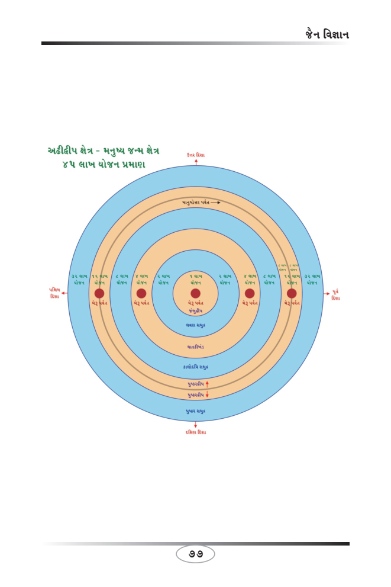
જૈનમ્ જયતિ શાસનમ્
મનુષ્ય જીવ - 2:
મનુષ્ય જન્મક્ષેત્ર જંબુદ્વીપ, ઘાતકીખંડ, અર્ધ (અડધું) પુષ્કરદ્વીપ, 56 અંતરદ્વીપજ. એકંદરે 45 લાખ યોજન ક્ષેત્રમાં જ જન્મ થાય છે, પછીના અસંખ્ય દ્વીપોમાં મનુષ્યના જન્મ થતાં જ નથી.
જંબુદ્વીપમાં એક ભરત ક્ષેત્ર, એક ઐરાવત ક્ષેત્ર, એક મહાવિદેહ ક્ષેત્ર (પૂર્વ મહાવિદેહ ક્ષેત્ર અને પશ્ચિમ મહાવિદેહ ક્ષેત્ર) હોય છે તેમજ એક મેરુપર્વત હોય છે. જંબુદ્વીપ 1,00,000 યોજન ક્ષેત્ર પ્રમાણ લંબાઇ અને પહોળાઇમાં છે.
ઘાતકીખંડ વલય આકારનો દ્વીપ છે. વલય એટલે બંગડી આકાર. જેમાં વલયના એક છેડે લવણ સમુદ્ર અને બીજે છેડે કાલોદધિ સમુદ્રથી ઘેરાયેલો છે. ઘાતકીખંડમાં બે ભરતક્ષેત્ર, બે ઐરાવતક્ષેત્ર, બે મહાવિદેહક્ષેત્ર હોય છે તેમજ બે મેરુપર્વત હોય છે. ઘાતકીખંડ વલય આકારમાં દરેક ભાગ 4,00,000 યોજન પ્રમાણ પહોળાઇમાં છે.
પુષ્કરદ્વીપ વલય આકારનો દ્વીપ છે. વલય એટલે બંગડી આકાર. જેમાં વલયના એક છેડે કાલોદધિ સમુદ્ર અને બીજે છેડે પુષ્કર સમુદ્રથી ઘેરાયેલો છે. પુષ્કરદ્વીપમાં બે ભરતક્ષેત્ર, બે ઐરાવતક્ષેત્ર, બે મહાવિદેહક્ષેત્ર હોય છે તેમજ બે મેરુપર્વત હોય છે.
પુષ્કરદ્વીપ વલય આકારમાં દરેક દિશાથી પહોળાઇમાં 16,00,000 યોજન પ્રમાણમાં છે. જેમાં દરેક દિશામાં સોળ લાખ યોજન પહોળાઇના વચ્ચે માનુષોત્તર પર્વત સમગ્ર પુષ્કરદ્વીપમાં વલય આકારે ઘેરાયેલા હોવાથી તેના બે ભાગ પડે છે.
78
Page 83
જૈન વિજ્ઞાન
મનુષ્ય જીવ - 3:
આપને જૈન ભૂગોળ સમજાવવાનું કારણ એજ છે કે મનુષ્યનો જન્મ ક્યા ક્ષેત્રમાં થાય છે! સામાઇક, પ્રતિક્રમણમાં આવા શબ્દો સાંભળ્યા જ હશે! ગઇકાલના લેખથી આગળ...
માનુષોત્તર પર્વતથી પુષ્કરદ્વીપ અંદરનો વિભાગ જંબુદ્વીપ તરફનો 8,00,000 યોજન દરેક દિશાએ અને બહારનો વિભાગ પુષ્કર સમુદ્ર તરફનો 8,00,000 યોજન પ્રમાણમાં હોય છે, પુષ્કરદ્વીપના બહારના વિભાગ જ્યાં મનુષ્યનો જન્મ થતો જ નથી.
એકંદરે જંબુદ્વીપ પૂર્વ દિશાથી ક્ષેત્ર ગણતાં (2 લાખ લવણ સમુદ્ર અ 4 લાખ ઘાતકીખંડ અ 8 લાખ કાલોદધિ સમુદ્ર અ 8 લાખ અડધો પુષ્કરદ્વીપ કુલ 22 લાખ ક્ષેત્ર થાય.
તે જ પ્રમાણે જંબુદ્વીપ પશ્ચિમ દિશાથી ક્ષેત્ર ગણતાં (2 લાખ લવણ સમુદ્ર અ 4 લાખ ઘાતકીખંડ અ 8 લાખ કાલોદધિ સમુદ્ર અ 8 લાખ અડધો પુષ્કરદ્વીપ કુલ 22 લાખ ક્ષેત્ર થાય.
જંબુદ્વીપ 1 લાખ + જંબુદ્વીપથી પૂર્વ દિશાએ માપતાં અર્ધ પુષ્કરદ્વીપ સુધી 22 લાખ યોજન + જંબુદ્વીપથી પશ્ચિમ દિશાએ માપતાં અર્ધ પુષ્કરદ્વીપ સુધી 22 લાખ યોજન થાય. આમ કુલ 45 લાખ યોજન (1 + 22 + 22 = 45 લાખ યોજન) લંબાઇ અને પહોળાઇ વિસ્તારમાં જ મનુષ્યનો જન્મ થાય છે તેમજ 45 લાખ યોજન ક્ષેત્રની બહારના અન્ય કોઇ ક્ષેત્રમાં મનુષ્યનો જન્મ થતો જ નથી!
ચિત્રમાં 45 લાખ યોજન પ્રમાણ જણાવવાનો શરળ પ્રયાસ છે. આપને શરળતાથી સમજાઇ જશે. ભૌગોલિક રચના ચિત્ર મુજબ વ્યવસ્થિત રીતે સમજી શકો તો આગળ આપને ઘણો જ ઉપયોગી થઇ જશે.
79
Page 84
જૈનમ્ જયતિ શાસનમ્
મનુષ્ય જીવ - 4:
મનુષ્ય પંચેન્દ્રિય જીવ કહેવાય તેમજ મહાન પુણ્યોદયે મનુષ્ય જન્મ મળે! મનુષ્ય ભવ એકમાત્ર મોક્ષ પ્રાપ્તિ માટે સહાયક બને છે. જેમાં કર્મ કરવાની સ્વતંત્રતાને કારણે પાપ, પુણ્ય અને કર્મ નિર્જરા કરી શકવાની શકિત અને સામર્થ્ય ધરાવે છે.
જંબુદ્વીપ, ઘાતકીખંડ અને અર્ધ પુષ્કરદ્વીપના ભરતક્ષેત્ર અને ઐરાવતક્ષેત્રમાં સદાય 6 આરા પ્રવર્તાય છે, જ્યારે મહાવિદેહ ક્ષેત્રમાં સદાય ચોથો આરો વર્તાય છે. 6 આરામાં અવસર્પિણી કાળ અને ઉત્સર્પિણી કાળ પ્રમાણે તેનો પ્રભાવ અને મનુષ્ય દ્વારા કર્મ થતાં જ રહે છે. મોક્ષમાં જવા માટે ત્રીજો અને ચોથો આરો જ મહત્વનો છે, બાકીના આરામાં શુભ અને અશુભ કર્મ બંધ થતાં રહે છે તેમજ શુભ અને અશુભ કર્મ ઉદયમાં આવતાં તેને ભોગવતા રહેવું પડે છે.
અવસર્પિણી કાળ અને ઉત્સર્પિણી કાળનું વર્ણન જૈન વિજ્ઞાન 66 થી 74 સુધીમાં વર્ણન થયેલ છે. દેવોથી પણ કોઇ શકિતમાન હોય તો તે અરિહંત પરમાત્મા છે. અરિહંત પરમાત્મા એટલા શકિતશાળી હોય છે કે 14 રાજલોકનો નાશ કરવો હોય તો પણ તેમના માટે શક્ય છે તેમજ 14 રાજલોકમાં દરેક જીવને મોક્ષમાં લઇ જવાની શકિત અને સામર્થ્ય પણ તેમનામાં છે, પરંતું તેઓ કુદરતથી વિરુદ્ધ કોઇ કાર્ય કરતાં જ નથી તેમજ તેમનો સ્વભાવ પણ નથી!
દરેક અવસર્પિણી કાળ અને ઉત્સર્પિણી કાળમાં મહામાનવ અને દિવ્ય મનુષ્યોમાં માત્ર 63 શલાકા પુરુષોનો જ સમાવેશ થાય છે. જેઓ વિશિષ્ટ પુણ્યના પ્રભાવે, તે તે નામકર્મના ઉદયે, વિશિષ્ટ યોગે જ જન્મ થાય છે.
80
Page 85
જૈન વિજ્ઞાન
મનુષ્ય જીવ - 5:
63 શલાકા પુરુષોમાં 24 તીર્થંકર, 12 ચક્રવર્તી, 9 બળદેવ, 9 વાસુદેવ, 9 પ્રતિવાસુદેવનો જન્મ અચૂક થાય છે તેમજ 11 રુદ્ર અને 9 નારદનો પણ જન્મ થાય છે પણ તેમનો 63 શલાકા પુરુષમાં ગણતરી થતી નથી.
જંબુદ્વીપના ભરતક્ષેત્રમાં 6 ખંડ હોય છે અને ઐરાવત ક્ષેત્રમાં 6 ખંડ હોય છે. મહાવિદેહ ક્ષેત્રની વચ્ચે મેરુપર્વત આવવાથી તે બે ભાગમાં વિભાજિત થાય છે. પૂર્વ મહાવિદેહ ક્ષેત્ર અને પશ્ચિમ મહાવિદેહ ક્ષેત્ર. પૂર્વ મહાવિદેહ ક્ષેત્રમાં 16 વિજય (નગર) હોય છે અને પશ્ચિમ મહાવિદેહ ક્ષેત્રમાં 16 વિજય (નગર) હોય છે. મહાવિદેહ ક્ષેત્રમાં કુલ (16 અ 16) 32 વિજય હોય છે.
ભરતક્ષેત્રમાં અવસર્પિણી કાળમાં ત્રીજા આરાના અંતે 1 (પ્રથમ) તીર્થંકર તેમજ ચોથા આરામાં 23 તીર્થંકરના જન્મ થાય છે. ઉત્સર્પિણી કાળમાં ત્રીજા આરામાં 23 તીર્થંકર અને ચોથા આરામાં શરુઆતના કાળમાં 1 (અંતિમ) તીર્થંકર જન્મ થાય છે.
ઐરાવતક્ષેત્રમાં અવસર્પિણી કાળમાં ત્રીજા આરાના અંતે 1 (પ્રથમ) તીર્થંકર તેમજ ચોથા આરામાં 23 તીર્થંકરના જન્મ થાય છે. ઉત્સર્પિણી કાળમાં ત્રીજા આરામાં 23 તીર્થંકર અને ચોથા આરામાં શરુઆતના કાળમાં 1 (અંતિમ) તીર્થંકર જન્મ થાય છે.
ભરતક્ષેત્ર અને ઐરાવતક્ષેત્રમાં કાળ (આરા) સમાન હોય છે. મેરુપર્વતથી
દક્ષિણ દિશા તરફ ભરતક્ષેત્ર અને ઉત્તર દિશા તરફ ઐરાવતક્ષેત્ર આવેલ છે.
81
Page 86
જૈનમ્ જયતિ શાસનમ્
જંબુદ્વીપ :
ઐરાવત ક્ષેત્ર (6 ખંડ) મહાવિદેહ ક્ષેત્ર (32 વિજય) ભરત ક્ષેત્ર (6 ખંડ)
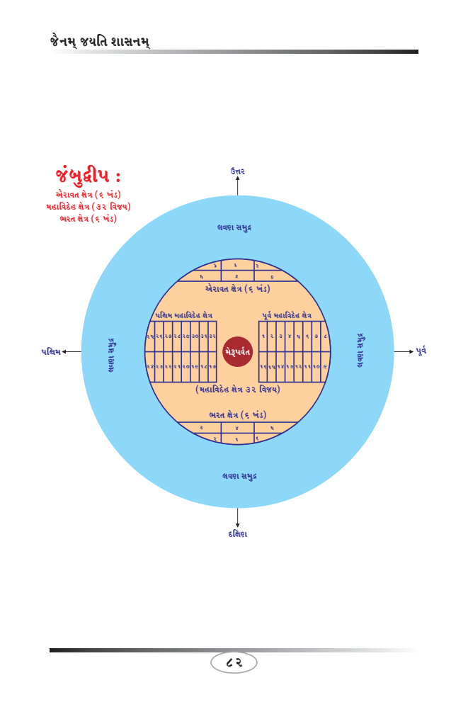
મનુષ્ય જીવ - 6:
પૂર્વ મહાવિદેહ ક્ષેત્રમાં ઓછામાં ઓછા ર તીર્થંકર કુલ બે વિજય મળીને (1 વિજયમાં એક તીર્થંકર) અને વધુમાં વધુ 16 તીર્થંકર (દરેક વિજયમાં 1 તીર્થંકર, કુલ 16 વિજય ક્ષેત્ર) તે જ પ્રમાણે પશ્ચિમ મહાવિદેહ ક્ષેત્રમાં ઓછામાં ઓછા ર તીર્થંકર કુલ બે વિજય મળીને (1 વિજયમાં એક તીર્થંકર) અને વધુમાં વધુ 16 તીર્થંકર (દરેક વિજયમાં 1 તીર્થંકર, કુલ 16 વિજય ક્ષેત્ર) એકંદરે મહાવિદેહ ક્ષેત્રમાં ઓછામાં ઓછા 4 તીર્થંકર અને વધુમાં વધુ 32 તીર્થંકર પરમાત્મા વિચરે છે.
ઘાતકીખંડમાં બે (2) મેરુપર્વત આવેલ છે. જંબુદ્વીપથી પૂર્વ તરફના ઘાતકીખંડમાં વચ્ચે 1 મેરુપર્વત છે. ત્યાં ભૌગોલિક રચના જંબુદ્વીપ સમાન છે. તેમાં ભરતક્ષેત્ર, ઐરાવતક્ષેત્ર અને મહાવિદેહ ક્ષેત્ર (મેરુપર્વતના કારણે વિભાજીત છે). ત્યાં ભરતક્ષેત્રમાં 1 તીર્થંકર, ઐરાવતક્ષેત્રમાં 1 તીર્થંકર અને મહાવિદેહ ક્ષેત્રમાં ઓછામાં ઓછા (2 + 2) 4 તીર્થંકર અને વધુમાં વધુ (16 + 16) 32 તીર્થંકરના જન્મ થાય છે.
જંબુદ્વીપથી પશ્ચિમ તરફના ઘાતકીખંડમાં વચ્ચે 1 મેરુપર્વત છે. ત્યાં ભૌગોલિક રચના જંબુદ્વીપ સમાન છે. તેમાં ભરતક્ષેત્ર, ઐરાવતક્ષેત્ર અને મહાવિદેહ ક્ષેત્ર (મેરુપર્વતના કારણે વિભાજીત છે). ત્યાં ભરતક્ષેત્રમાં 1 તીર્થંકર, ઐરાવતક્ષેત્રમાં 1 તીર્થંકર અને મહાવિદેહ ક્ષેત્રમાં ઓછામાં ઓછા (2 + 2) 4 તીર્થંકર અને વધુમાં વધુ (16 + 16) 32 તીર્થંકરના જન્મ થાય છે.
83
Page 88
જૈનમ્ જયતિ શાસનમ્
મનુષ્ય જીવ - 7:
પુષ્કરદ્વીપમાં બે (2) મેરુપર્વત આવેલ છે. જંબુદ્વીપથી પૂર્વ તરફના પુષ્કરદ્વીપમાં વચ્ચે 1 મેરુપર્વત છે. ત્યાં ભૌગોલિક રચના જંબુદ્વીપ સમાન છે. તેમાં ભરતક્ષેત્ર, ઐરાવતક્ષેત્ર અને મહાવિદેહ ક્ષેત્ર (મેરુપર્વતના કારણે વિભાજીત છે). ત્યાં ભરતક્ષેત્રમાં 1 તીર્થંકર, ઐરાવતક્ષેત્રમાં 1 તીર્થંકર અને મહાવિદેહ ક્ષેત્રમાં ઓછામાં ઓછા (2 + 2) 4 તીર્થંકર અને વધુમાં વધુ (16 + 16) 32 તીર્થંકરના જન્મ થાય છે.
જંબુદ્વીપથી પશ્ચિમ તરફના પુષ્કરદ્વીપમાં વચ્ચે 1 મેરુપર્વત છે. ત્યાં ભૌગોલિક રચના જંબુદ્વીપ સમાન છે. તેમાં ભરતક્ષેત્ર, ઐરાવતક્ષેત્ર અને મહાવિદેહ ક્ષેત્ર (મેરુપર્વતના કારણે વિભાજીત છે). ત્યાં ભરતક્ષેત્રમાં 1 તીર્થંકર, ઐરાવતક્ષેત્રમાં 1 તીર્થંકર અને મહાવિદેહ ક્ષેત્રમાં ઓછામાં ઓછા (2 + 2) 4 તીર્થંકર અને વધુમાં વધુ (16 + 16) 32 તીર્થંકરના જન્મ થાય છે.
એકંદરે અઢીદ્વીપ (જંબુદ્વીપ પૂર્ણ અ ઘાતકીખંડ પૂર્ણ અ પુષ્કરદ્વીપ અડધો)માં
કુલ મળી 5 - ભરતક્ષેત્ર, 5 - ઐરાવતક્ષેત્ર અને 5 - મહાવિદેહ ક્ષેત્ર થાય છે.
વર્તમાનમાં અઢીદ્વીપ (મનુષ્ય જન્મક્ષેત્ર) પ - મહાવિદેહ ક્ષેત્ર મળી કુલ 20 તીર્થંકર પરમાત્મા વિચરે છે. (પૂર્વ મહાવિદેહ ક્ષેત્રમાં 2 તીર્થંકર અને પશ્ચિમ મહાવિદેહ ક્ષેત્રમાં 2 તીર્થંકર) એટલે 4 તીર્થંકર X 5 મહાવિદેહ ક્ષેત્ર = 20 તીર્થંકર પરમાત્મા.
84
Page 89
જૈન વિજ્ઞાન
મનુષ્ય જીવ - 8:
જંબુદ્વીપમાં ભરતક્ષેત્રમાં તીર્થંકર પરમાત્મા વિચરતા હોય તે સમયે બીજા તીર્થંકર પરમાત્માનો જન્મ ક્યારેય થાય નહીં. તે જ પ્રમાણે જંબુદ્વીપમાં ઐરાવતક્ષેત્રમાં એક તીર્થંકર પરમાત્મા વિચરે.
જંબુદ્વીપમાં પૂર્વ મહાવિદેહ ક્ષેત્રમાં એક વિજયમાં માત્ર એક તીર્થંકર પરમાત્મા વિચરે ત્યાં સુધી બીજા તીર્થંકર પરમાત્માનો જન્મ ન થાય. તે જ પ્રમાણે જંબુદ્વીપમાં પશ્ચિમ મહાવિદેહ ક્ષેત્રમાં એક વિજયમાં માત્ર એક તીર્થંકર પરમાત્મા વિચરે ત્યાં સુધી બીજા તીર્થંકર પરમાત્માનો જન્મ ન થાય.
અજિતનાથ ભગવાનના સમયમાં ઉત્કૃષ્ટ 170 તીર્થંકર પરમાત્મા વિચરતા હતાં. જંબુદ્વીપમાં ભરતક્ષેત્રમાં 1 તીર્થંકર, ઐરાવતક્ષેત્રમાં 1 તીર્થંકર અને મહાવિદેહ ક્ષેત્રના 32 વિજય (નગર)ના દરેક વિજયમાં 1 તીર્થંકર મળી 32 તીર્થંકર કુલ મળી 34 તીર્થંકર જંબુદ્વીપમાં વિચરતાં હતાં.
જંબુદ્વીપથી પૂર્વ તરફના ઘાતકીખંડના મેરુપર્વતના ભરતક્ષેત્રમાં 1 તીર્થંકર, ઐરાવતક્ષેત્રમાં 1 તીર્થંકર અને મહાવિદેહ ક્ષેત્રના 32 વિજય (નગર)ના દરેક વિજયમાં 1 તીર્થંકર મળી 32 તીર્થંકર કુલ મળી 34 તીર્થંકર વિચરતાં હતાં.
જંબુદ્વીપથી પશ્ચિમ તરફના ઘાતકીખંડના મેરુપર્વતના ભરતક્ષેત્રમાં 1 તીર્થંકર, ઐરાવતક્ષેત્રમાં 1 તીર્થંકર અને મહાવિદેહ ક્ષેત્રના 32 વિજય (નગર)ના દરેક વિજયમાં 1 તીર્થંકર મળી 32 તીર્થંકર કુલ મળી 34 તીર્થંકર વિચરતાં હતાં.
85
Page 90
જૈનમ્ જયતિ શાસનમ્
મનુષ્ય જીવ - 9:
જંબુદ્વીપથી પૂર્વ તરફના પુષ્કરદ્વીપના મેરુપર્વતના ભરતક્ષેત્રમાં 1 તીર્થંકર, ઐરાવતક્ષેત્રમાં 1 તીર્થંકર અને મહાવિદેહ ક્ષેત્રના 32 વિજય (નગર)ના દરેક વિજયમાં 1 તીર્થંકર મળી 32 તીર્થંકર કુલ મળી 34 તીર્થંકર વિચરતાં હતાં.
જંબુદ્વીપથી પશ્ચિમ તરફના પુષ્કરદ્વીપમાં મેરુપર્વતના ભરતક્ષેત્રમાં 1 તીર્થંકર, ઐરાવતક્ષેત્રમાં 1 તીર્થંકર અને મહાવિદેહ ક્ષેત્રના 32 વિજય (નગર)ના દરેક વિજયમાં 1 તીર્થંકર મળી 32 તીર્થંકર કુલ મળી 34 તીર્થંકર વિચરતાં હતાં. આમ કુલ મળી 170 તીર્થંકર (34 તીર્થંકર X પ ક્ષેત્ર = 170 તીર્થંકર) પરમાત્મા ઉત્કૃષ્ટ (વધુમાં વધુ) પણે હોય છે.
એવું ક્યારેય નથી બનતું કે એક તીર્થંકર પરમાત્મા, બીજા ક્ષેત્રના તીર્થંકરને સામેથી મળી શકે! અઢીદ્વીપમાં અચૂક તીર્થંકર પરમાત્માની હાજરી હોય જ! એટલે કોઇ એમ ન કહી શકે કે, આ તિરછાલોક (પૃથ્વીલોક) ઉપર ભગવાન નથી!
ચાર ઘાતિકર્મોનો ક્ષય થતાં જ કેવળજ્ઞાન પ્રગટ થાય છે અને ચાર અઘાતિ કર્મોનો ક્ષય થતાં જ નિર્વાણ થઇ કેવળજ્ઞાની મહાત્મા સિદ્ધશીલાએ બિરાજમાન થાય છે. હવે પછી તેમને સંસારમાં જન્મ-મરણ થતાં નથી. ધર્મની ધૂરા, પ્રભાવના તીર્થંકર પરમાત્મા કરે છે. તીર્થંકર પરમાત્માની ગેરહાજરીમાં આચાર્ય ભગવંતો શાસનની ધૂરા સંભાળે છે. અઢીદ્વીપમાં અવસર્પિણી કાળમાં છઠ્ઠો આરો અને ઉત્સર્પિણી કાળમાં પ્રથમ આરામાં પ - ભરતક્ષેત્રમાં અને પ - ઐરાવતક્ષેત્રમાં ધર્મ વિચ્છેદ થાય છે.
86
Page 91
જૈન વિજ્ઞાન
મનુષ્ય જીવ - 10:
અઢીદ્વીપ (5-ભરતક્ષેત્ર, 5-ઐરાવતક્ષેત્ર અને 5-મહાવિદેહ ક્ષેત્ર)માં ઓછામાં ઓછા 20 તીર્થંકર પરમાત્મા વિચરતા હોય છે અને વધુમાં વધુ એક સમયે 170 તીર્થંકર પરમાત્મા વિચરતા હોય છે, આપણે વિસ્તારથી જાણ્યું.
તીર્થંકર પરમાત્મા અનંત પુણ્યના સ્વામી હોય છે. ચાર ઘાતિકર્મનો ક્ષય થતાં જ તેમને કેવળજ્ઞાન પ્રગટ થાય છે. હવે તેઓ અરિહંત કહેવાય છે. કેવળજ્ઞાન પ્રાપ્ત થતાં જ સૌધર્મેન્દ્રના આદેશથી સેવક દેવતાઓ દ્વારા સહુ પ્રથમ સમવસરણની રચના થાય છે. સમવસરણમાં દેવો, મનુષ્યો અને તિર્યંચ જીવો પ્રભુની દેશના સાંભળવા સહર્ષ પધારે છે. અરિહંત પરમાત્મા સમવસરણની વચ્ચે આવેલ બેઠક સ્થાને પોતાના દેહપ્રમાણથી 12 ઘણાં ઊંચા ચૈત્યવૃક્ષ (અશોકવૃક્ષ)ની ફરતે ‘ ણમો તિત્થસ્સ’ એટલે તીર્થને મારા નમસ્કાર હોજો કહી, ત્રણ પ્રદક્ષિણા આપી સ્થાન ગ્રહણ કરે છે. આગળ જતાં સમવસરણ વિશે પણ વિસ્તારથી જાણીશું.
મનુષ્ય જીવમાં સૌથી ઉત્કૃષ્ટ કોટીના કોઇ જીવ હોય તો તેઓ તીર્થંકર પરમાત્મા હોય છે. દરેક જીવનું અવતરણ નિગોદથી જ થાય છે. સમગ્ર સંસાર (નરક, તિર્યંચ, મનુષ્ય અને દેવ) અને અસંસારી, સિદ્ધશીલાએ બિરાજમાન સિદ્ધ ભગવંતો અચૂક નિગોદથી જ વ્યવહાર રાશીમાં પ્રવેશ કરે છે.
નિગોદથી એકેન્દ્રિય, બેઇન્દ્રિય, તેઇન્દ્રિય, ચઉરેન્દ્રિય અને પંચેન્દ્રિયમાં જીવને જન્મ-મરણના ફેરા અચૂકપણે થાય જ! એવું ક્યારેય નથી થયું અને થશે કે, નિગોદથી આવેલો જીવ તરત જ મનુષ્ય બને અને તે જ ભવે મોક્ષમાં જાય!
87
Page 92
જૈનમ્ જયતિ શાસનમ્
મનુષ્ય જીવ -11 : 34 અતિશય-1
અતિશય એટલે અલૌકિક શકિત, ચડિયાતાપણું, શ્રેષ્ઠતા, વિશિષ્ટતા વગેરે થાય છે. અતિશય તીર્થંકર નામકર્મના ઉદય વાળા કેવળજ્ઞાની ભગવંતોને જ હોય છે. તીર્થંકર પરમાત્મા કેટલાં મહાન પુણ્યના સ્વામી હશે? કે, અલૌકિક શકિત માત્ર તેમને જ પ્રગટ થાય અન્ય કોઇ કેવળી ભગવંતોને નહીં! જેમની સેવા અને દર્શન કરવાને ઝંખતા 64 ઇન્દ્રો સહપરિવાર સતત દેવલોકથી પ્રભુની વિહારયાત્રા અને સમવસરણમાં થતી દેશના સાંભળવા ઉત્સુક હોય છે. અદ્ભૂત!
34 અતિશયમાંથી 5 અતિશય તીર્થંકર પરમાત્માને જન્મથી જ હોય છે. 15 અતિશય કેવળજ્ઞાન પ્રગટ થતાં જ શરુ થાય છે અને 14 અતિશય દેવો દ્વારા પ્રભુની સેવા અને પ્રભાવના સ્વરુપે હોય છે.
1) વાળ, દાઢી, મૂછ, રોમ અને હાથ-પગના નખ પ્રમાણસર રહે અર્થાત્ તેના પ્રમાણથી અધિક વૃદ્ધિ ક્યારેય ન થાય.
2) સદાય શરીર નિરોગી રહે એટલે રોગ વગેરે ક્યારેય ઉત્પન્ન ન થાય, મળ ઉત્પન્ન ન થાય અને સદાય નિર્મળ શરીર હોય છે.
3) શરીરમાં લોહી અને માંસનો રંગ ગાયના દૂધ સમાન સફેદ રંગનું હોય છે.
4) ઉચ્છવાસ પદ્મકમળ સમાન સુગંધિત હોય. તીર્થંકર પરમાત્મા શ્વાસમાં પ્રાણવાયુ લીધા પછી ઉચ્છવાસ સ્વરુપે નીકળતી હવામાં કમળના ફુલની મંદ સુગંધ અચૂક હોય છે.
5) આહાર અને નિહાર નરી આંખે ન દેખાય એટલે આપણે ભોજન લઇએ છીએ તેવું તેમનું ભોજન ન હોય.
88
Page 93
જૈન વિજ્ઞાન
મનુષ્ય જીવ -12 : 34 અતિશય-2
6) તીર્થંકર પરમાત્મા જ્યાં પણ વિચરે (વિહાર) ત્યારે આકાશમાં સદાય ધર્મચક્ર સાથે જ ફરે.
7) તીર્થંકર પરમાત્મા જ્યાં પણ વિચરે ત્યાં આકાશમાં તેમના મસ્તક ઉપર સદાય છત્ર હોય.
8) આકાશમાં સદાય ઉત્તમ કોટીના સફેદ ચામરો દેવો દ્વારા વીંજાતા હોય છે.
9) આકાશ સમાન નિર્મળ સ્ફટિકરત્નના પાદપીઠયુકત સિંહાસન હોય.
10) આકાશમા હજાર નાની ધ્વજાઓથી યુકત ઇન્દ્રધ્વજ તીર્થંકર પરમાત્માની
સદાય આગળ ચાલે.
11) જ્યાં જ્યાં તીર્થંકર પરમાત્મા સ્થિરતા (રોકાય) કરે, સ્થાન ગ્રહણ કરે (બેસવું) ત્યાં ભવનપતિ દેવલોકના યક્ષ દેવો દ્વારા પાંદડાં, ફુલ, વેલડીઓથી વ્યાપ્ત, છત્ર, ધ્વજા, ઘંટ અને પતાકાથી યુકત શ્રેષ્ઠ અશોકવૃક્ષ બનાવે છે.
12) મસ્તકની કંઇક પાછળ મુગટના સ્થાને પ્રકાશ મંડળ (આભા મંડળ) હોય છે, જે અંધકારમાં પણ (રાત્રીના સમયે) દસે દિશાઓને પ્રકાશિત કરે છે.
13) તીર્થંકર પરમાત્મા જ્યાં વિહાર (વિચરણ) કરે, ત્યાંનો ભૂમિભાગ એકસરખો
(બહુસમ) અને નયનરમ્ય (રમણીય) બની જાય છે.
14) વિહાર ભૂમિમાં કાંટા હોય તો, તે પોતાની મેળે ઊંધા થઇ જાય (કાંટાનો
ભાગ જમીનની દિશામાં થઇ જાય).
15) શરીરને અનુકૂળ સુખદ સ્પર્શવાળું વાતાવરણ થઇ જાય.
16) તીર્થંકર પરમાત્મા જ્યાં વિચરે છે ત્યાંની 1 યોજન ભૂમિ ઠંડી અને સુખકારી
સ્પર્શનાવાળું અને સુગંધિત પવન બધી દિશાઓમાં ફેલાઇ જાય છે.
89
Page 94
જૈનમ્ જયતિ શાસનમ્
મનુષ્ય જીવ -13 : 34 અતિશય-3
17) દેવો દ્વારા મંદ, સુગંધિત પાણીના વરસાદથી આકાશમાં ઉડતા રજકણો અને ભૂમિ ઉપર રહેલી ધૂળ શાંત (સ્થિર) થઇ જાય એટલે વાતાવરણ ધૂળ વગરનું નિર્મળ થઇ જાય છે.
18) પાંચ વર્ણના સુગંધિત ફુલોથી ભૂમિથી ગોઠણ સુધીનો ભાગ દેવો દ્વારા
ફુલોથી ઢંકાઇ જાય છે.
19) અપ્રિય શબ્દો, સ્પર્શ, રસ, રૂપ અને ગંધનો અભાવ થઇ જાય.
20) પ્રિય શબ્દો, સ્પર્શ, રસ, રૂપ અને ગંધનો પ્રાદુર્ભાવ થઇ જાય છે.
21) ધર્મમય દેશના આપતી વખતે પ્રભુની વાણી એક યોજન સુધી સંભળાય અને સાંભળનાર દરેક જીવને હૃદયમાં ઉતરી જાય તેવો સ્વર (અવાજ) હોય છે.
22) તીર્થંકર પરમાત્મા દ્વારા ધર્મનો ઉપદેશ અર્ધમાગધી (મગધ દેશની માગધી (પ્રાકૃત) ભાષા અને દેવોની સંસ્કૃત ભાષાનું મિશ્રણ) ભાષામાં હોય છે.
23) અર્ધમાગધી ભાષા દરેક આર્ય અને અનાર્ય મનુષ્યો, બે પગવાળા પક્ષીઓ, ચાર પગવાળા પશુઓ, પેટથી ચાલનારા સાપ વગેરે જીવો માટે હિતકારી, કલ્યાણકારી, સુખદ તેમજ દરેક જીવની ઇચ્છીત ભાષામાં પોતાની મેળે પરિવર્તિત થઇ જાય છે.
24) પરસ્પર જીવો સાથે અગાઉ બંધાયેલા વેર, વેરયુકત મનુષ્યો, દેવો, અસુર, નાગ, સુપર્ણ, યક્ષ, રાક્ષસ, કિન્નર, કિંપુરુષ, ગરુડ, ગંધર્વ અને મહોરગ દેવો પણ તીર્થંકર પરમાત્માના ચરણમાં પરસ્પર થયેલા વેરને ભૂલી શાંતચિત્તથી, આનંદથી તેમજ શુભભાવથી પ્રભુની વાણી સાંભળે છે.
90
Page 95
જૈન વિજ્ઞાન
મનુષ્ય જીવ -14 : 34 અતિશય-4
25) પ્રભુની દેશના સાંભળવા અન્ય ધર્મના ગુરુઓ, વકતાઓ પણ પ્રભુને
સાંભળી ભાવથી વંદના કરે છે.
26) ભગવાન પાસે આવેલા અન્ય ધર્મના લોકો પ્રભુની વાણી (દેશના)
સાંભળીને શંકારહિત બની નિરુત્તર બની જાય છે.
27) જ્યાં જ્યાં તીર્થંકર પરમાત્મા વિહાર કરતાં હોય ત્યાં ત્યાં 25 યોજન સુધી
કોઇપણ જાતનો ભય ન હોય.
28) મનુષ્યને મારનાર મહામારી (પ્લેગ, કોરોના વગેરે) ભયંકર બીમારી ન
હોય.
29) સ્વચક્ર - પોતાના રાજ્યની સેનાનો ભય ન હોય.
30) પરચક્ર - શત્રુ સેનાનો ભય ન હોય.
31) અતિવૃષ્ટિ - ભારે વરસાદ ન હોય.
32) અનાવૃષ્ટિ ન હોય - ઓછો વરસાદ ન પડે (પ્રમાણસર વરસાદ પડે).
33) દુર્ભિક્ષ - દુષ્કાળ ન પડે.
34) તીર્થંકર પરમાત્માના વિહાર શરુ થાય તે પહેલાં થયેલી વ્યાધિ વગેરે ઉપદ્રવો
પણ જલદી શાંત થઇ જાય છે.
તીર્થંકર નામ કર્મનો ઉદય કેવળજ્ઞાન ઉત્પન્ન થાય ત્યારે હોય છે માટે અતિશયનો સંબંધ કેવળજ્ઞાન પ્રગટ થાય પછી વધારે હોય છે. 34 અતિશયમાંથી 5 અતિશય તીર્થંકર પરમાત્માને જન્મથી જ હોય છે. 15 અતિશય કેવળજ્ઞાન પ્રગટ થતાં જ શરુ થાય છે અને 14 અતિશય દેવો દ્વારા તીર્થંકર પરમાત્માના સેવાના ભાવથી તેમજ પ્રભાવને વિસ્તારવા હર્ષોલ્લાસથી પ્રભાવના સ્વરુપે હોય છે.
91
Page 96
જૈનમ્ જયતિ શાસનમ્
મનુષ્ય જીવ - 15 : તીર્થંકર પરમાત્માની વચન (વાણી)ના ગુણ - 35
તીર્થંકર પરમાત્માની વાણી રાગ-દ્વેષ રહિત સત્ય વચનયુકત હોય છે. મુખ્યત્વે આપણી વાણીમાં સ્વાર્થના કારણે પોતાના જ હિતલક્ષી કાર્યોનો ઉદ્દેશ્ય હોવાથી વાણીનો દુરુપયોગ વધુ થાય, સંબંધોમાં કડવાશ ઉત્પન્ન થાય તેમજ જીવ પ્રતિ જીવ વેરની ભાવના વધે છે. નીત નવા કર્મ બંધ થતાં રહે છે. વાણીમાં મીઠાશ હોય, સર્વ જીવોના કલ્યાણની ભાવના હોય તો વાણીનો સદુપયોગ શુભ કર્મ બાંધવામાં સહાયરુપ બને છે. અનંતપુણ્યના સ્વામી, તારક તીર્થંકર પ્રભુની વાણીમાં કેવા દિવ્ય ગુણો (35-વચન અતિશય) અને વિશેષતા હોય છે તે જાણીએ...
1) સંસ્કારોપેતત્વઃ વચનોનું વ્યાકરણ સંસ્કાર યુકત હોય છે.
2) ઉદાત્તત્વઃ ઉચ્ચ સ્વરથી પરિપૂર્ણ હોય છે.
3) ઉપચારોપેતત્વઃ ગ્રામીણતાથી રહિત હોય, ગામઠી શબ્દ ન હોય.
4) ગંભીર શબ્દત્વઃ મેઘ સમાન ગંભીર શબ્દોથી યુકત હોય છે.
5) અનુનાદિત્વઃ પ્રતિધ્વનિ ઉપજાવનારાં વચન હોય છે.
6) દક્ષિણત્વઃ સરળતા યુકત વચન હોય છે.
7) ઉપનીત રાગત્વઃ યથા ઉચિત રાગ-માલકોશ વગેરે રાગ-રાગિણીથી યુકત હોય છે.
ઉપરોકત ક્રમ નં. 1 થી 7 વચન અતિશય શબ્દ સૌંદર્યની અપેક્ષાથી જાણવા જોઇએ.
8) મહાર્થત્વઃ મહાન અર્થવાળા વચન હોય છે.
9) અવ્યાહત પૂર્વાપરત્વઃ પૂર્વાપર અવિરોધી અર્થવાળા હોય છે.
92
Page 97
જૈન વિજ્ઞાન
મનુષ્ય જીવ - 16 : તીર્થંકર પરમાત્માની વચન (વાણી)ના ગુણ - 35
10) શિષ્ટત્વઃ વકતાની શિષ્ટતાના સૂચક હોય છે.
11) અસંદિગ્ધત્વઃ સંદેહ રહિત નિશ્ચિત અર્થના પ્રતિપાદક હોય છે.
12) અપહ્યતાન્યોત્તરત્વઃ પરદત્ત દૂષિત આક્ષેપોના નિવારક વચન હોય છે.
13) હૃદયગ્રાહિત્વઃ શ્રોતા (સાંભળનાર)ના હૃદયગ્રાહી (મનોહર) વચન હોય છે.
14) દેશ કાલોચિતત્વઃ દેશ કાલને અનુકૂળ અવસર ઉચિત વચન હોય છે.
15) તત્ત્વાનુરુપત્વઃ વિવક્ષિત વસ્તુ સ્વરુપનાં અનુરૂપ વચન હોય છે.
16) અપ્રકીર્ણ પ્રસૃતત્વઃ નિરર્થક વિસ્તારથી રહિત સુસંબંધ વચન હોય છે.
17) અન્યોન્ય પ્રગૃહિતઃ પરસ્પર અપેક્ષા રાખનાર પદો અને વાક્યોથી યુકત હોય
છે.
18) અભિજાતત્વઃ વકતાની કુલીનતા અને શાલીનતાના સૂચક હોય છે.
19) અતિસ્નિગ્ધ મધુરત્વઃ અત્યંત સ્નેહથી ભરેલા મધુરતા (મીઠાશ) યુકત હોય
છે.
20) અપરમર્મ વેધિત્વઃ બીજાના મર્મ ઉઘાડનાર વચન ન હોય.
21) અર્થધર્માભ્યાસોપેતત્વઃ અર્થ અને ધર્મના અભ્યાસથી યુકત હોય છે.
22) ઉદારત્વઃ તુચ્છતા રહિત અને ઉદારતા યુકત હોય છે.
23) પરનિન્દાત્મોત્કર્ષ વિપ્રમુકતત્વઃ બીજાની નિંદા અને પોતાની પ્રશંસા રહિત
હોય છે.
93
Page 98
જૈનમ્ જયતિ શાસનમ્
મનુષ્ય જીવ - 17 : તીર્થંકર પરમાત્માની વચન (વાણી)ના ગુણ - 35
24) ઉપગત શ્લાદ્યત્વઃ જેને સાંભળીને લોકો પ્રશંસા કરે એવા વચન હોય છે.
25) અનપનીતત્વઃ કાલ, કારક, લિંગ, પ્રત્યય આદિ વ્યાકરણના દોષ રહિત હોય
છે.
26) ઉત્પાદિતાછિન્ન કૌતુહલત્વઃ ઉપદેશના વિષયમાં શ્રોતાજનોને નિરંતર
કુતૂહલ, જિજ્ઞાસા ઉત્પન્ન કરાવનાર હોય છે.
27) અદ્ભૂતત્વઃ આશ્ચર્યકારક અદ્ભૂત નવા નવા વચન પ્રયોગ હોય છે.
28) અનતિ વિલમ્બિતત્વઃ અતિ વિલંબ રહિત ધારા પ્રવાહથી બોલતા હોય છે.
29) વિભ્રમાદિ વિમુકતઃ મનની ભ્રાંતિ, વિક્ષેપ-ચિત્તની ચંચળતા અને રોષ, ભય,
અભિલાષા આદિ માનસિક દોષો રહિત હોય છે.
30) અનેક જાતિ સંશ્રયાદ્વિચિત્રત્વઃ અનેક પ્રકારે વર્ણનીય વસ્તુ સ્વરૂપનું વર્ણન
કરનાર વિચિત્ર વચન હોય છે.
31) આહિત વિશેષત્વઃ સામાન્ય વચનોથી કંઇક વિશેષતા યુકત વચન હોય છે.
32) સાકારત્વઃ પૃથક્ પૃથક્ વર્ણ, પદ, વાક્ય વડે આકાર પ્રાપ્ત વચન હોય છે.
33) સત્ત્વ પરિગૃહિતત્વઃ સાહસથી પરિપૂર્ણ વચન હોય છે.
34) અપરિખેદિત્વઃ ખિન્નતાથી રહિત વચન હોય છે.
35) અવ્યુચ્છેદિત્વઃ વિવક્ષિત અર્થની સમ્યક્ સિદ્ધિ થવા સુધી અવિચ્છિન્ન
પ્રવાહવાળા વચન હોય છે.
તીર્થંકર પરમાત્માના વચન અતિશય ક્રમ નં. 8 થી 35 ગૌરવની અપેક્ષા રાખે છે. આવા ગુણયુકત વચન સાંભળનારમાં પણ ગુણો જ ઉત્પન્ન કરનાર હોય છે તેમજ સાંભળનારનું હિત કરાવનાર હોય છે.
94
Page 99
જૈન વિજ્ઞાન
મનુષ્ય જીવ - 18 : તીર્થંકર પરમાત્માના દેહની વિશેષતા-1
તીર્થંકર પરમાત્મા સામાન્ય મનુષ્યથી અલગ વિશેષ ગુણધર્મથી મહામાનવ હોય છે. સ્વાભાવિક છે કે, પરમાત્માનું દેહ (શરીર) કેવું હશે? પ્રભુના 34 અતિશય (અલૌકિક શકિત) અને પ્રભુના 35 વચન અતિશય (વાણીના 35 ગુણ) વિશે વિસ્તૃત માહિતી મેળવી. હવે પરમાત્માની દેહ રચના વિશે જાણીએ...
વધુ... જૈન વિજ્ઞાન-93
95
Page 100
જૈનમ્ જયતિ શાસનમ્
મનુષ્ય જીવ - 19 : તીર્થંકર પરમાત્માના દેહની વિશેષતા-2
10) માંસઃ શરીરમાં માંસ રોગમુકત, શરીરગત, સર્વોત્તમ ગુણયુકત, અત્યંત
સફેદ અને અનુપમ હોય છે.
11) શરીરઃ પરસેવો, શરીર ઉપર જામેલા સુકો કે ભીનો મેલ, મસા, તલ વગેરે
કલંક, રજ, ધૂળ વગેરે દોષથી રહિત હોય છે.
96
Page 101
જૈન વિજ્ઞાન
મનુષ્ય જીવ - 20 : તીર્થંકર પરમાત્માના દેહની વિશેષતા-3
12) અંગોપાંગ : અંગ ઉપાંગ નયનરમ્ય, કાંતિયુકત હોય છે.
13) મસ્તકઃ મસ્તક અતિ નિબિડ એટલે તોલદાર, પ્રગટ શુભ લક્ષણ સંપન્ન, પર્વતના શિખરની જેમ ઉન્નત અને નિર્માણ નામ કર્મના ઉદયથી સુરચિત અને સુંદર હોય છે.
14) વાળઃ સેમર વૃક્ષના ફૂલની અંદરના રૂ (કપાસ) જેવા કોમળ, નિર્મળ, પ્રશસ્ત, અત્યંત પાતળા, સુલક્ષણા, સુગંધી, સુંદર, ભુજમોચક નામના રત્નવિશેષની જેમ, ભ્રમર, નીલગુલિકા અને કાજળ જેવા કાળા, ભ્રમર પંકિત જેવા કાંતિયુકત, પરસ્પર સંશ્લિષ્ટ, સઘન, વાંકા કાનના કુંડલ જેવા ગોળાકારે વળેલા, દક્ષિણ આવર્ત ઘુઘરાળા હોય છે.
15) માથા (મસ્તક)ની ત્વચાઃ દાડમના ફુલ જેવી લાલ, અગ્નિથી તપાવેલા સોના
જેવી નિર્મળ અને સ્નિગ્ધ હતી.
16) મસ્તકઃ છત્ર જેવું ગોળાકાર હોય છે.
17) લલાટ (કપાળઃ) વ્રણ (ઘાવ)ના ચિન્હ વગરનું, સમાંતર, સુંદર, આઠમના
ચંદ્ર (અડધો ગોળાકાર) જેવું હોય છે.
18) મુખ (મોઢુંઃ) પૂર્ણ ચંદ્ર જેવું સૌમ્ય હોય છે.
19) કાનઃ સમુચિત (બરાબર) પ્રમાણોપેત (સપ્રમાણ) હોય છે.
20) ગાલઃ માંસલ અને ભરાવદાર હોય છે.
21) ભ્રમરોઃ નમાવેલા ધનુષ્યની જેમ મનોહર, કાળા વાદળ જેવી કાળી, પાતળી
અને સ્નિગ્ધ (સુંવાળી) હોય છે.
22) આંખોઃ ખીલેલા સફેદ કમળની જેમ વિકસિત - વિશાળ હોય છે.
97
Page 102
જૈનમ્ જયતિ શાસનમ્
મનુષ્ય જીવ - 21 : તીર્થંકર પરમાત્માના દેહની વિશેષતા-4
23) પાંપણોઃ વિકસિત, સ્વચ્છ તેમજ સુંદર હોય છે.
24) નાકઃ ગરુડ પક્ષીની ચાંચ જેવું લાંબુ, સરળ અને ઉન્નત હોય છે.
25) અધરોષ્ઠઃ અધરોષ્ઠ એટલે ઉપરના હોઠ. સંસ્કાર સંપન્ન પરવાળા તથા
ચણોઠી જેવા લાલ હોય છે.
26) દાંતની શ્રેણીઃ સફેદ ચંદ્ર જેવી વિમલ, શંખ, ગાયનું દૂધ, ફીણ, કુંદપુષ્પ, જલકણ, કમલતંતુ જેવી સફેદ, અખંડિત, તૂટ્યા વિનાની, પોલાણ વગરના, સ્નિગ્ધ, સુંદર, જુદા-જુદા દાંત હોવા છતાં પરસ્પર સંબંધિત હોવાથી એક હરોળ જેવા દેખાય છે.
27) તાળવું અને જીભઃ અગ્નિમાં તપાવેલા અને પાણીમાં ધોયેલા સુવર્ણ જેવા
અત્યંત લાલ હોય છે.
28) દાઢી અને મૂછના વાળઃ વધે નહીં તેવા, સુવિભકત (સારી રીતે છૂટા પડેલા)
અને અતિરમ્ય હોય છે.
29) દાઢીઃ માંસલ, સુંદર, પ્રશસ્ત (ઉત્તમ) સિંહ જેવી સુંદર હોય છે.
30) ગરદન (ડોકઃ) ચાર અંગુલ પ્રમાણ (માપ) અને શ્રેષ્ઠ શંખની જેમ ત્રિવલીયુકત (ત્રણ રેખાયુકત) હોય છે.
31) સ્કંધઃ સ્કંધ એટલે ખભો, કાંધ. શ્રેષ્ઠ ભેંસ (મહિષ), વરાહ, સિંહ, વાઘ, બળદ અને શ્રેષ્ઠ હાથીના સ્કંધની જેમ વિશાળ હોય છે.
32) ભુજાઓઃ ભુજાઓ એટલે સંપૂર્ણ હાથ. ગાડાના ધૂંસર જેવી પુષ્ટ, મનોહર, સ્થૂલ, પુષ્ટ કાંડાયુકત, સુંદર આકૃતિવાળી, વિશિષ્ટ, ભરાવદાર, મજબૂત સ્નાયુઓથી સુસંબદ્ધ સંધિઓવાળી તથા નગરના ભોગળ જેવી ગોળાકાર હોય છે. વધુ... જૈન વિજ્ઞાન-96
98
Page 103
જૈન વિજ્ઞાન
મનુષ્ય જીવ - 22 : તીર્થંકર પરમાત્માના દેહની વિશેષતા-5
33) બાહુઃ બાહુ એટલે હાથ. ઈચ્છિત વસ્તુ લેવા માટે ફેલાવેલા સર્પરાજના શરીર
જેવા દીર્ધ (લાંબા) હોય છે.
34) હથેળીઃ લાલ હાથેળીવાળા, પાછળના ભાગમાં ઉન્નત, કોમળ, માંસલ, શુભ અને પ્રશસ્ત લક્ષણયુકત, છિદ્ર વગરના હોય છે. ચંદ્રરેખા, સૂર્યરેખા, શંખરેખા, ચક્રરેખા, દક્ષિણાવર્ત સ્વસ્તિક રેખા આ રીતે સૂર્ય, ચંદ્ર, શંખ, ચક્ર અને સ્વસ્તિકની રેખાઓથી ચિન્હિત તથા સુશોભિત હોય છે.
35) આંગળીઓઃ પુષ્ટ, કોમળ અને સુંદર હોય છે.
36) નખોઃ કંઇક લાલ, પાતળા, શુદ્ધ, સુંદર અને સ્નિગ્ધ હોય છે.
37) વક્ષઃસ્થળઃ કનક શિલા સમાન દેદિપ્યમાન, શુભ લક્ષણયુકત, સમ, પુષ્ટ,
અત્યંત વિશાળ તેમજ પહોળું, શ્રીવત્સના ચિન્હયુકત હોય છે.
38) શરીરઃ અદ્રશ્યમાન એટલે કરોડરજ્જુના મણકાઓ ન દેખાય તેવું, સુવર્ણ જેવું નિર્મળ, રોગ આદિના પીડા રહિત હોય છે. ભગવાન ઉત્તમ પુરુષોને યોગ્ય પરિપૂર્ણ 1008 ઉત્તમ લક્ષણોના ધારક હોય છે.
39) પડખાનો ભાગઃ ક્રમથી નમેલા, સુંદર, શોભનીય, મર્યાદિત, પુષ્ટ, રમ્ય હોય
છે.
40) રોમરાજીઃ એક સમાન, પરસ્પર મળેલી, ઉત્તમ, પાતળી, કાળી, સ્નિગ્ધ,
મનભાવની, સુંવાળી અને રમણીય હોય છે.
વધુ... જૈન વિજ્ઞાન-97
99
Page 104
જૈનમ્ જયતિ શાસનમ્
મનુષ્ય જીવ - 23 : તીર્થંકર પરમાત્માના દેહની વિશેષતા-6
41) કુક્ષીઃ મત્સ્ય (માછલી) તથા પક્ષી જેવી સુંદર હોય છે.
42) પેટઃ પુષ્ટ અને મત્સ્યના જેવું હોય છે.
43) ઇન્દ્રિયોઃ નિર્લેપ અને પવિત્ર હોય છે. (સામાન્ય રીતે નાક, કાન, આંખ વગેરે ઇન્દ્રિયોમાંથી ગંદા પદાર્થો નીકળતા હોય છે. પરંતું ભગવાનના અતિશયના પ્રભાવે નિર્લેપ અને પવિત્ર હોય છે.)
44) નાભિઃ પદ્મકોશ જેવી ગંભીર, ગંગાવર્તના દક્ષિણાવર્ત તરંગની જેમ ચક્રાકાર, ગોળ, પ્રાતઃકાળ (વહેલી પરોઢ)ના સૂર્ય કિરણોથી વિકસિત કમળની જેમ ગંભીર અને વિશાળ હોય છે.
45) કટિપ્રદેશઃ ત્રિપાઇના મધ્યભાગ, મૂશળનો મધ્યભાગ, દર્પણદંડના મધ્યભાગ જેવો તથા ચળકતા સોનાના ખડગ, મુઠ્ઠીના મધ્યભાગ અને વજ્રના મધ્યભાગ જેવો પાતળો હોય છે. રોગ વગરનો હોવાથી પ્રશસ્ત, શ્રેષ્ઠ ઘોડા અને સિંહ જેવો ગોળ હોય છે.
46) ગુપ્તપ્રદેશઃ જાતિવાન ઘોડાની જેમ નિરૂપલેપ હોય છે.
47) પરાક્રમઃ ઉત્તમ હાથી જેવું હોય છે.
48) ગતિઃ હાથી જેવી મનોહર હોય છે.
49) સાથળઃ હાથીના સૂંઢ જેવી હોય છે.
50) ઘૂંટણઃ ગુપ્ત ઢાકણાંવાળા ડબ્બા જેવા તથા ગૂઢ-અંતર રહિત સુંદર હોય છે.
100
Page 105
જૈન વિજ્ઞાન
મનુષ્ય જીવ - 24 : તીર્થંકર પરમાત્માના દેહની વિશેષતા-7
51) બન્ને જંઘાઓઃ હરણીની જંઘા, કુરુવિંદ નામનું તૃણ (ઘાસ) વિશેષ, દોરીના વળ સમાન ગોળ, પાતળી, ઉપરથી જાડી અને નીચેથી ક્રમશઃ પાતળી હોય છે.
52) ઘૂંટીઓઃ શોભાયમાન, માંસલ, પુષ્ટ અને ગૂઢ હોય છે.
53) ચરણોઃ સંકોચાઇને બેઠેલા કાચબા જેવા સુંદર હોય છે.
54) પગની આંગળીઓઃ અનુક્રમથી નાની મોટી, ઉચિત આકારની, જુદી-જુદી
હોવા છતાં પરસ્પર જોડાયેલી હોય છે.
55) પગની આંગળીના નખઃ ઉન્નત, પાતળા, લાલ અને સ્નિગ્ધ હોય છે.
56) ચરણોના તળીયાઃ રકત કમળના પાન જેવા અત્યંત કોમળ અને સુંદર હોય છે. બન્ને ચરણો પર્વત, નગર, સાગર, ચક્ર વગેરે શુભ ચિન્હો, સ્વસ્તિક વગેરે મંગલ ચિન્હોથી સુશોભિત હોય છે.
57) તેજઃ તીર્થંકર પરમાત્માનું તેજ વિશિષ્ટ હોય છે.
58) રૂપઃ અસાધારણ હોય છે તેમજ નિર્ધૂમ પ્રગટેલી અગ્નિ, વારંવાર ચમકતી વીજળી તથા મધ્યાન સમયના સૂર્યના કિરણોની જેમ તેજસ્વી હોય છે.
101
Page 106
જૈનમ્ જયતિ શાસનમ્
મનુષ્ય જીવ-25 : તીર્થંકર પરમાત્મા (નામ)
દરેક કાળચક્રના ઉત્સર્પિણી કાળ અને અવસર્પિણી કાળે જંબુદ્વીપ માં એક ભરતક્ષેત્ર (1 X 24 તીર્થંકર) અને એક ઐરાવતક્ષેત્ર (1 X 24 તીર્થંકર), ઘાતકીખંડ માં બે ભરતક્ષેત્ર (2 X 24 તીર્થંકર) અને બે ઐરાવતક્ષેત્ર (2 X 24 તીર્થંકર) અને અર્ધ પુષ્કરદ્વીપ માં બે ભરતક્ષેત્ર (2 X 24 તીર્થંકર) અને બે ઐરાવતક્ષેત્ર (2 X 24 તીર્થંકર) એકંદરે અઢીદ્વીપમાં અવસર્પિણી કાળમાં 5- ભરતક્ષેત્રના કુલ 120 તીર્થંકર પરમાત્મા અને 5-ઐરાવતક્ષેત્રના કુલ 120 તીર્થંકર તે જ પ્રમાણે ઉત્સર્પિણી કાળમાં આજ સંખ્યામાં તીર્થંકર પરમાત્મા નિશ્ચિત હોય છે.
આપણે જે ક્ષેત્રમાં રહીએ છીએ તે ક્ષેત્ર જંબુદ્વીપના ભરતક્ષેત્ર માં અવસર્પિણી કાળમાં એટલે વર્તમાન સમયે થયેલા 24 તીર્થંકર પરમાત્માના નામ, માતા-પિતા, પૂર્વભવનું નામ, દિક્ષા શિબિકા (પાલખી), સાથે દીક્ષિત થનાર, પ્રથમ ભિક્ષા દાતા, ભિક્ષામાં પ્રાપ્ત ગોચરી, વસુધારા (સોનૈયા) ની વૃષ્ટિ, દીક્ષા વખતે તપ, ચૈત્યવૃક્ષ, ચૈત્યવૃક્ષની ઉંચાઇ, પ્રથમ શિષ્ય અને શિષ્યા વિશે વિસ્તારથી જાણીએ.
102
Page 107
જૈન વિજ્ઞાન
9) શ્રી સુવિધિનાથ (પુષ્પદંત)
10) શ્રી શીતલનાથ
11) શ્રી શ્રેયાંસનાથ
12) શ્રી વાસુપૂજ્ય સ્વામી
13) શ્રી વિમલનાથ
14) શ્રી અનંતનાથ
15) શ્રી ધર્મનાથ
16) શ્રી શાંતિનાથ
17) શ્રી કુંથુનાથ
18) શ્રી અરનાથ
19) શ્રી મલ્લીનાથ
20) શ્રી મુનિસુવ્રતસ્વામી
21) શ્રી નમિનાથ
22) શ્રી નેમિનાથ (નેમનાથ)
23) શ્રી પાર્શ્વનાથ
24) શ્રી મહાવીરસ્વામી (વર્ધમાન)
103
Page 108
જૈનમ્ જયતિ શાસનમ્
મનુષ્ય જીવ-26 : તીર્થંકર પરમાત્માના માતા-પિતા
તીર્થંકર પરમાત્માના માતા-પિતા પણ અનંત પુણ્યના સ્વામી હોય છે. મહાન ઐશ્વર્યના સ્વામી હોય છે. પિતાશ્રી ઉચ્ચકુળ, ઉચ્ચ વિશુદ્ધ વંશવાળા અને ઉત્તમ ગુણોથી યુકત હોય છે. માતા ઉચ્ચ જાતિ ધરાવે છે. અતિ સંસ્કારી, અતિ ગુણવાળી હોય છે. પિતાજી નરેન્દ્ર (મહાન રાજાઓમાં પણ શ્રેષ્ઠ અને સર્વોપરી રાજા અને પ્રજાઓમાં અતિ પ્રિય, નરોમાં ઇન્દ્ર સમાન) હોય છે. લોકમાં શ્રેષ્ઠ માતા અને શ્રેષ્ઠ પિતાની ગણના પામે છે. તીર્થંકરના માતા-પિતા લગભગ આયુષ્ય પૂર્ણ કરી મોક્ષે જાય છે પરંતું જો ભોગાવલી કર્મ બાકી હોય તો દેવગતિ તો અચૂક જ પામે છે.
તીર્થંકર પરમાત્માનું નામ : પિતા - માતાનું નામ
10) શ્રી શીતલનાથ : દ્રઢરથ - નંદાદેવી
11) શ્રી શ્રેયાંસનાથ : વિષ્ણુ - વિષ્ણુદેવી
12) શ્રી વાસુપૂજ્ય સ્વામી : વસુપૂજ્ય - જયાદેવી
104
Page 109
જૈન વિજ્ઞાન
13) શ્રી વિમલનાથ : કૃતવર્મા - શ્યામાદેવી
14) શ્રી અનંતનાથ : સિંહસેન - સુયશાદેવી
15) શ્રી ધર્મનાથ : ભાનુ - સુવ્રતાદેવી
16) શ્રી શાંતિનાથ : વિશ્વસેન - અચિરાદેવી
17) શ્રી કુંથુનાથ : સૂરસેન - શ્રીદેવી
18) શ્રી અરનાથ : સુદર્શન - દેવી
19) શ્રી મલ્લીનાથ : કુંભરાજ - પ્રભાવતીદેવી
20) શ્રી મુનિસુવ્રતસ્વામી : સુમિત્ર - પદ્માદેવી
21) શ્રી નમિનાથ : વિજય - વપ્રાદેવી
22) શ્રી નેમિનાથ (નેમનાથ) : સમુદ્રવિજય - શિવાદેવી
23) શ્રી પાર્શ્વનાથ : અશ્વસેન - વામાદેવી
24) શ્રી મહાવીરસ્વામી (વર્ધમાન) : સિદ્ધાર્થ - ત્રિશલાદેવી
જૈન વિજ્ઞાન, ‘જૈનમ્ જયતિ શાસનમ્’ વોટસએપ ગ્રુપ મારફતે દૈનિક પ્રસિદ્ધ થાય છે. આ પુસ્તકમાં જૈન વિજ્ઞાન ક્રમાંક 1 થી 100 સુધીના લેખો ભાગ-1 માં રજૂ કરવામાં આવેલ છે. લેખ ક્રમાંક 101થી આગળના લેખો ભાગ-2 માં રજૂ કરવામાં આવશે તેની નોંધ લેવા નમ્ર વિનંતિ.
105
Page 110
જે દેવનિર્મિત સમવસરણે બેસી દેતા દેશના, વાણી અમીય સમાણી સુણતા, તૃપ્તિ કદીએ થાય ના, ચોત્રીશ અતિશય શોભતા, પાંત્રીસ ગુણ વાણીતણા, અરિહંતના શુભ ચરણમાં, કરું ભાવથી હું વંદના... જે રજત સોનાને અનુપમ, રત્નના ત્રણ ગઢ મહીં, સુવર્ણના નવપદ્મમાં, પદકમળને સ્થાપન કરી; ચારે દિશા મુખ ચાર ચાર, સિંહાસન જે શોભતા, અરિહંતના શુભ ચરણમાં, કરું ભાવથી હું વંદના...
।। ચરમ તીર્થાધિપતિ શ્રી મહાવીર સ્વામીને નમઃ ।। શ્રી ।। ૐ ર્હ્રીં નમો નાણસ્સ ।।
ગૌતમ સ્વામીને નમઃ ।।
।। અનંત લબ્ધિનિધાન
જૈન વિજ્ઞાન
જૈન વિજ્ઞાન
ભાગ-2
જૈન વિજ્ઞાન
પ્રકાશકની કલમે...
જય જિનેન્દ્ર! પ્રણામ!! અત્યંત હર્ષની લાગણીઓ સાથે જૈનમ્ જયતિ શાસનમ્ વોટસએપ ગ્રુપમાં દૈનિક ધોરણે પ્રકાશિત થયેલા જૈન વિજ્ઞાન લેખ નં. 101 થી 200 સુધીના લેખના સંગ્રહ પુસ્તક સ્વરૂપે જૈન વિજ્ઞાન : ભાગ-2 રજુ કરી રહ્યા છીએ. દરેક વાચકોનો બહોળો પ્રતિસાદ જૈન વિજ્ઞાનના લેખ બાબતે અમને મળતો રહે છે. ઘણાં લોકોની અમને વિનંતી હોય છે કે, જૈન વિજ્ઞાન શિર્ષક હેઠળ પ્રકાશિત થતાં દરેક લેખનું ડીઝીટલ કોપી પુસ્તક સ્વરૂપે રજૂઆત કરો જેથી જ્યારે- જ્યારે પણ જરૂરત પડે ત્યારે ફરી-ફરી વાંચન સરળતાથી થતું રહે!
જૈનમ્ જયતિ શાસનમ્ જૈનોના વિવિધ સંપ્રદાયને એક છત્ર હેઠળ સમાવેશ કરી, કોઇની ભાવના અને શ્રદ્ધાને ઠેસ ન પહોંચે તેનું વિશેષ ધ્યાન રાખીએ છીએ. જૈન દર્શન અનેકાંતવાદને માન્ય કરે છે તેમજ તારક તીર્થંકર પરમાત્મા દ્વારા સ્વીકૃત છે. દરેક સંપ્રદાયનું લક્ષ્ય મોક્ષ છે. દરેક જીવ સ્વકૃત કર્મોનો ક્ષય કરી મોક્ષ પ્રાપ્તિ કરે છે.
જૈનમ્ જયતિ શાસનમ્ વોટસએપ ગ્રુપમાં દૈનિક વિવિધ વિષયો ઉપર લેખો આપ સમક્ષ રજૂ કરીએ ત્યારે એક જ શુભ ભાવના હોય છે લોક કલ્યાણ ! ચરમ તીર્થાધિપતિ શ્રી મહાવીર સ્વામીનું શાસન ચાલે છે અને પાંચમાં આરાના અંત સુધી અવિરત પણે ચાલતું રહેશે. આપણે હજુ એટલાં પણ પુણ્યશાળી નથી કે સાક્ષાત તીર્થંકર પરમાત્માની વાણી સમવસરણમાં પ્રત્યક્ષ સાંભળી શકીએ! પરંતું, તેમની જિનવાણી આજે પણ આપણી સમક્ષ આગમ સ્વરૂપે ઉપલબ્ધ છે. વર્તમાનમાં આચાર્ય ભગવંતો, સાધુ-સાધ્વી ભગવંતોના શ્રીમુખે ધર્મ શ્રવણ કરતાં રહીએ છીએ.
જૈનમ્ જયતિ શાસનમ્ વોટસએપ ગ્રુપમાં સારી સંખ્યામાં લોકો દૈનિક ધોરણે ગ્રુપમાં જોડાતા રહે છે. આજે જૈનમ્ જયતિ શાસનમ્ ગ્રુપ એક વિશાળ વટવૃક્ષ બની ચૂક્યું છે. જેથી અમારો ઉત્સાહ પણ વધતો રહે છે. જેમને પણ વોટસએપ ગ્રુપમાં જોડાવું હોય તેઓ વોટસએપ ગ્રુપમાં અમને વોટસએપ નં. 8898336677 ઉપર મેસેજ કરશો, અમે આપને જોઇન ગ્રુપ લિન્ક મોકલાવીશું જેથી આપ સ્વયંમેવ ગ્રુપમાં આવી જશો. સવી જીવ કરું શાસન રસીની તીર્થંકર પરમાત્માની લોક કલ્યાણની ભાવનાને કોટિશઃ વંદન સાથે ફરી એકવાર આપને હૃદયપૂર્વક ધન્યવાદ! જિનાજ્ઞા વિરાધના થઇ હોય તો ત્રિવિધે ત્રિવિધે કરી મિચ્છામિ દુક્કડમ્!!!
લિ. જૈનમ્ જયતિ શાસનમ્ ગ્રુપ - સંસ્થાપક
1
Page 113
જૈનમ્ જયતિ શાસનમ્
પ્રસ્તાવના : હૃદય સ્પંદન
જિનેશ્વર દેવના શ્રીમુખે નીકળેલી વાણી એટલે જિનવાણી, જિનેશ્વર દેવ દ્વારા રજૂ થયેલ અહિંસા ધર્મ એ જ જૈન ધર્મ. જ્યાં સુધી હિંસા બંધ ન થાય ત્યાં સુધી જીવની મુક્તિ શક્ય જ નથી. જીવ સવાર ઉઠે છે અને રાત્રીએ સૂવે છે ત્યાં સુધી સતત હિંસા સાથે આત્મા અને કર્મના સંબધ દૂધ-પાણીની જેમ એકમેવ થઇ જોડાઇ રહે છે. એટલું જ નહીં! પરંતું, રાત્રે નિદ્રામાં પણ હિંસાજનક પ્રવૃત્તિઓમાં સતત જોડાયેલો રહે છે. તો પછી જીવની મુક્તિ ક્યારે?
ચરમતીર્થાધીપતિ શ્રી મહાવીરસ્વામી ભગવાન સહુ પ્રથમ જીવના પ્રકાર અને તેની હિંસા જણાવી છે. પ્રથમ આગમ આચારાંગ સૂત્રના શસ્ત્રપરિજ્ઞામાં જ ગંભીર ચેતવણી આપી હિંસાને સમજી હિંસાજનક કર્મ કરતાં બચવા જણાવ્યું છે. જ્યાં સુધી હિંસા નથી અટકતી ત્યાં સુધી જ્ઞાન પણ દૂર્લભ છે. જીવ પોતાનું પતન નિશ્ચિત પણે કરે છે સાથે સંસાર પરિભ્રમણ ખૂબ વધારે છે. સંસારમાં જણાતાં વિવિધ દુઃખો, જીવે કરેલ સ્વકૃત કર્મોને જ કારણે છે. સુખ-દુઃખનો કર્તા પોતે જ છે. અજ્ઞાનતાવશ બીજાને દોષ આપતો રહે છે.
જૈન વિજ્ઞાનના લેખોમાં શાસ્ત્રોનું જ આલંબન લઇ પ્રસિદ્ધ થતાં દરેક લેખોને રસપ્રદ રીતે રજૂ કરવામાં આવે છે. જૈન વિજ્ઞાનમાં મુખ્ય વૈજ્ઞાનિક જિનેશ્વર દેવ છે. કેવળજ્ઞાન પ્રગટ થતાં તારક તીર્થંકર પરમાત્મા પ્રત્યેક જીવ- અજીવ, સુક્ષ્મ-બાદર, લોક-અલોક, કર્મ-નોકર્મ, નિગોદ-સિદ્ધ, ઉર્ધ્વલોક- મધ્યલોક અને અધોલોકમાં એવો કોઇ જીવ કે પુદગલો નહીં હોય કે જેના વિશે કહ્યું ન હોય! હું દ્રઢતા સાથે જણાવું છું કે, આપણું વર્તમાન આયુષ્ય ઓછું પડે તેને સમજવા માટે. શ્રી રામ બળદેવ સુવર્ણ લંકાનગરી જવા માટે પ્રયાણ કરતાં સમુદ્ર માર્ગે રામસેતુ નિર્માણમાં જેટલી વાનર સેનાએ મહત્વનો ભાગ ભજવ્યો હતો તે જ પ્રમાણે વર્તમાનમાં સમસ્ત શ્રમણ-શ્રમણીભગવંતો સતત પ્રયત્નશીલ રહી જિનવાણી લોક સમક્ષ રજૂ કરી અહિંસા માર્ગે જીવને સુરક્ષિત મૂકે છે. અહિંસાથી સુરક્ષિત જીવ, પૂર્વે આદરેલ અશુભ કર્મોનો ક્ષય તપ દ્વારા
2
Page 114
જૈન વિજ્ઞાન
કરી નિશ્ચિત પણે મોક્ષ પ્રાપ્તિ કરી લે છે.
જૈન વિજ્ઞાન લેખમાં પ્રભુના જ પગલે-પગલે જીવને સહુ પ્રથમ ઓળખીએ. જ્યાં સુધી જીવ અને તેના પ્રકાર ન સમજાય ત્યાં સુધી હિંસા અવિરતપણે ચાલતી જ રહેશે. પાંચમો આરો વક્રબુદ્ધિનો છે! જૈન વિજ્ઞાન લેખ મારફતે લોકોને જીવની સુક્ષ્મ - અતિસુક્ષ્મ માહિત સરળતાથી સમજાય એ જ દ્રષ્ટિકોણથી નારકી, તિર્યંચ, મનુષ્ય, દેવ અને સિદ્ધના જીવને સહુ પ્રથમ ટૂંકમાં અને પછી વિસ્તારમાં સમજાવવાનો મારો પ્રયાસ રહેશે. આપની જિજ્ઞાસાને સંતોષવી, પ્રભુ પ્રરુપિત ધર્મને આપની સમક્ષ વિસ્તાર પૂર્વક રજૂ કરી તારક તીર્થંકર પરમાત્માના સેવક બની હું એક દૂતનું કાર્ય કરી રહ્યો છું.
જૈનમ્ જયતિ શાસનમ્ ગ્રુપના સંસ્થાપક-સંચાલક શ્રી ચેતન લહેરચંદ નાગડા મારા કલ્યાણ મિત્ર છે. તેઓ મારા દરેક લેખોને જૈનમ્ જયતિ શાસનમ્ વોટસએપ ગ્રુપમાં પ્રકાશિત કરે છે તે બદલ હું હૃદયપૂર્વક આભાર માનું છું તેમજ તેમનો ઋણી છું. તેઓ આપની અને મારી વચ્ચે સેતુ બન્યા છે. કરવું, કરાવવું અને અનુમોદવું જે કર્મ વૃદ્ધિનો સેતુ છે. જૈન વિજ્ઞાનના લેખ મારફતે ક્યાંય શબ્દ ત્રૂટિ રહી હોય, કોઇની ભાવના-શ્રદ્ધાને ઠેસ પહોંચી હોય તો મને જરૂરથી ક્ષમા કરશોજી. ફરી એકવાર આપશ્રી વાચકોનો હૃદયપૂર્વક આભાર સહ અનુમોદના!
જિનાજ્ઞા વિરાધના થઇ હોય તો ત્રિવિધે ત્રિવિધે કરી મિચ્છામિ દુક્કડમ્!
લિ. જીજ્ઞેશ ચંદ્રકાન્ત હંસરાજ લોડાયા (વારાપધર-ડોંબિવલી)
1
Page 115
જૈનમ્ જયતિ શાસનમ્
તીર્થંકર પરમાત્મા અનંત પૂણ્યના સ્વામિ હોય છે. સંભવતઃ પૂર્વ ભવમાં કરેલ મહાન તપ તેમજ શુભ કર્મના કારણે તેમને દેવગતિ પ્રાપ્ત થાય છે. લગભગ તીર્થંકર પરમાત્માની માતા 14 મહાસ્વપ્નોમાં દેવવિમાન નું સ્વપ્ન જુએ છે એનો એક અર્થ સામાન્યપણે સુચવે છે કે તીર્થંકર પરમાત્માનો જીવ દેવગતિથી ચ્યવન (મરણ) થઇ ને જ માતાના ગર્ભમાં આવે છે. દેવવિમાનના સ્થાને ભવનનું સ્વપ્ન આવે તો તીર્થંકર પરમાત્માનો જીવ અધોલોકથી મરણ થઇ ને જ માતાના ગર્ભમાં આવે છે. (દા. ત. ભાવિ તીર્થંકર અમમસ્વામી - અત્યારે ત્રીજી નરક - પૂર્વ મનુષ્યભવ - વાસુદેવ કૃષ્ણ)
અહીં ઉર્ધ્વ દેવલોક (વૈમાનિક, નવ ગ્રૈવેયક અને પાંચ અનુત્તર) અને અધોલોક (નીચેના લોક : નરક, ભવનપતિ, વ્યંતર અને વાણવ્યંતર દેવલોક)માં થયેલા અંતિમ ભવની નહીં પરંતું પૂર્વભવમાં અંતિમ મનુષ્ય (તીર્થંકર ભવથી પહેલા) ભવના નામ તરીકે ગણના આપી છે.
10) શ્રી શીતલનાથ : લષ્ઠબાહુ
1
Page 116
જૈન વિજ્ઞાન
11) શ્રી શ્રેયાંસનાથ : દિન્ન
12) શ્રી વાસુપૂજ્ય સ્વામી : ઇન્દ્રદત્ત
13) શ્રી વિમલનાથ : સુંદર
14) શ્રી અનંતનાથ : માહેન્દ્ર
15) શ્રી ધર્મનાથ : સિંહરથ
16) શ્રી શાંતિનાથ : મેઘરથ
17) શ્રી કુંથુનાથ : રુક્મી
18) શ્રી અરનાથ : સુદર્શન
19) શ્રી મલ્લીનાથ : નંદન
20) શ્રી મુનિસુવ્રતસ્વામી : સિંહગિરિ
21) શ્રી નમિનાથ : અદીનશત્રુ
22) શ્રી નેમિનાથ (નેમનાથ) : શંખ
23) શ્રી પાર્શ્વનાથ : સુદર્શન
24) શ્રી મહાવીરસ્વામી (વર્ધમાન) : નંદન
2
Page 117
જૈનમ્ જયતિ શાસનમ્
દેહ પ્રમાણ એટલે શરીરનું માપ. વર્તમાનમાં માપ માટે સેન્ટિમીટર અને ઇંચ બે પ્રકારના માપ પ્રચલિત છે. આપણી ઉંચાઇને માપવા ફુટ, ઇંચ અથવા સેન્ટિમીટરમાં લઇએ છીએ.
વર્તમાનમાં જિનશાસન, શ્રી મહાવીરસ્વામીનું ચાલે છે. આગમ અને ઉપાંગ શ્રી મહાવીરસ્વામીના પ્રથમ પટ્ટધર ગણધર ભગવંત શ્રી સુધર્માસ્વામી દ્વારા મૌખિક રચાયું. તે સમયે દેશી પદ્ધતિથી જ માપ લેવાતું હતું. તે સમયે પ્રચલિત માપ અંગુલ, વેંત, હાથ, ધનુષ્ય, ગાવ, કોશ, યોજન હતું. (ધનુષ્ય = 4 હાથ, 1 હાથ 2 વેંત, 1 વેંત = 24 અંગુલ). તે પણ સમચતુરસ્ર સંસ્થાન અથવા સપ્રમાણ શરીરના ઉંચાઇવાળા મનુષ્યનું જ ગણવું).
=
નોંધઃ 2500 વર્ષ અગાઉના મનુષ્યના હાથ અને વર્તમાન મનુષ્યના હાથમાં ઘણો જ ફેર આવે એટલે આપણા હાથથી 24 તીર્થંકર પરમાત્માના દેહપ્રમાણની ગણતરી શક્ય જ નથી)
તીર્થંકર પરમાત્મા - દેહનું માપ
3
Page 118
જૈન વિજ્ઞાન
9) શ્રી સુવિધિનાથ (પુષ્પદંત) : 100 ધનુષ્ય
10) શ્રી શીતલનાથ : 90 ધનુષ્ય
11) શ્રી શ્રેયાંસનાથ : 80 ધનુષ્ય
12) શ્રી વાસુપૂજ્ય સ્વામી : 70 ધનુષ્ય
13) શ્રી વિમલનાથ : 60 ધનુષ્ય
14) શ્રી અનંતનાથ : 50 ધનુષ્ય
15) શ્રી ધર્મનાથ : 45 ધનુષ્ય
16) શ્રી શાંતિનાથ : 40 ધનુષ્ય
17) શ્રી કુંથુનાથ : 35 ધનુષ્ય
18) શ્રી અરનાથ : 30 ધનુષ્ય
19) શ્રી મલ્લીનાથ : 25 ધનુષ્ય
20) શ્રી મુનિસુવ્રતસ્વામી : 20 ધનુષ્ય
21) શ્રી નમિનાથ : 15 ધનુષ્ય
22) શ્રી નેમિનાથ (નેમનાથ) : 10 ધનુષ્ય
23) શ્રી પાર્શ્વનાથ : 9 હાથ
24) શ્રી મહાવીરસ્વામી (વર્ધમાન) : 7 હાથ
4
Page 119
જૈનમ્ જયતિ શાસનમ્
દીક્ષા શિબિકા એટલે દીક્ષાની પાલખી. શિબિકામાં બેસી તીર્થંકર પરમાત્મા નગરની બહાર વન-ઉપવનમાં દીક્ષા ગ્રહણ કરે. શિબિકા વિશાળ હોય છે. સર્વ જગત કલ્યાણકારી જિનેશ્વરની શિબિકા સર્વ ઋતુઓમાં સુખ આપનારી, ઉત્તમ અને શુભ કાંતિથી યુક્ત હોય છે.
તીર્થંકર પરમાત્માની આ શિબિકામાં સૌથી પહેલા હર્ષથી ભાવવિભોર બની મનુષ્યો પોતાના ખભા ઉપર ઉઠાવીને લઇ જાય છે. પછી, અસુરેન્દ્ર, સુરેન્દ્ર અને નાગેન્દ્ર શિબિકાને લઇને ચાલે છે. આ શિબિકાને પૂર્વદિશામાં દેવો (જ્યોતિષી દેવો અને વૈમાનિક દેવો), દક્ષિણ દિશામાં નાગકુમાર દેવો, પશ્ચિમ દિશામાં અસુરકુમાર દેવો અને ઉત્તર દિશામાં ગરુડકુમાર દેવો વહન કરે છે.
તીર્થંકર પરમાત્માનું નામ - દીક્ષા શિબિકાનું નામઃ
10) શ્રી શીતલનાથ - ચંદ્રપ્રભા
5
Page 120
જૈન વિજ્ઞાન
11) શ્રી શ્રેયાંસનાથ - સૂર્યપ્રભા
12) શ્રી વાસુપૂજ્ય સ્વામી - અગ્નિપ્રભા
13) શ્રી વિમલનાથ - સુપ્રભા
14) શ્રી અનંતનાથ - વિમલા
15) શ્રી ધર્મનાથ - પંચવર્ણા
16) શ્રી શાંતિનાથ - સાગરદત્તા
17) શ્રી કુંથુનાથ - નાગદત્તા
18) શ્રી અરનાથ - અભયકરા
19) શ્રી મલ્લીનાથ - નિવૃત્તિકરા
20) શ્રી મુનિસુવ્રતસ્વામી - મનોરમા
21) શ્રી નમિનાથ - મનોહરા
22) શ્રી નેમિનાથ (નેમનાથ) - દેવકુરા
23) શ્રી પાર્શ્વનાથ - ઉત્તરકુરા
24) શ્રી મહાવીરસ્વામી (વર્ધમાન) - ચંદ્રપ્રભા
6
Page 121
જૈનમ્ જયતિ શાસનમ્
તીર્થંકર પરમાત્મા સ્વયંબુદ્ધ હોય છે. તીર્થંકર પરમાત્માને કોઇપણ ગુરુદેવ દ્વારા દીક્ષા લેવાની જરૂરત નથી હોતી. તેઓ સ્વયં શ્રુતજ્ઞાની, મતિજ્ઞાની અને અવધિજ્ઞાની હોય છે. સંપૂર્ણ વિધિવત દીક્ષા પ્રક્રિયા પોતે સંપન્ન કરે છે. તેમની દરેક પ્રક્રિયામાં સૌધર્મેન્દ્ર સહપરિવાર દીક્ષા સામગ્રીઓ સાથે સેવામાં તત્પર હોય છે.
તીર્થંકર પરમાત્મા સાથે દીક્ષા લેવા માટે સાધન સંપન્ન, સુખમાં આળોટનાર, ઐશ્વર્ય પ્રાપ્ત પરિવારજનો, દેશ-પ્રદેશના રાજાઓ, મિત્રો, વેપારીઓ વગેરે સંસાર ત્યાગની ભાવના ધરાવનારા મનુષ્યો પણ પ્રભુ સાથે દીક્ષિત થાય છે. દીક્ષાર્થીઓ કેટલા મહાન હોય છે કે તેઓ પ્રભુ સાથે દીક્ષિત થાય છે અને કર્મક્ષય કરવા, શાશ્વત સુખને પ્રાપ્ત કરવા પ્રયત્નશીલ થાય છે.
તીર્થંકર પરમાત્મા - તીર્થંકર પરમાત્મા સાથે દીક્ષા લેનાર મહાપુરુષોની સંખ્યાઃ
७
Page 122
જૈન વિજ્ઞાન
10) શ્રી શીતલનાથ - 1000 દીક્ષિત
11) શ્રી શ્રેયાંસનાથ - 1000 દીક્ષિત
12) શ્રી વાસુપૂજ્ય સ્વામી - 600 દીક્ષિત
13) શ્રી વિમલનાથ - 1000 દીક્ષિત
14) શ્રી અનંતનાથ - 1000 દીક્ષિત
15) શ્રી ધર્મનાથ - 1000 દીક્ષિત
16) શ્રી શાંતિનાથ - 1000 દીક્ષિત
17) શ્રી કુંથુનાથ - 1000 દીક્ષિત
18) શ્રી અરનાથ - 1000 દીક્ષિત
19) શ્રી મલ્લીનાથ - 300 દીક્ષિત
20) શ્રી મુનિસુવ્રતસ્વામી - 1000 દીક્ષિત
21) શ્રી નમિનાથ - 1000 દીક્ષિત
22) શ્રી નેમિનાથ (નેમનાથ) - 1000 દીક્ષિત
23) શ્રી પાર્શ્વનાથ - 300 દીક્ષિત
24) શ્રી મહાવીરસ્વામી (વર્ધમાન) - સ્વયં (એક જ પોતે)
8
Page 123
જૈનમ્ જયતિ શાસનમ્
તીર્થંકર પરમાત્મા સંસારમાં રહી વીતરાગ ભાવમાં જ હોય છે. તેઓ જાણે છે સાંસારિક ભોગાવલી કર્મનો ક્ષય થાય તો જ દીક્ષા લઇ શકાય! પરંતું સંસારમાં રહી તપની આરાધના તો તેમની ચાલુ જ હોય છે. કોઇપણ શુભ કાર્ય કે સફળતા માટે તપ આવશ્યક હોય છે. તપથી જ કર્મ નિર્જરા (ક્ષય) થાય છે. દીક્ષાપૂર્વે નિર્ધારિત તપ તેમની ધારણામાં અવશ્ય હોય છે. વર્તમાનમાં પણ દીક્ષા લેનારા મુમુક્ષુઓ આ જ પ્રક્રિયાનું આલંબન લઇ તપ આદરી દીક્ષા લેતા હોય છે. દીક્ષા વખતે તારક તીર્થંકર પરમાત્માનું દીક્ષા તપ જાણીએ...
તીર્થંકર પરમાત્મા - દીક્ષા વખતે તપઃ
10) શ્રી શીતલનાથ - 2 ઉપવાસ (છઠ્ઠ તપ)
11) શ્રી શ્રેયાંસનાથ - 2 ઉપવાસ (છઠ્ઠ તપ)
12) શ્રી વાસુપૂજ્ય સ્વામી - 1 ઉપવાસ
9
Page 124
જૈન વિજ્ઞાન
13) શ્રી વિમલનાથ - 2 ઉપવાસ (છઠ્ઠ તપ)
14) શ્રી અનંતનાથ - 2 ઉપવાસ (છઠ્ઠ તપ)
15) શ્રી ધર્મનાથ - 2 ઉપવાસ (છઠ્ઠ તપ)
16) શ્રી શાંતિનાથ - 2 ઉપવાસ (છઠ્ઠ તપ)
17) શ્રી કુંથુનાથ - 2 ઉપવાસ (છઠ્ઠ તપ)
18) શ્રી અરનાથ - 2 ઉપવાસ (છઠ્ઠ તપ)
19) શ્રી મલ્લીનાથ - 3 ઉપવાસ (અઠ્ઠમ તપ)
20) શ્રી મુનિસુવ્રતસ્વામી - 2 ઉપવાસ (છઠ્ઠ તપ)
21) શ્રી નમિનાથ - 2 ઉપવાસ (છઠ્ઠ તપ)
22) શ્રી નેમિનાથ (નેમનાથ) - 2 ઉપવાસ (છઠ્ઠ તપ)
23) શ્રી પાર્શ્વનાથ - 3 ઉપવાસ (અઠ્ઠમ તપ)
24) શ્રી મહાવીરસ્વામી (વર્ધમાન) - 2 ઉપવાસ (છઠ્ઠ તપ)
10
Page 125
જૈનમ્ જયતિ શાસનમ્
તીર્થંકર પરમાત્મા દીક્ષા વખતે લીધેલ તપના પ્રથમ પારણા વખતે નિર્દોષ ગોચરી ગ્રહણ કરે છે. સ્વાભાવિક પ્રશ્ન થાય કે, પ્રભુને પારણા વખતે શું પ્રાપ્ત થયું હશે? નિર્દોષ ગોચરી ન હોય તો પ્રભુ તેને ન સ્વીકારે! પ્રથમ તીર્થંકર શ્રી ઋષભદેવના સમયે લોકોને નિર્દોષ ગોચરીની સમજ ન હતી. કોઇ રાજપાટ આપે, કોઇ સોનામહોર-ઝવેરાત, કોઇ સેવક, દાસ-દાસી, કોઇ વસ્ત્રો, કોઇ પોતાના દૂધાળા પશુઓ આપે, કોઇ ભૌતિક સુખની સામગ્રીઓ ભીક્ષામાં આપવા તત્પર હોય! પ્રભુને આવી ગોચરીની કોઇ જ આવશ્યકતા જ ન હતી. તેમને માત્ર નિર્દોષ (પોતાના નિમિત્તે ન બનેલ હોય તેવું, 32 પ્રકારના દોષ રહિત ભોજન) ભોજન! પ્રભુને દીક્ષા ગ્રહણ કર્યા બાદ પ્રથમ પારણાં વખતે કેવી ગોચરી પ્રાપ્ત થઇ તે જાણીએઃ
તીર્થંકર પરમાત્મા - પ્રથમ પારણે પ્રાપ્ત થયેલ ગોચરીઃ
10) શ્રી શીતલનાથ - પરમાન્ન (ખીર)
11
Page 126
જૈન વિજ્ઞાન
11) શ્રી શ્રેયાંસનાથ - પરમાન્ન (ખીર)
12) શ્રી વાસુપૂજ્ય સ્વામી - પરમાન્ન (ખીર)
13) શ્રી વિમલનાથ - પરમાન્ન (ખીર)
14) શ્રી અનંતનાથ - પરમાન્ન (ખીર)
15) શ્રી ધર્મનાથ - પરમાન્ન (ખીર)
16) શ્રી શાંતિનાથ - પરમાન્ન (ખીર)
17) શ્રી કુંથુનાથ - પરમાન્ન (ખીર)
18) શ્રી અરનાથ - પરમાન્ન (ખીર)
19) શ્રી મલ્લીનાથ - પરમાન્ન (ખીર)
20) શ્રી મુનિસુવ્રતસ્વામી - પરમાન્ન (ખીર)
21) શ્રી નમિનાથ - પરમાન્ન (ખીર)
22) શ્રી નેમિનાથ (નેમનાથ) - પરમાન્ન (ખીર)
23) શ્રી પાર્શ્વનાથ - પરમાન્ન (ખીર)
24) શ્રી મહાવીરસ્વામી (વર્ધમાન) - પરમાન્ન (ખીર)
12
Page 127
જૈનમ્ જયતિ શાસનમ્
શરીરને ટકાવવા ભોજન આવશ્યક હોય છે. ભોજન કેવું હોય? નિર્દોષ! એટલે એષણા, ગવેષણા અને ઉદ્ગમના 32 દોષ રહિત ગોચરી. પ્રાયઃ તીર્થંકર પરમાત્માને તપ પૂર્ણાહુતિના બીજા દિવસે પારણું હોય છે. આ અવસર્પિણી કાળમાં પ્રથમ તીર્થંકર શ્રી ઋષભદેવને બીજા દિવસે પારણાં માટે જતાં સાંસારિક ભૌતિક સુખ સામગ્રીઓ લોકો વ્હોરાવતા! પ્રભુને આવી સામગ્રીઓની કોઇ જ આવશ્યકતા ન હતી. પારણાં માટે નિયમિત ગોચરીના સમયે ગોચરી માટે જતાં પણ ક્યારેય ભોજન પ્રાપ્ત થતું નહીં અને ઉપવાસ થઇ જતો. આવું સતત 400 દિવસ સુધી ચાલ્યું અને 400 ચૌવિહાર ઉપવાસ થયાં. પૂર્વે બળદોને થયેલ ભોજનાંતરાય કર્મનો પ્રબળ ઉદય હતો! જે તેમને ઉદયમાં આવ્યું.
તીર્થંકર પરમાત્મા - દીક્ષા તપ બાદ પ્રથમ પારણાંનો દિવસઃ
10) શ્રી શીતલનાથ - બીજા દિવસે
१३
Page 128
જૈન વિજ્ઞાન
11) શ્રી શ્રેયાંસનાથ - બીજા દિવસે
12) શ્રી વાસુપૂજ્ય સ્વામી - બીજા દિવસે
13) શ્રી વિમલનાથ - બીજા દિવસે
14) શ્રી અનંતનાથ - બીજા દિવસે
15) શ્રી ધર્મનાથ - બીજા દિવસે
16) શ્રી શાંતિનાથ - બીજા દિવસે
17) શ્રી કુંથુનાથ - બીજા દિવસે
18) શ્રી અરનાથ - બીજા દિવસે
19) શ્રી મલ્લીનાથ - બીજા દિવસે
20) શ્રી મુનિસુવ્રતસ્વામી - બીજા દિવસે
21) શ્રી નમિનાથ - બીજા દિવસે
22) શ્રી નેમિનાથ (નેમનાથ) - બીજા દિવસે
23) શ્રી પાર્શ્વનાથ - બીજા દિવસે
24) શ્રી મહાવીરસ્વામી (વર્ધમાન) - બીજા દિવસે
14
Page 129
જૈનમ્ જયતિ શાસનમ્
સુપાત્ર દાનનો મહિમા અપરંપાર! આપને ઘર આંગણે પધારનાર ભીખારી, યાચક, જરુરીયાતમંદ ગરીબો માટે અનુકંપાદાન અને પશુઓ, કૂતરાં, રખડતા પાળતું જાનવરો વગેરે માટે જીવદયા. પરંતું આપના દ્વારે જૈન મહાત્મા નિર્દોષ ગોચરી માટે પધારે તો, સુપાત્રદાન! કલ્પના કરો કે, જેમના ઘરે ભીક્ષા (ગોચરી) માટે તારક તીર્થંકર પધાર્યા હશે તે વ્યક્તિ કેટલો પુણ્યશાળી જીવ હશે! પ્રભુને પારણું કરાવતાં તેનો ભવ તરી જાય છે, ઐશ્વર્યની પ્રાપ્તિ થાય છે તેમજ મહાન પુણ્યરાશી તેના ભાગ્યમાં નોંધાય છે. વિશેષ એ પુણ્યશાળી જીવ બહુજ ઓછા ભવે મોક્ષમાં જનાર હોય છે.
તીર્થંકર પરમાત્મા - પ્રથમ ભીક્ષા દાતાઃ
10) શ્રી શીતલનાથ - પુનર્વસુ
15
Page 130
જૈન વિજ્ઞાન
11) શ્રી શ્રેયાંસનાથ - પૂર્ણનંદ
12) શ્રી વાસુપૂજ્ય સ્વામી - સુનંદ
13) શ્રી વિમલનાથ - જય
14) શ્રી અનંતનાથ - વિજય
15) શ્રી ધર્મનાથ - ધર્મસિંહ
16) શ્રી શાંતિનાથ - સુમિત્ર
17) શ્રી કુંથુનાથ - ધર્મમિત્ર
18) શ્રી અરનાથ - અપરાજિત
19) શ્રી મલ્લીનાથ - વિશ્વસેન
20) શ્રી મુનિસુવ્રતસ્વામી - ઋષભસેન
21) શ્રી નમિનાથ - દત્ત
22) શ્રી નેમિનાથ (નેમનાથ) - વરદત્ત
23) શ્રી પાર્શ્વનાથ - ધનદત્ત
24) શ્રી મહાવીરસ્વામી (વર્ધમાન) - બહુલ
16
Page 131
જૈનમ્ જયતિ શાસનમ્
સુપાત્રદાનનો મહિમા અપરંપાર! જિન સાધુ-સાધ્વી ભગવંતોને ગોચરી વ્હોરાવતા અનંત ઘણું પુણ્ય બંધાય છે. કલ્પના કરો! કેટલો પુણ્યશાળી એ જીવ હશે જેમના દ્વારે તારક તીર્થંકર પધાર્યા હશે. નિર્દોષ ગોચરી વ્હોરાવતા અનંત ઘણું પુણ્ય બંધાયું સાથે દેવો વિશાળ પરિવાર દ્વારા અહો દાનમ્! અહો દાનમ્!! અહો દાનમ્!!! અનુમોદના સ્વરુપે પ્રભુના દેહની ઉંચાઇ પ્રમાણનો વસુધારા(સુવર્ણ)નો વૃષ્ટિ (વરસાદ) ભીક્ષાદાતાની કેટકેટલી પેઢીઓ તરી જાય તેટલું સુવર્ણની ભેટ!
તીર્થંકર પરમાત્મા - વસુધારા (સોનૈયા)નું માપ :
10) શ્રી શીતલનાથ : 90 ધનુષ્ય
11) શ્રી શ્રેયાંસનાથ : 80 ધનુષ્ય
12) શ્રી વાસુપૂજ્ય સ્વામી : 70 ધનુષ્ય
17
Page 132
જૈન વિજ્ઞાન
13) શ્રી વિમલનાથ : 60 ધનુષ્ય
14) શ્રી અનંતનાથ : 50 ધનુષ્ય
15) શ્રી ધર્મનાથ : 45 ધનુષ્ય
16) શ્રી શાંતિનાથ : 40 ધનુષ્ય
17) શ્રી કુંથુનાથ : 35 ધનુષ્ય
18) શ્રી અરનાથ : 30 ધનુષ્ય
19) શ્રી મલ્લીનાથ : 25 ધનુષ્ય
20) શ્રી મુનિસુવ્રતસ્વામી : 20 ધનુષ્ય
21) શ્રી નમિનાથ : 15 ધનુષ્ય
22) શ્રી નેમિનાથ (નેમનાથ) : 10 ધનુષ્ય
23) શ્રી પાર્શ્વનાથ : 9 હાથ
24) શ્રી મહાવીરસ્વામી (વર્ધમાન) : 7 હાથ
18
Page 133
જૈનમ્ જયતિ શાસનમ્
ચૈત્યવૃક્ષની નીચે તીર્થંકર પરમાત્માને કેવળજ્ઞાન પ્રાપ્ત થાય છે. અહીં ચૈત્યનો અર્થ જ્ઞાન થાય છે. જે વૃક્ષની નીચે કેવળજ્ઞાન થયું હોય તેને ચૈત્યવૃક્ષ કહેવાય છે. કુબેરદેવ સમવસરણમાં તીર્થંકર પરમાત્માના બેસવાના સ્થાન પર જ્ઞાન પ્રતિક રૂપે ચૈત્યવૃક્ષની સ્થાપના કરે છે. ચૈત્યવૃક્ષ ધ્વજા, પતાકા, વેદિકા, તોરણદ્વારો વગેરેથી સુશોભિત કરે છે. સમવસરણ સ્થિત તે વૃક્ષની છાયામાં પહોંચતા જ શોકથી ઘેરાયેલા પ્રાણીઓના શોક દૂર થઇ જાય છે તેથી તે અશોક (શોક રહિત) થઇ જાય છે, માટે તેને ચૈત્યવૃક્ષ કહેવાય છે.
તીર્થંકર પરમાત્મા - ચૈત્યવૃક્ષનું નામઃ
10) શ્રી શીતલનાથ - પિલંખુ વૃક્ષ
11) શ્રી શ્રેયાંસનાથ - તિંદુક
12) શ્રી વાસુપૂજ્ય સ્વામી - પાટલ
19
Page 134
જૈન વિજ્ઞાન
13) શ્રી વિમલનાથ - જંબૂ
14) શ્રી અનંતનાથ - અશ્વત્થ (પીપળો)
15) શ્રી ધર્મનાથ - દધિપર્ણ
16) શ્રી શાંતિનાથ - નન્દીવૃક્ષ
17) શ્રી કુંથુનાથ - તિલક
18) શ્રી અરનાથ - આમ્રવૃક્ષ
19) શ્રી મલ્લીનાથ - અશોક
20) શ્રી મુનિસુવ્રતસ્વામી - ચંપક
21) શ્રી નમિનાથ - બકુલ
22) શ્રી નેમિનાથ (નેમનાથ) - વેત્રસ (વાંસવૃક્ષ)
23) શ્રી પાર્શ્વનાથ - ધાતકીવૃક્ષ
24) શ્રી મહાવીરસ્વામી (વર્ધમાન) - શાલવૃક્ષ
20
Page 135
જૈનમ્ જયતિ શાસનમ્
તીર્થંકર પરમાત્માને જે વૃક્ષની નીચે કેવળજ્ઞાન પ્રગટ થાય તે વૃક્ષને ચૈત્યવૃક્ષ કહેવાય. ચૈત્યવૃક્ષ દરેક ઋતુઓમાં પાંદડાં અને ફુલ વગેરેથી પરિપૂર્ણ હોય છે. ચૈત્યવૃક્ષની સમૃદ્ધિ સદાય વિદ્યમાન (હાજર) હોય છે. જિનેશ્વર દેવના ચૈત્યવૃક્ષ છત્ર, ધ્વજા, પતાકા, વેદિકા, તોરણો વગેરેથી સુશોભિત હોય છે. સુર, અસુર અને ગરુડ દેવોથી પૂજાતા હોય છે. સામાન્ય રીતે પ્રભુના દેહ પ્રમાણથી 12 ગણાં ઊંચા હોય છે. પરંતું, શ્રી મહાવીરસ્વામીથી 32 ધનુષ્ય ઊંચા ચૈત્યવૃક્ષ અને શ્રી આદિનાથ દાદાથી 3 કોસ ઊંચા ચૈત્યવૃક્ષ હોય છે.
તીર્થંકર પરમાત્મા - ચૈત્યવૃક્ષની ઉંચાઇ :
1) શ્રી ઋષભદેવ (આદિનાથ દાદા) : 3 કોસ
2) શ્રી અજિતનાથ : 5400 ધનુષ્ય
3) શ્રી સંભવનાથ : 4800 ધનુષ્ય
4) શ્રી અભિનંદન સ્વામી : 4200 ધનુષ્ય
5) શ્રી સુમતિનાથ : 3600 ધનુષ્ય
6) શ્રી પદ્મપ્રભ સ્વામી : 3000 ધનુષ્ય
7) શ્રી સુપાર્શ્વનાથ : 2400 ધનુષ્ય
8) શ્રી ચંદ્રપ્રભ સ્વામી : 1800 ધનુષ્ય
9) શ્રી સુવિધિનાથ (પુષ્પદંત) : 1200 ધનુષ્ય
10) શ્રી શીતલનાથ : 1080 ધનુષ્ય
11) શ્રી શ્રેયાંસનાથ : 960 ધનુષ્ય
12) શ્રી વાસુપૂજ્ય સ્વામી : 840 ધનુષ્ય
21
Page 136
જૈન વિજ્ઞાન
13) શ્રી વિમલનાથ : 720 ધનુષ્ય
14) શ્રી અનંતનાથ : 600 ધનુષ્ય
15) શ્રી ધર્મનાથ : 540 ધનુષ્ય
16) શ્રી શાંતિનાથ : 480 ધનુષ્ય
17) શ્રી કુંથુનાથ : 420 ધનુષ્ય
18) શ્રી અરનાથ : 360 ધનુષ્ય
19) શ્રી મલ્લીનાથ : 300 ધનુષ્ય
20) શ્રી મુનિસુવ્રતસ્વામી : 240 ધનુષ્ય
21) શ્રી નમિનાથ : 180 ધનુષ્ય
22) શ્રી નેમિનાથ (નેમનાથ) : 120 ધનુષ્ય
23) શ્રી પાર્શ્વનાથ : 108 હાથ
24) શ્રી મહાવીરસ્વામી (વર્ધમાન) : 32 ધનુષ્ય
22
Page 137
જૈનમ્ જયતિ શાસનમ્
કેવળજ્ઞાન પ્રગટ થયા પછી તીર્થંકર પરમાત્માના પ્રથમ શિષ્ય બનનાર મહાત્મા ગણધર હોય છે. ગણધર એટલે ગણો (સાધુ સમુદાય)ને ધરનાર મહાત્મા. વર્તમાનમાં આપણે ગચ્છાધિપતિ તરીકે કહેતા હોઇએ છે. ઉત્તમ, ઉંચા કુળવાળા, વિશુદ્ધ વંશવાળા અને ગુણોથી યુક્ત હોય છે. તેમને ગણધર નામ કર્મનો ઉદય હોય છે. તેઓ એટલા જ્ઞાની હોય છે કે તીર્થંકર પરમાત્મા ત્રિપદી (ત્રણ પદ : ઉપ્પનેઇવા - વિગમઇવા - ધુવેઇવા) આપતાં જ તેમને દ્વાદશાંગ (12 આગમ)ની રચના કરી શકે છે. તેઓ પદના મદ રહિત, સરળ સ્વભાવી અને વિપુલ જ્ઞાની હોય છે. અવશ્ય મોક્ષગામિ હોય છે.
તીર્થંકર પરમાત્મા - તેમના પ્રથમ શિષ્યઃ
10) શ્રી શીતલનાથ - આનંદ
11) શ્રી શ્રેયાંસનાથ - ગોસ્તુભ
23
Page 138
જૈન વિજ્ઞાન
12) શ્રી વાસુપૂજ્ય સ્વામી - સુધર્મ
13) શ્રી વિમલનાથ - મંદર
14) શ્રી અનંતનાથ - યશ
15) શ્રી ધર્મનાથ - અરિષ્ટ
16) શ્રી શાંતિનાથ - ચક્રરથ
17) શ્રી કુંથુનાથ - સ્વયંભૂ
18) શ્રી અરનાથ - કુંભ
19) શ્રી મલ્લીનાથ - ઇન્દ્ર
20) શ્રી મુનિસુવ્રતસ્વામી - કુંભ
21) શ્રી નમિનાથ - શુભ
22) શ્રી નેમિનાથ (નેમનાથ) - વરદત્ત
23) શ્રી પાર્શ્વનાથ - દત્ત
24) શ્રી મહાવીરસ્વામી (વર્ધમાન) - ઇન્દ્રભૂતિ
24
Page 139
જૈનમ્ જયતિ શાસનમ્
તીર્થંકર પરમાત્માને કેવળજ્ઞાન પ્રગટ થયા પછી પ્રથમ શિષ્યા ઉત્તમ, ઉંચા કુળવાળી, વિશુદ્ધ વંશવાળી અને ગુણોથી યુક્ત હોય છે. ચતુર્વિધ શ્રી સંઘમાં ચાર પદવી મહત્વની હોય છે અનુક્રમે સાધુ, સાધ્વી, શ્રાવક અને શ્રાવિકા. શિષ્યા એટલે સાધ્વી. તેમને વિપુલ જ્ઞાન હોય છે જેથી પ્રવર્તિની મહત્તરાશ્રીનું બિરુદ પણ પ્રાપ્ત થાય છે. તેઓ મોક્ષગામિ ભવ્યાત્મા છે. જૈનોના વિવિધ ગચ્છની સમાચારી પ્રમાણે શબ્દ સમજી લેવા.
તીર્થંકર પરમાત્મા - પ્રથમ શિષ્યા (સાધ્વી)નું નામઃ
10) શ્રી શીતલનાથ - સુલસા
11) શ્રી શ્રેયાંસનાથ - ધારિણી
12) શ્રી વાસુપૂજ્ય સ્વામી - ધરણી
13) શ્રી વિમલનાથ - ધરણીધરા
25
Page 140
જૈન વિજ્ઞાન
14) શ્રી અનંતનાથ - પદ્મા
15) શ્રી ધર્મનાથ - શિવા
16) શ્રી શાંતિનાથ - શુચિ
17) શ્રી કુંથુનાથ - અંજુકા
18) શ્રી અરનાથ - રક્ષી (રક્ષિકા)
19) શ્રી મલ્લીનાથ - બંધુવતી
20) શ્રી મુનિસુવ્રતસ્વામી - પુષ્પવતી
21) શ્રી નમિનાથ - આર્યા અમિલા
22) શ્રી નેમિનાથ (નેમનાથ) - યક્ષિણી
23) શ્રી પાર્શ્વનાથ - પુષ્પચૂલા
24) શ્રી મહાવીરસ્વામી (વર્ધમાન) - આર્યા ચંદના
२६
Page 141
જૈનમ્ જયતિ શાસનમ્
શ્રી સંઘ એટલે સાધુ, સાધ્વી, શ્રાવક અને શ્રાવિકાનો સમૂહ. આપણે બીજા અર્થમાં ચતુર્વિધ સંઘની ઉપમા આપીએ છીએ. અરિહંત પરમાત્મા, તીર્થની સ્થાપના પછી મુખ્ય કાર્યરુપે દેશના (પ્રવચન, ઉપદેશ, વ્યાખ્યાન) તો ખરી જ! પરંતું, તેમના તીર્થ સ્થાપના વખતે ગણધર ભગવંતની નિયુક્તિ થાય. પ્રથમ દેશના પ્રથમ પ્રહરે તીર્થંકર પરમાત્મા આપે પછી બીજા પ્રહરે ગણધર ભગવંત દેશના આપે અને દિવસની અંતિમ દેશના ફરી તીર્થંકર પરમાત્મા જ આપે.
ગણધર ભગવંત પ્રભુ પાસેથી ત્રિપદી પ્રાપ્ત થતાં જ અદ્ભૂત જ્ઞાન, ગણધર નામ કર્મના ઉદયે તેમને પ્રગટ થાય છે. જેના કારણે પ્રથમ પ્રહરે દેશનામાં તીર્થંકર પરમાત્મા જે જણાવે છે તે ગણધર ભગવંત સમવસરણમાં ઉપસ્થિત શ્રોતાજનોને વિસ્તારમાં ફરીથી સમજાવે છે.
તીર્થંકર પરમાત્માની શ્રી સંઘ સંપદા માં ગણ, ગણધર, સાધુ (શ્રમણ), સાધ્વી (શ્રમણી), શ્રાવક, શ્રાવિકા, કેવળજ્ઞાની (પાંચમું મુખ્ય જ્ઞાન), મનઃપર્યવજ્ઞાની (ચોથું જ્ઞાન), અવધિજ્ઞાની (ત્રીજું જ્ઞાન), 14 પૂર્વધર (શ્રુતજ્ઞાની) એટલે સર્વ અક્ષર સન્નિપાતી (સંયોગ) લબ્ધિના ધારક હોય છે. શ્રુતજ્ઞાની જિનેશ્વર નહીં પરંતું જિનેશ્વર સરખા હોય છે. તેઓ પણ જિનેશ્વરની જેમ સત્ય અર્થની પ્રરુપણા કરે છે, 10 પૂર્વધર, વૈક્રિય લબ્ધિધારી (શરીરને નાનું-મોટું, હળવું-ભારે, કોઇપણ રૂપ ધારણ કરી શકે), વાદ લબ્ધિધારી (વાદ એટલે ધર્મ સંબધી કે તત્વ સંબંધી વાર્તાલાપ કરી પ્રતિ પક્ષને હરાવી શકે તે), વર્તમાન ભવ પછી અનુત્તર દેવલોકમાં જન્મ લેનારા મનુષ્યો વગેરેનો વિશાળ સમૂહ હોય છે.
२७
Page 142
જૈન વિજ્ઞાન
ચ્યવન કલ્યાણક, ચ્યવન એટલે પૂર્વભવનું (દેવગતિથી) મરણ અને માતાની કુક્ષીમાં અવતરણ. કલ્યાણક શબ્દનો આગમમાં ક્યાંય ઉલ્લેખ નથી પરંતું જૈન શાસ્ત્રોમાં તેનો ઉલ્લેખ આવે છે. કલ્યાણક સમયે જગતના સર્વ સાંસારિક જીવને ક્ષણિક શાતાની અનુભૂતિ થાય છે એટલું જ નહીં નરકના સર્વે જીવોને ક્ષણભર દશ પ્રકારની મહાવેદનામાંથી શાતા પ્રાપ્ત થાય છે તેમજ ભય મુક્ત થાય છે! આવા કલ્યાણકની યોગ્યતા માત્ર ને માત્ર તીર્થંકર જીવને જ હોય છે.
ચ્યવન કલ્યાણકના સંકેત સ્વરુપે તીર્થંકર પરમાત્માની માતાને 14 મહાસ્વપ્નો અર્ધનિદ્રા (નહીં સુતેલા કે નહીં જાગૃત અવસ્થા) માં આવે છે. અહીં જગતના કલ્યાણ કરનારા ત્રણ લોકના નાથનું માતાની કુક્ષીમાં અવતરણ થાય છે. બધાં જ મહાસ્વપ્નો સ્પષ્ટ અને વિશિષ્ટ પ્રકારના હોય છે. એકેક સ્વપ્નો સાંકેતિક મહાઅર્થ સુચવે છે. જગતના તાતના માતા-પિતા પણ કેટલા પુણ્યશાળી અને મહાન હોય છે કે તેમના ગૃહે તારક તીર્થંકરનો જન્મ થશે!
ચ્યવન થતાં જ પિતાશ્રી રાજ વૈભવ વધે છે, રાજાઓમાં સર્વ પ્રિય અને મહારાજા તરીકે સર્વે રાજાઓ સ્વીકાર કરે છે. રાજ્યમાં રિદ્ધિ અને સિદ્ધિ પ્રગટે છે. સર્વ ઋતુઓ પ્રભાવશાળી અને સુખદાયી થાય છે. ધન-ધાન્યથી રાજના અન્ન ભંડારો પરિપૂર્ણ થાય છે. માતા-પિતાની શારીરિક અને માનસિક પીડાઓ દૂર થાય છે. રાજમાં ચોરી, લૂંટફાટ વગેરે ઉપદ્રવો દૂર થાય છે. સર્વે ઠેકાણે મંગલ વર્તાય છે. રાજમાં દરેક મનુષ્યોને સુખની અનુભૂતિ થાય છે.
28
Page 143
જૈનમ્ જયતિ શાસનમ્
જૈન વિજ્ઞાન – 116
મનુષ્ય જીવ-41: તીર્થંકર પરમાત્મા - 14 મહાસ્વપ્નો-1
1) વૃષભઃ
પ્રથમ સ્વપ્ને ઉજ્જ્વળ, પુષ્ટ સ્કંધવાળો, લાંબી અને શરળ પૂંછડીવાળો, ગળામાં સોનાના ઘૂંઘરીઓની માળા વાળો, વિજળી સાથે શરદઋતુના વાદળા સમાન વૃષભ (બળદ) જૂએ છે. તીર્થંકર પ્રમાણે પ્રથમ ક્રમાંકના સ્વપ્નમાં દરેક તીર્થંકરની માતાના સ્વપ્નમાં ફેરફાર હોય છે.
ફળાદેશઃ મોહરુપી કાદવમાં ખૂંચી ગયેલા ધર્મરુપી રથનો ઉદ્ધાર કરવામાં સમર્થ હોય છે.
2) હાથીઃ
સફેદ વર્ણવાળો, ક્રમથી ઊંચો, નિરંતર ઝરતા મદની નદીથી રમણીય અને જાણે ચાલતો કૈલાશ પર્વત હોય તેવા ચાર દાંતવાળો હાથી (ગજરાજ) જૂએ છે.
ફળાદેશ : હાથીના સ્વપ્નથી મહંત (વિદ્વાન આચાર્ય) પુરુષોના પણ ગુરુ અને ઘણા બળના એક સ્થાનરુપ હોય છે.
3) કેસરી સિંહઃ
પીળી આંખોવાળો, લાંબી જીભવાળો, ચપલ કેશ(વાળ)વાળો, જાણે શૂરવીરોનો જયધ્વજ હોય તેમ પૂંછડી ઉછાળતો કેસરી સિંહ જુએ છે.
ફળાદેશ : પુરુષોમાં સિંહરૂપ, ધીર, નીડર, શૂરવીર અને અસ્ખલિત પરાક્રમવાળા હોય છે.
4) મહાલક્ષ્મીઃ
કમળ જેવી આંખોવાળી, કમળમાં નિવાસ કરવાવાળી, ગજરાજોએ પોતાના સૂંઢોથી પૂર્ણકુંભો ધરે છે તેનાથી શોભાયમાન લક્ષ્મી દેવીને જૂએ છે.
ફળાદેશ : સર્વ પુરુષોમાં ઉત્તમ, ત્રૈલોક્યની સામ્રાજ્ય લક્ષ્મીના સ્વામી હોય છે.
29
Page 144
જૈન વિજ્ઞાન
5) પુષ્પમાળાઃ
નાના પ્રકારનાં દેવવૃક્ષોનાં ફૂલોની ગૂંથેલી, સરળ અને ધનુષ્યધારીએ આરોહણ (ધારણ) કરેલી ધનુષ્ય જેવી લાંબી ફૂલોની માળા જૂએ છે.
ફળાદેશ : પુણ્ય દર્શનવાળા થાય છે અને અખિલ જગત તેની આજ્ઞાને માળાની પેઠે મસ્તક ઉપર વહન (શિરોમાન્ય) કરે છે.
6) ચંદ્રઃ
જાણે પોતાના મુખનું પ્રતિબિંબ હોય તેમ, આનંદના કારણરુપ અને કાંતિસમૂહથી જાણે દિશાઓને પ્રકાશિત કરેલ હોય તેવું ચંદ્રમંડળ જૂએ છે.
ફળાદેશ : મનોહર (નયનરમ્ય) અને આંખને આનંદ આપનાર થાય છે.
7) સૂર્યઃ
રાત્રિના સમયે પણ દિવસ જેવી ભ્રમણા કરાવે, સર્વ અંધકારનો નાશ કરનાર અને વિસ્તાર પામતો કાંતિવાળો સૂર્ય જૂએ છે.
ફળાદેશ : મોહરૂપી અંધકારનો નાશ કરી જગતને પ્રકાશમાન કરનાર થાય છે.
8) મહાધ્વજઃ
મહાધ્વજ એટલે મોટી ધજા. ચપલ કાનવડે જેમ હાથી શોભે તેમ ઘૂઘરીઓના હારના ભારવાળી અને ચલાયમાન એવી પતાકાઓ વડે શોભતો મોટો ધ્વજ જૂએ છે.
ફળાદેશ : પિતાના વંશમાં મોટી પ્રતિષ્ઠાવાળા ધર્મધ્વજ થાય છે.
9) પૂર્ણ કળશઃ
ખીલેલા કમળોથી જેનું મુખભાગ (કળશાનો ઉપરનો ભાગ) અર્ચિત કરેલો છે એવા, સમુદ્ર મંથન કરવાથી નીકળેલા સુધા(અમૃત) કુંભ જેવો અને જળ (પાણી)થી ભરેલો
30
Page 145
જૈનમ્ જયતિ શાસનમ્
સોનાનો કળશ જૂએ છે.
ફળાદેશ : સર્વ અતિશયોનું પૂર્ણ પાત્ર થાય છે એટલે સર્વ અતિશયો(અલૌકિક શક્તિ, વિશિષ્ટતા) થી યુક્ત હોય છે.
31
Page 146
જૈન વિજ્ઞાન
10) પદ્મ સરોવર :
તીર્થંકર પરમાત્માની સ્તુતિ કરવાને અનેક મુખવાળું થયું હોય તેમ ભ્રમરો (ભમરાઓ)ના ગુંજારવવાળા અનેક કમળોથી શોભતું મહાન પદ્મ સરોવર જૂએ છે.
ફળાદેશ : સંસારરૂપી અટવી (જંગલ)માં પડેલા મનુષ્યોના પાપરુપી તાપને હરશે.
11) ક્ષીરસમુદ્ર :
પૃથ્વીમાં વિસ્તાર પામેલા શરદઋતુના મેઘની લીલાને ચોરનાર અને ઊંચા તરંગોના સમૂહથી ચિત્તને આનંદ આપનાર ક્ષીરનિધિ (ક્ષીરસમુદ્ર) જૂએ છે.
ફળાદેશ : અધૃષ્ય (ધસારો ન કરી શકાય તેવો) છતાં પણ તેમની નજીક અવશ્ય જવા યોગ્ય હોય છે.
12) દેવવિમાનઃ
જાણે ભગવાન દેવપણામાં રહ્યા હોય તેથી પૂર્વના સ્નેહથી આવ્યું હોય તેવું ઘણી કાંતિયુક્ત દેવવિમાન જૂએ છે. ભવન તીર્થંકર પરમાત્માનો જીવ અધોલોકથી આવે તો દેવવિમાનના બદલે ભવન સ્વપ્નમાં જૂએ.
ફળાદેશ : વૈમાનિક દેવોથી પણ સેવાશે અર્થાત સમસ્ત દેવલોકના દેવો દ્વારા તેમની સેવા થશે.
13) રત્નપુંજઃ
જાણે કોઇ તારાઓનો સમૂહ એકત્ર થયો હોય તેવો અને એકત્ર થયેલી નિર્મળ કાંતિના સમૂહ જેવો રત્નપૂંજ આકાશમાં રહેલો દેખાય છે.
ફળાદેશ : સ્ફુરિત કાંતિવાળો રત્નપૂંજ જોવાના કારણે સર્વગુણ રત્નોની ખાણ સમાન હોય છે.
32
Page 147
જૈનમ્ જયતિ શાસનમ્
14) નિર્ધૂમ અગ્નિઃ
નિર્ધૂમ અગ્નિ એટલે ધૂમાડા વગરની અગ્નિ. ત્રણલોકમાં રહેલા તેજસ્વી પદાર્થોનું જાણે પિંડીભૂત થયેલું તેજ હોય તેવો પ્રકાશમાન અગ્નિ જૂએ છે.
ફળાદેશ : જાજ્વલ્યમાન અગ્નિ જોવાથી અન્ય તેજસ્વીઓના તેજ ને દૂર કરનારા થાય છે. એકંદરે 14 મહાસ્વપ્નોના કારણે ચૌદ રાજલોકના સ્વામી થાય છે.
33
Page 148
જૈન વિજ્ઞાન
પૂર્વ ભવનું આયુષ્ય પૂર્ણ (ચ્યવન) થતાં તારક તીર્થંકરનું માતાની કુક્ષીમાં
અવતરણ અને તીર્થંકર પરમાત્માની માતાના ભાવ અને શરીર વિકાસનો તબક્કો :
સૂર્યથી જેમ મેઘમાળા શોભે, મુક્તાફળ (મોતી)થી જેમ છીપ શોભે અને સિંહથી જેમ પર્વતની ગુફા શોભે તેમ જિન માતા ગર્ભથી શોભવા લાગે છે. માતાને 14 મહાસ્વપ્ન ફળથી, વિશેષ ગર્ભ પ્રભાવથી બહુમાન ઉપજે કે મારો બાળ જગતનું કલ્યાણ કરનાર થશે! બાળ પ્રભુનું મુખ જોવાની ઉત્કંઠાથી આંખો વિકાસ પામે, માતાની ચાલ ગજરાજની જેમ મંદ થાય. જેમ વિદ્વાન મનુષ્યની બુદ્ધિ વૃદ્ધિ પામે, સમુદ્રના વેલા વૃદ્ધિ પામે તેમ ગર્ભના પ્રભાવથી શરીરનું તેજ, શરીરની કાંતિ વિશેષ વૃદ્ધિ પામે છે. ગર્ભવાસી અરિહંત પરમાત્માનો એવો વિશેષ પ્રભાવ હોય છે.
ગર્ભના પ્રભાવથી પિતા (રાજા) નગરજનોના પિતા સમાન પ્રજાવત્સલ થઇ જાય છે. સર્વ પ્રકારના વૃક્ષો વિશિષ્ટ પ્રભાવ વાળા થઇ જાય છે. જગતમાં મનુષ્ય અને તિર્યંચ જીવોના પરસ્પર વેર શાંત થઇ જાય છે. તીર્થંકર પરમાત્માના જન્મ ક્ષેત્રે વિશેષ પ્રભાવ વિસ્તરે છે.
પ્રસૂતિ સમયે માતા, શિશુ (અરિહંત પરમાત્મા)ને પીડા કે વેદના વગર ખુબજ શાતા પૂર્વક પ્રસવે છે. જેમ મનુષ્યના બાળને ગર્ભનાળ અને લોહી વગેરે દૂષિત (અસૂચી)થી પ્રસવે છે, તીર્થંકર પરમાત્માના અતિશયના કારણે આ પ્રકારના દોષ ન હોવાથી વધુ શોભાયમાન હોય છે.
તીર્થંકર પરમાત્માના જન્મ સમયે તેમના સાત ગ્રહો ઉચ્ચના હોય છે. તે સમયે જગતના સર્વે જીવોને અંધકારના નાશ કરનાર ત્રણેય લોકમાં વિજળી જેવો પ્રકાશ થાય છે. નરકક્ષેત્રમાં દરેક નરકમાં અનુક્રમે ક્ષણ માત્ર નારકી જીવો શાતા અનુભવે છે તેમજ ક્ષણિક પ્રકાશની અનુભૂતિ થાય છે. નરકના જીવો ક્ષણ ભર માટે દશ પ્રકારની મહાવેદનામાંથી મુક્ત થાય છે અને શાતાની અનુભૂતિ થાય છે.
અતિશયના કારણે, કિંકર દેવો દ્વારા ન વગાડવા છતાં ય મેઘના જેવા ગંભીર
34
Page 149
જૈનમ્ જયતિ શાસનમ્
શબ્દ વાળા દુંદુભિ આકાશમાં સ્વયં વાગે છે. મંદ મંદ પ્રસરતા પવનો પૃથ્વી પરના રજકણો દૂર કરે છે, મેઘો સુગંધી જળનો વરસાદ કરે છે. પૃથ્વી ઉપર સુંદર વાતાવરણ નિર્મિત થઇ જાય છે.
35
Page 150
જૈન વિજ્ઞાન
તારક તીર્થંકર પરમાત્માના જન્મના અવસર જાણી દેવલોકમાં પોતાનું આસન ચલિત થવાથી ભોગંકરા, ભોગવતી, સુભોગા, ભોગમાલિની, તોયધારા, વિચિત્રા, પુષ્પમાલા અને અનિંદિતા નામની 8 દિક્કુમારીઓ તત્કાળ અધોલોક (પૃથ્વી નીચેના દેવલોક, પ્રથમ રત્નપ્રભા પૃથ્વી)માંથી સૂતિકાગૃહ (પ્રસુતિગૃહ) પધારે છે.
તીર્થંકર પરમાત્માની માતાને ત્રણ પ્રદક્ષિણા સાથે વંદના કરે છે : ’હે માતા! અમે ભગવાનના જન્મને અવધિજ્ઞાન વડે જાણી તેમનો પ્રભાવ અને મહિમા માટે પધાર્યા છે જેથી આપ અમારાથી ભય પામશો નહીં!’ ઇશાન ખૂણામાં રહી તેઓ પૂર્વ દિશા તરફ મુખવાળું અને 1000 થાંભલાવાળું સૂતિકાગૃહ નિર્માણ કરે છે. પછી સંવર્ત્ત નામના પવન (વાયુ)થી 1 યોજન વિસ્તાર સુધી કાંકરા, કાંટા વગેરે દૂર કરી, વાયુને પાછા સંહરી ભગવાનને પ્રણામ કરી ગીત ગાતા નજીક ઊભી રહે છે.
તેવી જ રીતે મેઘંકરા, મેઘવતી, સુમેઘા, મેઘમાલિની, તોયધારા, વિચિત્રા, વારિષેણા અને બલાહકા નામની ઉર્ધ્વલોક મેરૂપર્વત ઉપર રહેનારી 8 દિક્કુમારીઓ તત્કાળ જિનેશ્વર પરમાત્મા પાસે સ્તુતિ કરી તેઓ આકાશમાં વાદળ બનાવી તેના દ્વારા સુગંધી જળને 1 યોજન સુધી વરસાવે છે. જેના પરિણામે સુક્ષ્મ રજકણો નાશ કરે છે. ઢીંચણ સુધી પાંચ વર્ણના સુગંધી પુષ્પોને વરસાવે છે અને પોતાને યોગ્ય સ્થાને ઊભી રહે છે.
તિરછા લોકમાં રૂચક દ્વીપ (જેમ પ્રથમ દ્વીપ જંબુદ્વીપ, બીજો દ્વીપ ઘાતકીખંડ, ત્રીજો દ્વીપ પુષ્કરદ્વીપ તે પ્રમાણે 13મો દ્વીપ રૂચક છે.)માં ચારે દિશા અને ચારે વિદિશામાં પર્વતો છે તેના પૂર્વ દિશાના રૂચક દ્વીપના પર્વત ઉપર રહેનારી નંદા, નંદોત્તરા, આનંદા, નંદિવર્ધના, વિજયા, વૈજયંતી, જયંતી અને અપરાજિતા 8 દિક્ કુમારીઓ તત્કાળ જિનેશ્વર પરમાત્મા પાસે સ્તુતિ કરી હાથમાં દર્પણ (આરીસો) રાખી મંગલ ગીતો ગાતી પૂર્વ દિશા તરફ ઊભી રહે છે.
36
Page 151
જૈનમ્ જયતિ શાસનમ્
મનુષ્ય જીવ - 46: તીર્થંકર પરમાત્મા, સૂતિકા (પ્રસૂતિ) કર્મ - 56 દિક્કુમારી - 2
તિરછાલોકમાં (પૃથ્વી) રૂચકદ્વીપના દક્ષિણ દિશાના રૂચક દ્વીપ ના પર્વત ઉપર રહેનારી સમાહારા, સુપ્રદત્તા, સુપ્રબુદ્ધા, યશોધરા, લક્ષ્મીવતી, શેષવતી, ચિત્રગુપ્તા અને વસુંધરા નામની 8 દિક્કુમારીઓ તત્કાળ આવી માતાને નમસ્કાર સાથે જિનેશ્વર પરમાત્મા પાસે સ્તુતિ કરી હાથમાં કળશ લઇ મંગલ ગીતો ગાતી દક્ષિણ દિશા તરફ ઊભી રહે છે.
તિરછાલોકમાં રૂચકદ્વીપના પશ્ચિમ દિશાના રૂચક દ્વીપના પર્વત ઉપર રહેનારી ઇલાદેવી, સુરાદેવી, પૃથ્વી, પદ્માવતી, એકનાસા, અનવમિકા, ભદ્રા અને અશોકા નામની 8 દિક્ કુમારીઓ તત્કાળ આવી માતાને નમસ્કાર સાથે જિનેશ્વર પરમાત્મા પાસે સ્તુતિ કરી હાથમાં પંખો હાથમાં લઇ મંગલ ગીતો ગાતી પશ્ચિમ દિશા તરફ ઊભી રહે છે.
તિરછાલોકમાં રૂચકદ્વીપના ઉત્તર દિશાના રૂચક દ્વીપના પર્વત ઉપર રહેનારી અલંબુસા, મિશ્રકેશી, પુંડરીકા, વારૂણી, વાસા, સર્વપ્રભા, શ્રી અને હ્રી નામની 8 દિક્ કુમારીઓ આભિયોગિક દેવતાઓની સાથે તત્કાળ આવી માતાને નમસ્કાર સાથે જિનેશ્વર પરમાત્મા પાસે સ્તુતિ કરી હાથમાં ચામર લઇ મંગલ ગીતો ગાતી ઉત્તર દિશા તરફ ઊભી રહે છે.
તિરછાલોકમાં રૂચકદ્વીપના ઇશાન, અગ્નિ, નૈૠત્ય અને વાયવ્ય દિશાના રૂચક દ્વીપના પર્વત ઉપર રહેનારી ચિત્રા, ચિત્રકનકા, સતેરા અને સૂત્રામણી નામની 4 દિક્ કુમારીઓ તત્કાળ આવી માતાને નમસ્કાર સાથે જિનેશ્વર પરમાત્મા પાસે સ્તુતિ કરી હાથમાં દીપક લઇ મંગલ ગીતો ગાતી અનુક્રમે ઇશાન, અગ્નિ, નૈૠત્ય અને વાયવ્ય વિદિશા તરફ ઊભી રહે છે.
રૂચકદ્વીપથી રૂપા, રૂપાસિકા, સુરૂપા અને રૂપકાવતી નામની 4 દિક્ કુમારીઓ તત્કાળ આવી તીર્થંકર પરમાત્માને ગર્ભનાળ નાભિથી ચાર આંગળી (શાસ્ત્રીય માપ
37
Page 152
અંગુલ) જેટલી રાખી છેદી (કાપી) નાખે છે. ત્યાં એક ખાડો ખોદી તેમાં નાખી, ખાડાને રત્નો અને વજ્રથી પુરી દે છે અને તેના ઉપર દૂર્વા (ઘાસ)ને બાંધી દે છે.
જૈન વિજ્ઞાન
38
Page 153
જૈનમ્ જયતિ શાસનમ્
દિક્કુમારીઓ ભગવાનના જન્મગૃહને અડીને પૂર્વ, દક્ષિણ અને ઉત્તર દિશામાં તેઓ ત્રણ કદલીગૃહ (કેળાના વૃક્ષનું મંડપ) બનાવે છે. તે દરેક કદલીગૃહમાં તેઓએ દેવવિમાન હોય તેવી વિશાળ રચના અને સિંહાસન યુક્ત ચોક બનાવે છે. જિનેશ્વર પરમાત્માને હાથમાં લઇ, માતાને હાથનો ટેકો આપી દક્ષિણ દિશાના કદલીગૃહમાં લઇ જાય છે. ત્યાં બન્નેને સિંહાસનમાં બિરાજમાન કરી સુગંધી લક્ષપાક તેલથી માલિશ કરે છે.
ત્યારબાદ, પૂર્વ દિશાના કદલીગૃહમાં લઇ જાય છે. ત્યાં જિનમાતા અને બાળ જિનેશ્વરને સ્નાન કરાવે છે. સુગંધી સુંવાળા વસ્ત્રોથી બન્નેના શરીરને લૂંછે છે. ગોશીર્ષ ચંદનના રસથી તેમને લેપે છે. બન્નેને દિવ્ય વસ્ત્રો અને દિવ્ય આભૂષણો પહેરાવે છે.
પછી, ત્રીજા ઉત્તર દિશાના કદલીગૃહમાં માતા અને બાળ જિનેશ્વરને સિંહાસન ઉપર બિરાજમાન કરે છે. આભિયોગિક દેવતા પાસે હિમવંત પર્વતથી ગોશીર્ષ ચંદનના લાકડા મંગાવી, અગ્નિમાં હોમ કરાવે છે. આ ગોશીર્ષ ચંદનના ભષ્મ (રાખ)ની રક્ષા પોટલી જિનમાતા અને બાળકને જમણા હાથે પહેરાવે છે.
જા કે તીર્થંકર પરમાત્માને જન્મથી જ અતિશય હોવાથી આવી કોઇ સુરક્ષાની જરૂરત જ નથી! પરંતું, બાળ પ્રભુની ભક્તિથી પ્રેરાઇ, આનંદિત થઇ દિક્ કુમારીઓ આવી ક્રિયા સ્વેચ્છાએ કરે છે. ‘તમે પર્વત જેવા આયુષ્યવાળા થાઓ! તેમ પ્રભુના કાનમાં કહે છે‘ અને પથ્થરના બે ગોળા એકબીજા સાથે ટકરાવે છે. જિનમાતા અને બાળ જિનેશ્વરને પ્રસુતિગૃહમાં પથારી ઉપર સુખરુપ સુવાડી મંગલ ગીતો ગાય છે.
સ્નાત્રપૂજા વિધાનમાં કળશ, ધૂપ, દીપક, ચામર, દર્પણ, પંખો, રક્ષાપોટલી
વગેરે વિધાન આ જ પ્રક્રિયાનું આલંબન લઇ વિધાન થતાં હોય છે.
39
Page 154
જૈન વિજ્ઞાન
56 દિક્કુમારીઓ માતાને પ્રસવ થતાં, પ્રભુના જન્મ તેમજ જન્મ બાદની શારીરિક શુદ્ધિ, સ્નાન (જો કે બાળ તીર્થંકર પરમાત્માને આવી કોઇ શારીરિક અસૂચિ (દોષ) હોતા નથી) કરાવે છે. પ્રભુ ભક્તિથી પ્રેરાઇ પોતાની નૈતિક (પ્રસુતિ કરાવવાની) જવાબદારી પૂર્ણ કરે છે. એકંદરે પ્રભુ જન્મની સહુ પ્રથમ જાણ 56 દિક્કુમારીઓને થાય છે. આ પ્રક્રિયા પૂર્ણ કરી 56 દિક્કુમારીઓ પોતાના સ્થાને પરત જાય છે.
40
Page 155
જૈનમ્ જયતિ શાસનમ્
લગ્ન સમયે જેમ સર્વ વાજિંત્રો એક સાથે વાગે તેમ દેવલોકમાં શાશ્વત (કાયમી) ઘંટોનો નાદ એક સાથે વાગે. પર્વતોના શિખરની જેમ સોધર્મ દેવલોકના ઇન્દ્રનું આસન કંપાયમાન (ધ્રુજારી) થાય છે. સૌધર્મેન્દ્રને આ ઘટનાથી ક્રોધ આવે, આ શું થયું? ઇન્દ્ર મહારાજ અવધિજ્ઞાનથી આ ઘટનાને સમજે છે અને પ્રભુનો જન્મ થયો છે તે જાણે છે.
અગાઉ આ ઘટનાથી પોતાને ક્રોધ આવ્યો હોવાથી પોતાને ધિક્કારે છે કે, મને આવો વિચાર કેમ આવ્યો? મિચ્છામિ દુક્કડમ્! પોતાના ઇન્દ્રાસનેથી ઊભા થઇ પ્રભુ જે દિશાએ જન્મ લે છે તે દિશા સમક્ષ પ્રભુ તરફ દ્રષ્ટિ કરી સાત-આઠ પગલાં ચાલે છે. હાથની અંજલિમુદ્રા મસ્તકે (મસ્તકાંજલિ) સ્થાપન કરી, જાનુ અને મસ્તકથી પૃથ્વીને સ્પર્શ કરવા રૂપ પ્રભુને નમસ્કાર કરી પ્રભુને સ્તુતિ-સ્તવના (250 વિશેષણોયુક્ત વર્ધમાન શક્રસ્તવ) કરે છે.
પોતાના સેનાધિપતિ (સાત પ્રકારની સેનાના સેનાપતિઓમાં સર્વોચ્ચ સેનાધ્યક્ષ) નૈગમિષી દેવ ને આજ્ઞા આપે છેઃ ’તારક તીર્થંકર પરમાત્માનો જન્મ થયો છે, તેમના જન્મોત્સવ ઉજવણી માટે સર્વે દેવતાઓને ઉપસ્થિત રહેવા જણાવો’.
અદ્ભૂત ધ્વનિ વાળા સુઘોષા ઘંટ ત્રણ વખત વગાડે છે, જેના પરિણામે બીજા વિમાનોના ઘંટો સ્વયંમેવ વાગવા લાગે છે. સૌધર્મ દેવલોક (ઉપરના વૈમાનિક દેવલોક)ના 32 લાખ દેવવિમાનો છે. ઉર્ધ્વલોકમાં દેવોને રહેવાનું સ્થાન વિમાનમાં હોય છે તેથી તેમને વૈમાનિક દેવ કહેવાય છે.
દરેક દેવો પ્રમાદી હોવાથી મનોરંજન અને સુખમાં લીન હોય છે. સુઘોષા ઘંટનાદ થવાથી તેઓ મૂર્ચ્છા પામે છે, ’શું ઘટના પામી હશે?’ નૈગમિષી દેવ સર્વ વૃતાંત જણાવે છે અને પ્રભુના જન્માભિષેક માટે ઉપસ્થિત રહેવા ઇન્દ્ર મહારાજનો આદેશ છે. સહુ દેવો પરિવાર સાથે ઇન્દ્રની સભામાં પધારે છે.
41
Page 156
જૈન વિજ્ઞાન
પાલક નામના આભિયોગિક દેવ ને સૌધર્મેન્દ્ર મહારાજા અસંભાવ્ય અને અપ્રતિમ વિમાન રચવાની આજ્ઞા આપે છે. આ પાલક વિમાનમાં અસંખ્ય રત્નસ્થંભો, કોતરણી યુક્ત ઝરૂખા, સુવર્ણ કુંભો, ત્રણ પગથીયા, વિવિધ વર્ણવાળા રત્નોના તોરણો તેમજ વિમાનની અંદર ચંદ્રબિંબ, દર્પણ, આલિંગી, મૃદંગ વગેરેની શોભા હોય છે. 500 યોજન ઊંચુ અને 1 લાખ યોજન વિસ્તાર વાળું હોય છે.
42
Page 157
જૈનમ્ જયતિ શાસનમ્
ઇન્દ્રના સિંહાસનને કેન્દ્રિત કરી વાયવ્ય અને ઉત્તર દિશાની મધ્યમાં તથા ઇશાન ખુણામાં 84000 સામાનિક દેવતાઓ (ઇન્દ્ર મહારાજ જેટલી શક્તિ અને યોગ્યતા હોય છે, પરંતું તેઓ સહુ ઇન્દ્ર મહારાજને સહર્ષ સર્વોપરિ માને છે અને તેમની સેવામાં તત્પર હોય છે.)ના ભદ્રાસનો હોય છે.
પૂર્વ દિશામાં 8 અગ્રમહિષી (ઇન્દ્રાણી) ના આસનો હોય છે. અગ્નિ ખુણામાં અંદરની પરિસદ ના સભાસદો માટેના 12000 ભદ્રાસનો હોય છે. દક્ષિણ દિશામાં મધ્ય પરિસદ ના સભાસદોના 14000 ભદ્રાસનો હોય છે. નૈૠત્ય ખુણામાં બહારની પરિસદ ના સભાસદોના 16000 ભદ્રાસનોની હરોળ હોય છે.
પશ્ચિમ દિશામાં દેવેન્દ્રની સાત પ્રકારની સેનાના સેનાપતિ દેવો ના 7 આસનો, ઇન્દ્ર મહારાજના સિંહાસનની ચારે તરફ ઇન્દ્ર મહારાજના 3,36,000 આત્મરક્ષક દેવો ના આસનો હોય છે.
મુસાફરી માટે પાલક વિમાનની બધી જ વ્યવસ્થાઓ પૂર્ણ થયા બાદ સૌધર્મેન્દ્ર વૈક્રિયલબ્ધિથી (ઇચ્છા પ્રમાણે રૂપ કરવાની દેવતાઓને લબ્ધિ હોય છે તેમજ તેમનો સ્વભાવ પણ છે) વિમાનને પ્રદક્ષિણા દઇ, પૂર્વ તરફના પગથીયા ચડી પૂર્વાભિમુખ થઇ પોતાના સિંહાસનમાં બિરાજે છે. 1000 યોજન ઊંચો ઇન્દ્ર ધ્વજ દેવવિમાનમાં આગળ ફરકે છે.
દેવવિમાનમાં કરોડો દેવતાઓના સમૂહથી સૌધર્મેન્દ્ર દેવ શોભે છે. પાલક વિમાનમાં દેવોના સમૂહમાં વાજિંત્ર ગાન અને નૃત્યના પ્રસંગો સદાય ઉજવાતા રહે છે. સૌધર્મ દેવલોકથી મુસાફરી કરતું પાલક દેવવિમાન નંદીશ્વર દ્વીપ (જંબુદ્વીપ પ્રથમ, ઘાતકીખંડ બીજું, પુષ્કરદ્વીપ ત્રીજું તે પ્રમાણે નંદીશ્વર દ્વીપ આઠમું વલય (બંગડી) આકારે આવેલ દ્વીપ) અગ્નિખુણામાં આવેલ રતિકર પર્વતની ઉપર ઇંદ્ર મહારાજે વિમાન સંક્ષિપ્ત (નાનું) કરે છે.
43
Page 158
જૈન વિજ્ઞાન
નંદીશ્વર દ્વીપથી પ્રભુનો જે ક્ષેત્રમાં જન્મ થાય છે તે તરફ મુસાફરી દરમ્યાન અનુક્રમે નાનું નાનું થતું જાય છે. પછી તે પાલક વિમાનને પ્રભુના જન્મસ્થળ (સૂતિકાગૃહ)ને પ્રદક્ષિણા દઇ સૂતિકાગૃહના ખૂણામાં કળશની જેમ સ્થાપન કરે છે. આ બધી પ્રક્રિયા દેવોને લબ્ધિ હોવાથી થાય છે. દરેક કાર્યો તેમની ઇચ્છા મુજબ જ થાય છે. વૈક્રિયલબ્ધિથી દેવો શરીરને નાનું-મોટું, હલકું-ભારી અને અનેક રૂપ કરી શકે છે. કેમકે તેમના શરીરમાં (6 પ્રકારના સંઘયણ) હાડકાંની રચના જ નથી.
44
Page 159
જૈનમ્ જયતિ શાસનમ્
ઇન્દ્ર મહારાજ માનનો ત્યાગ કરી પાલક વિમાનમાંથી પ્રસન્ન મને પ્રભુની પાસે આવે છે. પ્રથમ પ્રણામ કરે છે, કેમકે સ્વામીનું દર્શન થતાં પ્રણામ કરવો તે સ્વામીને પ્રથમ ભેટ છે. પછી જિનમાતા અને બાળ પ્રભુને ફરીથી પ્રણામ કરે છે. જિનમાતાને સ્તુતિ કરે છે. મસ્તક ઉપર અંજલિ જોડી જિન માતાને કહે છે : ’પોતાના ઉદરમાં રત્નરૂપ પુત્રને ધારણ કરનારા અને જગદીપકને પ્રસવનારા હે જિનમાતા! હું આપને નમસ્કાર કરું છું. તમે ધન્ય છો, તમે પુણ્યશાળી છો, તમે સફળ જન્મવાળા તથા ઉત્તમ લક્ષણોથી યુક્ત છો. ત્રણ લોકમાં પુત્રવાળી માતાઓમાં તમે પવિત્ર છો. કારણ કે તમે ધર્મનો ઉદ્ધાર કરવામાં અગ્રેસર છો. મોક્ષમાર્ગને પ્રગટ કરનાર તીર્થંકર પરમાત્માને જન્મ આપ્યો છે. હે દેવી! હું સૌધર્મ દેવલોકનો ઇન્દ્ર છું. તમારા પુત્ર અરિહંતનો જન્મોત્સવ કરવા માટે અહીં આવેલો છું.’
સૌધર્મેન્દ્ર દેવ જિનમાતાને અવસ્વાપનિકા વિદ્યાથી નિદ્રાધીન કરે છે. પ્રભુનું એક પ્રતિબિંબ કરી તેમના પડખાના ભાગે મુકે છે. પછી, ઇન્દ્ર મહારાજ પોતાના જ પાંચ રૂપ બનાવે છે.
પ્રથમ રૂપઃ ભગવાનની સમીપે આવી પ્રણામ કરી, વિનયતા પૂર્વક કહે છેઃ’ હે ભગવાન! આજ્ઞા આપો’ કહી ગોશીર્ષચંદનથી લેપાયેલા પોતાના બે હાથથી પ્રભુને ગ્રહણ કરે છે.
બીજુ રૂપઃ જગતના તાપનો નાશ કરવામાં છત્ર રૂપ એવા બાળ જિનેશ્વરના
મસ્તક ઉપર, પાછળમાં ભાગમાં રહી પ્રભુને છત્ર ધરે છે.
ત્રીજું-ચોથું રૂપઃ બાળ જિનેશ્વરની બન્ને બાજુએ ચામર ધારણ કરી પ્રભુ
ભક્તિ કરે છે.
પાંચમું રૂપઃ જાણે મુખ્ય દ્વારપાળ (ચોકીદાર) હોય તેમ વજ્ર (ઇન્દ્રનું મુખ્ય
45
Page 160
જૈન વિજ્ઞાન
શસ્ત્ર) ધારણ કરીને પ્રભુની આગળ ચાલે છે.
વર્તમાનમાં ઇન્દ્ર મહારાજ દ્વારા થયેલી પ્રભુ ભક્તિનું આલંબન લઇ રથયાત્રામાં પ્રભુ સમક્ષ ચામર નૃત્ય, છત્ર, ચંદનના છાંટણા અને દંડ વગેરેનો ઉપયોગ થાય છે.
४६
Page 161
જૈનમ્ જયતિ શાસનમ્
ઇન્દ્ર મહારાજ પાંચ રૂપ કરી કરોડો દેવતાઓ સાથે મેરૂશિખરે પ્રયાણ કરે છે. દેવતાઓ પણ બાળ પ્રભુના દર્શન અને અભિષેક કરવાને માટે આતુર હોય છે. મેરૂશિખરના પાંડુકવન માં અતિપાંડુકબલા (નોંધઃ જે દિશામાં તીર્થંકર પરમાત્મા જન્મે, તે દિશાની શિલા ઉપર સ્નાત્ર મહોત્સવ થાય. મુખ્ય ચાર દિશાની શીલાના નામ અલગ હોય છે.) શિલાની ઉપર અરિહંત પરમાત્માને સ્નાનને યોગ્ય સિંહાસન રચી સૌધર્મેન્દ્ર મહારાજા પ્રભુને ખોળામાં લઇને બેસે છે.
જે વખતે સૌધર્મેન્દ્ર મેરૂશિખરે પધાર્યા તે જ સમયે મહાઘોષા ઘંટના નાદથી 28 લાખ વિમાન ધરાવતા ઇશાન દેવલોકના ઇન્દ્ર ઇશાનેન્દ્ર કરોડો દેવતાઓ સાથે, પુષ્પક નામના આભિયોગિક દેવતા દ્વારા રચાયેલા પુષ્પક દેવવિમાન માં બિરાજી નંદીશ્વરદ્વીપ ના ઇશાન ખૂણામાં રહેલા રતિકર પર્વત ઉપર સૌધર્મેન્દ્રની જેમ પોતાના વિમાનને નાનું કરી મેરૂશિખરે પધારે છે.
સનત્કુમાર ઇન્દ્ર પણ 12 લાખ વિમાનવાસી દેવતાઓ સાથે સુમન નામના વિમાનમાં બેસી ઇશાનેન્દ્ર દેવની જેમ મેરૂશિખરે પધારે છે. માહેન્દ્ર દેવલોકના ઇન્દ્ર મહેન્દ્ર પણ 8 લાખ વિમાનવાસી દેવતાઓ સાથે શ્રીવત્સ નામના વિમાનમાં, બ્રહ્મેન્દ્ર ઇન્દ્ર 4 લાખ વિમાનવાસી દેવતાઓ સાથે નંદ્યાવર્ત નામના વિમાનમાં, લાંતક ઇન્દ્ર 50 હજાર વિમાનવાસી દેવતાઓ સાથે કામગવ નામના વિમાનમાં, શુક્ર ઇન્દ્ર 40 હજાર વિમાનવાસી દેવતાઓ સાથે પ્રીતિગમ નામના વિમાનમાં, સહસ્ત્રાર ઇન્દ્ર 6 હજાર વિમાનવાસી દેવતાઓ સાથે મનોરમ નામના વિમાનમાં, આનત - પ્રાણત દેવલોકના ઇન્દ્ર 400 વિમાનવાસી દેવતાઓ સાથે વિમલ નામના વિમાનમાં અને આરણ-અચ્યુત દેવલોકના ઇન્દ્ર 300 વિમાનવાસી દેવતાઓ સાથે સર્વતોભદ્ર નામના વિમાનમાં બેસી ઇશાનેન્દ્ર દેવની જેમ મેરૂશિખરે પધારે છે.
આ બધા વૈમાનિક દેવલોકના દેવતાઓનું વર્ણન છે. આ પ્રમાણે 12
વૈમાનિક દેવલોકના 10 ઇન્દ્રો વિશાળ પરિવાર સાથે મેરૂશિખરે પધારે છે.
47
Page 162
જૈન વિજ્ઞાન
તે જ સમયે અધોલોકમાં (પૃથ્વીથી નીચે) રત્નપ્રભા પૃથ્વીમાં નિવાસ કરનારા ભવનપતિ અને વ્યંતર દેવલોકના ઇન્દ્રોના આસનો પણ કંપાયમાન (ધ્રુજારી) થાય છે. ચમરચંચા નામની નગરીમાં સુધર્મા સભાની અંદર ચમરચંચા નામના સિંહાસન ઉપર ઇન્દ્ર મહારાજા ચમરેન્દ્ર અવધિજ્ઞાનથી પ્રભુનો જન્મ થયો છે જાણી દ્રુમ સેનાપતિએ ઓઘઘોષા નામે ઘંટનાદ કરે છે.
48
Page 163
જૈનમ્ જયતિ શાસનમ્
ચમરેન્દ્ર ના 64 હજાર સામાનિક દેવતાઓ, 33 ગુરૂસ્થાનને યોગ્ય દેવતાઓ, 4 લોકપાલ દેવતાઓ, પ અગ્રમિહિષીઓ, અંદર-મધ્ય અને બહારના પરિસદોના દેવતાઓ, સાત પ્રકારની સેનાના સેનાપતિઓ, ચારે દિશામાં રહેનારા 2,56,000 આત્મરક્ષક દેવતાઓ સાથે, બલી ઇન્દ્રના સેનાધિપતિ મહાદ્રુમ પણ મહૌઘસ્વરા નામની ઘંટનાદથી 60 હજાર સામાનિક દેવતાઓ, 2,40,000 આત્મરક્ષક દેવતાઓ, 33 ગુરૂ દેવતાઓ કરોડો દેવતાઓ સાથે આભિયોગિક દેવે રચેલા 500 યોજન ઊંચા અને 50 હજાર વિસ્તાર વાળા વિમાનમાં બેસી પ્રભુનો જન્મોત્સવ કરવા ઇશાનેન્દ્ર દેવની જેમ મેરૂશિખરે પધારે છે.
નાગકુમાર દેવલોકના ધરણેન્દ્ર, સેનાધિપતિ ભદ્રસેન પણ મેઘસ્વરા નામની ઘંટનાદથી 6 હજાર સામાનિક દેવતાઓ, 24 હજાર આત્મરક્ષક દેવતાઓ, 6 પટ્ટરાણી, 33 ગુરૂ દેવતાઓ, કરોડો દેવતાઓ સાથે, નાગકુમાર દેવલોકના ઇન્દ્ર ભૂતાનંદ, સેનાધિપતિ દક્ષ પણ મેઘસ્વરા નામના ઘંટનાદથી 6 હજાર સામાનિક દેવતાઓ, 24 હજાર આત્મરક્ષક દેવતાઓ, 6 પટ્ટરાણી, 33 ગુરૂ દેવતાઓ, કરોડો દેવતાઓ સાથે 250 યોજન ઊંચા, 25 હજાર વિસ્તાર વાળા દેવવિમાનમાં બિરાજી ઇશાનેન્દ્ર દેવની જેમ મેરૂશિખરે પધારે છે.
વિદ્યુત્કુમાર ના ઇન્દ્ર હરિ અને હરિસહ, સુવર્ણકુમાર ના ઇન્દ્ર વેણુદેવ અને વેણુદારી, અગ્નિકુમાર દેવલોકના ઇન્દ્ર અગ્નિશિખ અને અગ્નિમાણવ, વાયુકુમાર ના ઇન્દ્ર વેલંબ અને પ્રભંજન, સ્તનિતકુમાર દેવલોકના ઇન્દ્ર સુઘોષ અને મહાઘોષ, ઉદધિકુમાર ના ઇન્દ્ર જલકાંત અને જલપ્રભ, દ્વીપકુમાર ના ઇન્દ્ર પૂર્ણ અને અવશિષ્ટ અને દિક્ કુમાર ના ઇન્દ્ર અમિત અને અમિતવાહન પણ કરોડો દેવતાઓ સાથે, ઇશાનેન્દ્ર દેવની જેમ મેરૂશિખરે પધારે છે.
રત્નપ્રભા પૃથ્વીમાં જ પ્રથમ નરક, ભવનપતિ દેવલોક, વ્યંતર દેવલોક અને વાણવ્યંતર દેવલોક છે. કુલ 10 ભવનપતિ દેવલોક અલગ અલગ સ્થાને છે તેના
49
Page 164
કુલ 20 ઇન્દ્રો છે. સર્વે દેવલોકના કરોડો દેવતાઓ ઇશાનેન્દ્ર દેવની જેમ મેરૂશિખરે પધારે છે.
જૈન વિજ્ઞાન
50
Page 165
જૈનમ્ જયતિ શાસનમ્
વ્યંતર દેવલોક માં પિશાચ દેવલોકના ઇન્દ્ર કાળ અને મહાકાળ, ભૂત દેવલોકના ઇન્દ્ર સુરૂપ અને પ્રતિરૂપ, યક્ષ દેવલોકના ઇન્દ્ર પૂર્ણભદ્ર અને મણિભદ્ર, રાક્ષસ દેવલોકના ઇન્દ્ર ભીમ અને મહાભીમ, કિન્નર દેવલોકના ઇન્દ્ર કિન્નર અને કિંપુરૂષ, કિંપુરૂષ દેવલોકના ઇન્દ્ર સત્પુરૂષ અને મહાપુરૂષ, મહોરગ દેવલોકના ઇન્દ્ર અતિકાય અને મહાકાય, ગંધર્વોના ઇન્દ્ર ગીતરતિ અને ગીતયશા કરોડો દેવતાઓ સાથે વિમાનમાં બેસી પ્રભુનો જન્મોત્સવ કરવા ઇશાનેન્દ્ર દેવની જેમ મેરૂશિખરે પધારે છે.
વાણવ્યંતર દેવલોકમાં અપ્રજ્ઞિપ્ત દેવલોકના ઇન્દ્ર સંનિહિત અને સમાનક, પંચપ્રજ્ઞિપ્ત દેવલોકના ઇન્દ્ર ધાતા અને વિધાતા, ૠષિવાદિતના ઇન્દ્ર ૠષિ અને ૠષિપાલક, ભૂતવાદિતના ઇન્દ્ર ઇશ્વર અને મહેશ્વર, ક્રંદિત દેવલોકના ઇન્દ્ર સુવત્સક અને વિશાલક, મહાક્રંદિતના ઇન્દ્ર હાસ અને હાસરતિ, કુષ્માંડના ઇન્દ્ર શ્વેત અને મહાશ્વેત, પાવકના ઇન્દ્ર પવક અને પવકપતિ આમ કુલ 8 વાણવ્યંતર દેવલોકના કુલ 16 ઇન્દ્રો કરોડો દેવતાઓ સાથે વિમાનમાં બેસી પ્રભુનો જન્મોત્સવ કરવા ઇશાનેન્દ્ર દેવની જેમ મેરૂશિખરે પધારે છે.
જ્યોતિષ્ક દેવલોક (સૂર્ય, ચંદ્ર, ગ્રહ, નક્ષત્ર, તારા)ના અસંખ્યાત સૂર્ય અને
ચંદ્ર છે તેઓના પણ બે ઇન્દ્રો સૂર્ય અને ચંદ્ર છે.
આમ કુલ મળી વૈમાનિક દેવલોકના 10 ઇન્દ્રો, તિરછાલોકમાં જ્યોતિષ્ક દેવલોકના 2 ઇન્દ્રો, ભવનપતિ દેવલોકના 20 ઇન્દ્રો, વ્યંતર દેવલોકના 16 ઇન્દ્રો અને વાણવ્યંતર દેવલોકના 16 ઇન્દ્રો કુલ મળી 64 ઇન્દ્રો પોતાના દેવલોકના સામાનિક દેવતાઓ, સાત પ્રકારની સેનાના સેનાપતિઓ, અંદર-મધ્ય-બહારની પરિસદના દેવતાઓ, પટ્ટરાણીઓ, લોકપાલ-દિક્પાલ દેવતાઓ, આત્મરક્ષક દેવતા, 33 ગુરૂ દેવતા (માત્ર વૈમાનિક દેવલોકમાં હોય છે.) વગેરે પદવીધારીઓ અને કરોડો પદવી વગરના દેવતાઓ સાથે સૌધર્મ દેવલોકની જેમ પોતાના ક્ષેત્રમાં
51
Page 166
જૈન વિજ્ઞાન
વિમાનની રચના કરી પોતાના ક્ષેત્રથી નંદીદ્વીપ માં અલગ-અલગ દિશાએ જઇ પોતાના વિમાનને નાનું કરી મેરૂશિખરે જન્મોત્સવ કરવા અતિ આનંદિત થઇ, પ્રભુ ભક્તિથી પ્રેરાઇને સ્નાત્ર મહોત્સવ કરવા પધારે છે.
52
Page 167
જૈનમ્ જયતિ શાસનમ્
સૌથી મોટા ઇન્દ્ર મહારાજા (11-12માં વૈમાનિક દેવલોકના ઇન્દ્ર) અચ્યુતેન્દ્ર સ્નાત્ર મહોત્સવ માટે દ્રવ્યો અને ઉપકરણો લાવવા માટે આભિયોગિક (સેવક) દેવતાઓને આજ્ઞા કરે છે. વૈક્રિયલબ્ધિના કારણે ક્ષણવારમાં ઉત્તમ દ્રવ્યો (1) સુવર્ણ (સોનું), (2) રજત (ચાંદી), (3) રત્નો, (4) સુવર્ણ-રજત, (5) સુવર્ણ-રત્ન, (6) સુવર્ણ-રજત-રત્ન, (7) રજત-રત્ન અને (8) માટીના 1 યોજન ઊંચા એવા ઉપરોક્ત 8 દ્રવ્યોના ચૂર્ણના મિશ્રણ, પ્રત્યેકના 1008 સુંદર કળશો બનાવે છે.
કળશોની સંખ્યા પ્રમાણે જ 8 પ્રકાર (ઉપરોક્ત ઉત્તમ દ્રવ્યો)ના ઝારીઓ, દર્પણ (આરીસો), રત્નના કરંડીયા, થાળ, પાત્રિકા અને ફૂલોની ચંગેરીઓને દેવતાઓ લઇને આવે છે. ક્ષીરસમુદ્ર માંથી કળશો ભરી સાથે પુંડરીક, ઉત્પલ અને કોકનદ જાતિના કમળો પણ લાવે છે. પુષ્કરવર સમુદ્ર (જેમ પુષ્કર દ્વીપ પછી પુષ્કર સમુદ્ર તે પ્રમાણે અસંખ્યાત દ્વીપ-સમુદ્રોમાં પુષ્કરવર દ્વીપ પછી પુષ્કરવર સમુદ્ર છે)માંથી પુષ્કર કમળો પણ લાવે છે.
મગધ દેશ (વર્તમાનમાં બિહાર-ઝારખંડ પ્રદેશ) વગેરે તીર્થોમાંથી પાણી અને ત્યાંની માટી લે છે. ગંગા વગેરે મહાનદીઓના પાણી, ક્ષુદ્રહિમવંત પર્વતે ઉગેલા સિદ્ધાર્થ(સરસવ), ફૂલો, શ્રેષ્ઠ સુગંધીદ્રવ્યો અને સર્વૌષધી (વિવિધ સુગંધીત જડીબુટ્ટીઓ), તે જ પર્વતના પદ્મદ્રહ માંથી નિર્મળ, સુગંધી અને પવિત્ર પાણી અને કમળ લે છે. વર્ષધર પર્વત ના દ્રહોમાંથી પણ પદ્મ લે છે. સર્વે ક્ષેત્રો, વૈતાઢ્ય પર્વત ઉપરથી અને મહાવિદેહ ક્ષેત્રોના વિજયોમાંથી પાણી અને કમળ લે છે. વક્ષસ્કાર પર્વત ઉપરથી પવિત્ર અને સુગંધીત દ્રવ્યો લે છે. દેવકુરૂ અને ઉત્તરકુરૂ ક્ષેત્રોના દ્રહોના પાણીથી કળશો ભર્યા. ભદ્રશાલ, નંદન, સૌમનસ અને પાંડુક વનમાંથી ગોશીર્ષ ચંદન વગેરે દ્રવ્યો લઇ દેવતાઓ તત્કાલ મેરૂશિખરે પધારે છે.
53
Page 168
જૈન વિજ્ઞાન
બાળ પ્રભુને સ્નાન કરાવવા સહુ પ્રથમ અચ્યુતેન્દ્ર (12 વૈમાનિક દેવલોકના ઇન્દ્ર મહારાજ) પારિજાત વગેરે પુષ્પોની અંજલિ કરી. સુગંધી ધૂપથી સુગંધિત કરી, ત્રૈલોક્યનાથ સમક્ષ કુસુમાંજલિ મૂકી. સહયોગી દેવતાઓએ પુષ્પમાળાથી સજાવેલા, કળશના મુખભાગે સુગંધીત કમળો, સુગંધીત પાણીના કળશો ઉપસ્થિત કરવામાં આવે છે.
અચ્યુતેન્દ્ર સહ સામાનિક દેવતાઓએ 1008 કળશો અભિષેક માટે હાથમાં ગ્રહણ કરે છે. અચ્યુતેન્દ્રે જેવા અભિષેક કળશો નમાવે એટલે દેવતાઓ આનક મૃદંગો, દુંદુભિઓ, કાંસીઓ, ભેરી, કાહલ (ગાયના શિંગડા આકારનું વાદ્ય), મુરજ, ઝાલરો, શંખ વગાડવા લાગે છે.
ચારણમુનિઓ સ્તુતિ કરતા કહેઃ ’હે જગન્નાથ! હે સિદ્ધગામી! હે ધર્મપ્રવર્તક! તમે જય પામો! તમે આનંદ પામો! અચ્યુતેન્દ્રે જલાભિષેક શરુ કરે છે. 1 યોજનવાળા ઉંચાઇના કળશોના પાણીના અભિષેકથી મેરુશિખરે ઝરણાં વહી નીકળે છે. સ્નાત્રના પાણીથી ઉપસ્થિત સર્વે દેવતાઓ શ્રદ્ધાથી ગ્રહણ કરવા લાગે છે. આવું જળ ફરી ક્યારે મળે!
અભિષેકના કળશો ખાલી થતાં પૂર્વે આભિયોગિક (સેવક) દેવતાઓ દ્વારા બીજા કળશોથી પાણીને પૂરતાં પોતાના આત્માને પવિત્ર કરતાં હોય છે. અચ્યુતેન્દ્ર દિવ્ય ગંધકાષાયી વસ્ત્ર વડે પ્રભુના અંગને લૂછે છે.
54
Page 169
જૈનમ્ જયતિ શાસનમ્
આભિયોગિક દેવતાઓએ ગોશીર્ષ ચંદનના રસનો કર્દમ, સુંદર અને વિચિત્ર પાત્રમાં ભરીને અચ્યુતેન્દ્ર પાસે રાખે છે. અચ્યુતેન્દ્ર બાળ પ્રભુના અંગને વિલેપન કરે છે. કેટલાક દેવતાઓ ઉદ્દામ ધૂપના ધૂપેડા હાથમાં લઇને ઊભા રહે છે. કેટલાક દેવો પ્રભુ ઉપર ઊંચા છત્રો ધારણ કરી ઊભા રહે છે. કેટલાક દેવતાઓ ચામર નૃત્ય કરે છે. કેટલાક દેવતાઓ પોતાના શસ્ત્રો હાથમાં લઇ પ્રભુની ચારે તરફ ઊભા હોય છે. કેટલાક દેવતાઓ મણિ અને સુવર્ણમય પંખા વડે પવન વિંઝવા લાગે છે. કેટલાક દેવતાઓ સુગંધીત પુષ્પોની વૃષ્ટિ કરવા લાગે છે. કેટલાક દેવતાઓ સુગંધીત દ્રવ્યોના ચૂર્ણને ચારેય દિશામાં વરસાવવા લાગે છે. કેટલાક દેવતાઓ મેરુપર્વતની રિદ્ધિ વધારવા માટે સુવર્ણ - રત્નનો વરસાદ વરસાવે છે. કેટલાંક વિવિધ જાતના વાજિંત્રો વગાડે છે. કેમકે પ્રભુ ભક્તિ અનેક પ્રકારે થાય છે.
દેવતાઓ હર્ષભીના થઇ નૃત્ય કરે છે. કેટલાંક દેવતાઓ દેવીઓ સાથે રાસ રમતાં અને ગાયન કરતાં નૃત્ય કરે છે. અચ્યુતેન્દ્ર દ્વારા વિલેપન કાર્ય પૂર્ણ થતાં પારિજાતના પુષ્પો વડે પ્રભુ ભક્તિ અને પૂજા કરી પ્રભુને વંદના કરે છે. આ જ પ્રમાણે બીજા 62 ઇન્દ્રો (સૌધર્મેન્દ્ર દેવને છોડીને) સ્નાત્ર, વિલેપન અને પ્રભુ પૂજા અચ્યુતેન્દ્ર પ્રમાણે જ કરે છે.
55
Page 170
જૈન વિજ્ઞાન
સૌધર્મેન્દ્રની જેમ ઇશાનેન્દ્ર (બીજા વૈમાનિક દેવલોકના ઇન્દ્ર) પોતાના પાંચ રુપ કર્યા. તેમાના એક રુપે પ્રભુને ખોળામાં ગ્રહણ કર્યા. બીજા રુપે પ્રભુ ઉપર છત્ર ધારણ કર્યું. ત્રીજા અને ચોથા રુપે પ્રભુ ઉપર ચામર ઢાળે છે. પાંચમાં રુપે હાથમાં ત્રિશૂળ રાખી પ્રભુની આગળ ઊભા રહ્યા.
સૌધર્મેન્દ્ર બાળ પ્રભુની ચારે દિશામાં 4 સ્ફટિક રત્નના ઊંચા વૃષભ (બળદ) બનાવે છે. તેમના 8 શિંગડામાંથી પાણીની ધારાઓ બાળ પ્રભુના મસ્તકે વહેવા લાગે છે. સૌધર્મેન્દ્રે પ્રભુનો સ્નાત્ર અભિષેક કરાવે છે. સ્નાત્ર બાદ સૌધર્મેન્દ્રે દેવદૂષ્ય વસ્ત્રથી પ્રભુના શરીરને લૂંછે છે. પ્રભુ સમક્ષ રત્નમય પાટલા ઉપર નિર્મળ અને રૂપા (ચાંદી)ના અક્ષતના અષ્ટમંગલ આલેખે છે. બાળ પ્રભુને ઉત્તમ દ્રવ્યોથી વિલેપન કરી ઉજ્જ્વળ દિવ્ય વસ્ત્રથી પૂજા કરે છે. બાળ પ્રભુના મસ્તકે ત્રણલોકના નાથ રુપે માણિક્ય રત્નનો સુંદર મુગટ સ્થાપન કરે છે.
બે સુવર્ણ કુંડલો બાળ પ્રભુના કાનમાં પહેરાવે છે. ગળે મોતીની માળા, સુવર્ણના કંકણ જેવા બે બાજુબંધ પહેરાવે છે. ગોળાકાર મોટા મોતીઓના મણિમય કંકણો પ્રભુના કાંડે પહેરાવે છે. સુવર્ણનું કટીસૂત્ર (કંદોરો) કમર (નિતંબની ઉપર) ભાગે બાંધે છે. માણિક્યના તોડા બાળ પ્રભુના ચરણે પહેરાવે છે. પારિજાતના પુષ્પોની માળા વડે પ્રભુની પૂજા કરે છે. પ્રભુ સમક્ષ આરતી ગ્રહણ કરી ત્રણ વાર આરતી ઉતારે છે. 250 વિશેષણોયુક્ત વર્ધમાન શક્રસ્તવના બાળ પ્રભુને સ્તવના- વંદનારૂપ કરે છે.
56
Page 171
જૈનમ્ જયતિ શાસનમ્
વર્ધમાન શક્રસ્તવના બાદ સૌધર્મેન્દ્ર મહારાજ ફરીથી અગાઉની જેમ પોતાના પાંચ રુપ ધારણ કરે છે. ઇશાનેન્દ્ર મહારાજાના ખોળામાંથી પોતાના હૃદયભાગે ભગવાનને સ્વીકારે છે. બાકીના ચાર રૂપ અગાઉના કાર્યોની જેમ કાર્ય કરે છે. મેરુશિખરેથી જિનમાતા સમક્ષ ઉપસ્થિત થાય છે.
માતાના પડખે રાખેલ બાળ પ્રભુનું બીજું રુપને ઉપસંહાર કરે છે. તે જ સ્થાને બાળ પ્રભુને સ્થાપન કરે છે. સૌધર્મેન્દ્ર જિનમાતાની અવસ્વાપિની નિદ્રા દૂર કરે છે. ઉજ્જવળ, દિવ્ય અને રેશમી વસ્ત્રયુગલ પ્રભુના ઓશીકે મૂકે છે.
બાળપણથી ઉત્પન્ન થયેલ ભામંડલના પ્રતિત કરાવતું રત્નમય કુંડલ પ્રભુના ઓશીકે મૂકે છે. સોનાના દ્રવ્યોથી બનાવેલ રત્નોના હાર, અડધા હારો યુક્ત ચમકતો શ્રીદામગંડ (ગેડીદડો) ચંદરવા સાથે લટકાવે છે.
સૌધર્મેન્દ્ર, કુબેરને આજ્ઞા કરે છે કે- ‘32 કરોડ હિરણ્ય, 32 કરોડ સોનું, 32 નંદાસન, મનોહર વસ્ત્રો, સાંસારિક સુખને ઉત્પન્ન કરનારી મહામૂલ્યવાન વસ્તુઓ બાળ પ્રભુના ભવનમાં વસાવો.’ સૌધર્મેન્દ્ર, આભિયોગિક દેવતાઓને આદેશ આપે છે કે, ‘તમે ચાર નિકાયના દેવોમાં ઉદ્ઘોષણા કરો કે, જે બાળ પ્રભુ અને જિન માતાનું અશુભ વિચારશે તેમનું મસ્તકના સાત ટૂકડા થશે!’ સૌધર્મેન્દ્ર પ્રભુના જમણા અંગૂઠે અમૃતનો સંચાર કરે છે. (પ્રભુ ક્યારેય સ્તનપાન, માતાનું ધાવણ ધાવતા નથી) જ્યારે પ્રભુને ભૂખ લાગે ત્યારે અંગૂઠો ચૂસે છે. પરંતું, ઇન્દ્ર મહારાજા પ્રભુના સર્વ પ્રકારના ધાત્રીકર્મ કરવા પાંચ અપ્સરા દેવીને ધાવ માતા થઇને રહેવાની આજ્ઞા કરે છે.
57
Page 172
જૈન વિજ્ઞાન
મેરૂશિખરે બાળ પ્રભુના સ્નાત્ર અભિષેક બાદ ઘણાં દેવતાઓ મેરૂશિખરથી સીધા નંદીશ્વર દ્વીપે જાય છે. જેઓ સૌધર્મેન્દ્ર સાથે પધાર્યા હતા તેઓ બાળ પ્રભુ, માતાને સોંપ્યા બાદ નંદીશ્વર દ્વીપે આવે છે.
નંદીશ્વર દ્વીપે પૂર્વ દિશામાં રહેલા 84 હજાર યોજન ઊંચા દેવરમણ અંજનગિરિ ઉપર ઉતરે છે. ત્યાં મણિપીઠિકા યુક્ત ચૈત્યવૃક્ષ અને ઇન્દ્રધ્વજ વડે અંકાયેલા ચાર દ્વાર (દરવાજા) વાળા જિનાલયમાં પ્રવેશ કરે છે. 4 શાશ્વત જિન (ઋષભાનન, ચંદ્રાનન, વારિષેણ અને વર્ધમાન) અષ્ટાન્હિકા મહોત્સવ પૂર્વક જિન પ્રતિમાની પૂજા કરે છે.
4 દિક્પાલો અંજનગિરિ પર્વતની ચારે દિશામાં આવેલ સ્ફટિક મણિના
દધિમુખ પર્વતના ઉપર આવેલ જિનાલયોમાં શાશ્વત જિન પ્રતિમાની પૂજા કરે છે.
ઇશાનેન્દ્ર, નંદીદ્વીપના ઉત્તર દિશામાં આવેલ રમણીય અંજનગિરિ પર્વત ઉપર સૌધર્મેન્દ્રની જેમ શાશ્વત જિન પ્રતિમાની અષ્ટાન્હિકા મહોત્સવ પૂર્વક પૂજા કરે છે. 4 દિક્પાલો અંજનગિરિ પર્વતની ચારેય દિશામાં આવેલ દધિમુખ પર્વત ઉપર આવેલ જિનાલયમાં શાશ્વત જિન પ્રતિમાની પૂજા કરે છે.
ચમરેન્દ્ર, નંદીદ્વીપના દક્ષિણ દિશામાં આવેલ નિત્યોદ્યોત અંજનગિરિ પર્વત ઉપર આવેલ જિનાલયમાં શાશ્વત જિન પ્રતિમાની અષ્ટાન્હિકા મહોત્સવ પૂર્વક પૂજા કરે છે. 4 દિક્પાલો અંજનગિરિ પર્વતની ચારેય દિશામાં આવેલ દધિમુખ પર્વત ઉપર આવેલ જિનાલયમાં શાશ્વત જિન પ્રતિમાની પૂજા કરે છે.
58
Page 173
જૈનમ્ જયતિ શાસનમ્
બલી ઇન્દ્ર, નંદીશ્વર દ્વીપના પશ્ચિમ દિશામાં આવેલ સ્વયંપ્રભ અંજનગિરિ પર્વત ઉપર આવેલ જિનાલયમાં શાશ્વત જિન પ્રતિમાની અષ્ટાન્હિકા મહોત્સવ પૂર્વક પૂજા કરે છે. 4 દિક્પાલો અંજનગિરિ પર્વતની ચારેય દિશામાં આવેલ દધિમુખ પર્વત ઉપર આવેલ જિનાલયમાં શાશ્વત જિન પ્રતિમાની પૂજા કરે છે. સર્વે દેવો અષ્ટાન્હિકા મહોત્સવમાં અઠ્ઠાઇ ફરજિયાત કરે છે. જેમ તેઓ દેવલોકથી નંદીશ્વર દ્વીપે અગાઉ પધાર્યા હતા તે જ પ્રમાણે ફરી દેવલોકે પોતાના સ્થાને હર્ષિત અને આનંદવિભોર સાથે પરત આવે છે.
વર્તમાનમાં સ્નાત્ર મહોત્સવ કે વર્ધમાન શક્રસ્તવ વગેરે વિવિધ અભિષેક અનુષ્ઠાનો થાય છે તેમાં સૌધર્મેન્દ્ર દ્વારા થયેલ સ્નાત્ર વિધાનનું જ આલંબન લેવાય છે. પ્રભુને વિધિસર સ્નાત્ર ભક્તિ કરવાનું જ્ઞાન આપણને ઇન્દ્ર મહારાજ પાસેથી પ્રાપ્ત થયું છે.
સ્નાત્ર મહોત્સવમાં પ્રભુના જન્મ કલ્યાણકના સર્વે વિધાનો નાટ્ય, સ્તુતિ- સ્તવના દ્વારા ભક્તિ વંદના થાય છે. તેમાં સર્વવૃતાંત આ જ પ્રમાણે કવિતા સ્વરુપે ગવાય છે. પ્રભુને સ્નાત્રપૂજા કરીએ ત્યારે ઉચ્ચમાં ઉચ્ચ દ્રવ્યો (પ્રક્ષાલ (ક્ષીરસમુદ્ર - ગાયનું દૂધ), ચંદન, કેસર, વિલેપન દ્રવ્ય, અક્ષત, રક્ષાપોટલી, સુગંધીત પુષ્પ, ફૂલોની માળા, ફળો, નૈવેદ્ય, ધૂપ અગરબત્તી, આરતી વગેરે હોય છે. આપણી પ્રભુ ભક્તિ અને ભાવ ઇન્દ્ર સમાન બને તેવી મનોકામના હોય છે.
59
Page 174
જૈન વિજ્ઞાન
નવ લોકાંતિક દેવતાઓઃ
તીર્થંકર પરમાત્મા, સંસારના ભોગાવલી કર્મોથી વૈરાગ્યની ભાવના ઉત્પન્ન થતાં, સાંસારિક ભોગાવલી કર્મોના ક્ષય થતાં જ, તીર્થંકર પરમાત્મા દ્વારા ધર્મ-તીર્થ પ્રવર્તાવવાના શુભ આશયથી પાંચમા વૈમાનિક (સ્વર્ગમાં વિમાનમાં રહેનારા દેવોને વૈમાનિક કહેવાય) બ્રહ્મ દેવલોકના અંતે રહેનારા નવ લોકાંતિક દેવતાઓ સારસ્વત, આદિત્ય, વહ્નિ, અરુણ, ગર્દતોય, તુષિતાશ્વ, અવ્યાબાધ, મરુત અને રિષ્ટ પ્રભુ સમક્ષ આવી મસ્તકે અંજલિ ધરી, મસ્તક નમાવીને વંદના સહ હે નાથ! ધર્મતીર્થ પ્રવર્તાવોની વિનંતી કરે છે અને યાદ અપાવે છે આપના ઉદ્દેશ્ય અને કાર્યનું સ્મરણ કરો.
વરસીદાનઃ
પ્રભુ સ્વેચ્છાએ કરેલી પ્રાર્થના પ્રમાણે મનુષ્યોને સાંવત્સરિક (વાર્ષિક) દાન આપવાનો પ્રારંભ કરે છે. રાજ સેવકો દ્વારા નગરના ચાર રસ્તાઓ, નગરના ચોકમાં, નગરના દરવાજે ઊંચા સ્વરે ઘોષણા કરાવવામાં આવે છે કે, જે વ્યક્તિને પોતાની જરુરીયાત મુજબ માંગણીઓ સાથે રાજમહેલના દાનશાળામાં આવી દાન સ્વીકારે.
સૌધર્મેન્દ્ર ઇન્દ્ર મહારાજાના આદેશથી કુબેર દેવની પ્રેરણાથી જૃંભક દેવતાઓ ઘણાં સમયથી નધણિયાતું, ભ્રષ્ટ થયેલું, મર્યાદાને ઉલ્લંઘન કરનારું, પર્વતોમાં રહેલું, નિર્જન જગ્યામાં રહેલું ગુપ્તધન સુવર્ણ, ચાંદી અને રત્નો વગેરે મહામૂલ્ય દ્રવ્યો વરસીદાનના ભંડારમાં વરસાવવા લાગ્યા.
60
Page 175
જૈનમ્ જયતિ શાસનમ્
સૂર્યોદયથી બપોરના ભોજનના સમય દરમ્યાન 1,08,00,000 સોનૈયાઓનું દાન આપતાં. આ પ્રમાણે સતત 360 દિવસ સુધી કુલ 3,88,80,00,000 સોનૈયાઓનું દાન આપે છે. પ્રભુ દીક્ષા લેવાના છે જાણી નગરજનો પણ સંસારમાં વૈરાગ્યના ભાવ થવાથી ફક્ત થોડુંક દાન સ્વીકારતા. જો કે પ્રભુ વધારે આપવા ઇચ્છતા હોવા છતાં તેઓ વધુ સ્વીકારતા નથી. આ બધું જ પ્રભુને આવેલા દીક્ષાના ભાવના પરિણામે જ સંભવ બને છે.
વરસીદાનના અંતે સૌધર્મેન્દ્રનું આસન ચલાયમાન થતાં જ અવધિજ્ઞાનથી જાણી ઇન્દ્ર મહારાજ ભગવાન પાસે આવે છે. દેવલોક પરિવાર સામાનિક દેવતાઓ, ઇન્દ્રાણીઓ, લોકપાલ દેવતાઓ, અંદર-મધ્ય અને બહારની સભાના દેવતાઓ, સેનાપતિઓ સાથે નાગરિક દેવતાઓ પણ ઇન્દ્ર મહારાજ સાથે પૃથ્વી લોકે પધારે છે. આ જ પ્રમાણે ભવનપતિ દેવલોકના 20 ઇન્દ્રો, વ્યંતર દેવલોકના 16 ઇન્દ્રો, વાણ વ્યંતર દેવલોકના 16 ઇન્દ્રો, જ્યોતિષ્ક દેવલોકના 2 ઇન્દ્રો અને વૈમાનિક દેવલોકના 10 (1 અ 9)ઇન્દ્રો પૂર્ણ પરિવાર સાથે પ્રભુના દીક્ષા મહોત્સવે પધારે છે.
અચ્યુતેન્દ્ર (12મા વૈમાનિક દેવલોકના ઇન્દ્ર) સાથે બીજા ઇન્દ્રો અને દેવતાઓ પ્રભુના દીક્ષા અભિષેક કરે છે. પૃથ્વીના રાજા-મહારાજાઓ પણ ઇન્દ્રોની જેમ અભિષેક કરે છે. ઇન્દ્ર મહારાજ દેવદૂષ્ય વસ્ત્ર વડે પ્રભુના સ્નાન બાદ અંગ લૂછે છે.
61
Page 176
જૈન વિજ્ઞાન
ઇન્દ્ર મહારાજ પોતાના હાથથી સુગંધી દ્રવ્યો શરીરે લગાડે છે. પ્રભુને શરીરે દેવદૂષ્ય વસ્ત્ર પહેરાવે છે. પ્રભુની શોભા વધારતાં આભૂષણો મુગટ, કુંડળ, હાર, બાજુબંધ, કંકણ જેવા મૂલ્યવાન અલંકારો પહેરાવે છે. પ્રભુને સુગંધીત પુષ્પોની માળા ગળે પહેરાવે છે. કપાળે તિલક કરે છે.
દેવીઓ, સ્ત્રીઓ મધુર સ્વરે માંગલિક ગીતો ગાય છે. ચારણ કન્યાની જેમ દેવેન્દ્રો અને નરેન્દ્રો સ્તુતિઓ કરે છે. વ્યંતર દેવતાઓ સુવર્ણના ધૂપેડા દ્વારા ધૂપ ધરે છે. દેવતાઓ પ્રભુના મસ્તકે સફેદ છત્ર ધરે છે. પ્રભુના બન્ને તરફ સુંદર ચામર ધરે છે.
હજારો પુરુષો દ્વારા ઉપાડી શકાય તેવી શિબિકા (પાલખી) ઉપર પ્રભુ બિરાજમાન થાય છે. શિબિકા સહુ પ્રથમ મનુષ્યો જ ઉપાડે છે. પછી વિદ્યાધરો અને ત્યારબાદ દેવતાઓ શિબિકા ઉપાડે છે.
શિબિકા ઉપર બિરાજમાન પ્રભુના પાછળ એક ચામર સૌધર્મેન્દ્ર અને બીજો ચામર ઇશાનેન્દ્ર વીંઝે છે. દીક્ષા ગ્રહણ કરવા માટે પ્રભુની શિબિકા નગરના માર્ગના મધ્યે ચાલે છે. શંખ વગાડનાર શંખિઓ, ચક્ર ફેરવનારા ચક્રીઓ, સોનાના હળને ગળામાં લટકાવનાર લાંગુલિકો, મંગલમય શુભ બોલનારા માંગલિકો, સ્તુતિ ગાનાર ભાટ ચારણો, પોતાના ખભે બેસાડનારા વર્ધમાનકો, કથાકારો, વાંસ ઉપર ચડી ખેલ દેખાડનારા લંખો, ચિત્રપટ બતાવી આજીવિકા ચલાવનારા મંખો.
62
Page 177
જૈનમ્ જયતિ શાસનમ્
ઘંટ વગાડનારા ઘંટિક પુરુષો, ઇષ્ટ, કાંત, પ્રિય, મનને ગમનાર મનોજ્ઞ, નયનરમ્ય, ઉદાર, કલ્યાણકારી, ઉપદ્રવ વગરના, પવિત્ર, મંગલકારી, હૃદયને પ્રફુલ્લિત કરનારી, કાન અને મનને શાંતિ દેનારી, પુનરાવર્તન દોષ રહિત, સેંકડો અર્થવાળી વાણી વડે નિરંતર અભિનંદન કરતાં, સ્તુતિ અને પ્રશંસા કરતાં હે નંદા! આનંદદાતા! આપનો જય થાઓ. હે ભદ્રા! હે કલ્યાણકાર! આપનો જય થાઓ. આપ ધર્મના પ્રભાવથી પરીષહો અને ઉપસર્ગ સમયે નિર્ભય રહો, સિંહ વગેરે હિંસક જંગલી જાનવરોથી આવતા ઉપદ્રવો ક્ષમાપૂર્વક સહન કરો. આપની ચારિત્ર ધર્મની આરાધના નિર્વિઘ્ન રહો. આ પ્રમાણે બોલતાં વારંવાર પ્રભુનો સત્કાર અને સ્તુતિ પ્રશંસા કરે છે.
પ્રભુ, ઉપસ્થિત નગરજનોને વારંવાર નિહાળતા રહે છે. પ્રભુ દેવતાઓ અને મનુષ્યો સહિત નગરની બહાર ઉપવનમાં પધારે છે. જ્યાં અશોક વૃક્ષ હોય છે ત્યાં આવે છે. અશોક વૃક્ષ નીચે શિબિકા ઊભી રખાવી નીચે ઉતરે છે. સ્વયં અલંકારો ઉતારે છે. સ્વયં પંચમુષ્ટિ લોચ (પાંચ મુઠ્ઠીમાં જ મસ્તક અને દાઢી-મૂછના સમગ્ર વાળને કાઢી નાખે છે.) કરે છે. લોચ થયેલા વાળને સૌધર્મેન્દ્ર પોતાના વસ્ત્રના છેડામાં ગ્રહણ કરે છે. મુંડિત (મુંડન) થઇને સંસારીપણાનો (ગૃહસ્થપણાનો) ત્યાગ કરી અણગાર(શ્રમણ, સાધુ) બને છે.
63
Page 178
જૈન વિજ્ઞાન
તીર્થંકર પરમાત્મા દીક્ષા ગ્રહણ કરે તે સમયે ઇન્દ્ર પ્રભુના ડાબા ખભે વસ્ત્ર સ્થાપિત કરે છે. તેને દેવદૂષ્ય કહેવાય છે. તીર્થંકર પરમાત્મા આ દેવદૂષ્યને પોતાના હાથે દૂર કરતા નથી. પરંતું જો દેવદૂષ્ય સ્વયંમેવ પડી જાય, શરીર પરથી સરી જાય તો ઉપાડીને પાછું શરીર પર સ્થાપિત કરતા નથી.
સૌધર્મેન્દ્ર પંચમુષ્ટિ લોચ કરેલા વાળને સૌધર્મેન્દ્ર ક્ષીરસમુદ્ર (લવણસમુદ્ર, કાલોદધિસમુદ્ર, ઇક્ષુરસસમુદ્રની જેમ ક્ષીરસમુદ્ર આગળ જતાં એના વિષયે સંપૂર્ણ જાણકારી આપીશ.)માં પધરાવે છે.
ॐ नमो सिद्धाणं સમગ્ર ઉપસ્થિત નગરજનો અને દેવી-દેવતાઓની ઉપસ્થિતિમાં સર્વવિરતિ (સર્વ સાવદ્ય (હિંસાજનક) યોગ (પ્રવૃત્તિઓ)ત્યાગના પચ્ચક્ખાણ લે છે. વ્રત અંગીકાર કરતાં જ નરકના સર્વે જીવોને ક્ષણિક શાતા પહોંચે છે. 45 લાખ યોજન વિસ્તારમાં રહેલા સમસ્ત સંજ્ઞી જીવો (મન ધરાવનાર જીવો)ના મનને જાણનારું ચોથું જ્ઞાન મનઃપર્યવજ્ઞાન કાયમસ્વરુપે પ્રગટ થાય છે.
ઇન્દ્ર મહારાજ દેવવૃંદો સાથે પ્રભુને વિધિવત્ સ્તુતિ કરે છે. પ્રભુ દીક્ષા ક્ષેત્રથી વિહાર કરે છે. દેવી-દેવતાઓ જન્મ કલ્યાણક ની જેમ નંદીશ્વર દ્વીપે અષ્ટાન્હિકા મહોત્સવ અઠ્ઠાઇ તપ સાથે સંપન્ન કરી સ્વસ્થાને પ્રસ્થાન કરે છે. દીક્ષા બાદ તીર્થંકર પરમાત્મા નિગોદથી શરુ કરી સંસાર પરિભ્રમણા કરતાં અંતિમ ભવમાં રહેલા સમસ્ત કર્મોને સંપૂર્ણ ક્ષય કરવા સાથે મોક્ષની પ્રાપ્તિ હેતુએ, કેવળજ્ઞાનની પ્રાપ્તિ માટે સતત પ્રયત્નશીલ રહે છે.
64
Page 179
જૈનમ્ જયતિ શાસનમ્
કેવળજ્ઞાન પ્રગટ થાય ત્યારે પ્રભુને 14 રાજલોક (ત્રણ લોક : અધોલોક, તિર્છાલોક અને ઉર્ધ્વલોક) અને અલોક, સમગ્ર જીવાયોની, સમગ્ર અજીવ પદાર્થો, સમસ્ત ક્ષેત્રો, સમસ્ત કાળ (ભૂતકાળ, વર્તમાનકાળ અને ભવિષ્યકાળ), સમગ્ર જીવોના ભૂતકાળ, વર્તમાનકાળ અને ભવિષ્યકાળમાં ગતિ અને આગતિ, મનોભાવ અને મુક્તિ જાણી શકે. 14 રાજલોકમાં રહેલા જીવ-અજીવનું સંપૂર્ણ વિજ્ઞાન શરુથી અંત સુધી જાણી શકે. સિદ્ધશીલામાં ગયેલા સમસ્ત સિદ્ધાત્માને જાણી શકે. સમસ્ત ગણિત, તત્વો અને સિદ્ધાંતને સંપૂર્ણપણે જાણી શકે. તેવું મહાનજ્ઞાન કેવળજ્ઞાન હોય છે.
કેવળજ્ઞાન પ્રગટ થાય ત્યારે અરિહંત પરમાત્માની વાણી સત્ય અને વીતરાગી હોય છે. જે પ્રભુ કહે છે, તે જ સત્ય હોય છે. તેમની વાણીની વિરાધના કે અર્થઘટન ખોટું કરે તો તે વ્યક્તિ, વક્તા, શ્રોતા, જ્ઞાતાનું જ્ઞાનથી પતન થાય, ભાવ અને ભવ ક્રમ પતન, અધોપતન (ઉપરથી નીચે પડે) અને સંસાર પરિભ્રમણ વધી જાય. એટલે પ્રભુની વાણીમાં ક્યારેય કોઇ જ શંકાને સ્થાન નથી. તેમની વાણી એ જ સમ્યકજ્ઞાન છે અને આદેય છે.
કેવળજ્ઞાન પ્રગટ થાય ત્યારે સર્વે કેવળજ્ઞાની મહાત્માઓ પ્રાયઃ મૌન જ રહે છે. એકમાત્ર તીર્થંકર નામકર્મ ઉદયવાળા તીર્થંકર પરમાત્મા જ સમગ્ર પંચેન્દ્રિય સંજ્ઞી જીવો (તિર્યંચ, મનુષ્ય અને દેવી-દેવતાઓ)ને સંપૂર્ણ સમ્યકજ્ઞાન આપે છે.
65
Page 180
જૈન વિજ્ઞાન
યોગ્ય સમયે, યોગ્ય નક્ષત્રે પ્રભુને કેવળજ્ઞાન પ્રગટ થાય ત્યારે સર્વ દિશાઓ પ્રસન્ન થાય છે. વાયુ (પવન) સુખકારી વહેવા લાગે છે. નારકીના જીવોને ક્ષણિક સુખની પ્રાપ્તિ થાય છે. 64 ઇન્દ્રોના આસન (સિંહાસન) કંપાયમાન થાય છે. સર્વે દેવતાઓ એકઠા થવાની પ્રવૃત્તિઓ જન્મ કલ્યાણકની જેમ જ જાણવી.
સૌધર્મેન્દ્ર પાલક વિમાનની જેમ ઐરાવણ ગજેંદ્ર-હાથી (વૈમાનિક દેવલોકમાં તિર્યંચ પંચેન્દ્રિય જીવોનો જન્મ થતો જ નથી. એટલે વૃષભ, ઘોડા, હાથી વગેરે તિર્યંચ જીવો, દેવો વૈક્રિયલબ્ધિથી ઇન્દ્ર મહારાજની સેવાના ભાવથી તેવું સ્વરુપ ધારણ કરે છે. સૌધર્મેન્દ્ર દેવનું વાહન ઐરાવણ ગજેંદ્ર જે ઐરાવણ દેવનું વૈક્રિયલબ્ધિથી વિકુર્વેલું (બનેલું) હાથીનું સ્વરુપ છે.) ઉપર બિરાજમાન થાય છે.
સમવસરણની રચનાઃ
વાયુકુમાર દેવતાએ સમવસરણ માટે 1 યોજન વિસ્તાર ભૂમિનું સફાઇ કરે છે. મેઘકુમાર દેવતાઓ સુગંધી જળને વરસાવે છે. જેથી ભૂમિમાંથી સુંદર સુગંધ આવવા લાગે છે. વ્યંતર દેવતાઓ ભક્તિથી સુવર્ણ, માણિક્ય રત્ન અને રત્નોના પથ્થરથી ઊંચુ સમવસરણના ભૂમિનું તળીયું બનાવે છે તેમજ પંચવર્ણના સુગંધી પુષ્પો વેરાવે છે. ચારે દિશામાં રત્ન, માણિક્ય અને સુવર્ણના તોરણો બાંધે છે. રત્ન વગેરેની પૂતળીઓ સજાવે છે. સફેદ છત્રો, ધ્વજાઓથી શોભાવે છે. તોરણોની નીચે સ્વસ્તિક વગેરે અષ્ટમંગલના શ્રેષ્ઠ ચિત્રો કરે છે.
66
Page 181
જૈનમ્ જયતિ શાસનમ્
સમવસરણનો ઉપરનો પ્રથમ ગઢ ઉર્ધ્વલોકના વૈમાનિક દેવતાઓ રત્નોનો બનાવે છે. તે ગઢ ઉપર જાતજાતના મણિમય કાંગરાઓ (કિલ્લા જેવું) બનાવે છે. બીજો ગઢ (મધ્યમાં) જ્યોતિષ્ક દેવલોકના દેવતાઓ દ્વારા સુવર્ણનો બનાવવામાં આવે છે. તે ગઢ ઉપર રત્નોના કાંગરાઓ બનાવે છે. ભવનપતિ દેવલોકના દેવતાઓ દ્વારા રજત (ચાંદી)નો નીચલો (ત્રીજો) ગઢ બનાવે છે. તેના ઉપર સુવર્ણના કાંગરાઓ બનાવે છે. માણિક્ય રત્નોના તોરણોથી સમવસરણ શોભાયમાન બને છે.
ત્રણેય ગઢને (રજત (નીચે), સુવર્ણ (મધ્ય) અને રત્ન (ઉપર) ચારે દિશાએ દ્વાર (પ્રવેશ દ્વાર) હોય છે. દરેક દ્વારે વ્યંતર દેવલોકના દેવતાઓ દ્વારા ધૂપેડામાંથી સતત ધૂપની સુગંધ પ્રસરે છે. સમવસરણને દરેક દ્વારે ગઢની જેમ ચાર-ચાર રસ્તા (દ્વાર) વાળી અને સુવર્ણના કમળયુક્ત વાપિકાઓ (ચોરસ કૂવો) કરે છે. બીજા ગઢમાં ઇશાનખૂણામાં પ્રભુને વિશ્રામ કરવા માટે એક દેવછંદ ની રચના કરે છે.
ઉપરના પ્રથમ ગઢના પૂર્વ દ્વારે બન્ને તરફ વૈમાનિક દેવલોકના સુવર્ણ વર્ણવાળા 2-દ્વારપાલ (ચોકીદાર) બને છે. દક્ષિણ દ્વારમાં ઉજ્જવળ વર્ણવાળા વ્યંતર દેવલોકના 2-દ્વારપાલ બને છે. પશ્ચિમ દ્વારમાં રક્તવર્ણ વાળા જ્યોતિષ્ક દેવલોકના 2-દ્વારપાલ હોય છે. ઉત્તર દિશાના દ્વારે ભવનપતિ દેવલોકના 2-દ્વારપાલ બને છે.
67
Page 182
જૈન વિજ્ઞાન
મધ્ય (બીજા) ગઢમાં ચારેય દ્વારે બન્ને તરફ અનુક્રમે અભય, પાશ, અંકુશ અને મુદ્ ગરને ધારણ કરનારી શ્વેતમણી, શોણમણી, સ્વર્ણમણી અને નીલમણી જેવી કાંતિવાળી ચારેય નિકાયની જયા, વિજયા, અજિતા અને અપરાજિતા નામની 2-2 દેવીઓ પ્રતિહાર બનીને ઊભી હોય છે.
નીચે (ત્રીજા) ગઢના ચારે દ્વારે તુંબરુ, ખટ્વાંગધારી, મનુષ્યમસ્તક માળાધારી અને જટામુગટમંડિત નામના ચાર દ્વારપાલ હોય છે. સમવસરણની મધ્યમાં વ્યંતરલોકના દેવતાઓ દ્વારા પ્રભુના દેહ પ્રમાણથી 12 ગુણા ઊંચુ ચૈત્યવૃક્ષ (અશોકવૃક્ષ)ની રચના કરે છે. ચૈત્યવૃક્ષની નીચે વિવિધ રત્નોની એક પીઠની રચના કરે છે. પીઠ ઉપર અપ્રતિમ મણિમય એક છંદકની રચના કરે છે. છંદકની મધ્યમાં પૂર્વ દિશા તરફ પાદપીઠ સહિત રત્નસિંહાસનની રચના કરે છે. સિંહાસન ઉપર ત્રણલોકના નાથ સ્વરુપના ત્રણ ચિન્હોયુક્ત ત્રણ છત્રની રચના કરે છે.
સિંહાસનની બન્ને બાજુએ વ્યંતર દેવલોકના 2-યક્ષો ચામર લઇ ઊભા રહે છે. સમવસરણના ચારે દ્વારની ઉપર અદભૂત કાંતિયુક્ત ધર્મચક્ર સુવર્ણના કમળમાં રાખે છે. ચારે પ્રકારના દેવતાઓ (વૈમાનિક, જ્યોતિષ્ક, વ્યંતર (વ્યંતર અને વાણવ્યંતરનો સમાવેશ વ્યંતર દેવલોકમાં થાય છે) અને ભવનપતિ) કરોડો દેવતાઓથી ઘેરાયેલા પ્રભુ સમવસરણમાં દેશના (ઉપદેશ, પ્રવચન) દેવા પધારે છે ત્યારે દેવતાઓ હજાર પાંખડીઓ વાળા સુવર્ણના સહસ્ત્રપત્ર કમળના નવ કમળો પ્રભુની આગળ મૂકે છે. (કેવળજ્ઞાનની પ્રાપ્તિ પછી પ્રભુ જ્યારે ચાલે ત્યારે પ્રભુના પગ જમીન ઉપર ક્યારેય નથી પડતાં, દેવો પ્રભુના એકેક પગલે સુવર્ણ કમળ એક પછી એક આગળ મૂકે છે.
68
Page 183
જૈનમ્ જયતિ શાસનમ્
પરમાત્મા સમવસરણના પૂર્વ દ્વારથી પ્રવેશ કરી ચૈત્યવૃક્ષની ત્રણ પ્રદક્ષિણા દે છે. પછી તીર્થને નમસ્કાર કરે છે ‘णमो तित्थस्स’ એટલે તીર્થને નમસ્કાર હોજો. (દીક્ષા પ્રાપ્તિથી કેવળજ્ઞાનની પ્રાપ્તિ પૂર્વે તેઓ છદ્મસ્થ હોય છે. રાગ-દ્વેષ ઉપર વિજય પ્રાપ્ત થતાં તેઓ વીતરાગી બને છે. ચારઘાતી કર્મો ઉપર વિજય મેળવતાં તેઓ અરિહંત કહેવાય છે. તીર્થની સ્થાપના થતાં હવે પછીથી તેઓ તીર્થંકર કહેવાય છે.) પછી પૂર્વાભિમુખ (તીર્થંકર પરમાત્માનું મુખ પૂર્વ દિશા તરફ હોય) સિહાંસન ઉપર પ્રભુ સ્થાન ગ્રહણ કરે છે.
વ્યંતર દેવલોકના દેવો બીજી ત્રણ દિશા (દક્ષિણ, પશ્ચિમ અને ઉત્તર) ઉપર ભગવાનના ત્રણ પ્રતિબિંબ (પ્રભુ પોતે એક છે પરંતું તેમનું જ સ્વરૂપ દેવો દ્વારા નિર્માણ થાય છે, જો કે દેવતાઓ પ્રભુના અંગૂઠા જેવું રૂપ કરવા માટે પણ સમર્થ જ નથી પરંતું, પ્રભુના પ્રભાવથી જ તેવું સ્વરૂપ બને છે.) બનાવે છે. ચારેય દિશાએ પ્રભુના દરેક મસ્તકના ફરતે શરીરની કાંતિયુક્ત ભામંડલ પ્રગટ થાય છે. જેની આગળ સૂર્યનું તેજ પણ ઝાંખું પડે છે. પ્રતિશબ્દોથી ચારે દિશાને શબ્દાયમાન કરતી ગંભીર સ્વરવાળી દુંદુભિ આકાશમાં વાગે છે. પ્રભુની નજીક એક રત્નમય ધ્વજ (ચારેય દિશા મળી કુલ 4-ધ્વજ થાય છે.) હોય છે.
69
Page 184
જૈન વિજ્ઞાન
સમવસરણના ઉપરના ગઢમાં વૈમાનિક દેવલોકની દેવીઓ (વૈમાનિક દેવલોકમાં સ્ત્રી દેવીઓનો જન્મ પ્રથમ સૌધર્મ દેવલોક અને બીજા ઇશાન દેવલોકમાં જ થાય છે. બાકી ત્રીજા વૈમાનિક દેવલોકથી બારમાં અચ્યુત દેવલોક, નવ ગ્રૈવયક અને પાંચ અનુત્તર વિમાનમાં જન્મ થતો નથી.) પૂર્વ દ્વારથી પ્રવેશ કરી, ત્રણ પ્રદક્ષિણા દઇ, તીર્થંકર અને તીર્થને નમસ્કાર (વંદના) કરી, સાધુ-સાધ્વી ભગવંતોને યોગ્ય સ્થાન છોડી સમવસરણના અગ્નિખૂણે (પૂર્વ અને દક્ષિણની વચ્ચે) ઊભી રહે છે.
અધોલોકના દેવલોકથી ભવનપતિ, વ્યંતર અને વાણવ્યંતર તેમજ તિરછાલોકના જ્યોતિષ્ક દેવલોકની દેવીઓ સમવસરણના દક્ષિણ દ્વારેથી પ્રવેશ કરી ત્રણ પ્રદક્ષિણા દઇ, તીર્થંકર અને તીર્થને નમસ્કાર (વંદના) કરી, સાધુ-સાધ્વી ભગવંતોના યોગ્ય સ્થાન છોડી સમવસરણના નૈઋત્ય ખૂણે (પશ્ચિમ અને દક્ષિણની વચ્ચે) ઊભી રહે છે.
સમવસરણના પશ્ચિમ દ્વારેથી પ્રવેશ કરી ભવનપતિ, વ્યંતર, વાણવ્યંતર અને જ્યોતિષ્ક દેવલોકના દેવતાઓ ત્રણ પ્રદક્ષિણા દઇ, તીર્થંકર અને તીર્થને નમસ્કાર (વંદના) કરી, સાધુ-સાધ્વીને યોગ્ય સ્થાન છોડી સમવસરણના વાયવ્ય (પશ્ચિમ અને ઉત્તર દિશાના વચ્ચે) ખૂણે બેસે છે.
સમવસરણના ઉત્તર દ્વારેથી પ્રવેશ કરી વૈમાનિક દેવલોકના દેવતાઓ, મનુષ્યો (સ્ત્રી-પુરુષ) ત્રણ પ્રદક્ષિણા દઇ, તીર્થંકર અને તીર્થને નમસ્કાર (વંદના) કરી, સાધુ-સાધ્વી ભગવંતોના યોગ્ય સ્થાન છોડી સમવસરણના ઇશાન (ઉત્તર અને પૂર્વ દિશાના વચ્ચે) ખૂણે બેસે છે.
70
Page 185
જૈનમ્ જયતિ શાસનમ્
સમવસરણમાં પ્રવેશતી વખતે ઓછી ઋદ્ધિ અને મોટી ઋદ્ધિવાળા જે કોઇ આવે તે, તે ઋદ્ધિ અને પદ પ્રમાણે નમીને આગળ જાય છે. પ્રભુના સમવસરણમાં કોઇને પણ પ્રતિબંધ નથી હોતું. કોઇ જાતની વિકથા (ખોટી, ખરાબ વાર્તાલાપ) નથી થતી. પરસ્પર વિરોધીઓ પણ ભાઇચારા સાથે બિરાજે છે. કોઇપણ જીવને એકબીજાનો ભય નથી. આ જ તીર્થંકર પરમાત્માનો અતિશય છે.
બીજા (મધ્ય) ગઢમાં તિર્યંચ જીવો આવીને બેસે છે. ત્રીજા (નીચલા) ગઢમાં સર્વે પધારનારના વાહનો રહે છે. સમવસરણમાં તીર્થંકર પરમાત્માની દેશના પૂર્વે સૌધર્મેન્દ્ર અંજલિ (બે હાથની હથેળી, મસ્તકે લગાડી) જોડી, વંદના કરી, વર્ધમાન શક્રસ્તવના (250 વિશેષણોથી યુક્ત) તીર્થંકર પરમાત્માને ઉદ્દેશીને કરે છે. સ્તવના કરી ઇન્દ્ર મહારાજા નર, નારી, દેવ અને દેવીઓથી આગળ બેસે છે. નરેન્દ્રો (ચક્રવર્તી, વાસુદેવ, બળદેવ, રાજા-મહારાજાઓ જો ઉપસ્થિત હોય તો) ઇન્દ્ર મહારાજની પાછળ બેસે છે.
સમવસરણની એવી વિશેષતા હોય છે કે જેટલી પણ વ્યક્તિ સમવસરણમાં પધારે તેટલા લોકો તેમાં સુખરુપ સમાઇ શકે છે. સમવસરણ પોતાની મેળે નાનું- મોટું થઇ શકે છે એ પણ તીર્થંકર પરમાત્માનો અતિશય હોય છે.
71
Page 186
જૈન વિજ્ઞાન
સમવસરણમાં તીર્થંકર પરમાત્મા પ્રથમવાર દેશના (વ્યાખ્યાન, પ્રવચન, ઉપદેશ) આપે છે. તે અર્ધમાગધી ભાષામાં હોય છે. પરંતું ઉપસ્થિત સર્વે દેવો, મનુષ્યો અને તિર્યંચ જીવોને તેમની ભાષામાં જ સંભળાય અને સમજાય છે. આ પણ તીર્થંકર પરમાત્માનો અતિશય હોય છે. નજીક બેસેલા લોકોને પણ સ્પષ્ટ અવાજ સંભળાય તેટલું જ દૂર બેસતાં લોકોને પણ સ્પષ્ટ સંભળાય!
દરેક તીર્થંકર પરમાત્માનો દેશનાનો વિષય અલગ-અલગ હોય છે. પરંતું સમગ્ર જૈન દર્શન (આગમ, 14 પૂર્વો, ભૂમિ, ક્ષેત્ર, કાળ, ભાવ, જીવ-અજીવ, એકેન્દ્રિય થી પંચેન્દ્રિય જીવો, નરક, તિર્યંચ, મનુષ્ય અને દેવ, કર્મો વગેરે દરેક તત્વોને દ્રષ્ટાંતપૂર્વક આવરી લે છે)ના સમસ્ત વિષયો હોય છે. જેથી શ્રોતાજનો એકચિત્ત બની સુખરુપ સાંભળે છે અને શંકારહિત સમજે છે. એ પણ પ્રભુનો અતિશય છે.
આમ પ્રભુની વાણી વીતરાગમય, વૈરાગ્યમય, શ્રોતાજનોના જિજ્ઞાસારુપ, દરેક પ્રશ્નોના સમાધાન યુક્ત, ભૂતકાળ, વર્તમાનકાળ અને ભવિષ્યકાળ સંબંધે દરેક પ્રશ્નોના ઉત્તરો આપે છે. દરેક શ્રોતાજનોને દેશના સાંભળતી વખતે ભૂખ, તરસ વગેરે શારીરિક ક્રિયાની પીડા હોતી નથી.
સમવસરણમાં દેશના સાંભળતાં જ ઉપસ્થિત મનુષ્યોમાંથી કેટલાક મનુષ્યોને વૈરાગ્યના ભાવ જાગે છે. સંસારનો મોહ છૂટી જાય છે. તારક તીર્થંકર પરમાત્મા પાસે ચારિત્ર ધર્મ અંગીકાર કરવાની ભાવના રજૂ કરે છે.
72
Page 187
જૈનમ્ જયતિ શાસનમ્
સમવસરણમાં પ્રભુની વૈરાગ્યમય દેશના સાંભળી મનુષ્ય દીક્ષા લેવા તત્પર થાય છે. પ્રભુ યોગ્યતા જોઇ દીક્ષા આપે છે. સહુ પ્રથમ ગણધર પદની નિયુક્તિ થાય છે. ગણધર નામ કર્મના ઉદય વાળા મહાત્માને ત્રિપદી (ત્રણ પદ : ઉપ્પનેઇવા- વિગમેઇવા-ધુવેઇવા એટલે ઉત્પાદ, વિગમ અને ધ્રૌવ્ય) આપે છે. જેના પરિણામે ગણધર ભગવંત બાર આગમ સહ 14 પૂર્વની રચના કરે છે. એટલું વિશિષ્ટ જ્ઞાન ગણધર ભગવંતને માત્ર ત્રિપદી સાંભળતાં જ થઇ જાય છે.
એ જ સમવસરણમાં સર્વવિરતિ (સર્વે વ્રતો) લેનાર ગણધર ભગવંતો, સાધુ ભગવંતો, સાધ્વી ભગવંતો અને દેશવિરતિ (અમુક વ્રતો) લેનાર શ્રાવકો અને શ્રાવિકાઓ થતાં જ ચતુર્વિધ સંઘનું નિર્માણ થાય છે.
સૌધર્મેન્દ્ર મહારાજ વાસક્ષેપનો થાળ લઇ પ્રભુના ચરણ પાસે ઊભા રહે છે. એટલે પ્રભુ ઊભા થઇ અનુક્રમે તેમની ઉપર વાસક્ષેપનો છંટકાવ કરી સૂત્રથી, અર્થથી, દ્રવ્યથી, ગુણથી, પર્યાયથી અને નયથી તેમને અનુયોગ અનુજ્ઞા આપે તથા ગણની અનુજ્ઞા આપે છે.
ત્યારબાદ દેવતાઓ, મનુષ્યો દુંદુભિના નાદથી ચારે તરફ વાસક્ષેપ કરે છે. સર્વે ગણધરો અંજલિમુદ્રાએ ઊભા રહે છે. પછી તીર્થંકર પરમાત્માની જેમ ગણધર ભગવંત પૂર્વાભિમુખ સિંહાસને બિરાજમાન થઇ તીર્થંકર પરમાત્માએ કહેલી દેશના પુનઃ સમવસરણમાં વિસ્તારપૂર્વક સમજાવે છે.
73
Page 188
જૈન વિજ્ઞાન
સમવસરણમાં દેશના સંપન્ન થતાં જ અખંડ, ફોતરા વગર અને ઉજ્જવળ શાલથી બનાવેલ, ચાર પ્રસ્થ (પ્રાચીન માપ) જેટલો અને થાળમાં રાખેલ બલિ સમવસરણના પૂર્વ દ્વારેથી અંદર લાવવામાં આવે છે. દેવતાઓ તેમાં સુગંધી દ્રવ્યોનો છંટકાવ કરી વધુ સુગંધીત બનાવે છે. મનુષ્યોમાં શ્રેષ્ઠ રાજા (ચક્રવર્તી, વાસુદેવ, બળદેવ, મહારાજા કે નગરનો રાજા જે પણ શ્રેષ્ઠ વ્યક્તિ સમવસરણમાં ઉપસ્થિત હોય) તેને ઉપાડે છે. દુંદુભિના ઘોષથી દરેક દિશાઓ પ્રતિઘોષિત થાય છે. તેમની પાછળ સ્ત્રીઓ મંગલ ગીતો ગાતા ચાલે છે.
પછી, બલિને પ્રભુની પ્રદક્ષિણા કરાવીને આકાશમાં ઉછાળવામાં આવે છે. અડધા બલિને દેવતાઓ જ આકાશમાં ગ્રહણ કરી લે છે. અડધો ભાગ પૃથ્વી ઉપર પડતાં મહારાજા સ્વીકાર કરે છે. બલિનો પ્રભાવ એવો હોય છે કે, શરીરમાં પૂર્વે (અગાઉ, જુના) કોઇ રોગ-મહારોગ થયા હોય તો તે નાશ પામે છે અને નવા કોઇપણ રોગો છ મહીના સુધીમાં થતાં જ નથી. સિંહાસનથી પ્રભુ ઊભા થઇ સમવસરણના ઉત્તર દ્વારથી બહાર નીકળે છે. તેમની સાથે ઇન્દ્ર મહારાજા પણ ચાલે છે.
સમવસરણમાં પ્રથમ દેશના તીર્થંકર પરમાત્મા આપે છે. બીજી દેશના ગણધર ભગવંત આપે છે અને દિવસની અંતિમ દેશના તીર્થંકર પરમાત્મા જ આપે છે. તીર્થંકર પરમાત્માની ઉપસ્થિતિમાં તીર્થના અધિષ્ઠાયક દેવ અને અધિષ્ઠાયિકા દેવીની, દેવો દ્વારા નિયુક્તિ થાય છે. હવે તીર્થ અને જિનશાસનની રક્ષાની જવાબદારી તેમના શિરે હોય છે.
74
Page 189
જૈનમ્ જયતિ શાસનમ્
તીર્થંકર પરમાત્મા પોતાના અંત સમયને જાણે છે. પ્રભુ બાદર કાયયોગમાં રહી, બાદર મનયોગ અને બાદર વચનયોગને રૂંધી (રોકી) લે છે. પછી સૂક્ષ્મ કાયયોગનો આશ્રય લઇ બાદર કાયયોગ, સૂક્ષ્મ મનયોગ અને સૂક્ષ્મ વચનયોગને રોકી લે છે. છેવટે સૂક્ષ્મ કાયયોગનો પણ અસ્ત કરીને સૂક્ષ્મક્રિય શુક્લધ્યાનના ત્રીજા પાયાના અંત પ્રત્યે પ્રાપ્ત થાય છે. તે પછી ઉચ્છિન્નક્રિય શુક્લધ્યાનનો ચોથો પાયો જેના પાંચ હ્રસ્વાક્ષરના ઉચ્ચાર જેટલો જ સમય છે તેનો આશ્રય લે છે. પછી કેવળજ્ઞાન, કેવળદર્શન, સર્વે દુઃખોથી રહિત, આઠ કર્મો (ચાર ઘાતિ કર્મ અને ચાર અઘાતિ કર્મ)નો ક્ષય કરી અનંત વીર્ય, અનંત સુખ અને અનંત ઋદ્ધિવંત પ્રભુ, બંધન રહિત થઇ ઉર્ધ્વગતિએ માત્ર 1 સમયમાં સિદ્ધશીલાએ લોકના અંતે શાશ્વત સુખને પ્રાપ્ત થાય છે.
તેમની સાથે રહેનાર શ્રમણો (સાધુ ભગવંતો) અનશનવ્રત લે છે. ક્ષપકશ્રેણીમાં આવી તેમને પણ કેવળજ્ઞાન પ્રગટ થાય છે. પ્રભુની જેમ મન, વચન અને કાયાને રોકી પરમપદને પ્રાપ્ત થાય છે. પ્રભુના નિર્વાણ કલ્યાણક સમયે નરકના જીવોને ક્ષણિક શાતાની પ્રાપ્તિ થાય છે. ઇન્દ્રોના આસન કંપાયમાન થાય છે. સર્વે દેવલોકથી દેવી-દેવતાઓનું તિરછાલોકમાં (દેવોનું આગમન પ્રભુના જન્મ કલ્યાણકની જેમ વિધિવત અને વિસ્તારપૂર્વક સમજવું) પ્રભુના નિર્વાણ સ્થળે પધારે છે.
75
Page 190
જૈન વિજ્ઞાન
ઇન્દ્ર મહારાજા તત્કાળ પ્રભુના અગ્નિસંસ્કાર માટે દ્રવ્યો લાવવા આભિયોગિક (સેવક) દેવતાને આદેશ આપે છે. દેવતાઓ નંદનવનમાંથી ગોશીર્ષ ચંદનના લાકડાઓ લઇ આવે છે. ગોશીર્ષ ચંદનના લાકડાને પૂર્વ દિશામાં પ્રભુના દેહ માટે ગોળાકાર ચિતા રચે છે. તેમની સાથે અનસન પામેલા મહાત્મા સાધુઓ માટે દક્ષિણ દિશામાં ત્રિકોણાકાર ચિતા રચે છે અને બીજા સાધુઓ માટે પશ્ચિમ દિશામાં ત્રીજી ચોરસ ચિતા રચે છે.
દેવતાઓ પાસેથી ક્ષીરસમુદ્રનું પાણી મંગાવે છે. ક્ષીરસમુદ્રના પાણીથી પ્રભુના શરીરને સ્નાન કરાવે છે. ગોશીર્ષ ચંદનના રસથી વિલેપન કરે છે. સફેદ વર્ણના દેવદૂષ્ય પરમેશ્વરના શરીરને ઢાંકે છે. દિવ્ય માણેકના આભૂષણોથી પરમેશ્વરને વિભૂષિત કરે છે.
ઉપસ્થિત દેવતાઓ ઇન્દ્ર મહારાજની જેમ ઉપરોક્ત ક્રિયા બીજા નિર્વાણ પામેલ મહર્ષિ અને સાધુ ભગવંતોના દેહને કરે છે. દેવતાઓ દ્વારા હજાર પુરુષો દ્વારા ઉપાડી શકાય તેવી ત્રણ શિબિકા (પાલખી) તૈયાર કરવામાં આવે છે.
ઇન્દ્ર મહારાજા પ્રભુના શરીરને મસ્તકે ઉપાડી શિબિકામાં બિરાજમાન કરે છે. તે જ પ્રમાણે બીજા દેવતાઓ મહર્ષિઓ અને સાધુ ભગવંતોના શરીરને શિબિકામાં બિરાજમાન કરાવે છે. ઇન્દ્ર મહારાજા પ્રભુની શિબિકા પોતે જ ઉપાડે છે અને ઉપસ્થિત દેવતાઓ બીજી બે શિબિકાઓ ઇન્દ્ર મહારાજની જેમ ઉપાડે છે.
76
Page 191
જૈનમ્ જયતિ શાસનમ્
દેવો શિબિકા લઇ આગળ વધે છે ત્યારે ઉપસ્થિત દેવીઓ તાલબદ્ધ રાસ અને મધુર સ્વરથી ગાય છે. દેવતાઓ ધૂપેડા લઇ શિબિકાની આગળ ચાલે છે. દેવતાઓ શિબિકા ઉપર સુગંધીત પુષ્પોની વૃષ્ટિ કરતાં રહે છે. દેવદૂષ્ય વસ્ત્રોના તોરણ બનાવતા આગળ વધે છે. દેવતાઓ શોકમગ્ન થાય છે અને કરુણસ્વરે પોકારે છેઃ ’હવે અમને ધર્મનો માર્ગ કોણ અપાવશે? અમારો ધર્મસંશય કોણ દૂર કરશે?’ વાજિંત્રોના નાદ સાથે દેવતાઓ શિબિકાઓને ચિતા પાસે લઇ આવે છે.
પ્રભુના દેહને ઇન્દ્ર મહારાજ પૂર્વ દિશાએ ગોળ ચિતામાં મૂકે છે. મહર્ષિ મહાત્માના દેહને દક્ષિણ દિશાની ચિતામાં મૂકે છે. સાધુ ભગવંતોના દેહને પશ્ચિમ દિશાની ચિતામાં મૂકે છે. અગ્નિકુમાર દેવતાઓએ તે ચિતામાં અગ્નિ પ્રગટ કરે છે. વાયુકુમાર દેવતાઓ વાયુ રચે છે. એટલે ચારે તરફ અગ્નિ પ્રગટવા લાગે છે. દેવતાઓ ચિતામાં કપૂર અને ઘડાઓ ભરીને ઘી નાખવા લાગે છે.
હાડકાઓ સિવાય શરીરના બાકીના તત્વો બળીને ભસ્મ થાય ત્યારે મેઘકુમાર દેવતાઓ ક્ષીરસમુદ્રના જળથી ચિતા અગ્નિને શાંત કરે છે. સૌધર્મેન્દ્ર, દેવલોકમાં પોતાના વિમાનમાં પ્રતિમાની જેમ પૂજા કરવા માટે પ્રભુની ઉપરથી જમણી દાઢ ગ્રહણ (સ્વીકાર) કરે છે. ઇશાનેન્દ્ર (બીજા વૈમાનિક દેવલોકના ઇન્દ્ર) પ્રભુની ઉપરથી ડાબી દાઢનો સ્વીકાર કરે છે.
77
Page 192
જૈન વિજ્ઞાન
વ્યંતર દેવલોકના ઇન્દ્ર ચમરેન્દ્ર મહારાજા નીચેથી જમણી બાજુની દાઢ સ્વીકાર કરે છે. વ્યંતર દેવલોકના ઇન્દ્ર બલીન્દ્ર નીચેથી ડાબી બાજુની દાઢનો સ્વીકાર કરે છે. બીજા ઇન્દ્રોએ પ્રભુના બાકીના દાંતનો સ્વીકાર કરે છે. અન્ય દેવતાઓ પ્રભુના અન્ય હાડકાઓનો સ્વીકાર કરે છે.
પ્રભુની ચિતા સ્થાને રત્નની ત્રણ દેરીઓ (પ્રભુ, મહર્ષિ મહાત્મા અને સાધુ ભગવંત) બનાવે છે. 64-ઇન્દ્ર મહારાજાઓ સહ પરિવાર દેવી-દેવતાઓ સાથે પ્રભુના જન્મ કલ્યાણકની જેમ નંદીશ્વર દ્વીપે અષ્ટાન્હિકા મહોત્સવ અઠ્ઠાઇ તપ સાથે સંપન્ન કરી પોતાને દેવલોકમાં પરત આવે છે.
ઇન્દ્ર મહારાજ પોતાના વિમાન (વૈમાનિક દેવલોક) અને ભવન (ભવનપતિ અને વ્યંતર દેવલોક)માં સુધર્મા સભાની અંદર માણવક સ્તંભ ઉપર વજ્રમય ગોળ ડાબલામાં પ્રભુની દાઢ, દાંતને આરોપણ કરી પ્રતિદિન તેની પૂજા કરે છે. પ્રભુની દાઢ, દાંત અને અસ્થિ (હાડકાં)ના કારણે તેમનું સદાય વિજય મંગળ થવા લાગે છે.
વિશેષ : પ્રશ્ન થતો હશે કે ત્રણ ચિતાઓ શું કામ? પ્રભુ અંત સમયે નિર્વાણ થવાના સ્થળે પધારે છે. તપ (છઠ્ઠ, અઠ્ઠમ કે માસ ક્ષમણ) તો તેમના અવિરત ચાલુ જ હોય છે. તેમની સાથે તેમની સાથે વિચરતાં પદવીધારી મહાત્મા (ગણધર ભગવંત, કેવળજ્ઞાની, મનઃપર્યવજ્ઞાની, અવધિજ્ઞાની, મતિજ્ઞાની, શ્રુતજ્ઞાની, 14 પૂર્વી, 10 પૂર્વી, આચાર્ય, ઉપાધ્યાય) તેમજ સાધુ ભગવંતો તેમની સાથે વિચરતાં જ હોય છે. દા. ત. શ્રી આદેશ્વર ભગવાન, પદવીધારી મહર્ષિઓ અને મુનિ ભગવંતો સહિત એક સમયે 108 જણા નિર્વાણ પામ્યા. ક્યારેક એવું પણ બને કે, શ્રી મહાવીરસ્વામી ભગવાનની જેમ એકલા જ નિર્વાણ પામે!
78
Page 193
જૈનમ્ જયતિ શાસનમ્
શાશ્વત તીર્થ એટલે શાશ્વત = કાયમી સ્વરુપે અને તીર્થ એટલે જ્યાં-જ્યાં પ્રભુના પાંચ કલ્યાણકો થાય તે ભૂમિ તીર્થક્ષેત્ર કહેવાય. જ્યાં-જ્યાં નૂતન જિન પ્રતિમા 100 વર્ષ પૂર્ણ કરે તો તે પ્રતિમાં થકી જિનાલય તીર્થ કહેવાય. ક્યાંક નૂતન જિનાલય નિર્માણ કરવામાં આવે અને જિન પ્રતિમા 100 વર્ષ કે તેથી પ્રાચિન પ્રતિમા બિરાજમાન કરાવવામાં આવે તો તે જિનાલય તીર્થ કહેવાય. 45 લાખ યોજન પ્રમાણ અઢીદ્વીપમાં આવેલ એક સમાન શાશ્વત તીર્થ.
ત્રણ રાજલોકમાં શાશ્વત તીર્થ 510 છે. 1) માગધ તીર્થ 2) વરદામ તીર્થ અને 3) પ્રભાસ તીર્થ આ જ આર્ય ભૂમિ હોય છે જ્યાં હંમેશા જિનેશ્વર દેવોના પાંચ કલ્યાણકો (ચ્યવન, જન્મ, દીક્ષા, કેવળજ્ઞાન અને મોક્ષ) અચૂક થાય છે.
જંબુદ્વીપે મેરુપર્વતથી દક્ષિણમાં ભરતક્ષેત્ર માં 1) માગધ 2) વરદામ અને 3) પ્રભાસ આવેલ છે. તે જ પ્રમાણે મેરુપર્વતથી ઉત્તરમાં ઐરાવતક્ષેત્ર માં 1) માગધ 2) વરદામ અને 3) પ્રભાસ આવેલ છે. જંબુદ્વીપે મેરુપર્વતથી પૂર્વમાં પૂર્વ મહાવિદેહક્ષેત્ર માં 16 વિજય છે. દરેક વિજયમાં 1) માગધ 2) વરદામ અને 3) પ્રભાસ આવેલ છે. એ જ પ્રમાણે જંબુદ્વીપે મેરુપર્વતથી પશ્ચિમમાં પશ્ચિમ મહાવિદેહક્ષેત્ર માં 16 વિજય છે. દરેક વિજયમાં 1) માગધ 2) વરદામ અને 3) પ્રભાસ આવેલ છે.
જંબુદ્વીપમાં કુલ મળી 102 શાશ્વત તીર્થ છે. (ભરતક્ષેત્રમાં (1 x 3 = 3), ઐરાવતક્ષેત્રમાં (1 x 3 = 3), પૂર્વ મહાવિદેહક્ષેત્રમાં (16 x 3 = 48) અને પશ્ચિમ મહાવિદેહક્ષેત્રમાં (16 x 3 = 48) એટલે તીર્થ ક્ષેત્ર 3 + 3 + 48 + 48 = 102 છે.
79
Page 194
જૈન વિજ્ઞાન
જંબુદ્વીપમાં કુલ 102 તીર્થ ક્ષેત્ર થાય છે. ધાતકીખંડ માં બે ભરતક્ષેત્ર અ બે ઐરાવતક્ષેત્ર અ બે પૂર્વ મહાવિદેહક્ષેત્ર અને બે પશ્ચિમ મહાવિદેહક્ષેત્ર હોય છે. એટલે ધાતકીખંડમાં 204 તીર્થ ક્ષેત્ર થાય છે (2 X 102 તીર્થ ક્ષેત્ર - જંબુદ્વીપ પ્રમાણે ગણતરી લેવી).
અર્ધ પુષ્કરદ્વીપ માં બે ભરતક્ષેત્ર અ બે ઐરાવતક્ષેત્ર અ બે પૂર્વ મહાવિદેહક્ષેત્ર અને બે પશ્ચિમ મહાવિદેહક્ષેત્ર હોય છે. એટલે અર્ધ પુષ્કરદ્વીપમાં 204 તીર્થ ક્ષેત્ર થાય છે (2 X 102 તીર્થ ક્ષેત્ર - જંબુદ્વીપ પ્રમાણે ગણતરી લેવી).
એકંદરે અઢીદ્વીપના મનુષ્ય ક્ષેત્રમાં કુલ 510 તીર્થક્ષેત્ર હોય છે. જંબુદ્વીપમાં 102 તીર્થ ક્ષેત્ર + ધાતકીખંડમાં 204 તીર્થ ક્ષેત્ર + અર્ધ પુષ્કરદ્વીપમાં 204 તીર્થ ક્ષેત્ર શાશ્વત હોય છે.
આપને એમ પ્રશ્ન થતો હશે કે શત્રુંજય તીર્થ અને ગીરનાર તીર્થ શાશ્વત છે તો તેનો ઉલ્લેખ કેમ નહીં? હા! શાશ્વત તીર્થ છે. પરંતું, જંબુદ્વીપના ઐરાવતક્ષેત્રમાં, મહાવિદેહક્ષેત્રમાં તેમજ સંપૂર્ણ ધાતકીખંડમાં અને સંપૂર્ણ અર્ધ પુષ્કરદ્વીપમાં નથી.
આપને જિજ્ઞાસા થતી હશે કે, જિનેશ્વર દેવના પંચ કલ્યાણકે વારે-વારે મેરુપર્વત, નંદીશ્વર દ્વીપ, અંજનગિરિ, દધિમુખ પર્વત, રતિકર પર્વત, ક્ષીરસમુદ્ર, નંદનવન, સૌમનસવન, પંડકવન વગેરેનો ઉલ્લેખ થાય છે. તો તે ભૂમિ, પર્વત અને તે ક્ષેત્ર ક્યાં હશે?
80
Page 195
જૈનમ્ જયતિ શાસનમ્
જિનેશ્વર દેવના કુલ પાંચ કલ્યાણક થાય છે. ચ્યવન કલ્યાણક, જન્મ કલ્યાણક, દીક્ષા કલ્યાણક, કેવળજ્ઞાન કલ્યાણક અને મોક્ષ કલ્યાણક. તેમાં દેવલોક (વૈમાનિક, જ્યોતિષ્ક, ભવનપતિ, વ્યંતર અને વાણવ્યંતર)થી 64 ઇન્દ્રો સહપરિવાર દેવી-દેવતાઓ સાથે જિનેશ્વર દેવના 4-કલ્યાણકો ઉજવવા તિરછાલોક (પૃથ્વી) ઉપર આવે છે. (ચ્યવન કલ્યાણકે તિરછાલોકમાં આવતા નથી.) તેમજ નિયમિત દર વર્ષે કારતક, ફાગણ અને અષાઢ મહીનાના અંતે અષ્ટાન્હિકા મહોત્સવ પોતાના આત્મ કલ્યાણની ભાવના હેતુએ તિરછાલોકે પધારે છે.
અષ્ટાન્હિકા એટલે અષ્ટ - આઠ અને આન્હિકા - દિવસ. 8 દિવસ જિનેશ્વર દેવની ભક્તિ 8 પ્રહર (3-કલાક), સતત દિવસ અને રાત સમગ્ર દેવતાઓ અષ્ટપ્રકારી પૂજા અને અઠ્ઠાઇ તપ સાથે સંપન્ન કરી સ્વ સ્થાને પરત જાય છે.
દેવતાઓ જ્યાં મનુષ્યની અવરજવર ન હોય ત્યાં પ્રભુ ભક્તિ કરવા ઇચ્છે. તેવું ક્ષેત્ર નંદીશ્વર દ્વીપ છે. ત્યાં કુલ 52 (બાવન) વિશાળ શાશ્વત જિનાલયો છે. તેમાં 4 શાશ્વતી જિન પ્રતિમાઓ ઋષભાનન, ચંદ્રાનન, વારિષેણ અને વર્ધમાન ચૌમુખજી પ્રતિમાજી બિરાજમાન છે. જેમ જંબુદ્વીપ 1 લાખ યોજન પ્રમાણ લંબાઇ અને પહોળાઇ સમ પ્રમાણ છે. તેમાં ભરતક્ષેત્ર, ઐરાવતક્ષેત્ર અને મહાવિદેહ ક્ષેત્ર (પૂર્વ મહાવિદેહ ક્ષેત્ર અને પશ્ચિમ મહાવિદેહ ક્ષેત્ર)નો સમાવેશ થાય છે.
81
Page 196
જૈન વિજ્ઞાન
તિરછાલોકમાં જંબુદ્વીપ, ધાતકીખંડ અને અડધા પુષ્કરવર દ્વીપ સુધી જ મનુષ્યના જન્મ અને મરણ થાય છે. આ પ્રમાણે પ્રથમ દ્વીપ પછી સમુદ્ર હોય છે આજ ક્રમ સતત દ્વીપો અને સમુદ્રોના હોય છે. 1) જંબુદ્વીપ 2) લવણસમુદ્ર 3) ધાતકીખંડ 4) કાલોદધિસમુદ્ર 5) પુષ્કરવરદ્વીપ 6) પુષ્કરવરસમુદ્ર 7) વારુણીવરદ્વીપ 8) વારુણીવરસમુદ્ર 9) ક્ષીરવરદ્વીપ 10) ક્ષીરવરસમુદ્ર 11) ઘૃતવરદ્વીપ 12) ઘૃતવરસમુદ્ર 13) ઇક્ષુવરદ્વીપ 14) ઇક્ષુવરસમુદ્ર 15) નંદીશ્વરદ્વીપ. આમ 7 દ્વીપ અને 7 સમુદ્ર પછી આઠમો દ્વીપ નંદીશ્વર દ્વીપ આવે છે.
જેમ જંબુદ્વીપ 1 લાખ યોજન પ્રમાણ લાંબા અને પહોળા વિસ્તારમાં છે. તે જ પ્રમાણે નંદીશ્વર દ્વીપ 1,63,84,00,000 યોજન (16,384 લાખ યોજન) વલય (બંગડી) આકારે એક દિશાએ (બન્ને બાજુ સમુદ્રથી ઘેરાયેલો હોય છે.) ગણતરીએ હોય છે. એટલે ચારેય દિશાએ 16,384 લાખ યોજન પ્રમાણ વિસ્તાર હોય છે.
નંદીશ્વર દ્વીપમાં મનુષ્યોના જન્મ-મરણ થતાં નથી તેમજ કોઇપણ દૈવી શક્તિથી પણ મનુષ્યો ત્યાં જઇ શકતાં નથી. એકમાત્ર દેવી-દેવતાઓ જ આવાગમન કરે છે. નંદીશ્વર દ્વીપની પૂર્વ દિશામાં અંજનગિરિ પર્વત નંદીશ્વર દ્વીપની પહોળાઇના વચ્ચે આવે છે. સમતલભૂમિથી 84,000 યોજન ઉંચાઇ અને 1000 યોજન પૃથ્વીની અંદર હોય છે. તેનો વર્ણ શ્યામ (કાજળ, અંજન) જેવો છે અને રત્નમય, નયનરમ્ય છે. નંદીશ્વર દ્વીપના ચિત્રથી આપને સમજાઇ જશે.
82
Page 197
નંદીશ્વરદ્વીપ
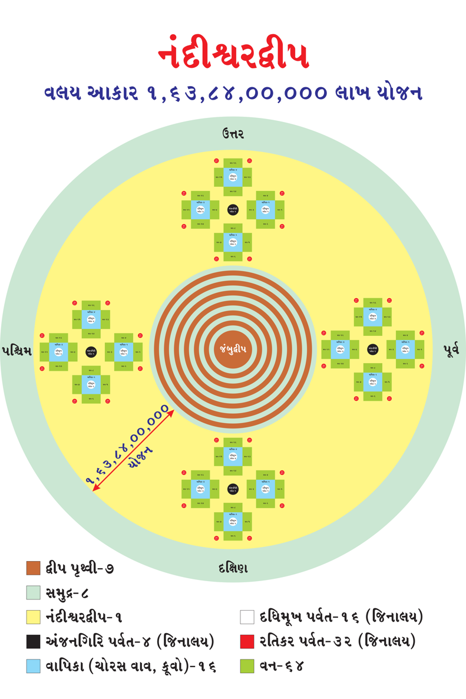
અંજનગિરિ પર્વત ગાયની પૂંછડીના આકારે છે. એટલે કે તળીયું વિસ્તારમાં અને શિખર પાતળું ઘટતાં વિસ્તારમાં છે. શિખર ઉપર ચૌમુખજી શાશ્વત જિનપ્રતિમા ધરાવતું શાશ્વત જિનાલય છે. તેમાં અણમોલ રત્નોની 108 જિન પ્રતિમાઓ છે. પ્રત્યેક જિન પ્રતિમાજી 500 ધનુષ્યની પદ્માસન (બેઠક) આકારે છે.
અંજનગિરિ પર્વતની ચારેય દિશામાં (પૂર્વ, દક્ષિણ, પશ્ચિમ અને ઉત્તર દિશા) પુષ્કરિણી (ચોરસ વાવ, ચોરસ કુવો) છે. એટલે દરેક દિશાએ એકેક વાવડી છે. વાવડીમાં નિર્મલ (ચોખ્ખું) પાણીથી પરિપૂર્ણ છે (તેમાં બે ઇન્દ્રિય થી પંચેન્દ્રિય તિર્યંચ જીવો જ ઉત્પન્ન થતાં જ નથી). વાવડી 1 લાખ યોજન લંબાઇ અને 1 લાખ યોજન પહોળાઇના વિસ્તારમાં (જંબુદ્વીપ જેટલી છે) છે.
વાવડીની વચ્ચે 64 હજાર યોજન ઉંચાઇ ધરાવતો દધિમુખ પર્વત છે. દધિ એટલે દહીં, સફેદ વર્ણનો પર્વત છે. તે ઢોલ આકારે નીચેથી ઉપર સુધી સમ વિસ્તારમાં છે. તેના શિખર ઉપર ચૌમુખજી શાશ્વત જિનપ્રતિમા ધરાવતું શાશ્વત જિનાલય છે. તેમાં મહામૂલ્ય, અણમોલ રત્નોની 108 જિન પ્રતિમાઓ છે. પ્રત્યેક જિન પ્રતિમાજી 500 ધનુષ્યની પદ્માસન (બેઠક) આકારે છે.
વાવડીની ચારેય દિશામાં (પૂર્વ, દક્ષિણ, પશ્ચિમ અને ઉત્તર દિશામાં) લંબચોરસ વન છે. પ્રત્યેક દિશામાં એકેક વન હોય છે. 1 લાખ યોજન લંબાઇ અને 50 હજાર યોજન પહોળાઇના નયનરમ્ય વન હોય છે. ચિત્રોથી સમજી લેવું.
84
Page 199
નંદીશ્વરદ્વીપ 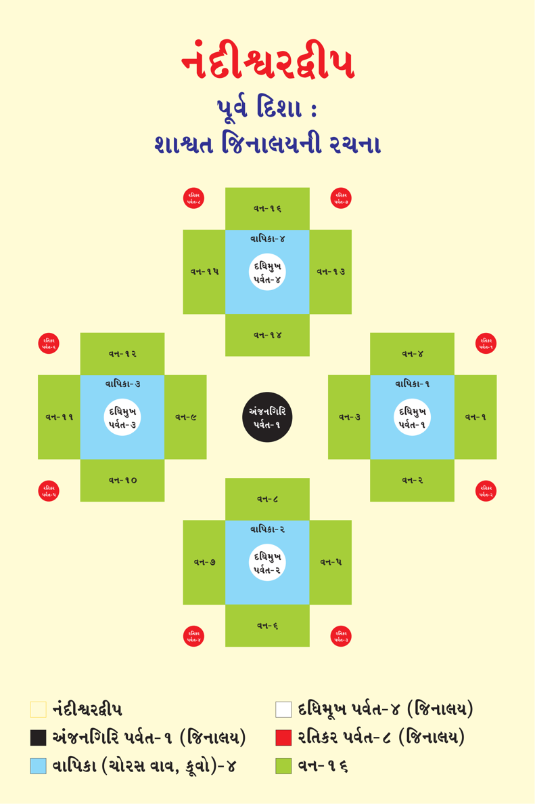
નંદીશ્વર દ્વીપના પૂર્વ દિશાએ, અંજનગિરિના પૂર્વ દિશાએ, દધિમુખ પર્વતની પૂર્વ દિશાએ આવેલ વનની ઉત્તર અને દક્ષિણ દિશાએ એટલે કે દધિમુખ પર્વતના ઇશાન ખૂણામાં 1 રતિકર પર્વત અને અગ્નિ ખુણામાં 1 રતિકર પર્વત આવેલ છે. રતિકર પર્વત 1000 યોજન ઉંચાઇ વાળો, સમતલભૂમિથી 250 યોજન ઊંડાણમાં અને ખંજરીના આકારે નીચેથી ઉપર સમ વિસ્તારમાં આવેલ છે. તેનો વર્ણ તપાવેલા સોના જેવો લાલ રંગનો અને નયનરમ્ય છે.
રતિકર પર્વતના શિખર ઉપર ચૌમુખજી શાશ્વત જિનપ્રતિમા ધરાવતું શાશ્વત જિનાલય છે. તેમાં મહામૂલ્ય, અણમોલ રત્નોની 108 જિન પ્રતિમાઓ છે. પ્રત્યેક જિન પ્રતિમાજી 500 ધનુષ્યની પદ્માસન (બેઠક) આકારે છે.
નંદીશ્વર દ્વીપના પૂર્વ દિશાએ અંજનગિરિના દક્ષિણ દિશાએ દધિમુખ પર્વતની દક્ષિણ દિશાએ આવેલ વનની પૂર્વ અને પશ્ચિમ દિશાએ એટલે કે દધિમુખ પર્વતના અગ્નિ ખૂણામાં 1 રતિકર પર્વત અને નૈઋત્ય ખુણામાં 1 રતિકર પર્વત આવેલ છે. રતિકર પર્વત 1000 યોજન ઉંચાઇ વાળો, સમતલભૂમિથી 250 યોજન ઊંડાણમાં અને ખંજરીના આકારે નીચેથી ઉપર સમ વિસ્તારમાં આવેલ છે. તેનો વર્ણ તપાવેલા સોના જેવો લાલ રંગનો અને નયનરમ્ય છે.
રતિકર પર્વતના શિખર ઉપર ચૌમુખજી શાશ્વત જિનપ્રતિમા ધરાવતું શાશ્વત જિનાલય છે. તેમાં મહામૂલ્ય, અણમોલ રત્નોની 108 જિન પ્રતિમાઓ છે. પ્રત્યેક જિન પ્રતિમાજી 500 ધનુષ્યની પદ્માસન (બેઠક) આકારે છે.
વિશેષ નોંધઃ
દિગમ્બર સંપ્રદાય 52 જિનાલયને માન્યતા આપે છે. (4-અંજનગિરિ, 16-
1) દધિમુખ પર્વત, 32-રતિકર પર્વત = કુલ 52 શાશ્વત જિનાલય)
2)
શ્વેતાંબર સંપ્રદાય 20 જિનાલયને માન્યતા આપે છે. (4-અંજનગિરિ, 16-
86
Page 201
જૈનમ્ જયતિ શાસનમ્
=
દધિમુખ પર્વત 20 શાશ્વત જિનાલય) નંદીશ્વર દ્વીપમાં વિદિશાએ (ઇશાન, અગ્નિ, નૈઋત્ય અને વાયવ્ય ખૂણે) કુલ 4 રતિકર પર્વત છે. રતિકર પર્વત ઉપર જિનાલયનો ઉલ્લેખ નથી.
વાચકે પોતપોતાની સમાચારી પ્રમાણે આદરપૂર્વક સ્વીકાર કરવો. વિષય કેવળીગમ્ય છે. આપણે માત્ર નંદીશ્વર દ્વીપનો ભૂગોળ અને શાશ્વત જિનાલયને જ સમજીએ...
87
Page 202
1000 યોજન
નંદીશ્વરદ્વીપ
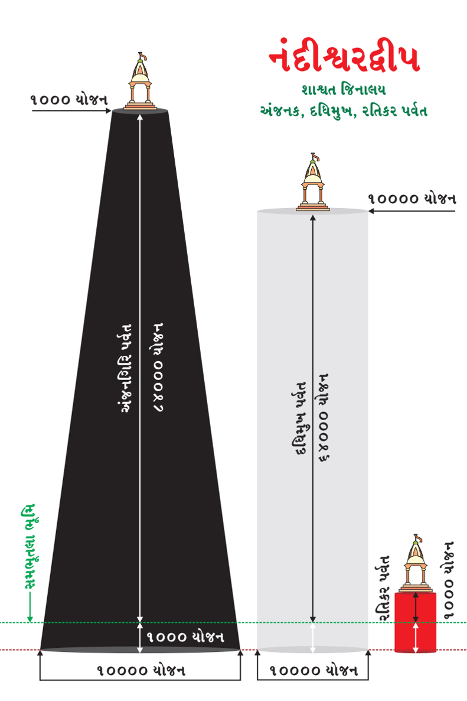
નંદીશ્વર દ્વીપના પૂર્વ દિશાએ અંજનગિરિના પશ્ચિમ દિશાએ દધિમુખ પર્વતની પશ્ચિમ દિશાએ આવેલ વનની ઉત્તર અને દક્ષિણ દિશાએ એટલે કે દધિમુખ પર્વતના વાયવ્ય ખૂણામાં 1 રતિકર પર્વત અને નૈઋત્ય ખુણામાં 1 રતિકર પર્વત આવેલ છે. રતિકર પર્વત 1000 યોજન ઉંચાઇ વાળો, 250 યોજન સમતલભૂમિથી ઊંડાણમાં અને ખંજરીના આકારે નીચેથી ઉપર સમ વિસ્તારમાં આવેલ છે. તેનો વર્ણ તપાવેલા સોના જેવો લાલ રંગનો અને નયનરમ્ય છે.
રતિકર પર્વતના શિખર ઉપર ચૌમુખજી શાશ્વત જિનપ્રતિમા ધરાવતું શાશ્વત જિનાલય છે. તેમાં મહામૂલ્ય, અણમોલ રત્નોની 108 જિન પ્રતિમાઓ છે. પ્રત્યેક જિન પ્રતિમાજી 500 ધનુષ્યની પદ્માસન (બેઠક) આકારે છે.
નંદીશ્વર દ્વીપના પૂર્વ દિશાએ, અંજનગિરિના ઉત્તર દિશાએ દધિમુખ પર્વતની ઉત્તર દિશાએ આવેલ વનની પૂર્વ અને પશ્ચિમ દિશાએ એટલે કે દધિમુખ પર્વતના ઇશાન ખૂણામાં 1 રતિકર પર્વત અને વાયવ્ય ખુણામાં 1 રતિકર પર્વત આવેલ છે. રતિકર પર્વત 1000 યોજન ઉંચાઇ વાળો, 250 યોજન ઊંડાણમાં અને ખંજરીના આકારે નીચેથી ઉપર સમ વિસ્તારમાં આવેલ છે. તેનો વર્ણ તપાવેલા સોના જેવો લાલ રંગનો અને નયનરમ્ય છે.
રતિકર પર્વતના શિખર ઉપર ચૌમુખજી શાશ્વત જિનપ્રતિમા ધરાવતું શાશ્વત જિનાલય છે. તેમાં મહામૂલ્ય, અણમોલ રત્નોની 108 જિન પ્રતિમાઓ છે. પ્રત્યેક જિન પ્રતિમાજી 500 ધનુષ્યની પદ્માસન (બેઠક) આકારે છે.
89
Page 204
જૈન વિજ્ઞાન
નંદીશ્વર દ્વીપની પૂર્વ દિશાએ આવેલ અંજનગિરિ પર્વતને કેન્દ્રમાં રાખી કુલ 13 શાશ્વત જિનાલય (1 અંજનગિરિ પર્વત + 4 દધિમુખ પર્વત 8 રતિકર પર્વત = 13 પર્વતે પ્રત્યેક 1 શાશ્વત જિનાલય) આવેલ છે.
+
આ જ પ્રમાણે નંદીશ્વર દ્વીપની દક્ષિણ દિશાએ અંજનગિરિ પર્વત આવેલ છે. 1-અંજનગિરિ કેન્દ્રમાં, ચારેય દિશાએ કુલ 4 પુષ્કરિણી (વાવડી), 4-દધિમુખ પર્વત, 16-વન, 8-રતિકર પર્વત આવેલ છે. સર્વેનું માપ ઉંચાઇ, લંબાઇ, ક્ષેત્રફળ, વર્ણ તે જ પ્રમાણે અને શાશ્વત જિનાલય કુલ 13 થાય છે. તે જ પ્રમાણે પશ્ચિમ દિશામાં અને ઉત્તર દિશામાં અંજનગિરિ પર્વત વગેરે પૂર્વ દિશાની જેમ સમજી લેવું.
એકંદરે નંદીશ્વર દ્વીપની ચારેય દિશાઓ મળી 4-અંજનગિરિ પર્વત, 16- વાવડીઓ, 16-દધિમુખ પર્વત, 32-રતિકર પર્વત, 64-વનોનો સમાવેશ થાય છે. કુલ 52 શિખરે 52 શાશ્વત જિનાલય આવેલ છે. વનમાં દેવી-દેવતાઓ ક્રીડા કરવા અને મનોરંજન માટે અહીં આવે છે. જેમ આપણે બાગ-બગીચાઓનો ઉપયોગ કરીએ છીએ તે જ પ્રમાણે દેવી-દેવતાઓ માટેના નયનરમ્ય વન-ઉપવન રહેલ છે. દેવી-દેવતાઓ માટે આનંદરૂપ હોવાથી આ દ્વીપને નંદીશ્વર દ્વીપ કહેવાય છે. ત્યાં સદાય અસંખ્ય સૂર્યનો પ્રકાશ અને અસંખ્ય ચંદ્રનો પ્રકાશ સ્થિર અવસ્થામાં હોય છે. (અહીં જંબુદ્વીપની જેમ સૂર્ય, ચંદ્ર, ગ્રહ, નક્ષત્ર અને તારા મેરુપર્વતને પ્રદક્ષિણા દેતા નથી) એટલે કે, દિવસ-રાત થતાં નથી. દિવસ-રાત માત્ર અઢીદ્વીપમાં જ થાય છે.
90
Page 205
જૈનમ્ જયતિ શાસનમ્
નંદીશ્વર દ્વીપમાં કુલ ચાર અંજનગિરિ પર્વત છે. (1) પૂર્વી અંજનક પર્વત (2)
દક્ષિણી અંજનક પર્વત (3) પશ્ચિમી અંજનક પર્વત (4) ઉત્તરી અંજનક પર્વત.
સમતલભૂમિથી દરેક અંજનગિરિની ઊંચાઇ 84 હજાર યોજન છે. સમતલભૂમિથી નીચે તેનું ઉંડાણ 1 હજાર યોજન છે. સમતલભૂમિએ તેની પહોળાઇ 10 હજાર યોજન છે. પછી ક્રમશઃ ઘટતાં ઘટતાં શિખરે પહોળાઇ 1 હજાર યોજન રહે છે. સમતલભૂમિથી તેનો ઘેરાવો (પરિધિ) 31,623 યોજન છે અને શિખરે તેનો ઘેરાવો (પરિધિ) 3162 યોજન છે. તે મૂળમાં વિસ્તૃત (લાંબુ), મધ્યમાં સંક્ષિપ્ત (ટૂંકું) અને અંતમાં પાતળું ગાયના પૂંછડી આકારવાળું છે.
તે ચારેય પર્વતો નીચેથી ઉપર સુધી અંજન રત્નમય છે. તેની સુંદરતા માટે
16 વિશેષણોથી યુક્ત છે.
1) સ્ફટિક સમાન સ્વચ્છ અને પારદર્શી છે. 2) મૃદુ (નરમ) છે. 3) ચમકદાર છે. 4) એકદમ ઘસેલા હોય તેવા લીસા છે. 5) સાવરણીથી સાફ કરેલ હોય તેવા દેખાય છે. 6) રજ (રજકણો) રહિત છે. 7) નિર્મલ છે. 8) નિષ્પંક છે. 9) નિષ્કંટક (કાંટા વગરના) છાયાવાળા છે. 10) પ્રભાયુક્ત છે, પ્રભા એટલે કિરણો. 11) શોભાયુક્ત છે. 12) ઉદ્યોત (પ્રકાશ, જ્યોતિ) સહિત છે. 13) મનને પ્રસન્ન કરનારા છે.
91
Page 206
જૈન વિજ્ઞાન
14) દર્શનીય છે. 15) સુંદર અને રમણીય છે. 16) વારંવાર જોવાલાયક છે.
92
Page 207
જૈનમ્ જયતિ શાસનમ્
પુષ્કરિણીઃ
પૂર્વ દિશાએ આવેલ અંજનક પર્વત (અંજનગિરિ)ની ચારે દિશામાં 4 નંદા પુષ્કરિણીઓ (ચોરસ વાપિકા, કૂવા) છે. 1) નંદોત્તરા 2) નંદા 3) આનંદા અને 4) નંદિવર્ધના.
દક્ષિણ દિશાએ આવેલ અંજનક પર્વત (અંજનગિરિ)ની ચારે દિશામાં 4 નંદા પુષ્કરિણીઓ (ચોરસ વાપિકા, કૂવા) છે. 1) ભદ્રા 2) વિશાલા 3) કુમુદા અને 4) પુંડરીકિણી છે.
પશ્ચિમ દિશાએ આવેલ અંજનક પર્વત (અંજનગિરિ)ની ચારે દિશામાં 4 નંદા પુષ્કરિણીઓ (ચોરસ વાપિકા, કૂવા) 1) નંદિષેણા 2) અમોઘા 3) ગોસ્તૂપા અને 4) સુદર્શના છે.
ઉત્તર દિશાએ આવેલ અંજનક પર્વત (અંજનગિરિ)ની ચારે દિશામાં 4 નંદા પુષ્કરિણીઓ (ચોરસ વાપિકા, કૂવા) 1) વિજયા 2) વૈજયંતી 3) જયંતી અને 4) અપરાજિતા છે.
દરેક પુષ્કરિણી 1 લાખ યોજન લાંબી અને 50 હજાર યોજન પહોળી અને 1 હજાર યોજન ઊંડી છે. તે પુષ્કરિણીની ચારેય દિશામાં (પૂર્વ, દક્ષિણ, પશ્ચિમ અને ઉત્તર દિશા) ત્રણ-ત્રણ પગથિયાવાળી સીઢી છે. સીઢીની આગળ તોરણ છે. નિર્મલ પાણી અને બે ઇન્દ્રિયથી પાંચ ઇન્દ્રિયવાળા જીવ રહિત પુષ્કરિણીઓ છે.
વનઃ
પ્રત્યેક પુષ્કરિણીઓની ચારે દિશામાં ચાર વનખંડ છે. તેના નામ 1) પૂર્વમાં અશોકવન 2) દક્ષિણમાં સપ્તપર્ણ વન 3) પશ્ચિમમાં ચંપકવન અને 4) ઉત્તરમાં આમ્રવન (આંબા) છે. દરેક વનમાં માત્ર એક જ પ્રકારના વૃક્ષો હોય છે.
93
Page 208
જૈન વિજ્ઞાન
દધિમુખ પર્વતઃ
દરેક પુષ્કરિણીની વચ્ચે દધિમુખ પર્વત છે. દરેક દધિમુખ પર્વત સમતલભૂમિથી 64 હજાર યોજન ઊંચા છે. સમતલભૂમિથી 1 હજાર યોજન ઊંડા છે. ભૂમિ ભાગથી શિખર સુધી પહોળાઇ સરખી છે. તેનો આકાર અનાજ ભરવાની કોઠી સમાન છે. 10 હજાર યોજન વ્યાસ અને પરિધિ (ઘેરાવો) 31,623 યોજન છે. દધિમુખ પર્વત સફેદ વર્ણનો અને રત્નમય છે.
રતિકર પર્વત :
રતિકર પર્વત 1 હજાર યોજન સમતલભૂમિથી ઊંચા છે અને સમતલભૂમિથી 250 યોજન ઊંડા છે. ભૂમિ ભાગથી શિખર સુધી પહાળાઇ સરખી છે. પર્વતની આકૃતિ ઝાલરના આકારે ગોળાકાર છે. તેનો વ્યાસ 10 હજાર યોજન અને પરિધિ (ઘેરાવો) 31,623 યોજન પ્રમાણમાં છે. તેનો વર્ણ લાલ અને રત્નમય છે.
તે ચારેય રતિકર પર્વતોમાં ઉત્તર - પૂર્વ દિશાનો રતિકર પર્વત છે તેની ચારેય દિશામાં બીજા વૈમાનિક દેવલોકના ઇન્દ્ર ઇશાનેન્દ્ર ની 4-પટ્ટરાણીઓની 1 લાખ યોજન પ્રમાણની ચાર રાજધાનીઓ છે. 1) કૃષ્ણાદેવીની રાજધાની નંદોત્તરા 2) કૃષ્ણરાજિકાદેવીની રાજધાની નંદા 3) રામાદેવીની રાજધાની નંદા અને 4) રામરક્ષિતાદેવીની રાજધાની દેવકુરા છે.
તે ચારેય રતિકર પર્વતોમાં દક્ષિણ - પૂર્વ દિશાનો રતિકર પર્વત છે તેની ચારેય દિશામાં પ્રથમ વૈમાનિક દેવલોકના ઇન્દ્ર સૌધર્મેન્દ્ર ની 4-પટ્ટરાણીઓની 1 લાખ યોજન પ્રમાણની ચાર રાજધાનીઓ છે. 1) પદ્માદેવીની રાજધાની સમના 2) શિવાદેવીની રાજધાની સૌમનસા 3) શચીદેવીની રાજધાની અર્ચિમાલિની અને 4) અંજૂદેવીની રાજધાની મનોરમા છે.
94
Page 209
જૈનમ્ જયતિ શાસનમ્
તે ચારેય રતિકર પર્વતોમાં દક્ષિણ - પશ્ચિમ દિશાનો રતિકર પર્વત છે તેની ચારેય દિશામાં પ્રથમ વૈમાનિક દેવલોકના ઇન્દ્ર સૌધર્મેન્દ્ર ની બીજી 4- પટ્ટરાણીઓની 1 લાખ યોજન પ્રમાણની ચાર રાજધાનીઓ છે. 1) અમલાદેવીની રાજધાની ભૂતા 2) અપ્સરાદેવીની રાજધાની ભૂતાવતંસા 3) નવમિકાદેવીની રાજધાની ગોસ્તૂપા અને 4) રોહિણીદેવીની રાજધાની સુદર્શના છે.
તે ચારેય રતિકર પર્વતોમાં ઉત્તર - પશ્ચિમ દિશાનો રતિકર પર્વત છે તેની ચારેય દિશામાં બીજા વૈમાનિક દેવલોકના ઇન્દ્ર ઇશાનેન્દ્ર ની 4-પટ્ટરાણીઓની 1 લાખ યોજન પ્રમાણની ચાર રાજધાનીઓ છે. 1) વસુદેવીની રાજધાની રત્ના 2) વસુગુપ્તાદેવીની રાજધાની રત્નોચ્ચયા 3) વસુમિત્રાદેવીની રાજધાની સર્વરત્ના અને 4) વસુંધરાદેવીની રાજધાની રત્નસંચયા છે.
શાશ્વત જિનાલયઃ
શાશ્વત જિનાલય 4-અંજનગિરિ અ 16 દધિમુખ પર્વત અ 32 રતિકર પર્વત મળીને કુલ મળી 52 જિનાલય થાય છે. દરેક જિનાલયમાં 108 પ્રતિમા રત્નોની છે. દરેક પ્રતિમા ચૌમુખજી અને શાશ્વત જિન (ઋષભાનન, ચંદ્રાનન, વારિષેણ અને વર્ધમાન)ની છે. દરેક પ્રતિમા 500 ધનુષ્યની જે. જિનાલય અને પ્રતિમા કોઇ મનુષ્યો કે દેવો દ્વારા નિર્માણ નથી થયું. જિનાલયને ચાર દ્વાર છે. કુલ 27 ચૌમુખજી પ્રતિમા છે.
95
Page 210
જૈન વિજ્ઞાન
જૈન દર્શનમાં મેરુપર્વત બહુજ પ્રચલિત નામ છે. દૈનિક જિનેશ્વર પ્રભુના પક્ષાલમાં, સ્નાત્ર પૂજા વગેરે અનુષ્ઠાનમાં અચૂક બોલાય. મેરુપર્વત શાશ્વત તીર્થ છે. 14 રાજલોકને ત્રણ લોકમાં વિભાજિત કરવામાં મહત્વનો ભાગ ભજવે છે. જેના પરિણામે ઉર્ધ્વલોક (સ્વર્ગ લોક) , તિરછાલોક (મધ્ય લોક) અને અધોલોક (પૃથ્વીથી નીચેનો લોક) કહેવાય છે. કોઇપણ નિશ્ચિત દિશાનું પ્રમાણ આપવા મેરુપર્વતને કેન્દ્રિત કરીને જ તેનો ઉલ્લેખ થાય છે. મેરુનો અર્થ છે કેન્દ્રસ્થાન અથવા મધ્યસ્થાન.
આગમમાં તેનો વિશેષપણે ઉલ્લેખ થાય છે. લોકોની જિજ્ઞાસા હશે મેરુપર્વતને વિસ્તારથી સમજવા માટે. મેરુપર્વતને તીર્થ હોવાનું મુખ્ય કારણ, જિનેશ્વર દેવની અનંત ચોવીસીઓ થઇ અને ભવિષ્યમાં થતી જ રહેશે પરંતું ક્યારેય તેનો અંત નહીં આવે! દરેક તીર્થંકર પરમાત્માના જન્મ અભિષેક (સ્નાત્ર મહોત્સવ) મેરૂશિખરે જ ઉજવાય! અનંત તીર્થંકર પરમાત્માના જન્માભિષેકના કારણે મહાતીર્થમાં તેની ગણતરી થાય છે.
મેરુગિરિ એટલે મેરુપર્વત. 14 રાજલોકમાં મેરુપર્વત કુલ 5 (પાંચ) છે. જંબુદ્વીપના મધ્યમાં 1 મેરુપર્વત છે. જંબુદ્વીપને કેન્દ્રમાં લઇ ઘાતકીખંડની પૂર્વ દિશાએ અને મધ્યમાં એક અને ઘાતકીખંડની પશ્ચિમ દિશાએ મધ્યમાં એક મેરુપર્વત હોય છે. તે જ પ્રમાણે જંબુદ્વીપને કેન્દ્રમાં લઇ પુષ્કરદ્વીપની પૂર્વ દિશાએ અને મધ્યમાં એક અને પુષ્કરદ્વીપની પશ્ચિમ દિશાએ મધ્યમાં એક મેરુપર્વત હોય છે. એમ કુલ મળી પાંચ મેરુપર્વત હોય છે.
96
Page 211
મેરૂપર્વત 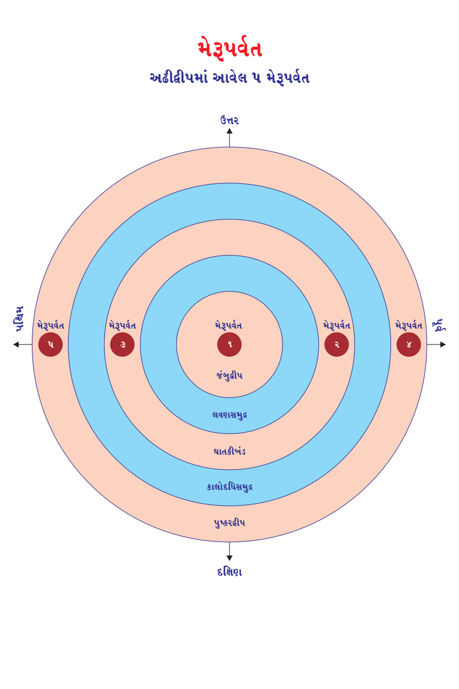
જૈન વિજ્ઞાન
મેરુપર્વત જંબુદ્વીપમાં એક, ધાતકીખંડમાં બે (પૂર્વ અને પશ્ચિમ) અને પુષ્કરદ્વીપમાં બે (પુર્વ અને પશ્ચિમ) મનુષ્ય ક્ષેત્રમાં હોય. મનુષ્ય ક્ષેત્ર એટલે જે ભૂમિમાં મનુષ્યનો જન્મ થાય. કુલ 45 લાખ યોજન પ્રમાણ ક્ષેત્રમાં જ મનુષ્યનો જન્મ થાય છે.
મેરુપર્વતના નામઃ
1) સુદર્શન મેરુ 2) વિજય મેરુ 3) અચલ મેરુ 4) મંદર મેરુ 5) વિદ્યુન્માલિ મેરુ
મેરુપર્વતના 16 વિશેષણોઃ
મેરુપર્વતને કુલ 16 વિશેષણોથી પણ બોલાવાય છે. 1) મંદર 2) મેરુ 3) મનોરમ 4) સુદર્શન 5) સ્વયંપ્રભ 6) ગિરિરાજ 7) રત્નોચ્ચય 8) શિલોચ્ચય 9) લોકમધ્ય 10) લોકનાભિ 11) અચ્છ 12) સૂર્યાવર્ત 13) સૂર્યાવરણ 14) ઉત્તમ અથવા ઉત્તર 15) દિગાદિ 16) અવતંસ. ઉપરોક્ત વિશેષણો મેરુપર્વતના વિશેષ ગુણધર્મો યુક્ત છે. આગમયુક્ત નામો છે.
જંબુદ્વીપમાં સુદર્શન મેરુપર્વતનું ક્ષેત્ર અને પ્રમાણઃ
સુદર્શન મેરુપર્વત ઐરાવતક્ષેત્ર અને ઉત્તર કુરુક્ષેત્રની દક્ષિણમાં, ભરતક્ષેત્ર અને દેવકુરુક્ષેત્રની ઉત્તરમાં, પૂર્વ મહાવિદેહ ક્ષેત્રની પશ્ચિમમાં અને પશ્ચિમ મહાવિદેહ ક્ષેત્રના પૂર્વમાં તેમજ જંબુદ્વીપની બરાબર મધ્યમાં સુદર્શન મેરુપર્વત આવેલ છે. સુદર્શન મેરુપર્વત સમગ્ર તિરછાલોકના બરાબર મધ્યમાં આવેલ છે. 14 રાજલોકની નાભિ ભાગ છે. ચિત્રમાં સ્પષ્ટ રીતે સમજાઇ જશે.
98
Page 213
જૈનમ્ જયતિ શાસનમ્
સુદર્શન મેરુપર્વત 1,00,000 યોજન પ્રમાણ ઉંચાઇ છે. સમતલભૂમિથી 99,000 યોજન ઊંચે અને 1,000 યોજન નીચે ઉંડાણમાં છે. તેનો વ્યાસ સમતલભૂમિથી 10,000 યોજન પહોળો છે. એકદમ તળીયેથી 10,090- 10/11 યોજન વ્યાસ (પહોળાઇમાં) છે. તળીયેથી અનુક્રમે ઘટતાં-ઘટતાં શિખરે 1,000 તેનો વ્યાસ (પહોળાઇમાં) છે. તળીયામાં તેનો ઘેરાવો (પરિધિ) 31,910-3/11 યોજન, સમતલભૂમિથી ઘેરાવો (પરિધિ) 31,623 યોજન છે. તેમજ શિખરે ઘેરાવો (પરિધિ) 3,162 યોજન છે.
સુદર્શન મેરુપર્વત મૂળમાં પહોળો, મધ્યમાં સંક્ષિપ્ત (સાંકળો) અને ઉપર પાતળો ગાયના પૂંછડાના આકાર જેવો છે. આપને ચિત્ર ઉપર સરળતાથી સમજાઇ જશે. તે સંપૂર્ણ રત્નમય છે. સ્વચ્છ, સ્નિગ્ધ અને મનોહર છે.
વનઃ
સુદર્શન મેરુપર્વત ઉપર તળીયાથી શિખર સુધી ચાર વન છે. 1) ભદ્રશાલ વન
2) નંદન વન 3) સૌમનસ વન અને 4) પંડગ વન.
ભદ્રશાલ વનઃ
સુદર્શન મેરુપર્વતના સમતલભૂમિ ભાગ પર ભદ્રશાલ વન છે. તે પૂર્વ-પશ્ચિમ લાંબુ અને ઉત્તર - દક્ષિણ પહોળું છે. તે સૌમનસ પર્વત , વિદ્યુત્પ્રભ પર્વત, ગંધમાદન પર્વત અને માલ્યવાન પર્વત વક્ષસ્કાર (હાથીના દાંતની જેમ વળાંક વાળો-હાથીના બહારના દાંત સમાન) પર્વત હોય છે તેમજ મહાવિદેહ ક્ષેત્રની બે મહાનદી સીતા અને સીતોદા નામની નદીથી ભદ્રશાલ વન કુલ 8 ભાગમાં વિભાજિત થાય છે.
99
Page 214
મેરૂપર્વત
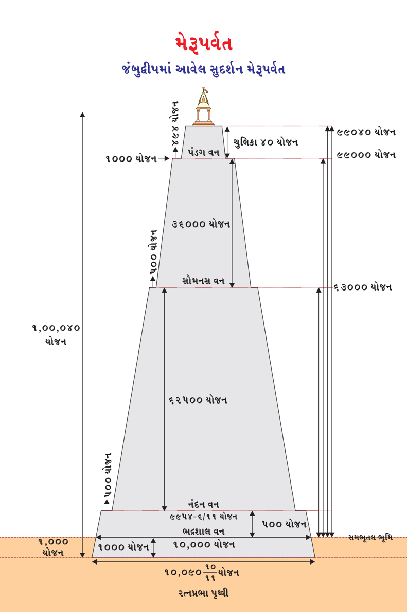
ભદ્રશાલ વનઃ
ભદ્રશાલ વન સુદર્શન મેરુપર્વતની પૂર્વમાં 22,000 યોજન અને પશ્ચિમમાં પણ 22,000 યોજન લાંબુ છે. ઉત્તરમાં 250 યોજન પહોળું અને દક્ષિણમાં 250 યોજન પહોળું છે. તેમાં એક પદ્મવરવેદિકા અને એક વનખંડનો (એટલે એક જ પ્રકારના વૃક્ષોનો વન વિભાગ) સમાવેશ છે. તેમાં ઘણાં દેવી-દેવતાઓ આશરો અને આરામ કરે છે.
સુદર્શન મેરુપર્વતની પૂર્વ દિશાએ ભદ્રશાલ વનમાં 50 યોજન દૂર વિશાળ સિદ્ધાયતન છે. તે 50 યોજન લાંબુ, 25 યોજન પહોળું અને 36 યોજન ઊંચુ છે. સેંકડો સ્તંભ (થાંભલાઓ) ઉપર સ્થિર છે. આજ પ્રમાણે સુદર્શન પર્વતની પશ્ચિમ, ઉત્તર અને દક્ષિણ દિશામાં 50 યોજન લાંબુ, 25 યોજન પહોળું અને 36 યોજન ઊંચુ છે. સેંકડો સ્તંભ (થાંભલાઓ) ઉપર સ્થિર છે. ચારેય દિશાના સિદ્ધાયતન સપ્રમાણ હોય છે. સુદર્શન મેરુપર્વતથી ઇશાન ખૂણામાં (ઉત્તર - પૂર્વની વચ્ચે) 50 યોજન દૂર 1) પદ્મા 2) પદ્મપ્રભા 3) કુમુદા અને 4) કુમુદપ્રભા નામની ચાર દિશાએ ચાર પુષ્કરિણી (વાપિકા, ચોરસ કૂવો) છે. તે 50 યોજન લાંબો અને 25 યોજન પહોળો અને 10 યોજન ઊંડો હોય છે. દરેકમાં પદ્મવરવેદિકા, વનખંડ અને તોરણોથી સજાવેલું સામાન્યપણે હોય છે. ચાર પુષ્કરિણીઓની વચ્ચે 250 યોજન લાંબો, 250 યોજન પહોળો અને 500 યોજન ઊંચો ઇશાનેન્દ્ર (બીજા વૈમાનિક દેવલોકના ઇન્દ્ર) મહારાજાનો મહેલ છે.
વિશેષ નોંધઃ સ્થાનકવાસી સંપ્રદાય સ્થાન - પ્રવચન - શ્રુતજ્ઞાનને અનુસરે છે. તેથી સિદ્ધાયતન શબ્દનો ઉલ્લેખ થાય છે. મૂર્તિપૂજક સંપ્રદાય જિનેશ્વર પ્રતિમા પૂજાને અનુસરે છે. તેથી તેમણે સિદ્ધાયતન શબ્દના સ્થાને જિનાલય શબ્દ સમજવો. જૈન ધર્મ અનેકાંતવાદને માને છે. દરેકે પોતપોતાની ગચ્છ - ગુરુ સમાચારીને પ્રાધાન્યતા આપી શ્રદ્ધાપૂર્વક સ્વીકાર કરવો. જૈન દર્શન કેવળીગમ્ય છે. એટલે કે, કોઇ તત્વ ઉપર શંકા ઉપજે તો તેનું નિવારણ માત્ર કેવળજ્ઞાની ભગવંતો જ કરી શકે!
101
Page 216
મેરૂપર્વત જંબુદ્વીપમાં આવેલ સુદર્શન મેરૂપર્વત ઉપરથી ભદ્રશાલવનનું દ્રશ્ય
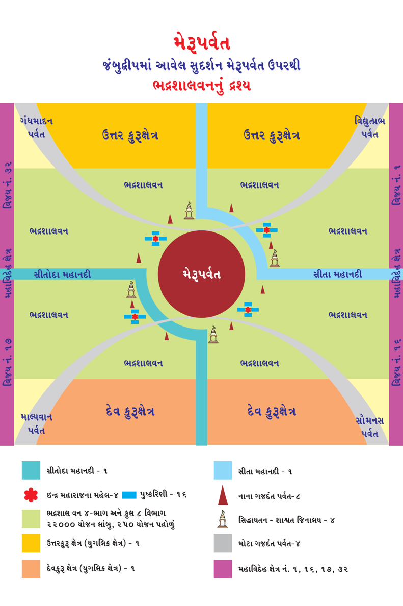
જૈનમ્ જયતિ શાસનમ્
ભદ્રશાલ વનઃ
સુદર્શન મેરુપર્વતથી અગ્નિખૂણામાં (પૂર્વ-દક્ષિણની વચ્ચે) 50 યોજન દૂર 1) ઉત્પલ ગુલ્મા 2) નલિના 3) ઉત્પલા અને 4) ઉત્પલોજ્જ્વલા નામની ચાર દિશાએ ચાર પુષ્કરિણી (વાપિકા, ચોરસ કૂવો) છે. તે 50 યોજન લાંબો અને 25 યોજન પહોળો અને 10 યોજન ઊંડો હોય છે. દરેકમાં પદ્મવરવેદિકા, વનખંડ અને તોરણોથી સજાવેલું સામાન્યપણે હોય છે. ચાર પુષ્કરિણીઓની વચ્ચે 250 યોજન લાંબો, 250 યોજન પહોળો અને 500 યોજન ઊંચો સૌધર્મેન્દ્ર (પ્રથમ વૈમાનિક દેવલોકના ઇન્દ્ર) મહારાજાનો મહેલ છે.
સુદર્શન મેરુપર્વતથી નૈઋત્ય ખૂણામાં (દક્ષિણ-પશ્ચિમની વચ્ચે) 50 યોજન દૂર 1) ભૃંગા 2) ભૃંગનિભા 3) અંજના અને 4) અંજનપ્રભા નામની ચાર દિશાએ ચાર પુષ્કરિણી (વાપિકા, ચોરસ કૂવો) છે. તે 50 યોજન લાંબો અને 25 યોજન પહોળો અને 10 યોજન ઊંડો હોય છે. દરેકમાં પદ્મવરવેદિકા, વનખંડ અને તોરણોથી સજાવેલું સામાન્ય પણે હોય છે. ચાર પુષ્કરિણીઓની વચ્ચે 250 યોજન લાંબો, 250 યોજન પહોળો અને 500 યોજન ઊંચો સૌધર્મેન્દ્ર (પ્રથમ વૈમાનિક દેવલોકના ઇન્દ્ર) મહારાજાનો મહેલ છે.
સુદર્શન મેરુપર્વતથી વાયવ્ય ખૂણામાં (પશ્ચિમ અને ઉત્તરની વચ્ચે) 50 યોજન દૂર 1) શ્રી કાંતા 2) શ્રી ચંદ્રા 3) શ્રી મહિતા અને 4) શ્રી નિલયા નામની ચાર દિશાએ ચાર પુષ્કરિણી (વાપિકા, ચોરસ કૂવો) છે. તે 50 યોજન લાંબો અને 25 યોજન પહોળો અને 10 યોજન ઊંડો હોય છે. દરેકમાં પદ્મવરવેદિકા, વનખંડ અને તોરણોથી સજાવેલું સામાન્યપણે હોય છે. ચાર પુષ્કરિણીઓની વચ્ચે 250 યોજન લાંબો, 250 યોજન પહોળો અને 500 યોજન ઊંચો ઇશાનેન્દ્ર (બીજા વૈમાનિક દેવલોકના ઇન્દ્ર) મહારાજાનો મહેલ છે.
103
Page 218
જૈન વિજ્ઞાન
ભદ્રશાલ વનઃ
દરેક સિદ્ધાયતન અને ઇન્દ્રના મહેલની વચ્ચે અને વિદિશામાં 2-2 કૂટપર્વતો (શિખરી પર્વત) કુલ 8 પર્વતો હાથીના દાંત સમાન આકારે હોય છે. 1) પદ્મોત્તર 2) નીલવાન 3) સુહસ્તિ 4) અંજનગિરિ 5) કુમુદ 6) પલાશ 7) અવતંસ અને 8) રોચનાગિરિ આવેલ છે. દરેક શિખરી પર્વત હોય છે. દરેક પર્વત સમતલભૂમિથી 500 યોજન ઊંચાઇ, સમતલભૂમિથી 125 યોજન ઉંડાણમાં અને 500 યોજન વ્યાસ (પહોળાઇ) છે.
નંદનવનઃ
સુદર્શન મેરુપર્વતના ભદ્રશાલ વન અને સમતલભૂમિથી 500 યોજન ઉપર નંદનવન આવે છે. મેરુપર્વતની ફરતે વલય (ગોળાઇ) આકારમાં 500 યોજન પહોળાઇમાં નંદનવન પથરાયેલ છે. નંદનવન શરુ થતાં બહારથી સુદર્શન મેરુપર્વતનો વ્યાસ (પહોળાઇ) 9,954-6/11 યોજન છે. ઘેરાવો (પરિધિ) 31,479 યોજન છે. નંદનવનના અંદરના ભાગની ગણતરીએ મેરુપર્વતનો વ્યાસ (પહોળાઇ) 8,954-6/11 યોજન હોય છે. પરિધિ (ઘેરાવો) 28,316- 8/11 યોજન હોય છે. ત્યાં 1 પદ્મવરવેદિકા અને 1-વનખંડ (એક જ પ્રકારના વૃક્ષોનું વન)થી ચારે બાજુથી ઘેરાયેલો છે. ત્યાં દેવી-દેવતાઓ આશરો અને વિશ્રામ કરે છે.
નંદનવનમાં પૂર્વ, દક્ષિણ, પશ્ચિમ અને ઉત્તર ચારેય દિશામાં એકેક સિદ્ધાયતન છે. ઇશાન, અગ્નિ, નૈઋત્ય અને વાયવ્ય દિશામાં ચાર-ચાર પુષ્કરિણીઓ કુલ મળી 16 થાય અને પ્રત્યેક ચાર પુષ્કરિણીની વચ્ચે ઇન્દ્ર મહારાજાનો 1-મહેલ હોય છે કુલ-4 મહેલ હોય છે. સિદ્ધાયતન, પુષ્કરિણી અને મહેલનું માપ (લંબાઇ, પહોળાઇ, ઉંડાઇ અને ઊંચાઇ) ભદ્રશાલ વનમાં વિસ્તારમાં જણાવેલ, તે જ પ્રમાણે હોય છે.
104
Page 219
મેરૂપર્વત જંબુદ્વીપમાં આવેલ સુદર્શન મેરૂપર્વત ઉપરથી નંદનવનનું દ્રશ્ય
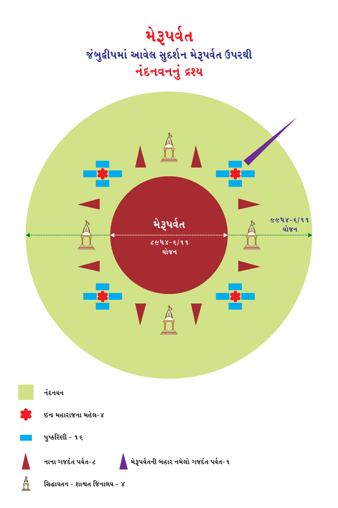
જૈન વિજ્ઞાન
નંદનવનઃ
નંદનવનમાં 9 કૂટો (શિખર વાળા પર્વત) છે. 1) નંદનવનકૂટ 2) મંદરકૂટ 3) નિષધકૂટ 4) હિમવંતકૂટ 5) રજતકૂટ 6) રુચકકૂટ 7) સાગરચિત્રકૂટ 8) વજ્રકૂટ અને 9) બલકૂટ (ઇશાન ખૂણામાં સુદર્શન મેરુપર્વતની બહાર સુધી નમેલું તેનું શિખર હોય છે.)
સૌમનસ વનઃ
સૌમનસ વન સુદર્શન મેરુપર્વત ઉપર આવેલ નંદનવનની સમતલભૂમિથી 62,500 યોજન ઊંચે અને 500 યોજન પહોળાઇમાં બહારથી અંદરના ભાગે વલય આકારે (ગોળ ફરતે) હોય છે.
સુદર્શન પર્વત, સૌમનસ વનના બહારના છેડેથી તેનો વ્યાસ 4,272- 8/11 યોજન પહોળાઇ અને તેની પરિધિ (ઘેરાવો) 13,511-6/11 યોજન છે. સોમનસ વનની અંદરના ભાગથી સુદર્શન મેરુપર્વતનો વ્યાસ 3,272-8/11 યોજન છે અને પરિધિ (ઘેરાવો) 10,349-3/11 છે.
સોમનસ વનમાં 1-પદ્મવરવેદિકા અને 1-વનખંડ (વનખંડ એક જ પ્રકારના વૃક્ષો હોય છે.) થી ચારે બાજુથી ઘેરાયેલો છે. તેમાં ભદ્રશાલવનની જેમ ચારેય દિશા- વિદિશા મળીને કુલ 4-સિદ્ધાયતન, 16-પુષ્કરિણી (વાપિકા, ચોરસ કૂવો) અને ઇન્દ્ર મહારાજાના 4-મહેલ છે. ત્યાં માત્ર કૂટ પર્વતો નથી. ભદ્રશાલ વનની જેમ દરેકના માપ, વિસ્તાર, અંતર, દિશા વગેરે સમાન છે.
106
Page 221
મેરૂપર્વત જંબુદ્વીપમાં આવેલ સુદર્શન મેરૂપર્વત ઉપરથી સૌમનસવનનું દ્રશ્ય
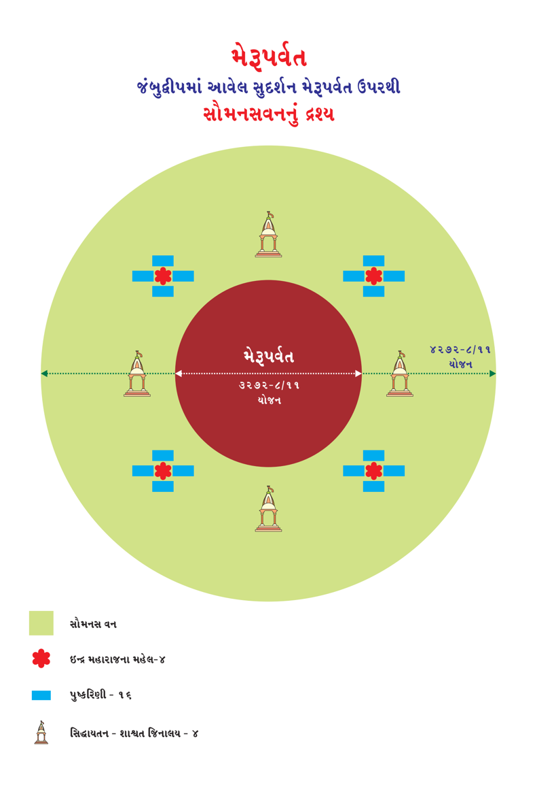
જૈન વિજ્ઞાન
પંડકવનઃ
સુદર્શન મેરુપર્વતના ઉપર સૌમનસ વનની સમતલ ભૂમિથી 36,000 યોજન ઊંચે, 494 યોજન પહોળાઇમાં મેરુપર્વતની ગોળાઇમાં ફરતે આવેલ છે. સુદર્શન મેરુપર્વત બહારથી 1,000 યોજન વ્યાસ (પહોળાઇ) અને પરિધિ (ઘેરાવો) 3,162 યોજન છે.
પંડકવનમાં 1-પદ્મવર વેદિકા, 1-વનખંડથી ઘેરાયેલ છે. ત્યાં દેવી- દેવતાઓ આશરો અને વિરામ કરે છે. પંડકવનની વચ્ચે મંદર ચૂલિકા શિખર છે. પંડકવનની સમતલભૂમિથી ચૂલિકાનું પ્રમાણ 12 યોજન વ્યાસ (પહોળાઇ) અને પરિધિ (ઘેરાવો) 37 યોજન છે. ચૂલિકાની ઊંચાઇ 40 યોજન છે. મંદર ચૂલિકાના શિખર ભાગે વ્યાસ 4 યોજન છે. સંપૂર્ણપણે વૈડૂર્ય (નીલમ રત્ન) રત્નમય ઉજ્જ્વળ છે. 1-પદ્મવર વેદિકા અને 1-વનખંડથી ચારે તરફથી ઘેરાયેલું છે.
મંદર ચૂલિકાની ઉપર મધ્યમાં સિદ્ધાયતન છે. સિદ્ધાયતન 1-ગાઉ લંબાઇ, અડધો ગાઉ પહોળાઇ અને 1,440 ધનુષ્યની ઊંચાઇ અને સેંકડો થાંભલાઓ ઉપર સ્થિત છે. પંડકવનમાં ચૂલિકાની પૂર્વમાં પંડકવનમાં 50 યોજન દૂર 1-વિશાળ ભવન છે. પંડકવનની ચારેય દિશા-વિદિશામાં કુલ 4-સિદ્ધાયતન, 16-પુષ્કરિણી, ઇન્દ્ર મહારાજના 4-મહેલ વગેરેના માપ, પ્રમાણ, અંતર, દિશા ભદ્રશાલ વન પ્રમાણે જ હોય છે.
પંડકવનમાં તીર્થંકર પરમાત્માના સ્નાત્ર અભિષેક માટે કુલ 4-અભિષેક
શીલા 1) પાંડુ શિલા 2) પાંડુકબલ શિલા 3) રક્ત શિલા 4) રક્તકંબલ શિલા છે.
પાંડુ શિલા મંદર ચૂલિકાની પૂર્વમાં પંડકવનની સીમાના અંતે ઉત્તર - દક્ષિણ 500 યોજન લાંબી અને પૂર્વ - પશ્ચિમ 250 યોજન પહોળી અડધા ગોળાકારે અને 4 યોજન જાડી છે. તે સંપૂર્ણપણે સુવર્ણમય અને સ્વચ્છ છે.
108
Page 223
મેરૂપર્વત જંબુદ્વીપમાં આવેલ સુદર્શન મેરૂપર્વત ઉપરથી પંડગવન (પંડકવન)નું દ્રશ્ય
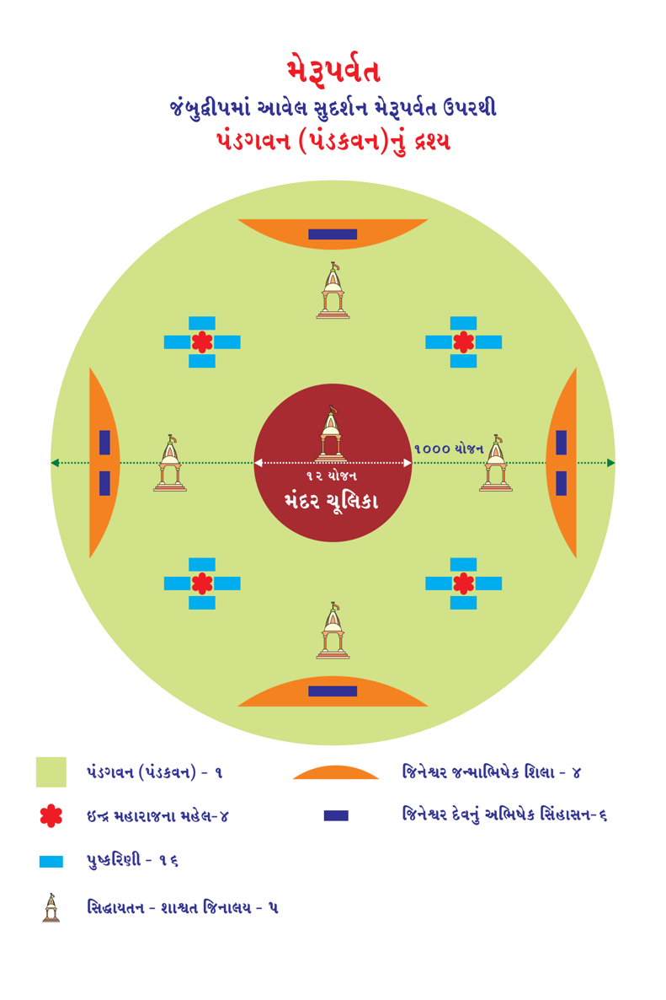
જૈન વિજ્ઞાન
પંડકવનઃ
પાંડુ શિલા પદ્મવર વેદિકા અને વનખંડથી ચારે તરફથી ઘેરાયેલ છે. શિલાની ચારે બાજુ ત્રણ-ત્રણ પગથિયા અને તોરણોથી સજાવેલ છે. શિલા ઉપર સમતલ ભૂમિ અને દેવી-દેવતાઓ વિશ્રામ કરે છે. તેના ઉપર ઉત્તર અને દક્ષિણમાં એકેક એટલે કે, બાળ પ્રભુના સ્નાત્ર (જન્મ અભિષેક) માટે 2-અભિષેક સિંહાસન છે.
સિંહાસન 500 ધનુષ્યની લંબાઇ, 500 ધનુષ્યની પહોળાઇ અને 250 ધનુષ્યની ઊંચાઇ છે. ઉત્તર દિશામાં આવેલ સિંહાસન ઉપર પૂર્વ મહાવિદેહ ક્ષેત્રના વિજય નં. 1 થી વિજય નં. 8 માં જન્મ લેતાં તીર્થંકર પરમાત્માના સ્નાત્ર મહોત્સવ થાય છે.
દક્ષિણ દિશામાં આવેલ સિંહાસન ઉપર પૂર્વ મહાવિદેહ ક્ષેત્રના વિજય નં. 9 થી વિજય નં. 16 માં જન્મ લેતાં તીર્થંકર પરમાત્માના સ્નાત્ર મહોત્સવ થાય છે. પાંડુકબલશિલા મંદર ચૂલિકાની દક્ષિણમાં પંડકવનની સીમાના અંતે ઉત્તર - દક્ષિણ 250 યોજન પહોળાઇ અને પૂર્વ - પશ્ચિમ 500 યોજન લાંબી અડધા ગોળાકારે અને 4 યોજન જાડી છે. તે સંપૂર્ણપણે સફેદ સુવર્ણમય અને સ્વચ્છ છે.
પાંડુકબલશિલા પદ્મવર વેદિકા અને વનખંડથી ચારે તરફથી ઘેરાયેલ છે. શિલાની ચારે બાજુ ત્રણ-ત્રણ પગથિયા અને તોરણોથી સજાવેલ છે. શિલા ઉપર સમતલ ભૂમિ અને દેવી-દેવતાઓ વિશ્રામ કરે છે. તેના ઉપર પ્રભુના સ્નાત્ર માટે 1- અભિષેક સિંહાસન છે. સિંહાસન 500 ધનુષ્યની લંબાઇ, 500 ધનુષ્યની પહોળાઇ અને 250 ધનુષ્યની ઊંચાઇ છે. આ સિંહાસનમાં ભરતક્ષેત્ર માં જન્મેલ તીર્થંકર પરમાત્માનું જન્મ અભિષેક થાય છે.
110
Page 225
જૈનમ્ જયતિ શાસનમ્
પંડકવનઃ
રક્તશિલા મંદર ચૂલિકાની પશ્ચિમમાં પંડકવનની સીમાના અંતે ઉત્તર - દક્ષિણ 500 યોજન લાંબી અને પૂર્વ - પશ્ચિમ 250 યોજન પહોળી અડધા ગોળાકારે અને 4 યોજન જાડી છે. તે સંપૂર્ણપણે રક્ત સુવર્ણમય અને સ્વચ્છ છે.
રક્તશિલા પદ્મવર વેદિકા અને વનખંડથી ચારે તરફથી ઘેરાયેલ છે. શિલાની ચારે બાજુ ત્રણ-ત્રણ પગથિયા અને તોરણોથી સજાવેલ છે. શિલા ઉપર સમતલ ભૂમિ અને દેવી-દેવતાઓ વિશ્રામ કરે છે. તેના ઉપર ઉત્તર અને દક્ષિણમાં પ્રભુના સ્નાત્ર માટે 2 અભિષેક સિંહાસન છે. સિંહાસન 500 ધનુષ્યની લંબાઇ, 500 ધનુષ્યની પહોળાઇ અને 250 ધનુષ્યની ઊંચાઇ છે.
ઉત્તર દિશામાં આવેલ સિંહાસન ઉપર પશ્ચિમ મહાવિદેહ ક્ષેત્રના વિજય નં. 25 થી વિજય નં. 32માં જન્મ લેતાં તીર્થંકર પરમાત્માના સ્નાત્ર મહોત્સવ થાય છે.
દક્ષિણ દિશામાં આવેલ સિંહાસન ઉપર પશ્ચિમ મહાવિદેહ ક્ષેત્રના વિજય નં.
17 થી વિજય નં. 24માં જન્મ લેતાં તીર્થંકર પરમાત્માના સ્નાત્ર મહોત્સવ થાય છે.
રક્તકંબલશિલા મંદર ચૂલિકાની ઉત્તરમાં પંડકવનની સીમાના અંતે ઉત્તર - દક્ષિણ 250 યોજન પહોળાઇ અને પૂર્વ - પશ્ચિમ 500 યોજન લાંબી અડધા ગોળાકારે અને 4 યોજન જાડી છે. તે સંપૂર્ણપણે રક્ત સુવર્ણમય અને સ્વચ્છ છે.
111
Page 226
જૈન વિજ્ઞાન
પંડકવનઃ
રક્તકબલશિલા પદ્મવર વેદિકા અને વનખંડથી ચારે તરફથી ઘેરાયેલ છે. શિલાની ચારે બાજુ ત્રણ-ત્રણ પગથિયા અને તોરણોથી સજાવેલ છે. શિલા ઉપર સમતલ ભૂમિ અને દેવી-દેવતાઓ વિશ્રામ કરે છે. તેના ઉપર પ્રભુના સ્નાત્ર માટે 1- અભિષેક સિંહાસન છે. સિંહાસન 500 ધનુષ્યની લંબાઇ, 500 ધનુષ્યની પહોળાઇ અને 250 ધનુષ્યની ઊંચાઇ છે. સિંહાસનમાં ઐરાવતક્ષેત્ર માં જન્મેલ તીર્થંકર પરમાત્માનું જન્મ અભિષેક થાય છે.
આ પ્રમાણે સુદર્શન મેરુપર્વત ઉપર 4 શિલાઓ ઉપર 6-સિંહાસનો છે. ત્યાં ઉત્કૃષ્ટપણે (વધુમાં વધુ) મહાવિદેહક્ષેત્રના 4-તીર્થંકર, 1-ભરતક્ષેત્ર અને 1 - ઐરાવતક્ષેત્રના તીર્થંકરોના જન્મ અભિષેક થાય છે. તીર્થંકર પરમાત્માના જન્મ હંમેશા મધ્યરાત્રિએ થાય છે.
કાળની ભિન્નતાના કારણે અઢીદ્વીપમાં એક સાથે 30 તીર્થંકરોનો જન્મ થતો નથી. પરંતું ઉત્કૃષ્ટપણે 5-ઐરાવતક્ષેત્રના-5 તીર્થંકર, 5-ભરતક્ષેત્રના-5 તીર્થંકર અને પ-મહાવિદેહ ક્ષેત્રના 20 તીર્થંકરોના જન્મ થાય છે.
સુદર્શન મેરુપર્વતના દ્રવ્ય(પદાર્થ)થી ત્રણ વિભાગ થાય છે. 1) નીચેનો ભાગ 2) વચ્ચેનો ભાગ અને 3) ઉપરનો ભાગ. નીચેનો ભાગ (નંદનવન સુધી) 1) માટી 2) પથ્થર 3) હીરક અને 4) કાંકરા વાળો છે. વચ્ચેનો ભાગ (સૌમનસવન સુધી) 1) અંકરત્ન 2) સ્ફટિક 3) સુવર્ણ(સોનુ) અને 4) રજત(ચાંદી) નો હોય છે. ઉપરનો ભાગ (પંડકવન સુધી) જંબુનદ સુવર્ણમય છે.
સુદર્શન મેરુપર્વતને મંદર પર્વત પણ કહેવાય છે. મંદર નામના પરમ ઋદ્ધિશાળી અને 1-પલ્યોપમના આયુષ્ય વાળા દેવ રહે છે. તેથી તેને મંદર પર્વત કહેવાય છે. આ નામ શાશ્વત છે.
112
Page 227
જૈનમ્ જયતિ શાસનમ્
બાકીના 4 મેરુપર્વત 1) વિજય મેરુ 2) અચલ મેરુ 3) મંદર મેરુ અને 4) વિદ્યુન્માલિ મેરુ સમભૂમિતલથી 1,000 ઊંડે છે. સમભૂમિતલતી 84,000 યોજન ઊંચાઇમાં આવેલ છે. નીચેથી પહોળાઇ 10,000 યોજન પ્રમાણ વ્યાસ (પહોળાઇ) છે. ઉપર શિખરે 1,000 યોજન વ્યાસ (પહોળાઇ) છે. તેની ઉપર 40 યોજન મંદરચૂલિકા છે. તેથી કુલ ઊંચાઇ 85,040 યોજન ચારેય પર્વતની છે.
સુદર્શન મેરુપર્વતની જેમ, ચારેય મેરુપર્વતના કુલ ચાર-ચાર વન (દરેક વન એક પ્રકારના વૃક્ષોનું હોય) છે. દરેક વનમાં 4-સિદ્ધાયતન, 16-પુષ્કરિણી, ઇન્દ્ર મહારાજાના 4-મહેલ, 4-શિલા, 1-મુખ્ય સિદ્ધાયતન, 6-તીર્થંકર પરમાત્માને જન્મ અભિષેક માટેના સિંહાસન વગેરેનું માપ, વિસ્તાર, દિશા, સંખ્યા એક સમાન છે.
ચારેય મેરુપર્વતના ત્રણ વિભાગ થાય છે અને સુદર્શન મેરુપર્વતમાં જણાવેલ
વિશેષ દ્રવ્યોથી બનેલ છે. તફાવત માત્ર મેરુપર્વતની સંપૂર્ણ ઊંચાઇનો છે.
વિશેષતાઃ ધાતકીખંડના પૂર્વ દિશામાં આવેલ મેરુપર્વતના શિખરે પ્રભુના જન્મ અભિષેક ભરતક્ષેત્ર માં જન્મેલ તીર્થંકરના દક્ષિણ દિશામાં આવેલ શિલા ઉપર, ઉત્તર દિશામાં આવેલ શિલામાં ઐરાવતક્ષેત્રના, પૂર્વ દિશાની શિલા ઉપર પૂર્વ મહાવિદેહક્ષેત્રના અને પશ્ચિમ દિશાની શિલા ઉપર પશ્ચિમ મહાવિદેહ ક્ષેત્રમાં જન્મેલા તીર્થંકર પરમાત્માનો જન્મ અભિષેક થાય છે. તે જ પ્રમાણે ધાતકીખંડના પશ્ચિમ મેરુપર્વતે, અર્ધ પુષ્કરદ્વીપના પૂર્વ અને પશ્ચિમ મેરુપર્વતે તે-તે ક્ષેત્રના તીર્થંકર દિશા પ્રમાણે શિલા ઉપર જન્મ અભિષેક જંબુદ્વીપના સુદર્શન મેરુશિખરની જેમ થાય છે.
113
Page 228
મેરૂપર્વત જંબુદ્વીપમાં આવેલ સુદર્શન મેરૂપર્વત ઉપરથી સંપૂર્ણ સુદર્શન મેરૂપર્વત
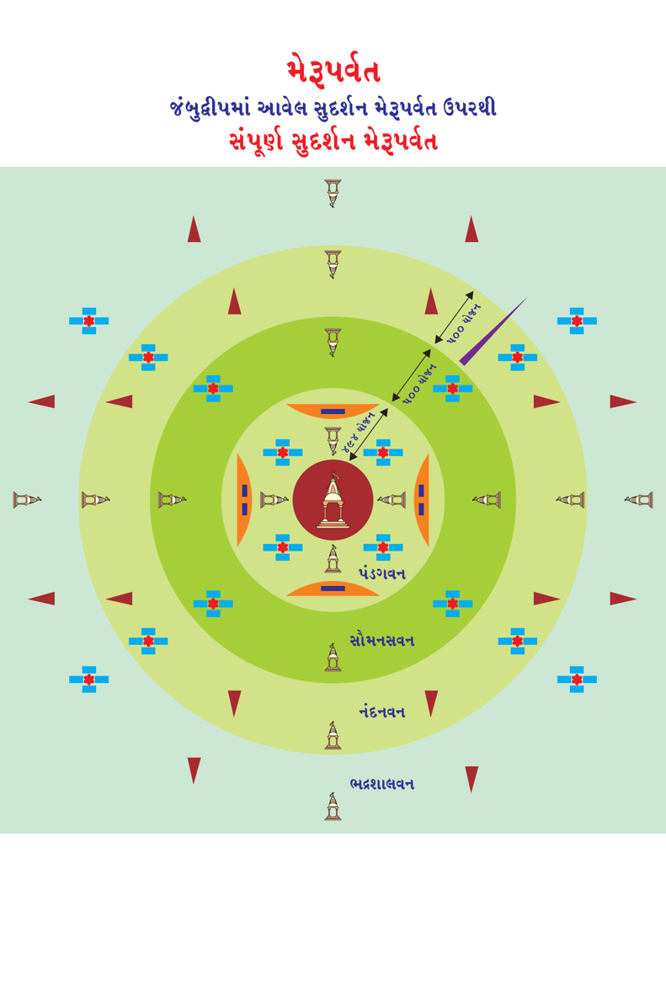
જૈનમ્ જયતિ શાસનમ્
તિરછાલોક લોક ઉપર મેરુપર્વત વિશે આપે વિસ્તારમાં જાણકારી મેળવી. જેમ નંદીશ્વર દ્વીપે શાશ્વત તીર્થ 52 જિનાલય છે, તેમ મેરુપર્વત ઉપર કુલ 85 શાશ્વત તીર્થ છે. આજે આપણે વિસ્તારથી જાણીએ...
જંબુદ્વીપમાં કેન્દ્રમાં સુદર્શન મેરુપર્વત છે. તે કુલ 4 વનથી વિભાજિત છે. 1)
ભદ્રશાલવન, 2) નંદનવન, 3) સૌમનસવન અને 4) પંડકવન (પંડગવન).
દરેક વનમાં મેરુપર્વતથી 50 યોજન દૂર પૂર્વ દિશા, દક્ષિણ દિશા, પશ્ચિમ દિશા અને ઉત્તર દિશા માં એકેક શાશ્વત જિનાલય છે. શાશ્વત જિનાલય 50 યોજન લાંબુ, 25 યોજન પહોળું અને 36 યોજન ઊંચુ છે. સેંકડો સ્તંભ (થાંભલાઓ) ઉપર સ્થિર છે.
પ્રત્યેક જિનાલયમાં શાશ્વતા જિન 1) ઋષભાનન, 2) ચંદ્રાનન, 3) વારિષેણ અને 4) વર્ધમાન ચૌમુખજીની પ્રતિમા છે. પ્રત્યેક પ્રતિમા રત્નમય 500 ધનુષ્યની પદ્માસન મુદ્રામાં છે.
સુદર્શન મેરુપર્વતની ઉપર ચોથા વન, પંડકવનમાં 40 યોજન મંદર ચૂલિકા ની ઉપર મધ્યમાં 1 શાશ્વત જિનાલય છે. શાશ્વત જિનાલય 1-ગાઉની લંબાઇ, અડધો ગાઉની પહોળાઇ અને 1,440 ધનુષ્યની ઊંચાઇ અને સેંકડો થાંભલાઓ ઉપર સ્થિત છે.
મંદર ચૂલિકા (શિખર, ચોટી) ઉપર જિનાલયમાં શાશ્વતા જિન 1) ઋષભાનન, 2) ચંદ્રાનન, 3) વારિષેણ અને 4) વર્ધમાન ચૌમુખજીની પ્રત્યેક પ્રતિમા રત્નમય પદ્માસન મુદ્રામાં છે.
115
Page 230
જૈન વિજ્ઞાન
સુદર્શન મેરુપર્વત ઉપર કુલ 17 શાશ્વત જિનાલય હોય છે. ભદ્રશાલવન માં 4 શાશ્વત જિનાલય, નંદનવન માં 4 શાશ્વત જિનાલય, સૌમનસવન માં 4 શાશ્વત જિનાલય, પંડકવન માં 4 શાશ્વત જિનાલય અને મંદર ચૂલિકા ઉપર 1 શાશ્વત જિનાલય મળી કુલ 17 શાશ્વત જિનાલય હોય છે.
અઢીદ્વીપ (મનુષ્ય લોક)માં કુલ 5 મેરુપર્વત હોય છે. 1) સુદર્શન મેરુ, 2) વિજય મેરુ, 3) અચલ મેરુ, 4) મંદર મેરુ અને 5) વિદ્યુન્માલિ મેરુ. જંબુદ્વીપમાં એક મેરુપર્વત, ઘાતકીખંડમાં પૂર્વ ઘાતકીખંડ અને પશ્ચિમ ઘાતકીખંડમાં એકેક મેરુપર્વત તેમજ પુષ્કરદ્વીપમાં પૂર્વ પુષ્કરદ્વીપ અને પશ્ચિમ પુષ્કરદ્વીપમાં એકેક.
પ્રત્યેક મેરુપર્વત ઉપર જંબુદ્વીપના સુદર્શન મેરુપર્વતની જેમ ચાર-ચાર વન (ભદ્રશાલ, નંદન, સૌમનસ અને પંડક)થી વિભાજિત હોય છે. દરેક વનમાં મેરુપર્વતથી પૂર્વ, દક્ષિણ, પશ્ચિમ અને ઉત્તર દિશામાં 50 યોજન દૂર શાશ્વત જિનાલય જે. તે જ પ્રમાણે પંડકવનમાં મંદર ચૂલિકા ઉપર એક શાશ્વત જિનાલય છે. 85 શાશ્વત જિનાલય છે. દરેક કુલ 17 શાશ્વત જિનાલય X 5 મેરુપર્વત જિનાલયમાં ચાર શાશ્વતા જિનની પ્રતિમા પદ્માસન મુદ્રામાં બિરાજમાન છે.
=
શાશ્વત જિનાલય અકૃત્રિમ છે. તેમાં બિરાજમાન પ્રતિમાં પણ અકૃત્રિમ છે. અકૃત્રિમ એટલે પ્રતિમા અને જિનાલય કોઇ દેવો કે મનુષ્યો દ્વાર નિર્માણ નથી પામી. પ્રતિમા દેવો દ્વારા પૂજનીય છે.
116
Page 231
જૈનમ્ જયતિ શાસનમ્
અષ્ટાપદ, અષ્ટ એટલે આઠ, પદ એટલે પગથિયા. અષ્ટાપદ તીર્થનું નિર્માણ શ્રી ભરત ચક્રવર્તીએ કરાવ્યું હતું. શ્રી ભરત ચક્રવર્તીએ શ્રી ઋષભદેવ (આદિનાથ ભગવાન)ના અગ્નિ સંસ્કાર ભૂમિની નજીકમાં ત્રણ ગાઉ ઊંચો સિંહનિષદ્યા નામનું જિનાલય રત્નમય પથ્થરથી વર્દ્ધકિરત્ન (કુશળ શિલ્પકાર) પાસેથી નિર્માણ કરાવ્યું હતું.
સિંહનિષદ્યા જિનાલયની ચારેય બાજુ સમવસરણની જેમ કોતરણી યુક્ત સ્ફટિક રત્નના રમણીય 4-પ્રવેશદ્વાર બનાવ્યા હતાં. દરેક દ્વારની બન્ને તરફ રત્નમય ચંદનના 16 કળશોની રચના કરી હતી. 16-16 રત્નમય તોરણો, અષ્ટમંગલની 16-16 હરોળ અને ચાર દિક્પાલોની સભાની જેમ દરેક દ્વારે વિશાળ મુખમંડપોની રચના કરાવી હતી.
ચાર મુખમંડપોની આગળ ચાલતાં-ચાલતાં શ્રી વલ્લીમંડપ ની અંદર ચાર પ્રેક્ષાસદન મંડપોની રચના કરવામાં આવી હતી. દરેક પ્રેક્ષામંડપોની વચ્ચે વજ્રમય અક્ષવાટ રચી દરેક અક્ષવાટની વચ્ચે મનોહર સિંહાસન બનાવ્યું હતું. દરેક પ્રેક્ષામંડપની આગળ એકેક મણિપીઠિકા ની રચના કરી હતી. મણિપીઠિકાની ઉપર રત્નના મનોહર ચૈત્યસ્તૂપ (નાનકડી દેરી) બનાવ્યા હતા. દરેક ચૈત્યસ્તૂપમાં આકાશમાં પ્રકાશ થાય તેવી મોટી મણિપીઠિકા ની રચના કરાવી હતી.
મણિપીઠિકાની ઉપર અને ચૈત્યસ્તૂપની બરાબર સામે 500 ધનુષ્યની રત્નમય ઋષભાનન, ચંદ્રાનન, વારિષેણ અને વર્ધમાન શાશ્વત જિનપ્રતિમા પદ્માસને ચારેય દિશા સન્મુખ (ચૌમુખજી) બિરાજમાન હતી.
117
Page 232
જૈન વિજ્ઞાન
શ્રી ભરત ચક્રવર્તીએ ચૌમુખજીમાં દરેક પ્રતિમા રત્નની મનોહર , નંદીશ્વર દ્વીપમાં શાશ્વત જિનાલય જેવી પ્રતિમા ઘડાવી સ્થાપના કરાવેલ. દરેક ચૈત્યસ્તૂપની (દેરી) આગળ અમૂલ્ય માણિક્ય રત્નની પીઠિકા રચાવી. દરેક પીઠિકા ઉપર એક-એક ચૈત્યવૃક્ષની રચના કરાવી. દરેક ચૈત્યવૃક્ષની બાજુમાં બીજી મણિપીઠિકા બનાવી તેના ઉપર ઇન્દ્ર ધ્વજ રચાવ્યો. ઇન્દ્ર ધ્વજની આગળ ત્રણ પગથીયા અને તોરણોવાળી નંદા પુષ્કરિણી (વાપિકા, ચોરસ કૂવો) બનાવડાવી. તે પુષ્કરિણી સ્વચ્છ, નિર્મળ અને વિવિધ કમળોથી શોભાયમાન હતી.
સિંહનિષદ્યા જિનાલયની વચ્ચે મોટી મણિપીઠિકા બનાવી સમવસરણની જેમ તેના વચ્ચે દેવછંદક ની રચના કરાવી. તેની ઉપર વિવિધ રંગના વસ્ત્રનો ચંદરવો બનાવ્યો. જિનાલયની દિવાલોમાં મણિમય ગવાક્ષ (ગોખલા, ઝરુખા) રચાવ્યા હતા. દેવચ્છંદની ઉપર ધ્યાન મુદ્રામાં હોય તેવી વર્તમાન અવસર્પિણી કાળના 24 તીર્થંકર પરમાત્માના દેહના પ્રમાણ (શરીર ઊંચાઇ) જેટલી (દા. ત. શ્રી આદિનાથ ભગવાનની 500 ધનુષ્યની, શ્રી અજિતનાથ દાદા 450 ધનુષ્ય થી શ્રી મહાવીરસ્વામીના 7 હાથ પ્રમાણની) પ્રતિમા, તેમજ તે-તે તીર્થંકર પરમાત્માના વર્ણવાળી (16 પ્રતિમાઓ સુવર્ણની, 2 પ્રતિમા શ્યામ રત્નોની, 2 પ્રતિમા સ્ફટિક રત્નોની, 2 પ્રતિમા નીલમરત્નની, 2 પ્રતિમા મણિરત્નની પદ્માસન મુદ્રામાં બિરાજમાન કરાવી હતી.
118
Page 233
જૈનમ્ જયતિ શાસનમ્
દરેક પ્રતિમાઓના નખ રોહિતાક્ષ મણિ (લાલ રંગ)ના આભાસવાળા અને અંકરત્ન (સફેદ રંગ)ના હતા. નાભિ, વાળના મૂળ, જીભ, તાળવું, શ્રીવત્સ, સ્તનભાગ અને હાથ-પગના તળિયા સુવર્ણના હતાં. પાંપણો, આંખની કીકીઓ, રૂવાંટા, ભ્રમર, વાળ રિષ્ટરત્ન (શ્યામ વર્ણ)ના હતાં. હોઠ પરવાળામય (લાલ રંગ) હતાં. દાંત સ્ફટિકરત્નના (સફેદ) હતાં. મસ્તકનો ભાગ વજ્રમય હતો. નાક અંદરથી રોહિતાક્ષ મણિના આભાસવાળી અને સુવર્ણની હતી. દરેક પ્રતિમાની દ્રષ્ટિઓ લોહિતાક્ષ મણિ અને અંકમણિથી બનાવેલ હતી. દરેક પ્રતિમાઓ અત્યંત શોભાયમાન હતી.
દરેક પ્રતિમાની પાછળ યોગ્ય માપવાળી છત્રધર (હાથમાં છત્ર લઈને ઊભા રહેનાર)ની રત્નમયી પ્રતિમા બનાવી હતી. છત્રધાર પ્રતિમાએ કુરંટક ફૂલની માળા, મોતી અને પરવાળા વડે ગૂંથેલી અને સ્ફટિક મણિના દંડવાળા સફેદ છત્ર ધર્યા હતાં. દરેક પ્રતિમાની બન્ને બાજુએ રત્નના ચામર ધરનારની બે પ્રતિમાઓ હતી. આગળ નાગ, યક્ષ, ભૂત અને કુંડધરની બે-બે પ્રતિમાઓ હતી. અંજલિ જોડીને ઊભેલી નાગ આદિ દેવોની રત્નમય પ્રતિમાઓ શોભાયમાન હતી.
દેવચ્છંદક ઉપર ઉજ્જવળ રત્નના 24 ઘંટાઓ, માણિક્યના દર્પણો, યોગ્ય સ્થાને મૂકેલ સુવર્ણના દીવાઓ, રત્નના કરંડિયા, ગોળાકાર પુષ્પચંગેરીઓ, ઉત્તમ અંગલૂંછણા, આભૂષણના ડબલા, સોનાના ધૂપિયા અને આરતીઓ, રત્નોના મંગળદીવાઓ, ઝારીઓ, થાળો...
119
Page 234
જૈન વિજ્ઞાન
સુવર્ણનાં પાત્રો, રત્નના ચંદનકળશો, રત્નના સિંહાસનો, રત્નના અષ્ટમંગલ, સુવર્ણના ઘીના ડબ્બાઓ, ધૂપ રાખવા માટે સુવર્ણના પાત્રો વગેરે 24 તીર્થંકર પરમાત્માની દરેક પ્રતિમાઓ પાસે રાખવામાં આવી હતી. આ પ્રમાણે ત્રણલોકમાં અતિ સુંદર એવું સિંહનિષદ્યા જિનાલય વિધિયુક્ત શ્રી ભરત ચક્રવર્તીની આજ્ઞાથી વર્દ્ધકિરત્ને બનાવી આપ્યુ હતું. જિનાલય એવી કુશળતાથી બનાવ્યું હતું કે દરેક પથ્થરના સાંધાઓ એકમેક થયા હતાં, જાણે એવું લાગે કે એક જ પથ્થરથી જિનાલય નિર્માણ થયું હોય!
જિનાલયના મધ્યભાગે વિવિધ મુદ્રાયુક્ત માણેકરત્નની પૂતળીઓ ગોઠવેલ હતી. દરેક દ્વારની બન્ને તરફ ચંદનરસથી લીંપેલા બે કુંભો મૂકેલા હતાં. જિનાલયમાં હંમેશા કપૂર, અગરુ અને કસ્તુરીથી બનાવેલ ધૂપના ધૂમાડાયુક્ત વાતાવરણ રહેતું.
સિંહનિષદ્યા જિનાલયમાં શ્રી ભરત ચક્રવર્તીના નિર્વાણ પામેલા 99 ભાઇઓની દિવ્ય રત્નમય પ્રતિમાઓની સ્થાપના કરાવી. પોતે પ્રભુની સેવા કરતાં હોય તેવી એક પ્રતિમા પોતાની પણ ત્યાં સ્થાપિત કરાવી.
સિંહનિષદ્યા જિનાલયની બહાર શ્રી આદિનાથ દાદાનો એક સ્તૂપ (પગલાંની દેરી) બનાવડાવી હતી. તેની બાજુમાં પોતાના 99 ભાઇના પગલાંની દેરીઓ બનાવી (શ્રી આદિનાથ દાદા સાથે એક સમયે 108 મહાત્માઓ નિર્વાણ પામ્યાં હતાં, તેમાં 99 મહાત્માઓ દાદાના પુત્ર તેમજ શ્રી ભરત ચક્રવર્તીના ભાઇઓ પણ હતાં).
120
Page 235
જૈનમ્ જયતિ શાસનમ્
નિર્વાણ પામેલ શ્રી આદિનાથ દાદા અને 99 ભાઇઓના પગલાંની દેરી પાસે દર્શને આવનાર લોકો દ્વારા આશાતના ન થાય એ હેતુથી લોઢાના (લોખંડ) યંત્રમય સુરક્ષા પુરુષો ઊભા રાખ્યા હતાં.
શ્રી ભરત ચક્રવર્તીએ પોતાના દંડ શસ્ત્રથી પર્વતના દાંતા પાડ્યા જેથી સીધા અને ઊંચા થાંભલાની જેમ તેના ઊપર લોકો ચડી ન શકે! પર્વતની ચોમેર ફરતે એકેક યોજનને અંતરે આઠ પગથિયા બનાવ્યા જેથી લોકોએ તે પર્વતને અષ્ટાપદ નામ આપ્યું. તેમજ આ પર્વત હરાદ્રિ, કૈલાશ અને સ્ફટકાદ્રિ તરીકે પણ ઓળખાય છે. દરેક પ્રતિમાની પ્રતિષ્ઠા શ્રી ભરત ચક્રવર્તીએ ચારણમુનિઓ પાસે કરાવેલ.
ચોથા આરાના અંત સુધી અષ્ટાપદ તીર્થ વિદ્યમાન હતો. બીજા તીર્થંકર શ્રી અજિતનાથ દાદાના સમયમાં થયેલા બીજા ચક્રવર્તી શ્રી સગરના 60,000 પુત્રો, પંચમ આરામાં મહામૂલ્ય રત્નો અને સુવર્ણથી બનેલ સિંહનિષદ્યા તીર્થને લાલચું, ચોરો-લૂંટારાઓ અને વિવિધ ઉપદ્રવોથી નુકશાન થશે તેવા ડરથી શ્રી અષ્ટાપદ તીર્થની રક્ષા માટે શસ્ત્રથી 1,000 યોજન ઊંડી ખાઇ અષ્ટાપદ તીર્થની ચોમેર (ચારે તરફ) ખોદી, તેમાં ગંગાનદીના પાણીનું ખાઇમાં વહેણ કરાવતાં પાણી ખાઇમાં ભરાતાં નાગકુમાર દેવોના ભવનોને નુક્સાન થતાં ક્રોધિત થઇ 60,000 સગરપૂત્રોને ભસ્મ કરી નાખે છે.
અષ્ટાપદ તીર્થ અશાશ્વત તીર્થ છે. અષ્ટાપદ તીર્થ સામાન્ય લોકોથી ચડી શકાય
તેવો પર્વત ન હતો. માત્ર લબ્ધિધારી મનુષ્યોથી જ આ તીર્થના દર્શન થઇ શકે!
121
Page 236
જૈન વિજ્ઞાન
મનુષ્ય જીવમાં ત્રિષ્ષ્ઠીશલાકા પુરુષોમાં તીર્થંકર પરમાત્મા બાદ બીજા ક્રમાંકે ચક્રવર્તી મહાપુરુષ આવે છે. જે વ્યક્તિ ચક્રને અનુસરતા છ ખંડ ઉપર વિજય મેળવી તેનું આધિપત્ય ભોગવે તેને ચક્રવર્તી કહેવાય છે. ચક્રવર્તી તીર્થંકરની જેમજ ઉત્તમ જાતિ, ગોત્ર અને રાજકુળમાં જ જન્મ ધારણ કરે છે. ચક્રવર્તીની માતા, તીર્થંકરની માતાની જેમ 14 મહાસ્વપ્નો જૂએ છે પણ તે સ્વપ્નાઓ તીર્થંકરની માતાના સ્વપ્ના કરતાં કંઇક ઝાંખા હોય છે. ચક્રવર્તી કળા આચાર્યની હાજરી માત્રથી શસ્ત્ર, શાસ્ત્ર તથા સમસ્ત કળાઓમાં વિશારદ (કુશળ જ્ઞાની) થાય છે.
5ાંચ ભરતક્ષેત્ર, પાંચ ઐરાવતક્ષેત્ર અને પાંચ મહાવિદેહ ક્ષેત્રમાં ચક્રવર્તી મહાપુરુષોના જન્મ થાય છે. દરેક ક્ષેત્રમાં છ ખંડ હોય છે. એટલે કે, ભરતક્ષેત્રમાં છ ખંડ હોય છે. ઐરાવતક્ષેત્રમાં છ ખંડ હોય છે અને મહાવિદેહ ક્ષેત્રમાં 32 વિજય છે, તે દરેક વિજયમાં છ ખંડ હોય છે. છ ખંડના વિજેતા ચક્રવર્તી મહારાજા હોય છે. એકચક્રી સુશાસન કરે છે.
અસંખ્યાતકાળ પછી ચક્રવર્તી મહારાજનો જન્મ થાય છે. ભરતક્ષેત્ર - ઐરાવતક્ષેત્રમાં અવસર્પિણી કાળ અને ઉત્સર્પિણી કાળના છ-છ આરા પ્રવર્તાય છે. મહાવિદેહ ક્ષેત્રમાં અવસર્પિણી કાળના સદાય ચોથા આરા જેવો સમય હંમેશા વર્તાય છે. જ્યારે ચક્રવર્તી મહારાજાનો જન્મ થાય અને તેમના જીવિત અવસ્થામાં ક્યારેય પણ વાસુદેવ, બળદેવ અને પ્રતિવાસુદેવનો જન્મ ન થાય!
122
Page 237
જૈનમ્ જયતિ શાસનમ્
ચક્રવર્તી મહારાજા યશસ્વી, શ્રેષ્ઠ પુરુષ હોવાથી ઉત્તમ, ઉત્તમ વંશમાં જન્મ થવાથી અભિજાત (કુલીન) હોય છે. તેઓ સાહસિક, આંતરિક બળ તથા પરાક્રમ ગુણોથી યુક્ત હોય છે. તેઓનું શરીરનું પ્રશસ્ત વર્ણ આદિ (વગેરે) અને સુદ્રઢ બંધારણ (શરીરની રચના) હોય છે. બુદ્ધિ, અર્થને ધારણ કરનારી ધારણા શક્તિ, પ્રાપ્ત કરવા જેવું, આદરવા જેવી બુદ્ધિ, શરીરની આકૃતિ, શીલ આચાર, પ્રકૃતિ વગેરે ઉત્તમ હોય છે. તેઓના આજ્ઞા, ઐશ્વર્ય, શરીર, શોભા અને ગતિ ઉત્કૃષ્ટ હોય છે. તેઓ વિવિધ પ્રકારના પ્રભાવશાળી વચન બોલવામાં હોંશિયાર હોય છે તેમજ અન્યોને પરાજય કરે તેવા પ્રતાપી હોય છે. આયુષ્ય બળવાન, શરીર બળયુક્ત હોય છે. તેઓનું શરીરના હાડકાનું બંધારણ પ્રથમ વજ્રઋષભનારાચ સંઘયણ (હાડકાંનું બંધારણ, મજબૂતાઈ) અને સમચતુરસ્ર (જૈન વિજ્ઞાન - તીર્થંકર પરમાત્માના લેખમાં સમજાવેલ છે.)
ચક્રવર્તી મહારાજની શરીર રચનાઃ
1) ચક્રવર્તી મહારાજાની હથેળી અને પગના તળીયા મત્સ્ય, ધોંસરું, ઝારી, વર્ધમાનક, ભદ્રાસન, શંખ, છત્ર, વીંજણો, પતાકા, ચક્ર, હળ, મૂસળ, રથ, સ્વસ્તિક, અંકુશ, ચંદ્ર, સૂર્ય, અગ્નિ, યજ્ઞસ્તંભ, સમુદ્ર, ઇન્દ્રધ્વજ, પૃથ્વી, કમળ, હાથી, સિંહાસન, દંડ, કાચબો, ઉત્તમ પર્વત, અશ્વ, શ્રેષ્ઠ મુગટ, કુંડળ, નંદાવર્ત, ધનુષ્ય, ભાલો, કુંભ, ભવન, વિમાન વગેરે વિસ્મયકારી, અલગ અલગ 1008 ચિન્હો (લક્ષણો)થી યુક્ત અને સુંદર હોય છે.
123
Page 238
જૈન વિજ્ઞાન
2) વક્ષઃસ્થળ : વક્ષઃસ્થળ એટલે છાતીનો ભાગ. ઊર્ધ્વમુખી (ઉપસેલું), સુકુમાર, સ્નિગ્ધ, દક્ષિણાવર્ત પ્રશસ્ત એવી રોમરાજીથી રચિત, શ્રીવત્સના ચિન્હથી યુક્ત હોય છે. વિશિષ્ટ શરીર આકૃતિના ધારક હોય છે.
3) વર્ણ : તેઓનો વર્ણ (રંગ) ઉગતા સૂર્યના કિરણોથી વિકસિત કમળના મધ્યભાગ જેવો સુવર્ણ વર્ણના હોય છે.
4) ગુદાભાગ : ઘોડાના ગુદાભાગની જેમ તેઓનો પાછળનો ભાગ મળથી અલિપ્ત હોય છે.
5) શરીરની સુગંધ : શરીરની સુગંધ પદ્મ, ઉત્પલ, ચમેલી, માલતી, જુઇ, ચંપક, નાગકેસર અને કસ્તુરી જેવી સુગંધથી સુગંધિત હોય છે.
6) 36 રાજગુણ : તેઓ 36 રાજગુણોથી યુક્ત હોય છે. એકછત્ર રાજના ધારક, નિર્મળ માતૃવંશ-પિતૃવંશવાળા, પોતાના નિષ્કલંક કુળરૂપી ગગનમાં મૃદુ સ્વભાવના કારણે પૂર્ણચંદ્રની જેમ આંખ અને મનને આનંદદાયી લાગે છે. તેઓ ક્ષીરસમુદ્રની જેમ નિશ્ચલ, સ્થિર અને ગંભીર; ધનપતિ કુબેરની જેમ વિદ્યમાન દ્રવ્ય અનુસાર ભોગ ઉપભોગોના ભોગવનારા, સમરાંગણમાં (યુદ્ધ પ્રદેશમાં) અપરાજિત, ઉત્કૃષ્ટ પરાક્રમથી યુક્ત હોય છે. ઇન્દ્રતુલ્ય રૂપવાળા, નષ્ટ શત્રુવાળા, મનુષ્યોના અધિપતિ ચક્રવર્તી મહારાજા છ ખંડ ઉપર શાસન કરે છે અને તેનો ઉપભોગ કરે છે.
દરેક અવસર્પિણી કાળમાં અને ઉત્સર્પિણી કાળમાં અવશ્ય 12-12 ચક્રવર્તી અવશ્ય થાય છે. આ એક શાશ્વત નિયમ છે. દરેક અવસર્પિણી કાળ અને ઉત્સર્પિણી કાળમાં ભરતક્ષેત્રમાં 12 ચક્રવર્તી જન્મે તેમાનાં 1 ચક્રવર્તી, ભરત નામના ચક્રવર્તી અવશ્ય હોય છે. તેના નામ ઉપરથી જ ભરતક્ષેત્ર કહેવાય છે.
124
Page 239
જૈનમ્ જયતિ શાસનમ્
7) લક્ષણ : લક્ષણ એટલે ચિન્હ. મહાપુરુષોના શરીર, હાથ-પગના તળિયા પર શુભ, મંગલ વસ્તુઓના રેખા ચિન્હ હોય છે. તીર્થંકર અને ચક્રવર્તીઓને 1008 લક્ષણો હોય છે. બળદેવ અને વાસુદેવને 108 લક્ષણો હોય છે. સામાન્ય માણસને 32 લક્ષણો હોય છે.
8) ચાતુરંગ ચક્રવર્તી : ચક્રવર્તીના આધિન ચક્રરત્ન હોય છે. ચક્રના આધારે સંપૂર્ણ ક્ષેત્ર ઉપર વિજય મેળવે છે. ચાતુરંગ એટલે ચારે દિશાના અંત પર્યંતની પૃથ્વી ઉપર સ્વામિત્વ પ્રાપ્ત કરે છે. દા. ત. જંબુદ્વીપમાં દક્ષિણમાં ભરતક્ષેત્ર છે. તેની ત્રણ દિશામાં લવણસમુદ્ર સુધી અને ઉત્તર દિશામાં હિમવંત પર્વત સુધી તેમનું સામ્રાજ્ય હોય છે.
9) 36 રાજગુણઃ (1) શરીરના અંગ-ઉપાંગ ખામી વગરના હોય છે. (2) લક્ષણોથી પૂર્ણ હોય છે. (3) રૂપસંપત્તિથી યુક્ત હોય છે. (4) મદ રહિત હોય છે. (5) પરાક્રમી હોય છે. (6) યશસ્વી હોય છે. (7) કૃપાળુ હોય છે. (8) કળાઓમાં નિપુણ હોય છે. (9) શુદ્ધ રાજકુળમાં જન્મ હોય છે. (10) વૃદ્ધના અનુયાયી હોય છે. (11) પ્રભુ, મંત્ર અને ઉત્સાહ નામની ત્રણ પ્રકારની શક્તિવાળા હોય છે. (12) પ્રજા પ્રત્યે અનુરાગ હોય છે. (13) પ્રજામાં પિતા સમાન હોય છે. (14) ધર્મ, અર્થ અને કામ ત્રણ પુરુષાર્થને સમાનરુપે સાધનારા હોય છે. (15) ભરપૂર ભંડારવાળા હોય છે. (16) સત્ય પ્રતિજ્ઞાવાળા હોય છે. (17) ચર પુરુષોની દ્રષ્ટિકોણથી લાંબો વિચાર કરનારા હોય છે.
125
Page 240
જૈન વિજ્ઞાન
(18) સિદ્ધિ પર્યંત કાર્ય કરનારા હોય છે. (19) શસ્ત્રમાં પ્રવિણ (હોંશિયાર) હોય છે. (20) શાસ્ત્રમાં પ્રવિણ હોય છે. (21-22-23) દુષ્ટના નિગ્રહ (અસ્વીકાર), શિષ્ટ અનુગ્રહ (સ્વીકાર)માં તત્પર હોય છે. (24) સામ, દામ, દંડ અને ભેદ ઉપાય વડે ઉપાર્જિત (ઉત્પન્ન) લક્ષ્મીવાળા હોય છે. (25) દાનવીર હોય છે. (26) નિશ્ચયથી જય મેળવનારા હોય છે. (27) ન્યાયપ્રિય હોય છે. (28) ન્યાયવેત્તા હોય છે. (29) વ્યસનોના ત્યાગી હોય છે. (30)અત્યંત પરાક્રમી હોય છે. (31) ગાંભીર્ય ગુણયુક્ત હોય છે. (32) ઔદાર્ય હોય છે. (33) ચાતુર્યથી ભૂષિત હોય છે. (34) પ્રણામ પર્યંત જ ક્રોધ રાખનારા એટલે કે, સામી વ્યક્તિ ક્ષમાયાચના કરે ત્યારે તરત જ શાંત થઇ જનારા હોય છે. (35) તાત્ત્વિક હોય છે. (36) સાત્ત્વિક હોય છે.
10) ચક્રરત્નની ઉત્પત્તિ :
દિવ્ય ચક્રરત્ન તેમની આયુધશાળા (શસ્ત્રાગાર) માં ઉત્પન્ન થાય છે. આયુધશાળાના રક્ષક (રખેવાળ) ઉત્પન્ન થયેલા દિવ્ય ચક્રરત્નને જુએ છે. તેને જોઇને હર્ષિત અને સંતુષ્ટ થાય છે. હર્ષિત, સંતુષ્ટ, આનંદિત, પ્રસન્નચિત્તવાળા, પ્રીતિકારી મનવાળા, અતિ સૌમ્ય મનવાળા, વિકસિત હૃદયવાળા તે આયુધરક્ષક (શસ્ત્ર ભંડારા રખેવાળ) દિવ્ય ચક્રરત્નની પાસે આવીને ત્રણવાર આદક્ષિણા અને પ્રદક્ષિણા કરી, હાથ જોડી ચક્રરત્નને પ્રણામ કરે છે. પ્રણામ કરી, ચક્રવર્તી મહારાજાની સભામાં ચક્રવર્તી મહારાજને ઉદ્દેશીને અંજલિ મુદ્રામાં કહે છે, ‘આપનો જય હો! આપનો વિજય હો!’ ચક્રવર્તી મહારાજાને ચક્રરત્નની ઉત્પત્તિની વધામણી આપે છે.
126
Page 241
ચક્રવર્તિ દિગ્વિજય ક્ષેત્ર ભરતક્ષેત્ર, ઐરાવતક્ષેત્ર અને મહાવિદેહ ક્ષેત્ર
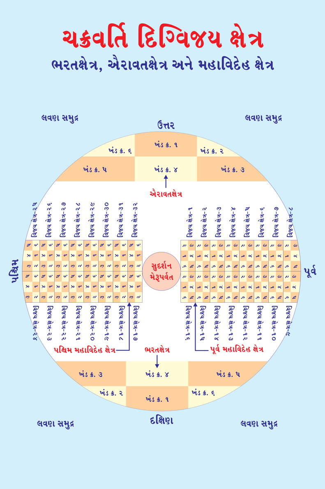
ચક્રવર્તી મહારાજા આ ખુશીના સમાચાર જાણી હર્ષવિભોર થઇ આયુધશાળા (શસ્ત્રભંડાર) તરફની દિશાએ ચક્રરત્નની સામે સાત-આઠ પગલા જાય છે, ડાબો ગોઠણ ઊંચો આખી, જમણો ગોઠણ જમીન પર સ્થાપી (નમોત્થુણં મુદ્રામાં) ચક્રરત્નને પ્રણામ કરે છે.
આયુધશાળાના રક્ષકને પોતાના મુગટ સિવાય બધાં જ આભૂષણો દાનમાં આપી દે છે તેમજ જીવન ઉપયોગી પુષ્કળ પ્રીતિદાન આપે છે. એટલે કે, આજીવન ચાલે તેટલું ધન આપી ભરણ-પોષણ રૂપ આજીવિકાની વ્યવસ્થા કરી તેનો સત્કાર અને સન્માન કરે છે.
ચક્રવર્તી મહારાજા સેવકોને આદેશ આપી રાજધાનીમાં ચારેબાજુ ગંધોદક (સુગંધીત દ્રવ્ય)નો છંટકાવ કરાવે, નગરી સાફ કરાવે, રાજમાર્ગમાં દર્શકો માટે બેઠકોની વ્યવસ્થા કરાવે, વિશાળ મંડપોની સજાવટ કરાવે, નગરીના મકાનોને છાણથી લિંપાવે, દિવાલોને રંગરોગાન, ચંદન કળશો મુકાવે વગેરે કાર્યોથી આખી રાજધાનીને સજાવી ધૂપ આદિથી સુગંધમય બનાવે છે.
ચક્રવર્તી મહારાજા સ્નાનગૃહમાં જઇ સ્નાન કરી દિવ્ય વસ્ત્રો અને આભૂષણોથી સજ્જ થઇ સેવકો દ્વારા ચામર ઢળાય તેમજ અંગરક્ષકો, વિશાળ સંખ્યામાં દાસીઓ, સર્વ પ્રકારના વાજિંત્ર-વાદકોની સાથે આયુધશાળામાં જાય છે.
ચક્રરત્નને પ્રણામ કરી હાથમાં મોરપીંછથી પ્રમાર્જન કરી દિવ્ય જલધારાથી પ્રક્ષાલન (પક્ષાલ) કરે છે. ગોશીર્ષ ચંદનથી લેપ કરે છે. સુગંધીત વિવિધ દ્રવ્યો અને પાંચ વર્ણના અને સુગંધિત પુષ્પોથી પૂજા કરે છે. અક્ષતથી અષ્ટમંગલનું આલેખન (ચોખાના અષ્ટમંગલની આકૃતિઓ બનાવવી) કરે છે.
128
Page 243
જૈનમ્ જયતિ શાસનમ્
ચક્રરત્નની વિધિપૂર્વક પૂજા કરી રાજસભામાં પધારી નગરજનો સમક્ષ ઘોષણા કરાવે છે કે, ‘જકાતનાકાના રાજ્યકર, પશુધનના રાજ્યકર, ખેતીની મહેસુલ (ટેક્ષ) માફ કરે છે. પ્રજાજનોના ઘરોમાં રાજ કર્મચારીનો પ્રવેશ નહીં (કર રુપે કોઇપણ વસ્તુઓ માપે કે ગણે નહીં), અપરાધીઓને સજામાંથી મુક્તિ, રાજદેણા માફ, દંડ માફ વગેરે ખુશીઓ પ્રજાજનોને ભેટ સ્વરુપે ચક્રવર્તી મહારાજા આપે છે.
રાજધાનીમાં અષ્ટાન્હિકા મહોત્સવ રુપે નગરજનો માટે વાદ્ય, વાજિંત્ર, નાટક વગેરે સતત મનોરંજન પણ થાય છે. અષ્ટાન્હિકા મહોત્સવમાં 18 શ્રેણી (18 આલમ, જાત) અને પ્રશ્રેણી (પ્રજાતિ, પેટાભાગ) (કુંભાર, ગામના મુખી, સોની, રસોઇયા, ગાયક, વાણંદ, માળી, કથાકાર, પાન વિક્રેતા, મોચી, તેલી, ગાંધી, રંગનારા, કંસારા, દરજી, ભરવાડ, ભિલ્લ, માછીમાર) આ 18 પ્રકારમાં સર્વે પ્રજાજનોનો સમાવેશ થઇ જાય છે.
ચક્રવર્તી પૂર્વભવના પ્રબળ પુણ્યના પ્રભાવે 14 રત્નોના સ્વામી બને છે. તેની પ્રાપ્તિ ક્રમશઃ થાય છે. તેમાં સહુથી પ્રથમ આયુધશાળામાં ચક્રરત્નની ઉત્પત્તિ થાય છે. ચક્રરત્ન 1000 દેવ અધિષ્ઠિત હોય છે. તેની જ સહાયતાથી ચક્રવર્તી છ ખંડનો રાજા બને છે.
ચક્રરત્ન રત્નમય અને સ્વચ્છ જ હોય છે. તેમ છતાં તેનું પ્રમાર્જન, પ્રક્ષાલન, પૂજાવિધિ વગેરે પ્રક્રિયા દ્વારા ચક્રરત્ન પ્રત્યે અને તેના અધિષ્ઠિત દેવ પ્રત્યે ચક્રવર્તીના આદરભાવના દર્શન થાય છે.
129
Page 244
જૈન વિજ્ઞાન
જેમ અરિહંત પરમાત્મા કેવળજ્ઞાનની પ્રાપ્તિ થાય પછી દેવો દ્વારા નિર્મિત સમવસરણમાં પ્રથમ દેશના આપે છે, ચૈત્યવૃક્ષની નીચે મનુષ્યો અને દેવી- દેવતાઓને ધર્મદેશના આપી તીર્થ પ્રવર્તાવે છે. હવેથી તેઓ તીર્થંકર કહેવાય છે. કેમકે, પૂર્વ ભવમાં ‘સવિ જીવ કરું શાસન રસી’ ની શુભ ભાવના અને વીસ સ્થાનક તપની ભવ્ય આરાધના કારણે તીર્થંકર નામ કર્મનો ઉદય થાય છે. તીર્થંકર નામ કર્મના પ્રભાવે કેવળજ્ઞાન પ્રગટ થતાં જ તીર્થમાં દેશના આપે છે.
એ જ પ્રમાણે ચક્રવર્તી નામકર્મના ઉદયે જ ચક્રવર્તી મહારાજના શસ્ત્રના ભંડારમાં (આયુધશાળામાં) જ ચક્રરત્નની ઉત્પત્તિ થાય છે. પરંતું, ચક્રરત્નની ઉત્પત્તિથી જ ચક્રવર્તી નથી બનાતું! તેના માટે છ ખંડમાં ચક્રરત્નની સહાયતાથી દરેક ખંડમાં યુદ્ધ કરી અથવા વિવિધ દેશોના રાજાઓની શરણાગતિથી વિજેતા બનવાનું હોય છે. દરેક રાજાઓ ચક્રવર્તીને આધીન થઇ, જ્યારે છ ખંડ વિજેતા બને ત્યારે જ તે ચક્રવર્તી કહેવાય છે.
દિગ્વિજય પ્રયાણઃ
અષ્ટાન્હિકા મહોત્સવ સંપન્ન થતાં જ દિવ્ય ચક્રરત્ન આયુધશાળા (શસ્ત્રાગાર) માંથી બહાર નીકળી આકાશ માર્ગે ચાલે છે. ચક્રરત્ન 1,000 યક્ષોથી અધિષ્ઠિત હોય છે. દિવ્ય વાજિંત્રોના ધ્વનિથી અને નિર્ઘોષથી આકાશને શબ્દાયમાન કરતું ચક્રરત્ન, ચક્રવર્તી મહારાજાની રાજધાનીની મધ્યેથી નીકળે છે.
130
Page 245
ચક્રવર્તિ દિગ્વિજય ક્ષેત્ર ભરતક્ષેત્ર અને તેના 6 ખંડો
જૈન વિજ્ઞાન
ચક્રવર્તી મહારાજાની પોતાની વિશાળ સેના હોય છે. તેનો વિશ્રામ માટેનો પડાવ 12 યોજન લાંબો અને 9 યોજન પહોળો હોય છે. ચતુરંગિણી (ચાર પ્રકારની) સેનામાં શ્રેષ્ઠ કોટિના ઘોડા, હાથી, રથ અને શ્રેષ્ઠ યોદ્ધાઓ સામેલ હોય છે. છ ખંડ વિજેતા બનવા માટે બહુ જ લાંબો સમય (ઘણા જ વર્ષો) લાગવાના કારણે વિશિષ્ટ ધન-ધાન્યના ભંડારો પણ સાથે જ હોય છે.
દિગ્વિજય માટે પ્રયાણઃ
ચક્રરત્ન, ચક્રવર્તી મહારાજાની રાજધાનીથી માગધતીર્થ તરફ પ્રયાણ કરે છે. વચ્ચે આવતા હજારો ગામ, ખાણો, નગર, ખેટ, કર્બટ, મડંબ, દ્રોણમુખ, પટ્ટન, આશ્રમ તથા પ્રજાજનયુક્ત રાજા-મહારાજાઓને પરાજિત કરી ઉત્કૃષ્ટ (શ્રેષ્ઠ) રત્નો રાજા-મહારાજાઓ પાસેથી ભેટ સ્વરૂપે સ્વીકારે છે તેમજ પોતાના આધીન કરે છે.
દિવ્ય ચક્રરત્ન રોજ 1-1 યોજન આકાશ માર્ગે આગળ વધે છે અને જ્યાં સ્થિર થાય ત્યાં જ ચક્રવર્તી મહારાજા અને તેની સેના વિશ્રામ માટે પડાવ નાંખે. અહીં, એક યોજન પ્રમાણ એટલે ચક્રરત્નના પ્રયાણથી દિવસના અંતે સ્થિરતા કરે તે મુજબ એક યોજન ગણવાનું હોય છે. જ્યાં-જ્યાં ચક્રરત્ન જે દિશાએ આગળ વધે, તે દિશામાં જ ચક્રવર્તી મહારાજા અને તેમની સેના ચક્રરત્નને અનુસરે.
વિશ્રામ સ્થળે વર્દ્ધકિરત્ન (શ્રેષ્ઠ શિલ્પકાર) ચક્રવર્તી મહારાજા માટે વિશેષ કોટિનું આવાસ સ્થાન બનાવે છે. સૈનિકો માટે શ્રેષ્ઠ નગરની જેમ નિવાસરૂપ છાવણી બનાવે છે.
132
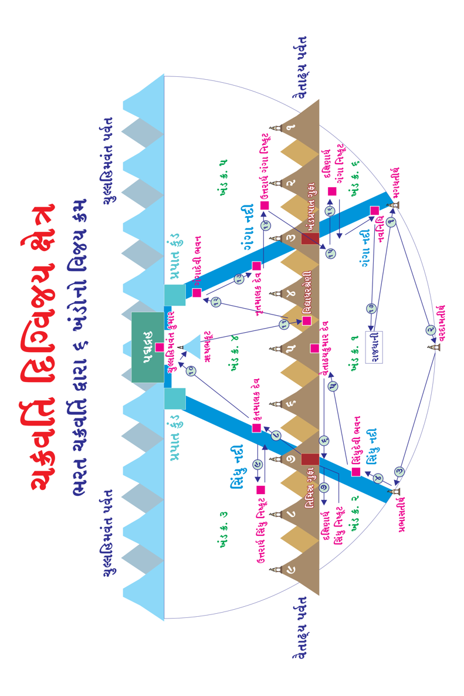
જ્યાં-જ્યાં તીર્થ કે કોઇ ક્ષેત્ર, રાજ્ય, નગર દેવોને આધીન હોય કે તે ક્ષેત્ર ઉપર અધિષ્ઠાયક દેવોની કૃપા સતત વરસતી હોય ત્યાં દેવોની કૃપા મેળવવા ચક્રવર્તી મહારાજા પૌષધવ્રત અઠ્ઠમ તપ સાથે અવશ્ય કરે! જેથી તે ક્ષેત્રના દેવ તેમને આધીન થાય અને યુદ્ધમાં વિજય સરળતાથી થાય! તે જ ઉદ્દેશ્યથી ત્યાંના અધિષ્ઠાયક દેવની અસીમ કૃપા મેળવવા પૌષધશાળાનું નિર્માણ વર્દ્ધકિરત્નની પાસેથી કરાવે છે.
ચક્રવર્તી મહારાજા પૌષધશાળાનું પ્રમાર્જન કરે, અઢી હાથ પ્રમાણ દર્ભ (ડાભ, એક જાતનું ઘાસ)નું આસન પાથરી તેના ઉપર બેસે અને જે ક્ષેત્રમાં યુદ્ધ વિજય મેળવવાનું હોય તે ક્ષેત્રના અધિષ્ઠાયક દેવને ઉદ્દેશીને અઠ્ઠમતપ (ત્રણ ઉપવાસ) ધારણ કરે. બ્રહ્મચારી બનીને, મણિરત્નો, સુવર્ણના આભૂષણોનો ત્યાગ કરે. શરીર ઉપર ચંદન આદિ સુગંધીત લેપોને દૂર કરે, શસ્ત્ર, મુશળ (સાંબેલુ) વગેરે સાવદ્ય યોગ (હિંસાજનક પ્રવૃતિઓ)નો ત્યાગ કરીને દર્ભાસન (એક જાતના ઘાસનું આસન) ઉપર બેસી તે ક્ષેત્રના અધિષ્ઠાયક દેવને એકચિત્ત બની, સર્વ વ્યાપાર (પ્રવૃત્તિઓ) છોડી, એકલા જ સૈન્ય આદિની સહાયતા વગર આત્મબળપૂર્વક અઠ્ઠમતપમાં જાગૃત રહે છે. પરંતું, જે ચક્રવર્તી મહારાજાને તીર્થંકર નામકર્મનો પણ સાથે ઉદય હોય તો તેમને અઠ્ઠમ તપની સાધના કરવી નથી પડતી. તેમને સંકલ્પ માત્રથી દેવો તેમની આજ્ઞા સ્વીકારી લે છે! દા. ત. શ્રી શાંતિનાથ ભગવાન.
અઠ્ઠમતપની પૂર્ણાહુતિએ પૌષધશાળામાંથી બહાર નીકળી પછી જ યુદ્ધ વિજય માટે સેનાને તૈયાર રહેવાનો આદેશ આપે છે, તે પહેલાં યુદ્ધ કરતાં નથી. મહાન પુરુષોની એક વિશેષતા હોય છે.
134
Page 249
જૈનમ્ જયતિ શાસનમ્
ચક્રવર્તી મહારાજાએ જીતેલા છ ખંડમાં મુખ્ય શાશ્વત મહા પ્રદેશો :
માગધતીર્થ :
દક્ષિણ ભરતક્ષેત્રના પૂર્વ કિનારે ગંગા મહાનદી જ્યાં સમુદ્રને મળે છે, ત્યાં માગધતીર્થ છે. માગધતીર્થના અધિપતિ નાગકુમાર જાતિના માગધકુમાર દેવ છે.
વરદામતીર્થઃ
વરદામ તીર્થ ભરતક્ષેત્રના દક્ષિણ ક્ષેત્રના લવણસમુદ્રના કિનારે, વિનીતા નગરીની દક્ષિણમાં બરાબર સીધી રેખાએ અને જંબુદ્વીપની જગતીની દક્ષિણ દિશાના વૈજયંત દ્વારની સીધી રેખાએ વરદામ તીર્થ છે. વરદામતીર્થના અધિપતિ વરદામતીર્થકુમાર દેવ હોય છે.
પ્રભાસતીર્થઃ
દક્ષિણ ભરતક્ષેત્રના પશ્ચિમ દિશામાં આવેલ લવણ સમુદ્રના કિનારે, જ્યાં સિંધુ મહાનદી લવણ સમુદ્રને મળે છે, તે સંગમ સ્થાન ઉપર છે. પ્રભાસતીર્થના અધિપતિ પ્રભાસતીર્થકુમાર દેવ છે.
સિંધુદેવી :
મહા ઋદ્ધિવાળા દેવ-દેવીઓના ભવનો અનેક સ્થાને હોય છે. જેમાં આ ભવન સિંધુ મહાનદી, વૈતાઢ્ય પર્વતની નીચેથી નીકળી દક્ષિણ ભરતક્ષેત્રમાં ઉત્તરથી દક્ષિણ દિશામાં વિનીતાનગરીની સમાંતરે વહેતી-વહેતી પશ્ચિમ દિશામાં વળાંક લે છે, તે પશ્ચિમી વળાંકે સિંધુદેવીનું સ્થાન આવેલ છે. તે સ્થાનના અધિપતિ સિંધુદેવી છે.
135
Page 250
ચક્રવર્તિ દિગ્વિજય ક્ષેત્ર વૈતાઢ્ય પર્વત પહોળાઇ : ઉત્તર દિશા અને દક્ષિણ દિશા
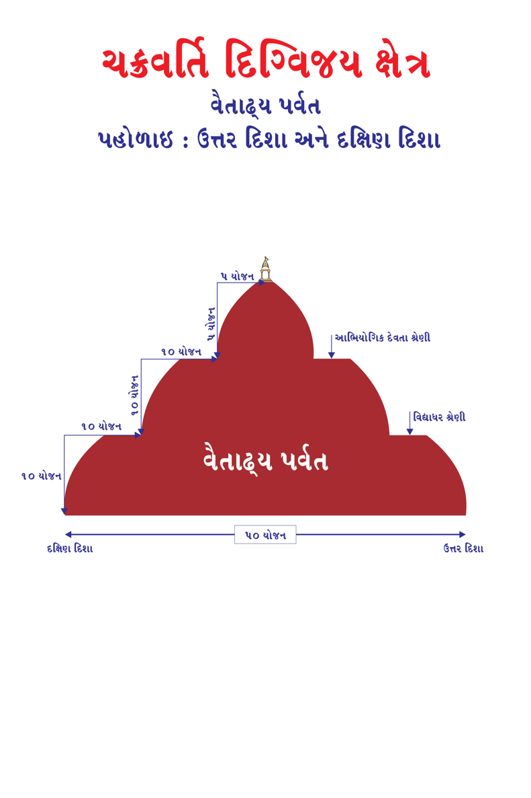
ચક્રવર્તિ દિગ્વિજય ક્ષેત્ર વૈતાઢ્ય પર્વત લંબાઇ : પૂર્વ દિશા અને પશ્ચિમ દિશા
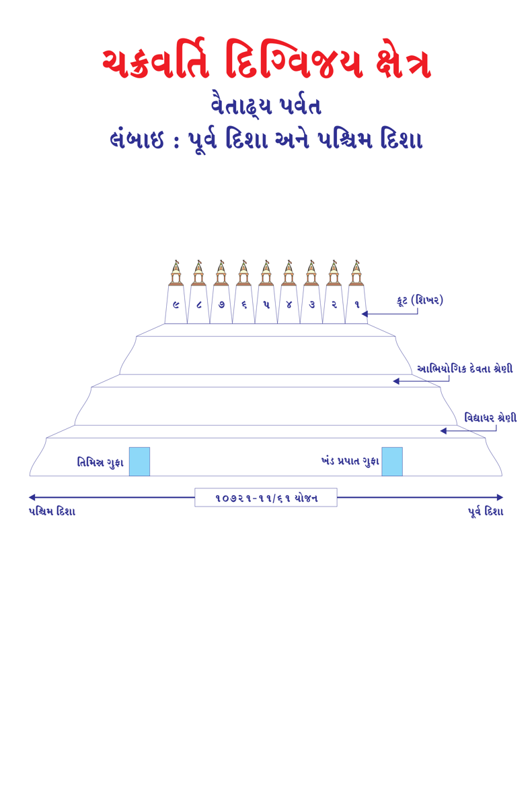
જૈન વિજ્ઞાન
ચક્રવર્તી મહારાજાએ જીતેલા છ ખંડના મુખ્ય શાશ્વત મહા પ્રદેશો :
કોઇપણ ક્ષેત્ર કે વિજય વૈતાઢ્ય પર્વત અને બે મહાનદી ગંગા અને સિંધુના કારણે તે ક્ષેત્ર 6 ખંડમાં વિભાજિત થાય છે. વૈતાઢ્ય પર્વતના કારણે બે વિભાગ થાય છે ઉત્તર અને દક્ષિણ, તે જ પ્રમાણે ઉત્તર દિશાથી વહેતી-વહેતી મહાનદી દક્ષિણમાં લવણ સમુદ્રને મળે છે. પૂર્વ દિશાએ ઉત્તરથી દક્ષિણ તરફ ગંગા મહાનદી અને પશ્ચિમમાં સિંધુ મહાનદીના કારણે પૂર્વ ખંડ - મધ્ય ખંડ - પશ્ચિમ ખંડમાં વિભાજિત થાય છે તેમજ વૈતાઢ્ય પર્વતના કારણે ઉત્તરમાં અને દક્ષિણમાં બે પ્રકારે વિભાજિત થાય છે.
વૈતાઢ્ય :
વૈતાઢ્ય પર્વતના કુલ 9 કૂટ (શિખર) છે. તેમાનાં પાંચમા કૂટનું નામ વૈતાઢ્ય કૂટ છે. સિંધુદેવીના ભવનથી ઇશાન (ઉત્તર અને પૂર્વની વચ્ચે) ખૂણે આવેલ છે. વૈતાઢ્ય પર્વતના અધિપતિ વૈતાઢ્યગિરિકુમાર દેવ છે.
કૃતમાલ દેવઃ
વૈતાઢ્ય પર્વતના કુલ 9 કૂટોમાંથી 7મું તિમિસ્ર ગુફા કૂટ છે. તેમાં કૃતમાલ
દેવનું સ્થાન છે. આ જ તિમિસ્ર ગુફાથી દક્ષિણ ક્ષેત્રમાંથી ઉત્તર ક્ષેત્રમાં જઇ શકાય છે.
દક્ષિણ સિંધુ નિષ્કૂટઃ
નિષ્કૂટ એટલે જ્યાં શિખરો યુક્ત પર્વતો નથી તેવી સમાંતર અને અસમાંતર ભૂમિ ક્ષેત્ર. સિંધુ મહાનદીની પશ્ચિમ દિશાએ, પશ્ચિમ સમુદ્ર અને ઉત્તર દિશામાં વૈતાઢ્ય પર્વતથી ઘેરાયેલ ક્ષેત્ર છે (ખંડ નંબર-2).
138
Page 253
જૈનમ્ જયતિ શાસનમ્
ચક્રવર્તી મહારાજાએ જીતેલા છ ખંડના મુખ્ય શાશ્વત મહા પ્રદેશો :
તિમિસ્ર ગુફાઃ
તિમિસ્ર ગુફા વૈતાઢ્ય પર્વતના કુલ 9 કૂટો (શિખરો) છે. તેમાંથી 7માં નંબરની કૂટની નીચે ઉત્તર-દક્ષિણ 50 યોજન લાંબી અને પૂર્વ-પશ્ચિમ 12 યોજન પહોળી, 8 યોજન ઊંચી છે. ઉત્તર અને દક્ષિણ બંને બાજુએ દ્વાર હોય છે. તે હંમેશાં બંધ હોય છે. તેના દ્વાર 8 યોજન ઊંચા, 4 યોજન પહોળા હોય છે. પ્રત્યેક દ્વારને 2- 2 યોજન પહોળા 2-કમાડ હોય છે. તે દ્વારની બંને બાજુએ 4 યોજન લાંબા, 4 યોજન પહોળા ટોડા (બારણાંના ટેકા રૂપે એક-એક તોડક) હોય છે. દ્વાર ખુલ્લે ત્યારે ટોડાના ટેકાથી ખુલ્લા રહે છે.
તિમિસ્ર ગુફાનું દ્વારને વિધિવત્ પૂજન અને વંદન બાદ દંડરત્ન દ્વારા ચક્રવર્તી મહારાજાના સેનાપતિ, દરવાજા ઉપર પ્રહાર કરવા સાત-આઠ પગલા પાછળ ખસીને વેગપૂર્વક તિમિસ્ર ગુફાના દ્વારને ત્રણ વાર દંડરત્નથી પ્રહાર કરતાં જ દ્વાર ખૂલી જાય છે. ચક્રવર્તી મહારાજા મણિરત્નને ગજરાજના જમણા કુંભસ્થળ (મસ્તકની જમણી બાજુ) સ્થાપિત કરે છે. મણિરત્નથી અંધકારમય ગુફામાં ચોમેરથી પ્રકાશ ફેલાય છે. તિમિસ્ર ગુફામાં સૂર્ય અને ચંદ્રનો પ્રકાશ પણ નથી આવતો તેવા ગાઢ અંધકારમાં કાકણિરત્નથી અંધકાર દૂર થાય છે. કાકણિરત્નના સહાયતાથી ચક્રવર્તી મહારાજાની સેના તિમિસ્ર ગુફા પાર કરે છે.
139
Page 254
ચક્રવર્તિ દિગ્વિજય ક્ષેત્ર તિમિસ્રગુફા - ખંડપ્રપાત ગુફા 49 પ્રકાશ મંડલો
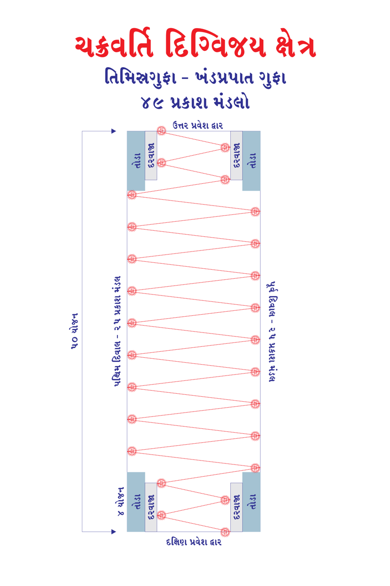
તિમિસ્રગુફા - ખંડપ્રપાત ગુફા ઉન્મગ્નજલા - નિમગ્નજલા નદી ઉત્તર પ્રવેશ દ્વાર
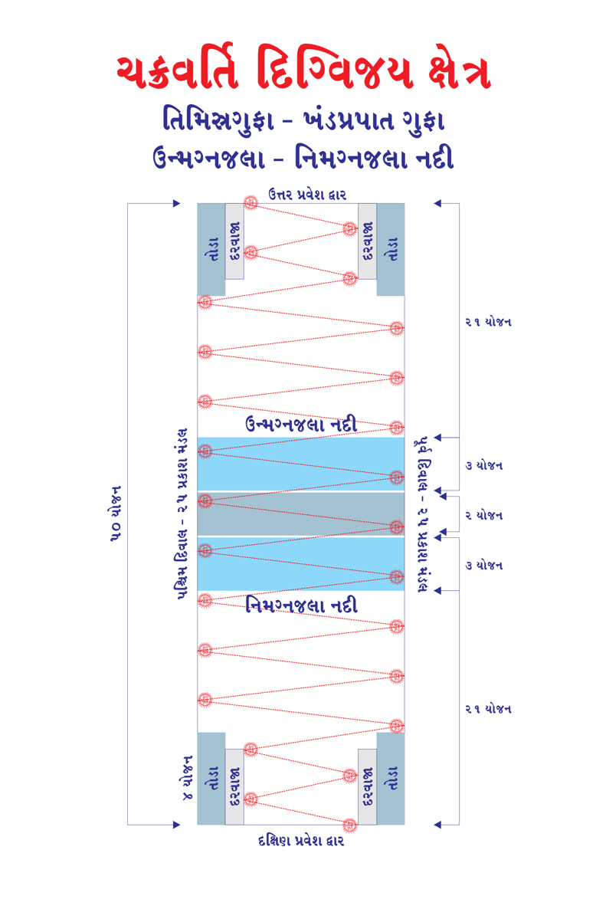
ચક્રવર્તી મહારાજાએ જીતેલા છ ખંડના મુખ્ય શાશ્વત મહા પ્રદેશો :
તિમિસ્ર ગુફાઃ
કાકણિરત્ન ગુફાની પૂર્વ-પશ્ચિમ દિવાલ પર, એક-એક યોજનના અંતરે, 500 ધનુષ્યની પહોળાઇ અને ઉત્તર-દક્ષિણમાં 1-1 યોજન ક્ષેત્રને પ્રકાશિત કરી 49 મંડલથી ગુફા દિવસ જેવી બની જાય છે. તિમિસ્ર ગુફામાં બરાબર વચ્ચે ઉન્મગ્નજલા અને નિમગ્નજલા નામની બે મહાનદી વહે છે જે સિંધુ મહાનદીમાં ભળી જાય છે. ઉન્મગ્નજલા નદીમાં ઘાસ, પાંદડાં, લાકડાં, પથ્થરના ટુકડા, ઘોડા, હાથી, રથ, યોદ્ધા કે મનુષ્ય, કોઇપણ પદાર્થ નાંખવામાં આવે તો તે પાણીમાં તરતાં કિનારે પહોંચી જાય છે. તેનાથી વિપરીત નિમગ્નજલા મહાનદીમાં ડૂબી જાય છે. વર્દ્ધકિરત્નની સહાયતાથી પૂલ બનાવી સેના બન્ને મહાનદી પાર કરે છે. તિમિસ્ર ગુફાનો ઉત્તરનો દરવાજો પોતાની મેળે જ ખૂલે છે.
કિરાત ક્ષેત્રઃ
આપાત કિરાતોનો દેશ, તિમિસ્ર ગુફાની ઉત્તરમાં આવેલ છે.
ઉત્તરાર્ધ સિંધુ નિષ્કૂટઃ
ઉત્તરાર્ધ સિંધુ નિષ્કૂટ પ્રદેશની પૂર્વમાં સિંધુ મહાનદી, દક્ષિણમાં વૈતાઢ્ય પર્વત, પશ્ચિમમાં લવણ સમુદ્ર અને ઉત્તરમાં હિમવંત પર્વત આવેલ છે.
ચુલ્લહિમવંતઃ
ચુલ્લહિમવંત પર્વતની મધ્ય ભાગની તળેટીમાં સેનાનો પડાવ નાંખે છે. તેના અધિપતિ ચુલ્લહિમવંતગિરિકુમાર દેવ છે.
142
Page 257
જૈનમ્ જયતિ શાસનમ્
ચક્રવર્તી મહારાજાએ જીતેલા છ ખંડના મુખ્ય શાશ્વત મહા પ્રદેશો :
ઋષભકૂટ :
ઋષભકૂટ ઉપર ચક્રવર્તી મહારાજા પોતાનું નામ કાકણિરત્નથી અંકિત કરે છે. હું ચક્રવર્તી મહારાજ (પોતાનું નામ) થયો છું. હું ક્ષેત્ર (નામ : ભરત, ઐરાવત કે મહાવિદેહ (વિજયનું નામ)નો અધિપતિ છું. મારો કોઇ પ્રતિશત્રુ નથી. મેં આ ક્ષેત્ર (નામ) જીતી લીધું છે. ઋષભકૂટ ઉપર માત્ર ચક્રવર્તી મહારાજ પોતાનું નામાંકન ચક્રવર્તી તરીકે કરે છે. અત્યાર સુધીમાં ખંડ નંબર 1, 2, 3 અને 4 ઉપર વિજય મેળવ્યો છે પરંતું, હજી બીજા બે ખંડો ઉપર વિજય મેળવવાના બાકી હોય છે.
વિદ્યાધર શ્રેણીઃ
વૈતાઢ્ય પર્વત ઉપર વિદ્યાધરોની શ્રેણી આવેલ છે. ચક્રવર્તી મહારાજા વિદ્યાધરો સાથે યુદ્ધમાં વિજય મેળવતાં 14 મહામૂલ્ય રત્નોમાંના એક રત્ન તેમને સ્ત્રીરત્ન ની ભેટ આપવામાં આવે છે.
ગંગાદેવીઃ
ગંગાનદી ચુલ્લહિમવંત પર્વતમાંથી નીકળી પર્વત ઉપરથી વહેતી-વહેતી પર્વતથી ધોધરૂપે નીચે ઉત્તર ક્ષેત્રમાં જ્યાં પડે છે, ત્યાં ગંગાપ્રપાત દ્રહ (કુંડ) છે અને તે ગંગાપ્રપાત કુંડમાં ગંગાદ્વીપ ઉપર ગંગાદેવીનું ભવન છે.
નૃતમાલક દેવઃ
વૈતાઢ્ય પર્વતના ત્રીજા કૂટની સમીપે, ગંગા મહાનદીના પશ્ચિમ કિનારે, દક્ષિણ દિશામાં ખંડપ્રપાત ગુફા આવેલ છે.
જિનાજ્ઞા વિરાધના થઇ હોય તો ત્રિવિધે ત્રિવિધે કરી મિચ્છામિ દુક્કડમ્! લિ. જીજ્ઞેશ ચંદ્રકાન્ત હંસરાજ લોડાયા (વારાપધર-ડોંબિવલી)
143
Page 258
જે દેવનિર્મિત સમવસરણે બેસી દેતા દેશના, વાણી અમીય સમાણી સુણતા, તૃપ્તિ કદીએ થાય ના, ચોત્રીશ અતિશય શોભતા, પાંત્રીસ ગુણ વાણીતણા, અરિહંતના શુભ ચરણમાં, કરું ભાવથી હું વંદના... જે રજત સોનાને અનુપમ, રત્નના ત્રણ ગઢ મહીં, સુવર્ણના નવપદ્મમાં, પદકમળને સ્થાપન કરી; ચારે દિશા મુખ ચાર ચાર, સિંહાસન જે શોભતા, અરિહંતના શુભ ચરણમાં, કરું ભાવથી હું વંદના...
।। ચરમ તીર્થાધિપતિ શ્રી મહાવીર સ્વામીને નમઃ ।। શ્રી ।। ૐ ર્હ્રીં ણમો નાણસ્સ ।।
ગૌતમ સ્વામીને નમઃ ।।
।। અનંત લબ્ધિનિધાન
જૈન વિજ્ઞાન
જૈન વિજ્ઞાન
ભાગ-3
જૈન વિજ્ઞાન
પ્રકાશકની કલમે...
જય જિનેન્દ્ર! અત્યંત હર્ષની લાગણીઓ સાથે જૈનમ્ જયતિ શાસનમ્ વોટસએપ ગ્રુપમાં દૈનિક ધોરણે પ્રકાશિત થયેલા જૈન વિજ્ઞાન લેખ નં. 201 થી 300 સુધીના લેખના સંગ્રહ પુસ્તક સ્વરૂપે જૈન વિજ્ઞાન : ભાગ-3 રજુ કરી રહ્યા છીએ. જૈનમ્ જયતિ શાસનમ્ જૈનોના વિવિધ સંપ્રદાયને એક છત્ર હેઠળ સમાવેશ કરી, કોઇની ભાવના અને શ્રદ્ધાને ઠેસ ન પહોંચે તેનું વિશેષ ધ્યાન રાખીએ છીએ.
વર્તમાનમાં કોરોના પેન્ડેમિકે સમગ્ર વિશ્વની પ્રગતિને બાંધી રાખી છે. કોરોના એક સુક્ષ્મ વિષાણુ છે. કોઇએ ઉત્પન્ન નથી કર્યો પરંતું, 84 લાખ જીવાયોનીમાંનો જ એક જીવ છે. વિષાણુંનો ફેલાવો એ મનુષ્યની વિકૃત્ત બુદ્ધિનું જ પરિણામ છે. આવી ઘટના વિશ્વમાં પ્રથમવાર નથી બની, અગાઉ પણ આવી મહામારી આવી ચૂકી છે. તે વખતના મહાન, વિદ્વાન આચાર્ય ભગવંતો પ્રભુ પ્રત્યેની વિશિષ્ટ ભક્તિથી તેને કાબુમાં લીધો હતો, તેમણે જિનેશ્વર દેવને કેન્દ્રમાં રાખી તેમનું સ્મરણ દિવ્ય મંત્ર શક્તિ, સાધના અને જગત કલ્યાણની શુભ ભાવનાના પરિણામે સમગ્ર વિશ્વ ઉપર કલ્યાણ કર્યું. જેનો સંપૂર્ણ શ્રેય જિનેશ્વર દેવને જાય. જેમના નામ સ્મરણ માત્રથી દુઃખો ક્ષય પામે છે, તો તેમના દર્શનનો પ્રભાવ કેટકેટલો! શુભ અને અશુભ કર્મો ચક્રવૃદ્ધિ વ્યાજ સમાન છે. તે જીવને ઉદયમાં આવતા તેના તેવા જ વિપાકો (ફળો) તેને ચાખવા જ પડે છે. આંબાનો છોડ વાવીએ તો અગણિત આંબા અને કાંટાળા વૃક્ષો વાવીએ તો અગણિત કાંટા જ મળે.
વોટસએપ મારફતે જૈન દર્શનના લેખ દૈનિક ધોરણે પ્રકાશિત કરવામાં આવે છે. જીવ હિંસાનું કારણ સમજો તેમજ તેના કારણે થતી ભવભ્રમણા. દરેક જીવ સુખને ઇચ્છે છે. દરેક મનુષ્ય જીવ પોતાના આત્માને ઉન્નતિના માર્ગે સ્થાપી જીવને મળેલ મનુષ્ય જન્મ સાર્થક કરે. જૈન વિજ્ઞાનના વિવિધ લેખો સમગ્ર જીવ અને વિવિધ તત્ત્વોને સુક્ષ્મતાથી ઓળખવામાં મદદ જરૂર કરશે, સમજણ વગરનું જ્ઞાન નકામું. જ્ઞાનને વ્યવસ્થિત રીતે સમજી કરીને અમલમાં લાવીએ. જૈનમ્ જયતિ શાસનમ્ વોટસએપ ગ્રુપમાં સારી સંખ્યામાં લોકો દૈનિક ધોરણે જોડાતા રહે છે. આજે જૈનમ્ જયતિ શાસનમ્ ગ્રુપ એક વિશાળ વટવૃક્ષ બની ચૂક્યું છે. જેમણે પણ વોટસએપ ગ્રુપમાં જોડાવું હોય તેઓ વોટસએપ ગ્રુપમાં અમને વોટસએપ નં. 8898336677 ઉપર મેસેજ કરશો, અમે આપને જોઇન ગ્રુપ લિન્ક મોકલાવીશું. ફરી એકવાર આપને હૃદયપૂર્વક ધન્યવાદ!
લિ. જૈનમ્ જયતિ શાસનમ્ ગ્રુપ - સંસ્થાપક
1
Page 261
જૈનમ્ જયતિ શાસનમ્
પ્રસ્તાવના : સંસાર અટવી
ૐ ર્હ્રીં નમો નાણસ્સ, જ્ઞાનને મારા નમસ્કાર હોજો. જ્ઞાન વગરનો જીવ નકામો! 84 લાખ જીવાયોનિએ જીવ પરિક્રમા કરી દુર્લભ એવા મનુષ્ય તરીકે જન્મ લે છે. મિથ્યાજ્ઞાન અને સમ્યક્જ્ઞાન તો તેને પૂર્વ ભવથી જ પ્રાપ્ત થયું છે. અહીં તેને મનુષ્ય જીવ તરીકે ઉન્નત્તિના માર્ગે એટલે કે મુક્તિના માર્ગે આગળ વધવાનું છે. પરંતું, મોહનીય કર્મ પણ તેના ઉદયમાં છે, અહીં જીવ સંસારમાં ભટકી જાય છે. માત્ર ભૌતિક સુખો અને પરિવારજનોની પ્રીતિ પ્રાપ્તિ મેળવવા માટે સતત મહેનત કરે છે. તે દલદલમાં ફસાઇ જાય છે, જેમ તે બહાર નીકળવાનો પ્રાયાસ કરે છે તેમ તે વધુને વધુ અંદર ફસાતો જાય છે. તેને કંઇ જ સમજાતું નથી કે તેણે પૂર્વે એવા ક્યા શુભ કર્મો કર્યા કે જેના પરિણામે તેને મહામૂલ્ય મનુષ્ય જન્મ પ્રાપ્ત થયો! વડીલો દ્વારા સંસ્કારનું સિંચન થાય છે, પરંતું, માત્ર ભૌતિક સુખોની પ્રાપ્તિ અને વ્યવહારની દુનિયામાં કામ આવે છે, આત્મ ઉન્નતિ તો નહીં જ! જીવ હળુકર્મી થવાના બદલે વધુને વધુ ભારે કર્મી બની સંસારમાં ભટકતો જ રહે છે.
તો જીવને શાશ્વત સુખ ક્યારે? અબજો-અબજો વર્ષોથી સુખ મેળવવા જીવ તરસે છે, પરંતું, તે તેને ક્યારેય પ્રાપ્ત થતું નથી. મોહનીય કર્મ પ્રતિ ક્ષણ મહત્વનો ભાગ ભજવે છે, દુઃખોની હારમાળા છે, જીવ સંસારના દુઃખોથી થાકે છે અને સંસારથી કટાળે છે કે તરત જ તેને ક્ષણિક સુખનો સ્વાદ જોવા મળે છે. થોડુંક સુખ મળતા ફરી સંસારની અટવી(ગીચ જંગલ)માં ભમવા લાગે છે. આજ સુખ-દુઃખના ક્રમો જળવાતા જ રહે છે. જીવ ક્યારેય સંસારથી મુક્ત થઇ શકતો નથી. સંસાર એ ચાકુ (છરી)ની અણિયારી ધાર પર લગાડવામાં આવેલ મીઠું મધ સમાન છે. જેવો જીવ મીઠા મધનો સ્વાદ ચાખવા જાય ત્યાં તો જીભને ચાકુની ધાર લાગવાથી લોહી વહેવા લાગે છે અને માત્ર પીડાદાયક વેદના જ પ્રાપ્ત થાય છે.
ચરમ તીર્થાધિપતિ, શ્રી મહાવીર સ્વામીની સમસ્ત જીવાયોની ઉપર કરૂણા હતી. સવિ જીવ કરૂ શાસન રસી અને રાગ-દ્વેષથી રહિત વીતરાગ ભાવનાના કારણે સમસ્ત જીવરાશી ઉપર મહાન ઉપકાર કર્યો છે. કેવળજ્ઞાનથી સમસ્ત જીવોને જાણ્યા છે અને જીવ શાશ્વત સુખને કેમ પ્રાપ્ત થાય? તેનો સમ્યક્ માર્ગ બતાવ્યો છે. હે ગોયમ! દરેક જીવને સુખ ગમે છે તેને તું જાણ. કોઇપણ જીવ દુઃખ નથી ઇચ્છતો.
2
Page 262
જૈન વિજ્ઞાન
અહિંસા જ મુક્તિનો માર્ગ છે, તેને તું જાણ. હિંસા સંસારરૂપી દાવાનળમાં ભવભ્રમણા કરાવે છે જીવ હિંસારૂપી કર્મથી ભારે બને છે પરિણામે જીવ નરક, તિર્યંચ, મનુષ્ય અને દેવ ગતિમાં ફરી-ફરીથી જન્મ ધારણ કરતો રહે છે.
જીવ પ્રતિક્ષણ મુખ્ય 18 પાપસ્થાનકોથી ઘેરાયેલો રહે છે, જ્યાં સુધી જીવના પ્રકાર અને જીવને થતી હિંસાનું કારણ ન જાણે ત્યાં સુધી તે સતત મન-વચન- કાયાથી હિંસાથી જોડાયેલો રહે છે, જે તેના ભવ ભ્રમણાનું મુખ્ય કારણ બને છે. સુખ અને દુઃખ જીવના સ્વકૃત કર્મોથી છે. બાકીના પરિબળો તો માત્ર નિમિત્ત છે. દા.ત. શ્રી મહાવીર સ્વામીના જીવે ત્રિપૃષ્ઠ વાસુદેવના ભવમાં દ્વારપાલના કાનમાં ધગધગતું રેડેલું સીસુથી દ્વારપાલનું તે જ ક્ષણે વેદનામય મૃત્યું થયું તે કર્મ શ્રી મહાવીર સ્વામી ભગવાનને 27માં ભવે દ્વારાપાલ ખેડૂત બની પ્રભુના કાનમાં શલ્ય (ખીલ્લા) ઠોકે છે ત્યારે પૂર્વે થયેલ અશુભ કર્મ ઉદયમાં આવે છે. પ્રભુને ઘણાં જ લાંબા સમય સુધી વેદના ભોગવવી પડે છે. અહીં ખેડૂત તો માત્ર કર્મ ભોગવવા માટે નિમિત્ત બન્યો છે, ખેડૂતને પોતાને જ ખબર નથી કે કાનમાં ખીલ્લા ઠોકવાની કુબુદ્ધિ આવી ક્યાંથી? જૈન વિજ્ઞાન મારફતે આપણે સમસ્ત જીવોને, તત્ત્વોને સમજીએ સાથે સંસાર પરિભ્રમણનું મુખ્ય કારણ... શ્રી મહાવીર સ્વામી ભગવાને સમવસરણમાં એટલું વિસ્તારપૂર્વક સુક્ષ્મ જ્ઞાન આપ્યું છે કે તેને વાંચતા-સાંભળતા-સમજતાં આયુષ્ય પૂર્ણ થઇ જાય છે. મનુષ્ય જીવ પોતાનું સંપૂર્ણ આયુષ્ય માત્ર ભૌતિક સુખો મેળવવા જ ખરચી નાંખે છે, જ્યારે સમજાય છે ત્યારે આયુષ્ય જ પૂર્ણ થઇ જાય છે. અવસર્પિણી કાળનો પાંચમો આરો દુષમ. મનુષ્ય જીવ વક્ર (વાંકી) બુદ્ધિમય હોય છે. દુઃખમાં સુખ અને સુખમાં દુઃખ દેખાય છે. શ્રી મહાવીર સ્વામી કહે છે સૌથી અઘરો છે સંસાર, સંસારનો ભાર વહન કરવો અતિ ભારે છે.
જૈનમ્ જયતિ શાસનમ્ ગ્રુપના સંસ્થાપક-સંચાલક શ્રી ચેતન લહેરચંદ નાગડા મારા કલ્યાણ મિત્ર છે. તેઓ મારા દરેક લેખોને જૈનમ્ જયતિ શાસનમ્ વોટસએપ ગ્રુપમાં પ્રકાશિત કરે છે તે બદલ હું હૃદયપૂર્વક આભાર માનું છું તેમજ તેમનો ઋણી છું. તેઓ આપની અને મારી વચ્ચે સેતુ બન્યા છે. જૈન વિજ્ઞાનના લેખ મારફતે કોઇની ભાવના-શ્રદ્ધાને ઠેસ પહોંચી હોય તો મને જરૂરથી ક્ષમા કરશોજી. જિનાજ્ઞા વિરાધના થઇ હોય તો ત્રિવિધે ત્રિવિધે કરી મિચ્છામિ દુક્કડમ્!
લિ. જીજ્ઞેશ ચંદ્રકાન્ત હંસરાજ લોડાયા (વારાપધર-ડોંબિવલી)
3
Page 263
જૈનમ્ જયતિ શાસનમ્
મનુષ્ય જીવ - 124 : ચક્રવર્તી-16 :
ચક્રવર્તી મહારાજાએ જીતેલા છ ખંડના મુખ્ય શાશ્વત મહા પ્રદેશો :
ઉત્તરાર્ધ ગંગા નિષ્કૂટ :
ઉત્તરાર્ધ ગંગા નિષ્કૂટ પ્રદેશ (ખંડ નંબર-5) ઉત્તરમાં હિમવંત પર્વત, પૂર્વમાં લવણ સમુદ્ર, પશ્ચિમમાં ગંગા નદી અને દક્ષિણમાં વૈતાઢ્ય પર્વત આવેલ છે.
ખંડપ્રપાત ગુફાઃ
સંપૂર્ણ વિધિવત તિમિસ્ર ગુફાની જેમ જ તેનું વર્ણન છે. તફાવત માત્ર ઉત્તરના ક્ષેત્રમાં જવા દક્ષિણ દ્વારથી પ્રવેશ થાય છે. અહીં દક્ષિણ ક્ષેત્રમાં પરત આવવા માટે ખંડપ્રપાત ગુફાના ઉત્તર દિશામાં આવેલ દ્વારનો ઉપયોગ થાય છે. વિશેષ ગુફાનું માપ, પ્રમાણ, અંધકાર વગેરે સમાન છે. બે મહાનદી ઉન્મગ્નજલા અને નિમગ્નજલા પાર કરવાની હોય છે. સેનાપતિ, મણિરત્ન, કાકણિરત્ન, વર્દ્ધકિરત્નની સહાયતાથી ચક્રવર્તી મહારાજા અને સમસ્ત સેના ગુફા પાર કરે છે.
નવ નિધિઓઃ
અપરિમિત રક્ત આદિ રત્નોવાળા, શાશ્વત, અવિનાશી, અવ્યય, દેવો દ્વારા અધિષ્ઠિત, વિવિધ આચાર, વિવિધ વસ્તુઓની ઉત્પત્તિ અને વિધિના દર્શક પુસ્તકરૂપ હોવાથી લોકપુષ્ટિ દાયક, લોક પ્રસિદ્ધ એવા નવનિધિઓ : 1) નૈસર્પનિધિ 2) પાંડુકનિધિ 3) પિંગલકનિધિ 4) સર્વરત્નનિધિ 5) મહાપદ્મનિધિ 6) કાલનિધિ 7) મહાકાલનિધિ 8) માણવકનિધિ અને 9) શંખનિધિ. તે નવનિધિઓ પોતપોતાના નામના દેવોથી અધિષ્ઠિત હોય છે.
4
Page 264
ચક્રવર્તિ દિગ્વિજય ક્ષેત્ર ભરતક્ષેત્ર, ઐરાવતક્ષેત્ર અને મહાવિદેહ ક્ષેત્ર
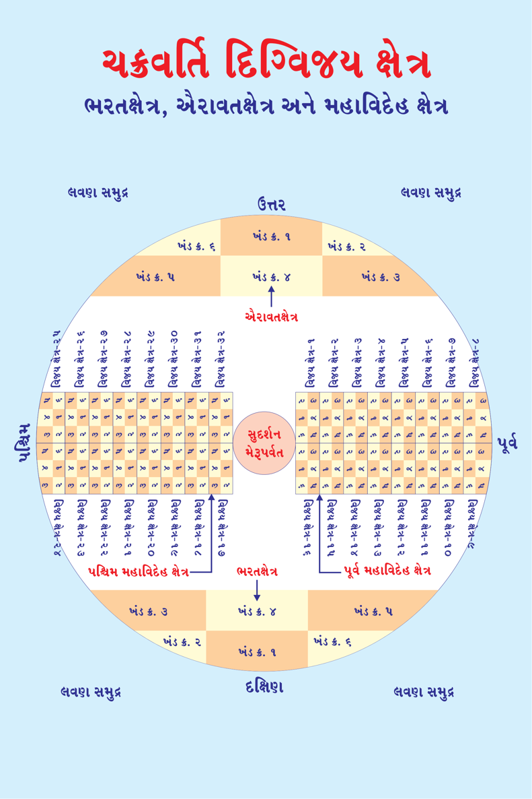
મનુષ્ય જીવ - 125 : ચક્રવર્તી-17 : ચક્રવર્તી મહારાજાએ જીતેલા છ ખંડના મુખ્ય શાશ્વત મહા પ્રદેશો : નવનિધિઃ
ગંગાનદી પૂર્વદિશામાં જ્યાં સમુદ્રને મળે છે, ત્યાં ગંગાનદીના દક્ષિણ કિનારે નવનિધિઓ રહે છે. નવનિધિઓ દેવ અધિષ્ઠિત છે. અધિષ્ઠાયક દેવોના સ્થાન પણ તે નિધિમાં જ હોય છે. ચક્રવર્તી મહારાજાના વશમાં થઇ નવનિધિઓ સ્વસ્થાનથી ચક્રવર્તી મહારાજાની રાજધાની સુધી પાતાલ માર્ગે ચક્રવર્તી મહારાજાના પગ નીચે ચાલતી-ચાલતી આવે છે. પ્રત્યેક નિધિઓ ચક્રવર્તી મહારાજાની રાજધાની જેટલી મોટી હોય છે તેથી નવનિધિઓ રાજધાનીના લક્ષ્મીગૃહ તરફ મુખ કરી રાજધાની ફરતે ગોઠવાય છે. ( નોંધઃ આગળ જતાં વિસ્તારમાં 14 મહારત્નો અને 9 નિધિ ઓનું વિસ્તારમાં માહિતી આવશે)
દક્ષિણાર્ધ ગંગા નિષ્કૂટ :
દક્ષિણાર્ધ ગંગા નિષ્કૂટ પૂર્વ દિશાએ લવણ સમુદ્ર છે. દક્ષિણમાં લવણ સમુદ્ર છે. પશ્ચિમમાં ગંગા મહાનદી છે અને ઉત્તરમાં વૈતાઢ્ય પર્વત આવેલ છે. તે વિસ્તાર ખંડ નંબર-6 છે. આ અંતિમ ક્ષેત્ર ઉપર વિજય ચક્રવર્તી મહારાજાએ કરવાનો હોય છે. આ છ ખંડ ઉપર વિજય મેળવતાં ચક્રવર્તી મહારાજાને કુલ 60,000 વર્ષ જેટલો સમય લાગે છે. ( નોંધઃ દરેક ચક્રવર્તી મહારાજને અલગ-અલગ સમય લાગે છે. પરંતું, ભરત ચક્રવર્તીને ઉદ્દેશીને કહેવામાં આવેલ છે. અહીં આટલા વર્ષો લાગે છે તે કહેવા પાછળનું કારણ એ જ કે, 6 ખંડના ક્ષેત્ર કેટલા મોટા હોય છે. અગાઉ જણાવેલ તે જ પ્રમાણે મહાખંડો ઉપરાંત દરેક ખંડના ગામ, નગર, મહાનગર, પ્રદેશ, દેશ વગેરે પણ જીતવાના હોય છે. જે એટલું સરળ હોતું નથી! માત્ર રાજાઓ સાથે જ યુદ્ધ કરવાનું નથી! તે સાથે વિવિધ ક્ષેત્રના અધિષ્ઠાયક દેવી-દેવતાઓને પણ જીતવાના હોય છે. તે સામાન્ય રાજા-મહારાજાઓની શક્તિ બહારની કલ્પના હોય છે.) સમગ્ર 6 ખંડના કુલ 32,000 દેશ ઉપર વિજય મેળવે છે. માત્ર મનુષ્યો જ નહીં પરંતું તે- તે ક્ષેત્રના અધિષ્ઠાયક દેવોને પણ જીતવાના હોય છે!
6
Page 266
જૈન વિજ્ઞાન
મનુષ્ય જીવ - 126 : ચક્રવર્તી-18 :
ચક્રવર્તી મહારાજાએ જીતેલા છ ખંડના મુખ્ય શાશ્વત મહા પ્રદેશો :
ચક્રવર્તી મહારાજા મહાન પુણ્યના સ્વામી હોય છે. પૂર્વે કરેલ મહાન તપ અને સંયમ સાધનાના પ્રભાવે ચક્રવર્તી મહારાજા બને છે. તીર્થંકર પરમાત્મા પછી બીજા ક્રમાંકે ચક્રવર્તી મહારાજ આવે છે. તે સમગ્ર છ ખંડના દેવી-દેવતાઓ અને મનુષ્યોના અધિપતિ હોય છે.
ભરતક્ષેત્રમાં અને ઐરાવતક્ષેત્રમાં લવણસમુદ્ર હોય છે. જ્યારે મહાવિદેહ ક્ષેત્રમાં સમુદ્રને સ્થાને મહાનદી હોય છે. અહીં જે-જે ક્ષેત્રોના નામ આવ્યા તે શાશ્વત નામો અને મહા પ્રદેશોના મુખ્ય નામનો ઉલ્લેખ થયો છે. જેમ કે, એશિયા ખંડ, યુરોપ ખંડ વગેરે...
છ ખંડના કુલ 32,000 દેશોમાં દેશ, પ્રદેશ, મહાનગર, ઉપનગર, ગામ વગેરે ઉપર સર્વવ્યાપી વિજય મેળવી સર્વે રાજાઓ અને દેવોને પોતાના આધીન કરે છે. છ ખંડમાં એક ચક્રી (એક હથ્થુ) શાસન કરે છે.
ચક્રવર્તી મહારાજાના દિગ્વિજયમાં પ્રત્યેક રત્નના અધિષ્ઠાયક દેવો 1,000, કુલ 14 મહારત્નોના 14,000 દેવો અને સ્વયં ચક્રવર્તી મહારાજાના આત્મરક્ષક દેવો 2,000 હોય છે. આમ કુલ મળીને 16,000 દેવો તો માત્ર ચક્રવર્તી મહારાજાની સેવામાં સદાય તત્પર હોય છે. 64,000 પત્નીઓ ચક્રવર્તી મહારાજાને હોય છે. ચક્રવર્તી મહારાજના દિગ્વિજયમાં 14 મહારત્નોનું વર્ણન...
7
Page 267
ચક્રવર્તિ દિગ્વિજય ક્ષેત્ર ભરતક્ષેત્ર અને તેના 6 ખંડો
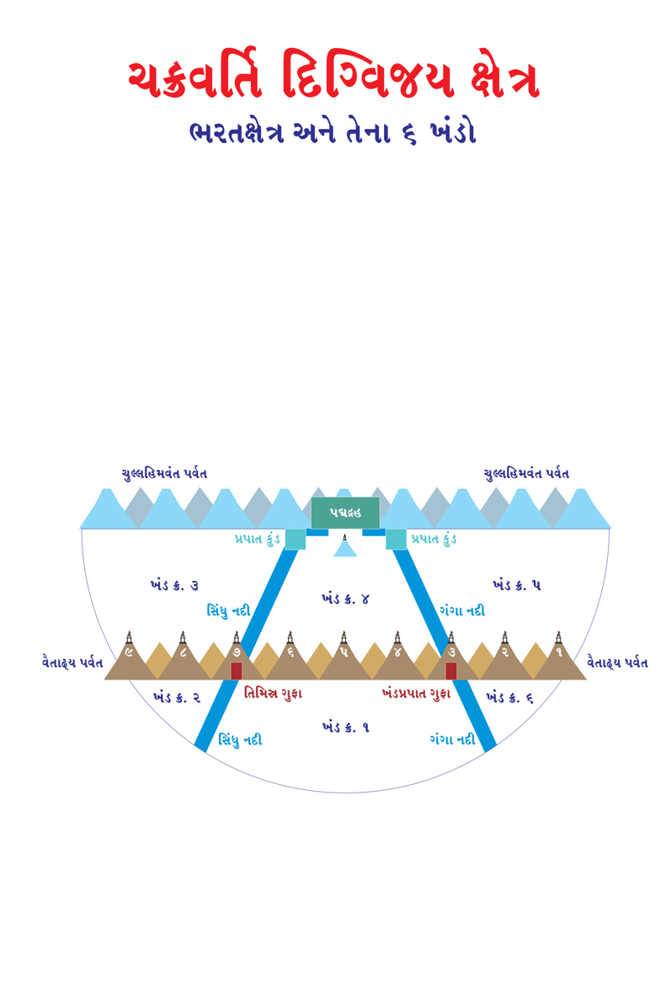
જૈન વિજ્ઞાન
મનુષ્ય જીવ - 127 : ચક્રવર્તી-19 :
ચક્રવર્તી મહારાજાના વિશેષ રત્નોઃ ધનુષ્ય :
શુક્લ પક્ષના બીજના ચંદ્ર અને મેઘધનુષ્યના આકારવાળું હોય છે. શ્રેષ્ઠ ભેંસના સુદ્રઢ, છિદ્રો રહિત, રમણીય શીંગડા જેવું હોય છે. ધનુષ્યનો પાછળનો ભાગ ઉત્તમ નાગ, ભેંસના શીંગડા, કોયલ, ભમરાઓનો સમૂહ, કાળી કાંતિવાળો, તેજથી જાજ્વલ્યમાન અને નિર્મળ હોય છે. શ્રેષ્ઠ કારીગરો દ્વારા બનાવેલ મણિરત્નની ચમકતી ઘૂઘરીઓથી શોભાયમાન હોય છે. સુવર્ણ નિર્મિત ચિન્હોવાળું અને તેમાંથી વિજળીના કિરણો દ્રશ્યમાન થાય છે. બહાદુરીના ચિન્હ સ્વરૂપે દર્દર અને મલયગિરિના શિખરે વિચરતા સિંહના કેશરાલ (વાળ) બાંધ્યા હોય છે. ધનુષ્યની શોભા માટે ચમરી ગાયના વાળ બાંધ્યા હોય છે. અર્ધ ચંદ્રના ચિન્હથી અંકિત હોય છે. તેની જીવા (પ્રત્યંચા, પણછ, દોરી) કાળા, વાદળી, લાલ, પીળા અને સફેદ રંગના સ્નાયુઓથી બંધાયેલી હોય છે.
બાણઃ
બાણનો અંતિમ ભાગ વજ્રમય હોય છે. તેનો આગળનો ભાગ અભેદ્ય હોવાથી વજ્ર જેવો સાર સંપન્ન હોય છે. તેનો પાછળનો ભાગ ઉપર મણિઓ, રત્નો અને સુવર્ણથી જડેલા હોય છે. નિપુણ (કુશળ, શ્રેષ્ઠ) કારીગરોથી બનાવેલા હોય છે. તેની ઉપર વિવિધ પ્રકારના મણિરત્નોથી ચક્રવર્તી મહારાજાનું નામ અંકિત હોય છે.
જે ક્ષેત્ર ઉપર પ્રથમ ચેતવણી સ્વરૂપે ચક્રવર્તી મહારાજા બાણ છોડે ત્યારે અવશ્ય બોલે : (1) ‘મારા બાણમાં અંકિત ક્ષેત્ર સીમાના બહારના ભાગમાં રહેનારા, હે નાગકુમાર, અસુરકુમાર, સુવર્ણકુમાર દેવો! તમે સાંભળો, હું તમને પ્રણામ કરું છું.’ (2) ‘મારા બાણમાં અંકિત ક્ષેત્ર સીમાના અંદરના ભાગમાં રહેનારા, હે નાગકુમાર, અસુરકુમાર, સુવર્ણકુમાર દેવો! તમે સાંભળો, તમે મારી નિશ્રા સ્વીકાર કરો! ’
9
Page 269
જૈનમ્ જયતિ શાસનમ્
મનુષ્ય જીવ - 128 : ચક્રવર્તી-20 :
ચક્રવર્તી મહારાજાના વિશેષ રત્નોઃ
ચક્રરત્નઃ
ચક્રરત્નની નાભિ (કેન્દ્ર, મધ્યભાગ) વજ્રમયી હોય છે. આરા લોહિતાક્ષ રત્નના હોય છે. ધરી સુવર્ણમયી હોય છે. અંદરની પરિધિરૂપ થાળું (ગોળાઇ) વિવિધ પ્રકારના મણિઓથી બનેલ હોય છે. તે ચક્રરત્ન મણિ-મોતીઓના સરોથી વિભૂષિત હોય છે. તે 12 પ્રકારના વાજિંત્રોના નિનાદ અને ઘૂઘરીઓનો રણકાર કરતું રહે છે. તે દિવ્યપ્રભા (પ્રકાશ) યુક્ત હોય છે. બપોરના સમયના સૂર્ય જેવું તેજસ્વી હોય છે. વર્તુળાકાર અને અનેક મણિ-રત્નમય ઘંટડીઓથી વ્યાપ્ત હોય છે. સર્વ ઋતુના(6 ઋતુ) પુષ્પોની સુંગધી માળાઓથી સુશોભિત હોય છે. તે આકાશમાં અવસ્થિત રહે છે. 1,000 યક્ષદેવોથી અધિષ્ઠિત હોય છે. દિવ્યવાદ્યોના ધ્વનિ અને નિર્ઘોષથી આકાશને પૂરિત કરે છે. ચક્રરત્નનું નામ સુદર્શન હોય છે. ચક્રરત્ન ઉત્પત્તિ ચક્રવર્તી મહારાજાની આયુધશાળા (શસ્ત્રાગાર, શસ્ત્રો રાખવાના ભવનો)માં સ્વયં ઉત્પન્ન થાય છે. ચક્રવર્તી મહારાજાને છ ખંડ વિજેતા બનાવવા નેતૃત્વ સમ રાજા- મહારાજાઓ અને દેવી-દેવતાઓને પરાજિત કે આધીન કરવામાં સહાયક અને તત્પર હોય છે. જ્યાં સુધી છ ખંડના એકેક રાજાઓને આધીન કે પરાજિત ન કરે ત્યાં સુધી ચક્રવર્તી મહારાજાના આયુધશાળામાં પુનઃપ્રવેશ નથી કરતું.
10
Page 270
જૈન વિજ્ઞાન
મનુષ્ય જીવ - 129 : ચક્રવર્તી-21 :
ચક્રવર્તી મહારાજાના વિશેષ રત્નોઃ
વર્દ્ધકિરત્ન-1
ચક્રવર્તી મહારાજાના વર્દ્ધકિરત્ન (શ્રેષ્ઠ શિલ્પકાર) આશ્રમ, દ્રોણમુખ, ગામ, પટ્ટન, નગર, સૈન્ય શિબિર (છાવણી), ગૃહ, દુકાનના વિભાગ કરવામાં વાસ્તુ શાસ્ત્ર પ્રમાણે તેના યથા યોગ્ય સ્થાન વગેરે જાણવામાં કુશળ હોય છે. તે વર્દ્ધકિરત્ન વાસ્તુશાસ્ત્ર માન્ય 81 આદિ પદવાળા સર્વ પ્રકારના વાસ્તુના (ઘરના) અનેક ગુણના જાણનાર પંડિતો હોય છે. 45 પ્રકારના દેવની પૂજામાં વિચક્ષ હોય છે. તે વાસ્તુ પરીક્ષાના વિધિજ્ઞ (વિધિના જાણકાર) હોય છે. વિવિધ પરંપરાનુગત મહેલો, ભોજનશાળા, કિલ્લા, શયનગૃહના યથા યોગ્ય નિર્માણમાં નિપુણ (હોંશિયાર) હોય છે.
તે છેદન યોગ્ય, વેધન યોગ્ય, લાકડાની વિધિ તથા ગેરુ કે લાલ રંગના દોરા (નાડાછડી) આદિ બાંધવાની વિધિઓમાં પ્રધાન (મુખ્ય) બુદ્ધિવાળા હોય છે. પાણીમાં રહેલી ભૂમિને પાર કરવાના સાધનોની રચનામાં કુશળ હોય છે. તેઓ પાણીમાં અને ભૂમિમાં ભોંયરાઓ બનાવવા, સુરંગ આદિ મૂકવા, ખાઇઓ ખોદવા વગેરેના કાળજ્ઞ (શુભ સમયના જાણકાર) હોય છે. વર્દ્ધકિરત્ન ચક્રવર્તી મહારાજા માટે દૈવી શક્તિ દ્વારા માત્ર મુહૂર્ત (48 મિનિટ) જેટલા સમયમાં મહેલ કે સૈન્ય માટે આવાસનું નિર્માણ કરી શકે છે.
11
Page 271
જૈનમ્ જયતિ શાસનમ્
મનુષ્ય જીવ - 130 : ચક્રવર્તી-22:
ચક્રવર્તી મહારાજાના વિશેષ રત્નોઃ
વર્દ્ધકિરત્ન-2:
તેઓ શબ્દ શાસ્ત્ર પ્રમાણે વાસ્તુ પ્રદેશ (ઘર) બનાવવાની ભૂમિમાં ઉગેલી ફળ અભિમુખ વેલો, ફળ ન આપનાર વેલો, વૃક્ષો, વૃક્ષના સહારે ચડતી લતાઓ, વેષ્ટનોના ગુણદોષના જાણકાર હોય છે. વર્દ્ધકિરત્ન ગુણાઢ્ય યુક્ત હોય છે. તે 16 પ્રકારના મહેલ, ઘર બનાવવામાં તથા શિલ્પશાસ્ત્ર અનુસાર 64 પ્રકારના ગૃહ નિર્માણ કરવામાં વિશાળ બુદ્ધિવાળા હોય છે.
તે નંદાવર્ત, વર્ધમાનક, સ્વસ્તિક, રૂચક, સર્વતોભદ્ર આદિ વિશેષ પ્રકારના ગૃહો, ધ્વજાઓ, ઇન્દ્ર આદિ દેવોની પ્રતિમાઓ, ધાન્યના કોઠારો, લોકો રહી શકે તેવી પર્વતીય ગુફાઓ, ખાઇ કે પુષ્કરિણીઓ, પાલખી વગેરે વાહન આદિ બનાવવામાં કુશળ હોય છે.
રથઃ
ચક્રવર્તી મહારાજાનો રથ પૃથ્વી ઉપર શીઘ્રગામી (બહુજ જલ્દીથી દોડી શકે) અને ઉત્તમ લક્ષણોથી યુક્ત હોય છે. રથનું નિર્માણ હિમવંત પર્વતના વિવિધ પ્રકારના તિનિશ વૃક્ષોના લાકડામાંથી બનાવવામાં આવે છે.
રથનું ધૂંસર જંબૂનદ સુવર્ણ (લાલ સુવર્ણ)થી બનેલ હોય છે. તેના ચક્ર (પૈડાં) કનકમય, લઘુદંડ જેવા આરાથી યુક્ત હોય છે. રથ પુલાકરત્ન, વજ્રરત્ન, ઇન્દ્રનીલરત્ન, સાસગરત્ન, પ્રવાલરત્ન, સ્ફટિકરત્ન વગેરે વિવિધ રત્નો તથા ચંદ્રકાંત વગેરે મણિ અને મુંગા (પ્રવાલ) થી શોભાયમાન હોય છે.
12
Page 272
જૈન વિજ્ઞાન
મનુષ્ય જીવ - 131 : ચક્રવર્તી-23 :
ચક્રવર્તી મહારાજાના વિશેષ રત્નોઃ
રથ -1:
રથના પૈડાઓના 48 આરા (એકેક પૈડાના 12 આરા, ચાર પૈડાઓના 48 આરા) લાલ સુવર્ણમય પટ્ટીઓથી સુદ્રઢ રીતે નાભિ (કેન્દ્ર) સાથે જોડાયેલા હોય છે. તે પૈડાની ચક્ર પરિધિ (ગોળાઇ)માં ઘસીને સાફ કરેલી, નવી-નવી પટ્ટીઓ સારી રીતે જોડેલી હોય છે. તેની મજબૂતાઇ માટે ઠેકઠેકાણે લગાડેલી લોખંડની પટ્ટીઓ અને ખીલીઓથી તે અતિ મનોહર (નયનરમ્ય) દેખાય છે. રથના પૈડા વાસુદેવના ચક્રરત્ન જેવા દેખાય છે.
રથમાં બાંધેલી જાળીમાં કર્કેતન રત્ન, ઇન્દ્રનીલરત્ન, સાસગરત્ન જડેલા હોય છે. તેની ધુરા પ્રશસ્ત, વિસ્તીર્ણ અને સમ હોય છે. ધુરા ચળકતા સુવર્ણથી નિર્મિત હોય છે. તે શ્રેષ્ઠ નગરની જેમ સુરક્ષિત (જેમ મુખ્ય દરવાજા છોડીને કિલ્લાના દ્વાર ગુપ્ત હોય છે તેમ સારથિના સ્થાનને છોડીને ધુરા ગુપ્ત હોય છે, દેખાતી નથી) હોય છે. તેની રાશ (દોરી) તપેલા સુવર્ણથી બનેલી હોય છે. રથમાં શોભા માટે અનેક સ્થાને કવચો સ્થાપિત હોય છે. રથ અસ્ત્ર, શસ્ત્રથી પૂર્ણ હોય છે. ઢાલ, બાણ, ધનુષ્ય, તલવાર, ત્રિશૂળ, ભાલા, તોમર (એક જાતનું બાણ), સેંકડો બાણો જેમાં હોય તેવા 32 ભાથાઓથી શોભાયમાન હોય છે.
રથ આયુધો કનકરત્નથી નિર્મિત, ચિત્રો ચિતરેલા હોય છે. રથમાં જોડાયેલા ઘોડાઓ હલીમુખ, બગલા, હાથીદાંત, ચંદ્ર, મોતી, મલ્લિકા, કુંદ, કટજ, નિગુંડી અને મોગરાના સફેદ ફૂલો, ઉત્તમ ફીણ સમૂહ, મોતીના હાર, કાશ (એક જાતનું ઘાસ) જેવા સફેદ હોય છે.
13
Page 273
જૈનમ્ જયતિ શાસનમ્
મનુષ્ય જીવ - 132 : ચક્રવર્તી-24 :
ચક્રવર્તી મહારાજાના વિશેષ રત્નોઃ
રથ-2:
ઘોડાઓની ગતિ દેવ, મન અને વાયુની ગતિને પરાજિત કરી શકે તેવી હોય છે. અશ્વોના અંગો ચાર ચમરોથી અને સુવર્ણના આભૂષણોથી શોભાયમાન હોય છે. તે રથ છત્ર, ધ્વજા, ઘંટડીઓ અને પતાકાઓથી યુક્ત હોય છે. તેની સંધીઓનું જોડાણ સુંદર રીતે કરાયેલું હોય છે. રથના બંને પૈડા પરનું ઢાંકણ સુંદર હોય છે. ધૂંસરના બન્ને ખૂણા સુંદર હોય છે. વજ્રરત્નથી આબદ્ધ બંને નાભિ સુંદર અને શ્રેષ્ઠ સુવર્ણથી શોભાયમાન હોય છે.
રથ યોગ્ય શિલ્પકારો દ્વારા નિર્મિત હોય છે. ઉત્તમ ઘોડાઓથી યુક્ત હોય છે. તેની લગામ નિપુણ સારથિના હાથમાં હોય છે. રથ ઉત્તમમાં ઉત્તમ રત્નોથી સુશોભિત હોય છે. નાની-નાની સોનાની ઘંટડીઓથી અલંકૃત હોય છે. શત્રુઓથી અજેય (ક્યારેય જીતી શકાતો નથી) હોય છે. રથનો રંગ કમળ, પોપટની ચાંચ જેવો લાલ હોય છે. તેની કાંતિ ઉગતા સૂર્ય જેવી હોય છે. સર્વ ઋતુઓના સુગંધીત પુષ્પોની ગૂંથેલી માળાઓ રથ પર લટકેલી હોય છે.
રથ પર ઊંચી સફેદ ધ્વજા લહેરાતી હોય છે. મહામેઘના ગર્જના જેવો તેનો ઘોષ અત્યંત ગંભીર હોય છે. તે ઘોષથી શત્રુઓના હૃદય ધ્રૂજી ઉઠે છે. રથનું નામ પૃથ્વીવિજયલાભ હોય છે. કેમકે રથના નામ પ્રમાણે ગુણ હોય છે. રથમાં બેસનાર ચક્રવર્તી હંમેશા વિજયી થાય છે.
14
Page 274
જૈન વિજ્ઞાન
મનુષ્ય જીવ - 133 : ચક્રવર્તી-25:
ચક્રવર્તી મહારાજાના વિશેષ રત્નોઃ
સેનાપતિ :
સેનાપતિ, ચક્રવર્તી મહારાજાની સેનાનો નેતા હોય છે. સેનાપતિનો યશ ફેલાયેલો હોય છે. અતિ બળવાન અને પરાક્રમી, સ્વભાવે મહાન અને ગંભીર, ઓજસ્વી, તેજસ્વી, ઉત્તમ લક્ષણોથી યુક્ત, વિવિધ ભાષાઓના જાણકાર અને નિપુણ (હોંશિયાર) હોય છે. શિષ્ટ ભાષી, ક્ષેત્રમાં ઊંડા, દૂર્ગમ, વિવિધ સ્થાનોના ભોમિયા હોય છે. બાણ વગરે અસ્ત્ર, તલવાર વગેરે શસ્ત્ર ચલાવવામાં કુશળ હોય છે. ચતુરંગિણી સેના ઘોડા, હાથી, રથ અને ઉત્તમ યોદ્ધાથી યુક્ત હોય છે.
ચર્મરત્નઃ
શ્રીવત્સ જેવા આકારવાળું, મોતી, તારા, અર્ધ (અડધા) ચંદ્ર જેવા ચિત્રોથી ચિતરેલું, અચલ ચલિત ન થાય તેવું), અકંપ (ધ્રૂજે નહીં તેવું) અને અભેદ્ય કવચ જેવું, નદી અને સમુદ્રને પાર કરવાની સંપૂર્ણ ક્ષમતા સહિત હોય છે. દૈવી શક્તિથી આ ચર્મરત્ન ઉપર વાવેલા 17 પ્રકારના ધાન્ય (1) ચોખા (2) જવ (3) વ્રીહિ (એક જાતના ચોખા) (4) કોદ્રવ (5) રાલ (6) તલ (7) મગ (8) અડદ (9) ચોળા (10) ચણા (11) તુવેર (12) મસૂર (13) કળથી (14) ઘઉં (15) રાજમા (16) અળસી (17) શણ એક દિવસમાં ઉત્પન્ન થઇ જાય છે. વરસાદનું આગમન જાણીને ચક્રવર્તી મહારાજાના હાથનો સ્પર્શ થતાં જ 12 યોજન લાંબો થઇ જાય છે. ચક્રવર્તી મહારાજાના સેનાપતિના હાથનો સ્પર્શ થતાં જ તે વિશાળ નૌકા બની જાય છે. તેના ઉપર ચક્રવર્તી મહારાજાની સંપૂર્ણ સેના (હાથી, ઘોડા, રથ અને યોદ્ધા) મહાનદી પાર કરી શકે છે.
15
Page 275
જૈનમ્ જયતિ શાસનમ્
મનુષ્ય જીવ - 134 : ચક્રવર્તી-26 :
ચક્રવર્તી મહારાજાના વિશેષ રત્નોઃ
દંડરત્નઃ
પાંચ કાતળીરૂપ રેખાથી યુક્ત, વજ્રના સારથી નિર્મિત, સમગ્ર શત્રુ સેનાનું વિનાશક, ચક્રવર્તી મહારાજાની સેનાના માર્ગમાં આવતા અને પડાવ સ્થાનના ખાડા-ટેકરા, ઊંચી-નીચી ભૂમિને, ટેકરાઓને, પડી જવાય તેવી પથરાળ જગ્યાને સમતલ કરે છે. તે ચક્રવર્તી મહારાજા માટે શાંતિકર, શુભંકર, હિતકર, ઇચ્છિત મનોરથોને પૂર્ણ કરનાર, 1,000 દેવોથી અધિષ્ઠિત, કોઇપણ સ્થાને પ્રતિઘાત ન પામે તેવું અબાધિત હોય છે.
મણિરત્નઃ
મણિરત્ન 4 અંગુલ લાંબુ અને 2 અંગુલ પહોળું, અમૂલ્ય, ત્રિકોણાકાર (ત્રણ ખૂણા અને છ કોટિ (હાંસ) વાળું હોય છે. મણિરત્ન અનુપમ દ્યુતિયુક્ત (પ્રકાશમાન), દિવ્ય, મણિઓમાં સર્વોત્કૃષ્ટ, વૈડૂર્યમણિની જાતિનું, સર્વ પ્રાણીઓને પ્રિય હોય છે. તેને મસ્તક પર ધારણ કરનારને કોઇપણ જાતનું દુઃખ રહેતું નથી, તેના સર્વ દુઃખ, ચિંતા નાશ પામે છે, તેમજ સદાકાળ નીરોગી રહે છે, તેના પર તિર્યંચ, મનુષ્ય કે દેવો દ્વારા કોઇ જ ઉપસર્ગોની અસર થતી નથી. સંગ્રામમાં પણ કોઇ શસ્ત્ર તેનો વધ કરી શકતું નથી, આ શ્રેષ્ઠ મણિને જે મનુષ્ય ધારણ કરે તેનું યૌવન સદાકાળ સ્થિર રહે છે. તેના વાળ-નખ વધતાં નથી, તે સર્વ પ્રકારના ભયથી મુક્ત રહે છે.
16
Page 276
જૈન વિજ્ઞાન
મનુષ્ય જીવ - 135 : ચક્રવર્તી-27 :
ચક્રવર્તી મહારાજાના વિશેષ રત્નોઃ
કાકણિરત્નઃ
6 તલ, 12 કોટિ (હાંસ), 8 કર્ણિકા (ખૂણાવાળું), એરણ (હથોડી)ના આકારવાળું, 8 સોનામહોર (અંદાજે 8 તોલા) જેટલું વજન હોય છે. તે સર્વપ્રકારના સ્થાવર-જંગમ વિષ (ઝેર)ને દૂર કરે છે. અતુલ્ય, સમચોરસ, સમતલ હોય છે. ચક્રવર્તી મહારાજાના રાજકર્મચારી કોઇપણ માન-ઉન્માનના વ્યવહારોમાં કાકણિરત્નથી અંકિત કરે તે માનાદિ પ્રમાણિક ગણાય છે. (દા. ત. આપણામાં ISI માર્ક પ્રચલિત છે વસ્તુના પ્રમાણની!) કાકણિરત્ન 12 યોજન સુધી પ્રકાશ પાથરે છે અને ગાઢ અંધકારનો નાશ કરે છે. ચક્રવર્તી મહારાજની છાવણીમાં રાત્રે પણ દિવસ જેવો પ્રકાશ કરે છે.
અશ્વરત્નઃ
અશ્વ એટલે ઘોડો. અશ્વરત્નની ખરી(પગના નખ)થી કાન સુધી 80 અંગુલની ઊંચાઇ, મધ્યમાં પેટ પાસે 99 અંગુલની ગોળાઇ, મુખથી પૂંછ સુધી 108 અંગુલની લંબાઇ હોય છે. અશ્વરત્નનું મસ્તક 32 અંગુલ, 4 અંગુલના કાન, 20 અંગુલની બાહા (અર્થાત્ મસ્તકથી નીચે અને ઘૂંટણથી ઉપરનો ભાગ) 4 અંગુલના ઘૂંટણ, 16 અંગુલની જંઘા (ઘૂંટણથી ખરી સુધીનો ભાગ), 4 અંગુલની ખરી હોય છે. તેનો મધ્યભાગ ઉપર નીચે સાંકડો અને મધ્યમાં વિસ્તૃત, કોઠી જેવો ગોળ અને ચલન સ્વભાવવાળો હોય છે. 1) હોઠનો નીચેનો ભાગ, 2) કંઠ, 3) બંને કાન, 4) પીઠનો ભાગ, 5) પીઠનો મધ્યભાગ, 6) આંખો, 7) બંને હોઠ, 8) પાછળના પગના ઘૂંટણનો ઉપરનો ભાગ, 9) આગળના પગના ઘૂંટણનો ઉપરનો ભાગ, 10) પેટનો ભાગ, 11) બંને પડખા અને 12) લલાટ. આ 12 અંગ ઉપર ચક્ર આકારે ચિન્હ હોય છે. તેવો અશ્વ શ્રેષ્ઠ કહેવાય.
17
Page 277
જૈનમ્ જયતિ શાસનમ્
મનુષ્ય જીવ - 136 : ચક્રવર્તી-28 :
ચક્રવર્તી મહારાજાના વિશેષ રત્નોઃ
અશ્વરત્નઃ
ઘોડેસવાર બેસે ત્યારે તેની પીઠ કાંઇક નમી જાય છે. ઘોડેસવાર સુખપૂર્વક તેના પર બેસી શકે તેવી પીઠ હોય છે. તેના મુખપર બાંધવામાં આવતું અલંકાર સુવર્ણમય અને આભલા જડિત હોય છે. તેની લગામ શ્રેષ્ઠ સુવર્ણમય પુષ્પો અને આભાલાથી શોભિત રત્નમય હોય છે. તેની પીઠ, મણિથી જડિત સુવર્ણમય પાંદડીઓ, ઘૂઘરીઓ તથા મોતીઓથી સુશોભિત હોય છે. તેનું મુખ કર્કેતનરત્ન, ઇન્દ્રનીલરત્ન, મસારગાલરત્ન તથા માણેક જડિત સૂત્રક નામના મુખ આભરણથી સજ્જિત હોય છે. તેના કપાળ પર પદ્મ આકારનું સુવર્ણ તિલક કરવામાં આવે છે.
દૈવી કુશળતાથી તેને વિભૂષિત કરવામાં આવે છે. તેનું ભાલ (લલાટ) તેજ યુક્ત હોય છે. તેની આંખ ખૂલી તથા મોટી હોય છે. તેના નાક ઉપર અભિસેચન (લક્ષ્મીના અભિષેક સૂચક) નામનું ચિન્હ હોય છે. તે પાણીમાં ચાલવા છતાંય ડૂબે નહીં. તે ઘોડેસવારના સંકેત માત્રથી સમજી લેનાર, ભદ્ર અને વિનીત હોય છે. તેની ગતિ દેવ, મન, પવન, ગરુડ પક્ષીની ગતિને જીતી જાય તેવી ચપળ અને શીઘ્રગામી હોય છે. તે કોઇને પણ લાત કે પૂંછડાથી મારતો નથી. તે અગ્નિ, પત્થર, ધૂળ, કાદવ, કાંકરા, રેતી, નદીતટ, પર્વતોની ખીણ, ગિરિ કંદરાને પાર કરવા સમર્થ હોય છે. તેને સમર્થ યોદ્ધાઓ રણમાં પછાડી શકતા નથી. અશ્વરત્ન અતિસુંદર હોય છે.
18
Page 278
જૈન વિજ્ઞાન
મનુષ્ય જીવ - 137 : ચક્રવર્તી-29 :
ચક્રવર્તી મહારાજાના વિશેષ રત્નોઃ
અસિરત્નઃ
ચક્રવર્તીનું અસિરત્ન (તલવાર) નીલકમળ જેવી શ્યામ હોય છે. તેને ઘૂમાવવામાં આવે ત્યારે તે ચંદ્રમંડળ જેવી લાગે છે. તે શત્રુ વિઘાતક હોય છે. તેની મૂઠ કનકરત્નની બનેલી હોય છે. તે નવમલ્લિકાના પુષ્પ જેવી સુગંધ થી સુવાસિત હોય છે. વિવિધ મણિમય લતા આદિના ચિત્રોથી ચિત્રિત બધાને આશ્ચર્યમાં ગરકાવ કરી દે છે. શાણ પર ઘસવાથી તેની ધાર તીક્ષ્ણ અને પ્રકાશિત રહે છે. આ તલવાર 1,000 દેવોથી અધિષ્ઠિત હોય છે. અસિરત્ન (તલવાર) વાંસ, વૃક્ષ, શીંગડા, હાડકાં, હાથીદાંત, લોખંડનો દંડ, વજ્ર (હીરા)નું ભેદન કરવામાં સમર્થ હોય છે. સર્વે ન ભેદી શકાય તેવી વસ્તુઓનું પણ ભેદન કરે છે. અસિરત્ન 50 અંગુલ લાંબી, 16 અંગુલ પહોળી અને અડધી અંગુલ જાડી હોય છે.
છત્રરત્નઃ
છત્રરત્ન 99,000 સુવર્ણ નિર્મિત સળીયાઓથી સુશોભિત હોય છે. તે મહા મૂલ્યવાન હોય છે. તેને જોયા પછી શત્રુઓ શસ્ત્ર ઉઠાવી શકતા નથી, યુદ્ધ કરી શકતાં નથી. તે છિદ્ર (કાણાં) આદિ દોષો રહિત હોય છે. તે છત્ર ઉન્નત (ઊંચી) અને ગોળ હોય છે. તેનો દંડ (હાથો) કમળકર્ણિકા જેવો ગોળ, મૃદુ અને રજતમય સફેદ હોય છે. છત્ર મધ્ય ભાગમાં પાંજરા જેવું લાગે છે. તે છત્રમાં અનેક પ્રકારના ચિત્રોથી ચિત્રિત હોય છે. તેના ઉપર મણિ, મોતી, પ્રવાલ, રક્ત સુવર્ણ તથા પાંચ વર્ણોના દેદીપ્યમાન રત્નોથી કળશ આદિ આકારો બનાવ્યા હોય છે.
19
Page 279
જૈનમ્ જયતિ શાસનમ્
મનુષ્ય જીવ - 138 : ચક્રવર્તી-30 :
ચક્રવર્તી મહારાજાના વિશેષ રત્નોઃ
છત્રરત્નઃ
રત્નના કિરણો જેવા રંગની આભા ઉપસાવવામાં નિપુણ કારીગરોએ તેમાં કિરણો રેલાવતા રંગો પૂર્યા હોય છે. રાજલક્ષ્મીના ચિન્હથી અંકિત હોય છે. તે છત્ર અર્જુન નામના શ્વેતસુવર્ણમય વસ્ત્રથી બનેલું હોય છે. તેને ફરતો રક્ત સુવર્ણમય વસ્ત્રનો પટ્ટો હોય છે. તે પૂર્ણ ગોળાકાર હોય છે. તે છત્રરત્નનો સ્વાભાવિક વિસ્તાર ચક્રવર્તી મહારાજાના ધનુષ્ય પ્રમાણ લાંબુ - પહોળું હોય છે. તે સૂર્યનો તાપ, વાયુ, વરસાદના વિઘ્નોને નાશ કરનાર હોય છે. ચક્રવર્તી મહારાજાના પૂર્વ જન્મના તપ- પુણ્યના ફળ સ્વરૂપે પ્રાપ્ત થાય છે. છત્રરત્ન વિશિષ્ટ યોદ્ધાઓથી પણ ખંડિત થતું નથી. ઐશ્વર્ય આદિ અનેક ગુણોનું પ્રદાયક હોય છે. ઋતુથી વિપરીત સુખદાયક છાયા કરે છે. ઠંડી ઋતુમાં ગરમ છાયા અને ગરમીમાં શીતળ છાયા આપે છે. આવું છત્ર વૈમાનિક દેવલોકના દેવો માટે પણ દુર્લભ હોય છે. તે છત્રની ચારેબાજુ ફૂલની માળાઓ લટકતી હોય છે. તે છત્ર 1,000 દેવોથી અધિષ્ઠિત છે. જ્યારે ચક્રવર્તી મહારાજાના હાથનો સ્પર્શ થતાં જ 12 યોજન વિસ્તારમાં ફેલાય છે.
20
Page 280
જૈન વિજ્ઞાન
મનુષ્ય જીવ - 139 : ચક્રવર્તી-31:
ચક્રવર્તી મહારાજાના વિશેષ રત્નોઃ
ગાથાપતિરત્નઃ
મનોહરમાં મનોહર રૂપવાળા ગાથાપતિરત્ન શિલાની જેમ સ્થિર એવા ચર્મરત્ન ઉપર ડાંગર, જવ, ઘઉં, મગ, અડદ, તલ, કળથી, ચોખા, વાલ, કોદરા, કોસ્તુંભરી, કાંગ, રાળ વગેરે અનેક પ્રકારના અનાજ, વનસ્પતિ, શાકભાજીના બીજ નાંખી (તેમને ખેડવું નથી પડતું) સૂર્યાસ્ત સુધી તે પદાર્થ ઊગાડવામાં કુશળ ખેડૂતરૂપે મનુષ્યોમાં પ્રસિદ્ધ હોય છે. ગાથાપતિરત્ન તે જ દિવસે વાવેલા, પકવેલા, લણીને સાફ કરવામાં કુશળ હોય છે. સૂર્યોદય સમયે પ્રથમ પ્રહરમાં ધાન્યનું વાવેતર કરે, બીજા પ્રહરે પાણીનું સિંચન થતાં વૃદ્ધિ થાય, ત્રીજા પ્રહરે પરિપકવ થાય અને ચોથા પ્રહરે લણવામાં આવે. એકંદરે સૂર્યોદયથી સૂર્યાસ્ત સુધીમાં પાક તૈયાર થઇ જાય છે. આવા ધાન્ય ભરેલાં હજારો કુંભો (25,600 ખોબો ધાન્ય ભરીએ ત્યારે 1 કુંભ થાય) ચક્રવર્તી મહારાજા સમક્ષ પ્રસ્તુત કરે છે.
સ્ત્રીરત્નઃ
સ્ત્રીરત્નનું માન (પાણીથી છલોછલ કુંડમાં 32 શેર પાણી નીકળે તો તે વ્યક્તિ માનયુક્ત કહેવાય), ઉન્માન (વ્યક્તિને ત્રાજવામાં તોલતા 1000 પલ વજન થાય તો ઉન્માન કહેવાય), પ્રમાણ (જે વ્યક્તિનું મુખ 12 અંગુલ અને કુલ ઉંચાઇ 108 અંગુલ હોય તો શ્રેષ્ઠ પ્રમાણ કહેવાય)થી યુક્ત હોય છે. તે તેજસ્વી, રૂપ અને 32 લક્ષણોથી યુક્ત હોય છે. સ્થિર યૌવના (સદાય આજીવન યુવાન રહે છે) હોય છે.
21
Page 281
જૈનમ્ જયતિ શાસનમ્
મનુષ્ય જીવ - 140 : ચક્રવર્તી-32 :
ચક્રવર્તી મહારાજાના વિશેષ રત્નોઃ
સ્ત્રીરત્નઃ
તેના નખ અને વાળ મર્યાદાથી વધુ નથી વધતાં. તેનો સ્પર્શ સર્વ રોગનો નાશ કરે છે. તેના ઉપભોક્તાના બળની વૃદ્ધિ કરે છે. તે ઇચ્છિત ઠંડું, ગરમ સ્પર્શથી યુક્ત હોય છે. એટલે કે, ઠંડી ઋતુમાં ગરમ અને ગરમ ઋતુમાં ઠંડી સ્પર્શના વાળી હોય છે.
તેની કમર, પેટ અને ત્વચા આ ત્રણ અંગ પાતળા હોય છે. આંખના ખૂણા, હોઠ અને યોનિ આ ત્રણ અંગ લાલ હોય છે. તેના સ્તન, જઘન (કમરનો પાછળનો ભાગ), બંને હાથ, પગ અને આંખો સુંદર હોય છે. માથાના વાળ અને દાંત મનોહર હોય છે. પેટ ઉપર ત્રણ રેખા હોય છે. તેના સ્તન, જઘન અને યોનિ આ ત્રણ અંગ ઉન્નત-પુષ્ટ હોય છે. નાભિ, સ્વભાવ અને સ્વર ગંભીર હોય છે. વાળ, ભ્રમર અને આંખની કીકી આ ત્રણ અંગ કાળા હોય છે. દાંત, સ્મિત અને ચક્ષુ (આંખ) આ ત્રણ સફેદ હોય છે. ચોટલો, ભુજા અને લોચન આ ત્રણ લાંબા હોય છે. શ્રોણીચક્ર, જઘન અને નિતંબ આ ત્રણ પહોળા હોય છે.
તે સમચતુરસ્ર સંસ્થાન યુક્ત (તીર્થંકર પરમાત્માના લેખમાં જણાવેલ છે) હોય છે. તે ક્ષેત્રની સર્વે સ્ત્રીઓમાં પ્રધાન (મુખ્ય) હોય છે. પુરુષોના મનને પ્રસન્ન કરનારી હોય છે. તેનો પહેરવેશ શ્રૃંગારના ઘર જેવો હોય છે. ઉત્તમ શ્રૃંગાર અને ઉત્તમ વેશયુક્ત હોય છે. તે લોક વ્યવહારમાં કુશળ અને પ્રવિણ હોય છે. દેવાંગનાઓના સૌંદર્યનું અનુસરણ કરતી તે કલ્યાણકારી યૌવન યુક્ત હોય છે.
ચક્રવર્તી મહારાજાને વિદ્યાધર રાજા તરફથી જ સ્ત્રીરત્ન ભેટમાં અપાય છે. વિદ્યાધરો વૈતાઢ્ય પર્વત ઉપર રહે છે.
22
Page 282
જૈન વિજ્ઞાન
મનુષ્ય જીવ - 141 : ચક્રવર્તી-33 :
ચક્રવર્તી મહારાજાના 14 મહારત્નોઃ ટૂંકમાં વિવેચન
1) ચક્રરત્ન
પ્રમાણ : એક ધનુષ્ય
ઉત્પત્તિ સ્થાનઃ આયુધશાળા (શસ્ત્રાગાર)
મુખ્ય કાર્યઃ આકાશમાં ચાલતુ માર્ગ (રસ્તો) બતાવે, વિજય અપાવે.
વિશેષતાઃ શત્રુને સેંકડો વર્ષે હણીને જ ચક્રવર્તી મહારાજ પાસે આવે, પોતાના ગોત્રીને ન હણે (મારી ન નાખે).
દેવ અધિષ્ઠિતઃ 1,000 દેવો
2) દંડરત્નઃ
પ્રમાણઃ બે હાથ
ઉત્પત્તિ સ્થાનઃ આયુધશાળા (શસ્ત્રાગાર)
મુખ્ય કાર્યઃ વિષમભૂમિ સમતલ કરે, ગુફાના દ્વાર ખોલે
વિશેષતાઃ મનોરથો પૂર્ણ કરનાર અને શાંતિકર હોય છે.
દેવ અધિષ્ઠિત : 1,000 દેવો
3) અસિરત્ન (તલવારઃ)
પ્રમાણઃ 50 અંગુલ
ઉત્પત્તિ સ્થાનઃ આયુધશાળા (શસ્ત્રાગાર)
મુખ્ય કાર્યઃ શત્રુનો નાશ કરે
વિશેષતાઃ પહાડ આદિ ભેદે, વિજય અપાવે
23
Page 283
જૈનમ્ જયતિ શાસનમ્
દેવ અધિષ્ઠિત : 1,000 દેવો
4) છત્રરત્નઃ
પ્રમાણઃ બે હાથ
ઉત્પત્તિ સ્થાનઃ આયુધશાળા (શસ્ત્રાગાર)
મુખ્ય કાર્યઃ વરસાદ, વાયુ, તડકાથી રક્ષા કરે
વિશેષતાઃ ઠંડીના સમયે ગરમી આપે, ગરમીના સમયે ઠંડક આપે, ચક્રવર્તી મહારાજના હાથનો સ્પર્શ થતાં જ 12 યોજન સુધી વિસ્તાર (ફેલાય) પામે.
દેવ અધિષ્ઠિત : 1,000 દેવો
24
Page 284
જૈન વિજ્ઞાન
જૈન વિજ્ઞાન - 219
મનુષ્ય જીવ - 142 : ચક્રવર્તી-34 :
ચક્રવર્તી મહારાજાના 14 મહારત્નોઃ ટૂંકમાં વિવેચન
5) ચર્મરત્નઃ
પ્રમાણઃ બે હાથ
ઉત્પત્તિ સ્થાનઃ લક્ષ્મી ભંડાર
મુખ્ય કાર્યઃ નાવ (હોડી) આકાર રૂપે થઇ ચક્રવર્તી મહારાજની વિશાળ સેનાને નદી પાર કરાવે.
વિશેષતાઃ વિવિધ આકાર ધારણ કરી શકે, ચક્રવર્તી મહારાજના હાથનો સ્પર્શ થતાં જ 12 યોજન સુધી વિસ્તાર પામે.
દેવ અધિષ્ઠિત : 1,000 દેવો
6) મણિરત્નઃ
પ્રમાણઃ 4 અંગુલ
ઉત્પત્તિ સ્થાનઃ લક્ષ્મી ભંડાર
મુખ્ય કાર્યઃ તત્કાલ સૂર્ય જેવો દિવ્ય પ્રકાશ કરે, ભયનું નિવારણ કરે.
વિશેષતાઃ સર્વ દુઃખનું હરણ કરે, આરોગ્ય પ્રદાન કરે, સદાય યૌવન સ્થિર રાખે.
દેવ અધિષ્ઠિત : 1,000 દેવો
7) કાકણિરત્નઃ
પ્રમાણઃ 4 અંગુલ
ઉત્પત્તિ સ્થાનઃ લક્ષ્મી ભંડાર
મુખ્ય કાર્યઃ આલેખિત રેખા દ્વારા લાંબા સમય સુધી સૂર્ય જેવો પ્રકાશ આપે.
25
Page 285
જૈનમ્ જયતિ શાસનમ્
દેવ અધિષ્ઠિત : 1,000 દેવો
8) સેનાપતિરત્નઃ
પ્રમાણઃ પ્રમાણોપેત (યોગ્ય દેહ પ્રમાણ)
ઉત્પત્તિ સ્થાનઃ ચક્રવર્તી મહારાજના નગરમાં
મુખ્ય કાર્યઃ યુદ્ધ સંચાલન કરે, નિષ્કૂટોની વિજય યાત્રા કરે.
વિશેષતાઃ સર્વ લિપિ (લખાણ), સર્વ સ્થાન, યુદ્ધ વ્યૂહરચનાના જાણકાર હોય છે.
દેવ અધિષ્ઠિત : 1,000 દેવો
26
Page 286
જૈન વિજ્ઞાન
મનુષ્ય જીવ - 143 : ચક્રવર્તી-35 :
ચક્રવર્તી મહારાજાના 14 મહારત્નોઃ ટૂંકમાં વિવેચન
9) ગાથાપતિરત્નઃ
પ્રમાણઃ પ્રમાણોપેત (યોગ્ય દેહ પ્રમાણ)
ઉત્પત્તિ સ્થાનઃ ચક્રવર્તી મહારાજના નગરમાં
મુખ્ય કાર્યઃ અન્નભંડારના અધિપતિ, ભોજ્ય (ભોજન) સામગ્રી ઉત્પન્ન કરે, ધાન્યને શીઘ્ર ઊગાડે
વિશેષતાઃ સવારે વાવેલા ધાન્યને સાંજે લણી શકે.
દેવ અધિષ્ઠિત : 1,000 દેવો
10) વર્દ્ધકિરત્નઃ
પ્રમાણઃ પ્રમાણોપેત
ઉત્પત્તિ સ્થાનઃ ચક્રવર્તી મહારાજના નગરમાં
મુખ્ય કાર્યઃ વાસ્તુ શાસ્ત્ર અનુસાર ગામ, નગર, ઘર, પુલ, સૈન્યનો પડાવ નિર્માણ કરે.
વિશેષતાઃ મુહૂર્ત (48 મિનિટ) જેટલા સમયમાં નગર આદિની રચના કરી શકે તેવા વિશિષ્ટ શિલ્પકાર.
દેવ અધિષ્ઠિત : 1,000 દેવો
11) પુરોહિતરત્નઃ
પ્રમાણઃ પ્રમાણોપેત
ઉત્પત્તિ સ્થાનઃ ચક્રવર્તી મહારાજના નગરમાં
27
Page 287
જૈનમ્ જયતિ શાસનમ્
મુખ્ય કાર્યઃ શાંતિકર્મ કરે, પુરોહિત (પંડિત)નું કામ કરે.
વિશેષતાઃ જ્યોતિષ વિદ્યા, મંત્ર, તંત્રમાં પારંગત હોય.
દેવ અધિષ્ઠિત : 1,000 દેવો
12) ગજરત્નઃ
પ્રમાણઃ પ્રમાણોપેત
ઉત્પત્તિ સ્થાનઃ વૈતાઢ્ય પર્વતની તળેટીમાં
મુખ્ય કાર્યઃ ચક્રવર્તી મહારાજ તેના ઉપર સવારી કરે
દેવ અધિષ્ઠિત : 1,000 દેવો
28
Page 288
જૈન વિજ્ઞાન
મનુષ્ય જીવ - 144 : ચક્રવર્તી-36 : ચક્રવર્તી મહારાજાના 14 મહારત્નોઃ ટૂંકમાં વિવેચન
13) અશ્વરત્નઃ
પ્રમાણઃ 108 અંગુલ લાંબુ, 80 અંગુલ ઊંચુ
ઉત્પત્તિ સ્થાનઃ વૈતાઢ્ય પર્વતની તળેટીમાં
મુખ્ય કાર્યઃ સેનાપતિ નિષ્કૂટ વિજય માટે તેના ઉપર સવારી કરે, વિજયદાતા.
વિશેષતાઃ પાણી, કમળતંતુ પર ચાલી શકે, અલ્પ (ક્ષણિક ક્રોધી, કુચેષ્ટા (અપલક્ષણ) થી રહિત વિનયી હોય.
દેવ અધિષ્ઠિત : 1,000 દેવો
14) સ્ત્રીરત્નઃ
પ્રમાણઃ પ્રમાણોપેત
ઉત્પત્તિ સ્થાનઃ વિદ્યાધર શ્રેણીમાં
મુખ્ય કાર્યઃ ચક્રવર્તી મહારાજના ઉપભોગ માટે
વિશેષતાઃ અવસ્થિત યૌવન હોય, ચક્રવર્તી મહારાજના બળની વૃદ્ધિ કરે, તેના સ્પર્શથી સર્વ રોગ શાંત થાય, ઠંડીના સમયે ગરમ અને ગરમીના સમયે તેનો સ્પર્શ શીતળતા ભર્યો હોય.
દેવ અધિષ્ઠિત : 1,000 દેવો
ચક્રવર્તી મહારાજાના 14 રત્નોમાંથી 7 રત્નો (ચક્રરત્ન, છત્રરત્ન, અસિરત્ન, મણિરત્ન, કાકણિરત્ન, ચર્મરત્ન, વજ્રરત્ન) એકેન્દ્રિય અને પૃથ્વીકાયમય છે. 2 રત્નો તિર્યંચ પંચેન્દ્રિય (હાથી, ઘોડો), 4 રત્નો પંચેન્દ્રિય પુરુષ (સેનાપતિરત્ન, વર્દ્ધકિરત્ન, પુરોહિતરત્ન, ગાથાપતિરત્ન) અને 1 રત્ન પંચેન્દ્રિય સ્ત્રી (સ્ત્રીરત્ન) હોય છે.
29
Page 289
ચક્રવર્તિ દિગ્વિજય ક્ષેત્ર
નવનિધી મંજૂષા
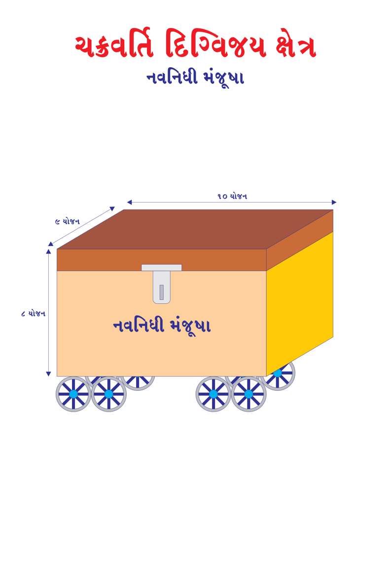
મનુષ્ય જીવ - 145 : ચક્રવર્તી-37 :
ચક્રવર્તી મહારાજાને પ્રાપ્ત થયેલ નવ નિધિઃ
ચક્રવર્તી મહારાજા ખંડ પ્રપાત ગુફાના દક્ષિણ દ્વારમાંથી બહાર નીકળી 12 યોજન લાંબી અને 9 યોજન શ્રેષ્ઠ નગર જેવી છાવણી તૈયાર કરાવે છે. તેમાં નિવાસ કરે છે. નવ નિધિઓની પ્રાપ્તિ માટે પૌષધવ્રત સાથે અઠ્ઠમ તપ કરે છે.
નવ નિધિઓ અપરિમિત રક્ત વગેરે રત્નોવાળા, શાશ્વત, અવિનાશી, અવ્યય, દેવ અધિષ્ઠિત, વિવિધ આચાર, વિવિધ વસ્તુઓની ઉત્પત્તિ અને વિધિઓ દર્શાવતું પુસ્તક સ્વરુપે હોવાથી લોકપુષ્ટિ દાયક છે.
પ્રસિદ્ધ નવ નિધિઓ :
1) નૈસર્પનિધિઃ
ગામ, ખાણ, નગર, પતન, દ્રોણમુખ, મંડબ, છાવણી, દુકાન, ઘર વગેરેના સ્થાપનની સમગ્ર વિધિ એટલે કે વાસ્તુશાસ્ત્ર સંબંધી સર્વે વિધિઓનું જ્ઞાન આ નિધિ દ્વારા પ્રાપ્ત થાય છે અને તે સંબંધિત કેટલીક સામગ્રીઓનો સંગ્રહ તેમાં હોય છે. તેના અધિષ્ઠાયક નૈસર્પ દેવ છે.
2) પાંડુકનિધિઃ
ગણતરી, માપ, તોલ વગેરેની ઉત્પત્તિ વિધિ, ગણી શકાય તેવા નાળિયેર વગેરે, માપી શકાય તેવા ધાન્ય વગેરે, તોલી શકાય તેવા ગોળ-સાકર વગેરે વસ્તુઓની ઉત્પાદન વિધિનું જ્ઞાન, આ નિધિ દ્વારા પ્રાપ્ત થાય છે તેમજ માપ, તોલ વગેરે યોગ્ય ધાન્ય, બીજ વગેરે પદાર્થોનો સંગ્રહ, સંરક્ષણ આ નિધિમાં હોય છે. તેના અધિષ્ઠાયક પાંડુક દેવ છે.
31
Page 291
જૈનમ્ જયતિ શાસનમ્
મનુષ્ય જીવ - 146 : ચક્રવર્તી-38 :
ચક્રવર્તી મહારાજાને પ્રાપ્ત થયેલ નવ નિધિઃ
3) પિંગલનિધિઃ
સ્ત્રીના, પુરુષના અને હાથી-ઘોડા વગેરે પશુઓના આભૂષણો બનાવવાની, તેનો ઉપયોગ કરવાની વિધિનું જ્ઞાન આ નિધિ દ્વારા પ્રાપ્ત થાય છે અને તે આભૂષણોનો સંગ્રહ આ નિધિમાં હોય છે. તેના અધિષ્ઠાયક પિંગળ દેવ છે.
4) સર્વરત્ન નિધિઃ
સાત એકેન્દ્રિય રત્ન અને સાત પંચેન્દ્રિય રત્ન, ચક્રવર્તી મહારાજના આ 14 શ્રેષ્ઠ રત્નો અને અન્ય અનેક રત્નોની ઉત્પત્તિ, નિષ્પત્તિ તથા તેના ઉપયોગ સંબંધી જાણકારી અને સંગ્રહ આ નિધિમાં હોય છે. આ નિધિ સર્વ રત્નના ભંડાર રૂપ છે. તેના અધિષ્ઠાયક સર્વરત્ન દેવ છે.
5) મહાપદ્મનિધિઃ
સર્વ પ્રકારના વસ્ત્રની ઉત્પત્તિ, તેની ડિઝાઇન, રંગવા, ધોવા વગેરે વિધિનું જ્ઞાન આ નિધિ દ્વારા થાય છે. તેમજ તે સંબંધી કેટલીય સાધન સામગ્રી પણ આ નિધિમાં હોય છે. તેના અધિષ્ઠાયક મહાપદ્મ દેવ છે.
6) કાલનિધિઃ
ત્રણેય કાળનું જ્ઞાન (ભૂતકાળ, વર્તમાનકાળ અને ભવિષ્યકાળ), જ્યોતિષ જ્ઞાન, પૂર્વ ભવોનું જ્ઞાન, તીર્થંકર, ચક્રવર્તી, વાસુદેવ આ ત્રણેના વંશની ઉત્પત્તિનું જ્ઞાન તથા 100 શિલ્પનું જ્ઞાન અને ખેતી વગેરે વિવિધ કાર્યો વિષયોનું જ્ઞાન આ નિધિ દ્વારા થાય છે. તેમજ આ નિધિમાં તે સંબંધિત વિવિધ સાધનો, ચિત્રો પણ હોય છે. તેના અધિષ્ઠાયક કાલ દેવ છે.
32
Page 292
જૈન વિજ્ઞાન
મનુષ્ય જીવ - 147 : ચક્રવર્તી-39 :
ચક્રવર્તી મહારાજાને પ્રાપ્ત થયેલ નવ નિધિઃ
7) મહાકાલનિધિઃ
લોખંડ, ચાંદી, સોનું, મણિ, મોતી, સ્ફટિક, પ્રવાલ વગેરેની ઉત્પત્તિ અને તેની ખાણો સંબંધી જ્ઞાન આ નિધિ દ્વારા પ્રાપ્ત થાય છે અને તે પદાર્થોનો સંગ્રહ પણ આ નિધિમાં હોય છે. તેના અધિષ્ઠાયક મહાકાલ દેવ છે.
8) માણવકનિધિઃ
યોદ્ધાઓ, તેના કવચો, શસ્ત્રો, ચક્રવ્યૂહ વગેરે યુદ્ધ નીતિ, સામ, દામ વગેરે ચાર પ્રકારના દંડનીતિ સંબંધી વિવિધ પ્રકારનું જ્ઞાન આ નિધિ દ્વારા પ્રાપ્ત થાય છે તથા તે સંબંધી કેટલાય સંગ્રહ આ નિધિમાં હોય છે. તેના અધિષ્ઠાયક માણવક દેવ છે.
9) શંખનિધિઃ
નટ વિધિ, નાટક અભિનય વિધિ, કાવ્ય વિધિ, ધર્મ વગેરે ચાર પ્રકારના પુરુષાર્થ અથવા સંસ્કૃત વગેરે ચાર પ્રકારની ભાષા યુક્ત કાવ્ય વિધિનું જ્ઞાન તથા વાજિંત્રોનું જ્ઞાન આ નિધિ દ્વારા પ્રાપ્ત થાય છે અને તે સંબંધિત વિવિધ સામગ્રી, ચિત્રો વગેરે પણ આ નિધિમાં હોય છે. તેના અધિષ્ઠાયક શંખ દેવ છે.
આ સર્વે નિધિઓના આકાર મંજુષા (પટારા, મોટી પેટી) જેવી હોય છે. તે દરેક નિધિને આઠ-આઠ પૈડાં હોય છે. તેની લંબાઇ 12 યોજન, પહોળાઈ 9 યોજન અને ઊંચાઇ 8 યોજન હોય છે.
નવ નિધિઓના મંજુષાના કમાડ વૈડુર્યમણિ જડેલા સુવર્ણમય, અનેક રત્નોથી પરિપૂર્ણ, ચંદ્ર, સૂર્ય તથા ચક્રના ચિન્હથી યુક્ત સમ રચનાવાળા હોય છે. 1 પલ્યોપમની આયુષ્યવાળા અધિપતિ દેવ હોય છે. તે દેવો તેમાં જ વસે છે. તેના અધિપતિ બનવાની ઇચ્છાથી કોઇ તેને ખરીદી શકતું નથી. નવ નિધિઓ ઘણાં ધન, રત્નોથી સમૃદ્ધિવંત હોય છે અને ચક્રવર્તીઓને વશમાં થઇ જાય છે.
33
Page 293
જૈનમ્ જયતિ શાસનમ્
મનુષ્ય જીવ - 148 : ચક્રવર્તી-40 :
ચક્રવર્તી મહારાજનો દિગ્વિજય ટૂંક સારઃ
પ્રથમ ખંડઃ
(1) માગધ તીર્થઃ
અધિપતિઃ માગધતીર્થકુમાર દેવ
વશ કરવાઃ અઠ્ઠમ તપ
વશ કરવાની વિધિઃ 12 યોજન દૂર તીર ફેંકીને
વિજય મેળવતાં મળતી ભેટઃ હાર, મુગટ વગેરે આભૂષણો તથા વસ્ત્ર.
(2) વરદામ તીર્થઃ
અધિપતિઃ વરદામતીર્થકુમાર દેવ
વશ કરવાઃ અઠ્ઠમ તપ
વશ કરવાની વિધિઃ 12 યોજન દૂર તીર ફેંકીને
વિજય મેળવતાં મળતી ભેટઃ વિષ (ઝેર) ઉપહારક ચૂડામણી શિરોભૂષણ (મસ્તકનું આભૂષણ)
(3) પ્રભાસ તીર્થઃ
અધિપતિઃ પ્રભાસતીર્થકુમાર દેવ
વશ કરવાઃ અઠ્ઠમ તપ
વશ કરવાની વિધિઃ 12 યોજન દૂર તીર ફેંકીને
34
Page 294
વિજય મેળવતાં મળતી ભેટઃ મોતીના ભંડાર, સુવર્ણના ભંડાર
જૈન વિજ્ઞાન
(4) સિંધુ ભવનઃ
અધિપતિઃ સિંધુદેવી
વશ કરવાઃ અઠ્ઠમ તપ
વશ કરવાની વિધિઃ સંકલ્પ માત્રથી
વિજય મેળવતાં મળતી ભેટઃ બે ભદ્રાસન તથા વિવિધ રત્નો ભરેલા 1008 કળશો
(5) વૈતાઢ્યગિરિકુમાર ભવનઃ
સ્થાનઃ વૈતાઢ્ય પર્વતના પાંચમા કૂટ (શિખર) ઉપર
અધિપતિઃ વૈતાઢ્યગિરિકુમાર દેવ
વશ કરવાઃ અઠ્ઠમ તપ
વશ કરવાની વિધિઃ સંકલ્પ માત્રથી
વિજય મેળવતાં મળતી ભેટઃ અભિષેક યોગ્ય રાજ અલંકારો
35
Page 295
જૈનમ્ જયતિ શાસનમ્
મનુષ્ય જીવ - 149 : ચક્રવર્તી-41 :
ચક્રવર્તી મહારાજના દિગ્વિજય ટૂંક સારઃ
(6) કૃતમાલકદેવ ભવનઃ
સ્થાનઃ વૈતાઢ્ય પર્વતના સાતમાં કૂટ (શિખર) ઉપર
અધિપતિઃ કૃતમાલક દેવ
વશ કરવાઃ અઠ્ઠમ તપ
વશ કરવાની વિધિઃ સંકલ્પ માત્રથી
વિજય મેળવતાં મળતી ભેટઃ સ્ત્રીરત્ન યોગ્ય તિલક વગેરે 14 પ્રકારના અલંકારો
ખંડ - 2:
(7) દક્ષિણાર્ધ સિંધુ નિષ્કૂટ :
અધિપતિઃ ભિન્ન ભિન્ન મ્લેચ્છ રાજાઓ
વશ કરવાની વિધિઃ સેનાપતિ દ્વારા યુદ્ધ કરીને
વિજય મેળવતાં મળતી ભેટઃ મૂલ્યવાન વસ્તુઓ
(8) તિમિસ્ર ગુફા દ્વાર ઉદઘાટન :
સ્થાનઃ તિમિસ્ર ગુફાનું દક્ષિણ દ્વાર
અધિપતિઃ કૃતમાલ દેવ
વશ કરવાઃ સેનાપતિ દ્વારા અઠ્ઠમ તપ
વશ કરવાની વિધિઃ ચક્રવર્તી મહારાજના દંડ રત્નથી ત્રણ વાર પ્રહાર કરીને દ્વાર ખોલે છે.
36
Page 296
જૈન વિજ્ઞાન
ખંડ નં. 4
(9) ઉત્તરાર્ધ ભરતનો મધ્ય ખંડઃ
અધિપતિઃ કિરાતો
વશ કરવાની વિધિઃ યુદ્ધ કરીને
વિજય મેળવતાં મળતી ભેટઃ બહુમૂલ્ય રત્નો
ખંડ નં. 3:
(10) ઉત્તરાર્ધ સિંધુ નિષ્કૂટઃ
અધિપતિઃ ભિન્ન ભિન્ન મ્લેચ્છ રાજાઓ
વશ કરવાની વિધિઃ સેનાપતિ દ્વારા યુદ્ધ કરીને
વિજય મેળવતાં મળતી ભેટઃ મૂલ્યવાન વસ્તુઓ
37
Page 297
જૈનમ્ જયતિ શાસનમ્
મનુષ્ય જીવ - 150 : ચક્રવર્તી-42 :
ચક્રવર્તી મહારાજના દિગ્વિજય ટૂંક સારઃ
(11) ચુલ્લહિમવંતકુમાર ભવનઃ
અધિપતિઃ ચુલ્લહિમવંતકુમાર દેવ
વશ કરવાઃ અઠ્ઠમ તપ
વશ કરવાની વિધિઃ 72 યોજન દૂર તીર ફેંકીને
વિજય મેળવતાં મળતી ભેટઃ શ્રેષ્ઠ ઔષધિ, કલ્પવૃક્ષની માળા, ગોશીર્ષ ચંદન વગેરે
(12) વિદ્યાધર શ્રેણીઃ
અધિપતિઃ રાજાઓ
વશ કરવાઃ અઠ્ઠમ તપ
વશ કરવાની વિધિઃ સંકલ્પ માત્રથી
વિજય મેળવતાં મળતી ભેટઃ સ્ત્રીરત્ન, આભૂષણો
(13) ગંગાદેવી ભવનઃ
અધિપતિઃ ગંગાદેવી
વશ કરવાઃ અઠ્ઠમ તપ
વશ કરવાની વિધિઃ સંકલ્પ માત્રથી
વિજય મેળવતાં મળતી ભેટઃ બે સિંહાસન તથા રત્નો ભરેલા 1008 કળશો
38
Page 298
જૈન વિજ્ઞાન
(14) નૃતમાલ ભવનઃ
અધિપતિઃ નૃતમાલ દેવ
વશ કરવાઃ અઠ્ઠમ તપ
વશ કરવાની વિધિઃ સંકલ્પ માત્રથી
વિજય મેળવતાં મળતી ભેટઃ આભૂષણોથી પૂર્ણ ભંડાર
ખંડ નં. 5:
(15) ઉત્તરાર્ધ ગંગા નિષ્કૂટઃ
અધિપતિઃ મ્લેચ્છ રાજાઓ
વશ કરવાની વિધિઃ સેનાપતિ દ્વારા યુદ્ધ કરીને
વિજય મેળવતાં મળતી ભેટઃ મૂલ્યવાન વસ્તુઓ
(16) ખંડપ્રપાત ગુફા દ્વાર ઉદઘાટનઃ
અધિપતિઃ નૃતમાલ દેવ
વશ કરવાઃ સેનાપતિ દ્વારા અઠ્ઠમ તપ
વશ કરવાની વિધિઃ દંડરત્નથી ત્રણ વાર પ્રહાર કરીને
39
Page 299
જૈનમ્ જયતિ શાસનમ્
મનુષ્ય જીવ - 151 : ચક્રવર્તી-43 :
ચક્રવર્તી મહારાજના દિગ્વિજય ટૂંક સારઃ
(17) નવનિધિ :
સ્થાનઃ ગંગા મહાનદી સમુદ્રને મળે ત્યાં ગંગાના દક્ષિણ કિનારે
અધિપતિઃ પ્રત્યેક નિધિના નામ પ્રમાણેના દેવો
વશ કરવાઃ અઠ્ઠમ તપ
વશ કરવાની વિધિઃ સંકલ્પ માત્રથી
વિજય મેળવતાં મળતી ભેટઃ નવનિધિઓ
ખંડ નં. 6:
(18) દક્ષિણાર્ધ ગંગા નિષ્કૂટ :
અધિપતિઃ મ્લેચ્છ રાજાઓ
વશ કરવાની વિધિઃ સેનાપતિ દ્વારા યુદ્ધ કરીને
વિજય મેળવતાં મળતી ભેટઃ મુલ્યવાન વસ્તુઓ
(19) રાજધાની પ્રવેશઃ
અધિપતિઃ નગર અધિષ્ઠાયક દેવો
વશ કરવાઃ નગરની સુખ શાંતિ માટે અઠ્ઠમ તપ
એકંદરે ચક્રવર્તી મહારાજા દિગ્વિજય યાત્રા દરમ્યાન 3 શાશ્વત તીર્થ, 2 મહાનદીની દેવી, 2 ગુફાના દેવ, 2 પર્વતના દેવ, વિદ્યાધર રાજા, નવનિધિઓ,
40
Page 300
જૈન વિજ્ઞાન
રાજધાની પ્રવેશ અને અભિષેક એમ કુલ 13 અઠ્ઠમ તપ પૌષધવ્રત સાથે કરે છે. ચક્રવર્તી મહારાજને વૈક્રિયલબ્ધિ હોવાથી ચુલ્લહિમવંત પર્વત ઉપર 72 યોજન સુધી તીર ફેંકવા ચક્રવર્તી મહારાજા પર્વતની ઊંચાઇ 100 યોજન જેટલું ઊંચું વૈક્રિય શરીર બનાવી તીર ફેંકે છે. તિમિસ્ર ગુફા અને ખંડપ્રપાત ગુફાને પ્રકાશિત રાખવા 49-49 મંડળ આલેખે છે અને તે તેમની હયાતી સુધી કાયમપણે રહે છે.
41
Page 301
ે
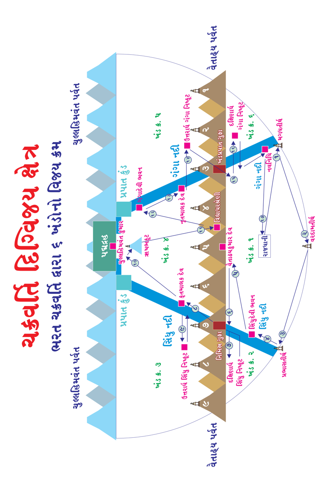
મનુષ્ય જીવ - 152 : ચક્રવર્તી-44 :
દિગ્વિજય - રાજધાની, નગરપ્રવેશઃ
છ ખંડના અધિપતિ, ચક્રવર્તી મહારાજા દિગ્વિજયમાં એવો કોઇપણ ક્ષેત્ર બાકી નથી, જેમાં વિજય કર્યો ન હોય! તમણે 32,000 રાજાઓને પરાજિત કરી સર્વ રત્નોમાં પ્રધાન ચક્રરત્ન વાળા, નવનિધિઓના અધિપતિ, સમૃદ્ધ કોષાગાર સંપન્ન લાંબા સમયે એટલે કે ઘણાં વર્ષો યુદ્ધ કર્યા બાદ વિજય મેળવે છે. દા. ત. ભરત ચક્રવર્તીએ 60,000 વર્ષે સંપૂર્ણ ભરતક્ષેત્રમાં વિજય મેળવ્યો હતો.
ચક્રવર્તી મહારાજા ગજરત્ન ઉપર બિરાજમાન થાય છે. તેમની આગળ 8-8ની સંખ્યામાં અષ્ટમંગલ પ્રતિકો પ્રસ્થાપિત થાય છે એટલે કે તેને લઇને રાજપુરુષો ચાલે છે. અષ્ટમંગલ પાછળ પાણીથી ભરેલ કળશ, ઝારીઓ, દિવ્ય છત્ર, પતાકા વગેરે લઇને રાજપુરુષો ચાલે છે. તેની પાછળ વૈડૂર્યરત્ન (નીલમ)થી નિર્મિત દેદીપ્યમાન દંડયુક્ત છત્ર ચાલે છે.
ચક્રરત્ન, છત્રરત્ન, ચર્મરત્ન, દંડરત્ન, અસિરત્ન, મણિરત્ન, કાકણિરત્ન આ સાત એકેન્દ્રિય રત્ન યથાક્રમે ચાલે છે. તેની પાછળ નવનિધિઓ ભૂમિગત રહીને ચાલે છે. તેની પાછળ 16,000 દેવો (ચક્રવર્તી મહારાજાના આત્મરક્ષક દેવ 2,000 અ 14 રત્નોના પ્રત્યેક રત્ન દીઠ 1,000 અધિપતિ દેવો) તેની પાછળ 32,000 રાજાઓ ચાલે છે. સેનાપતિરત્ન, ગાથાપતિરત્ન, વર્દ્ધકિરત્ન અને પુરોહિતરત્ન ચાલે છે. તેની પાછળ સ્ત્રીરત્ન (પરમ સુંદરી સુભદ્રા) ચાલે છે.
43
Page 303
જૈનમ્ જયતિ શાસનમ્
મનુષ્ય જીવ - 153 : ચક્રવર્તી-45 :
દિગ્વિજય - રાજધાની, નગરપ્રવેશઃ
સ્ત્રીરત્ન પાછળ 32,000 ઋતુ કલ્યાણિકા સ્ત્રીઓ (જેનો સ્પર્શ ઋતુથી પ્રતિકૂળ એટલે કે ઠંડીમાં ગરમ અને ગરમીમાં શીતળતા પ્રદાન કરનાર સ્ત્રીઓ, રાજકુળમાં જન્મ લેનારી કન્યાઓ), તેની પાછળ 32,000 જનપદ કલ્યાણિકા સ્ત્રીઓ (દેશના અગ્રગણ્ય પુરુષોની કન્યાઓ) યથાક્રમે ચાલે છે.
તેની પાછળ 32,000 નાટક મંડળીઓ, 360 રસોઇયાઓ, 18 શ્રેણી- પ્રશ્રેણીના લોકો ચાલે છે. તેની પાછળ 84 લાખ ઘોડાઓ, 84 લાખ હાથીઓ, 96 કરોડ પદયાત્રીઓ, તેની પાછળ અનેક રાજાઓ, રાજ સન્માનિત વિશિષ્ટ નાગરિકો યથાક્રમે ચાલે છે.
તેની પાછળ તલવારધારી, લાઠીધારી, ભાલાધારી, ધનુષ્યધારી, ચામરધારી, ઘોડા-બળદને વશમાં કરનાર પાશધારીઓ, ફલકધારી, પરશુધારી, પુસ્તકધારી, વીણાધારી, કુપ્યગ્રાહી, મશાલધારી, દીપકધારીઓ ચાલે છે.
દંડધારી, મસ્તક મુંડિત, શિખાધારી, જટાધારી, મોરપીંછધારી, હસાવનારા, ક્રીડા, ખેલ, તમાશા કરનાર, ખુશામતિયા, કામુક, કુચેષ્ટા કરનાર, ગાતા લોકો, નાચતા, હસતા, પાસા રમનારા, પ્રમોદક્રીડા કરનારા, ગીત શીખવાડનારા, સંભળાવનારા, કલ્યાણકારી વાક્ય બોલનારા, ભિન્ન-ભિન્ન અવાજ કરનારા લોકો યથાક્રમે ચાલે છે. આટલા વિશાળ સમુદાયમાં ચક્રવર્તી મહારાજા નગરપ્રવેશ કરે છે.
44
Page 304
જૈન વિજ્ઞાન
મનુષ્ય જીવ - 154 : ચક્રવર્તી-46 :
ચક્રવર્તી મહારાજનું રાજ્યાભિષેક :
રાજ્યાભિષેક સ્થાન : રાજધાનીના ઇશાનખૂણે
રચનાઃ રાજ્યાભિષેક સ્થાનની રચના ચક્રવર્તી મહારાજાના સેવક દેવતાઓ દ્વારા નિર્માણ થાય છે. અભિષેકપીઠની પૂર્વ, ઉત્તર, દક્ષિણ આ ત્રણ દિશામાં પીઠ ઉપર ચડવા ત્રણ-ત્રણ પગથિયાં અને તે અભિષેક પીઠની વચ્ચે ચક્રવર્તી મહારાજનું સિંહાસન બનાવે છે.
ચક્રવર્તી મહારાજાની 64,000 પત્નીઓ (32,000 રાજાઓ પોતાની કન્યાને ચક્રવર્તી મહારાજા સાથે પરણાવે છે તે જ પ્રમાણે ચક્રવર્તી મહારાજા 32,000 દેશ જીતતાં તે દેશના અગ્રણીઓ તેમની કન્યાને ચક્રવર્તી મહારાજા સાથે પરણાવે છે.) 32-32 પાત્રો ધરાવતાં 32,000 નાટક મંડળીઓ પણ 32,000 રાણીઓ સાથે રહે છે. તેઓ અભિષેક પીઠ ઉપર ચડી પૂર્વાભિમુખ બેસે છે.
32,000 દેશના રાજાઓ અભિષેક પીઠ ઉપર ઉત્તર દિશામાં બેસે છે. સેનાપતિ આદિ રત્નો, 18 શ્રેણી-પ્રશ્રેણીજનો દક્ષિણ દિશામાં બેસે છે.
અભિષેક દ્રવ્યોઃ
આભિયોગિક (સેવક) દેવતાઓ મેરુપર્વતે આવેલ પંડગવન, નંદનવન વગેરે વનોની ઔષધિઓ, ક્ષીરસમુદ્ર તથા સર્વ તીર્થોના પાણી, નદીઓ, સરોવર વગેરેના પાણી લઇને આવે છે.
45
Page 305
જૈનમ્ જયતિ શાસનમ્
મનુષ્ય જીવ - 155 : ચક્રવર્તી-47 :
ચક્રવર્તી મહારાજનું રાજ્યાભિષેક :
1008 સુવર્ણ કળશોથી 32,000 રાજાઓ, સેનાપતિ વગેરે, 16,000 દેવો અનુક્રમે ચક્રવર્તીપણાનો અભિષેક કરે છે. ચક્રવર્તીપણાના અભિષેક પછી ચક્રવર્તી મહારાજ 12 વર્ષ સુધી પોતાના રાજ્યોને કરમુક્ત કરે છે. નગરમાં 12 વર્ષ સુધી વિજય ઉત્સવ ઉજવાય છે. 32,000 દેશના રાજાઓ પણ 12 વર્ષ સુધી ચક્રવર્તી મહારાજની મહેમાનગતિ સ્વીકારી ચક્રવર્તી મહારાજની રાજધાનીમાં રોકાય છે.
અભિષેક નક્ષત્રઃ
ચક્રવર્તી મહારાજનો ચક્રવર્તીપણાનો અભિષેક યોગ્ય 13 નક્ષત્રો : શ્રવણ, જ્યેષ્ઠા, હસ્ત, અશ્વિની, અભિજિત, પુષ્ય, રોહિણી, ઉત્તરાષાઢા, ઉત્તરા ફાલ્ગુની, ઉત્તર ભાદ્રપદા, મૃગશિર, અનુરાધા અને રેવતી નક્ષત્રમાં કરેલ રાજ્યાભિષેક ઘણાં જ લાંબા સમય સુધી દેશનું પાલન કરે છે.
ચક્રવર્તી મહારાજનું રાજ્યાભિષેક વિજય મુહૂર્તમાં કરવામાં આવે છે. વિજય મુહૂર્ત એટલે દિવસના કુલ 4 પ્રહર (1 પ્રહર એટલે અંદાજે 3 કલાક, સૂર્યોદયથી સૂર્યાસ્ત સુધીના સમયને 4 ભાગ કરી તેના પ્રથમ બે ભાગમાં 24 મિનિટ ઓછી કરીએ તો નિર્ધારિત સમય આવે) હોય છે. તેમાં પ્રથમ બે પ્રહરમાં 24 મિનિટ ઓછી હોય ત્યારે સર્વ કાર્યને સિદ્ધ કરનાર એવું વિજય મુહૂર્ત હોય છે.
46
Page 306
જૈન વિજ્ઞાન
મનુષ્ય જીવ - 156 : ચક્રવર્તી-48 :
ચક્રવર્તી મહારાજની ઋદ્ધિ સંપદાઃ
1) 14 મહારત્નો
2) 9 મહાનિધિઓ
3) 16 હજાર સેવક દેવતાઓ
4) 32 હજાર દેશના રાજાઓ
5) 32 હજાર ઋતુકલ્યાણિકા સ્ત્રીઓ
6) 32 હજાર જનપદ કલ્યાણિકા સ્ત્રીઓ
7) 32 હજાર નાટક મંડળીઓ (32-32 પાત્રોથી યુક્ત)
8) 360 રસોઇયાઓ
9) 18 શ્રેણિ-પ્રશ્રેણિ જનો
10) 84 લાખ ઘોડાઓ
11) 84 લાખ હાથીઓ
12) 84 લાખ રથ
13) 96 કરોડ પદાતિ મનુષ્યો
14) 72 હજાર મહાનગરો
15) 32 હજાર જનપદો (વ્યાપાર કરનારી વસ્તીઓ)
16) 96 કરોડ ગામ (ગામડાઓ)
17) 99 હજાર દ્રોણમુખ (જ્યાં જળમાર્ગ અને સ્થળમાર્ગ બન્નેથી જઇ શકાય તેવા સ્થાનો)
47
Page 307
જૈનમ્ જયતિ શાસનમ્
18) 48 હજાર પટ્ટણો (વ્યાપાર પ્રધાન નગરી)
19) 24 હજાર કર્બટ (કસ્બાઓ)
20) 24 હજાર મંડબો (જેની આસપાસ દૂર સુધી કોઇ વસ્તી ન હોય તેવા સ્થાનો)
21) 20 હજાર ખાણો
22) 16 હજાર ખેટો (ધૂળના પ્રાકારવાળી વસ્તીઓ)
23) 14 હજાર સંબાહો (છાવણીઓ)
24) 56 અંતરોદકો (અંતવર્તી જળના સન્નિવેશ વિશેષો)
25) 49 કુરાજનો (ભીલ આદિ જંગલી જાતિના રાજ્યો)
આ સર્વેના અને રાજધાનીના, ઉત્તરમાં ચુલ્લહિમવંત પર્વતથી અને ત્રણ દિશામાં સમુદ્રથી મર્યાદિત સંપૂર્ણ ક્ષેત્રના, બીજા અનેક ઐશ્વર્યશાળી, પ્રભાવશાળી પુરુષો, સાર્થવાહ આદિનું આધિપત્ય (અગ્રેસરપણું), પ્રભુત્વ, સ્વામિત્વ, અધિનાયકપણું, આજ્ઞેશ્વરત્વ, સેનાપતિપણું સર્વ અધિકૃતરૂપમાં પાલન કરતાં, આદેશનું પાલન કરાવતાં, સર્વ શત્રુઓ પર વિજય પામેલા, પોતાને કાંટા રૂપ શત્રુઓનો નાશ કરતાં, તેઓને વશ કરતાં, દેશનિકાલ કરતાં ચક્રવર્તી રાજા છ ખંડનું પાલન કરે છે.
48
Page 308
જૈન વિજ્ઞાન
મનુષ્ય જીવ - 157 : ચક્રવર્તી-49 :
ચક્રવર્તી મહારાજની ગતિ અને વિશેષતાઃ
ચક્રવર્તી મહાસુખના ભોક્તા હોય છે. છ ખંડના સર્વે રાજાઓ તેમના આધિન હોય છે. પદવીધારી મનુષ્યો અને 16,000 દેવો સદાય તેમની સેવામાં તત્પર હોય છે.
ચક્રવર્તી મહારાજ મૃત્યુપર્યંત કામભોગોમાં રચ્યા-પચ્યા રહે તો તે અવશ્ય નરક ગતિમાં જાય છે. અહીં કામ શબ્દથી શબ્દ અને રૂપ તેમજ ભોગ શબ્દથી ગંધ આદિ શેષ ત્રણ વિષયનું ગ્રહણ થાય છે. જે ચક્રવર્તી મહારાજ સંસારથી વિરક્ત (રસ ઉડી જાય) થાય અને દીક્ષા સ્વીકાર કરે તો તે મોક્ષગતિ અથવા દેવગતિ અવશ્ય પામે છે. તેઓ એટલા મહાન પુણ્યના સ્વામી હોય છે કે, તેમના સમયમાં તીર્થંકર પરમાત્મા અચૂક વિચરતાં હોય છે એટલે કે તેમને તીર્થંકર પરમાત્માનું સાનિધ્ય હંમેશાં પ્રાપ્ત થાય છે.
ઉત્તમ પુરુષના ત્રણ પ્રકાર હોય છે.
1) ધર્મપુરુષ 2) ભોગપુરુષ 3) કર્મપુરુષ.
અરિહંત પરમાત્મા ધર્મપુરુષ હોય છે. ચક્રવર્તી મહારાજા ભોગપુરુષ હોય છે અને વાસુદેવ (અર્ધ ચક્રવર્તી) કર્મપુરુષ હોય છે.
સ્ત્રી યોનિના પ્રકારઃ
1) કૂર્મોન્નતા યોનિ, 2) શંખાવર્ત યોનિ અને 3) વંશીપત્રિકા યોનિ.
1) કૂર્મોન્નતા યોનિઃ
કૂર્મ એટલે કાચબો અને યોનિ એટલે ઉત્પત્તિ સ્થાન. જે યોનિ કાચબા જેવી ઉન્નત હોય. આવા પ્રકારની યોનિ ઉત્તમ પુરુષોની માતાને હોય છે. કૂર્મોન્નતા યોનિમાં ત્રણ પ્રકારના ઉત્તમ પુરુષો ગર્ભમાં આવે છે. 1) શ્રી અરિહંત 2) શ્રી ચક્રવર્તી અને 3) શ્રી વાસુદેવ - બળદેવ.
49
Page 309
જૈનમ્ જયતિ શાસનમ્
મનુષ્ય જીવ - 158 : ચક્રવર્તી-49 :
ચક્રવર્તી મહારાજની વિશેષતાઃ
2) શંખાવર્ત યોનિઃ
શંખાવર્ત યોનિ એટલે શંખની જેમ આવર્તવાળી યોનિ. આવી યોનિ ચક્રવર્તી મહારાજાની સ્ત્રીરત્નને હોય છે. શંખાવર્ત યોનિમાં ઘણાં જીવ અને પુદગલ ઉત્પન્ન થાય છે અને નાશ થાય છે, સંગ્રહિત થાય છે, જીવ ઉત્પન્ન થાય છે પરંતું, વૃદ્ધિ થતાં નથી. એટલે કે ગર્ભાવસ્થામાં જ વૃદ્ધિ થતી જ નથી, જીવ ગર્ભમાં આવતાં જ મરી જાય છે.
3) વંશીપત્રિકાયોનિઃ
વંશી એટલે વાંસ, પત્રિકા એટલે પાંદડાં. વાંસના પાન જેવા આકારવાળી યોનિ. સામાન્ય મનુષ્યજનોની માતાને હોય છે. આવા પ્રકારની યોનિમાં સામાન્ય લોકો ગર્ભમાં આવે છે.
તીર્થ ક્ષેત્રઃ
ચક્રવર્તી મહારાજા તીર્થક્ષેત્ર વાળા પ્રથમ ખંડમાં જ જન્મ થાય છે. 1) માગધ 2) વરદામ અને 3) પ્રભાસ. ત્રણેય તીર્થના અધિષ્ઠાયક દેવો ચક્રવર્તી મહારાજના સંકલ્પ માત્રથી વશમાં થઇ જાય છે.
નિરુપક્રમ આયુષ્ય :
63 શલાકા પુરુષોમાંથી 54 શલાકા પુરુષો (9-પ્રતિવાસુદેવને છોડીને) નિરુપક્રમ આયુષ્ય હોય છે. નિરુપક્રમ આયુષ્ય એટલે કે તેઓ જેટલું આયુષ્ય બાંધીને આવ્યા હોય છે તેટલું આયુષ્ય અવશ્યપણે ભોગવે છે. એટલે કે તે આરાનું ઉત્કૃષ્ટ આયુષ્ય નહીં પરંતું સંપૂર્ણ આયુષ્ય ભોગવે છે. 24-અરિહંત પરમાત્મા, 12-ચક્રવર્તી મહારાજા, 9-વાસુદેવ અને 9-બળદેવ કુલ 54 મહાપુરુષોને ક્યારેય વૃદ્ધાવસ્થા પ્રાપ્ત કરતાં નથી.
50
Page 310
જૈન વિજ્ઞાન
મનુષ્ય જીવ - 159 : ચક્રવર્તી-50 :
ચક્રવર્તી મહારાજા વિશેષ :
સાતમી નરકઃ
લોકમાં ત્રણ પુરુષ 1) શીલ રહિત (પરસ્ત્રી સેવન કરનાર), 2) વ્રત રહિત (પચ્ચક્ખાણ ન લીધેલ), 3) નિર્ગુણી, 4) મર્યાદાહીન, 5) પ્રાયશ્ચિત અને 6) પૌષધ ઉપવાસ રહિત હોય તો મરણના સમયે સાતમી નરક અપ્રતિષ્ઠાન નરક માં નારકીરુપે ઉત્પન્ન થાય છે. 1) રાજા (ચક્રવર્તી અને વાસુદેવ), 2) માંડલિક રાજા અને 3) મહા આરંભી ગૃહસ્થ.
ચક્રવર્તી મહારાજનો આહારઃ
ચક્રવર્તી મહારાજનો આહાર (ખોરાક, ભોજન) સામાન્ય પુરુષ ન પચાવી શકે તેવો હોય છે. જો ભૂલેચૂકે ચક્રવર્તી મહારાજાનો આહાર કોઇ મનુષ્ય આરોગે (જમે) તો કામેચ્છા (કામવાસના) પ્રબળ થઇ જાય છે. મનુષ્ય કામવાસનામાં અચૂક વિવેક ચૂકે છે. એટલી હદે કે તેને પરિવારના સદસ્યોનું પણ ભાન અને વિવેક રહેતો નથી. ચક્રવર્તી મહારાજાનો આહાર ઉચ્ચ ગુણવત્તાનું હોય છે.
ચક્રવર્તી મહારાજની ઋદ્ધિનું કારણ :
1) ચક્રવર્તી મહારાજ, 2) બળદેવ, 3) વાસુદેવ (અર્ધ ચક્રી) આ ત્રણેય ઉત્તમપુરુષોની ઋદ્ધિ મહાન પુણ્યના ઉદયથી હોય છે. 4) અરિહંત પરમાત્માની ઋદ્ધિ પૂર્વે ઉપાર્જન કરેલ પુણ્યોદય અને વર્તમાન ભવમાં ચાર ઘાતિકર્મના ક્ષયથી હોય છે. 5) શ્રમણ ભગવંતોની ઋદ્ધિ વર્તમાન ભવમાં કરેલ તપસ્યા વિશેષથી પ્રાપ્ત થાય છે.
51
Page 311
જૈનમ્ જયતિ શાસનમ્
મનુષ્ય જીવ - 160 : ચક્રવર્તી-51 :
ચક્રવર્તી મહારાજા વિશેષ :
પુલાક લબ્ધિ :
9 પૂર્વથી અધિક શ્રુતજ્ઞાની (શાસ્ત્ર જ્ઞાની) કોઇપણ શ્રમણને પુલાક લબ્ધિ સ્વયં પ્રગટ થાય છે. આ લબ્ધિધારી શ્રમણ (સાધુ) ભગવંત, અવિવેકપૂર્ણ આદેશ કે વ્યવહાર માટે ચક્રવર્તી મહારાજને પણ દંડ આપી શકે છે, સજા આપી શકે છે અને તેને સરળતાથી ભયભીત કરી શકે છે.
સ્વપ્ન દર્શન :
સ્વપ્ન શાસ્ત્ર અનુસાર સ્વપ્નના કુલ 72 પ્રકાર છે. તેમાં 42 સ્વપ્નો સામાન્ય છે. 30 સ્વપ્નો મહાસ્વપ્નો હોય છે. તીર્થંકર પરમાત્મા અને ચક્રવર્તી મહારાજાની માતા 30 મહાસ્વપ્નોમાંથી ગર્ભના આગમનના શુભ સંકેતરૂપે 14 મહાસ્વપ્નો જુએ છે. વાસુદેવની માતા 7 મહાસ્વપ્નો જુએ છે. બળદેવની માતા 4 મહાસ્વપ્નો જુએ છે. માંડલિક રાજા અને મહા પુણ્યવાન આત્માની માતા 1 મહાસ્વપ્ન જુએ છે. ચક્રવર્તી મહારાજાની માતા 14 મહાસ્વપ્નોમાંથી ચક્રવર્તી જીવ દેવલોકથી ચ્યવન થઇ માતાના ગર્ભમાં આવે તો 12માં સ્વપ્ને દેવવિમાન જુએ છે. જો, નરકભૂમિથી આવે તો તે ભવન જુએ છે. માતા, ચક્રવર્તીની માતા દરેક મહાસ્વપ્ના ઝાંખા (અસ્પષ્ટ) જુએ છે.
કલ્યાણ ભોજન :
ચક્રવર્તી મહારાજનું પોતાનું એક સમયના ભોજનનો ખર્ચ 1,00,000 સુવર્ણ મુદ્રાના મૂલ્યે તૈયાર થાય છે. આ વિશેષ ભોજનને કલ્યાણ ભોજન કહે છે. આ ભોજન એકમાત્ર ચક્રવર્તી મહારાજ જ કરી શકે અન્ય કોઇપણ નહીં.
52
Page 312
જૈન વિજ્ઞાન
મનુષ્ય જીવ - 161 : ચક્રવર્તી-52 :
ચક્રવર્તી મહારાજા વિશેષ :
કલ્યાણ ભોજનઃ
ચક્રવર્તી મહારાજ માટે દૂધપાક કલ્યાણભોજન તરીકે પ્રસિદ્ધ છે. પુંડ્રજાતિની ઉચ્ચ શેરડીનો આહાર 1,00,000 ગાયોને ખવડાવવામાં આવે છે. તે ગાયનું દૂધ 50,000 ગાયોને પીવડાવવામાં આવે છે. 50,000 ગાયોનું દૂધ 25,000 ગાયોને પીવડાવવામાં આવે છે આ રીતે ક્રમશઃ ઘટાડતાં-ઘટાડતાં છેલ્લે 1 ગાયનું દૂધ રહે છે. તે દૂધમાં કલમ જાતિના ઉત્તમ ચોખા, સાકર, મેવા, મસાલા વગેરે નાંખીને પૂર્ણપણે ઉકાળીને બનાવેલો દૂધપાક અત્યંત સ્વાદિષ્ટ બને છે. તેને કલ્યાણભોજન કહે છે. તે ભોજન એકમાત્ર ચક્રવર્તી મહારાજ જ પચાવી શકે છે.
આસાલિકઃ
આસાલિક ઉરપરિસર્પ (ઉર એટલે છાતીનો ભાગ, પરિ એટલે ના સહાયતાથી અને સર્પ એટલે સાપ અથવા સાપ જેવી પ્રજાતિ) સંમૂર્ચ્છિમ તિર્યંચ પંચેન્દ્રિય જીવ છે. આગળ જતાં વિસ્તારમાં સમજીશું. આસાલિક જીવની ઉત્પત્તિ 15 કર્મભૂમિ અને ચક્રવર્તી મહારાજા, વાસુદેવ, બળદેવ, માંડલિક રાજાના ક્ષેત્રમાં જ થાય છે. આસાલિક જીવ તેમના સૈનિકોની છાવણીમાં, ગામથી લઇને તેમની રાજધાનીની નીચે ભૂમિમાં તેની ઉત્પત્તિ થાય છે. ચક્રવર્તી મહારાજની સંપૂર્ણ સેનાનો નાશ કરી શકે છે. તે ઉત્કૃષ્ટ પણે 12 યોજન (48 ગાઉ) માટી ગળી જાય છે, તેટલા ભાગમાં ખાડો પડી જાય છે અને તેમાં આખી નગરીનો નાશ થાય છે. આસાલિકનું દેહ પ્રમાણ ઓછામાં ઓછું અંગુલના અસંખ્યાત ભાગ અને વધુમાં વધુ 12 યોજન હોય છે. તેનું આયુષ્ય અંતમુહૂર્ત (48 મિનિટમાં 1 સમય ઓછું) હોય છે.
53
Page 313
જૈનમ્ જયતિ શાસનમ્
મનુષ્ય જીવ - 162 : ચક્રવર્તી-53 :
ચક્રવર્તી મહારાજા વિશેષ :
ચૂડામણિઃ
ચૂડામણિ નામનું મસ્તકનું શ્રેષ્ઠ આભરણ છે. તે સર્વ રત્નોમાં સારભૂત છે. દેવેન્દ્રો અને ચક્રવર્તી મહારાજ તેને મસ્તક ઉપર ધારણ કરે છે. તે સર્વ અમંગલ, અશાંતિ, રોગ વગેરે દોષોનો નાશ કરનાર પરમ મંગલભૂત આભૂષણ છે.
ભરત ચક્રવર્તીઃ
દરેક અવસર્પિણી કાળમાં અને ઉત્સર્પિણી કાળમાં કુલ પાંચ ભરતક્ષેત્રમાં ભરત નામના ચક્રવર્તીનો જન્મ અચૂક થાય છે. તેથી ભરત ચક્રવર્તીના નામથી જ તે દ્વીપમાં (જંબુદ્વીપ, ઘાતકીખંડ અને પુષ્કરદ્વીપ) તે ક્ષેત્રનું નામ ભરત હોય છે. ભરતક્ષેત્ર નામ શાશ્વત છે.
ઉત્કૃષ્ટપણે ચક્રવર્તીઃ
ભરતક્ષેત્ર અને ઐરાવતક્ષેત્રમાં ચક્રવર્તી ક્રમશઃ 12 ચક્રવર્તી થાય છે. મહાવિદેહ ક્ષેત્રમાં 32 વિજય (ક્ષેત્ર)માંથી 28 વિજયમાં ચક્રવર્તી હોય છે અને બીજા 4 ક્ષેત્રમાં વાસુદેવ હોય છે. જ્યાં ચક્રવર્તી મહારાજ હોય ત્યાં વાસુદેવનો જન્મ ક્યારેય ન થાય! તીર્થંકર પરમાત્માની જેમ અઢીદ્વીપમાં એક સાથે 5-ભરતક્ષેત્રમાં 5-ચક્રવર્તી, 5-ઐરાવતક્ષેત્રમાં 5-ચક્રવર્તી અને 5-મહાવિદેહ ક્ષેત્રના 160 (32 વિજય x 5 મહાવિદેહ )વિજયમાંથી 140 ચક્રવર્તી (5 મહાવિદેહ દૃ 28 ચક્રવર્તી) હોય છે. તીર્થંકર પરમાત્માની જેમ કુલ મળીને 150 ચક્રવર્તી (140- મહાવિદેહક્ષેત્ર + 5-ભરતક્ષેત્ર + 5-ઐરાવતક્ષેત્ર) મહારાજા ઉત્કૃષ્ટપણે (વધુમાં વધુ) હોય છે. એક ચક્રવર્તી બીજા ચક્રવર્તી મહારાજાને સામસામે મુલાકાત કે ભેટો ક્યારેય થતો નથી.
54
Page 314
જૈન વિજ્ઞાન
મનુષ્ય જીવ - 163 : ચક્રવર્તી-54 :
ચક્રવર્તી મહારાજા વિશેષ :
નરદેવઃ
6 ખંડના અધિપતિ, 14 મહારત્નો અને 9 નિધિઓના સ્વામી ચક્રવર્તી મહારાજને નરદેવ કહેવાય છે. તેમનો જન્મ પ્રથમ નરક અને 81 જાતિના દેવોમાંથી (99 જાતિના દેવોમાંથી 15 પરમાધામિક અને 3 કિલ્વીષી દેવને છોડીને) આવીને ઉત્પન્ન (જન્મ) થાય છે. તેમનો જન્મ ક્યારેય મનુષ્યગતિ અને તિર્યંચગતિમાંથી મરણ થઇને નથી થતો. અવસર્પિણી અને ઉત્સર્પિણી કાળ પ્રમાણે આરા અનુસાર ચક્રવર્તી મહારાજનું ઓછામાં ઓછું આયુષ્ય 700 વર્ષ અને વધુમાં વધુ 84 લાખ પૂર્વનું હોય છે. ચક્રવર્તી મહારાજ વૈક્રિયલબ્ધિ સંપન્ન હોય છે. મનુષ્યોમાં દેવતુલ્ય આરાધ્ય હોવાથી નરદેવ કહેવાય છે.
ગતિઃ
ચક્રવર્તી મહારાજની સામાન્ય પણે ગતિ (ચક્રવર્તી મહારાજના મરણ પછી) નરકની હોય છે. કારણ કે તે જીવ ભોગ વિલાસમાં અત્યંત આસક્ત (વશમાં) હોય છે. તેમ છતાં જો ચક્રવર્તી પદનો ત્યાગ કરીને જો સાધુ ભગવંત બને એટલે કે સંયમ અંગીકાર કરે તો અવશ્ય દેવગતિ અથવા મોક્ષની પ્રાપ્તિ થાય છે.
ચક્રવર્તી પદઃ
ચક્રવર્તી મહારાજનો જન્મ થાય પરંતું, જ્યાં સુધી ચક્રરત્ન આયુધશાળા (શસ્ત્રાગાર)માં ઉત્પન્ન ન થાય ત્યાં સુધી ચક્રવર્તી નથી કહેવાતા! ચક્રરત્ન ઉત્પન્ન થયા પછી છ ખંડ ઉપર વિજય મેળવવાનો હોય છે. જો સમસ્ત છ ખંડના સમસ્ત રાજાઓ ઉપર વિજય મેળવી લે તો જ ચક્રરત્ન રાજધાનીમાં પુનઃ પ્રવેશ કરે, ત્યારે જ ચક્રવર્તી કહેવાય છે.
55
Page 315
જૈનમ્ જયતિ શાસનમ્
મનુષ્ય જીવ - 164 : ચક્રવર્તી-55 :
ચક્રવર્તી મહારાજા વિશેષ :
ચક્રવર્તી મહારાજનું વચનઃ
ઉત્તમપુરુષ એટલે ચક્રવર્તી, વાસુદેવ અને બલદેવ અપૂતિ વચન વાળા હોય છે. એટલે કે તેઓ જે કાંઇ બોલે તે એક જ વાર કહે છે. તેમના વચન ક્યારેય મિથ્યા (નકામા, ખોટા, વ્યર્થ) થતાં નથી.
આર્ય ભૂમિઃ
જે ક્ષેત્રમાં અરિહંત, ચક્રવર્તી, બળદેવ, વાસુદેવ આદિ ઉત્પન્ન થાય તે ભૂમિ આર્યભૂમિ કહેવાય છે. સમયના વહેણ સાથે દેશના નામ બદલાય, સ્થાનના નામ બદલાય પરંતું આર્ય ભૂમિ નામ ક્યારેય બદલાતું નથી.
ગળાનો હારઃ
ચક્રવર્તી મહારાજનો હાર 64 સરોનો અને મુક્તામણિઓનો હાર મહામૂલ્યવાન હોય છે. (સરો એટલે એક લાઇન, એક લાઈનમાં વિશેષ રત્ન મુક્તામણિની હારમાળા ગોઠવેલી હોય છે. આ પ્રમાણે એક પછી એક 64 લાઇનની હારમાળા એક બીજા સાથે જોડેલ હોય છે જેમાં વિવિધ મહામૂલ્યના રત્નોથી પરિપૂર્ણ હોય છે. વર્તમાનમાં આપણે 3, 5, 7, વધુમાં વધુ કદાચ 9 સરોનો હાર તરીકે સાંભળી હશે કે જોઇ હશે. લગભગ તો તે પણ સોનાની જ હોય છે. જે એકબીજા સાથે જોડાયેલી હોય છે. 64 સરોનો હાર ચક્રવર્તી મહારાજની રિદ્ધિ અને સિદ્ધિ દર્શાવે છે.
નિરાભિમાનઃ
ચક્રવર્તી મહારાજા અનંતપૂણ્યના સ્વામી હોવાથી આવા અનેક પ્રકારના ભૌતિકસુખો તેમને સરળતાથી પ્રાપ્ત થાય છે. વિશેષ કોઇ જ પરિશ્રમ તેમને કરવો પડતો નથી. આટલી બધી આર્થિક સિદ્ધ હોવી તેમજ છ ખંડના દરેક મનુષ્યોના સ્વામી હોવા છતાં પણ ક્યારેય પોતાની શક્તિ, રિદ્ધિ, સિદ્ધિ, ઐશ્વર્ય વગેરેનું ક્યારેય અભિમાન હોતું નથી.
56
Page 316
જૈન વિજ્ઞાન
મનુષ્ય જીવ - 165 : ચક્રવર્તી-56 :
જંબુદ્વીપમાં ભરતક્ષેત્રમાં અવસર્પિણી કાળમાં થયેલ 12 ચક્રવર્તી મહારાજાઃ
વર્તમાન અવસર્પિણી કાળમાં ત્રીજા આરાના અંતે 1 ચક્રવર્તી મહારાજ અને ચોથા આરામાં 11 ચક્રવર્તી મહારાજ થયા. તેમાંથી શ્રી શાંતિનાથ ભગવાન, શ્રી કુંથુનાથ ભગવાન અને શ્રી અરનાથ ભગવાન તેઓને ચક્રવર્તી અને તીર્થંકર નામકર્મનો સંયુક્ત ઉદય થયો હતો. તેમની માતાને 14 મહાસ્વપ્નોના દર્શન બે વાર થયા હતા. પ્રથમવાર ચક્રવર્તી નામકર્મના ઉદયથી 14 મહાસ્વપ્નો અસ્પષ્ટપણે (ઝાંખા) અને બીજીવાર 14 મહાસ્વપ્નો તીર્થંકર નામકર્મના ઉદયથી સ્પષ્ટ પણે દર્શન થયા હતાં.
ચક્રવર્તીનું નામ :
1) શ્રી ભરત ચક્રવર્તી
2) શ્રી સગર ચક્રવર્તી
3) શ્રી મઘવા ચક્રવર્તી
4) શ્રી સનત્કુમાર ચક્રવર્તી
5) શ્રી શાંતિનાથ ચક્રવર્તી (તીર્થંકર)
6) શ્રી કુંથુનાથ ચક્રવર્તી (તીર્થંકર)
7) શ્રી અરનાથ ચક્રવર્તી (તીર્થંકર)
8) શ્રી સુભૂમ ચક્રવર્તી
9) શ્રી મહાપદ્મ ચક્રવર્તી
10) શ્રી હરિષેણ ચક્રવર્તી
11) શ્રી નરપતિ જય ચક્રવર્તી
12) શ્રી બ્રહ્મદત્ત ચક્રવર્તી
57
Page 317
જૈનમ્ જયતિ શાસનમ્
મનુષ્ય જીવ - 166 : ચક્રવર્તી-57 :
ચક્રવર્તી મહારાજાના માતા-પિતા મહાન પુણ્યવાન હોય છે. પિતાનું કુળ અને માતાની જાતિ ઉચ્ચ વંશના હોય છે. મહત્તમ ક્ષત્રિય હોય છે. ભરત ચક્રવર્તી પ્રથમ તીર્થંકર શ્રી ઋષભદેવના પ્રથમ સંતાન છે. ચક્રવર્તી મહારાજ ઉત્તમ કુળમાં જન્મ લે છે.
ચક્રવર્તી મહારાજના માતા-પિતાઃ
ચક્રવર્તીનું નામ - માતા - પિતા
1) શ્રી ભરત ચક્રવર્તી - શ્રી ઋષભદેવ - સુમંગલા દેવી
2) શ્રી સગર ચક્રવર્તી - શ્રી સુમિત્રવિજય - યશવતી દેવી
3) શ્રી મઘવા ચક્રવર્તી - શ્રી સમુદ્રવિજય - ભદ્રા દેવી
4) શ્રી સનત્કુમાર ચક્રવર્તી - શ્રી અશ્વસેન - સહ દેવી
5) શ્રી શાંતિનાથ ચક્રવર્તી (તીર્થંકર) - શ્રી વિશ્વસેન - અચિરા દેવી
6) શ્રી કુંથુનાથ ચક્રવર્તી (તીર્થંકર) - શ્રી સૂરસેન - શ્રી દેવી
7) શ્રી અમરનાથ ચક્રવર્તી (તીર્થંકર) - શ્રી સુદર્શન - દેવી
8) શ્રી સુભૂમ ચક્રવર્તી - શ્રી કાર્તવીર્ય - તારા દેવી
9) શ્રી મહાપદ્મ ચક્રવર્તી - શ્રી પદ્મોત્તર - જ્વાલા દેવી
10) શ્રી હરિષેણ ચક્રવર્તી - શ્રી મહાહરિ - મેરા દેવી
11) શ્રી જય ચક્રવર્તી - શ્રી વિજયરાજા - વપ્રા દેવી
12) શ્રી બ્રહ્મદત્ત ચક્રવર્તી - શ્રી બ્રહ્મ - ચુલ્લિની દેવી
58
Page 318
જૈન વિજ્ઞાન
મનુષ્ય જીવ - 167 : ચક્રવર્તી-58 :
ચક્રવર્તી મહારાજાની સ્ત્રીરત્ન 6 ખંડના દિગ્વિજય યાત્રા દરમ્યાન વૈતાઢ્યપર્વત ઉપર વિજય મેળવતાં ભેટ સ્વરૂપે તેમને અર્પણ થાય છે. તે સ્ત્રીરત્ન 1000 દેવીઓથી અધિષ્ઠિત હોય છે. સદાય યૌવનમય અને નિઃસંતાન હોય છે. ચક્રવર્તી મહારાજને ઉપભોગ માટે હોય છે. ચક્રવર્તી મહારાજાની 64,000 સ્ત્રીઓ (પત્નીઓ)માં સૌથી શ્રેષ્ઠ હોય છે. આજીવન સતત ભોગવિલાસમાં જીવન વ્યતીત કરે છે. તેનું આયુષ્ય પૂર્ણ થતાં છઠ્ઠી નરકમાં જાય છે.
ચક્રવર્તી મહારાજનું સ્ત્રીરત્નઃ
ચક્રવર્તીનું નામ - સ્ત્રીરત્ન
1) શ્રી ભરત ચક્રવર્તી - સુભદ્રા દેવી
2) શ્રી સગર ચક્રવર્તી - ભદ્રા દેવી
3) શ્રી મઘવા ચક્રવર્તી - સુનંદા દેવી
4) શ્રી સનત્કુમાર ચક્રવર્તી - જયા દેવી
5) શ્રી શાંતિનાથ ચક્રવર્તી (તીર્થંકર) - વિજયા દેવી
6) શ્રી કુંથુનાથ ચક્રવર્તી (તીર્થંકર) - કૃષ્ણશ્રી દેવી
7) શ્રી અમરનાથ ચક્રવર્તી (તીર્થંકર) - સૂર્યશ્રી દેવી
8) શ્રી સુભૂમ ચક્રવર્તી - પદ્મશ્રી દેવી
9) શ્રી મહાપદ્મ ચક્રવર્તી - વસુંધરા દેવી
10) શ્રી હરિષેણ ચક્રવર્તી - દેવી
11) શ્રી જય ચક્રવર્તી - લક્ષ્મીવતી દેવી
12) શ્રી બ્રહ્મદત્ત ચક્રવર્તી - કુરુમતી દેવી
59
Page 319
જૈનમ્ જયતિ શાસનમ્
મનુષ્ય જીવ - 168 : ચક્રવર્તી-59 :
ચક્રવર્તી મહારાજાની ગતિઃ
ચક્રવર્તી મહારાજા, ચક્રવર્તી નામકર્મના ઉદયે અને પૂર્વે આદરેલ તપોબળ અને સંયમના પ્રભાવે તેમજ મહાન પુણ્યોદયે છ ખંડના અધિપતિ બને છે. મહાસુખના ભોગી બને છે. ભોગવિલાસના પરિણામે સ્વાભાવિક રીતે નરક ગતિ હોય છે. પરંતું, સંસારથી વિરક્ત થતાં સંયમ સ્વીકાર કરી દેવગતિ અથવા મોક્ષ પણ પ્રાપ્ત કરી શકે છે. આ અવસર્પિણી કાળમાં ચક્રવર્તી મહારાજનું આયુષ્ય પૂર્ણ થતાં તેમની થયેલ ગતિ.
ચક્રવર્તીનું નામ - ગતિ :
1) શ્રી ભરત ચક્રવર્તી - મોક્ષ
2) શ્રી સગર ચક્રવર્તી - મોક્ષ
3) શ્રી મઘવા ચક્રવર્તી - મોક્ષ
4) શ્રી સનત્કુમાર ચક્રવર્તી - મોક્ષ
5) શ્રી શાંતિનાથ ચક્રવર્તી (તીર્થંકર) - મોક્ષ
6) શ્રી કુંથુનાથ ચક્રવર્તી (તીર્થંકર) - મોક્ષ
7) શ્રી અમરનાથ ચક્રવર્તી (તીર્થંકર) - મોક્ષ
8) શ્રી સુભૂમ ચક્રવર્તી - નરક
9) શ્રી મહાપદ્મ ચક્રવર્તી - મોક્ષ
10) શ્રી હરિષેણ ચક્રવર્તી - મોક્ષ
11) શ્રી નરપતિ જય ચક્રવર્તી - મોક્ષ
12) શ્રી બ્રહ્મદત્ત ચક્રવર્તી - નરક
60
Page 320
જૈન વિજ્ઞાન
મનુષ્ય જીવ - 169 : ચક્રવર્તી - 60 :
જંબુદ્વીપમાં ભરતક્ષેત્રમાં ઉત્સર્પિણી કાળમાં થનારા 12 ચક્રવર્તી મહારાજાઃ
આવતા ઉત્સર્પિણી કાળમાં ત્રીજા આરામાં 11 ચક્રવર્તી મહારાજા અને ચોથા આરામાં શરુઆતમાં 12માં ચક્રવર્તી મહારાજ થશે. અઢીદ્વીપમાં દરેક ભરતક્ષેત્રમાં પ્રથમ ચક્રવર્તી મહારાજ ભરત ચક્રવર્તી નામ અવશ્ય હોય છે. દરેક ચક્રવર્તી મહારાજ 6 ખંડના અધિપતિ, 14 મહારત્નો અને 9 મહાનિધિના સ્વામી હોય છે. દરેક ચક્રવર્તી મહારાજ સમાન ઐશ્વર્ય ધરાવે છે.
દરેક ચક્રવર્તીઓમાં તફાવત માત્ર આયુષ્ય અને આયુષ્ય પૂર્ણ થતાં થનાર ગતિનું હોય છે. ઉત્તમ મહાપુરુષોમાં તીર્થંકર પરમાત્મા નિશ્ચયથી અવશ્ય મોક્ષમાં જાય છે. જ્યારે ચક્રવર્તી મહારાજા વિશે તેવું નથી થતું. તેમની ગતિ નિર્ધારિત નરકગતિ, દેવગતિ અને મોક્ષગતિ અવશ્ય હોય છે. તેઓને મનુષ્યગતિ કે તિર્યંચગતિ નથી થતી.
ચક્રવર્તીનું નામ :
1) શ્રી ભરત ચક્રવર્તી 2) શ્રી દીર્ધદંત ચક્રવર્તી 3) શ્રી ગૂઢદંત ચક્રવર્તી 4) શ્રી શુદ્ધદંત ચક્રવર્તી 5) શ્રી શ્રીપુત્ર ચક્રવર્તી 6) શ્રી શ્રીભૂતિ ચક્રવર્તી 7) શ્રી શ્રીસોમ ચક્રવર્તી 8) શ્રી પદ્મ ચક્રવર્તી 9) શ્રી મહાપદ્મ ચક્રવર્તી 10) શ્રી વિમલવાહન ચક્રવર્તી 11) શ્રી વિપુલવાહન ચક્રવર્તી 12) શ્રી રિષ્ટ ચક્રવર્તી
61
Page 321
જૈનમ્ જયતિ શાસનમ્
મનુષ્ય જીવ - 170 : વાસુદેવ - બળદેવ - 1 :
અવસર્પિણી કાળ અને ઉત્સર્પિણી કાળમાં બંનેમાં 9 વાસુદેવ અને 9-બળદેવ જન્મ થાય છે. તેઓનો ઉત્તમ કુળમાં જન્મ થવાથી ઉત્તમપુરુષ હોય છે. તીર્થંકર પરમાત્મા અને ચક્રવર્તી મહારાજ શલાકા પુરુષોથી મધ્યમ હોવાથી મધ્યમ પુરુષ કહેવાય છે એટલે કે, તીર્થંકર પરમાત્મા અને ચક્રવર્તી મહારાજની શક્તિની અપેક્ષાએ ઓછી અને સામાન્ય પુરુષોની અપેક્ષાએ અધિક બળવાન હોવાથી મધ્યમ પુરુષ કહેવાય છે.
પોતાના સમયના પુરુષોના શૌર્ય આદિ ગુણોની મુખ્યતાની અપેક્ષાએ તેઓ પ્રધાન પુરુષ કહેવાય છે. માનસિક બળ સંપન્ન હોવાથી ઓજસ્વી હોય છે. દેદીપ્યમાન શરીરના ધારક હોવાથી તેજસ્વી હોય છે. શારીરિક બળથી સંયુક્ત હોવાથી વર્ચસ્વી હોય છે. પરાક્રમ દ્વારા પ્રસિદ્ધિને પ્રાપ્ત હોવાથી યશસ્વી હોય છે. શરીરની છાયા (પ્રભા) યુક્ત હોવાથી છાયાવંત હોય છે. શરીર કાંતિયુક્ત હોવાથી તે કાંત હોય છે. ચંદ્રની સમાન સૌમ્ય મુદ્રાના ધારક હોય છે. સર્વ જનોના વલ્લભ હોવાથી સુભગ અથવા સૌભાગ્યશાળી હોય છે. નેત્રોને (આંખોને) અતિપ્રિય હોવાથી તેઓ પ્રિયદર્શી હોય છે. શરીર સમચતુરસ્ર બંધારણ હોવાથી સુરૂપ હોય છે. શુભ સ્વભાવવાળા હોવાથી શુભશીલ હોય છે. સુખપૂર્વક સરળતાથી પ્રત્યેક જન તેને મળી શકતા હોવાથી તેઓ સુખાભિગમ્ય હોય છે.
62
Page 322
જૈન વિજ્ઞાન
મનુષ્ય જીવ - 171 : વાસુદેવ - બળદેવ - 2 :
સર્વજનોના આંખોના પ્યારા હોય છે. ક્યારેય ન થાકનાર પ્રવાહ યુક્ત બળશાળી હોવાથી ઓઘબલિ હોય છે. પોતાના સમયના દરેક પુરુષોના બળનું અતિક્રમણ કરવાથી અતિબલિ હોય છે. મહાન પ્રશસ્ત એટલે કે શ્રેષ્ઠ બળવાળા હોવાથી તેઓ મહાબલી હોય છે. નિરુપક્રમ આયુષ્યના ધારક હોવાથી અનિહત હોય છે. એટલે કે, બીજા દ્વારા થતી ઘાત અથવા મરણથી રહિત હોય છે. મલ્લયુદ્ધમાં કોઇ તેને પરાજિત કરી શકતા ન હોવાથી અપરાજિત હોય છે. મોટાં મોટાં યુદ્ધમાં શત્રુના મર્દન કરવાથી શત્રુમર્દન હોય છે.
આજ્ઞા અથવા સેવા સ્વીકાર કરનારા પર કૃપા કરનારા હોય છે. તેઓ માત્સર્ય (ઇર્ષ્યા) રહિત હોય છે, કારણ કે બીજાના ગુણોને પણ ધારણ કરી લેનારા હોય છે. મન, વચન અને કાયાની સ્થિર પ્રવૃત્તિના કારણે તેઓ અચપલ (ચપળતા રહિત) હોય છે. કારણ વગર પ્રચંડ ક્રોધ કરતાં નથી. સિમિત વાર્તાલાપ અને મૃદુ હાસ્યથી યુક્ત હોય છે. ગંભીર, મધુર અને પરિપૂર્ણ સત્ય વચન બોલે છે. અધીનતા સ્વીકાર કરનાર પર વાત્સલ્ય ભાવ રાખે છે. શરણમાં આવનારા રક્ષક હોય છે.
વજ્ર, સ્વસ્તિક, ચક્ર વગેરે લક્ષણોથી અને તલ, મશા વગેરે વ્યંજનોની ગુણોથી સંયુક્ત હોય છે. શરીરના માન, ઉન્માન અને પ્રમાણથી પરિપૂર્ણ હોય છે.
63
Page 323
જૈનમ્ જયતિ શાસનમ્
મનુષ્ય જીવ - 172 : વાસુદેવ - બળદેવ - 3 :
મન, ઉન્માન અને પ્રમાણ, તે માપ આ પ્રમાણે હોય છેઃ પાણીથી ભરેલા હોડીમાં બેસીને તેમાંથી બહાર નીકળતું પાણી જો દ્રોણ (એક જાતનું માપ છે) પ્રમાણ હોય તો તે પુરુષ માન પ્રાપ્ત કહેવાય. ત્રાજવા પર બેઠેલા પુરુષનું વજન અર્ધભાર પ્રમાણ હોય તો તે પુરુષ ઉન્માન પ્રાપ્ત કહેવાય. શરીરની ઊંચાઇ પોતાના અંગુલથી જો 108 અંગુલ પ્રમાણ હોય તો તે પ્રમાણ પ્રાપ્ત કહેવાય છે). તેઓ જન્મ જાત સર્વ અંગ સુંદર શરીરના ધારક હોય છે. કર્તવ્ય પાલનમાં આળસ રહિત કર્મઠ હોય છે. ઉદ્દંડ પુરુષો પર પ્રચંડ દંડનીતિના ધારક હોય છે તેમજ ગંભીર હોય છે.
બળદેવ તાલવૃક્ષના ચિન્હવાળી ધ્વજા વાળા અને વાસુદેવ ગરુડના ચિન્હવાળી ધ્વજાના ધારક હોય છે. તેઓ કાન સુધી મહાધનુષ ચઢાવનારા હોય છે. રણભૂમિમાં તેમના પ્રહારોનો સામનો કરવો અશક્ય હોય છે. તેઓ મહારત્નો, વજ્ર (હીરા)ને અંગૂઠા અને તર્જની (ટચલી આંગળી)થી ચૂર્ણ (પાવડર) કરી દેતા હોય છે. વાસુદેવ 6 ખંડમાંથી 3 ખંડના સ્વામી હોય છે. એટલે તેઓ અર્ધચક્રી પણ કહેવાય છે. ત્રણ ખંડમાં ખંડ નં. 1, 2 અને 6 ઉપર વિજય મેળવે છે.
રાજકુળો અને રાજવંશોના તિલક સમાન હોય છે. કોઇથી ન જીતાય તેવા અજિત અને અજેય રથવાળા હોય છે. બળદેવ હળ અને મુશળના ધારક હોય છે. વાસુદેવ કણક (શારંગ ધનુષ્ય), પાંચજન્ય શંખ, સુદર્શન ચક્ર, કૌમુદી ગદા, શક્તિ અને નંદકનામના ખડગના ધારક હોય છે.
64
Page 324
જૈન વિજ્ઞાન
મનુષ્ય જીવ - 173 : વાસુદેવ - બળદેવ - 4 :
પ્રવર, ઉજ્જ્વળ, સુકાંત, વિમલ કૌસ્તુભ મણિયુક્ત મુકુટ(મુગટ)ના ધારક હોય છે. તેમનું મુખ કુંડળોમાં લગાવેલા મણિઓના પ્રકાશથી યુક્ત હોય છે. નેત્ર કમળ જેવા હોય છે. કંઠથી લઇને વક્ષઃસ્થળ (છાતી) સુધી એકાવલી હજારથી શોભતું હોય છે. વક્ષઃસ્થળ શ્રીવત્સ (શ્રીવત્સ શ્રી તીર્થંકર પરમાત્માને પણ હોય છે આપને જિનપ્રતિમામાં જોવા મળશે) સુલક્ષણથી ચિન્હિત હોય છે. તેમના વક્ષઃસ્થળ ઉપર દરેક ઋતુમાં ઉત્પન્ન થનારા સુગંધીત પુષ્પોથી બનાવેલી લાંબી, શોભાયુક્ત, વિકસિત, પાંચ વર્ણના શ્રેષ્ઠ પુષ્પોની માળાથી વક્ષઃસ્થળ સદાય શોભાયમાન હોય છે.
તેમના સુંદર અંગ, પ્રત્યંગ, 108 લક્ષણોથી યુક્ત હોય છે. તેમનો સ્વર દુંદભિનાદ સમાન મધુર અને ગંભીર હોય છે. બળદેવ કટિસૂત્રવાળા નીલ કૌશેયક વસ્ત્રથી અને વાસુદેવ ની કમ્મર ઉપર પીળા રંગનો દુપટ્ટો હંમેશા બાંધેલો રહે છે. રાજા-મહારાજાઓથી અધિક રાજ-તેજ રૂપ લક્ષ્મીથી દેદીપ્યમાન હોય છે.
નીલ વસ્ત્રવાળા બળદેવ અને પીળા વસ્ત્રવાળા વાસુદેવ બંને સગાં ભાઇ હોય છે. એટલે કે બળદેવ અને વાસુદેવને પિતા એક હોય છે પરંતું, બંનેની માતા અલગ- અલગ હોય છે. મોટા ભાઇ તરીકે બળદેવ અને નાના ભાઇ તરીકે વાસુદેવ હોય છે. બંને ભાઇના સમુદાયને દશારમંડલ પણ કહેવાય છે.
65
Page 325
જૈનમ્ જયતિ શાસનમ્
જૈન વિજ્ઞાન - 251
મનુષ્ય જીવ - 174 : વાસુદેવ - બળદેવ - 5 :
દરેક અવસર્પિણી અને દરેક ઉત્સર્પિણી કાળમાં 9-વાસુદેવ અને 9-બળદેવ અવશ્ય પણે થાય છે. 5-ભરતક્ષેત્રમાં, 5-ઐરાવતક્ષેત્રમાં અને 5 મહાવિદેહ ક્ષેત્રના 32-32 વિજયોમાં જ તેમનો જન્મ થાય છે. અવસર્પિણી કાળમાં ચોથા આરામાં અને ઉત્સર્પિણી કાળમાં ત્રીજા આરામાં વાસુદેવ અને બળદેવનો જન્મ થાય છે. વાસુદેવ અને બળદેવ સગાં ભાઇઓ હોય છે. પૂર્વે આદરેલ મહાન તપ અને સંયમ ભાવમાં કરેલા નિયાણા (સંકલ્પ)ના પરિણામે વાસુદેવ તરીકે જન્મ થાય છે. વાસુદેવ, પ્રતિવાસુદેવની સાથેના પૂર્વ ભવના વેર પ્રતિશોધના પરિણામે વાસુદેવના સુદર્શન ચક્રથી જ પ્રતિવાસુદેવનું મરણ થાય છે. જંબુદ્વીપમાં ભરતક્ષેત્રમાં અવસર્પિણી કાળમાં થયેલ 9-વાસુદેવ અને 9-બળદેવઃ
વાસુદેવનું નામઃ
1) શ્રી ત્રિપૃષ્ઠ વાસુદેવ (શ્રી મહાવીરસ્વામી ભગવાન)
2) શ્રી દ્વિપૃષ્ઠ વાસુદેવ
3) શ્રી સ્વયંભૂ વાસુદેવ
4) શ્રી પુરુષોત્તમ વાસુદેવ
5) શ્રી પુરુષસિંહ વાસુદેવ
6) શ્રી પુરુષપુંડરીક વાસુદેવ
7) શ્રી દત્ત વાસુદેવ
8) શ્રી લક્ષ્મણ (નારાયણ) વાસુદેવ
9) શ્રી કૃષ્ણ વાસુદેવ (ભાવિ તીર્થંકર શ્રી અમમસ્વામી)
બળદેવના નામઃ
1) શ્રી અચલ બળદેવ
66
Page 326
જૈન વિજ્ઞાન
2) શ્રી વિજય બળદેવ
3) શ્રી ભદ્ર બળદેવ
4) શ્રી સુપ્રભ બળદેવ
5) શ્રી સુદર્શન બળદેવ
6) શ્રી આનંદ બળદેવ
7) શ્રી નંદન બળદેવ
8) શ્રી રામ (પદ્મ) બળદેવ
9) શ્રી બલરામ બળદેવ
67
Page 327
જૈનમ્ જયતિ શાસનમ્
મનુષ્ય જીવ - 175 : વાસુદેવ - બળદેવ - 6 :
વાસુદેવ અને બળદેવ પૂર્વ ભવના મનુષ્ય તરીકેના તેમના નામનો ઉલ્લેખ અહીં કરવામાં આવેલ છે. જો કે, તેઓ પૂર્વે મનુષ્યપણે મરીને તેમની દેવગતિ અથવા નરકગતિ હોય છે. ત્યાંનું આયુષ્ય પૂર્ણ થયા પછી જ વાસુદેવ અને બળદેવ તરીકે તેમનો જન્મ થાય છે. તેઓ મનુષ્ય કે તિર્યંચ જીવનું આયુષ્ય પૂર્ણ કરીને સીધા બળદેવ કે વાસુદેવ તરીકે જન્મ નથી લેતા એટલે કે, મનુષ્ય કે તિર્યંચ જીવમાંથી ગતિ કરી વાસુદેવ કે બળદેવ નથી થતાં.
વાસુદેવનું નામ - પૂર્વભવનું નામઃ
1) શ્રી ત્રિપૃષ્ઠ વાસુદેવ - વિશ્વનંદી
2) શ્રી દ્વિપૃષ્ઠ વાસુદેવ - સબંધુ
3) શ્રી સ્વયંભૂ વાસુદેવ - સાગરદત્ત
4) શ્રી પુરુષોત્તમ વાસુદેવ - અશોક
5) શ્રી પુરુષસિંહ વાસુદેવ - લલિત
6) શ્રી પુરુષપુંડરીક વાસુદેવ - વારાહ
7) શ્રી દત્ત વાસુદેવ - ધર્મસેન
8) શ્રી લક્ષ્મણ વાસુદેવ - અપરાજિત
9) શ્રી કૃષ્ણ વાસુદેવ - રાજલલિત
બળદેવના નામઃ
1) શ્રી અચલ બળદેવ - વિશ્વભૂતિ
2) શ્રી વિજય બળદેવ - પર્વત
68
Page 328
જૈન વિજ્ઞાન
3) શ્રી ભદ્ર બળદેવ - ધનદત્ત
4) શ્રી સુપ્રભ બળદેવ - સમુદ્રદત્ત
5) શ્રી સુદર્શન બળદેવ - ઋષિપાલ
6) શ્રી આનંદ બળદેવ - પ્રિયમિત્ર
7) શ્રી નંદન બળદેવ - લલિતમિત્ર
8) શ્રી રામ બળદેવ - પુનર્વસુ
9) શ્રી બલરામ બળદેવ - ગંગદત્ત
69
Page 329
જૈનમ્ જયતિ શાસનમ્
મનુષ્ય જીવ - 176 : વાસુદેવ - બળદેવ - 7 :
9-વાસુદેવ અને 9-બળદેવના પૂર્વ ભવના 9-ધર્મ આચાર્યના નામોનો ઉલ્લેખ અહીં થયો છે. તેમની પાસે દીક્ષા ગ્રહણ કરીને મહાન તપ અને મહાન પુણ્ય ઉપાર્જન કર્યું હતું. વાસુદેવ નામકર્મ અને બળદેવ નામકર્મ ઉપાર્જન થતાં જ 63 શલાકા પુરુષોમાં સ્થાન પામે છે. શલાકા પુરુષો હંમેશા મોક્ષગામિ જીવ હોય છે.
વાસુદેવનું નામ - ધર્મ આચાર્યઃ
1) શ્રી ત્રિપૃષ્ઠ વાસુદેવ - સંભૂત
2) શ્રી દ્વિપૃષ્ઠ વાસુદેવ - સુભદ્ર
3) શ્રી સ્વયંભૂ વાસુદેવ - સુદર્શન
4) શ્રી પુરુષોત્તમ વાસુદેવ - શ્રેયાંસ
5) શ્રી પુરુષસિંહ વાસુદેવ - કૃષ્ણ
6) શ્રી પુરુષપુંડરીક વાસુદેવ - ગંગદત્ત
7) શ્રી દત્ત વાસુદેવ - સાગર
8) શ્રી લક્ષ્મણ વાસુદેવ - સમુદ્ર
9) શ્રી કૃષ્ણ વાસુદેવ - દ્રુમસેન
બળદેવના નામ - ધર્મ આચાર્યઃ
1) શ્રી અચલ બળદેવ - સંભૂત
2) શ્રી વિજય બળદેવ - સુભદ્ર
3) શ્રી ભદ્ર બળદેવ - સુદર્શન
70
Page 330
જૈન વિજ્ઞાન
4) શ્રી સુપ્રભ બળદેવ - શ્રેયાંસ
5) શ્રી સુદર્શન બળદેવ - કૃષ્ણ
6) શ્રી આનંદ બળદેવ - ગંગદત્ત
7) શ્રી નંદન બળદેવ - સાગર
8) શ્રી રામ બળદેવ - સમુદ્ર
9) શ્રી બલરામ બળદેવ - દ્રુમસેન
71
Page 331
જૈનમ્ જયતિ શાસનમ્
મનુષ્ય જીવ - 177 : વાસુદેવ - બળદેવ - 8 :
વાસુદેવ નામકર્મનો ઉદય થવાનું એક મુખ્ય કારણ એક નિમિત્ત હોય છે. મુખ્યત્વે કોઇ ને કોઇ કારણે પ્રતિવાસુદેવ સાથેના જ પૂર્વભવ સંબંધિત વૈર હોય છે. તે બંને વચ્ચે વેરની વસુલાત કરવામાં વાસુદેવનો જીવ નિયાણું (સંકલ્પ) બાંધી પોતાનું મહાન પુણ્ય વ્યર્થ કરે છે. સંકલ્પ માટેનું નિમિત્ત અને તે ક્ષેત્રનું નામઃ
વાસુદેવનું નામ - સંકલ્પ ભૂમિ
1) શ્રી ત્રિપૃષ્ઠ વાસુદેવ - મથુરા
2) શ્રી દ્વિપૃષ્ઠ વાસુદેવ - કનકવસ્તુ
3) શ્રી સ્વયંભૂ વાસુદેવ - શ્રાવસ્તી
4) શ્રી પુરુષોત્તમ વાસુદેવ - પોતનપુર
5) શ્રી પુરુષસિંહ વાસુદેવ - રાજગૃહ
6) શ્રી પુરુષપુંડરીક વાસુદેવ - કાકંદી
7) શ્રી દત્ત વાસુદેવ - કૌશાંબી
8) શ્રી લક્ષ્મણ વાસુદેવ - મિથિલાપુરી
9) શ્રી કૃષ્ણ વાસુદેવ - હસ્તિનાપુર
વાસુદેવનું નામ - નિમિત્ત
1) શ્રી ત્રિપૃષ્ઠ વાસુદેવ - ગાય
2) શ્રી દ્વિપૃષ્ઠ વાસુદેવ - યૂપસ્તંભ
3) શ્રી સ્વયંભૂ વાસુદેવ - સંગ્રામ
72
Page 332
જૈન વિજ્ઞાન
4) શ્રી પુરુષોત્તમ વાસુદેવ - સ્ત્રી
5) શ્રી પુરુષસિંહ વાસુદેવ - પરાજિત
6) શ્રી પુરુષપુંડરીક વાસુદેવ - સ્ત્રી અનુરાગ
7) શ્રી દત્ત વાસુદેવ - ગોષ્ઠી
8) શ્રી લક્ષ્મણ વાસુદેવ - પરઋદ્ધિ
9) શ્રી કૃષ્ણ વાસુદેવ - માતા
73
Page 333
જૈનમ્ જયતિ શાસનમ્
મનુષ્ય જીવ - 178 : વાસુદેવ - બળદેવ - 9 :
દરેક અવસર્પિણી કાળ અને ઉત્સર્પિણી કાળમાં 9-વાસુદેવોના, 9- પ્રતિવાસુદેવ (વાસુદેવનો શત્રુ) એટલે કે વાસુદેવોના શત્રુ હોય છે. તેઓ બધા ચક્રયોદ્ધા હોય છે. દરેક પ્રતિવાસુદેવ પોતાના જ ચક્રથી યુદ્ધમાં મરણ પામે છે. વાસુદેવ આયુષ્ય પૂર્ણ કરી અવશ્ય નરકગતિ પામે છે. પ્રતિવાસુદેવ અકાળ મૃત્યુ પામી અવશ્ય નરકગતિ પામે છે. દરેક બળદેવ (સંકલ્પ) નિયાણા રહિત (વગર) હોય છે. તેઓ અવશ્ય મોક્ષગતિ કે દેવગતિ જ પામે છે.
વાસુદેવનું નામ - પ્રતિવાસુદેવ :
1) શ્રી ત્રિપૃષ્ઠ વાસુદેવ - અશ્વગ્રીવ
2) શ્રી દ્વિપૃષ્ઠ વાસુદેવ - તારક
3) શ્રી સ્વયંભૂ વાસુદેવ - મેરક
4) શ્રી પુરુષોત્તમ વાસુદેવ - મધુ કૈટભ
5) શ્રી પુરુષસિંહ વાસુદેવ - નિશુમ્ભ
6) શ્રી પુરુષપુંડરીક વાસુદેવ - બલિ
7) શ્રી દત્ત વાસુદેવ - પ્રભરાજ (પ્રહલાદ)
8) શ્રી લક્ષ્મણ વાસુદેવ - રાવણ
9) શ્રી કૃષ્ણ વાસુદેવ - જરાસંઘ
વાસુદેવનું નામ - ગતિ
1) શ્રી ત્રિપૃષ્ઠ વાસુદેવ - સાતમી નરક
2) શ્રી દ્વિપૃષ્ઠ વાસુદેવ - છઠ્ઠી નરક
74
Page 334
3) શ્રી સ્વયંભૂ વાસુદેવ - છઠ્ઠી નરક
4) શ્રી પુરુષોત્તમ વાસુદેવ - છઠ્ઠી નરક
5) શ્રી પુરુષસિંહ વાસુદેવ - છઠ્ઠી નરક
6) શ્રી પુરુષપુંડરીક વાસુદેવ - છઠ્ઠી નરક
7) શ્રી દત્ત વાસુદેવ - પાંચમી નરક
8) શ્રી લક્ષ્મણ વાસુદેવ - ચોથી નરક
9) શ્રી કૃષ્ણ વાસુદેવ - ત્રીજી નરક
75
Page 335
જૈનમ્ જયતિ શાસનમ્
મનુષ્ય જીવ - 179 : વાસુદેવ - બળદેવ - 10 :
વાસુદેવ અને બળદેવ એક જ પિતાના સંતાન હોય છે. પરંતું, વાસુદેવ અને બળદેવની માતા અલગ હોય છે. બળદેવ હંમેશા વાસુદેવના મોટા ભાઇ હોય છે. આ જ પરંપરા અને ક્રમ શાશ્વત હોય છે.
વાસુદેવનું નામ - પિતા - માતાઃ
1) શ્રી ત્રિપૃષ્ઠ વાસુદેવ - પ્રજાપતિ - મૃગાવતી 2) શ્રી દ્વિપૃષ્ઠ વાસુદેવ - બ્રહ્મ - ઉમા 3) શ્રી સ્વયંભૂ વાસુદેવ - સોમ - પૃથ્વી 4) શ્રી પુરુષોત્તમ વાસુદેવ - રુદ્ર - સીતા 5) શ્રી પુરુષસિંહ વાસુદેવ - શિવ - અમૃતા 6) શ્રી પુરુષપુંડરીક વાસુદેવ - મહાશિવ - લક્ષ્મીમતી 7) શ્રી દત્ત વાસુદેવ - અગ્નિશિખ - શેષમતી 8) શ્રી લક્ષ્મણ વાસુદેવ - દશરથ - કૈકયી 9) શ્રી કૃષ્ણ વાસુદેવ - વસુદેવ - દેવકી
બળદેવના નામઃ
1) શ્રી અચલ બળદેવ - પ્રજાપતિ - ભદ્રા 2) શ્રી વિજય બળદેવ - બ્રહ્મ - સુભદ્રા 3) શ્રી ભદ્ર બળદેવ - સોમ - સુપ્રભા 4) શ્રી સુપ્રભ બળદેવ - રુદ્ર - સુદર્શના 5) શ્રી સુદર્શન બળદેવ - શિવ - વિજયા 6) શ્રી આનંદ બળદેવ - મહાશિવ - વૈજયંતી 7) શ્રી નંદન બળદેવ - અગ્નિશિખ - જયંતી 8) શ્રી રામ બળદેવ - દશરથ - અપરાજિતા 9) શ્રી બલરામ બળદેવ - વસુદેવ - રોહિણી
76
Page 336
જૈન વિજ્ઞાન
મનુષ્ય જીવ - 180 : વાસુદેવ - બળદેવ - 11 :
જંબુદ્વીપમાં ભરતક્ષેત્રમાં આગામી ઉત્સર્પિણી કાળમાં થનારા વાસુદેવ, બળદેવ અને પ્રતિવાસુદેવ :
આગામી વાસુદેવના નામઃ
1) શ્રી નંદ વાસુદેવ 2) શ્રી નંદમિત્ર વાસુદેવ 3) શ્રી દીર્ધબાહુ વાસુદેવ 4) શ્રી મહાબાહુ વાસુદેવ 5) શ્રી અતિબલિ વાસુદેવ 6) શ્રી મહાબલી વાસુદેવ 7) શ્રી બલભદ્ર વાસુદેવ 8) શ્રી દ્વિપૃષ્ઠ વાસુદેવ 9) શ્રી ત્રિપૃષ્ઠ વાસુદેવ
આગામી બળદેવના નામઃ
1) શ્રી જયંત બળદેવ 2) શ્રી વિજય બળદેવ 3) શ્રી ભદ્ર બળદેવ 4) શ્રી સુપ્રભ બળદેવ 5) શ્રી સુદર્શન બળદેવ 6) શ્રી આનંદ બળદેવ 7) શ્રી નંદન બળદેવ 8) શ્રી પદ્મ બળદેવ 9) શ્રી સંકર્ષણ બળદેવ
77
Page 337
જૈનમ્ જયતિ શાસનમ્
આગામી પ્રતિવાસુદેવના નામઃ
1) શ્રી તિલક 2) શ્રી લોહજંઘ 3) શ્રી વજ્રજંઘ 4) શ્રી કેસરી 5) શ્રી પ્રભરાજ 6) શ્રી અપરાજિત 7) શ્રી ભીમ 8) શ્રી મહાભીમ 9) શ્રી સુગ્રીવ
આ જ પ્રમાણે વાસુદેવ અને બળદેવના 9ની સંખ્યામાં પિતા, માતા, ધર્માચાર્યો, નિમિત્ત ભૂમિ, નિમિત્ત કારણ, નગરી, નરકગતિ (વાસુદેવ- પ્રતિવાસુદેવ) અને દેવગતિ અથવા મોક્ષગતિ (બળદેવ)નું અવશ્યપણે હોય જ છે.
78
Page 338
જૈન વિજ્ઞાન
મનુષ્ય જીવ - 181 : વાસુદેવ - બળદેવ - 12 :
વિશેષતા : નરકગતિ
વાસુદેવ, વેર પ્રતિશોધનું નિયાણું (સંકલ્પ) પૂર્વ ભવમાં બાંધે છે. તેઓ વ્રત (સર્વ વિરતિ-સાધુ ભગવંત, દેશ વિરતિ-શ્રાવક) વગેરે સ્વીકારી શકતા નથી. તેઓ માટે નરકગતિ નિશ્ચિત જ હોય છે.
ચાર વાસુદેવ - બળદેવઃ
અસ્તિત્વની અપેક્ષાએ જંબુદ્વીપના મહાવિદેહ ક્ષેત્રમાં ઓછામાં ઓછા ચાર
વાસુદેવ, ચાર બળદેવ હોય જ છે.
શૂરવીરતાના ચાર પ્રકારઃ
1) ક્ષમાશૂર, 2) તપશૂર, 3) દાનશૂર, 4) યુદ્ધશૂર
1) ક્ષમાશૂર : અરિહંત ભગવંત છે. 2) તપશૂર : શ્રમણ (સાધુ-સાધ્વી) ભગવંતો છે. 3) દાનશૂર : કુબેર દેવ છે. 4) યુદ્ધશૂર : વાસુદેવ યુદ્ધશૂર હોય છે. (યુદ્ધમાં જે અન્યની સહાયની અપેક્ષા ન રાખે, ક્યારેય કોઇપણ યુદ્ધમાં હારે નહીં તેને યુદ્ધશૂર કહેવાય છે. સર્વે વાસુદેવ યુદ્ધશૂર હોય છે.
કૃષ્ણ વાસુદેવની 8 અગ્રમહિષીઃ
જંબુદ્વીપમાં વર્તમાન અવસર્પિણીકાળમાં અંતિમ વાસુદેવ શ્રી કૃષ્ણની 8 અગ્રમહિષી (પટ્ટરાણીઓ - મુખ્ય રાણીઓ) હતી. 1) પદ્માવતી, 2) ગોરી, 3) ગાંધારી, 4) લક્ષ્મણા, 5) સુષીમા, 6) જાંબુવતી, 7) સત્યભામા અને 8) રુક્મણી. તેઓ સર્વે શ્રી નેમનાથ ભગવાન પાસે દીક્ષા લઇ, 20 વર્ષ દીક્ષા પર્યાયપાળી અને એક મહિનાનું સંથારાપૂર્વક અનસન ગ્રહણ કરી મોક્ષગતિ પામ્યા.
79
Page 339
જૈનમ્ જયતિ શાસનમ્
મનુષ્ય જીવ - 182 : વાસુદેવ - બળદેવ - 13 :
વિશેષતા : નિદ્રાઃ
નિદ્રા એટલે ઊંઘ. નિદ્રાના પ્રકારમાં એક થીણદ્ધી નિદ્રા હોય છે. તેને સ્ત્યાનગૃદ્ધિ પણ કહેવાય છે. થીણદ્ધી નિદ્રા ઘોર પ્રકારની હોય છે. દિવસે વિચારેલ કાર્યો રાત્રે ઘોર નિદ્રામાં કરે. આ પ્રકારની ઊંઘમાં વ્યક્તિને ઉત્કૃષ્ટપણે અડધા વાસુદેવ જેટલું બળ આવે છે અને અપ્રશસ્ત વિચારો આવે છે.
અર્ધચક્રીઃ
વાસુદેવની પહેલાં પ્રતિવાસુદેવનો જન્મ થાય છે. તેઓ ત્રણ ખંડ ઉપર વિજય મેળવે છે. વાસુદેવ સાથે યુદ્ધ થાય તેમાં પ્રતિવાસુદેવ, વાસુદેવને મારવા માટે ચક્ર છોડે છે. ચક્ર વાસુદેવને કંઇ જ કરી શકતું નથી. પરંતું, ચક્ર વાસુદેવને આધીન (વશમાં) થઇ જાય છે. તેમના હાથમાં સ્થિર થઇ જાય છે. પછી વાસુદેવ તે ચક્રને પ્રયત્નપૂર્વક પ્રતિવાસુદેવ ઉપર ફેંકે છે. પ્રતિવાસુદેવનો પુણ્ય ક્ષય થવાથી પોતના જ ચક્રથી પ્રતિવાસુદેવનું માથું કપાઇ (શિરચ્છેદ થઇ) જાય છે. પ્રતિવાસુદેવે જીતેલા ત્રણ ખંડ (ખંડ ક્રમાંક 1, 2 અને 6)ના અધિપતિ વાસુદેવ બની જાય છે.
તીર્થંકર નામકર્મઃ
જંબુદ્વીપના અવસર્પિણી કાળમાં ભરતક્ષેત્રમાં અંતિમ વાસુદેવ શ્રી કૃષ્ણ, શ્રી નેમિનાથ ભગવાનના સમયમાં ધર્મદલાલી કરીને તીર્થંકર નામકર્મનો બંધ કર્યો હતો. આવતી ચોવીસીમાં ભરતક્ષેત્રમાં 13માં તીર્થંકર શ્રી અમમસ્વામી થશે. વાસુદેવના ભવમાં તેમની ઊંચાઇ 10 ધનુષ્ય, આયુષ્ય 1000 વર્ષ અને આયુષ્ય પૂર્ણ થતાં તેઓ ત્રીજી નરક (વાલુકાપ્રભા)માં નારકી રૂપે ઉત્પન્ન થયા.
80
Page 340
જૈન વિજ્ઞાન
મનુષ્ય જીવ - 183 : વાસુદેવ - બળદેવ - 14 :
બે વાસુદેવ શંખનાદ મિલન - આશ્ચર્યઃ
ભરતક્ષેત્ર, ઐરાવતક્ષેત્ર અને મહાવિદેહક્ષેત્રના 32 વિજયમાં વાસુદેવના જન્મ થાય છે. એટલે કે, જુદા જુદા ક્ષેત્ર અનેક વાસુદેવ સંભવે છે. પરંતું, એક વાસુદેવના ક્ષેત્રમાં બીજા વાસુદેવ જાય નહીં અને પરસ્પર મળે નહીં.
ઘાતકીખંડના ભરતક્ષેત્રમાં અમરકંકા (અપરકંકા) રાજધાનીમાં રહેતા પદ્મનાભ રાજાએ દેવની સહાયતાથી પાંડવોની પત્ની દ્રોપદીનું અપહરણ કર્યું. નારદ દ્વારા વિસ્તારથી વૃતાંત સમજીને પાંચ પાંડવ સાથે શ્રી કૃષ્ણ વાસુદેવ સુસ્થિત નામના લવણસમુદ્રના અધિપતિ દેવની મદદથી ઘાતકીખંડે, ભરતક્ષેત્રમાં અમરકંકા રાજધાની પહોંચી રાજા પદ્મનાભ સાથે યુદ્ધ કરી, શંખનાદ કરી દ્રૌપદીને લઇ જંબુદ્વીપમાં ભરતક્ષેત્રે પરત આવ્યા.
તે સમયે ઘાતકીખંડના ભરતક્ષેત્રમાં કપિલ નામના વાસુદેવ, ત્યાં વિહરમાન શ્રી મુનિસુવ્રતસ્વામી તીર્થંકર પરમાત્માની દેશના સાંભળતાં હતાં. શ્રી કૃષ્ણ વાસુદેવના શંખનાદ સાંભળતા તેમણે શ્રી મુનિસુવ્રતસ્વામીને પ્રશ્ન પૂછ્યો. પ્રત્યુત્તરમાં ઘાતકીખંડમાં શ્રી કૃષ્ણ વાસુદેવનું આગમન સાંભળી, શ્રી કપિલ વાસુદેવ તેમને મળવા ઉત્સુક થયા. કપિલ વાસુદેવ લવણ સમુદ્રને કિનારે પહોંચ્યા, પરંતું શ્રી કૃષ્ણ વાસુદેવ લવણસમુદ્રમાં ઘણાં જ દૂર પહોંચી ગયા હતાં. માત્ર તેમની ધ્વજાનો આગળનો ભાગ જ દેખાતો હતો. તે જોઇ શ્રી કપિલ વાસુદેવ શંખનાદ કર્યો, પ્રત્યુત્તરમાં શ્રી કૃષ્ણ વાસુદેવ શંખનાદ કર્યો. આમ બંને વાસુદેવનું માત્ર શંખનાદથી જ મિલન થયું હતું. આ એક આશ્ચર્યજનક ઘટના બની હતી.
81
Page 341
જૈનમ્ જયતિ શાસનમ્
મનુષ્ય જીવ - 184 : વાસુદેવ - બળદેવ - 15 :
વિશેષતા : ઋદ્ધિ
1)
2)
તીર્થંકર અલૌકિક આધ્યાત્મિક ઋદ્ધિ સંપન્ન હોય છે.
ચક્રવર્તી, બળદેવ અને વાસુદેવ શારીરિક શક્તિ અને વૈભવરુપ ઋદ્ધિ થી સંપન્ન હોય છે.
3) જંઘાચરણ લબ્ધિથી અને વિદ્યાચરણ લબ્ધિથી સંપન્ન મુનિ શક્તિમાન અને
વૈભવશાળી હોય છે.
4)
5)
6)
વિદ્યાધર આકાશગામિની વગેરે વિદ્યા રૂપ ઋદ્ધિથી સંપન્ન હોય છે.
તીર્થંકર, ચક્રવર્તી, બળદેવ અને વાસુદેવની ઋદ્ધિ પૂર્વે ઉપાર્જન કરેલા પુણ્યના પ્રભાવે હોય છે.
વૈતાઢ્ય પર્વત નિવાસી વિદ્યાધરોની ઋદ્ધિ કુળ પરંપરાથી પ્રાપ્ત હોય છે તેમજ આ ભવમાં વિદ્યાની સાધનાથી પણ પ્રાપ્ત થાય છે.
7)
ચારણઋદ્ધિ મહાન તપસ્વી સાધુઓને કઠિન તપસ્યાથી પ્રાપ્ત થાય છે.
8) અકર્મભૂમિના મનુષ્યો સંયમ (દીક્ષા) લઇ શકતા નથી અને વિશિષ્ટ ઋદ્ધિને પણ પ્રાપ્ત થતાં નથી. તેથી અકર્મભૂમિના મનુષ્યો ઋદ્ધિ વગરના હોય છે.
વાસુદેવ-બળદેવ-પ્રતિવાસુદેવ ઉત્કૃષ્ટ સંખ્યા :
જંબુદ્વીપમાં ભરતક્ષેત્રમાં 1, ઐરાવતક્ષેત્રમાં 1, મહાવિદેહક્ષેત્રમાં 28 વાસુદેવ, બળદેવ અને પ્રતિવાસુદેવ ઉત્કૃષ્ટપણે (વધુમાં વધુ) હોય છે. અઢીદ્વીપમાં કુલ મળીને 5 ભરતક્ષેત્રના 5-વાસુદેવ, 5 ઐરાવતક્ષેત્રના 5-વાસુદેવ અને 5 મહાવિદેહક્ષેત્રના 140 વાસુદેવ (5 મહાવિદેહક્ષેત્ર x 28 વાસુદેવ) મળીને અઢીદ્વીપમાં કુલ 150 વાસુદેવ, 150 બળદેવ અને 150 પ્રતિવાસુદેવ હોય છે. જ્યારે મહાવિદેહ ક્ષેત્રમાં 28 વાસુદેવ હોય ત્યારે મહાવિદેહક્ષેત્રના બાકીના 4- ક્ષેત્રમાં 4-ચક્રવર્તી હોય છે.
82
Page 342
જૈન વિજ્ઞાન
મનુષ્ય જીવ - 185 : વાસુદેવ - બળદેવ - 16 :
વિશેષતા : મહાસ્વપ્નો
30 મહાસ્વપ્નોમાંથી તીર્થંકર અને ચક્રવર્તીની માતા 14 સ્વપ્નો જુએ છે (14 સ્વપ્નનું વર્ણન જૈન વિજ્ઞાનના તીર્થંકર - ચક્રવર્તીના લેખમાં ઉલ્લેખ કરેલ છે.) તેમાંના વાસુદેવનો જીવ માતાના ગર્ભમાં આવે ત્યારે કોઇપણ 7 મહાસ્વપ્નો વાસુદેવની માતા જુએ છે. બળદેવની માતા કોઇપણ 4 મહાસ્વપ્નો જુએ છે.
વાસુદેવની પત્નીઓઃ
વાસુદેવની 8 પટ્ટરાણીઓ સહિત કુલ 16 હજાર રાણીઓ હોય છે. (જૈન વિજ્ઞાનના ચક્રવર્તી મહારાજાના લેખમાં વિસ્તારપૂર્વક જણાવેલ છે. અહીં માત્ર 16,000 સ્ત્રીઓ ગણવી.)
વાસુદેવની રાજસંપદાઃ
1) 10 પૂજ્યજનો
2) 5 મહાવીરજનો
3)
સાડા 3 કરોડ રાજકુમારો
4) 60 હજાર દુર્દાંતકુમારો
5) 56 હજાર સેનાપતિઓ
6) 21 હજાર વીરો
7) 16 હજાર રાજાઓ
8) 16 હજાર રાણીઓ (16 હજાર રાજાઓની કન્યા )
9) હજારો ગણિકાઓ
10) ઐશ્વર્યશાળી તલવર, માડંબિક, કૌટુંબિક, ઇભ્ય, શ્રેષ્ઠી, સેનાપતિ સાર્થવાહો
83
Page 343
જૈનમ્ જયતિ શાસનમ્
વાસુદેવની રાજધાનીઃ
દરેક વાસુદેવની રાજધાની 12 યોજન લાંબી અને 9 યોજન પહોળી હોય છે.
સિંહકેસર લાડુઃ
ચક્રવર્તી મહારાજના લેખમાં કલ્યાણ ભોજનમાં જેમ દૂધનો વિશેષ ઉલ્લેખ આપેલ છે તેમ જ વાસુદેવના સિંહકેસર લાડુની પણ એક અનોખી વિશેષતા છે. સિંહકેસર લાડુ અનેક મુલ્યવાન મેવા, કેસર, કસ્તુરી વગેરે પૌષ્ટિક મસાલાઓથી યુક્ત હોય છે. સિંહકેસર લાડુ ખાવાથી સિંહ જેવી શક્તિ આવે છે. તેથી તેને સિંહકેસર લાડુ કહેવાય છે. તે લાડુ માત્ર વાસુદેવ અથવા તેમના જેવા ઉત્તમ બંધારણ વાળા મનુષ્યો જ આરોગી શકે. સામાન્ય મનુષ્યો ન પચાવી શકે.
84
Page 344
જૈન વિજ્ઞાન
મનુષ્ય જીવ - 186 : વાસુદેવ - બળદેવ - 17 :
વિશેષતા : વાસુદેવની શક્તિ
28 લબ્ધિઓમાં વાસુદેવ એક લબ્ધિ છે. ત્રણ ખંડના સ્વામી હોય છે. સાત મહારત્નોના સ્વામી હોય છે. વાસુદેવની શક્તિ માટે કહેવાય છે કે, કૂવાના કાંઠે બેઠેલા અને ભોજન કરતાં વાસુદેવને લોખંડની જંજીરોથી બાંધી ચતુરંગિણી સેના (ચાર પ્રકારની સેના) સહિત 16,000 રાજા સાથે મળીને ખેંચે તો પણ ખેંચી શકાતા નથી. જ્યારે તે જ જંજીરને વાસુદેવ ડાબા હાથથી પકડી 16000 રાજાઓને આસાનીથી પોતાની તરફ ખેંચી શકે છે, આટલી જબરદસ્ત શક્તિ તેમની પાસે હોય છે.
બળદેવની શક્તિઃ
બળદેવની શક્તિ વાસુદેવથી અડધી હોય છે. વાસુદેવ અને બળદેવ બંને
ભાઇઓ વચ્ચે અત્યંત અનુરાગ હોય છે.
વાસુદેવની આગતિઃ
આગતિ એટલે પૂર્વભવનું મરણ થઇ આ ભવમાં અવતરણ અથવા પૂર્વ ભવથી આ ભવમાં જન્મ થવો. વાસુદેવનો જીવ 32 ભેદની અપેક્ષાએ 12 વૈમાનિક દેવલોક, 9 લોકાંતિક દેવલોક, 9 ગ્રૈવયક દેવલોક તેમજ પહેલી અને બીજી નરકમાંથી ગતિ કરી (આવી) વાસુદેવ તરીકે જન્મ લઇ શકે છે. તે શિવાય અન્ય કોઇપણ નરક, દેવલોક, મનુષ્ય કે તિર્યંચ ગતિમાંથી નથી આવતાં.
બળદેવની આગતિઃ
બળદેવની આગતિ 83 ભેદની અપેક્ષાએ 81 પ્રકારના દેવો (99 પ્રકારના દેવોમાંથી 15 પરમાધામી અ 3 કિલ્વીષી છોડીને 81 પ્રકારના દેવો) અને પહેલી- બીજી નરકમાંથી આયુષ્ય પૂર્ણ કરી બળદેવ તરીકે જન્મ લે છે.
85
Page 345
જૈનમ્ જયતિ શાસનમ્
મનુષ્ય જીવ - 187 : વાસુદેવ - બળદેવ - 18 :
વિશેષતા : વૈક્રિયલબ્ધિ
બળદેવ, વાસુદેવ અને પ્રતિવાસુદેવ વૈક્રિયલબ્ધિના ધારક હોય છે.
નિદાનઃ
પોતાને પ્રાપ્ત થયેલ ભોગ વિલાસમાં અત્યંત આસક્ત થવું, દેવેન્દ્ર, ચક્રવર્તી અને વાસુદેવ આદિના રૂપ અને ઋદ્ધિ વગેરે જોઇને કે સાંભળીને તેમાં આસક્ત (વશ) થવું અને તપસંયમના ફળ સ્વરૂપે તે ઋદ્ધિ પ્રાપ્તિની ઇચ્છા કરવી તેને નિદાન કહે છે. તેનું મુખ્ય કારણ અજ્ઞાન હોય છે.
નરવૃષભઃ
વાસુદેવ મનુષ્યોમાં વૃષભ (બળદ) સમાન છે. તેવા ત્રણ ખંડના અધિપતિ વાસુદેવ યુદ્ધ વગેરેમાં ઘોરહિંસાનું આચરણ કરીને અત્યંત તીવ્ર પાપ કર્મનો બંધ કરે છે. તે કામભોગોમાં, પરિગ્રહમાં આસક્ત હોય છે અને તે મૃત્યુ પામીને અવશ્ય નરકમાં ઉત્પન્ન થાય છે.
ગંધહસ્તિઃ
ગંધહસ્તિ, બધા હાથીઓમાં તે અધિક શક્તિશાળી, બુદ્ધિમાન અને નિર્ભય હોય છે. તેની ગંધથી બીજા હાથીઓના મદ ઝરવા લાગે છે અને તેઓ ડરના માર્યા ભાગી જાય છે. ગંધહસ્તિ વાસુદેવનો મુખ્ય હાથી હોય છે.
86
Page 346
જૈન વિજ્ઞાન
મનુષ્ય જીવ - 188 : યુગલિક મનુષ્ય - 1:
મનુષ્ય જીવમાં ઋદ્ધિવાન મનુષ્યોમાં તીર્થંકર પરમાત્મા, ચક્રવર્તી, વાસુદેવ, બળદેવ, પ્રતિવાસુદેવ પછીના ક્રમે કુલકર આવે છે. કુલકર યુગલિક મનુષ્ય હોય છે. યુગલિક એટલે જોડી. વિશેષપણે માતાના ગર્ભમાં જ પતિ-પત્ની તરીકે યુગલરૂપે જન્મ થાય છે.
ભરતક્ષેત્રમાં અને ઐરાવતક્ષેત્રમાં અવસર્પિણી કાળમાં પહેલો આરો, બીજો આરો અને ત્રીજો આરો તે યુગલિક કાળ કહેવાય છે. તે આરામાં જ યુગલિક મનુષ્યોનો જન્મ થાય છે. તે જ પ્રમાણે ઉત્સર્પિણી કાળમાં ચોથો આરો, પાંચમો આરો અને છઠ્ઠો આરો યુગલિક કાળ હોય છે.
અગાઉ જૈન વિજ્ઞાનના લેખમાં છ આરાનું વર્ણન થયેલ છે. તેથી અહીં ટૂંકમાં જ વર્ણન આવશે. અવસર્પિણી કાળમાં પ્રથમ આરો સુષમસુષમા કાળ અને સમય 4 ક્રોડાક્રોડી (4,00,00,000 x 1,00,00,000 સાગરોપમ)નો હોય છે. બીજો આરો સુષમ આરો 3 ક્રોડાક્રોડીનો હોય છે અને ત્રીજો આરો સુષમદુઃષમા કાળ 2 ક્રોડાક્રોડીનો હોય છે. આ ત્રણેય કાળ યુગલિક કાળ કહેવાય છે. ઉત્સર્પિણી કાળમાં ચોથો આરો 2 ક્રોડાક્રોડીનો સુષમદુઃષમા કાળનો હોય છે. પાંચમો આરો 3 ક્રોડાક્રોડીનો સુષમ કાળનો હોય છે અને છઠ્ઠો આરો 4 ક્રોડાક્રોડીનો હોય છે. આ ત્રણેય કાળમાં યુગલિક મનુષ્યો જન્મે છે.
87
Page 347
જૈનમ્ જયતિ શાસનમ્
મનુષ્ય જીવ - 189 : યુગલિક મનુષ્ય - 2:
અવસર્પિણી કાળઃ
અવસર્પિણી કાળ એટલે અવ - નીચેની તરફ, સર્પ એટલે સરકવું અને કાળ - સમય. નીચે તરફ ગતિ કરતો કાળ બીજા અર્થમાં શુભથી અશુભ તરફ ગતિ કરતો કાળ. અવસર્પિણી કાળમાં જીવોના સંઘયણ (હાડકાંની રચના, શરીરનું બંધારણ), સંસ્થાન (શરીરની આકૃતિ), ધીમે ધીમે ઘટતાં જાય છે. આયુષ્ય અને અવગાહના ઘટતી જાય છે. ઉત્થાન, કર્મ, વીર્ય (શક્તિ) અને પુરુષ આકાર પરાક્રમનો હ્રાસ થતો જાય છે. પુદગલોના રંગ, ગંધ, રસ, સ્પર્શ હીન (સ્તર ઘટતું) થાય છે. શુભતર, શુભ, અશુભ, અશુભતર, અશુભતમ બની નીચેથી વધુ નીચે અવસ્થામાં આવી જાય છે, તેને અવસર્પિણી કાળ કહે છે.
ઉત્સર્પિણી કાળ :
ઉત્ એટલે ઉપર, સર્પ એટલે સરકવું, કાળ એટલે સમય. સાપનું શરીર જેમ પૂંછડીથી મુખ સુધી જેમ તેનું શરીર વૃદ્ધિ પામે છે, તેમ અશુભથી શુભ તરફ ગતિ કરતો કાળ. અવસર્પિણી કાળમાં જીવોના સંઘયણ, સંસ્થાન, ઉત્તરોત્તર શુભ થતાં જાય છે. આયુષ્ય અને અવગાહના વધતું જાય છે. ઉત્થાન, કર્મ વગેરે વૃદ્ધિ પામે છે. પુદગલોના રંગ વગેરે શુભ થતાં જાય છે. અશુભતમ ભાવો ક્રમશઃ અશુભતર, અશુભ, શુભ, શુભતર, શુભતમ બની અંતે ઉચ્ચતમ અવસ્થામાં આવી જાય છે તેને ઉત્સર્પિણી કાળ કહે છે.
88
Page 348
જૈન વિજ્ઞાન
મનુષ્ય જીવ - 190 : યુગલિક મનુષ્ય - 3:
અવસર્પિણી કાળનો પ્રથમ આરો સુષમસુષમા, યુગલિક કાળ હોય છે. ભૂમિ ભાગ ઘણો જ સમતલ, રમણીય અને ઢોલના ચામડા મઢેલ ભાગની જવો સમતલ હોય છે. ભૂમિ ભાગ અનેક પ્રકારના પંચવર્ણના (પાંચ રંગ) મણિઓ અને તૃણોથી (ઘાસની વિવિધ જાત) સુશોભિત હોય છે. ત્યાં ઘણાં જ યુગલિક મનુષ્યો આશ્રય લેતાં, શયન કરતાં, ઊભા રહેતાં, બેસતા, સૂતા, હસતા, રમણ કરતા, મનોરંજન કરતાં પસાર કરે છે.
વૃક્ષઃ
તે સમયમાં ઉદ્દાલ, કુદ્દાલ, મોદ્દાલ, કૃતમાલ, નૃત્તમાલ, દંતમાલ, નાગમાલ, શ્રૃંગમાલ, શંખમાલ અને શ્વેતમાલ નામના ઉત્તમ જાતિના વૃક્ષોનો સમૂહ હોય છે. તે વૃક્ષોના મૂળભાગ કુશ, દર્ભ વગેરે જાતના ઘાસ વગરના હોય છે. તે વૃક્ષો પ્રશસ્ત મૂળ, કંદથી બીજ યુક્ત હોય છે. તે વૃક્ષો પાંદડાં, ફૂલો અને ફળોથી વ્યાપ્ત હોવાથી અતિ સુશોભિત હોય છે.
વનઃ
તે સમયમાં અનેક સ્થાને ભેરુતાલ, હેરુતાલ, મેરુતાલ, પ્રવાલ, સાલ, સરલ, સપ્તપર્ણ, સોપારી, ખજૂર, નાળિયેર વૃક્ષોના વન હોય છે. તે વૃક્ષોના મૂળભાગ કુશ, દર્ભ વગેરે જાતિના ઘાસ વગરના સુશોભિત હોય છે.
ગુલ્મઃ
સેરિકા, નવમાલિકા, કોરંટક, બંધુજીવક, મનોવદ્ય, બીજ, બાણ, કર્ણિકાર, કુબ્જક, સિંદુવાર, મુદગર, સુવર્ણ જુહી, મલ્લિકા, વાસંતિકા, વસ્તુલ, કસ્તુલ, શૈવાલ, અગસ્તિ, મંગદંતિકા, ચંપક, જાતી, નવનીતિકા, કુંદ, મહાજાતી ફૂલોના છોડો હોય છે. તે ગુલ્મ (ગોળ) છોડ પાંચરંગોના ફૂલોથી પરિપૂર્ણ હોય છે. તેના ખરેલાં ફૂલોથી ભૂમિ અલંકૃત (શણગાર)) થાય છે.
89
Page 349
જૈનમ્ જયતિ શાસનમ્
મનુષ્ય જીવ - 191 : યુગલિક મનુષ્ય - 4:
યુગલિક મનુષ્ય (પુરુષ)નું સ્વરૂપઃ
યુગલિક મનુષ્યો સુંદર, પ્રમાણોપેત આકારવાળા, કાચબાની જેમ ઉન્નત (ઉપસેલાં) ચરણવાળા, મનોજ્ઞ અને મનોહર હોય છે.
યુગલિક મનુષ્ય (સ્ત્રી)નું સ્વરુપઃ
સ્ત્રીઓ સુજાત (પ્રમાણોપેત) સર્વ અંગો સુંદર હોય છે. સ્ત્રીઓના મુખ્યગુણ (પ્રિય વચન, અનુકૂળ વર્તન વગેરે)થી યુક્ત હોય છે.
ચરણોઃ અતિસુંદર, પ્રમાણોપેત - પોતપોતાના શરીરને અનુરુપ પ્રમાણવાળા, મૃદુ, સુકુમાર, કાચબાના સંસ્થાન જેવા હોય છે.
પગની આંગળીઃ સરળ, મૃદુ, માંસલ, સુસંગત પરસ્પર જોડાયેલી હોય છે.
પગના નખઃ ઉન્નત, જોનારને આનંદ પ્રદાન કરનાર, પાતળા, લાલ રંગના, મેલ વગરના અને સ્નિગ્ધ (લીસા) હોય છે.
જંઘાઃ જંઘા એટલે પિંડી રોમ રહિત, ગોળ, રમ્ય આકારવાળા (ક્રમથી ઉપર-ઉપર વધુ સ્થૂલ), ઉત્કૃષ્ટ પ્રશંસનીય લક્ષણોથી યુક્ત, અદ્વેષ-અઘૃણ્ય (બેડોળ અંગ જોઇને કોઇને દ્વેષ જાગે, ઘૃણા થાય તેવું નહીં).
ઢીંચણઃ બંને ઘૂંટણ અત્યંત પ્રમાણપેત, માંસલ (ભરાવદાર) અને તેના સાંધા દ્રઢ સ્નાયુઓની સારી રીતે બદ્ધ હોય છે.
સાથળઃ કેળના સ્તંભથી વધુ સુંદર સંસ્થાનવાળા, કોઇપણ જાતના ઘા વગેરેના નિશાન વિનાના સુકુમાર, મૃદુ, માંસલ, અવિરલ (પરસ્પર અડીને) રહેલા, સક્ષમ, પુષ્ટ, સુજાતવૃત (શ્રેષ્ઠ ગોળાકાર રૂપે ઉત્પન્ન થયેલા), હંમેશા અંતર રહીત હોય છે.
90
Page 350
જૈન વિજ્ઞાન
મનુષ્ય જીવ - 192 : યુગલિક મનુષ્ય - 5:
યુગલિક મનુષ્ય (સ્ત્રી)નું સ્વરૂપઃ
શ્રોણીઃ કટિનો અગ્રભાગ અક્ષત દ્યુતફલકની જેમ શ્રેષ્ઠ આકારયુક્ત, પ્રશસ્ત, વિસ્તીર્ણ અને અતિસ્થૂલ હોય છે.
કટિનોનો પૂર્વભાગઃ કટિ એટલે કમ્મર. વદન (મુખ 12 અંગુલ પ્રમાણ) કરતાં બમણો એટલે 24 અંગુલ પહોળો, માંસલ, સબદ્ધ હોય છે.
કટિરૂપ મધ્ય અંગઃ વજ્રરત્ન જેવું મનોહર, સામુદ્રિક શાસ્ત્રમાં જણાવેલ લક્ષણ યુક્ત હોય છે. વિકૃત ઉદરથી રહિત એટલે કે, ઓછા ઉદરવાળું. ત્રિવલી (ત્રણ રેખા) યુક્ત, બળયુક્ત, ગોળાકાર અને પાતળું હોય છે.
રોમરાજિઃ સરળ, એક સરખી, પરસ્પર મળેલી, સ્વભાવથી પાતળી, શ્યામ, સુંવાળી, સુંદરતાયુક્ત, શોભાયમાન અને અતિમનોહર હોય છે.
નાભિઃ ગંગાનદીના વમળની જેમ ગોળ, દક્ષિણાવર્ત તરંગની જેમ ગોળ, ઉદય પામતા સૂર્યના કિરણોથી વિકસિત થતાં કમળ સમાન ગૂઢ અને ગંભીર હોય છે.
ઉદરનો ડાબો ભાગઃ અસ્પષ્ટ, બહાર ન દેખાય તેવો પ્રશસ્ત, સ્થૂલ હોય છે.
પડખાઃ ક્રમશઃ સાંકડા, દેહ પ્રમાણને અનુરૂપ, સુંદર રીતે સુજાત, જોનારને આનંદપ્રદ અને મનોહર હોય છે.
દેહયષ્ટિ : માંસલ હોવાથી હાડકા ન દેખાય તેવી, સુવર્ણ કાંતિથી યુક્ત, નિર્મળ, ઉપરથી લાગતા મેલથી રહિત, સુજાત (દોષ રહિતપણે ઉત્પન્ન, જ્વરા આદિ રોગ તેમજ દંશ વગેરે ઉપદ્રવોથી રહિત હોય છે.
91
Page 351
જૈનમ્ જયતિ શાસનમ્
મનુષ્ય જીવ - 193 : યુગલિક મનુષ્ય - 6:
યુગલિક મનુષ્ય (સ્ત્રી)નું સ્વરૂપઃ
ભૂજાઃ ભૂજા એટલે બાહુ, હાથ. સાપની જેમ ક્રમશઃ નીચે તરફ પાતળી, ગાયના પૂંછડાની જેમ ગોળાકાર, એક સરખી અને મનોહર હોય છે.
હાથના નખઃ તાંબા જેવા રંગના હોય છે. અગ્રહસ્ત માંસલ હોય છે.
હાથની આંગળીઓઃ પુષ્ટ, કોમળ અને ઉત્તમ હોય છે.
હસ્તરેખાઃ ચળકતી હોય છે.
હથેળીમાં રેખા ચિન્હઃ સુવિભક્ત, સુસ્પષ્ટ, સુનિર્મિત, સૂર્ય, ચંદ્ર, શંખ, ચક્ર અને સ્વસ્તિકના રેખા ચિન્હો હોય છે.
સ્તનઃ સુવર્ણ કળશની જેમ મનોહર, એક સરખા, પરસ્પર મળેલા, સુંદર અગ્રભાગથી યુક્ત, સમશ્રેણીમાં (સમાંતર) યુગ્મરૂપે (જોડી) ગોળાકાર, ઉભારયુક્ત, સ્થૂળ અને માંસલ હોય છે.
ગળું અને કંઠઃ પરિપુષ્ટ અને સુંદર હોય છે.
ગ્રીવા (ડોકઃ) ડોક, ઉત્તમ શંખ સદ્રશ ત્રણ રેખાથી યુક્ત અને ચાર અંગુલ પ્રમાણવાળી હોય છે.
હડપચીઃ માંસલ, ઉચિત આકારવાળા અને પ્રમાણોપેત હોય છે.
હોઠઃ નીચેનો હોઠ દાડમના ફૂલ જેવા લાલ, પુષ્ટ, ઉપરના હોઠ કરતાં લાંબો, કંઇક વળેલો હોવાથી સુંદર, શ્રેષ્ઠ દેખાતો હોય છે.
દાંતઃ દહીં, ચંદ્ર, મોગરાની જેમ, વાસંતીની કળી જેવા સફેદ, પોલાણ વગરના વિમલ હોય છે.
તાલુ, જીભઃ રક્તવર્ણના કમળના પાંખડીઓની જેમ લાલ, મૃદુ, સુકુમાર હોય છે.
92
Page 352
જૈન વિજ્ઞાન
મનુષ્ય જીવ - 194 : યુગલિક મનુષ્ય - 7:
યુગલિક મનુષ્ય (સ્ત્રી)નું સ્વરૂપઃ
નાસિકાઃ બે ભ્રમરોની વચ્ચેથી નીકળતી, સરળ, ઊંચી અને અણિયાળી હોય છે.
નયનઃ શરદ ઋતુના નૂતન વિકસિત સૂર્યના પ્રકાશથી ખીલતાં પદ્મો, ચંદ્રના પ્રકાશથી ખીલતા કમળો, નીલોત્પલ, નીલકમળોના નિર્મળ પાંદડાંના સમૂહ જેવા એટલે લાલ, સફેદ અને નીલવર્ણી, શુભ લક્ષણના યોગથી પ્રશસ્ત, નિર્વિકાર, સુંદર હોય છે.
પાપણોઃ પલકથી યુક્ત, ધવલ, લાંબી અને આછા લાલ રંગની હોય છે.
ભ્રમરોઃ નેણ, ખેંચેલા ધનુષ્યની જેમ સુંદર, થોડી વાંકી, કાળા વાદળોની રેખા સમાન, પાતળી, શોભનીય હોય છે.
કાનઃ સુસંગત અને પ્રમાણ યુક્ત હોય છે.
કપાળઃ લમણા પુષ્ટ, ઊંચા-નીચા ન હોય તેવા સમાન, શુદ્ધ હોય છે.
લલાટઃ ભાલ પ્રદેશ ચોરસ, પ્રશસ્ત, સમ હોય છે.
વદનઃ વદન એટલે મુખ, શરદઋતુના પૂનમના ચંદ્રની જેમ પરિપૂર્ણ, સૌમ્ય (પ્રસન્ન) હોય છે.
મસ્તકઃ મસ્તક છત્રની જેમ ઉન્નત હોય છે.
વાળઃ કાળા, રેશમી, સુગંધીત અને લાંબા હોય છે.
અહીં યુગલિક મનુષ્યોની સ્ત્રીઓનું વર્ણન હોય છે. દરેક યુગલિક સ્ત્રીઓ વર્તમાન કાળની સ્ત્રીઓ કરતાં વિશેષ સુંદર હોય છે તેમજ તેમના પ્રત્યેક અંગો સુંદર અને દેવલોકના દેવી જેવી હોય છે. પૂર્વભવના પૂણ્યના પ્રતાપે જ યુગલિક મનુષ્યરૂપે માત્ર સુખ ભોગવવા જ જન્મ થાય છે.
93
Page 353
જૈનમ્ જયતિ શાસનમ્
મનુષ્ય જીવ - 195 : યુગલિક મનુષ્ય - 8:
યુગલિક મનુષ્ય (સ્ત્રી)ના 32 લક્ષણોઃ
યુગલિક સ્ત્રીઓને 32 લક્ષણો હોય છે એટલે કે, 32 ચિન્હથી યુક્ત હોય છે.
1) છત્ર 2) ધ્વજા 3) યજ્ઞ સ્તંભ 4) સ્તૂપ 5) માળા 6) કમંડળ 7) કળશ 8) વાપી (વાવડી) 9) સ્વસ્તિક 10) પતાકા 11) યવ 12) મત્સ્ય 13) કાચબો 14) શ્રેષ્ઠરત્ન 15) મકરધ્વજ 16) અંક (કાળા તલ) 17) થાળ 18) અંકુશ 19) અષ્ટાપદ 20) સુપ્રતિષ્ઠક (સરાવલો) 21) મોર
94
Page 354
જૈન વિજ્ઞાન
22) અભિષેક પામતી લક્ષ્મી 23) તોરણ 24) પૃથ્વી 25) સમુદ્ર 26) ઉત્તમભવન 27) પર્વત 28) શ્રેષ્ઠ દર્પણ 29) લીલા ઉત્સુક હાથી 30) બળદ 31) સિંહ 32) ચામર
95
Page 355
જૈનમ્ જયતિ શાસનમ્
મનુષ્ય જીવ - 196 : યુગલિક મનુષ્ય - 9:
યુગલિક મનુષ્ય (સ્ત્રી)ની વિશેષતાઃ
યુગલિક સ્ત્રીની હંસ જેવી ગતિ હોય છે. કોયલ જેવો મધુર સ્વર હોય છે. તેઓ કાંતિયુક્ત હોય છે. તેઓના શરીર ઉપર ક્યારેય કરચલી પડતી નથી. વાળ ક્યારેય સફેદ થતાં નથી. વૃદ્ધાવસ્થા ક્યારેય આવતી નથી.
તેમના પ્રત્યેક અંગ સુંદર, પ્રશસ્ત વર્ણ, રોગ રહિત, સૌભાગ્યવંતી (વિધવા ન થાય), પતિ, પુત્રના મરણના દુઃખોથી રહિત, કોઇપણ જાતના શોક હોતા નથી. તેમની ઊંચાઇ યુગલિક પુરુષ કરતાં થોડીક જ નીચી હોય છે.
સ્વભાવથી જ તેનો પહેરવેશ શણગાર અનુરૂપ હોય છે. તેઓ સુયોગ્ય ગતિ, હાસ્ય, વાણી, ચેષ્ટા (હાવભાવ), વિલાસ, શણગાર તેમજ પરસ્પરના વાર્તાલાપમાં નિપુણ (હોંશિયાર) હોય છે. એટલે કે, લોકવ્યવહારમાં કુશળ હોય છે. યુગલિક સ્ત્રીઓ નંદનવનમાં ફરવું ગમે તેવા સ્વભાવવાળી અપ્સરાદેવી જેવી હોય છે. તેઓ મનુષ્ય લોકના આશ્ચર્યરૂપ હોવાથી લોકો વડે પ્રેક્ષણીય હોય છે. મનને ગમનારી અને મનોહર (નયનરમ્ય) હોય છે.
યુગલિક સ્ત્રી અને પુરુષ બંનેના શરીર પ્રભાથી પ્રકાશિત અંગવાળા, શરીરના અંગે અંગોમાંથી ફેલાતી ઉર્જાવાળા, વજ્રઋષભનારાચ સંઘયણવાળા (હાડકાંની રચના), સમચતુરસ્ર સંસ્થાન (શરીરની આકૃતિ), ચામડીના રોગો થતાં નથી. તેઓ અનુકુળ વાયુવેગવાળા, કંકપક્ષીની જેમ નિર્લેપ ગુદાવાળા (મળમાર્ગ), કબૂતરની જેમ પ્રબળ પાચનશક્તિવાળા (કબૂતર, પથરાને પણ પચાવી શકે છે.) હોય છે. પક્ષીઓની જેમ ગુદા, ગુપ્ત અંગ હોય છે.
96
Page 356
જૈન વિજ્ઞાન
મનુષ્ય જીવ - 197 : યુગલિક મનુષ્ય - 10:
યુગલિક મનુષ્યોની વિશેષતાઃ
અવસર્પિણી કાળના પ્રથમ આરામાં અને ઉત્સર્પિણી કાળના છઠ્ઠા આરામાં તેઓ ઉત્કૃષ્ટ 6000 ધનુષ્ય ઊંચાઇવાળા હોય છે. તે મનુષ્યોને હાડકાંમય 256 પાંસળીઓ હોય છે. પદ્મ અને કમળ જેવા સુગંધી શ્વાસોશ્વાસથી તેમનું મુખ સુગંધીત રહે છે. ઉત્કૃષ્ટ આયુષ્ય 3 પલ્યોપમ હોય છે. ઓછામાં ઓછું આયુષ્ય 3 પલ્યોપમથી થોડુંક ઓછું હોય છે. આયુષ્ય ક્રમશઃ ઘટતાં-ઘટતાં આરાના અંતે 2 પલ્યોપમ થઇ જાય છે.
યુગલિક મનુષ્યો પ્રકૃતિથી શાંત સ્વભાવવાળા, હળવો (મંદ) : ક્રોધ, માન, માયા અને લોભવાળા હોય છે. કોમળ અને સરળ વ્યવહારવાળા હોય છે. તેઓ અલીન વિષયોમાં અતિલીન થતાં જ નથી. કલ્યાણ, વિનયી, અલ્પ ઇચ્છાવાળા, મણિ, સોનું વગેરે મહામૂલ્ય રત્નો પ્રત્યે અલ્પ મોહ અને તેના સંગ્રહ કરતાં નથી.
તેમનું નિવાસસ્થાન મહેલ આકારના વૃક્ષમાં જ હોય છે. તેઓ ઇચ્છા પ્રમાણે ભોગ ભોગવનારા હોય છે. તેઓને ત્રણ દિવસે ભોજનની ઇચ્છા થાય છે. તેઓ ભોજનમાં પૃથ્વી, ફૂલ અને ફળનો આહાર કરે છે.
પૃથ્વીનો આહાર ઇષ્ટ, ઇષ્ટત્તર અને મનોહર હોય છે. તેનો સ્વાદ ગોળ, સાકર વગેરે પદાર્થો કરતાં પણ વધારે ઇષ્ટત્તર (બધી ઇન્દ્રિયોને માટે સુખપ્રદ, અધિક પ્રિયકર, અધિક રુચિકર, અધિક મનોજ્ઞ અને અધિક મનોહર હોય છે. ફૂલ અને ફળનો આહાર ઇષ્ટ, ઇષ્ટત્તર અને મનોહર હોય છે.
97
Page 357
જૈનમ્ જયતિ શાસનમ્
મનુષ્ય જીવ - 198 : યુગલિક મનુષ્ય - 11:
યુગલિક મનુષ્યોની વિશેષતાઃ
ફૂલ અને ફળનો સ્વાદ, 1 લાખ સુવર્ણ મુદ્રાઓથી નિષ્પન્ન, કલ્યાણકારક, અતિસુખપદ, પ્રશસ્ત વર્ણ, ગંધ, રસ અને પ્રશસ્ત સ્પર્શયુક્ત, આસ્વાદનીય, વિશેષ આસ્વાદયોગ્ય, જઠરાગ્નિને ઉદીપ્ત કરનાર, ઉત્સાહ અને સ્ફૂર્તિ વધારનાર, આહલાદ ભાવ વધારનાર, શરીરની ધાતુઓની વૃદ્ધિ કરનાર, ઇન્દ્રિય અને શરીરને પુષ્ટ કરનાર ચક્રવર્તી મહારાજના ભોજન કરતાં પણ વધુ ઇષ્ટતર અને મનને ગમનાર હોય છે.
તેમનું નિવાસસ્થાન વૃક્ષરુપી ઘરોમાં રહે છે. તે વૃક્ષ કૂટ (શિખર), નાટયગૃહ, છત્ર, ધ્વજા, સ્તૂપ-ચબૂતરો, તોરણ, નગર દ્વાર, વેદિકા (બેસવા યોગ્ય પાળી, ઓટલો) ફળિયું, અટારી, બારીઓ, શિખરબંધી રાજભવન (મહેલ), હવેલીઓ, ઝરૂખા, જળમહેલ અને વલભીગૃહ જેવા આકારવાળા હોય છે. તેમજ શ્રેષ્ઠ ભવનો વગેરે અન્ય ઘણા પ્રકારના આકારવાળા શુભ અને શીતળ છાયાવાળા વૃક્ષો હોય છે.
યુગલિક મનુષ્યોના ગામ, નગર તથા સન્નિવેશ વગેરે હોતા નથી. તે મનુષ્યો સ્વભાવથી ઇચ્છા અનુસાર ફરતાં હોય છે. યુગલિક મનુષ્યોમાં અસિ(શસ્ત્ર), મષિ (લેખન), કૃષિ (ખેતી), વણિક (વણકર), ક્રય-વિક્રય (ખરીદ-વેંચાણ) અને વેપાર કળા વગેરે કાર્યો થતાં જ નથી.
98
Page 358
જૈન વિજ્ઞાન
મનુષ્ય જીવ - 199 : યુગલિક મનુષ્ય - 12:
યુગલિક મનુષ્યોની વિશેષતાઃ
યુગલિક મનુષ્યો ચાંદી, સોનુ, કાંસુ, વસ્ત્ર, મણિ, મોતી, શંખ, સ્ફટિક, પ્રવાલ, માણેક વગેરે ઉપલબ્ધ હોવા છતાં ઉપયોગ કરતાં નથી. યુગલિક મનુષ્યો ઋદ્ધિ, વૈભવ અને સત્કાર વગેરેથી નિરપેક્ષ હોય છે. દાસ (સેવક) અને આજ્ઞા (આદેશ) ભાવથી રહિત હોય છે.
માતા-પિતા, પુત્ર-પુત્રવધૂ વગેરે સંબંધ હોય છે. પરંતું યુગલિક મનુષ્યોને તેમાં તીવ્ર પ્રેમબંધ હોતો નથી. યુગલિક મનુષ્યોમાં પરસ્પર શત્રુ, વેરી વગેરે હોતા નથી. એટલે કે, વેરાનુબંધ રહિત હોય છે. યુગલિક મનુષ્યોમાં મિત્ર-સહેલીપણું હોય છે પરંતું તેમાં તીવ્ર રાગબંધ થતો નથી.
યુગલિક મનુષ્યોમાં વિવાહ મહોત્સવ, યજ્ઞ, શ્રાદ્ધ, પ્રીતિભોજ, મૃતકભોજ
વગેરે વ્યવહાર હોતા નથી. દેવી-દેવતાઓનો ઉત્સવ-મહોત્સવ વગેરે થતાં જ નથી.
યુગલિક મનુષ્યોના સમયે નટોના ખેલ, તમાશા, નાટકના અભિનય, કળાબાજોની કલા, કુસ્તી, મુક્કાબાજી, કૌતુક, કથાકારોની કથા, છલાંગ, તરવાની ક્રિયા વગેરે મનોરંજનનો થતાં નથી તેમજ તેઓ કુતૂહલથી રહિત હોય છે.
ગાડું, રથ, વાહન, ડોળી જેવું યાન, બગીઓ, પાલખીઓ વગેરે વાહનો
હોતા નથી. તેઓ પગે ચાલનાર હોય છે.
99
Page 359
જૈનમ્ જયતિ શાસનમ્
મનુષ્ય જીવ - 200 : યુગલિક મનુષ્ય - 13:
યુગલિક મનુષ્યોની વિશેષતાઃ
યુગલિક મનુષ્યોના સમયે ગાય, ભેંસ, બકરી, ઘેટાં વગેરે દૂધાળાં પશુઓ હોય છે. પરંતું, યુગલિક મનુષ્યો તેમનો દૂધ માટે ઉપયોગ લેતાં નથી. ઘોડા, હાથી, ઊંટ, ગાય, જંગલી ગાય (રોઝ), સસલાં, હરણ, સૂવર, અષ્ટાપદ, ચમરી ગાય, સાબર વિવિધ જાતના હરણો જેવા પશુઓ હોય છે. પરંતું, યુગલિક મનુષ્યો તેમનો ઉપયોગ કરતાં નથી.
જંગલી હિંસક જાનવરો સિંહ, વાઘ, વરૂ, ચિત્તો, રીંછ, શિયાળ, બિલાડી, કૂતરા, લોમડી, જંગલી કૂતરા વગેરે હોય છે. પરંતું, યુગલિક મનુષ્યોને બાધા પહોંચાડતા કે હિંસા કરતાં નથી તેમજ યુગલિક મનુષ્યોના શરીરના અંગ ભેદન- છેદન પણ કરતાં નથી. તેઓ સ્વભાવથી શાંત અને ભદ્ર હોય છે.
ધાન્યમાં વિવિધ પ્રકારના ચોખા, ઘઉં, જવ, જુવાર, વટાણા, મસૂર, મગ, અડદ, તલ, કળથી, વાલ, ચોળા, અળસી, કસુંબ વૃક્ષના બીજ, કોદરો, સણ, સરસવ, મૂળા વગેરે જમીનમાં ઉગનારા કંદબીજ વગેરે પ્રકારના ધાન્ય હોય છે. પરંતું, યુગલિક મનુષ્યો તેને ઉપયોગમાં લેતા નથી. એટલે કે, યુગલિક મનુષ્યો તેમનો ઉપયોગ કરતાં નથી.
યુગલિક મનુષ્યોના સમયમાં ખાડા, ગુફાઓ, ગુપ્ત ખાડા, ઝંપાપાત સ્થાન, વિષમ સ્થાન (ચડવા-ઉતરવા મુશ્કેલ થાય), કાદવવાળા, લપસણા વગેરે સ્થાન હોતા નથી. અતિ સમતલ અને રમણીય ભૂમિ હોય છે.
100
Page 360
જૈન વિજ્ઞાન
મનુષ્ય જીવ - 201 : યુગલિક મનુષ્ય - 14:
યુગલિક મનુષ્યોની વિશેષતાઃ
યુગલિક મનુષ્યોના સમયે ઠૂંઠા, કાંટા, ઘાસનો કચરો, પાંદડાનો કચરો વગેરે હોતા નથી. ડાંસ, મચ્છર, જૂ, લીખ, માંકડ વગેરે ક્ષુદ્ર (હલકા) જંતુઓ નથી હોતા તેથી જંતુઓના ઉપદ્રવ નથી થતાં. સાપ, અજગર વગેરે વિવિધ જાતિના સાપ હોય છે. પરંતું, તેઓ અબાધાજનક હોય છે. પ્રકૃતિ શાંત અને ભદ્ર હોય છે.
યુગલિક મનુષ્યોના સમયે ભયજનક સ્થિતિ, પરસ્પરના ઉપદ્રવ, બહારના ઉપદ્રવો, કલહ-ઝગડાં, બોલ (અનેક દુઃખી વ્યક્તિઓના ચિત્કાર), ખાર, પરસ્પર ઇર્ષ્યા, વેર, મહાયુદ્ધ, મહાસંગ્રામ, મહાશસ્ત્ર (નાગબાણ, તામસબાણ, પવનબાણ, અગ્નિબાણ વગેરે દિવ્ય અસ્ત્રોઓ પ્રયોગ), મહાપુરુષ પતન (રાજા વગેરે વિશિષ્ટ પુરુષોના વધ), રક્તપાત વગેરે ભયજનક કોઇપણ પરિસ્થિતિ હોતી જ નથી. યુગલિક મનુષ્યોને શત્રુતાના બિલકુલ ભાવો હોતા નથી.
દુર્ઘટના, કુળ પરંપરાગત રોગો, ગામ વ્યાપી રોગો, અનેક ગામમાં ફેલાયેલા રોગો, પેટ સંબંધી રોગ, માથાના દુઃખાવા, કાન, હોઠ, આંખ, નખ અને દાંતની વેદના, ખાંસી, દમો (શ્વાસ રોગ), ક્ષય રોગ, શરીરની બળતરા, હરસ, અજીર્ણ, જલોદર, પાંડુરોગ, ભગંદર, વિવિધ પ્રકારના તાવ, ઇન્દ્ર - ગ્રહ - સ્કંદ - યક્ષ - ભૂત વગેરે દેવકૃત ઉપદ્રવો, મસ્તકશૂળ, હૃદયશૂળ, ઉદરશૂળ, પેટશૂળ, યોનિશૂળ, ગામમાં ફેલાતી મરકી (કોલેરા), મનુષ્યો અને પ્રાણીઓના પ્રાણઘાતક રોગો વગેરે થતાં જ નથી.
101
Page 361
જૈનમ્ જયતિ શાસનમ્
મનુષ્ય જીવ - 202 : યુગલિક મનુષ્ય - 15:
યુગલિક મનુષ્યોની વિશેષતાઃ
યુગલિક મનુષ્ય (સ્ત્રી - પુરુષ)ના કુલ આયુષ્ય 6 મહિના બાકી રહે છે ત્યારે એક યુગલ બાળક અને બાલિકાને જન્મ આપે છે. તેઓ 49 દિવસ-રાતની સારસંભાળ, પાલન પોષણ અને સંરક્ષણ કરે છે. 49 દિવસમાં યુગલ બાળક- બાલિકા નવયુવાન થઇ જાય છે.
યુગલિક પિતા-માતા ઉધરસ, છીંક, શારીરિક પીડા-વ્યાધિ પામ્યા વગર મૃત્યુના સમયે મૃત્યુ પામી દેવલોકમાં ઉત્પન્ન થાય છે. યુગલિક મનુષ્યોનો દેવલોકમાં જ જન્મ થાય છે.
યુગલિક મનુષ્યો 6 પ્રકારના હોય છે. 1) પદ્મગંધા, 2) મૃગગંધા, 3) અમમા, 4) તેજસ્વી, 5) સહા અને 6) શનૈશ્ચારી. એટલે કે, યુગલિક મનુષ્યોમાં આ પ્રકારની સુંગંધ આવવાથી તેવા પ્રકારના જાતિવાળા થઇ જાય છે.
અવસર્પિણી કાળનો પહેલો, બીજો અને ત્રીજો આરો તેમજ ઉત્સર્પિણી કાળનો ચોથો, પાંચમો અને છઠ્ઠો આરો યુગલિક કાળ હોય છે. યુગલિક કાળમાં અસિ, મસિ અને કૃષિનો વ્યવહાર ન હોવાથી તે સમયે 5-ભરતક્ષેત્ર અને 5- ઐરાવતક્ષેત્રને અકર્મભૂમિ કહેવાય છે. તે સિવાયનો કાળ કર્મભૂમિ કહેવાય છે. અવસર્પિણી કાળમાં 5-મહાવિદેહ ક્ષેત્રમાં સદાય ચોથો આરો અને ઉત્સર્પિણી કાળમાં ત્રીજો આરો સદાય વર્તાય છે. એટલે કે, ત્યાં સદાય અવસર્પિણી કાળના ચોથા આરા જેવું વાતાવરણ, પરિણામ, પ્રકૃતિ, સ્વભાવ, દેહમાન, આયુષ્ય વગેરે તેવું જ હોય છે. અસિ, મસિ અને કૃષિનો વ્યવહાર સદાય ત્યાં હોવાથી કર્મભૂમિ કહેવાય છે.
102
Page 362
જૈન વિજ્ઞાન
મનુષ્ય જીવ - 203 : યુગલિક મનુષ્ય - 16:
યુગલિક મનુષ્યોની વિશેષતાઃ
અસિ (અસ્ત્ર), મસિ (લેખન) અને કૃષિ (ખેતી) વગેરેના કર્મ ન હોવાથી સંપૂર્ણ જીવન કલ્પવૃક્ષ ઉપર નિર્ભર હોય છે. જીવન નિર્વાહની તેમની દરેક ઇચ્છા 10 પ્રકારના કલ્પવૃક્ષ પરિપૂર્ણ કરે છે. કલ્પવૃક્ષ 10 પ્રકારના છે. 1) મત્તાંગ, 2) ભૃત્તાંગ, 3) ત્રુટિતાંગ, 4) દીપશિખા, 5) જ્યોતિષિક, 6) ચિત્રાંગ, 7) ચિત્રરસ, 8) મણ્યંગ, 9) ગેહાકાર અને 10) અનગ્ન.
1) મત્તાંગઃ
આ વૃક્ષ માદક રસ પ્રદાન કરે છે. આનંદદાયક પીણા જેના અવયવરૂપ છે. મત્તાંગ વૃક્ષના ફૂલો પરિપક્વ થાય ત્યારે તેમાંથી રસપ્રવાહ વહે છે. તેનો રસ પીતા જ લોકો આનંદિત બને છે. યુગલિક મનુષ્યો જે પીણાની ઇચ્છા કરે, તે રીતે તે વૃક્ષ સ્વયં (પોતાની મેળે) પરિણીત થઇ જાય છે. એકંદરે મત્તાંગ વૃક્ષ અમાદક એવા અમૃતમય પીણાના દ્રવ્યો વહાવે છે.
2) ભૃત્તાંગ :
ભાજન (પાત્ર, વાસણ) આપનારા વૃક્ષો. આ વૃક્ષોના પાંદડા વગેરે વિવિધ પ્રકારના પાત્રના આકારે પરિણત થઇ જાય છે.
3) ત્રુટિતાંગ :
અનેક પ્રકારના વાજિંત્ર આપનાર વૃક્ષ. આ વૃક્ષોનું અનેક પ્રકારના વાજિંત્રરૂપે પરિણમન થઇ જાય છે.
4) દીપશિખા :
ઉદ્યોત (પ્રકાશ) આપનારા વૃક્ષો. તે વૃક્ષો સ્વાભાવિક રૂપે જ પ્રકાશ યુક્ત હોય છે. તે સાંજના સમયના પ્રકાશ જેવો જ પ્રકાશ આપે છે.
103
Page 363
જૈનમ્ જયતિ શાસનમ્
મનુષ્ય જીવ - 204 : યુગલિક મનુષ્ય - 17:
કલ્પવૃક્ષઃ
5) જ્યોતિષિકઃ
જ્યોતિ (પ્રકાશ) આપનારા વૃક્ષો. આ વૃક્ષો સ્વાભાવિક રૂપે જ સૂર્ય, ચંદ્ર વગેરે જ્યોતિષ્ક દેવલોકના દેવની સમાન તે ક્ષેત્રને પ્રકાશિત કરે છે.
6) ચિત્રાંગઃ
માળાઓ આપનાર વૃક્ષ છે. તે વિસ્રસા પરિણામની માળા રૂપે પરિણીત થઇ માળાઓ પ્રદાન કરે છે.
7) ચિત્રરસઃ
વિવિધ પ્રકારના રસવંતા ભોજન આપનારા વૃક્ષો. તે સ્વભાવતઃ મધુર આદિ રસ રૂપે પરિણીત (બની) થઇ વિવિધ પ્રકારના ભોજન આપે છે.
8) મણ્યંગઃ
આભૂષણો આપનારા વૃક્ષો. સ્વભાવતઃ આભૂષણો રૂપે પરિણીત આ વૃક્ષો યુગલિક મનુષ્યોની આભૂષણ ઇચ્છાની પૂર્તિ કરે છે.
9) ગેહાકારઃ
ગૃહ, નિવાસસ્થાન આપનારા વૃક્ષો. આ વૃક્ષો મન અનુકૂળ ભવન વિધિથી યુક્ત હોય છે. ભવનના આકારવાળા આ વૃક્ષો યુગલિક મનુષ્યોને આશ્રય આપે છે.
10) અનગ્નઃ
વસ્ત્ર આપનાર વૃક્ષો. આ વૃક્ષોના પાંદડાં, છાલ વગેરે સ્વભાવતઃ વસ્ત્રના આકારે બની જાય છે. તેના પ્રભાવે સર્વ યુગલિક મનુષ્યોની ઇચ્છા અનુસાર વસ્ત્ર પ્રાપ્ત થઇ જાય છે.
104
Page 364
જૈન વિજ્ઞાન
યુગલિક એટલે કાળના પ્રભાવથી સ્ત્રી - પુરુષ જોડલા જન્મે છે. યુગલિક એટલે બે સ્ત્રી કે બે પુરુષ ન ગણવા. તેઓ નવયુવાન થતાં જ પતિ-પત્નીરૂપ વ્યવહાર કરે છે. તેઓના વિવાહ થયા વગર પણ પતિ-પત્ની તરીકે સંબંધ ટકી રહે છે.
105
Page 365
જંબુદ્વીપ યુગલિક મનુષ્ય ક્ષેત્ર અને યુગલિક આરાનો પ્રભાવ
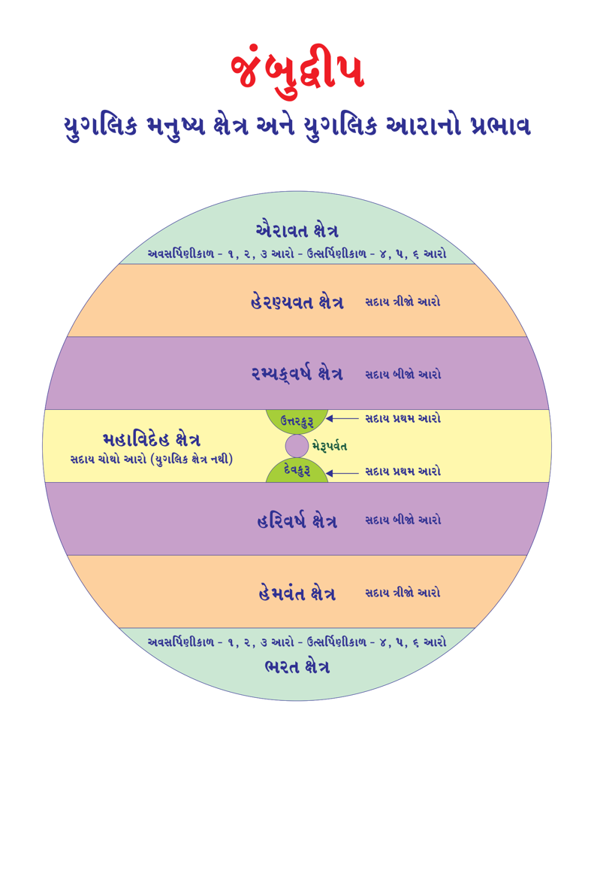
જૈન વિજ્ઞાન
મનુષ્ય જીવ - 205 : યુગલિક મનુષ્ય - 18:
યુગલિક મનુષ્યોની વિશેષતા :
યુગલિક સંતાન 49 દિવસનો કાળક્રમઃ
યુગલિક બાળક-બાલિકા પ્રથમ 7 દિવસ સુધી સીધા સૂઇ અંગૂઠો ચૂસતા રહે છે. બીજા 7 દિવસમાં ઘૂંટણીએ ચાલવા લાગે છે. ત્રીજા 7 દિવસમાં ચાલતાં શીખે છે. ચોથા 7 દિવસમાં મધુરવાણી બોલવા લાગે છે. પાંચમાં 7 દિવસે સ્થિર પગે ચાલતા થઇ જાય છે. છઠ્ઠા 7 દિવસે સર્વ કળાઓમાં વિશારદ ( Master ) થઇ જાય છે. સાતમાં 7 દિવસે તેઓ સંપૂર્ણ યુવાવસ્થામાં આવી વિવિધ ભોગોના ઉપભોક્તા થઇ જાય છે. કેટલાક તો તે સમયે સમ્યગ્દર્શન ગ્રહણ કરવા યોગ્ય પણ થઇ જાય છે.
દેવગતિઃ
યુગલિક મનુષ્યો આયુષ્ય પૂર્ણ કરી દેવલોકમાં જન્મ લે છે. પરંતું, દેવગતિમાં તેઓ પોતાના વર્તમાન આયુષ્ય પ્રમાણે દેવગતિમાં તેટલાં જ અથવા તેનાથી ઓછા આયુષ્યવાળા દેવ બને છે. દા.ત. પ્રથમ આરાના શરુઆતમાં યુગલિકની આયુષ્ય 3 પલ્યોપમની છે. હવે આયુષ્ય પૂર્ણ થતાં તેનો જીવ દેવલોકમાં જાય છે. ભવનપતિ દેવનું ઉત્કૃષ્ટ આયુષ્ય 1 સાગરોપમ છે. પ્રથમ વૈમાનિક દેવલોકની ઉત્કૃષ્ટ આયુષ્ય 2 સાગરોપમ છે. વાણવ્યંતર દેવનું ઉત્કૃષ્ટ આયુષ્ય 1 પલ્યોપમ હોય છે. જ્યોતિષ્ક દેવનું ઉત્કૃષ્ટ આયુષ્ય 1 પલ્યોપમ અ 1 લાખ વર્ષ હોવાથી તેઓ વ્યંતર દેવલોક અને જ્યોતિષ્ક દેવલોકમાં ઉત્કૃષ્ટ આયુષ્યવાળા દેવ બને છે. આગળ વધતાં સમગ્ર દેવલોકનું વર્ણન આવશે તેમાં આપણે વિસ્તારમાં જાણીશું.
107
Page 367
જૈનમ્ જયતિ શાસનમ્
મનુષ્ય જીવ - 206 : યુગલિક મનુષ્ય - 19:
યુગલિક મનુષ્યોની વિશેષતા :
અવસર્પિણી કાળનો પ્રથમ આરો 4 ક્રોડા-ક્રોડી સમાપ્ત થતાં જ ત્યારે અનંત વર્ણ, ગંધ, રસ, સ્પર્શ, સંહનન (હાડકાંની રચના), સંસ્થાન (શરીરનો આકાર) , ઉચ્ચત્વ, આયુષ્ય, ગુરુ-લઘુ, ઉત્થાન કર્મ, બળ, વીર્ય, પુરુષ આકાર, પરાક્રમ, ગુણ વગેરે અનંત પર્યાયોની હાની (પડતી) થતાં-થતાં સુષમા (સુખ) નામનો બીજો આરો શરુ થાય છે. આ આરામાં મનુષ્યો યુગલિક પણે જન્મે છે.
યુગલિક મનુષ્યની ઊંચાઇ 4000 ધનુષ્ય (બે ગાઉ), હાડકાંની રચનામાં 128 પાસંળીઓ હોય છે. બે દિવસ પછી તેને ભોજનની ઇચ્છા થાય છે. સંતાન પાલન 64 દિવસનું હોય છે. યુગલિક મનુષ્યોનું ઉત્કૃષ્ટ આયુષ્ય 2 પલ્યોપમનું હોય છે. યુગલિક મનુષ્યોના બાકી ગુણો પ્રથમ આરા સમાન જ હોય છે.
બીજા આરામાં યુગલિક મનુષ્યોના 4 પ્રકારના હોય છે. 1) શ્રેષ્ઠ, 2) પુષ્ટ
જંઘાવાળા, 3) ફુલ જેવા કોમળ, સુકુમાર અને 4) અત્યંત શાંત.
યુગલિક સંતાન 64 દિવસનો કાળક્રમઃ
યુગલિક બાળક-બાલિકા પ્રથમ સાધિક (થોડીક વધારે) 9 દિવસ સુધી સીધા સૂઇ અંગૂઠો ચૂસતા રહે છે. બીજા સાધિક 9 દિવસમાં ઘૂંટણીએ ચાલવા લાગે છે. ત્રીજા સાધિક 9 દિવસમાં ચાલતાં શીખે છે. ચોથા સાધિક 9 દિવસમાં મધુરવાણી બોલવા લાગે છે. પાંચમાં સાધિક 9 દિવસે સ્થિર પગે ચાલતા થઇ જાય છે. છઠ્ઠા સાધિક 9 દિવસે સર્વ કળાઓમાં વિશારદ ( Master ) થઇ જાય છે. સાતમાં સાધિક 9 દિવસે તેઓ સંપૂર્ણ યુવાવસ્થામાં આવી વિવિધ ભોગોના ઉપભોક્તા થઇ જાય છે. કેટલાક તો તે સમયે સમ્યગ્દર્શન ગ્રહણ કરવા યોગ્ય પણ થઇ જાય છે.
108
Page 368
જૈન વિજ્ઞાન
મનુષ્ય જીવ - 207 : યુગલિક મનુષ્ય - 20:
યુગલિક મનુષ્ય ત્રીજો આરો : સુષમદુષમ
અવસર્પિણી કાળમાં ત્રીજા આરામાં અને ઉત્સર્પિણી કાળમાં ચોથા આરામાં 5-ભરતક્ષેત્રમાં અને 5-ઐરાવતક્ષેત્રમાં યુગલિક મનુષ્યોનો જન્મ થાય છે. 3 ક્રોડા-ક્રોડી સાગરોપમનો બીજા આરાનો કાળ સમાપ્ત થતાં ત્રીજો આરો શરુ થાય છે.
ત્રીજો આરો ત્રણ વિભાગમાં ભાગ થાય છે. 1) પ્રથમ ત્રણ ભાગ, 2) મધ્યમ ત્રણ ભાગ અને 3) પશ્ચિમ (અંતિમ, શેષ) ત્રણ ભાગ. દરેક વિભાગ 66,66,66,66, 66,66,666-2/3 સાગરોપમનો હોય છે. (શબ્દોમાં 66 લાખ કરોડ, 66 હજાર કરોડ, 600 કરોડ, 66 કરોડ, 66 લાખ, 66 હજાર, 666-2/3) સાગરોપમનો થાય છે.
ત્રીજા આરામાં યુગલિક મનુષ્યોની ઊંચાઇ 2000 ધનુષ્ય (1 ગાઉ)ની હોય છે. યુગલિક મનુષ્યના શરીરમાં 64 પાંસળીઓ હોય છે. યુગલિક મનુષ્યોને એક દિવસના અંતરે ભોજનની ઇચ્છા થાય છે. યુગલિક મનુષ્યોનું ઉત્કૃષ્ટ આયુષ્ય 1 પલ્યોપમનું હોય છે. સંતાનનું પાલન 79 દિવસમાં થાય છે. બાકી ગુણ વિશેષતા પ્રથમ વિભાગના, મધ્યમ વિભાગના યુગલિક મનુષ્યોની અવસ્થા પ્રથમ આરા સમાન જ હોય છે.
અવસર્પિણી કાળના ત્રીજા આરાના ત્રીજા વિભાગમાં મનુષ્યોને 6 પ્રકારના સંઘયણ, 6 પ્રકારના સંસ્થાન (શરીરની રચના), સેંકડો ધનુષ્યની ઊંચાઇ, ઉત્કૃષ્ટ આયુષ્ય અસંખ્યાત વર્ષનું અને જઘન્ય (ઓછામાં ઓછું) આયુષ્ય સંખ્યાત વર્ષનું હોય છે. આ સમયમાં જ મનુષ્યોની ગતિ (આયુષ્ય પૂર્ણ થતાં ભવની ગતિ)માં પરિવર્તન આવે છે.
109
Page 369
જૈનમ્ જયતિ શાસનમ્
મનુષ્ય જીવ - 208 : યુગલિક મનુષ્ય - 21:
યુગલિક મનુષ્ય ત્રીજો આરો : સુષમદુષમ
અવસર્પિણી કાળમાં ત્રીજા આરામાં ત્રીજા વિભાગમાં અને ઉત્સર્પિણી કાળમાં ચોથા આરામાં પ્રથમ વિભાગમાં મનુષ્યોની નરકગતિ, તિર્યંચગતિ, મનુષ્યગતિ, દેવગતિ અને સિદ્ધગતિ થાય છે.
યુગલિક સંતાન 79 દિવસનો કાળક્રમઃ
યુગલિક બાળક-બાલિકા પ્રથમ સાધિક (થોડીક વધારે) 11 દિવસ સુધી સીધા સૂઇ અંગૂઠો ચૂસતા રહે છે. બીજા સાધિક 11 દિવસમાં ઘૂંટણીએ ચાલવા લાગે છે. ત્રીજા સાધિક 11 દિવસમાં ચાલતાં શીખે છે. ચોથા સાધિક 11 દિવસમાં મધુરવાણી બોલવા લાગે છે. પાંચમાં સાધિક 11 દિવસે સ્થિર પગે ચાલતા થઇ જાય છે. છઠ્ઠા સાધિક 11 દિવસે સર્વ કળાઓમાં વિશારદ ( Master ) થઇ જાય છે. સાતમાં સાધિક 11 દિવસે તેઓ સંપૂર્ણ યુવાવસ્થામાં આવી વિવિધ ભોગોના ઉપભોક્તા થઇ જાય છે. કેટલાક તો તે સમયે સમ્યગ્દર્શન ગ્રહણ કરવા યોગ્ય પણ થઇ જાય છે.
આરાના ત્રીજા અંતિમ વિભાગના શરુઆતમાં આયુષ્ય 1 પલ્યોપમ અને અંતે 1 કરોડ પૂર્વનું હોય છે. ઊંચાઇ પ્રારંભમાં 1 ગાઉ અને અંતમાં 500 ધનુષ્યની હોય છે. પ્રથમ બે વિભાગ યુગલિક કાળ હોય છે. પરંતું, ત્રીજા વિભાગના અંતે યુગલિક ધર્મ સમાપ્ત થઇ જાય છે. તે સમયે લોકો સુખમાંથી દુઃખનો અનુભવ કરવા લાગે છે. તેથી ત્રીજા આરાને સુષમદુષમ કાળ કહેવાયો છે.
110
Page 370
જૈન વિજ્ઞાન
મનુષ્ય જીવ - 209 : કુલકર - 1:
યુગલિક મનુષ્ય ત્રીજો આરો : સુષમદુષમ
આરાના અંતિમ ત્રીજા વિભાગના અંતિમ પલ્યોપમના આઠમાં ભાગમાં દ્રવ્યોના વર્ણ વગેરે ગુણોમાં અક્રમિક અને અનિશ્ચિતરૂપે જલ્દીથી પડતી થવા લાગે છે. આ કાળ યુગલિક મનુષ્ય કાળ અને કર્મભૂમિ કાળનો મિશ્રણકાળ છે. કાળ એટલે સમય.
કલ્પવૃક્ષની સંખ્યા અને ફળ આપવાની શક્તિ ધીમે ધીમે ઓછી થઇ જાય છે. યુગલ વ્યવસ્થામાં ફેરફાર થવા લાગે છે. આરાના અંતે 84 લાખ પૂર્વ જેટલો સમય બાકી રહે ત્યારે પરિવર્તન કાળ સમાપ્ત થઇ કર્મભૂમિ કાળ શરુ થઇ જાય છે. વિવિધ પ્રકારના કર્મો, સંતાન ઉત્પત્તિ, આહાર, મનુષ્યોના સ્વભાવમાં પરિવર્તન થાય છે. મોક્ષમાર્ગનો સમય શરુ થાય છે તેમજ મનુષ્યો 6-સંઘયણવાળા અને 6- સંસ્થાનવાળા થાય છે.
કુલકરઃ
આરાના અંતિમ ત્રીજા ભાગના અંતિમ એક પલ્યોપમના આઠમો ભાગ બાકી રહે ત્યારે 15 કુલકર (વિશિષ્ટ બુદ્ધિશાળી પુરુષ)ના જન્મ થાય છે. એટલે કે, હવે મનુષ્યોની વ્યવસ્થા સંભાળવા માટે 15-કુલકોરોના જન્મ થાય છે.
જંબુદ્વીપના ભરતક્ષેત્રમાં અવસર્પિણી કાળમાં ત્રીજા આરાના અંતે થયેલા 15 કુલકરો : 1) સુમતિ કુલકર, 2) પ્રતિશ્રુતિ કુલકર, 3) સીમંકર કુલકર, 4) સીમંધર કુલકર, 5) ક્ષેમંકર કુલકર, 6) ક્ષેમંધર કુલકર, 7) વિમલવાહન
111
Page 371
જૈનમ્ જયતિ શાસનમ્
મનુષ્ય જીવ - 210 : કુલકર - 2:
8) ચક્ષુષ્માન કુલકર, 9) યશસ્વાન્ કુલકર, 10) અભિચંદ્ર કુલકર, 11) ચંદ્રાભ કુલકર, 12) પ્રસેનજિત કુલકર, 13) મરુદેવ કુલકર, 14) નાભિ કુલકર અને 15) ઋષભ કુલકર (તીર્થંકર પરમાત્મા શ્રી આદિનાથ ભગવાન)
‘હ’કાર દંડનીતિઃ
1) સુમતિ કુલકર, 2) પ્રતિશ્રુતિ કુલકર, 3) સીમંકર કુલકર, 4) સીમંધર કુલકર અને 5) ક્ષેમંકર કુલકર ‘હ’કાર નામની દંડ (સજા)નીતિ હોય છે. તે સમયના મનુષ્યો ‘હા, તમે આ શું કર્યું?’ આટલું કહેવા રૂપ દંડથી જ મનુષ્યો લજ્જિત, વિશેષ લજ્જિત, અતિશય લજ્જિત, ભયભીત, ચૂપ બનીને વિનયથી નમ્ર બની જાય છે.
‘મ’કાર દંડનીતિઃ
6) ક્ષેમંધર કુલકર, 7) વિમલવાહન, 8) ચક્ષુષ્માન કુલકર, 9) યશસ્વાન્ કુલકર અને 10) અભિચંદ્ર કુલકરની ‘મ’કાર દંડનીતિ હોય છે. તે સમયના મનુષ્યો ’મ’કાર - ‘નહીં કરો, આવું ન કરો’ આટલું કહેવા રૂપ દંડથી જ મનુષ્યો લજ્જિત, વિશેષ લજ્જિત, અતિશય લજ્જિત, ભયભીત, ચૂપ બનીને વિનયથી નમ્ર બની જાય છે.
ધિક્કાર દંડનીતિઃ
11) ચંદ્રાભ કુલકર, 12) પ્રસેનજિત કુલકર, 13) મરુદેવ કુલકર, 14) નાભિ કુલકર અને 15) ઋષભ કુલકર ધિક્કાર દંડનીતિ હોય છે. તે સમયના મનુષ્યોને ‘ધિક્કાર, તને ધિક્કાર છે’ આટલું કહેવા રૂપ દંડથી જ મનુષ્યો લજ્જિત, વિશેષ લજ્જિત, અતિશય લજ્જિત, ભયભીત, ચૂપ બનીને વિનયથી નમ્ર બની જાય છે.
112
Page 372
જૈન વિજ્ઞાન
મનુષ્ય જીવ - 211 : કુલકર - 3:
યુગલિક કુલના અધિપતિને કુલકર કહેવાય છે. તેઓ લોકના વ્યવસ્થાપક હોય છે. તેઓ યુગલિક કુલોની રચના કરે છે તેથી કુલકર કહેવાય છે. તે સમયે કાળના પ્રભાવે કલ્પવૃક્ષની સંખ્યા અને ફળ આપવાની શક્તિ ઘટવા લાગે છે. યુગલિક મનુષ્યોમાં લોભ અને મમત્વ (મારાપણું) ભાવની વૃદ્ધિ થવા લાગે છે. તેઓ કલ્પવૃક્ષ ઉપર માલિકી ભાવ જમાવવા પ્રયત્નશીલ બની જાય છે. તેઓ વચ્ચે નીતિનાશક વિવાદ અને કલહ (કંકાશ, ઝઘડા) શરુ થઇ જાય છે. તે સમયે ન્યાયિક પ્રક્રિયામાં કુલકર કલ્પવૃક્ષોનું વિભાજન કરી આપે છે. ત્રણ દંડનીતિના પ્રયોગથી યુગલિક મનુષ્યોના વિવાદ અને કલહને દૂર કરી શાંતિ સ્થાપેલ છે.
ઋષભદેવ (શ્રી આદિનાથ ભગવાન) રાજ્ય અભિષેક પહેલાં તેઓ કુલકર અવસ્થામાં રહ્યા હતાં તેથી તેમને 15માં કુલકર કહ્યા છે. જૈન સંપ્રદાય અને ગચ્છ સમાચારી મુજબ કુલકરની સંખ્યામાં કદાચ ભેદ આવી શકે. દરેકે પોતપોતાની ગુરુપરંપરાને શ્રદ્ધાપૂર્વક માન્ય કરવું.
યુગલિક મનુષ્યોને અકર્મભૂમિ મનુષ્યો કહેવાય છે. કેમકે, તેમને અસિ- મસિ-કૃષિનો વ્યવહાર નથી. તેથી તે સંદર્ભે કર્મ થવા શક્ય નથી. સંપૂર્ણ જીવન 10 પ્રકારના કલ્પવૃક્ષના આધારે ઇચ્છાપૂર્તિ પૂર્વક વીતે છે. દરેક યુગલિક ભદ્રિક અને વિનયી જીવ હોય છે. છલ-કપટ રહિત હોય છે. ક્રોધ, માન, માયા અને લોભ રહિત જીવન વિતાવે છે.
113
Page 373
જંબુદ્વીપ કર્મ ભૂમિ - અકર્મ ભૂમિ
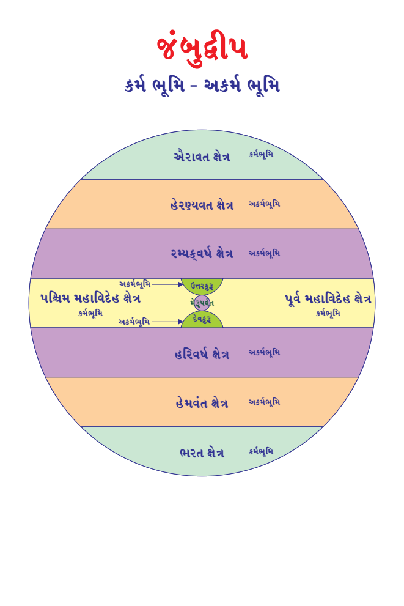
Page 374
જૈન વિજ્ઞાન
મનુષ્ય જીવ - 212 : યુગલિક મનુષ્ય ક્ષેત્ર - 1:
અકર્મભૂમિજઃ
જ્યાં અસિ (અસ્ત્ર), મસિ (લેખન) અને કૃષિ (ખેતી)ના વ્યાપાર વિના પ્રાકૃતિક પદાર્થોથી અને કલ્પવૃક્ષોથી જીવન વ્યવહાર ચાલે તેને અકર્મભૂમિ ક્ષેત્ર કહે છે. તે ક્ષેત્રમાં જન્મેલા મનુષ્યોને અકર્મભૂમિ કહેવાય છે. અકર્મભૂમિમાં સદાય યુગલિક મનુષ્યો જ જન્મે છે.
અકર્મભૂમિ ક્ષેત્ર કુલ 30 છે. જંબુદ્વીપમાં 1-હેમવત ક્ષેત્ર, 1-હેરણ્યવત ક્ષેત્ર, 1-હરિવર્ષ ક્ષેત્ર, 1-રમ્યકવર્ષ ક્ષેત્ર, 1-દેવકુરુ ક્ષેત્ર અને 1-ઉત્તરકુરુ ક્ષેત્ર આ 6 ક્ષેત્ર અકર્મભૂમિ છે. અહીં સદાય યુગલિક મનુષ્યોના જન્મ થાય છે.
ઘાતકીખંડમાં 2-હેમવત ક્ષેત્ર, 2-હેરણ્યવત ક્ષેત્ર, 2-હરિવર્ષ ક્ષેત્ર, 2- રમ્યકવર્ષ ક્ષેત્ર, 2-દેવકુરુ ક્ષેત્ર અને 2-ઉત્તરકુરુ ક્ષેત્ર આ 12 ક્ષેત્ર અકર્મભૂમિ છે. અહીં સદાય યુગલિક મનુષ્યોના જન્મ થાય છે.
અર્ધ-પુષ્કરદ્વીપમાં 2-હેમવત ક્ષેત્ર, 2-હેરણ્યવત ક્ષેત્ર, 2-હરિવર્ષ ક્ષેત્ર, 2-રમ્યકવર્ષ ક્ષેત્ર, 2-દેવકુરુ ક્ષેત્ર અને 2-ઉત્તરકુરુ ક્ષેત્ર આ 12 ક્ષેત્ર અકર્મભૂમિ છે. અહીં સદાય યુગલિક મનુષ્યોના જન્મ થાય છે.
તિરછાલોકમાં જંબુદ્વીપના 6 ક્ષેત્ર + ઘાતકીખંડના 12 ક્ષેત્ર + અડધા પુષ્કરદ્વીપના 12 ક્ષેત્ર મળીને કુલ 30 અકર્મભૂમિ થાય છે. ત્યાં સદાય યુગલિક મનુષ્યોનો જ જન્મ થાય છે. જે આપને ચિત્ર પરથી સમજાઇ જશે.
115
Page 375
જૈનમ્ જયતિ શાસનમ્
મનુષ્ય જીવ - 213 : યુગલિક મનુષ્ય ક્ષેત્ર - 2:
અંતરદ્વીપજઃ
લવણસમુદ્રમાં યુગલિક મનુષ્યોના જે 56 દ્વીપ (ટાપુ) છે તેને અંતરદ્વીપ કહે છે, તેમાં જન્મેલ મનુષ્યોને અંતરદ્વીપજ કહેવાય છે. (આગળ વધતાં દરેક ભૂમિ ક્ષેત્રના વર્ણનમાં સંપૂર્ણ ક્ષેત્ર, વિસ્તારનું ભૂગોળ રેખાચિત્ર સાથે સમજાવવામાં આવશે. અત્યારે યુગલિક મનુષ્યોના ભૂમિ ક્ષેત્ર તરીકે માત્ર જાણીશું)
ઉત્તરકુરુ ક્ષેત્રઃ
ઉત્તરકુરુ ક્ષેત્ર યુગલિક ક્ષેત્ર છે. તે ક્ષેત્રમાં સદાય સુષમસુષમા કાળ જેવા ભાવ સદાય વર્તાય છે. સમગ્ર વાતાવરણ અને વિવિધ પર્યાયો વગેરે ભરતક્ષેત્રમાં અવસર્પિણી કાળમાં પ્રથમ આરા અને ઉત્સર્પિણી કાળમાં છઠ્ઠો આરા જેવું જ હોય છે. યુગલિક મનુષ્યોનું દેહમાન, પ્રમાણ, આયુષ્ય, સંઘયણ, સંસ્થાન, ભૂમિક્ષેત્ર, કલ્પવૃક્ષની ઇચ્છાપૂર્તિ વગરે સમાન હોય છે.
દેવકુરુ ક્ષેત્રઃ
દેવકુરુ ક્ષેત્ર યુગલિક ક્ષેત્ર છે. તે ક્ષેત્રમાં સદાય સુષમસુષમા કાળ જેવા ભાવ સદાય વર્તાય છે. સમગ્ર વાતાવરણ અને વિવિધ પર્યાયો વગેરે ભરતક્ષેત્રમાં અવસર્પિણી કાળમાં પ્રથમ આરા અને ઉત્સર્પિણી કાળમાં છઠ્ઠો આરા જેવું જ હોય છે. યુગલિક મનુષ્યોનું દેહમાન, પ્રમાણ, આયુષ્ય, સંઘયણ, સંસ્થાન, ભૂમિક્ષેત્ર, કલ્પવૃક્ષની ઇચ્છાપૂર્તિ વગરે સમાન હોય છે.
116
Page 376
જૈન વિજ્ઞાન
મનુષ્ય જીવ - 214 : યુગલિક મનુષ્ય ક્ષેત્ર - 3:
હરિવર્ષ ક્ષેત્ર :
હરિવર્ષ ક્ષેત્ર યુગલિક ક્ષેત્ર છે. તે ક્ષેત્રમાં સદાય સુષમ કાળ જેવા ભાવ સદાય વર્તાય છે. સમગ્ર વાતાવરણ અને વિવિધ પર્યાયો વગેરે ભરતક્ષેત્રમાં અવસર્પિણી કાળમાં બીજા આરા અને ઉત્સર્પિણી કાળમાં પાંચમા આરા જેવું જ હોય છે. યુગલિક મનુષ્યોનું દેહમાન, પ્રમાણ, આયુષ્ય, સંઘયણ, સંસ્થાન, ભૂમિક્ષેત્ર, કલ્પવૃક્ષની ઇચ્છાપૂર્તિ વગરે સમાન હોય છે.
રમ્યકવર્ષ ક્ષેત્રઃ
રમ્યકવર્ષ ક્ષેત્ર યુગલિક ક્ષેત્ર છે. તે ક્ષેત્રમાં સદાય સુષમ કાળ જેવા ભાવ સદાય વર્તાય છે. સમગ્ર વાતાવરણ અને વિવિધ પર્યાયો વગેરે ભરતક્ષેત્રમાં અવસર્પિણી કાળમાં બીજા આરા અને ઉત્સર્પિણી કાળમાં પાંચમા આરા જેવું જ હોય છે. યુગલિક મનુષ્યોનું દેહમાન, પ્રમાણ, આયુષ્ય, સંઘયણ, સંસ્થાન, ભૂમિક્ષેત્ર, કલ્પવૃક્ષની ઇચ્છાપૂર્તિ વગરે સમાન હોય છે.
હેમવત ક્ષેત્ર :
હેમવત ક્ષેત્ર યુગલિક ક્ષેત્ર છે. તે ક્ષેત્રમાં સદાય સુષમદુઃષમા કાળ જેવા ભાવ સદાય વર્તાય છે. સમગ્ર વાતાવરણ અને વિવિધ પર્યાયો વગેરે ભરતક્ષેત્રમાં અવસર્પિણી કાળમાં ત્રીજા આરા અને ઉત્સર્પિણી કાળમાં ચોથા આરા જેવું જ હોય છે. યુગલિક મનુષ્યોનું દેહમાન, પ્રમાણ, આયુષ્ય, સંઘયણ, સંસ્થાન, ભૂમિક્ષેત્ર, કલ્પવૃક્ષની ઇચ્છાપૂર્તિ વગરે સમાન હોય છે.
117
Page 377
જૈનમ્ જયતિ શાસનમ્
હેરણ્યવત ક્ષેત્રઃ
હેરણ્યવત ક્ષેત્ર યુગલિક ક્ષેત્ર છે. તે ક્ષેત્રમાં સદાય સુષમદુઃષમા કાળ જેવા ભાવ સદાય વર્તાય છે. સમગ્ર વાતાવરણ અને વિવિધ પર્યાયો વગેરે ભરતક્ષેત્રમાં અવસર્પિણી કાળમાં ત્રીજા આરા અને ઉત્સર્પિણી કાળમાં ચોથા આરા જેવું જ હોય છે. યુગલિક મનુષ્યોનું દેહમાન, પ્રમાણ, આયુષ્ય, સંઘયણ, સંસ્થાન, ભૂમિક્ષેત્ર, કલ્પવૃક્ષની ઇચ્છાપૂર્તિ વગરે સમાન હોય છે.
118
Page 378
જંબુદ્વીપ જંબુદ્વીપ - ભૂમિક્ષેત્ર
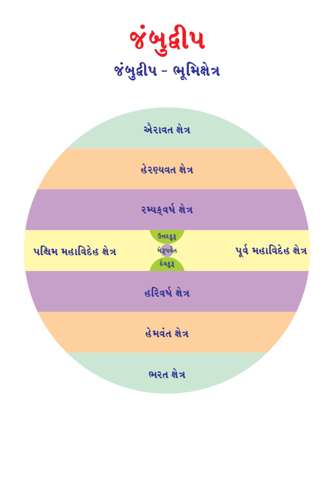
Page 379
જૈનમ્ જયતિ શાસનમ્
મનુષ્ય જીવ - 215 : યુગલિક મનુષ્ય વિશેષતા - 1:
આયુષ્ય બંધઃ
યુગલિક મનુષ્યો પોતાના આયુષ્યના 6 મહિના (180 દિવસ) બાકી રહે
ત્યારે જ પરભવ (આગામી ભવ)નો આયુષ્યનો બંધ કરે છે.
અનુશાસન :
યુગલિક મનુષ્યો સ્વયં અનુશાસિત હોય છે. તેઓ શિસ્તબદ્ધ હોય છે. તેઓને રાજ્ય વ્યવસ્થાની કોઇ જ આવશ્યકતા હોતી નથી. તેઓ દંડથી રહિત હોય છે. અપવાદ સ્વરુપે 5-ભરતક્ષેત્રમાં અને 5-ઐરાવતક્ષેત્રમાં અવસર્પિણી કાળના ત્રીજા આરાના અંતે છેલ્લે 1 પલ્યોપમના આઠમાં ભાગમાં સમયમાં જ યુગલિક મનુષ્યો માટે દંડનીતિ શરુ થાય છે. કેમકે, સમયના પ્રભાવે હવે અકર્મભૂમિ થી કર્મભૂમિની શરુઆત થાય છે. આ જ પ્રમાણે ઉત્સર્પિણી કાળમાં ચોથા આરાની શરુઆતના પ્રથમ પલ્યોપમની પ્રથમ આઠમાં ભાગ સુધી દંડનીતિ અને પછી યુગલિક કાળ શરુ થતાં કર્મભૂમિ હવે અકર્મભૂમિ બને છે.
કુલકરઃ
જંબુદ્વીપમાં ભરતક્ષેત્રમાં ઉત્સર્પિણી કાળમાં 7 કુલકરોના જન્મ થયા હતાં. 1) મિત્રદામ કુલકર, 2) સુદામ કુલકર, 3) સુપાર્શ્વ કુલકર, 4) સ્વયંપ્રભ કુલકર, 5) વિમલઘોષ કુલકર, 6) સુઘોષ કુલકર અને 7) મહાઘોષા કુલકર.
જંબુદ્વીપમાં ભરતક્ષેત્રમાં અતીતકાળ (ભૂતકાળ)માં 10 કુલકર થયા હતાં. 1) શતંજલ કુલકર, 2) શતાયુ કુલકર, 3) અજિતસેન કુલકર, 4) અનંતસેન કુલકર, 5) કાર્યસેન કુલકર, 6) ભીમસેન કુલકર, 7) મહાભીમસેન કુલકર, 8) દ્રઢરથ કુલકર, 9) દશરથ કુલકર અને 10) શતરથ કુલકર
120
Page 380
જૈન વિજ્ઞાન
મનુષ્ય જીવ - 216 : યુગલિક મનુષ્ય વિશેષતા - 2:
આહારઃ
એકમાત્ર યુગલિક મનુષ્યોની આહાર મર્યાદા નિર્ધારિત હોય છે. 5- ભરતક્ષેત્રમાં અને 5-ઐરાવતક્ષેત્રમાં અવસર્પિણી કાળમાં પ્રથમ આરામાં ત્રણ દિવસે, બીજા આરામાં બે દિવસે અને ત્રીજા આરામાં એક દિવસે આહારની ઇચ્છા થાય છે. તે જ પ્રમાણે ઉત્સર્પિણી કાળમાં ચોથા આરામાં એક દિવસે, પાંચમાં આરામાં બે દિવસે અને છઠ્ઠા આરામાં ત્રણ દિવસે આહારની ઇચ્છા થાય છે.
વેદઃ
વેદ ત્રણ પ્રકારના હોય છે. 1) પુરુષવેદ, 2) સ્ત્રીવેદ અને 3) નપુસંકવેદ.
યુગલિક મનુષ્યોમાં નપુસંકવેદ નથી.
અતૃપ્ત અવસ્થાઃ
યુગલિક મનુષ્યોનું ઉત્કૃષ્ટ આયુષ્ય 3 પલ્યોપમ હોય છે. તેમાં પણ તેઓ સંપૂર્ણ યૌવન અવસ્થામાં રહે છે. તેમને રોગ, વૃદ્ધત્વ, વ્યાપાર, ખેતી વગેરેના કોઇ જ પ્રકારના વિઘ્નો જ નથી. અસંખ્ય વર્ષો સુધી વિષય ભોગોનું સેવન કરવા છતાં પણ તે અતૃપ્ત અવસ્થામાં જ મૃત્યુને પ્રાપ્ત થાય છે.
ગતિઃ
ગતિ એટલે મરણ પછીનું જીવનું ભવ ભ્રમણ. યુગલિક મનુષ્યનું આયુષ્ય પૂર્ણ થયા પછી તેમની દેવગતિ અવશ્ય થાય છે. પરંતું, યુગલિક મનુષ્યનું વર્તમાન આયુષ્યથી વધુ આયુષ્યના દેવ તો ક્યારેય ન જ બને!
યુગલિક મનુષ્યની વર્તમાન આયુષ્ય અનુસાર દેવગતિમાં 25 પ્રકારે જન્મ થઇ શકે છે. ભવનપતિ દેવલોકમાં 10 પ્રકારે, વ્યંતર દેવલોકમાં 8 પ્રકારે, જ્યોતિષ્ક દેવલોકમાં 5 પ્રકારે (ચંદ્ર, સૂર્ય, ગ્રહ, નક્ષત્ર અને તારા) અને વૈમાનિક દેવલોકમાં ર પ્રકારે (સૌધર્મ દેવલોક અને ઇશાન દેવલોક) થાય છે. (નોંધ : દેવલોકના વર્ણનમાં દેવ વિશે વિસ્તાર પૂર્વક આગળ જતાં સમજીશું.)
121
Page 381
મનુષ્ય જીવ - 217 : યુગલિક મનુષ્ય વિશેષતા - 3:
આગતિઃ
આગતિ એટલે પૂર્વ ભવનું આયુષ્ય પૂર્ણ કરી યુગલિક મનુષ્યમાં જન્મ લેવો. 30 અકર્મભૂમિના યુગલિક મનુષ્યોમાં આગતિ 20 પ્રકારે હોય છે. એટલે કે, 20 પ્રકારના જીવો યુગલિક મનુષ્ય તરીકે જન્મ લે છે. 15 કર્મભૂમિ (5-ભરતક્ષેત્ર, 5- ઐરાવતક્ષેત્ર અને 5-મહાવિદેહક્ષેત્ર)ના પર્યાપ્ત મનુષ્યો અને 5 પ્રકારના સંજ્ઞી (જેમને મન હોય તેવા) તિર્યંચ (સ્થલચર, જલચર, ખેચર, ભૂજપરિસર્પ અને ઉરપરિસર્પ) પર્યાપ્ત જીવ.
પર્યાપ્ત એટલે જે જીવ જન્મ લેવા પોતાના શરીરનું સંપૂર્ણ બંધારણ (રચના) પૂર્ણ કરી લે તેને પર્યાપ્ત જીવ કહેવાય. સ્થલચર - ભૂમિ ઉપર ચાલી શકે, જલચર - પાણીમાં તરી શકે, ખેચર - આકાશમાં ઊડી શકે, ભૂજપરિસર્પ - હાથ દ્વારા ભૂમિ ઉપર સરકનારા જીવો, ઉરપરિસર્પ - છાતીના ટેકાથી સરકનારા જીવો.
56 અંતરદ્વીપના યુગલિક મનુષ્યોમાં 25 પ્રકારના જીવો જન્મ લે છે. 15 કર્મભૂમિના પર્યાપ્ત મનુષ્યો, 5-સંજ્ઞી તિર્યંચ પર્યાપ્ત જીવો અને 5-અસંજ્ઞી (જેમને મન ન હોય) તિર્યંચ પર્યાપ્ત જીવોના પ્રકાર હોય છે.
વૈક્રિયલબ્ધિ :
યુગલિક મનુષ્યોને વૈક્રિયલબ્ધિ હોતી નથી. જ્યારે કર્મભૂમિના ઋદ્ધિવંત મનુષ્યો (ચક્રવર્તી, વાસુદેવ, 14 પૂર્વધારી વગેરે) વૈક્રિયલબ્ધિધારી મનુષ્યો દેવોની જેમ શરીરને સુક્ષ્મ-નાનું-મોટું, હળવું-ભારે કરી શકે.
122
Page 382
જૈન વિજ્ઞાન
મનુષ્ય જીવ - 218 : યુગલિક મનુષ્ય વિશેષતા - 4:
જ્ઞાન-દર્શનઃ
30 અકર્મભૂમિના યુગલિક મનુષ્યોને 2 જ્ઞાન હોય છે, 2 અજ્ઞાન હોય છે. 2 દર્શન હોય છે. તેમને અવધિજ્ઞાન, મનઃપર્યવજ્ઞાન અને કેવળજ્ઞાન નથી થતું. (વિશેષ નોંધઃ માત્ર 5-ભરતક્ષેત્રમાં અને 5-ઐરાવતક્ષેત્રમાં કર્મભૂમિમાં અવસર્પિણી કાળમાં ત્રીજા આરાના અંતે છેલ્લે 1 પલ્યોપમના 8માં ભાગના સમયમાં જન્મનારાં કે વિચરતાં યુગલિક મનુષ્યોને જ થાય છે. કેમકે તે સમય અકર્મથી કર્મભૂમિમાં પરિવર્તન થાય છે. 5-મહાવિદેહ ક્ષેત્રમાં યુગલિક મનુષ્યોના જન્મ થતાં જ નથી.)
56 અંતરદ્વીપના યુગલિક મનુષ્યોને 2-અજ્ઞાન હોય છે. 2-દર્શન હોય છે. તેઓ મિથ્યાજ્ઞાની હોવાથી તેમને જ્ઞાન (શ્રુતજ્ઞાન, મતિજ્ઞાન, અવધિજ્ઞાન, મનઃપર્યવજ્ઞાન અને કેવળજ્ઞાન) નથી.
અગાઉ જૈન વિજ્ઞાન - કાળ પરિવર્તનના વિવિધ લેખોમાં કુલ 6 આરાનો પ્રભાવ વિસ્તારમાં જણાવેલ છે. તદુપરાંત જૈન વિજ્ઞાન - યુગલિક મનુષ્યના લેખમાં પણ વિસ્તારમાં જણાવવામાં આવેલ છે. ફરી એકવાર બંને લેખોનું પુનરાવર્તન કરશો જેથી સંપૂર્ણ યુગલિક મનુષ્યોને સમજવામાં સરળતા રહેશે.
મનુષ્ય જીવમાં તીર્થંકર પરમાત્મા, ચક્રવર્તી, વાસુદેવ - બળદેવ - પ્રતિવાસુદેવ અને યુગલિક મનુષ્યનો લેખ પૂર્ણ થયો. પરંતું, મનુષ્ય જીવનો લેખ ખૂબજ વિસ્તારમાં છે તેથી પાંચ ગતિઓને સમજવી આવશ્યક છે. નરકગતિ, તિર્યંચગતિ, મનુષ્યગતિ, દેવગતિ અને સિદ્ધગતિ. કેમકે તેનો સીધો સંબંધ મનુષ્ય જીવ સાથે છે.
123
Page 383
દેવલોક - 1:
સમગ્ર 14 - રાજલોક પાંચ પ્રકારના જીવોથી પરિપૂર્ણ છે. નરક જીવ, તિર્યંચ જીવ, મનુષ્ય જીવ, દેવ જીવ અને સિદ્ધ જીવ. સમગ્ર લોકની નાભિ (કેન્દ્ર) મેરુપર્વત છે. મેરુપર્વતને ધ્યાનમાં લઇને નીચે અધોલોક, મધ્યમાં તિરછાલોક, ઉપર ઉર્ધ્વલોક અને 14 રાજલોકના અંતે સિદ્ધલોક છે. 14 રાજલોકના બહારનો ભાગ અલોક છે. અલોકમાં કોઇપણ પ્રકારના જીવ નથી.
જીવ શુભ કર્મો કરી પુણ્ય ઉપાર્જન કરે છે. તે પુણ્યથી માત્ર સિમિત પુણ્ય નથી બંધાતું! પરંતું, એક શુભ કર્મનું અનંતગણું પુણ્ય બંધાય છે. તે પ્રમાણે મનુષ્ય જીવ પ્રતિ ક્ષણે અને સમગ્ર જીવન દરમ્યાન અસંખ્ય પુણ્ય કરતો રહે છે, જે મનુષ્ય લોકમાં ભોગવાય તેમ નથી. મનુષ્ય જીવને સુખ ભોગવવા વધુમાં વધુ આયુષ્ય 3 પલ્યોપમનું હોય છે, તે પણ યુગલિક મનુષ્યોને જ! . તેનાથી વધુ આયુષ્ય મનુષ્યોને હોતું નથી. તો પછી પુણ્યના પ્રતાપે વધુ સુખ કેમ અને ક્યાં ભોગવી શકાય?
વિશેષપણે મર્યાદિત પણ અદ્વિતીય સુખ ભોગવવાનો એક માત્ર વિકલ્પ દેવગતિ નું જ હોય છે. જ્યાં દેવી-દેવના જીવનું ઓછામાં ઓછું આયુષ્ય 10,000 વર્ષ અને વધુમાં વધુ આયુષ્ય 33 સાગરોપમનું હોય છે. ત્યાં મર્યાદિત, પણ લાંબા સમયનો આનંદ અને અતિસુખ હોય છે.
દેવગતિમાં મુખ્ય ચાર પ્રકારના દેવો હોય છે. ભવનપતિ દેવો, વ્યંતર દેવો,
જ્યોતિષ્ક દેવો અને વૈમાનિક દેવો.
124
Page 384
જૈન વિજ્ઞાન
દેવલોક - 2:
ભવનપતિ દેવલોક, જે દેવનું નિવાસસ્થાન ભવન (મહેલ)માં હોય એટલે કે, જે દેવો ભવનમાં રહે છે તેવા દેવોને ભવનપતિ દેવો કહે છે. ભવનપતિ દેવોનું સ્થાન મેરુપર્વતની નીચે એટલે કે રત્નપ્રભા પૃથ્વીમાં છે.
વ્યંતર દેવલોક, વ્યંતર દેવલોકમાં પણ બે વિભાગ થાય છે. વ્યંતર દેવલોક અને વાણવ્યંતર દેવલોક. વ્યંતર દેવલોક રત્નપ્રભા પૃથ્વીમાં ભવનપતિ દેવલોકની ઉપર નગરમાં નિવાસ કરે છે. વાણવ્યંતર દેવ એટલે વનમાં વિચરનારા દેવ હોય છે. તેઓ રત્નપ્રભા પૃથ્વીમાં વ્યંતર દેવલોકની ઉપર અને તિરછાલોકમાં વન, ઉપવન, વૃક્ષો વગેરેમાં નિવાસ કરે છે.
જ્યોતિષ્ક દેવલોક. જે દેવોના નિવાસસ્થાન જ્યોતિ (પ્રકાશ) આપનાર ચંદ્ર, સૂર્ય, ગ્રહ, નક્ષત્ર અને તારાઓ માં હોય છે. એટલે કે, જ્યોતિષ્ક દેવોનો વાસ તેમાં હોય છે. તેથી જ્યોતિષ્ક દેવલોક કહેવાય છે. તેઓનું સ્થાન સુદર્શન મેરુપર્વતને ધ્યાનમાં લઇ સમભૂતલા ભૂમિથી 790 યોજન ઊંચાઇ ઉપર અને 900 યોજન ઊંચાઇ સુધીમાં સમગ્ર જ્યોતિષ્ક દેવલોક સમાવેશ થાય છે.
વૈમાનિક દેવલોક એટલે જે દેવોના નિવાસ સ્થાન દેવવિમાનમાં હોય છે તેમને વૈમાનિક દેવલોક કહેવાય છે. વૈમાનિક દેવલોકમાં પણ ત્રણ વિભાગ થાય છે. 12 દેવલોક, 9 ગ્રૈવયક અને 5 અનુત્તર વિમાનમાં વસનારા દેવોને વૈમાનિક દેવો કહેવાય છે. અહીં આપને માત્ર આછેરી સમજણ આપેલ છે.
125
Page 385
14 રાજલોક લોક-અલોક રેખાચિત્ર
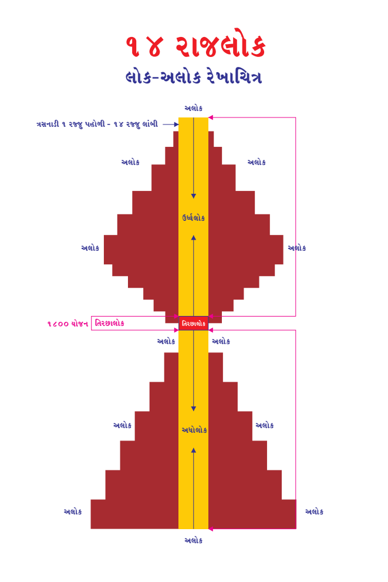
જૈન વિજ્ઞાન
દેવલોક - 3 : દેવલોકની રચના-1:
દેવલોકની રચનામાં ભવનપતિ દેવલોકના દેવો ભવનમાં રહે છે. વ્યંતર દેવલોકના દેવો નગરમાં રહે છે. જ્યોતિષ્ક દેવલોકના દેવો સૂર્ય, ચંદ્ર, ગ્રહ, નક્ષત્ર અને તારાઓ માં રહે છે. વૈમાનિક દેવલોકના દેવો દેવવિમાનમાં રહે છે. દરેક દેવલોકના દેવોનું રહેવાની રચના સમાન હોય છે. દા. ત. મનુષ્ય જીવોમાં રહેવાની સમાનતા સરખી હોય. દરેક મનુષ્યના ઘરમાં ઓસરી, રસોઇ રુમ, ભોજન કક્ષ, શયન કક્ષ, કોઠાર, સ્ટોરરુમ, અતિથિરુમ, પટાંગણ, અભ્યાસરુમ વગેરે ઘણી જ વ્યવસ્થાઓ હોય. જેવી જેનું આર્થિક સામર્થ્ય! કોઇક ઝુંપડામાં, બંગલામાં, બિલ્ડીંગમાં, મહેલમાં જેવી જેની રિદ્ધિ-સિદ્ધિ!
દરેક દેવલોકની રચના અને વ્યવસ્થાઓમાં ઘણુંબધું સમાનતા જ હોય છે. તફાવત માત્ર ભવન, નગર, દેવવિમાન અને તેમના માપ, ક્ષેત્ર વિસ્તાર વગેરે... દેવલોકની રચનાના એક જ લેખમાં ચારેય પ્રકારની દેવલોકની રચનાનો સમાવેશ થાય છે. તેથી વ્યંતર, વાણવ્યંતર, જ્યોતિષ્ક અને વૈમાનિક દેવલોકના લેખમાં દેવલોકની રચનાના વિશે માહિતીનું પુનરાવર્તન નહીં થાય.
કોટઃ
કોટ એટલે કિલ્લો. વિમાનની ફરતો ચારે બાજુ એક મોટો કિલ્લો હોય છે. કિલ્લો 300 યોજન ઊંચો હોય છે. મૂળમાં 100 યોજન, મધ્યમાં 50 યોજન અને ઉપર 25 યોજન પહોળો હોય છે. કિલ્લો રત્નમય, સ્ફટિક જેવો નિર્મળ અને મનોહર હોય છે.
કોટના કાંગરા કાળા, નીલા, લાલ, પીળા અને સફેદ રંગથી સુશોભિત હોય છે. પ્રત્યેક કાંગરા 1 યોજન લાંબા, અડધો યોજન પહોળા અને દેશોન 1 યોજન ઊંચા હોય છે. પ્રત્યેક કાંગરાઓ રત્નોથી બનેલા નિર્મળ અને રમણીય હોય છે.
127
Page 387
જૈનમ્ જયતિ શાસનમ્
દેવલોક - 4 : દેવલોકની રચના-2:
દરવાજાઃ
વિમાન/ભવનની પૂર્વ દિશા, દક્ષિણ દિશા, પશ્ચિમ દિશા અને ઉત્તર દિશામાં દરવાજાઓ છે. પ્રત્યેક દિશાએ 1,000 દરવાજા હોવાથી ચારેય દિશાઓ મળી કુલ 4,000 દરવાજાઓ હોય છે.
દરવાજા સફેદ રંગના હોય છે. તેના શિખરો સોનાના હોય છે. શિખરો વરૂ, બળદ, ઘોડો, મનુષ્ય, મગર, પક્ષી, સાપ, કિન્નર, કસ્તુરીમૃગ, અષ્ટાપદ, ચમરી ગાય, હાથી, વનલતા, પદ્મલતા વગેરે ચિત્રોથી ચિત્રાયેલ હોય છે.
સ્તંભગત (દરવાજો જેના આધારે હોય છે તે) વજ્રરત્નમયી વેદિકાઓથી મનોહર દેખાય છે. યંત્ર સંચાલિત સમશ્રેણીમાં સ્થિત વિદ્યાધર યુગલોના પૂતળાઓ ફરતા દેખાય છે. (પૂતળાઓ સામાન્ય કક્ષાના સ્ત્રી - પુરુષ નહીં! પરંતું, વૈતાઢ્ય પર્વતની 10 યોજન ઉપર વિદ્યાધર સ્ત્રી - પુરુષો રહે છે, તેવા દેખાવના હોય છે.)
રત્નોના હજારો કિરણોથી તે સૂર્યની જેમ ઝગારા મારે છે. હજારો ચિત્રોથી શોભાયમાન છે. દેદીપ્યમાન અને આંખે વળગે તેવા હોય છે. અનુકૂળ સ્પર્શ અને મનોહર રુપથી સુશોભિત હોય છે.
દ્વારનો અંદરનો આધાર વજ્રમય (વજ્ર એટલે હીરો), પાયા રિષ્ટરત્નના, થાંભલીઓ વૈડુર્યરત્નની હોય છે. ભૂમિનું તળીયું પંચરંગી ઉત્તમ મણિઓથી જડેલા હોય છે. તેના ઉંબરા હંસગર્ભરત્નના, ઇન્દ્ર ખીલ્લો ગોમેદરત્નનો, બારસાખ લોહિતાક્ષરત્નનો, દરવાજાના ત્રાંસા પાટિયા જ્યોતિરસરત્નોના, ખીલીઓ લોહિતાક્ષરત્નોની, તેના સાંધાઓમાં વજ્રરત્ન ભરવામાં આવ્યા હોય છે.
128
Page 388
જૈન વિજ્ઞાન
દેવલોક - 5 : દેવલોકની રચના-3:
દરવાજાઃ
ખીલીઓ ઉપરના ટોપકા વિવિધ મણિમય હોય છે. આગળીયો અને તેનું અટકણ વજ્રનું છે. ઉલાળાનું ટેકણ ચાંદીનું છે. દરવાજાના ઉત્તર પડખાં અંકરત્નના છે. તેના કમાડ તિરાડ ન રહે, ચપોચપ બંધ થાય તેવા મજબૂત હોય છે. દરવાજાની બંને બાજુની ભીંતમાં 168-168 ગુપ્ત ઝરુખાઓ છે. (આ ગુપ્ત ઝરુખામાંથી બહાર જોઇ શકાય, પરંતું, બહારનો વ્યક્તિ અંદર જોઇ ન શકે) 168-168 બેઠકો છે.
દરવાજા ઉપર વિવિધ રત્નો અને મણિઓથી બનેલ સાપના આકારવાળી રમતી પૂતળીઓ છે. દ્વારમાં જાળીયુક્ત ઝરુખાઓ મણિના બનેલા છે. દરવાજાના ઉપરના વાંસા (વળા) મણિમય છે. વાંસની વચ્ચે પ્રતિવાંસા લોહિતાક્ષરત્નના છે, તેની ભૂમિ ચાંદીની છે. દરવાજાના પડખાં અને પડખાંઓની બાજુઓ અંકરત્નની છે. દરવાજા ઉપરના ખપાટો (વળા), વળાની બંને બાજુએ ત્રાંસા મૂકેલા વળા અને નળિયા જ્યોતિરસરત્નના બનેલા છે. પટ્ટીઓ ચાંદીની, નળિયાના ઢાંકણા સોનાના, છત ઉપર ઝીણા ઘાસનું મજબૂત પથરામણું વજ્રમય છે. તેના ઉપરના સ્તૂપ (દેરી) સોનાની છે. તેના શિખરો અંકરત્નોના અને સ્તૂપિકાઓ તપનીય સુવર્ણમય છે.
દરવાજાઓ ચાંદીના ઢગલા જેવા સફેદ અને ચકચકિત છે. દરવાજા ઉપર તિલક, અડધા ચંદ્ર કોતરેલા હોય છે. તેના ઉપર મણિની માળાઓ લટકાવેલી હોય છે. દરવાજા અંદર-બહાર લીસા હોય છે. તેના ઉપર સોનેરી રેતી ચોંટાડેલી છે. દરવાજાઓ સુંદર, સુખદ સ્પર્શવાળા, શોભાયુક્ત, પ્રસન્નતાદાયક, દર્શનીય અને અત્યંત રમણીય હોય છે.
129
Page 389
જૈનમ્ જયતિ શાસનમ્
જૈન વિજ્ઞાન ભાગ-3માં લેખ ક્રમાંક 201 થી 300ના તમામ લેખોમાં અક્ષર-શબ્દ ત્રૂટિ-દોષ રહી ગયો હોય, લેખમાં કોઇપણ પ્રકારની ક્ષતિ-ભુલ રહી ગયેલ હોય તે બદ્દલ તેમજ જિનાજ્ઞા વિરાધના થઇ હોય તો ત્રિવિધે ત્રિવિધે કરી મિચ્છામિ દુક્કડમ્!
લિ. જીજ્ઞેશ ચંદ્રકાન્ત હંસરાજ લોડાયા (વારાપધર-ડોંબિવલી)
130
Page 390
જે દેવનિર્મિત સમવસરણે બેસી દેતા દેશના, વાણી અમીય સમાણી સુણતા, તૃપ્તિ કદીએ થાય ના, ચોત્રીશ અતિશય શોભતા, પાંત્રીસ ગુણ વાણીતણા, અરિહંતના શુભ ચરણમાં, કરું ભાવથી હું વંદના... જે રજત સોનાને અનુપમ, રત્નના ત્રણ ગઢ મહીં, સુવર્ણના નવપદ્મમાં, પદકમળને સ્થાપન કરી; ચારે દિશા મુખ ચાર ચાર, સિંહાસન જે શોભતા, અરિહંતના શુભ ચરણમાં, કરું ભાવથી હું વંદના...
।। ચરમ તીર્થાધિપતિ શ્રી મહાવીર સ્વામીને નમઃ ।। શ્રી ।। ૐ ર્હ્રીં ણમો નાણસ્સ ।।
ગૌતમ સ્વામીને નમઃ ।।
।। અનંત લબ્ધિનિધાન
જૈન વિજ્ઞાન
જૈન વિજ્ઞાન
ભાગ-4
જૈન વિજ્ઞાન
પ્રકાશકની કલમે...
જય જિનેન્દ્ર! અત્યંત હર્ષની લાગણીઓ સાથે જૈનમ્ જયતિ શાસનમ્ વોટસએપ ગ્રુપમાં દૈનિક ધોરણે પ્રકાશિત થયેલા જૈન વિજ્ઞાન લેખ નં. 301 થી 400 સુધીના લેખના સંગ્રહ પુસ્તક સ્વરૂપે જૈન વિજ્ઞાન : ભાગ-4 રજુ કરી રહ્યા છીએ. દરેક વાચકોનો બહોળો પ્રતિસાદ જૈન વિજ્ઞાનના લેખ બાબતે અમને મળતો રહે છે. ઘણાં લોકોની અમને વિનંતી હોય છે કે, જૈન વિજ્ઞાન શિર્ષક હેઠળ પ્રકાશિત થતાં દરેક લેખનું ડીઝીટલ કોપી પુસ્તક સ્વરૂપે રજૂઆત કરો જેથી જ્યારે-જ્યારે પણ જરૂરત પડે ત્યારે ફરી-ફરી વાંચન સરળતાથી થતું રહે!
સવિ જીવ કરૂં શાસન રસિ ની ઉત્તમ ભાવના એક માત્ર તીર્થંકર પરમાત્માને જ હોય છે. જેથી 14 રાજલોકમાં વસનારા સર્વે જીવો પ્રત્યે કરૂણા, દયા અને કલ્યાણની ભાવનાથી જ તેમનું લોહી લાલ રંગને બદલે સફેદ અને સુગંધમય હોય છે. જ્યારે માતાને એક માત્ર પોતાનું જ સંતાનને પાલન પોષણની જવાબદારી હોવાથી તેનું લોહી લાલ હોય પરંતું, તેનું માત્ર ધાવણ જ સફેદ હોય છે. આ જ તફાવત આપ સમજી શકો છો એક તીર્થંકર અને એક માતા!
જૈનમ્ જયતિ શાસનમ્ પ્રભુની દરેક જીવ પ્રત્યેની ઉત્થાન અને કલ્યાણની ભાવના છે, તેમજ તેમના દ્વારા પ્રરૂપિત ધર્મનો, તેમના જ સંદેશાને લોક કલ્યાણની ભાવનાથી વોટસએપ ગ્રુપ માધ્યમે પ્રસારિત કરવામાં આવે છે. આપ જ્યારે વાંચો ત્યારે અમને તેનો અત્યંત આનંદ હોય છે. સમ્યક્જ્ઞાન-દર્શન-ચારિત્ર દ્વારા જીવ રત્નત્રયીની આરાધનાથી હંમેશા પોતાના આત્માનું ઉત્થાન કરી લે છે. અમે તો માત્ર પ્રભુ દ્વારા પ્રકાશિત જ્ઞાનને આપ સમક્ષ રજુઆત કરીએ છે અને આપ જ્યારે વાંચતા હો ત્યારે શુભ ભાવમાં પ્રવેશો છો. જે આપની અશુભ ઓરાને શુભમાં અદ્રશ્યપણે પ્રવર્તિત કરી આપે છે. જીવ મિથ્યાજ્ઞાનથી સમ્યક્જ્ઞાન તરફ અચૂક આગળ વધે છે!
આજે જૈનમ્ જયતિ શાસનમ્ ગ્રુપ એક વિશાળ વટવૃક્ષ બની ચૂક્યું છે. જેમને પણ વોટસએપ ગ્રુપમાં જોડાવું હોય તેઓ વોટસએપ ગ્રુપમાં અમને વોટસએપ નં. 8898336677 ઉપર મેસેજ કરશો, અમે આપને જોઇન ગ્રુપ લિન્ક મોકલાવીશું જેથી આપ સ્વયંમેવ ગ્રુપમાં આવી જશો. ફરી એકવાર આપને હૃદયપૂર્વક ધન્યવાદ! જિનાજ્ઞા વિરાધના થઇ હોય તો ત્રિવિધે ત્રિવિધે કરી મિચ્છામિ દુક્કડમ્!!!
લિ. જૈનમ્ જયતિ શાસનમ્ ગ્રુપ - સંસ્થાપક
1
Page 393
જૈનમ્ જયતિ શાસનમ્
પ્રસ્તાવના : સંસાર
સંસાર એટલે દેવ, નારક, મનુષ્ય અને તિર્યંચ પણે જીવનું પરિભ્રમણ. સંસારથી મુક્તિ એટલે મોક્ષ. દરેક જીવને સુખ ગમે છે, દુઃખ કોઇ જીવને પ્રિય નથી. સંસાર પરિભ્રમણનું મુખ્ય કારણ હિંસા અને તે નિમિત્તે થતાં કર્મો. જીવ કર્મો કરે છે ત્યારે તેને વિશેષ કોઇ જ્ઞાન નથી કે તે ભૌતિક સુખ મેળવવાના પ્રયાસમાં વિવિધ કર્મો દ્વારા સતત જીવ હિંસા અને સુખ પ્રાપ્તિ માટે જીવ- પ્રતિજીવ સાથે રાગ-દ્વેષની વૃદ્ધિ કરી રહ્યો છે.
14 રાજલોક સંસાર પરિભ્રમણ માટે આવાસરૂપ છે. લોકના અગ્રભાગ પર સિદ્ધશિલા છે. જ્યાં શાશ્વત સુખમાં બિરાજમાન સિદ્ધ ભગવંતો છે. જે હવે પછી ક્યારેય પણ સંસારમાં અને 14 રાજલોકમાં નીચે પધારવાના જ નથી. લોકોનું મિથ્યાજ્ઞાન વધુ પડતું સંસારમાં ભ્રમણ કરાવતું રહે છે. જે સમ્યક્ છે તેને મિથ્યા કહે છે અને જે મિથ્યા છે તેને સમ્યક્ સમજે છે. અત્યંત દુઃખથી મર્યાદિત સુખના ક્રમમાં 1) નરક, 2) તિર્યંચ, 3) મનુષ્ય અને 4) દેવ. જ્યારે નરકથી દેવ પર્યંત જીવનો મર્યાદિત દુઃખ અને મર્યાદિત સુખ જ હોય છે. પરંતું, કાયમી સુખ તો તેને ક્યારેય પ્રાપ્ત થતું જ નથી. રણમાં મૃગજળ સમાન તે ભૌતિક સુખને પામવા રાત-દિવસ મહેનત કરી પોતાનું, પરિવારજનોનું, જ્ઞાતિજનોનું, મિત્રોનું, રાજકીય ભલું ઇચ્છતો હોય છે. એકંદરે, દલદલમાં ફસાયેલો જીવ જેમ બહાર આવવા ઇચ્છે તે માટે હલચલ કરે, પરંતું, તે વધુને વધુ દલદલમાં ઊંડો ઉતરતો જાય છે અને અંતે જીવ રહિત થાય છે.
મનુષ્ય જન્મ, જીવે પોતાની સંસારની પરિભ્રમણામાંથી કાયમી મુક્તિ પામવા માટેનો એકમાત્ર ઉપાય છે. દેવગતિમાં માત્ર મર્યાદિત સુખ પામી શકાય પણ શાશ્વત સુખ તો નહીં! દેવગતિ પામેલા જીવ દેશવિરતિ કે સર્વવિરતિ લઇ શકતા નથી જેના પરિણામે તેમનું વિશાળ દેવ આયુષ્ય પૂર્ણ થતાં તિર્યંચ અને મનુષ્ય ગતિમાં નિશ્ચિતપણે પરિભ્રમણ કરવાનું જ હોય છે.
કર્મ કોઇને નથી છોડતો. સાક્ષાત 24માં તીર્થંકર, ચરમ તીર્થાધિપતિ
2
Page 394
Wä{É Ê´É[ÉÉ{É
શ્રી મહાવીર સ્વામી ભગવાન 27 ભવ સંસારમાં ભમ્યા જેમાં 27 ભવ તો માત્ર પંચેન્દ્રિય પણાના છે. એક ઇન્દ્રિય, બે ઇન્દ્રિય, ત્રણ ઇન્દ્રિય અને ચાર ઇન્દ્રિય પણે તો અનંત ભવ કર્યા. બે વાર તો નરકગતિ પામ્યા!
કર્મની સત્તા જો તીર્થંકર જેવા જીવને જો ન છોડે તો આપણી ગણના તો ક્યાં? તેમ છતાં વધુ ને વધુ સુખ પામવા જીવ-પ્રતિજીવ સાથે વેર બાંધતો રહી લાંબા સંસાર પરિભ્રમણમાંથી મુક્તિ નથી પામી શકતો.
સવિ જીવ કરૂં શાસન રસીની ભાવનાના કારણે એક માત્ર તીર્થંકર પરમાત્મા સમવસરણમાં પ્રત્યેક જીવ માટે તેમને કરૂણા, દયા અને કલ્યાણ માટે મોક્ષલક્ષ્યી પરિશ્રમ અને મુક્તિનો માર્ગ બતાવ્યો. તેમણે સહુ પ્રથમ પ્રત્યેક જીવ હિંસાને સમજે તેમજ હિંસા થવાના કારણ સમજાવ્યા. જો જીવ હિંસાથી બચે તો જ ભવ ભ્રમણાં જરૂર ઘટે. સમ્યક્જ્ઞાન અને સમ્યક્ દર્શન શાશ્વત સુખ પામવાની નિસરણી છે. ત્યાં સુધી પહોંચવા નિર્ગ્રંથ સાધુ-સાધ્વી ભગવંતોનો જ સહારો એકમાત્ર ઉપાય છે. તેમના દ્વારા જ સમ્યક્ પણે જ્ઞાન-દર્શન-ચારિત્ર પામી રત્નત્રયીની આરાધનાપૂર્વક જ કર્મક્ષય થતાં ભવપરંપરાથી મુક્ત થઇ જીવ અનુક્રમે મોક્ષ પામે છે.
જૈનમ્ જયતિ શાસનમ્ ગ્રુપના સંસ્થાપક-સંચાલક શ્રી ચેતન લહેરચંદ નાગડા મારા કલ્યાણ મિત્ર છે. તેઓ મારા દરેક લેખોને જૈનમ્ જયતિ શાસનમ્ વોટસએપ ગ્રુપમાં પ્રકાશિત કરે છે તે બદલ હું હૃદયપૂર્વક આભાર માનું છું તેમજ તેમનો ઋણી છું. તેઓ આપની અને મારી વચ્ચે સેતુ બન્યા છે. કરવું, કરાવવું અને અનુમોદવું જે કર્મ વૃદ્ધિનો સેતુ છે. જૈન વિજ્ઞાનના લેખ મારફતે ક્યાંય શબ્દ ત્રૂટિ રહી હોય, કોઇની ભાવના-શ્રદ્ધાને ઠેસ પહોંચી હોય તો મને જરૂરથી ક્ષમા કરશોજી. ફરી એકવાર આપશ્રી વાચકોનો હૃદયપૂર્વક આભાર સહ અનુમોદના! જિનાજ્ઞા વિરાધના થઇ હોય તો ત્રિવિધે ત્રિવિધે કરી મિચ્છામિ દુક્કડમ્!
લિ. જીજ્ઞેશ ચંદ્રકાન્ત હંસરાજ લોડાયા (વારાપધર-ડોંબિવલી)
3
Page 395
જૈનમ્ જયતિ શાસનમ્
દેવલોક - 6 : દેવલોકની રચના-4:
કળશોઃ
દરવાજાની ડાબી-જમણી બંને બાજુએ બેઠકો પર 16-16 ચંદન કળશોને એક હારમાં ગોઠવવામાં આવ્યા હોય છે. ચંદન કળશો કમળો ઉપર સ્થાપિત, ઉત્તમ સુગંધીત પાણીથી પરિપૂર્ણ, ચંદનના લેપથી ચર્ચિત, કળશના કાંઠા પર લાલસૂત્ર (નાડાછડી) બાંધેલા, કમળો અને ઉત્પલો (કમળની એક જાત)થી પથરાયેલ મુખવાળા, સર્વ રત્નમય, નિર્મળ અને મોટા-મોટા ઇન્દ્રકુંભ જેવા હોય છે.
નાગદંતાઃ
નાગદંતાઓ એટલે નાગની ફેણની જેમ વળાંક જેવી ખીંટીઓ. દરવાજાની ડાબી-જમણી બંને બાજુએ 16-16 નાગદંતાઓ છે. નાગદંતાઓ મોતીઓની માળાઓ, સોનાની માળાઓ, ગાયના આકારવાળા માળાઓ અને નાની-નાની ઘંટડીઓથી વ્યાપ્ત છે. નાગદંતાઓ ભીંતમાં મજબૂત રીતે જડેલી છે. નાગદંતાઓ વજ્રરત્નથી બનેલી છે.
નાગદંતાઓ કાળા, નીલા, લાલ, પીળા અને સફેદ સૂત્રથી ગૂંથેલી લાંબી માળાઓ લટકાવેલી હોય છે. માળાઓ સોનાના દડા અને સોનાની પાંદડીઓથી સુશોભિત છે. અનેક પ્રકારના મણિરત્નથી હાર, અડધા હજારથી શોભિત છે. ચારે દિશામાં વહેતા પવનથી હલન થતાં તે માળાઓ એકબીજાને અથડાતાં કર્ણપ્રિય મધુર અને મનને પરમશાંતિદાયક ગુંજન થાય છે.
નાગદંતાઓ ઉપર બીજી 16-16 નાગદંતાઓની પંક્તિઓ (હરોળ) છે. આ નાગદંતાઓ ઉપર ચાંદીના શીકા લટકાવેલા હોય છે. શીકામાં વૈડુર્યમણિઓથી બનેલો ધૂપેડો છે. ધૂપેડામાં ઉત્તમ કાલાગુરુ, કુન્દુરુષ્ક, લોબાન વગેરે સુગંધી ધૂપથી મનને તૃપ્તિદાયક સુગંધ ચારેય દિશામાં પ્રસરી રહી છે.
4
Page 396
Wä{É Ê´É[ÉÉ{É
દેવલોક - 7 : દેવલોકની રચના-5:
પૂતળીઓઃ
દ્વારની બંને બાજુઓની બેઠક ઉપર 16-16 પૂતળીઓ એક હરોળમાં ગોઠવાયેલી છે. તે પૂતળીઓ વિવિધ પ્રકારના નૃત્ય (રમત) કરતી, સુપ્રતિષ્ઠિત, સારી રીતે શણગારાયેલી, રંગબેરંગી વસ્ત્રો પહેરાવાયેલી, જાત-જાતની માળાઓ વડે શોભાયમાન, પાતળી કમ્મરવાળી, માથે ઊંચો અને કઠણ અંબોડો વાળેલી, લાલ અણિયાળી આંખોવાળી, કાળા, રેશમી, ઘેઘુર, માથાને ઢાંકી દેતી કેશકલાપથી શોભનીય પૂતળીઓ ઉત્તમ અશોકવૃક્ષની પાસે, તેની ડાળને ડાબા હાથે પકડીને ઊભી છે. દરેક પૂતળીઓ માટીની બનેલી હોય છે. ચંદ્ર જેવા મુખવાળી, ચંદ્ર જેવી વિલાસી, અડધા ચંદ્ર જેવા કપાળવાળી, ચંદ્ર જેવા સૌમ્ય દર્શન વાળી, ખરતા તારાની જેમ ઝગમગે છે. સુંદર વેશવાળી પૂતળીઓ ચિત્તને પ્રસન્ન કરે તેવી દેખાવડી અને મનોહર હોય છે.
ઝરૂખાઃ
દ્વારની બંને બાજુઓની બંને બેઠકોમાં 16-16 ઝરૂખાની હરોળ છે. આ
પ્રદેશ રત્નમય, નિર્મળ અને અત્યંત રમણીય છે.
ઘંટોઃ
દ્વારની બંને બાજુની બંને બેઠકોમાં એક હારમાં 16-16 ઘંટો લટકાવેલા હોય છે. તે ઘંટો સોનેરી હોય છે. તેના લોલક (ઘંટ દંડ) વજ્રરત્નના છે. તેની અંદર- બહાર બંને બાજુએ વિવિધ મણિઓ જડેલા છે. સોનાની સાંકળો અને ચાંદીની દોરીઓથી લટકાવવામાં આવ્યા છે. ઘંટો વહેતા પાણી જેવા કલકલ નાદવાળા, મેઘ જેવા ગંભીર ધ્વનીવાળા, દુંદુભિ જેવા સુસ્વરવાળા, 12 જાતનો વાદ્યોનો એક સાથે જ ધ્વનિ નીકળે તેને નંદી કહે છે. નંદી જેવા અવાજવાળા, કાન અને મનને સુખપ્રદ રણકારથી આજુબાજુના પ્રદેશને હંમેશા ગાજતો રાખે છે.
5
Page 397
જૈનમ્ જયતિ શાસનમ્
દેવલોક - 8 : દેવલોકની રચના-6:
વનરાઇઃ
તે દ્વારની બંને બાજુઓની બંને બેઠકોમાં 16-16
વનમાલા (વનરાઇ)ઓની હરોળ છે. તે વનરાઇઓમાં વૃક્ષો, વેલાઓ, કૂંપળો અને પાંદડા મણિમય છે. તેના ઉપર ભમરાઓ ગુંજતા હોવાથી તે સોહામણી લાગે છે. તે વનલતાઓ શીતળ, દર્શનીય છે.
ઓટલાઃ
તે દ્વારોની બંને બાજુની બંને બેઠકમાં 16-16 ઓટલાઓ છે. તે ઓટલાઓ 250 યોજન લાંબા, 250 યોજન પહોળા અને 125 યોજન જાડા છે. ઓટલા વજ્રરત્નમય, નિર્મળ, અતિ મનોહર અને ઘાટીલા છે.
શ્રેષ્ઠ મહેલઃ
પ્રત્યેક ઓટલાઓ ઉપર 1-1 પ્રાસાદાવતંસક (શ્રેષ્ઠ મહેલ) છે. તે મહેલો 250 યોજન ઊંચા, 125 યોજન લાંબા, 125 યોજન પહોળા હોય છે. તે મહેલો વિવિધ પ્રકારના મણિઓ અને રત્નોથી ખીચોખીચ જડેલા હોય છે. ઉપરાઉપરી છત્રોથી શોભાયમાન વિજય-વૈજયંતી પતાકાઓ મહેલો ઉપરથી લહેરાતી રહે છે. તેના મણિકનકમય ઊંચા શિખરો હોય છે. મહેલની ભીંતમાં વચ્ચે-વચ્ચે રત્નના જાળિયાઓ છે. તેની ભીંતો ઉપર ખીલેલાં શતપત્રો, પુંડરિક કમળો, તિલક અને અડધા ચંદ્રો કોતરેલા છે. મહેલો મણિમય અનેક પ્રકારની માળાથી અલંકૃત છે. મહેલની અંદર અને બહાર સોનેરી રેતી પાથરેલી છે. મહેલ સુંદર, સુખદ સ્પર્શ, શોભાયુક્ત, દર્શનીય છે.
મહેલનો સમતલ ભૂમિ ભાગઃ
મહેલની સમતલભૂમિ (એક સરખી સમાંતર ભૂમિ, ઉપર-નીચે નહીં) પાંચ
વર્ણના મણિઓથી શોભાયમાન હોય છે.
6
Page 398
જૈન વિજ્ઞાન
દેવલોક - 9 : દેવલોકની રચના-7:
મહેલનો સમતલ ભૂમિ ભાગઃ
તે મણિયુક્ત ભૂમિ ભાગ આવર્ત, પ્રત્યાવર્ત, શ્રેણી, પ્રશ્રેણી, સ્વસ્તિક, પુષ્પમાણવ, વર્ધમાનક (સંપુટ), માછલીના ઇંડા, મગરના ઇંડા, જારામારા (એક જાતનું જલચર પ્રાણી), ખીલેલા ફૂલોની પંક્તિ, કમળપત્ર, સમુદ્રતરંગ, વાસંતીલતા, કમળવેલ વગેરે ચિત્રોથી સુંદર લાગે છે. કાંતિવાળા, ઉત્કટપ્રભાવાળા, તેજસ્વી કિરણોવાળા અને તેજના અંબારથી ભરેલા, કાળા, વાદળી, લાલ, પીળા અને સફેદ (પાંચવર્ણ) રંગના મણિઓથી તે ભૂમિ ભાગ શોભતો હોય છે.
દરેક મણિઓના રંગ અને તેનો પ્રકાર અનેક ગુણો સરસ, મનોહર અને મનોજ્ઞ હોય છે. દરેક મણિઓ સુગંધીત હોય છે. તેની સુગંધ અનેક ગુણા ઇષ્ટતર, સરસ, મનોહર, મનોજ્ઞ સુરભિગંધવાળા હોય છે. તે મણિઓનો સ્પર્શ કપાસ, માખણ કરતાં પણ અધિક ઇષ્ટતર, સરસ, મનોહર અને મનોજ્ઞ સ્પર્શવાળા હોય છે.
મહેલનો પ્રેક્ષાગૃહ મંડપઃ
પ્રેક્ષાગૃહ મંડપ મહેલના બરાબર વચ્ચેના ભાગમાં અને વિશાળ હોય છે. પ્રેક્ષાગૃહ મંડપ અનેક થાંભલાઓ ઉપર સ્થિત હોય છે. તે ઊંચી વેદિકા, તોરણો અને સુંદર પૂતળીઓથી સુશોભિત હોય છે. પ્રેક્ષાગૃહ મંડપ સુવ્યવસ્થિત, ઘાટીલા, વૈડુર્યમણિથી નિર્મિત અને નિર્મળ સ્તંભોથી શોભાયમાન હોય છે. પ્રેક્ષાગૃહ મંડપના સમભૂમિભાગને વિવિધ મણિઓથી જડી, તેને ચમકતો બનાવે છે. વરૂ, બળદ, ઘોડા, મનુષ્ય, મગર, પક્ષી, સાપ, કિન્નર, કસ્તુરીમૃગ, અષ્ટાપદ, ચમરીગાય, હાથી, વનલતા, પદ્મલતા વગેરેના ચિત્રોથી અદભૂત લાગે છે. સ્તંભગત વજ્રરત્નમયી વેદિકાઓથી તે મનોહર દેખાય છે.
7
Page 399
જૈનમ્ જયતિ શાસનમ્
દેવલોક - 10 : દેવલોકની રચના-8:
મહેલનો પ્રેક્ષાગૃહ મંડપઃ
પ્રેક્ષાગૃહ મંડપ યંત્રથી સંચાલિત સમશ્રેણીએ સ્થિત વિદ્યાધર-વિદ્યાધરી (વિદ્યાધર સ્ત્રી - પુરુષ) યુગલોના પૂતળાઓ ફરતા દેખાય છે. રત્નોના હજારો કિરણોથી ઝગારા મારતો હોય છે તેમજ હજારો ચિત્રોથી શોભાયમાન હોય છે.
પ્રેક્ષાગૃહ મંડપમાં સુવર્ણમય, રત્નમય અનેક સ્તૂપો ઊભા કર્યા હોય છે. તેના શિખરો અનેક પ્રકારના પંચરંગી ઘંટડીઓ તથા પતાકાઓથી શણગારવામાં આવે છે. પ્રેક્ષાગૃહ મંડપનો ચળકાટ અને ચારે તરફ ફેલાતા કિરણના કારણે ચંચળ અને આંખોને અંજાવી દે તેવો ચકચકાટ લાગે છે. પ્રેક્ષાગૃહ મંડપની અંદર-બહાર ગોશીર્ષચંદન, હરિચંદન અને રક્તચંદન વગેરે સુગંધીત દ્રવ્યોના થાપા માર્યા હોય છે. પ્રેક્ષાગૃહ મંડપમાં ચંદનના કળશો ગોઠવ્યા હોય છે. બારણાના ટોડલાઓ, તોરણો ચંદનકળશોથી શોભાયમાન હોય છે. પ્રેક્ષાગૃહ મંડપમાં ઉપરથી લઇ નીચેની ભૂમિ સુધીની લાંબી-લાંબી સુગંધી ગોળ માળાઓ લટકાવેલી હોય છે. તે મંડપમાં પંચરંગી સુગંધી ફૂલો પાથરવામાં આવે છે.
પ્રેક્ષાગૃહ મંડપ કાલાગુરુ, શ્રેષ્ઠ કુંદુરુષ્ક, તુરુષ્ક (લોબાન) વગેરે દ્રવ્યોના ધૂપની ઉત્તમ સુગંધથી તે મહેંકતી રહે છે. દિવ્ય વાજિંત્રોના સુરથી ગુંજે છે. અપ્સરાના સમૂહથી વ્યાપ્ત હોય છે. આભિયોગિક(સેવક) દેવો પ્રેક્ષાગૃહ મંડપની ઉપર ચંદરવો બાંધે છે. ચંદરવો પદ્મલતા વગેરે ચિત્રોથી અતિમનોહર હોય છે.
8
Page 400
જૈન વિજ્ઞાન
દેવલોક - 11 : દેવલોકની રચના-9:
મહેલમાં સિંહાસનઃ
મણિપીઠિકા ઉપર એક મોટું સિંહાસન હોય છે. સિંહાસનમાં સોનાના ચાકળા, રત્નોના સિંહ આકૃતિવાળા હાથા, સોનાના પાયા, પાયાનો ઉપરનો ભાગ વિવિધ પ્રકારના મણિઓથી નિર્મિત, જંબૂનદ સુવર્ણના ગાત્ર (પીઠનો ભાગ), વજ્રનો સંધિભાગ અને વિવિધ મણિઓથી સિંહાસનનો મધ્યભાગ હોય છે.
સિંહાસન વરૂ, બળદ, ઘોડા, મનુષ્ય, મગર, પક્ષી, સાપ, કિન્નર, કસ્તુરીમૃગ, અષ્ટાપદ, ચમરીગાય, હાથી, વનલતા, પદ્મલતા વગેરેના ચિત્રોથી અદભૂત લાગે છે. સિંહાસનની આગળ મૂકેલું પાદપીઠ મૂલ્યવાન મણિઓ અને રત્નોથી સુશોભિત લાગતું હોય છે. સિંહાસન ઉપર કેસર તંતુઓ જેવા અતિ સુકોમળ અને સુંદર વસ્ત્રથી ગોળ ઓશિકું મુકવામાં આવે છે. તેનો સ્પર્શ કપાસ, માખણ જેવો કોમળ હોય છે. સિંહાસન ઉપર રજ ન પડે તે માટે સુંદર અને સુરચિત ચાદર ઢાંકવામાં આવે છે. ચાદર ઉપર જરી ભરેલી સુતરાઉ વસ્ત્ર પાથર્યું હોય છે. તેના ઉપર લાલ વસ્ત્ર પાથરવામાં આવે છે. સિંહાસન દર્શનીય, રમ્ય અને ઘાટીલું હોય છે.
સિંહાસન ઉપરના ભાગમાં શંખ, કુંદપુષ્પ, જલબિંદુ, ક્ષીરસમુદ્રના ફીણના સમૂહ જેવું સફેદ, રત્નોથી ઝગમગતું, સ્વચ્છ, નિર્મળ, દર્શનીય એક વિજયદૂષ્ય (વિશેષ વસ્ત્ર) છત્ર આકારનો ચંદરવો બાંધ્યો હોય છે. સિંહાસનના ઉપરના ભાગમાં બાંધેલા વિજયદૂષ્યની વચ્ચે એક અંકુશ લગાવેલ હોય છે.
9
Page 401
જૈનમ્ જયતિ શાસનમ્
દેવલોક - 12 : દેવલોકની રચના - 10:
મહેલમાં સિંહાસનઃ
અંકુશમાં મોતીનું એક મોટું ઝુમ્મર લટકાવવામાં આવ્યું હોય છે. તેમાં વચ્ચે કુંભ પરિમાણવાળો એક મોટો ઝુમખો હોય છે. તેની ચારેબાજુ ગોળાકારે અડધા કુંભ પરિમાણવાળો અને પહેલાના ઝૂમખાથી અડધી ઊંચાઇવાળા મોતીઓના ચાર ઝૂમખા હોય છે. તે ઝૂમ્મરોના મોતીઓ સોનાના પાંદડાઓથી, ગોળ દડાના આકારવાળા ગોળાઓથી, આગળના ભાગમાં લગાડેલા સુવર્ણના પાંદડાઓથી, અનેક પ્રકારના મણિરત્નોના હાર, અડધા હારથી શોભાયમાન હોય છે. ઝૂમ્મરોના હલવાથી કાનને મધુર લાગે તેવા ગુંજનથી પ્રેક્ષાગૃહ મંડપ ગુંજાયમાન થાય છે.
મહેલમાં તોરણઃ
મહેલના દ્વારની ડાબી અને જમણી બંને બાજુની બેઠકો ઉપર 16-16 તોરણો મણિમય થાંભલાઓ ઉપર બાંધેલા છે. તોરણો વિવિધ પ્રકારના મણિઓથી બનાવેલા હોય છે. મણિમય સ્તંભો ઉપર ગોઠવેલ હોવાથી નિશ્ચલ (હલચલ વગરના) હોય છે. તેમાં વિવિધ પ્રકારના મોતીઓ મૂકીને અનેક પ્રકારની ભાતો (ચિત્રો, ડીઝાઇન) પાડી હતી. તે અનેક પ્રકારના તારાઓના આકારથી સુશોભિત હોય છે. તોરણોમાં વરૂ, બળદ, ઘોડા, મનુષ્ય, મગર, પક્ષી, સાપ, કિન્નર, કસ્તુરીમૃગ, અષ્ટાપદ, ચમરીગાય, હાથી, વનલતા, પદ્મલતા વગેરેના ચિત્રો કોતરેલા હોય છે. સ્તંભગત વજ્રરત્નમય વેદિકાથી તે રમણીય લાગે છે.
10
Page 402
જૈન વિજ્ઞાન
દેવલોક - 13 : દેવલોકની રચના - 11:
મહેલમાં તોરણઃ
સ્થિત
તોરણોમાં યંત્રથી સંચાલિત સમશ્રેણીએ
વિદ્યાધર-વિદ્યાધરી (વિદ્યાધર સ્ત્રી - પુરુષ જેઓ વૈતાઢ્યપર્વત 10 યોજન ઉપર રહે છે) યુગલોના પૂતળાઓ ફરતા દેખાય છે. તોરણો રત્નોના હજારો કિરણોથી સૂર્યની જેમ ઝગારા મારતા હોય છે. હજારો ચિત્રોથી શોભાયમાન હોય છે. દેદીપ્યમાન, અતિ દેદીપ્યમાન, ઉડીને આંખે વળગે તેવા તેજવાળા, અનુકુળ સ્પર્શવાળા અને મનોહરરૂપથી મહેલો જેવા, દર્શનીય, સુંદર અને મનોહરરૂપ આકૃતિવાળા હોય છે.
તોરણોના ઉપરના ભાગમાં વજ્રના દંડવાળી કાળા ચામરોની ધ્વજાઓ, નીલા ચામરોની ધ્વજાઓ , લાલ ચામરોની ધ્વજાઓ, પીળા ચામરોની ધ્વજાઓ અને સફેદ ચામરોની ધ્વજા હોય છે. તે ધ્વજાનો સ્વચ્છ, મુલાયમ, ચાંદીમય પટ્ટથી સુશોભિત, કમળ જેવી સુગંધથી સુગંધીત, સુરમ્ય, દર્શનીય, રમણીય અને ઘાટીલી હોય છે.
પ્રત્યેક તોરણોની આગળ 2-2 પૂતળીઓ છે. તોરણોની આગળ રત્નમય 2- 2 અશ્વ, હાથી, નર, કિન્નર, કિંપુરૂષ, મહોરગ, ગંધર્વ અને વૃષભ (યુગલ, નરની જોડીમાં) છે. તે સર્વ ઘાટીલા છે.
તોરણોની આગળ અતિમનોહર, સંપૂર્ણપણે રત્નોની બનેલી પદ્મલતાઓ, શ્યામલતાઓ છે. તે તોરણોના આગળના ભાગમાં રત્નમય, નિર્મળ, 2-2 સ્વસ્તિક છે. તોરણોની આગળ શ્રેષ્ઠ કમળો ઉપર સ્થાપિત 2-2 ચંદન કળશો છે. તોરણોની આગળ શ્રેષ્ઠ કમળો ઉપર સ્થાપિત ગજરાજની મુખાકૃતિ (ચહેરો) જેવી વિશાળ 2-2 ઝારી છે.
11
Page 403
જૈનમ્ જયતિ શાસનમ્
દેવલોક - 14 : દેવલોકની રચના - 12:
આરીસોઃ
તોરણોની આગળ 2-2 આરીસો છે. આરીસાની પાછળની દિવાલ તપનીય સોનાની છે. આરીસાનો કાંચ અંકરત્નનો છે. આરીસો અડધા શરીર પ્રમાણ ઊંચો છે.
વજ્રના થાળઃ
તોરણોની આગળ વજ્રરત્નમયી મધ્યભાગ વાળા 2-2 વજ્રનાભ થાળ છે. તે જાંબુનદ સુવર્ણના છે. રથના પૈડાં જેવા મોટા થાળો ચોખાથી ભરેલા ન હોય તેવા હોય છે. (આવા પ્રકારના પાત્રો ચોખા ભરવા માટેના હોય છે.)
બકડીયા પાત્રઃ
તોરણોની આગળ સર્વ રત્નના બનેલા ગાયને ખાણ આપવાના મોટા-મોટા બકડીયા જેવા 2-2 પાત્ર મૂકેલા છે. બકડીયા નિર્મળ પાણી, વિવિધ પ્રકારના ફળોથી ભરેલા ન હોય તેવા દેખાય છે. (આવા પાત્ર આવી વસ્તુઓ ભરવા માટે હોય છે.)
શરાવલા (શકોરા) :
તોરણોની આગળ સંપૂર્ણપણે રત્નમય, સ્વચ્છ 2-2 શરાવલા (શકોરા) મૂકેલા છે. શરાવલામાં સર્વૌષધી તથા શણગારના પ્રસાધન ભરેલા ન હોય તેવા દેખાય છે. (આવા પ્રકારના પાત્ર સર્વૌષધી તથા પ્રસાધન વસ્તુઓ ભરવા માટે છે.)
મનોગુલિકા (પેઢલી) :
તોરણોની આગળ 2-2 મનોગુલિકાઓ (પેઢલીઓ) છે. તે પેઢલીઓમાં સોના-ચાંદીના અનેક પાટિયા જડેલા છે. સોના-ચાંદીના પાટિયામાં વજ્રરત્નમયી નાગદંતાઓ (ખીંટીઓ) છે. નાગદંતાઓ ઉપર લટકતા ચાંદીના શીકા (ઘડા) છે. શીકાઓ ઉપર કાળા, નીલા, લાલ, પીળા અને સફેદ સૂત્રના પડદા (જાળી) થી ઢાંકેલા છે. ઘડાઓ ખાલી છે. ઘડાઓ વૈડુર્યમય સુંદર અને મનોહર છે.
12
Page 404
જૈન વિજ્ઞાન
દેવલોક - 15 : દેવલોકની રચના - 13:
કરંડિયાઃ
તોરણોની આગળ 2-2 રત્નના કરંડિયા છે. રત્નના કરંડિયા પોતાની પ્રભા
(કાંતિ)થી આજુબાજુના પ્રદેશને પ્રકાશિત કરે છે.
અશ્વકંઠાઃ
તોરણોની આગળ 2-2 રત્નમય, સુંદર અશ્વકંઠા (કંઠ સુધીના ઘોડાની આકૃતિવાળા ઘોડલાઓ) છે. તે જ પ્રમાણે ગજકંઠા, નરકંઠા, કિન્નર કંઠા, કિંપુરૂષ કંઠા, મહોરગ કંઠા, ગંધર્વ કંઠા, વૃષભ કંઠા છે.
ફૂલોની છાબડીઃ
તોરણોની આગળ 2-2 ફૂલોની છાબડીઓ છે તેમજ માળાઓની, સુગંધીચૂર્ણની, વસ્ત્રોની, આભૂષણોની, સરસવોની અને મોરપીંછોની છાબડીઓ છે. તે સર્વ રત્નમય, સ્વચ્છ અને મનોહર છે.
ચાંદીના છત્રોઃ
તોરણોની આગળ ચાંદીના 2-2 છત્રો છે. છત્રીના દંડ વૈડુર્યમણિના છે. છત્રનું કેન્દ્ર ભાગ સોનાનું છે. સંધિઓ (જોડાણ) વજ્રની છે. તેમાં મોતી પરોવેલી 8,000 શલાકા, સળીયાઓ છે. તેની છાયા ચંદન જેવી શીતળ અને છ ઋતુના ફૂલો જેવી સુગંધી છાયા છે. મંગલરૂપ ચિત્રોથી ચિત્રેલ છે. સર્વે છત્રો અત્યંત શોભનીય છે.
સમુદગકઃ
તોરણોની આગળ 2-2 સમુદગક (તેલ ભરેલા પાત્ર) છે. કોષ્ઠ (એકજાતનું સુગંધી દ્રવ્ય), તમાલપત્ર, ચૂઆ, તગર, એલચી, હરતાલ, હિંગળોક, મણસિલ અને અંજન ભરેલા પાત્ર છે. તે દરેક પાત્રો સર્વરત્નમય, નિર્મળ અને મનોહર છે.
13
Page 405
જૈનમ્ જયતિ શાસનમ્
દેવલોક - 16 : દેવલોકની રચના - 14:
ભવન-વિમાનના દરવાજાની ધ્વજાઃ
દરેક દરવાજા ઉપર 1) ચક્રના ચિન્હ યુક્ત 108 ચક્રધ્વજાઓ, 2) 108 મૃગધ્વજાઓ, 3) 108 ગરુડધ્વજાઓ, 4) 108 કૌંચધ્વજાઓ, 5) 108 છત્રધ્વજાઓ, 6) 108 મોરપીંછ ધ્વજાઓ, 7) 108 પક્ષી ધ્વજાઓ, 8) 108 સિંહધ્વજાઓ, 9) 108 વૃષભધ્વજાઓ અને 10) 108 નાગવરધ્વજાઓ (સફેદ રંગના ચાર દાંતવાળા શ્રેષ્ઠ હાથી) છે. પ્રત્યેક દરવાજા ઉપર 1,080 ધ્વજાઓ લહેરાતી રહે છે.
ભવન/વિમાનના દરવાજાની આસપાસના ભૂમિ સ્થાનઃ
વિમાનના દ્વારોના દરેક દ્વાર ઉપર ચંદરવાથી સુશોભિત 65-65 ભવન છે. ચંદરવાનું વર્ણન અગાઉ જણાવેલ છે. ભવનોની વચ્ચેના 33 ભવનની બરાબર વચ્ચે સિંહાસન છે. સિંહાસનનું વર્ણન અગાઉના લેખમાં આપેલ છે. બાકીના ભવનોમાં ભદ્રાસન ગોઠવેલા હોય છે.
ભદ્રાસનઃ
સિંહાસનની 1) વાયવ્ય ખૂણે, 2) ઉત્તરદિશા અને 3) ઇશાનખૂણે ઇન્દ્રના સામાનિક દેવો માટે ભદ્રાસનો હોય છે. 4) પૂર્વ દિશામાં અગ્રમિહિષીઓ (ઇન્દ્રાણી) માટે ભદ્રાસનો હોય છે. 5) અગ્નિખૂણે આભ્યંતર પરિષદના દેવો માટે ભદ્રાસનો હોય છે. 6) દક્ષિણ દિશામાં મધ્યમ પરિષદના દેવો માટેના ભદ્રાસનો હોય છે. 7) નૈઋત્ય ખૂણે બાહ્ય પરિષદના દેવો માટેના ભદ્રાસનો હોય છે, 8) પશ્ચિમ દિશામાં સેનાધિપતિઓના ભદ્રાસનો હોય છે. ત્યારબાદ સર્વે ભદ્રાસનોને ઘેરીને આત્મરક્ષક દેવોની પૂર્વ, દક્ષિણ, પશ્ચિમ અને ઉત્તર દિશામાં ભદ્રાસનો હોય છે.
14
Page 406
જૈન વિજ્ઞાન
દેવલોક - 17 : દેવલોકની રચના - 15:
વનખંડઃ
વિમાનની ચારેય દિશાઓમાં (પૂર્વ, દક્ષિણ, પશ્ચિમ અને ઉત્તર) 500 યોજનના વિસ્તારમાં 4 વનખંડો છે. પૂર્વ દિશામાં અશોકવન છે. દક્ષિણ દિશામાં સપ્તપર્ણ વન છે, પશ્ચિમ દિશામાં ચંપકવન છે અને ઉત્તર દિશામાં આમ્રવન હોય છે.
ચારેય વનખંડોને ફરતે 1-1 કોટ છે. આ વનખંડો કાળા અને કાળી કાંતિવાળા, નીલા અને નીલી કાંતિવાળા, લીલા અને લીલી કાંતિવાળા, શીત અને શીત કાંતિવાળા તે જ પ્રમાણે સ્નિગ્ધ, તીવ્ર, અને તે-તે કાંતિવાળા હોય છે.
વનખંડો કાળા, નીલા, લીલા, શીતળ, સ્નિગ્ધ અને તે-તે છાયાવાળા હોય છે. વનખંડોમાં વૃક્ષોની શાખાઓ પરસ્પર એકબીજાને મળી ગઇ હોવાથી ગીચોગીચ જણાય છે. વનખંડોને વૃક્ષો ઊંડા ફેલાયેલા મૂળવાળા હોય છે.
વનખંડોનું ભૂમિ ભાગ એકદમ સપાટ (સમતલ) છે. ભૂમિ ભાગ અનેક પ્રકારના પંચરંગી મણિમય તૃણોથી સુશોભિત છે. હવા વહેવાથી વનખંડોમાં કર્ણપ્રિય અને મનમોહક ધ્વનિ ફેલાય છે.
વનખંડોમાં પવનથી પરસ્પર અથડાતાં તૃણ-મણિઓમાંથી જે ધ્વની ઉત્પન્ન થાય છે તે - સાત પ્રકારના સ્વર, આઠ ગુણોથી યુક્ત અને છ દોષોથી રહિત હોય છે.
સપ્ત સ્વર : 1) ષડજ્, 2) ઋષભ, 3) ગાંધાર, 4)મધ્યમ, 5) પંચમ, 6) ધૈવત અને 7) નિષાદ
ષડ્દોષઃ 1) ભીત, 2) દ્રુત, 3) ઉપ્પિત્થ, 4) ઉત્તાલ, 5) કાકસ્વર અને 6) અનુનાસ
અષ્ટગુણઃ 1) પૂર્ણ, 2) રક્ત, 3) અલંકૃત, 4) વ્યક્ત, 5) અવિઘુષ્ટ, 6) મધુર, 7) સમ અને 8) સુલલિત
15
Page 407
જૈનમ્ જયતિ શાસનમ્
દેવલોક - 18 : દેવલોકની રચના - 16:
વનખંડમાં પુષ્કરિણી :
વનખંડમાં ઠેકઠેકાણે અનેક નાની-મોટી પુષ્કરિણી (ચોરસ આકારવાળી વાવડીઓ), ગોળ આકારવાળી વાવડીઓ, સીધી વહેતી નદીઓ, વાંકીચૂંકી વહેતી નદીઓ, હારબંધ સરોવરો, નહેર દ્વારા એક-બીજા સાથે જોડાયેલા હારબંધ સરોવરો અને કૂવાઓ છે.
વાવડી વગેરે તે સર્વ સ્થાનો નિર્મળ છે. તેના કિનારા ચાંદીના છે. ખાડા- ખબડા વગરના એક સરખા છે. વાવડીના અંદર રહેલા પત્થરો વજ્ર રત્નના છે. તેનું તળીયું લાલ સુવર્ણથી નિર્મિત છે અને તેના ઉપર સોના-ચાંદીની રેતી પથરાયેલી છે. કિનારાની નજીકનો ભાગ (ધાર) વૈડુર્ય અને સ્ફટિક મણિઓના સમૂહથી બનેલ છે. તેના ઘાટો (ચઢવા-ઊતરવાનો માર્ગ) સુખાકારી છે. તે ઘાટ ઉપર અનેક પ્રકારના મણિઓ જડેલા છે. ચોરસ વાવડીઓ અગાધ (ઊંડી) અને શીતળ જળ ભરેલી છે.
કમળપત્રો, કમળકંદો, મૃણાલોથી તે જળાશયો ઢંકાયેલા છે. ઘણાં ઉત્પલ, કુમુદ નલિન, સુભગ, સૌગંધિક, પુંડરીક, સો અને હજાર પાંખડીવાળા, કેસરાઓથી યુક્ત ખીલેલા કમળોથી ભરેલા છે.
જળાશયો 1-1 પદ્મવરવેદિકા અને 1-1 વનખંડથી સુશોભિત છે. તે જળાશયોમાંથી કેટલાક જળાશયો આસવ જેવું, કેટલાક વરુણોદક જેવું, કેટલાંક દૂધ જેવું, કેટલાક ઘી જેવું, કેટલાક શેરડીના રસ જેવું અને કેટલાક જળાશયોમાં પ્રાકૃતિક પાણી જેવું ભરેલું હોય છે.
16
Page 408
જૈન વિજ્ઞાન
દેવલોક - 19 : દેવલોકની રચના - 17:
વનખંડમાં પુષ્કરિણી :
નોંધઃ દેવલોકમાં અપ્કાય (પાણી) સંભવિત છે. પરંતું, ત્યાં વનસ્પતિ, બે, ત્રણ, ચાર ઇન્દ્રિય (વિકલેન્દ્રિય) જીવો અને તિર્યંચ પંચેન્દ્રિય જીવો હોતા નથી. તે પ્રકારના વનસ્પતિકાય અને વિકલેન્દ્રિય જીવો પૃથ્વીકાયમય (વિવિધ રત્નોના) હોય છે.
પર્વતોઃ
વાવડીથી કૂવા સુધીના સર્વ જલસ્થાનોમાં અને તેની આસપાસ ઘણા પર્વતો છે. તે પર્વતો ઉપર દેવ-દેવીઓ ક્રીડા માટે વૈક્રિય શરીર બનાવે છે. ઉત્પાત પર્વતો, જે પર્વત ઉપર પોતપોતાના ભવધારણીય (જન્મથી મળેલ શરીર) શરીરથી ક્રીડા કરે છે, તેવા નિયતિ પર્વતો, કિલ્લા જેવા આકારવાળા જગતી પર્વતો, લાકડાથી બનાવેલા અને પર્વત જેવા આકારવાળા દારૂ પર્વતો તે જળાશયોની વચ્ચે છે તથા સ્ફટિક મણિઓથી નિર્મિત જળ મંડપો, જળમહેલો છે. નાના-મોટા હિંડોળાઓ છે. તે પર્વત વગેરે રત્નનિર્મિત, નિર્મળ અને મનોહર હોય છે.
હિંડોળા :
પર્વતો પરના હિંડોળાઓ ઉપર ઘણા પ્રકારના આસનો (બેઠકો) છે. જેમકે હંસની આકૃતિવાળા હંસાસન, તે જ પ્રમાણે કૌંચ આસનો, ગરુડ આસનો, ઉન્નત આસનો, પ્રણત આસનો, લાંબા આસનો, ભદ્રાસનો, મકર આસનો, વૃષભ આસનો, સિંહાસનો, પદ્માસનો અનેક દિશા સ્વસ્તિક આસનો છે. તે સર્વે રત્નમય, સ્વચ્છ અને મનોહર છે.
17
Page 409
જૈનમ્ જયતિ શાસનમ્
દેવલોક - 20 : દેવલોકની રચના - 18:
ગૃહઃ
વનખંડમાં ઠેકઠેકાણે સ્વર્ણ-રત્નમય આલિ નામની વનસ્પતિ જેવા આલિગૃહો, માલિ નામની વનસ્પતિ જેવા માલિગૃહો, કેળાના પાનના કદલીગૃહો, લતાગૃહો, વિશ્રામ દાયક આસનોથી સુસજ્જિત આસનગૃહો, શણગારના સાધનોથી સુસજ્જિત પ્રસાધનગૃહો, અંદરના ભાગમાં આવેલ ગર્ભગૃહો, રતિક્રીડા યોગ્ય મોહનગૃહો, શાલગૃહો, જાળીયાવાળા જાલગૃહો, ફૂલોથી બનેલ કુસુમગૃહો, ચિત્રોથી સજાવેલ ચિત્રગૃહો, સંગીતનૃત્ય યોગ્ય ગંધર્વગૃહો, અરીસાથી નિર્મિત અરીસાગૃહો છે. દરેક ગૃહો રત્નોથી બનેલા છે.
મંડપઃ
વનખંડમાં ઠેકઠેકાણે સુવર્ણ-રત્નમય સુગંધી ફૂલવાળી લતાઓ (વેલાઓ)થી બનેલ મંડપો (માંડવાઓ) છે. તે વનખંડમાં જાઇમંડપ, જૂહીમંડપ, મલ્લિકામંડપ, વાસંતીમંડપ, દધિવાસુકામંડપ, સૂરજમુખીમંડપ, નવમલ્લિકામંડપ, નાગરવેલમંડપ, દ્રાક્ષમંડપ, નાગલતામંડપ, માધવીલતામંડપ આવેલા છે. તે મંડપો રત્નમય, સ્વચ્છ અને મનોહર હોય છે.
શિલાઃ
દરેક પ્રકારના મંડપમાં પૃથ્વીમય શિલાઓ છે. તે મંડપમાં વિવિધ આકારયુક્ત આસનોવાળી (આસનોના પ્રકાર અગાઉના લેખમાં જણાવેલ છે.) શિલાઓ પણ છે. તે શિલાઓ કપાસ, માખણ જેવી સુંવાળી અને કોમળ સ્પર્શવાળા છે. તે રત્નમય, સ્વચ્છ અને મનોહર હોય છે.
18
Page 410
જૈન વિજ્ઞાન
દેવલોક - 21 : દેવલોકની રચના - 19:
વનખંડો, જળાશયો, વાવડીઓ, પર્વતો, મંડપો, ગૃહો વગેરે સ્થળોએ ઘણાં દેવી-દેવતાઓ આરામ કરે છે, શયન કરે છે, ઊભા રહે છે, પડખું ફેરવતાં ફેરવતાં વિશ્રામ કરે છે, રમણ કરે છે, ક્રીડા કરે છે, પરસ્પર મનોવિનોદ કરે છે અને રતિક્રીડા (મૈથુન સેવન) કરે છે. આ રીતે પૂર્વભવના ઉપાર્જિત શુભ, કલ્યાણકારી કર્મોના સુખરૂપ ફળ ભોગવતાં ભોગવતાં વિચરે છે.
વનખંડમાં શ્રેષ્ઠ મહેલઃ
પ્રત્યેક વનખંડોની એકદમ વચ્ચે 1-1 પ્રાસાદાવતંસક (શ્રેષ્ઠ મહેલ) છે. તે મહેલનું સંપૂર્ણ વર્ણન આગળના લેખમાં વિસ્તારથી જણાવવામાં આવેલ છે, તે જ પ્રમાણે સમજવું. તે મહેલ 500 યોજન ઊંચા, 250 યોજન લાંબા અને 250 યોજન પહોળા છે. તેનો ભૂમિ ભાગ સમાંતર અને રમણીય છે.
તે શ્રેષ્ઠ મહેલમાં મહાન ઋદ્ધિવાન 1 પલ્યોપમની આયુષ્યવાળા તે વનખંડના અધિપતિ દેવો તેમાં નિવાસ કરે છે. અશોક વનખંડના મહેલમાં અશોકદેવ, સપ્તપર્ણ વનખંડના મહેલમાં સપ્તપર્ણ દેવ, ચંપક વનખંડના મહેલમાં ચંપકદેવ અને આમ્ર વનખંડના મહેલમાં આમ્રદેવ રહે છે.
ઉપકારિકાલયનઃ
વિમાનની અંદરની ભૂમિ સમતલ અને રમણીય છે. દેવલોકના દેવી-
દેવતાઓ ત્યાં આરામ કરે છે, બેસે છે તથા આંનંદ કરતાં વિચરે છે.
સમતલ ભૂમિ ભાગની બરાબર વચ્ચે એક મોટું ઉપકારિકાલયન (પત્થરથી બનેલો મહેલ વગેરે માટેનો ઓટલો) તેનો નિર્ધારિત માપ હોય છે. પરંતું, દરેક દેવલોકના ભવન, નગર, વિમાનના માપમાં વિવિધતા હોવાથી માપમાં પણ ફેરફાર થાય છે. તેથી અહીં ઉલ્લેખ નથી કરેલ.
19
Page 411
જૈનમ્ જયતિ શાસનમ્
દેવલોક - 22 : દેવલોકની રચના - 20:
ઉપકારિકાલયનઃ
દા. ત. સૂર્યાભદેવ વિમાનમાં ઉપકારિકાલયનની લંબાઇ અને પહોળાઇ 1 લાખ યોજન પ્રમાણ (જંબુદ્વીપ જેટલો) હોય છે. તેનો ઘેરાવો (પરિધિ) 3,16,227 યોજન 3 ગાઉ, 128 ધનુષ્ય, 13-1/2 અંગુલ હોય છે. જાડાઇ 1 યોજનાની હોય છે. તેનો આકાર બંગડી જેવી ગોળ હોય છે. તે સોનાની, સ્વચ્છ અને રમણીય હોય છે.
પદ્મવરવેદિકાઃ
ઉપકારિકાલયનની ચારેય બાજુ એક પદ્મવરવેદિકા અને એક વનખંડ છે. પદ્મવરવેદિકા અડધો યોજન ઊંચી અને 500 યોજન પહોળી છે. પદ્મવરવેદિકાનો નીચલો ભાગ વજ્રરત્નનો છે. સ્તંભોનો (થાંભલા) મૂળ આધાર ભાગ રિષ્ટરત્નનો છે. સ્તંભો (થાંભલાઓ) વૈડુર્યરત્નના છે, પાટિયા સોના-ચાંદીના છે. ખીલાઓ લોહિતાક્ષરત્નના છે, તેના સાંધા વજ્રરત્નના છે. તેના અંદર-બહારના બધા વિભાગો વિવિધ પ્રકારના મણિઓથી બનેલ છે. તેના પરના ચિત્રો તથા ચિત્ર સમૂહ મણિરત્નના છે. તેના પડખા, પડખાના ભાગો બધા અંકરત્નના છે. તેના ઊભા વાંસા (વળા) અને પ્રતિ વાંસા (આડા વળા) જ્યોતિરસ રત્નના છે. પાટીયાઓ ચાંદીની, ઢાંકણા સોનાના, નળીયા વજ્રરત્નના અને છાપરું રત્નનું છે.
પદ્મવરવેદિકાના પ્રત્યેક જાળિયાઓ સોનાની માળાઓ, ગોખલા રત્નો, ઘૂઘરીઓ, ઘંટડીઓ, મોતીઓ, મણિઓ, કનક (વિશેષ સોનું), પદ્મ-કમળોની માળાઓથી પરિવેષ્ટિત છે. લટકતી માળાઓ સોનાના દડાઓથી અલંકૃત છે.
20
Page 412
જૈન વિજ્ઞાન
દેવલોક - 23 : દેવલોકની રચના - 21:
પદ્મવરવેદિકા :
પદ્મવરવેદિકા પર ઠેકઠેકાણે
ઘણા રત્નમય, મનોહર અશ્વયુગલ, વૃષભયુગલ વગેરે યુગલો શોભી રહ્યા છે. તે જ રીતે વેદિકા પર રત્નમય વીથિઓ, પંક્તિઓ, મિથુનકો (ઘોડા વગેરે તિર્યંચના સ્ત્રી - પુરુષ યુગલો) અને લતાઓ શોભી રહી છે.
વેદિકાની ભૂમિ (જમીન), વેદિકાની બાજુઓ, વેદિકાના પાટિયાઓ, તેના અંતરાલો, સ્તંભો, સ્તંભની બાજુઓ, સ્તંભના શિખરો, સ્તંભના અંતરાલો, ખીલાઓ, ખીલાના ટોપકાઓ, ખીલાથી જોડાયેલા પાટિયાઓ, ખીલાઓના અંતરાલો, તેના પડખા, તેના અંતરાલો વગેરે ખુલ્લા છત્ર જેવા વિકસિત મોટા- મોટા રત્નમય, સ્વચ્છ, અતિ સુંદર ઉત્પલ, પદ્મ, કુમુદ, નલિન, સુભગ, સૌગંધિક, પુંડરિક, મહાપુંડરિક, સો પાંખડીવાળા કમળો, હજાર પાંખડીવાળા કમળો (કમળોની વિવિધ જાતો છે) શોભી રહ્યા છે. તેથી જ તેને પદ્મવરવેદિકા કહેવામાં આવે છે.
પ્રાસાદાવતંસકથી (શ્રેષ્ઠ મહેલઃ)
મુખ્ય પ્રાસાદાવતંસકની ચારેય દિશામાં મુખ્ય પ્રાસાદાવતંસકથી અડધી ઊંચાઇવાળા બીજા ચાર પ્રાસાદાવતંસકથી છે. એટલે કે, પ્રત્યેક દિશામાં એક-એક પ્રાસાદાવતંસકથી છે. આ પ્રસાદાવતંસકથી 250 યોજન ઊંચા, 125 યોજન લાંબા અને 125 યોજન પહોળા છે. તેનો ભૂમિ ભાગ, ચંદરવો, 8-8 અષ્ટમંગલ, છત્ર વગેરે છે. તેમનું વર્ણન અગાઉ થયેલ છે.
21
Page 413
જૈનમ્ જયતિ શાસનમ્
દેવલોક - 24 : દેવલોકની રચના - 22:
પ્રાસાદાવતંસકથી (શ્રેષ્ઠ મહેલઃ)
આ ચારેય પ્રાસાદાવતંસકોથી પણ ચારેય દિશામાં પોતાનાથી અડધા ઊંચાઇવાળા અન્ય ચાર પ્રાસાદાવતંસકો ઘેરાયેલા છે. તેની ઊંચાઇ 125 યોજન, લંબાઇ 62.5 યોજન અને પહોળાઇ 62.5 યોજન છે. તેનો ભૂમિ ભાગ, ચંદરવો, 8-8 અષ્ટમંગલ, છત્ર વગેરે છે. તેમનું વર્ણન અગાઉ થયેલ તે પ્રમાણે જ છે.
આ ચારેય પ્રાસાદાવતંસકોથી પણ ચારેય દિશામાં પોતાનાથી અડધા ઊંચાઇવાળા બીજા ચાર પ્રાસાદાવતંસકો ઘેરાયેલા છે. તેની ઊંચાઇ 62.5 યોજન, લંબાઇ 31.25 યોજન અને પહોળાઇ 31.25 યોજન છે. તેનો ભૂમિ ભાગ, ચંદરવો, 8-8 અષ્ટમંગલ, છત્ર વગેરે છે. તેમનું વર્ણન અગાઉ થયેલ તે પ્રમાણે જ છે.
આ ચારેય પ્રાસાદાવતંસકોથી પણ ચારેય દિશામાં પોતાનાથી અડધા ઊંચાઇવાળા બીજા ચાર પ્રાસાદાવતંસકો ઘેરાયેલા છે. તેની ઊંચાઇ 31 યોજન અને 1 કોસ, લંબાઇ 15 યોજન અઢી ગાઉ અને પહોળાઇ 15 યોજન અઢી ગાઉ છે. તેનો ભૂમિ ભાગ, ચંદરવો, 8-8 અષ્ટમંગલ, છત્ર વગેરે છે. તેમનું વર્ણન અગાઉ થયેલ તે પ્રમાણે જ છે.
સુધર્માસભાઃ
મુખ્ય મહેલ (પ્રાસાદાવતંસક)થી ઇશાનખૂણે (ઉત્તર અને પૂર્વ દિશાની વચ્ચે) સુધર્માસભા આવેલ છે. 100 યોજન લાંબી, 50 યોજન પહોળી અને 72 યોજન ઊંચી છે. સુધર્માસભા અનેક સેંકડો(100)થાંભલા પર સ્થિત છે. અનેક દેવ- દેવીઓથી યુક્ત છે. અતિ મનોહર છે.
22
Page 414
જૈન વિજ્ઞાન
દેવલોક - 25 : દેવલોકની રચના - 23:
સુધર્માસભાઃ
સુધર્માસભાની ઉત્તર દિશા, પૂર્વ દિશા અને દક્ષિણ દિશામાં એક-એક દ્વાર છે. દ્વાર (દરવાજા) 16 યોજન ઊંચા અને 8 યોજન પહોળા છે. પ્રવેશ રસ્તો પણ 8 યોજન પહોળો છે. દરવાજા સફેદ રંગના છે. (દ્વાર સંબંધે અગાઉ વિસ્તારપૂર્વક વર્ણન આપેલ છે તે જ પ્રમાણે સમજવું)
મુખમંડપઃ
પ્રત્યેક દ્વારની સામે એક-એક મુખમંડપ (પ્રવેશમંડપ) છે. મુખમંડપ 100 યોજન લાંબા અને 50 યોજન પહોળા અને સાધિક (થોડુંક વધારે) 16 યોજન ઊંચા છે. મુખમંડપ અનેક 100 થાંભલા પર સ્થિત છે અને અત્યંત મનોહર છે.
પ્રેક્ષાગૃહમંડપ :
પ્રત્યેક મુખમંડપની આગળ પ્રેક્ષાગૃહ મંડપ છે. તેનું વર્ણન મુખમંડપ સમાન સમજવું. તેના દ્વાર, ભૂમિભાગ અને ચંદરવા સંબંધી વર્ણન અગાઉ જણાવેલ તેમ જ છે. પ્રેક્ષાગૃહ મંડપની સમતલભૂમિ ભાગે વચ્ચે 1-1 વજ્રમય અખાડો છે.
વજ્રમય તે પ્રત્યેક અખાડાની બરાબર વચ્ચે 8 યોજન લાંબી અને 8 યોજન પહોળી, 4 યોજન જાડી એક-એક મણિપીઠિકા (ઓટલો) છે. જે મણિમય, નિર્મળ અને અત્યંત મનોહર છે. તે પ્રત્યેક મણિપીઠિકા ઉપર એક-એક સિંહાસન છે. (વર્ણન અગાઉ જણાવેલ તે જ પ્રમાણે છે)
પ્રેક્ષાગૃહ મંડપ ઉપર અષ્ટમંગલ, ધ્વજાઓ અને છત્ર ઉપર બીજા છત્ર શોભી
રહ્યા છે.
23
Page 415
જૈનમ્ જયતિ શાસનમ્
દેવલોક - 26 : દેવલોકની રચના - 24:
સુધર્માસભા - છત્રાતિછત્રઃ
છત્રાતિછત્ર (છત્રની ઉપર છત્ર) તેવા અનેક છત્રો, પતાકાતિપતાકાઓ (પતાકા (નાની ધ્વજા)ની ઉપર બીજી પતાકાઓ), તેવી અનેક પતાકાઓ, ઘંટ યુગલ (જોડીમાં), ચામર યુગલ, અનેક પ્રકારના કમળોના સમૂહ, કુમુદ, નલિન, સુભગ, સૌગંધિક, પુંડરિક, મહાપુંડરિક, શતપત્ર, સહસ્ત્રપત્ર સમૂહની રચના કરેલ હોય છે. આ દરેક વિવિધ પ્રકારના કમળ ફુલોની જાત છે.
અષ્ટમંગલઃ
આઠ મંગલો 1) સ્વસ્તિક, 2) શ્રીવત્સ, 3) નંદાવર્ત, 4) વર્ધમાન, 5) ભદ્રાસન, 6) કળશ, 7) મત્સ્ય (મીન યુગલ) અને 8) દર્પણ. તે મંગલો સર્વરત્નમય, સ્વચ્છ, સુકોમળ, મુલાયમ, રજરહિત, મેલરહિત, ગંદકીરહિત, દીપ્તિવાળા, અનુપમ, પ્રભાયુક્ત, ચારે તરફ પ્રસરતા કિરણો વાળા, ઉદ્યોતયુક્ત (ઠંડો પ્રકાશ), દર્શનીય, રમણીય અને ઘાટીલા હોય છે.
સ્તૂપ (દેરીઃ)
દરેક પ્રેક્ષાગૃહ મંડપોની સામે 16 યોજન લાંબી, 16 યોજન પહોળી, 8 યોજન જાડી, મણિરત્નમય, સ્વચ્છ અને રમણીય એવી 1-1 મણિપીઠિકા (ઓટલો) છે. તે પ્રત્યેક મણિપીઠિકા ઉપર 16 યોજન લાંબા અને 16 યોજન પહોળા, 16 યોજનથી થોડોક વધારે ઊંચા, સફેદ શંખથી પણ ઉજ્વળ, સર્વ રત્નોથી બનેલ સ્વચ્છ રમણીય દેરીઓ છે. તે દેરીઓ ઉપર અષ્ટમંગલ, ધ્વજાઓ, છત્રાતિછત્રો અને અનેક હજાર પાંખડીવાળા કમળોના ગુચ્છ શોભી રહ્યા છે.
24
Page 416
જૈન વિજ્ઞાન
દેવલોક - 27 : દેવલોકની રચના - 25:
ચૈત્યઃ
પ્રત્યેક સ્તૂપ (દેરી)ની ચારેય દિશામાં 8 યોજન લાંબી, 8 યોજન પહોળી, ચાર યોજન જાડી, મણિમય, સ્વચ્છ અને રમણીય એવી એક-એક મણિપીઠિકા છે. તે મણિપીઠિકાઓની ઉપર સ્તૂપ અભિમુખ 1) ઋષભાનન, ચંદ્રાનન, વારિષેણ અને વર્ધમાન શાશ્વતા જિનની પ્રતિમા પદ્માસન મુદ્રામાં છે.
ચૈત્યવૃક્ષઃ
પ્રત્યેક સ્તૂપની સામે 16 યોજન લાંબી, 16 યોજન પહોળી, 8 યોજન જાડી સર્વ રત્નમય અને રમણીય એવી 1-1 મણિપીઠિકા છે. તે મણિપીઠિકા ઉપર એક- એક ચૈત્યવૃક્ષ છે. તે ચૈત્યવૃક્ષો 8 યોજન ઊંચા અને અડધો યોજન જમીનમાં ઊંડાણમાં છે. તેના થડ બે યોજન ઊંચા અને અડધો યોજન પહોળા છે. તેની ઉપર તરફ જતી શાખા 6 યોજન ઊંચી છે. ચૈત્યવૃક્ષ વચ્ચેના ભાગમાં 8 યોજન પહોળા છે. ચૈત્યવૃક્ષની સંપૂર્ણ ઊંચાઇ સાધિક (થોડીક વધારે) 8 યોજન છે.
ચૈત્યવૃક્ષનું મૂળ વજ્રરત્નનું, શાખાઓ ચાંદીના, વિશાળ કંદ અરિષ્ટરત્નનું, થડ વૈડૂર્યરત્નના, મુખ્ય ડાળ ઉત્તમ જાતનું સોનાનું, નાની-નાની શાખાઓ (ડાળીઓ) વિવિધ મણિરત્નના, પાંદડા વૈડૂર્યરત્નના, ડીંટીયા લાલ સોનાના, પ્રવાલ જંબૂનદ (લાલ) સોનાના, સુગંધીત ફૂલો અને ફળો અનેક પ્રકારના મણિરત્નોથી બનેલા છે. તેના ફળો અમૃતરસ જેવા રસમય છે. ચૈત્યવૃક્ષ છાયા, પ્રભા, શોભા, ઉદ્યોતવાળા નયન અને મનને આનંદ પમાડનાર અત્યંત મનોહર છે.
25
Page 417
જૈનમ્ જયતિ શાસનમ્
દેવલોક - 28 : દેવલોકની રચના - 26:
સુધર્માસભા - મહેન્દ્ર ધ્વજઃ
પ્રત્યેક ચૈત્યવૃક્ષની સામે 8 યોજન લાંબી, 8 યોજન પહોળી અને 4 યોજન જાડી મણિમય, નિર્મળ, રમણીય 1-1 મણિપીઠિકા છે. મણિપીઠિકાની ઉપર 1-1 માહેન્દ્રધ્વજ (ઇન્દ્રના ધ્વજ જેવા વિશાળ ધ્વજ) લહેરાઇ રહ્યા છે. માહેન્દ્રધ્વજ 60 યોજન ઊંચા, અડધો ગાઉ જમીનમાં ઊંડા અને અડધો ગાઉ પહોળા છે. માહેન્દ્રધ્વજ વજ્રમય, ગોળ, લીસા, મુલાયમ, ચમકતા દંડ ઉપર સુપ્રતિષ્ઠિત છે. તે વિશેષ પ્રકારની શ્રેષ્ઠ પંચરંગી લહેરાતી અન્ય હજારો નાની-નાની પતાકાઓથી સુશોભિત છે. તે પવનથી હાલતી વિજય-વૈજયંત પતાકાઓ ઉપર છત્રાતિછત્રથી શોભી રહ્યા છે.
પુષ્કરિણી :
માહેન્દ્રધ્વજાઓની આગળ 1-1 નંદા પુષ્કરિણી વાવ છે. નંદા પુષ્કરિણીઓ 100 યોજન લાંબી, 50 યોજન પહોળી અને 10 યોજન ઊંડી છે. નંદા પુષ્કરિણી સ્વચ્છ અને નિર્મળ છે. તેમાં સ્વાભાવિક પાણી જેવા મધુર રસવાળું પાણી છે. પ્રત્યેક નંદા પુષ્કરિણી 1-1 પદ્મવરવેદિકા અને વનખંડથી ઘેરાયેલી છે.
નંદા પુષ્કરિણીઓની ત્રણ દિશાઓમાં અતિ મનોહર ત્રિસોપાન (ત્રણ- ત્રણની સંખ્યામાં) પંક્તિઓ છે. આ ત્રિસોપાન પંક્તિઓની ઉપર તોરણ, ધ્વજાઓ, છત્રાત્તિછત્રોથી સુશોભિત છે.
26
Page 418
જૈન વિજ્ઞાન
દેવલોક - 29 : દેવલોકની રચના - 27:
પુષ્કરિણી - સોપાનશ્રેણી (પગથિયા) :
યાન-વિમાનની પૂર્વ, દક્ષિણ અને ઉત્તર દિશામાં ત્રણેય બાજુમાં ત્રણ-ત્રણ પગથિયાવાળી સુંદર સોપાનશ્રેણી (સીડી, દાદરા)ની રચના હોય છે. તે સોપાનશ્રેણીના ભૂમિ ભાગથી લઇને ઉપર સુધીના બહાર નીકળેલા પ્રદેશ ભાગો વજ્રરત્નના, સોપાનશ્રેણીના મૂળપ્રદેશ રિષ્ટરત્નના, થાંભલાઓ વૈડુર્યમણિના, પાટીયા સોના-ચાંદીના, પાટીયાને જોડનારી ખીલીઓ લોહિતાક્ષરત્નની અને પાટીયાઓની વચ્ચેનો સંધિભાગ વજ્રરત્નથી પૂર્ણ કરે છે. તે સોપાનશ્રેણીના અવલંબન (સીડી ચડતાં ટેકો લેવા માટેનો કંઠોડો) અને અવલંબન બાહા (કંઠોડાની દિવાલ) મણિઓથી બનાવવામાં આવેલ છે. આ ત્રણે સોપાનશ્રેણી મનને પ્રસન્ન કરનાર અને મનોહર હોય છે.
મનોગુલિકા (નાના ઓટલા) :
સુધર્માસભામાં પૂર્વ દિશામાં અને પશ્ચિમ દિશામાં 16-16 હજાર તથા દક્ષિણ દિશામાં અને ઉત્તર દિશામાં 8-8 હજાર નાના ઓટલાઓ છે. કુલ મળીને 48,000 મનોગુલિકા (નાના-નાના ઓટલાઓ) છે. ઓટલાઓના પાટિયા સોનાના અને ચાંદીના છે. તે ઓટલાની ઉપર વજ્રમય નાગદંતાઓ (ખીંટીઓ) છે. વજ્રમય ખીંટીઓ ઉપર કાળા સૂતરની ગૂંથેલી લાંબી-લાંબી માળાઓ લટકી રહી છે.
27
Page 419
જૈનમ્ જયતિ શાસનમ્
દેવલોક - 30 : દેવલોકની રચના - 28:
સુધર્માસભા - ગોમાનસિકાઃ
ગોમાનસિકા એટલે સુખેથી સુઇ શકાય તેવી શય્યા (પથારી). સુધર્માસભામાં 48,000 ગોમાનસિકાઓ છે. પ્રત્યેક ગોમાનસિકાઓની ઉપર ચાંદીની શીકા (ખાલી ઘડા) લટકે છે. શીકાઓમાં વૈડૂર્યરત્નોના બનેલા ધૂપેડા છે. તે ધૂપેડામાંથી સુગંધમય કાલાગુરુ, કુંદુરુષ્ક, તુરુષ્ક (લોબાન) વગેરે ઘૂપની સુગંધ ચોમેર (ચારેય દિશામાં) મહેકી રહ્યો છે.
સુધર્માસભા - સમતલભૂમિથી ભાગઃ
સમતલભૂમિ (એક સરખી સમંતર ભૂમિ, ઉપર-નીચે નહીં) પાંચ વર્ણના મણિઓથી શોભાયમાન હોય છે. તે મણિયુક્ત ભૂમિ ભાગ આવર્ત, પ્રત્યાવર્ત, શ્રેણી, પ્રશ્રેણી, સ્વસ્તિક, પુષ્પમાણવ, વર્ધમાનક (સંપુટ), માછલીના ઇંડા, મગરના ઇંડા, જારામારા (એક જાતનું જલચર પ્રાણી), ખીલેલા ફૂલોની પંક્તિ, કમળપત્ર, સમુદ્રતરંગ, વાસંતીલતા, કમળવેલ વગેરે ચિત્રોથી સુંદર લાગે છે. કાંતિવાળા, ઉત્કટપ્રભાવાળા, તેજસ્વી કિરણોવાળા અને તેજના અંબારથી ભરેલા, કાળા, વાદળી, લાલ, પીળા અને સફેદ (પાંચવર્ણ) રંગના મણિઓથી તે ભૂમિ ભાગ શોભતો હોય છે.
દરેક મણિઓના રંગ અને તેનો પ્રકાર અનેકગુણો સરસ, મનોહર અને મનોજ્ઞ હોય છે. દરેક મણિઓ સુગંધીત હોય છે. તેની સુગંધ અનેક ગુણા ઇષ્ટતર, સરસ, મનોહર, મનોજ્ઞ સુરભિગંધવાળા હોય છે. તે મણિઓનો સ્પર્શ કપાસ, માખણ કરતાં પણ અધિક ઇષ્ટતર, સરસ, મનોહર અને મનોજ્ઞ સ્પર્શવાળા હોય છે.
28
Page 420
જૈન વિજ્ઞાન
દેવલોક - 31 : દેવલોકની રચના - 29:
સુધર્માસભા - માણવકસ્તંભઃ
સમતલભૂમિ ભાગથી વચ્ચે 16 યોજન લાંબી, 16 યોજન પહોળી અને 8
યોજન જાડી મણિમય, સ્વચ્છ અને રમણીય એવી એક મણિપીઠિકા છે.
મણિપીઠિકાની ઉપર એક માણવક ચૈત્યસ્તંભ છે. તે માણવક ચૈત્યસ્તંભ 60 યોજન ઊંચો છે, 1 યોજન જમીનમાં ઊંડો છે, 1 યોજન પહોળો છે તેમજ 48 ખૂણાવાળો, 48 ધાર (પાસા) વાળો છે. બાકીનું વર્ણન માહેન્દ્રધ્વજની જેમ છે.
ચૈત્યસ્તંભમાં ઉપર તથા નીચે 12-12 યોજન છોડીને વચ્ચેના 36 યોજન જેટલા ભાગમાં અનેક સોના-ચાંદીના પાટીયા છે. તે સોના-ચાંદીના પાટીયા ઉપર અનેક વજ્રમયી નાગદંતાઓ (ખીંટીઓ) છે. વજ્રમયી નાગદંતાઓ ઉપર અનેક ચાંદીના શીકાઓ (ખાલી ઘડા) છે. શીકાઓમાં વજ્રમયી અનેક ગોળ ડબ્બીઓ છે. તે ડબ્બીઓમાં અનેક જિનઅસ્થિઓ (જિનેશ્વર દેવના અગ્નિસંસ્કાર બાદ જિનેશ્વર દેવની ઉપરની અને નીચેની જમણી દાઢો, ડાબી દાઢો, દાંત, અન્ય હાડકાઓ, જૈન વિજ્ઞાન - તીર્થંકર મોક્ષ કલ્યાણકના લેખમાં તેનું વિસ્તારપૂર્વક વર્ણન આપેલ છે તે વાંચી જવા વિનંતી) છે. દેવી-દેવતાઓ માટે તે પૂજનીય અને વંદનીય છે. માણવક ચૈત્યસ્તંભ ઉપર 8-8 અષ્ટમંગલ, ધ્વજાઓ તથા છત્રાતિછત્ર શોભી રહ્યા છે. (દરેકનું વર્ણન અગાઉ જણાવેલ છે તે જ પ્રમાણે હોય છે.)
29
Page 421
જૈનમ્ જયતિ શાસનમ્
દેવલોક - 32 : દેવલોકની રચના - 30:
સુધર્માસભા - દેવશય્યાઃ
માણવક ચૈત્યસ્તંભની પશ્ચિમ દિશામાં 8 યોજન લાંબી, 8 યોજન પહોળી, 4 યોજન જાડી, સર્વ મણિમય, સ્વચ્છ અને મનોહર એવી એક મોટી મણિપીઠિકા છે. તેના ઉપર એક મોટી અને રમણીય દેવશય્યા છે.
દેવ-શૈય્યા પડવાયા (પાયા નીચે મૂકાતો લાકડાનો ટૂકડો) સોનાના, પાયા મણિના અને પાયાના કાંગરા અનેક પ્રકારના મણિઓના છે. તેના ગાત્ર (ચાર પાયાને જોડતા લાંબા લાકડા) અને ઉપળા (માથા અને પગ પાસેના લાકડા) જંબૂનદમય (એટલે લાલ રંગ)ના સુવર્ણના છે. તેની સાંધ વજ્રરત્ન મય છે. તેના વાણ (ઢોલીયો ભરવામાં વપરાતી પાટી) વિવિધ મણિમય, ગાદલું રજતમય (ચાંદીમય), ઓશિકા લોહિતાક્ષ રત્નના અને તળિયા તપનીય (અગ્નિથી તપેલા) સુવર્ણના છે.
દેવ-શૈય્યા બંને બાજુ આલંબનયુક્ત (ટેકા સહિત) છે. તેમાં ગાદલાં છે. બંને બાજુ તળિયા રાખેલા હોવાથી તે દેવ-શૈય્યા બંને બાજુથી ઊંચી અને વચ્ચેથી ઢળતી, ઊંડી છે. દેવ-શૈય્યામાં બેસતાં જ તે નીચે નમી જાય તેવી છે. તે ગાદલા ઉપર રજસ્ત્રાણ (ચાદર, ઓછાડ) છે. તેના ઉપર રૂ (કપાસ) અને રેશમ વગેરેથી મિશ્રણ કરેલી ચાદર પાથરેલી છે. તે રક્તાંશુક (લાલ સૂતર)થી ઢંકાયેલી હોય છે. તેનો સ્પર્શ કપાસ, માખણ જેવો સુકોમળ છે.
30
Page 422
જૈન વિજ્ઞાન
દેવલોક - 33 : દેવલોકની રચના - 31:
સુધર્માસભા - શસ્ત્રાગાર :
દેવશય્યાના ઇશાનખૂણે 8 યોજન લાંબી, 8 યોજન પહોળી અને 4 યોજન જાડી મણિમય, રમણીય એવી એક મોટી મણિપીઠિકા છે. મણિપીઠિકાની ઉપર 60 યોજન ઊંચો, અડધો ગાઉ ઊંડો અને અડધો ગાઉ પહોળો એક વિશાળ ક્ષુલ્લક (મુખ્ય ધ્વજની અપેક્ષાએ નાનો) માહેન્દ્રધ્વજ લહેરાઇ રહ્યો છે. (તે ધ્વજાનું વર્ણન માહેન્દ્રધ્વજના લેખમાં જણાવેલ છે તે પ્રમાણે સમજવું)
માહેન્દ્રધ્વજના પશ્ચિમ વિભાગમાં ચોપ્પાળ નામનો શસ્ત્રનો ભંડાર છે. તે સર્વ રત્નમય અને રમણીય છે. તે શસ્ત્રાગારમાં રત્નની તલવારો, ગદાઓ, ધનુષ્ય - બાણો વગેરે અસ્ત્રો-શસ્ત્રોથી પરિપૂર્ણ છે. અસ્ત્રો-શસ્ત્રો ઉજ્જવળ, પાણીદાર, ધારદાર, ચમકીલા અને વિશેષ તેજવાળા છે.
જિનાલયઃ
સુધર્માસભાના ઇશાન ખૂણે 100 યોજન લાંબુ, 50 યોજન પહોળું, 72 યોજન ઊંચું એક જિનાલય છે. આ જિનાલયની પૂર્ણ શોભા (ગોમાનસિકા, ચંદરવો, સમતલભૂમિ ભાગ, મણિપીઠિકા, તોરણ, છત્રાતિછત્ર, મુખમંડપ, પ્રેક્ષાગૃહ મંડપ, ચૈત્યસ્તૂપ, ચૈત્યવૃક્ષ, માહેન્દ્રધ્વજ, નંદા પુષ્કરિણી, મનોગુલિકાઓ અને ગોમાનસિકા વગેરેનું વર્ણન અગાઉ જણાવેલ છે તે જ પ્રમાણે વિસ્તારપૂર્વક સમજવું.) સુધર્માસભાની જેમ સમજવી.
31
Page 423
જૈનમ્ જયતિ શાસનમ્
દેવલોક - 34 : દેવલોકની રચના - 32:
દેવચ્છંકઃ
જિનાલયની બરાબર મધ્યમાં 16 યોજન લાંબી અને 8 યોજન જાડી એક વિશાળ મણિપીઠિકા (ઓટલો) છે. તે મણિપીઠિકા ઉપર 16 યોજન લાંબુ, 16 યોજન પહોળું અને સાધિક 16 યોજન ઊંચુ, સંપૂર્ણપણે મણિમય, મનોહર દેવચ્છંદક (વિશેષ આસન) છે. તેના ઉપર શાશ્વત જિનની 108 પ્રતિમાઓ છે. (શાશ્વત જિન ઋષભાનન, ચંદ્રાનન, વારિષેણ અને વર્ધમાન જિનની પ્રતિમાઓ છે.)
જિનપ્રતિમા :
પ્રતિમાની હથેળી અને પગના તળિયાં લાલીમાયુક્ત સુવર્ણના છે. નખ લોહિતાક્ષરત્ન જડેલ અંકરત્નમય છે. જાંઘ, ઘૂંટણ, પિંડી અને દેહલતા (શરીર) કનકમય છે. નાભિ લાલ સુવર્ણમય છે. નાસિકા લોહિતાક્ષરત્ન જડેલા સુવર્ણમય છે. આંખ લોહિતાક્ષરત્ન જડેલ અંકરત્નમય છે. કીકી, પાંપણ અને ભ્રમર (નેણ) રિષ્ટરત્નમય છે. ગાલ, કાન અને કપાળ કનકમય છે. માથું (ખોપડી) વજ્રરત્નમય છે. કેશાંત (વાળનો મૂળભાગ, વાળ ઊગે છે તે ત્વચા) લાલ સુવર્ણમય અને વાળ રિષ્ટરત્નમય છે.
પ્રત્યેક જિન પ્રતિમાઓની પાછળ એક-એક છત્રધારી પ્રતિમા છે. સુવર્ણ, ચાંદી, કુંદપુષ્પ અને ચંદ્ર જેવી પ્રભાવાળા, કોરંટપુષ્પોની માળાઓથી યુક્ત, સફેદ છાત્રોને હાથમાં ધારણ કરી, લીલાપૂર્વક તે છત્રધારી પ્રતિમાઓ ઊભી છે.
32
Page 424
જૈન વિજ્ઞાન
જૈન વિજ્ઞાન - 330:
દેવલોક - 35 : દેવલોકની રચના - 33:
જિનપ્રતિમા :
તે પ્રત્યેક જિન પ્રતિમાઓની બંને બાજુએ 1-1 ચામર ધારી પ્રતિમાઓ છે. પોત-પોતાના હાથમાં વિવિધ મણિરત્નોના ચંદ્રકાંત, વજ્ર અને વૈડુર્યમણિઓની ડાંડીવાળા, રજત જેવા સફેદ, પાતળા લાંબા વાળવાળા, અંકરત્ન, કુંદપુષ્પ, જલબિંદુ, રજત જેવા સફેદ ચામરોને ધારણ કરી અને લીલાપૂર્વક વીંજતા તે ચામર ધારી પ્રતિમાઓ ઊભી છે.
જિનપ્રતિમા આગળ સર્વ રત્નમયી, નિર્મળ અને મનોહર 2-2 નાગ પ્રતિમાઓ, 2-2 યક્ષ પ્રતિમાઓ, 2-2 ભૂત પ્રતિમાઓ અને 2-2 કુંડ (પાત્ર) ધારક પ્રતિમાઓ ઊભી છે.
જિનપ્રતિમાઓ આગળ 108-108 ઘંટાઓ, ચંદન કળશો, ભૃગાંરો, દર્પણો, થાળો, પાત્રો, સુપ્રતિષ્ઠાનો, મનોગુલિકાઓ, વાતકારકો, ચિત્રકારકો, રત્નકરંડિયાઓ, અશ્વકંઠો, વૃષભકંઠો (કંઠ સુધીના ચહેરાઓ), પુષ્પ ચંગેરીથી મોરપીંછ ચંગેરી સુધીની છાબડીઓ, ફુલોની પાંખડીઓ, તેલના પાત્રો, ધ્વજાઓ, ધૂપદાનીઓ (પ્રત્યેક વસ્તુઓ 108-108 સંખ્યામાં) છે. જિનાલય ઉપર 8-8 અષ્ટમંગલ, ધ્વજા અને છત્રાતિછત્રથી શોભાયમાન છે.
ઉપપાત સભાઃ
જિનાલયના ઇશાનખૂણે સુધર્માસભા જેવી જ એક વિશાળ ઉપપાત સભા છે. તે ઉપપાત સભાની એકદમ વચ્ચે 8 યોજન લાંબી, 8 યોજન પહોળી એક મણિપીઠિકા છે. સુધર્માસભાની દેવશય્યા જેવી જ અહીં દેવશય્યા છે. ઉપરનો ભાગ 8-8 અષ્ટમંગલ, ધ્વજા, છત્રાત્તિછત્રથી શોભી રહ્યો છે.
33
Page 425
જૈનમ્ જયતિ શાસનમ્
દેવલોક - 36 : દેવલોકની રચના - 34:
ધરોઃ
ઉપપાત સભાના ઇશાનખૂણે 100 યોજન લાંબો, 50 યોજન પહોળો અને 10 યોજન ઊંડો એક ધરો (કૂવો) છે. તેનું વર્ણન અગાઉ જણાવેલ છે તે જ પ્રમાણે હોય છે. તે ધરો ચારેય બાજુથી એક પદ્મવરવેદિકા અને એક વનખંડથી ઘેરાયેલો છે. તે ધરાની ત્રણે દિશામાં મનોહર એવી ત્રિસોપાન શ્રેણી (3-3 પગથિયાવાળી સીડી) છે.
અભિષેક સભાઃ
ધરાના ઇશાનખૂણે સુધર્માસભા જેવી જ એક વિશાળ અભિષેક સભા છે. તેનું
વર્ણન અગાઉ જણાવેલ તે જ પ્રમાણે છે અને અલંકૃત છે.
અલંકાર સભાઃ
અભિષેક સભાના ઇશાનખૂણે સુધર્માસભા સભા જેવી જ એક અલંકાર સભા છે. તે અલંકાર સભાની વચ્ચે મણિપીઠિકા છે. ત્યાં ઇન્દ્રનો સહપરિવાર માટે સિંહાસનો સ્થિત છે. આ અલંકાર સભામાં અલંકારની સામગ્રી (આભૂષણો) હોય છે.
વ્યવસાય સભાઃ
અલંકાર સભાના ઇશાનખૂણે સુધર્માસભા જેવી જ મણિપીઠિકા, સહપરિવાર સિંહાસનયુક્ત એક વિશાળ વ્યવસાય સભા છે. વ્યવસાય સભામાં એક મોટું પુસ્તક રત્ન છે. પુસ્તકના પાના રત્નમય છે. પૂંઠા રિષ્ટરત્નમય છે. દોરા સુવર્ણમય છે. ગાંઠો વિવિધ મણિમય છે. શાહીનો ખડિયો વૈડૂર્ય રત્નમય છે. ખડિયાનું ઢાંકણું રિષ્ટરત્નમય છે. સાંકળ લાલ સુવર્ણની છે. શાહી રિષ્ટરત્નમયી છે. કલમ વજ્રરત્નના છે. અક્ષરો રિષ્ટરત્નમય છે. તેમાં ધાર્મિક લેખ લખેલા હોય છે.
34
Page 426
જૈન વિજ્ઞાન
દેવલોક - 37 : દેવલોકની રચના - 35:
ઉપપાત સભાઃ
વ્યવસાય સભાનો ઉપરી ભાગ 8-8 અષ્ટમંગલથી શોભી રહ્યા છે. વ્યવસાય સભાના ઇશાનખૂણે ઉપપાત સભાના ધરા જેવી એક નંદા પુષ્કરિણી છે. તે નંદા પુષ્કરિણીના ઇશાનખૂણે સંપૂર્ણ રત્નમય તથા રમણીય એવી એક વિશાળ બલિપીઠ (એક જાતનું વિશેષ આસન) છે.
દેવ-દેવીઓનો જન્મઃ
દેવનો જન્મ (ઉપપાત) સમયે ઉપપાત સભામાં દેવદૂષ્યથી ઢંકાયેલી દેવશય્યામાં અંગુલનો અસંખ્યાતમાં ભાગની (અતિ સુક્ષ્મ) અવગાહના (શરીરની ઊંચાઇ) (એટલે કે, આપણી નરી આંખે ન જોઇ શકાય તેમજ વિશેષ માઇક્રોસ્કોપથી પણ ન જોઇ શકાય તેટલું સુક્ષ્મ શરીર) હોય છે. તત્કાળ ઉત્પન્ન થયેલા દેવ 1) આહાર, 2) શરીર, 3) 5-ઇન્દ્રિય, 4) શ્વાસોશ્વાસ, 5) ભાષા, 6) મન. આ છ પર્યાપ્તિથી દેવ પર્યાપ્ત ભાવને પ્રાપ્ત થાય છે.
પર્યાપ્તિ એટલે શરીરનું પૂર્ણ સ્વરુપ કે પ્રત્યેક ઇન્દ્રિયની પૂર્ણતા. દા. ત. આહાર, આહાર લેતાં જ તેમાંથી લોહી, માંસ, હાડકાં, વાળ વગેરે બને તેવી યોગ્યતા, તેને શરીર પર્યાપ્તિ કહેવાય. તેમ જીવનું દેવ સ્વરુપે જન્મ થતાં જ શરીરના પ્રત્યેક અંગોની પૂર્ણતા આવી જાય અને તેની કાર્ય કરવાની પૂર્ણ ક્ષમતા આવી જાય, તેને પર્યાપ્તિ કહેવાય અથવા પરિપૂર્ણ શરીર. દેવ પોતાનું પૂર્ણ નવયુવાન શરીર દેવશય્યામાં જન્મ થતાં માત્ર અંતમુહૂર્ત (48 મિનિટમાં 1 સમય ઓછો)માં જ બનાવી લે છે.
35
Page 427
જૈનમ્ જયતિ શાસનમ્
દેવલોક - 38 : દેવલોકની રચના - 36:
દેવનો દેવલોકમાં જન્મ થતાં જ વિચારઃ
છ પ્રકારની પર્યાપ્તિઓથી પર્યાપ્ત બનેલા દેવ આંતરિક, ચિંતિત, મનમાં વિચાર કરે છે કે, અહીં મારું પહેલું કર્તવ્ય શું હશે? ત્યાર પછી મારે નિરંતર શું કરવાનું હશે? પહેલાં અને પછી મારા માટે શું કરવું હિતકારી હશે? સુખકારી હશે? કલ્યાણકારી હશે? પરંપરાને શુભ અનુબંધકારી થશે?
જેવો નૂતન જન્મેલ દેવ વિચાર કરે ત્યાં જ બીજા અન્ય દેવો તેમના (નૂતન જન્મેલા દેવના) મનના વિચાર જાણીને તેમની સેવામાં હાજર થાય છે. હાથ જોડી વંદના પૂર્વક અંજલીને મસ્તક પર સ્થાપીને કહે, ‘જય થાઓ! વિજય થાઓ!‘
નૂતન જન્મેલા દેવને ઉદ્દેશીને અન્ય દેવો કહે છે, ’દેવલોકના જિનાલયમાં 108 જિન પ્રતિમાઓ બિરાજમાન છે. સુધર્માસભાના માણવક ચૈત્યસ્તંભ ઉપર વજ્રમય ગોળ ડબ્બીઓમાં જિનેશ્વર દેવની અસ્થિઓ રાખેલી છે. તે આપને માટે અને અમારા સહુ માટે વંદનીય, પૂજનીય તથા ઉપાસનીય છે. તેની ઉપાસના કરવી તે આપનું પ્રથમ કર્તવ્ય છે. પછી, પણ નિરંતર કરવા યોગ્ય તે જ છે. પહેલાં કે પછી તે જ કાર્ય આપને માટે શ્રેયકારી, હિતકારી, સુખકારી, કલ્યાણકારી અને પરંપરા પણ શુભ અનુબંધ કારી તે જ છે. આટલું જ સાંભળતાં નૂતન જન્મેલ દેવનું અંતરમન આનંદિત થઇ જાય છે.
36
Page 428
જૈન વિજ્ઞાન
દેવલોક - 39 : દેવલોકની રચના - 37:
દેવની અભિષેક વિધિઃ
નૂતન જન્મેલા દેવ, ઉપસ્થિત દેવો પાસેથી હિતકારી વચનો સાંભળીને પ્રફુલ્લિત થઇ દેવશય્યા પરથી ઊભા થાય છે. ઉપપાત સભાના પૂર્વ દ્વારથી નીકળીને ધરા પાસે આવીને, ધરાને પ્રદક્ષિણા દઇને, પૂર્વી તોરણોમાં પ્રવેશીને, પૂર્વી ત્રિસોપાન સીડી દ્વારા ધરામાં ઉતરે છે. પાણીમાં ડૂબકી મારીને સ્નાન કરે છે. જલક્રીડા કરી, અત્યંત સ્વચ્છ, પરમ શૂચિભૂત થઇને ધરામાંથી બહાર નીકળી, અભિષેક સભા નજીક આવે છે. ત્યાં અભિષેક સભાને પ્રદક્ષિણા કરતાં તેના પૂર્વ દ્વારથી પ્રવેશ કરી ત્યાં રહેલા શ્રેષ્ઠ સિંહાસન ઉપર પૂર્વાભિમુખ (મોઢું પૂર્વ દિશા તરફ રાખીને) બેસે છે.
ઉપસ્થિત દેવો આભિયોગિક (સેવક) દેવોને આદેશ આપે છે કે, ’મહાઅર્થવાળા, મહામૂલ્યવાન અને મહાપુરુષને યોગ્ય જન્મ અભિષેકની તૈયારી કરો. આટલું જ સાંભળતા આભિયોગિક દેવો વિનયપૂર્વક આજ્ઞા સ્વીકારી ઇશાનખૂણે જઇ વૈક્રિયલબ્ધિથી 1) 1008 સૂવર્ણમય કળશો, 1008 ચાંદીમય કળશો, 3) 1008 મણિમય કળશો, 4) 1008 સુવર્ણ - ચાંદી મિશ્રણ કળશો, 5) 1008 સુવર્ણ - મણિ મિશ્રણ કળશો, 6) 1008 ચાંદી - મણિ મિશ્રણ કળશો, 7) 1008 સુવર્ણ - ચાંદી - મણિ મિશ્રણ કળશો અને 8) 1008 માટીના કળશોની રચના કરે છે. કુલ 8064 કળશોની રચના આભિયોગિક દેવો તૈયાર કરે છે.
37
Page 429
જૈનમ્ જયતિ શાસનમ્
દેવલોક - 40 : દેવલોકની રચના - 38:
દેવની અભિષેક વિધિઃ
તે જ રીતે 1008-1008 1) ઝારીઓ, 2) દર્પણ, 3) થાળો, 4) રકાબી જેવી તાંસળીઓ, 5) શણગાર સાધનો રાખવાની પેટીઓ, 6) વીંઝણાઓ, 7) વિવિધ પ્રકારના રત્નોની પેટીઓ, 8) ફૂલ, મોરપીંછ વગેરેની ચંગેરીઓ (છાબડીઓ), 9) ફૂલના, મોરપીંછના ગુચ્છાઓ, 10) સિંહાસનો, 11) છત્રો, 12) ચામરો, 13) તેલના, અંજન વગેરેના ડબ્બાઓ, 14) ધ્વજાઓ, 15) ધૂપદાનીઓની રચના કરે છે.
આભિયોગિક દેવો ઉત્કૃષ્ટ વેગવાળી ગતિએ તિરછાલોક (પૃથ્વીલોક)માં ક્ષીરસમુદ્રનું પાણી, ત્યાંના ઉત્પલ, પદ્મો, કુમુદ, નલિન, સુભગ, સૌગંધિક, પુંડરીક, મહાપુંડરિક અને હજાર પાંખડીવાળા કમળો લે છે. માગધ, વરદામ અને પ્રભાસ તીર્થની માટી, ગંગા, સિંધુ, રક્તા, રક્તવતી મહાનદીઓની માટી અને પાણી લે છે.
ચુલ્લહિમવંત, શિખરી વર્ષધર પર્વત ઉપરથી સર્વ પ્રકારના પુષ્પો, સુગંધીત પદાર્થો, માળાઓ, ઔષધિઓ અને સફેદ સરસવ લે છે. પદ્મદ્રહ અને પુંડરિકદ્રહનું પાણી લે છે તેમજ ઉપર જણાવેલ તેવા કમળો લે છે.
હેમવંત ક્ષેત્ર, હેરણ્યવત ક્ષેત્ર, રોહિતા, રોહિતાંશા અને સુવર્ણકૂલા, રુપ્યકૂલા નદીનું પાણી અને માટી તેમજ શબ્દાપાતિ, વિકટાપાતિ, વૃત્ત વૈતાઢ્ય પર્વત ઉપર પૂષ્પો અને સુગંધિત પદાર્થો લે છે.
38
Page 430
જૈન વિજ્ઞાન
દેવલોક - 41 : દેવલોકની રચના - 39:
દેવની અભિષેક વિધિઃ
આ જ પ્રમાણે મેરુપર્વત, અઢીદ્વીપના પર્વતો, મહાનદીઓ, દ્રહોના પાણી, પૂષ્પો, ઔષધી, સરસવ, ચંદન પદાર્થો વગેરે લઇ આભિયોગિક દેવતાઓ અભિષેક સભામાં મૂકે છે.
અભિષેક યોગ્ય સર્વ સામગ્રીની ઉપસ્થિતિથી અભિષેક વિધાન શરુ થાય છે. સામાનિક દેવો, અગ્રમિહિષીઓ (પટ્ટરાણી, મુખ્ય રાણી), ત્રણ પરિષદના દેવો, સેનાઓ અને સેનાધિપતિઓ, આત્મરક્ષક દેવો, દેવલોકના સામાન્ય દેવો (ઇન્દ્રની અપેક્ષાએ, દેવોમાં પણ પદવીધરના હિસાબે દેવોના ક્રમ જળવાય છે.) દરેક પદવીધરોનો વિસ્તારપૂર્વક વર્ણન આગળ આવશે. અહીં માત્ર શબ્દને જ ધ્યાનમાં લેશો.
નૂતન જન્મેલા દેવને અભિષેક માટે ઉપસ્થિત દેવો દ્વારા શ્રેષ્ઠ કમળો રાખેલા, ઉત્તમ અને સુગંધિત જળથી પરિપૂર્ણ, ચંદનનો લેપ કરેલા, કળશના કાંઠે નાડાછડી બાંધેલા 8064 કળશોનો તથા સર્વ પ્રકારના પાણી, સર્વ પ્રકારની માટી, સર્વ પ્રકારના પદાર્થો, સર્વ પ્રકારના ફૂલો, સર્વ પ્રકારના સુગંધી દ્રવ્યો, સર્વ પ્રકારના માળાઓ, સર્વ પ્રકારની ઔષધિઓ, સર્વ પ્રકારના સરસવો, ઋદ્ધિ વૈભવ સાથે વાજિંત્રોના નાદ સાથે ક્રમબદ્ધ દેવો દ્વારા પદવીધરોનો ક્રમ જાળવીને ઉત્સાહપૂર્વક નૂતન જન્મેલા દેવનો અભિષેક સંપન્ન થાય છે.
39
Page 431
જૈનમ્ જયતિ શાસનમ્
દેવલોક - 42 : દેવલોકની રચના - 40:
અલંકાર વિધિઃ
નૂતન જન્મેલ દેવનો અભિષેક સંપન્ન થયા બાદ, દેવ અભિષેક સભાના પૂર્વ દ્વારથી નીકળી અલંકાર સભાએ પધારે છે. અલંકાર સભાની પ્રદક્ષિણા દઇ પૂર્વ દ્વારથી અલંકાર સભામાં પ્રવેશે છે. ત્યાંના શ્રેષ્ઠ સિંહાસન પર પૂર્વાભિમુખ બેસે છે.
નૂતન દેવ સમક્ષ આભિયોગિક દેવો આભૂષણો ઉપસ્થિત કરે છે. દેવ સર્વ પ્રથમ રૂંછાંવાળા, સુકોમળ, સુગંધીત વસ્ત્રથી પોતાના અંગ લૂંછે છે. અંગ ઉપર ગોશીર્ષ ચંદનનો લેપ કરે છે. આકર્ષિત, બારીક, કિનારીએ સુવર્ણની કારીગીરીવાળાં સફેદ દેવદૂષ્ય વસ્ત્ર ધારણ કરે છે. ત્યાર પછી 18 સરનો હાર, 9 સરનો અડધો હાર, એકાવલી હાર, મુક્તાવલી હાર અને રત્નાવલી હાર ધારણ કરે છે.
ભૂજા (હાથ) પર અંગદ, બાજુબંધ, કડાં, બેરખાં ધારણ કરે છે. કંદોરો, દસે આંગળીઓમાં વીંટી, વક્ષઃસ્થળ ઉપર માળા, વેષ્ટિમ, પૂરિમ અને સંઘાતિમ, માદળિયાં, કંઠી, કાનમાં ઝૂમ્મર અને કુંડળ પહેરે છે. મસ્તક ઉપર ચૂડામણિ અને મુગટ પહેરે છે. કલ્પવૃક્ષની જેમ શોભતા નૂતન દેવ સુગંધીચૂર્ણ (પાઉડર)ને શરીર પર લગાવીને દિવ્ય પુષ્પમાળાથી ધારણ કરે છે. વાળને શોભાવનાર કેશ અલંકારો, પુષ્પમાળા અલંકારો, આભૂષણ અલંકારો અને વસ્ત્ર અલંકારોથી વિભૂષિત થઇ અલંકાર સભામાંથી પૂર્વ દિશાથી બહાર નીકળે છે.
40
Page 432
જૈન વિજ્ઞાન
દેવલોક - 43 : દેવલોકની રચના - 41:
વ્યવસાય સભાઃ
નૂતન જન્મેલ દેવ અલંકારોથી વિભૂષિત થઇ વ્યવસાય સભા નજીક આવે છે. વ્યવસાય સભાની પ્રદક્ષિણા દઇ પૂર્વ દ્વારથી પ્રવેશ કરી સિંહાસન ઉપર પૂર્વાભિમુખ બિરાજે છે.
આભિયોગિક દેવતાઓ દ્વારા નૂતન જન્મેલ દેવ સમક્ષ પુસ્તકરત્ન પ્રસ્તુત થાય છે. પુસ્તકરત્નને હાથમાં લઇ, ખોલીને વાંચે છે. દેવલોકમાં પોતાનું કર્તવ્ય, ફરજ, વ્યવહાર અને ધર્મ કાર્યોનો અભ્યાસ કરી નિશ્ચય કરે છે. પુસ્તકરત્નને યથાસ્થાને પાછું મૂકી, સિંહાસન ઉપરથી ઊભા થઇ વ્યવસાય સભાની પૂર્વ દ્વારથી બહાર નીકળી નંદા પુષ્કરિણી તરફ જાય છે.
નંદા પુષ્કરિણીની પૂર્વ દિશાએ પગથિયા દ્વારા વાવમાં ઉતરી, હાથ-પગ ધોઇને સ્વચ્છ, શુદ્ધ થઇ, રજતમય, હાથીની મુખાકૃતિ જેવી પાણીથી ભરેલી ઝારી અને ત્યાંના ઉત્પલો, પદ્મો તથા હજાર પાંખડીવાળા કમળો લઇ નંદા પુષ્કરિણીના પૂર્વ દ્વારથી બહાર નીકળી જિનાલય તરફ પ્રયાણ કરે છે.
જિનાલય દર્શનઃ
વાજિંત્રોના નાદ સાથે, દેવ પોતાની ઋદ્ધિથી જિનાલયના પૂર્વ દ્વારથી પ્રવેશ કરી જિનપ્રતિમાના દર્શન થતાં જ વંદન કરે છે. જિનપ્રતિમાને ત્રણ પ્રદક્ષિણા દઇ ધૂપ-દીપક કરી ગર્ભગૃહમાં પ્રવેશે છે. મોરપીંછ હાથમાં લઇ જિનપ્રતિમાનું પ્રમાર્જન કરે છે. સુગંધીત પાણીથી જિનપ્રતિમાનું પ્રક્ષાલન કરે છે.
41
Page 433
જૈનમ્ જયતિ શાસનમ્
દેવલોક - 44 : દેવલોકની રચના - 42:
જિનપ્રતિમા પૂજનઃ
જિનપ્રતિમાને પ્રક્ષાલન કરી સફેદ વસ્ત્રથી પ્રતિમાના અંગલૂંછણા કરી ગોશીર્ષચંદનથી નવાંગી પૂજા કરે છે. અખંડિત દેવદૂષ્ય (વસ્ત્ર), પંચવર્ણી ફૂલો, પુષ્પમાલા પહેરાવી જિનપ્રતિમાને આભૂષણોથી શણગારે છે. ઉપરથી નીચે સુધી લટકતી લાંબી અને ગોળ માળાઓ પહેરાવી જિનપ્રતિમાને દ્રવ્ય અને ભાવથી પૂજે છે.
ગર્ભગૃહથી બહાર નીકળી જિન પ્રતિમા સમક્ષ ચાંદીના અક્ષત (ચોખા)થી અષ્ટમંગલ બનાવે છે. ચંદ્રકાંત મણિ, વજ્રરત્ન અને વૈડુર્યમણિની ડાંડીવાળી, સુવર્ણ-મણિ અને રત્નોની ધૂપદાની ગ્રહણ કરી શ્રેષ્ઠ કાલાગુરુ (અગર), કુંદુરુષ્ક (ચીડ), તુરુષ્ક (લોબાન) વગેરેનો ધૂપ કરી, દીપક, દર્પણ, ચામર વિધાન પૂર્ણ કરે છે.
ખમાસમણા, સ્તુતિ, સ્તવનાપૂર્વક ચૈત્યવંદન વિધાન કરે છે. (દેવી-દેવતાઓ કાઉસગ્ગ (કાયોત્સર્ગ) વિધાન ન કરી શકે તેની નોંધ લેવી. દ્રવ્ય પૂજા તેમણે કરી છે, અહીં આ ક્રિયા ભાવ પૂજાનો પણ એક ભાગ છે તેમજ જિનપૂજા કરતાં જાણતાં- અજાણતાં થયેલા દોષોનું પણ પ્રાયશ્ચિત હોય છે.) જિનાલયે અષ્ટપ્રકારી પૂજા કરી પૂર્વ દિશાથી બહાર નીકળી સુધર્માસભા તરફ જાય છે. સુધર્માસભાની પૂર્વ દ્વારથી પ્રવેશ કરી માણવક ચૈત્યસ્તંભ અને વજ્રમય ગોળ દાબડા નજીક આવે છે.
42
Page 434
જૈન વિજ્ઞાન
દેવલોક - 45 : દેવલોકની રચના - 43:
સુધર્માસભા - માણવકસ્તંભ :
માણવક ચૈત્યસ્તંભે મોરપીંછથી તે દાબડાઓનું અને જિન અસ્થિઓ કાઢીને તેનું પ્રમાર્જન કરે છે. દિવ્ય ગંધોદકનું સિંચન કરે છે. શ્રેષ્ઠ સુગંધી દ્રવ્યો અને માળાથી પૂજા કરી, ધૂપ કરે છે. ફરી તે અસ્થિઓને વજ્રમય ગોળ દાબડાઓમાં પાછા મૂકી દે છે. ત્યાર પછી વજ્રમય માણવકસ્તંભનું મોરપીંછથી પ્રમાર્જન કરે છે. જલધારાથી સિંચન કરે છે. સરસ ગોશીર્ષ ચંદન લગાવે છે. વિવિધ સુગંધીત ફૂલો ચઢાવી સુગંધીત ધૂપ કરે છે. આમ જિનપ્રતિમા પૂજન, જિનઅસ્થિ પૂજન વિધાન પૂર્ણ થાય છે.
દેવલોકની રચનામાં ભવનપતિ દેવલોક, વ્યંતર દેવલોકના નગરો, જ્યોતિષ્ક દેવલોકના ચંદ્ર, સૂર્ય, ગ્રહ, નક્ષત્ર અને તારા વિમાનો અને વૈમાનિક દેવલોકના દેવવિમાનમાં ચોમેર કિલ્લા, પ્રવેશદ્વાર, દરવાજા, ઝરૂખા, તોરણો, છત્ર, માહેન્દ્રધ્વજ, નાની-મોટી બેઠકો, વનખંડો, વિવિધ મહેલો, પુષ્કરિણી, સિંહાસનો, શોભાયુક્ત વિવિધ ઉપકરણો, સુધર્માસભા, પ્રેક્ષાગૃહ મંડપ, ઉપપાત સભા, દેવશય્યા, પર્વતો, પદ્મવરવેદિકા, માણવક ચૈત્યસ્તંભ, જિનાલય, જિનપ્રતિમા, શસ્ત્ર ભંડારો, અલંકાર સભા, અભિષેક સભા, મણિપીઠિકા, સમતલભૂમિ વગેરે વ્યવસ્થાઓ સમાન હોય છે. દેવલોકની રચનામાં તફાવત માત્ર માપ, વિસ્તાર, સંખ્યા, ભૂમિ સ્થળોનો હોય છે.
43
Page 435
જૈનમ્ જયતિ શાસનમ્
દેવલોક - 46 : દેવના પ્રકાર - 1:
મહાન પુણ્યના ઉપાર્જનથી દેવગતિ પ્રાપ્ત થાય છે. કર્મની સત્તામાં દરેક કર્મનું પરિણામ અનંતગણું હોય છે. દરેક કર્મના ઉદયે તે કર્મના ફળ ભોગવવા જ પડે છે. જરુર નથી કે આ ભવમાં કરેલ કોઇ એક શુભ કર્મનું ફળ આ જ ભવમાં ભોગવાય! આવતા ભવમાં પણ ઉદયમાં આવે અથવા કંઇક જન્મના ફેરા બાદ પણ ઉદયમાં આવે!
તે શુભ-અશુભ કર્મના ઉદય માટે કાળ, ક્ષેત્ર, સંયોગ વગેરે પરિબળો કામ કરતાં હોય છે. એક કર્મ ઉદયમાં હોય ત્યાં સુધી બીજા કર્મ ઉદયમાં નથી આવતું. શુભ કર્મ બેન્કમાં જમા કરેલ મૂડી સમાન હોય છે. તેનું વ્યાજ પણ આવે, જરુરત પડે ત્યારે મૂડી પણ કામ આવે! જેમ-જેમ શુભ કર્મો વધે તેમ-તેમ દેવગતિ પણ શુભ, અતિ શુભ અને શુભાતિશુભ પરિણામ વાળી ભોગવાય.
દેવલોકમાં શુભ કર્મોને અનુસાર અત્યંત સુખ મળે, બળવાન આયુષ્ય મળે, મહા ઋદ્ધિવાન, મહા કાંતિયુક્ત શરીર, વૈક્રિયલબ્ધિ, અવધિજ્ઞાન તેમજ દેવતાઓની વિવિધ પદવી પણ મળે. જેવું જેનું પુણ્ય! ઇન્દ્ર, સામાનિક દેવતાઓ, ત્રાયસ્ત્રિંશક દેવો, લોકપાલ દેવો, આત્મરક્ષક દેવો, સેનાધિપતિ દેવો, સૈનિક દેવો, અગ્રમહિષી દેવી વગેરે પદવીધર દેવો, આભિયોગિક દેવો, સામાન્ય નાગરિક દેવો તેમજ કિલ્વિષીક દેવો (હલકી જાતના દેવો). આ પ્રમાણે દેવોના પ્રકાર અને દેવી- દેવતાઓની રાજકીય-સામાજિક વ્યવસ્થાઓ હોય છે.
44
Page 436
જૈન વિજ્ઞાન
દેવલોક - 47 : દેવના પ્રકાર - 2:
દેવી-દેવતાઓના મુખ્યત્વે બે પ્રકારના હોય છેઃ કલ્પોપન્નક દેવ અને
કલ્પાતીત દેવ.
કલ્પોપપન્ન દેવઃ
કલ્પનો અર્થ છે મર્યાદા. જે દેવોમાં સ્વામી-સેવક, નાના-મોટા, ઇન્દ્ર,
સામાનિક વગેરેની મર્યાદા હોય છે તેને કલ્પોપન્નક દેવ કહેવાય છે.
કલ્પાતીત દેવઃ
જે દેવોમાં સ્વામી-સેવક ની મર્યાદા હોતી નથી. સર્વ દેવો એક સમાન કક્ષાના જ હોય છે. સર્વ દેવો પોતાને અહમિન્દ્ર (સ્વયં ઇન્દ્ર) માને છે, તે દેવોને કલ્પાતીત દેવ કહે છે. તેના પણ બે પ્રકાર હોય છે. 1) ગ્રૈવયક વિમાનવાસી દેવો અને 2) અનુત્તર વિમાનવાસી દેવો
કલ્પોપપન્ન દેવઃ
ઇન્દ્ર દેવઃ
સ્વામી, અધિપતિ, ઐશ્વર્યવાન વગેરે ઇન્દ્રની પદવીથી અભિષેક કરેલા આ દેવ પોતાના દેવી-દેવતાઓ સમૂહના મુખ્ય સ્વામી હોય છે. તેનું ઐશ્વર્ય સર્વે દેવી- દેવતાઓથી અધિક હોય છે. સર્વ દેવો તેમની જ આજ્ઞામાં રહે છે.
સામાનિક દેવઃ
આયુષ્ય, શક્તિ, ઋદ્ધિ વગેરેમાં ઇન્દ્રની સમાન હોય છે. પરંતું, તેઓ ઇન્દ્રપણામાં હોતા નથી અને તે ઇન્દ્રની સેવામાં આધિન રહે છે. ઇન્દ્રને પોતાના સર્વોપરી છે. ઇન્દ્રને પોતાના આદરણીય માને છે. ઋદ્ધિ સંપન્ન દેવ હોય છે. તે દેવો ઇન્દ્ર કે અધિપતિ દેવો માટે ભાઇની જેમ સ્નેહ, આદર કે સન્માન હોય છે. સામાનિક દેવોની ઋદ્ધિ ઇન્દ્રની સમાન હોય છે. તેઓ ઇન્દ્રના સમકક્ષ હોવાથી સામાનિક દેવો કહેવાય છે.
45
Page 437
જૈનમ્ જયતિ શાસનમ્
દેવલોક - 48 : દેવના પ્રકાર - 3:
ત્રાયસ્ત્રિંશક દેવઃ
ત્રાયસ્ત્રિંશક દેવ ઇન્દ્રના પુરોહિત અથવા મંત્રી રૂપ હોય છે. દેવી-દેવતાઓ માટે તેઓ માતા અને ગુરુ સમાન પૂજ્ય ગણાય છે. તેમનું બીજું નામ દોગુન્દક દેવ છે. પ્રત્યેક ઇન્દ્રને 33-33 ત્રાયસ્ત્રિંશક દેવ હોય છે. તે દેવો 33ની સંખ્યામાં હોવાથી ત્રાયસ્ત્રિંશક દેવ કહેવાય છે.
પરિષદ દેવી-દેવતાઓઃ
પરિષદ ઇન્દ્રના મિત્ર સમાન, ઇન્દ્રની સભાના ખાસ સભાસદ હોય છે. આ પરિષદ ત્રણ પ્રકારની હોય છે. 1) આભ્યંતર પરિષદ, 2) મધ્યમ પરિષદ અને 3) બાહ્ય પરિષદ.
આત્મરક્ષક :
આત્મરક્ષક દેવ એટલે અંગરક્ષક દેવો, બોડીગાર્ડ દેવો. તે દેવો હંમેશા અસ્ત્રો-શસ્ત્રોથી સજ્જ હોય છે. તેઓ પોતાના અધિપતિ દેવની રક્ષા કરવામાં તત્પર હોય છે. આત્મરક્ષક દેવો હાથમાં શસ્ત્ર લઇને ઇન્દ્રની પાછળ-પડખે ઊભા રહે છે. જો કે ઇન્દ્રને કોઇ તકલીફ કે અનિષ્ટ થવાની સંભાવના હોતી નથી, તો પણ આત્મરક્ષક દેવો પોતાનું કર્તવ્ય પાલન કરવા માટે સદાય ઊભા રહે છે. ઇન્દ્રને તેમજ મહાન ઋદ્ધિવાળા પદવીધર દેવોને પોતાના વૈભવરૂપ આત્મરક્ષક દેવો હોય છે.
લોકપાલ દેવઃ
દેવલોકની સીમાનું રક્ષણ કરનારા મુખ્ય દેવને લોકપાલ દેવ કહેવાય છે. લોકપાલ દેવ સમગ્ર દેવલોકના રક્ષણની મુખ્ય જવાબદારી હોય છે. દેવલોકને બહારની આફતોથી સુરક્ષા અપાવવાની જવાબદારી લોકપાલ દેવોની હોય છે.
46
Page 438
જૈન વિજ્ઞાન
દેવલોક - 49 : દેવના પ્રકાર - 4:
અનીક (સેના) :
અનીકનો અર્થ સેના છે. આ શબ્દથી સેનાપતિ અને સેના બન્ને પ્રકારના દેવો સમજવા જોઇએ. દેવલોકમાં પાંચ/સાત પ્રકારની સેના હોય છે. 1) અશ્વસેના (ઘોડા), 2) ગજસેના (હાથી), 3) રથસેના, 4) મહિષસેના (પાડા), 5) પદાતિ, પાયદળસેના (હાથમાં શસ્ત્ર લઇ પગે ચાલવાવાળી સેના), 6) ગંધર્વસેના (વાજિંત્ર વાદકો, ગીતકારો) અને 7) નાટ્યસેના (વિવિધ મનોરંજન કરનાર નર્તકો).
પ્રથમ પાંચ સેનાનો ઉપયોગ યુદ્ધ માટે થાય છે. ગંધર્વસેના અને નાટ્યસેનાનો ઉપયોગ આનંદ-પ્રમોદ માટે થાય છે. અહીં ઘોડા, હાથી, પાડા, બળદ વગેરે તિર્યંચ પંચેન્દ્રિય જીવો હોતા નથી. પરંતું, દેવો ઉત્તરવૈક્રિયથી તેવું સ્વરુપ બનાવે છે. દરેક સેનાના અધિપતિ હોય છે તેમને સેનાધિપતિ કહેવાય છે. દેવોની આ સેનાને અનીક કહેવાય છે.
પ્રકીર્ણકઃ
નગર નિવાસીની જેમ સામાન્ય દેવી-દેવતાઓને પ્રકીર્ણક દેવો કહેવાય છે.
આભિયોગિક દેવઃ
સેવા કરનારા સેવક દેવતાઓ, આદેશ કે આજ્ઞા અનુસાર કાર્ય કરનારા ખાસ કર્મચારી દેવ. દાસનું કાર્ય કરનારા, જેને માત્ર સ્વામીની આજ્ઞામાં જ રહેવાનું હોય છે, જે સ્વામીના સેવક છે, જે પરાધીન છે. તેને આભિયોગિક દેવી-દેવતાઓ કહેવાય છે.
કિલ્વીષી દેવઃ
હલકીકોટીના દેવી-દેવતાઓ. તેના નિવાસરૂપ ભવન, સર્વ દેવી-
દેવતાઓથી બહારના વિભાગમાં જુદા જ હોય છે.
47
Page 439
જૈનમ્ જયતિ શાસનમ્
દેવલોક - 50 : દેવના પ્રકાર - 5:
અગ્રમહિષી :
અગ્રમહિષી એટલે ઇન્દ્રાણી, પટ્ટરાણી, મુખ્યરાણી કહેવાય છે. અગ્રમહિષીઓ દિવ્ય ઋદ્ધિવાન હોય છે. ઇન્દ્ર દેવને જેટલી અગ્રમિહિષીઓ હોય તે, પ્રત્યેક અગ્રમહિષી દેવીને 6,000 દેવીઓનો પરિવાર છે અને તે પ્રત્યેક દેવી અન્ય 6,000 દેવીને વિકુર્વણા (પ્રગટ, ઉત્પન્ન) કરી શકે છે. પ્રત્યેક ઇન્દ્રની 5, 6 કે 8 અગ્રમિહિષીઓ અનુસાર 30,000, 36,000 કે 48,000 દેવીઓના સમૂહને એક ત્રુટિત વર્ગ હોય છે.
પદવીધરોની પરિષદઃ
પરિષદ એટલે પરિવાર. દેવોનો રાજા ઇન્દ્ર, ઇન્દ્ર સમાન ઋદ્ધિવાળા સામાનિક દેવો, પુરોહિત (પંડિત, બ્રાહ્મણ) તુલ્ય દેવો - ત્રાયસ્ત્રિંશક દેવો, રક્ષકદેવો લોકપાલ અને ઇન્દ્ર મહારાજની અગ્રમહિષી (ઇન્દ્રાણી) તેઓને પણ ત્રણ- ત્રણ પ્રકારનો પરિવાર ત્રણ પરિષદ રૂપે ઓળખાય છે.
1) આભ્યંતર પરિષદ :
તેમાં ઇન્દ્રોની અંગત દેવ-દેવીઓ હોય છે. તે દેવ-દેવીઓ બુદ્ધિમાન અને ચતુર હોય છે. ઇન્દ્રોને કોઇપણ કાર્યવાહી કરવાની હોય ત્યારે તેમની સાથે વિચાર વિમર્શ કરીને, તેઓની ઇચ્છા અનુસાર કાર્ય કરે છે. ઇન્દ્રોના વિચાર વિમર્શમાં તે દેવ-દેવીઓ અત્યંત આદરણીય હોવાથી તે પરિષદને આભ્યંતર પરિષદ કહે છે. આભ્યંતર પરિષદ જે ઇન્દ્રનું ગૌરવ છે, તેથી તે દેવ-દેવીઓ પણ પોતાના સ્વમાન પૂર્વક રહે છે. ઇન્દ્ર બોલાવે ત્યારે જ આવે છે, પૂછે ત્યારે જ બોલે છે.
48
Page 440
જૈન વિજ્ઞાન
દેવલોક - 51 : દેવના પ્રકાર - 6:
ઇન્દ્રની પરિષદઃ
2) મધ્યમ પરિષદઃ
આભ્યંતર પરિષદમાં નિર્ણિત થયેલા કાર્યોને જે સભામાં જાહેર કરવામાં આવે, કાર્ય કરવાનો આશય, તેના ગુણ-દોષ વગેરેનું વર્ણન કરવામાં આવે, તે કાર્ય વિષયમાં તે દેવ-દેવીઓનો અભિપ્રાય જાણવામાં આવે, તેઓને તે કાર્ય માટે સમજાવવામાં આવે, તેને મધ્યમ પરિષદ કહે છે. તે પરિષદના દેવ-દેવીઓ ઇન્દ્રો બોલાવે ત્યારે અને ક્યારેક બોલાવ્યા વિના પણ આવે છે અને બોલે છે.
3) બાહ્ય પરિષદઃ
આભ્યંતર પરિષદ અને બાહ્ય પરિષદમાં નિર્ણય લેવાયેલા કાર્યોને કરવા માટે જે સભામાં આદેશ અપાય છે, તે સભાને બાહ્ય પરિષદ કહે છે. ઇન્દ્રોની દ્રષ્ટિમાં તે દેવ-દેવીનું કોઇ જ મહત્વ કે મૂલ્ય હોતું નથી. કોઇપણ કાર્યવાહીની વિચારણા, તેનો આશય, તેના ગુણ-દોષ વગેરે કોઇપણ ચર્ચા બાહ્ય પરિષદના દેવ-દેવીઓ સાથે થતી નથી. તે દેવ-દેવીઓ કેવળ ઇન્દ્રની આજ્ઞા અનુસાર કાર્ય જ કરે છે.
લોકપાલની અગ્રમિહિષીઓ :
પ્રત્યેક લોકપાલને 4 અગ્રમિહિષીઓ હોય છે. પ્રત્યેક અગ્રમહિષીને 1,000 દેવીઓનો પરિવાર હોય છે. પ્રત્યેક દેવી અન્ય 1,000 દેવોને વિકુર્વણા (પ્રગટ, ઉત્પન્ન) કરી શકે છે. તેને 4,000 દેવીઓનો ત્રુટિક વર્ગ છે.
49
Page 441
જૈનમ્ જયતિ શાસનમ્
દેવલોક - 52 : ભવનપતિ દેવલોક-1:
ભવનપતિ દેવલોક, જે દેવનું નિવાસ સ્થાન ભવનમાં હોય તેને ભવનપતિ કહેવાય. ભવન એટલે મહેલ. દેવલોકની રચનામાં જણાવેલ તે જ પ્રમાણે ચોમેર કિલ્લાઓ, દરવાજા, પ્રવેશ દ્વાર, મોટી બેઠકો, નાની બેઠકો, મણિપીઠિકાઓ, પદ્મવરવેદિકા, ત્રિસોપાન શ્રેણી, પુષ્કરિણી, ધરો, પર્વતો, વનખંડો, વિવિધ ભવનો, ઉપપાત સભા, વ્યવસાય સભા, સુધર્માસભા, માહેન્દ્રધ્વજ, જિનાલય, જિનપ્રતિમા, માણવક સ્તંભ, અભિષેક સભા વગેરે સમગ્ર વ્યવસ્થાઓ આ ભવનમાં ઉપલબ્ધ હોય છે.
ભવનપતિ દેવલોક, 1,80,000 યોજન ઊંચાઇ વાળી રત્નપ્રભાપૃથ્વીમાં ઉપરથી 1000 યોજન અને નીચેથી 1000 યોજન ભૂમિ છોડીને 1,78,000 યોજન ઊંચાઇ પોલાણમાં કુલ 13 પાથડા (પ્રતર) અને 12 આંતરા (પોલાણ) છે. કુલ 12 આંતરાઓમાંથી ઉપરનું 1 અને નીચેનું 1 આંતરુ છોડીને બાકીના 10 આંતરાઓમાં ભવનપતિ દેવોના ભવન આવેલ છે.
દરેક પાથડા (પ્રતર) 3,000 યોજન ઊંચા છે. ભવનપતિ દેવલોકના ભવનના ઉપરના પાથડામાં નરક હોય છે અને નીચેના પાથડામાં પણ નરક હોય છે. એકંદરે ભવનપતિ દેવલોક રત્નપ્રભાપૃથ્વીમાં નરકથી ઘેરાયેલું હોય છે. એકંદરે ભવનપતિ દેવલોકના પ્રથમ દેવલોક અસુરકુમારથી શરુઆત 40,000 યોજન નીચેથી થાય છે.
ભવનપતિ દેવલોકના ભવનો મેરુપર્વતની નીચે દક્ષિણ દિશામાં અને ઉત્તર દિશામાં વિભાજિત રહે છે. પૂર્વ-પશ્ચિમ બન્ને દિશામાં એક રાજલોક વિસ્તારમાં તેમના ભવનો ફેલાયેલા છે.
50
Page 442
જૈન વિજ્ઞાન
દેવલોક - 53 : ભવનપતિ દેવલોક - 2:
ભવનપતિ દેવલોક 10 નિકાયમાં વિભાજિત છે. દરેક આંતરાઓમાં એક- એક દેવલોક હોય છે. ઉપરના આંતરાથી શરુ કરતાં : 1) અસુરકુમાર દેવલોક, 2) નાગકુમાર દેવલોક, 3) સુવર્ણકુમાર દેવલોક, 4) વિદ્યુતકુમાર દેવલોક, 5) અગ્નિકુમાર દેવલોક, 6) દ્વીપકુમાર દેવલોક, 7) ઉદધિકુમાર દેવલોક, 8) દિશાકુમાર દેવલોક, 9) વાયુકુમાર દેવલોક અને 10) સ્તનિતકુમાર દેવલોક.
પ્રથમ નિકાય અસુરકુમાર દેવલોક બીજા 9 નિકાયના દેવલોકથી દરેક રીતે અલગ પડે છે. એટલે કે, નાગકુમાર દેવલોકથી સ્તનિતકુમાર દેવલોકની ઘણુંખરું સમાનતા હોય છે. એટલે કોઇપણ તે જ પ્રમાણે ગણવાનું કે સમાનતા કરવાની રહેશે.
ભવનપતિ દેવલોકમાં ભવનનોની સંખ્યાનું વર્ણન છે. પ્રત્યેક ભવનમાં વિશાળ સંખ્યામાં દેવી-દેવતાઓ નિવાસ કરે છે. ભવન એટલે માત્ર એક પરિવાર પુરતું જ નિવાસ નહીં! દરેક ભવનના એકેક અધિપતિ હોય છે. સર્વે અધિપતિઓના મુખ્ય અધિપતિ ઇન્દ્ર હોય છે. દરેક અધિપતિઓને સામાનિક દેવો, આત્મરક્ષક દેવો, ત્રણ પરિષદ, આભિયોગિક દેવો, પ્રકીર્ણક દેવી-દેવતાઓનો પરિવાર હોય છે. તેમનું સંચાલન, રાજવ્યવસ્થા ભવનના અધિપતિ દેવો કરે છે. ભવનપતિ દેવલોક બે દિશાથી વિભાજિત હોય છેઃ ઉત્તર દિશા અને દક્ષિણ દિશા. ઉત્તર દિશાના ઇન્દ્ર અને દક્ષિણ દિશાના ઇન્દ્ર અલગ-અલગ હોય છે.
51
Page 443
જૈનમ્ જયતિ શાસનમ્
દેવલોક - 54 : ભવનપતિ દેવલોક - 3:
ભવનપતિ દેવલોકના ભવનની સંખ્યા :
1) અસુરકુમાર દેવલોક - 64,00,000 ભવન
ઉત્તર દિશામાં - 34 લાખ ભવન
દક્ષિણ દિશામાં - 30 લાખ ભવન
2) નાગકુમાર દેવલોક - 84,00,000 ભવન
ઉત્તર દિશામાં - 44 લાખ ભવન
દક્ષિણ દિશામાં - 40 લાખ ભવન
3) સુવર્ણકુમાર દેવલોક - 72,00,000 ભવન
ઉત્તર દિશામાં - 38 લાખ ભવન
દક્ષિણ દિશામાં - 34 લાખ ભવન
4) વિદ્યુતકુમાર દેવલોક - 76,00,000 ભવન
ઉત્તર દિશામાં - 40 લાખ ભવન
દક્ષિણ દિશામાં - 36 લાખ ભવન
5) અગ્નિકુમાર દેવલોક - 76,00,000 ભવન
ઉત્તર દિશામાં - 40 લાખ ભવન
દક્ષિણ દિશામાં - 36 લાખ ભવન
6) દ્વીપકુમાર દેવલોક - 76,00,000 ભવન
ઉત્તર દિશામાં - 40 લાખ ભવન
દક્ષિણ દિશામાં - 36 લાખ ભવન
52
Page 444
જૈન વિજ્ઞાન
7) ઉદધિકુમાર દેવલોક - 76,00,000 ભવન
ઉત્તર દિશામાં - 40 લાખ ભવન
દક્ષિણ દિશામાં - 36 લાખ ભવન
8) દિશાકુમાર દેવલોક - 76,00,000 ભવન
ઉત્તર દિશામાં - 40 લાખ ભવન
દક્ષિણ દિશામાં - 36 લાખ ભવન
9) વાયુકુમાર દેવલોક - 96,00,000 ભવન
ઉત્તર દિશામાં - 50 લાખ ભવન
દક્ષિણ દિશામાં - 46 લાખ ભવન
10) સ્તનિતકુમાર દેવલોક - 76,00,000 ભવન
ઉત્તર દિશામાં - 40 લાખ ભવન
દક્ષિણ દિશામાં - 36 લાખ ભવન
ભલનપતિ દેવલોકમાં કુલ 7,72,00,000 ભવનો છે.
ભવનની રચનાઃ
રત્નપ્રભા પૃથ્વીના આંતરાઓમાં ભવન બહારથી ગોળ છે, અંદરથી ચોરસ છે અને નીચે કમળની કર્ણિકાના આકારવાળા છે. તેની ચારે તરફ ખાઇ (ખીણ) તથા પરિખા (ઉપરથી પહોળી અને નીચેથી સાંકડી પરિખા) છે. ખૂબ જ ઊંડી છે. ખાઇ અને પરિખાની મધ્યમાં પાળ બાંધેલી છે. ભવનના દેશ ભાગમાં અટ્ટાલિકા, ચરિકા, દ્વાર, ગોપુર, કપાટ, તોરણ, પ્રતિદ્વાર છે. તેનું વર્ણન દેવલોકની રચના લેખમાંથી જાણી લેવું.
53
Page 445
જૈનમ્ જયતિ શાસનમ્
દેવલોક - 55 : ભવનપતિ દેવલોક - 4:
તે યંત્ર, મૂસલ, મુસુંઢી, શતઘ્ની (એક સાથે 100 પુરુષોના સંહાર થાય તેવા શસ્ત્રને શતઘ્ની કહેવાય) વગેરે શસ્ત્રોથી સંયુક્ત છે. શત્રુના સેનાથી અજેય (તેના ઉપર શત્રુ સેના ક્યારેય વિજય ન મેળવી શકે) છે. 48 કોઠાથી રચાયેલું અને 48 વનમાળાઓથી શોભાયમાન છે. તેનો ભૂમિ ભાગ અને દીવાલો ઉત્તમ લેપોથી લીંપેલ અને ચીકણી (લીસી) છે.
ગોશીર્ષ ચંદન અને લાલ ચંદનના સુગંધી લેપથી તે ભવનોના દીવાલો પર પાંચેય આંગળીઓ યુક્ત હસ્તતલ (હથેળીના થાપા) અંકિત છે. ભવનોની સીડીઓ પર પણ ગોશીર્ષ ચંદન અને લાલ ચંદનના રસથી પાંચેય આંગળીઓના હસ્તતલ અંકિત છે.
ભવનમાં કલાગુરુ, પ્રધાન કુંદરુ અને તુરુષ્ક (લોબાન) યુક્ત ધૂપ મઘમઘાયમાન, સુગંધિત અને સુંદરતાથી મનોહર છે. ભવનમાં સુગંધિત અગરબત્તીઓ સુવાસિત થઇ રહી છે. ભવન આકાશની સમાન સ્વચ્છ, સ્ફટિકની સમાન કાંતિયુક્ત, અત્યંત ચીકણાં, ઘસેલાં, લીસા, ધૂળથી રહિત, નિર્મળ, અંધકાર વગરના, વિશુદ્ધ, પ્રભાયુક્ત, કિરણોથી યુક્ત, ઉદ્યોત (શીતલ પ્રકાશથી યુક્ત), મનને પ્રસન્ન કરનાર છે. દર્શનીય (જોવા યોગ્ય) છે, અભિરૂપ (કાંત, સુંદર) છે અને પ્રતિરૂપ (રમણીય) છે.
ભવનનો વિસ્તારઃ
ભવનપતિ દેવલોકમાં ભવનનો વિસ્તાર જઘન્ય (ઓછામાં ઓછું) જંબુદ્વીપ
પ્રમાણ, મધ્યમ સંખ્યાત યોજન અને ઉત્કૃષ્ટ અસંખ્યાત યોજન વિસ્તૃત છે.
54
Page 446
જૈન વિજ્ઞાન
દેવલોક - 56 : ભવનપતિ દેવલોક - 5:
ભવનપતિ દેવલોકના ઇન્દ્ર-20:
1) અસુરકુમાર દેવલોકઃ
દક્ષિણ અસુરકુમાર દેવલોકના ઇન્દ્ર - ચમરેન્દ્ર ઉત્તર અસુરકુમાર દેવલોકના ઇન્દ્ર - બલીન્દ્ર
2) નાગકુમાર દેવલોકઃ
દક્ષિણ નાગકુમાર દેવલોકના ઇન્દ્ર - ધરણેન્દ્ર ઉત્તર નાગકુમાર દેવલોકના ઇન્દ્ર - ભૂતાનંદ
3) સુવર્ણકુમાર દેવલોકઃ
દક્ષિણ સુવર્ણકુમાર દેવલોકના ઇન્દ્ર - વેણુદેવ ઉત્તર સુવર્ણકુમાર દેવલોકના ઇન્દ્ર - વેણુદાલી
4) વિદ્યુતકુમાર દેવલોકઃ
દક્ષિણ વિદ્યુતકુમાર દેવલોકના ઇન્દ્ર - હરિકાંત ઉત્તર વિદ્યુતકુમાર દેવલોકના ઇન્દ્ર - હરિસ્સહ
5) અગ્નિકુમાર દેવલોકઃ
દક્ષિણ અગ્નિકુમાર દેવલોકના ઇન્દ્ર - અગ્નિશિખ ઉત્તર અગ્નિકુમાર દેવલોકના ઇન્દ્ર - અગ્નિમાણવ
6) દ્વીપકુમાર દેવલોકઃ
દક્ષિણ દ્વીપકુમાર દેવલોકના ઇન્દ્ર - પૂર્ણ ઉત્તર દ્વીપકુમાર દેવલોકના ઇન્દ્ર - વિશિષ્ટ
55
Page 447
જૈનમ્ જયતિ શાસનમ્
7) ઉદધિકુમાર દેવલોકઃ
દક્ષિણ ઉદધિકુમાર દેવલોકના ઇન્દ્ર - જલકાંત ઉત્તર ઉદધિકુમાર દેવલોકના ઇન્દ્ર - જલપ્રભ
8) દિશાકુમાર દેવલોકઃ
દક્ષિણ દિશાકુમાર દેવલોકના ઇન્દ્ર - અમિતગતિ ઉત્તર દિશાકુમાર દેવલોકના ઇન્દ્ર - અમિતવાહન
9) વાયુકુમાર દેવલોકઃ
દક્ષિણ વાયુકુમાર દેવલોકના ઇન્દ્ર - વેલંબ ઉત્તર વાયુકુમાર દેવલોકના ઇન્દ્ર - પ્રભંજન
10) સ્તનિતકુમાર દેવલોકઃ
દક્ષિણ સ્તનિતકુમાર દેવલોકના ઇન્દ્ર - ઘોષ ઉત્તર સ્તનિતકુમાર દેવલોકના ઇન્દ્ર - મહાઘોષ
56
Page 448
જૈન વિજ્ઞાન
દેવલોક - 57 : ભવનપતિ દેવલોક - 6:
ઇન્દ્રની અગ્રમહિષીઓ - 1:
અગ્રમહિષી એટલે ઇન્દ્રાણી, પ્રમુખ દેવી, પટ્ટરાણી. ભવનપતિ દેવલોકમાં અસુરકુમાર દેવલોકના ઇન્દ્રોને 5-5 અગ્રમહિષીઓ અને નાગકુમાર દેવલોકથી સ્તનિતકુમાર દેવલોકના ઇન્દ્રોને 6-6 અગ્રમિહિષીઓ હોય છે.
1) અસુરકુમાર દેવલોકઃ
દક્ષિણ અસુરકુમાર દેવલોકના ઇન્દ્ર - ચમરેન્દ્ર અગ્રમહિષીઃ 1) કાલી, 2) રાજી, 3) રજની, 4) વિદ્યુતના, 5) મઘા આયુષ્યઃ અઢી (2.5) પલ્યોપમ ઉત્તર અસુરકુમાર દેવલોકના ઇન્દ્ર - બલીન્દ્ર અગ્રમહિષીઃ 1) શુંભા, 2) નિશુંભા, 3) રંભા, 4) નિરંભા, 5) મદના આયુષ્યઃ સાડા ત્રણ (3.5) પલ્યોપમ
અગ્રમિહિષી 5-5 છે. પ્રત્યેક અગ્રમહિષી દેવીને 8,000 દેવીઓનો પરિવાર છે અને તે પ્રત્યેક દેવી અન્ય 8,000 દેવીને વિકુર્વણા (પ્રગટ, ઉત્પન્ન) કરી શકે છે. તે પાંચ અગ્રમિહિષીઓનો 40,000 દેવીઓનો સમૂહને એક ત્રુટિક વર્ગ કહે છે.
2) નાગકુમાર દેવલોકઃ
દક્ષિણ નાગકુમાર દેવલોકના ઇન્દ્ર - ધરણેન્દ્ર અગ્રમહિષીઃ 1) અલા, 2) શક્રા, 3) સત્તેરા, 4) સૌદામિની, 5) ઇન્દ્રા, 6) ઘન વિદ્યુતા આયુષ્યઃ સાધિક (થોડુંક વધારે) અડધો પલ્યોપમ
57
Page 449
જૈનમ્ જયતિ શાસનમ્
ઉત્તર નાગકુમાર દેવલોકના ઇન્દ્ર - ભૂતાનંદ અગ્રમહિષીઃ 1) રુતા, 2) સરુતા, 3) રુતાંશા, 4) રુતકાવતી, 5) રુતકાંતા, 6) રુતપ્રભા આયુષ્યઃ દેશોન 1 પલ્યોપમ
58
Page 450
જૈન વિજ્ઞાન
દેવલોક - 58 : ભવનપતિ દેવલોક - 7:
ઇન્દ્રની અગ્રમહિષીઓ - 2:
3) સુવર્ણકુમાર દેવલોકઃ
દક્ષિણ સુવર્ણકુમાર દેવલોકના ઇન્દ્ર - વેણુદેવ અગ્રમહિષીઃ 1) અલા, 2) શક્રા, 3) સત્તેરા, 4) સૌદામિની, 5) ઇન્દ્રા, 6) ઘન વિદ્યુતા આયુષ્યઃ સાધિક (થોડુંક વધારે) અડધો પલ્યોપમ
ઉત્તર સુવર્ણકુમાર દેવલોકના ઇન્દ્ર - વેણુદાલી
અગ્રમહિષીઃ 1) રુતા, 2) સરુતા, 3) રુતાંશા, 4) રુતકાવતી, 5) રુતકાંતા, 6) રુતપ્રભા આયુષ્યઃ દેશોન 1 પલ્યોપમ
4) વિદ્યુતકુમાર દેવલોકઃ
દક્ષિણ વિદ્યુતકુમાર દેવલોકના ઇન્દ્ર - હરિકાંત અગ્રમહિષીઃ 1) અલા, 2) શક્રા, 3) સત્તેરા, 4) સૌદામિની, 5) ઇન્દ્રા, 6) ઘન વિદ્યુતા આયુષ્યઃ સાધિક (થોડુંક વધારે) અડધો પલ્યોપમ
ઉત્તર વિદ્યુતકુમાર દેવલોકના ઇન્દ્ર - હરિસ્સહ અગ્રમહિષીઃ 1) રુતા, 2) સરુતા, 3) રુતાંશા, 4) રુતકાવતી, 5) રુતકાંતા, 6) રુતપ્રભા આયુષ્યઃ દેશોન 1 પલ્યોપમ
59
Page 451
જૈનમ્ જયતિ શાસનમ્
5) અગ્નિકુમાર દેવલોકઃ
દક્ષિણ અગ્નિકુમાર દેવલોકના ઇન્દ્ર - અગ્નિશિખ અગ્રમહિષીઃ 1) અલા, 2) શક્રા, 3) સત્તેરા, 4) સૌદામિની, 5) ઇન્દ્રા, 6) ઘન વિદ્યુતા આયુષ્યઃ સાધિક (થોડુંક વધારે) અડધો પલ્યોપમ
ઉત્તર અગ્નિકુમાર દેવલોકના ઇન્દ્ર - અગ્નિમાણવ અગ્રમહિષીઃ 1) રુતા, 2) સરુતા, 3) રુતાંશા, 4) રુતકાવતી, 5) રુતકાંતા, 6) રુતપ્રભા આયુષ્યઃ દેશોન 1 પલ્યોપમ
60
Page 452
જૈન વિજ્ઞાન
દેવલોક - 59 : ભવનપતિ દેવલોક - 8:
ઇન્દ્રની અગ્રમહિષીઓ - 3:
6) દ્વીપકુમાર દેવલોકઃ
દક્ષિણ દ્વીપકુમાર દેવલોકના ઇન્દ્ર - પૂર્ણ અગ્રમહિષીઃ 1) અલા, 2) શક્રા, 3) સત્તેરા, 4) સૌદામિની, 5) ઇન્દ્રા, 6) ઘન વિદ્યુતા આયુષ્યઃ સાધિક (થોડુંક વધારે) અડધો પલ્યોપમ
ઉત્તર દ્વીપકુમાર દેવલોકના ઇન્દ્ર - વિશિષ્ટ અગ્રમહિષીઃ 1) રુતા, 2) સરુતા, 3) રુતાંશા, 4) રુતકાવતી, 5) રુતકાંતા, 6) રુતપ્રભા આયુષ્યઃ દેશોન 1 પલ્યોપમ
7) ઉદધિકુમાર દેવલોકઃ
દક્ષિણ ઉદધિકુમાર દેવલોકના ઇન્દ્ર - જલકાંત અગ્રમહિષીઃ 1) અલા, 2) શક્રા, 3) સત્તેરા, 4) સૌદામિની, 5) ઇન્દ્રા, 6) ઘન વિદ્યુતા આયુષ્યઃ સાધિક (થોડુંક વધારે) અડધો પલ્યોપમ
ઉત્તર ઉદધિકુમાર દેવલોકના ઇન્દ્ર - જલપ્રભ અગ્રમહિષીઃ 1) રુતા, 2) સરુતા, 3) રુતાંશા, 4) રુતકાવતી, 5) રુતકાંતા, 6) રુતપ્રભા આયુષ્યઃ દેશોન 1 પલ્યોપમ
61
Page 453
જૈનમ્ જયતિ શાસનમ્
8) દિશાકુમાર દેવલોકઃ
દક્ષિણ દિશાકુમાર દેવલોકના ઇન્દ્ર - અમિતગતિ અગ્રમહિષીઃ 1) અલા, 2) શક્રા, 3) સત્તેરા, 4) સૌદામિની, 5) ઇન્દ્રા, 6) ઘન વિદ્યુતા આયુષ્યઃ સાધિક (થોડુંક વધારે) અડધો પલ્યોપમ
ઉત્તર દિશાકુમાર દેવલોકના ઇન્દ્ર - અમિતવાહન અગ્રમહિષીઃ 1) રુતા, 2) સરુતા, 3) રુતાંશા, 4) રુતકાવતી, 5) રુતકાંતા, 6) રુતપ્રભા આયુષ્યઃ દેશોન 1 પલ્યોપમ
62
Page 454
જૈન વિજ્ઞાન
દેવલોક - 60 : ભવનપતિ દેવલોક - 9:
ઇન્દ્રની અગ્રમહિષીઓ - 4:
9) વાયુકુમાર દેવલોકઃ
દક્ષિણ વાયુકુમાર દેવલોકના ઇન્દ્ર - વેલંબ અગ્રમહિષીઃ 1) અલા, 2) શક્રા, 3) સત્તેરા, 4) સૌદામિની, 5) ઇન્દ્રા, 6) ઘન વિદ્યુતા આયુષ્યઃ સાધિક (થોડુંક વધારે) અડધો પલ્યોપમ
ઉત્તર વાયુકુમાર દેવલોકના ઇન્દ્ર - પ્રભંજન અગ્રમહિષીઃ 1) રુતા, 2) સરુતા, 3) રુતાંશા, 4) રુતકાવતી, 5) રુતકાંતા, 6) રુતપ્રભા આયુષ્યઃ દેશોન 1 પલ્યોપમ
10) સ્તનિતકુમાર દેવલોકઃ
દક્ષિણ સ્તનિતકુમાર દેવલોકના ઇન્દ્ર - ઘોષ અગ્રમહિષીઃ 1) અલા, 2) શક્રા, 3) સત્તેરા, 4) સૌદામિની, 5) ઇન્દ્રા, 6) ઘન વિદ્યુતા આયુષ્યઃ સાધિક (થોડુંક વધારે) અડધો પલ્યોપમ
ઉત્તર સ્તનિતકુમાર દેવલોકના ઇન્દ્ર - મહાઘોષ અગ્રમહિષીઃ 1) રુતા, 2) સરુતા, 3) રુતાંશા, 4) રુતકાવતી, 5) રુતકાંતા, 6) રુતપ્રભા આયુષ્યઃ દેશોન 1 પલ્યોપમ
નાગકુમાર દેવલોકથી સ્તનિતકુમાર દેવલોકના દરેક ઇન્દ્રને 6-6 અગ્રમિહિષીઓ છે. પ્રત્યેક અગ્રમહિષી દેવીને 6,000 દેવીઓનો પરિવાર છે અને તે પ્રત્યેક દેવી અન્ય 6,000 દેવીને વિકુર્વણા (પ્રગટ, ઉત્પન્ન) કરી શકે છે. પ્રત્યેક ઇન્દ્રની 6 અગ્રમિહિષીઓનો 36,000 દેવીઓનો સમૂહને એક ત્રુટિત વર્ગ હોય છે.
63
Page 455
જૈનમ્ જયતિ શાસનમ્
જૈન વિજ્ઞાન - 356:
દેવલોક - 61 : ભવનપતિ દેવલોક - 10:
લોકપાલ દેવઃ
1) અસુરકુમાર દેવલોકઃ
ચમરેન્દ્ર : 1) સોમ, 2) યમ, 3) વરૂણ, 4) વૈશ્રમણ બલીન્દ્ર : 1) સોમ, 2) યમ, 3) વૈશ્રમણ, 4) વરૂણ
2) નાગકુમાર દેવલોકઃ
ધરણેન્દ્ર : 1) કાલપાલ, 2) કોલપાલ, 3) સેલપાલ, 4) શંખપાલ ભૂતાનંદ : 1) કાલપાલ, 2) કોલપાલ, 3) શંખપાલ, 4) સેલપાલ
3) સુવર્ણકુમાર દેવલોકઃ
વેણુદેવ : 1) ચિત્ર, 2) વિચિત્ર, 3) ચિત્ર પક્ષ, 4) વિચિત્ર પક્ષ વેણુદાલી : 1) ચિત્ર, 2) વિચિત્ર, 3) વિચિત્ર પક્ષ, 4) ચિત્ર પક્ષ
4) વિદ્યુતકુમાર દેવલોકઃ
હરિકાંત : 1) પ્રભ, 2) સુપ્રભ, 3) પ્રભકાંત, 4) સુપ્રભકાંત હરિસ્સહ :1) પ્રભ, 2) સુપ્રભ, 3) સુપ્રભકાંત, 4) પ્રભકાંત
5) અગ્નિકુમાર દેવલોકઃ
અગ્નિસિંહ : 1) તેજ, 2) તેજશિખ, 3) તેજસ્કાંત, 4) તેજપ્રભ અગ્નિમાણવ : 1) તેજ, 2) તેજશિખ, 3) તેજપ્રભ, 4) તેજસ્કાંત
6) દ્વીપકુમાર દેવલોકઃ
પૂર્ણ : 1) રૂપ, 2) રૂપાંશ, 3) રૂપકાંત, 4) રૂપપ્રભ વિશિષ્ટ : 1) રૂપ, 2) રૂપાંશ, 3) રૂપપ્રભ, 4) રૂપકાંત
64
Page 456
જૈન વિજ્ઞાન
7) ઉદધિકુમાર દેવલોકઃ
જલકાંત : 1) જલ, 2) જલરત, 3) જલકાંત, 4) જલપ્રભ જલપ્રભ : 1) જલ, 2) જલરત, 3) જલપ્રભ, 4) જલકાંત
8) દિશાકુમાર દેવલોકઃ
અમિતગતિ : 1) ત્વરિતગતિ, 2) ક્ષિપ્રગતિ, 3) સિંહગતિ, 4) સિંહવિક્રમગતિ અમિતવાહન : 1) ત્વરિતગતિ, 2) ક્ષિપ્રગતિ, 3) સિંહવિક્રમગતિ, 4) સિંહગતિ
9) વાયુકુમાર દેવલોકઃ
વેલંબ : 1) કાલ, 2) મહાકાલ, 3) અંજન, 4) રિષ્ટ પ્રભંજન : 1) કાલ, 2) મહાકાલ, 3) રિષ્ટ, 4) અંજન
10) સ્તનિતકુમાર દેવલોકઃ
ઘોષ : 1) આવર્ત, 2) વ્યાવર્ત, 3) નંદિકાવર્ત, 4) મહાનંદિકાવર્ત મહાઘોષ : 1) આવર્ત, 2) વ્યાવર્ત, 3) મહાનંદિકાવર્ત, 4) નંદિકાવર્ત.
65
Page 457
જૈનમ્ જયતિ શાસનમ્
દેવલોક - 62 : ભવનપતિ દેવલોક - 11:
ભવનપતિ દેવલોક - પરિષદ - 1:
ભવનપતિ દેવલોકમાં અસુરકુમાર દેવલોકથી સ્તનિતકુમાર દેવલોકના સર્વે ઇન્દ્રો, સામાનિક દેવતાઓ, ત્રાયસ્ત્રિંશક દેવતાઓની ત્રણ-ત્રણ પ્રકારની પરિષદ હોય છે. 1) સમિતા, 2) ચંડા અને 3) જાતા. અંદરની પરિષદનું નામ સમિતા છે. મધ્યમ પરિષદનું નામ ચંડા છે અને બહારની પરિસદનું નામ જાતા છે.
લોકપાલ દેવો અને અગ્રમહિષીઓની પણ ત્રણ-ત્રણ પરિષદ હોય છે.
આભ્યંતર પરિષદ 1) તુંબા, મધ્યમ પરિષદ 2) ત્રુટિતા અને બાહ્ય પરિષદ 3) પર્વા
ભવનપતિ, નાગકુમાર દેવલોકના લોકપાલ દેવો અને અગ્રમહિષીઓની ત્રણ-ત્રણ પરિષદ હોય છે. આભ્યંતર પરિષદ 1) ઈશા, મધ્ય પરિષદ 2) ત્રુટિતા અને બાહ્ય પરિષદ 3) દ્રઢરથા.
1) અસુરકુમાર દેવલોકઃ
દક્ષિણ અસુરકુમાર દેવલોકના ઇન્દ્ર - ચમરેન્દ્ર આભ્યંતર પરિષદ - 32,000 દેવો, 350 દેવીઓ દેવોનું આયુષ્ય - અઢી (2.5) પલ્યોપમ દેવીનું આયુષ્ય - દોઢ (1.5) પલ્યોપમ મધ્યમ પરિષદ - 28,000 દેવો, 300 દેવીઓ દેવોનું આયુષ્ય - 2 પલ્યોપમ દેવીનું આયુષ્ય - 1 પલ્યોપમ બાહ્ય પરિષદ - 24,000 દેવો, 250 દેવીઓ દેવોનું આયુષ્ય - દોઢ (1.5) પલ્યોપમ દેવીનું આયુષ્ય - અડધો (0.5) પલ્યોપમ
66
Page 458
જૈન વિજ્ઞાન
દેવલોક - 63 : ભવનપતિ દેવલોક - 12:
ભવનપતિ દેવલોક - પરિષદ - 2:
ઉત્તર અસુરકુમાર દેવલોકના ઇન્દ્ર - બલીન્દ્ર આભ્યંતર પરિષદ - 20,000 દેવો, 450 દેવીઓ દેવોનું આયુષ્ય - સાડા ત્રણ (3.5) પલ્યોપમ દેવીનું આયુષ્ય - અઢી (2.5) પલ્યોપમ મધ્યમ પરિષદ - 24,000 દેવો, 400 દેવીઓ દેવોનું આયુષ્ય - 3 પલ્યોપમ દેવીનું આયુષ્ય - 2 પલ્યોપમ બાહ્ય પરિષદ - 28,000 દેવો, 350 દેવીઓ દેવોનું આયુષ્ય - અઢી (2.5) પલ્યોપમ દેવીનું આયુષ્ય - દોઢ (1.5) પલ્યોપમ
2) નાગકુમાર દેવલોક
દક્ષિણ નાગકુમાર દેવલોકના ઇન્દ્ર - ધરણેન્દ્ર આભ્યંતર પરિષદ - 60,000 દેવો, 175 દેવીઓ દેવોનું આયુષ્ય - સાધિક અડધો (0.5) પલ્યોપમ દેવીનું આયુષ્ય - ન્યુન (થોડુંક ઓછું) અડધો (0.5) પલ્યોપમ મધ્યમ પરિષદ - 70,000 દેવો, 150 દેવીઓ દેવોનું આયુષ્ય - અડધો (0.5) પલ્યોપમ દેવીનું આયુષ્ય - સાધિક પા (0.25) પલ્યોપમ બાહ્ય પરિષદ - 80,000 દેવો, 125 દેવીઓ દેવોનું આયુષ્ય - કંઇક ન્યુન અડધો (0.5) પલ્યોપમ દેવીનું આયુષ્ય - પા (0.25) પલ્યોપમ
67
Page 459
જૈનમ્ જયતિ શાસનમ્
દેવલોક - 64 : ભવનપતિ દેવલોક - 13:
ભવનપતિ દેવલોક - પરિષદ - 3:
ઉત્તર નાગકુમાર દેવલોકના ઇન્દ્ર - ભૂતાનંદ આભ્યંતર પરિષદ - 50,000 દેવો, 225 દેવીઓ દેવોનું આયુષ્ય - કંઇક ન્યુન 1 પલ્યોપમ દેવીનું આયુષ્ય - અડધો (0.5) પલ્યોપમ મધ્યમ પરિષદ - 60,000 દેવો, 200 દેવીઓ દેવોનું આયુષ્ય - સાધિક અડધો (0.5) પલ્યોપમ દેવીનું આયુષ્ય - કંઇક ન્યુન (થોડુંક ઓછું) અડધો (0.5) પલ્યોપમ બાહ્ય પરિષદ - 70,000 દેવો, 175 દેવીઓ દેવોનું આયુષ્ય - અડધો (0.5) પલ્યોપમ દેવીનું આયુષ્ય - સાધિક (થોડુંક વધારે) (0.25) પલ્યોપમ
3) સુવર્ણકુમાર દેવલોકના ઇન્દ્ર - વેણુદેવ, વેણુદાલી 4) વિદ્યુતકુમાર દેવલોકના ઇન્દ્ર - હરિકાંત, હરિસ્સહ 5) અગ્નિકુમાર દેવલોકના ઇન્દ્ર - અગ્નિશિખ, અગ્નિમાણવ 6) દ્વીપકુમાર દેવલોકના ઇન્દ્ર - પૂર્ણ, વિશિષ્ટ 7) ઉદધિકુમાર દેવલોકના ઇન્દ્ર - જલકાંત, જલપ્રભ 8) દિશાકુમાર દેવલોકના ઇન્દ્ર - અમિતગતિ, અમિતવાહન 9) વાયુકુમાર દેવલોકના ઇન્દ્ર - વેલંબ, પ્રભંજન 10) સ્તનિતકુમાર દેવલોકના ઇન્દ્ર - ઘોષ, મહાઘોષ
સુવર્ણકુમાર દેવલોકથી સ્તનિતકુમાર દેવલોકના દક્ષિણ દિશાના ઇન્દ્રોના આભ્યંતર પરિષદ, મધ્યમ પરિષદ અને બાહ્ય પરિસદના દેવો-દેવીઓની સંખ્યા અને તેમના આયુષ્ય નાગલોકના ઇન્દ્ર ધરણેન્દ્રની આભ્યંતર, મધ્યમ અને બાહ્ય પરિષદ પ્રમાણે જાણવી.
68
Page 460
સુવર્ણકુમાર દેવલોકથી સ્તનિતકુમાર દેવલોકના ઉત્તર દિશાના ઇન્દ્રોના આભ્યંતર પરિષદ, મધ્યમ પરિષદ અને બાહ્ય પરિસદના દેવો-દેવીઓની સંખ્યા અને તેમના આયુષ્ય નાગલોકના ઇન્દ્ર ભૂતાનંદની આભ્યંતર, મધ્યમ અને બાહ્ય પરિષદ પ્રમાણે જાણવી.
69
Page 461
દેવલોક - 65 : ભવનપતિ દેવલોક - 14 :
દેવોનું વર્ણન - 1:
1) અસુરકુમાર દેવલોકઃ
શરીરનો વર્ણ કાળો હોય છે. હોઠ લોહિતાક્ષરત્ન તથા ચણોઠી સમાન લાલ હોય છે. દાંત શ્વેત મોગરાના પુષ્પ સમાન હોય છે. તેમના વાળ કાળા હોય છે. માત્ર ડાબા કાન માં કુંડલ ધારણ કરે છે. તેમનું શરીર ભીના ચંદનથી લેપાયેલો હોય છે. આભા શિલિન્દ્ર પુષ્પ જેવી કંઇક લાલ આભાવાળા હોય છે. વસ્ત્ર સૂક્ષ્મ અને શ્રેષ્ઠ વસ્ત્રો ધારણ કરે છે. યુવા અવસ્થા પ્રથમ કુમાર અવસ્થાને પાર કરી બીજી પ્રૌઢ અવસ્થાને નહીં પ્રાપ્ત થયેલાં એકદમ યુવાન દેખાવ હોય છે. આભૂષણો નિર્મળ મણિ અને રત્નોથી સુશોભિત ભૂજા (હાથ) હોય છે. દસે આંગળીઓમાં વીંટી પહેરી હોય છે. ચૂડામણિ ચિન્હથી યુક્ત મુગટ ધારણ કરે છે.
સુરૂપ, મહાઋદ્ધિવાળા, મહાદ્યુતિવાળા, મહાયશશ્વી, મહાબલી, સામર્થ્યયુક્ત, મહાસુખસંપન્ન હોય છે. વક્ષઃસ્થળ (છાતી) હારથી શોભાયમાન હોય છે. ભૂજાઓમાં વાળા, કડા અને બાજુબંધ પહેરે છે. અંગદ, કુંડળ અને કપાળ ભાગને સ્પર્શ કરતાં કર્ણપીઠના ધારક હોય છે. હાથોમાં વિવિધ આભરણો ધારણ કરે છે. મસ્તક પર રંગબેરંગી પુષ્પમાળા ધારણ કરે છે. કલ્યાણકારી ઉત્તમ વસ્ત્રો પહેરેલા, કલ્યાણકારી શ્રેષ્ઠ માળા અને વિલેપનના ધારક, દેદીપ્યમાન શરીરયુક્ત, લાંબી વનમાળાના ધારક, દિવ્ય વર્ણથી, દિવ્ય ગંધથી, દિવ્ય સ્પર્શથી, દિવ્ય સંહનનથી, દિવ્ય સંસ્થાનથી, દિવ્ય ઋદ્ધિથી, દિવ્ય દ્યુતિથી, દિવ્ય પ્રભાથી, દિવ્ય છાયા(કાંતિ)થી, દિવ્ય જ્યોતિથી, દિવ્ય તેજથી અને દિવ્ય લેશ્યાથી દસે દિશાને પ્રકાશિત કરતાં, સુશોભિત કરતાં ફરે છે. તે દેવોનું શરીર સદાય માટે મધ્યમ વય એટલે યુવાનને પ્રાપ્ત, રોગ વગરના, વૃદ્ધાવસ્થા વગરના હોય છે.
70
Page 462
જૈન વિજ્ઞાન
દેવલોક - 66 : ભવનપતિ દેવલોક - 15 :
દેવોનું વર્ણન - 2:
(2) થી (10) નાગકુમાર દેવલોકથી સ્તનિતકુમાર દેવલોકના દેવોના શરીરની રચના અને પહેરવેશ વગેરે અસુરકુમાર દેવના વર્ણન સમાન હોય છે. તફાવત માત્ર દેહનો વર્ણ, મુગટનું ચિન્હ અને વસ્ત્રના રંગનો જ હોય છે.
2) નાગકુમાર દેવલોકઃ મુગટનું ચિન્હ - નાગફેણ દેહનું વર્ણ - શ્વેત (સફેદ) વર્ણ વસ્ત્રનું વર્ણ - નીલવર્ણ
3) સુવર્ણકુમાર દેવલોકઃ મુગટનું ચિન્હ - ગરૂડ દેહનું વર્ણ - ગૌરવર્ણ વસ્ત્રનું વર્ણ - શ્વેત
4) વિદ્યુતકુમાર દેવલોકઃ મુગટનું ચિન્હ - વજ્ર દેહનું વર્ણ - રક્ત (લાલ) વર્ણ વસ્ત્રનું વર્ણ - નીલવર્ણ
5) અગ્નિકુમાર દેવલોકઃ મુગટનું ચિન્હ - કળશ દેહનું વર્ણ - રક્તવર્ણ વસ્ત્રનું વર્ણ - નીલવર્ણ
71
Page 463
જૈનમ્ જયતિ શાસનમ્
6) દ્વીપકુમાર દેવલોકઃ મુગટનું ચિન્હ - સિંહ દેહનું વર્ણ - રક્તવર્ણ વસ્ત્રનું વર્ણ - નીલવર્ણ
7) ઉદધિકુમાર દેવલોકઃ મુગટનું ચિન્હ - અશ્વ (ઘોડો) દેહનું વર્ણ - શ્વેતવર્ણ વસ્ત્રનું વર્ણ - નીલવર્ણ
8) દિશાકુમાર દેવલોકઃ મુગટનું ચિન્હ - હાથી દેહનું વર્ણ - ગૌરવર્ણ વસ્ત્રનું વર્ણ - શ્વેતવર્ણ
9) વાયુકુમાર દેવલોકઃ મુગટનું ચિન્હ - મગર દેહનું વર્ણ - નીલ (કૃષ્ણ) વસ્ત્રનું વર્ણ - રક્તવર્ણ
10) સ્તનિતકુમાર દેવલોકઃ મુગટનું ચિન્હ - સંપૂટ (સરાવલો) દેહનું વર્ણ - ગૌરવર્ણ વસ્ત્રનું વર્ણ - શ્વેતવર્ણ
72
Page 464
જૈન વિજ્ઞાન
દેવલોક - 67 : ભવનપતિ દેવલોક - 16 :
દેવી-દેવતાઓનું આયુષ્ય :
ભવનપતિ દેવલોકના દેવી-દેવતાઓનું આયુષ્ય નિકાચિત હોય છે. તેમનું અકાળ મૃત્યુ નથી થતું. જેટલું આયુષ્ય મળ્યું હોય તેટલું તેમને ભોગવવું જ પડે છે. દરેક દેવલોકમાં કે તે જ દેવલોકમાં દેવી-દેવતાઓનું આયુષ્ય પણ અલગ-અલગ હોય છે. અહીં જઘન્ય એટલે કે ઓછામાં ઓછું આયુષ્ય અને ઉત્કૃષ્ટ એટલે વધુમાં વધુ આયુષ્યની ગણતરી આપેલ છે. વધુમાં વધુ આયુષ્ય ઇન્દ્ર દેવનું હોય છે. દેવો કરતાં દેવીઓનું આયુષ્ય ઘણું જ ઓછું હોય છે.
1) અસુરકુમાર દેવલોકઃ
દક્ષિણ દિશાના દેવોઃ જઘન્ય - 10,000 વર્ષ ઉત્કૃષ્ટ - 1 સાગરોપમ
ઉત્તર દિશાના દેવોઃ જઘન્ય - 10,000 વર્ષ ઉત્કૃષ્ટ - સાધિક (થોડુંક વધારે) 1 સાગરોપમ
2) નાગકુમાર દેવલોક 3) સુવર્ણકુમાર દેવલોક, 4) વિદ્યુતકુમાર દેવલોક, 5) અગ્નિકુમાર દેવલોક, 6) દ્વીપકુમાર દેવલોક, 7) ઉદધિકુમાર દેવલોક, 8) દિશાકુમાર દેવલોક, 9) વાયુકુમાર દેવલોક, 10) સ્તનિતકુમાર દેવલોકના દેવોનું જઘન્ય અને ઉત્કૃષ્ટ આયુષ્ય એક સમાન હોય છેઃ
દક્ષિણ દિશાના દેવો : જઘન્ય - 10,000 વર્ષ ઉત્કૃષ્ટ - દોઢ (1.5) પલ્યોપમ
73
Page 465
જૈનમ્ જયતિ શાસનમ્
ઉત્તર દિશાના દેવો : જઘન્ય - 10,000 વર્ષ ઉત્કૃષ્ટ - દેશોન 2 પલ્યોપમ
પરમાધામી દેવઃ
પ્રથમ નરકથી ત્રીજી નરક સુધીના નારકીઓને સજા આપનારા પરમાધામિક
દેવોની જઘન્ય અને ઉત્કૃષ્ટ આયુષ્ય 1 પલ્યોપમનું હોય છે.
74
Page 466
જૈન વિજ્ઞાન
દેવલોક - 68 : ભવનપતિ દેવલોક - 17 :
દેવી-દેવતાઓનું અવધિજ્ઞાન :
ભવનપતિ દેવને અવધિજ્ઞાન જન્મજાત હોય છે. જૈન દર્શનમાં દેવોને ભવપ્રત્યયિક (જન્મથી મરણ પર્યંત) અવધિજ્ઞાન હોય છે. ભવનપતિ દેવોમાં ઓછા આયુષ્યવાળા દેવોનું વિષયક્ષેત્ર ઓછું અને વધુ આયુષ્યવાળા દેવોનું વિષયક્ષેત્ર વધુ હોય છે. ભવનપતિ દેવોનું અવધિજ્ઞાન ઓછામાં ઓછું 25 યોજન અને વધુમાં વધુ અસંખ્યાત દ્વીપ અને અસંખ્યાત સમુદ્ર જેટલા ક્ષેત્રમાં રહેલા રૂપી (દ્રશ્યમાન જીવ, તત્વો) પદાર્થોને જાણે છે અને જુએ છે. દરેક ભવનપતિ દેવોને પોતાના આયુષ્ય અનુસાર એક જ પ્રકારનું અવધિજ્ઞાન હોય છે.
10,000 વર્ષની આયુષ્ય ધરાવનાર દેવ 25 યોજન સુધી, 1 પલ્યોપમનું આયુષ્ય ધરાવનાર દેવ સંખ્યાત દ્વીપો અને સમુદ્રોને અને 1 સાગરોપમના આયુષ્યવાળા દેવો અસંખ્યાત દ્વીપો અને સમુદ્રોને અવધિજ્ઞાનથી જાણે છે અને જુએ છે.
વિશેષતાએ ઓછા આયુષ્યવાળા ભવનપતિ દેવો સુક્ષ્મ પદાર્થોને અવધિજ્ઞાનથી નથી જાણી શકતાં. પરંતું, 1 સાગરોપમનું આયુષ્ય ધરાવતાં દેવો સુક્ષ્મ પદાર્થોને જાણવાની અને જોવાની વિશિષ્ટ ક્ષમતા હોય છે.
ભવનપતિ દેવોનું અવધિજ્ઞાન પવાલો (પાણી પીવાનો ઊંધો ગ્લાસ) જેમ હોય, ઊંધા પવાલામાં પહોળાઇમાં નીચે પહોળું, ઉપર સાંકળું તેમજ ઊંચાઇમાં ઉપર-નીચે લાંબુ હોય તેમ, અવધિજ્ઞાન પોતાના સ્થાનથી ઉપર તરફ વધુ હોય છે.
75
Page 467
જૈનમ્ જયતિ શાસનમ્
દેવલોક - 69 : ભવનપતિ દેવલોક - 18 :
ઇન્દ્રનો પરિવારઃ
1) અસુરકુમાર દેવલોકઃ ચમરેન્દ્ર : ભવન અધિપતિ : 34 લાખ ભવનવાસ સામાનિક દેવ - 64,000 દેવો આત્મરક્ષક દેવ - 2,56,000 દેવો ત્રાયસ્ત્રિંશક દેવ - 33 દેવો લોકપાલ - 4 દેવો અગ્રમહિષી - 5 દેવી પરિષદ - 3 (આભ્યંતર, મધ્ય, બાહ્ય) સેના - 7 પ્રકાર સેનાધિપતિ - 7
બલીન્દ્ર : ભવન અધિપતિ : 30 લાખ ભવનવાસ સામાનિક દેવ - 60,000 દેવો આત્મરક્ષક દેવ - 2,40,000 દેવો ત્રાયસ્ત્રિંશક દેવ - 33 દેવો લોકપાલ - 4 દેવો અગ્રમહિષી - 5 દેવી પરિષદ - 3 (આભ્યંતર, મધ્ય, બાહ્ય) સેના - 7 પ્રકાર સેનાધિપતિ - 7
76
Page 468
જૈન વિજ્ઞાન
2) નાગકુમાર દેવલોક ધરણેન્દ્ર : ભવન અધિપતિ : 44 લાખ ભવનવાસ ભૂતાનંદ : ભવન અધિપતિ : 40 લાખ ભવનવાસ સામાનિક દેવ - 6,000 દેવો આત્મરક્ષક દેવ - 24,000 દેવો ત્રાયસ્ત્રિંશક દેવ - 33 દેવો લોકપાલ - 4 દેવો અગ્રમહિષી - 6 દેવી પરિષદ - 3 (આભ્યંતર, મધ્ય, બાહ્ય) સેના - 5 પ્રકાર સેનાધિપતિ - 5
3) સુવર્ણકુમાર દેવલોક 4) વિદ્યુતકુમાર દેવલોક, 5) અગ્નિકુમાર દેવલોક, 6) દ્વીપકુમાર દેવલોક, 7) ઉદધિકુમાર દેવલોક, 8) દિશાકુમાર દેવલોક, 9) વાયુકુમાર દેવલોક, 10) સ્તનિતકુમાર દેવલોક સુધીના પ્રત્યેક ઇન્દ્રોના આધિપત્ય ભવનોની સંખ્યા (જૈન વિજ્ઞાન - 349 મુજબ જાણવી) પ્રત્યેક ઇન્દ્રના સામાનિક દેવ - 6,000 દેવો, આત્મરક્ષક દેવ - 24,000 દેવો, ત્રાયસ્ત્રિંશક દેવ - 33 દેવો, લોકપાલ - 4 દેવો, અગ્રમહિષી - 6 દેવી, પરિષદ - 3 (આભ્યંતર, મધ્ય, બાહ્ય), સેના - 5 પ્રકાર, સેનાધિપતિ - 5.
77
Page 469
જૈનમ્ જયતિ શાસનમ્
દેવલોક - 70 : ભવનપતિ દેવલોક - 19 :
આહાર અભિલાષા સમયઃ
ભવનપતિ દેવો મનોભક્ષી હોય છે. મનોભક્ષી એટલે પોતાની ઇચ્છા અનુસાર મનથી જ આહાર યોગ્ય પુદગલોનું ગ્રહણ કરનાર જીવને મનોભક્ષી કહેવાય છે. ભવનપતિ દેવ પોતાના પુણ્યોદયે મનોભક્ષી હોય છે. દેવોને બહુ લાંબા સમયે આહારની ઇચ્છા થાય છે, ત્યારે ઇચ્છાપૂર્તિ માટે કોઇ પુરુષાર્થ (પરિશ્રમ) કરવો પડતો નથી. દેવો મનથી શુભ પુદગલોને સ્વીકારે છે. તે પુદગલો દેવોના પુણ્યોદયે શુભરૂપે પરિણીત થાય છે. ઇચ્છાપૂર્તિ થતાં જ દેવો સંતોષની અનુભૂતિ કરે છે.
ભવનપતિ દેવો વર્ણથી પીળા અને સફેદ, સુગંધી, સ્વાદથી ખાટાં અને મીઠા, સ્પર્શથી નરમ, હળવો, ચીકણો અને ગરમ ભોજન કરે છે. ભોજન સ્વરુપે સ્વીકારાતા દ્રવ્યોના જુના રંગ, ગંધ, સ્પર્શ, ગુણનો નાશ કરી, પરિવર્તન કરી નવા રંગ, ગંધ, સ્પર્શ, ગુણોને ઉત્પન્ન કરીને શરીરના સર્વે આત્મપ્રદેશોથી આહારરૂપે ગ્રહણ કરે છે.
ભોજનમાં લેવાયેલા પુદગલો પરિણામ સ્વરુપે પાંચ ઇન્દ્રિયોમાં ઇષ્ટ, કાંત, પ્રિય, શુભ, મનોજ્ઞ, મનોહર, ઇચ્છિત અને સુખ રૂપે પરિણામ આપે છે. ભવનપતિના દેવોનો આહાર બે પ્રકારનો હોય છે : આભોગનિર્વર્તિત (બુદ્ધિપૂર્વકનો આહાર) અને અનાભોગનિર્વર્તિત તેમાંથી અનાભોગનિર્વર્તિત (અબુદ્ધિ પૂર્વકનો) આહાર વિરહ વગર એટલે પ્રતિ સમયે થાય છે. આહારની ઇચ્છા :
1) અસુરકુમાર દેવલોકઃ
જઘન્ય - 1 અહોરાત્ર (1 દિવસ-રાત) ઉત્કૃષ્ટ - 1000 વર્ષથી થોડુંક વધારે
78
Page 470
જૈન વિજ્ઞાન
2) નાગકુમાર દેવલોક 3) સુવર્ણકુમાર દેવલોક, 4) વિદ્યુતકુમાર દેવલોક, 5) અગ્નિકુમાર દેવલોક, 6) દ્વીપકુમાર દેવલોક, 7) ઉદધિકુમાર દેવલોક, 8) દિશાકુમાર દેવલોક, 9) વાયુકુમાર દેવલોક, 10) સ્તનિતકુમાર દેવલોક સુધીના દેવોને
જઘન્ય - 1 અહોરાત્ર (1 દિવસ-રાત) ઉત્કૃષ્ટ - અનેક દિવસે
79
Page 471
જૈનમ્ જયતિ શાસનમ્
દેવલોક - 71 : ભવનપતિ દેવલોક - 20 :
દેવી-દેવતાઓની જન્મ પ્રક્રિયા :
ભવનપતિ દેવ-દેવીઓના દેવલોકમાં જન્મને ઉપપાત કહેવાય. તેમનું જન્મ દેવ-શૈય્યા માં થાય છે. ભવનપતિ દેવલોકમાં માણવક નામના ચૈત્યસ્તંભના પૂર્વ વિભાગમાં 8 યોજન લાંબી, 8 યોજન પહોળી, 4 યોજન જાડી, સર્વ મણિમય, સ્વચ્છ, રમણીય એવી એક મોટી મણિપીઠિકા છે. તેના ઉપર પાદપીઠ વગેરે સહિત એક મોટું સિંહાસન છે.
માણવક નામના ચૈત્યસ્તંભના પશ્ચિમ વિભાગમાં 8 યોજન લાંબી, 8 યોજન પહોળી, 4 યોજન જાડી, સર્વ મણિમય, સ્વચ્છ, રમણીય એવી એક મોટી મણિપીઠિકા છે. તેના ઉપર એક મોટી, રમણીય દેવ-શૈય્યા છે.
દેવ-શૈય્યા પડવાયા (પાયા નીચે મૂકાતો લાકડાનો ટૂકડો) સોનાના, પાયા મણિના અને પાયાના કાંગરા અનેક પ્રકારના મણિઓના છે. તેના ગાત્ર (ચાર પાયાને જોડતા લાંબા લાકડા) અને ઉપળા (માથા અને પગ પાસેના લાકડા) જંબૂનદમય (એટલે લાલ રંગ)ના સુવર્ણના છે. તેની સાંધ વજ્રરત્ન મય છે. તેના વાણ (ઢોલીયો ભરવામાં વપરાતી પાટી) વિવિધ મણિમય, ગાદલું રજતમય (ચાંદીમય), ઓશિકા લોહિતાક્ષ રત્નના અને તળિયા તપનીય (અગ્નિથી તપેલા, લાલ) સુવર્ણના છે.
દેવ-શૈય્યા બંને બાજુ આલંબનયુક્ત (ટેકા સહિત) છે. તેમાં ગાદલાં છે. બંને બાજુ તળિયા રાખેલા હોવાથી તે દેવ-શૈય્યા બંને બાજુથી ઊંચી અને વચ્ચેથી ઢળતી, ઊંડી છે. દેવ-શૈય્યામાં બેસતાં જ તે નીચે નમી જાય તેવી છે.
80
Page 472
જૈન વિજ્ઞાન
દેવલોક - 72 : ભવનપતિ દેવલોક - 21 :
દેવી-દેવતાઓની જન્મ પ્રક્રિયા :
તે ગાદલા ઉપર રજસ્ત્રાણ (ચાદર, ઓછાડ) છે. તેના ઉપર રૂ (કપાસ) અને રેશમ વગેરેથી મિશ્રણ કરેલી ચાદર પાથરેલી છે. તે રક્તાંશુક (લાલ સૂતર)થી ઢંકાયેલી હોય છે. તેનો સ્પર્શ કપાસ, માખણ જેવો સુકોમળ છે.
ઉપપાત સભાઃ
ઉપપાત સભાની વચ્ચે દેવને ઉત્પન્ન થવાની સફેદ દેવદૂષ્યથી ઢંકાયેલી દેવશય્યા છે. ઉપપાત સભાની ઇશાનખૂણે એક જળાશય છે. તે જળાશયના ઇશાનખૂણે અભિષેક સભા છે. તેમાં દેવના જન્મ અભિષેક યોગ્ય સામગ્રીઓ છે. અભિષેક સભાની ઇશાનખૂણે અલંકાર સભા છે. તેમાં દેવના અલંકાર (આભૂષણો) છે. અલંકાર સભાની વિદિશામાં વ્યવસાય સભા છે. તેમાં ભવનપતિ દેવના ધર્મ- ફરજ (કર્તવ્યો)ની જાણકારી આપતું પુસ્તકરત્ન છે.
દેવ-શૈય્યામાં જન્મ થતાં જ દેવ માત્ર અંતમુહૂર્ત (48 મિનિટમાં 1 સમય ઓછો)જેટલા સમયમાં નવયુવાન થઇ જાય છે. પછી, જળાશયોમાં સ્નાન કરે છે. અભિષેકસભામાં ઉપસ્થિત દેવો તેમનો દેવ તરીકેનો અભિષેક કરે છે. અભિષેક થયા બાદ નૂતન જન્મેલા દેવ અલંકાર સભામાં આભૂષણો પહેરી તૈયાર થાય છે. તૈયાર થઇ દેવ વ્યવસાય સભામાં પુસ્તકરત્ન વાંચી પોતાના કાર્યોથી માહિતગાર થાય છે. સુધર્માસભામાં આવીને પોતાને યોગ્ય સિંહાસન પર બિરાજે છે.
81
Page 473
જૈનમ્ જયતિ શાસનમ્
દેવલોક - 73 : ભવનપતિ દેવલોક - 22 :
લેશ્યાઃ
લેશ્યા કુલ 6 પ્રકારની હોય છે. 1) કૃષ્ણ, 2) નીલ, 3) કાપોત, 4) તેજો, 5) પદ્મ અને 6) શુક્લ. (આગળ વધતાં વિવિધ તત્વોના લેખમાં વિસ્તારપૂર્વક જૈન વિજ્ઞાનમાં લેશ્યા બાબતે સંપૂર્ણ લેખ આવશે) પરંતું, ભવનપતિ દેવલોકમાં અસુરકુમાર દેવલોકથી સ્તનિતકુમાર દેવલોકના દેવી-દેવતાઓને કુલ ચાર લેશ્યા હોય છે. 1) કૃષ્ણ લેશ્યા, 2) નીલ લેશ્યા, 3) કાપોત લેશ્યા અને 4) તેજો લેશ્યા.
ભવનપતિ દેવોને ચાર પ્રકારની લેશ્યા હોય છે. દેવ જે લેશ્યામાં જન્મ લે, તે જ લેશ્યા તેમને ભવપર્યંત હોય છે અને તે જ લેશ્યામાં મરણ (ઉદ્વર્તન) થાય છે. દા.ત. કોઇ કૃષ્ણ લેશ્યાવાળો મનુષ્ય જીવ આયુષ્ય પૂર્ણ કરીને મરીને ભવનપતિ દેવોમાં દેવ તરીકે જન્મ લે છે. ત્યાં તે દેવ તરીકે જન્મતાની સાથે જ તેને કૃષ્ણલેશ્યા હોય છે અને મરણપર્યંત સાથે હોય છે અને મરણ થતાં તેની સાથે જાય છે. પરંતું, ભાવલેશ્યામાં એટલે કે, આત્મપરિણામોમાં કદાચ પરિવર્તન થઇ શકે છે.
કોઇપણ લેશ્યા પરિણામનું અંતમુહૂર્ત (48 મિનિટમાં 1 સમય ઓછો) વિત્યા પછી અને અંતમુહૂર્ત બાકી રહે ત્યારે જ કોઇપણ જીવનું મૃત્યુ થાય છે. જે લેશ્યામાં મૃત્યુ પામે તે લેશ્યામાં જ તેનો જન્મ થાય છે.
82
Page 474
જૈન વિજ્ઞાન
દેવલોક - 74 : ભવનપતિ દેવલોક - 23 :
દેવોના ઓળખ ચિન્હોઃ
જિનેશ્વર દેવના જન્મ, દીક્ષા, કેવળજ્ઞાન અને મોક્ષ કલ્યાણકે, સમવસરણે, અષ્ટાન્હિકા મહોત્સવે તેમજ અન્ય કોઇ પ્રસંગે દેવી-દેવતાઓ પૃથ્વીલોક ઉપર પધારે છે. ત્યાં ભવનપતિ, વ્યંતર, વાણવ્યંતર, જ્યોતિષ્ક અને વૈમાનિક દેવલોકના દેવો પણ પધાર છે. દરેક દેવલોકના દેવી-દેવતાઓનો વિવિધ રંગના પોષાક અને વિવિધ ચિન્હયુક્ત મુગટ પહેરે છે. તેથી દેવ ક્યા દેવલોકના છે? તે સમજાઇ શકે છે. ભવનપતિ દેવોની ઓળખ માટે તેના મુગટ ઉપર ભિન્ન ભિન્ન ચિન્હ હોય છે.
1) અસુરકુમાર દેવલોક મુગટ ચિન્હ - ચૂડામણિ
2) નાગકુમાર દેવલોક મુગટ ચિન્હ - નાગફેણ
3) સુવર્ણકુમાર દેવલોક મુગટ ચિન્હ - ગરુડ
4) વિદ્યુતકુમાર દેવલોક મુગટ ચિન્હ - વજ્ર
5) અગ્નિકુમાર દેવલોક મુગટ ચિન્હ - પૂર્ણ કળશ
6) દ્વીપકુમાર દેવલોક મુગટ ચિન્હ - સિંહ
7) ઉદધિકુમાર દેવલોક મુગટ ચિન્હ - અશ્વ (ઘોડો
83
Page 475
જૈનમ્ જયતિ શાસનમ્
8) દિશાકુમાર દેવલોક મુગટ ચિન્હ - હાથી
9) વાયુકુમાર દેવલોક મુગટ ચિન્હ - મગર
10) સ્તનિતકુમાર દેવલોક મુગટ ચિન્હ - વર્ધમાનક
84
Page 476
જૈન વિજ્ઞાન
દેવલોક - 75 : ભવનપતિ દેવલોક - 24 :
દેવી-દેવતાઓના- શ્વાસોશ્વાસઃ એકવાર શ્વાસ લેવો અને પછી તે શ્વાસને પાછો ફેફસાંથી બહાર કાઢવું તેને ઉચ્છવાસ કહે છે. આ પ્રક્રિયા દરેક જીવને લાગુ પડે છે.
1) અસુરકુમાર દેવલોકઃ જઘન્ય - 7 સ્તોક ઉત્કૃષ્ટ - 1 પખવાડિયા (15 દિવસ)થી થોડુંક વધારે સ્તોકનું પ્રમાણ : જૈન દર્શનમાં કાલના અવિભાજ્ય અંશને સમય કહેવાય છે. અસંખ્યાત સમય - 1 આવલિકા સંખ્યાત આવલિકા - 1 શ્વાસ સંખ્યાત આવલિકા - 1 નિઃશ્વાસ 1 શ્વાસ અને 1 નિઃશ્વાસ - 1 પ્રાણ 7 પ્રાણ - 1 સ્તોક 7 સ્તોક - 1 લવ 77 લવ - 1 મુહૂર્ત (48 મિનિટ)
2) નાગકુમાર દેવલોક, 3) સુવર્ણકુમાર દેવલોક, 4) વિદ્યુતકુમાર દેવલોક, 5) અગ્નિકુમાર દેવલોક, 6) દ્વીપકુમાર દેવલોક, 7) ઉદધિકુમાર દેવલોક, 8) દિશાકુમાર દેવલોક, 9) વાયુકુમાર દેવલોક, 10) સ્તનિતકુમાર દેવલોક સુધીના દેવલોકના દેવી-દેવતાઓ :
જઘન્ય - 7 સ્તોક ઉત્કૃષ્ટ - અનેક મુહૂર્ત (1 મુહૂર્ત - 48 મિનિટ)
દેવી-દેવતાઓનું આયુષ્ય બંધ :
ભવનપતિ દેવલોકના સર્વે દેવી-દેવતાઓ પોતાના વર્તમાન ભવનું આયુષ્યના છેલ્લા 6 મહિના (180 દિવસ) બાકી રહે ત્યારે જ નિયમથી પરભવનું આયુષ્ય બાંધે છે.
85
Page 477
જૈનમ્ જયતિ શાસનમ્
દેવલોક - 76 : ભવનપતિ દેવલોક - 25 :
ઉદ્વર્તનઃ
ભવનપતિ દેવલોકના દેવી-દેવતાઓના મરણને ઉદ્વર્તન કહેવાય છે. મરણ પછી તેમની ગતિ અવશ્ય ઉપર તરફ થાય છે. દેવ મારીને બીજા ભવમાં દેવ થતાં નથી તેમજ નારકી પણ થતાં નથી. જેના પરિણામે તેમની ગતિ ઉપર તરફ થાય છે. તેઓને તિર્યંચગતિ અથવા મનુષ્યગતિ પ્રાપ્ત થાય છે. તેઓ અધોલોકથી ઉપર તિરછાલોક (મધ્યલોક)માં જન્મ ધારણ કરે છે. એટલે તેમના મરણને ઉદ્વર્તન કહેવાય છે.
પરમાધામિક દેવઃ
પરમાધામી એટલે પરમ અધમ કરનારને પરમાધામી કહેવાય છે. કેમકે, પ્રથમ નરક રત્નપ્રભા, બીજી નરક વાલુકાપ્રભા અને ત્રીજી નરક શર્કરાપ્રભામાં રહેલા પ્રત્યેક નારકી જીવોને સતત અસહ્ય ત્રાસ આપે છે, તેમને અસહ્ય વેદના આપે છે, પરમ અધમ મચાવે છે. નારકીના જીવો ત્રાસ, પીડા આપીને વિકૃત આનંદ મેળવે છે.
અસુરકુમાર દેવલોકના લોકપાલ યમના પુત્ર (દેવલોકમાં આવા સંબંધો હોતા નથી, તેમજ તે પ્રકારના સંબંધવાળા જન્મ થતાં નથી) સમાન કહેવાય છે. પરમાધામી દેવો કુલ 15 પ્રકારના હોય છે. જેવા નામ તેવા તેમના ગુણો હોય છે.
1) અંબ, 2) અંબરિષ, 3) શ્યામ, 4) શબલ, 5) રુદ્ર, 6) ઉપરુદ્ર, 7) કાલ, 8) મહાકાલ, 9) અસિપત્ર, 10) ધનુષ, 11) કુંભ, 12) વાલુક, 13) વૈતરણી, 14) ખરસ્વર, 15) મહાઘોષ.
દ્રષ્ટિઃ
પરમાધામિક દેવોને એક દ્રષ્ટિ - મિથ્યાદ્રષ્ટિ જ હોય છે.
86
Page 478
જૈન વિજ્ઞાન
દેવલોક - 77 : ભવનપતિ દેવલોક - 26 :
ત્રાયસ્ત્રિંશક દેવઃ
જે દેવ ઇન્દ્રના મંત્રી કે પુરોહિતનું કાર્ય કરે છે તેને ત્રાયસ્ત્રિંશક દેવ કહે છે. ભવનપતિ દેવલોકના પ્રત્યેક ઇન્દ્રને 33 ત્રાયસ્ત્રિંશક દેવો હોય છે. તેની સંખ્યા નિયત છે. ત્રાયસ્ત્રિંશક દેવ શાશ્વત છે. એક દેવનું આયુષ્ય પૂર્ણ થાય ત્યારે તેનું ઉદ્વર્તન (દેવના મરણ થયા પછી ઉપર તરફ એટલે કે તિરછાલોકમાં ગતિ થાય) થાય અને તેના સ્થાને અન્ય જીવ દેવ જન્મધારણ કરે છે. આ રીતે પરંપરા અખંડ રહે છે. ત્રણેય કાળમાં 33 ત્રાયસ્ત્રિંશક દેવો ન હોય તેમ નથી.
33 ત્રાયસ્ત્રિંશક દેવો પૂર્વ ભવમાં શ્રમણ ઉપાસક હોય છે. અને શિથિલાચાર બની આલોચના પ્રાયશ્ચિત કર્યા વિના વિરાધક બનીને ભવનપતિના ત્રાયસ્ત્રિંશક દેવરુપે જન્મ થાય છે.
નોંધઃ ઇન્દ્ર, પ્રત્યેક ભવનના અધિપતિ દેવ, અગ્રમહિષી, લોકપાલ દેવો, ત્રાયસ્ત્રિંશક દેવો, સેનાધિપતિ દેવો વગેરે પદવીધર દેવો પ્રત્યેક દેવલોકમાં સદાય નિર્ધારિત સંખ્યામાં હોય છે. કોઇપણ દેવનું આયુષ્ય પૂર્ણ થતાં જ તેમના સ્થાને તે જ નામના બીજા દેવનો જન્મ થાય છે અને તે સ્થાન ગ્રહણ કરી લે છે. દા. ત. અસુરકુમાર દેવલોકના ઇન્દ્ર ચમરેન્દ્રનું કાળ થતાં તેમના સ્થાને બીજો જીવ જન્મ લે છે અને તે ઇન્દ્ર ચમરેન્દ્ર કહેવાય છે. આવા પદો ક્યારેય ખાલી રહેતા નથી.
87
Page 479
જૈનમ્ જયતિ શાસનમ્
દેવલોક - 78 : ભવનપતિ દેવલોક - 27 :
ઇન્દ્રની સેનાઃ
અસુરકુમાર દેવલોકના ઇન્દ્રની પાંચ સેનાઃ 1) પાયદળસેના, 2) અશ્વસેના, 3) ગજસેના, 4) મહિષસેના અને 5) રથસેના. પાયદળસેના - પગે ચાલવાવાળી સેના, અશ્વસેના - ઘોડા સહિત સેના, ગજસેના - હાથી સહિત સેના, મહિષસેના - ભેંસ (પાડા) સહિત સેના અને રથસેના - જે સેના રથ સહિત હોય તેવી સેનાને રથસેના કહેવાય છે. દેવલોકમાં તિર્યંચ પંચેન્દ્રિય જીવોનો જન્મ થતો નથી. પરંતું, ઘોડા, હાથી, ભેંસ, બળદ વગેરે જીવો ભવનપતિ દેવલોકના સેનાના સભ્યો જ તેવું રુપ વૈક્રિયલબ્ધિથી બનાવી લે છે. દેવી-દેવતાઓ ઇચ્છારુપ ધારણ કરવાની લબ્ધિ જન્મજાત હોય છે. તેથી તેવું સ્વરુપ બનાવી શકે છે.
સેનાધિપતિ :
સેનાના અધિપતિને સેનાધિપતિ કહેવાય છે.
અસુરકુમાર દેવલોકના ઇન્દ્ર - ચમરેન્દ્રના પાંચ સેનાધિપતિ ઃ 1) પાયદળ સેનાધિપતિ દ્રુમ 2) અશ્વસેનાના સેનાધિપતિ અશ્વરાજ સોદામા 3) હસ્તિસેનાના સેનાધિપતિ હસ્તિરાજ કુંથુ 4) મહિષસેનાના સેનાધિપતિ લોહિતાક્ષ 5) રથસેનાના સેનાધિપતિ કિન્નર છે.
અસુરકુમાર દેવલોકના ઇન્દ્ર - બલીન્દ્રના પાંચ સેનાધિપતિઃ 1) પાયદળ સેનાધિપતિ મહાદ્રુમ 2) અશ્વસેનાના સેનાધિપતિ અશ્વરાજ મહાસોદામ 3) હસ્તિસેનાના સેનાધિપતિ હસ્તિરાજ માલંકાર 4) મહિષસેનાના સેનાધિપતિ મહાલોહિતાક્ષ 5) રથસેનાના સેનાધિપતિ કિંપુરૂષ છે.
88
Page 480
જૈન વિજ્ઞાન
દેવલોક - 79 : ભવનપતિ દેવલોક - 28 :
ઇન્દ્રની સેનાઃ
2) નાગકુમાર દેવલોકના ઇન્દ્ર - ધરણેન્દ્રના પાંચ સેનાધિપતિઃ
1) પાયદળ સેનાધિપતિ ભદ્રસેન 2) અશ્વસેનાના સેનાધિપતિ અશ્વરાજ યશોધર 3) હસ્તિસેનાના સેનાધિપતિ હસ્તિરાજ સુદર્શન 4) મહિષસેનાના સેનાધિપતિ નીલકંઠ 5) રથસેનાના સેનાધિપતિ આનંદ છે.
આ જ પ્રમાણે ભવનપતિ દેવલોકના દક્ષિણ દિશાના સર્વ અધિપતિ ઇન્દ્રો : વેણુદેવ, હરિકાંત, અગ્નિશિખ, પૂર્ણ, જલકાંત, અમિતગતિ, વેલંબ અને ઘોષના સેનાધિપતિઓના નામ નાગકુમાર દેવલોકના ઇન્દ્ર - ધરણેન્દ્રના સેનાધિપતિઓના નામ સમાન હોય છે.
નાગકુમાર દેવલોકના ઇન્દ્ર - ભૂતાનંદના પાંચ સેનાધિપતિઃ
1) પાયદળ સેનાધિપતિ દક્ષ 2) અશ્વસેનાના સેનાધિપતિ અશ્વરાજ સુગ્રીવ 3) હસ્તિસેનાના સેનાધિપતિ હસ્તિરાજ સુવિક્રમ 4) મહિષસેનાના સેનાધિપતિ શ્વેતકંઠ 5) રથસેનાના સેનાધિપતિ નંદોત્તર છે.
આ જ પ્રમાણે ભવનપતિ દેવલોકના ઉત્તર દિશાના સર્વ અધિપતિ ઇન્દ્રો : વેણુદાલી, હરિસ્સહ, અગ્નિમાનવ, વિશિષ્ટ, જલપ્રભ, અમિતવાહન, પ્રભંજન અને મહાઘોષના સેનાધિપતિઓના નામ નાગકુમાર દેવલોકના ઇન્દ્ર ભૂતાનંદના સેનાધિપતિઓના જેમ નામ સમાન હોય છે.
89
Page 481
જૈનમ્ જયતિ શાસનમ્
દેવલોક - 80 : ભવનપતિ દેવલોક - 29 :
દેવી-દેવતાઓનું સામર્થ્ય અને પ્રયોજન :
અસુરકુમાર દેવલોકના દેવો નીચે સાતમી નરક સુધી જવાનું સામર્થ્ય ધરાવે છે. પરંતું, ત્રીજી નરક સુધી જ પૂર્વમિત્રને સુખ કે પૂર્વશત્રુને દુઃખ આપવા નિમિત્તે જાય છે. તેમને તિરછાલોક (મધ્યલોક)માં અસંખ્ય દ્વીપ અને અસંખ્ય સમુદ્ર પર્યંત જવાનું સામર્થ્ય છે. પરંતું, તેઓ તીર્થંકર પરમાત્માના કલ્યાણકો (જન્મ કલ્યાણક, દીક્ષા કલ્યાણક, કેવળજ્ઞાન કલ્યાણક અને નિર્વાણ કલ્યાણક) ઉજવવા માટે નંદીશ્વર દ્વીપ સુધી જ જાય છે. ઉર્ધ્વલોકમાં 12 વૈમાનિક દેવલોક સુધી જવાનું સામર્થ્ય ધરાવે છે. પરંતું, પ્રથમ વૈમાનિક દેવલોક સુધી જ જાય છે.
પ્રથમ વૈમાનિક સૌધર્મ દેવલોકના દેવો સાથે જન્મજાત વેર હોય છે. તેઓ સૌધર્મેન્દ્રના આત્મરક્ષક દેવોને ત્રાસ પહોંચાડે છે. તેમના રત્નો વગેરે ચોરી જાય છે. તેમની દેવીઓને પણ સૌધર્મ દેવલોકથી ભવનપતિ દેવલોકમાં લઇ આવે છે. પોતાના સ્થાનમાં લાવી દેવીઓની ઇચ્છાથી તેની સાથે પરિચારણા (ઉપભોગ, મૈથુનસેવન) કરે છે. અસુરકુમાર દેવોની આવી પ્રવૃત્તિઓને કારણે પ્રથમ વૈમાનિક દેવલોકના સૌધર્મેન્દ્ર ક્રોધિત થઇ તેમને શારીરિક પીડા પણ આપે છે.
90
Page 482
જૈન વિજ્ઞાન
દેવલોક - 81 : ભવનપતિ દેવલોક - 30 :
દેવી-દેવતાઓનું સંસ્થાનઃ
શરીરની આકૃતિ, દેખાવ, બંધારણને સંસ્થાન કહેવાય છે. ભવનપતિ દેવોમાં એક સમચતુરસ્ર સંસ્થાન હોય છે.
આયુષ્ય :
1) અસુરકુમાર દેવલોકઃ
જઘન્ય (ઓછામાં ઓછું) આયુષ્ય - 10,000 વર્ષ ઉત્કૃષ્ટ (વધુમાં વધુ) આયુષ્ય - 1 સાગરોપમથી થોડુંક વધારે
2) નાગકુમાર દેવલોકઃ 3) સુવર્ણકુમાર દેવલોક, 4) વિદ્યુતકુમાર દેવલોક, 5) અગ્નિકુમાર દેવલોક, 6) દ્વીપકુમાર દેવલોક, 7) ઉદધિકુમાર દેવલોક, 8) દિશાકુમાર દેવલોક, 9) વાયુકુમાર દેવલોક, 10) સ્તનિતકુમાર દેવલોક
જઘન્ય (ઓછામાં ઓછું) આયુષ્ય - 10,000 વર્ષ ઉત્કૃષ્ટ (વધુમાં વધુ) આયુષ્ય - 2 પલ્યોપમથી થોડુંક ઓછું.
તીર્થંકર પદઃ
ભવનપતિ દેવલોકના દેવો ઉદ્વર્તન થતાં જો મનુષ્ય ગતિ પ્રાપ્ત કરે અને દીક્ષા લે તો પણ તીર્થંકર પદને પ્રાપ્ત કરી શકતા નથી. એટલે કે, ભવનપતિ દેવલોકના દેવ આયુષ્ય પૂર્ણ થતાં મનુષ્ય પણે જન્મ થતાં તીર્થંકર પદ પ્રાપ્ત નથી કરી શકતા.
ભવનપતિ દેવની અવગાહનાઃ
ભવનપતિ દેવોની અવગાહના બે પ્રકારની હોય છે. 1) ભવધારણીય, 2) ઉત્તરવૈક્રિય. ભવનપતિ દેવલોકમાં ભવધારણીય (ભવનપતિ દેવ બનતાં જ મળતા શરીરનું પ્રમાણ) અવગાહના (શરીરની ઊંચાઇ) જઘન્ય (ઓછામાં ઓછું) અંગુલનો અસંખ્યાતમો ભાગ અને ઉત્કૃષ્ટ (વધુમાં વધુ) 7 હાથનું પ્રમાણ હોય છે.
91
Page 483
જૈનમ્ જયતિ શાસનમ્
દેવલોક - 82 : ભવનપતિ દેવલોક - 31 :
ભવન ગમનઃ
ભવનપતિ દેવલોકના દેવો પોતાના ભવનથી ચાર-પાંચ ભવન સુધી આત્મઋદ્ધિથી જાય છે. ત્યારપછી તેમને આગળ જવું હોય તો ઉત્તર વૈક્રિય શરીર બનાવીને પછી જાય છે.
ઉત્તરવૈક્રિય :
ઉત્તરવૈક્રિય એટલે પોતાની ઇચ્છાથી શરીરનું પ્રમાણ વધારી શકે છે. પરંતું, તે શરીર કાયમ સ્વરુપે તે પ્રમાણે ન રહે. કેમકે, દેવોને વૈક્રિયલબ્ધિ હોવાથી શરીરને અતિસુક્ષ્મ અને અતિવિશાળ કરી શકે છે. ભવનપતિ દેવો ઉત્તરવૈક્રિયથી પોતાનું શરીર ઓછામાં ઓછું અંગુલનો અસંખ્યાત ભાગ કરી શકે અને વધુમાં વધુ 1,00,000 યોજન પ્રમાણમાં કરી શકે એટલે કે જંબુદ્વીપ પ્રમાણ.
ભાષાઃ
ભવનપતિ દેવલોકના દેવો ચાર પ્રકારની ભાષા બોલે છે. 1) સત્યભાષા, 2) મૃષાભાષા (ખોટું બોલવું), 3) મિશ્રભાષા (સાચું-ખોટું બન્નેનું મિશ્રણ), 4) વ્યવહાર ભાષા.
ગતિઃ
ભવનપતિ દેવલોકના દેવોના આયુષ્ય પૂર્ણ થતાં ઉદ્વર્તન થાય છે. તેઓને પાંચ પ્રકારની ગતિ થાય છે. 1) પૃથ્વીકાય, 2) અપ્કાય (પાણી), 3) વનસ્પતિકાય (ઉચ્ચ જાતિની વનસ્પતિ), 4) તિર્યંચ પંચેન્દ્રિય (સંખ્યાત વર્ષની આયુષ્યવાળા જીવ), 5) મનુષ્ય (સંખ્યાત વર્ષની આયુષ્યવાળા ગર્ભજ મનુષ્ય જીવ)માં જન્મ લે છે.
92
Page 484
જૈન વિજ્ઞાન
દેવલોક - 83 : ભવનપતિ દેવલોક - 32 :
આગતિઃ
આગતિ એટલે ભવનપતિ દેવલોકમાં દેવ તરીકેનો જન્મ થવો. એટલે કે, ભવનપતિ દેવલોકમાં દેવ-દેવી તરીકે ક્યો જીવ જન્મ લઇ શકે તેના 16 ભેદ (પ્રકાર) છે.
1) 2)
3) 4)
5) 6) 7) 8)
પાંચ પ્રકારના સંજ્ઞી (મન ધરાવતા) તિર્યંચ (પર્યાપ્ત તિર્યંચ જીવ) - (5 ભેદ) પાંચ પ્રકારના અસંજ્ઞી (મન નથી ધરાવતા) તિર્યંચ (પર્યાપ્ત તિર્યંચ જીવ) - (5 ભેદ) યુગલિક (સ્ત્રી - પુરુષની જોડી) ખેચર (પક્ષી) જીવ - (1 ભેદ) યુગલિક ચતુષ્પદ સ્થલચર જીવ (ચાર પગવાળા જમીન ઉપર ચાલનાર યુગલિક તિર્યંચ જીવો) - (1 ભેદ) મનુષ્ય જીવ (સંજ્ઞી, પર્યાપ્ત મનુષ્ય) - (1 ભેદ) યુગલિક મનુષ્ય (કર્મભૂમિમાં જન્મ લેનારા મનુષ્યો) - (1 ભેદ) યુગલિક મનુષ્ય (અકર્મભૂમિમાં જન્મ લેનારા મનુષ્યો) - (1 ભેદ) યુગલિક મનુષ્ય (56 અંતરદ્વીપમાં જન્મ લેનારા મનુષ્યો) - (1 ભેદ)
વિરહકાળ જન્મ - મરણઃ
વિરહકાળ એટલે એક ભવનપતિ દેવના જન્મ પછી બીજા ભવનપતિ દેવનો જન્મ થવો તે વચ્ચેના સમયને જન્મ વિરહકાળ કહેવાય, તે જ પ્રમાણે એક ભવનપતિ દેવના ઉદ્વર્તન પછી બીજા ભવનપતિ દેવના ઉદ્વર્તન (મરણના) અંતરને મરણ વિરહકાળ કહેવાય.
ઉદ્વર્તન (મરણ) વિરહકાળ :
જઘન્ય વિરહકાળ - 1 સમય ઉત્કૃષ્ટ વિરહકાળ - 24 મુહૂર્ત (48 મિનિટ એટલે 1 મુહૂર્ત, 19 કલાક અને
93
Page 485
જૈનમ્ જયતિ શાસનમ્
12 મિનિટ)
ઉત્પત્તિ (જન્મ) વિરહકાળ :
જઘન્ય વિરહકાળ - 1 સમય, 2 સમય, 3 સમય ઉત્કૃષ્ટ વિરહકાળ - અસંખ્યાત સમય
94
Page 486
જૈન વિજ્ઞાન
દેવલોક - 84 : ભવનપતિ દેવલોક - 33 :
ભવનપતિ દેવોનો એક સાથે ઉત્પત્તિ (જન્મ) :
ભવનપતિ દેવલોકમાં એક સમયમાં દેવ-દેવીઓના જન્મની અપેક્ષાએ કેટલી
સંખ્યામાં દેવો જન્મી શકે છે?
જઘન્ય - 1, 2, 3 દેવો જન્મે છે.
ઉત્કૃષ્ટ - એક સાથે સંખ્યાત અથવા એક સાથે અસંખ્યાત દેવો પણ જન્મે છે.
તીર્થંકર નિર્વાણ :
ભવનપતિ દેવો તીર્થંકર પરમાત્મા નિર્વાણ થતાં, અગ્નિસંસ્કાર વિધાન માટે
ચંદનના લાકડા, ગોશીર્ષ ચંદન વગેરે લાવીને ચિતાનું નિર્માણ કરે છે.
તીર્થના અધિષ્ઠાયક દેવઃ
માગધતીર્થના અધિપતિ, ભવનપતિ - નાગકુમાર દેવલોકના માગધકુમાર
દેવ છે. પ્રભાસતીર્થના અધિપતિ, ભવનપતિ દેવલોકના પ્રભાસતીર્થકુમાર દેવ છે.
જિનેશ્વર દેવનું સૂતિકાકર્મઃ
બાળ જિનેશ્વર દેવના જન્મ વખતે 56 દિક્કુમારીઓ પધારે છે, તે સર્વે ભવનપતિ દેવલોકના દિશાકુમાર (દિકકુમાર) દેવલોકની દેવીઓ હોય છે. તેમનાં સ્થાનો તીર્થંકર પરમાત્માના જન્મ કલ્યાણકના લેખમાં વિસ્તારપૂર્વક જણાવેલ છે.
લોક પ્રસિદ્ધ દેવીઃ
1) શ્રી દેવી, 2) હ્રી દેવી, 3) ધૃતિ દેવી, 4) કીર્તિ દેવી, 5) બુદ્ધિ દેવી, 6) લક્ષ્મી દેવી, 7) ઇલા દેવી, 8) સુરા દેવી, 9) રસ દેવી, 10) ગંધ દેવી. લોકમાં પ્રસિદ્ધ દેવીઓ ભવનપતિ દેવલોકની દેવીઓ છે.
95
Page 487
જૈનમ્ જયતિ શાસનમ્
દેવલોક - 85 : ભવનપતિ દેવલોક - 34 :
ઘંટાઓ-યાન-વિમાન-માહેન્દ્રધ્વજઃ
તીર્થંકર પરમાત્માના પાંચ કલ્યાણકો પૈકી ચાર કલ્યાણકો (જન્મ કલ્યાણક, દીક્ષા કલ્યાણક, કેવળજ્ઞાન કલ્યાણક અને નિર્વાણ કલ્યાણક)માં ભવનપતિ દેવલોકના દેવી-દેવતાઓ કલ્યાણક ઉજવવા તિરછાલોકમાં પધારે છે. ત્યારે ઇન્દ્રના આદેશથી દેવી-દેવતાઓને સમૂહમાં એકઠાં થવા માટે ઘંટાઓ વગાડવામાં આવે છે. તદુપરાંત એવા કોઇ વિશેષ કાર્ય હોય ત્યારે પણ તે ઘંટાઓને ઇન્દ્રના આદેશથી વગાડવામાં આવે છે. પ્રત્યેક દેવલોકના ઘંટાઓના નામઃ
1) અસુરકુમાર દેવલોક
ઘંટાનું નામ - ઓઘસ્વરા યાન-વિમાન વિસ્તાર - 50,000 યોજન મહેન્દ્રધ્વજ વિસ્તાર - 500 યોજન
2) નાગકુમાર દેવલોક
ઘંટાનું નામ - મેઘસ્વરા યાન-વિમાન વિસ્તાર - 25,000 યોજન મહેન્દ્રધ્વજ વિસ્તાર - 250 યોજન
3) સુવર્ણકુમાર દેવલોક
ઘંટાનું નામ - હંસસ્વરા યાન-વિમાન વિસ્તાર - 25,000 યોજ મહેન્દ્રધ્વજ વિસ્તાર - 250 યોજન
96
Page 488
જૈન વિજ્ઞાન
4) વિદ્યુતકુમાર દેવલોક
ઘંટાનું નામ - કૌંચસ્વરા યાન-વિમાન વિસ્તાર - 25,000 યોજન મહેન્દ્રધ્વજ વિસ્તાર - 250 યોજન
5) અગ્નિકુમાર દેવલોક
ઘંટાનું નામ - મંજુસ્વરા યાન-વિમાન વિસ્તાર - 25,000 યોજન મહેન્દ્રધ્વજ વિસ્તાર - 250 યોજન
6) દ્વીપકુમાર દેવલોક
ઘંટાનું નામ - મંજુઘોષા યાન-વિમાન વિસ્તાર - 25,000 યોજન મહેન્દ્રધ્વજ વિસ્તાર - 250 યોજન
97
Page 489
જૈનમ્ જયતિ શાસનમ્
દેવલોક - 86 : ભવનપતિ દેવલોક - 35 :
ઘંટાઓઃ
7) ઉદધિકુમાર દેવલોક
ઘંટાનું નામ - સુસ્વરા યાન-વિમાન વિસ્તાર - 25,000 યોજન મહેન્દ્રધ્વજ વિસ્તાર - 250 યોજન
8) દિશાકુમાર દેવલોક
ઘંટાનું નામ - મધુરસ્વરા યાન-વિમાન વિસ્તાર - 25,000 યોજન મહેન્દ્રધ્વજ વિસ્તાર - 250 યોજન
9) વાયુકુમાર દેવલોક
ઘંટાનું નામ - નંદીશ્વરા યાન-વિમાન વિસ્તાર - 25,000 યોજન મહેન્દ્રધ્વજ વિસ્તાર - 250 યોજન
10) સ્તનિતકુમાર દેવલોક
ઘંટાનું નામ - નંદિઘોષા યાન-વિમાન વિસ્તાર - 25,000 યોજન મહેન્દ્રધ્વજ વિસ્તાર - 250 યોજન
કુમારઃ
ભવનપતિ દેવલોકમાં 10 નિકાયના દરેક દેવલોકને કુમાર શબ્દોથી વિશેષણ અપાય છે. ભવનપતિ દેવલોકના દરેક દેવોને પણ કુમાર કહેવાય છે. કારણ કે, દરેક દેવોની શરીરની રચના સદાય કુમાર જેવી રહે છે. તેઓ વસ્ત્ર,
98
Page 490
જૈન વિજ્ઞાન
આભૂષણો સંબંધે શણગાર ક્રિયા પણ કુમારની જેમ કરે છે. તેમની ભાષા વગેરે બધા જ વ્યવહાર કુમારની જેમ હોય છે, તેથી તેમને કુમાર કહે છે. પરિણામે દેવલોકને અસુરકુમાર, નાગકુમાર, સુવર્ણકુમાર વગેરે પણ કહેવાય છે.
ચાકરપણુંઃ
જે ભવનપતિ દેવ અવિનીત હોય છે તે દેવગતિમાં પણ ચાકરપણું (સેવક
દેવપણું) પામીને દુઃખ ભોગવતાં દેખાય છે.
સુખપણુંઃ
જે ભવનપતિ દેવ સુવિનીત હોય છે તે દેવગતિમાં મહાયશસ્વી તથા
મહાઋદ્ધિમાન થઇને સુખ ભોગવતાં દેખાય છે.
99
Page 491
જૈનમ્ જયતિ શાસનમ્
દેવલોક - 87 : ભવનપતિ દેવલોક - 36 :
પરિચારણા - 1:
જૈન દર્શનમાં પરિચારણા શબ્દનો અર્થ મૈથુનસેવન, ઇન્દ્રિય વિષયોનું સેવન, કામક્રીડા, રતિ અથવા વિષયભોગ વગેરે થાય છે. પાંચ ઇન્દ્રિયના 23 વિષયો છે. રાગ-દ્વેષ ભાવરૂપ 240 વિકારો છે. તે વિકારો એ જ પરિચારણા છે.
મૈથુનસેવનનો મૂળ આધાર શરીર તથા શરીરથી સંબંધિત સ્પર્શ, રૂપ, શબ્દ, મન, અંગ-ઉપાંગ, ઇન્દ્રિયો, શારીરિક લાવણ્ય, બાંધો, ચપળતા, વર્ણ વગેરે છે. પારિચારણાની મુખ્યભૂમિકા રૂપે 1) અનંતર આહાર દ્વાર, 2) આહારભોગ દ્વાર, 3) પુદગલજ્ઞાન દ્વાર, 4) અધ્યવસાયી દ્વાર અને 5) સમ્યક્ત્વ અભિગમ દ્વાર. આ પાંચ દ્વારા માધ્યમથી વિષયનું નિરૂપણ છે.
ભવનપતિ દેવો પોતાના વૈક્રિયલબ્ધિથી અને ઉચ્ચકોટિના પુણ્યથી વિવિધ પ્રકારે પોતાની વૃત્તિ પ્રમાણે ભોગ ઇચ્છાને પૂર્ણ કરે છે. ભવનપતિ દેવો અને દેવીઓ, મનુષ્ય સ્ત્રી-પુરુષની જેમ શારીરિક મૈથુન સેવન કરે છે. દેવોમાં શુક્રાણું પુદગલો હોય છે. તે શુક્રાણુંઓ દેવી સાથે શારીરિક સમાગમ કરતાં તે દેવીને પાંચ ઇન્દ્રિયના રુપે પરિણામે છે. દેવીનું રૂપ-લાવણ્ય વધુ નીખરે છે. દેવ-દેવીઓના શારીરિક સમાગમથી, દેવોના શુક્રાણુંઓથી દેવીઓ ગર્ભ ધારણ નથી કરતી. કેમકે દેવી-દેવોનો ઔપપાતિક જન્મ થાય છે. તેઓનો દેવશૈય્યામાં જન્મ થાય છે.
100
Page 492
જૈન વિજ્ઞાન
દેવલોક - 88 : ભવનપતિ દેવલોક - 37 :
પરિચારણા - 2:
ભવનપતિ દેવોને મૈથુન સેવન માટે પ્રથમ મનમાં ઇચ્છા ઉત્પન્ન થાય છે કે હું અપ્સરાઓની સાથે શારીરિક વિષય ઇચ્છાને તૃપ્ત કરું. તે દેવો મનથી આ પ્રકારનો વિચાર કરે ત્યારે તે અપ્સરાઓ વૈક્રિયલબ્ધિ દ્વારા શ્રેષ્ઠ શણગારયુક્ત, મનોજ્ઞ, મનોહર અને મનોરમ ઉત્તરવૈક્રિયરૂપની વિકુર્વણા (પોતાના વૈક્રિયલબ્ધિથી વિશિષ્ટ અતિસુંદર રૂપ ધારણ) કરે છે. આ પ્રમાણે અતિસુંદર સ્વરુપ બનાવી તે અપ્સરાઓ તે દેવ પાસે આવે છે. તે દેવ - દેવી સાથે શારીરિક સંબધ સાથે મૈથુન સેવન પૂર્ણ કરી તરત જ તૃપ્ત થઇ જાય છે.
ભવનપતિ દેવલોકના પ્રત્યેક ઇન્દ્ર સુધર્માસભામાં પારિવારિક ઋદ્ધિ, નાટક, ગીત, વાજિંત્ર વગેરે ભોગ-ઉપભોગનું સેવન કરી શકે છે. પરંતું, ઇન્દ્ર અને સર્વે દેવી-દેવતાઓ માટે જિનેશ્વર દેવની દાઢાઓ (તીર્થંકર પરમાત્માના અગ્નિ સંસ્કાર થયા બાદ મેળવેલ દાઢ-દાંત-હાડકાં તેઓ સુધર્માસભામાં આવેલ માણવક સ્થંભમાં ડાબલાઓમાં રાખે છે.) હોવાથી તેઓ ત્યાં મૈથુનસેવન (દેવ-દેવી શારીરિક સંબંધ) કરતાં નથી.
વંદનીય-પૂજનીય
101
Page 493
જૈનમ્ જયતિ શાસનમ્
દેવલોક - 89 : ભવનપતિ દેવલોક - 38 :
યાન-વિમાન - 1:
ભવનપતિ દેવલોકના ઇન્દ્રના આદેશથી આભિયોગિક દેવ દ્વારા યાન- વિમાન તૈયાર કરવામાં આવે છે. યાન એટલે વાહન. યાનનો ઉપયોગ જિનેશ્વર દેવના કલ્યાણકો ઉજવવા તેમજ અષ્ટાન્હિકા મહોત્સવ ઉજવવા માટે ઇન્દ્ર પોતાના વિશાળ પરિવારને સાથે લઇ જવા માટે કરે છે.
યાન-વિમાનની રચનાઃ
સોપાનશ્રેણી (પગથિયા) :
યાન-વિમાનની પૂર્વ, દક્ષિણ અને ઉત્તર દિશામાં ત્રણેય બાજુમાં ત્રણ-ત્રણ પગથિયાવાળી સુંદર સોપાનશ્રેણી (સીડી, દાદરા)ની રચના હોય છે. તે સોપાનશ્રેણીના ભૂમિ ભાગથી લઇને ઉપર સુધીના બહાર નીકળેલા પ્રદેશ ભાગો વજ્રરત્નના, સોપાનશ્રેણીના મૂળપ્રદેશ રિષ્ટરત્નના, થાંભલાઓ વૈડુર્યમણિના, પાટીયા સોના-ચાંદીના, પાટીયાને જોડનારી ખીલીઓ લોહિતાક્ષરત્નની અને પાટીયાઓની વચ્ચેનો સંધિભાગ વજ્રરત્નથી પૂર્ણ કરે છે. તે સોપાનશ્રેણીના અવલંબન (સીડી ચડતાં ટેકો લેવા માટેનો કંઠોડો) અને અવલંબન બાહા (કંઠોડાની દિવાલ) મણિઓથી બનાવવામાં આવે છે. આ ત્રણે સોપાનશ્રેણી મનને પ્રસન્ન કરનાર અને મનોહર હોય છે.
તોરણઃ
ત્રણેય સોપાનશ્રેણીઓની આગળ તોરણો બાંધ્યા હોય છે. તોરણો વિવિધ પ્રકારના મણિઓથી બનાવેલા હોય છે. મણિમય સ્તંભો ઉપર ગોઠવેલ હોવાથી નિશ્ચલ (હલચલ વગરના) હોય છે.
102
Page 494
જૈન વિજ્ઞાન
દેવલોક - 90 : ભવનપતિ દેવલોક - 39 :
યાન-વિમાન - 2:
તોરણઃ
તેમાં વિવિધ પ્રકારના મોતીઓ મૂકીને અનેક પ્રકારની ભાતો (ચિત્રો, ડીઝાઇન) પાડી હોય છે. તે અનેક પ્રકારના તારાઓના આકારથી સુશોભિત હોય છે. તોરણોમાં વરૂ, બળદ, ઘોડા, મનુષ્ય, મગર, પક્ષી, સાપ, કિન્નર, કસ્તુરીમૃગ, અષ્ટાપદ, ચમરીગાય, હાથી, વનલતા, પદ્મલતા વગેરેના ચિત્રો કોતરેલા હોય છે. સ્તંભગત વજ્રરત્નમય વેદિકાથી તે રમણીય લાગે છે. તોરણોમાં યંત્રથી સંચાલિત સમશ્રેણીએ સ્થિત વિદ્યાધર-વિદ્યાધરી (વિદ્યાધર સ્ત્રી - પુરુષ જેઓ વૈતાઢ્યપર્વતે 10 યોજન ઉપર રહે છે) યુગલોના પૂતળાઓ ફરતા દેખાય છે. તોરણો રત્નોના હજારો કિરણોથી સૂર્યની જેમ ઝગારા મારતા હોય છે. હજારો ચિત્રોથી શોભાયમાન હોય છે. દેદીપ્યમાન, અતિ દેદીપ્યમાન, ઉડીને આંખે વળગે તેવા તેજવાળા, અનુકુળ સ્પર્શવાળા અને મનોહરરૂપથી મહેલો જેવા, દર્શનીય, સુંદર અને મનોહરરૂપ આકૃતિવાળા હોય છે.
તોરણોના ઉપરના ભાગમાં વજ્રના દંડવાળી કાળા ચામરોની ધ્વજાઓ , નીલ ચામરોની ધ્વજાઓ , લાલ ચામરોની ધ્વજાઓ, પીળા ચામરોની ધ્વજાઓ અને સફેદ ચામરોની ધ્વજાઓની રચના હોય છે. તે ધ્વજાનો સ્વચ્છ, મુલાયમ, ચાંદીમય પટ્ટથી સુશોભિત, કમળ જેવી સુગંધથી સુગંધીત, સુરમ્ય, દર્શનીય, રમણીય અને ઘાટીલી હોય છે.
103
Page 495
જૈનમ્ જયતિ શાસનમ્
દેવલોક - 91 : ભવનપતિ દેવલોક - 40 :
યાન-વિમાન - 3:
અષ્ટમંગલઃ
આભિયોગિક દેવો તે તોરણોની ઉપરના ભાગમાં 8-8 અષ્ટમંગલ ગોઠવે છે. તે આઠ મંગલો 1) સ્વસ્તિક, 2) શ્રીવત્સ, 3) નંદાવર્ત, 4) વર્ધમાન, 5) ભદ્રાસન, 6) કળશ, 7) મત્સ્ય (મીન યુગલ) અને 8) દર્પણ. તે મંગલો સર્વરત્નમય, સ્વચ્છ, સુકોમળ, મુલાયમ, રજરહિત, મેલરહિત, ગંદકીરહિત, દીપ્તિવાળા, અનુપમ, પ્રભાયુક્ત, ચારે તરફ પ્રસરતા કિરણો વાળા, ઉદ્યોતયુક્ત (ઠંડો પ્રકાશ), દર્શનીય, રમણીય અને ઘાટીલા હોય છે.
છત્રઃ
તોરણોની ઉપર છત્રાતિછત્ર (છત્રની ઉપર છત્ર) તેવા અનેક છત્રો, પતાકાતિપતાકાઓ (પતાકા (નાની ધ્વજા)ની ઉપર બીજી પતાકાઓ), તેવી અનેક પતાકાઓ, ઘંટ યુગલ (જોડીમાં), ચામર યુગલ, અનેક પ્રકારના કમળોના સમૂહ, કુમુદ, નલિન, સુભગ, સૌગંધિક, પુંડરિક, મહાપુંડરિક, શતપત્ર, સહસ્ત્રપત્ર સમૂહની રચના કરેલ હોય છે. આ દરેક વિવિધ પ્રકારના કમળ ફુલોની જાત છે.
યાન-વિમાનનો સમતલ ભૂમિ ભાગઃ
આભિયોગિક દેવો યાન-વિમાનની સમતલભૂમિ (એક સરખી સમાંતર ભૂમિ, ઉપર-નીચે નહીં) ભાગની રચના કરે છે. ભૂમિ ભાગ પાંચ વર્ણના મણિઓથી શોભાયમાન હોય છે. તે મણિયુક્ત ભૂમિ ભાગ આવર્ત, પ્રત્યાવર્ત, શ્રેણી, પ્રશ્રેણી, સ્વસ્તિક, પુષ્પમાણવ, વર્ધમાનક (સંપુટ), માછલીના ઇંડા, મગરના ઇંડા, જારામારા (એક જાતનું જલચર પ્રાણી), ખીલેલા ફૂલોની પંક્તિ, કમળપત્ર, સમુદ્રતરંગ, વાસંતીલતા, કમળવેલ વગેરે ચિત્રોથી સુંદર લાગે છે.
104
Page 496
જૈન વિજ્ઞાન
દેવલોક - 92 : ભવનપતિ દેવલોક - 41 :
યાન-વિમાન - 4:
કાંતિવાળા, ઉત્કટપ્રભાવાળા, તેજસ્વી કિરણોવાળા અને તેજના અંબારથી ભરેલા, કાળા, વાદળી, લાલ, પીળા અને સફેદ (પાંચવર્ણ) રંગના મણિઓથી તે ભૂમિ ભાગ શોભતો હોય છે.
દરેક મણિઓના રંગ અને તેનો પ્રકાર અનેક ગુણો સરસ, મનોહર અને મનોજ્ઞ હોય છે. દરેક મણિઓ સુગંધીત હોય છે. તેની સુગંધ અનેક ગુણા ઇષ્ટતર, સરસ, મનોહર, મનોજ્ઞ સુરભિગંધવાળા હોય છે. તે મણિઓનો સ્પર્શ કપાસ, માખણ કરતાં પણ અધિક ઇષ્ટતર, સરસ, મનોહર અને મનોજ્ઞ સ્પર્શવાળા હોય છે. આભિયોગિક દેવોએ આવા સુગંધીત મણિઓને ભૂમિમાં જડેલા હોય છે.
પ્રેક્ષાગૃહ મંડપઃ
પ્રેક્ષાગૃહ (નાટક કે વિવિધ મનોરંજન માટે બેઠક સ્થાન) મંડપ યાન (વિમાન)ની બરાબર વચ્ચેના ભાગમાં વિશાળ હોય છે. પ્રેક્ષાગૃહ મંડપ અનેક થાંભલાઓ ઉપર સ્થિત હોય છે. તે ઊંચી વેદિકા, તોરણો અને સુંદર પૂતળીઓથી સુશોભિત હોય છે. પ્રેક્ષાગૃહ મંડપ સુવ્યવસ્થિત, ઘાટીલા, વૈડુર્યમણિથી નિર્મિત અને નિર્મળ સ્તંભોથી શોભાયમાન હોય છે. પ્રેક્ષાગૃહ મંડપના સમભૂમિભાગને વિવિધ મણિઓથી જડી, તેને ચમકતો બનાવે છે. વરૂ, બળદ, ઘોડા, મનુષ્ય, મગર, પક્ષી, સાપ, કિન્નર, કસ્તુરીમૃગ, અષ્ટાપદ, ચમરીગાય, હાથી, વનલતા, પદ્મલતા વગેરેના ચિત્રોથી અદભૂત લાગે છે. સ્તંભગત વજ્રરત્નમયી વેદિકાઓથી તે મનોહર દેખાય છે.
105
Page 497
જૈનમ્ જયતિ શાસનમ્
દેવલોક - 93 : ભવનપતિ દેવલોક - 42 :
યાન-વિમાન - 5:
પ્રેક્ષાગૃહ મંડપ યંત્રથી સંચાલિત સમશ્રેણીએ સ્થિત વિદ્યાધર-વિદ્યાધરી (વિદ્યાધર સ્ત્રી - પુરુષ) યુગલોના પૂતળાઓ ફરતા દેખાય છે. રત્નોના હજારો કિરણોથી ઝગારા મારતો હોય છે તેમજ હજારો ચિત્રોથી શોભાયમાન હોય છે.
પ્રેક્ષાગૃહ મંડપમાં સુવર્ણમય, રત્નમય અનેક સ્તૂપો ઊભા કર્યા હોય છે. તેના શિખરો અનેક પ્રકારના પંચરંગી ઘંટડીઓ તથા પતાકાઓથી શણગારવામાં આવે છે. પ્રેક્ષાગૃહ મંડપનો ચળકાટ અને ચારે તરફ ફેલાતા કિરણના કારણે ચંચળ અને આંખોને અંજાવી દે તેવો ચકચકાટ લાગે છે. પ્રેક્ષાગૃહ મંડપની અંદર-બહાર ગોશીર્ષચંદન, હરિચંદન અને રક્તચંદન વગેરે સુગંધીત દ્રવ્યોના થાપા માર્યા હોય છે. પ્રેક્ષાગૃહ મંડપમાં ચંદનના કળશો ગોઠવ્યા હોય છે. બારણાના ટોડલાઓ, તોરણો ચંદનકળશોથી શોભાયમાન હોય છે. પ્રેક્ષાગૃહ મંડપમાં ઉપરથી લઇ નીચેની ભૂમિ સુધીની લાંબી-લાંબી સુગંધી ગોળ માળાઓ લટકાવેલી હોય છે. તે મંડપમાં પંચરંગી સુગંધી ફૂલો પાથરવામાં આવે છે.
પ્રેક્ષાગૃહ મંડપ કલાગુરુ, શ્રેષ્ઠ કુંદુરુષ્ક, તુરુષ્ક વગેરે દ્રવ્યોના ધૂપની ઉત્તમ સુગંધથી તે મહેકી રહે છે. દિવ્ય વાજિંત્રોના સુરથી ગુંજે છે. અપ્સરાના સમૂહથી વ્યાપ્ત હોય છે. આભિયોગિક દેવો પ્રેક્ષાગૃહ મંડપની ઉપર ચંદરવો બાંધે છે. ચંદરવો પદ્મલતા વગેરે ચિત્રોથી અતિમનોહર હોય છે.
106
Page 498
જૈન વિજ્ઞાન
દેવલોક - 94 : ભવનપતિ દેવલોક - 43 :
યાન-વિમાન - 6:
મણિપીઠિકા :
આભિયોગિક દેવો પ્રેક્ષાગૃહ મંડપના સમતલભૂમિની વચ્ચે વજ્રરત્ન (હીરા)થી નિર્મિત એક વિશાળ અખાડા (વિમાનમાં દેવોને બેસવાનું ક્ષેત્ર)ની રચના કરે છે. અખાડાની વચ્ચમાં 8 યોજન લાંબી, 8 યોજન પહોળી અને 4 યોજન જાડી વજ્રરત્નોથી બનેલી નિર્મળ, ઘાટીલી એક વિશાળ મણિપીઠિકા (મણિરતાનોની બેઠક) બનાવે છે.
સિંહાસનઃ
આભિયોગિક દેવતાઓ મણિપીઠિકા ઉપર એક મોટું સિંહાસન બનાવે છે. સિંહાસનમાં સોનાના ચાકળા, રત્નોના સિંહ આકૃતિવાળા હાથા, સોનાના પાયા, પાયાનો ઉપરનો ભાગ વિવિધ પ્રકારના મણિઓથી નિર્મિત, જંબૂનદ સુવર્ણના ગાત્ર (પીઠનો ભાગ), વજ્રનો સંધિભાગ (સાંધા) અને વિવિધ મણિઓથી સિંહાસનનો મધ્યભાગ બનાવે છે.
સિંહાસન વરૂ, બળદ, ઘોડા, મનુષ્ય, મગર, પક્ષી, સાપ, કિન્નર, કસ્તુરીમૃગ, અષ્ટાપદ, ચમરીગાય, હાથી, વનલતા, પદ્મલતા વગેરેના ચિત્રોથી અદભૂત લાગે છે. સિંહાસનની આગળ મૂકેલું પાદપીઠ મૂલ્યવાન મણિઓ અને રત્નોથી સુશોભિત લાગતું હતું. સિંહાસન ઉપર કેસર તંતુઓ જેવા અતિ સુકોમળ અને સુંદર વસ્ત્રથી ગોળ ઓશિકું મુકવામાં આવે છે. તેનો સ્પર્શ કપાસ, માખણ જેવો કોમળ હોય છે. સિંહાસન ઉપર રજ ન પડે તે માટે સુંદર અને સુરચિત ચાદર ઢાંકવામાં આવે છે. ચાદર ઉપર જરી ભરેલી સુતરાઉ વસ્ત્ર પાથર્યું હોય છે. તેના ઉપર લાલ વસ્ત્ર પાથરવામાં આવે છે. સિંહાસન દર્શનીય, રમ્ય અને ઘાટીલું હોય છે.
107
Page 499
જૈનમ્ જયતિ શાસનમ્
દેવલોક - 95 : ભવનપતિ દેવલોક - 44 :
યાન-વિમાન - 7:
સિંહાસન ઉપરના ભાગમાં શંખ, કુંદપુષ્પ, જલબિંદુ, ક્ષીરસમુદ્રના ફીણના સમૂહ જેવું સફેદ, રત્નોથી ઝગમગતું, સ્વચ્છ, નિર્મળ, દર્શનીય એક વિજયદૂષ્ય (વિશેષ વસ્ત્ર) છત્ર આકારનો ચંદરવો બાંધ્યો હોય છે. સિંહાસનના ઉપરના ભાગમાં બાંધેલા વિજયદૂષ્યની વચ્ચે એક અંકુશ લગાવેલ હોય છે.
અંકુશમાં મોતીનું એક મોટું ઝુમ્મર લટકાવવામાં આવ્યું હતું. તેમાં વચ્ચે કુંભ પ્રમાણ (પ્રમાણ, માપ) વાળો એક મોટો ઝુમખો હોય છે. તેની ચારેબાજુ ગોળાકારે અડધા કુંભ પરિમાણવાળો અને પહેલાના ઝૂમખાથી અડધી ઊંચાઇવાળા મોતીઓના ચાર ઝૂમખા હોય છે. તે ઝૂમ્મરોના મોતીઓ સોનાના પાંદડાઓથી, ગોળ દડાના આકારવાળા ગોળાઓથી, આગળના ભાગમાં લગાડેલા સુવર્ણના પાંદડાઓથી, અનેક પ્રકારના મણિરત્નોના હાર, અડધા હજારથી શોભાયમાન હોય છે. ઝૂમ્મરોના હલવાથી કાનને મધુર લાગે તેવા ગુંજનથી પ્રેક્ષાગૃહ મંડપ ગુંજાયમાન થાય છે.
ભદ્રાસનઃ
આભિયોગિક દેવોએ સિંહાસનની 1) વાયવ્ય ખૂણે, 2) ઉત્તરદિશા અને 3) ઇશાનખૂણે ઇન્દ્રના સામાનિક દેવો માટે ભદ્રાસનોની રચના કરે છે. 4) પૂર્વ દિશામાં અગ્રમિહિષીઓ (ઇન્દ્રાણી) માટે ભદ્રાસનોની રચના કરે છે. 5) અગ્નિખૂણે આભ્યંતર પરિષદના દેવો માટે ભદ્રાસનો (માંગલિક આસનો)ની રચના કરે છે.
108
Page 500
જૈન વિજ્ઞાન
દેવલોક - 96 : ભવનપતિ દેવલોક - 45 :
યાન-વિમાન - 8:
6) દક્ષિણ દિશામાં મધ્યમ પરિષદના દેવો માટેના ભદ્રાસનો રચે છે. 7) નૈઋત્ય ખૂણે બાહ્ય પરિષદના દેવો માટેના ભદ્રાસનો, 8) પશ્ચિમ દિશામાં સેનાધિપતિઓના ભદ્રાસનોની રચના કરે છે. ત્યારબાદ સર્વે ભદ્રાસનોને ઘેરીને આત્મરક્ષક દેવોની પૂર્વ, દક્ષિણ, પશ્ચિમ અને ઉત્તર દિશામાં ભદ્રાસનો ગોઠવવામાં આવે છે.
નોંધ : યાન-વિમાનમાં જે-જે દેવલોકના ઇન્દ્ર હોય, તે પ્રમાણે સામાનિક દેવો, અગ્રમિહિષીઓ, આભ્યંતર પરિષદ, મધ્યમ પરિષદ, બાહ્ય પરિષદ, સેનાધિપતિઓ અને આત્મરક્ષક દેવોની જેટલી સંખ્યા હોય તેટલાં ભદ્રાસનોની રચના થાય છે. માત્ર દિશા નિર્ધારિત હોય છે. ભદ્રાસનોની સંખ્યા ઇન્દ્ર પ્રમાણે વધ-ઘટ થઇ શકે તે હેતુથી સંખ્યા નથી જણાવી.
ઉત્પાત પર્વતઃ
તિરછાલોક (મધ્યલોક)માં આવવા માટે ઇન્દ્ર વગેરે દેવો જે પર્વત ઉપર આવી પોતાના યાન(વિમાન)ને સંક્ષિપ્ત (નાનું) કરે છે, ઉત્તર વૈક્રિય દ્વારા અનેકવિધ (અનેક પ્રકારેના) શરીરની રચના કરી, તિરછાલોકમાં આવે છે પ્રક્રિયા માટે આધારભૂત તે પર્વતને ઉત્પાત પર્વત કહે છે. ભવનપતિ દેવલોકના 20 ઇન્દ્રો અને તેમના 80-લોકપાલ વગેરેના ઉત્પાત પર્વતો અરુણવર દ્વીપ (નંદીશ્વરદ્વીપની જેમ તે પણ એક દ્વીપ છે.)માં આવેલ છે.
109
Page 501
જૈનમ્ જયતિ શાસનમ્
દેવલોક - 97 : ભવનપતિ દેવલોક - 46 :
ઉત્પાત પર્વત-2:
ભવનપતિ દેવલોકના 20 ઇન્દ્ર મહારાજના પ્રત્યેક ઇન્દ્રના ઉત્પાત પર્વત 1000 યોજન ઊંચો, 1000 ગાઉ ઊંડો, મૂળ ભાગમાં 1022 યોજન પહોળો છે. ભવનપતિ દેવલોકના 80 લોકપાલના પ્રત્યેક લોકપાલના ઉત્પાત પર્વત 1000 યોજન ઊંચો, 1000 ગાઉ ઊંડો, મૂળ ભાગમાં 1000 યોજન પહોળો છે.
ઉત્પાત પર્વતનું નામઃ
1) અસુરકુમાર દેવલોક
ચમરેન્દ્ર - તિગિંચ્છકૂટ બલીન્દ્ર - રુચકેન્દ્ર પર્વત સોમ લોકપાલ - સોમપ્રભ પર્વત યમ લોકપાલ - યમપ્રભ પર્વત વરુણ લોકપાલ - વરુણપ્રભ પર્વત વૈશ્રમણ લોકપાલ - વૈશ્રમણપ્રભ પર્વત
2) નાગકુમાર દેવલોકઃ
ધરણેન્દ્ર - ધરણપ્રભ પર્વત ભૂતાનંદ ઇન્દ્ર - ભૂતાનંદપ્રભ પર્વત કાલપાલ લોકપાલ - કાલપાલપ્રભ પર્વત કોલપાલ લોકપાલ - કોલપાલપ્રભ પર્વત શૈલપાલ લોકપાલ - શૈલપાલપ્રભ પર્વત શંખપાલ લોકપાલ - શંખપાલપ્રભ પર્વત
110
Page 502
જૈન વિજ્ઞાન
3) સુવર્ણકુમાર દેવલોકઃ
વેણુદેવ ઇન્દ્ર - વેણુપ્રભ પર્વત વેણુદાલી ઇન્દ્ર - વેણુદાલીપ્રભ પર્વત ચિત્ર લોકપાલ - ચિત્રપ્રભ પર્વત વિચિત્ર લોકપાલ - વિચિત્રપ્રભ પર્વત ચિત્ર પક્ષ લોકપાલ - ચિત્રપક્ષપ્રભ પર્વત વિચિત્ર પક્ષ લોકપાલ - વિચિત્રપક્ષપ્રભ પર્વત
4) વિદ્યુતકુમાર દેવલોકઃ
હરિકાંત ઇન્દ્ર - હરિકાંતપ્રભ પર્વત હરિસ્સહ ઇન્દ્ર - હરિસ્સહપ્રભ પર્વત પ્રભુ લોકપાલ - પ્રભ પર્વત સુપ્રભ લોકપાલ - સુપ્રભ પર્વત પ્રભકાંત લોકપાલ - પ્રભકાંતપ્રભ પર્વત સુપ્રભકાંત લોકપાલ - સુપ્રભકાંતપ્રભ પર્વત
111
Page 503
જૈનમ્ જયતિ શાસનમ્
દેવલોક - 98 : ભવનપતિ દેવલોક - 47 : ઉત્પાત પર્વત-3: ઇન્દ્ર/લોકપાલ નામ - ઉત્પાત પર્વત : 5) અગ્નિકુમાર દેવલોક
અગ્નિશિખા ઇન્દ્ર - અગ્નિશિખાપ્રભ પર્વત અગ્નિમાણવ ઇન્દ્ર - અગ્નિમાણવપ્રભ પર્વત તેજ લોકપાલ - તેજપ્રભ પર્વત તેજશિખ લોકપાલ - તેજશિખપ્રભ પર્વત તેજસ્કાંત લોકપાલ - તેજસ્કાંતપ્રભ પર્વત તેજપ્રભ લોકપાલ - તેજપ્રભ પર્વત
6) દ્વીપકુમાર દેવલોક
પૂર્ણ ઇન્દ્ર - પૂર્ણપ્રભ પર્વત વિશિષ્ટ ઇન્દ્ર - વિશિષ્ટપ્રભ પર્વત રૂપ લોકપાલ - રૂપપ્રભ પર્વત રૂપાંશ લોકપાલ - રૂપાંશપ્રભ પર્વત રૂપકાંત લોકપાલ - રૂપકાંતપ્રભ પર્વત રૂપપ્રભ લોકપાલ - રૂપપ્રભ પર્વત
7) ઉદધિકુમાર દેવલોક
જલકાંત ઇન્દ્ર - જલકાંતપ્રભ પર્વત જલપ્રભ ઇન્દ્ર - જલપ્રભ પર્વત જલ લોકપાલ - જલપ્રભ પર્વત જલરત લોકપાલ - જલરતપ્રભ પર્વત જલકાંત લોકપાલ - જલકાંતપ્રભ પર્વત જલપ્રભ લોકપાલ - જલપ્રભ પર્વત
112
Page 504
જૈન વિજ્ઞાન
8) દિશાકુમાર દેવલોક
અમિતગતિ ઇન્દ્ર - અમિતગતિપ્રભ પર્વત અમિતવાહન ઇન્દ્ર - અમિતવાહનપ્રભ પર્વત ત્વરિતગતિ લોકપાલ - ત્વરિતગતિપ્રભ પર્વત ક્ષિપ્રગતિ લોકપાલ - ક્ષિપ્રગતિપ્રભ પર્વત સિંહગતિ લોકપાલ - સિંહગતિપ્રભ પર્વત સિંહવિક્રમગતિ લોકપાલ - સિંહવિક્રમગતિપ્રભ પર્વત
9) વાયુકુમાર દેવલોક
વેલંબ ઇન્દ્ર - વેલંબપ્રભ પર્વત પ્રભંજન ઇન્દ્ર - પ્રભંજનપ્રભ પર્વત કાલ લોકપાલ - કાલપ્રભ પર્વત મહાકાલ લોકપાલ - મહાકાલપ્રભ પર્વત અંજન લોકપાલ - અંજનપ્રભ પર્વત રિષ્ટ લોકપાલ - રિષ્ટપ્રભ પર્વત
10) સ્તનિતકુમાર દેવલોક
ઘોષ ઇન્દ્ર - ઘોષપ્રભ પર્વત મહાઘોષ ઇન્દ્ર - મહાઘોષપ્રભ પર્વત આવર્ત લોકપાલ - આવર્તપ્રભ પર્વત વ્યાવર્તક લોકપાલ - વ્યાવર્તકપ્રભ પર્વત નંદિકાવર્ત લોકપાલ - નંદિકાવર્તપ્રભ પર્વત મહાનંદિકાવર્ત લોકપાલ - મહાનંદિકાવર્તપ્રભ પર્વત
113
Page 505
જૈનમ્ જયતિ શાસનમ્
દેવલોક - 99 : વ્યંતર-વાણવ્યંતર દેવલોક-1:
અતિ પુણ્ય સ્વરૂપે મર્યાદિત સુખ ભોગવવાનું સ્થળ એટલે દેવલોક. અતિ દુઃખ ભોગવવાનું સ્થળ નરક. સંપૂર્ણ વ્યવસ્થા સ્વ કર્મ સંચાલિત છે. સુખ અને દુઃખ કોઇ દેવી-દેવતાઓની કૃપાથી, કોઇ દેવી-દેવતાઓના સંચાલનથી કે તેમની ઇચ્છાથી નથી પ્રાપ્ત થતાં! સ્વકૃત કર્મોના ફળ ઉદયમાં આવતા તે ભોગવવાના જ હોય છે.
ઉત્તરોત્તર દુઃખથી સુખ તરફ વૃદ્ધિનો ક્રમ : 1) નિગોદ, 2) નરક, 3) તિર્યંચ (પાંચ સ્થાવર એકેન્દ્રિય : પૃથ્વીકાય, અપ્કાય, તેઉકાય, વાઉકાય અને વનસ્પતિકાય), વિકલેન્દ્રિયઃ (બે ઇન્દ્રિય, ત્રણ ઇન્દ્રિય, ચાર ઇન્દ્રિય), પંચેન્દ્રિય તિર્યંચ, યુગલિક તિર્યંચ, 4) મનુષ્ય (કર્મભૂમિ, અકર્મભૂમિ (યુગલિક), 5) દેવ (કિલ્વિષીક દેવ, વ્યંતર-વાણવ્યંતર દેવ, ભવનપતિ દેવ, જ્યોતિષ્ક દેવ, વૈમાનિક દેવ, નવ ગ્રૈવયક, પાંચ અનુત્તર અને શાશ્વત સુખ પ્રાપ્તિનું સ્થળ સિદ્ધ લોક. આ બધી જ વ્યવસ્થા સ્વયં સંચાલિત છે. કોઇ જીવની ઇચ્છા માત્રથી નથી મળતું. આ વ્યવસ્થામાં ઘણાં જ પરિબળો કામ કરે છે. જીવ સારા-ખરાબ કર્મોથી તેને અનિચ્છાએ ભોગવવાના જ હોય છે.
સૃષ્ટિનું સર્જન કર્તા, પાલન કર્તા અને સંહાર કર્તા કોઇ જ નથી. આ બધું જ મિથ્યા છે. આ બધી જ વ્યવસ્થા અનાદિકાળથી સ્વયંસંચાલિત છે અને રહેશે. તેનો કોઇ આદિ નથી અને અંત પણ નથી. કર્મવશ સંસારમાં રહેલા સુખ-દુઃખ ભોગવવાના જ હોય છે.
114
Page 506
જૈન વિજ્ઞાન
દેવલોક - 100 : વ્યંતર-વાણવ્યંતર દેવલોક-2:
દેવલોક મહાન પુણ્યોદયથી મર્યાદિત સુખ પામવાનું એકમાત્ર ક્ષેત્ર છે. અઢળક પુણ્ય જીવને ઉદયમાં આવતા દેવલોકની ઉપપાત શૈયામાં જીવનો જન્મ થતાં જ દેવોને સુખ ભોગવવાનું શરૂ થાય છે. ભવનપતિ દેવલોકના દેવો ભવન (મહેલ)માં રહે છે જ્યારે વ્યંતર દેવલોકના દેવો નગરમાં રહે છે. નગરની રચના પણ ભવનપતિ દેવલોકના ભવનોની જેમ જ રહે છે. તેઓ પણ રત્નપ્રભા પૃથ્વીમાં રહે છે.
દેવલોકમાં ભવનપતિ દેવના ભવનોની વિસ્તારપૂર્વક રચના આપે જાણી તે જ પ્રમાણે વ્યંતર અને વાણવ્યંતર દેવોના નગરોની રચના હોય છે. જૈન વિજ્ઞાન લેખ નં. 296 થી જૈન વિજ્ઞાન લેખ નં. 340માં વિસ્તારથી સમજાવામાં આવેલ છે, તેથી અહીં ફરીથી તે પ્રકારના લેખોનું પુનરાવર્તન નહીં થાય. અહીં ભવનપતિ દેવલોકના દેવો અને વ્યંતર-વાણવ્યંતર દેવલોકના દેવોમાં જે કંઇ વિશેષ તફાવત હશે તેનો જ ઉલ્લેખ અહીં કરવામાં આવશે. જેથી વાંચકોની રૂચિ જળવાઇ રહે.
વિશેષ તફાવતમાં ભવનપતિ દેવલોક અને વ્યંતર-વાણવ્યંતર દેવલોકના દેવી-દેવતાઓમાં રહેવાના સ્થાન, દેવોના પ્રકાર, રાજ્ય વ્યવસ્થા, ભોગ-ઉપભોગ, અવધિજ્ઞાન, ઇન્દ્ર મહારાજનું પરિવાર, આયુષ્ય, ગતિ, આગતિ, દ્રષ્ટિ, લેશ્યા, આહાર, વિહાર વગેરેમાં ભવનપતિ દેવી-દેવતાઓ કરતાં ઘણો જ તફાવત હોય છે. જેને આપણે વિસ્તારમાં સમજીએ.
115
Page 507
જૈનમ્ જયતિ શાસનમ્
દેવલોક - 101 : વ્યંતર-વાણવ્યંતર દેવલોક-3:
વ્યંતર-વાણવ્યંતર દેવલોકનું સ્થાનઃ
પ્રથમ રત્નપ્રભા પૃથ્વીના 1000 યોજન જાડાઇવાળા રત્નમયકાંડના ઉપરના 100 યોજન અને નીચેના 100 યોજન છોડીને, વચ્ચેના 800 યોજનમાં વ્યંતર અને વાણવ્યંતર દેવોના ભૌમેયક (ભૂમિગૃહ સમાન) તિરછા (આડી રેખામાં) અસંખ્યાત લાખ નગર આવાસો છે.
વ્યંતર દેવલોક અને વાણવ્યંતર દેવલોકના દેવી દેવતાઓ એક જ કોટિના એટલે કે વ્યંતર દેવી-દેવતાઓ જ હોય છે. પરંતું, વનોમાં વૃક્ષો, પર્વતો, ગુફાઓ, ખીણો, નદીઓ વગેરે સ્થાનોમાં રહેતા હોવાથી તેવા વ્યંતરોને વાણ વ્યંતર કહે છે. તેમના વિહાર, નગર અથવા નિવાસ સ્થાન ભૂમિ નિર્મિત હોય છે. તેથી તેઓ ભૌમેયક કહેવાય છે.
પ્રથમ રત્નપ્રભાપૃથ્વીના ત્રણ કાંડ છેઃ (1) રત્નકાંડ (ર) પંકકાંડ અને (3) જલકાંડ. તેમાં ઉપરનો 16,000 યોજનનો વિસ્તૃત રત્નકાંડ છે. તેમાં એક- એક હજાર યોજનના 16 વિભાગો ક્રમશઃ 16 જાતિના રત્નમય છે. તેમાં ઉપરના એક હજાર યોજનના રત્નકાંડમાં ઉપર અને નીચે 100-100 યોજન છોડીને મધ્યના 800 યોજનની જાડાઈવાળા ક્ષેત્રમાં પિશાચ વગેરે વ્યંતર દેવોના નગરો છે. આ રીતે તિરછાલોકના અસંખ્યદ્વીપોની નીચેના ક્ષેત્રમાં સમસ્ત વ્યંતર દેવોના અસંખ્યાત લાખ નગરો ફેલાયેલા છે.
116
Page 508
જૈન વિજ્ઞાન
દેવલોક - 102 : વ્યંતર-વાણવ્યંતર દેવલોક-4:
સમુદ્રો 1000 યોજન ઊંડા હોવાથી તેની નીચે વ્યંતર દેવોના નગરો હોતા નથી. ઉપરના 100 યોજનક્ષેત્રમાં 10-10 યોજન ઉપર-નીચે છોડીને વચ્ચેના 80 યોજન ક્ષેત્રમાં આણપન્ની આદિ 8 પ્રકારના વ્યંતર દેવોના સ્થાન છે.
વ્યંતર દેવોના નગરો અસંખ્ય દ્વીપોની નીચે જ હોય છે, સમુદ્રોની નીચે હોતા નથી કારણ કે પ્રત્યેક સમુદ્રો 1000 યોજન ઊંડા છે તેથી સમુદ્રોની નીચે વ્યંતર દેવોના નગરોની સંભાવના જ નથી. તદુપરાંત મહાવિદેહ ક્ષેત્રની અધો લૌકિક સલિલાવતી અને વપ્રા વિજયની અપેક્ષાએ તથા મેરૂપર્વતના પંડગવન વગેરેની અપેક્ષાએ ઊર્ધ્વલોકમાં પણ વ્યંતર દેવોના આવાસ હોય છે. આ રીતે વ્યંતર દેવોના આવાસ ત્રણેય લોકમાં પ્રાપ્ત થાય છે. તેમ છતાં તેના મુખ્ય આવાસો તિરછાલોકમાં જ હોવાથી વ્યંતરદેવોના આવાસસ્થાનોનું વર્ણન તિરછાલોકમાં જ કર્યું છે.
10 પ્રકારના જૃંભક દેવો ના સ્થાન તિરછાલોકના વૈતાઢ્ય પર્વત વગેરે છે. વ્યંતરોના આવાસ સ્થાનને નગર આવાસ કહે છે. આ રીતે વ્યંતર દેવોના સ્થાનો તિરછાલોકમાં છે. વ્યંતર દેવોના ઉત્તર દિશાના ઇન્દ્રો અને તેમનો પરિવાર મેરૂ પર્વતથી ઉત્તર દિશાના નગરોમાં અને દક્ષિણ દિશાના ઇન્દ્રો અને તેનો પરિવાર મેરૂ પર્વતથી દક્ષિણ દિશાના નગરોમાં રહે છે. તે નગરોનું સ્વરૂપ ભવનપતિદેવોના ભવનની જેમ દિવ્ય અને ભવ્ય છે.
117
Page 509
જૈનમ્ જયતિ શાસનમ્
દેવલોક - 103 : વ્યંતર-વાણવ્યંતર દેવલોક-5:
વ્યંતર-વાણવ્યંતર દેવલોક-ભવનપતિ દેવલોકમાં તફાવત :
ભૌમેયક નગર બહારથી ગોળ અને અંદરથી ચોરસ છે. બાકીનું વર્ણન ભવનપતિ દેવલોકના ભવનોની જેમ જ સમજી લેવું. માત્ર વિશેષતા તેમના નગરો પતાકા અને માળાઓથી વ્યાપ્ત છે, સુરમ્ય છે, મનને પ્રસન્ન કરનારા છે, દર્શનીય છે.
વૈતાઢ્ય પર્વતઃ
વૈતાઢ્ય પર્વત સમતલભૂમિથી 50 યોજન પહોળો અને 25 યોજન ઊંચો છે. 10 યોજન ઉપર સમતલભૂમિ વિદ્યાધર મનુષ્યો રહે છે. તેઓ આકાશગામિની (આ વિદ્યાથી વિદ્યાધર મનુષ્યો આકાશમાં, હવામાં ઊંચે ઊડી શકે છે.) વગેરે વિદ્યાઓ ધારણ કરનારા હોય છે. વૈતાઢ્ય પર્વત સમતલભૂમિથી 20 યોજન ઉપર વ્યંતર અને વાણવ્યંતર દેવલોકના આભિયોગિક દેવો (સેવક દેવી-દેવતાઓ) નિવાસ કરે છે. આભિયોગિક દેવો વિશે ભવનપતિ દેવલોકમાં વિસ્તારપૂર્વક સમજાવેલ છે. (ચક્રવર્તી મહારાજના છ ખંડ વિજયમાં ચિત્ર દ્વારા સમજાવાયેલ છે.) અઢીદ્વીપમાં (જંબુદ્વીપ, ઘાતકીખંડ અને પુષ્કરદ્વીપ) વૈતાઢ્ય પર્વત દરેક ક્ષેત્ર અને દરેક મહાવિદેહ ક્ષેત્રના વિજયમાં હોય છે. તેના જ કારણે તે-તે ક્ષેત્ર 6 ખંડમાં વિભાજિત થાય છે.
118
Page 510
જૈન વિજ્ઞાન
દેવલોક - 104 : વ્યંતર-વાણવ્યંતર દેવલોક-6:
વ્યંતર-વાણવ્યંતર દેવલોક રચનાઃ
તે ભૌમેયક (ભૂમિની અંદર સ્થિત) નગરો બહારથી ગોળ અને અંદરથી સમચોરસ તથા નીચેથી કમળ કર્ણિકાના (કળી)ના આકારે સંસ્થિત છે. તે નગર આવાસોની ચારે તરફ કોતરેલ હોય તેવી સ્પષ્ટ અંતરવાળી, ઊંડી તથા વિસ્તારપૂર્વક ખાઇઓ અને પિરખાઓ હોય છે, તે નગર આવાસો પ્રાકાર (કિલ્લા), અટ્ટાલકો (ખુલ્લું ધાબુ), કમાડો, તોરણો, પ્રતિદ્વારો (બારી) તથા ચારે બાજુ વિવિધ યંત્રો, શતધ્નીઓ (એક સાથે સો માણસને મારી નાંખે તેવું એક શસ્ત્ર), મૂસળો અને મુસુણ્ઢી નામક શસ્ત્રોથી યુક્ત હોય છે, શત્રુઓ દ્વારા અયોધ્ય (જેની સામે લડાઇ ન કરી શકાય તેવું), સદા જયશીલ, સદાગુપ્ત (સુરક્ષિત), 48 ઓરડાઓથી રચિત, 48 વનમાળા (વનમાં ઉગનારા ફુલો)ઓથી સુસજ્જિત, પરકૃત ઉપદ્રવરહિત, કલ્યાણમય અને કિંકર દેવોના દંડોથી ઉપરક્ષિત (નજીક રહી સુરક્ષા કરે) છે, અત્યાધિક ચમકતા હોવાના કારણે સુશોભિત છે.
તેના પર ગોશીર્ષચંદન અને સરસ ભીના રક્તચંદનથી, પાંચેય આંગળીઓ દેખાય તેવા હાથના થાપા લાગેલા હોય છે. પ્રતિદ્વાર (બારી)ના અમુક ભાગોમાં ચંદન કળશોના તોરણો સુંદર વ્યવસ્થિત રીતે ગોઠવેલા હોય છે.
લાંબી, સઘન તથા ગોળાકાર ઝુમખા યુક્ત પુષ્પમાળાઓના સમૂહથી યુક્ત હોય છે. પાંચ વર્ણના સરસ, સુગંધિત પુષ્પપુંજોથી (ફુલોના ઢગલા)થી સુશોભિત છે.
119
Page 511
જૈનમ્ જયતિ શાસનમ્
દેવલોક - 105 : વ્યંતર-વાણવ્યંતર દેવલોક-7:
નગર આવાસો કાલાગુરૂ, કુંદરૂષ્ક, ઉત્તમ લોબાન, ગુગળ વગેરે ધૂપના સુગંધથી મઘમઘાયમાન રમણીય તથા સુગંધિત વસ્તુઓની ઉત્તમ ગંધથી સુગંધિત હોવાથી સુગંધગુટિકા સમાન લાગે છે.
અપ્સરાગણના સમૂહથી વ્યાપ્ત, દિવ્યવાદ્યોના (વાજિંત્રોના) ધ્વનિથી ગુંજિત, ધ્વજા-પતાકાઓની પંક્તિ (હરોળ)થી મનોહર, સર્વરત્નમય, સ્ફટિકમય, સ્વચ્છ, સ્નિગ્ધ, કોમળ, ઘસેલા, સાફ કરેલા, રજરહિત, નર્મળ, નિષ્પંક, આવરણ રહિત કાંતિવાળા, પ્રભાયુક્ત, કિરણોયુક્ત, ઉદ્યોતયુક્ત, પ્રસન્નતાજનક, દર્શનીય, અભિરૂપ અને પ્રતિરૂપ હોય છે. આ નગર આવાસોમાં પર્યાપ્તા (પિરપૂર્ણતા) અને અપર્યાપ્તા (અપૂર્ણતા, અગાઉના જૈન વિજ્ઞાનના લેખમાં જણાવેલ છે.) વ્યંતર- વાણવ્યંતરોનાં સ્થાન છે.
તે ઉપપાત વગેરે ત્રણેય અપેક્ષાએ લોકના અસંખ્યાતમાં ભાગમાં છે. ત્યાં
ઘણા વ્યંતર-વાણવ્યંતર દેવો નિવાસ કરે છે. તે આ પ્રમાણે છે :
(1) પિશાચ, (ર) ભૂત, (3) યક્ષ, (4) રાક્ષસ, (પ) કિન્નર, (6) કિંપુરૂષ, (7) મહાકાય, ભુજંગપતિ (8) નિપુણ (ગંધર્વ-ગીતોમાં અનુરક્ત) ગંધર્વગણો, (9) અણપર્ણિક, (10) પણપર્ણિક, (11) ૠષિવાદિત, (12) ભૂતવાદિત, (13) ક્રન્દિત, (14) મહાક્રંદિત, (15) કૂષ્માણ્ડ (કોહંડ) અને (16) પતંગદેવ.
જૈન વિજ્ઞાન ભાગ-4માં લેખ ક્રમાંક 301 થી 400ના તમામ લેખોમાં અક્ષર-શબ્દ ત્રૂટિ-દોષ રહી ગયો હોય, લેખમાં કોઇપણ પ્રકારની ક્ષતિ-ભુલ રહી ગયેલ હોય તે બદ્દલ તેમજ જિનાજ્ઞા વિરાધના થઇ હોય તો ત્રિવિધે ત્રિવિધે કરી મિચ્છામિ દુક્કડમ્!
લિ. જીજ્ઞેશ ચંદ્રકાન્ત હંસરાજ લોડાયા (વારાપધર-ડોંબિવલી)
120
Page 512
જે દેવનિર્મિત સમવસરણે બેસી દેતા દેશના, વાણી અમીય સમાણી સુણતા, તૃપ્તિ કદીએ થાય ના, ચોત્રીશ અતિશય શોભતા, પાંત્રીસ ગુણ વાણીતણા, અરિહંતના શુભ ચરણમાં, કરું ભાવથી હું વંદના... જે રજત સોનાને અનુપમ, રત્નના ત્રણ ગઢ મહીં, સુવર્ણના નવપદ્મમાં, પદકમળને સ્થાપન કરી; ચારે દિશા મુખ ચાર ચાર, સિંહાસન જે શોભતા, અરિહંતના શુભ ચરણમાં, કરું ભાવથી હું વંદના...
।। ચરમ તીર્થાધિપતિ શ્રી મહાવીર સ્વામીને નમઃ ।। શ્રી ।। ૐ ર્હ્રીં ણમો નાણસ્સ ।।
ગૌતમ સ્વામીને નમઃ ।।
।। અનંત લબ્ધિનિધાન
જૈન વિજ્ઞાન
જૈન વિજ્ઞાન
ભાગ-5
જૈન વિજ્ઞાન
પ્રકાશકની કલમે...
જય જિનેન્દ્ર! પ્રણામ!! અત્યંત હર્ષની લાગણીઓ સાથે જૈનમ્ જયતિ શાસનમ્ વોટસએપ ગ્રુપમાં દૈનિક ધોરણે પ્રકાશિત થયેલા જૈન વિજ્ઞાન લેખ નં. 401 થી 500 સુધીના લેખના સંગ્રહ પુસ્તક સ્વરૂપે જૈન વિજ્ઞાન : ભાગ-5 રજુ કરી રહ્યા છીએ. દરેક વાચકોનો બહોળો પ્રતિસાદ જૈન વિજ્ઞાનના લેખ બાબતે અમને મળતો રહે છે. ઘણાં લોકોની અમને વિનંતી હોય છે કે, જૈન વિજ્ઞાન શિર્ષક હેઠળ પ્રકાશિત થતાં દરેક લેખનું ડીઝીટલ કોપી પુસ્તક સ્વરૂપે રજૂઆત કરો જેથી જ્યારે- જ્યારે પણ જરૂરત પડે ત્યારે ફરી-ફરી વાંચન સરળતાથી થતું રહે!
જૈનમ્ જયતિ શાસનમ્ વોટસએપ ગ્રુપ દ્વારા જૈનોના વિવિધ સંપ્રદાયને એક છત્ર હેઠળ સમાવેશ કરી, કોઇની ભાવના અને શ્રદ્ધાને ઠેસ ન પહોંચે તે રીતે વિશેષ ધ્યાન રાખીએ છીએ. જૈન દર્શન અનેકાંતવાદને માન્ય કરે છે તેમજ તારક તીર્થંકર પરમાત્મા દ્વારા સ્વીકૃત છે. દરેક સંપ્રદાયનું લક્ષ્ય મોક્ષ છે. દરેક જીવ સ્વકૃત કર્મોનો ક્ષય કરી મોક્ષ પ્રાપ્તિ કરે છે.
જોતજોતામાં જૈન વિજ્ઞાનના લેખ 500 ક્રમાંકને પાર થયાં. દોઢ વર્ષ જેટલો સમય વિત્યો. આપ પણ જૈન વિજ્ઞાન લેખથી ઘણુંજ પામ્યા હશો, ઘણાં આ તત્ત્વો વિશે જાણકાર હશે તેમજ તેમનું પુનરાવર્તન થયું હશે તથા ઘણાં વાચકોને નવું જાણવા મળ્યું પણ હશે. જૈનમ્ જયતિ શાસનમ્ વોટસએપ ગ્રુપમાં દૈનિક વિવિધ વિષયો ઉપર લેખો આપ સમક્ષ રજૂ કરીએ ત્યારે એક જ શુભ ભાવના હોય છે લોક કલ્યાણ ! ચરમ તીર્થાધિપતિ શ્રી મહાવીર સ્વામીનું શાસન ચાલે છે અને પાંચમાં આરાના અંત સુધી અવિરત પણે ચાલતું રહેશે. જિનવાણી આજે પણ આપણી સમક્ષ આગમ સ્વરૂપે ઉપલબ્ધ છે. વર્તમાનમાં આચાર્ય ભગવંતો, સાધુ-સાધ્વી ભગવંતોના શ્રીમુખે ધર્મ શ્રવણ કરતાં રહીએ છીએ.
જૈનમ્ જયતિ શાસનમ્ ગ્રુપ એક વિશાળ વટવૃક્ષ બની ચૂક્યું છે. જેથી અમારો ઉત્સાહ પણ વધતો રહે છે. વોટસએપ નં. 8898336677 ઉપર મેસેજ કરશો, અમે આપને જોઇન ગ્રુપ લિન્ક મોકલાવીશું જેથી આપ સ્વયંમેવ ગ્રુપમાં આવી જશો. ફરી એકવાર આપને હૃદયપૂર્વક ધન્યવાદ! જિનાજ્ઞા વિરાધના થઇ હોય તો ત્રિવિધે ત્રિવિધે કરી મિચ્છામિ દુક્કડમ્!!!
લિ. જૈનમ્ જયતિ શાસનમ્ ગ્રુપ - સંસ્થાપક
1
Page 515
જૈનમ્ જયતિ શાસનમ્
જય જિનેન્દ્ર!
પ્રસ્તાવના : મુક્તિ પંથ
મુક્તિ એટલે મોક્ષ . આત્માનું ક્યારેય મરણ નથી, આત્મા સદાય અમર હોય છે, માત્ર શરીરને બદલે છે. જીવ સુક્ષ્મ અને બાદર સ્વરૂપે સદાય જન્મ લેતો રહે છે, તેનું મુખ્ય કારણ કર્મ. કર્મ જ્યાં સુધી ક્ષય ન થાય ત્યાં સુધી જીવનું સંસાર પરિભ્રમણ સદાય ચાલુ જ રહે છે. સંસાર પરિભ્રમણ હિંસાના કારણે જ થાય છે. જીવ પીડિત થાય છે, ભયંકર દુઃખી થાય છે, શારીરિક અને માનસિક પીડાઓથી ઘેરાયેલો જીવ પૂર્વે કરેલાં કર્મોને રડતાં-રડતાં જ ભોગવે છે.
જૈન દર્શન કર્મવાદને જ માન્ય કરે છે. જીવને દુઃખ અને સુખ પોતે પૂર્વે કરેલા કર્મોને જ કારણે છે. માત્ર તફાવત એ છે કે જીવને પૂર્વે કરેલા કર્મો તેના જ્ઞાનમાં નથી આવતું જેના પરિણામે તે ભગવાનને નિમિત્ત બનાવે છે. જે થાય છે તે પ્રભુને પરિણામે અને એ તેમની જ લીલા છે. સવી જીવ કરું શાસન રસી! ની તીવ્ર ભાવના અને 20 સ્થાનક અને તેમાનાં કોઇ એક સ્થાનકનું આલંબન લઇ તીર્થંકર નામકર્મ નો ઉદય થાય છે. આજ પરંપરા અનંતા તીર્થંકર ભગવાનોની હોય છે. જિનેશ્વર દેવ સદાય સર્વે જીવનું ભલું જ ઇચ્છે છે તો પછી એક જીવને સુખ અને બીજા જીવને દુઃખ આવી અસમાનતા કેમ હોઇ શકે? તે દરેક જીવે ગંભીરતાથી જ સમજવું રહ્યું.
જીવનું સુખ અને દુઃખ જીવે પૂર્વે કરેલા અજ્ઞાનતાવશ કર્મો! હસતાં- હસતાં બાંધેલા કર્મો જીવને ઉદયમાં આવતા નિશ્ચિતપણે ભોગવવાના જ હોય છે. એક વિજ્ઞાન છે સુખ પામવું છે તો દરેક જીવને સુખ આપવું જ પડશે. કોઇ જીવને પીડા આપી હોય તો તે નિશ્ચિતપણે ચક્રવૃદ્ધિ વ્યાજની જેમ દરેક જીવને ભોગવવા જ પડે, તેમાં તીર્થંકર પરમાત્મા પણ બાકાત નથી.
દરેક તારક તીર્થંકર પરમાત્મા એક જ સંદેશો આપે છે, હું જે માર્ગ અપનાવી મોક્ષનો સ્વીકાર કર્યો તે જ માર્ગે અને તે પ્રમાણે અનુસરણ કરી આપ પણ મોક્ષગતિ અવશ્ય પામી શકો છો. કર્મની સત્તાને અહીં કોઇ જ ભેદભાવ
2
Page 516
જૈન વિજ્ઞાન
નથી. તે રાજા હોય કે રંક તેની નીતિ સહુ માટે સમાન છે. કુલ પાંચ જ્ઞાનમાંથી વર્તમાને ભરતક્ષેત્રે પાંચમા આરામાં અવિધિજ્ઞાન, મનઃપર્યવજ્ઞાન અને કેવળજ્ઞાન કોઇપણ જીવને નથી અને થશે પણ નહીં. દરેક જીવ માત્ર શ્રુતજ્ઞાન અને મતિજ્ઞાનનું જ આધાર લઇ શકે છે.
જ્ઞાની ભગવંતો (આચાર્ય ભગવંતો, ઉપાધ્યાય ભગવંતો અને સાધુ ભગવંતો) તારક તીર્થંકર, ચરમતીર્થાધિપતિ શ્રી મહાવીર સ્વામી ભગવાનના પાંચમાં ગણધર શ્રી સુધર્માસ્વામીની પાટ્ટપરંપરાએ જિનાજ્ઞામાં રહી ધર્મ ઉપદેશ આપી સવિ જીવનું કલ્યાણ થાય તેમ ઇચ્છે છે. તેઓ સર્વ વિરતિ લઇ કર્મનિર્જરા માટે સદાય તત્પર રહે છે. તેઓ એક જ ભાવના ભાવે છે કે જલદીથી જલદી કર્મક્ષય કરી સંસારભ્રમણમાંથી મુક્તિ પામીએ.
આવા મહાત્માઓનું આલંબન લઇ કેટકેટલા શ્રાવક-શ્રાવિકાઓ દેશવિરતિ સ્વીકારી અનુક્રમે ચારિત્ર ધારણ કરવા તત્પર હોય છે. ક્યાંક તેમનો ચારિત્ર મોહનીય કર્મ તેમને સંસારમાં લીન બનાવે છે. સંસારમાં રહેનાર જીવ પ્રતિક્ષણ હિંસાથી જ જોડાયેલો રહે છે. મોહનીય કર્મ પ્રબળ છે, સંસારમાં જોડાવવા સદાય મોહ ઉત્પન્ન કરતો રહે છે. વર્તમાન ભવની સમાપ્તિ બાદ નરક, તિર્યંચ, મનુષ્ય અને દેવ ગતિ કર્મવશ સ્વીકારતો રહે છે. તેને પૂર્વનું કશું જ યાદ નથી. કોઇક જ પુણ્યશાળી હોય છે કે વર્તમાનમાં તેને માત્ર જાતિસ્મરણ જ્ઞાન થાય છે અને પુનઃ આત્મભાવમાં લીન બની જાય છે.
કેટલાંક મનુષ્યો હંમેશા સામે વાળાને જ દોષ દેતાં હોય છે. આ વ્યક્તિ મને ત્રાસ આપે છે, પીડા આપે છે, દુઃખ આપે છે, અહિત ઇચ્છે છે, બરબાદી ઇચ્છે છે, આ બધુ શું છે? પૂર્વે કરેલાં કર્મો તેના ઉદયમાં આવ્યા છે અને તે વ્યક્તિ સાથે તમારા પૂર્વે થયેલા વેર અને તેની વસુલાત છે. તે કર્મ ઉદયમાં આવતાં તેને સહર્ષ ભોગવવાનાં હોય છે, પરંતું, જીવ સામે વાળી વ્યક્તિ ઉપર આક્ષેપ કરી પોતાનું સંસાર પરિભ્રમણ સરળતાથી વધારી લે છે. વેરથી વેર સમે નહીં આ જગમાં ... જીવ પ્રતિ જીવ વેર અને વૈમનસ્ય પરંપરા સદાય ચાલુ જ રહે
3
Page 517
જૈનમ્ જયતિ શાસનમ્
છે. આમ કરતાં જીવ અનંતકાળ પર્યંત ભમતો રહે છે. તેને ક્યારેય શાશ્વતસુખ દેખાતું નથી. જીવ દયનીય સ્થિતિમાં મુકાઇ જાય છે. તો પછી મુક્તિ ક્યારે?
મુક્તિનો માર્ગ ત્યાગથી છે. 18 પાપસ્થાનકથી મુક્તિ એટલી સરળ નથી. તપ-જપ-સાધના અને મહાત્માઓના શ્રવણ (વ્યાખ્યાન) જીવને ધર્મધ્યાનમાં સ્થિર કરે છે. જીવ હિંસા અને અહિંસાના ભેદ સમજે છે. હિંસા અને અહિંસાનું કારણ સમજે છે, જીવના પ્રકાર કેટલાં છે તે સમજે છે. આ બધું ત્યારે જ શક્ય બને, જો જીવને જિજ્ઞાસા હોય મુક્તિની!
વર્તમાન મનુષ્ય જીવ ભૌતિક સુખ માટે સતત પરિશ્રમ કરે છે. તે માટે દિવસ-રાત સતત ધન કમાવવા પ્રયત્નશીલ રહે છે. પરંતું, સુખ પામવાને બદલે માત્ર દુઃખ જ પામતો રહે છે. ભૌતિક સુખ તલવારની ધાર ઉપર પડેલા મધના ટીપાં સમાન હોય છે. તેને ચાટવા જતાં માત્ર શારીરિક વેદના સાથે લોહીની ધાર જ વહેતાં વધુ પીડા ભોગવે છે. આ બધુ જાણ્યા પછી પણ મુક્તિનો માર્ગ સરળ નથી ખૂબજ પરિશ્રમ માંગી લે છે. માત્ર રત્નત્રયી અને તત્વત્રયીના આરાધના કરતાં જીવ જરૂર આત્મભાવમાં લીન બને છે. તપ-જપ અને સાધના કરતાં જીવ હળુકર્મી બને છે. ચારિત્રધર્મ સ્વીકારી પરંપરાએ સંસારને સિમિત કરતાં એક સમય એવો હોય છે કે ચાર ઘાતિકર્મ અને ચાર અઘાતી કર્મોનો ક્ષય થતાં માત્ર 1 સમય માં જ લોકાગ્રે સિદ્ધશીલા એ શાશ્વત સુખને પામી લે છે. નમો સિદ્ધાણં , સિદ્ધ ભગવંતોને મારા નમસ્કાર હોજો.
જૈન વિજ્ઞાનમાં આવતાં તમામ લેખ માટે ચરમ તીર્થાધિપતિ શ્રી મહાવીર સ્વામી ભગવાન, ગણધર શ્રી સુધર્માસ્વામી ભગવંત, નવાંગી ટીકાકાર શ્રી અભયદેવસૂરીશ્વરજી તેમજ શ્રુતજ્ઞાની સમસ્ત સાધુ-સાધ્વી ભગવંતા ેનો હૃદયપૂર્વક આભારી છું. તેમની કૃપા અને કરૂણા વગર લેખ લખવા બિલકુલ શકય નથી. જૈન વિજ્ઞાનમાં પ્રકાશિત તમામ લેખનો શ્રેય હું તેમને જ સમર્પિત કરું છું. મારા ઉપર સતત આશિર્વાદ વરસાવનારા સાહિત્ય દિવાકર, રાજસ્થાન દક્ષિણ દીપક, અનેક તીર્થોદ્ધારક, અચલગચ્છાધિપતિ પ.પૂ.આ.ભ.
4
Page 518
જૈન વિજ્ઞાન
શ્રી કલાપ્રભસાગરસૂરીશ્વરજી મ.સા., પ.પૂ.મુનિરાજ શ્રી મોક્ષેસચંદ્રસાગરજી મ.સા., પ.પૂ. મુનિરાજ શ્રી ચૈત્યરક્ષિતસાગરજી મ.સા., પ.પૂ.સાધ્વી શ્રી રમ્યક્ કિરણાશ્રીજી મ.સા. છે. એમની કૃપાવર્ષાએ જ જિનેશ્વર ભગવંતના શ્રીમુખેથી વહેલી જ્ઞાન ગંગા આપ સુધી પહોંચી રહી છે.
હું તો અજ્ઞાની છું, પરંતું, આ દિવ્યજ્ઞાન તો તારક તીર્થંકર શ્રી મહાવીર સ્વામી ભગવાન નું જ છે. તેમને કેવળજ્ઞાન પ્રાપ્ત થતાં જ પ્રકાશેલું જ્ઞાન આપ સમક્ષ રજૂ થઇ રહ્યું છે. હું તો માત્ર દૂત છું. આજે જ્યારે જૈન વિજ્ઞાન લેખ ક્રમાંક 500 પૂર્ણ થતાં હર્ષ આનંદથી મન નાચી રહ્યું છે. આટલા લાંબા સમય સુધી નિત્ય પ્રકાશિત થતાં લેખ માટે જો હું જ્ઞાની ભગવંતોને શ્રેય ન આપું તો મને પણ અતિચાર લાગે. આપશ્રી પણ સતત 500 દિવસ સુધી લેખ વાંચતા રહી મારો ઉત્સાહ વધાર્યો છે. હું કોઇપણ ગચ્છ પરંપરા કે સમાચારીનો વિરોધી નથી. મારા માટે શ્વેતાંબર (મૂર્તિપૂજક, સ્થાનકવાસી) કે દિગંબર સંપ્રદાયના તમામ શ્રાવક અને શ્રાવિકા મારા આદરણીય છે. જૈન દર્શન અનેકાન્તવાદને સહજ પણે સ્વીકારે છે. દરેક સંપ્રદાય કે સમાચારીનું એક જ લક્ષ્ય મોક્ષ છે.
જૈનમ્ જયતિ શાસનમ્ ગ્રુપના સંસ્થાપક-સંચાલક શ્રી ચેતન લહેરચંદ નાગડા મારા કલ્યાણ મિત્ર છે. તેઓ મારા દરેક લેખોને જૈનમ્ જયતિ શાસનમ્ વોટસએપ ગ્રુપમાં પ્રકાશિત કરે છે તે બદલ હું હૃદયપૂર્વક આભાર માનું છું તેમજ તેમનો ઋણી છું. તેઓ આપની અને મારી વચ્ચે સેતુ બન્યા છે. કરવું, કરાવવું અને અનુમોદવું જે કર્મ વૃદ્ધિનો સેતુ છે. જૈન વિજ્ઞાનના લેખ મારફતે ક્યાંય શબ્દ ત્રૂટિ રહી હોય, કોઇની ભાવના-શ્રદ્ધાને ઠેસ પહોંચી હોય તો મને જરૂરથી ક્ષમા કરશોજી. ફરી એકવાર આપશ્રી વાચકોનો હૃદયપૂર્વક આભાર સહ અનુમોદના!
જિનાજ્ઞા વિરાધના થઇ હોય તો ત્રિવિધે ત્રિવિધે કરી મિચ્છામિ દુક્કડમ્!
લિ. જીજ્ઞેશ ચંદ્રકાન્ત હંસરાજ લોડાયા (વારાપધર-ડોંબિવલી)
5
Page 519
જૈનમ્ જયતિ શાસનમ્
દેવલોક - 106 : વ્યંતર-વાણવ્યંતર દેવલોક-8:
નગરનો વિસ્તારઃ
વ્યંતર દેવલોક અને વાણવ્યંતર દેવલોકના દેવી દેવતાઓના નગરોના વિસ્તાર ત્રણ પ્રકારે છે. સૌથી નાના નગરો 1) ભરત ક્ષેત્ર પ્રમાણના, મધ્યમ નગરો, 2) મહાવિદેહ ક્ષેત્ર પ્રમાણના અને સૌથી મોટા નગરો 3) જંબુદ્વીપ પ્રમાણના હોય છે. આવાસોની સંખ્યા અસંખ્યાત હોય છે.
વ્યંતર - વાણવ્યંતર દેવી-દેવતાઓઃ
તે દેવો ચંચળ અને અત્યંત ચપળ ચિત્તવાળા, ક્રીડા અને હાસ્ય પ્રિય; ગંભીર, હાસ્ય, ગીત અને નૃત્યમાં અનુરક્ત; વનમાળા, કલગી, મુકુટ, કુંડળ તથા ઇચ્છા અનુસાર વિકુર્વેલા સુંદર આભૂષણો ધારણ કરનારા; સર્વ ૠતુઓના સુગંધિત પુષ્પોથી સુરચિત, લાંબી, શોભનીય, સુંદર, ખીલેલી અનેક પ્રકારની વિચિત્ર વનમાળાને વક્ષઃસ્થળ (છાતી)માં ધારણ કરનારા; ઇચ્છા અનુસાર કામભોગો (મૈથુન)નું સેવન કરનારા; ઇચ્છા અનુસાર રૂપ અને દેહને ધારણ કરનારા; અનેક પ્રકારનાં રંગયુક્ત, શ્રેષ્ઠ, અદ્ભુત, વિચિત્ર, ચમકતાં વસ્ત્રોને પહેરનારા; વિવિધ દેશોની વેશભૂષાને ધારણ કરનારા; પ્રસન્ન, કંદર્પ (કલહપ્રિય), કેલિ (ક્રીડા, રમત) અને કોલાહલપ્રિય, હાસ્ય તથા વિવાદ પ્રિય, હાથમાં ખડ્ગ, મુદ્ગર, શક્તિ અને ભાલા રાખનારા હોય છે. અનેક મણિઓ અને રત્નોયુક્ત વિવિધ ચિહ્નવાળા; મહદ્ધિર્ક (મહાન ૠદ્ધિવાળા), મહાદ્યુતિમાન, મહાયશસ્વી, મહાબલી (મહાન સામર્થ્યશાળી), મહાસુખી, હારથી સુશોભિત વક્ષઃસ્થળવાળા હોય છે.
6
Page 520
Wä{É Ê´É[ÉÉ{É
દેવલોક - 107 : વ્યંતર-વાણવ્યંતર દેવલોક-9:
કડા, બાજુબંધથી સ્તંભિત (ટેકવેલું, અટકાવેલું) ભુજાઓવાળા; કપોલપ્રદેશ (ગાલનો) સ્પર્શ કરનાર અંગદ, કુંડળને કર્ણપીઠમાં ધારણ કરનાર; હાથમાં વિચિત્ર આભૂષણો અને મસ્તકમાં વિચિત્ર માળાઓ ધારણ કરનાર; કલ્યાણકારી શ્રેષ્ઠ વસ્ત્રો ધારણ કરેલા, કલ્યાણકારી માળા અને વિલેપન ધારણ કરનાર, અત્યંત દેદીપ્યમાન શરીર સંપન્ન, લાંબી લટકતી વનમાળા ધારણ કરનાર દિવ્ય વર્ણ, દિવ્ય ગંધ, દિવ્ય સ્પર્શ, દિવ્ય સંહનન, દિવ્ય સંસ્થાન, દિવ્ય ૠદ્ધિ, દિવ્ય દ્યુતિ, દિવ્ય પ્રભા, દિવ્ય છાયા (કાંતિ), દિવ્ય અર્ચિ (કિરણો), દિવ્ય તેજ અને દિવ્ય લેશ્યા (શરીર વગેરેના વર્ણ સૌંદર્ય)થી દશે દિશાઓને ઉદ્યોતિત (પ્રકાશિત) અને પ્રભાસિત કરતા વ્યંતર- વાણવ્યંતર દેવો ત્યાં પૂર્વોક્ત સ્થાનોમાં પોત-પોતાના લાખો ભૌમેય નગરાવાસોનું, હજારો સામાનિક દેવોનું, અગ્રમહિષીઓનું, ત્રણ પિરષદોનું, સૈન્યનું, સેનાધિપતિઓનું, હજારો આત્મરક્ષક દેવોનું અને બીજા ઘણા વ્યંતર- વાણવ્યંતર દેવોનું આધિપત્ય, અગ્રેસરત્વ, સ્વામિત્વ, ભર્તૃત્વ, મહત્તરત્વ (વડિલપણું), આજ્ઞૈશ્વરત્વ અને સેનાપતિત્વ કરતાં-કરાવતાં તથા તેનું પાલન કરતાં-કરાવતાં નિરંતર નૃત્ય, ગીત અને કુશળ વાદકો દ્વારા વીણા, તલ, તાલ (કાંસ્ય) ત્રુટિત, ઘનમૃદંગ વગેરે વાદ્યોના મહાધ્વનિની સાથે દિવ્ય ભોગ- ઉપભોગોને ભોગવતા રહે છે.
7
Page 521
જૈનમ્ જયતિ શાસનમ્
દેવલોક - 108 : વ્યંતર-વાણવ્યંતર દેવલોક-10:
વ્યંતરદેવોનું સ્વરૂપઃ
વિવિધ ભભકાદાર આકર્ષક વસ્ત્રો અને આભૂષણો પહેરીને અન્યના આકર્ષણનું કેન્દ્ર બને છે. તે દેવો વૈક્રિયલબ્ધિ દ્વારા વિવિધરૂપો બનાવીને ઇચ્છાનુસાર વિચરે છે, ઇચ્છાનુસાર કામતૃપ્તિ કરે છે. વ્યંતર દેવો મધ્યલોકમાં રહેતાં હોવાથી મનુષ્યો સાથેના પૂર્વના સંબંધ અનુસાર મનુષ્યોને સહાયક પણ બની શકે છે અને પિરતાપ (પીડા) પણ પહોંચાડી શકે છે.
વ્યંતર દેવો હાસ્ય પ્રિય હોય છે, તેમના હાસ્યનું કારણ અન્ય લોકો જાણી ન શકે તેવું ગંભીર હોય છે. ગંભીર ભાષા બોલનારા હોય છે. તે દેવો ઇચ્છા અનુસાર આવતાં-જતાં હોય છે. ઇચ્છા અનુસાર વિવિધ રૂપો ધારણ કરે છે. વિવિધ રંગના ચિત્ર-વિચિત્ર પ્રભાવવાળા ચમકતા વસ્ત્રોને ધારણ કરે છે. વિવિધ પોશાક પહેરે છે. તેઓ મજાક-મશ્કરીમાં ચતુર હોય છે. વ્યંતર અને વાણવ્યંતર દેવી-દેવતાઓ અનેક મણિરત્નોના તથા વિવિધ અને વિચિત્ર ચિન્હો ધારણ કરનારા હોય છે. દેવો સુંદર રૂપવાન અને મહાન ઋદ્ધિવાળા હોય છે.
વ્યંતર-વાણવ્યંતર દેવોના પ્રકારઃ
(1) જે દેવી-દેવતાઓના વિ = વિવિધ પ્રકારના, અંતર ઇં આશ્રયસ્થાન જેના હોય છે તેને વ્યંતર કહે છે. તે દેવો ભવન, નગર આદિ વિવિધ સ્થાનોમાં રહે છે તેથી તે વ્યંતર કહેવાય છે. તે દેવોના ભવનો મધ્યલોકમાં રત્નપ્રભા પૃથ્વીના પ્રથમ 1000 યોજનના રત્નકાંડમાં ઉપરથી 100 યોજન અને નીચે 100 યોજન છોડીને મધ્યના 800 યોજનમાં છે. તદ્ ઉપરાંત તેમના નગરો તિરછાલોકમાં વૈતાઢય વગેરે પર્વતો ઉપર પણ હોય છે.
8
Page 522
જૈન વિજ્ઞાન
દેવલોક - 109 : વ્યંતર-વાણવ્યંતર દેવલોક-11:
(ર) મનુષ્યોથી જેમનું અંતર વિગત અ ચાલ્યું ગયું છે, તે વ્યંતર છે. કેટલાક વ્યંતર દેવો ચક્રવર્તી, વાસુદેવ વગેરે મનુષ્યોની ચાકર (સેવક)ની જેમ સેવા કરે છે.
(3) પર્વતની અંદર, ગુફાની અંદર, વનની અંદર વિવિધ પ્રકારના આશ્રયરૂપ અંતર (આવાસ) જેઓના છે, તેને વ્યંતર કહે છે. ??? ???? નો વ્યુત્પત્તિલભ્ય અર્થ - વનના અંતરો (આવાસો)માં રહેતા દેવોને વાણવ્યંતર દેવો કહે છે. તેઓના કિન્નર વગેરે 8 મુખ્ય પ્રકાર છે.
વ્યંતર-વાણવ્યંતર દેવો સ્વાભાવિક રીતે અત્યંત સ્વરૂપવાન અને સૌમ્ય હોય છે. તે હસ્ત-કંઠ વગેરેમાં રત્નમય આભૂષણો ધારણ કરે છે. તેના 16 પ્રકાર છેઃ (1) કુષ્માંડ, (ર) પટક, (3) સુજોષ, (4) આહ્મિક, (પ) કાલ, (6) મહાકાલ, (7) ચોક્ષ, (8) અચોક્ષ, (9) તાલ - પિશાચ, (10) મુખરપિશાચ, (11) અધસ્તારક, (12) દેહ, (13) વિદેહ, (14) મહાવિદેહ, (15) તૃષ્ણીક અને (16) પિશાચ.
વ્યંતર-વાણવ્યંતર દેવો સુંદર રૂપવંત, સૌમ્ય મુખાકૃતિવાળા અને વિવિધ પ્રકારની રચના અને વિલેપન કરનારા હોય છે. તેમના 9 પ્રકાર છેઃ (1) સુરૂપ, (ર) પ્રતિરૂપ, (3) અતિરૂપ, (4) ભૂતોત્તમ, (પ) સ્કંદ, (6) મહાસ્કંદ, (7) મહાવેગ, (8) પ્રતિચ્છિન્ન, (9) આકાશગ.
9
Page 523
જૈનમ્ જયતિ શાસનમ્
દેવલોક - 110 : વ્યંતર-વાણવ્યંતર દેવલોક-12:
વ્યંતર-વાણવ્યંતર દેવો સ્વભાવે ગંભીર, પ્રિયદર્શનવાળા, સપ્રમાણ શરીરવાળા, મસ્તક ઉપર દેદીપ્યમાન મુકુટ તથા ચિત્ર-વિચિત્ર રત્નના આભૂષણો ને ધારણ કરનારા હોય છે. તેમના 13 પ્રકાર છેઃ (1) પૂર્ણભદ્ર, (ર) મણિભદ્ર, (3) શ્વેતભદ્ર, (4) હિરતભદ્ર, (પ) સુમનોભદ્ર, (6) વ્યતિપાતકભદ્ર, (7) સુભદ્ર, (8) સર્વતોભદ્ર, (9) મનુષ્યયક્ષ, (10) વનાધિપતિ, (11) વનાહાર, (12) રૂપયક્ષ અને (13) યક્ષોત્તમ.
વ્યંતર-વાણવ્યંતર દેવો ભયંકર, ભયંકર રૂપને ધારણ કરનાર, વિકરાળ રૂપોની વિકુવર્ણા કરનાર, તેજસ્વી આભૂષણો પહેરનાર હોય છે. તેમના 7 પ્રકાર છેઃ (1) ભીમ, (ર) મહાભીમ, (3) વિઘ્ન, (4) વિનાયક, (પ) જલરાક્ષસ, (6) યક્ષરાક્ષસ અને (7) બ્રહ્મરાક્ષસ.
વ્યંતર-વાણવ્યંતર દેવો શાંત આકૃતિ અને પ્રકૃતિવાળા અને મસ્તક ઉપર ઝળહળતા મુગટ ને ધારણ કરે છે. તેમના 10 પ્રકાર છેઃ (1) કિન્નર, (ર) કિંપુરૂષ, (3) કિંપુરૂષોત્તમ, (4) કિન્નરોત્તમ, (પ) હૃદયંગમ, (6) રૂપશાલી, (7) અનિન્દિત, (8) મનોરમ, (9) રતિપ્રિય અને (10) રતિશ્રેષ્ઠ.
10
Page 524
જૈન વિજ્ઞાન
દેવલોક - 111 : વ્યંતર-વાણવ્યંતર દેવલોક-13:
વ્યંતર-વાણવ્યંતર દેવો અત્યંત સુંદર અને મનોહર મુખાકૃતિવાળા હોય છે. વિવિધ પ્રકારની માળા અને આભૂષણો ધારણ કરે છે. તેમના 10 પ્રકાર છેઃ (1) પુરૂષ, (ર) સત્પુરૂષ, (3) મહાપુરૂષ, (4) પુરૂષ વૃષભ, (પ) પુરૂષોત્તમ, (6) અતિપુરૂષ, (7) મહાદેવ, (8) મરૂત, (9) મેરૂપ્રજા અને (10) યશવંત.
વ્યંતર-વાણવ્યંતર દેવો મહાવેગવાળા, મહાશરીરવાળા, વિસ્તૃત અને મજબૂત ડોકવાળા, ચિત્ર-વિચિત્ર આભૂષણોથી વિભૂષિત હોય છે. તેમના 10 પ્રકાર છેઃ (1) ભુજગ, (ર) ભોગશાલી, (3) મહાકાય, (4) અતિકાય, (પ) સ્કંધશાલી, (6) મનોરમ, (7) મહાવેગ, (8) મહાયક્ષ, (9) મેરૂકાંત અને (10) ભારવંત.
વ્યંતર-વાણવ્યંતર દેવો પ્રિયદર્શનવાળા, સુંદર રૂપવાળા, ઉત્તમ લક્ષણયુક્ત, મસ્તક પર મુકુટ ધારણ કરનારા અને કંઠમાં હાર પહેરે છે. તેમના 12 પ્રકાર છેઃ (1) હાહા, (ર) હૂહૂ, (3) તુમ્બ, (4) નારદ, (પ) રૂષિવાદ, (6) ભૂતવાદિક, (7) કદંબ, (8) મહાકદંબ, (9) રૈવત, (10) વિશ્વાસ, (11) ગીતરતિ અને (12) ગીતયશ.
નગર વિહારઃ
વ્યંતર દેવલોક અને વાણવ્યંતર દેવલોકના દેવી દેવતાઓ ચાર-પાંચ નગરો સુધી ગમન (વિહાર) કરી શકે છે. પરંતું, તેનાથી આગળના નગરમાં આવવા-જવા માટે વૈક્રિયલબ્ધિનો ઉપયોગ આવશ્યક બની જાય છે.
11
Page 525
જૈનમ્ જયતિ શાસનમ્
દેવલોક - 112 : વ્યંતર-વાણવ્યંતર દેવલોક-14:
લેશ્યાઃ
લેશ્યા કુલ 6 પ્રકારની હોય છે. 1) કૃષ્ણ, 2) નીલ, 3) કાપોત, 4) તેજો, 5) પદ્મ અને 6) શુક્લ. (આગળ વધતાં વિવિધ તત્વોના લેખમાં વિસ્તારપૂર્વક જૈન વિજ્ઞાનમાં લેશ્યા બાબતે સંપૂર્ણ લેખ આવશે) પરંતું, વ્યંતર દેવલોકના દેવી- દેવતાઓને ચાર લેશ્યા હોય છે. 1) કૃષ્ણ લેશ્યા, 2) નીલ લેશ્યા, 3) કાપોત લેશ્યા અને 4) તેજો લેશ્યા. વાણવ્યંતર દેવી-દેવતાઓને ચાર લેશ્યાઓ હોય છે. 1) કૃષ્ણ લેશ્યા, 2) નીલ લેશ્યા, 3) કાપોત લેશ્યા અને 4) તેજોલેશ્યા.
દ્રષ્ટિઃ
વાણવ્યંતર દેવો સમ્યકદ્રષ્ટિ પણ હોય છે, મિથ્યાદ્રષ્ટિ પણ હોય છે અને મિશ્રદ્રષ્ટિ પણ હોય છે. સમૂહની અપેક્ષાએ વ્યંતર-વાણવ્યંતર દેવમાં ત્રણ-ત્રણ દ્રષ્ટિ હોય છે અને એક જીવને પણ એક ભવમાં ત્રણ દ્રષ્ટિ હોઇ શકે છે. પરંતું, દરેક જીવને એક સમયમાં એક દ્રષ્ટિ જ હોય છે.
તીર્થંકર પદઃ
વાણવ્યંતર દેવો આયુષ્ય પૂર્ણ થતાં વ્યંતર-વાણવ્યંતર દેવલોકથી ગતિ કરી સીધા મનુષ્યજન્મ પામીને પણ તીર્થંકર નથી થઇ શકતા. પરંતું, તેઓ અંતક્રિયા (કેવળજ્ઞાન પ્રાપ્ત કરી મોક્ષમાં જરુરથી જઇ શકે છે.)
વાણવ્યંતર દેવ – દેવીઓની સ્થિતિ (આયુષ્યઃ)
વાણવ્યંતર દેવો ની સ્થિતિ જઘન્ય 10,000 વર્ષ અને ઉત્કૃષ્ટ એક પલ્યોપમની છે. અપર્યાપ્તા વાણવ્યંતર દેવોની સ્થિતિ જઘન્ય અને ઉત્કૃષ્ટ બંને અંતર્મુહૂર્તની છે. પર્યાપ્તા વાણવ્યંતર દેવોની સ્થિતિ જઘન્ય અંતર્મુહૂર્ત ન્યૂન 10,000 વર્ષ અને ઉત્કૃષ્ટ અંતર્મુહૂર્ત ન્યૂન એક પલ્યોપમની છે.
12
Page 526
દેવલોક - 113 : વ્યંતર-વાણવ્યંતર દેવલોક-15:
વાણવ્યંતર દેવ-દેવીઓની સ્થિતિ (આયુષ્યઃ)
વાણવ્યંતર દેવીઓ ની સ્થિતિ જઘન્ય 10,000 વર્ષ અને ઉત્કૃષ્ટ અર્ધા પલ્યોપમની છે. અપર્યાપ્તા વાણવ્યંતર દેવીઓની સ્થિતિ જઘન્ય અને ઉત્કૃષ્ટ બંનેય અંતર્મુહૂર્તની છે. પર્યાપ્તા વાણવ્યંતર દેવીઓની સ્થિતિ જઘન્ય અંતર્મુહૂર્ત ન્યૂન 10,000 વર્ષ અને ઉત્કૃષ્ટ અંતર્મુહૂર્ત ન્યૂન અર્ધા પલ્યોપમની છે.
વાણવ્યંતર દેવોમાં દેવો કરતાં તેની દેવીઓની સ્થિતિ અડધી હોય છે. જેમ કે વાણવ્યંતર દેવની સ્થિતિ એક પલ્યોપમની હોય તો તેની દેવીઓની અડધા પલ્યોપમની હોય છે.
વ્યંતર દેવલોક અને વાણવ્યંતર દેવલોકના દેવી દેવતાઓનું આયુષ્ય નિરુપક્રમ હોય છે. એટલે કે, તેઓ નિર્ધારિત આયુષ્ય પૂર્ણ કરે છે. તેમનું અકાળે મૃત્યુ ક્યારેય પણ થતું નથી.
10 પ્રકારના જૃંભક દેવોનો સમાવેશ વ્યંતર જાતિના દેવોમાં થાય છે. આ રીતે 16 વ્યંતર અ 10 જૃંભક દેવો ઇં 26 ભેદ વ્યંતર દેવોના થાય છે. જૃંભક દેવોના દશ પ્રકારના હોય છે. ત્યાં જઘન્ય અને ઉત્કૃષ્ટના ભેદ નથી. તેઓની સ્થિતિ સામાન્ય રીતે એક પલ્યોપમની કહી છે.
આયુષ્ય બંધઃ
વ્યંતર દેવલોક અને વાણવ્યંતર દેવલોકના દેવી દેવતાઓ સંપૂર્ણ આયુષ્યના
છેલ્લા 6 મહિના બાકી રહે ત્યારે નિયમથી પરભવનું આયુષ્ય બાંધે છે.
13
Page 527
દેવલોક - 114 : વ્યંતર-વાણવ્યંતર દેવલોક-16:
ગતિઃ
વ્યંતર-વાણવ્યંતર દેવલોકના દેવી-દેવતાઓના મરણને ઉદ્વર્તન કહેવાય છે. મરણ પછી તેમની ગતિ અવશ્ય ઉપર તરફ થાય છે. દેવ મારીને બીજા ભવમાં દેવ થતાં નથી તેમજ નારકી પણ થતાં નથી. જેના પરિણામે તેમની ગતિ ઉપર તરફ થાય છે. તેઓને તિર્યંચગતિ અથવા મનુષ્યગતિ પ્રાપ્ત થાય છે. તેઓ અધોલોકથી ઉપર તિરછાલોક (મધ્યલોક)માં જન્મ ધારણ કરે છે. એટલે તેમના મરણને ઉદ્વર્તન કહેવાય છે. વ્યંતર દેવલોકના દેવી-દેવતાઓની ગતિ 1) પૃથ્વીકાય, 2) અપ્કાય (પાણી), 3) વનસ્પતિકાય, 4) તિર્યંચ પંચેન્દ્રિય અને 5) મનુષ્ય (પરંતું, યુગલિક મનુષ્યરૂપે નહીં) જીવમાં ગતિ થાય છે.
મોક્ષગતિઃ
વ્યંતર દેવલોક અને વાણવ્યંતર દેવલોકના દેવી દેવતાઓ મોક્ષગતિ માટે
ઓછામાં ઓછા 2-ભવ કરવા પડે છે. વધુમાં વધુ 8 ભવે મોક્ષમાં જાય છે.
વાણવ્યંતર દેવોમાં આગતિ (જન્મ)ના 16 ભેદઃ
આગતિ એટલે ભવનપતિ દેવલોકમાં દેવ તરીકેનો જન્મ થવો. એટલે કે, વ્યંતર-વાણવ્યંતર દેવલોકમાં દેવ-દેવી તરીકે ક્યા જીવ જન્મ લઇ શકે? તેના 16 ભેદ (પ્રકાર) છે. (1-5) પાંચ સંજ્ઞી તિર્યંચ, (6-10) પાંચ અસંજ્ઞી તિર્યંચના પર્યાપ્તા, (11) યુગલિક ખેચર અને (12) યુગલિક ચતુષ્પદ સ્થલચર એ તિર્યંચ જીવના 12 ભેદ; (13) સંજ્ઞી મનુષ્યના પર્યાપ્તા અને (14) કર્મભૂમિના, (15) અકર્મભૂમિના તથા (16) અંતરદ્વીપજ એ ત્રણ યુગલિક મનુષ્યના પર્યાપ્તા; આ રીતે મનુષ્યના 4 ભેદ. કુલ મળીને 12 તિર્યંચ + 4 મનુષ્ય = 16 પ્રકારના જીવો વ્યંતર- વાણવ્યંતર દેવોમાં ઉત્પન્ન થાય છે.
14
Page 528
જૈન વિજ્ઞાન
દેવલોક - 115 : વ્યંતર-વાણવ્યંતર દેવલોક-17:
વાણવ્યંતર દેવોમાં આગતિ (જન્મ)ના 16 ભેદઃ
અસંજ્ઞી તિર્યંચ પંચેન્દ્રિય, અસંખ્યાત વર્ષના આયુષ્ય વાળા ખેચર તિર્યંચ પંચેન્દ્રિય અને અંતરદ્વીપના મનુષ્યો મરીને વ્યંતર જાતિના દેવરૂપે ઉત્પન્ન થઇ શકે છે. વાણવ્યંતર દેવલોકના દેવોની ગતિ અસુરકુમાર દેવલોકની સમાન સમજવી.
સંસારી જીવો સમયે સમયે આયુષ્ય કર્મને છોડીને શેષ 7 કર્મોનો બંધ કરે છે. આયુષ્ય કર્મનો બંધ જીવનમાં એક જ વાર થાય છે. અન્ય કર્મોની પરંપરા ભવ- ભવાંતર સુધી સાથે હોય છે, પરંતું, આયુષ્ય કર્મમાં તે પ્રમાણે થતું નથી. જીવ પોતાના આ ભવના કર્મ અનુસાર આગામી એક જ ભવનું આયુષ્ય એક જ વાર બાંધે છે. બે-ત્રણ ભવનું આયુષ્ય સાથે બંધાતું નથી. આયુષ્ય બંધ થયા પછી તેમાં કોઇ જ ફેરફાર થતો નથી.
અહીં સંસારી જીવોમાં આયુષ્ય બંધ કાલની વિસ્તૃત (વિસ્તારમાં) પ્રરૂપણા (સમજાવ્યું) છે. આયુષ્ય બંધ કાલના નિરૂપણ માટે આયુષ્યના બે-બે પ્રકાર કર્યા છે : સોપક્રમ આયુષ્ય અને નિરૂપક્રમ આયુષ્ય તેમજ સંખ્યાત વર્ષના આયુષ્યવાળા અને અસંખ્યાત વર્ષના આયુષ્યવાળા. આ ભેદોના આધારે જ આયુષ્યબંધના સમયનું નિર્ધારણ દર્શાવ્યું છે.
15
Page 529
જૈનમ્ જયતિ શાસનમ્
દેવલોક - 116 : વ્યંતર-વાણવ્યંતર દેવલોક-18:
સોપક્રમ-નિરૂપક્રમ આયુષ્યઃ
જે આયુષ્ય ઉપક્રમ સહિત હોય, તીવ્ર વિષ (ઝેર), અગ્નિ, જલ (પાણી), શસ્ત્ર પ્રયોગ વગેરે કોઇ પણ ઉપક્રમરૂપ નિમિત્તથી તૂટી જાય, દીર્ઘકાલમાં ભોગવવા યોગ્ય આયુષ્ય અલ્પકાલ (થોડા સયય)માં જ ભોગવાઇ જાય તેને સોપક્રમ આયુષ્ય કહે છે અને જે આયુષ્ય ઉપક્રમ રહિત હોય, વિષ-અગ્નિ આદિ કોઇ પણ નિમિત્તથી તૂટે નહીં, જેટલા કાલનું આયુષ્ય બાંધ્યું હોય તેટલા જ કાલમાં ભોગવાય, તે આયુષ્યને નિરૂપક્રમ આયુષ્ય કહે છે. જેમ 10 ફૂટ લાંબી દોરીને એક છેડાથી બાળવામાં આવે તો ક્રમશઃ બળતી બળતી તે આખી દોરી 10 મિનિટમાં બળી જાય છે. પરંતું, તે જ દોરીને કોઇ ગૂંચળું વાળીને અગ્નિમાં નાંખી દે, તો તે આખી દોરી 2 મિનિટમાં બળી જાય છે. તે જ રીતે સોપક્રમી આયુષ્ય ક્યારેક ગૂંચળું વાળેલી દોરીની સમાન એક સાથે ભોગવાઇ જાય છે અને નિરૂપક્રમી આયુષ્ય લાંબી દોરીની સમાન ક્રમશઃ ભોગવાય છે.
આ રીતે સોપક્રમી આયુષ્યમાં સ્થિતિઘાત શક્ય છે. તેમાં પણ બે તૃતીયાંશં (2/3)ભાગનું આયુષ્ય વ્યતીત થયા પછી અને એક તૃતીયાંશ (1/3) ભાગનું આયુષ્ય શેષ (બાકી) રહે ત્યાર પછી જ કોઇપણ નિમિત્તથી આયુષ્ય તૂટી શકે છે.
16
Page 530
જૈન વિજ્ઞાન
દેવલોક - 117 : વ્યંતર-વાણવ્યંતર દેવલોક-19:
સોપક્રમ-નિરૂપક્રમ આયુષ્યઃ
ઔપપાતિક જન્મવાળા નારકી અને દેવો, ચરમ (અંતિમ ભવ) શરીરી જીવો, ઉત્તમ પુરૂષો (ત્રેસઠ શલાકા પુરૂષ), અસંખ્યાત વર્ષના આયુષ્યવાળા યુગલિકો વગેરે નિરુપક્રમ (અનપવર્તનીય-અપિરવર્તનીય) આયુષ્યવાળા હોય છે. શેષ જીવો એટલે પાંચ સ્થાવર (એકેન્દ્રિય જીવ), ત્રણ વિકલેન્દ્રિય (બે, ત્રણ અને ચાર ઇન્દ્રિય), સંખ્યાત વર્ષના આયુષ્યવાળા તિર્યંચ પંચેન્દ્રિય અને મનુષ્યો સોપક્રમ અને નિરૂપક્રમ બંને પ્રકારના આયુષ્યવાળા હોય છે.
આગતિઃ
વ્યંતર દેવલોક અને વાણવ્યંતર દેવલોકમાં દેવી દેવતાઓ તરીકે જન્મ લેનાર જીવ 1) અસંજ્ઞી (મન ન હોય) તિર્યંચ પંચેન્દ્રિય, 2) સંજ્ઞી (મન સહિત જીવ) તિર્યંચ પંચેન્દ્રિય, 3) યુગલિક તિર્યંચ (યુગલિક મનુષ્યોની જેમ જન્મ લેનારા), 4) સંજ્ઞી મનુષ્ય જીવ, 5) યુગલિક મનુષ્ય જીવ.
અસંજ્ઞી તિર્યંચ પંચેન્દ્રિય જીવ વાણવ્યંતર દેવલોકમાં જન્મે તો ઓછામાં ઓછું આયુષ્ય 10,000 વર્ષ અને વધુમાં વધુ પલ્યોપમના અસંખ્યાતમો ભાગનું આયુષ્ય પ્રાપ્ત કરે છે. યુગલિક તિર્યંચ અને યુગલિક મનુષ્ય વાણવ્યંતર દેવલોકમાં જન્મે તો ઓછામાં ઓછું આયુષ્ય 10,000 વર્ષ અને વધુમાં વધુ 1 પલ્યોપમનું આયુષ્ય પ્રાપ્ત કરે છે.
17
Page 531
જૈનમ્ જયતિ શાસનમ્
દેવલોક - 118 : વ્યંતર-વાણવ્યંતર દેવલોક-20:
આયુષ્ય બંધકાલઃ
નારકી, દેવો અને યુગલિકો વર્તમાન ભવના આયુષ્યના 6 મહિના બાકી રહે ત્યારે પરભવનું આયુષ્ય બાંધે છે. બાકીના જીવોમાં નિરૂપક્રમી આયુષ્યવાળા મનુષ્યો અને તિર્યંચો આયુષ્યના બે ભાગ વ્યતીત થાય અને ત્રીજો ભાગ બાકી રહે ત્યારે અવશ્ય પરભવનું આયુષ્ય બાંધે છે.
સોપક્રમ આયુષ્યવાળા મનુષ્યો અને તિર્યંચોનો આયુષ્ય બંધકાલ નિશ્ચિત નથી. તે જીવો આયુષ્યનો ત્રીજો ભાગ શેષ રહે ત્યારે અથવા ત્રીજા ભાગનો ત્રીજો ભાગ અર્થાત્ નવમો ભાગ શેષ રહે ત્યારે અથવા તેનો ત્રીજો ભાગ (એટલે આયુષ્યનો 27મો ભાગ) શેષ રહે ત્યારે આયુષ્ય બાંધે છે. દા.ત. કોઇ મનુષ્યનું આયુષ્ય 90 વર્ષનું હોય, તો તે બે ભાગ = 60 વર્ષ પૂર્ણ થાય ત્યારે આયુષ્ય બાંધે છે. જો ત્યારે ન બાંધે તો શેષ 30 વર્ષના બે ભાગ = 20 વર્ષ પછી અને 10 વર્ષ બાકી રહે ત્યારે બાંધે, જો ત્યારે પણ ન બાંધે તો 10 વર્ષના 120 મહીનામાંથી 80 મહીના પૂર્ણ થયા પછી અને 40 મહિના બાકી રહે ત્યારે બાંધે છે. જો ત્યારે પણ ન બાંધે તો આ રીતે ત્રીજો-ત્રીજો ભાગ કરતાં અંતિમ અંતર્મુહૂર્તમાં અવશ્ય આયુષ્ય બાંધે છે. પરભવના આયુષ્ય બંધ કર્યા વિના કોઇ પણ જીવનું મૃત્યુ થતું નથી.
18
Page 532
જૈન વિજ્ઞાન
દેવલોક - 119 : વ્યંતર-વાણવ્યંતર દેવલોક-21:
વ્યંતર-વાણવ્યંતર દેવોના ઉપપાત-વિરહકાલઃ
ઉપપાત-વિરહકાલ એટલે એક દેવનો જન્મ થયા પછી બીજા દેવના જન્મ વચ્ચેના અંતરને ઉપપાત - વિરહકાલ કહેવાય. વાણવ્યંતર દેવોનો ઉપપાત- વિરહકાલ જઘન્ય (ઓછામાં ઓછું અંતર) 1-સમય અને ઉત્કૃષ્ટ (વધુમાં વધુ અંતર) ચોવીસ મુહૂર્તનો (1152 મિનિટ) હોય છે. એટલે કે બે દેવના જન્મના અંતરમાં ઓછામાં ઓછું 1-સમયનું અંતર હોય છે અને વધુમાં વધુ અંતર 1152 મિનિટનો (19 કલાક અને 12 મિનિટ) પણ હોય છે.
એક સાથે એકથી અસંખ્યાત જીવોની ઉત્પત્તિ :
વ્યંતર-વાણવ્યંતર દેવલોકના દેવો જઘન્ય એક, બે, ત્રણ અને ઉત્કૃષ્ટ એક સાથે સંખ્યાત કે અસંખ્યાત જીવોની ઉત્પત્તિ થાય છે અર્થાત્ તે-તે સ્થાનમાં પ્રત્યેક 1 સમયમાં એક જીવની, પ્રત્યેક 1 સમયમાં અસંખ્યાત જીવોની ઉત્પત્તિ થાય છે.
સંજ્ઞી-અસંજ્ઞીઃ
જે જીવને મન હોય તેવા જીવ સંજ્ઞી કહેવાય. જે જીવો મન વગરના હોય તેઓ અસંજ્ઞી જીવ કહેવાય. વ્યંતર દેવલોકના દેવી-દેવતાઓ 1) સંજ્ઞી અને 2) અસંજ્ઞી હોય છે. દેવલોકના દેવી-દેવતાઓ સંજ્ઞી હોય છે. પરંતું, અસંજ્ઞી તિર્યંચ પંચેન્દ્રિય જીવ મરણ થતાં વ્યંતર દેવલોકમાં દેવ બને છે ત્યારે થોડા સમય સુધી જ અસંજ્ઞી હોય છે. પછી, તેઓ સંજ્ઞી બની જાય છે.
19
Page 533
જૈનમ્ જયતિ શાસનમ્
દેવલોક - 120 : વ્યંતર-વાણવ્યંતર દેવલોક-22:
વાણવ્યંતર દેવો સંજ્ઞી અને અસંજ્ઞી હોય છે, સંજ્ઞી, અસંજ્ઞી અને નોસંજ્ઞી-નોઅસંજ્ઞીઃ
(1) જે જીવોને ભૂતકાલીન, વર્તમાનકાલીન અને ભવિષ્યકાલીન પદાર્થોની સમ્યક વિચારણા, મનોવૃત્તિ કે વૈચારિક શક્તિ હોય તે સંજ્ઞી કહેવાય છે.
(ર) જેઓમાં વિશિષ્ટ સ્મરણ વગેરે મનોવિજ્ઞાન હોય, તે સંજ્ઞી છે.
-3
મન સહિતના જીવો સંજ્ઞી કહેવાય છે. જેઓ આ પ્રકારના મનોવિજ્ઞાનથી વિકલ (રહિત) હોય તે અસંજ્ઞી કહેવાય છે એટલે કે, જેને મનોવૃત્તિનો અભાવ તે અસંજ્ઞી છે. જેઓ સંજ્ઞી અને અસંજ્ઞી બંને પ્રકારોથી અતીત હોય, તેવા કેવળી ભગવાન કે સિદ્ધજીવો નોસંજ્ઞી-નોઅસંજ્ઞી કહેવાય છે.
સમસ્ત સંજ્ઞી પંચેન્દ્રિય જીવો પર્યાપ્તાવસ્થામાં જ મનનો પ્રયોગ કરે છે, અપર્યાપ્તાવસ્થામાં મનનો પ્રયોગ હોતો નથી. તેમ છતાં સંજ્ઞી જીવો મન પર્યાપ્તિ પૂર્ણ કરવાના છે, તે જીવો અપર્યાપ્તાવસ્થામાં પણ સંજ્ઞી કહેવાય છે. સમસ્ત સંજ્ઞી પંચેન્દ્રિય જીવો પર્યાપ્તાવસ્થામાં જ મનનો પ્રયોગ કરે છે, અપર્યાપ્તાવસ્થામાં મનનો પ્રયોગ હોતો નથી. તેમ છતાં સંજ્ઞી જીવો મનપર્યાપ્તિ પૂર્ણ કરવાના છે, તે જીવો અપર્યાપ્તાવસ્થામાં પણ સંજ્ઞી કહેવાય છે.
20
Page 534
જૈન વિજ્ઞાન
દેવલોક - 121 : વ્યંતર-વાણવ્યંતર દેવલોક-23:
દેવતા સંજ્ઞી જ હોય છે તેમ છતાં અસંજ્ઞી તિર્યંચ પંચેન્દ્રિય મરીને વ્યંતર જાતિના દેવપણે ઉત્પન્ન થાય, ત્યારે તેની અપર્યાપ્તાવસ્થામાં મનપર્યાપ્તિ પૂર્ણ ન કરે ત્યાં સુધી તે જીવોમાં પૂર્વભવની અપેક્ષાએ અસંજ્ઞીપણાનું કથન કરવામાં આવે છે. અસંજ્ઞી તિર્યંચ પંચેન્દ્રિય મરીને બીજીથી સાતમી નરકમાં કે જ્યોતિષી કે વૈમાનિક દેવમાં જતા નથી, તેથી તે સ્થાનોમાં સર્વ જીવો સંજ્ઞી હોય છે. સંજ્ઞી જીવો મરીને નરક કે દેવલોકમાં જાય ત્યારે તેની અપર્યાપ્તાવસ્થામાં પણ તે લબ્ધિની અપેક્ષાએ સંજ્ઞી કહેવાય છે.
દેવોનું વૈક્રિય શરીર સંસ્થાનઃ
વાણવ્યંતર દેવોનું ભવધારણીય શરીર (ભવધારણીય એટલે જન્મતાં જ પ્રાપ્ત થયેલ શરીર) સમચતુરસ્ર સંસ્થાન સંપન્ન હોય છે અને તે દેવો ઇચ્છાનુસાર વિવિધ રૂપોની વિક્રિયા (એટલે કે શરીરને નાનુ-મોટું, સુંદર કે વિકરાળ સ્વરુપ, કોઇપણ જાતનું સ્વરુપ લઇ શકે) કરી શકે છે તેથી તેમનું ઉત્તરવૈક્રિય શરીર વિવિધ સંસ્થાનયુક્ત હોય છે. તેનો કોઇ નિયત આકાર હોતો નથી.
શરીરઃ
વ્યંતર દેવલોકના દેવી-દેવતાઓ જન્મજાત બે શરીર ધરાવે છે. 1) ભવધારણીય શરીર, 2) ઉત્તર વૈક્રિય. જન્મતાં જ પ્રાપ્ત શરીર તે ભવધારણીય શરીર કહેવાય. વૈક્રિયલબ્ધિ દ્વારા પોતાનું શરીર અતિસુક્ષ્મ અને અતિવિશાળ પણ કરી શકે તેને ઉત્તર વૈક્રિય શરીર કહેવાય.
21
Page 535
જૈનમ્ જયતિ શાસનમ્
દેવલોક - 122 : વ્યંતર-વાણવ્યંતર દેવલોક-24:
અવગાહના (શરીરનું પ્રમાણઃ)
વ્યંતર દેવલોક અને વાણવ્યંતર દેવલોકના દેવી દેવતાઓનું ભવધારણીય શરીર ઉત્કૃષ્ટ (વધુમાં વધુ) ઊંચાઇ 7 હાથની હોય છે. જઘન્ય (ઓછામાં ઓછું) અંગુલનો અસંખ્યાતમો ભાગ હોય છે. (આ શરીર નરી આંખે ન જોઇ શકાય અને માઇક્રોસ્કોપથી પણ ન જોઇ શકાય તેટલું સુક્ષ્મ હોય છે.) ઘણાને પ્રશ્ન થતો હશે કે અંગુલ એટલે શું? અંગુલ એટલે આંગળી. હથેળીની પ્રથમ આંગળી તર્જની તેમાં ઉપરથી પ્રથમ આડી રેખા (કાપો, જ્યાંથી આંગળી વળે) તેને માપતાં તો ઊભા 8 જવના દાણાની આડાઇ જેટલું માપ સામાન્યપણે હોય. સંખ્યાત અને અસંખ્યાતની ગણતરીએ બે રીતે વિચારાય છે.
1) 1 પૂર્વ : 84,00,000 x 84,00,000 =
7,05,60,00,00,00,000થી ઉપરની સંખ્યા અસંખ્યાતમાં ગણાય છે. કેમ કે, પછીથી આગળની સંખ્યામાં આંકડાઓ ગણી શકવા સામાન્ય મનુષ્યો માટે ખૂબ જ મુશ્કેલ હોય છે.
2) 1 શીર્ષ પ્રહેલિકાથી ઉપરની સંખ્યા અસંખ્યાતમાં ગણાય છે. કેમકે પછી ગુણાકારની સંખ્યા નથી. જૈન વિજ્ઞાન - 64 અને 65માં વિસ્તારમાં જણાવેલ છે.
વૈક્રિયલબ્ધિથી તેઓ 1,00,000 યોજનથી થોડુંક વધારે પોતાના શરીરનું પ્રમાણ વધારી શકે છે.
22
Page 536
જૈન વિજ્ઞાન
દેવલોક - 123 : વ્યંતર-વાણવ્યંતર દેવલોક-25:
વ્યંતર અને વાણવ્યંતર દેવોના ભેદ અને ઇન્દ્રોઃ
મુખ્ય 8 ભેદ અને અન્ય 8 ભેદ કુલ 16 ભેદ છે. પ્રત્યેક જાતિના દેવોમાં દક્ષિણ દિશાના અને ઉત્તર દિશાના એમ બે-બે ઇન્દ્રો છે. આ રીતે વ્યંતર-વાણવ્યંતર દેવોના કુલ 32 ઇન્દ્રો છે.
ઇન્દ્રઃ
સ્વામી, અધિપતિ, ઐશ્વર્યવાન વગેરે ઇન્દ્રની પદવીથી અભિષેક કરેલા આ દેવ પોતાના દેવી-દેવતા સમૂહના મુખ્ય સ્વામી હોય છે. તેનું ઐશ્વર્ય સર્વે દેવી- દેવતાઓથી અધિક હોય છે. સર્વ દેવો તેમની જ આજ્ઞામાં રહે છે. વ્યંતર દેવલોકના 16 ઇન્દ્ર અને વાણવ્યંતર દેવલોકના 16 ઇન્દ્ર મળીને કુલ 32 ઇન્દ્ર હોય છે.
સામાનિક દેવઃ
આયુષ્ય, શક્તિ, ઋદ્ધિ વગેરેમાં ઇન્દ્રની સમાન હોય છે. પરંતું, તેઓ ઇન્દ્રપણામાં હોતા નથી અને તે ઇન્દ્રની સેવામાં આધિન રહે છે. ઇન્દ્રને પોતાના સર્વોપરી છે. ઇન્દ્રને પોતાના આદરણીય માને છે. ઋદ્ધિ સંપન્ન દેવ હોય છે. તે દેવો ઇન્દ્ર કે અધિપતિ દેવો માટે ભાઇની જેમ સ્નેહ, આદર કે સન્માન હોય છે. સામાનિક દેવોની ઋદ્ધિ ઇન્દ્રની સમાન હોય છે. તેઓ ઇન્દ્રના સમકક્ષ હોવાથી સામાનિક દેવો કહેવાય છે. વ્યંતર દેવલોક અને વાણવ્યંતર દેવલોકના પ્રત્યેક ઇન્દ્રને 4,000 સામાનિક દેવો હોય છે.
23
Page 537
જૈનમ્ જયતિ શાસનમ્
દેવલોક - 124 : વ્યંતર-વાણવ્યંતર દેવલોક-26:
લોકપાલઃ
દેવલોકની સીમાનું રક્ષણ કરનારા મુખ્ય દેવને લોકપાલ દેવ કહેવાય છે. લોકપાલ દેવને સમગ્ર દેવલોકના રક્ષણની મુખ્ય જવાબદારી હોય છે. દેવલોકને બહારના આફતોથી સુરક્ષા અપાવવાની જવાબદારી લોકપાલ દેવોની હોય છે. વ્યંતર દેવલોક અને વાણવ્યંતર દેવલોકમાં લોકપાલ નથી.
ત્રાયસ્ત્રિંશક દેવઃ
ત્રાયસ્ત્રિંશક દેવ ઇન્દ્રના પુરોહિત અથવા મંત્રી રૂપ હોય છે. દેવી-દેવતાઓ માટે તેઓ માતા અને ગુરુ સમાન પૂજ્ય ગણાય છે. તેમનું બીજું નામ દોગુન્દક દેવ છે. પ્રત્યેક ઇન્દ્રને 33-33 ત્રાયસ્ત્રિંશક દેવ હોય છે. તે દેવો 33ની સંખ્યામાં હોવાથી ત્રાયસ્ત્રિંશક દેવ કહેવાય છે. વ્યંતર દેવલોક અને વાણવ્યંતર દેવલોકમાં ત્રાયસ્ત્રિંશક દેવો નથી.
આત્મરક્ષક દેવઃ
આત્મરક્ષક દેવ એટલે અંગરક્ષક દેવો, બોડીગાર્ડ દેવો. તે દેવો હંમેશા અસ્ત્રો-શસ્ત્રોથી સજ્જ હોય છે. તેઓ પોતાના અધિપતિ દેવની રક્ષા કરવામાં તત્પર હોય છે. આત્મરક્ષક દેવો હાથમાં શસ્ત્ર લઇને ઇન્દ્રની પાછળ-પડખે ઊભા રહે છે. જો કે ઇન્દ્રને કોઇ તકલીફ કે અનિષ્ટ થવાની સંભાવના હોતી નથી, તો પણ આત્મરક્ષક દેવો પોતાનું કર્તવ્ય પાલન કરવા માટે સદાય ઊભા રહે છે. ઇન્દ્રને તેમજ મહાન ઋદ્ધિવાળા પદવીધર દેવોને પોતાના વૈભવરૂપ આત્મરક્ષક દેવો હોય છે. વ્યંતર દેવલોક અને વાણવ્યંતર દેવલોકના પ્રત્યેક ઇન્દ્રને 16,000 આત્મરક્ષક દેવો હોય છે.
24
Page 538
જૈન વિજ્ઞાન
દેવલોક - 125 : વ્યંતર-વાણવ્યંતર દેવલોક-27:
અગ્રમહિષીઃ
અગ્રમહિષી એટલે ઇન્દ્રાણી, પટ્ટરાણી, મુખ્યરાણી કહેવાય છે. અગ્રમહિષીઓ દિવ્ય ઋદ્ધિવાન હોય છે. વ્યંતર દેવલોક અને વાણવ્યંતર દેવલોકના પ્રત્યેક ઇન્દ્રને 4 અગ્રમિહિષીઓ (ઇન્દ્રાણી) હોય છે. પ્રત્યેક અગ્રમિહિષીઓને 4000 દેવીઓનો પરિવાર છે અને તે પ્રત્યેક દેવી અન્ય 4000 દેવીઓને વિકુર્વણા (ઉત્પન્ન) કરી શકે છે. તેને 16,000 દેવીઓનો ત્રુટિત વર્ગ હોય છે.
ઇન્દ્રનો પરિવારઃ
વ્યંતર દેવલોક અને વાણવ્યંતર દેવલોકના પ્રત્યેક ઇન્દ્રનો પરિવારઃ
1) સામાનિક દેવો - 4,000 2) આત્મરક્ષક દેવો - 16,000 3) અગ્રમિહિષી દેવી - 4 4) પરિષદ - 3
આભ્યંતર પરિષદ :
આભ્યંતર પરિષદમાં ઇન્દ્રોની અંગત દેવ-દેવીઓ હોય છે. તે દેવ-દેવીઓ બુદ્ધિમાન અને ચતુર હોય છે. ઇન્દ્રોને કોઇપણ કાર્યવાહી કરવાની હોય ત્યારે તેમની સાથે વિચાર વિમર્શ કરીને, તેઓની ઇચ્છા અનુસાર કાર્ય કરે છે. ઇન્દ્રોના વિચાર વિમર્શમાં તે દેવ-દેવીઓ અત્યંત આદરણીય હોવાથી તે પરિષદને આભ્યંતર પરિષદ કહે છે. આભ્યંતર પરિષદ જે ઇન્દ્રનું ગૌરવ છે, તેથી તે દેવ-દેવીઓ પણ પોતાના સ્વમાનપૂર્વક રહે છે. ઇન્દ્ર બોલાવે ત્યારે જ આવે છે, પૂછે ત્યારે જ બોલે છે.
25
Page 539
જૈનમ્ જયતિ શાસનમ્
દેવલોક - 126 : વ્યંતર-વાણવ્યંતર દેવલોક-28:
મધ્યમ પરિષદઃ
આભ્યંતર પરિષદમાં નિર્ણિત થયેલા કાર્યોને જે સભામાં જાહેર કરવામાં આવે, કાર્ય કરવાનો આશય, તેના ગુણ-દોષ વગેરેનું વર્ણન કરવામાં આવે, તે કાર્ય વિષયમાં તે દેવ-દેવીઓનો અભિપ્રાય જાણવામાં આવે, તેઓને તે કાર્ય માટે સમજાવવામાં આવે, તેને મધ્યમ પરિષદ કહે છે. તે પરિષદના દેવ-દેવીઓ ઇન્દ્રો બોલાવે ત્યારે અને ક્યારેક બોલાવ્યા વિના પણ આવે છે અને બોલે છે.
બાહ્ય પરિષદઃ
આભ્યંતર પરિષદ અને બાહ્ય પરિષદમાં નિર્ણય લેવાયેલા કાર્યોને કરવા માટે જે સભામાં આદેશ અપાય છે, તે સભાને બાહ્ય પરિષદ કહે છે. ઇન્દ્રોની દ્રષ્ટિમાં તે દેવ-દેવીનું કોઇ જ મહત્વ કે મૂલ્ય હોતું નથી. કોઇપણ કાર્યવાહીની વિચારણા, તેનો આશય, તેના ગુણ-દોષ વગેરે કોઇપણ ચર્ચા બાહ્ય પરિષદના દેવ-દેવીઓ સાથે થતી નથી. તે દેવ-દેવીઓ કેવળ ઇન્દ્રની આજ્ઞા અનુસાર કાર્ય જ કરે છે.
5) અનીક - 7
અનીકનો અર્થ સેના છે. આ શબ્દથી સેનાપતિ અને સેના બન્ને પ્રકારના દેવો સમજવા જોઇએ. વ્યંતર-વાણવ્યંતર દેવલોકમાં સાત પ્રકારની સેના હોય છે. 1) અશ્વસેના (ઘોડા), 2) ગજસેના (હાથી), 3) રથસેના, 4) મહિષસેના (પાડા), 5) પદાતિ, પાયદળસેના (હાથમાં શસ્ત્ર લઇ પગે ચાલવાવાળી સેના), 6) ગંધર્વસેના (વાજિંત્ર વાદકો, ગીતકારો) અને 7) નાટ્યસેના (વિવિધ મનોરંજન કરનાર નર્તકો).
26
Page 540
જૈન વિજ્ઞાન
દેવલોક - 127 : વ્યંતર-વાણવ્યંતર દેવલોક-29:
પ્રથમ પાંચ સેનાનો ઉપયોગ યુદ્ધ માટે થાય છે. ગંધર્વસેના અને નાટ્યસેનાનો ઉપયોગ આનંદ-પ્રમોદ માટે થાય છે. અહીં ઘોડા, હાથી, પાડા, બળદ વગેરે તિર્યંચ પંચેન્દ્રિય જીવો વ્યંતર-વાણવ્યંતર દેવલોકમાં હોતા નથી. પરંતું, દેવો ઉત્તરવૈક્રિયથી તેવું સ્વરુપ બનાવે છે. દરેક સેનાના અધિપતિ હોય છે તેમને સેનાધિપતિ કહેવાય છે. દેવોની આ સેનાને અનીક કહેવાય છે.
6) સેનાધિપતિ - 7
7) ત્રાયસ્ત્રિંશક દેવ - 0
8) લોકપાલ દેવ - 0
જૃંભક દેવઃ
સ્વેચ્છાએ, નિરંતર કામક્રીડા (મૈથુનસેવન)માં લીન વ્યંતર જાતિના દેવને જૃંભક દેવ કહે છે. તે તિરછાલોકમાં લાંબા વૈતાઢ્ય પર્વત ઉપર, કાંચનક પર્વતો ઉપર, ચિત્ર-વિચિત્ર પર્વતો ઉપર અને યમક નામના પર્વતો ઉપર રહે છે. તેમનું આયુષ્ય 1 પલ્યોપમનું છે.
તે વૈક્રિયલબ્ધિથી શાપ (શ્રાપ) અને અનુગ્રહ (કૃપા, મહેરબાની) કરવામાં સમર્થ હોય છે. જે મનુષ્ય ઉપર તે પ્રસન્ન થાય છે તેને ધન-સંપત્તિથી સુખી કરે છે તેમજ જેના ઉપર ક્રોધિત થાય છે તેને અનેક પ્રકારે નુકસાન પહોંચાડે છે. જૃંભક દેવના 10 પ્રકાર છે.
1) અન્ન જૃંભકઃ
ભોજનના પ્રમાણને વધારવા કે ઘટાડવામાં તેઓ સમર્થ હોય છે તેમજ ભોજનને સરસ અને સ્વાદ વગરના કરવાની ભરપૂર શક્તિ તેમને હોય છે.
27
Page 541
જૈનમ્ જયતિ શાસનમ્
દેવલોક - 128 : વ્યંતર-વાણવ્યંતર દેવલોક-30:
2) પાન જૃંભકઃ
પાણીની માત્રાને વધારવા અને ઘટાડવાની શક્તિ પાન જૃંભક દેવને હોય છે.
3) વસ્ત્ર જૃંભકઃ
વસ્ત્રની માત્રા વધારવાની અને ઘટાડવાની શક્તિ તેમનામાં હોય છે.
4) લયન જૃંભકઃ
ઘર, મકાન વગેરેની રક્ષા કરનાર દેવ હોય છે.
5) શયન જૃંભકઃ
શય્યા (સૂવાની પથારી) વગેરેની રક્ષા કરનાર દેવ હોય છે.
6) પુષ્પ જૃંભકઃ
ફૂલોની રક્ષા કરવામાં સમર્થ દેવ હોય છે.
7) ફલ જૃંભકઃ
ફળોની રક્ષા કરનાર દેવ હોય છે.
8) પુષ્પફલ જૃંભકઃ
ફૂલ અને ફળોની રક્ષા કરનાર દેવ હોય છે.
9) વિદ્યા જૃંભકઃ
વિદ્યાની રક્ષણ કરનાર દેવ હોય છે.
10) અવ્યક્ત જૃંભકઃ
સામાન્ય રૂપે સર્વે પદાર્થોની રક્ષા કરનાર દેવ હોય છે.
28
Page 542
જૈન વિજ્ઞાન
જૃંભક દેવોના આવાસઃ
અઢીદ્વીપ (જંબુદ્વીપ, ઘાતકીખંડ અને પુષ્કરદ્વીપ)ના 5-ભરતક્ષેત્રના, 5- ઐરાવતક્ષેત્રના અને 5 મહાવિદેહ ક્ષેત્રના મળીને કુલ 170 વૈતાઢ્ય પર્વતો થાય છે. (5 ભરતક્ષેત્રના 5 વૈતાઢ્ય પર્વત + 5 ઐરાવતક્ષેત્રના 5 વૈતાઢ્ય પર્વત + 160 વૈતાઢ્ય પર્વત (5 મહાવિદેહક્ષેત્ર x 32 = 160 વિજય) થાય છે.
દેવકુરુક્ષેત્રમાં સીતોદા નદીના બંને કિનારે ચિત્રકૂટ અને વિચિત્રકૂટપર્વત છે.
ઉત્તરકુરુક્ષેત્રમાં સીતા નદીના કિનારે 2 યમક પર્વતો છે.
29
Page 543
જૈનમ્ જયતિ શાસનમ્
દેવલોક - 129 : વ્યંતર-વાણવ્યંતર દેવલોક-31:
જૃંભક દેવોના આવાસઃ
સીતા મહાનદી સંબંધી 5-નીલવાન વગેરે 5-દ્રહો (મોટા કૂંડો)ના બંને કિનારે 10-10 કાંચનક પર્વત છે. કુલ મળીને 100 કાંચનક પર્વતો થયા. તે જ પ્રમાણે દેવકુરુક્ષેત્રમાં સીતોદા મહાનદી સંબંધી 5-નિષધ વગેરે 5-દ્રહો (મોટા કૂંડો)ના બંને કિનારે 10-10 કાંચનક પર્વત છે. કુલ મળીને 100 કાંચનક પર્વતો થયા. એકંદરે જૃંભક દેવો અઢીદ્વીપના 170 વૈતાઢ્ય પર્વતો, 10-યમક પર્વતો, 200 કાંચનક પર્વતો ઉપર નિવાસ કરે છે.
ગુપ્તિ-અગુપ્તિઃ
ગુપ્તિનો અર્થ છે રક્ષા. મન, વચન અને કાયાથી અકુશલ પ્રવૃત્તિથી આત્માની રક્ષા કરવી અને તેમનું કુશલ (શુભ) પ્રવૃત્તિઓમાં નિયોજન તેને ગુપ્ત કહેવાય છે. અશુભ, અકુશલ મન, વચન કાયાનું નિયંત્રણ કરી તેને શુભમાં પ્રવૃત્ત કરવાને ગુપ્ત કહે છે. મનોગુપ્તિ, વચનગુપ્તિ અને કાયગુપ્તિ માત્ર સંયમી અને વિરતિયુક્ત (વ્રતધારી) મનુષ્યોમાં જ સંભવ બને છે.
વ્યંતર અને વાણવ્યંતર દેવલોકના દેવી-દેવતાઓને ત્રણ અગુપ્તિ હોય છે.
1) મન અગુપ્તિ, 2) વચન અગુપ્તિ અને 3) કાયા અગુપ્તિ.
ધરતીકંપઃ
ધરતીકંપના ત્રણ કારણોમાંથી એક કારણ વ્યંતર દેવલોકના મહોરગ દેવ જ્યારે રત્નપ્રભાપૃથ્વી (અધોલોક)માં નીચેથી ઉપર અને ઉપરથી નીચે કૂદાકૂદ મચાવે ત્યારે પૃથ્વીનો એક ભાગ કંપાયમાન (ધરતીકંપ) થાય છે.
30
Page 544
જૈન વિજ્ઞાન
દેવલોક - 130 : વ્યંતર-વાણવ્યંતર દેવલોક-32:
ધરતીકંપઃ
બીજું કારણ ભવનપતિ દેવલોકના દેવો પરિગ્રહ વગેરે કારણોથી પરસ્પર
યુદ્ધ સંગ્રામ થાય ત્યારે તે દેવો દ્વારા ભૂમિ પર પ્રહાર થતાં ધરતીકંપ થાય છે.
વાણવ્યંતર દેવના ચૈત્યવૃક્ષઃ
ચૈત્યવૃક્ષ આગમમાં બે પ્રકારના ચૈત્યવૃક્ષનો ઉલ્લેખ થાય છે. 1) તીર્થંકર
પરમાત્માના ચૈત્યવૃક્ષ, 2) દેવોના ચૈત્યવૃક્ષ.
1) તીર્થંકર પરમાત્મા સંબંધિત ચૈત્યવૃક્ષમાં ચૈત્ય શબ્દ જ્ઞાન સૂચક છે. તીર્થંકર પરમાત્માને જે વૃક્ષ નીચે કેવળજ્ઞાન પ્રગટ થાય, તે વૃક્ષને ચૈત્યવૃક્ષ કહે છે.
2) દેવો સંબંધિત ચૈત્યવૃક્ષ શબ્દ આનંદ સૂચક છે. જે વૃક્ષ દેવોના મનને આનંદિત, પ્રફુલ્લિત કરે તે વૃક્ષો દેવોને પ્રિય હોય છે. જે વૃક્ષ દેવોને પ્રિય હોય, રૂચિ કરનારા હોય તેને ચૈત્યવૃક્ષ કહે છે. 8 પ્રકારના વાણવ્યંતર દેવોને અલગ-અલગ વૃક્ષ પ્રિય હોય છે.
વાણવ્યંતર દેવના કુલ 8 ચૈત્યવૃક્ષઃ
1) 2) 3) 4) 5) 6) 7) 8)
પિશાચોનું ચૈત્યવૃક્ષ - કદમ્બ વૃક્ષ યક્ષોનું ચૈત્યવૃક્ષ - વટવૃક્ષ (વડ) ભૂતોનું ચૈત્યવૃક્ષ - તુલસી રાક્ષસોનું ચૈત્યવૃક્ષ - કંડક કિન્નરોનું ચૈત્યવૃક્ષ - અશોકવૃક્ષ કિંપુરૂષનું ચૈત્યવૃક્ષ - ચંપકવૃક્ષ મહોરગનું ચૈત્યવૃક્ષ - નાગવૃક્ષ ગંધર્વોનું ચૈત્યવૃક્ષ - તિંદુકવૃક્ષ
31
Page 545
જૈનમ્ જયતિ શાસનમ્
દેવલોક - 131 : વ્યંતર-વાણવ્યંતર દેવલોક-33:
અવધિજ્ઞાનઃ
વ્યંતર-વાણવ્યંતર દેવલોકના દેવને અવધિજ્ઞાન જન્મજાત હોય છે. જૈન દર્શનમાં દેવોને ભવપ્રત્યયિક (જન્મથી મરણ પર્યંત) અવધિજ્ઞાન હોય છે. વ્યંતર- વાણવ્યંતર દેવલોકના દેવોમાં ઓછા આયુષ્યવાળા દેવોનું વિષયક્ષેત્ર ઓછું અને વધુ આયુષ્યવાળા દેવોનું વિષયક્ષેત્ર વધારે હોય છે. વ્યંતર-વાણવ્યંતર દેવલોકના દેવોનું અવધિજ્ઞાન ઓછામાં ઓછું 25 યોજન અને વધુમાં વધુ સંખ્યાત દ્વીપ અને સંખ્યાત સમુદ્ર જેટલા ક્ષેત્રમાં રહેલા રૂપી (દ્રશ્યમાન જીવ, તત્વો) પદાર્થોને જાણે છે અને જુએ છે. દરેક વ્યંતર-વાણવ્યંતર દેવોને પોતાના આયુષ્ય અનુસાર એક જ પ્રકારનું અવધિજ્ઞાન હોય છે.
10,000 વર્ષની આયુષ્ય ધરાવનાર દેવ 25 યોજન સુધી, 1 પલ્યોપમનું આયુષ્ય ધરાવનાર દેવ સંખ્યાત દ્વીપો અને સંખ્યાત સમુદ્રોને અવધિજ્ઞાનથી જાણે છે અને જુએ છે.
વિશેષતામાં ઓછા આયુષ્યવાળા વ્યંતર-વાણવ્યંતર દેવલોકના દેવો સુક્ષ્મ પદાર્થોને અવધિજ્ઞાનથી નથી જાણી શકતાં. વ્યંતર દેવલોક અને વાણવ્યંતર દેવલોકના દેવી દેવતાઓનું અવધિજ્ઞાન પટહ આકારનું હોય છે. પટહ ઇં એક ઢોલ વિશેષના આકારનું હોય છે. તેના અવધિજ્ઞાનનું ક્ષેત્ર લંબાઇ-પહોળાઇમાં અધિક અને જાડાઇમાં અલ્પ હોય છે.
32
Page 546
જૈન વિજ્ઞાન
દેવલોક - 132: વ્યંતર-વાણવ્યંતર દેવલોક-34:
વિરહકાળ, ઉત્પત્તિ અને ઉદ્વર્તનઃ
દેવોના જન્મને ઉપપાત કહે છે. કેમકે, તેઓ માતાના ગર્ભથી જન્મ નથી લેતા. તેઓ ઉપપાત સભામાં દેવશય્યામાં જન્મ થાય છે. અંતમુહૂર્ત (48 મિનિટમાં 1 સમય ઓછું)માં જ નવયુવાન બની જાય છે.
વ્યંતર દેવલોક અને વાણવ્યંતર દેવલોકના દેવી દેવતાઓના ઉપપાત- વિરહકાળ (દેવલોકમાં સમયથી જન્મનું અંતર) 24 મુહૂર્ત (1152 મિનિટ એટલે કે 19 કલાક 12 મિનિટ)
વ્યંતર-વાણવ્યંતર દેવોની ઉત્પત્તિ સંખ્યાઃ
વ્યંતર દેવલોક અને વાણવ્યંતર દેવલોકના દેવી દેવતાઓની ઉત્પત્તિ 1 સમયમાંઃ
જઘન્ય (ઓછામાં ઓછા) 1, 2, 3 ઉત્કૃષ્ટ (વધુમાં વધુ) અસંખ્યાત દેવો
વ્યંતર-વાણવ્યંતર દેવોની ઉદ્વર્તન સંખ્યાઃ
વ્યંતર-વાણવ્યંતર દેવલોકના દેવી દેવતાઓ એક સમયમાં ઉદ્વર્તન (મરણ) સંખ્યાઃ
જઘન્ય - 1, 2, 3 ઉત્કૃષ્ટ - સંખ્યાત અથવા અસંખ્યાત દેવી દેવતાઓ
સંહનન (સંઘયણઃ)
સંહનન એટલે હાડકાની રચનાથી બનેલ શરીર. વ્યંતર દેવલોક અને વાણવ્યંતર દેવલોકના દેવી દેવતાઓ સંહનન વગરના હોય છે, જેના પરિણામે તેઓ વૈક્રિય શરીર બનાવી શકે છે. પરંતું, મજબૂતાઇ પ્રથમ વજ્રઋષભનારાચ સંઘયણ સમાન હોય છે.
33
Page 547
જૈનમ્ જયતિ શાસનમ્
દેવલોક - 133: વ્યંતર-વાણવ્યંતર દેવલોક-35:
સંસ્થાનઃ
શરીરના આકારને સંસ્થાન કહેવાય છે. કુલ છ પ્રકારના સંસ્થાન હોય છે તેમાં વ્યંતર દેવલોક અને વાણવ્યંતર દેવલોકના દેવી દેવતાઓ પ્રથમ સમચતુરસ્ર સંસ્થાન હોય છે. શરીરના અંગ અને ઉપાંગ ઓછા અથવા વધારે પ્રમાણ વગરના શાસ્ત્રોક્ત માન-ઉન્માન પ્રમાણ વાળા હોય છે તેને સમચતુરસ્ર સંસ્થાન કહે છે.
શ્વાસોચ્છ્વાસઃ
એકવાર શ્વાસ લેવો અને પછી તે શ્વાસને પાછો ફેફસાંથી બહાર કાઢવું તેને ઉચ્છવાસ કહે છે. આ પ્રક્રિયા દરેક જીવને લાગુ પડે છે. વ્યંતર દેવલોક અને વાણવ્યંતર દેવલોકના દેવી દેવતાઓના શ્વાસ-ઉચ્છવાસ સમય અલગ-અલગ હોય છે. ભવનપતિ દેવી-દેવતાઓની જેમ સમાનતા નથી. વાણવ્યંતરોના શ્વાસોશ્વાસનું કથન ભવનપતિ દેવલોકના નાગકુમારોના શ્વાસોશ્વાસની સમાન જાણવું જોઇએ. દેવોમાં વ્યંતર દેવોથી જ્યોતિષી દેવો, જ્યોતિષી દેવોથી વૈમાનિક દેવો વિશેષ સુખી અને વિશાળ આયુષ્યવાળા છે. વૈમાનિક દેવોમાં પણ ઉપર-ઉપરના દેવલોકના દેવો ક્રમશઃ વિશેષ સુખી છે. તેથી શ્વાસોશ્વાસની ક્રિયાનું કાલમાન ક્રમશઃ વધતું જાય છે. તેની શ્વાસોશ્વાસની ક્રિયા અત્યંત મંદ, મંદત્તર, મંદત્તમ થતી જાય છે.
વાણવ્યંતર દેવી-દેવતાઓના શ્વાસોશ્વાસઃ
જઘન્ય - 7 સ્તોક ઉત્કૃષ્ટ - અનેક મુહૂર્ત (1 મુહૂર્ત = 48 મિનિટ) હોય છે.
34
Page 548
જૈન વિજ્ઞાન
દેવલોક - 134: વ્યંતર-વાણવ્યંતર દેવલોક-36:
દેવોની અવગાહનાઃ
જઘન્ય - અંગુલનો અસંખ્યાતમો ભાગ ઉત્કૃષ્ટ - 7 હાથની કાયા હોય છે.
વેદ (લીંગઃ)
વેદ ત્રણ પ્રકારના હોય છે. 1) પુરુષ વેદ, 2) સ્ત્રી વેદ અને 3) નપુસંક વેદ. વ્યંતર દેવલોક અને વાણવ્યંતર દેવલોકના દેવી દેવતાઓમાં બે વેદ હોય છે. 1) સ્ત્રીવેદ અને 2) પુરૂષવેદ
વૈક્રિયલબ્ધિઃ
વ્યંતર દેવલોક અને વાણવ્યંતર દેવલોકના દેવી દેવતાઓ વૈક્રિયલબ્ધિથી પોતાનું શરીર અતિ સુક્ષ્મ કે અતિ વિશાળ સાધિક 1 લાખ યોજન પ્રમાણ વિસ્તારી શકે છે. કોઇપણ પ્રકારનું રૂપ ધારણ કરી શકે છે. પરંતું, તેઓ સ્વભાવથી આ લબ્ધિનો ઉપયોગ કરતા જ નથી.
શાતા-અશાતાઃ
વ્યંતર દેવલોક અને વાણવ્યંતર દેવલોકના દેવી દેવતાઓ દેવલોકમાં જન્મ થયા પછી સુખ જ ભોગવે છે. પરંતું, ક્યારેક અન્ય દેવના પ્રહાર વગેરેના કારણે તેમને દુઃખ, અશાતા ભોગવવી પડે છે.
તીર્થંકર પદઃ
વ્યંતર દેવલોક અને વાણવ્યંતર દેવલોકના દેવી દેવતાઓ ઉદ્વર્તન (મરણ) થતાં જો મનુષ્ય પણે જન્મે તો દીક્ષા લઇ મોક્ષે જઇ શકે છે. પરંતું, તેઓ તીર્થંકર પદ પણું ક્યારેય નથી પામતાં.
ઉન્માદઃ
35
Page 549
જૈનમ્ જયતિ શાસનમ્
જેનાથી શુદ્ધ ચેતનાનો, વિવેકજ્ઞાનનો નાશ થઇ જાય તેને ઉન્માદ કહે છે. યક્ષ આવેશરૂપ ઉન્માદ ભૂત, પિશાચ, યક્ષ વગેરે દેવ શરીરમાં પ્રવેશ કરતાં વ્યક્તિ પોતાનો વિવેક ગુમાવે છે, નકામું બકવાસ વગેરે કરે છે. તેને યક્ષ આવેશરૂપ ઉન્માદ કહે છે.
36
Page 550
જૈન વિજ્ઞાન
દેવલોક - 135: વ્યંતર-વાણવ્યંતર દેવલોક-37:
વ્યંતર-વાણવ્યંતર દેવલોકમાં જન્મનું કારણઃ
(1) અસંયત (દીક્ષા ન લીધી હોય) એવા અવિરત જીવો (સર્વ વિરતિ - સાધુ- સાધ્વી ભગવંતો, દેશવિરતિ - શ્રાવક-શ્રાવિકા વગરના જીવો) પણ દેવગતિમાં જઇ શકે છે. તેઓ અકામ નિર્જરા (ઇચ્છા ન હોવા છતાં ભૂખ, તરસ, ડાંસ, મચ્છર, ગરમી, ઠંડી, મેલ, પરસેવો વગેરે કષ્ટો સહન કરે. એટલે કે ઇચ્છા વગર કષ્ટો સહન કરે તેવા જીવો) દ્વારા વ્યંતર અને વાણવ્યંતર દેવલોકમાં દેવી-દેવતાઓ બને છે. દેવો આયુષ્ય પર્યંત દિવ્ય સુખનો અનુભવ કરે છે.
અસંજ્ઞી તિર્યંચ પંચેન્દ્રિય (મન વગરના જીવો) જીવો ઉત્કૃષ્ટપણે અકામ નિર્જરા કરી વ્યંતર અને વાણવ્યંતર દેવલોકમાં જન્મ થઇ શકે છે. અસંજ્ઞી જીવોને મન વિકસિત ન હોવાથી સારા-ખરાબનો વિવેક હોતો નથી. પરંતું, તેના આંતિરક પરાક્રમ ચારેય ગતિનું આયુષ્ય બાંધી શકે છે.
(2) જે મનુષ્યો અપરાધના કારણે કોઇના હાથપગને લાકડાં કે લોખંડના બંધનથી બાંધી દેવામાં આવે, બેડીઓથી જકડી દેવામાં આવે, પગ લાકડાંના બંધનથી બાંધવામાં આવે, જેલમાં પુરવામાં આવે, હાથ, પગ, કાન, નાક, હોઠ, જીભ, મસ્તક, મોઢું, પેટના ભાગને છેદવામાં આવે, હૃદય, આંખ, દાંત, અંડકોષનો નાશ કરવામાં આવે, ગરદન મરડી નાંખે, ચોખાના કણોની જેમ શરીરના ટૂકડે ટૂકડા કરવામાં આવે.
37
Page 551
જૈનમ્ જયતિ શાસનમ્
દેવલોક - 136: વ્યંતર-વાણવ્યંતર દેવલોક-38:
વ્યંતર-વાણવ્યંતર દેવલોકમાં જન્મનું કારણઃ
શરીરનું કોમળ માંસ કાપી કાગડાને ખવડાવવામાં આવે, દોરડાથી બાંધી કૂવામાં લટકાવવામાં આવે, વૃક્ષની ડાળીએ બાંધીને લટકાવવામાં આવે, ચંદનની જેમ પથ્થર સાથે ઘસવામાં આવે, દહીંની જેમ શરીર વલોવવામાં આવે, સૂકા લાકડાની જેમ શરીરને ચીતરવામાં આવે, શેરડીની જેમ પીલવામાં આવે, શૂળીમાં પરોવી વીંધવામાં આવે, શૂળથી ભેદવામાં આવે, તેના ઉપર મીઠું છાંટવામાં આવે, ભીનાં ચામડાથી બાંધવામાં આવે, સિંહના પૂંછડા સાથે બાંધવામાં આવે, દાવાનળમાં બાળવામાં આવે, કીચડમાં ઉતારી દેવામાં આવે, કીચડમાં ખૂંચાડી દેવામાં આવે, ભૂખ વગેરે પીડાથી મરે, વિષયભોગની ઇચ્છાથી નિયાણાપૂર્વક મરે. હૃદયમાં વાગેલા શસ્ત્રના ઘાથી મરે, પર્વત પરથી પડીને મરે, વૃક્ષ પરથી કૂદીને મરે, રણપ્રદેશમાં કૂદીને મરે, જળમાં ડૂબીને મરે, અગ્નિમાં પ્રવેશ કરીને મરે, ઝેર ખાઇને મરે, શસ્ત્રોથી પોતાના હાથે જ મરે. ગળામાં ફાંસો ખાઇને મરે, મરેલા હાથી વગેરેના શરીરમાં પ્રવેશ પામીને, ગીધોના ચાંચોથી ચૂંભાઇને, જંગલમાં મરે, દુષ્કાળની ભૂખથી મરે, ઉપર પ્રમાણેની પરિસ્થિતિમાં પણ દુઃખ-પીડા-રોકકળ અને વેર-ક્રોધ-આવેશ વગર પ્રતિશોધ (વેર વસુલ)ની ભાવના વગરના પરિણામોમાં જો મૃત્યુના સમયે મૃત્યુ પામે તો તે કોઇપણ વ્યંતર જાતિના દેવલોકમાં દેવરૂપે ઉત્પન્ન થાય છે.
38
Page 552
જૈન વિજ્ઞાન
દેવલોક - 137: વ્યંતર-વાણવ્યંતર દેવલોક-39:
વ્યંતર-વાણવ્યંતર દેવલોકમાં જન્મનું કારણઃ
-3
-4
જે મનુષ્યો સ્વભાવથી સૌમ્ય (શીતળ, મૃદુ) વ્યવહારવાળા, સ્વભાવથી શાંત, સ્વભાવથી ઓછા ક્રોધ, માન, માયા અને લોભવાળા, અત્યંત કોમળ સ્વભાવવાળા અને અભિમાન વગરના, ગુરુજનોના આશ્રયે રહેનારા, સ્વભાવથી વિનીત, માતા-પિતાની સેવા કરનારા, થોડી જ જરુરીયાતવાળા, અલ્પ (ઓછું) આરંભ (ક્રિયા) અને અલ્પ પરિગ્રહથી પોતાનું જીવન ચલાવતાં હોય. તે ઘણાં વર્ષોનું આયુષ્ય ભોગવીને મૃત્યુના સમયે મૃત્યુ પામીને વાણવ્યંતર જાતિના દેવલોકમાં દેવરૂપે જન્મ થાય છે. ત્યાં તેઓનું આયુષ્ય 14,000 વર્ષનું હોય છે.
જે સ્ત્રી રાણીવાસમાં નિવાસ કરતી હોય, જેનો પતિ પરદેશ ગયો હોય, પતિ મૃત્યુ પામ્યો હોય, નાનકડી ઉમરમાં જ વિધવા થઇ હોય, પોતાના પતિ દ્વારા તેનો ત્યાગ થયો હોય, તેનું પાલન માતા, પિતા, ભાઇ, પિતાના વંશજો, પિતાના મિત્રો, સસરા, જેઠ વગેરે દ્વારા સુરક્ષિત પાલન થતું હોય, જ્ઞાતિજનો કે સંબંધીઓના દ્વારા સુરક્ષિત પાલન થતું હોય. સ્ત્રીના નખ, વાળ વધી ગયા હોય, સુગંધીત તેલ વગેરે લેપ, ફૂલ, સુગંધીત માળા અને આભૂષણોનો શણગાર કરતી ન હોય, સ્નાન ન કરવાથી પસીનાથી નીતરતી હોય, રજ, ધૂળ વગેરે ઊડવાથી શરીરપર મેલ જામી ગયો હોય, દૂધ, દહીં, માખણ, ઘી, તેલ, ગોળ, મીઠું, મધ, દારુ, માંસ વગેરેનો આહાર ન કરતી હોય.
39
Page 553
જૈનમ્ જયતિ શાસનમ્
દેવલોક - 138: વ્યંતર-વાણવ્યંતર દેવલોક-40:
વ્યંતર-વાણવ્યંતર દેવલોકમાં જન્મનું કારણઃ
-5
અલ્પ (ઓછી) આરંભ (ક્રિયા, હિંસા) અને અલ્પ પરિગ્રહથી જીવન ગુજારતી હોય, આજીવન અકામ (ઇચ્છા વિના) બ્રહ્મચર્ય પાલન કરતી હોય, બીજો પતિનો અસ્વીકાર હોય આવી સ્ત્રીઓ ઘણાં વર્ષો સુધી લાંબુ આયુષ્ય ભોગવી મૃત્યુના સમયે મૃત્યુ પામી વાણવ્યંતર દેવલોકમાં જન્મ લે છે. ત્યાં 64,000 વર્ષના આયુષ્યવાળા દેવ બને છે.
જે મનુષ્ય એક ખાદ્ય પદાર્થ અને પાણી, બે ખાદ્ય પદાર્થ અને પાણી વાપરીને ભોજન કરનારા હોય. તે જ પ્રમાણે અનુક્રમે 3, 7, 11 દ્રવ્યોનું સેવન કરનારા, ગાય-બળદને આગળ રાખીને, લોકોને રમત બતાડીને ગુજરાન ચલાવનારા, ગાયના ભોજન-પાણીના જ સમયે ભોજન કરનારા વ્રત ધારકો, ગૃહસ્થધર્મનું પાલન કરનારા, ધર્મશાસ્ત્રનું ચિંતન કરનારા, દેવી- દેવતાઓની ભક્તિ કરનારા, વિનયવાન, અક્રિયાવાદી, ગોરસ (દૂધ, દહીં, માખણ, ઘી), તેલ, ગોળ, મધ, દારુ અને માંસના આહારનો ત્યાગ કરનારા, જેમની અપેક્ષાઓ ઓછી હોય તેવા મનુષ્યો મૃત્યુના સમયે મૃત્યુ પામીને વાણવ્યંતર દેવલોકના દેવ બને છે. ત્યાં તેમનું આયુષ્ય 84,000 વર્ષનું હોય છે.
નોંધઃ દેવગતિમાં ઉત્પન્ન થવાના મુખ્ય 4 કારણો છેઃ
1) સરાગસંયમ - સંજ્વલન કષાય (ક્રોધ, માન, માયા, લોભ) યુક્ત સાધુપણાના પાલનથી એટલે કે, છઠ્ઠા ગુણસ્થાનથી દસમાં ગુણસ્થાનવાળા સાધુઓના સંયમ પાલનથી.
40
Page 554
જૈન વિજ્ઞાન
દેવલોક - 139: વ્યંતર-વાણવ્યંતર દેવલોક-41:
વ્યંતર-વાણવ્યંતર દેવલોકમાં જન્મનું કારણઃ
2) સંયમ-અસંયમ - દેશવિરતિ, શ્રાવકપણાના પાલનથી.
3) અકામ નિર્જરા - મોક્ષના લક્ષ્ય વિના કષ્ટ સહન કરવાથી થતી નિર્જરા.
4) અજ્ઞાન તપ - સમજણ વિના તપ અથવા ગેરસમજણથી કરેલી તપસ્યા.
ઉપરના 4 કારણોથી જીવો અકામ નિર્જરા અને અજ્ઞાનતપના આચરણથી
વ્યંતર દેવલોકમાં દેવરુપે જન્મ થાય છે.
આહારઃ
સમસ્ત સંસારી જીવો શરીરના પોષણ માટે પોતાના શરીરને યોગ્ય
પુદ્ગલોને ગ્રહણ કરે છે તેને આહાર કહે છે. તેના ત્રણ પ્રકારઃ
(1) સચિત્તાહાર- જીવ સહિત પુદ્ગલો સચિત્ત આહાર કહેવાય છે.
(ર) અચિત્તાહાર- જીવ રહિતના પુદ્ગલો અચિત્ત આહાર કહેવાય છે.
(3) મિશ્રાહાર- જે પુદ્ગલોમાં કેટલાક સચિત્ત હોય અને કેટલાક અચિત્ત હોય, તે મિશ્રાહાર છે.
વ્યંતર દેવોના વૈક્રિય શરીરી જીવો અચિત્ત પુદ્ગલોને જ આહારરૂપે ગ્રહણ કરે છે, તેથી તે જીવો અચિત્ત આહારી છે. વ્યંતર-વાણવ્યતંર દેવો મનોભક્ષી હોય છે. મનોભક્ષી એટલે પોતાની ઇચ્છા અનુસાર મનથી જ આહાર યોગ્ય પુદગલોનું ગ્રહણ કરનાર જીવને મનોભક્ષી કહેવાય છે. વ્યંતર-વાણવ્યતંર દેવ પોતાના પુણ્યોદયે મનોભક્ષી હોય છે. દેવોને બહુ લાંબા સમયે આહારની ઇચ્છા થાય છે, ત્યારે ઇચ્છાપૂર્તિ માટે કોઇ પુરુષાર્થ (પરિશ્રમ) કરવો પડતો નથી.
41
Page 555
જૈનમ્ જયતિ શાસનમ્
દેવલોક - 140: વ્યંતર-વાણવ્યંતર દેવલોક-42:
આહારઃ
દેવો મનથી શુભ પુદગલોને સ્વીકારે છે. તે પુદગલો દેવોના પુણ્યોદયે
શુભરૂપે પરિણીત થાય છે. ઇચ્છાપૂર્તિ થતાં જ દેવો સંતોષની અનુભૂતિ કરે છે.
વ્યંતર-વાણવ્યતંર દેવો વર્ણથી પીળા અને સફેદ, સુગંધી, સ્વાદથી ખાટાં અને મીઠા, સ્પર્શથી નરમ, હળવો, ચીકણો અને ગરમ ભોજન કરે છે. ભોજન સ્વરુપે સ્વીકારાતા દ્રવ્યોના જુના રંગ, ગંધ, સ્પર્શ, ગુણનો નાશ કરી, પરિવર્તન કરી નવા રંગ, ગંધ, સ્પર્શ, ગુણોને ઉત્પન્ન કરીને શરીરના સર્વે આત્મપ્રદેશોથી આહારરૂપે ગ્રહણ કરે છે.
ભોજનમાં લેવાયેલા પુદગલો પરિણામ સ્વરુપે પાંચ ઇન્દ્રિયોમાં ઇષ્ટ, કાંત, પ્રિય, શુભ, મનોજ્ઞ, મનોહર, ઇચ્છિત અને સુખ રૂપે પરિણામ આપે છે. વ્યંતર- વાણવ્યતંર દેવોનો આહાર બે પ્રકારનો હોય છે : આભોગનિર્વર્તિત (બુદ્ધિપૂર્વકનો આહાર) અને અનાભોગનિર્વર્તિત તેમાંથી અનાભોગનિર્વર્તિત (અબુદ્ધિ પૂર્વકનો) આહાર વિરહ વગર એટલે પ્રતિ સમયે થાય છે.
વૃષ્ટિઃ
વૃષ્ટિ એટલે વરસાદ. વ્યંતર દેવલોક અને વાણવ્યંતર દેવલોકના દેવી- દેવતાઓ તીર્થંકર પરમાત્માના જન્મ મહોત્સવ, દીક્ષા મહોત્સવ, કેવળજ્ઞાન મહોત્સવ અને નિર્વાણ મહોત્સવ વખતે વૃષ્ટિ (વરસાદ વરસાવે) કરે છે.
42
Page 556
જૈન વિજ્ઞાન
દેવલોક - 141: વ્યંતર-વાણવ્યંતર દેવલોક-43:
જ્ઞાન-અજ્ઞાનઃ
વ્યંતર દેવલોક અને વાણવ્યંતર દેવલોકના દેવી-દેવતાઓ 3 જ્ઞાન નિયમા (ચોક્કસ) અને 3 અજ્ઞાનની ભજના (ભજવું તે) હોય છે.
વ્યંતર-વાણવ્યંતર દેવલોકના દેવોનું આધિપત્યઃ
જંબુદ્વીપઃ
જંબુદ્વીપના અધિષ્ઠાયક અનાદ્રત દેવ જેઓ વ્યંતર દેવલોકના દેવ છે.
લવણસમુદ્રઃ
લવણસમુદ્રના અધિષ્ઠાયક સુસ્થિત દેવ વ્યંતર દેવલોકના દેવ છે.
ઘાતકીખંડઃ
ઘાતકીખંડના બે ભાગમાં વિભાજિત કરતાં પૂર્વ ઘાતકીખંડના અધિષ્ઠાયક સુદર્શન દેવ વ્યંતર દેવલોકના દેવ છે. પશ્ચિમ ઘાતકીખંડના અધિષ્ઠાયક પ્રિયદર્શન દેવ વ્યંતર દેવલોકના દેવ છે.
નંદીશ્વર દ્વીપઃ
નંદીશ્વરદ્વીપના બે ભાગમાં વિભાજિત કરતાં પૂર્વ નંદીશ્વર દ્વીપના અધિષ્ઠાયક કૈલાસ દેવ વ્યંતર દેવલોકના દેવ છે. પશ્ચિમ નંદીશ્વર દ્વીપના અધિષ્ઠાયક હિરવાહન દેવ વ્યંતર દેવલોકના દેવ છે.
અસંખ્ય દ્વીપ અસંખ્ય સમુદ્રઃ
જંબુદ્વીપ અને લવણસમુદ્રની જેમ તિરછાલોકમાં અસંખ્ય સમુદ્રો અને અસંખ્ય દ્વીપ છે. લોકમાં જેટલાં-જેટલાં શુભ નામ છે, તેવા-તેવા નામોથી દ્વીપો અને સમુદ્રો છે. તે-તે પ્રત્યેક દ્વીપ અને પ્રત્યેક સમુદ્રના અધિષ્ઠાયક દેવ વ્યંતર દેવલોકના દેવો જ હોય છે.
43
Page 557
જૈનમ્ જયતિ શાસનમ્
દેવલોક - 142: વ્યંતર-વાણવ્યંતર દેવલોક-44:
હિંસાજનક ભાષાઃ
કોઇક વનમાં વૃક્ષો વ્યંતર દેવોથી અધિષ્ઠિત હોય છે. વૃક્ષો વગેરે વિષયો ઉપર હિંસાજનક ભાષાનો ઉપયોગ કરતાં વૃક્ષ ઉપર સ્થિત વ્યંતર દેવને સંભળાતા તેઓ ક્રોધિત થાય છે અને હિંસાજનક ભાષા બોલનાર ઉપર તરત ઉપદ્રવ કરે છે. તેથી આવી જગ્યાએ હિંસાજનક ભાષા, લઘુશંકા (પેસાબ), વડીશંકા (સંડાસ), થૂંક વગેરે જેવી અસૂચિઓ (ગંદકી) ક્યારેય કરવી નહીં.
અસ્વાધ્યાય કાળઃ
સૂર્યોદય, મધ્યાહન, સંધ્યાકાળ અને મધ્યરાત્રી આ ચાર સમયે ક્યારેય શાસ્ત્રનો અભ્યાસ કે વાંચન કરવું ન જોઈએ. દા.ત. સૂર્યોદય સૂર્ય ઉગતા પહેલાં આકાશ વધુ લાલ હોય છે. તે જ પ્રમાણે સંધ્યાકાળે સૂર્ય આથમતી વખતે વધુ લાલાશ હોય છે. આવા લાલાશવાળા સમયે ક્યારેય શાસ્ત્રનું વાંચન ન થાય. બપોરે 12 કલાકે અને મધ્યરાત્રિએ 12 કલાકે (આ ચાર સમયે એક ઘડી પહેલાં અને એક ઘડી પછી) શાસ્ત્ર વાંચન ન કરવું જોઇએ. આ સમય વ્યંતર દેવો અને વાણવ્યંતર દેવોનો આવવા-જવાનો સમય હોય છે. તે સમય દરમ્યાન શાસ્ત્ર અભ્યાસ કરવાથી વ્યંતર અને વાણવ્યંતર દેવો દ્વારા ઉપદ્રવ થઇ શકે છે. કેમકે, દેવોની ભાષા અને શાસ્ત્ર (આગમ, શાસ્ત્રોમાં લખાયેલ અર્ધમાગધી ભાષા)ની ભાષા એક જ છે. શાસ્ત્રોમાં સીધી રીતે કે ગાથા સ્વરુપે આગમની ભાષાનો ઉપયોગ થતો જ હોય છે. આગળ જતાં અસ્વાધ્યાય કાળ વિશે વિસ્તારપૂર્વક લેખમાં જાણીશું.
44
Page 558
જૈન વિજ્ઞાન
દેવલોક - 143: વ્યંતર-વાણવ્યંતર દેવલોક-45:
વ્યંતર-વાણવ્યંતર દેવલોકના ઇન્દ્રઃ
વ્યંતર-વાણવ્યંતર 16 દેવલોકના ઉત્તર દિશા અને દક્ષિણ દિશાના કુલ 32 ઇન્દ્ર મહારાજા છે.
1) પિશાચ દેવલોક
દક્ષિણ દિશાના અધિપતિ - કાલ ઉત્તર દિશાના અધિપતિ - મહાકાલ
2) ભૂત દેવલોક
દક્ષિણ દિશાના અધિપતિ - સુરૂપ ઉત્તર દિશાના અધિપતિ - પ્રતિરૂપ
3) યક્ષ દેવલોક
દક્ષિણ દિશાના અધિપતિ - પૂર્ણભદ્ર ઉત્તર દિશાના અધિપતિ - માણિભદ્ર
4) રાક્ષસ દેવલોક
દક્ષિણ દિશાના અધિપતિ - ભીમ ઉત્તર દિશાના અધિપતિ - મહાભીમ
5) કિન્નર દેવલોક
દક્ષિણ દિશાના અધિપતિ - કિન્નર ઉત્તર દિશાના અધિપતિ - કિંપુરૂષ
6) કિંપુરૂષ દેવલોક
દક્ષિણ દિશાના અધિપતિ - સત્પુરૂષ
45
Page 559
જૈનમ્ જયતિ શાસનમ્
ઉત્તર દિશાના અધિપતિ - મહાપુરૂષ
7) મહોરગ દેવલોક
દક્ષિણ દિશાના અધિપતિ - અતિકાય ઉત્તર દિશાના અધિપતિ - મહાકાય
8) ગંધર્વ દેવલોક
દક્ષિણ દિશાના અધિપતિ - ગીતરતિ ઉત્તર દિશાના અધિપતિ - ગીતયશ
46
Page 560
દેવલોક - 144: વ્યંતર-વાણવ્યંતર દેવલોક-46:
જૈન વિજ્ઞાન
વ્યંતર-વાણવ્યંતર દેવલોકના ઇન્દ્રઃ
9) આણપન્ન દેવલોક
દક્ષિણ દિશાના અધિપતિ - સન્નિહિત ઉત્તર દિશાના અધિપતિ - સામાન્ય
10) પાણપન્ન દેવલોક
દક્ષિણ દિશાના અધિપતિ - ધાતા ઉત્તર દિશાના અધિપતિ - વિધાતા
11) ઋષિવાદિ દેવલોક
દક્ષિણ દિશાના અધિપતિ - ઋષિ ઉત્તર દિશાના અધિપતિ - ઋષિપાલક
12) ભૂતવાદિ દેવલોક
દક્ષિણ દિશાના અધિપતિ - ઇશ્વર ઉત્તર દિશાના અધિપતિ - મહેશ્વર
13) સ્કંદક દેવલોક
દક્ષિણ દિશાના અધિપતિ - સુવત્સ ઉત્તર દિશાના અધિપતિ - વિશાલ
14) મહાસ્કંદ દેવલોક
દક્ષિણ દિશાના અધિપતિ - હાસ્ય ઉત્તર દિશાના અધિપતિ - હાસ્યરતિ
47
Page 561
જૈનમ્ જયતિ શાસનમ્
15) કુષ્માંડ દેવલોક
દક્ષિણ દિશાના અધિપતિ - શ્વેત ઉત્તર દિશાના અધિપતિ - મહાશ્વેત
16) પતંગ દેવલોક
દક્ષિણ દિશાના અધિપતિ - પતંગ ઉત્તર દિશાના અધિપતિ - પતંગગતિ
48
Page 562
જૈન વિજ્ઞાન
જૈન વિજ્ઞાન - 440:
દેવલોક - 145: વ્યંતર-વાણવ્યંતર દેવલોક-47:
ઇન્દ્રની ત્રણ પરિષદઃ
1) આભ્યંતર પરિષદ , 2) મધ્યમ પરિષદ અને 3) બાહ્ય પરિષદ
ત્રણેય પરિષદના નામ અનુક્રમે 1) ઇશા, 2) ત્રુટિતા અને 3) દ્રઢરથા હોય છે.
1) આભ્યંતર પરિષદના દેવી-દેવતાઓનું આયુષ્ય :
દેવોઃ અડધો પલ્યોપમ (1/2 પલ્યોપમ) દેવીઓઃ સાધિક પા પલ્યોપમ (1/4 પલ્યોપમ)થી વધારે દેવોની સંખ્યા - 8,000 દેવીની સંખ્યા - 100
2) મધ્યમ પરિષદના દેવી-દેવતાઓનું આયુષ્ય :
દેવોઃ કંઇક ન્યૂન (ઓછું) અડધો પલ્યોપમ દેવીઓઃ 1/4 પલ્યોપમ (પા પલ્યોપમ) દેવોની સંખ્યા - 10,000 દેવીની સંખ્યા - 100
3) બાહ્ય પરિષદના દેવી-દેવતાઓનું આયુષ્ય :
દેવો : સાધિક પા પલ્યોપમ (1/4 પલ્યોપમથી વધારે) દેવીઓ : દેશોન (ઓછું) 1/4 પલ્યોપમ દેવોની સંખ્યા - 12,000 દેવીની સંખ્યા - 100
સામાનિક દેવોની પણ ત્રણ પરિષદ હોય છે. અગ્રમહિષી દેવીઓની પણ ત્રણ પરિષદ હોય છે.
49
Page 563
જૈનમ્ જયતિ શાસનમ્
દેવલોક - 146: વ્યંતર-વાણવ્યંતર દેવલોક-48:
અગ્રમહિષીઃ
અગ્રમહિષી એટલે ઇન્દ્રાણી, પટ્ટરાણી, મુખ્યરાણી. વ્યંતર-વાણવ્યંતર દેવલોકના ઇન્દ્રની અગ્રમહિષીઓઃ
1) પિશાચ દેવલોક
દક્ષિણ દિશાના અધિપતિ - કાલ ઉત્તર દિશાના અધિપતિ - મહાકાલ અગ્રમહિષી : 1) કમલા, 2) કમલપ્રભા, 3) ઉત્પલા, 4) સુદર્શના આયુષ્ય - અડધો પલ્યોપમ
2) ભૂત દેવલોક
દક્ષિણ દિશાના અધિપતિ - સુરૂપ ઉત્તર દિશાના અધિપતિ - પ્રતિરૂપ અગ્રમહિષી : 1) રૂપવતી, 2) બહુરૂપા, 3) સુરૂપા, 4) સુભગા આયુષ્ય - અડધો પલ્યોપમ
3) યક્ષ દેવલોક
દક્ષિણ દિશાના અધિપતિ - પૂર્ણભદ્ર ઉત્તર દિશાના અધિપતિ - માણિભદ્ર અગ્રમહિષી : 1) પૂર્ણા, 2) બહુપુત્રિકા, 3) ઉત્તમા, 4) તારકા આયુષ્ય - અડધો પલ્યોપમ
50
Page 564
જૈન વિજ્ઞાન
4) રાક્ષસ દેવલોક
દક્ષિણ દિશાના અધિપતિ - ભીમ ઉત્તર દિશાના અધિપતિ - મહાભીમ અગ્રમહિષી :1) પદ્મા, 2) પદ્માવતી, 3) કનકા, 4) રત્નપ્રભા આયુષ્ય - અડધો પલ્યોપમ
51
Page 565
જૈનમ્ જયતિ શાસનમ્
દેવલોક - 147: વ્યંતર-વાણવ્યંતર દેવલોક-49:
અગ્રમહિષીઃ
5) કિન્નર દેવલોક
દક્ષિણ દિશાના અધિપતિ - કિન્નર ઉત્તર દિશાના અધિપતિ - કિંપુરૂષ અગ્રમહિષી : 1) અવતંસા, 2) કેતુમતી, 3) રતિસેના, 4) રતિપ્રિયા આયુષ્ય - અડધો પલ્યોપમ
6) કિંપુરૂષ દેવલોક
દક્ષિણ દિશાના અધિપતિ - સત્પુરૂષ ઉત્તર દિશાના અધિપતિ - મહાપુરૂષ અગ્રમહિષી : 1) રોહિણી, 2) નવમિકા, 3) હ્રી, 4) પુષ્પવતી આયુષ્ય - અડધો પલ્યોપમ
7) મહોરગ દેવલોક
દક્ષિણ દિશાના અધિપતિ - અતિકાય ઉત્તર દિશાના અધિપતિ - મહાકાય અગ્રમહિષી : 1) ભુજંગા, 2) ભુજંગવતી, 3) મહાકચ્છા, 4) સ્ફૂટા આયુષ્ય - અડધો પલ્યોપમ
8) ગંધર્વ દેવલોક
દક્ષિણ દિશાના અધિપતિ - ગીતરતિ ઉત્તર દિશાના અધિપતિ - ગીતયશ અગ્રમહિષી : 1) સુઘોષા, 2) વિમલા, 3) સુસ્વરા, 4) સરસ્વતી આયુષ્ય - અડધો પલ્યોપમ નોંધઃ શ્રુતજ્ઞાનની દેવી શ્રી સરસ્વતી માતાજી ગંધર્વ દેવલોકની ઇન્દ્રાણી છે.
52
Page 566
જૈન વિજ્ઞાન
દેવલોક - 148: વ્યંતર-વાણવ્યંતર દેવલોક-50:
વ્યંતર અને વાણવ્યંતર દેવી-દેવતાઓના ઓળખ ચિન્હોઃ
જિનેશ્વર દેવના જન્મ, દીક્ષા, કેવળજ્ઞાન અને મોક્ષ કલ્યાણકે, સમવસરણે, અષ્ટાન્હિકા મહોત્સવે તેમજ અન્ય કોઇ પ્રસંગે દેવી-દેવતાઓ પૃથ્વીલોક ઉપર પધારે છે. ત્યાં ભવનપતિ, વ્યંતર, વાણવ્યંતર, જ્યોતિષ્ક અને વૈમાનિક દેવલોકના દેવો પણ પધારે છે. દરેક દેવલોકના દેવી-દેવતાઓનો વિવિધ રંગના પોષાક અને વિવિધ ચિન્હયુક્ત મુગટ પહેરે છે. તેથી દેવ ક્યા-ક્યા દેવલોકના છે? તે સમજાઇ શકે છે. વ્યંતર દેવલોક અને વાણવ્યંતર દેવલોકના દેવી-દેવતાઓની ઓળખ માટે તેઓના પોત-પોતાના વિમાનોની ધ્વજા ઉપર અલગ-અલગ ચિન્હો હોય છે.
ઇન્દ્રોના વર્ણ અને વિમાન ધ્વજા ચિન્હઃ
1) પિશાચ દેવલોક
દક્ષિણ દિશાના અધિપતિ - કાલ ઉત્તર દિશાના અધિપતિ - મહાકાલ ધ્વજા ચિન્હ : કદંબવૃક્ષ વર્ણ : શ્યામ
2) ભૂત દેવલોક
દક્ષિણ દિશાના અધિપતિ - સુરૂપ ઉત્તર દિશાના અધિપતિ - પ્રતિરૂપ ધ્વજા ચિન્હ : સુલસવૃક્ષ વર્ણ : શ્યામ
53
Page 567
જૈનમ્ જયતિ શાસનમ્
દેવલોક - 149: વ્યંતર-વાણવ્યંતર દેવલોક-51:
વ્યંતર અને વાણવ્યંતર દેવી-દેવતાઓના ઓળખ ચિન્હોઃ
3) યક્ષ દેવલોક
દક્ષિણ દિશાના અધિપતિ - પૂર્ણભદ્ર ઉત્તર દિશાના અધિપતિ - માણિભદ્ર ધ્વજા ચિન્હ : વટવૃક્ષ વર્ણ : શ્યામ
4) રાક્ષસ દેવલોક
દક્ષિણ દિશાના અધિપતિ - ભીમ ઉત્તર દિશાના અધિપતિ - મહાભીમ ધ્વજા ચિન્હ : ખટ્વાંગ વર્ણ : શ્વેત
5) કિન્નર દેવલોક
દક્ષિણ દિશાના અધિપતિ - કિન્નર ઉત્તર દિશાના અધિપતિ - કિંપુરૂષ ધ્વજા ચિન્હ : અશોકવૃક્ષ વર્ણ : નીલ
6) કિંપુરૂષ દેવલોક
દક્ષિણ દિશાના અધિપતિ - સત્પુરૂષ ઉત્તર દિશાના અધિપતિ - મહાપુરૂષ ધ્વજા ચિન્હ : ચંપકવૃક્ષ વર્ણ : શ્વેત
54
Page 568
જૈન વિજ્ઞાન
7) મહોરગ દેવલોક
દક્ષિણ દિશાના અધિપતિ - અતિકાય ઉત્તર દિશાના અધિપતિ - મહાકાય ધ્વજા ચિન્હ : નાગવૃક્ષ વર્ણ : શ્યામ
8) ગંધર્વ દેવલોક
દક્ષિણ દિશાના અધિપતિ - ગીતરતિ ઉત્તર દિશાના અધિપતિ - ગીતયશ ધ્વજા ચિન્હ : તુંબરુંવૃક્ષ વર્ણ : શ્યામ
55
Page 569
જૈનમ્ જયતિ શાસનમ્
દેવલોક - 150: વ્યંતર-વાણવ્યંતર દેવલોક-52:
દેવમાં શીતોષ્ણ યોનિઃ
વ્યંતર-વાણવ્યંતર દેવોના ઉપપાત ક્ષેત્રો એટલે તેઓની યોનિ શીત (ઠંડી) અને ઉષ્ણ (ગરમ) બંને સ્વભાવવાળી ન હોવાથી શીતોષ્ણ (ઠંડુ-ગરમ મિશ્ર) કહેવાય છે. એટલે તિર્યંચ અને મનુષ્યોના ઉત્પત્તિ સ્થાનરૂપ સ્ત્રીનું ગર્ભાશય અતિ ઉષ્ણ કે અતિ શીત હોતું નથી. પરંતું, સહજ સામાન્ય સ્વભાવી હોય છે તેમજ દેવોના ઉત્પત્તિ સ્થાનરૂપ શય્યાઓ પણ શીત-ઉષ્ણતાથી ભિન્ન સહજ સામાન્ય સ્વભાવી એટલે સમશીતોષ્ણ (સરખું ઠંડુ-ગરમ) હોય છે. વાણવ્યંતર દેવોનું યોનિ વિષયે અસુરકુમારોની સમાન જાણવું જોઇએ. એટલે દેવોની અચિત્ત યોનિ હોય છે.
વાણવ્યંતર દેવોની યોનિ પણ સંવૃત્ત હોય છે, કારણ કે દેવોની ઉપપાત શય્યા દેવદૂષ્ય(વસ્ત્ર)થી આચ્છાદિત (પાથરેલી) હોય છે અને દેવદૂષ્યથી આચ્છાદિત દેવશય્યામાં દેવનો જન્મ થાય છે, તેથી દેવોની સંવૃત્તયોનિ કહેવાય છે.
શરીરઃ
વ્યંતર-વાણવ્યંતર દેવોને વૈક્રિય શરીર, તૈજસ શરીર અને કાર્મણ શરીર, આ ત્રણ શરીર હોય છે. વ્યંતર-વાણવ્યંતર દેવોના ઔદારિક શરીરનું પ્રમાણ નરકના ઔદારિક શરીરની જેમજ જાણવું. શરીર એટલે વાણવ્યંતર દેવોને બદ્ધ-ઔદારિક શરીર નથી અને મુક્ત ઔદારિક શરીર અનંત છે.
56
Page 570
જૈન વિજ્ઞાન
દેવલોક - 151: વ્યંતર-વાણવ્યંતર દેવલોક-53:
શરીરઃ
વાણવ્યંતર દેવોને બે પ્રકારના વૈક્રિય શરીર છે : બદ્ધ (બંધાયેલું) અને મુક્ત. તેમાં બદ્ધ વૈક્રિય શરીર અસંખ્યાત છે, કાલની અપેક્ષાએ અસંખ્યાત ઉત્સર્પિણી- અવસર્પિણી કાલમાં અપહૃત થાય છે. ક્ષેત્રથી પ્રતરના (પાથડાના) અસંખ્યાતમા ભાગમાં રહેલી અસંખ્યાત શ્રેણી જેટલા છે. (તે શ્રેણીઓની વિષ્કંભ (પહોળાઇ) સૂચી તિર્યંચ પંચેન્દ્રિયથી અસંખ્યાતમા ભાગ ઓછી જાણવી). પ્રતરના સંખ્યાત સો યોજન વર્ગ પ્રમાણ ક્ષેત્રથી એક-એક વ્યંતર દેવનો અપહાર થાય (બાદ કરવામાં આવે) તો આખો પ્રતર ખાલી થઈ જાય તેટલા વ્યંતર-વાણવ્યંતર દેવો છે. મુક્ત વૈક્રિયશરીર ઔઘિક મુક્ત ઔદારિક પ્રમાણે જાણવા.
વાણવ્યંતર દેવોની ઇન્દ્રિય-સંસ્થાન વગેરેઃ
વાણવ્યંતર દેવોની ઇન્દ્રિય-સંસ્થાન વગેરે અસુરકુમારોની જેમ જાણવી જોઇએ. પ્રત્યેક જીવોની સ્પર્શેન્દ્રિય પોત-પોતાના શરીર પ્રમાણ હોય છે, તેથી દેવોને શુભ કર્મોના ઉદયે ભવધારણીય શરીરનું સમચતુરસ્ર સંસ્થાન (શરીરનો આકાર, આકૃતિ) હોય છે, તેથી તેની સ્પર્શેન્દ્રિયનું સમચતુરસ્ર સંસ્થાન હોય છે. દેવો વૈક્રિયલબ્ધિથી પોતાની ઇચ્છા અનુસાર વિવિધ રૂપો બનાવી શકે છે, તેથી તેના ઉત્તરવૈક્રિય શરીરની સ્પર્શેન્દ્રિય, શરીર અનુસાર વિવિધ સંસ્થાનવાળી હોય છે.
57
Page 571
જૈનમ્ જયતિ શાસનમ્
દેવલોક - 152: વ્યંતર-વાણવ્યંતર દેવલોક-54:
વ્યંતર - વાણવ્યંતર દેવી-દેવતાઓની કાય પરિચારણાઃ
પરિચારણા એટલે મૈથુન પ્રવૃત્તિ, વ્યંતર - વાણવ્યંતર દેવલોકના દેવી- દેવતાઓ કાયપરિચારક હોય છે. એટલે કે, દેવી-દેવતાઓ શારીરિક સંબંધો (મૈથુનસેવન, કામવાસના) મનુષ્યોની જેમ જ હોય છે.
પરિચારણા (મૈથુન)ના પાંચ પ્રકાર :
(1) કાયપરિચારણા સ્પર્શ પરિચારણા (ર) (3) રૂપ પરિચારણા (4) શબ્દ પરિચારણા મનપરિચારણા (પ)
વ્યંતર-વાણવ્યંતર દેવલોકના દેવી-દેવતાઓ કાય પરિચારક (શરીરથી વિષયની ઇચ્છા પૂર્તિ કરનારા) છે. પ્રથમ તેઓના મનમાં ઇચ્છા ઉત્પન્ન થાય છે કે અમે અપ્સરાઓની સાથે કાયાથી વિષય ઇચ્છા તૃપ્ત કરીએ. તે દેવો મનથી આ પ્રકારનો વિચાર કરે ત્યારે તે અપ્સરાઓ વૈક્રિયલબ્ધિ દ્વારા શ્રેષ્ઠ શણગાર સાથે મનોજ્ઞ (મનને ગમનારું, સુંદર) , મનોહર (મનને હરનારું) અને મનોરમ (મનને આનંદ આપનારું) ઉત્તરવૈક્રિયરૂપની વિકુર્વણા (સ્વરુપ ધારણ) કરે છે. આ પ્રમાણે વિકુર્વણા કરીને તે અપ્સરાઓ, તે દેવો પાસે આવે છે. ત્યારે તે દેવો તે અપ્સરાઓ સાથે શારીરિક સંબંધ બાંધે છે. જેવી રીતે શીત (ઠંડા) પુદ્ગલો (પરમાણું) શીતયોનિવાળા પ્રાણીને પ્રાપ્ત કરીને અત્યંત શીત અવસ્થાને પામે છે અથવા ઉષ્ણ (ગરમ) પુદ્ગલો, ઉષ્ણ-યોનિવાળા જીવોને પામી અત્યંત ઉષ્ણ અવસ્થાને પ્રાપ્ત થાય છે, તેવી જ રીતે તે દેવો અપ્સરાઓની સાથે કાયા (શરીર)થી પરિચારણા (મૈથુનસેવન) કરે ત્યારે તેઓનું ઇચ્છામન તરત જ તૃપ્ત થઇ જાય છે.
58
Page 572
જૈન વિજ્ઞાન
દેવલોક - 153: વ્યંતર-વાણવ્યંતર દેવલોક-55:
વ્યંતર - વાણવ્યંતર દેવી-દેવતાઓની કાય પરિચારણાઃ
દેવોના શુક્રાણુ પુદ્ગલો અપ્સરાઓને શ્રોતેન્દ્રિય, ચક્ષુઇન્દ્રિય, ઘ્રાણેન્દ્રિય, રસેન્દ્રિય અને સ્પર્શેન્દ્રિયરૂપે, ઇષ્ટ, કમનીય, મનોજ્ઞ, મનોહર, સુંદર સૌભાગ્યરૂપે, યૌવન-ગુણ- લાવણ્યરૂપે વારંવાર પરિણત થાય છે.
દેવોમાં પણ વેદ મોહનીય કર્મના ઉદયે વિષય ઇચ્છા થાય છે. પરંતું, દેવો વૈક્રિયલબ્ધિના ધારક હોવાથી પોતાની ઇચ્છાપૂર્તિ વિવિધ રીતે કરે છે. (1) કેટલાક દેવો, દેવીઓ સહિત હોય અને દેવીઓ સાથે કાયપરિચારણાથી વિષય ઇચ્છાની તૃપ્તિ કરે છે.
તેમ છતાં તે દેવોને ચારિત્રના પરિણામ ન હોવાથી તે દેવો ત્યાગી કહેવાતા નથી. કાયિક પરિચારણાથી સ્પર્શ પરિચારણામાં દેવો વિશેષ આનંદની અનુભૂતિ કરે છે. તે જ રીતે રૂપ પરિચારણા, શબ્દ પરિચારણા અને મનપરિચારણામાં ક્રમશઃ અધિક આનંદ અને તૃપ્તિનો અનુભવ થાય છે. ઉપર-ઉપરના દેવલોકના દેવોનું પુણ્ય અધિક હોવાથી તે દેવો અલ્પ પુરૂષાર્થે વિશેષ તૃપ્તિને પામે છે.
કાયિક પરિચારણાની જેમ સ્પર્શ પરિચારણા, રૂપ, શબ્દ કે મનપરિચારણામાં પણ દેવતાના શુક્ર પુદ્ગલો દિવ્ય પ્રભાવથી દેવીઓના શરીરમાં પ્રવેશ પામે છે. પરંતુ, તે વૈક્રિય શરીરના પુદ્ગલો હોવાથી ગર્ભાધાન (ગર્ભધારણ)નું નિમિત્ત બનતા નથી.
59
Page 573
જૈનમ્ જયતિ શાસનમ્
દેવલોક - 154: વ્યંતર-વાણવ્યંતર દેવલોક-56:
વ્યંતર - વાણવ્યંતર દેવી-દેવતાઓની કાય પરિચારણાઃ
દેવીઓ શુક્ર પુદ્ગલના સંક્રમણથી પરમ સુખની અનુભૂતિ કરે છે. તે પુદ્ગલો દેવીઓના શરીરમાં પાંચ ઇન્દ્રિયો રૂપે, ઇષ્ટ, કાંત, મનોજ્ઞ અને મનોહર પણે પરિણમન પામે છે. ઉપરના દેવલોકના દેવો મનથી દેવીઓની ઇચ્છા કરે, ત્યારે તે દેવીઓ પોતાના વિશિષ્ટ મતિજ્ઞાનથી તે દેવની ઇચ્છાને જાણે છે, અવધિજ્ઞાનથી નહીં; કારણ કે દેવ-દેવીઓનું અવધિજ્ઞાન પોતાના વિમાનની ધ્વજા સુધીનું જ હોય છે.
વેદનાઃ
વ્યંતર-વાણવ્યંતર દેવો નૈરયિકોની જેમ ઔપક્રમિકી વેદનાનો અનુભવ કરે છે.
આભ્યુપગમિકી વેદનાઃ
જે વેદના સ્વેચ્છાપૂર્વક સ્વીકારવામાં આવે છે, તે આભ્યુપગમિકી વેદના છે. જેમ કે કેશલોચ, તપ, આતપના વગેરે. જે વેદના સ્વયંમેવ ઉદયને પ્રાપ્ત થાય અથવા બીજા દ્વારા દેવામાં આવે, તેને ઔપક્રમિકી વેદના કહેવાય છે. વ્યંતર-વાણવ્યંતર દેવોને ઔપક્રમિકી વેદના હોય છે.
તીર્થંકરોના દેહની અંત્યક્રિયામાં વ્યંતર-વાણવ્યંતર દેવોની કાર્યવાહીઃ
તીર્થંકર દેવની અંતિમ સંસ્કાર વિધિમાં વ્યંતર-વાણવ્યંતર દેવો ચંદનના
લાકડા, ગોશીર્ષ ચંદન વગેરે લાવીને ચિતાનું નિર્માણ કરે છે.
60
Page 574
જૈન વિજ્ઞાન
દેવલોક - 155: વ્યંતર-વાણવ્યંતર દેવલોક-57:
વ્યંતર-વાણવ્યંતર દેવલોકના ઘંટાનું વર્ણન :
તીર્થંકર પરમાત્માના પાંચ કલ્યાણકો પૈકી ચાર કલ્યાણકો (જન્મ કલ્યાણક, દીક્ષા કલ્યાણક, કેવળજ્ઞાન કલ્યાણક અને નિર્વાણ કલ્યાણક)માં વ્યંતર- વાણવ્યંતર દેવલોકના દેવી-દેવતાઓ કલ્યાણક ઉજવવા તિરછાલોક (મધ્યલોક, મનુષ્યલોક)માં પધારે છે. ત્યારે ઇન્દ્રના આદેશથી દેવી-દેવતાઓને સમૂહમાં એકઠાં થવા માટે ઘંટાઓ વગાડવામાં આવે છે. તદુપરાંત એવા કોઇ વિશેષ કાર્ય હોય ત્યારે પણ તે ઘંટાઓને ઇન્દ્રના આદેશથી વગાડવામાં આવે છે. પ્રત્યેક દેવલોકના ઘંટાઓના નામઃ
દક્ષિણ શ્રેણીના ઇન્દ્ર ઘંટાનું નામ : મંજુસ્વરા ઉત્તર શ્રેણીના ઇન્દ્ર ઘંટાનુ નામ : મંજુધોષ
યાન-વિમાનઃ
વ્યંતર-વાણવ્યંતર દેવલોકના ઇન્દ્રના આદેશથી આભિયોગિક દેવ દ્વારા યાન-વિમાન તૈયાર કરવામાં આવે છે. યાન એટલે વાહન. યાનનો ઉપયોગ જિનેશ્વર દેવના કલ્યાણકો ઉજવવા તેમજ અષ્ટાન્હિકા મહોત્સવ ઉજવવા માટે ઇન્દ્ર પોતાના વિશાળ પરિવારને સાથે લઇ જવા માટે કરે છે.
યાન-વિમાન : વિસ્તાર 1000 યોજન યાન-વિમાન બનાવનાર : આભિયોગિક દેવ મહેન્દ્ર ધ્વજ વિસ્તાર : 1000 યોજન વ્યંતર-વાણવ્યંતર દેવોમાં 23 દ્વારઃ
(1) શરીરઃ
દેવોને ત્રણ શરીર હોય છેઃ વૈક્રિય શરીર, તૈજસ શરીર અને કાર્મણ શરીર.
61
Page 575
જૈનમ્ જયતિ શાસનમ્
દેવલોક - 156: વ્યંતર-વાણવ્યંતર દેવલોક-58:
વ્યંતર-વાણવ્યંતર દેવોમાં 23 દ્વારઃ
(ર) અવગાહનાઃ
અવગાહના એટલે શરીરનું પ્રમાણ. દેવોની અવગાહના બે પ્રકારની છે :
ભવધારણીય અને ઉત્તરવૈક્રિય.
ભવધારણીયઃ
જઘન્ય - અંગુલનો અસંખ્યાતમો ભાગ ઉત્કૃષ્ટ - 7 હાથનું હોય છે.
ઉત્તરવૈક્રિયઃ
ઉત્તરવૈક્રિય એટલે પોતાની ઇચ્છાથી શરીરનું પ્રમાણ વધારી શકે છે. પરંતું, તે શરીર કાયમ સ્વરુપે તે પ્રમાણે ન રહે. કેમકે, દેવોને વૈક્રિયલબ્ધિ હોવાથી શરીરને અતિસુક્ષ્મ અને અતિવિશાળ કરી શકે છે. વ્યંતર-વાણવ્યંતર દેવો ઉત્તરવૈક્રિયથી પોતાનું શરીર ઓછામાં ઓછું અંગુલનો અસંખ્યાત ભાગ કરી શકે અને વધુમાં વધુ 1,00,000 યોજન પ્રમાણમાં કરી શકે એટલે કે જંબુદ્વીપ પ્રમાણ.
(3) સંઘયણઃ
6 સંઘયણોમાંથી એકપણ સંઘયણ નથી. દેવોના શરીરમાં હાડકા, શિરા કે સ્નાયુ નથી તેથી તે અસંઘયણી છે. ઇષ્ટ, કાંત, પ્રિય, મનોજ્ઞ, મનોહર પુદ્ગલ તેના શરીરરૂપે એકત્રિત થાય છે.
(4) સંસ્થાનઃ
છ પ્રકારની શરીરની રચના હોય છે. વ્યંતર-વાણવ્યંતર દેવલોકના દેવોનું ભવધારણીય શરીર પ્રથમ સમચતુરસ્ર સંસ્થાન છે અને ઉતરવૈક્રિય શરીરનું વિવિધ પ્રકારનું સંસ્થાન હોય છે. તે ઇચ્છાનુસાર આકાર બનાવી શકે છે.
62
Page 576
જૈન વિજ્ઞાન
દેવલોક - 157: વ્યંતર-વાણવ્યંતર દેવલોક-59:
વ્યંતર-વાણવ્યંતર દેવોમાં 23 દ્વારઃ
(5) સંજ્ઞાઃ
ચારેય સંજ્ઞાઓ છે.
(6) કષાયઃ
કષાય સંસાર પરિભ્રમણનું મુખ્ય કારણ છે. વ્યંતર-વાણવ્યંતર દેવલોકના દેવોને ચારે કષાય (ક્રોધ, માન, માયા અને લોભ) હોય છે.
(7) લેશ્યાઃ
વ્યંતર-વાણવ્યંતર દેવોને કુલ છ લેશ્યામાંથી 4 લેશ્યાઓ હોય છે. (કૃષ્ણ લેશ્યા, નીલ લેશ્યા, કાપોત લેશ્યા અને તેજો લેશ્યા)
(8) ઇન્દ્રિયઃ
વ્યંતર-વાણવ્યંતર દેવોને પાંચ ઇન્દ્રિયો હોય છે અનુક્રમે સ્પર્શ, જીભ, નાક, આંખ અને કાન.
(9) સમુદ્ઘાતઃ
પાંચ સમુદ્ઘાત છે. વેદનીય, કષાય, મારણાંતિક, વૈક્રિય અને તૈજસ સમુદ્ઘાત. દેવોને વૈક્રિય અને તેજોલબ્ધિ હોવાથી તે બંને સમુદ્ઘાત હોય છે.
(10) સંજ્ઞીઃ
દેવો સંજ્ઞી જ હોય છે. પરંતું, અસંજ્ઞી તિર્યંચ પંચેન્દ્રિય મરીને વ્યંતરમાં ઉત્પન્ન થાય ત્યારે અપર્યાપ્ત અવસ્થામાં તેને અસંજ્ઞી કહેવાય છે. તે જીવ પર્યાપ્તાવસ્થાને પ્રાપ્ત કરે ત્યાર પછી સંજ્ઞી કહેવાય છે, તેથી વ્યંતર-વાણવ્યંતર દેવલોકમાં સંજ્ઞી અને અસંજ્ઞી બંને હોય છે.
63
Page 577
જૈનમ્ જયતિ શાસનમ્
(11) વેદઃ
વ્યંતર-વાણવ્યંતર દેવલોકના દેવોને કુલ ત્રણ વેદ (પુરૂષ, સ્ત્રી અને નપુસંક)માંથી બે વેદ હોય છે. 1) પુરુષ વેદ, 2) સ્ત્રી વેદ
(12) દ્રષ્ટિઃ
ત્રણ દ્રષ્ટિ હોય છે.
64
Page 578
જૈન વિજ્ઞાન
દેવલોક - 158: વ્યંતર-વાણવ્યંતર દેવલોક-60:
વ્યંતર-વાણવ્યંતર દેવોમાં 23 દ્વારઃ
(13) પર્યાપ્તિઃ
પાંચ પર્યાપ્તિ અને પાંચ અપર્યાપ્તિ હોય છે. ભાષા અને મનપર્યાપ્તિને એક ગણીને પાંચ પર્યાપ્તિ કહી છે.
(14) દર્શનઃ
ત્રણ દર્શન હોય છે.
(15) જ્ઞાનઃ
તે જ્ઞાની પણ છે અને અજ્ઞાની પણ છે. તેમાં જે જ્ઞાની છે, તેને નિયમથી ત્રણ જ્ઞાન હોય છે. જે અજ્ઞાની છે તેમાં બે અથવા ત્રણ અજ્ઞાનની ભજના છે. અસંજ્ઞી તિર્યંચ પંચેન્દ્રિય વ્યંતરમાં ઉત્પન્ન થાય, તેને અપર્યાપ્તાવસ્થામાં વિભંગજ્ઞાન હોતું નથી, તેથી તે દેવોમાં બે અજ્ઞાન હોય છે. મિથ્યાદ્રષ્ટિ સંજ્ઞીપંચેન્દ્રિય દેવગતિમાં ઉત્પન્ન થાય, તેને પર્યાપ્ત કે અપર્યાપ્તાવસ્થામાં વિભંગજ્ઞાન સહિત ત્રણ અજ્ઞાન હોય છે. આ રીતે વ્યંતરમાં બે અથવા ત્રણ અજ્ઞાન હોય છે.
(16) યોગઃ
મન, વચન અને કાય (શરીર), તે ત્રણે યોગ હોય છે.
(17) ઉપયોગઃ
સાકાર અને અનાકાર બંને પ્રકારના ઉપયોગ હોય છે.
(18) આહારઃ
છ દિશામાંથી 288 પ્રકારે આહાર યોગ્ય પુદગલો ગ્રહણ કરે છે.
65
Page 579
જૈનમ્ જયતિ શાસનમ્
દેવલોક - 159: વ્યંતર-વાણવ્યંતર દેવલોક-61:
વ્યંતર-વાણવ્યંતર દેવોમાં 23 દ્વારઃ
(19) ઉપપાતઃ
ગર્ભજ મનુષ્ય અને પંચેન્દ્રિય તિર્યંચ, આ બે દંડકના જીવોનો દેવોમાં ઉપપાત થાય છે. અપર્યાપ્તા જીવો તથા એકેન્દ્રિય અને વિકલેન્દ્રિયો (બે, ત્રણ અને ચાર ઇન્દ્રિયવાળા જીવો) દેવગતિને પ્રાપ્ત કરી શકતા નથી. નારકીઓ કે દેવો પણ તથા પ્રકારના સ્વભાવે દેવગતિમાં જન્મ ધારણ કરી શકતા નથી.
(1) ગર્ભજ મનુષ્યો સર્વાર્થસિદ્ધ વિમાન સુધીના કોઇપણ સ્થાનમાં ઉત્પન્ન થઇ
શકે છે.
(ર) અસંજ્ઞી તિર્યંચ પંચેન્દ્રિય, ભવનપતિ અને વ્યંતરજાતિના દેવોમાં અને
(3) સંજ્ઞી તિર્યંચ પંચેન્દ્રિય આઠમાં દેવલોક સુધી જઇ શકે છે.
-4
યુગલિક તિર્યંચ અને યુગલિક મનુષ્ય વ્યંતર દેવલોકમાં ઉત્પન્ન થઇ શકે છે.
આ રીતે...
(1) ભવનપતિ અને વ્યંતરમાં સંજ્ઞી તિર્યંચ, અસંજ્ઞી તિર્યંચ અને સંજ્ઞી મનુષ્યોનો,
(ર) જ્યોતિષીથી વૈમાનિક આઠ દેવલોક સુધી સંજ્ઞી તિર્યંચ અને સંજ્ઞી મનુષ્યોનો
-3
નવમા દેવલોકથી સર્વાર્થસિદ્ધ વિમાનમાં માત્ર સંજ્ઞી મનુષ્યોનો જ ઉપપાત થાય છે.
(20) સ્થિતિઃ
સ્થિતિ એટલે આયુષ્ય. વ્યંતર અને વાણવ્યંતર દેવલોકના દેવોનું આયુષ્યઃ
જઘન્ય (ઓછામાં ઓછું આયુષ્ય) 10,000 વર્ષ ઉત્કૃષ્ટ (વધુમાં વધુ આયુષ્ય)1 પલ્યોપમ
66
Page 580
જૈન વિજ્ઞાન
દેવલોક - 160: વ્યંતર-વાણવ્યંતર દેવલોક-62:
વ્યંતર-વાણવ્યંતર દેવોમાં 23 દ્વારઃ
(21) મરણઃ
સમુદ્ઘાત સહિત અને સમુદ્ઘાત રહિત બંને પ્રકારના મરણ હોય છે.
(રર) ઉદ્વર્તનઃ
વ્યંતર-વાણવ્યંતર દેવલોકના દેવી-દેવતાઓના મરણને ઉદ્વર્તન કહેવાય છે. મરણ પછી તેમની ગતિ અવશ્ય ઉપર તરફ થાય છે. દેવ મરીને બીજા ભવમાં દેવ થતાં નથી તેમજ નારકી પણ થતાં નથી. જેના પરિણામે તેમની ગતિ તેમના સ્થાનથી ઉપર તરફ થાય છે. તેઓને તિર્યંચગતિ અથવા મનુષ્યગતિ પ્રાપ્ત થાય છે. તેઓ અધોલોકથી ઉપર તિરછાલોક (મધ્યલોક)માં જન્મ ધારણ કરે છે. એટલે તેમના મરણને ઉદ્વર્તન કહેવાય છે. વ્યંતર-વાણવ્યંતર દેવલોકના દેવો પૃથ્વી, પાણી, વનસ્પતિ, સંખ્યાત વર્ષના આયુષ્યવાળા ગર્ભજ મનુષ્ય અને સંખ્યાત વર્ષના આયુષ્યવાળા તિર્યંચ પંચેન્દ્રિય આ પાંચ દંડકમાં જાય છે.
(23) ગતિ – આગતિઃ
ગતિ એટલે આયુષ્ય પૂર્ણ થયા પછી બીજા ભવમાં જન્મ ધારણ કરવો અને આગતિ પૂર્વ ભવનું મરણ અને આ વ્યંતર-વાણવ્યંતર દેવલોકમાં જન્મ ધારણ કરવો.
વ્યંતર-વાણવ્યંતર દેવો મૃત્યુ પામીને મનુષ્ય અને તિર્યંચ આ બે ગતિમાં જાય
છે અને તે જ બે ગતિમાંથી આવે છે.
અહીં વ્યંતર-વાણવ્યંતર દેવલોક અને ભવનપતિ દેવલોક બંને વચ્ચે જે તફાવત રહેલ છે તેનો જ અહીં ઉલ્લેખ કરવામાં આવેલ છે. વિષયની સમાનતા માટે જિજ્ઞાસુઓએ ભવનપતિ દેવલોકના લેખો ફરી વાંચી સમજવાનો પ્રયાસ જરુરથી કરશોજી.
67
Page 581
જૈનમ્ જયતિ શાસનમ્
દેવલોક - 161: જ્યોતિષ્ક દેવલોક-1:
પ્રસ્તાવનાઃ
દરેક જીવ સુખ ઇચ્છે છે. કોઇપણ જીવને દુઃખ પ્રિય નથી. દુઃખથી સુખનો ક્રમ 1) નિગોદ - અત્યંત દુઃખ (તેમનો કોઇ જ નિર્ધારિત સમય નથી સુખ પામવાને! જ્યાં સુધી કોઇ એક જીવ સિદ્ધ ભગવંત ન બને ત્યાં સુધી નિગોદનો જીવ વ્યવહાર રાશીમાં ક્યારેય ન આવે! એટલે એકમાત્ર અમર્યાદિત દુઃખ પામવાનું સ્થળ, 2) નરકલોક - અત્યંત દુઃખ અને વેદના પામવાનું એકમાત્ર મર્યાદિત સ્થળ (ઓછામાં ઓછું આયુષ્ય 10,000 વર્ષ અને વધુમાં વધુ 33 સાગરોપમ સમય સુધી) 3) મર્યાદિત દુઃખ ભોગવવા માટે તિર્યંચ ગતિ, 4) મર્યાદિત સુખ અને મર્યાદિત દુઃખ આરા પ્રમાણે મનુષ્ય જીવને માટે જ શક્ય બને, 5) અદ્વિતીય અને મર્યાદિત સુખ પામવા દેવલોક જ શક્ય બને! 6) અદ્વિતીય, અનંત સુખ અને શાશ્વત સુખ પામવા સિદ્ધલોક જ હોય છે. આ ક્રમ દુઃખથી સુખ તરફના ક્રમ છે.
દેવલોકના વર્ણનમાં અધોલોક, તિરછાલોકથી ઉર્ધ્વલોક તરફ વૃદ્ધિ કરતાં સુખનો ક્રમ અનુક્રમે વધતો રહે છે. અત્યાર સુધી ભવનપતિ દેવલોક, વ્યંતર- વાણવ્યંતર દેવલોકને સમજતાં હવે તિરછાલોકમાં જ્યોતિષ્ક દેવલોક વિશેના લેખ આવશે. તિરછાલોક રત્નપ્રભા પૃથ્વીની સમતલભૂમિથી 900 યોજન નીચેનું ક્ષેત્ર અને સમતલભૂમિથી 900 યોજન ઉપરનું ક્ષેત્ર કુલ 1,800 યોજન ક્ષેત્ર તિરછાલોક કહેવાય છે. રત્નપ્રભાપૃથ્વીની સમતલભૂમિથી 900 યોજનથી નીચે જતાં અધોલોક ક્ષેત્ર કહેવાય તે જ પ્રમાણે સમતલભૂમિથી 900 યોજનથી ઉપરનું ક્ષેત્ર ઉર્ધ્વલોક કહેવાય છે.
68
Page 582
જૈન વિજ્ઞાન
દેવલોક - 162: જ્યોતિષ્ક દેવલોક-2:
પ્રસ્તાવનાઃ
અહીં આપને થોડુંક પુનરાવર્તન સાથે સ્પષ્ટતા પણ કરું છું કે, ભવનપતિ દેવલોક અધોલોક ક્ષેત્રમાં આવે જ્યારે વ્યંતર-વાણવ્યંતર દેવલોક, જ્યોતિષ્ક દેવલોક તિરછાલોક ક્ષેત્રમાં આવે. આમ સમજવા જોઇએ તો અધોલોક કહી શકાય કેમકે મનુષ્યલોકથી નીચેનું ક્ષેત્ર તેમનું હોય છે. પરંતું, 14 રાજલોકની અપેક્ષાએ તિરછાલોકમાં તેમનું સ્થાન આવે છે. તે જ પ્રમાણે જ્યોતિષ્ક દેવલોકનું ક્ષેત્ર પણ તિરછાલોકમાં જ હોય છે. જ્યારે મનુષ્યલોકથી તેમનું ક્ષેત્ર ઉપર જ હોય છે.
દેવલોક, હંમેશા અદ્વિતીય અને મર્યાદિત સુખ ભોગવવાનું ક્ષેત્ર હોય છે. ત્યાં જીવ દ્વારા શુભ કર્મોથી પ્રાપ્ત થયેલા વિશાળ પુણ્યને જ ભોગવવાના હોય છે. કેમકે મનુષ્ય જીવ તરીકે આટલું લાંબુ સુખ શક્ય જ નથી કારણ કે, તેમનું આટલું વિશાળ આયુષ્ય નથી કે લાંબુ સુખ ભોગવી શકે! મનુષ્ય જીવનું વધુમાં વધુ આયુષ્ય 3 પલ્યોપમનું હોય છે તે પણ યુગલિક મનુષ્યનું જ! તેમજ મનુષ્યોને કોઇ ને કોઇ કારણ, પરિબળો સુખમાં બાધારૂપ કે દુઃખરૂપ અવશ્ય બની જાય છે.
ભવનપતિ દેવલોકથી 12માં વૈમાનિક દેવલોક પર્યંત દરેક દેવલોકમાં રહેઠાણ, ભૌતિક સુખ સુવિધા, દેવલોક સંચાલનની વ્યવસ્થા અવશ્ય હોય છે. દેવલોકની સંપૂર્ણ વ્યવસ્થાનું વર્ણન ભવનપતિ દેવલોકના લેખમાં વિસ્તારપૂર્વક જણાવેલ છે. તેથી જૈનમ જયતિ શાસનમ્ ગ્રુપમાં પાછળથી જોડાનાર વાચકોએ સંપૂર્ણ લેખ વાંચી જવા જરુરી છે. દરેક દેવલોકમાં જે સમાનતા છે તેવા લેખોનું અન્ય દેવલોકના વર્ણનમાં પુનરાવર્તન નથી કરેલ.
69
Page 583
જૈનમ્ જયતિ શાસનમ્
દેવલોક - 163: જ્યોતિષ્ક દેવલોક-3:
પ્રસ્તાવનાઃ
દરેક દેવલોકમાં શ્રેષ્ઠ મહેલ, પદાધિકારીઓના મહેલ તેમજ સામાન્ય નાગરિક દેવોના મહેલ, ઉપપાત (જન્મ), દેવલોક રચના, ચૈત્ય (જિનાલય), માણવકસ્તંભ, જિનપ્રતિમા, પ્રેક્ષાગૃહ, સુધર્માસભા, વ્યવસાયસભા, શસ્ત્રાગાર, સ્નાનગૃહ, પુષ્કરિણી, પદ્મવરવેદિકા, દેવલોકના મહેલની વિવિધ સજાવટ, બેઠકની વ્યવસ્થા, ઇન્દ્રનું આસન, ભદ્રાસનો, પર્વત, ઉપવન (બગીચા), વનખંડ, વૃક્ષો, પુષ્પ, મંડપ વગેરે દેવલોકની રચનાનું વર્ણન જૈન વિજ્ઞાન - 296 થી જૈન વિજ્ઞાન - 346 સુધીમાં સમાવેશ થયું છે.
તે જ પ્રમાણે દેવલોક સંચાલનની વ્યવસ્થા તેમજ પદાધિકારીઓ અનુક્રમથી ઇન્દ્ર, ઇન્દ્રાણી, સામાનિક દેવો, લોકપાલ દેવતાઓ, સેનાધિપતિ દેવો, વિવિધ સેનાઓ, ત્રાયસ્ત્રિંશક દેવો, આભ્યંતર પરિષદ, મધ્યમ પરિષદ અને બાહ્ય પરિષદ, આભિયોગિક દેવો, સામાન્ય નાગરિક દેવો વગેરે વ્યવસ્થા દેવલોકમાં હોય છે. દરેક પદાધિકારીઓનું વર્ણન ભવનપતિ દેવલોક અને વ્યંતર-વાણવ્યંતર દેવલોકમાં વિસ્તારપૂર્વક સમજાવેલ છે. તેથી જ્યોતિષ્ક દેવલોકમાં આવી પદવીઓ સમજાવવા લેખનું પુનરાવર્તન નહીં થાય.
જ્યોતિષ્ક દેવલોકમાં તફાવત અથવા જે કંઇ વિશેષતા હશે તેનું વર્ણન વિસ્તારમાં આવશે. જેથી વાંચકોની રૂચિ જળવાઇ રહે. હા! એટલું ચોક્કસ સંખ્યામાં તેમજ પ્રમાણમાં તફાવત જરુર હોય છે. ગતિ, આગતિ, આયુષ્ય, લેશ્યા, આહાર, મૈથુનસેવન, સેના, દ્રષ્ટિ, અવધિજ્ઞાન, વૈક્રિયલબ્ધિ, શરીરનું પ્રમાણ, શરીરનું બંધારણ, જ્ઞાન, પહેરવેશ, વેશભૂષા, આભૂષણ, શસ્ત્ર, ચિન્હ વગેરેમાં તફાવત અવશ્ય હોય છે. તે આપણે પ્રસ્તાવનાબાદ જરુરથી વિસ્તારમાં જાણીશું.
70
Page 584
જૈન વિજ્ઞાન
દેવલોક - 164: જ્યોતિષ્ક દેવલોક-4:
પ્રસ્તાવનાઃ
જ્યોતિષ્ક દેવલોક એટલે સામાન્ય વિચારધારાએ સમજાય કે જ્યોતિષને લાગતું જ કોઇક દેવલોક હશે! આ અર્થઘટન ખોટું છે. જ્યોતિષ્ક એટલે જ્યોતિ પ્રકાશનારા વિમાન. જ્યોતિ પ્રકાશનારા વિમાનોમાં વાસ કરનારા દેવી-દેવતાઓને જ્યોતિષ્ક દેવો કહેવાય. તેઓ ભવનપતિ અને વ્યંતર - વાણવ્યંતર દેવી-દેવતાઓની અપેક્ષાએ તેમનો રહેવાસ જ્યોતિ પ્રકાશનારા વિમાનોમાં હોય છે. જેને બીજા અર્થમાં દેવવિમાન કહીએ તો ચાલે! દરેક દેવોના પોતાના વિશિષ્ટ મહેલો હોય છે. તેમનું રહેવાસ સુખપ્રદ અને સુખપૂર્વક જ હોય છે.
ઘણાં લોકો મિથ્યાભ્રમણામાં હોય છે કે મને શનિ નડે છે, સાડાસાતી બેઠી છે, સૂર્ય નબળો છે, શુક્ર અસ્ત છે, બુધ નીચનો છે, ગુરુ ઉપર શનિની કુદ્રષ્ટિ છે વગેરે- વગેરે વાતો જ્યોતિષો દ્વારા જાણી ગ્રહોને દોષ દેતાં હોય કે તે-તે દેવોને બદનામ કરતાં હોય છે. વિશિષ્ટ અનુષ્ઠાન કરીને ગ્રહોને શાંત કરી કૃપા મેળવવાનો ઉપાય સાધી પ્રવૃત્તિ કરી લેતાં હોય છે. આ બધું જ મિથ્યા હોય છે. કોઇ ગ્રહો-દેવતાઓ એટલાં હલકાં કે તૂચ્છ નથી હોતાં કે તમારા હાથની આંગળીઓમાં પહેરેલા રત્નોથી પ્રસન્ન થતાં જ તમને દુઃખ મુક્ત કરી દે અને તમારા ચરણોમાં સુખ મૂકી દે! એવું પણ નથી કે વિશિષ્ટ અનુષ્ઠાન કરો એટલે તમારા બધા દોષો માફ કરી દે! બધું જ મિથ્યા છે અને કોઇક બુદ્ધિશાળીની ઉપજ છે.
71
Page 585
જૈનમ્ જયતિ શાસનમ્
દેવલોક - 165: જ્યોતિષ્ક દેવલોક-5:
પ્રસ્તાવનાઃ
મારા દ્વારા તમામ વાચકોને મિથ્યાભ્રમણાંથી બચવાનો એક વિચાર રજૂ કર્યો છે. તો પછી આપને પ્રશ્ન થશે કે, તો જ્યોતિષ્ક ગ્રહો અને તેના વિજ્ઞાન વિશે શું અભિપ્રાય? હા! જ્યોતિષ્ક દેવ વિમાન અને ગ્રહોની ભ્રમણ (ગતિ) વિશે ભવિષ્યવાણી કે તેની વિશિષ્ટ ગણતરી હોય છે. જીવના શુભ-અશુભ સમય અને તેના ફળાદેશ અચૂક જાણી શકાય. તેમની ચાલ નિશ્ચિત હોય છે તેમજ તેમની પરિક્રમા પણ નિશ્ચિત હોય છે. ગ્રહ-નક્ષત્ર વિજ્ઞાનના આધારે વિશેષપણે સંયોગ- પરિસ્થિતિ-સમય અક્ષરસ જાણી શકાય. એનો અર્થ એ નથી કે તેઓ તમને વિશેષ સુખ-વિશેષ દુઃખ આપી શકવા સમર્થ છે!
જ્યોતિષ્ક દેવી-દેવતાઓ તે-તે નામના ચંદ્ર, સૂર્ય, ગ્રહો, નક્ષત્રો, તારા વિમાનમાં વસે છે તેમજ પૂર્વભવમાં ઉપજાવેલા અકામ નિર્જરા, સકામ નિર્જરા, તપ અને સંયમના પ્રભાવે ઉપજેલ મહાન પુણ્યને તેઓ વિશિષ્ટપણે ભોગવે છે. આયુષ્ય પૂર્ણ થતાં તેઓ ત્યાંથી ચ્યવીને (ઉપરના દેવોના મરણને ચ્યવન કહે છે, ચ્યવન એટલે ઉપરથી નીચે તરફ આવવું) ફરી સંસારમાં ભવભ્રમણા કરતાં રહે છે.
જૈન દર્શનમાં જૈનાચાર્યો, સાધુ-સાધ્વી ભગવંતોને કોઇપણ જીવનું ભવિષ્યવાણી કરવાનો નિષેધ છે એટલે કે તેમને જિનાજ્ઞા નથી. જે મહાત્માઓ જિનાજ્ઞામાં નથી રહેતાં તેમજ આ પ્રકારની પ્રવૃત્તિઓમાં જોડાય છે તેમને નિસિત્થસૂત્ર મુજબ વિશેષ પ્રાયશ્ચિત આવે છે તેમજ તેની આલોચના કરવાની હોય છે. હા! વિશેષ દુરંદેશીપૂર્વક તેઓ જીવનું ભવિષ્ય જાણી તેઓ પ્રાયઃ મૌન રહે છે. સવિ જીવ કરું શાસનરસીની ભાવનાથી જીવનું કલ્યાણ સાધવા ગર્ભિત સંદેશો આપી જીવનું કલ્યાણ કરવાનો ઉપાય આપી દે છે.
72
Page 586
જૈન વિજ્ઞાન
દેવલોક - 166: જ્યોતિષ્ક દેવલોક-6:
તિરછાલોકમાં રત્નપ્રભા પૃથ્વીની સમભૂતલ ભૂમિ ક્ષેત્રથી 790 યોજન ઉપર જ્યોતિષ્ક દેવલોક શરૂ થાય છે. ઉપર આગળ વધતાં 900 યોજન સુધીમાં એટલે કે કુલ 110 યોજન ઊંચાઇ વિસ્તારમાં જ્યોતિષ્ક દેવલોકનો સમાવેશ થાય છે તેમજ પહોળાઇમાં અસંખ્યાત દ્વીપ અને અસંખ્યાત સમુદ્ર (1 રાજલોક પ્રમાણ) વિસ્તારમાં સમગ્ર જ્યોતિષ્ક દેવલોકના સમાવેશ થઇ જાય છે. જે વિમાનો જ્યોતિ પ્રકાશે તેવા વિમાનોને જ્યોતિષ્ક વિમાનો કહેવાય. જ્યોતિષ્ક દેવલોકના દેવી- દેવતાઓનું આવાસ (રહેવાસ) જ્યોતિષ્ક વિમાનોમાં જ હોય છે.
જ્યોતિષ્ક દેવલોક એટલે ચંદ્ર વિમાન, સૂર્ય વિમાન, ગ્રહ વિમાન, નક્ષત્ર વિમાન અને તારા વિમાન નામના વિવિધ વિમાનોનું સમૂહ. જ્યોતિષ્ક દેવલોક બે પ્રકારના હોય છેઃ ચર અને અચર. ચર એટલે ફરતાં (ભ્રમણ, ગતિ કરતાં) વિમાનો અને અચર એટલે સ્થિર વિમાનો.
ચર વિમાનો મેરુપર્વતને કેન્દ્રમાં રાખી તેને ફરતાં પ્રદક્ષિણા કરે છે. ચર વિમાનો અઢીદ્વીપમાં એટલે કે મનુષ્યલોક ક્ષેત્રમાં હોય છે. જંબુદ્વીપ, લવણસમુદ્ર, ઘાતકીખંડ, કાલોદધિસમુદ્ર અને અર્ધ પુષ્કરદ્વીપ મળીને અઢીદ્વીપ ક્ષેત્ર કહેવાય. કુલ 45,00,000 યોજન પ્રમાણમાં અઢીદ્વીપ હોય છે. માત્ર અઢીદ્વીપ ક્ષેત્રમાં જ્યોતિષ્ક દેવી-દેવતાઓના વિમાનો પ્રદક્ષિણા આપતાં હોય છે. જેના પરિણામે સમયની ગણતરી અને દિવસ-રાતનું પરિવર્તન સતત થયા કરે છે.
73
Page 587
જૈનમ્ જયતિ શાસનમ્
દેવલોક - 167: જ્યોતિષ્ક દેવલોક-7:
ચંદ્ર-સૂર્ય પરિવારઃ
પ્રત્યેક ચંદ્ર અને સૂર્યના પરિવારમાં 88 ગ્રહ, 28 નક્ષત્ર અને 66,975 ક્રોડાક્રોડી (66,975 x 1,00,00,000 x 1,00,00,000) તારાઓ હોય છે. જ્યોતિષી દેવોમાં ચંદ્ર અને સૂર્ય બંને ઇન્દ્ર દેવ છે. તેના પરિવાર રૂપ દેવોની ગણના એક સાથે જ થાય છે. જેમ મનુષ્યોમાં બલદેવ અને વાસુદેવ બંનેની રાજ્યૠદ્વિ એક જ હોય છે, તેમ ચંદ્ર-સૂર્ય, આ બંને ઇન્દ્રોના પરિવાર વગેરેમાં સમજવું. સૌથી નીચેના તારા વિમાનના સમુદાયથી 10 યોજનની ઊંચાઇએ સૂર્ય વિમાન પરિભ્રમણ કરે છે, 90 યોજનની ઊંચાઇએ ચંદ્ર વિમાન અને 110 યોજનની ઊંચાઇએ સૌથી ઉપરના તારાના વિમાનો પરિભ્રમણ કરે છે. સૂર્ય વિમાનથી 80 યોજનની ઊંચાઇએ ચંદ્ર વિમાન પરિભ્રમણ કરે છે અને 100 યોજનની ઊંચાઇએ સૌથી ઉપરના તારાના વિમાનો પરિભ્રમણ કરે છે. ચંદ્ર વિમાનથી 20 યોજનની ઊંચાઇએ સૌથી ઉપરના તારાના વિમાનો પરિભમ્રણ કરે છે. આ પ્રમાણે સર્વ મળીને 110 યોજનની ઊંચાઇમાં અને અસંખ્યાત યોજન તિરછા (લંબાઇ-પહોળાઇ) વિસ્તારમાં જ્યોતિષ્ક દેવોનું પરિભ્રમણ ક્ષેત્ર છે.
તારા વિમાનનું મેરુપર્વતથી અને લોકાંતથી અંતરઃ
મેરુપર્વતથી 1121 યોજન દૂર રહીને જ્યોતિષી વિમાનો પરિભ્રમણ કરે છે એટલે કે મેરુપર્વતથી ચારે દિશામાં 1121 યોજન પ્રમાણ ક્ષેત્ર, જ્યોતિષી વિમાનોથી રહિત છે. ત્યારપછી તારા વિમાનોનો પ્રારંભ થાય છે અને તે તારા વિમાનો આખા તિરછા લોકમાં વ્યાપ્ત છે.
74
Page 588
જૈન વિજ્ઞાન
દેવલોક - 168: જ્યોતિષ્ક દેવલોક-8:
તેની અંતિમ પંક્તિ લોકાંતથી 1111 યોજન દૂર સ્થિત છે. ચંદ્ર-સૂર્યના વિમાનો મેરુપર્વતથી 44,820 યોજન દૂર છે. મેરુપર્વતથી જ્યોતિષી વિમાનોના અંતરનું કથન જંબૂદ્વીપના જ્યોતિષી વિમાનોની અપેક્ષાએ છે, કારણ કે લવણ સમુદ્ર વગેરે દ્વીપ-સમુદ્રના જ્યોતિષી વિમાનોનું અંતર મેરુપર્વતથી અધિક દૂર થાય છે અને લોકાંતથી જ્યોતિષી વિમાનોના અંતરનું કથન અંતિમ સ્વયંભૂરમણ સમુદ્રના અંતિમ પંક્તિગત તારા વિમાનોની અપેક્ષાએ છે.
જ્યોતિષ્ક વિમાનોનું પ્રમાણઃ
ચંદ્રના વિમાનનો આકાર ઉપર મુખ (મોઢું) હોય તેવા અર્ધા (અડધા) કોઠાના ફળ જેવો છે. ચંદ્ર વિમાન સંપૂર્ણતઃ સ્ફટિકમય, ઝળહળતા ચારે તરફ ફેલાતા કિરણોવાળું છે. આ પ્રમાણે સૂર્ય વિમાન, ગ્રહ વિમાન, નક્ષત્ર વિમાન અને તારાઓનાં વિમાનો પણ અર્ધા કોઠાના આકારના છે.
ચંદ્ર વિમાનની લંબાઇ-પહોળાઇ એક યોજનના 61 ભાગોમાંથી 56 ભાગ એટલે 56/61 યોજન પ્રમાણ છે. તેનાથી સાધિક ત્રણ ગુણી તેની પરિધિ છે અને તેની જાડાઇ (ઊંચાઈ) એક યોજનના 61 ભાગોમાંથી 28 ભાગ એટલે 28/61 યોજન પ્રમાણ છે.
સૂર્ય વિમાનની લંબાઇ-પહોળાઇ એક યોજનના 61 ભાગોમાંથી 48 ભાગ એટલે 48/61 યોજન પ્રમાણ છે. તેની પરિધિ સાધિક ત્રણ ગુણી અને જાડાઇ એક યોજનના 61 ભાગોમાંથી 24 ભાગ એટલે 24/61 યોજન પ્રમાણ છે.
75
Page 589
જૈનમ્ જયતિ શાસનમ્
દેવલોક - 169: જ્યોતિષ્ક દેવલોક-9:
જ્યોતિષ્ક વિમાનોનું પ્રમાણઃ
ગ્રહ વિમાનની લંબાઇ-પહોળાઇ અડધો યોજન (ર ગાઉ) છે. તેની પરિધિ
સાધિક ત્રણ ગુણી અને જાડાઇ એક ગાઉની છે.
નક્ષત્ર વિમાનની લંબાઇ-પહોળાઇ એક ગાઉની છે તેની પરિધિ સાધિક ત્રણ
ગુણી અને જાડાઇ (ઊંચાઈ) અડધા ગાઉની છે.
તારા વિમાનની લંબાઇ-પહોળાઇ અડધા ગાઉની છે. તેની પરિધિ સાધિક
ત્રણ ગુણી અને જાડાઇ પાંચસો ધનુષની છે.
સર્વ જ્યોતિષ્ક દેવોના વિમાનો અડધા કોઠા કે અડધા બિજોરાના આકારે છે. આ જ્યોતિષ્ક વિમાનોની અડધા કોઠાના આકારવાળી પીઠ ઉપર જ્યોતિષ્ક દેવોના પ્રાસાદ (મહેલો) (પીઠની ઉપર વિમાનોના પ્રાસાદો ચઢતા-ઉતરતા ક્રમે ગોઠવાયેલા છે. તે સર્વના શિખર ભાગો મળીને પ્રત્યેક વિમાન પૂર્ણ ગોળાકાર પ્રતીત થાય છે.) સૂર્ય અને ચંદ્રના વિમાન થાળી જેવા ગોળ દેખાય છે.
વિમાનો સ્ફટિક રત્નમય છે. તેના પ્રતરો સુવર્ણમય છે. તેના ગવાક્ષો (ઝરુખા)માં રત્નો જડેલા છે. તે વિવિધ મણિઓથી સુશોભિત છે. તેના શિખર પર વિજય, વૈજયંતી પતાકા, છત્ર ઉપર છત્ર વગેરે શોભે છે. તે વિમાનો શ્રી સંપન્ન, પ્રસન્નતાજનક, દર્શનીય, અતિસુંદર અને પ્રકાશમય છે. તે અસંખ્ય વિમાનોમાં લવણ સમુદ્રની ઉપરના કેટલાક જ્યોતિષી દેવ વિમાનો ઉદક (પાણી) સ્ફટિક રત્નમય છે, તેથી લવણ સમુદ્રની 16000 યોજન ઊંચી જલશિખાના પાણીની વચ્ચેથી પણ તે પસાર થઇ શકે છે.
76
Page 590
જૈન વિજ્ઞાન
દેવલોક - 170: જ્યોતિષ્ક દેવલોક-10:
ઉદક (પાણી) સ્ફટિક રત્નના પ્રભાવે તે જલ (પાણી) વિમાનોને બાધક બનતું નથી. અસંખ્ય જ્યોતિષી દેવો પોત-પોતાના વિમાનોમાં પોતાની દિવ્ય ૠદ્ધિ સાથે સુખપૂર્વક રહે છે. તેઓના મુગટમાં પોત-પોતાના નામનું ચિહ્ન હોય છે.
જ્યોતિષ્ક વિમાનોના વાહક દેવોઃ
16,000 દેવો ચંદ્ર વિમાનનું વહન કરે (વિમાનને ગતિ આપે) છે. ચંદ્ર વિમાનને વહન કરવા સિંહ રૂપધારી 4,000 આભિયોગિક (સેવક) દેવો ચંદ્ર વિમાનની પૂર્વ બાજુથી વહન કરે છે. તેનું સ્વરૂપ આ પ્રમાણે છેઃ
તે સિંહરૂપધારી દેવો શ્વેતવર્ણી; સૌભાગ્યશાળી, વિલક્ષણ તેજવાળા હોય છે. તેમનો પ્રકાશ શંખના મધ્યભાગ જેવો વિમલ, નિર્મળ; જામેલું દહીં, ગાયના દૂધના ફીણ અને ચાંદીના સમૂહ સમાન હોય છે. તેમનું મુખ સ્થિર (દ્રઢ), લષ્ટ (કાંત), શોભનીય, ગોળ, પુષ્ટ, છિદ્ર રહિત, વિશેષ રૂપથી તીક્ષ્ણ એવી દાઢના કારણે ખુલ્લું (તેઓ ખુલ્લા મુખવાળા) હોય છે. તેમનું તાળવું અને જીભ રક્ત (લાલ) કમળના પત્ર જેવા કોમળ હોય છે. તેમની આંખ મધના પીંડ જેવી પીળી હોય છે. તેઓના નખ પ્રશસ્ત, શસ્ત્ર જેવા તીક્ષ્ણ, વૈડુર્યમણિ જેવા પ્રકાશિત અને કઠોર હોય છે. તેમની બંને જંઘા પુષ્ટ, શ્રેષ્ઠ અને સોહામણી હોય છે. તેમના ખભા માંસલ અને વિશાળ હોય છે. તેમની કેશરાળ (ગર્દન ઉપરના વાળ) મૃદુ, ઉજ્જવળ, પાતળી, પ્રશસ્ત, વિસ્તીર્ણ અને શોભનીય હોય છે.
77
Page 591
જૈનમ્ જયતિ શાસનમ્
દેવલોક - 171: જ્યોતિષ્ક દેવલોક-11:
તેઓની ગતિ ચંક્રમિત (ઉછળતી), લલિત (સુંદર), કૂદતી, શ્રેષ્ઠ અને ગર્વિત હોય છે. તેઓનું પૂંછડું ઉપર ઉઠેલું અને તેનો અગ્રભાગ નીચેની બાજુ વળેલું તેમજ સુજાત (સોહામણું) છે. તે પૂંછડુ ઉપર નીચે આસ્ફાલિત (થોડું હલાવતાં) થતું હોવાથી હલન-ચલન સ્વભાવવાળું હોય છે. તેઓના નખ, દાઢ અને દાંત વજ્રમય હોય છે. તેઓની જીભ અને તાળવું તપ્ત સુવર્ણ જેવા લાલ હોય છે. તેઓની લગામ સુવર્ણમયી હોય છે. તેઓની ગતિ સ્વેચ્છાનુસારી, સુખજનક, મન જેવી વેગવંતી, મનોરમ, મનોહર અને અતિ તીવ્ર હોય છે, તેઓનું બળ, વીર્ય, પુરુષાકાર પરાક્રમ અમિત હોય છે. તેઓના મહા સિંહનાદના મધુર અવાજથી આકાશ ગાજી ઊઠે છે અને દિશાઓ સુશોભિત થાય છે. તેવા 4,000 સિંહરૂપધારી દેવો ચંદ્રને પૂર્વ બાજુથી વહન કરે છે.
ગજરૂપધારી (હાથી) 4,000 આભિયોગિક દેવો ચંદ્ર વિમાનને દક્ષિણ બાજુથી વહન કરે છે. તે ગજરૂપધારી દેવો શ્વેતવર્ણી, સૌભાગ્યશાળી, પ્રભાવાન હોય છે. તેમનો પ્રકાશ શંખના મધ્યભાગ જેવો નિર્મળ, દહીં, ગાયના દૂધના ફીણ અને ચાંદીના સમૂહ જેવો શુભ હોય છે. તેઓનું કુંભસ્થલ (ગંડસ્થલ) વજ્રમય હોય છે. તેઓની સૂંઢ સુંદર આકારવાળી, પુષ્ટ, વજ્રમયી, ગોળ, સ્પષ્ટ દેખાતા એક પ્રકારના જલબિંદુ રૂપ કમળોથી યુક્ત હોય છે.
78
Page 592
જૈન વિજ્ઞાન
દેવલોક - 172: જ્યોતિષ્ક દેવલોક-12:
તેઓનું મુખ આગળથી ઉન્નત હોય છે. તેઓના બંને કાન તપેલા સુવર્ણ જેવા લાલ, વિશાળ, ચંચળ, વિમળ, ઉજ્જવલ, બહારની બાજુ શ્વેતવર્ણવાળા હોય છે. તેઓની આંખો પીતવર્ણની ચમકવાળી, સ્નિગ્ધ, પલક યુક્ત, નિર્મળ, ત્રિવર્ણી-રક્ત, પીત, શ્વેત આ ત્રણ વર્ણથી યુક્ત એવા મણિરત્ન જેવી હોય છે. તેઓના બંને દંતશૂળ ઉન્નત્ત, મલ્લિકાના વિકસિત પુષ્પ જેવા ધવલ, એક સરખા આકારવાળા, વ્રણ (ઘાવ) રહિત, દ્રઢ, સંપૂર્ણપણે સ્ફટિકમય, સુજાત (ઉત્પત્તિ સમયથી દોષ રહિત હોય છે). તે દંતશૂળની કાંચનકોશી (દંતશૂળ પરનું સોનાનું ખોભળું) વિમલ, મણિરત્ન જડિત અને ચિત્રિત હોય છે.
તેઓના મુખ આભરણો તપનીય (સુવર્ણના) વિશાળ હોય છે અને તિલક આદિ મુખ આભરણોથી તેઓ ઉપશોભિત હોય છે. તેઓના મસ્તક મણિ અને રત્નોથી સુસજ્જિત હોય છે. તેઓના કંઠ આભરણ ઘંટાથી યુક્ત હોય છે અને તેઓના ગળામાં તે પહેરાવેલા હોય છે. તેઓના કુંભસ્થળોની વચ્ચે રહેલું અંકુશ વૈડુર્યરત્નથી નિર્મિત હોય છે અને અંકુશદંડ વિચિત્ર, નિર્મળ, વજ્ર જેવો કઠોર, મનોહર હોય છે. તેમના પેટ પર બાંધેલું દોરડું રક્ત સુવર્ણનું હોય છે. આ ગજરૂપધારી દેવો દર્પ (અભિમાની) અને બળવાન હોય છે. તેઓનું મંડળ (સમુદાય) વિમળ અને ઘનરૂપે હોય છે (તેઓ ભિન્ન-ભિન્ન રૂપમાં હોતા નથી.) વજ્રમય અંકુશનું તાડન તેઓને સુખપ્રદ લાગે છે. મણિમય નાની ઘંટડીઓ તેની આસપાસ છે, રજતમય રજ્જૂ (દોરી) કટિભાગ પર બાંધેલી ઘંટા યુગલ (બે ઘંટ)થી ઉત્પન્ન રણકારથી તેઓ મનોહર લાગે છે.
79
Page 593
જૈનમ્ જયતિ શાસનમ્
દેવલોક - 173: જ્યોતિષ્ક દેવલોક-13:
તેઓની પૂંછડી કેશયુક્ત હોવાથી સુશ્લિષ્ટ (ઘાટીલી), પાછળના ચરણ સુધી લટકતી હોવાથી પ્રમાણોપેત, ગોળ, સુજાત લક્ષણોપેત, પ્રશસ્ત (પ્રશંસનીય), રમણીય, મનોહર અને ગાત્ર (શરીર)ને સાફ રાખનારી હોય છે. (ખાસ કરીને પશુઓ પોતાની પૂંછડીથી જ શરીરને સાફ કરે છે.) માંસલ, પૂર્ણ અવયવવાળા, કાચબાની જેમ ઉન્નત્ત ચરણો શીઘ્રન્યાસવાળા હોય છે. તેમના પગના નખ અંકરત્નના હોય છે. તેમના જીભ અને તાળવું તપ્ત સુવર્ણ જેવા લાલ હોય છે. તેઓની લગામ (નથ) સુવર્ણમયી હોય છે.
તેઓની ગતિ સ્વેચ્છા અનુસારી, સુખજનક, મન જેવી વેગવંતી, મનોરમ, મનોહર અને અતિ તીવ્ર હોય છે. તેઓનું બળ, વીર્ય, પુરુષાકાર, પરાક્રમ અપરિમિત હોય છે. તેઓ મોટી ચિંઘાડ (બૂમ) કરતાં ચાલતા હોવાથી, તેમની ચિંઘાડના મધુર સ્વરથી આકાશ ગાજી ઊઠે છે, દિશાઓ સુશોભિત થાય છે. તેવા ગજરૂપધારી 4000 દેવો ચંદ્રને દક્ષિણ બાજુથી વહન કરે છે.
વૃષભ રૂપધારી 4,000 આભિયોગિક દેવો ચંદ્ર વિમાનને પશ્ચિમ બાજુથી વહન કરે છે. તે વૃષભ રૂપધારી દેવો શ્વેતવર્ણી; સૌભાગ્યશાળી તથા વિલક્ષણ તેજવાળા હોય છે. તેઓની કકુદ (ગળાની નીચેનો ગોદડી જેવો ભાગ) ચલચપલ (ડોલતો) હોય છે અને તેના કારણે તે વૃષભ રૂપધારી દેવો સોહામણા લાગે છે. તેઓના હોઠ લોઢાના હથોડાના જેવા મજબૂત, સુબદ્ધ (શિથિલ ન હોય તેવા), પ્રશસ્ત લક્ષણયુક્ત અને કંઇક અંશે નીચે તરફ નમેલા હોય છે.
80
Page 594
જૈન વિજ્ઞાન
દેવલોક - 174: જ્યોતિષ્ક દેવલોક-14:
તેઓની ગતિ કુટિલ, વિલાસયુક્ત, ગર્વિત અને ચંચળ હોય છે. તેઓના બંને પાર્શ્વર્ભાગ (પડખા) નીચે તરફ નમેલા, દેહ ઉચિત પ્રમાણવાળા અને સુજાત (જન્મથી ખોડરહિત હોય છે). તેમનો કટીભાગ (કમરનો ભાગ) પુષ્ટ, ગોળ અને સુંદર આકારવાળો હોય છે. તેમના લટકતા ચામર (પૂંછડીના વાળ) લાંબા, લક્ષણોપેત, યથા ઉચિત પ્રમાણવાળા અને રમણીય હોય છે. તેમની બંને ખરી (પગના નખવાળો ભાગ) તથા પૂંછના વાળો પરસ્પર સમાન હોય છે. તેઓના શિંગડા સાથે જ ઘડાયા હોય તેમ એક સરખા, અણિયાળા અને પ્રમાણોપેત હોય છે. તેમની રૂંવાટી પાતળી, સુજાત, સ્નિગ્ધ, સુંવાળી અને મોહક ચમકવાળી હોય છે.
તેઓનો સ્કંધ પ્રદેશ (ખૂંધ) પુષ્ટ, માંસલ, વિશાળ-ભાર વહન (લઇ જવામાં)માં સમર્થ, પરિપૂર્ણ હોય છે. તેના દ્વારા દેવરૂપ વૃષભો (બળદો) સુંદર દેખાય છે. તેમના લોચન વૈડુર્યમણિમય અને અતિશય શોભનીય હોય છે. તેમનું ગળું યથા ઉચિત પ્રમાણથી યુક્ત, પ્રધાન લક્ષણોથી સંપન્ન, પ્રશસ્ત અને રમણીય ઝારક નામના આભરણ વિશેષથી સુશોભિત હોય છે. તેમનું શબ્દાયમાન (રણકતું ઘરઘરક નામનું) કંઠનું આભૂષણ તેઓના કંઠને સુશોભિત કરે છે. અનેક પ્રકારના મણિ, સુવર્ણ, રત્નોથી સુનિર્મિત ઘંટડીઓની માળા તેઓના વક્ષઃસ્થળ (છાતી) પર બાંધવામાં આવે છે. શ્રેષ્ઠ ઘંટાઓની માળાથી તેઓનું ગળું ઉજ્જવલ લાગે છે.
81
Page 595
જૈનમ્ જયતિ શાસનમ્
દેવલોક - 175: જ્યોતિષ્ક દેવલોક-15:
તેઓની શોભા અખંડિત, અનુપમ ગંધયુક્ત પદ્મ અને ઉત્પલોની માળાથી વધુ શોભાયમાન બને છે. તેમની ખરી (પગના નખનો ભાગ) વજ્રમયી હોય છે, તેમની વિચખરી (ખરીની ઉપરનો ભાગ) મણિ, કનક આદિ અનેક પ્રકારનો હોય છે. તેઓના દાંત સ્ફટિકમય હોય છે. તેઓના જીભ અને તાળવા તપનીય સુવર્ણ જેવા લાલ હોય છે. તેઓનું જોતરું (નથ) તપનીય સુવર્ણમયી હોય છે. તેઓની ગતિ સ્વેચ્છાનુસારી, સુખજનક, મન જેવી વેગવંતી, મનોરમ, મનોહર અને અતિ તીવ્ર હોય છે. તેઓનું બળ, વીર્ય, પુરુષાકાર પરાક્રમ અપરિમિત હોય છે. તેઓના મહા ગંભીર, મનોહર અવાજથી આકાશ ગાજી ઊઠે છે અને દિશા સુશોભિત થાય છે. એવા 4,000 વૃષભ રૂપધારી દેવો ચંદ્રને પશ્ચિમ બાજુથી વહન કરે છે.
અશ્વ રૂપધારી 4,000 આભિયોગિક દેવો ચંદ્રવિમાનને ઉત્તર બાજુથી વહન કરે છે. તે અશ્વરૂપધારી દેવો શ્વેતવર્ણી, જનપ્રિય અને વિલક્ષણ તેજવાળા હોય છે. તેઓ યૌવનશાળી હોય છે. તેઓની આંખ હરિમેલ નામક વનસ્પતિની ખીલેલી કળીઓ જેવી હોય છે. તેઓની ગતિ કુટિલ (વાંકી) અથવા પોપટની ચાંચ જેવી વક્ર (પગ ઊંચો કરી નીચે મૂકે ત્યારે પગ વાંકા થાય છે, તેથી તેમની ગતિ ક્રિયાને વક્ર કહી છે), લલિત (વિલાસ)યુક્ત, પુલકિત (આનંદ) ઉપજાવનારી તથા ચલ (વાયુ) જેવી અતિ ચંચળ હોય છે.
82
Page 596
જૈન વિજ્ઞાન
દેવલોક - 176: જ્યોતિષ્ક દેવલોક-16:
તેઓની ચાલ ખાડાનું ઉલ્લંઘન (ઓળંગવા) કરવામાં, કૂદવામાં, દોડવામાં, ગતિની ચતુરાઇમાં, ત્રણ પગ પર ઊભા રહેવામાં જયશાળી અને અભ્યસ્ત (ટેવ) હોય છે. તેઓ ગળામાં ડોલતા, સુરમ્ય આભૂષણો ધારણ કરી રાખે છે. તેઓના બંને પાર્શ્વભાગ (પડખા) નીચે તરફ નમેલા, દેહ (શરીર) ઉચિત પ્રમાણવાળા તથા સુજાત (જાતિવાન) હોય છે. તેઓનો કટિભાગ (કમર) પુષ્ટ, ગોળ અને સુંદર આકારવાળો હોય છે. તેઓના લટકતા ચામર (પૂંછડા)ના વાળ લાંબા, લક્ષણોયુક્ત, યથા ઉચિત પ્રમાણવાળા અને રમણીય હોય છે. તેઓની રૂંવાટી અતિસૂક્ષ્મ (પાતળી), સુજાત (દોષ રહિત), સ્નિગ્ધ (સુંવાળી) અને ચમકતી હોય છે. તેઓની કેશરાળ મૃદુ (નરમ), વિશદ્, ઉજ્જવળ, પાતળી, પ્રશસ્ત (પ્રશંસનીય), શ્રેષ્ઠ વર્ણવાળી અને શોભનીય હોય છે. તેઓ કપાળ પર આભલાયુક્ત આભરણ (ઘરેણાં) ધારણ કરે છે. તેઓ મુખ આભરણ (લાંબા ગુચ્છા) શરીર પર યોગ્યસ્થાને ધારણ કરે છે અને સ્થાસક (દર્પણ આકાર) આભરણ (ઘરેણાં) કટિપ્રદેશ ઉપર ધારણ કરે છે, તેથી કટિપ્રદેશ સુશોભિત લાગે છે. તેઓની ખરી (પગના નખ) , જીભ અને તાળવું તપાવેલા સુવર્ણ જેવા લાલ હોય છે. તેઓની લગામ તપનીય સુવર્ણની હોય છે. તેઓની ગતિ સ્વેચ્છાનુસારી, સુખજનક, મન જેવી વેગવંતી, મનોરમ, મનોહર અને અતિતીવ્ર હોય છે. તેઓનું બળ, વીર્ય, પુરુષાકાર પરાક્રમ અપરિમિત હોય છે.
83
Page 597
જૈનમ્ જયતિ શાસનમ્
દેવલોક - 177: જ્યોતિષ્ક દેવલોક-17:
તેઓના હણહણાટના મધુર અવાજથી આકાશ ગાજી ઉઠે છે તથા દિશાઓ સુશોભિત થાય છે. તેવા 4,000 અશ્વરૂપધારી દેવો ચંદ્રને ઉત્તર બાજુથી વહન કરે છે. સૂર્ય વિમાન, ગ્રહ વિમાન, નક્ષત્ર વિમાન અને તારા વિમાનના વિષયમાં પણ આ જ રીતે સમજવું. તફાવત માત્ર વિમાન વહન કરનારા દેવોની સંખ્યાનો છે.
ચંદ્ર વિમાનઃ 16,000 દેવો
પૂર્વ દિશાથી - 4,000 સિંહરૂપધારી દેવો વહન કરે દક્ષિણ દિશાથી - 4,000 ગજરૂપધારી દેવો વહન કરે પશ્ચિમ દિશાથી - 4,000 વૃષભરૂપધારી દેવો વહન કરે ઉત્તર દિશાથી - 4,000 અશ્વરૂપધારી દેવો વહન કરે
સૂર્ય વિમાનઃ 16,000 દેવો
પૂર્વ દિશાથી - 4,000 સિંહરૂપધારી દેવો વહન કરે દક્ષિણ દિશાથી - 4,000 ગજરૂપધારી દેવો વહન કરે પશ્ચિમ દિશાથી - 4,000 વૃષભરૂપધારી દેવો વહન કરે ઉત્તર દિશાથી - 4,000 અશ્વરૂપધારી દેવો વહન કરે
ગ્રહ વિમાનઃ 8,000 દેવો
પૂર્વ દિશાથી - 2,000 સિંહરૂપધારી દેવો વહન કરે દક્ષિણ દિશાથી - 2,000 ગજરૂપધારી દેવો વહન કરે પશ્ચિમ દિશાથી - 2,000 વૃષભરૂપધારી દેવો વહન કરે ઉત્તર દિશાથી - 2,000 અશ્વરૂપધારી દેવો વહન કરે
84
Page 598
જૈન વિજ્ઞાન
નક્ષત્ર વિમાનઃ 4,000 દેવો
પૂર્વ દિશાથી - 1,000 સિંહરૂપધારી દેવો વહન કરે દક્ષિણ દિશાથી - 1,000 ગજરૂપધારી દેવો વહન કરે પશ્ચિમ દિશાથી - 1,000 વૃષભરૂપધારી દેવો વહન કરે ઉત્તર દિશાથી - 1,000 અશ્વરૂપધારી દેવો વહન કરે
તારા વિમાનઃ 2,000 દેવો
પૂર્વ દિશાથી - 500 સિંહરૂપધારી દેવો વહન કરે દક્ષિણ દિશાથી - 500 ગજરૂપધારી દેવો વહન કરે પશ્ચિમ દિશાથી - 500 વૃષભરૂપધારી દેવો વહન કરે ઉત્તર દિશાથી - 500 અશ્વરૂપધારી દેવો વહન કરે
85
Page 599
જૈનમ્ જયતિ શાસનમ્
દેવલોક - 178: જ્યોતિષ્ક દેવલોક-18:
વિમાનનું ભ્રમણઃ
ચંદ્ર વગેરે જ્યોતિષી દેવો શક્તિ સંપન્ન હોય છે. તેઓ અન્યના આલંબન (સહારા) વિના જ પોતાના વિમાનોનું વહન કરી શકે છે. તેઓને વિમાનવાહક દેવોની જરૂર નથી પરંતું, તેઓના આભિયોગિક (સેવક દેવો) તથા પ્રકારના નામ કર્મના ઉદયે આભિયોગિક (દાસપણું) પ્રાપ્ત કરે છે, તેથી તે ઉત્તમ, તુલ્ય (સમાન) કે હીન (હલકી) જાતિવાળા આભિયોગિક દેવો વિમાનોનું વહન કરે છે. તે દેવો પોતાનો મહિમા લોક સમક્ષ પ્રગટ કરવા તે વિમાનોની નીચે રહે છે. મહર્દ્ધિક દેવોના સેવક (નોકર) થવામાં તે દેવો ગૌરવ અનુભવે છે. તેઓ સિંહ, વૃષભ (બળદ), ગજ (હાથી) અને અશ્વનું રૂપ ધારણ કરી, વિમાનની ચારે દિશામાં રહીને વિમાનોનું વહન કરે છે.
જ્યોતિષી દેવોની ગતિઃ
ચંદ્ર વિમાન કરતાં સૂર્ય વિમાન શીઘ્ર ગતિવાળા છે. સૂર્ય વિમાન કરતાં ગ્રહ વિમાન શીઘ્ર ગતિવાળા છે. ગ્રહ વિમાન કરતાં નક્ષત્ર વિમાન શીઘ્ર ગતિવાળા છે અને નક્ષત્ર વિમાન કરતાં તારા વિમાન શીઘ્રગતિવાળા છે. ચંદ્રની ગતિ સર્વથી મંદ (ધીમી) છે અને તારાઓની ગતિ સર્વથી તીવ્ર (ઝડપી) છે.
તારા દેવો કરતાં નક્ષત્રના દેવો મહાૠદ્ધિવાળા છે. નક્ષત્રના દેવો કરતાં ગ્રહ દેવો મહાૠદ્ધિવાળા છે. ગ્રહના દેવો કરતાં સૂર્યના દેવો મહાૠદ્ધિવાળા છે અને સૂર્યના દેવો કરતાં ચંદ્રના દેવો મહાૠદ્ધિવાળા છે. સર્વથી અલ્પ (ઓછી) ૠદ્ધિવાળા તારારૂપ દેવો છે અને સર્વથી મહાૠદ્ધિવાળા ચંદ્રના દેવો છે.
86
Page 600
જૈન વિજ્ઞાન
દેવલોક - 179: જ્યોતિષ્ક દેવલોક-19:
પાંચે પ્રકારના (ચંદ્ર, સૂર્ય, ગ્રહ, નક્ષત્ર અને તારા) જ્યોતિષી દેવોમાં ચંદ્ર વિમાન સર્વથી મોટું છે, ત્યાર પછી ક્રમશઃ સૂર્ય વિમાન, ગ્રહ વિમાન, નક્ષત્ર વિમાન અને તારા વિમાનો નાના-નાના છે.
જંબૂદ્વીપમાં એક તારાથી બીજા તારા વચ્ચે કેટલું અંતરઃ અંતર બે પ્રકારના છેઃ
(1) વ્યાઘાતિક અંતર - બે તારાઓ વચ્ચે પર્વત વગેરેનું વ્યાઘાત (અડચણ) હોય તેવું અંતર
(ર) નિર્વ્યાઘાતિક અંતર - બે તારાઓ વચ્ચે કોઇપણ પ્રકારનો વ્યાઘાત (અડચણ) ન હોય તેવું અંતર.
બે તારાઓ વચ્ચેનું વ્યાઘાતિક અંતર :
જઘન્ય (ઓછામાં ઓછું) - 266 યોજન ઉત્કૃષ્ટ (વધુમાં વધુ) - 12,242 યોજન
બે તારાઓ વચ્ચેનું નિર્વ્યાઘાતિક અંતર :
જઘન્ય - 500 ધનુષ્ય ઉત્કૃષ્ટ - બે ગાઉ
તારાઓ વચ્ચેનું વ્યાઘાતિક અંતરઃ
સમપૃથ્વી (સમતલ ભૂમિ)થી 790 યોજન ઊંચે તારામંડળ મેરુપર્વતને કેન્દ્રમાં રાખીને પરિભ્રમણ કરે છે. જંબૂદ્વીપના નિષધ પર્વત અને નીલવાન પર્વત 400 યોજન ઊંચા છે અને તેના કૂટ (શિખર) 500-500 યોજન ઊંચા છે. આ રીતે કુલ ઊંચાઇ બંને પર્વતની 900 યોજનની થાય છે. તારાઓની વચ્ચે તે પર્વત આવે છે તેથી તે અંતર વ્યાઘાતિક કહેવાય છે. નિષધ પર્વત અને નીલવાન પર્વતના
87
Page 601
જૈનમ્ જયતિ શાસનમ્
કૂટની બંને બાજુ 8-8 યોજન છોડીને પછી તારા વિમાન હોય છે. કૂટો ઉપર 250 યોજન પહોળા હોય છે. તેથી 250 યોજન + 8 યોજન પર્વતથી તારાનું એક બાજુનું અંતર + 8 યોજન પર્વતથી બીજી બાજુનું તારાનું અંતર = 266 યોજનનું જઘન્ય વ્યાઘાતિક અંતર તારાઓ વચ્ચે હોય છે.
88
Page 602
જૈન વિજ્ઞાન
દેવલોક - 180: જ્યોતિષ્ક દેવલોક-20:
જંબૂદ્વીપની મધ્યમાં મેરૂપર્વત સ્થિત છે. તે સમભૂમિભાગથી 99,000 યોજન ઊંચો છે. 790 યોજન ઊંચે તારા મંડળ પરિભ્રમણ કરે છે. સામસામી દિશામાં રહેલા તારાઓની વચ્ચે મેરુપર્વતનું વ્યવધાન (અડચણ, નડતર) આવે છે. 790 યોજનની ઊંચાઇએ મેરુપર્વતના વ્યાસમાં, લંબાઈમાં અને પહોળાઇમાં ખાસ ફેર હોતો નથી. તેથી 790 યોજનની ઊંચાઇએ મેરુપર્વત 10,000 યોજનની પહોળાઇ ધરાવે છે. તારાઓ મેરુપર્વતથી 1,121 યોજન દૂર રહી ભ્રમણ કરે છે, તેથી મેરુપર્વતથી એક દિશામાં 1121 યોજન દૂર તારામંડળનું ભ્રમણ છે. તેવી જ રીતે સામી દિશામાં પણ 1121 યોજન દૂર તારામંડળ ભ્રમણ કરે છે. વચ્ચે મેરુપર્વતની પહોળાઇ 10,000 યોજન અને એક બાજુનું અંતર 1121 યોજન + બીજી બાજુનું અંતર 1121 યોજન = 12,242 યોજનનું મેરુપર્વતથી વ્યાઘાતિક ઉત્કૃષ્ટ અંતર હોય છે.
જ્યોતિષી ઇન્દ્ર :
જ્યોતિષી વિમાનાવાસોમાં જ્યોતિષ ઇન્દ્ર-2, જ્યોતિષરાજ ચંદ્ર અને સૂર્ય નિવાસ કરે છે, તેઓ મહાઋદ્ધિવાન છે. તેઓ દશે દિશાને પ્રકાશિત અને પ્રભાસિત કરતાં પરિભ્રમણ કરે છે. તે દેવો પોતપોતાના લાખો જ્યોતિષી વિમાનાવાસોનું, 4,000 સામાનિક દેવોનું, સપરિવાર 4-અગ્રમહિષી (ઇન્દ્રાણી)ઓનું, 3- પરિષદોનું, 7-સેનાઓનું, 7-સેનાધિપતિ દેવોનું, 16 હજાર આત્મરક્ષક દેવોનું તથા અન્ય ઘણા જ્યોતિષી દેવો અને દેવીઓનું આધિપત્ય, અગ્રેસરપણું કરતાં વિચરણ કરે છે.
89
Page 603
જૈનમ્ જયતિ શાસનમ્
દેવલોક - 181: જ્યોતિષ્ક દેવલોક-21:
જ્યોતિષી વિમાનોની શ્રેણીઃ
અઢીદ્વીપ (જંબુદ્વીપ, ઘાતકીખંડ અને અર્ધ પુષ્કરદ્વીપ)માં કુલ 132 ચંદ્ર અને 132 સૂર્ય પોત-પોતાના પરિવાર સહિત પરિભ્રમણ કરી રહ્યા છે. અઢીદ્વીપની બહારના જ્યોતિષી દેવોના અસંખ્યાત વિમાનો છે, તેઓ એક જ સ્થાને સ્થિત (સ્થિર) છે.
જંબૂદ્વીપમાં 2-ચંદ્ર અને 2-સૂર્ય સામ-સામે દિશામાં હોય છે. તે જ શ્રેણીમાં લવણસમુદ્રના 4-ચંદ્ર અને 4-સૂર્ય છે. ધાતકીખંડમાં 12-ચંદ્ર અને 12-સૂર્ય, કાલોદધિસમુદ્રમાં 42-ચંદ્ર અને 42-સૂર્ય, પુષ્કરાર્દ્ધદ્વીપમાં 72-ચંદ્ર અને 72- સૂર્ય છે. આ રીતે અઢી દ્વીપ ક્ષેત્રમાં ર + 4 + 12 + 42 + 72 = 132 ચંદ્ર અને 132 સૂર્ય છે. આ રીતે અઢીદ્વીપના ચંદ્ર-સૂર્ય શ્રેણીબદ્ધ પોતાના ગ્રહ, નક્ષત્ર અને તારારૂપ પરિવાર સાથે પરિભ્રમણ કરે છે અને અઢીદ્વીપની બહારના ચંદ્ર-સૂર્ય વલય આકારે 1-ચંદ્ર અને 1-સૂર્ય તે રીતે સ્થિત છે.
તે સર્વ (ચંદ્ર, સૂર્ય, ગ્રહ, નક્ષત્ર અને તારા) વિમાનો અડધા કોઠા કે બિજોરાના આકારે છે. તેની અડધા કોઠાના આકારની પીઠ ઉપર જ્યોતિષી દેવોના પ્રાસાદો (મહેલ) ચઢતા-ઉતરતા ક્રમથી એવી રીતે ગોઠવાયેલા છે કે તેના શિખરના ભાગો ભેગા થવાથી લગભગ ગોળાકાર બની જાય છે. તેથી જ ઉદય-અસ્ત સમયે તે વિમાનો ગોળાકાર રૂપે જ પ્રતીત થાય (જણાય) છે અને મધ્યાહ્ન સમયે તે વિમાનો મસ્તક ઉપર હોવાથી તેનું ગોળાકાર તળિયું દેખાય છે.
90
Page 604
જૈન વિજ્ઞાન
દેવલોક - 182: જ્યોતિષ્ક દેવલોક-22:
અઢીદ્વીપની અંદરના 132 ચંદ્ર અને 132 સૂર્યના વિમાનો પોતાના પરિવાર સહિત અવિરતપણે મેરૂપર્વતની પ્રદક્ષિણા કરે છે. અઢીદ્વીપની બહારના જ્યોતિષીદેવોના વિમાનો સ્થિર છે.
ઇન્દ્રની ગણનાઃ
પાંચ પ્રકારના જ્યોતિષી દેવોમા ચંદ્ર અને સૂર્ય બે ઇન્દ્રો છે. અસંખ્યાત દ્વીપ અને અસંખ્યાત સમુદ્રો મળીને અસંખ્યાત ચંદ્રો અને અસંખ્યાત સૂર્યો છે. આમ જ્યોતિષી દેવોમાં અસંખ્યાત ઇન્દ્રો થાય છે. પરંતું, ચંદ્રરૂપ અને સૂર્યરૂપ જાતિની ગણતરી કરીને જ્યોતિષી દેવોમાં માત્ર બે ઇન્દ્રની જ ગણના પ્રચલિત છે. એક-એક ચંદ્ર અને સૂર્ય ઇન્દ્રને 28-નક્ષત્રો, 88-ગ્રહો અને 66,975 ક્રોડા-ક્રોડી તારાઓનો પરિવાર હોય છે.
ચિહ્નઃ
પ્રત્યેક જ્યોતિષીદેવોને પોત-પોતાના આકારનું ચિહ્ન તેમના મુકુટમાં હોય છે. ચંદ્રદેવના મુગટમાં ચંદ્રના આકારનું ચિહ્ન હોય છે, તે જ રીતે પાંચે પ્રકારના દેવોમાં પોત-પોતાના આકારના ચિહ્ન હોય છે. જ્યોતિષી દેવોના વિમાનો ભ્રમણશીલ છે પરંતું, તે પ્રત્યેક વિમાનનું ચારે તરફનું પ્રકાશક્ષેત્ર અવસ્થિત (રહેલું) છે, તે પરિવર્તન પામતું નથી.
91
Page 605
જૈનમ્ જયતિ શાસનમ્
દેવલોક - 183: જ્યોતિષ્ક દેવલોક-23:
જ્યોતિષી દેવોની અગ્રમહિષીઓ તથા ભોગ મર્યાદાઃ
જ્યોતિષ્કેન્દ્ર, જ્યોતિષરાજ ચંદ્રઃ
અગ્રમહિષી (ઇન્દ્રાણીઃ)
અગ્રમહિષી - 4 1) ચંદ્રપ્રભા, 2) જ્યોત્સનાભા, 3) અર્ચિમાલી અને 4) પ્રભંકરા
તે દરેક અગ્રમહિષીઓને બીજી ચાર-ચાર હજાર દેવીઓનો પરિવાર છે અને તે પ્રત્યેક દેવીઓ અન્ય ચાર-ચાર હજાર દેવીઓની વિકુર્વણા કરી શકે છે. આ પ્રમાણે સર્વમળીને 16 હજાર દેવીઓનો પરિવાર થઇ જાય છે. આ ચંદ્ર દેવનું ત્રુટિત અંતઃપુર (દેવીઓનું પરિવાર) છે.
જ્યોતિષ્કેન્દ્ર જ્યોતિષરાજ ચંદ્ર, ચંદ્રાવતંસક વિમાનમાં સુધર્માસભામાં ચંદ્ર નામના સિંહાસન ઉપર અંતઃપુરની સાથે દિવ્ય ભોગોપભોગનું સેવન કરતા નથી. માણવક ચૈત્યસ્તંભ પર વજ્રમય ગોળ ડબ્બીઓમાં ઘણી જિન (જિનેશ્વર દેવોની) અસ્થિઓ છે. તે જ્યોતિષ્કેન્દ્ર જ્યોતિષરાજ ચંદ્ર અને બીજા ઘણાં જ્યોતિષી દેવો અને દેવીઓને માટે પૂજનીય છે તેમજ જ્યોતિષ્કેન્દ્ર જ્યોતિષરાજ ચંદ્ર, ચંદ્રાવતંસક વિમાનમાં સુધર્માસભામાં ચંદ્ર સિંહાસન ઉપર પોતાના 4 હજાર સામાનિક દેવો, 16 હજાર આત્મરક્ષક દેવો તથા બીજા ઘણા જ્યોતિષી દેવો અને દેવીઓ સાથે ઘણા નૃત્ય, ઉચ્ચ સ્વરથી ગવાતા ગીત, વાજિંત્રોના નાદ, તંત્રી, તલ, તાલ, ત્રુટિત, ઘન, મૃદંગ વગેરેને વગાડવાથી ઉત્પન્ન થયેલા શબ્દ આદિ દિવ્ય ભોગ-ઉપભોગ કરી શકે છે, પરંતું, મૈથુન સેવન ક્રિયા કરતા નથી.
92
Page 606
જૈન વિજ્ઞાન
દેવલોક - 184: જ્યોતિષ્ક દેવલોક-24:
જ્યોતિષ્કેન્દ્ર, જ્યોતિષરાજ સૂર્યઃ
અગ્રમહિષી (ઇન્દ્રાણીઃ)
અગ્રમહિષી - 4 1) સૂર્યપ્રભા, 2) આતપ્રભા, 3) અર્ચિમાલી અને 4) પ્રભંકરા
તે દરેક અગ્રમહિષીઓને બીજી ચાર-ચાર હજાર દેવીઓનો પરિવાર છે અને તે પ્રત્યેક દેવીઓ અન્ય ચાર-ચાર હજાર દેવીઓની વિકુર્વણા કરી શકે છે. આ પ્રમાણે સર્વમળીને 16 હજાર દેવીઓનો પરિવાર થઇ જાય છે. આ સૂર્યદેવનું ત્રુટિત અંતઃપુર (દેવીઓનો પરિવાર) છે.
જ્યોતિષ્કેન્દ્ર જ્યોતિષરાજ સૂર્ય, સૂર્યવતંસક વિમાનમાં સુધર્માસભામાં સૂર્ય નામના સિંહાસન ઉપર અંતઃપુરની સાથે દિવ્ય ભોગોપભોગનું સેવન (મૈથુનસેવન) કરતા નથી. માણવક ચૈત્યસ્તંભ પર વજ્રમય ગોળ ડબ્બીઓમાં ઘણી જિન (જિનેશ્વર દેવોની) અસ્થિઓ છે. તે જ્યોતિષ્કેન્દ્ર જ્યોતિષરાજ સૂર્ય અને બીજા ઘણાં જ્યોતિષી દેવો અને દેવીઓને માટે પૂજનીય છે તેમજ જ્યોતિષ્કેન્દ્ર જ્યોતિષરાજ સૂર્ય, સૂર્યાવતંસક વિમાનમાં સુધર્માસભામાં સૂર્ય સિંહાસન ઉપર પોતાના 4 હજાર સામાનિક દેવો, 16 હજાર આત્મરક્ષક દેવો તથા બીજા ઘણા જ્યોતિષી દેવો અને દેવીઓ સાથે ઘણા નૃત્ય, ઉચ્ચ સ્વરથી ગવાતા ગીત, વાજિંત્રોના નાદ, તંત્રી, તલ, તાલ, ત્રુટિત, ઘન, મૃદંગ આદિને વગાડવાથી ઉત્પન્ન થયેલા શબ્દ આદિ દિવ્ય ભોગ ઉપભોગ કરી શકે છે, પરંતું, મૈથુન સેવન ક્રિયા કરતા નથી.
93
Page 607
જૈનમ્ જયતિ શાસનમ્
દેવલોક - 185: જ્યોતિષ્ક દેવલોક-25:
ગ્રહદેવ, નક્ષત્રદેવ અને તારાદેવની અગ્રમિહિષીઓઃ
અગ્રમહિષીઓ (મુખ્ય રાણી) : 4 1) વિજયા, 2) વૈજયંતિ, 3) જયંતિ અને 4) અપરાજિતા.
બાકી બધા જ ભોગ-ઉપભોગ વગેરે દેવોની વ્યવસ્થા અને મર્યાદા ચંદ્ર ઇન્દ્ર અને સૂર્ય ઇન્દ્રની સમાન હોય છે. તફાવત માત્ર ઇન્દ્રના સ્થાને ગ્રહ વિમાન, નક્ષત્ર વિમાન અને તારા વિમાનના અધિપતિ હોય છે. તેઓ સંપૂર્ણ વ્યવસ્થાનું સંચાલન કરે છે.
ચંદ્ર અને સૂર્યનાં ગુણનિષ્પન્ન નામઃ
જ્યોતિષીઓના ઇન્દ્ર, અને જ્યોતિષીઓના રાજા ચંદ્રનું મૃગાંક (મૃગ (હરણ)ના ચિહ્નવાળું) વિમાન છે. તેમાં કાન્ત (સુંદર) દેવો, સુંદર દેવીઓ અને સુંદર આસન, શયન, સ્તંભ, પાત્ર આદિ (વગેરે) ઉપકરણ છે તથા જ્યોતિષીઓના ઇન્દ્ર, જ્યોતિષીઓના રાજા ચંદ્ર સ્વયં પણ સૌમ્ય, કાન્ત, સુભગ, પ્રિયદર્શનીય અને સુરૂપ છે. તેથી ચંદ્રને શશી (સશ્રી-શોભાસહિત) કહે છે.
સમય, આવલિકા, ઉત્સર્પિણી અને અવસર્પિણી સુધીના કાલનું કારણ સૂર્ય છે. તેથી તેને આદિત્ય કહે છે. સમય, મુહૂર્ત, દિવસ, માસ વગેરેની આદિ (શરુઆત) સૂર્યથી થાય છે. તેથી તેને આદિત્ય કહે છે.
સૂર્યઃ
સૂર્ય વિમાનના પૃથ્વીકાયિક જીવોને આતપ નામકર્મરૂપ પુણ્ય પ્રકૃતિનો ઉદય હોય છે, તે ઉપરાંત સૂર્ય લોકમાં પણ ઉત્તમ છે, જ્યોતિષીદેવોના ઇન્દ્ર છે. તે સર્વ પ્રકારે શુભ હોવાથી તેનું સાર્થક નામ સૂર્ય છે.
94
Page 608
જૈન વિજ્ઞાન
દેવલોક - 186: જ્યોતિષ્ક દેવલોક-26:
સૂર્યઃ
સૂર્ય શબ્દનો અર્થ છે શુભ વસ્તુ. કારણ કે સૂર્ય વિમાનવર્તી પૃથ્વીકાયિક જીવોને આતપ નામ કર્મ રૂપ પુણ્ય પ્રકૃતિનો ઉદય છે. લોકમાં પણ સૂર્યને પ્રશસ્ત (ઉત્તમ) માન્યો છે. તે વિમાનમાં રહેનાર જ્યોતિષી દેવોનો ઇન્દ્ર છે તેથી સૂર્યને શુભ કહેવાય છે. સૂર્યની પ્રભા, કાંતિ અને તેજોલેશ્યા પણ શુભ અને પ્રશસ્ત છે. એક માસની દીક્ષા પર્યાયવાળા શ્રમણ (સાધુ) વાણવ્યંતર દેવોની તેજો લેશ્યા (સુખ)નું ઉલ્લંઘન કરે છે એટલે કે, તે વાણવ્યંતર દેવથી અધિક સુખી છે. બે માસની દીક્ષાપર્યાયવાળા શ્રમણ નિર્ગ્રંથ અસુરેન્દ્ર (ચમરેન્દ્ર અને બલીન્દ્ર) સિવાય અન્ય ભવનવાસી દેવોના સુખનું ઉલ્લંઘન કરે છે. ત્રણ માસની દીક્ષા પર્યાયવાળા શ્રમણ (નિર્ગ્રંથ) અસુરકુમાર દેવોના સુખનું ઉલ્લંઘન કરે છે. ચાર માસની દીક્ષા પર્યાયવાળા શ્રમણ નિર્ગ્રંથ ગ્રહગણ, નક્ષત્ર, અને તારારૂપ જ્યોતિષી દેવોના સુખોનું ઉલ્લંઘન કરે છે. પાંચ માસની દીક્ષા પર્યાયવાળા શ્રમણ નિર્ગ્રંથ જ્યોતિષીઓના રાજા જ્યોતિષીઓના ઇન્દ્ર ચંદ્ર અને સૂર્યના સુખોનું ઉલ્લંઘન કરે છે. છ માસની દીક્ષા પર્યાયવાળા શ્રમણ નિર્ગ્રંથ સૌધર્મ અને ઇશાનવાસી દેવોના સુખોનું ઉલ્લંઘન કરે છે. સાત માસની દીક્ષા પર્યાયવાળા શ્રમણ નિર્ગ્રંથ સનત્કુમાર અને માહેન્દ્ર દેવોના સુખોનું ઉલ્લંઘન કરે છે.
95
Page 609
જૈનમ્ જયતિ શાસનમ્
દેવલોક - 187: જ્યોતિષ્ક દેવલોક-27:
આઠ માસની દીક્ષા પર્યાયવાળા શ્રમણ નિર્ગ્રંથ બ્રહ્મલોક અને લાન્તક વિમાનવાસી દેવોના સુખોનું ઉલ્લંઘન કરે છે. નવ માસની દીક્ષા પર્યાયવાળા શ્રમણ નિર્ગ્રંથ મહાશુક્ર અને સહસ્ત્રાર દેવોના સુખોનું ઉલ્લંઘન કરે છે. દશ માસની દીક્ષા પર્યાયવાળા શ્રમણ નિર્ગ્રંથ આનત, પ્રાણત, આરણ અને અચ્યુત દેવોના સુખોનું ઉલ્લંઘન કરે છે. અગિયાર માસની દીક્ષા પર્યાયવાળા શ્રમણ નિર્ગ્રંથ ગ્રૈવેયક દેવોના સુખોનું ઉલ્લંઘન કરે છે અને બાર માસની દીક્ષા પર્યાયવાળા શ્રમણ નિર્ગ્રંથ અનુત્તરૌપપાતિક દેવોના સુખોનું ઉલ્લંઘન (સુખને ઓળંગી જાય છે એટલે કે તેનાથી વિશેષ સુખના અધિકારી હોય છે) કરે છે એટલે કે તેનાથી વધુ સુખી છે. ત્યાર પછી શુદ્ધ, શુદ્ધતર પરિણામવાળા થઇને સિદ્ધ થાય છે, સર્વ દુઃખોનો અંત કરે છે.
નામકર્મઃ
ચંદ્રની પ્રભા એટલે પ્રકાશ. ચંદ્રના પ્રકાશને ઉદ્યોત કહે છે. ચંદ્ર વિમાનના પૃથ્વીકાયિક જીવોને ઉદ્યોત નામકર્મનો ઉદય હોય છે તેથી તેઓ શીત સ્પર્શ અને પ્રકાશિત શરીરવાળા હોય છે.
સૂર્યનો તાપ એટલે આતાપ, સૂર્ય વિમાનના પૃથ્વીકાયિક જીવોને આતપ
નામકર્મનો ઉદય હોય છે તેથી તેઓ ઉષ્ણ સ્પર્શ અને પ્રકાશિત શરીરવાળા હોય છે.
96
Page 610
જૈન વિજ્ઞાન
દેવલોક - 188: જ્યોતિષ્ક દેવલોક-28:
જ્યોતિષી દેવોઃ
ચંદ્ર, સૂર્ય, ગ્રહ, નક્ષત્ર અને તારા. તેમાં ચંદ્ર અને સૂર્ય ઇન્દ્ર રૂપ છે અને તે બંનેના પરિવાર રૂપ 28 નક્ષત્ર, 88 ગ્રહ અને 66,975 ક્રોડાક્રોડી તારાઓ હોય છે. તિરછાલોકમાં અસંખ્ય ચંદ્ર અને અસંખ્ય સૂર્ય જ્યોતિષ્ક ઇન્દ્ર છે. તે સર્વે ઇન્દ્રોના પરિવાર રૂપ ગ્રહ આદિ દેવો સમાન છે. તેમાં અઢીદ્વીપની અંદર ચંદ્ર-સૂર્ય આદિ સર્વે જ્યોતિષ્ક વિમાનો પરિભ્રમણ કરે છે, તેથી તે ચર વિમાન કહેવાય છે. જંબૂદ્વીપમાં સામસામી દિશામાં એક-એક, એમ બે ચંદ્ર અને બે સૂર્ય છે, લવણ સમુદ્રમાં 4 ચંદ્ર અને 4 સૂર્ય છે, ધાતકીખંડમાં 12 ચંદ્ર, 12 સૂર્ય છે, કાલોદધિ સમુદ્રમાં 42 ચંદ્ર, 42 સૂર્ય છે અને અર્ધપુષ્કર દ્વીપમાં 72 ચંદ્ર, 72 સૂર્ય છે. તે સર્વે ચંદ્ર-સૂર્ય લાઇનમાં (સમશ્રેણીમાં) હોય છે. અઢીદ્વીપની બહારના ચંદ્ર-સૂર્ય વગેરે પરિભ્રમણ કરતા નથી, તે સ્થિર છે. અઢીદ્વીપના બહારના ચંદ્ર-સૂર્ય વલયાકારે એક ચંદ્ર અને એક સૂર્ય, એમ વલય શ્રેણીએ સ્થિત છે.
લવણ સમુદ્રમાં 4 ચંદ્ર પ્રકાશ કરતા હતા, પ્રકાશ કરે છે અને પ્રકાશ કરશે; 4 સૂર્ય તપતા હતા, તપે છે અને તપશે; 112 નક્ષત્ર ચંદ્ર સાથે યોગ કરતાં હતા, યોગ કરે છે અને યોગ કરશે; 352 મહાગ્રહો પરિભ્રમણ કરતા હતા, કરે છે અને કરશે; ર,67,900 ક્રોડાક્રોડી તારાઓ શોભતા હતા, શોભે છે, શોભશે.
97
Page 611
જૈનમ્ જયતિ શાસનમ્
દેવલોક - 189: જ્યોતિષ્ક દેવલોક-29:
જ્યોતિષી દેવોના વિમાનો સ્ફટિક રત્નના હોય છે. જ્યારે લવણ સમુદ્રના જ્યોતિષી વિમાનો ઉદક (પાણી) સ્ફટિક રત્નના હોય છે. અન્ય દ્વીપ સમુદ્રોના જ્યોતિષી વિમાનોનું તેજ નીચેની તરફ પડે છે જ્યારે લવણ સમુદ્રના જ્યોતિષી વિમાનોનું તેજ સ્વભાવથી જ ઉપરની તરફ જાય છે. તેથી લવણ સમુદ્રની શિખા પણ પ્રકાશિત લાગે છે. મનષ્યક્ષેત્રમાં કુલ 132 ચંદ્ર અને 132 સૂર્ય પોતાના પરિવાર સહિત નિરંતર ગતિ કરી રહ્યા છે.
ધાતકીખંડમાં જ્યોતિષી દેવોઃ
ધાતકીખંડ માં 12 ચંદ્ર અને 12 સૂર્ય છે. તેમાં 6 ચંદ્ર અને 6 સૂર્ય એક દિશામાં પંક્તિ બદ્ધ છે અને 6 ચંદ્ર અને 6 સૂર્ય સામેની દિશામાં પંક્તિબદ્ધ છે. આ સૂર્ય પંક્તિ સામસામી પૂર્વ-પશ્ચિમ દિશામાં હોય ત્યારે પૂર્વ-પશ્ચિમ ધાતકીખંડમાં દિવસ હોય છે અને તે સમયે ઉત્તર-દક્ષિણ દિશામાં ચંદ્ર પંક્તિ હોય છે અને ત્યાં રાત્રિ હોય છે. એક ચંદ્ર-સૂર્યના પરિવારમાં 28 નક્ષત્ર, 88 ગ્રહ અને 66,975 ક્રોડાક્રોડી તારાઓ હોય છે. ધાતકીખંડમાં 12 ચંદ્ર અને 12 સૂર્ય હોવાથી 28 × 12 = 336 નક્ષત્રો, 88 × 12 = 1,056 ગ્રહો અને 66,975 × 12 = 8,03,700 ક્રોડાક્રોડી (1,00,00,000 x 1,00,00,000) તારાઓનો સમૂહ છે. તે જ્યોતિષી દેવોના વિમાનો જંબુદ્વીપના મેરુપર્વતને કેન્દ્રમાં રાખીને પરિભ્રમણ કરે છે. એક સૂર્ય-ચંદ્રના પરિવારમાં 66,975 કરોડ તારાઓનો સમૂહ છે, આ રીતે સર્વત્ર સમજવું.
98
Page 612
જૈન વિજ્ઞાન
દેવલોક - 190: જ્યોતિષ્ક દેવલોક-30:
આભ્યંતર (અંદર) પુષ્કરદ્વીપમાં જ્યોતિષી દેવોઃ
પુષ્કર દ્વીપમાં સપરિવાર 144 ચંદ્ર અને 144 સૂર્ય છે. આભ્યંતર (અંદરના) પુષ્કર દ્વીપમાં તેના અડધા એટલે કે 72 ચંદ્ર અને 72 સૂર્ય તેના પરિવાર સહિત પરિભ્રમણ કરે છે. તેમાંથી 36-36 ચંદ્ર-સૂર્ય એક દિશામાં અને 36-36 ચંદ્ર-સૂર્ય તેની સામેની દિશામાં પંક્તિબદ્ધ રહી જંબૂદ્વીપના મેરુપર્વતને કેન્દ્રમાં રાખીને પરિભ્રમણ કરે છે. 72 ચંદ્ર સૂર્યના પરિવાર રૂપે 72 × 28 = ર,016 નક્ષત્રો, 72 × 88 = 6,336 ગ્રહો અને 66,975 × 72 = 48,રર,200 ક્રોડાક્રોડી તારાઓનો સમૂહ છે.
અઢીદ્વીપમાં ચંદ્ર-સૂર્ય આદિ જ્યોતિષી દેવો ગતિશીલ છે. સૂર્યની ગતિના આધારે રાત્રિ, દિવસ, પક્ષ (પખવાડિયું), માસ, ૠતુ, સંવત્સર (વર્ષ) વગેરે કાલની નિષ્પત્તિ (પરિણામ) અને ગણના થાય છે. ગણનાકાલની પ્રવૃત્તિ અઢીદ્વીપમાં જ થાય છે તેથી તે ક્ષેત્રને સમયક્ષેત્ર કહે છે. મનુષ્ય ક્ષેત્રની બહાર તારાઓના સમૂહની સંખ્યા અસંખ્યાત છે. (અસંખ્યાત દ્વીપ અને અસંખ્યાત સમુદ્ર હોવાથી દરેક દ્વીપમાં યથાયોગ્ય સંખ્યાત-અસંખ્યાત તારાગણ છે.) મનુષ્ય લોકમાં જે પૂર્વોક્ત તારાગણોનું પ્રમાણ કહ્યું છે તે સર્વ જ્યોતિષદેવોના વિમાન રૂપ છે. તેના ચાર ક્ષેત્રનું એટલે પ્રકાશ ક્ષેત્રનું સંસ્થાન કદંબ પુષ્પ સમાન છે.
99
Page 613
જૈનમ્ જયતિ શાસનમ્
દેવલોક - 191: જ્યોતિષ્ક દેવલોક-31:
(તે મૂળમાં મેરુપર્વતની તરફ સાંકડું અને બહાર જગતી તરફ પહોળું છે. તથા તે પ્રકાશ પણ તેની સાથે જ ગતિશીલ છે.) સૂર્ય, ચંદ્ર, ગ્રહ, નક્ષત્ર, તારાગણનું પ્રમાણ મનુષ્યલોકમાં જે કહ્યું છે, તેના નામ-ગોત્ર એટલે તેનું સ્વરૂપ સામાન્ય વ્યક્તિ ક્યારેય કહી શકતી નથી, તેથી તેને સર્વજ્ઞના વચન માની તેના પર શ્રદ્ધા કરવી જોઇએ.
અઢીદ્વીપની બહારના જ્યોતિષી વિમાનોઃ
મનુષ્ય ક્ષેત્રની બહાર જે ચંદ્ર અને સૂર્ય છે, તેનું પરસ્પર અંતર 50-50 હજાર યોજનનું છે એટલે કે ચંદ્રથી સૂર્યનું અને સૂર્યથી ચંદ્રનું આ અંતર જાણવું. સૂર્યથી સૂર્યનું અને ચંદ્રથી ચંદ્રનું અંતર માનુષોત્તર પર્વતની બહાર 1 લાખ યોજનનું છે. મનુષ્ય ક્ષેત્રની બહાર વર્તુલાકારે એક પિટક (પેટી)માં ક્રમશઃ સૂર્ય પછી ચંદ્ર અને ચંદ્ર પછી સૂર્ય 50-50 હજાર યોજનના અંતરે પોત-પોતાના તેજ પુંજ (જથ્થા)થી પ્રકાશિત થાય છે. તેની પ્રકાશરૂપ લેશ્યા મિશ્રિત હોય છે. સામાન્ય રીતે ચંદ્રનો પ્રકાશ શીતલ છે અને સૂર્યનો પ્રકાશ ઉષ્ણ છે પરંતું, અહીં સૂર્ય-ચંદ્રનો પ્રકાશ એક બીજામાં મિશ્રિત થતો હોવાથી મનુષ્ય લોકની જેમ અતિ શીતળ અથવા અત્યંત ગરમ હોતો નથી પરંતું, સુખરૂપ હોય છે. એક ચંદ્રના પરિવારમાં 88 ગ્રહ અને 28 નક્ષત્ર હોય છે. એક ચંદ્રના પરિવારમાં 66,975 ક્રોડાક્રોડી તારાઓ છે.
100
Page 614
જૈન વિજ્ઞાન
દેવલોક - 192: જ્યોતિષ્ક દેવલોક-32:
મનુષ્ય ક્ષેત્રની બહારના ચંદ્ર અને સૂર્ય અવસ્થિત (સ્થિર) યોગવાળા છે. ચંદ્ર અભિજિત નક્ષત્રથી અને સૂર્ય પુષ્ય નક્ષત્રથી યુક્ત હોય છે. ચંદ્ર-સૂર્યની ચાર પંક્તિ (શ્રેણી, હાર, રેખા) છે તેમા બે પંક્તિ સૂર્યની અને બે પંક્તિઓ ચંદ્રની છે. અઢીદ્વીપમાં ચંદ્ર અને સૂર્ય પંક્તિબદ્ધ રૂપે જ રહે છે, પંક્તિબદ્ધ રૂપે જ પરિભ્રમણ કરે છેઃ
(1) અઢીદ્વીપના પૂર્વવિભાગમાં 66 સૂર્યની એક પંક્તિ હોય ત્યારે
પશ્ચિમ વિભાગમાં 66 સૂર્યોની બીજી પંક્તિ હોય છે. પૂર્વ અને પશ્ચિમ
(ર) વિભાગમાં સૂર્ય હોય ત્યારે પૂનમના દિવસે
(3 – 4) ઉત્તર અને દક્ષિણ વિભાગમાં 66-66 ચંદ્ર પંક્તિબદ્ધ હોય છે. તે સર્વ ચંદ્ર અને સૂર્ય પંક્તિબદ્ધ રહીને જ મેરુપર્વતને કેન્દ્રમાં રાખીને પરિભ્રમણ કરે છે. અમાસના દિવસે એક-એક ચંદ્ર અને એક-એક સૂર્યની એમ બે-બે પંક્તિ ઉપર-નીચે એક સીધમાં થઇ જાય છે.
જ્યોતિષ્ક દેવોની ઋદ્ધિઃ
તારા દેવોની ચંદ્રદેવ-સૂર્યદેવ કરતા અલ્પ (ઓછી) ૠદ્ધિ અને સમ (સરખી) ૠદ્ધિના કારણનું નિરૂપણ (વર્ણન) છે. જ્યોતિષી દેવોમાં ચંદ્ર અને સૂર્ય ઇન્દ્ર સ્થાને છે. તારારૂપ દેવો ચંદ્રદેવના પરિવાર રૂપે ઓળખાય છે. જેમ લોકમાં પૂર્વ સંચિત (ઉપાર્જન) પુણ્યના કારણે કેટલીક વ્યક્તિઓ રાજા ન હોવા છતાં રાજાતુલ્ય વૈભવવાળા કે રાજાથી કંઇક ઓછા વૈભવવાળા હોય છે.
101
Page 615
જૈનમ્ જયતિ શાસનમ્
દેવલોક - 193: જ્યોતિષ્ક દેવલોક-33:
તેમ કેટલાક તારારૂપ દેવો ચંદ્ર વગેરે જેવી ૠદ્ધિવાળા હોય છે અને કેટલાક તેનાથી કંઇક ઓછી ૠદ્ધિવાળા હોય છે. જ્યારે અન્ય કેટલાક તારારૂપ દેવો સામાન્ય મનુષ્યની જેમ બહુજ ઓછી ૠદ્ધિવાળા હોય છે. તારાદેવોની ચંદ્ર કરતા ઓછું કે સમાન ૠદ્ધિનું કારણ જણાવતા શાસ્ત્રકાર ભગવંતો કહે છે કે, પૂર્વભવમાં જેણે તપ, નિયમ, બ્રહ્મચર્ય વગેરે તપનું શ્રેષ્ઠ આચરણ કર્યું હોય તે દેવો ચંદ્ર વગેરે જેવી કે તેનાથી કંઇક ઓછી ૠદ્ધિને પ્રાપ્ત થાય છે અને જેણે તપ, નિયમ વગેરેનું આચરણ ન કર્યું હોય તે ચંદ્ર વગેરેની સરખામણીમાં આવતાં જ નથી. તેઓ કંઇક ઓછી ૠદ્ધિવાળા કે સરખી ૠદ્ધિવાળા હોતા જ નથી, પરંતું, તે ચંદ્ર-સૂર્યની અપેક્ષાએ અત્યંત ઓછી, મામુલી ૠદ્ધિવાળા હોય છે, તેમ સમજવું જોઇએ. ચંદ્ર વગેરે જ્યોતિષી દેવો શક્તિ સંપન્ન હોય છે. તેઓ અન્યના આધાર વિના જ પોતાના વિમાનોનું વહન કરી શકે છે. તેઓને વિમાન વાહક દેવોની જરૂર નથી. પરંતું, તેઓના આભિયોગિક દેવો (સેવક દેવો) તેવા પ્રકારના નામકર્મના ઉદયે આભિયોગિક (દાસપણું) પ્રાપ્ત કરે છે. તે દેવો પોતાના સ્વામી દેવોનો મહિમા લોક સમક્ષ પ્રગટ કરવા તેના વિમાનોની નીચે રહીને તેનું વહન કરે છે તેમજ મહર્દ્ધિક (મહાન ૠદ્ધિવાન) દેવોના સેવક (નોકર) થવામાં તે દેવો ગૌરવ અનુભવે છે. તેઓ સિંહ, વૃષભ (બળદ), ગજ (હાથી) અને અશ્વ (ઘોડા)ના રૂપ ધારણ કરી, વિમાનની ચારે દિશામાં રહીને વિમાનનું વહન કરે છે.
102
Page 616
જૈન વિજ્ઞાન
દેવલોક - 194: જ્યોતિષ્ક દેવલોક-34:
જ્યોતિષ્ક દેવલોકના 88 મહાગ્રહોઃ
(1) અંગારક, (ર) વિકાલક, (3) લોહિતાક્ષ, (4) શનૈશ્ચર, (પ) આધુનિક, (6) પ્રાધુનિક, (7) કન, (8) કનક, (9) કનકનક, (10) કનવિતાનક, (11) કનસંતાનક, (12) સોમ, (13) સહિત, (14) આસન, (15) કાર્યોપક, (16) કર્બટક, (17) અયકરક, (18) દુન્દુભક, (19) શંખ, (20) શંખવર્ણ, (21) શંખવર્ણાભ, (રર) કંસ, (23) કંસવર્ણ, (24) કંસવર્ણાભ, (રપ) નીલ, (26) નીલાવભાસ, (27) રૂપ્ય, (28) રૂપ્યાવભાસ, (29) ભસ્મ, (30) ભસ્મરાશી, (31) તિલ, (32) તિલપુષ્પવર્ણ, (33) દક, (34) દકપંચવર્ણ, (35) કાય, (36) કાકંધ, (37) ઇન્દ્રાગ્નિ, (38) ધૂમકેતુ, (39) હરી, (40) પિંગલક, (41) બુધ, (42) શુક્ર, (43) બૃહસ્પતિ, (44) રાહુ, (45) અગસ્તિ, (46) માણવક, (47) કાશ, (48) સ્પર્શ, (49) ધુર, (50) પ્રમુખ, (51) વિકટ, (પર) વિસંધી કલ્પ, (53) નિકલ્પ, (54) પ્રકલ્પ, (પપ) જટિલક, (56) અરૂણ, (57) અગ્નિલ, (58) કાલ, (59) મહાકાલ, (60) સ્વસ્તિક, (61) સૌવસ્તિક, (62) વર્ધમાનક, (63) પ્રલંબ, (64) નિત્યાલોક, (65) નિત્યોદ્યોત, (66) સ્વયંપ્રભ, (67) અવભાસ, (68) શ્રેયસ્કર, (69) ક્ષેમંકર, (70) આભંકર, (71) પ્રભંકર, (72) અરજ, (73) વિરજ, (74) અશોક, (75) વીતશોક, (76) વિમલ, (77) વિવર્ત, (78) વિત્રસ્ત, (79) વિશાલ, (80) શાલ, (81) સુવ્રત, (82) અનિવૃત્તિ, (83) એકજટી, (84) દ્વિજટી, (85) કષ્ઠકરિક, (86) રાજર્ગલ, (87) પુષ્પકેતુ, (88) ભાવકેતુ.
103
Page 617
જૈનમ્ જયતિ શાસનમ્
દેવલોક - 195: જ્યોતિષ્ક દેવલોક-35:
ચંદ્ર-સૂર્યના ગુણનિષ્પન્ન નામઃ
ચંદ્રને શશી (સશ્રી) કહેવાય છે. જ્યોતિષીઓના ઇન્દ્ર અને જ્યોતિષીઓના રાજા ચંદ્રનું મૃગાંક (હરણના ચિહ્ન વાળું) વિમાન છે. તેમાં કાન્ત (સુંદર) દેવો, સુંદર દેવીઓ અને સુંદર આસન, શયન, સ્તંભ, પાત્ર આદિ ઉપકરણ છે તથા જ્યોતિષીઓના ઇન્દ્ર, જ્યોતિષીઓના રાજા ચંદ્ર પોતે પણ સૌમ્ય, કાન્ત, સુભગ, પ્રિયદર્શનીય અને સુરૂપ છે. તેથી ચંદ્રને શશી (સશ્રી એટલે શોભાસહિત) કહે છે.
સૂર્યને આદિત્ય કહેવાય છે. સમય, આવલિકાથી ઉત્સર્પિણી કાળ અને
અવસર્પિણી કાળ સુધી કાળનું કારણ સૂર્ય છે તેથી તેને આદિત્ય કહેવાય છે.
અગ્રમહિષી (ઇન્દ્રાણીઃ)
ચંદ્ર ઇન્દ્ર (ચંદ્રેન્દ્ર)ને ચાર અગ્રમહિષીઓ, મુખ્ય દેવીઓ છે. (1) ચંદ્રપ્રભા, (ર) જ્યોત્સનાભા, (3) અર્ચિમાલી અને (4) પ્રભંકરા. તેમાં દરેક અગ્રમહિષીઓને ચાર-ચાર હજાર દેવીઓનો પરિવાર હોય છે. તે પ્રત્યેક દેવીઓ અન્ય ચાર-ચાર હજાર દેવીઓનો પરિવાર વિકુર્વિત કરવામાં સમર્થ હોય છે. આ પ્રમાણે કુલ મળીને 16 હજાર દેવીઓ (4 અગ્રમહિષીઓ અને તે ચારેયનો ચાર-ચાર હજાર દેવીઓનો પરિવાર 4 x 4000 = 16000 દેવીઓ) કહી છે. આ ચંદ્રદેવનું અંતઃપુર છે.
104
Page 618
જૈન વિજ્ઞાન
દેવલોક - 196: જ્યોતિષ્ક દેવલોક-36:
જ્યોતિષેન્દ્ર, જ્યોતિષરાજ ચંદ્રદેવ, ચંદ્રાવતંસક વિમાનની સુધર્મસભામાં પોતાના અંતઃપુરની અગ્રમહિષીઓની સાથે દિવ્યભોગ ભોગવતા નથી એટલે કે, જ્યોતિષેન્દ્ર, જ્યોતિષરાજ ચંદ્રદેવના ચંદ્રાવતંસક વિમાનની સુધર્માસભામાં માણવક નામના ચૈત્યસ્તંભ ઉપર વજ્રમય ગોળ ડબ્બામાં અનેક જિન (જિનેશ્વર દેવો)ની દાઢાઓ (જૈન વિજ્ઞાનના તીર્થંકર પરમાત્મા નિર્વાણના લેખમાં તેની જાણકારી આપેલ છે) રાખેલી હોય છે. જ્યોતિષેન્દ્ર, જ્યોતિષરાજ ચંદ્ર અને અન્ય જ્યોતિષ દેવ-દેવીઓ માટે તે વંદનીય અને પૂજનીય છે, તેથી જ્યોતિષેન્દ્ર, જ્યોતિષરાજ ચંદ્રદેવ ચંદ્રાવતંસક વિમાનની સુધર્માસભામાં અગ્રમહિષીઓની સાથે દિવ્ય ભોગ-ભોગવતા નથી.
ચંદ્રાવતંસક વિમાનની સુધર્માસભામાં ચંદ્રસિંહાસન પર સ્થિત ચંદ્રદેવ પોતાના 4-હજાર સામાનિક દેવો, 4-અગ્રમહિષીઓ, 3-પરિષદ, 7-સેનાઓ, 7-સેનાધિપતિઓ, 16-હજાર આત્મરક્ષક દેવો તથા અનેક જ્યોતિષી દેવ-દેવીઓ સાથે નાટક, ગીત, વીણા વગેરે વાજિંત્રોના તલ-તાલ અને ત્રુટિત, ઘન, મૃદંગના ધ્વનિઓ દ્વારા દિવ્ય ભોગ-ભોગવવામાં સમર્થ થઇ શકે છે. પરંતું, મૈથુનરૂપ ભોગ ભોગવી શકતા નથી.
105
Page 619
જૈનમ્ જયતિ શાસનમ્
દેવલોક - 197: જ્યોતિષ્ક દેવલોક-37:
સૂર્યદેવની અગ્રમિહિષીઓઃ
જ્યોતિષેન્દ્ર, જ્યોતિષરાજ સૂર્યદેવની 4-અગ્રમહિષીઓ છે. (1) સૂરપ્રભા, (ર) આતપા, (3) અર્ચિમાલી અને (4) પ્રભંકરા. તેમાં દરેક અગ્રમહિષીઓને ચાર- ચાર હજાર દેવીઓનો પરિવાર હોય છે. તે પ્રત્યેક દેવીઓ અન્ય ચાર-ચાર હજાર દેવીઓનો પરિવાર વિકુર્વિત કરવામાં સમર્થ હોય છે. આ પ્રમાણે કુલ મળીને 16 હજાર દેવીઓ (4 અગ્રમહિષીઓ અને તે ચારેયનો ચાર-ચાર હજાર દેવીઓનો પરિવાર 4 × 4000 = 16000 દેવીઓ) કહી છે. આ સૂર્યદેવનું અંતઃપુર છે.
જ્યોતિષેન્દ્ર, જ્યોતિષરાજ સૂર્યદેવ, સૂર્યાવતંસક વિમાનની સુધર્મસભામાં પોતાના અંતઃપુરની અગ્રમહિષીઓની સાથે દિવ્યભોગ ભોગવતા નથી એટલે કે, જ્યોતિષેન્દ્ર, જ્યોતિષરાજ સૂર્યદેવના સૂર્યાવતંસક વિમાનની સુધર્માસભામાં માણવક નામના ચૈત્યસ્તંભ ઉપર વજ્રમય ગોળ ડબ્બામાં અનેક જિન (જિનેશ્વર દેવો)ની દાઢાઓ (જૈન વિજ્ઞાનના તીર્થંકર પરમાત્મા નિર્વાણના લેખમાં તેની જાણકારી આપેલ છે) રાખેલી હોય છે. જ્યોતિષેન્દ્ર, જ્યોતિષરાજ સૂર્ય અને અન્ય જ્યોતિષ દેવ-દેવીઓ માટે તે વંદનીય અને પૂજનીય છે, તેથી જ્યોતિષેન્દ્ર, જ્યોતિષરાજ સૂર્યદેવ સૂર્યાવતંસક વિમાનની સુધર્માસભામાં અગ્રમહિષીઓની સાથે દિવ્ય ભોગ-ભોગવતા નથી.
106
Page 620
જૈન વિજ્ઞાન
દેવલોક - 198: જ્યોતિષ્ક દેવલોક-38:
સૂર્યાવતંસક વિમાનની સુધર્માસભામાં સૂર્યસિંહાસન પર સ્થિત સૂર્યદેવ પોતાના 4-હજાર સામાનિક દેવો, 4-અગ્રમહિષીઓ, 3-પરિષદ, 7-સેનાઓ, 7-સેનાધિપતિઓ, 16-હજાર આત્મરક્ષક દેવો તથા અનેક જ્યોતિષી દેવ-દેવીઓ સાથે નાટક, ગીત, વીણા વગેરે વાજિંત્રોના તલ-તાલ અને ત્રુટિત, ઘન, મૃદંગના ધ્વનિઓ દ્વારા દિવ્ય ભોગ-ભોગવવામાં સમર્થ થઇ શકે છે. પરંતું, મૈથુનરૂપ ભોગ ભોગવી શકતા નથી.
તાપક્ષેત્ર :
અઢી દ્વીપની અંદર સર્વ જ્યોતિષી દેવોનું તાપક્ષેત્ર કદંબ પુષ્પના આકારનું એટલે કે પ્રારંભમાં સાંકડું અને ક્રમશઃ પહોળું થતું જાય છે. તે દેવો પોતાની સમૃદ્ધિ સહિત દિવ્ય સુખનો અનુભવ કરે છે. અઢીદ્વીપની બહારના જ્યોતિષી દેવોના પ્રકાશની વિશેષતાઓ આ પ્રમાણે છેઃ
-1
ત્યાં ચંદ્રનો પ્રકાશ સુખદાયક હોય છે.
(ર)
ત્યાં સૂર્યનો પ્રકાશ હંમેશાં મંદ હોય છે.
-3
લેશ્યા (કિરણ સમૂહ) અતિ ઉષ્ણ હોતા નથી, મંદ તાપ રૂપ હોય છે.
-4
(પ)
મિશ્રિત પ્રકાશ. અઢીદ્વીપની બહાર ચંદ્ર, સૂર્યથી અને સૂર્ય, ચંદ્રથી અંતરિત (અંદર ગયેલ) હોવાના કારણે ચંદ્રનો પ્રકાશ અને સૂર્યનો પ્રકાશ મિશ્રિત થાય છે.
ચંદ્રનો પ્રકાશ સૂર્ય સુધી અને સૂર્યનો પ્રકાશ ચંદ્ર સુધી પહોંચે છે. આ રીતે ચંદ્ર-સૂર્યનો પ્રકાશ પરસ્પર મળેલો હોવાથી પરસ્પર અવગાઢ લેશ્યા કહેવાય છે.
107
Page 621
જૈનમ્ જયતિ શાસનમ્
દેવલોક - 199: જ્યોતિષ્ક દેવલોક-39:
તાપક્ષેત્રઃ
-6
પર્વતના શિખરની જેમ એક જ સ્થાનમાં તે ચંદ્ર-સૂર્ય સ્થિત છે. અઢીદ્વીપની બહારના ચંદ્ર-સૂર્ય ગતિશીલ ન હોવાથી તેના તાપક્ષેત્રમાં વધઘટ થતી નથી. તેના તાપક્ષેત્રની લંબાઇ 2 લાખ યોજન અને પહોળાઇ 1 લાખ યોજન છે. તેથી તેના તાપક્ષેત્રનો આકાર ઇંટની જેમ લંબચોરસ હોય છે.
જ્યોતિશિખા વૃક્ષઃ
એકોરૂપકદ્વીપમાં ઠેકઠેકાણે જ્યોતિશિખા નામના વૃક્ષો છે તે વૃક્ષો મનુષ્યોને જ્યોતિષી દેવ સૂર્ય જેવો પ્રકાશ આપે છે. જેમ તત્કાલ ઉદિત થયેલા શરદકાલીન સૂર્ય મંડળ, પડતી હજારો ઉલ્કાઓ, ચમકતી વીજળી, જ્વાળાથી યુક્ત ધુમાડા વગરની પ્રદીપ્ત અગ્નિ, અગ્નિથી શુદ્ધ થયેલું તપ્ત તપનીય સુવર્ણ, ખીલેલા કિંશુકના ફૂલો, અશોક પુષ્પો અને જપાવૃક્ષ (જાસૂદ)ના પુષ્પોનો સમૂહ, મણિરત્નના કિરણો, ઉત્તમ હિંગાળાનો સમૂહ વગેરે પોતપોતાના સ્વરૂપથી તેમજ આભાથી તેજસ્વી લાગે છે, તે જ રીતે અનેક પ્રકારના તેજોમય પદાર્થ રૂપે તે જ્યોતિશિખા વૃક્ષો સ્વાભાવિક રીતે પરિણત થાય છે. વિવિધ પ્રકારની ઉદ્યોતવિધિ (તેજોમય પદાર્થો)થી ઉપચિત (શક્તિમાં વધેલું), સુખકારી, સૂર્યની જેમ પ્રચંડ અને તીક્ષ્ણ નહીં પણ મંદ આતપવાળા, અસહ્ય નહીં પણ સહ્ય આતપવાળા તે વૃક્ષો મનુષ્ય ક્ષેત્રની બહાર રહેલા જ્યોતિષચક્રની જેમ, પર્વતના શિખરની જેમ એક જ સ્થાને અચલ રહે છે.
108
Page 622
જૈન વિજ્ઞાન
દેવલોક - 200: જ્યોતિષ્ક દેવલોક-40:
જ્યોતિશિખા વૃક્ષો પરસ્પર મિશ્રિત પોતાના પ્રકાશ દ્વારા પોતાના પ્રદેશમાં રહેલા પદાર્થોને સર્વ દિશાઓમાંથી સંપૂર્ણપણે પ્રકાશિત કરે છે, ઉદ્યોતિત કરે છે, પ્રભાસિત કરે છે. તે વૃક્ષોના મૂળભાગ દર્ભ અને ઘાસથી રહિત અત્યંત શોભાયમાન હોય છે.
જ્યોતિષી દેવના પ્રકારઃ
જ્યોતિષી દેવ પાંચ પ્રકારના છે. (1) ચંદ્ર (ર) સૂર્ય (3) ગ્રહ (4) નક્ષત્ર (પ) તારા. જૈન દર્શનમાં પાંચ પ્રકારના જ્યોતિષીદેવોનું વર્ણન છે. ચંદ્ર, સૂર્ય, ગ્રહ, નક્ષત્ર અને તારા. તેમાં ચંદ્રના પરિવારરૂપ 88 ગ્રહોનું વર્ણન છે. તે 88 ગ્રહોમાંથી 6 ગ્રહો તારાના આકારવાળા છે. લોકમાં નવગ્રહો મહાગ્રહ રૂપે પ્રસિદ્ધ છે. તેમાં છ ગ્રહોના નામ ઉપરાંત અન્ય ત્રણ ચંદ્ર, સૂર્ય અને રાહુને પણ ગ્રહ કહ્યા છે. જૈન દર્શન અનુસાર સૂર્ય-ચંદ્ર ગ્રહ નથી. તે જ્યોતીષી દેવોના ઇન્દ્ર છે અને રાહુ ચંદ્ર વિમાનની નીચે ચાલતો નિત્ય રાહુ નામનો ગ્રહ જ છે. તેમ છતાં જીવન જ્યોતિષ (રાશિ, જન્મકુંડલી વગેરે)માં તે નવ ગ્રહોનું વર્ણન હોય છે. તેમાંથી અહીં છ ને તારાના આકારવાળા એટલે કે, અલ્પ વિસ્તારવાળા કહ્યા છે અને તે લૌકિક નવગ્રહમાંથી સૂર્ય (રવિ), ચંદ્ર અને રાહુ આ ત્રણ ગ્રહો મહા વિસ્તારવાળા હોય તેમ જણાય છે.
109
Page 623
જૈનમ્ જયતિ શાસનમ્
દેવલોક - 201: જ્યોતિષ્ક દેવલોક-41:
જ્યોતિષીદેવોના આવાસઃ
રત્નપ્રભા પૃથ્વીના બહુસમ રમણીય ભૂમિભાગથી 790 યોજન ઉપર જઇને 110 યોજન બાહલ્ય (જાડાઇ)વાળા તિરછા જ્યોતિષ્ક વિષયક આકાશ ભાગમાં જ્યોતિષ્ક દેવોના અસંખ્યાત જ્યોતિષ્ક વિમાનાવાસ છે. તે જ્યોતિષ્ક વિમાન પોતાનામાંથી નીકળતી અને સર્વ દિશાઓમાં ફેલાતી પ્રભા (પ્રકાશ)થી ઉજ્જવળ છે, અનેક પ્રકારના મણિ અને રત્નોથી ચિત્રિત છે, વાયુથી ઉડતી વિજય, વૈજયંતી પતાકા (ધ્વજા)ઓથી અને છત્રાતિછત્ર (છત્ર ઉપર છત્ર)થી યુક્ત છે, ગગનતલને એટલે આકાશના ઉપરી કિનારાને સ્પર્શ કરનાર ઊંચા શિખરવાળા છે, તેની જાળીઓની અંદર રત્નો જડિત છે. જેમ પંજર (પ્રચ્છાદન)થી તત્કાલ કાઢેલી વસ્તુ ચળકતી હોય છે, તેવી જ રીતે રત્નો ચમકે છે. તે વિમાનો મણિ અને સુવર્ણની સ્તૂપિકાઓથી યુક્ત છે, વિકસેલાં શતપત્ર એટલે કે સો પાંખડીઓવાળા પુંડરીકો (સફેદ કમળો)થી, તિલકોથી અને રત્નોના અર્ધચંદ્રાકાર ચિત્રોથી વ્યાપ્ત છે, અંદર અને બહાર અત્યંત ચીકણા છે, તપાવેલા સુવર્ણની સમાન પાથરેલી રેતીથી યુક્ત સુખદ સ્પર્શવાળા છે, શોભાયુક્ત છે, મનને પ્રસન્ન કરનાર છે અને દર્શનીય છે.
110
Page 624
જૈન વિજ્ઞાન
દેવલોક - 202: જ્યોતિષ્ક દેવલોક-42:
રાહુ દ્વારા ચંદ્રનું આવરણઃ
રાહુ એક દેવ છે. તે મહા ઋદ્ધિવાન આદિ દેવના વિશેષણથી સંપન્ન મહાસુખીદેવ છે. તે ઉત્તમ વસ્ત્ર, ઉત્તમ માળા, ઉત્તમ સુગંધ અને ઉત્તમ આભૂષણોને ધારણ કરનાર દેવ છે. તે રાહુ દેવના નવ નામ કહ્યા છે. (1) શ્રૃંગાટક, (ર) જટિલક, (3) ક્ષત્રક, (4) ખર, (પ) દર્દુર, (6) મકર, (7) મત્સ્ય, (8) કચ્છપ અને (9) કૃષ્ણસર્પ. રાહુના વિમાન પાંચ વર્ણના છે. કાળો, નીલો, લાલ, પીળો અને શ્વેત. તેમાંથી રાહુનું જે કાળુ વિમાન છે, તે ખંજન (કાજલ)ના વર્ણની સમાન છે. જે નીલુ વિમાન છે તે કાચા તુંબાના વર્ણની સમાન છે. જે લાલ વિમાન છે તે મજીઠના વર્ણની સમાન છે. જે પીળું વિમાન છે તે હળદર સમાન છે અને જે શ્વેત વિમાન છે તે ભસ્મરાશિ (રાખના ઢગલા)ની સમાન વર્ણવાળું છે. જ્યારે ગમનાગમન કરતાં, વિકુર્વણા કરતા તથા કામક્રીડા કરતા રાહુ દેવ, પૂર્વમાં રહેલા ચંદ્રના પ્રકાશને ઢાંકીને પશ્ચિમ તરફ જાય છે, ત્યારે ચંદ્ર પૂર્વમાં દેખાય છે અને પશ્ચિમમાં રાહુ દેખાય છે, જ્યારે ગમનાગમન કરતા, વિકુર્વણા કરતા તથા કામક્રીડા કરતા રાહુ દેવ પશ્ચિમમાં ચંદ્રના પ્રકાશને ઢાંકીને પૂર્વની તરફ જાય છે, ત્યારે ચંદ્ર પશ્ચિમમાં દેખાય છે અને રાહુ પૂર્વમાં દેખાય છે.
111
Page 625
જૈનમ્ જયતિ શાસનમ્
દેવલોક - 203: જ્યોતિષ્ક દેવલોક-43:
તે જ રીતે દક્ષિણ અને ઉત્તરમાં સમજવું, તે જ રીતે ઉત્તર-પૂર્વ (ઇશાન કોણ) અને દક્ષિણ-પશ્ચિમ (નૈૠત્ય કોણ)માં સમજવું જોઇએ અને તે જ રીતે દક્ષિણ-પૂર્વ (અગ્નિ કોણ) અને ઉત્તર-પશ્ચિમ (વાયવ્ય કોણ)માં સમજવું જોઈએ. આ રીતે જ્યારે ઉત્તર-પશ્ચિમમાં ચંદ્ર દેખાય છે ત્યારે દક્ષિણ-પૂર્વમાં રાહુ દેખાય છે. જ્યારે ગમનાગમન કરતા, વિકુર્વણા કરતા અથવા કામક્રીડા કરતા રાહુ, ચંદ્રના પ્રકાશને આવૃત્ત કરે (ઢાંકે) છે, ત્યારે મનુષ્યો કહે છે કે રાહુ ચંદ્રમાને ગ્રસિત (ગ્રહણ) કરે છે. આ જ રીતે જ્યારે રાહુ ચંદ્રના પ્રકાશને આવૃત્ત કરતો નજીકથી પસાર થાય છે, ત્યારે મનુષ્યો કહે છે કે, ચંદ્રે રાહુના પેટનું ભેદન કર્યું. આ જ રીતે રાહુ જ્યારે ગમનાગમન આદિ કરતા ચંદ્રના પ્રકાશને ઢાંકતા પાછો ફરે છે, ત્યારે મનુષ્યલોકમાં મનુષ્યો કહે છે કે, રાહુએ ચંદ્રમાનું વમન કર્યું. આ જ રીતે જ્યારે રાહુ ગમનાગમન કરતાં, પરિચારણા કરતાં ચંદ્રના પ્રકાશને નીચેથી, ચારે દિશાઓથી, વિદિશાઓથી ઢાંકી દે છે ત્યારે મનુષ્યલોકમાં મનુષ્યો કહે છે કે રાહુએ ચંદ્રને ગ્રહણ કર્યું છે.
112
Page 626
જૈન વિજ્ઞાન
દેવલોક - 204: જ્યોતિષ્ક દેવલોક-44:
અઢીદ્વીપના જ્યોતિષી દેવોના વિમાનો નભોમંડળ (આકાશ)માં સ્વતંત્ર રીતે ગતિ કરે છે. તેમાં તથા પ્રકારના યોગે ચંદ્ર વિમાન અને રાહુ વિમાન ઉપર-નીચે રહીને ગતિ કરે છે. તે બંનેમાં ચંદ્ર વિમાન ઉપર છે અને ઉજ્જવળ છે. રાહુ વિમાન નીચે છે અને કાળું છે. બંને વિમાનો ગતિશીલ છે. પરંતું, બંનેની ગતિમાં ન્યૂનાધિકતા છે. તેથી રાહુના વિમાનની ગતિથી ચંદ્રનું વિમાન ક્રમશઃ આચ્છાદિત થાય છે અને પુનઃ પુનઃ વિવિધ અવસ્થાઓ થાય છે. લોકમાં સ્થૂલ દ્રષ્ટિએ તે ભિન્ન- ભિન્ન નામથી ઓળખાય છે.
ચંદ્ર ગ્રહણઃ
રાહુનું વિમાન ચંદ્રને આચ્છાદિત કરે (ઢાંકે) તેને ચંદ્રગ્રહણ કહે છે.
કુક્ષિભેદઃ
રાહુનું વિમાન જ્યારે ચંદ્રના વિમાનને એક કિનારીથી આવૃત્ત કરતા નીકળે
ત્યારે ચંદ્ર વડે રાહુનો કુક્ષિભેદ થયો તેમ કહેવાય છે.
વમનઃ
રાહુનું વિમાન ગતિ કરતાં ચંદ્રને આવૃત્ત કરીને જ્યારે પુનઃ પાછા ફરતા ચંદ્રને અનાવૃત્ત કરે છે ત્યારે ચંદ્રનું વમન થયું કહેવાય છે. આ સર્વ અવસ્થાઓમાં વાસ્તવિક રીતે ચંદ્ર વિમાનનું આચ્છાદન માત્ર જ થાય છે અને તે આચ્છાદન સ્વાભાવિક રીતે જ થાય છે.
113
Page 627
જૈનમ્ જયતિ શાસનમ્
દેવલોક - 205: જ્યોતિષ્ક દેવલોક-45:
રાહુના પ્રકારઃ
રાહુના બે પ્રકાર છે, 1) નિત્યરાહુ અને 2) પર્વરાહુ. જે નિત્ય રાહુ છે, તે કૃષ્ણપક્ષની પ્રતિપદા (પખવાડિયાની પ્રથમ તિથિ - એકમ) થી પ્રતિદિન પોતાના પંદરમા ભાગથી, ચંદ્ર બિંબના પંદરમા ભાગને ઢાંકે છે, પ્રતિપદા (એકમ)ના દિવસે પ્રથમ ભાગને ઢાંકે છે, દ્વિતીયાના દિવસે બીજા ભાગને ઢાંકે છે. આ રીતે ક્રમશઃ અમાવસ્યાના દિવસે ચંદ્રના પંદરમા ભાગને ઢાંકે છે. કૃષ્ણપક્ષની અંતિમ તિથિએ અમાવસ્યાના દિવસે ચંદ્ર પોતાની એક કલાને છોડીને રાહુ દ્વારા સંપૂર્ણતઃ રક્ત આચ્છાદિત થાય છે. પરંતું, પ્રતિપદા આદિ શેષ તિથિએ ચંદ્ર રક્ત અને વિરક્ત (અંશથી આચ્છાદિત અંશથી અનાચ્છાદિત) રહે છે. શુક્લપક્ષની (સુદ) પ્રતિપદા (એકમ)થી પ્રતિદિન ચંદ્રના પ્રકાશનો પંદરમો ભાગ ખુલ્લો થતો જાય છે. પ્રતિપદાના દિવસે પહેલો ભાગ ખુલ્લો થાય છે, પૂર્ણિમાના દિવસે પંદરમો ભાગ ખુલ્લો થઇ જાય છે, આ પ્રમાણે થવાથી શુકલપક્ષના અંતિમ સમયે ચંદ્ર વિરક્ત (સર્વથા અનાચ્છાદિત) થઇજાય છે અને શેષ સમયે ચંદ્ર રક્ત અને વિરક્ત રહે છે.
જે પર્વ રાહુ છે તે જઘન્ય છ માસમાં ચંદ્રને અને સૂર્યને ઢાંકે છે અને ઉત્કૃષ્ટ 42
માસમાં ચંદ્રને અને 48 વર્ષે સૂર્યને ઢાંકે છે.
જૈન વિજ્ઞાન લેખ ક્રમાંક 401 થી જૈન વિજ્ઞાન લેખ ક્રમાંક 500 દરમ્યાન લેખમાં કોઇપણ ક્ષતિ, શબ્દ દોષ, ભાવાર્થ, ત્રૂટિ રહી ગઇ હોય તેમજ જિનાજ્ઞા વિરાધના થઇ હોય તો ત્રિવિધે ત્રિવિધે કરી મિચ્છામિ દુક્કડમ્!
લિ. જીજ્ઞેશ ચંદ્રકાન્ત હંસરાજ લોડાયા (વારાપધર-ડોંબિવલી)
114
Page 628
જે દેવનિર્મિત સમવસરણે બેસી દેતા દેશના, વાણી અમીય સમાણી સુણતા, તૃપ્તિ કદીએ થાય ના, ચોત્રીશ અતિશય શોભતા, પાંત્રીસ ગુણ વાણીતણા, અરિહંતના શુભ ચરણમાં, કરું ભાવથી હું વંદના... જે રજત સોનાને અનુપમ, રત્નના ત્રણ ગઢ મહીં, સુવર્ણના નવપદ્મમાં, પદકમળને સ્થાપન કરી; ચારે દિશા મુખ ચાર ચાર, સિંહાસન જે શોભતા, અરિહંતના શુભ ચરણમાં, કરું ભાવથી હું વંદના...
।। ચરમ તીર્થાધિપતિ શ્રી મહાવીર સ્વામીને નમઃ ।। શ્રી ।। ૐ ર્હ્રીં ણમો નાણસ્સ ।।
ગૌતમ સ્વામીને નમઃ ।।
।। અનંત લબ્ધિનિધાન
જૈન વિજ્ઞાન
જૈન વિજ્ઞાન
ભાગ-6
જૈન વિજ્ઞાન
પ્રકાશકની કલમે...
જય જિનેન્દ્ર! પ્રણામ!! અત્યંત હર્ષની લાગણીઓ સાથે જૈનમ્ જયતિ શાસનમ્ વોટસએપ ગ્રુપમાં દૈનિક ધોરણે પ્રકાશિત થયેલા જૈન વિજ્ઞાન લેખ નં. 501 થી 600 સુધીના લેખના સંગ્રહ પુસ્તક સ્વરૂપે જૈન વિજ્ઞાન : ભાગ-6 રજુ કરી રહ્યા છીએ. જ્યોતથી નીકળતા પ્રકાશને આત્મા સાથે સરખાવી શકાય છે. આત્મા જ્યોત સમાન છે તફાવત માત્ર તેલનો હોય છે. જ્યાં સુધી દીપકમાં તેલ છે ત્યાં સુધી જ્યોત પ્રગટી રહે છે. તો તેલને આયુષ્ય સાથે સરખાવી શકાય, પરંતું, આત્મા તો અમર છે! તેનું ક્યારેય મૃત્યુ થતું જ નથી. તે સદાય અજરામર છે. તફાવત આયુષ્ય પૂર્ણ થતાં જ દેહ પરિવર્તન થાય છે. દેહ ભાડાનું મકાન છે, કર્મવશ આત્મા પોતે પૂર્વે કરેલા કર્મ અનુસાર તે-તે દેહ ધારણ કરી કર્મ નિર્જરા કરતો રહે છે.
કર્મવશ જીવ ચાર ગતિમાં ભમતો રહી સંસાર પરિભ્રમણ કરતો રહે છે. નીત નવા કર્મો બાંધી ભવ પરંપરા વધતી રહે છે. જીવનો જન્મ થતાં પૂર્વે ક્યાંથી અવસાન પામી આવ્યો છે તે તેને ખ્યાલ જ નથી આવતું. એકમાત્ર દેવગતિ છે જ્યાં અવધિજ્ઞાન જન્મતાની સાથે જ પ્રાપ્ત થાય છે અને આયુષ્ય પૂર્ણ થતાં જ વિલય પામે છે. જે જીવ દેવગતિમાં જન્મ લે ત્યારે પોતાના પૂર્વભવને જાણવાની કોશિશ કરે છે કારણ દેવગતિ પામતાં જ તેને નવા ભવની સુખજનક પરિસ્થિતિથી અચંબો પામે છે અને પામેલ અદ્વિતીય સુખ અને શાતા તેને જાણવા પ્રેરે છે. પરંતું, અફસોસ ત્યારે થાય છે કે દેવગતિની મોહમાયામાં વધુ રચ્યો-પચ્યો રહી સુખમાં ડૂબતાં બધું જ ભૂલવા લાગે છે. માત્ર સમ્યક દેવો પોતે પૂર્વે કરેલા કર્મોને સ્મરણ કરતાં રહી ધર્મમય પ્રવૃત્તિઓથી સતત જોડાયેલા રહે છે.
વર્તમાનમાં જૈન વિજ્ઞાન લેખમાં ચાર ગતિમાંના એક દેવગતિના વિશે લેખ આવે છે. જેથી આપ દેવગતિ વિશે સારી અને સુક્ષ્મતાથી જાણી શકો. સંસારમાં કોઇ જીવ સુખી નથી. પ્રત્યેક જીવને કોઇ ને કોઇ કારણથી દુઃખ આવતું રહે છે. શાશ્વત સુખ માત્ર મોક્ષમાં જ ઉપલબ્ધ છે બીજે ક્યાંય નહી. દરેક મનુષ્ય આ કર્મોની પ્રક્રિયા અને તેના પરિણામને સમજે અને કર્મ મુક્ત થવાના પ્રયાસો કરે તે તેના માટે શ્રેયસ્કર છે.
જૈનમ્ જયતિ શાસનમ્ ગ્રુપ એક વિશાળ વટવૃક્ષ બની ચૂક્યું છે. જેથી અમારો ઉત્સાહ પણ વધતો રહે છે. ફરી એકવાર આપને હૃદયપૂર્વક ધન્યવાદ!
લિ. જૈનમ્ જયતિ શાસનમ્ ગ્રુપ - સંસ્થાપક
1
Page 631
જૈનમ્ જયતિ શાસનમ્
જય જિનેન્દ્ર!
પ્રસ્તાવના : રૂચિ
લોકોને જ્યાં સુધી ધર્મમાં રૂચિ ન પડે ત્યાં સુધી બધુ જ વ્યર્થ હોય છે. ધર્મ મનોરંજનનો વિષય નથી. તેમાં વાચકોને રૂચિ જાળવી રાખવા માટે કોઇ લેખ નથી લખાતાં. એટલે કે ચલચિત્રની જેમ કથામાં ગીત, દુઃખ, સુખ, રમૂજ, મનોરંજન, ભય અનુરૂપ વિષયો નથી લખાતા.
કેવળજ્ઞાની ભગવંતો પોતાના જ્ઞાનમાં જે જેવું છે તેને તેવા સ્વરૂપે જ રજૂ કરતાં હોય છે. દરેક જીવને સુખ પ્રિય છે. પરંતું, સુખ કેમ ઉપજે? તેને મૂળથી સમજવું પડે. જેમ કે તમારી પાસે દીવડો, ઘી, કપાસ અને માચીસની સગવડ છે. પરંતું, તેનાથી અંધકાર દૂર થાય તે જરૂરી નથી. તે માટે કપાસની દીવેટ બનાવવી પડે, તેમાં ઘી ભરવું પડે અને માચિસથી તે દીવેટને પ્રગટાવવું પડે ત્યારે દીપક પ્રકાશ આપે અને અંધકાર દૂર થાય.
દીપકની જેમ મનુષ્ય જીવની પણ તેવી જ દશા હોય છે. મનુષ્ય જીવને પાંચ ઇન્દ્રિયો સ્પર્શ, જીભ, નાક, આંખ અને કાન તેમજ છઠ્ઠી ઇન્દ્રિય મન હોય છે. તેનો કેવો ઉપયોગ કરવો તે તેની ઇચ્છા ઉપર નિર્ભર રહે છે. દરેક ઇન્દ્રિયના ઉપયોગથી શક્તિને લોક કલ્યાણના માર્ગે ઉપયોગ કરો તો જીવ ઊર્ધ્વ ગતિ પામે અને તેમ ન થાય તો અધોગતિ તો અવશ્ય પામે.
ધર્મ પામવા પુરૂષાર્થ તો કરવો જ પડે. સ્વયંમેવ ધર્મ પ્રગટ નથી થતો. જીવ સંસારમાં અનંત વર્ષોથી ભટકે છે, એવું ક્યારેય નથી બન્યું કે નિગોદથી સીધો જીવ મનુષ્ય બન્યો હોય. જીવને નિગોદથી વ્યવહાર રાશીમાં આવતાં ત્યારબાદ પાંચ સ્થાવર જીવના ક્રમ (પૃથ્વીકાય, અપ્કાય, વાઉકાય તેઉકાય, વનસ્પતિકાય) વિકલેન્દ્રિય જીવ (બે ઇન્દ્રિય, ત્રણ ઇન્દ્રિય, ચાર ઇન્દ્રિય) પણ જન્મ-મરણ કરતાં જીવ તિર્યંચ પંચેન્દ્રિય, મનુષ્ય, દેવ અને નારકી પણે જન્મે છે. લેખ વાંચવા જેટલું સરળ નથી હોતું. જીવે કેટકેટલા સાગરોપમની ભવપરંપરા કરી હોય છે.
2
Page 632
જૈન વિજ્ઞાન
પરંતું, દુઃખની વાત એ છે કે જીવ મનુષ્ય ગતિ પામતાં પોતે ક્યાંથી આવ્યો છે તે તેને નથી યાદ આવતું. દેવ અને નારકી અવધિજ્ઞાન દ્વારા પોતાને જાણી શકે છે જ્યારે મનુષ્ય માટે તેટલું સરળ નથી. તેમ છતાં મનુષ્યો પોતાનું જીવન એવી રીતે જીવે છે કે જાણે તેને ભવપરંપરા મનુષ્ય તરીકેની જ મળી હોય.
આપણે એટલા બધાં નસીબ અને પુણ્ય લઇને આવ્યા છે કે આપણી ભવપરંપરાને સમાપ્ત કરવાનું સામર્થ્ય છે પરંતું ભૌતિક સુખની પ્રાપ્તિ માટે સમય વેડફીએ છીએ અને મળેલ મનુષ્ય ભવનો ઉપયોગ નથી લઇ શકતાં. જ્યારે સમજાય છે ત્યારે શરીર અને આયુષ્યનો સાથ છૂટી જાય છે.
લિ. જીજ્ઞેશ ચંદ્રકાન્ત લોડાયા (વારાપધર-ડોંબિવલી)
3
Page 633
જૈનમ્ જયતિ શાસનમ્
દેવલોક - 206: જ્યોતિષ્ક દેવલોક-46:
લોકપાલઃ
જ્યોતિષીઓમાં લોકપાલ જાતિના દેવો નથી. સૌધર્મ દેવલોકના શક્રેન્દ્રના ચાર લોકપાલ છેઃ સોમ, યમ, વરૂણ અને વૈશ્રમણ. તે ચારેય લોકપાલના ચાર વિમાન છે. 1) સંધ્યાપ્રભ, 2) વરશિષ્ટ, 3) સ્વયંજ્વલ અને 4) વલ્ગુ. તે ચારે વિમાન શક્રેન્દ્રના સૌધર્માવતંસક વિમાનથી અસંખ્ય યોજન દૂર ક્રમશઃ પૂર્વ, દક્ષિણ, પશ્ચિમ અને ઉત્તર દિશામાં છે. તે વિમાન 12,50,000 યોજન વિસ્તારવાળા છે. તેની રાજધાની તેના વિમાનની બરોબર નીચે તિરછાલોકમાં છે. તે જંબૂદ્વીપ પ્રમાણ છે. ત્યાં 16,000 યોજન વિસ્તારનું રાજસભા ભવન છે, તેમાં ભવનો (પ્રાસાદો)ની ચાર પંક્તિઓ છે. ત્યાં ઉપપાત સભા વગેરે નથી.
સોમ લોકપાલઃ
ચંદ્ર, સૂર્ય આદિ સર્વ જ્યોતિષી દેવો-દેવીઓ સોમ લોકપાલને આધીન છે; અંગારક, વિકોલિક, લોહિતાક્ષ, શનિશ્વર, ચંદ્ર, સૂર્ય, શુક્ર, બુધ, બૃહસ્પતિ, રાહુ આદિ દેવો તેના પુત્રસ્થાનીય છે. મેરુપર્વતથી દક્ષિણ વિભાગમાં ગ્રહોની અનેક પ્રકારની સ્થિતિ, અભ્ર વિકાર, ઉલ્કાપાત, દિગ્દાહ, યક્ષોદીપ્ત, ઝાકળ, ચન્દ્રગ્રહણ, સૂર્યગ્રહણ, ઇન્દ્ર ધનુષ્ય આદિ તેમજ ગ્રામદાહ આદિ, પ્રાણક્ષય, ધનક્ષય, કુલક્ષય આદિ કાર્યો સોમ લોકપાલની જાણકારીમાં હોય છે. સોમ લોકપાલની સ્થિતિ 1- 1/3 પલ્યોપમની અને તેના પુત્ર સ્થાનીય દેવોની સ્થિતિ એક પલ્યોપમની છે.
4
Page 634
દેવલોક - 207: જ્યોતિષ્ક દેવલોક-47:
ત્રણે પરિષદનું પ્રયોજનઃ
જ્યારે ઈન્દ્રને કોઇ પ્રયોજન ઉપસ્થિત થાય ત્યારે તે આદરપૂર્વક આભ્યંતર પરિષદને બોલાવે છે. તેની સમક્ષ પોતાનું પ્રયોજન પ્રસ્તુત કરે છે. તેઓ પરસ્પર વિચાર વિનિમય (આપ-લે) કરે છે. મધ્યમ પરિષદને બોલાવે કે ન બોલાવે તેમ છતાં તે આવે છે. ઇન્દ્ર આભ્યંતર (અંદરની, પ્રથમ) પરિષદમાં વિચારિત નિર્ણયો મધ્યમ (વચલી, બીજી) પરિષદ સમક્ષ પ્રગટ કરે છે. બાહ્ય (બહારની, ત્રીજી) પરિષદ બોલાવ્યા વિના જ આવે છે. ઇન્દ્ર તેની સમક્ષ સ્વનિર્ણીત (પોતાના દ્વારા લેવાયેલ નિર્ણય) કાર્ય સંપાદિત કરવા માટે આજ્ઞા આપે છે.
જ્યોતિષી દેવોની પરિષદના નામઃ 1) તુંબા, 2) તુડિયા અને 3) પર્વા છે. જ્યોતિષી દેવોની પરિષદઃ સૂર્ય અને ચંદ્ર ઇન્દ્રોની ત્રણ-ત્રણ પરિષદ છે. 1) આભ્યંતર પરિષદ - તુંબા દેવો - 8,000 સ્થિતિ (આયુષ્ય) - અડધો (1/2) પલ્યોપમ દેવી - 100 સ્થિતિ (આયુષ્ય) - સાધિક (1/4) પલ્યોપમ 2) મધ્યમ પરિષદ - ત્રુટિતા દેવો - 10,000 સ્થિતિ (આયુષ્ય) - અડધો (1/2) પલ્યોપમથી ઓછું દેવી - 100 સ્થિતિ (આયુષ્ય) - પા (1/4) પલ્યોપમ
5
Page 635
જૈનમ્ જયતિ શાસનમ્
3) બાહ્ય પરિષદ - પર્વા દેવો - 12,000 સ્થિતિ (આયુષ્ય) - પા (1/4) પલ્યોપમથી ઓછું દેવી - 100 સ્થિતિ (આયુષ્ય) - પા (1/4) પલ્યોપમથી
6
Page 636
જૈન વિજ્ઞાન
દેવલોક - 208: જ્યોતિષ્ક દેવલોક-48:
ગુપ્તિઃ
ગુપ્તિનો અર્થ છે રક્ષા. મન, વચન, કાયાની અકુશલ પ્રવૃત્તિઓથી આત્માની રક્ષા અને તેમનું કુશલ પ્રવૃત્તિઓમાં નિયોજન તે ગુપ્તિ. અશુભ, અકુશલ મન, વચન કાયાનું નિયંત્રણ કરી તેને શુભમાં પ્રવૃત્ત કરવાને ગુપ્તિ કહે છે. આ ત્રણ પ્રકારની ગુપ્તિ સંયમી, વિરતિયુક્ત (વ્રત ધારણ કરનાર) મનુષ્યમાં જ સંભવે છે. અન્ય કોઇ દંડકમાં સંભવ નથી. અગુપ્તિ ત્રણ પ્રકારની કહી છે, તે આ પ્રમાણે છેઃ
-1
મન અગુપ્તિ
(ર)
વચન અગુપ્તિ
(3) કાય અગુપ્તિ.
જ્યોતિષી દેવોમાં ત્રણે અગુપ્તિ હોય છે.
લેશ્યાઃ
જ્યોતિષીઓમાં એક તેજોલેશ્યા જ હોય છે.
ગતિઃ
જ્યોતિષી દેવલોકથી આયુષ્ય પૂર્ણ થયા પછી દેવી-દેવતાઓનો નવો ભવઃ
જ્યોતિષી દેવલોકના દેવો 1) પૃથ્વી, 2) પાણી, 3) વનસ્પતિ, 4) તિર્યંચ પંચેન્દ્રિય અને 5) મનુષ્યમાં જાય છે. દેવ મરીને દેવ ગતિ અને નરક ગતિ નથી પામતાં.
પરભવ આયુષ્ય :
જ્યોતિષી દેવો આયુષ્યના છ મહિના બાકી રહે ત્યારે નિયમા પરભવનું આયુષ્ય બાંધે છે.
7
Page 637
જૈનમ્ જયતિ શાસનમ્
ભવધારણીય શરીરઃ
જ્યોતિષી દેવોની ભવધારણીય શરીરની ઉત્કૃષ્ટ ઊંચાઇ 7 (સાત) હાથની છે.
દેવોની સ્થિતિ (આયુષ્ય) - જ્યોતિષ્ક દેવોની સ્થિતિ :
1) જઘન્ય પલ્ય (પલ્યોપમ)નો આઠમો ભાગ જ્યોતિષીદેવોની ઉત્કૃષ્ટ સ્થિતિ :
2) એક લાખ વર્ષ સાધિક એક પલ્યોપમ
શ્વાસોશ્વાસઃ
જ્યોતિષ્ક દેવોનો ઉચ્છ્વાસ
જઘન્ય અનેક મુહૂર્ત
ઉત્કૃષ્ટ પણ અનેક મુહૂર્ત પછી થાય છે.
આહારઃ
આહાર જઘન્ય અને ઉત્કૃષ્ટ દિવસ પૃથક્ત્વ એટલે કે, અનેક દિવસ પછી થાય છે.
8
Page 638
જૈન વિજ્ઞાન
દેવલોક - 209: જ્યોતિષ્ક દેવલોક-49:
સંઘયણઃ
શરીરની અંદર હાડકાંઓનાં બંધન (બંધારણ) વિશેષને સંઘયણ અથવા સહંનન કહે છે. તેના છ ભેદ છે.
1)
વજ્રનો અર્થ કીલિકા (ખીલી) , ૠષભનો અર્થ પટ્ટો અને મર્કટ સ્થાનીય બન્ને પડખાંનાં હાડકાંને નારાચ કહે છે. જે શરીરનાં બન્ને પડખાંનાં હાડકાંઓ મર્કટ બંધ (વાંદરા જેવી પક્કડ)થી બાંધેલાં હોય તેના ઉપર એક પટ્ટા જેવું હાડકું વીંટળાયેલું અને વચ્ચમાં ખીલી લાગેલી હોય તેને વજ્રૠષભનારચ સંહનન કહે છે.
2) જે શરીરનાં હાડકાંમાં ખીલી ન લાગેલી હોય, પરંતુ બન્ને પડખાંનાં હાડકાં મર્કટ બંધથી બંધાયેલા હોય અને પટ્ટાથી વીંટળાયેલા હોય તેને ૠષભનારચ સંહનન કહે છે.
3) જે શરીરનાં હાડકાં ઉપર પટ્ટો પણ ન હોય તેને નારાચ સંહનન કહે છે.
4) જે શરીરનાં હાડકાં એક તરફ જ મર્કટબંધથી યુક્ત હોય, બીજી તરફથી ન
હોય તેને અર્ધનારચ સંહનન કહે છે.
5) જે શરીરનાં હાડકાંમાં માત્ર ખીલી લાગેલી હોય તેને કીલિકા સંહનન કહે છે.
6) જે શરીરનાં હાડકાં પરસ્પર મળેલાં હોય અને ચર્મથી વીંટળાયેલાં હોય તેને
સેવાર્ત સંહનન કહે છે.
દેવોનાં શરીરમાં હાડકાં હોતાં નથી, તેથી તેને સંહનન નથી. જ્યોતિષી દેવો સંહનન રહિત હોય છે.
નોંધઃ વાસ્તવમાં હાડકામાં ખીલ્લી કે પટ્ટીઓ બાંધેલી નથી હોતી. પરંતું, તેવા પ્રકારની મજબૂતાઇ હોય છે. તેથી તેવા શબ્દોનો ઉપયોગ થયો હોય છે.
9
Page 639
જૈનમ્ જયતિ શાસનમ્
વજ્રઋષભનારાંચ સંહનન ધરાવનાર મનુષ્યો જ મોક્ષે જવાની યોગ્યતા હોય છે અન્ય સંહનનના મનુષ્યો નહીં. વર્તમાન સમયમાં આપણાં હાડકાંની મજબૂતાઇ કેટલી? કૂદકો મારીએ તો હાડકાં જ તૂટી જાય!
10
Page 640
દેવલોક - 210: જ્યોતિષ્ક દેવલોક-50:
જૈન વિજ્ઞાન
સંસ્થાનઃ
સંસ્થાનના છ પ્રકાર છે.
-1
સમચતુરસ્ર સંસ્થાન
(ર)
ન્યગ્રોધપરિમંડલ સંસ્થાન
(3) સાદિ સંસ્થાન
-4
વામન સંસ્થાન
(પ) કુબ્જ સંસ્થાન
(6) હુંડ સંસ્થાન.
શરીરના આકારને સંસ્થાન કહે છે. જે શરીરનાં અંગ અને ઉપાંગ ન્યૂનતા (ઓછા) અથવા અધિકતાથી રહિત શાસ્ત્રોક્ત માન-ઉન્માન પ્રમાણવાળાં હોય, તેને સમચતુરસ્ર સંસ્થાન કહે છે.
જે સંસ્થાનમાં શરીરની નાભિથી ઉપરના અવયવ પ્રમાણોપેત હોય પરંતું, નાભિથી નીચેના અવયવ હીન (ન્યૂન) પ્રમાણવાળાં હોય તેને ન્યગ્રોધ સંસ્થાન કહે છે.
જે શરીરના નાભિથી નીચેના અવયવ પ્રમાણોપેત હોય અને નાભિથી ઉપરના અવયવ હીન પ્રમાણવાળા હોય તેને સાદિ સંસ્થાન કહે છે.
જે શરીરના અવયવ લક્ષણયુક્ત હોવા છતાં પણ વિકૃત અને ન્યૂનાધિક હોય, છાતી અથવા પીઠ નીકળેલા હોય, ખૂંધ નીકળેલ હોય, કૂબડા હોય, તેને કૂબ્જ સંસ્થાન કહે છે.
જે શરીર એકદમ ઠીંગણું હોય તેને વામન સંસ્થાન કહે છે.
11
Page 641
જૈનમ્ જયતિ શાસનમ્
જે શરીરમાં હાથ, પગ આદિ દરેક અવયવ પ્રમાણથી વિપરીત હોય તેને હુંડ સંસ્થાન કહે છે.
જ્યોતિષ્ક દેવોને સમચતુરસ્ર સંસ્થાન હોય છે.
દીક્ષા શિબિકાઃ
ચોવીસ તીર્થંકરોની ચોવીસ શિબિકાઓ (પાલખીઓ) હતી. જેના પર બેસીને તીર્થંકર ભગવંત પ્રવ્રજ્યા (દીક્ષા) માટે વનમાં ગયા હતા, આ શિબિકાઓને પૂર્વ દિશામાં રહી જ્યોતિષી દેવો વહન કરે છે.
12
Page 642
જૈન વિજ્ઞાન
દેવલોક - 211: જ્યોતિષ્ક દેવલોક-51:
દેવલોકમાં ઉત્પત્તિ :
અસંયત ભવ્યદ્રવ્ય દેવ આદિ જીવોનો ઉપપાત (ઉત્પત્તિ) ક્રમશઃ આ પ્રમાણે છે. વિરાધક સંયમ-અસંયમી, તાપસો ઉત્કૃષ્ટતઃ જ્યોતિષી દેવમાં આરાધક-વિરાધક સાધકોનું તથા અન્ય જીવોની દેવલોકમાં ઉત્પત્તિ સંબંધિત ચૌદ પ્રશ્નોત્તર છે. તેના અર્થ આ પ્રમાણે છે.
અસંયત ભવ્ય દ્રવ્યદેવઃ
જે ચારિત્રના પરિણામથી શૂન્ય છે તેને અસંયત કહે છે અને ભવિષ્યમાં જે દેવ થવાના છે તે ભવ્ય દ્રવ્ય દેવ કહેવાય છે એટલે કે ચારિત્રના પરિણામ રહિત દેવ થવા યોગ્ય જીવને અસંયત ભવ્ય દ્રવ્ય દેવ કહે છે. તેમાં એકથી ચાર ગુણસ્થાનવર્તી મનુષ્ય કે તિર્યંચનો સમાવેશ થાય છે. ભવનપતિથી બાર દેવલોક પર્યંત ઉત્પન્ન થનારા જીવોમાં વિવિધ પ્રકારના દ્રવ્ય અને ભાવથી અસંયત (સંસારી) જીવોનો સમાવેશ થાય છે અને નવ ગ્રૈવેયકમાં ઉત્પન્ન થનારા જીવોમાં દ્રવ્યથી સંયત (સાધુ) અને ભાવથી અસંયત (સંસારી) ભવ્ય કે અભવ્ય દ્રવ્યલિંગી સાધુનો સમાવેશ થાય છે. આ રીતે આ બોલ ઘણો વિશાળ છે. છઠ્ઠાથી ચૌદમા પ્રશ્ન પર્યંતના સર્વ જીવોનો આ બોલમાં સમાવેશ થઇ જાય છે. તેમ છતાં તે જીવો વિષયક વિશેષજ્ઞ સ્પષ્ટીકરણ માટે પ્રત્યેકના ભિન્ન-ભિન્ન પ્રશ્નોત્તર છે. સંક્ષેપ (ટૂંક)માં આત્મશુદ્ધિના લક્ષ્ય વિના, બાહ્ય ક્રિયાકાંડના પાલનથી, અકામ નિર્જરા કરી જે જીવોએ દેવભવમાં ગમન યોગ્ય યોગ્યતા પ્રાપ્ત કરી છે, તેને અસંયત ભવ્ય દેવ કહે છે.
13
Page 643
જૈનમ્ જયતિ શાસનમ્
દેવલોક - 212: જ્યોતિષ્ક દેવલોક-52:
અવિરાધક સંયમીઃ
જિનાજ્ઞા અનુસાર સંયમની આરાધના કરનાર અને સમ્યક્ત્વભાવમાં
પરભવનું આયુષ્ય બાંધનાર શ્રમણ અવિરાધક કે આરાધક સંયમી કહેવાય છે.
વિરાધક સંયમીઃ
મહાવ્રતો ગ્રહણ કરી, તેનું સમ્યક્ પ્રકારે પાલન ન કરનાર અને
મિથ્યાત્વભાવમાં જ આયુષ્યને બાંધનાર શ્રમણ વિરાધક સંયમી કહેવાય છે.
અવિરાધક સંયમાસંયમીઃ
દેશવિરતિપણાને (શ્રાવકપણાને) સ્વીકારી જીવનપર્યંત અખંડપણે તેનું પાલન કરનાર અને સમકિતમાં આયુષ્ય બાંધનાર આરાધક, અવિરાધક સંયમાસંયમી કહેવાય છે.
વિરાધક સંયમાસંયમીઃ
દેશવિરતિપણાને સ્વીકારીને સમ્યક્ પ્રકારે તેનું પાલન ન કરનાર અને
મિથ્યાત્વમાં આયુષ્યને બાંધનાર વિરાધક સંયમાસંયમી કહેવાય છે.
તાપસઃ
વૃક્ષના પાન આદિનો આહાર કરીને ઉદર નિર્વાહ (પેટ ભરનાર) કરનાર
બાલતપસ્વી. તે દેવગતિમાં જ્યોતિષી સુધી જાય છે.
કાંદર્પિકઃ
જે સાધુ હાસ્યશીલ હોય. ચારિત્રવેશમાં રહીને વિદૂષક (મશ્કરી)ની જેમ
અનેક ચેષ્ટાઓ કરે તે કાંદર્પિક સાધુ કહેવાય. તે પહેલા દેવલોક સુધી જાય છે.
14
Page 644
જૈન વિજ્ઞાન
ચરક પરિવ્રાજકઃ
ગેરુ રંગના અને ભગવા રંગના વસ્ત્ર પહેરીને ભિક્ષા દ્વારા આજીવિકા કરનારા ત્રિદંડી, કુચ્છોટક આદિ અથવા કપિલૠષિના શિષ્ય અંબડ પરિવ્રાજક વગેરે તે પાંચમા દેવલોક સુધી જાય છે.
15
Page 645
જૈનમ્ જયતિ શાસનમ્
દેવલોક - 213: જ્યોતિષ્ક દેવલોક-53:
કિલ્વિષિકઃ
જે સાધુ વ્યવહારથી ચારિત્રવાન હોવા છતાં જ્ઞાની, કેવલી, ધર્માચાર્ય અને સર્વ સાધુઓના અવર્ણવાદ (નિંદા) બોલે અને પાપમય ભાવનાયુક્ત હોય તે કિલ્વિષિક છે. તે છઠ્ઠા વૈમાનિક દેવલોક સુધી જાય છે.
તિર્યંચઃ
દેશવિરતિ (શ્રાવક વ્રત)નું પાલન કરનારા ઘોડા, ગાય આદિ જેમ નંદમણિયારનો જીવ દેડકાના ભવમાં હતો ત્યારે શ્રાવકવ્રતી હતો. તે સિવાય શુભ પરિણામોમાં આયુષ્યનો બંધ કરનારા અવ્રતી સંજ્ઞી તિર્યંચ પંચેન્દ્રિયજીવ પણ ઉત્કૃષ્ટ આઠમા દેવલોક સુધી જાય છે.
આજીવિકઃ
(1) એક વિશેષ પ્રકારના પાષંડી
(ર)
નગ્ન રહેનાર ગોશાલકના શિષ્ય
-3
લબ્ધિ પ્રયોગથી અજ્ઞાની લોકો દ્વારા ખ્યાતિ, પૂજા-પ્રતિષ્ઠા પ્રાપ્ત કરવા તપ અને ચારિત્રનું આચરણ કરનાર
(4) અવિવેકી લોકોમાં ચમત્કાર બતાવી આજીવિકા ચલાવનાર. આ સર્વે તપ અને
ચારિત્રના પ્રભાવે ઉત્કૃષ્ટ બારમાં વૈમાનિક દેવલોક સુધી જાય છે.
આભિયોગિકઃ
બીજાને વશ કરવા વિદ્યા-મંત્ર ચૂર્ણ આદિના પ્રયોગને આભિયોગ કહે છે. જે સાધુ વ્યવહારથી સંયમનું પાલન કરતા હોવા છતાં પણ મંત્ર, તંત્ર, યંત્ર, ભૂતિકર્મ, પ્રશ્નાપ્રશ્ન, નિમિત્ત, ચૂર્ણ આદિના પ્રયોગથી અન્યને આકર્ષિત કરે, વશીભૂત કરે તેને આભિયોગિક કહે છે. તે તપના પ્રભાવે ઉત્કૃષ્ટ બારમા વૈમાનિક દેવલોક સુધી જાય છે.
16
Page 646
જૈન વિજ્ઞાન
દેવલોક - 214: જ્યોતિષ્ક દેવલોક-54:
અસંજ્ઞીઃ
જેને મનોલબ્ધિ ન હોય તેવા અસંજ્ઞી તિર્યંચ પંચેન્દ્રિય જીવ અકામ નિર્જરા
કરીને દેવગતિમાં વ્યંતર સુધી જઇ શકે છે.
દર્શન રહિત સ્વલિંગીઃ
શુદ્ધ સમકિતનો જેનામાં અભાવ છે, સાધ્વાચાર અને સ્વલિંગનો જેનામાં સદ્ભાવ છે. તેવા ભવી કે અભવી જીવ સ્વલિંગી દર્શન વ્યાપન્નક (દર્શન-શ્રદ્ધા રહિત) કહેવાય છે. તે વ્યવહારથી ક્રિયાના વિરાધક હોય તો જઘન્ય ભવનપતિમાં જાય છે અને વ્યવહારથી ક્રિયાના આરાધક હોય તો ઉત્કૃષ્ટ નવગ્રૈવેયક સુધી જાય છે.
વેદઃ
વેદ ત્રણ પ્રકારના છે. 1) સ્ત્રીવેદ, 2) પુરુષવેદ અને 3) નપુસંકવેદ.
જ્યોતિષ્ક દેવલોકમાં 1) સ્ત્રીવેદ અને 2) પુરુષવેદ જ હોય છે.
અસંજ્ઞી જીવઃ
અસંજ્ઞી જીવ જ્યોતિષી દેવોમાં ઉત્પન્ન થતા નથી.
જ્યોતિષીઓનું વૈક્રિય સામર્થ્યઃ
સૂર્યેન્દ્ર, પોતાના વૈક્રિયકૃત રૂપોથી સંપૂર્ણ જંબૂદ્વીપને અને ચંદ્રેન્દ્ર સાધિક જંબૂદ્વીપ જેટલા ક્ષેત્રને ભરવામાં સમર્થ છે. પલ્યોપમની સ્થિતિવાળા દેવો સંખ્યાતા દ્વીપ-સમુદ્ર જેટલા ક્ષેત્રને પોતાના વૈક્રિયકૃત રૂપોથી વ્યાપ્ત કરવામાં સમર્થ છે. આ તેનો વિષયમાત્ર છે. તેનો પ્રયોગ કરતા નથી.
17
Page 647
જૈનમ્ જયતિ શાસનમ્
દેવલોક - 215: જ્યોતિષ્ક દેવલોક-55:
શાતા-અશાતાઃ
પરભવમાં ઉત્પન્ન થનારા જીવોને અલ્પવેદના, મહાવેદના ક્યારે થાય તેનું સ્પષ્ટીકરણ છે. 24 દંડકના જીવોને ઉત્પન્ન થયા પહેલાં કે ઉત્પન્ન થતાં તેના પૂર્વકૃત કર્મ અનુસાર કયારેક મહાવેદના અને કયારેક અલ્પવેદના હોય છે. ઉત્પન્ન થયા પછી તે ભવ અનુસાર વેદના હોય છે. જ્યોતિષી દેવ ઉત્પન્ન થયા પછી ભવપ્રત્યય એકાંત સુખશાતા વેદના ભોગવે છે પરંતું, ક્યારેક અન્ય દેવના પ્રહાર આદિના કારણે અશાતાનો અનુભવ કરે છે.
ચ્યવનઃ
જ્યોતિષી દેવો મરીને પ્રાયઃ ઊંચેથી નીચે એટલે કે, તિરછાલોકમાં જન્મ
ધારણ કરે છે તેથી તેના મરણને ચ્યવન કહેવાય છે.
ગમનાગમનઃ
દેવ પોતાની શક્તિ દ્વારા ચાર-પાંચ દેવ આવાસો સુધી ગમન કરે છે અને ત્યાર પછી અન્યશક્તિ (વૈક્રિયશક્તિ) દ્વારા ગમન (જવાનું) કરે છે. દેવોની આત્મૠદ્ધિ અને વૈક્રિયશક્તિનું દર્શન કરાવ્યું છે. કોઇ પણ જાતિના દેવ સ્વાભાવિક શક્તિથી, આત્મૠદ્ધિથી પોત-પોતાની જાતિના ચાર, પાંચ અન્ય આવાસો સુધી ગમનાગમન (આવન-જાવન) કરી શકે છે અને ત્યાર પછીના ક્ષેત્રમાં ગમનાગમન કરવું હોય તો દેવોને માટે વૈક્રિયલબ્ધિનો પ્રયોગ આવશ્યક બની જાય છે. તે દેવ વૈક્રિયલબ્ધિનો પ્રયોગ કરીને, ઉત્તરવૈક્રિય શરીર બનાવીને જઇ શકે છે.
18
Page 648
જૈન વિજ્ઞાન
દેવલોક - 216: જ્યોતિષ્ક દેવલોક-56:
જ્ઞાન-અજ્ઞાનઃ
જ્યોતિષીમાં ત્રણ જ્ઞાન અથવા ત્રણ અજ્ઞાન નિયમા હોય છે. જ્યોતિષીમાં સંજ્ઞી જીવો જ આવીને ઉત્પન્ન થાય છે, તેથી તે જીવોમાં અપર્યાપ્તા અવસ્થામાં પણ ભવપ્રત્યયિક (ભવ પર્યંત સદાય સાથે રહેનારું) અવધિજ્ઞાન અથવા વિભંગજ્ઞાન અવશ્ય હોય છે. તેથી તે જીવોમાં નિયમથી ત્રણ જ્ઞાન અથવા ત્રણ અજ્ઞાન હોય છે.
દેવાધિદેવની આગતઃ
જ્યોતિષી દેવો પણ મરીને મનુષ્ય થઇ શકે છે, દીક્ષા લઇ શકે છે. પરંતું,
તીર્થંકર પદને પ્રાપ્ત કરી શકતા નથી, તેથી તે જીવોનો પણ નિષેધ કર્યો છે.
વિમાનની લંબાઇઃ
ચંદ્ર-સૂર્યના વિમાનની લંબાઈ એક યોજનથી કંઇક ન્યૂન (ઓછી) છે તથા ગ્રહ, નક્ષત્રના વિમાનો ક્રમશઃ બે ગાઉ અને એક ગાઉના છે. તારા વિમાન અડધો ગાઉ પ્રમાણ છે અને સર્વ જ્યોતિષી વિમાનની પહોળાઇ તેની લંબાઇથી અડધી છે.
જ્યોતિષી દેવોનાં આવાસઃ
જ્યોતિષી દેવોના અસંખ્યાત લાખ વિમાનાવાસ છે. (માત્ર ભવનપતિ
દેવલોક, વૈમાનિક દેવલોક અને નરક આવાસની સંખ્યા જ નિર્ધારિત હોય છે)
દેવકૃત વૃષ્ટિનું કારણઃ
જ્યોતિષી દેવો મોસમ વિના પણ તીર્થંકર ભગવંતોના ચારેય મહિમા (જન્મ કલ્યાણક, દીક્ષા કલ્યાણક, કેવળજ્ઞાન કલ્યાણક અને નિર્વાણ કલ્યાણક)ના સમયે વૃષ્ટિ (વરસાદ) કરી શકે છે.
19
Page 649
જૈનમ્ જયતિ શાસનમ્
દેવલોક - 217: જ્યોતિષ્ક દેવલોક-57:
કર્મક્ષયઃ
વાણવ્યંતર દેવો અનંત કર્માંશો (કર્મ અંશ)ને એક સો વર્ષમાં ક્ષય કરે છે. અસુરેન્દ્રને છોડીને શેષ ભવનપતિ દેવો અનંત કર્માંશોને બસો વર્ષોમાં ક્ષય કરે છે. અસુરકુમાર દેવો અનંત કર્માંશોને ત્રણસો વર્ષોમાં; ગ્રહ, નક્ષત્ર અને તારા રૂપ જ્યોતિષી દેવો અનંત કર્માંશોને ચારસો વર્ષોમાં; જ્યોતિષી દેવોના ઇન્દ્ર, જ્યોતિષરાજ ચંદ્ર અને સૂર્ય અનંત કર્માંશોને પાંચ સો વર્ષોમાં ક્ષય કરે છે. સૌધર્મ અને ઇશાન કલ્પના દેવો અનંત કર્માંશોને એક હજાર વર્ષોમાં ક્ષય કરે છે. સનત્કુમાર અને માહેન્દ્ર કલ્પના દેવો અનંત કર્માંશોને બે હજાર વર્ષોમાં ક્ષય કરે છે. બ્રહ્મલોક અને લાન્તક કલ્પના દેવો અનંત કર્માંશોને ત્રણ હજાર વર્ષોમાં ક્ષય કરે છે. મહાશુક્ર અને સહસ્ત્રાર કલ્પના દેવો અનંત કર્માંશોને ચાર હજાર વર્ષોમાં ક્ષય કરે છે. આનત, પ્રાણત, આરણ અને અચ્યુત કલ્પના દેવો અનંત કર્માંશોને પાંચ હજાર વર્ષોમાં, અધસ્તન ગ્રૈવયકના દેવો અનંત કર્માંશોને એક લાખ વર્ષોમાં ક્ષય કરે છે. મધ્યમ ગ્રૈવયકના દેવો બે લાખ વર્ષોમાં, ઉપરિમ ગ્રૈવયકના દેવો ત્રણ લાખ વર્ષોમાં; વિજય, વિજયંત, જયંત અને અપરાજિત આ ચાર અનુત્તર વિમાનના દેવો ચાર લાખ વર્ષોમાં; અને સર્વાર્થસિદ્ધના દેવો પાંચ લાખ વર્ષોમાં અનંત કર્માંશોનો ક્ષય કરે છે.
20
Page 650
જૈન વિજ્ઞાન
દેવલોક - 218: જ્યોતિષ્ક દેવલોક-58:
સંગ્રામ (યુદ્ધઃ)
જ્યોતિષી દેવો અને અસુરો (ભવનપતિ, વ્યંતર)ના સંગ્રામમાં જ્યોતિષી દેવોના પુણ્યોદયે તે દેવ તણખલું, કાંકરા આદિ જેનો સ્પર્શ કરે તે પદાર્થ શસ્ત્રરૂપે બની જાય છે. પરંતું, અસુરોને શસ્ત્રોની વિકુર્વણા કરવી પડે છે. આ જ્યોતિષી દેવો અને અસુરોના પુણ્યની તરતમતા (તફાવત) છે. દેવલોકના દેવો પણ સંસારી હોવાથી રાગ-દ્વેષ વગેરે કષાયભાવને આધીન હોય છે. પૂર્વની વૈર-ઝેરની પરંપરાથી જ્યોતિષી દેવો અને અસુરો (ભવનપતિ, વ્યંતર) વચ્ચે પણ કયારેક સંગ્રામનો પ્રસંગ ઉપસ્થિત થાય છે. તે દેવો તિરછાલોકમાં આવી, તેને યુદ્ધભૂમિ બનાવીને સંગ્રામ કરે છે.
દેવ આવાસની સંખ્યાઃ
જ્યોતિષી દેવોના અસંખ્ય લાખ વિમાન છે. તેમના વિમાનવાસ સર્વ સ્ફટિક રત્નમય અને સ્વચ્છ છે.
અવગાહના - જ્યોતિષી દેવોની ભવધારણીય અવગાહનાઃ
જઘન્ય - અંગુલનો અસંખ્યાતમો ભાગ
ઉત્કૃષ્ટ - 7 હાથની અવગાહના
ઉત્તર વૈક્રિય શરીરની અવગાહનાઃ
જઘન્ય - અંગુલનો સંખ્યાતમો ભાગ
ઉત્કૃષ્ટ - 1 લાખ યોજન
21
Page 651
જૈનમ્ જયતિ શાસનમ્
દેવલોક - 219: જ્યોતિષ્ક દેવલોક-59:
જ્યોતિષી જાતિની અગ્રમહિષી દેવીઓઃ
સૂર્યેન્દ્રઃ
અગ્રમહિષી - 4
1) સૂર્યપ્રભા, 2) આતપા, 3) અર્ચિમાલી, 4) પ્રભંકરા
સ્થિતિ (આયુષ્ય) : 500 વર્ષ અધિક અર્ધો પલ્યોપમ
ચંદ્રેન્દ્રઃ
અગ્રમહિષી - 4
1) ચંદ્રપ્રભા, 2) જ્યોત્સ્નાભા, 3) અર્ચિમાલી, 4) પ્રભંકરા
આયુષ્ય : 50,000 વર્ષ અધિક અર્ધો પલ્યોપમ
જ્યોતિષી દેવોમાં ઉત્પન્ન થનારા વાનપ્રસ્થ સંન્યાસીઓનું નિરૂપણઃ
તે સંન્યાસીઓ સાંસારિક સંબંધોનો ત્યાગ કરી વિવિધ પ્રકારના વ્રત- નિયમનો સ્વીકાર કરીને વિચરણ કરે છે. પરંતું, તેઓ મિથ્યાત્વી હોવાથી તેમનો સમગ્ર જીવન વ્યવહાર અકામ નિર્જરા અને અજ્ઞાન તપનું કારણ બને છે. તેમ છતાં તેમના જીવનમાં લક્ષ્યપૂર્વક ત્યાગ તપની પ્રધાનતા હોવાથી વાણવ્યંતર દેવોથી ઉપરની જાતિના એટલે જ્યોતિષી દેવોમાં ઉત્પન્ન થાય છે.
ચ્યવનઃ
જ્યોતિષી દેવોના મરણને ચ્યવન કહે છે. ચ્યવન એટલે આયુષ્ય પૂર્ણ થતાં
મરણ બાદ નીચે તરફ તિરછાલોકમાં આવવું.
22
Page 652
જૈન વિજ્ઞાન
લેશ્યાઃ
-1 લેશ્યા - બાદર પૃથ્વીકાયને ચાર લેશ્યા હોય છે. જ્યોતિષી દેવલોકના તેજોલેશી દેવો પોતાના જ આભરણો, રત્નકુંડલ આદિમાં મૂર્ચ્છિત થઇને તેમાં અથવા અન્ય પૃથ્વીકાય રૂપે ઉત્પન્ન થાય છે, ત્યારે તે જીવોને અપર્યાપ્તાવસ્થામાં તેજોલેશ્યા હોય છે. તેજોલેશી દેવો મરીને તેજોલેશ્યા યુક્ત સ્થાનમાં જ ઉત્પન્ન થાય છે.
23
Page 653
જૈનમ્ જયતિ શાસનમ્
દેવલોક - 220: જ્યોતિષ્ક દેવલોક-60:
સ્થિતિ (આયુષ્યઃ)
સૂર્યવિમાનના દેવોની સ્થિતિઃ
જઘન્યઃ પલ્યોપમના ચોથો ભાગ
ઉત્કૃષ્ટઃ એક હજાર વર્ષ અધિક એક પલ્યોપમ એટલે કે, 1 પલ્યોપમ + 1,000 વર્ષ
સૂર્યવિમાનના અપર્યાપ્તા દેવોની સ્થિતિઃ
જઘન્યઃ અંતર્મુહૂર્ત (48 મિનિટમાં 1 સમય ઓછો)
ઉત્કૃષ્ટઃ અંતર્મુહૂર્ત
સૂર્યવિમાનના પર્યાપ્તા દેવોની સ્થિતિઃ
જઘન્યઃ અંતર્મુહૂર્ત ન્યૂન પલ્યોપમના ચોથો ભાગ (1/4 પલ્યોપમ સમયમાં અંતમુહૂર્ત ઓછું)
ઉત્કૃષ્ટઃ અંતર્મુહૂર્ત ન્યૂન એક હજાર વર્ષ અધિક 1 પલ્યોપમ (1 પલ્યોપમ + 1,000 વર્ષ - અંતમુહૂર્ત)
સૂર્યવિમાનની દેવીઓની સ્થિતિઃ
જઘન્યઃ પલ્યોપમનો ચોથો ભાગ
ઉત્કૃષ્ટઃ પાંચસો વર્ષ અધિક અડધો પલ્યોપમ (1/2 પલ્યોપમ + 500 વર્ષ)
સૂર્યવિમાનની અપર્યાપ્તા દેવીઓની સ્થિતિઃ
જઘન્યઃ અંતમુહૂર્ત
ઉત્કૃષ્ટઃ અંતમુહૂર્ત
24
Page 654
જૈન વિજ્ઞાન
સૂર્યવિમાનની પર્યાપ્તા દેવીઓની સ્થિતિઃ
જઘન્યઃ અંતર્મુહૂર્ત ન્યૂન (ઓછું) પલ્યોપમનો ચોથો ભાગ (1/4 પલ્યોપમ - અંતમુહૂર્ત)
ઉત્કૃષ્ટઃ અંતર્મુહૂર્ત ન્યૂન પાંચસો વર્ષ અધિક અર્ધા પલ્યોપમ (1/2 પલ્યોપમ + 500 વર્ષ - અંતમુહૂર્ત)
ગ્રહવિમાનના દેવોની સ્થિતિઃ
જઘન્યઃ પલ્યોપમનો ચોથો ભાગ
ઉત્કૃષ્ટઃ 1-પલ્યોપમ
ગ્રહવિમાનના અપર્યાપ્તા દેવોની સ્થિતિઃ
જઘન્યઃ અંતમુહૂર્ત
ઉત્કૃષ્ટઃ અંતર્મુહૂર્ત
25
Page 655
જૈનમ્ જયતિ શાસનમ્
દેવલોક - 221: જ્યોતિષ્ક દેવલોક-61:
ગ્રહવિમાનના પર્યાપ્તા દેવોની સ્થિતિઃ
જઘન્યઃ અંતર્મુહૂર્ત ન્યૂન પલ્યોપમનો ચોથો ભાગ
ઉત્કૃષ્ટઃ અંતર્મુહૂર્ત ન્યૂન એક પલ્યોપમ
ગ્રહવિમાનની દેવીઓની સ્થિતિઃ
જઘન્યઃ પલ્યોપમનો ચોથો ભાગ
ઉત્કૃષ્ટઃ અડધો પલ્યોપમ
ગ્રહવિમાનના અપર્યાપ્તા દેવીઓની સ્થિતિઃ
જઘન્યઃ અંતમુહૂર્ત
ઉત્કૃષ્ટઃ અંતમુહૂર્ત
ગ્રહવિમાનની પર્યાપ્તા દેવીઓની સ્થિતિઃ
જઘન્યઃ અંતર્મુહૂર્ત ન્યૂન પલ્યોપમનો ચોથો ભાગ
ઉત્કૃષ્ટઃ અંતર્મુહૂર્ત ન્યૂન અર્ધા પલ્યોપમ
નક્ષત્રવિમાનના દેવોની સ્થિતિઃ
જઘન્યઃ પલ્યોપમનો ચોથો ભાગ
ઉત્કૃષ્ટઃ અર્ધા પલ્યોપમ
નક્ષત્રવિમાનના અપર્યાપ્તા દેવોની સ્થિતિઃ
જઘન્યઃ અંતમુહૂર્ત
ઉત્કૃષ્ટઃ અંતમુહૂર્ત
26
Page 656
જૈન વિજ્ઞાન
નક્ષત્રવિમાનના પર્યાપ્તા દેવોની સ્થિતિઃ
જઘન્યઃ અંતર્મુહૂર્ત ન્યૂન પલ્યોપમનો ચોથો ભાગ
ઉત્કૃષ્ટઃ અંતર્મુહૂર્ત ન્યૂન અડધો પલ્યોપમ
નક્ષત્રવિમાનની દેવીઓની સ્થિતિઃ
જઘન્યઃ પલ્યોપમનો ચોથો ભાગ (1/4 પલ્યોપમ)
ઉત્કૃષ્ટઃ સાધિક પલ્યોપમનો ચોથો ભાગ (1/4 પલ્યોપમથી થોડુંક વધારે)
નક્ષત્રવિમાનની અપર્યાપ્તા દેવીઓની સ્થિતિઃ
જઘન્યઃ અંતમુહૂર્ત
ઉત્કૃષ્ટઃ અંતમુહૂર્ત
નક્ષત્રવિમાનની પર્યાપ્તા દેવીઓની સ્થિતિઃ
જઘન્યઃ અંતર્મુહૂર્ત ન્યૂન(ઓછું) પલ્યોપમનો ચોથો ભાગ
ઉત્કૃષ્ટઃ અંતર્મુહૂર્ત ન્યૂન સાધિક (થોડુંક વધારે) પલ્યોપમનો ચોથા ભાગ
27
Page 657
જૈનમ્ જયતિ શાસનમ્
દેવલોક - 222: જ્યોતિષ્ક દેવલોક-62:
તારા વિમાનના દેવોની સ્થિતિઃ
જઘન્યઃ પલ્યોપમનો આઠમો ભાગ (1/8 પલ્યોપમ)
ઉત્કૃષ્ટઃ પલ્યોપમનો ચોથો ભાગ
તારા વિમાનના અપર્યાપ્તા દેવોની સ્થિતિઃ
જઘન્યઃ અંતમુહૂર્ત
ઉત્કૃષ્ટઃ અંતમુહૂર્ત
તારા વિમાનના પર્યાપ્તા દેવોની સ્થિતિઃ
જઘન્યઃ અંતર્મુહૂર્ત ન્યૂન પલ્યોપમનો આઠમો ભાગ
ઉત્કૃષ્ટઃ અંતર્મુહૂર્ત ન્યૂન પલ્યોપમનો ચોથો ભાગ
તારાવિમાનની દેવીઓની સ્થિતિઃ
જઘન્યઃ પલ્યોપમનો આઠમો ભાગ
ઉત્કૃષ્ટઃ સાધિક પલ્યોપમનો આઠમો ભાગ
તારાવિમાનની અપર્યાપ્તા દેવીની સ્થિતિઃ
જઘન્યઃ અંતમુહૂર્ત
ઉત્કૃષ્ટઃ અંતમુહૂર્ત
તારાવિમાનની પર્યાપ્તા દેવીની સ્થિતિઃ
જઘન્યઃ અંતર્મુહૂર્ત ન્યૂન પલ્યોપમનો આઠમો ભાગ (1/8 પલ્યોપમ - અંતમુહૂર્ત)
ઉત્કૃષ્ટઃ અંતર્મુહૂર્ત ન્યૂન સાધિક પલ્યોપમનો આઠમો ભાગ
28
Page 658
જૈન વિજ્ઞાન
ઇન્દ્ર વિરહઃ
જ્યોતિષી દેવોના ઇન્દ્ર મરણ પામે છે ત્યારે તે દેવ ઇન્દ્રના વિરહમાં જ્યાં સુધી બીજા ઇન્દ્ર ઉત્પન્ન ન થાય, ત્યાં સુધી 4 કે 5 સામાનિક દેવો સાથે મળીને તે ઇન્દ્રના સ્થાનનું પરિપાલન (કાર્ય સંચાલન) કરે છે. ઇન્દ્ર સ્થાનનો વિરહ જઘન્ય (ઓછામાં ઓછું 1 સમય અને ઉત્કૃષ્ટ (વધુમાં વધુ) 6 માસ સુધી તે ઇન્દ્ર સ્થાન ઇન્દ્રની ઉત્પત્તિ વગર રહે છે.
ચંદ્ર – સૂર્યનું પ્રકાશ ક્ષેત્રઃ
અઢીદ્વીપ (જંબુદ્વીપ, ઘાતકીખંડ અને અડધુ પુષ્કરદ્વીપ)માં સગડુદ્ધિ
સંસ્થાનનું છે અને અઢીદ્વીપની બહારના ક્ષેત્રમાં પાકી ઇંટના આકારવાળું છે.
29
Page 659
જૈનમ્ જયતિ શાસનમ્
દેવલોક - 223: જ્યોતિષ્ક દેવલોક-63:
જ્યોતિષી દેવોનો ઉપપાત વિરહકાલઃ
જ્યોતિષી દેવલોકમાં એક દેવનો જન્મ બાદ બીજા દેવના જન્મનું અંતર
સમયની ગણતરીએઃ
જઘન્ય - એક સમય
ઉત્કૃષ્ટ - ચોવીસ મુહૂર્ત
જ્યોતિષી દેવોની આગતિઃ
જ્યોતિષી દેવોનો ઉપપાત (જન્મ) અસુરકુમારોના ઉપપાતની સમાન જાણવો જોઇએ. તેમાં વિશેષતા એ છે કેઃ સંમૂર્ચ્છિમ - અસંજ્ઞી તિર્યંચ પંચેન્દ્રિય, અસંખ્યાત વર્ષના આયુષ્યવાળા ખેચર પંચેન્દ્રિય તિર્યંચો અંતરદ્વીપના મનુષ્યો જ્યોતિષી દેવોમાં ઉત્પન્ન થતા નથી. તેથી તેનો નિષેધ કરવો જોઇએ. કારણ અસંજ્ઞી તિર્યંચ પંચેન્દ્રિય, અસંખ્યાત વર્ષ આયુષ્ક ખેચર (પક્ષી) તિર્યંચ પંચેન્દ્રિય અને અંતરદ્વીપના મનુષ્યો મરીને ભવનપતિ અને વ્યંતર જાતિના દેવરૂપે ઉત્પન્ન થઇ શકે છે પરંતું, જ્યોતિષી દેવ થતાં નથી. કારણ કે અસંજ્ઞી જીવો મનના અભાવે પલ્યોપમના અસંખ્યાતમા ભાગથી અધિક સ્થિતિનો આયુષ્ય બંધ કરી શકતા નથી. અસંખ્યાત વર્ષના ખેચર તિર્યંચ પંચેન્દ્રિયનું અને અંતરદ્વીપના મનુષ્યોનું આયુષ્ય પલ્યોપમના અસંખ્યાતમા ભાગનું હોય છે. યુગલિકો માટે સામાન્ય નિયમ છે કે યુગલિકો પોતાના આ ભવના આયુષ્યથી અધિક સ્થિતિ (આયુષ્ય) પરભવમાં પ્રાપ્ત કરી શકતા નથી. જ્યોતિષી દેવોની જઘન્ય સ્થિતિ પલ્યોપમના આઠમા ભાગની છે, જે પલ્યોપમના અસંખ્યાતમા ભાગથી વધુ છે. તેથી અસંજ્ઞી તિર્યંચ પંચેન્દ્રિયો, ખેચર યુગલિકો તથા અંતરદ્વીપજ મનુષ્યો જ્યોતિષી દેવોમાં ઉત્પન્ન થઇ શકતા નથી.
30
Page 660
જૈન વિજ્ઞાન
દેવલોક - 224: જ્યોતિષ્ક દેવલોક-64:
જ્યોતિષી દેવોમાં આગતિના 9 ભેદઃ
તિર્યંચના 6 ભેદઃ
5 સંજ્ઞી તિર્યંચ પંચેન્દ્રિયના પર્યાપ્તા
1 સ્થલચર યુગલિક તિર્યંચ પંચેન્દ્રિય
મનુષ્યના 3 ભેદઃ
1-કર્મભૂમિજ સંખ્યાત વર્ષ આયુષ્ક સંજ્ઞી મનુષ્યના પર્યાપ્તા
2-કર્મભૂમિજ અને અકર્મભૂમિજ યુગલિક મનુષ્ય આમ કુલ 1 + ર = 3 મનુષ્યના ભેદ. 6 + 3 = 9 ભેદના જીવો જ્યોતિષી દેવોમાં ઉત્પન્ન થાય છે.
જ્યોતિષી દેવોનો શ્વાસોશ્વાસઃ
જ્યોતિષી દેવો અંદર-બહાર શ્વાસોશ્વાસની પ્રક્રિયા
જઘન્ય - અનેક મુહૂર્ત
ઉત્કૃષ્ટ પણ અનેક મુહૂર્ત
દ્રષ્ટિઃ
જ્યોતિષી દેવ અપર્યાપ્તામાં બે દ્રષ્ટિ હોય છે. 1) સમ્યક દ્રષ્ટિ અને ર) મિથ્યાદ્રષ્ટિ. પર્યાપ્તામાં ત્રણ દ્રષ્ટિ હોય છે. 1) સમ્યકદ્રષ્ટિ, 2) મિથ્યાદ્રષ્ટિ અને 3) મિશ્રદ્રષ્ટિ.
તીર્થંકર પદઃ
જ્યોતિષ્ક દેવો પોતાનું આયુષ્ય પૂર્ણ કરી જો મનુષ્ય પણે જન્મ થાય તો તેઓ તીર્થંકર ભગવાન નથી બનતા. પરંતું, તેઓ કેવળજ્ઞાન પ્રાપ્ત કરી સિદ્ધ બની શકે છે.
31
Page 661
જૈનમ્ જયતિ શાસનમ્
તાપસઃ
વનમાં વિચરણ કરનારા, વૃક્ષના પાન વગેરેનો આહાર કરીને ઉદર નિર્વાહ કરનાર (પેટ ભરનાર) તપસ્વીને તાપસ કહેવાય. જૈન દર્શનમાં તાપસને બાલતપસ્વી કહેવાય. તેઓ દેવગતિમાં જ્યોતિષી સુધી જ જાય છે.
32
Page 662
જૈન વિજ્ઞાન
દેવલોક - 225: જ્યોતિષ્ક દેવલોક-65:
જ્યોતિષી દેવોનો આહારઃ
જ્યોતિષી દેવ આહાર ઇચ્છાનો જઘન્ય (ઓછામાં ઓછો સમય) - અનેક દિવસે થાય છે. ઉત્કૃષ્ટ સમય (વધુમાં વધુ સમય) - અનેક દિવસે થાય છે. તેઓ મનોભક્ષી હોય છે. પોતાની ઇચ્છાનુસાર મનથી જ આહારયોગ્ય પુદ્ગલોનું ગ્રહણ કરનાર જીવોને મનોભક્ષી કહેવાય છે. જ્યોતિષી દેવો પોતાના પુણ્યોદયે મનોભક્ષી હોય છે. દેવોને લાંબા સમયે આહારની ઇચ્છા ઉત્પન્ન થાય, ત્યારે ઇચ્છાપૂર્તિ માટે અન્ય કોઇ પુરુષાર્થ કરવો પડતો નથી. દેવો મનથી જ શુભ પુદ્ગલોને ગ્રહણ કરે છે. તે પુદ્ગલો દેવોના પુણ્યોદયે શુભરૂપે પરિણત થાય છે અને ઇચ્છાપૂર્તિ થઇ જતાં દેવો સંતોષની અનુભૂતિ કરે છે. જેમ શીતયોનિક જીવોને શીત (ઠંડા) પુદ્ગલો, ઉષ્ણયોનિક જીવોને ઉષ્ણ (ગરમ) પુદ્ગલો અનુકૂળ અને સુખરૂપ લાગે છે. અનુકૂળ પુદ્ગલોને પામીને તે તે જીવો પરિતૃપ્ત થઇ જાય છે તે રીતે દેવોને પોતાની ઇચ્છાપૂર્તિથી તૃપ્તિ થઈ જાય છે.
જ્યોતિષી દેવોના અવધિજ્ઞાનનો વિષયઃ
જ્યોતિષી દેવોની જઘન્ય અને ઉત્કૃષ્ટ બંને પ્રકારનું આયુષ્ય પલ્યોપમની ગણના (ગણતરી)માં જ હોય છે, તેથી તેમના અવધિજ્ઞાનનો જઘન્ય (ઓછામાં ઓછું) અને ઉત્કૃષ્ટ (વધુમાં વધુ) વિષય સંખ્યાત દ્વીપ-સમુદ્ર પ્રમાણ છે. સંખ્યાતના સંખ્યાતા ભેદ (પ્રકાર) હોવાથી જઘન્ય વિષયથી ઉત્કૃષ્ટ વિષય અધિક હોય છે.
33
Page 663
જૈનમ્ જયતિ શાસનમ્
દેવલોક - 226: જ્યોતિષ્ક દેવલોક-66:
અવધિજ્ઞાનઃ
જ્યોતિષી દેવો સૂક્ષ્મ પદાર્થોને જાણી-દેખી શકતા નથી. જ્યોતિષી દેવોના અવધિજ્ઞાન ક્ષેત્રનો આકાર ઝાલર (ખંજરી) જવો હોય છે. (ખંજરી ચામડાથી મઢેલું વિસ્તારમાં અને ગોળાકાર તેમજ ચારે બાજુ ઘૂઘરી બાંધેલું, ખનન-ખનન અવાજ કરનારું એક વાજિંત્ર છે.) જ્યોતિષી દેવોનું અવધિજ્ઞાન તિરછી (આડી) દિશામાં વિસ્તારમાં અને ઉપર નીચે પહોળાઇમાં ઓછી હોવાથી તેનો આકાર ઝાલર (ખંજરી) જેવો હોય છે. પટહથી ખંજરી જાડાઇમાં ઓછું હોય છે, માટે વ્યંતર દેવોથી જ્યોતિષી દેવોના અવધિ ક્ષેત્રની જાડાઇ ઓછી હોય છે.
આહારઃ
જ્યોતિષી દેવોને લોમાહાર (શરીરના બારીક છીદ્રોથી પુદગલો સ્વીકારતા) હોય છે. લોમાહારના પુદ્ગલો અત્યંત સૂક્ષ્મ હોય છે. તે પુદ્ગલો ચક્ષુરિન્દ્રિયનો વિષય થતા નથી (એટલા અતિસુક્ષ્મ હોય છે કે નરી આંખે નથી જોઇ શકાતું). વિશિષ્ટ પ્રકારનું અવધિજ્ઞાન ન હોવાથી આહાર યોગ્ય સુક્ષ્મ પુદ્ગલોને જાણતા નથી કે જોતા નથી. પરંતું, આહાર રૂપે ગ્રહણ કરે છે.
સમુદ્ઘાતઃ
જ્યોતિષી દેવી-દેવતાઓમાં પાંચ પ્રકારના સમુદ્ઘાત હોય છે. 1) વેદના સમુદ્ઘાત, 2) કષાય સમુદઘાત, 3) મારણાંતિક સમુદ્ઘાત, 4) વૈક્રિય સમુદ્ઘાત અને 5) તૈજસ સમુદ્ઘાત. (આગળ જતાં સમુદ્ધાત વિશે વિસ્તારમાં સમજીશું).
34
Page 664
જૈન વિજ્ઞાન
દેવલોક - 227: જ્યોતિષ્ક દેવલોક-67:
કામભોગઃ
જે રીતે પ્રથમ યુવાવસ્થાના પ્રારંભમાં કોઇ બળવાન પુરૂષે યુવા અવસ્થામાં પ્રવિષ્ટ (પ્રવેશેલી) કોઇ બળવતી કન્યા સાથે લગ્ન કર્યા અને ત્યાર પછી તરત જ તે પુરૂષ અર્થોપાર્જન (ધન કમાવવા) માટે પરદેશ ચાલ્યો ગયો અને સોળ વર્ષ વિદેશમાં રહીને ધનોપાર્જન કરતો રહ્યો, પછી સર્વ કાર્યને સમાપ્ત કરીને તે નિર્વિધ્ને પાછો ફરીને પોતાના ઘેર આવ્યો. પછી સ્નાનાદિ કરીને સર્વ અલંકારોથી (ઘરેણાં) અલંકૃત (શોભાયમાન) થઇને, મનોજ્ઞ (મનને ગમે તેવું, સુંદર) સ્થાલીપાક (ગાયના દૂધથી બનેલી વાનગી) વિશુદ્ધ અઢાર પ્રકારના વ્યંજનોથી યુક્ત ભોજન કરે, ત્યારપછી મહાબલની કથામાં વર્ણન થયેલ તે પ્રમાણે શયનગૃહ (સૂવાના ઓરડા)ની સમાન શયનગૃહમાં, શ્રૃંગારના (શણગાર)ના ગૃહરૂપ સુંદર વેષવાળી, લલિત (સુંદર) કલાયુક્ત, અનુરક્ત, અત્યંત રાગયુક્ત અને મન અનુકૂલ સ્ત્રીની સાથે તે પ્રિય શબ્દ, સ્પર્શ આદિ પાંચ પ્રકારના મનુષ્ય સંબંધી કામભોગનું સેવન કરે છે.
વિકાર શાંતિના સમયે તે પુરુષ ઉદાર સુખનો અનુભવ કરે છે. ભગવાન કહે છે, હે ગૌતમ! તે પુરુષના કામભોગોની અપેક્ષાએ વાણવ્યંતર દેવોના કામભોગ અનંતગુણ વિશિષ્ટ હોય છે. વાણવ્યંતર દેવોના કામભોગોથી અસુરેન્દ્ર (ભવનપતિ દેવલોકના અસુરકુમાર દેવલોકના ઇન્દ્ર) સિવાય બાકી રહેલા ભવનવાસી દેવોના કામભોગ અનંતગુણ વિશિષ્ટ છે. બાકી રહેલા ભવનવાસી દેવોના કામભોગોથી અસુરકુમાર દેવોના કામભોગ અનંતગુણ વિશિષ્ટ હોય છે.
35
Page 665
જૈનમ્ જયતિ શાસનમ્
દેવલોક - 228: જ્યોતિષ્ક દેવલોક-68:
અસુરકુમાર દેવોના કામભોગોથી જ્યોતિષી દેવરૂપ ગ્રહગણ, નક્ષત્ર અને તારાદેવોના કામભોગ અનંતગુણ વિશિષ્ટ હોય છે. જ્યોતિષી દેવરૂપ ગ્રહ ગણ, નક્ષત્ર અને તારા દેવોના કામભોગથી જ્યોતિષીઓના ઇન્દ્ર, જ્યોતિષીઓના રાજા ચંદ્ર અને સૂર્યના કામભોગ અનંતગુણા વિશિષ્ટ હોય છે. જ્યોતિષીઓના ઇન્દ્ર, જ્યોતિષીઓના રાજા ચંદ્ર અને સૂર્ય આ પ્રકારના કામભોગોનો અનુભવ કરતા વિચરે છે. વાસ્તવમાં કામભોગનું સુખ તે સુખ નથી પરંતું, સુખનો આભાસ છે. તે મોહનીય કર્મના ઉદયજન્ય સુખ છે, તે અન્ય અનંત અશુભ કર્મને વધારનાર છે.
મૈથુનસેવનઃ
જ્યોતિષી દેવલોકના દેવોમાં મનુષ્યોની જેમ શારીરિક પરિચારણા (મૈથુનસેવન) હોય છે. દેવોની શારીરિક પરિચારણા મનુષ્યના મૈથુનસેવનની સમાન જયોતિષ્ક દેવીઓની સાથે હોય છે. દેવોમાં શુક્ર પુદ્ગલ હોય છે, તે પુદ્ગલો તે દેવીઓમાં સંક્રમણ પામીને તેની પાંચે ઈન્દ્રિયોરૂપે પરિણત થાય છે તથા તેના રૂપ- લાવણ્યવર્ધક પણ થાય છે. દેવોના તે શુક્ર પુદ્ગલથી અપ્સરાઓને ગર્ભાધાન થતું નથી, કારણ કે, વૈક્રિયશરીરી જીવોનો જન્મ ગર્ભથી નથી થતો, તેઓને ઔપપાતિક જન્મ હોય છે.
36
Page 666
જૈન વિજ્ઞાન
દેવલોક - 229: જ્યોતિષ્ક દેવલોક-69:
ચંદ્ર-સૂર્ય વગેરે દેવી-દેવતાઓના કામભોગોઃ
જ્યોતિષેન્દ્ર જ્યોતિષરાજ ચંદ્ર-સૂર્ય આ પ્રમાણે કામભોગ ભોગવે છેઃ જે રીતે પ્રથમ યુવા અવસ્થાના પ્રારંભમાં કોઇ બળવાન ભોગ ભોગવવામાં સમર્થ પુરુષને પ્રથમ યુવાવસ્થા વાળી બળવતી ભોગ ભોગવવામાં સમર્થ પત્નિની સાથે લગ્ન કર્યાને થોડો સમય થયો હોય અને ધનાર્થી (ધન કમાવવાના હેતુથી) તે પુરુષ ધન પ્રાપ્તિ માટે 16 વર્ષ માટે વિદેશ જાય અને ત્યાં ધન પ્રાપ્ત કરી, કરવા યોગ્ય સર્વ કાર્ય પૂર્ણ કરી નિર્વિધ્ને ફરી પોતાના ઘેર આવે. ત્યાર પછી સ્નાન, કૃતબલિકર્મ, કૌતુક મંગલ તથા પ્રાયશ્ચિત કરી શુદ્ધ, મંગલ વસ્ત્રો પરિધાન કરી, અલ્પવજનવાળા અને મહામૂલ્યવાન આભૂષણોથી અલંકૃત થઇને, મનોજ્ઞ સ્થાલીપાક વિશુદ્ધ-પહોળા વાસણમાં પકાવવાના કારણે સરસ રીતે સીઝી ગયેલાં અઢાર પ્રકારના વ્યંજનોથી યુક્ત ભોજન કરે અને ત્યાર પછી તે પોતાના તથાપ્રકારના શયનગૃહમાં જાય. તે શયનગૃહ અંદરથી ચિત્રકર્મથી યુક્ત, બહારથી સફેદ રંગથી રંગેલું અને મસૃણના (સુકોમળ) પત્થરથી ઘસીને સુંવાળું બનાવેલું, ઉપરનો ભાગ વિવિધ ચિત્રોથી યુક્ત તથા અધોભાગ પ્રકાશથી દેદિપ્યમાન (ઝગમગતું) હોય, મણિ અને રત્નોના કારણે તે શયનગૃહનો અંધકાર નષ્ટ થઇ ગયો હોય, તેનો ભૂમિભાગ બહુસમ અને સુવિભક્ત (સારી રીતે છૂટું કરેલું) હોય.
37
Page 667
જૈનમ્ જયતિ શાસનમ્
દેવલોક - 230: જ્યોતિષ્ક દેવલોક-70:
તેમાં પાંચ વર્ણના સરસ અને સુગંધિત પુષ્પપુંજોથી (ફૂલો કળીઓ સાથે) ગોઠવેલા હોય, ઉત્તમ કાલાગરુ (કાળો અગર), કુન્દરુક અને તુરુષ્કના ધૂપથી તે શયનગૃહ ચારે બાજુ સુગંધથી મઘમઘાયમાન, એક પ્રકારની સુગંધગુટિકા જેવું થઇ ગયું હોય, તેવા શયનગૃહમાં બંને બાજુ તકિયાથી યુક્ત, બંને તરફ ઉન્નત (ઊપસેલી, ઉંચે ઉઠેલું) અને મધ્યમાં કંઇક ઝૂકેલી, ગંગાનદીના તટવર્તી (કિનારે) રેતીના ઉદ્દાલ સમાન-પગ રાખતાં જ લપસી જવાય તેવી અત્યંત કોમળ શ્રેષ્ઠ એક સાલિંગનવર્તિક (શરીર પ્રમાણ શય્યા) હોય. તે શય્યા પરિકર્મિત ઝૂલવાળી રેશમી ચાદરથી આચ્છાદિત (પાથરેલી) તથા સુંદર, સુરચિત રજસ્ત્રાણથી યુક્ત હોય, લાલ રંગના સૂક્ષ્મ વસ્ત્રની મચ્છરદાની તેના પર લાગેલી હોય, તે સુરમ્ય, કોમળ ચર્મ, વસ્ત્ર, રૂ, બરૂ, નવનીત તથા આકોલિયાના રૂની સમાન કોમળ સ્પર્શવાળી, સુગંધિત શ્રેષ્ઠ પુષ્પથી, ચૂર્ણથી તથા શય્યાને ઉપયોગી અનેક દ્રવ્યોથી યુક્ત હોય. તેવી શય્યા ઉપર તે પુરૂષ શ્રેષ્ઠ શ્રૃંગાર ગૃહ સમાન સુંદર વેષવાળી, હાસ્ય-વિનોદ કરનારી, પતિ સાથે બેસીને વિલાસયુક્ત વાર્તાલાપ કરનારી, નિપુણ, કામકલામાં કુશળ, પતિમાં અનુરક્ત, અવિરક્ત, મનને અનુકૂળ શ્રેષ્ઠ સ્ત્રી સાથે મનને અન્યત્ર કર્યા વિના એકાંતમાં રતિરક્ત થઇને ઇષ્ટ શબ્દ, સ્પર્શ, રસ, ગંધ આદિ પાંચ પ્રકારના મનુષ્ય સંબંધી કામભોગોનું સેવન કરે છે.
38
Page 668
જૈન વિજ્ઞાન
દેવલોક - 231: જ્યોતિષ્ક દેવલોક-71:
દેવી-દેવતાઓના કામભોગોની વિશિષ્ટતાઃ
વેદોપશમન (વિકાર શાંત)ના સમયે તે પુરૂષ ઉદાર સુખનો અનુભવ કરે છે. તે પુરૂષના કામભોગોથી વાણવ્યંતર દેવોના કામભોગ અનંતગુણા વિશિષ્ટ હોય છે. વાણવ્યંતર દેવોના કામભોગોથી અસુરેન્દ્ર સિવાયના ભવનવાસી (નવનિકાયના એટલે કે, ભવનપતિ દેવલોકના અસુર દેવોને છોડી, નાગકુમાર દેવોથી સ્તનિતકુમાર દેવો સુધી) દેવોના કામભોગ અનંતગુણા વિશિષ્ટ હોય છે. અસુરેન્દ્ર સિવાયના ભવનવાસી દેવોના કામભોગથી અસુરેન્દ્રના કામભોગ અનંતગુણા વિશિષ્ટ હોય છે. અસુરેન્દ્ર દેવોના કામભોગોથી જ્યોતિષ્ક દેવલોકના ગ્રહો, નક્ષત્રો, તારાઓના કામભોગ અનંતગુણા વિશિષ્ટ છે. ગ્રહગણ, નક્ષત્ર, તારાઓના કામભોગ કરતાં ચંદ્ર-સૂર્યના કામભોગ અનંત ગુણા વિશિષ્ટ હોય છે. જ્યોતિષકેન્દ્ર જ્યોતિષરાજ ચંદ્રદેવ-સૂર્યદેવ આ પ્રકારના કામભોગોનો અનુભવ કરતાં વિચરે છે.
અવિનીત દેવની દશાઃ
જે જ્યોતિષ્ક દેવ અવિનીત હોય છે તે દેવગતિમાં પણ ચાકરપણું (નોકરપણું,
દાસપણું) પામીને દુઃખ ભોગવતાં દેખાય છે.
વિનીત દેવોની દશાઃ
જે જ્યોતિષ્ક દેવ સુવિનીત હોય છે તે દેવ મહાયશસ્વી તથા મહાૠદ્ધિમાન
થઇને સુખ ભોગવતાં દેખાય છે.
39
Page 669
જૈનમ્ જયતિ શાસનમ્
દેવલોક - 232: જ્યોતિષ્ક દેવલોક-72:
સંક્ષિપ્ત સારાંશઃ
જે દેવોના વિમાન પ્રકાશયુક્ત છે અને આ તિરછા લોકમાં પ્રકાશ કરે છે; તેમાં ઉત્પન્ન થતા અને રહેનારા દેવોને જ્યોતિષી દેવ કહેવાય છે. તે દેવો પોતાના વિમાન અને સ્વભાવની અપેક્ષાએ બે પ્રકારના છેઃ
-1
ચર એટલે ગતિશીલ
(ર) અચર એટલે ગતિ વગરના, સ્થિર.
અઢીદ્વીપની અંદરના જ્યોતિષી દેવોના વિમાન ચર છે અને અઢીદ્વીપની બહાર જ્યોતિષી દેવો સ્થિર છે. અઢીદ્વીપમાં જ્યોતિષી વિમાન અને જ્યોતિષી દેવ સંખ્યાત છે તથા અઢીદ્વીપ બહાર અસંખ્ય દ્વીપ અને અસંખ્ય સમુદ્રોમાં જ્યોતિષ્ક વિમાન અને જ્યોતિષ્ક દેવ અસંખ્યાત છે.
જંબૂદ્વીપમાં 2-ચંદ્ર, 2-સૂર્ય, 56-નક્ષત્ર, 176-ગ્રહ અને 1,33,950 ક્રોડાક્રોડી (1,33,95,00,00,00,00,00,00,000) તારા છે. આ બે ચંદ્ર અને બે સૂર્યનો પરિવાર છે. આજ પ્રમાણે લવણસમુદ્રમાં 4 ચંદ્ર અને 4 સૂર્યનો પરિવાર છે, ધાતકીખંડ દ્વીપમાં 12 ચંદ્ર અને 12 સૂર્યનો પરિવાર છે, કાલોદધિ સમુદ્રમાં 42 ચંદ્ર અને 42 સૂર્યનો પરિવાર છે અને અર્ધપુષ્કર દ્વીપમાં 72 ચંદ્ર અને 72 સૂર્યનો પરિવાર છે. આ રીતે અઢીદ્વીપમાં બધા મળીને 132 ચંદ્ર અને 132 સૂર્ય પોતાના પરિવાર સહિત ગતિ કરી રહ્યા છે.
40
Page 670
જૈન વિજ્ઞાન
દેવલોક - 233: જ્યોતિષ્ક દેવલોક-73:
1 ચંદ્ર-સૂર્યના પરિવારમાં 28-નક્ષત્ર, 88-ગ્રહ અને 66,975 ક્રોડા- ક્રોડી તારા છે. આ બધા જ્યોતિષી વિમાનો મેરૂપર્વતની પ્રદક્ષિણા કરતા ફરે છે. ચંદ્રથી સૂર્ય, સૂર્યથી ગ્રહ, ગ્રહથી નક્ષત્ર અને નક્ષત્રથી તારા વધુ ગતિવાળા હોય છે અને તેમની ૠદ્ધિની અપેક્ષાએ ચંદ્રથી સૂર્ય, સૂર્યથી ગ્રહ, ગ્રહથી નક્ષત્ર અને નક્ષત્રથી તારા ઓછી ૠદ્ધિવાળા હોય છે.
તિરછાલોક (મધ્યલોક)માં રત્નપ્રભા પૃથ્વીના સમભૂમિ ભાગથી 790 યોજન ઉપર અને 900 યોજનની નીચે એટલે કે 110 યોજન ક્ષેત્રમાં જ્યોતિષી દેવોના વિમાનો આવેલા છે. તેમાં મુખ્ય રીતે સમભૂમિથી 800 યોજન ઉપર સૂર્યનું વિમાન છે, સમભૂમિથી 880 યોજન ઉપર ચંદ્રનું વિમાન છે. ગ્રહ-નક્ષત્ર અને તારાના વિમાનો ઉપરોક્ત 110 યોજનમાં સર્વત્ર ફેલાયેલા છે.
ચર (ગતિશીલ) જ્યોતિષી દેવોની ગતિના કારણે કાળના વિભાગ થાય છે : દિવસ, રાત, કલાક, મિનિટ, સેકન્ડ તેમજ માસ, વર્ષ વગેરે થાય છે અને તેનાથી જ આયુષ્યનું પ્રમાણ માપવામાં આવે છે. અઢીદ્વીપનું આખું જ્યોતિષ મંડલ મેરૂપર્વતની પ્રદક્ષિણા કરે છે.
જ્યોતિષી દેવોમાં ત્રાયસ્ત્રિંશક દેવો અને લોકપાલ દેવો આ બે પ્રકારના દેવો હોતા નથી.
જ્યોતિષી દેવોમાં ઉત્કૃષ્ટ (વધુમાં વધુ) આયુષ્ય ચંદ્રદેવનું હોય છે અને જઘન્ય (ઓછામાં ઓછું) આયુષ્ય તારાદેવનું હોય છે.
41
Page 671
જૈનમ્ જયતિ શાસનમ્
દેવલોક - 234: જ્યોતિષ્ક દેવલોક-74:
જ્યોતિષીદેવોના અસંખ્યાત લાખ વિમાનાવાસ અડધા કોઠાના આકારના, સર્વસ્ફટિકમય, ચારે તરફ નીકળતી, ચારે તરફ પ્રસરી શ્વેત પ્રભાથી, વિવિધ પ્રકારના મણિ, કનક અને રત્ન જડિત હોવાથી અદ્ભુત દેખાય છે; હવાથી ઊડતી વિજય સૂચક વૈજયંતી નામે પતાકા અને છત્ર પર છત્ર (અતિછત્ર)થી યુક્ત, અત્યંત ઊંચા ગગનચુંબી શિખરોવાળા છે. તેની જાળીઓની વચ્ચે જડેલા રત્નો જાણે પાંજરામાંથી બહાર કાઢેલા હોય તેવા, મણિ અને સુવર્ણની સ્તૂપિકા (શિખરો)થી યુક્ત, વિકસિત (ખીલેલાં) શતપત્રો (સો પાંખડીવાળા કમળો), પુંડરીકો (હજાર પાંખડીઓવાળા કમળો), તિલકો અને રત્નમય અર્ધચન્દ્રોથી ચિત્રિત, અનેક પ્રકારની મણિમય માળાઓથી સુશોભિત, અંદર અને બહારથી કોમળ, તેના ભૂમિભાગ તપ્ત સુવર્ણની મનોહર વાલુકામય (રેતી યુક્ત), સુખદ સ્પર્શયુક્ત, શોભાસંપન્ન, સુરૂપ, પ્રસન્નતા જનક, દર્શનીય, અભિરૂપ (અતિરમણીય) અને પ્રતિરૂપ (મનોહર છે). આ વિમાનાવાસોમાં પર્યાપ્ત અને અપર્યાપ્ત જ્યોતિષીદેવોનાં સ્થાનો છે. તે સ્થાન ત્રણેય અપેક્ષાએ લોકના અસંખ્યાતમા ભાગમાં છે. ત્યાં ઘણા જ્યોતિષીદેવો નિવાસ કરે છે.
બૃહસ્પતિ (ગુરુ), ચંદ્ર, સૂર્ય, શુક્ર, શનૈશ્ચર (શનિ), રાહુ, ધૂમકેતુ (કેતુ),
બુધ અને અંગારક (મંગળ). તે તપાવેલા સુવર્ણ સમાન વર્ણ (લાલ રંગ) યુક્ત છે.
42
Page 672
જૈન વિજ્ઞાન
દેવલોક - 235: જ્યોતિષ્ક દેવલોક-75:
જે ગ્રહો જ્યોતિષ્ક ક્ષેત્રમાં ગતિ કરે છે તથા ગતિમાં પ્રીતિવાળા છે, તે કેતુ આદિ તથા 28 પ્રકારના નક્ષત્ર દેવગણો અનેક પ્રકારની આકૃતિવાળા છે. તારાઓ પાંચ વર્ણના છે અને તેઓ બધા અવસ્થિત લેશ્યાવાળા છે, તે ગતિશીલ, અવિશ્રાન્ત (નિરંતર) મંડલાકારે ગતિ કરનારા છે. તે દેવોના મુકુટમાં પોતપોતાના નામ પ્રમાણે ચિહ્ન પ્રગટરૂપે હોય છે. તેઓ મહર્દ્ધિક (મહા ઋદ્ધિવાન) હોય છે વગેરે સર્વ વર્ણન અગાઉ પ્રમાણે જાણવું તેમજ તે દેવો દશે દિશાઓને પ્રકાશિત, પ્રભાસિત કરતાં વિચરે છે. તે જ્યોતિષી દેવો જ્યોતિષી વિમાનાવાસોમાં પોતપોતાના લાખો વિમાનાવાસોનું, પોતપોતાના સામાનિક દેવોનું, સપરિવાર અગ્રમહિષીઓનું, પરિષદોનું, સેનાઓનું, સેનાધિપતિ દેવોનું, આત્મરક્ષક દેવોનું તથા અન્ય ઘણા જ્યોતિષી દેવો અને દેવીઓનું આધિપત્ય, અગ્રેસરત્વ કરતાં વિચરણ કરે છે.
જ્યોતિષ્ક દેવલોક વિશે આપે જાણ્યું. ભવનપતિ દેવલોક, વ્યંતર-વાણવ્યંતર દેવલોક અને જ્યોતિષ્ક દેવલોકમાં રહેલાં સ્પષ્ટ તફાવત પણ આપ સમજી શક્યા હશો. દરેક સુખ અને જીવની ગતિ કર્મવશ હોય છે. દરેક અવસ્થા ભગવાન નિર્માણ નથી કરતાં. જીવ પોતાના કર્મવશ તમામ પરિસ્થિતિને નિર્માણ કરે છે. પોતે પોતાના સુખ અને દુઃખનો ભોક્તા હોય છે. હવે વૈમાનિક દેવલોક વિશે સમજીએ...
43
Page 673
જૈનમ્ જયતિ શાસનમ્
દેવલોક - 236: વૈમાનિક દેવલોક-1:
દરેક જીવ સુખની ઇચ્છા રાખે છે. કોઇપણ જીવને દુઃખ નથી ગમતું. જે આ વ્યાખ્યાને સારી રીતે સમજે અને તેને અનુસરે તો તેની ભાવના પ્રમાણે તે નિશ્ચિત પણે આગળ વધી શકે છે. આપ માનો કે ન માનો એક સિદ્ધાંત છે કે, આપ જેવું ઇચ્છો છો તેવું પ્રથમ આપે આપવું જ પડે છે.
ઉદહરણમાં જો આપ ઇચ્છો છો કે કોઇ વ્યક્તિ આપને માન-સન્માનથી આવકારે, તો પ્રથમ શરુઆત આપે જ કરવાની હોય છે કે આપ તેને આદર-સત્કાર સાથે માન-સન્માન આપો. અચૂક તે વ્યક્તિ આપની સાથે તેવો અથવા સવાયો વ્યવહાર જરૂરથી કરે છે. આપ જે લૌકિક વ્યવહાર કરો છો તેમાં પણ વ્યવહાર આ પ્રમાણે જ થાય છે. આવો વ્યવહાર યુગોથી છે. આ જ વિજ્ઞાન છે જે આપને સમજવું રહ્યું.
આ કર્મની સત્તા છે તેમાંથી તીર્થંકર પરમાત્મા પણ બાકાત નથી. જૈન દર્શન કર્મની સત્તાને પ્રાધાન્ય આપે છે. ઇશ્વરવાદને નથી માનતું. ઇશ્વરવાદીઓ બ્રહ્મા, વિષ્ણુ અને મહેશને પ્રાધાન્ય આપી બ્રહ્મા સૃષ્ટિનું સર્જન કરે છે, વિષ્ણુ સૃષ્ટિનું પાલન કરે છે અને મહેશ (શીવ-શંકર) સૃષ્ટિનું સંહાર (વિસર્જન) કરે છે, જે હાસ્યાસ્પદ છે! એટલે સીધો અર્થ એ થાય છે કે જીવ જીવે છે અને મરે છે તે ઇશ્વરની કૃપા ઉપર નિર્ભર છે. જે થઇ રહ્યું છે તે ઇશ્વરની ઇચ્છાથી થઇ રહ્યું છે. એક વ્યક્તિ કોઇની હિંસા કરે છે તે પણ ઇશ્વરની ઇચ્છાથી જ થાય છે. એક વ્યક્તિ બીજી વ્યક્તિ સાથે વેર-દુશ્મની કરે છે તે પણ ઇશ્વરની ઇચ્છાથી થાય છે.
44
Page 674
જૈન વિજ્ઞાન
દેવલોક - 237: વૈમાનિક દેવલોક-2:
કોઇ જીવનું પતન કરવું અને કોઇ જીવનો ઉદ્ધાર કરવો તે પણ ઇશ્વરની ઇચ્છા ઉપર નિર્ભર રહે છે. કોઇ જીવ અતિ ધનાઢય છે અને કોઇક જીવ અતિ ગરીબ છે જે ભીક્ષા માંગી પોતાના એક સમયનું ભોજન પણ માંડ-માંડ ભેગું કરી શકે છે તે પણ ઇશ્વરની કૃપાથી જ, એવો ભેદ થાય છે. બકરા, કૂકડા, માછલીઓ વગેરે અસંખ્યાત પ્રમાણે મારવામાં આવે છે તેમાં પણ ઇશ્વરની જ ઇચ્છા સમાયેલી છે. એટલે આપણે આવા કર્મની કઠપૂતળીઓ છીએ, આપણી ઇચ્છાથી કોઇ પણ કાર્ય થતું નથી. બીજા અર્થમાં કહીએ તો પાપ કરનાર પણ પોતે નિર્દોષ છે એવું સ્પષ્ટ સાબિત થાય છે.
જૈન દર્શન આ બધી બાબતોનું ખંડન કરે છે. કર્મ સંસારનું કારણ છે અને કર્મનિર્જરા મોક્ષનું કારણ છે. અશુભ કર્મ તિર્યંચ ગતિ અને નરક ગતિનું કારણ છે જ્યારે શુભ કર્મ મનુષ્ય ગતિ અને દેવ ગતિનું કારણ છે. કર્મ ઉદયમાં આવે છે અને તેને અચૂક ભોગવાય છે. કહેવાય છે કે, હસતાં કર્મ ન બાંધીએ રોતા ન છૂટે! એક માત્ર જૈન દર્શન જ કર્મની સત્તાને જાણે છે, તેના પરિણામને જાણે છે.
મને અને આપ સર્વેને મહાન પૂણ્યોદયે દૂર્લભ મનુષ્ય જન્મની પ્રાપ્તિ થઇ. તેમાં પણ કર્મ ભૂમિએ જન્મ થયો, તેમાં પણ આર્ય ક્ષેત્રમાં જન્મ થયો, તેમાં પણ જૈન પરિવારમાં જન્મ થયો અને પરમ તારક પરમાત્મા જિનેશ્વર દેવનું આલંબન મળ્યું. મહાન સુદેવ-સુગુરુ-સુધર્મની પ્રાપ્તિ થઇ. જે આપણને જરુરથી તારશે! હવે દેવના ચાર પ્રકારમાંથી અંતિમ પ્રકાર વૈમાનિક દેવો વિશે વિસ્તૃત માહિતી મેળવીએ.
45
Page 675
14 રાજલોક લોક-અલોક રેખાચિત્ર
Page 676
14 રાજલોક ત્રસનાડીનું રેખાચિત્ર
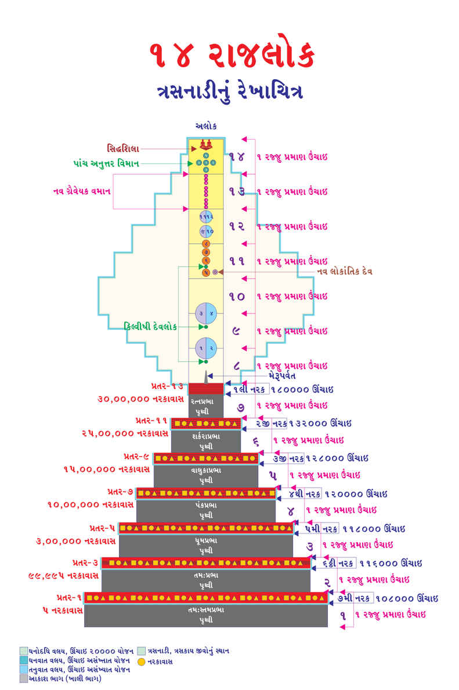
Page 677
જૈનમ્ જયતિ શાસનમ્
દેવલોક - 238: વૈમાનિક દેવલોક-3:
જે દેવોનું રહેવાસ સ્થાન વિમાનમાં હોય તેવા દેવી-દેવતાઓને વૈમાનિક દેવો કહેવાય. જે દેવો ઊર્ધ્વલોક 14 રાજલોકના ત્રણ વિભાગ થાય છે. ચિત્ર પરથી સમજી શકાય છે. તિરછાલોક (મધ્યલોક)ના ઉપરના વિભાગઝના વિમાનમાં રહે છે તેને વૈમાનિક દેવો કહે છે. તેના મુખ્ય બે પ્રકાર હોય છે 1) કલ્પોપન્નક અને 2) કલ્પાતીત.
જ્યાં કલ્પ (આચાર) મર્યાદા અથવા સ્વામી-સેવકનો ભેદ હોય, ઇન્દ્ર, સામાનિક, ત્રાયસ્ત્રિંશક આદિ દશ પ્રકારના દેવોની જાતિનો વ્યવહાર હોય તેને કલ્પોપન્નક દેવ કહે છે. તેના સૌધર્મ દેવલોક વગેરે બાર દેવલોકના બાર પ્રકાર છે.
જ્યાં સ્વામી-સેવકનો ભેદ ન હોય, ઇન્દ્ર વગેરે દશ પ્રકારના દેવોની જાતિનો વ્યવહાર જ્યાં ન હોય તેને કલ્પાતીત કહે છે. તેના બે ભેદ છેઃ 1) નવગ્રૈવેયક વિમાનવાસી દેવ અને 2) પાંચ અનુત્તરોપપાતિક દેવ.
લોક પુરુષની ગ્રીવા (ડોક)ના સ્થાને સ્થિત થયેલા વિમાનોને ગ્રૈવેયક વિમાન કહે છે. તે નવ વિમાન ત્રણ-ત્રણની ત્રણ ત્રિક (ત્રણ-ત્રણની ત્રિપુટી)માં ગોઠવાયેલા છે. તેમાં જન્મ ધારણ કરનારા દેવો ગ્રૈવેયક વિમાનવાસી દેવો કહેવાય છે.
અનુત્તરનો અર્થ છેઃ સર્વોચ્ચ અને સર્વશ્રેષ્ઠ વિમાન. તે અનુત્તર વિમાનોમાં ઉપપાત એટલે કે જન્મ ધારણ કરનાર દેવ અનુત્તરોપપાતિક કહેવાય છે.
48
Page 678
જૈન વિજ્ઞાન
દેવલોક - 239: વૈમાનિક દેવલોક-4:
સૌધર્મથી અચ્યુત સુધીના દેવો ક્રમશઃ (1) મૃગ (હરણ) (ર) મહિષ (પાડો) (3) વરાહ (સૂવર) (4) સિંહ (પ) બકરો (6) દેડકો (7) અશ્વ (ઘોડો) (8) ગજરાજ (હાથી) (9) ભુજંગ (સાપ) (10) ગેંડો (11) વૃષભ (બળદ) (12) વિડિમ (હરણની એક પ્રજાતિ વિશેષરૂપ ચિહ્નોથી યુક્ત મુકુટવાળા હોય છે.
શિથિલ અને શ્રેષ્ઠ મુકુટના ધારક, શ્રેષ્ઠ કુંડળોથી પ્રકાશિત ચહેરાવાળા, મુકુટના કારણે શોભાયુક્ત, રકત (લાલ) આભાયુકત, કમળપત્ર સમાન ગોરા, શ્વેત, શુભ વર્ણ, ગંધ, રસ, સ્પર્શવાળા, ઉત્તમ વૈક્રિયશક્તિના ધારક, શ્રેષ્ઠ વસ્ત્ર, ગંધ, માળા અને વિલેપનને ધારણ કરનાર, મહર્દ્ધિક (મહા ઋદ્ધિવાન), મહાદ્યુતિમાન, મહાયશસ્વી, મહાબલી, મહાનુભાગ, મહાસુખી, હારથી સુશોભિત વક્ષઃસ્થળ (છાતી)વાળા છે. કડા અને બાજુબંધના કારણે સ્તંભિત ભુજાવાળા તથા કપોલ (ગાલ) સ્થલને સ્પર્શ કરતાં અંગદ, કુંડળ કર્ણપીઠમાં ધારણ કરનારા, હાથોમાં વિવિધ આભૂષણોના ધારક અને મસ્તક પર વિસ્મયકારી પુષ્પમાળાઓથી શોભાયમાન છે.
તેઓ કલ્યાણકારી ઉત્તમ વસ્ત્રો તથા કલ્યાણકારી શ્રેષ્ઠ માળા અને વિલેપન ધારણ કરે છે. તેઓનું શરીર તેજથી દેદીપ્યમાન હોય છે. લાંબી વનમાળાના ધારક, દિવ્યવર્ણ, દિવ્યગંધ, દિવ્યરસ, દિવ્યસ્પર્શ, દિવ્યસંહનન, દિવ્યસંસ્થાન, દિવ્યૠદ્ધિ, દિવ્યદ્યુતિ, દિવ્યપ્રભા, દિવ્યછાયા, દિવ્યઅર્ચિ (જ્યોતિ), દિવ્ય તેજથી, દિવ્ય લેશ્યાથી દશે દિશાઓને ઉદ્યોતિત (પ્રકાશિત) અને પ્રભાસિત કરે છે.
49
Page 679
જૈનમ્ જયતિ શાસનમ્
દેવલોક - 240: વૈમાનિક દેવલોક-5:
પોત-પોતાના લાખો વિમાનાવાસોનું, હજારો સામાનિક દેવોનું, ત્રાયસ્ત્રિંશક દેવોનું, લોકપાલ દેવોનું, સપરિવાર અગ્રમહિષીઓનું, પરિષદોનું, સેનાઓનું, સેનાધિપતિ દેવોનું, હજારો આત્મરક્ષક દેવોનું (દરકે પદવીધરોની જાણકારી જૈન વિજ્ઞાનના લેખમાં વિસ્તારમાં અગાઉ જણાવેલ છે.) તથા અન્ય ઘણાં વૈમાનિક દેવો તથા દેવીઓનું આધિપત્ય, અગ્રેસરપણું, સ્વામિત્વ, ભર્તૃત્વ, મહત્તરકત્વ, આજ્ઞેશ્વરત્વ તથા સેનાપતિત્વ કરતાં-કરાવતાં અને પાલન કરતાં-કરાવતાં મહાન નાટ્ય, ગીત તથા કુશળ વાદકો દ્વારા વગાડાતાં વીણા, તલ, તાલ, ત્રુટિત, ઘનમૃદંગ આદિ વાદ્યોના ધ્વનિની સાથે દિવ્ય શબ્દ વગેરે કામભોગોને નિરંતર ભોગવતાં વિચરણ કરે છે.
પર્યાપ્ત (પાંચ ઇન્દ્રિયોની પર્યાપ્તિ સાથે સંપૂર્ણ શરીરની રચના થયેલ હોય તે) અને અપર્યાપ્ત (દેવનો દેવપણે જન્મનો કાળ અંતમુહૂર્ત સમય, જ્યારે દેવોના શરીરની રચના થતી હોય તે અવસ્થાવાળા દેવ, જેમ કે મનુષ્ય જીવ માંના ગર્ભમાં હોય ત્યારે તેની સંપૂર્ણ રચના 9 મહિના દરમ્યાન થતી હોય છે) સૌધર્મ કલ્પગત દેવોનાં સ્થાન જંબૂદ્વીપ નામના દ્વીપના સુમેરુ પર્વતની દક્ષિણ દિશામાં, આ રત્નપ્રભા પૃથ્વીના અત્યંત સમ અને રમણીય ભૂમિભાગથી ઉપર ચંદ્ર, સૂર્ય, ગ્રહ, નક્ષત્ર તથા તારારૂપ જ્યોતિષી વિમાનોથી અનેક સો યોજન, અનેક હજાર યોજન, અનેક લાખો યોજન, ઘણાં કરોડો યોજન અને ઘણા ક્રોડાક્રોડી યોજન ઉપર સૌધર્મ નામક કલ્પ (દેવલોક) આવે છે.
તે પૂર્વ-પશ્ચિમ લાંબું, ઉત્તર-દક્ષિણ પહોળું અર્ધચન્દ્રાકારે સંસ્થિત (ગોઠવાયેલું), અર્ચિઓ (જ્યોતિર્મયી) માળાઓ તથા દીપ્તિના પુંજ સમાન કાન્તિવાળું છે. તેની લંબાઇ તથા પહોળાઇ અસંખ્યાત કોટિ (કરોડ) યોજનની જ નહીં પરંતું, અસંખ્યાત કોટાકોટિ (ક્રોડાક્રોડી) યોજનની છે. તેની પરિધિ (ઘેરાવો) પણ અસંખ્યાત કોટાકોટિ યોજનની છે.
50
Page 680
જૈન વિજ્ઞાન
દેવલોક - 241: વૈમાનિક દેવલોક-6:
તે વિમાનો સર્વરત્નમય સ્વચ્છ તેમજ પ્રતિરૂપ (આબેહૂબ) છે. તે સૌધર્મ કલ્પમાં સૌધર્મ દેવોના બત્રીશ લાખ વિમાનાવાસો કહ્યા છે. તે વિમાનો પૂર્ણરૂપે રત્નમય સ્વચ્છ તેમજ પ્રતિરૂપ છે. તે વિમાનોના બહુસમ મધ્યભાગમાં પાંચ અવતંસક (શ્રેષ્ઠ મહેલો) છે, તે આ પ્રમાણે છેઃ
(1) અશોકાવતંસક, (ર) સપ્તપર્ણાવતંસક (3) ચંપકાવતંસક (4) ચૂતાવતંસક અને આ ચારેયની મધ્યમાં (પ) સૌધર્માવતંસક.
આ અવતંસકો પૂર્ણતઃ રત્નમય, સ્વચ્છ તેમજ પ્રતિરૂપ છે. આ અવતંસકોમાં પર્યાપ્ત અને અપર્યાપ્ત સૌધર્મ દેવોના સ્થાન છે. તે દેવો ત્રણે અપેક્ષાથી લોકના અસંખ્યાતમા ભાગમાં છે. તે વિમાનોમાં ઘણા સૌધર્મ દેવલોકના દેવો નિવાસ કરે છે. તે મહર્દ્ધિક છે તેમજ દશે દિશાઓને પ્રભાસિત (પ્રકાશિત) કરતાં રહે છે.
તે દેવો પોત-પોતાના લાખો વિમાનોનું, હજારો સામાનિક દેવોનું તેમજ હજારો આત્મરક્ષક દેવોનું તથા અન્ય ઘણા સૌધર્મ કલ્પવાસી વૈમાનિક દેવો અને દેવીઓનું આધિપત્ય, અગ્રેસરપણું કરતાં તેમજ ભોગ ભોગવતાં વિચરે છે. આ પ્રમાણેનું વર્ણન સમગ્ર વૈમાનિક દેવોના વર્ણન પ્રમાણે સમજવું.
આ સ્થાનોમાં દેવેન્દ્ર દેવરાજ શક્ર નિવાસ કરે છે; તે વજ્રપાણિ, પુરન્દર, શતક્રતુ, સહસ્ત્રાક્ષ, મઘવા, પાકશાસન, દક્ષિણાર્દ્ધલોકાધિપતિ (આ બધા નામ શક્રેન્દ્રના વિશેષ નામો છે) બત્રીસ લાખ વિમાનોના અધિપતિ છે. તેનું વાહન ઐરાવત હાથી છે.
51
Page 681
જૈનમ્ જયતિ શાસનમ્
દેવલોક - 242: વૈમાનિક દેવલોક-7:
તે સુરેન્દ્ર રજરહિત આકાશ જેવા સ્વચ્છ વસ્ત્રના ધારક, સંસકત માળા અને મુકુટના ધારક; નવા, સુવર્ણમય, સુંદર, અદ્ભુત, ચંચળ કુંડળો જેના કપોલ (ગાલ)ભાગને સ્પર્શી રહ્યા છે, તેવા તે શક્રેન્દ્ર મહર્દ્ધિક તેમજ દશે દિશાને સુશોભિત કરતાં વિચરે છે.
ત્યાં દેવેન્દ્ર દેવરાજ શક્ર 32,00,000 (બત્રીશ લાખ) વિમાનાવાસોનું, 84,000 (ચોર્યાશી હજાર) સામાનિક દેવોનું, 33 (તેત્રીસ) ત્રાયસ્ત્રિંશક દેવોનું, 4 (ચાર) લોકપાલ દેવોનું, સપરિવાર 8 (આઠ) અગ્રમહિષીઓનું, 3 (ત્રણ) પરિષદોનું, 7 (સાત) સેનાઓનું, 7 (સાત) સેનાધિપતિ દેવોનું, 4 x 84,000 (ચાર ચોર્યાશી હજાર) એટલે કે 3,36,000 (ત્રણ લાખ છત્રીશ હજાર) આત્મરક્ષક દેવોનું તથા અન્ય ઘણા સૌધર્મ કલ્પવાસી વૈમાનિક દેવો અને દેવીઓનું આધિપત્ય અને અગ્રેસરપણું કરતાં વિચરણ કરે છે.
પર્યાપ્ત અને અપર્યાપ્ત ઇશાન દેવલોક ના દેવોના સ્થાન જંબૂદ્વીપ નામક દ્વીપના સુમેરુ પર્વતની ઉત્તર દિશામાં, આ રત્નપ્રભા પૃથ્વીના અત્યધિક સમ અને રમણીય ભૂમિભાગથી ઉપર ચંદ્ર, સૂર્ય, ગ્રહ, નક્ષત્ર, અને તારારૂપ જ્યોતિષી દેવોના વિમાનથી અનેક સો યોજન, અનેક હજારો યોજન, અનેક લાખો યોજન, ઘણાં કરોડો યોજન, ઘણાં ક્રોડાક્રોડી યોજન ઉપર ઇશાન નામનું કલ્પ (દેવલોક) આવે છે, તે પૂર્વ-પશ્ચિમમાં લાંબુ તથા ઉત્તર-દક્ષિણ પહોળું છે તેમજ તે સુંદર અને મનોહર વગેરે વર્ણન સૌધર્મકલ્પ પ્રમાણે જાણવું.
52
Page 682
જૈન વિજ્ઞાન
દેવલોક - 243: વૈમાનિક દેવલોક-8:
તે ઇશાન કલ્પમાં ઇશાન દેવોના 28,00,000 (અઠયાવીસ લાખ) વિમાનાવાસો છે. તે વિમાનો સર્વ રત્નમય તેમજ પ્રતિરૂપ છે. તે વિમાનાવાસોના બરાબર મધ્યભાગમાં પાંચ અવતંસક (શ્રેષ્ઠ મહેલ) છે, તે આ પ્રમાણે છેઃ (1) અંકાવતંસક, (ર) સ્ફટિકાવતંસક, (3) રત્નાવતંસક, (4) જાતરૂપાવતંસક અને તે ચારેયની મધ્યમાં (પ) ઇશાનાવતંસક છે. તે અવતંસકો પૂર્ણતયા રત્નમય તેમજ પ્રતિરૂપ (આબેહૂબ) છે. આ અવતંસકોમાં પર્યાપ્તા અને અપર્યાપ્તા ઇશાન દેવોના સ્થાન છે. તે સ્થાન ત્રણેય અપેક્ષાથી લોકના અસંખ્યાતમા ભાગમાં છે. બાકીનું બધું જ વર્ણન સૌધર્મ દેવલોકના દેવો પ્રમાણે જાણવું તેમજ તે દેવો દિવ્ય ભોગ ભોગવતાં વિચરણ કરે છે.
ઇશાન કલ્પમાં દેવેન્દ્ર દેવરાજ ઇશાનેન્દ્ર નિવાસ કરે છે, તે શૂલપાણિ, વૃષભવાહન, ઉત્તરાર્દ્ધલોકાધિપતિ (ઇશાનેન્દ્રના ઉપનામ કહેવાય છે) 28,00,000 (અઠયાવીશ લાખ) વિમાનાવાસોના અધિપતિ, રજરહિત આકાશ સમાન સ્વચ્છ વસ્ત્રોના ધારક છે તેમજ દશે (પૂર્વ, પશ્ચિમ, ઉત્તર, દક્ષિણ, ઇશાન, અગ્નિ, વાયવ્ય, નૈઋત્ય, અધો અને ઉર્ધ્વ આ દશ દિશા કહેવાય) દિશાઓને પ્રતિભાસિત કરતાં વિચરે છે વગેરે વર્ણન શક્રેન્દ્ર (સૌધર્મેન્દ્ર) ની સમાન જાણવું.
53
Page 683
જૈનમ્ જયતિ શાસનમ્
દેવલોક - 244: વૈમાનિક દેવલોક-9:
તે ઇશાનેન્દ્ર 28,00,000 (અઠયાવીશ લાખ) વિમાનાવાસોનું, 80,000 (એંશી હજાર) સામાનિક દેવોનું, 33 (તેત્રીશ) ત્રાયસ્ત્રિંશક દેવોનું, 4 (ચાર) લોકપાલ દેવોનું, 8 (આઠ) સપરિવાર અગ્રમહિષીઓનું, 3 (ત્રણ) પરિષદોનું, 7 (સાત) સેનાઓનું, 7 (સાત) સેનાધિપતિ દેવોનું, (4 x 80,000)ચાર એંશી હજાર એટલે કે 3,20,000 (ત્રણ લાખ, વીશ હજાર) આત્મરક્ષક દેવોનું તથા અન્ય ઘણા ઇશાન કલ્પવાસી દેવો તથા દેવીઓનું આધિપત્ય, અગ્રેસરત્વ કરતા વિચરણ કરે છે.
પર્યાપ્ત અને અપર્યાપ્ત સનત્કુમાર દેવોનાં સ્થાન સૌધર્મકલ્પની ઉપર સમાન દિશા અને સમાન વિદિશામાં એટલે કે બરાબર ઉપર અનેક યોજન, અનેક સો યોજન, અનેક હજાર યોજન, અનેક લાખો યોજન, અનેક ક્રોડ (કરોડ) યોજન અને અનેક ક્રોડાક્રોડી યોજન ઊંચે સનત્કુમાર નામનું કલ્પ (દેવલોક) આવે છે. તે સૌધર્મ દેવલોકની જેમ પૂર્વ-પશ્ચિમમાં લાંબુ અને ઉત્તર-દક્ષિણ પહોળું છે. બાકીનું સંપૂર્ણ વર્ણન સૌધર્મ દેવલોક પ્રમાણે જાણવું.
54
Page 684
જૈન વિજ્ઞાન
દેવલોક - 245: વૈમાનિક દેવલોક-10:
આ સનત્કુમાર કલ્પમાં સનત્કુમાર દેવોના 12,00,000 (બાર લાખ) વિમાનો છે. તે વિમાનો પૂર્ણપણે રત્નમય છે તેમજ મનોહર છે. તે વિમાનોની બરાબર મધ્યમાં પાંચ અવતંસક (શ્રેષ્ઠ મહેલ) છે, તે આ પ્રમાણે છેઃ (1) અશોકાવતંસક, (ર) સપ્તપર્ણાવતંસક (3) ચંપકાવતંસક, (4) ચૂતાવતંસક અને તે ચારેયની મધ્યમાં (પ) સનત્કુમારાવતંસક છે.
આ અવતંસકો સર્વરત્નમય, સ્વચ્છ તેમજ પ્રતિરૂપ (આબેહૂબ) છે. આ અવતંસકોમાં પર્યાપ્ત અને અપર્યાપ્ત સનત્કુમાર દેવોના સ્થાન છે. આ સ્થાન ત્રણેય અપેક્ષાથી લોકના અસંખ્યાતમા ભાગમાં છે. તે સ્થાનોમાં ઘણા સનત્કુમાર દેવો નિવાસ કરે છે, તે મહર્દ્ધિક તેમજ દશે દિશાઓને પ્રતિભાસિત કરતાં વિચરણ કરે છે. વિશેષતા એ છે કે સનત્કુમાર દેવલોકમાં અગ્રમહિષીઓ (ઇન્દ્રાણી, દેવીઓ) નથી. અહીં દેવેન્દ્ર દેવરાજ સનત્કુમારેન્દ્ર નિવાસ કરે છે. તે રજરહિત આકાશ જેવા સ્વચ્છ વસ્ત્રોના ધારક છે. બાકીનું વર્ણન શક્રેન્દ્રની સમાન જાણવું.
તે સનત્કુમારેન્દ્ર 12,00,000 (બાર લાખ) વિમાનવાસોનું, 72,000 (બોતેર હજાર) સામાનિક દેવોનું, (4 x 72,000) ચાર બોતેર હજાર એટલે કે, 2,28,000 (બે લાખ અઠયાવીસ હજાર આત્મરક્ષક દેવોનું આધિપત્ય કરતાં વિચરે છે. તેમને અગ્રમહિષીઓ નથી. ૠદ્ધિનું બાકીનું વર્ણન શક્રેન્દ્રની સમાન જાણવું.
55
Page 685
જૈનમ્ જયતિ શાસનમ્
દેવલોક - 246: વૈમાનિક દેવલોક-11:
પર્યાપ્ત અને અપર્યાપ્ત માહેન્દ્ર દેવોનાં સ્થાન ઇશાન કલ્પની ઉપર સમાન દિશા અને સમાન વિદિશામાં એટલે કે, બરોબર ઉપર ઘણા યોજનો તેમજ ઘણા ક્રોડાક્રોડી યોજનો ઉપર ઊંચે માહેન્દ્ર નામનું કલ્પ (દેવલોક) આવે છે. તે પૂર્વ-પશ્ચિમ લાંબુ તથા ઉત્તર-દક્ષિણ પહોળું વગેરે વર્ણન સનત્કુમાર કલ્પ પ્રમાણે જાણવું. વિશેષતા એ છે કે આ કલ્પમાં આઠ લાખ વિમાનો છે. તેના અવતંસકનું કથન ઈશાનકલ્પના અવતંસક પ્રમાણે જાણવું. તેમાં વિશેષતા એ છે કે તે ચારે અવતંસકની મધ્યમાં માહેન્દ્રાવતંસક છે. શેષ વર્ણન સનત્કુમાર દેવોની સમાન તેમજ દિવ્ય ભોગ ભોગવતાં વિચરણ કરે છે. અહીં દેવેન્દ્ર દેવરાજ માહેન્દ્ર નિવાસ કરે છે; તે રજ રહિત આકાશ સમાન સ્વચ્છ વસ્ત્રોના ધારક છે તેમજ વિચરણ કરે છે, વગેરે વર્ણન સનત્કુમારની સમાન જાણવું.
વિશેષતા એ છે કે માહેન્દ્ર દેવ 8,00,000 (આઠ લાખ) વિમાનાવાસોનું, 70,000 (સિત્તેર હજાર) સામાનિક દેવોનું, 4 x 70,000 ચાર સિત્તેર હજાર એટલે કે 2,80,000 (બે લાખ, એંશી હજાર) આત્મ-રક્ષકદેવોનું આધિપત્ય કરતાં વિચરણ કરે છે.
56
Page 686
જૈન વિજ્ઞાન
દેવલોક - 247: વૈમાનિક દેવલોક-12:
પર્યાપ્ત અને અપર્યાપ્ત બ્રહ્મલોક દેવોનાં સ્થાન સનત્કુમાર અને માહેન્દ્ર કલ્પોની ઉપર સમાન દિશા અને સમાન વિદિશામાં ઘણા યોજન તેમજ ઉપર ઊંચે બ્રહ્મલોક નામક કલ્પ (દેવલોક) છે, તે પૂર્વ-પશ્ચિમ લાંબુ અને ઉત્તર-દક્ષિણ પહોળું, પરિપૂર્ણ ચંદ્રના આકારનું, જ્યોતિમાળા તથા દિપ્તીપુંજની પ્રભાયુક્ત છે. બાકી વર્ણન સનત્કુમાર કલ્પની સમાન છે.
વિશેષતા એ છે કે આ કલ્પમાં 4,00,000 (ચાર લાખ) વિમાનો છે. તેના પાંચ અવતંસક સૌધર્મ અવતંસકોની સમાન જાણવા પરંતું, ચારેય અવતંસકોની મધ્યમાં બ્રહ્મલોકાવતંસક છે, તેમ જાણવું. અહીં બ્રહ્મલોક દેવોના સ્થાન છે. બાકીનું વર્ણન અગાઉ પ્રમાણે જાણવું. બ્રહ્મલોકાવતંસકમાં દેવેન્દ્ર દેવરાજ બ્રહ્મેન્દ્ર નિવાસ કરે છે; તે રજ રહિત આકાશ સમાન સ્વચ્છ વસ્ત્રોના ધારક છે, આ રીતે સનત્કુમારેન્દ્રની જેમ વિચરણ કરે છે.
વિશેષતા એ છે કે બ્રહ્મેન્દ્ર 4,00,000 (ચાર લાખ) વિમાનાવાસોનું, 60,000 (સાઠ હજાર) સામાનિક દેવોનું, 4 x 60,000 (ચાર સાઠ હજાર) એટલે કે 2,40,000 (બે લાખ, ચાલીસ હજાર) આત્મરક્ષક દેવોનું તથા અન્ય ઘણા બ્રહ્મલોક કલ્પના દેવોનું આધિપત્ય કરતાં વિચરણ કરે છે.
57
Page 687
જૈનમ્ જયતિ શાસનમ્
દેવલોક - 248: વૈમાનિક દેવલોક-13:
પર્યાપ્ત અને અપર્યાપ્ત લાન્તક દેવોનાં સ્થાન બ્રહ્મલોક કલ્પ (દેવલોક)ની ઉપર સમાન દિશા અને સમાન વિદિશામાં અનેક સો યોજન તેમજ ઘણા ક્રોડાક્રોડી યોજન ઉપર લાંતક નામનું કલ્પ (દેવલોક) આવે છે. તે પૂર્વ-પશ્ચિમ લાંબુ છે; વગેરે સમગ્ર વર્ણન બ્રહ્મલોકની સમાન છે.
તેમાં વિશેષતા એ છે કે આ કલ્પમાં 50,000 (પચાસ હજાર) વિમાનાવાસ છે, તેના અવતંસક (શ્રેષ્ઠ મહેલ) ઇશાનાવતંસકોની સમાન છે પરંતું, અહીં મધ્યનું (પાંચમું) લાન્તકાવતંસક છે. બાકીનું સમગ્ર વર્ણન સમુચ્ચય વૈમાનિકોની સમાન જાણવુંતેમજ દિવ્યભોગ ભોગવતાં વિચરણ કરે છે.
આ લાંતક અવતંસકમાં દેવેન્દ્ર દેવરાજ લાંતકેન્દ્ર નિવાસ કરે છે, તેની ૠદ્ધિનું વર્ણન સનત્કુમાર ની સમાન છે. વિશેષતા એ છે કે લાંતકેન્દ્ર 50,000 (પચાસ હજાર) વિમાનાવાસોનું, 50,000 (પચાસ હજાર) સામાનિક દેવોનું, (4 x 50,000) ચાર પચાસ હજાર એટલે કે 2,00,000 (બે લાખ) આત્મરક્ષક દેવોનું તથા અન્ય ઘણા લાંતકદેવોનું આધિપત્ય કરતાં વિચરે છે.
પર્યાપ્ત અને અપર્યાપ્ત મહાશુક્ર દેવોનાં સ્થાન લાંતક કલ્પ (દેવલોક)ની ઉપર સમાન દિશા તથા સમાન વિદિશામાં અનેક ક્રોડાક્રોડી યોજન ઉપર જઇએ ત્યાં મહાશુક્ર નામનું કલ્પ છે, તે પૂર્વ-પશ્ચિમ લાંબુ અને ઉત્તર-દક્ષિણ પહોળું છે, તેનું વર્ણન બ્રહ્મલોકની સમાન છે.
58
Page 688
જૈન વિજ્ઞાન
દેવલોક - 249: વૈમાનિક દેવલોક-14:
તેમાં વિશેષતા એ છે કે મહાશુક્ર દેવલોકમાં 40,000 (ચાલીસ હજાર) વિમાનાવાસ કહ્યા છે. તેના અવતંસક (શ્રેષ્ઠ મહેલ) સૌધર્માવતંસક સમાન જાણવા જોઇએ પરંતું, ચારેયની મધ્યમાં પાંચમું મહાશુક્રાવતંસક વિમાન છે. આ મહાશુક્રાવતંસક વિમાનમાં દેવેન્દ્ર દેવરાજ મહાશુક્રેન્દ્ર રહે છે, તેનું વર્ણન સનત્કુમારેન્દ્રની સમાન જાણવું.
વિશેષતા એ છે કે તે મહાશુક્રેન્દ્ર 40,000 (ચાલીસ હજાર) વિમાનાવાસોનું, 40,000 (ચાલીસ હજાર) સામાનિક દેવોનું અને 4 x 40,000 (ચાર ચાલીસ હજાર) એટલે કે 1,60,000 આત્મરક્ષક દેવોનું આધિપત્ય કરતાં વિચરણ કરે છે.
પર્યાપ્ત અને અપર્યાપ્ત સહસ્ત્રાર દેવોના સ્થાન મહાશુક્ર કલ્પની ઉપર સમાન દિશા અને સમાન વિદિશામાં અનેક ક્રોડાક્રોડ યોજન ઉપર સહસ્ત્રાર નામનું કલ્પ (દેવલોક) છે. તે પૂર્વ-પશ્ચિમ લાંબુ છે, વગેરે સમસ્ત વર્ણન બ્રહ્મલોક કલ્પ (દેવલોક)ની સમાન છે.
તેમાં વિશેષતા એ છે કે આ સહસ્ત્રાર કલ્પમાં 6,000 (છ હજાર) વિમાનાવાસ છે. દેવોનું વર્ણન અગાઉ પ્રમાણે જાણવું. તેના અવતંસક (શ્રેષ્ઠ મહેલ)નું વર્ણન ઇશાનકલ્પના અવતંસકોની સમાન છે. પરંતું, ચારેની મધ્યમાં (પાંચમું) સહસ્રાવતંસક છે. આ સહસ્રાવતંસકમાં દેવેન્દ્ર, દેવરાજ સહસ્રેન્દ્ર નિવાસ કરે છે. તેની ૠદ્ધિનું વર્ણન સનત્કુમારની જેમ જાણવું.
59
Page 689
જૈનમ્ જયતિ શાસનમ્
દેવલોક - 250: વૈમાનિક દેવલોક-15:
વિશેષતા એ છે કે સહસ્રેન્દ્ર 6,000 (છ હજાર) વિમાનાવાસોનું, 30,000 (ત્રીસ હજાર) સામાનિક દેવોનું, 4 x 30,000) ચાર ત્રીસ હજાર એટલે કે 1,20,000 (એક લાખ વીશ હજાર) આત્મરક્ષક દેવોનું આધિપત્ય કરતાં વિચરે છે.
પર્યાપ્ત અને અપર્યાપ્ત આણત અને પ્રાણત દેવોનાં સ્થાન સહસ્રાર કલ્પ (દેવલોક)ની ઉપર સમાન દિશા અને સમાન વિદિશામાં તેમજ અનેક કોટાકોટિ (ક્રોડાક્રોડી) યોજન ઉપર આણત તથા પ્રાણત નામના બે (દેવલોક) છે. તે પૂર્વ- પશ્ચિમ લાંબા, ઉત્તર-દક્ષિણ પહોળા છે. અર્ધચંદ્રના આકારે સંસ્થિત, જ્યોતિમાળા અને દીપ્તિપુંજની પ્રભા (પ્રકાશ) સમાન છે. શેષ (બાકી) વર્ણન સનત્કુમાર દેવલોકની સમાન જાણવું તેમજ તે પ્રતિરૂપ (આબેહૂબ) છે.
તે કલ્પોમાં આણત અને પ્રાણત દેવોના 400 (ચારસો) વિમાનાવાસ છે, તેના અવતંસક (શ્રેષ્ઠ મહેલ)નું વર્ણન સૌધર્મ કલ્પના અવતંસકોની સમાન છે. વિશેષતા એ છે કે આ ચારેની મધ્યમાં પાંચમું પ્રાણતાવતંસક છે. તે અવતંસકો પૂર્ણરૂપે રત્નમય, સ્વચ્છ તેમજ પ્રતિરૂપ છે.
આ અવતંસકોમાં પર્યાપ્ત-અપર્યાપ્ત આણત-પ્રાણત દેવો છે, તે દેવો ત્રણે અપેક્ષાથી લોકના અસંખ્યાતમા ભાગમાં છે; ત્યાં ઘણા આણત-પ્રાણત દેવો નિવાસ કરે છે; તે મહર્દ્ધિક છે તેમજ દશે દિશાઓને પ્રભાસિત (પ્રકાશિત) કરતાં વિચરે છે. ત્યાં પ્રાણતેન્દ્ર પોત-પોતાનાં સેંકડો વિમાનોનું આધિપત્ય કરતાં વિચરે છે. અહીં દેવેન્દ્ર દેવરાજ પ્રાણતેન્દ્ર નિવાસ કરે છે, તેનું વર્ણન સનત્કુમારની જેમ જાણવું.
60
Page 690
જૈન વિજ્ઞાન
દેવલોક - 251: વૈમાનિક દેવલોક-16:
તેમાં વિશેષતા એ છે કે પ્રાણતેન્દ્ર 400 (ચાર સો) વિમાનાવાસોનું, 20,000 (વીશ હજાર) સામાનિક દેવોનું તથા 80,000 (એંશી હજાર) આત્મરક્ષક દેવોનું તથા અન્ય ઘણા દેવોનું આધિપત્ય કરતા વિચરે છે.
પર્યાપ્ત અને અપર્યાપ્ત આરણ-અચ્યુત દેવોનાં સ્થાન આણત-પ્રાણત કલ્પો (દેવલોક)ની ઉપર સમાન દિશા અને સમાન વિદિશામાં ઉપર આરણ અને અચ્યુત નામના બે કલ્પ છે. તે પૂર્વ-પશ્ચિમ લાંબા છે અને ઉત્તર-દક્ષિણ પહોળા છે. અર્ધ ચંદ્રના આકારે સંસ્થિત અને સૂર્યની તેજો રાશિ સમાન પ્રભાયુક્ત (કિરણો યુક્ત) છે. તેની લંબાઇ-પહોળાઇ અસંખ્યાત ક્રોડાક્રોડી યોજન તથા પરિધિ (ઘેરાવો, ગોળાઈ) પણ અસંખ્યાત ક્રોડાક્રોડી યોજનની છે. તે દેવલોક પૂર્ણતઃ રત્નમય, સ્વચ્છ, સ્નિગ્ધ, કોમળ, ઘસેલા, સાફ કરેલા (સુંવાળા કરેલાં), રજ રહિત, નિર્મળ, નિષ્પંક, નિરાવરણ, કાંતિથી યુક્ત, પ્રભામય, શ્રીસંપન્ન, ઉદ્યોતમય, પ્રસન્નતાજનક, દર્શનીય, મનોરમ્ય અને મનોહર છે. ત્યાં આરણ-અચ્યુત કલ્પવાસી દેવોના 300 (ત્રણસો) વિમાન કહ્યા છે. તે વિમાનો પૂર્ણતઃ રત્નમય, સ્વચ્છ, સ્નિગ્ધ, કોમળ, ઘસેલા, સાફ કરેલા (સુંવાળા કરેલાં), રજ રહિત, નિર્મળ, નિષ્પંક, નિરાવરણ, કાંતિથી યુક્ત, પ્રભામય, શ્રીસંપન્ન, ઉદ્યોતમય, પ્રસન્નતાજનક, દર્શનીય, મનોરમ્ય અને મનોહર છે.
61
Page 691
જૈનમ્ જયતિ શાસનમ્
દેવલોક - 252: વૈમાનિક દેવલોક-17:
આ વિમાનોની બરોબર મધ્યમાં પાંચ અવતંસક (શ્રેષ્ઠ મહેલ) છે. તે આ પ્રમાણે છેઃ (1) અંકાવતંસક, (ર) સ્ફટિકાવતંસક, (3) રત્નાવતંસક, (4) જાતરૂપાવતંસક અને ચારેની મધ્યમાં (પ) અચ્યુતાવતંસક છે. આ અવતંસક સર્વ રત્નમય છે તેમજ પ્રતિરૂપ (આબેહૂબ) છે. તેમાં આરણ અને અચ્યુત દેવોના પર્યાપ્ત તથા અપર્યાપ્ત દેવોના સ્થાન છે. આ દેવો ઉપપાત આદિ ત્રણેય અપેક્ષાથી લોકના અસંખ્યાતમા ભાગમાં છે. તે વિમાનોમાં ઘણા આરણ અને અચ્યુત દેવો વિચરણ કરે છે. આ જ અચ્યુતાવતંસકમાં દેવેન્દ્ર દેવરાજ અચ્યુતેન્દ્ર નિવાસ કરે છે. તેનું સમગ્ર વર્ણન પ્રાણતેન્દ્રની સમાન જાણવું.
વિશેષતા એ છે કે અચ્યુતેન્દ્ર 300 (ત્રણસો) વિમાનાવાસોનું, 10,000 (દશ હજાર) સામાનિક દેવોનું તથા 40,000 (ચાલીસ હજાર) આત્મરક્ષક દેવોનું આધિપત્ય કરતાં વિચરણ કરે છે. એકંદરે...
(1) સૌધર્મ દેવલોક - 32 લાખ વિમાન (ર) ઇશાન દેવલોક - 28 લાખ વિમાન (3) સનત્કુમાર દેવલોક - 12 લાખ વિમાન માહેન્દ્ર દેવલોક - 8 લાખ વિમાન -4 બ્રહ્મ દેવલોક - 4 લાખ વિમાન (પ) લાન્તક દેવલોક - 50 હજાર વિમાન -6 મહાશુક્ર દેવલોક - 40 હજાર વિમાન -7 (8) સહસ્ત્રાર દેવલોક - 6 હજાર વિમાન (9-10) આણત દેવલોક અને પ્રાણત દેવલોક - 400 વિમાન (11-12) આરણ દેવલોક અને અચ્યુત દેવલોક - 300 વિમાન કલ્પોપન્નક 12 દેવલોકના કુલ 84,96,700 દેવ વિમાનાવાસ હોય છે.
62
Page 692
જૈન વિજ્ઞાન
દેવલોક - 253: વૈમાનિક દેવલોક-18:
કલ્પાતિત વૈમાનિક દેવલોક (નવ ગ્રૈવેયકઃ)
પર્યાપ્ત અને અપર્યાપ્ત અધસ્તન ગ્રૈવેયક દેવોના સ્થાન આરણ અને અચ્યુત કલ્પો (દેવલોક)થી અનેક કોટાકોટિ યોજન ઉપર અધસ્તન (નીચલી) ગ્રૈવેયક દેવોના ત્રણ ગ્રૈવેયક વિમાન પ્રસ્તટ (પ્રતર) છે; તે પૂર્વ-પશ્ચિમ લાંબા અને ઉત્તર- દક્ષિણ પહોળા છે. તે (વિમાનો) પરિપૂર્ણ ચંદ્રના આકારે સંસ્થિત છે, સૂર્યની તેજોરાશિના વર્ણ જેવી પ્રભા (કિરણો) યુક્ત છે, બાકીનું વર્ણન બ્રહ્મલોક કલ્પની સમાન છે તેમજ પ્રતિરૂપ (આબેહૂબ) છે.
તેમાં અધસ્તન ગ્રૈવેયક દેવોના 111 (એકસો અગિયાર) વિમાનો છે. તે વિમાનો પૂર્ણરૂપે રત્નમય તેમજ પ્રતિરૂપ છે. ત્યાં પર્યાપ્ત અને અપર્યાપ્ત અધસ્તન ગ્રૈવેયક દેવોનાં સ્થાન છે. તે દેવોના સ્થાન ત્રણેય અપેક્ષાએ લોકના અસંખ્યાતમાં ભાગમાં છે.
તેમાં ઘણા અધસ્તન ગ્રૈવેયક દેવો નિવાસ કરે છે. તેઓ બધા સમાન ૠદ્ધિવાળા, સમાન દ્યુતિવાળા, સમાન યશસ્વી, સમાન બળવાન, સમાન પ્રભાવવાળા, મહાસુખી, ઇન્દ્રરહિત, દાસરહિત, પુરોહિત રહિત હોય છે. તે દેવગણો અહમિન્દ્ર નામથી એટલે સર્વે દેવો ઇન્દ્ર સમાન હોય છે. તેમજ કોઇ દેવ ઊંચ નહીં કોઇ દેવ નીચ નહીં સહુ સમાન હોય છે.
63
Page 693
જૈનમ્ જયતિ શાસનમ્
દેવલોક - 254: વૈમાનિક દેવલોક-19:
પર્યાપ્ત અને અપર્યાપ્ત મધ્યમ ગ્રૈવેયક દેવોનાં સ્થાન અધસ્તન ગ્રૈવેયકોની ઉપર સમાન દિશા અને સમાન વિદિશામાં અનેક કોટાકોટિ (ક્રોડાક્રોડી) યોજન ઉપર ઊંચે મધ્યમ ગ્રૈવેયક દેવોના ત્રણ ગ્રૈવેયક વિમાન પ્રસ્તટ (પ્રતર) છે; તે પૂર્વ-પશ્ચિમ લાંબા છે, તેનું વર્ણન અધસ્તન ગ્રૈવેયકની સમાન છે.
વિશેષતા એ છે કે તેમાં 107 (એકસો સાત) વિમાનાવાસો છે. તે વિમાનો રત્નમય તેમજ પ્રતિરૂપ છે. તે વિમાનાવાસમાં પર્યાપ્ત અને અપર્યાપ્ત મધ્યમ ગ્રૈવેયક દેવોના સ્થાન છે. તે દેવો ત્રણેય અપેક્ષાએ લોકના અસંખ્યાતમા ભાગમાં છે. ત્યાં ઘણા મધ્યમ ગ્રૈવેયકના દેવો નિવાસ કરે છે આ દેવગણો અહમિન્દ્ર કહેવાય છે.
પર્યાપ્ત અને અપર્યાપ્ત ઉપરિતન ગ્રૈવેયક દેવોનાં સ્થાન મધ્યમ ગ્રૈવેયકોની ઉપર તેમજ અનેક કોટાકોટિ (ક્રોડાક્રોડી) યોજન ઉપર ઉપરિતન ગ્રૈવેયક દેવોના ત્રણ ગ્રૈવેયક વિમાન પ્રસ્તટ (પ્રતર) છે; તે પૂર્વ-પશ્ચિમ લાંબા છે. શેષ વર્ણન અધસ્તન ગ્રૈવેયક પ્રમાણે જાણવું. વિશેષતા એ છે કે તેના 100 (એકસો) વિમાનાવાસ છે. શેષ (બાકી) વર્ણન આગળ પ્રમાણે છે. તે દેવગણો અહમિન્દ્ર કહેવાય છે.
64
Page 694
જૈન વિજ્ઞાન
દેવલોક - 255: વૈમાનિક દેવલોક-20:
કલ્પાતિત વૈમાનિક દેવલોક (અનુત્તર દેવલોકઃ)
પર્યાપ્ત અને અપર્યાપ્ત અનુત્તરોપપાતિક દેવોનાં સ્થાન આ રત્નપ્રભા પૃથ્વીના બહુસમરમણીય ભૂમિભાગથી ઉપર, ચંદ્ર, સૂર્ય, ગ્રહ, નક્ષત્ર અને તારારૂપ જ્યોતિષી દેવોના વિમાનોથી અનેક સો યોજન, અનેક હજારો યોજન, અનેક લાખો યોજન, અનેક કરોડ યોજન, અનેક ક્રોડાક્રોડી યોજન ઉપર, સૌધર્મ, ઇશાન, સનત્કુમાર, માહેન્દ્ર, બ્રહ્મલોક, લાંતક, મહાશુક્ર, સહસ્રાર, આનત, પ્રાણત, આરણ અને અચ્યુત કલ્પો તથા ત્રણેય ગ્રૈવેયક પ્રસ્તટોના 318 (ત્રણસો અઢાર) વિમાનાવાસોથી ઊંચે સુદૂર સ્થિત પાંચ દિશાઓમાં (ચાર દિશા અને મધ્યમાં) રજરહિત, નિર્મળ, અંધકારરહિત અને વિશુદ્ધ પાંચ મોટા અનુત્તર મહાવિમાનો છે.
તે આ પ્રમાણે છેઃ (1) વિજય (ર) વૈજયન્ત (3) જયન્ત (4) અપરાજિત અને (પ) સર્વાર્થસિદ્ધ મહાવિમાન. આ વિમાનો પૂર્ણરૂપે રત્નમય, સ્ફટિકસમ સ્વચ્છ, સ્નિગ્ધ, કોમળ, ઘસેલા, સાફ કરેલા સુંવાળા, રજ રહિત, નિષ્પંક, નિરાવરણ, છાયા યુક્ત, પ્રભાયુક્ત, શ્રીસંપન્ન, ઉદ્યોતયુક્ત, પ્રસન્નતાજનક, દર્શનીય, મનોરમ્ય અને મનોહર છે. ત્યાં પર્યાપ્ત અને અપર્યાપ્ત અનુત્તરોપપાતિક દેવોના સ્થાન છે. આ સ્થાન ત્રણેય અપેક્ષાએ લોકના અસંખ્યાતમા ભાગમાં છે. ત્યાં ઘણા અનુત્તરોપપાતિક દેવો નિવાસ કરે છે.
65
Page 695
જૈનમ્ જયતિ શાસનમ્
દેવલોક - 256: વૈમાનિક દેવલોક-21:
તેઓ બધા સમાન ૠદ્ધિસંપન્ન, સમાન બળસંપન્ન, સમાન પ્રભાવશાળી, મહાસુખી, ઇન્દ્ર રહિત, દાસરહિત, પુરોહિત રહિત છે. તે દેવગણો અહમિન્દ્ર ના નામે ઓળખાય છે.
વૈમાનિક દેવોના સ્થાનો, તેના આવાસરૂપ વિમાનો, તેની સંખ્યા, સ્વરૂપ, તેના ઇન્દ્રો, ૠદ્ધિ આદિનું વર્ણન છે. વૈમાનિક દેવોના ભેદ (પ્રકારઃ) બાર દેવલોક, ત્રણ કિલ્વીષી, નવ લોકાંતિક, નવ ગ્રૈવેયક અને પાંચ અનુત્તર વિમાન, કુલ 38 ભેદ થાય છે. ત્રણ કિલ્વીષી અને નવ લોકાન્તિક દેવોના સ્થાનો બાર દેવલોકની અંતર્ગત આવી જતા હોવાથી તેનું વર્ણન અલગથી કરવામાં આવ્યું નથી.
વૈમાનિક દેવોના સ્થાન (વૈમાનિકદેવોના આવાસરૂપ વિમાનો) ઊર્ધ્વલોકમાં છે. સમપૃથ્વીથી 900 યોજનની ઊંચાઇ પર્યંત તિરછાલોક (મધ્યલોક)નું ક્ષેત્ર છે. ત્યાં સુધીમાં જ્યોતિષી દેવોના વિમાનો છે. ઊર્ધ્વલોક કંઇક ન્યૂન સાત રજ્જુ (એટલે કે 7 રાજલોકથી થોડુંક ઓછું) પ્રમાણ છે. તેમાં વૈમાનિક દેવોના વિમાનો, સિદ્ધશિલા અને સિદ્ધક્ષેત્ર છે.
એકંદરે કલ્પોપન્નક 12 દેવલોકના કુલ 84,96,700 દેવ વિમાનાવાસ અને 323 વિમાનાવાસ) કલ્પાતિત દેવલોકના કુલ (111 + 107 + કુલ વૈમાનિક દેવલોકના 84,97,023 વિમાનાવાસ થાય છે.
100
5 + =
66
Page 696
જૈન વિજ્ઞાન
દેવલોક - 257: વૈમાનિક દેવલોક-22:
ઊર્ધ્વલોક-વૈમાનિક દેવોના સ્થાનઃ
સૌધર્મ અને ઇશાન દેવલોકઃ સમ પૃથ્વીથી લગભગ એક રજ્જુની ઊંચાઇએ, જ્યોતિષી દેવોના વિમાનોથી અસંખ્યાત ક્રોડાકોડી યોજન ઉપર સૌધર્મ અને ઇશાન નામના બે દેવલોક છે. મેરુપર્વતની દક્ષિણ દિશામાં સૌધર્મ દેવલોક અને ઉત્તરદિશામાં ઇશાન દેવલોક છે.
બંને દેવલોક અર્ધચંદ્રાકારે (અડધા ગોળાકાર આકારે) સંસ્થિત (રહેલું) છે અને એક જ સપાટીએ સંલગ્ન (અડીને રહેલું) હોવાથી બંને મળીને પૂર્ણ ચંદ્રકાર (સંપૂર્ણ ગોળ) થઇ જાય છે. તે દેવલોકની લંબાઇ-પહોળાઇ અસંખ્યાત યોજન અને પરિધિ (ઘેરાવો) પણ અસંખ્યાત યોજન છે. તે દેવલોકમાં પણ નરકની જેમ પ્રસ્તટ (પાથડા) અને આંતરા હોય છે. એક - એક પ્રસ્તટમાં દેવવિમાનો હોય છે. સૌધર્મ અને ઈશાન દેવલોકમાં 13-13 પ્રસ્તટ છે.
સૌધર્મ અને ઇશાન બંને દેવલોક મળીને પૂર્ણચંદ્રાકાર થાય છે. તેમાં દક્ષિણદિશાના અર્ધચંદ્રાકાર પ્રતરો સૌધર્મ દેવલોકના અને ઉત્તરદિશાના અર્ધચંદ્રાકાર પ્રતરો ઇશાનદેવલોકના છે. તે પ્રત્યેકની મધ્યમાં એક ઇન્દ્રક વિમાન હોય છે અને તેની ચારે દિશામાં પંક્તિબદ્ધ ગોળ, ત્રિકોણ અને ચોરસ વિમાનો હોય છે. તે ઉપરાંત પુષ્પાવકીર્ણ (છૂટાછવાયા) વિમાનો ચારે બાજુ હોય છે.
67
Page 697
જૈનમ્ જયતિ શાસનમ્
દેવલોક - 258: વૈમાનિક દેવલોક-23:
પ્રથમ સૌધર્મ દેવલોકમાં 32 લાખ અને બીજા ઇશાન દેવલોકમાં 28 લાખ વિમાનો છે. તે વિમાનોનું સ્વરૂપ અગાઉ જણાવેલ છે. તે વિમાનોની મધ્યમાં પાંચ અવતંસક એટલે કે મુખ્ય પ્રાસાદ (મહેલ) હોય છે. ચારે દિશામાં ચાર અને મધ્યમાં એક મુખ્ય પ્રાસાદ હોય છે. તે મધ્યના પ્રાસાદમાં ઇન્દ્ર અથવા તે તે વિમાનના અધિપતિ દેવ રહે છે.
સનત્કુમાર અને માહેન્દ્ર દેવલોકઃ સમપૃથ્વીથી લગભગ બે રજ્જુની ઊંચાઇએ પ્રથમ અને બીજા દેવલોકથી અસંખ્યાત કોટાકોટિ (ક્રોડાક્રોડી) યોજન ઊંચે, બરોબર તેની ઉપર દક્ષિણ દિશામાં સનત્કુમાર અને ઉત્તરદિશામાં માહેન્દ્ર દેવલોક છે. તે બંને અર્ધચંદ્રાકારે (અડધા ગોળાકારે) સંસ્થિત છે. તે બંને મળીને પૂર્ણ ચંદ્રાકાર (ગોળ) થાય છે. તે દેવલોકમાં 12 (બાર) પ્રસ્તટ (પ્રતરો) છે. તેમાં પણ મધ્યમાં ઇન્દ્રક વિમાન છે, તેની ચારે દિશામાં પંક્તિબદ્ધ વિમાનો અને પ્રકીર્ણક (છૂટાછવાયા) વિમાનો છે. તે સર્વ મળીને ત્રીજા દેવલોકમાં 12 (બાર) લાખ વિમાનો અને ચોથા દેવલોકમાં 8 (આઠ) લાખ વિમાનો છે.
બ્રહ્મલોક-લાન્તક-મહાશુક્ર-સહસ્રાર દેવલોકઃ ત્યાંથી ક્રમશઃ અસંખ્યાત કોટાકોટિ યોજનની ઊંચાઇએ અને સમપૃથ્વીથી લગભગ ત્રણ રજ્જુની ઊંચાઇએ ત્રીજા અને ચોથા દેવલોકની બરોબર સીધી લાઇનમાં પાંચમો બ્રહ્મલોક દેવલોક છે.
68
Page 698
જૈન વિજ્ઞાન
દેવલોક - 259: વૈમાનિક દેવલોક-24:
બ્રહ્મલોકમાં 6 (છ) પ્રતર છે. તેની ઉપર એટલે કે, સમપૃથ્વીથી ચોથા રજ્જુમાં ક્રમશઃ છઠ્ઠો લાન્તક જેમાં 5 (પાંચ) પ્રતર, સાતમો મહાશુક્ર તેમાં 4 (ચાર) પ્રતર અને આઠમો સહસ્રાર દેવલોક છે. તેમાં 4 (ચાર) પ્રતર છે. તે દેવલોક પૂર્ણ ચંદ્રાકારે સંસ્થિત છે.
તેની મધ્યમાં ઇન્દ્રક વિમાન છે. પંક્તિબદ્ધ (હારમાળા) અને પુષ્પાવકીર્ણ (છૂટાછવાયા) વિમાનો પાંચમા દેવલોકમાં 4 (ચાર) લાખ છે, છઠ્ઠા દેવલોકમાં 50 (પચ્ચાસ) હજાર, સાતમા મહાશુક્ર દેવલોકમાં 40 (ચાલીશ) હજાર, આઠમા સહસ્રાર દેવલોકમાં 6 (છ) હજાર વિમાનો છે.
નવ લોકાન્તિક દેવોના સ્થાનઃ પાંચમા દેવલોકમાં છ પ્રસ્તટ (પ્રતર, પાથડા)
છે. તેમાં ત્રીજા રિષ્ટ નામના પ્રસ્તટમાં નવ લોકાન્તિક દેવોના સ્થાન છે.
ત્રણ કિલ્વિષીના સ્થાનઃ 3 (ત્રણ) પલ્યોપમની સ્થિતિવાળા પહેલા કિલ્વીષી દેવો (નીચલી કક્ષાના દેવો, હલકી કોટિના દેવો)ના સ્થાન પહેલા (સૌધર્મ) અને બીજા (ઇશાન) દેવલોકના નીચેના પ્રસ્તટમાં છે. 3 (ત્રણ) સાગરોપમની સ્થિતિવાળા બીજા કિલ્વીષીદેવોના સ્થાન ત્રીજા (સનત્કુમાર) અને ચોથા (માહેન્દ્ર) દેવલોકના નીચેના પ્રસ્તટમાં અને 13 (તેર) સાગરોપમની સ્થિતિવાળા ત્રીજા કિલ્વીષી દેવોના સ્થાન છઠ્ઠા દેવલોકના નીચેના પ્રસ્તટમાં છે.
69
Page 699
જૈનમ્ જયતિ શાસનમ્
દેવલોક - 260: વૈમાનિક દેવલોક-25:
આણત-પ્રાણત-આરણ-અચ્યુત દેવલોકઃ
સમપૃથ્વીથી લગભગ પાંચ રજ્જુની ઊંચાઇએ અને સહસ્ત્રાર દેવલોકથી અસંખ્યાત ક્રોડાક્રોડી યોજનની ઊંચાઇએ દક્ષિણ દિશામાં નવમો આણત અને ઉત્તર દિશામાં દશમો પ્રાણત દેવલોક છે. તે બંને દેવલોક સમાન સપાટીએ, અર્ધચંદ્રાકારે (અડધા ગોળાકારે) સંસ્થિત છે. બંને મળીને પૂર્ણ ચંદ્રાકાર (ગોળ) થાય છે. તેમાં ચાર પ્રતરો છે. તેની મધ્યમાં ઇન્દ્રક વિમાન છે, પંક્તિબદ્ધ (એક હરોળ, શ્રેણી) તથા પુષ્પાવકીર્ણ વિમાનો (છૂટાછવાયેલા વિમાનો) તે બંને દેવલોકના મળીને કુલ 400 છે.
ત્યાંથી અસંખ્યાત ક્રોડાક્રોડ યોજનની ઊંચાઇએ આણત-પ્રાણત દેવલોકની બરોબર ઉપર દક્ષિણ દિશામાં અગિયારમો આરણ અને ઉત્તરદિશામાં બારમો અચ્યુત દેવલોક છે. તેમાં પણ ચાર પ્રતર છે, તેની મધ્યમાં ઇન્દ્રક વિમાન છે. પુષ્પાવકીર્ણ અને પંક્તિબદ્ધ વિમાનો બંને દેવલોકના મળીને કુલ 300 છે. આ રીતે સમપૃથ્વીથી પાંચ રજ્જુ પ્રમાણ ઊંચાઈમાં જ બાર દેવલોક સ્થિત છે.
નવ ગ્રૈવેયક વિમાનઃ અચ્યુત દેવલોકથી અસંખ્યાત ક્રોડાક્રોડી યોજનની ઊંચાઇએ અને સમપૃથ્વીથી છઠ્ઠા રજ્જુની ઊંચાઇએ ત્રણ-ત્રિક (ત્રણ-ત્રણની ત્રિપુટી) માં નવ ગ્રૈવેયક વિમાન છે. પ્રત્યેક ગ્રૈવેયક એક-એક પ્રતર રૂપ છે. તેથી ત્રણે-ત્રિકમાં ત્રણ-ત્રણ પ્રતર છે, તેમાં અન્ય પ્રતરો નથી.
70
Page 700
જૈન વિજ્ઞાન
દેવલોક - 261: વૈમાનિક દેવલોક-26:
નવ ગ્રૈવેયકની પ્રથમ ત્રિક (પ્રથમ ત્રિપુટી)ને અધસ્તન ત્રિક કહે છે. તેમાં 111 (એકસો અગિયાર) વિમાનો, બીજી ત્રિક (બીજી ત્રિપુટી)ને મધ્યમ ત્રિક કહે છે તેમાં 107 (એકસો સાત) વિમાનો, ત્રીજી ત્રિકને (ત્રીજી ત્રિપુટી) ઉપરિસ્તન ત્રિક કહે છે તેમાં 100 (એક સો) વિમાનો છે. આ રીતે નવગ્રૈવેયકમાં કુલ મળીને 318 વિમાનો છે. ત્યાંના દેવો અહમિન્દ્ર હોવાથી ત્યાં ઇન્દ્રક વિમાન નથી.
અનુત્તર વિમાનઃ
સમપૃથ્વીથી લગભગ 7 (સાત) રજ્જુની ઊંચાઇએ 14 (ચૌદ) રજ્જુ પ્રમાણ લોકના અંતિમ રજ્જૂના ક્ષેત્રમાં 5 (પાંચ) અનુત્તર વિમાન, સિદ્ધશિલા અને સિદ્ધક્ષેત્રનો સમાવેશ થાય છે. તેમાં નવ ગ્રૈવેયક વિમાનોથી દૂર ઊંચે મધ્યમાં એક લાખ યોજન લાંબુ-પહોળું સર્વાર્થસિદ્ધ વિમાન છે અને તેની ચારે દિશામાં અસંખ્યાત યોજન લાંબા-પહોળા 4 (ચાર) અનુત્તર વિમાનો છે. તેમાં અન્ય પ્રતરો કે અન્ય વિમાનો નથી.
વૈમાનિક ઇન્દ્રોઃ
વૈમાનિક જાતિના દેવોમાં 10 (દશ) ઇન્દ્રો છે. પ્રથમ આઠ દેવલોકમાં એક-એક ઇન્દ્ર છે, નવમા-દશમા દેવલોક વચ્ચે એક ઇન્દ્ર તથા અગિયારમા-બારમા દેવલોક વચ્ચે એક ઇન્દ્ર છે; આ રીતે કુલ 10 ઇન્દ્રો વૈમાનિક દેવોમાં હોય છે.
71
Page 701
જૈનમ્ જયતિ શાસનમ્
દેવલોક - 262: વૈમાનિક દેવલોક-27:
વૈમાનિક ઇન્દ્ર અને મુગટ ચિન્હઃ
1) પ્રથમ દેવલોકના ઇન્દ્ર - શક્રેન્દ્ર (સૌધર્મેન્દ્ર)
મુગટમાં ચિન્હ - મૃગ (હરણ)
2) બીજા દેવલોકના ઇન્દ્ર - ઇશાનેન્દ્ર
મુગટમાં ચિન્હ - મહિષ (પાડો, ભેંસ)
3) ત્રીજા દેવલોકના ઇન્દ્ર - સનત્કુમારેન્દ્ર
મુગટમાં ચિન્હ - વરાહ (વરાહ - ભૂંડ જેવી પ્રજાતિ, આગળ બે દાંત શીંગડાની જેમ બહાર નીકળે)
4) ચોથા દેવલોકના ઇન્દ્ર - માહેન્દ્ર
મુગટમાં ચિન્હ - સિંહ
5) પાંચમાં દેવલોકના ઇન્દ્ર - બ્રહ્મેન્દ્ર
મુગટમાં ચિન્હ - બકરો
6) છઠ્ઠા દેવલોકના ઇન્દ્ર - લાન્તકેન્દ્ર
મુગટમાં ચિન્હ - દુર્દુર (દેડકો)
7) સાતમા દેવલોકના ઇન્દ્ર - મહાશુક્રેન્દ્ર
મુગટમાં ચિન્હ - અશ્વ (ઘોડો)
8) આઠમા દેવલોકના ઇન્દ્ર - સહસ્રારેન્દ્ર
મુગટમાં ચિન્હ - ગજરાજ (હાથી)
72
Page 702
જૈન વિજ્ઞાન
9) નવમા-દશમા દેવલોકના (સંયુક્ત) ઇન્દ્ર - પ્રાણતેન્દ્ર
મુગટમાં ચિન્હ - ભુજંગ (સાપ)
10) અગિયાર અને બારમાં દેવલોકના (સંયુક્ત) ઇન્દ્ર - અચ્યુતેન્દ્ર
મુગટમાં ચિન્હ - ગેંડો
નવ ગ્રૈવેયક અને પાંચ અનુત્તર વિમાનોના દેવોમાં સ્વામી-સેવકનો ભેદ નથી. ત્યાં ઇન્દ્ર, સામાનિક, ત્રાયસ્ત્રિંશક આદિ દેવોની દશ પ્રકારની જાતિ નથી. બધા જ દેવો એક સમાન, સમાન ૠદ્ધિના ધારક, સમાન પ્રભાવશાળી છે. તેઓ સ્વયં પોતાના માલિક છે, તેથી તેમને અહમિન્દ્ર કહે છે.
73
Page 703
જૈનમ્ જયતિ શાસનમ્
દેવલોક - 263: વૈમાનિક દેવલોક-28:
શક્રેન્દ્રના પર્યાયવાચી નામઃ
સૌધર્મ દેવલોકના ઇન્દ્ર શક્રેન્દ્રના વિવિધ નામોઃ
(1) વજ્રપાણીઃ જેના હાથમાં વજ્ર હોય તેને વજ્રપાણી કહે છે. શક્રેન્દ્રનું શસ્ત્ર વજ્ર હોવાથી તે વજ્રપાણિ કહેવાય છે.
(ર) પુરંદરઃ અસુર આદિ દેવોના નગરોનું વિદારણ (વિનાશ) કરવાનું સામર્થ્ય હોવાથી પુરંદર કહેવાય છે.
(3) શતક્રતુઃ સો અભિગ્રહને ધારણ કરનાર. શક્રેન્દ્રે પૂર્વના કાર્તિક શેઠના ભવમાં શ્રાવકની પાંચમી પ્રતિમારૂપ અભિગ્રહને સો વાર ધારણ કર્યા હોવાથી તે શતક્રતુ કહેવાય છે.
(4) સહસ્રાક્ષઃ હજારો આંખોવાળા. પૂર્વભવમાં શક્રેન્દ્રના પાંચસો મંત્રીઓ તેમની સાથે દીક્ષિત થઇને દેવો થયા છે. તેમના નેત્ર (આંખો) ઇન્દ્રના પ્રયોજનસાધક છે. તેથી શક્રેન્દ્રને 500્રુ ર ઇં 1000 નેત્રોવાળા સહસ્રાક્ષ કહેવાય છે.
(પ) મઘવાઃ મહામેઘ તેના વશમાં હોવાથી મઘવા કહેવાય છે.
(6) પાકશાસનઃ પાક નામના બલવાન શત્રુને પોતાની આજ્ઞાને આધીન કર્યો હોવાથી તે પાકશાસન કહેવાય છે.
(7) દક્ષિણાર્ધ લોકાધિપતિઃ લોકના દક્ષિણ વિભાગના અધિપતિ હોવાથી દક્ષિણાર્ધલોકાધિપતિ કહેવાય છે.
(8) ઐરાવણ વાહનઃ ઐરાવણ નામનો હાથી તેનું વાહન હોવાથી ઐરાવણ વાહનવાળા કહેવાય છે.
74
Page 704
જૈન વિજ્ઞાન
દેવલોક - 264: વૈમાનિક દેવલોક-29:
ઇશાનેન્દ્રના પર્યાયવાચીઃ
(1) શૂલપાણિઃ જેના હાથમાં ત્રિશૂળ હોય તેને શૂલપાણિ કહે છે. ઇશાનેન્દ્રનું શસ્ત્ર ત્રિશૂળ હોવાથી તે શૂલપાણિ કહેવાય છે.
(ર) વૃષભવાહનઃ વૃષભ (બળદ) તેનું વાહન હોવાથી તેને વૃષભવાહન કહે છે.
(3) ઉત્તરાર્ધ લોકાધિપતિઃ લોકના ઉત્તર વિભાગના અધિપતિ હોવાથી ઉત્તરાર્દ્ધ લોકાધિપતિ કહેવાય છે.
ગતિ-આગતિઃ
ગતિ એટલે દેવનું મરણ થઇ અને તે દેવનું નવા ભવમાં જન્મ. તે જ પ્રમાણે આગતિ એટલે પૂર્વ ભવનું મરણ અને નવા જન્મમાં દેવ તરીકે જન્મ થવું.
આગતિઃ સંજ્ઞી (જે જીવને મન હોય તેને સંજ્ઞી કહેવાય છે) સંજ્ઞી તિર્યંચ અને સંજ્ઞી મનુષ્ય જ વૈમાનિક દેવોમાં ઉત્પન્ન થાય છે.
વૈમાનિક દેવોની આગતિઃ
નારકી, દેવતા, પાંચ સ્થાવર (પૃથ્વીકાય, અપ્કાય, વાઉકાય, તેઉકાય અને વનસ્પતિકાય), ત્રણ વિકલેન્દ્રિય (બે ઇન્દ્રિય, ત્રણ ઇન્દ્રિય અને ચાર ઇન્દ્રિય), અસંજ્ઞી (મન વગરના જીવ) તિર્યંચ પંચેન્દ્રિય, સંમૂર્ચ્છિમ મનુષ્યો કોઇ પણ અપર્યાપ્ત જીવો વૈમાનિક જાતિના દેવોમાં ઉત્પન્ન થતા નથી. તે સિવાયના ગર્ભજ મનુષ્યો અને સંજ્ઞી તિર્યંચ પંચેન્દ્રિય મરીને વૈમાનિક જાતિના દેવોમાં ઉત્પન્ન થાય છે.
75
Page 705
જૈનમ્ જયતિ શાસનમ્
દેવલોક - 265: વૈમાનિક દેવલોક-30:
વૈમાનિક દેવોમાં પ્રથમના બે દેવલોક (સૌધર્મ અને ઇશાન)માં આગતિ 9
ભેદ (પ્રકારઃ)
તિર્યંચના 6 ભેદઃ
પ - સંજ્ઞી તિર્યંચ પંચેન્દ્રિયના પર્યાપ્તા,
1 - સ્થલચર યુગલિક તિર્યંચ પંચેન્દ્રિય.
મનુષ્યના 3 ભેદ :
1) સંજ્ઞી મનુષ્યના પર્યાપ્ત
2) કર્મભૂમિજ યુગલિક તથા
3) અકર્મભૂમિજ યુગલિક મનુષ્યના પર્યાપ્તા.
1 + ર = 3 ભેદ. આ રીતે કુલ 6 + 3 = 9 ભેદ.
વૈમાનિક 3 થી 8 દેવલોકમાં (સનત્કુમારથી સહસ્ત્રાર) આગતિ 6 ભેદઃ
પ - સંજ્ઞી તિર્યંચ પંચેન્દ્રિયના પર્યાપ્તા અને
1 - સંખ્યાત વર્ષના કર્મભૂમિજ સંજ્ઞી મનુષ્યનો પર્યાપ્ત.
આ રીતે પ + 1 = 6 ભેદ.
વૈમાનિક 9 થી 12 દેવલોકમાં (આણત થી અચ્યુત) આગતિ 1 ભેદઃ
કર્મભૂમિના સંખ્યાત વર્ષાયુષ્ક સંજ્ઞી મનુષ્ય પર્યાપ્તાની. તેમાં (1) સંયત સમ્યગદ્રષ્ટિ, (ર) અસંયત સમ્યગદ્રષ્ટિ, (3) સંયતાસંયત સમ્યગદ્રષ્ટિ, (4) મિથ્યાદ્રષ્ટિ, આ વિશેષતાવાળા સંજ્ઞી મનુષ્ય ઉત્પન્ન થાય છે.
9 ગ્રૈવેયકમાં આગતિ 1 ભેદઃ
76
Page 706
સંજ્ઞી મનુષ્યના પર્યાપ્તાની. તેમાં (1) સંયત સમ્યગદ્રષ્ટિ અને (ર) મિથ્યાદ્રષ્ટિ, આ બે વિશેષતાવાળા સંજ્ઞી મનુષ્ય ઉત્પન્ન થાય છે.
જૈન વિજ્ઞાન
77
Page 707
જૈનમ્ જયતિ શાસનમ્
દેવલોક - 266: વૈમાનિક દેવલોક-31:
અનુત્તર વિમાનમાં આગતિ 1 ભેદઃ
સંજ્ઞી મનુષ્યના પર્યાપ્તાની. તેમાંઃ
(1) ૠદ્ધિપ્રાપ્ત અપ્રમત્ત સંયત સમ્યગદ્રષ્ટિ અને
(ર) અૠદ્ધિ પ્રાપ્ત અપ્રમત સંયત સમ્યગદ્રષ્ટિ.
આ બે વિશેષતાવાળા સંજ્ઞી મનુષ્ય ઉત્પન્ન થાય છે. મિથ્યાદ્રષ્ટિ ત્યાં ઉત્પન્ન
થતા નથી.
વૈમાનિક દેવોમાં બાર દેવલોક સુધી સમકિતી, મિથ્યાત્વી, સંયત, અસંયત કે
સંયતાસંયત કર્મભૂમિના ગર્ભજ મનુષ્યો જઇ શકે છે.
નવ ગ્રૈવેયકમાં સમ્યગદ્રષ્ટિ કે મિથ્યાદ્રષ્ટિયુક્ત સંયત મનુષ્યો જ ઉત્પન્ન થઇ શકે છે. અભવી જીવો એકાંત મિથ્યાત્વી હોવા છતાં દ્રવ્ય ચારિત્રની અનુપાલના કરીને મિથ્યાત્વ સાથે પણ નવ ગ્રૈવેયકમાં જઇ શકે છે એટલે કે નવ ગ્રૈવેયકમાં ઉત્પન્ન થવા માટે ચારિત્રની અનુપાલના અનિવાર્ય છે, સમકિતની અનિવાર્યતા નથી.
પાંચ અનુત્તર વિમાનમાં એકાંત સમ્યગદ્રષ્ટિ અપ્રમત્ત સંયત મનુષ્યો જ ઉત્પન્ન થઇ શકે છે. મિથ્યાદ્રષ્ટિ કે અવ્રતી અથવા દૂષિત ચારિત્રવાળા પ્રમાદી ત્યાં ઉત્પન્ન થતાં નથી.
ગતિઃ
પ્રથમ બે દેવલોક (સૌધર્મ અને ઇશાન)ના દેવો બાદર (નરી આંખે દેખાય, દ્રવ્ય રૂપે સ્પર્શન થાય) પૃથ્વી, પાણી, વનસ્પતિમાં ઉત્પન્ન થઇ શકે છે. તે સિવાય સર્વ દેવો સંજ્ઞી તિર્યંચ અને સંજ્ઞી મનુષ્યમાં જ ગતિ (ઉત્પન્ન) થાય છે.
78
Page 708
જૈન વિજ્ઞાન
દેવલોક - 267: વૈમાનિક દેવલોક-32:
વૈમાનિક દેવોની પરિષદ અને સ્થિતિઃ
પરિષદ એટલે સભા. જૈન વિજ્ઞાનમાં દેવલોકના લેખમાં વિસ્તારમાં તેનું
વર્ણન આપેલ છે.
દેવેન્દ્ર દેવરાજ શક્રની ત્રણ પરિષદ છેઃ 1) સમિતા, 2) ચંડા અને 3) જાયા. આભ્યંતર (અંદરની) પરિષદને સમિતા, મધ્યમ (વચ્ચેની) પરિષદને ચંડા અને બાહ્ય (બહારની) પરિષદને જાયા કહે છે.
દેવેન્દ્ર દેવરાજ શક્રની આભ્યંતર પરિષદમાં 12,000 દેવો અને 700 દેવીઓ હોય છે. દેવોનું આયુષ્ય 5 પલ્યોપમનું હોય છે. દેવીઓનું આયુષ્ય 3 પલ્યોપમનું હોય છે.
મધ્યમ પરિષદમાં 14,000 દેવો અને 600 દેવીઓ હોય છે. દેવોનું
આયુષ્ય 4 પલ્યોપમનું હોય છે. દેવીઓનું આયુષ્ય 2 પલ્યોપમનું હોય છે.
બાહ્ય પરિષદમાં 16,000 દેવો અને 500 દેવીઓ હોય છે. દેવોનું
આયુષ્ય 3 પલ્યોપમનું હોય છે. દેવીઓનું આયુષ્ય 1 પલ્યોપમનું હોય છે.
દેવેન્દ્ર દેવરાજ ઇશાનેન્દ્રની ત્રણ પરિષદ છેઃ 1) સમિતા, 2) ચંડા અને 3) જાયા. આભ્યંતર પરિષદને સમિતા, મધ્યમ પરિષદને ચંડા અને બાહ્ય પરિષદને જાયા કહે છે.
દેવેન્દ્ર દેવરાજ ઇશાનની આભ્યંતર પરિષદમાં 10,000 દેવો અને 900 દેવીઓ હોય છે. દેવોનું આયુષ્ય 7 પલ્યોપમનું હોય છે. દેવીઓનું આયુષ્ય 5 પલ્યોપમથી વધારેનું હોય છે.
79
Page 709
જૈનમ્ જયતિ શાસનમ્
દેવલોક - 268: વૈમાનિક દેવલોક-33:
મધ્યમ પરિષદમાં 12,000 દેવો અને 800 દેવીઓ હોય છે. દેવોનું
આયુષ્ય 6 પલ્યોપમનું હોય છે. દેવીઓનું આયુષ્ય 4 પલ્યોપમનું હોય છે.
બાહ્ય પરિષદમાં 14,000 દેવો અને 700 દેવીઓ હોય છે. દેવોનું
આયુષ્ય 5 પલ્યોપમનું હોય છે. દેવીઓનું આયુષ્ય 3 પલ્યોપમનું હોય છે.
દેવેન્દ્ર દેવરાજ સનત્કુમારેન્દ્રની ત્રણ પરિષદ છેઃ 1) સમિતા, 2) ચંડા અને 3) જાયા. આભ્યંતર પરિષદને સમિતા, મધ્યમ પરિષદને ચંડા અને બાહ્ય પરિષદને જાયા કહે છે.
દેવેન્દ્ર દેવરાજ સનત્કુમારેન્દ્રની આભ્યંતર પરિષદમાં 8,000 દેવો હોય છે.
દેવોનું આયુષ્ય 4.5 (સાડા ચાર) સાગરોપમ અને 5 પલ્યોપમનું હોય છે.
મધ્યમ પરિષદમાં 10,000 દેવો હોય છે. દેવોનું આયુષ્ય 4.5 (સાડા
ચાર) સાગરોપમ અને 4 પલ્યોપમનું હોય છે.
બાહ્ય પરિષદમાં 12,000 દેવો હોય છે. દેવોનું આયુષ્ય 4.5 (સાડા ચાર)
સાગરોપમ અને 3 પલ્યોપમનું હોય છે.
નોંધઃ વૈમાનિક દેવલોકમાં સનત્કુમાર દેવલોકથી અનુત્તર દેવલોકમાં દેવીઓનો ઉપપાત (જન્મ) નથી થતો. માત્ર દેવોનો જન્મ થાય છે.
80
Page 710
જૈન વિજ્ઞાન
દેવલોક - 269: વૈમાનિક દેવલોક-34:
દેવેન્દ્ર દેવરાજ માહેન્દ્રની ત્રણ પરિષદ છેઃ 1) સમિતા, 2) ચંડા અને 3) જાયા. આભ્યંતર પરિષદને સમિતા, મધ્યમ પરિષદને ચંડા અને બાહ્ય પરિષદને જાયા કહે છે.
દેવેન્દ્ર દેવરાજ માહેન્દ્રની આભ્યંતર પરિષદમાં 6,000 દેવો હોય છે.
દેવોનું આયુષ્ય 4.5 (સાડા ચાર) સાગરોપમ અને 7 પલ્યોપમનું હોય છે.
મધ્યમ પરિષદમાં 8,000 દેવો હોય છે. દેવોનું આયુષ્ય 4.5 (સાડા ચાર)
સાગરોપમ અને 6 પલ્યોપમનું હોય છે.
બાહ્ય પરિષદમાં 10,000 દેવો હોય છે. દેવોનું આયુષ્ય 4.5 (સાડા ચાર)
સાગરોપમ અને 5 પલ્યોપમનું હોય છે.
દેવેન્દ્ર દેવરાજ બ્રહ્મેન્દ્રની ત્રણ પરિષદ છેઃ 1) સમિતા, 2) ચંડા અને 3) જાયા. આભ્યંતર પરિષદને સમિતા, મધ્યમ પરિષદને ચંડા અને બાહ્ય પરિષદને જાયા કહે છે.
દેવેન્દ્ર દેવરાજ બ્રહ્મેન્દ્રની આભ્યંતર પરિષદમાં 4,000 દેવો હોય છે. દેવોનું
આયુષ્ય 8.5 (સાડા આઠ) સાગરોપમ અને 5 પલ્યોપમનું હોય છે.
મધ્યમ પરિષદમાં 6,000 દેવો હોય છે. દેવોનું આયુષ્ય 8.5 (સાડા આઠ)
સાગરોપમ અને 4 પલ્યોપમનું હોય છે.
બાહ્ય પરિષદમાં 8,000 દેવો હોય છે. દેવોનું આયુષ્ય 8.5 (સાડા આઠ)
સાગરોપમ અને 3 પલ્યોપમનું હોય છે.
81
Page 711
જૈનમ્ જયતિ શાસનમ્
દેવલોક - 270: વૈમાનિક દેવલોક-35:
દેવેન્દ્ર દેવરાજ લાન્તકેન્દ્રની ત્રણ પરિષદ છેઃ 1) સમિતા, 2) ચંડા અને 3) જાયા. આભ્યંતર પરિષદને સમિતા, મધ્યમ પરિષદને ચંડા અને બાહ્ય પરિષદને જાયા કહે છે.
દેવેન્દ્ર દેવરાજ લાન્તકેન્દ્રની આભ્યંતર પરિષદમાં 2,000 દેવો હોય છે.
દેવોનું આયુષ્ય 12 સાગરોપમ અને 7 પલ્યોપમનું હોય છે.
મધ્યમ પરિષદમાં 4,000 દેવો હોય છે. દેવોનું આયુષ્ય 12 સાગરોપમ
અને 6 પલ્યોપમનું હોય છે.
બાહ્ય પરિષદમાં 6,000 દેવો હોય છે. દેવોનું આયુષ્ય 12 સાગરોપમ
અને 5 પલ્યોપમનું હોય છે.
દેવેન્દ્ર દેવરાજ મહાશુક્રેન્દ્રની ત્રણ પરિષદ છેઃ 1) સમિતા, 2) ચંડા અને 3) જાયા. આભ્યંતર પરિષદને સમિતા, મધ્યમ પરિષદને ચંડા અને બાહ્ય પરિષદને જાયા કહે છે.
દેવેન્દ્ર દેવરાજ મહાશુક્રેન્દ્રની આભ્યંતર પરિષદમાં 1,000 દેવો હોય છે.
દેવોનું આયુષ્ય 15.5 (સાડા પંદર) સાગરોપમ અને 5 પલ્યોપમનું હોય છે.
મધ્યમ પરિષદમાં 2,000 દેવો હોય છે. દેવોનું આયુષ્ય 15.5 (સાડા
પંદર) સાગરોપમ અને 4 પલ્યોપમનું હોય છે.
બાહ્ય પરિષદમાં 4,000 દેવો હોય છે. દેવોનું આયુષ્ય 15.5 (સાડા પંદર)
સાગરોપમ અને 3 પલ્યોપમનું હોય છે.
82
Page 712
જૈન વિજ્ઞાન
દેવલોક - 271: વૈમાનિક દેવલોક-36:
દેવેન્દ્ર દેવરાજ સહસ્રારેન્દ્રની ત્રણ પરિષદ છેઃ 1) સમિતા, 2) ચંડા અને 3) જાયા. આભ્યંતર પરિષદને સમિતા, મધ્યમ પરિષદને ચંડા અને બાહ્ય પરિષદને જાયા કહે છે.
દેવેન્દ્ર દેવરાજ સહસ્રારેન્દ્રની આભ્યંતર પરિષદમાં 500 દેવો હોય છે.
દેવોનું આયુષ્ય 17.5 (સાડા સત્તર) સાગરોપમ અને 7 પલ્યોપમનું હોય છે.
મધ્યમ પરિષદમાં 1,000 દેવો હોય છે. દેવોનું આયુષ્ય 17.5 (સાડા
સત્તર) સાગરોપમ અને 6 પલ્યોપમનું હોય છે.
બાહ્ય પરિષદમાં 2,000 દેવો હોય છે. દેવોનું આયુષ્ય 17.5 (સાડા
સત્તર) સાગરોપમ અને 5 પલ્યોપમનું હોય છે.
દેવેન્દ્ર દેવરાજ પ્રાણતેન્દ્રની ત્રણ પરિષદ છેઃ 1) સમિતા, 2) ચંડા અને 3) જાયા. આભ્યંતર પરિષદને સમિતા, મધ્યમ પરિષદને ચંડા અને બાહ્ય પરિષદને જાયા કહે છે.
દેવેન્દ્ર દેવરાજ પ્રાણતેન્દ્રની આભ્યંતર પરિષદમાં 250 દેવો હોય છે. દેવોનું
આયુષ્ય 19 સાગરોપમ અને 5 પલ્યોપમનું હોય છે.
મધ્યમ પરિષદમાં 500 દેવો હોય છે. દેવોનું આયુષ્ય 19 સાગરોપમ અને
4 પલ્યોપમનું હોય છે.
બાહ્ય પરિષદમાં 1,000 દેવો હોય છે. દેવોનું આયુષ્ય 19 સાગરોપમ
અને 3 પલ્યોપમનું હોય છે.
83
Page 713
જૈનમ્ જયતિ શાસનમ્
દેવલોક - 272: વૈમાનિક દેવલોક-37:
દેવેન્દ્ર દેવરાજ અચ્યુતેન્દ્રની ત્રણ પરિષદ છેઃ 1) સમિતા, 2) ચંડા અને 3) જાયા. આભ્યંતર પરિષદને સમિતા, મધ્યમ પરિષદને ચંડા અને બાહ્ય પરિષદને જાયા કહે છે.
દેવેન્દ્ર દેવરાજ અચ્યુતેન્દ્રની આભ્યંતર પરિષદમાં 125 દેવો હોય છે. દેવોનું
આયુષ્ય 21 સાગરોપમ અને 7 પલ્યોપમનું હોય છે.
મધ્યમ પરિષદમાં 250 દેવો હોય છે. દેવોનું આયુષ્ય 21 સાગરોપમ અને
6 પલ્યોપમનું હોય છે.
બાહ્ય પરિષદમાં 500 દેવો હોય છે. દેવોનું આયુષ્ય 21 સાગરોપમ અને 5
પલ્યોપમનું હોય છે.
નોંધઃ નવ ગ્રૈવેયકમાં અને પંચ અનુત્તરમાં દરેક અહમિન્દ્ર હોય છે. એટલે કે ત્યાં સહુ ઇન્દ્ર સમાન હોય છે. નાના-મોટાનો ભેદ નથી.
અગાઉ જૈન વિજ્ઞાનના લેખોમાં આભ્યંતર પરિષદ (સભા), મધ્યમ પરિષદ અને બાહ્ય પરિષદ વિશે વિસ્તારપૂર્વક જાણકારી આપવામાં આવેલ છે. મુખ્ય સાર એ છે કે આ સભામાં ઇન્દ્ર મહારાજા વૈમાનિક દેવલોકનું સુસંચાલન કરવા માટે વિચાર વિમર્શ કરે છે. તેમાંથી પોતાને જે નિર્ણય યોગ્ય લાગે તેનું આદેશ આપવામાં આવે છે તેમજ તેનું પાલન સહુ દેવોએ કરવાનું હોય છે. આ બધા દેવો ઋદ્ધિવાન હોય છે. દા.ત. વર્તમાનમાં ભારતીય બંધારણ મુજભ લોકસભા, રાજ્યસભા આ બે વ્યવસ્થા છે. બીલ રજૂ કરવા, તેમાં વિવિધ મંતવ્યો દ્વારા વિચાર વિનિમય કરી સુધારા-વધારા કરી બહુમતી દ્વારા પાસ કરવામાં આવે અંતે રાષ્ટ્રપતિ તેના પર હસ્તાક્ષર કરે ત્યારબાદ અમલીકરણમાં આવે.
84
Page 714
જૈન વિજ્ઞાન
દેવલોક - 273: વૈમાનિક દેવલોક-38:
પરિગૃહિતા વૈમાનિક દેવીઃ
પરિગૃહિતા એટલે એક જ દેવ સાથે પતિ-પત્ની જેવા સંબંધો ધરાવતી દેવીને પરિગૃહિતા દેવી કહેવાય. પરિગૃહિતા વૈમાનિક દેવીઓના બે પ્રકાર છે 1) સૌધર્મ કલ્પવાસી વૈમાનિક દેવીઓ અને 2) ઇશાનકલ્પવાસી વૈમાનિક દેવીઓ. વૈમાનિક દેવોમાં માત્ર પ્રથમ સૌધર્મ અને બીજા ઇશાન દેવલોકમાં જ સ્ત્રીઓ છે. ત્યાર પછીના દેવલોકમાં સ્ત્રીઓ નથી. તેથી વૈમાનિક દેવીઓના બે ભેદ (પ્રકાર) કહ્યા છેઃ સૌધર્મ કલ્પ વૈમાનિક દેવી અને ઇશાનકલ્પ વૈમાનિક દેવી.
સમગ્ર વૈમાનિક દેવીઓની સ્થિતિ (આયુષ્ય) જઘન્ય 1 (એક) પલ્યોપમ અને ઉત્કૃષ્ટ 55 (પંચાવન) પલ્યોપમની સ્થિતિ છે. તેમાં સૌધર્મકલ્પની વૈમાનિક દેવીઓની સ્થિતિ જઘન્ય 1 (એક) પલ્યોપમ અને ઉત્કૃષ્ટ 7 (સાત) પલ્યોપમની સ્થિતિ છે. ઇશાનકલ્પની વૈમાનિક દેવીઓની સ્થિતિ જઘન્ય સાધિક એક પલ્યોપમ અને ઉત્કૃષ્ટ 9 (નવ) પલ્યોપમની છે.
અપરિગૃહિતા વૈમાનિક દેવીઃ
અપરિગૃહિતા વૈમાનિક દેવીઓના બે પ્રકાર છે 1) સૌધર્મ કલ્પવાસી વૈમાનિક દેવીઓ અને 2) ઇશાનકલ્પવાસી વૈમાનિક દેવીઓ. વૈમાનિક દેવોમાં માત્ર પ્રથમ સૌધર્મ અને બીજા ઇશાન દેવલોકમાં જ દેવીઓ (સ્ત્રીઓ) છે. ત્યાર પછીના દેવલોકમાં સ્ત્રીઓ નથી. તેથી વૈમાનિક દેવીઓના બે ભેદ કહ્યા છેઃ સૌધર્મ કલ્પ વૈમાનિક દેવી અને ઇશાનકલ્પ વૈમાનિક દેવી.
સૌધર્મકલ્પની વૈમાનિક અપરિગૃહિતા દેવીઓની સ્થિતિ ઉત્કૃષ્ટ 50 (પચાસ) પલ્યોપમની સ્થિતિ છે. ઇશાનકલ્પની વૈમાનિક દેવીઓની સ્થિતિ ઉત્કૃષ્ટ 55 (પંચાવન) પલ્યોપમની છે.
85
Page 715
જૈનમ્ જયતિ શાસનમ્
દેવલોક - 274: વૈમાનિક દેવલોક-39:
વિમાન પૃથ્વીની જાડાઇઃ
સૌધર્મ અને ઇશાન કલ્પ (દેવલોક)ની વિમાન પૃથ્વી 2,700 યોજન જાડી છે. આ જ રીતે સનત્કુમાર દેવલોક અને માહેન્દ્ર દેવલોકની વિમાનપૃથ્વી ર,600 યોજન જાડી છે. બ્રહ્મ દેવલોક અને લાંતક દેવલોકની વિમાનપૃથ્વી ર,500 યોજન જાડી છે. મહાશુક્ર દેવલોક અને સહસ્ત્રાર દેવલોકની વિમાનપૃથ્વી ર,400 યોજન જાડી છે. આણત દેવલોક અને પ્રાણત દેવલોક, આરણ દેવલોક અને અચ્યુત દેવલોકની વિમાનપૃથ્વી ર,300 યોજન જાડી છે. નવ ગ્રૈવેયકોની વિમાનપૃથ્વી ર,200 યોજન અને અનુત્તર વિમાનોની વિમાનપૃથ્વી ર,100 યોજન જાડી છે.
વિમાનોની ઊંચાઇ :
સૌધર્મ દેવલોક અને ઇશાન કલ્પ (દેવલોક)ના વિમાનો 500 યોજન ઊંચા છે. સનત્કુમાર દેવલોક અને માહેન્દ્ર કલ્પના વિમાનો 600 યોજન ઊંચા છે. બ્રહ્મલોક અને લાંતક કલ્પના વિમાનો 700 યોજન ઊંચા છે. મહાશુક્ર અને સહસ્ત્રાર કલ્પના વિમાનો 800 યોજન ઊંચા છે. આનત દેવલોક અને પ્રાણત દેવલોક, આરણ દેવલોક અને અચ્યુત કલ્પના વિમાનો 900 યોજન ઊંચા છે. નવ ગ્રૈવેયક વિમાનો 1,000 યોજન ઊંચા છે. પાંચ અનુત્તર વિમાનો 1,100 યોજન ઊંચા છે.
86
Page 716
જૈન વિજ્ઞાન
દેવલોક - 275: વૈમાનિક દેવલોક-40:
વિમાનોનું સંસ્થાન (આકારઃ)
વૈમાનિક દેવલોકના વિમાનોનો આકાર બે પ્રકાર છેઃ
(1) આવલિકા પ્રવિષ્ટ (ક્રમબદ્ધ)
(ર) આવલિકા બાહ્ય (છૂટાછવાયા)
જે આવલિકા પ્રવિષ્ટ (ક્રમબદ્ધ) વિમાનો છે, તેના ત્રણ પ્રકાર છેઃ (1) ગોળ, (ર) ત્રિકોણ અને (3) ચતુષ્કોણ. જે આવલિકા બાહ્ય (છુટાછવાયા) વિમાનો છે, તે વિવિધ પ્રકારના છે. આ રીતે સૌધર્મ દેવલોકથી નવ ગ્રૈવેયક વિમાનો સુધી જાણવું. અનુત્તરોપપાતિક વિમાનના બે પ્રકાર છે. ગોળ અને ત્રિકોણ.
વિમાનોના વિસ્તારઃ
સૌધર્મ દેવલોક અને ઇશાન કલ્પમાં વિમાનોની લંબાઇ, પહોળાઇ અને તેની
પરિધિઃ તે વિમાનોના બે પ્રકાર છેઃ
1) સંખ્યાત યોજન વિસ્તારવાળા
2) અસંખ્યાત યોજન વિસ્તારવાળા.
જે સંખ્યાત યોજન વિસ્તારવાળા છે તે જંબૂદ્વીપ પ્રમાણ છે અને જે અસંખ્યાત યોજન વિસ્તારવાળા છે, તે અસંખ્યાત હજાર યોજન વિસ્તારવાળા અને અસંખ્યાત હજાર યોજનની પરિઘિવાળા છે.
વિમાનોની પ્રભાઃ
સૌધર્મ દેવલોક અને ઇશાન કલ્પના વિમાનોની પ્રભા (તેજ) હંમેશાં સ્વયં પ્રભા (પોતાના તેજ)થી નિત્ય પ્રકાશિત અને નિત્ય ઉદ્યોતિત છે તે જ પ્રમાણે અનુત્તરોપપાતિક વિમાનો નિત્ય પ્રકાશિત અને નિત્ય ઉદ્યોતિત છે.
87
Page 717
દેવલોક - 276: વૈમાનિક દેવલોક-41:
વિમાનોની ગોઠવણીઃ
(1) આવલિકા પ્રવિષ્ટ (ક્રમબદ્ધઃ)
દરેક દેવલોકના પ્રતરોની મધ્યમાં એક મુખ્ય વિમાન હોય છે, તેને ઇન્દ્રક વિમાન કહે છે. તેની ચારેય દિશાઓમાં પંક્તિબદ્ધ વિમાનો ગોઠવાયેલા છે. ઇન્દ્રક વિમાન ગોળ હોય છે, ત્યાર પછીના ચારે દિશાના ચાર વિમાનો ત્રિકોણ છે. ત્યાર પછીના વિમાનો ચોરસ છે. ત્યાર પછી ક્રમશઃ ગોળ, ત્રિકોણ અને ચોરસ વિમાનો ચારે દિશામાં પ્રત્યેક પંક્તિમાં છે.
(ર) આવલિકાબાહ્ય :
તે વિવિધ આકારના હોય છે. ચારેય દિશામાં આવલિકાબદ્ધ વિમાનોની વચ્ચેના આંતરામાં સર્વત્ર વિખરાયેલા પુષ્પની જેમ સ્થિત વિમાનો આવલિકા બાહ્ય કહેવાય છે. તેના વિવિધ આકારો હોય છે. જેમકે, સ્વસ્તિક, નંદાવર્ત આદિ નવગ્રૈવેયક વિમાનો સુધી વિમાનોના સંસ્થાન આ પ્રમાણે જ હોય છે.
પાંચ અનુત્તર વિમાનમાં મધ્યવર્તી સર્વાર્થસિદ્ધ વિમાન ગોળાકારે સ્થિત છે અને તેની ચારે દિશામાં ચાર અનુત્તર વિમાન ત્રિકોણકારે સ્થિત છે, ત્યાં ચતુષ્કોણ વિમાનો નથી.
વિમાનોની ગંધઃ
સૌધર્મ દેવલોક અને ઇશાન કલ્પમાં વિમાનોની ગંધ કોષ્ટપુટ વગેરે સુગંધિત પદાર્થોની સુગંધથી પણ વિશેષ સુગંધિત છે. સૌધર્મ દેવલોકથી અનુત્તરોપપાતિક વિમાનો સુધી તે જ પ્રમાણે જાણવું.
88
Page 718
દેવલોક - 277: વૈમાનિક દેવલોક-42:
વિમાનોના વર્ણઃ
વિમાનોનો સ્પર્શ :
સૌધર્મ દેવલોક અને ઇશાન કલ્પના વિમાનોનો સ્પર્શ મૃગચર્મ (હરણના ચામડા) અને રૂ જેવો કોમળ સ્પર્શ હોય છે. સૌધર્મ દેવલોકથી અનુત્તરોપપાતિક વિમાનો સુધી તે જ પ્રમાણે જાણવું.
વિમાન બનાવટઃ
સૌધર્મ દેવલોક અને ઇશાન કલ્પના વિમાનોનું સ્વરૂપ સર્વાત્મના રત્નમય છે. તેમાં કેટલાય પૃથ્વીકાયિક જીવો જન્મમરણ કરે છે (તેમાં ઘણા જીવો અને પુદ્ગલો ઉત્પન્ન થાય છે, ચ્યવે છે, ભેગા થાય છે અને વૃદ્ધિને પ્રાપ્ત થાય છે). તે વિમાનો દ્રવ્યાર્થિકનયની અપેક્ષાએ શાશ્વત છે અને વર્ણ પયાર્યથી સ્પર્શ પયાર્યોની અપેક્ષાએ અશાશ્વત છે. આ જ પ્રમાણે સૌધર્મ દેવલોકથી અનુત્તરૌપપાતિક વિમાન સુધી જાણવું.
89
Page 719
જૈનમ્ જયતિ શાસનમ્
દેવલોક - 278: વૈમાનિક દેવલોક-43:
વિમાનની મોટાઇઃ
સૌધર્મ દેવલોક અને ઇશાન કલ્પના વિમાનો કોઇ દેવ ચપટી વગાડતાં જ આ એક લાખ યોજનના લાંબા-પહોળા અને ત્રણ લાખ યોજનથી અધિક પરિધિવાળા જંબૂદ્વીપની 21 વખત પ્રદક્ષિણા કરી આવે તેવી શીઘ્ર ગતિ આદિ વિશેષણો યુક્ત ગતિથી નિરંતર છ માસ સુધી ચાલતા રહે ત્યારે કેટલાક વિમાનોને પાર કરી શકે અને કેટલાક વિમાનોને પાર કરી શકતા નથી, તે વિમાનો આટલા મોટા છે. સૌધર્મ દેવલોકથી અનુત્તરોપપાતિક વિમાનો સુધી જાણવું. પાંચ અનુત્તર વિમાનમાંથી એક વિમાનને તે દેવ પાર કરી શકે છે અને કેટલાક (ચાર) વિમાનોને પાર કરી શકતા નથી.
સમુદ્ગાતઃ
જૈન દર્શનમાં સમુદ્ઘાત શબ્દ સહુ કોઇએ વાંચ્યું કે સાંભળ્યું હોય છે. પરંતું, સમજવું ખૂબ જ અઘરું હોય છે. 24 દંડકના દરેક જીવ આ અવસ્થામાં આવતાં જ હોય છે. સમુદ્ઘાત એ આત્મા અને કર્મ સાથેનો સંબંધ હોય છે. જે નરી આંખે દેખાતું નથી. જેમ શરીરના પ્રદેશ (અણુ-પરમાણું) હોય છે તેમ આત્મા પણ પ્રદેશ હોય છે. આત્માનો પણ સંકોચન અને વિસ્તાર વધે છે. તે ક્યારે શરીરથી બહાર વિસ્તારે આવે અને ફરી શરીરમાં સ્થિર થાય તેની આવી પ્રક્રિયા અને વિશેષતાના કારણો હોય છે. આ પ્રક્રિયા દરેક જીવને હોય છે. નરક, તિર્યંચ, મનુષ્ય અને દેવ. વિશેષ અર્થ અને ભેદ (પ્રકાર) સાથે સમુદ્ઘાત સમજીએ. તેમજ વૈમાનિક દેવોને કેટલાં સમુદ્ઘાત હોય છે તે જાણીએ.
90
Page 720
જૈન વિજ્ઞાન
દેવલોક - 279: વૈમાનિક દેવલોક-44:
સમુદ્ઘાતઃ
સમુદ્ઘાત જૈન શાસ્ત્રનો પારિભાષિક શબ્દ છે. તેનો અર્થ શબ્દ શાસ્ત્રાનુસાર
આ પ્રમાણે થાય છેઃ
(1) સમ = એકી ભાવપૂર્વક, ઉદ્ = પ્રબલતાથી, ઘાત = વેદના આદિ કર્મો પર ઘાત
(ચોટ) કરવી, તે સમુદ્ઘાત છે.
(ર)
-3
વેદના આદિના અનુભવરૂપ પરિણામોની સાથે આત્માનો ઉત્કૃષ્ટ એકીભાવ, તે સમુદ્ઘાત છે.
વેદના આદિના નિમિત્તે મૂળ શરીરને છોડયા વિના આત્મપ્રદેશોનો વિસ્તાર થવો, તે સમુદ્ઘાત છે. વેદના આદિ સમુદ્ઘાત વડે પરિણત થયેલો આત્મા કાળાંતરે અનુભવ કરવા યોગ્ય વેદના આદિના કર્મપુદ્ગલોને ઉદીરણાકરણ વડે આકર્ષી ઉદયાવલિકામાં નાંખી, અનુભવીને એક સાથે ક્ષય કરે છે એટલે કે, આત્મપ્રદેશોની સાથે રહેલાં સંક્લિષ્ટ કર્મોનો નાશ કરે છે. વસ્તુતઃ સમુદ્ઘાતનો કર્મોની સાથે ઘનિષ્ઠ સંબંધ છે.
નિમિત્તની અપેક્ષાએ સમુદ્ઘાત સાત પ્રકારના કહ્યા છેઃ (1) વેદના સમુદ્ઘાત, (ર) કષાય સમુદ્ઘાત, (3) મારણાંતિક સમુદ્ઘાત, (4) વૈક્રિય સમુદ્ઘાત, (પ) તૈજસ સમુદ્ઘાત, (6) આહારક સમુદ્ઘાત અને (7) કેવળી સમુદ્ઘાત.
શાસ્ત્રકાર ભગવંતે કયો સમુદ્ઘાત કયા-કયા કર્મને આશ્રિત (આશરે) છે તેનું વર્ણન કર્યું છે. જેમ કે- વેદના સમુદ્ઘાત વેદનીય કર્મ આશ્રિત (આશરે, ભરોસે) છે, કષાય સમુદ્ઘાત કષાય ચારિત્ર મોહનીય કર્મ આશ્રિત હોય છે.
91
Page 721
જૈનમ્ જયતિ શાસનમ્
દેવલોક - 280: વૈમાનિક દેવલોક-45:
મારણાંતિક સમુદ્ઘાત આયુષ્ય કર્મ આશ્રિત (આશરે, ભરોસે) છે, વૈક્રિય સમુદ્ઘાત વૈક્રિય શરીર નામ કર્મ આશ્રિત છે, તૈજસ સમુદ્ઘાત તૈજસશરીર નામ કર્મ આશ્રિત છે, આહારક સમુદ્ઘાત આહારક શરીર નામ કર્મ આશ્રિત હોય છે અને કેવળી સમુદ્ઘાત શુભ-અશુભનામ કર્મ, શાતા-અશાતાવેદનીય તથા ઊંચ- નીચગોત્ર કર્મ આશ્રિત હોય છે.
સાતેય સમુદ્ઘાતોમાંથી કેવળી સમુદ્ઘાત 8 (આઠ) સમયનો છે, બાકીના 6 (છ) સમુદ્ઘાત અસંખ્યાત સમયના અંતર્મુહૂર્ત કાળના હોય છે. પ્રારંભના ત્રણ સમુદ્ઘાત કોઇ પણ જીવને થઇ શકે છે. તીવ્ર વેદના સમયે વેદના સમુદ્ઘાત અને તીવ્ર કષાયના ઉદયમાં કષાય સમુદ્ઘાત થાય છે, મારણાંતિક સમુદ્ઘાત મૃત્યુ સમયે થાય છે. વૈક્રિયલબ્ધિ, તેજોલબ્ધિ કે આહારકલબ્ધિના પ્રયોગના પ્રારંભકાલમાં ક્રમશઃ વૈક્રિય સમુદ્ઘાત, તૈજસ સમુદ્ઘાત અને આહારક સમુદ્ઘાત થાય છે અને આયુષ્યના અંતિમ અંતર્મુહૂર્તમાં કેવળી ભગવાનને કેવળી સમુદ્ઘાત થાય છે.
સમુદ્ઘાત શા માટે?
જેમ કોઇ પક્ષીની પાંખો પર અત્યંત ધૂળ છવાઇ ગઇ હોય ત્યારે તે પક્ષી પોતાની પાંખ ફેલાવી (ફફડાવી)ને તેના પર છવાયેલી ધૂળને ખંખેરી નાંખે છે તેમ આત્મા પણ બદ્ધ (બંધાયેલા) કર્મના અણુઓને ખંખેરવા માટે સમુદ્ઘાત નામની ક્રિયા કરે છે.
92
Page 722
જૈન વિજ્ઞાન
દેવલોક - 281: વૈમાનિક દેવલોક-46:
આત્મપ્રદેશોમાં સંકોચ-વિસ્તારનો ગુણ હોય છે. (જેમકે આપણે શ્વાસ લઇએ ત્યારે ફેફસાં - છાતી ફુલાઇ જાય અને લીધેલો શ્વાસ પછો છોડીએ ત્યારે તે છાતી-ફેફસાં મુળ સ્થાને આવે તેમ આત્માનો પણ આ ગુણ હોય છે.) તેથી જ સામાન્ય રીતે આત્મા પોતાના નામકર્મના ઉદયથી પ્રાપ્ત થયેલા નાના-મોટા શરીર પ્રમાણે સ્થિત થઇ જાય છે. તેમ છતાં ક્યારેક, કેટલાક કારણોથી, અલ્પ (થોડા) સમય માટે પ્રદેશોને શરીરની બહાર ફેલાવે છે અને પાછા સંકોચી લે છે. આ ક્રિયાને જ જૈન પરિભાષામાં સમુદ્ઘાત કહે છે. સમુદ્ઘાતઃ
-1
(ર)
વિશેષ પરિસ્થિતિમાં પોતાના આત્મપ્રદેશોનું બહાર પ્રક્ષેપણ કરવું તે ક્રિયાને સમુદ્ઘાત કહે છે.
સમ = એકી સાથે, ઉદ્ = ઉત્કૃષ્ટ પણે, ઘાત = કર્મોનો ઘાત (ક્ષય). જે ક્રિયામાં એકી સાથે ઉત્કૃષ્ટપણે કર્મોનો ઘાત (ક્ષય) થાય તે ક્રિયાને સમુદ્ઘાત કહે છે. સમુદ્ઘાત સાત છે તેનું સ્વરૂપ આ પ્રમાણે છેઃ
(1) વેદના સમુદ્ઘાતઃ
વેદનાના નિમિત્તે જે સમુદ્ઘાત થાય તેને વેદનાસમુદ્ઘાત કહે છે. તે અશાતા વેદનીય કર્મજન્ય છે. જ્યારે જીવ વેદનાથી અત્યંત પીડિત થાય ત્યારે તે અનંતાનંત (અશાતા વેદનીય) કર્મ સ્કંધોથી વ્યાપ્ત પોતાના આત્મપ્રદેશોને શરીરની બહારના ભાગમાં ફેલાવે છે, તે મુખ, ઉદર (પેટ) વગેરે પોલાણને તથા કાન અને ખભાની વચ્ચેના અંતરાલોને ભરી દઇને, લંબાઇ અને પહોળાઇમાં શરીર પ્રમાણ ક્ષેત્રમાં વ્યાપ્ત થાય છે. જીવ એક અંતર્મુહૂર્ત (48 મિનિટમાં 1 સમય ઓછો) પર્યંત આ અવસ્થામાં રહે છે, આ ક્રિયાનું નામ વેદના સમુદ્ઘાત છે. તે અંતર્મુહૂર્તમાં અશાતાવેદનીય કર્મના પુદ્ગલો વેદન થઇને ક્ષય પામે છે.
93
Page 723
જૈનમ્ જયતિ શાસનમ્
દેવલોક - 282: વૈમાનિક દેવલોક-47:
(ર) કષાય સમુદ્ઘાતઃ
ક્રોધ આદિ કષાય (ક્રોધ, માન, માયા અને લોભ)ના કારણે થતા સમુદ્ઘાતને કષાય સમુદ્ઘાત કહે છે. તે મોહનીય કર્મને આશ્રિત (આશ્રયે, ભરોસે) છે. તીવ્ર કષાયના ઉદયમાં જીવ જ્યારે ક્રોધ આદિ યુક્ત બને છે ત્યારે આત્મપ્રદેશોને બહાર ફેલાવીને, મુખ, ઉદર આદિ શરીરગત પોલાણ તથા કાન અને ખંભાની વચ્ચેના ભાગમાં વ્યાપ્ત કરે છે. વ્યાપ્ત થઇને આત્મપ્રદેશો શરીરપ્રમાણ લાંબા-પહોળાં ક્ષેત્રમાં અંતર્મુહૂર્ત પર્યંત સ્થિત રહે છે, આ ક્રિયા કષાય સમુદ્ઘાત છે. તે સમયમાં કષાય મોહનીય કર્મના પુદ્ગલો વેદન થઇને ક્ષય પામે છે.
(3) મારણાંતિક સમુદ્ઘાતઃ
મૃત્યુ સમયે, આયુષ્યકર્મને આશ્રિત (આશ્રયે) જે સમુદ્ઘાત થાય તેને મારણાન્તિક સમુદ્ઘાત કહે છે. આયુષ્યકર્મ ભોગવતાં-ભોગવતાં જ્યારે અંતર્મુહૂર્ત પ્રમાણ શેષ (બાકી) રહે ત્યારે જીવ પોતાના આત્મપ્રદેશોને ફેલાવીને શરીરમાં મુખ, ઉદર વગેરે પોલાણ તથા શરીરની બહાર કાન અને ખભાની વચ્ચેના આકાશપ્રદેશો પર તે આત્મપ્રદેશને ફેલાવી પહોળાઇ અને જાડાઇમાં શરીર પ્રમાણ અને લંબાઇમાં જઘન્ય (ઓછામાં ઓછું) અંગુલનો અસંખ્યાત્મો ભાગ અને ઉત્કૃષ્ટ (વધુમાં વધુ) એક જ દિશામાં ઉત્પત્તિ સ્થાન (જ્યાં જીવ મરીને નવો જન્મ લેવાનો છે) સુધી અસંખ્યાત યોજનમાં વ્યાપ્ત (ફેલાઇ) થઇને, અંતર્મુહૂર્ત સુધી તે જ અવસ્થામાં સ્થિત રહે છે, આ ક્રિયાને મારણાન્તિક સમુદ્ઘાત કહે છે. તે સમયે આયુષ્ય કર્મના પુદ્ગલો (પરમાણું) વેદન થઇને ક્ષય પામે છે.
94
Page 724
જૈન વિજ્ઞાન
દેવલોક - 283: વૈમાનિક દેવલોક-48:
(4) વૈક્રિય સમુદ્ઘાતઃ
વૈક્રિય શરીર બનાવવાના પ્રારંભ સમયે વૈક્રિયશરીરનામ કર્મને આશ્રિત (આશ્રયે) જે સમુદ્ઘાત થાય તેને વૈક્રિય સમુદ્ઘાત કહે છે. વૈક્રિય લબ્ધિ સંપન્ન જીવ પોતાના જીર્ણ (જુનું, વૃદ્ધ) શરીરને પુષ્ટ અને સુંદર બનાવવા માટે અથવા વિવિધ રૂપોની વિકુર્વણા (સ્વરૂપની રચના) કરવા માટે પોતાના આત્મપ્રદેશોને એક દંડ (દંડા)ના આકારે બહાર કાઢે છે. તે દંડની પહોળાઇ અને જાડાઇ શરીર પ્રમાણ અને લંબાઇ સંખ્યાત યોજનની હોય છે. એક અંતર્મુહૂર્ત પર્યંત આ અવસ્થામાં સ્થિત રહીને વૈક્રિય શરીર બનાવવા યોગ્ય સૂક્ષ્મ પુદ્ગલોને ગ્રહણ કરે છે, આ વૈક્રિય સમુદ્ઘાત છે.
(પ) તૈજસ સમુદ્ઘાતઃ
તેજોલબ્ધિના પ્રયોગ સમયે તેજોલબ્ધિ સંપન્ન પુરૂષ પોતાના આત્મપ્રદેશોનું શરીરની બહાર પ્રક્ષેપણ (દૂર લઇ જવાની ક્રિયા) કરે છે, તેને તૈજસ સમુદ્ઘાત કહે છે. તે પહોળાઇ અને જાડાઇમાં શરીર પ્રમાણ અને લંબાઇમાં સંખ્યાત યોજન પ્રમાણ દંડ આકારે આત્મપ્રદેશોને ફેલાવે છે અને તે માટેના યોગ્ય પુદ્ગલોને ગ્રહણ કરીને, તેજોલેશ્યાનો પ્રયોગ કરે છે. તેનો ઉદ્દેશ્ય અનુગ્રહ (કૃપા, મહેરબાની) અને નિગ્રહ (પકડી રાખવું, અટકાવ) આ બંને પ્રકારનો સંભવે છે. અનુગ્રહને માટે શીત (ઠંડી) તેજોલેશ્યા અને નિગ્રહ માટે ઉષ્ણ (ગરમ) તેજોલેશ્યાનો પ્રયોગ થાય છે. આધુનિક વિજ્ઞાન પરમાણુ શક્તિનો ઉપયોગ નિર્માણ (રચના) અને ધ્વંસ (વિનાશ) બંને માટે કરે છે. તે જ રીતે તેજોલબ્ધિનો પ્રયોગ પણ નિર્માણ અને ધ્વંસ બંને માટે થાય છે.
95
Page 725
જૈનમ્ જયતિ શાસનમ્
દેવલોક - 284: વૈમાનિક દેવલોક-49:
(6) આહારક સમુદ્ઘાતઃ
14 (ચૌદ) પૂર્વધારી સાધુ આહારક શરીર બનાવે છે. આહારક લબ્ધિના પ્રયોગ સમયે થતાં સમુદ્ઘાતને આહારક સમુદ્ઘાત કહે છે. આહારક લબ્ધિધારી સાધુ આહારક શરીર બનાવવાની ઇચ્છા કરીને, પહોળાઇ અને જાડાઇમાં શરીર પ્રમાણ અને લંબાઇમાં સંખ્યાત યોજન પ્રમાણ આત્મપ્રદેશોને દંડ આકારે શરીરમાંથી બહાર કાઢે છે અને તે ક્ષેત્રમાં સ્થિત આહારક શરીર બનાવવા યોગ્ય પુદ્ગલોને ગ્રહણ કરે છે, તે આહારક સમુદ્ઘાત છે.
(7) કેવલી સમુદ્ઘાતઃ
અંતર્મુહૂર્તમાં (અહીં અંતમુહૂર્ત એટલે જઘન્ય અંતમુહૂર્ત લેવું જઘન્ય અંતમુહૂર્ત 9 (નવ) સમયનું જ હોય તેમાં 1 સમય ઓછું) જ મોક્ષ પ્રાપ્ત કરનારા કેવલી ભગવાન જે સમુદ્ઘાતકરે તેને કેવલીસમુદ્ઘાત કહે છે. ચાર અઘાતી કર્મમાંથી 1) વેદનીય, 2) નામ, 3) ગોત્ર આ ત્રણ કર્મોની સ્થિતિને 4) આયુષ્ય કર્મની સમાન કરવા માટે આ સમુદ્ઘાત કરે છે, જેમાં કેવલ 8 (આઠ) સમય જ થાય છે.
1)
પ્રથમ સમયમાં કેવલી ભગવાન આત્મપ્રદેશોના દંડની રચના કરે છે. તે દંડ પહોળાઇ અને જાડાઇમાં શરીર પ્રમાણ અને લંબાઇમાં ઊર્ધ્વલોકના અંતથી અધોલોકના અંત પર્યંત (સુધી)નો વિસ્તૃત (વિસ્તાર) હોય છે.
2)
બીજે સમયે તે દંડને પૂર્વ-પશ્ચિમ અને ઉત્તર-દક્ષિણમાં ફેલાવે છે. જેથી તે દંડ લોકપર્યંત ફેલાયેલા બે કપાટનો આકાર ધારણ કરે છે.
96
Page 726
જૈન વિજ્ઞાન
દેવલોક - 285: વૈમાનિક દેવલોક-50:
3)
ત્રીજા સમયે કપાટને લોકાંતપર્યંત (લોકના અંતિમ ક્ષેત્ર સુધી) ફેલાવીને તે જગ્યાને પૂરિત (પૂર્ણ) કરે છે. ત્યારે તે જ કપાટ, પૂરિત મંથનનો આકાર ધારણ કરે છે. આમ કરવાથી લોકનો અધિકાંશ (વધુમાં વધુ) ભાગ આત્મપ્રદેશોથી વ્યાપ્ત થઇ જાય છે. પરંતું, માત્ર લોકાંતના ખૂણાના પ્રદેશ ખાલી રહે છે.
4)
ચોથા સમયે તેને પણ પૂર્ણ કરી સમસ્ત લોકાકાશ (લોક આકાશ)ને આત્મપ્રદેશોથી વ્યાપ્ત (ફેલાવો) કરે છે, કારણ કે લોકાકાશના અને જીવના પ્રદેશ તુલ્ય છે.
5-8) પાંચમા, છઠ્ઠા, સાતમા અને આઠમા સમયે વિપરીત ક્રમથી આત્મપ્રદેશોનો સંકોચ કરે છે અને શરીરસ્થ થાય છે. એટલે કે જેમ આત્મપ્રદેશનો જેમ વિસ્તાર વધાર્યો તે જ પ્રમાણે તેનું ફરી શરીર સ્થાને પરત લાવે છે.
વૈમાનિકો દેવી-દેવતાઓને પાંચ સમુદ્ઘાત હોય છે, જેમ કેઃ (1) વેદના સમુદ્ઘાત, (ર) કષાય સમુદ્ઘાત, (3) મારણાંતિક સમુદ્ઘાત, (4) વૈક્રિય સમુદ્ઘાત અને (પ) તૈજસ સમુદ્ઘાત. વૈમાનિક દેવોમાં વૈક્રિયલબ્ધિ અને તેજોલબ્ધિ હોય છે, તેથી તે જીવોને પ્રથમ પાંચ સમુદ્ઘાત હોય છે. તે જીવોને આહારક કે કેવળજ્ઞાન લબ્ધિ હોતી નથી, તેથી અંતિમ બે સમુદ્ઘાત નથી.
97
Page 727
જૈનમ્ જયતિ શાસનમ્
દેવલોક - 286: વૈમાનિક દેવલોક-51:
વેદનાઃ
સંસારી જીવોને અનુભવમાં આવનારી સાત પ્રકારની વેદનાઓનું પ્રતિપાદન (સાબિત કરી બતાવવું તે) 24 દંડકના જીવોને હોય છે. જીવ જ્યાં સુધી છદ્મસ્થ (કેવળજ્ઞાન પ્રાપ્ત ન થાય ત્યાં સુધીની અવસ્થા છદ્મસ્થ કહેવાય) છે, ત્યાં સુધી વિવિધ પ્રકારની અનુભૂતિઓ તેને થતી જ રહે છે. આ અનુભૂતિઓનું મુખ્ય કેન્દ્ર મન છે. મન ઉપર વિવિધ પ્રકારની વેદનાઓ અંકિત થતી રહે છે.
જીવ જે રૂપે જે વેદનાને ગ્રહણ કરે છે, તે જ રૂપે તેનો પ્રતિધ્વનિ (પડઘો) અનુભૂતિ રૂપે વ્યક્ત થાય છે. શાસ્ત્રકાર ભગવંતે વિવિધ નિમિત્તોથી મન પર અંકિત થનારી વિવિધ વેદનાઓનું વર્ણન કરાવ્યું છે. વેદનાના વિભિન્ન અર્થો થાય છે, જેમ કેઃ વેદના એટલે જ્ઞાન, સુખ - દુઃખ આદિનો અનુભવ, પીડા, સંતાપ, રોગ આદિ જનિત (ઉત્પન્ન થયેલ) વેદના, કર્મફળ-ભોગ, શાતા-અશાતારૂપ અનુભવ, ઉદય અવલિકામાં પ્રવિષ્ટ (પ્રવેશેલા) કર્મોનો અનુભવ વગેરે. આ બધા અર્થોને અનુલક્ષીને વેદના સંબંધી સાત દ્વાર રજૂ કરવામાં આવ્યા છે, જેમાં વિવિધ વેદનાઓનું નિરૂપણ (સમીક્ષા, વિવેચન) છે.
વેદનાના સાત પ્રકારઃ
(1) શીત આદિ વેદનાઃ
જેમાં શીત (ઠંડી), ઉષ્ણ (ગરમી), શીતોષ્ણ (ઠંડુ-ગરમ મિશ્ર) આ ત્રણ વેદનાઓનું નિરૂપણ છે.
(ર) દ્રવ્ય વેદનાઃ
જેમાં દ્રવ્ય, ક્ષેત્ર, કાળ અને ભાવની અપેક્ષાએ થનારી વેદનાનું નિરૂપણ છે.
98
Page 728
જૈન વિજ્ઞાન
દેવલોક - 287: વૈમાનિક દેવલોક-52:
(3) શરીર વેદનાઃ
જેમાં શારીરિક, માનસિક અને શારીરિક-માનસિક વેદનાનું વર્ણન છે.
(4) શાતા વેદનાઃ
જેમાં શાતા, અશાતા, શાતા-અશાતા વેદનાનું નિરૂપણ (સમીક્ષા, વિવેચન) છે.
(પ) દુઃખ વેદનાઃ
જેમાં દુઃખરૂપ, સુખરૂપ તથા દુઃખ-સુખરૂપ વેદનાનું પ્રતિપાદન (સિદ્ધ કરી બતાવેલ) છે.
(6) આભ્યુપગમિકી અને ઔપક્રમિકી વેદનાઃ
જેમાં આ બંને પ્રકારની વેદનાઓનું નિરૂપણ છે તથા
(7) નિદા-અનિદા વેદનાઃ
તેમાં આ બંને પ્રકારની વેદનાઓની પ્રરૂપણા (સમજાવી) છે. 24 દંડકના જીવોમાં ઉપરોક્ત સાત પ્રકારની વેદના જેમકે : એકેન્દ્રિય (સ્થાવર), વિકલેન્દ્રિય (બે, ત્રણ અને ચાર ઇન્દ્રિયવાળા જીવો), અસંજ્ઞી તિર્યંચ પંચેન્દ્રિય અને સંમૂર્ચ્છિમ મનુષ્યો મનો (મન) વેદનાથી રહિત હોય છે, કારણ કે તે અસંજ્ઞી હોય છે. સર્વ વેદનાનો અનુભવ સર્વ સંસારી જીવોને ભિન્ન-ભિન્ન (અલગ-અલગ) રીતે થાય છે.
વૈમાનિક દેવલોકના દેવી-દેવતાઓ શીતવેદના પણ વેદે છે, ઉષ્ણવેદના પણ વેદે છે અને શીતોષ્ણવેદના પણ વેદે છે. શીત પુદ્ગલો (ઠંઠા પરમાણું)ના સંયોગથી થનારી વેદના શીતવેદના, ઉષ્ણ પુદ્ગલોના સંયોગથી થનારી વેદના ઉષ્ણવેદના અને શીતોષ્ણ પુદ્ગલોના સંયોગથી ઉત્પન્ન થનારી વેદના શીતોષ્ણવેદના કહેવાય છે. શીતળ જલ વગેરેના સ્પર્શથી શીતવેદના, ક્રોધ (ગુસ્સો) કે અન્ય ઉષ્ણ પદાર્થોના સંયોગે ઉષ્ણવેદના અને શરીરમાં વિભિન્ન અવયવોમાં એક સાથે શીત અને ઉષ્ણ પુદ્ગલોનો સંપર્ક થાય ત્યારે શીતોષ્ણ વેદનાને અનુભવે છે.
99
Page 729
જૈનમ્ જયતિ શાસનમ્
દેવલોક - 288: વૈમાનિક દેવલોક-53:
દ્રવ્ય વેદના ચાર પ્રકાર છે, જેમ કેઃ (1) દ્રવ્યથી વેદના (ર) ક્ષેત્રથી વેદના (3) કાળથી વેદના અને (4) ભાવથી વેદના. વેદનાની ઉત્પત્તિ દ્રવ્ય, ક્ષેત્ર, કાળ અને ભાવરૂપ સામગ્રીના નિમિત્તે થાય છે. નિમિત્તની અપેક્ષાએ વેદનાના ચાર પ્રકાર છેઃ
(1) કોઇ પુદ્ગલ આદિ દ્રવ્યના સંયોગે ઉત્પન્ન થનારી વેદના દ્રવ્યવેદના કહેવાય છે. જેમકે આઇસ્ક્રીમ વગેરે શીત (ઠંડા) પદાર્થના આહારથી ઠંડકનો અનુભવ થાય છે.
(ર) ઉપપાત ક્ષેત્ર આદિના નિમિત્તે (સંયોગે) થનારી વેદના ક્ષેત્રવેદના કહેવાય
છે. જેમ હિમાલયમાં ઠંડીનો અનુભવ થાય છે.
(3) શીત આદિ ૠતુ તથા દિવસ, રાત, મધ્યાહ્ન આદિ કાળના સંયોગે થનારી વેદના કાળવેદના કહેવાય છે. જેમ કેઃ શિયાળામાં ઠંડી અને ઊનાળામાં ગરમીનો અનુભવ થાય છે.
-4
વેદનીય કર્મના ઉદયરૂપ પ્રધાન કારણથી ઉત્પન્ન થનારી વેદના ભાવવેદના કહેવાય છે. જેમ કેઃ સહજ રીતે શરીરમાં બીમારીનો ઉપદ્રવ થાય, તે ભાવવેદના છે. વૈમાનિક દેવલોકના દેવી-દેવતાઓ આ ચારે ય પ્રકારની વેદનાનો અનુભવ કરે છે.
શરીર વેદનાઃ
વેદનાના ત્રણ પ્રકાર છે, જેમ કેઃ
(1) શારીરિક વેદના,
(ર)
માનસિક વેદના અને
(3) શારીરિક-માનસિક વેદના.
100
Page 730
જૈન વિજ્ઞાન
દેવલોક - 289: વૈમાનિક દેવલોક-54:
(1) શરીરમાં થનારી વેદના શારીરિક વેદના,
(ર)
મનમાં થનારી વેદના માનસિક વેદના તથા
(3) શરીર અને મન બંનેમાં થનારી વેદના શારીરિક-માનસિક વેદના કહેવાય છે. વૈમાનિક દેવલોકના દેવી-દેવતાઓને ત્રણેય વેદનાનો હોય છે.
શાતા વેદનાઃ
વેદનાના ત્રણ પ્રકાર છે. જેમ કેઃ
(1) શાતા વેદના,
(ર) અશાતા વેદના અને
(3) શાતા-અશાતા વેદના.
શાતા આદિ ત્રણ પ્રકારની વેદના અનુકૂળતાજન્ય સુખરૂપ વેદનાને શાતાવેદના, પ્રતિકૂળતાજન્ય દુઃખરૂપ વેદનાને અશાતાવેદના અને સુખ-દુઃખ ઉભય રૂપ વેદનાને શાતા-અશાતા વેદના કહે છે. વૈમાનિક દેવોને સુખ અનુભવના સમયે શાતાવેદના, ચ્યવન (વૈમાનિક દેવના મરણને ચ્યવન કહેવાય) આદિના સમયે અશાતાવેદના તથા બીજા દેવના વૈભવને જોઇને માત્સર્ય (ઇર્ષ્યા) થવાથી અશાતાવેદના અને પોતાની પ્રિય દેવી સાથે મધુર આલાપ (વાતચીત) આદિ કરતી વખતે શાતાવેદના; કયારેક બંને પ્રકારની વેદના એક સાથે થાય છે.
દુઃખ વેદનાઃ
વેદનાના ત્રણ પ્રકાર છે, જેમ કેઃ (1) સુખ વેદના (ર) દુઃખ વેદના અને (3)
અદુઃખ-અસુખ વેદના.
101
Page 731
જૈનમ્ જયતિ શાસનમ્
દેવલોક - 290: વૈમાનિક દેવલોક-55:
જેમાં દુઃખનું વેદન થાય, તે દુઃખ વેદના, સુખનું વેદન થાય, તે સુખ વેદના અને જે વેદના એકાંત દુઃખરૂપ નથી અને એકાંત સુખરૂપ નથી પરંતું, જેમાં આંશિક દુઃખનો કે આંશિક સુખનો અનુભવ હોય, તે અદુઃખસુખ વેદના છે. સ્વયં ઉદયમાં આવેલા વેદનીયકર્મના ઉદયથી અનુકૂળ કે પ્રતિકૂળ વેદન થાય તેને ક્રમશઃ શાતા- અશાતા વેદના કહે છે તથા બીજા દ્વારા ઉદીરિત (ઉત્પાદિત) સાંયોગિક અનુકૂળતા- પ્રતિકૂળતાને ક્રમશઃ સુખ-દુઃખ કહે છે. આ રીતે શાતા-અશાતા વેદનામાં કર્મનો ઉદય મુખ્ય કારણ છે. વૈમાનિક દેવલોકના દેવી-દેવતાઓ ત્રણેય વેદના વેદે છે.
આભ્યુપગમિકી અને ઔપક્રમિકી વેદનાઃ
વેદનાના બે પ્રકાર છે જેમ કેઃ આભ્યુપગમિકી વેદના અને ઔપક્રમિકી
વેદના.
આભ્યુપગમિકી વેદનાઃ
જે વેદના સ્વેચ્છાપૂર્વક સ્વીકારવામાં આવે છે, તે આભ્યુપગમિકી વેદના છે.
જેમ કે- કેશલોચ, તપ, આતપના વગેરે.
ઔપક્રમિકી વેદનાઃ
જે વેદના સ્વયમેવ ઉદયને પ્રાપ્ત થાય અથવા બીજા દ્વારા દેવામાં આવે, તે ઔપક્રમિકી વેદના કહેવાય છે. વૈમાનિક દેવલોકના દેવી-દેવતાઓ ઔપક્રમિકી વેદનાનો અનુભવ કરે છે.
102
Page 732
જૈન વિજ્ઞાન
દેવલોક - 291: વૈમાનિક દેવલોક-56:
પરિચારણાઃ
પરિચારણા શબ્દનો અર્થ મૈથુન સેવન, ઇન્દ્રિયોના વિષયોનું સેવન, કામક્રીડા, રતિ અથવા વિષયભોગ આદિ થાય છે. પરિચારણા માટે કોઇ-કોઇ ગ્રંથોમાં પ્રવીચારણા શબ્દ મળે છે, પ્રવીચારનો અર્થ પણ મૈથુન સેવન થાય છે, તેથી પ્રવીચાર અને પરિચારણા બંને શબ્દો એકાર્થક છે. પાંચ ઇન્દ્રિયના 23 વિષય છે અને તેમાં રાગ-દ્વેષાત્મક ભાવ રૂપ 240 વિકારો છે. તે વિકારો એ જ પરિચારણા છે. ઇન્દ્રિયના વિષયોને રાગ-દ્વેષાત્મક ભાવો સહિત ભોગવવા તે પરિચારણા અને વિષયોને રાગ-દ્વેષાત્મક ભાવો રહિત અનુભવવા તે અપરિચારણા છે.
પરિચારણા કે મૈથુન સેવનનો મૂળ આધાર શરીર તથા શરીરથી સંબંધિત સ્પર્શ, રૂપ, શબ્દ, મન, અંગ-ઉપાંગ, ઇન્દ્રિયો, શારીરિક લાવણ્ય, સૌષ્ઠવ (બાંધો), ચપળતા કે વર્ણ (રંગ) આદિ છે, તેથી સર્વપ્રથમ આહાર, શરીર નિષ્પત્તિ (ઉત્પત્તિ, પરિણામ), પુદ્ગલ ગ્રહણ, તેનું ઇન્દ્રિય આદિ રૂપે પરિણમન, પરિચારણા અને વિકુવર્ણા આ છ ક્રિયાની ક્રમશઃ વિચારણા છે.
પરિચારણાની પૃષ્ઠભૂમિકા રૂપેઃ (1) અનંતર આહાર દ્વાર, (ર) આહાર આભોગ દ્વાર, (3) પુદ્ગલજ્ઞાન દ્વાર, (4) અધ્યવસાય દ્વાર અને (પ) સમ્યક્ત્વથી અભિગમ દ્વાર. આ પાંચ દ્વારના માધ્યમથી વિષયનું નિરૂપણ છે. ત્યાર પછી પરિચારણા દ્વારનો પ્રારંભ થાય છે.
103
Page 733
જૈનમ્ જયતિ શાસનમ્
દેવલોક - 292: વૈમાનિક દેવલોક-57:
દેવોની પરિચારણાનું જ સ્પષ્ટીકરણ છે; મનુષ્ય કે તિર્યંચગતિના જીવોની પરિચારણાનો ઉલ્લેખ નથી. દેવો પોતાની વૈક્રિયલબ્ધિથી અને ઉચ્ચકોટિના પુણ્યથી વિવિધ પ્રકારે પોતાની વૃત્તિ પ્રમાણે ભોગ ઇચ્છાને પૂર્ણ કરે છે. જે દેવલોકમાં દેવીઓ હોય છે, તે દેવો મનુષ્યોની જેમ જ કાયિક (શારીરિક) પરિચારણા કરે છે. જે દેવલોકમાં દેવીઓ નથી, તે દેવલોકના દેવો, અન્ય દેવલોકની દેવીઓને બોલાવીને તેના સ્પર્શ, રૂપ, દર્શન કે શબ્દ શ્રવણ (સાંભળવા)થી ઇચ્છાપૂર્તિ કરે છે.
ભવનપતિ, વ્યંતર, જ્યોતિષી અને પહેલા-બીજા વૈમાનિક દેવલોકના દેવોમાં મનુષ્યોની જેમ કાયિક (શારીરિક) પરિચારણા, (1) સનત્કુમાર અને માહેન્દ્રકલ્પમાં સ્પર્શ (શરીરનો માત્ર સ્પર્શ) પરિચારણા, (ર) બ્રહ્મલોક અને લાંતક દેવલોકમાં રૂપ (દેખાવ) પરિચારણા, (3) મહાશુક્ર અને સહસ્ત્રાર કલ્પમાં શબ્દ (વાતચીત) પરિચારણા (4) આનત, પ્રાણત, આરણ, અચ્યુત કલ્પ (દેવલોક)માં મન પરિચારણા હોય છે. નવ ગૈવેયક અને અનુત્તર વિમાનના દેવોને પરિચારણા નથી.
દેવોની કાયિક પરિચારણા મનુષ્યના કાયિક મૈથુનસેવનની સમાન દેવીઓની સાથે હોય છે. દેવોમાં શુક્ર પુદ્ગલ (શુક્રાણુ) હોય છે, તે પુદ્ગલો (શુક્રાણું) તે દેવીઓમાં સંક્રમણ (મિલન) પામીને તેની પાંચે ઇન્દ્રિયોરૂપે (સ્પર્શ, શબ્દ, ગંધ, દ્રષ્ટિ અને શ્રવણ) પરિણત થાય છે તથા તેના રૂપ-લાવણ્યવર્ધક પણ થાય છે.
104
Page 734
જૈન વિજ્ઞાન
દેવલોક - 293: વૈમાનિક દેવલોક-58:
દેવોના તે શુક્ર પુદ્ગલ (શુક્રાણું)થી અપ્સરાઓને ગર્ભાધાન થતું નથી, કારણ
કે વૈક્રિયશરીરી જીવોનો જન્મ ગર્ભજ નથી, તેઓને ઔપપાતિક જન્મ જ છે.
પરિચારણાના પાંચ પ્રકાર છે, જેમ કેઃ (1) કાય પરિચારણા (ર) સ્પર્શ પરિચારણા (3) રૂપ પરિચારણા (4) શબ્દ પરિચારણા અને (પ) મન પરિચારણા.
ભવનપતિ, વાણવ્યંતર, જ્યોતિષ્ક અને સૌધર્મ ઇશાનકલ્પના દેવો કાય (મનુષ્યોની જેમ શારીરિક) પરિચારક હોય છે. સનત્કુમાર અને માહેન્દ્ર દેવલોકના દેવો સ્પર્શ (દેવ-દેવીના શરીરના સ્પર્શ માત્ર) પરિચારક હોય છે. બ્રહ્મલોક અને લાંતક કલ્પના દેવો રૂપ (સૌંદર્ય) પરિચારક હોય છે. મહાશુક્ર અને સહસ્ત્રાર કલ્પના દેવો શબ્દ (વાતચીત) પરિચારક હોય છે. આણત, પ્રાણત, આરણ અને અચ્યુત કલ્પના દેવો મન પરિચારક હોય છે. નવ ગ્રૈવેયક અને પાંચ અનુત્તરોપપાતિક દેવો અપરિચારક હોય છે.
દેવોમાંથી જે દેવો કાયપરિચારક (કાયાથી વિષય ઇચ્છાની પૂર્તિ કરનારા) છે. તેઓના મનમાં ઇચ્છા ઉત્પન્ન થાય છે કે અમે અપ્સરાઓની સાથે કાયાથી વિષય ઇચ્છાને તૃપ્ત કરીએ. તે દેવો મનથી આ પ્રકારનો વિચાર કરે ત્યારે તે અપ્સરાઓ વૈક્રિયલબ્ધિ દ્વારા શ્રેષ્ઠ શ્રૃંગારયુક્ત (શણગાર સજીને), મનોજ્ઞ (મનને ગમનારું), મનોહર અને મનોરમ ઉત્તરવૈક્રિયરૂપની વિકુર્વણા કરે છે.
105
Page 735
જૈનમ્ જયતિ શાસનમ્
દેવલોક - 294: વૈમાનિક દેવલોક-59:
આ પ્રમાણે વિકુર્વણા કરીને તે અપ્સરાઓ, તે દેવો પાસે આવે છે. ત્યારે તે દેવો તે અપ્સરાઓ સાથે કાયપરિચારણા કરે છે. જેવી રીતે શીત પુદ્ગલો શીતયોનિવાળા પ્રાણીને પ્રાપ્ત કરીને અત્યંત શીતાવસ્થાને પામે છે અથવા ઉષ્ણ પુદ્ગલો, ઉષ્ણ યોનિવાળા જીવોને પામી અત્યંત ઉષ્ણ અવસ્થાને પ્રાપ્ત થાય છે, તેવી જ રીતે તે દેવો અપ્સરાઓની સાથે કાયાથી પરિચારણા કરે ત્યારે તેઓનું ઇચ્છામન તરત જ તૃપ્ત થઇ જાય છે.
દેવોને શુક્ર પુદ્ગલ (શુક્રાણું) હોય છે. તે શુક્ર પુદ્ગલ અપ્સરાઓ માટે શ્રોતેન્દ્રિય, ચક્ષુઇન્દ્રિય, ઘ્રાણેન્દ્રિય, રસેન્દ્રિય અને સ્પર્શેન્દ્રિયરૂપે, ઇષ્ટ, કમનીય, મનોજ્ઞ, મનોહર, સુંદર સૌભાગ્યરૂપે, યૌવન-ગુણ-લાવણ્યરૂપે વારંવાર પરિણત થાય છે. તે દેવોમાંથી જે દેવો સ્પર્શ પરિચારક છે, તેઓના મનમાં ઇચ્છા ઉત્પન્ન થાય ત્યારે, જે રીતે કાયપરિચારક દેવોની વર્ણન કહ્યું છે, તેવી જ રીતે અહીં પણ સમગ્ર વર્ણન સમજવું જોઇએ. તે દેવોમાંથી જે દેવો રૂપ (સૌંદર્ય) પરિચારક છે, તેઓના મનમાં ઇચ્છા ઉત્પન્ન થાય કે અમે અપ્સરાઓની સાથે રૂપ પરિચારણા કરીએ. તે દેવો મનથી આ પ્રકારનો વિચાર કરે ત્યારે તે દેવીઓ તે જ પ્રમાણે ઉત્તરવૈક્રિય રૂપની વિકુર્વણા કરે છે.
106
Page 736
જૈન વિજ્ઞાન
દેવલોક - 295: વૈમાનિક દેવલોક-60:
વિકુર્વણા કરીને તે દેવો જ્યાં હોય છે, ત્યાં આવે છે અને પછી તે દેવોથી ન અતિ દૂર કે ન અતિ નજીક સ્થિત થઇને, તે ઉદાર તેમજ મનોરમ ઉત્તરવૈક્રિય રૂપને દેખાડતી-દેખાડતી ઊભી રહે છે. ત્યારપછી તે દેવો તે અપ્સરાઓની સાથે રૂપ પરિચારણા કરે છે. બાકીનું વર્ણન અગાઉ પ્રમાણે છે. તે શુક્ર પુદ્ગલો (શુક્રાણું) વારંવાર પરિણત થાય છે.
તે દેવોમાંથી જે દેવો શબ્દ પરિચારક હોય છે, તેઓના મનમાં ઇચ્છા ઉત્પન્ન થાય કે અમે અપ્સરાઓની સાથે શબ્દ પરિચારણા કરીએ. તે દેવો આ પ્રમાણે મનમાં વિચાર કરે ત્યારે દેવીઓ તે જ પ્રમાણે ઉત્તર વૈક્રિય રૂપોની વિકુર્વણા કરીને જ્યાં તે દેવો હોય છે ત્યાં આવે છે. તે દેવોથી ન અતિ દૂર કે ન અતિ નજીક રહીને સર્વોત્કૃષ્ટ ઉચ્ચ-મંદ સ્વરે (અવાજે) શબ્દોનું વારંવાર ઉચ્ચારણ કરતી ઊભી રહે છે. આ પ્રમાણે દેવો તે અપ્સરાઓની સાથે શબ્દ પરિચારણા કરે છે. શેષ વર્ણન અગાઉ પ્રમાણે છે તેમજ વારંવાર પરિણત થાય છે.
તે દેવોમાંથી જે દેવો મન પરિચારક હોય છે, તેઓના મનમાં ઇચ્છા ઉત્પન્ન થાય કે અમે અપ્સરાઓ સાથે મનથી પરિચારણા કરીએ. તે દેવો મનમાં આ પ્રમાણે વિચાર કરે, ત્યારે તે અપ્સરાઓ તુરંત જ પોતાના સ્થાન પર રહીને શ્રેષ્ઠ અને વિવિધ પ્રકારના મનોભાવને ધારણ કરે છે ત્યારે તે દેવો, તે અપ્સરાઓની સાથે મનથી પરિચારણા કરે છે.
107
Page 737
જૈનમ્ જયતિ શાસનમ્
દેવલોક - 296: વૈમાનિક દેવલોક-61:
દેવોની પરિચારણાઃ
દેવોમાં પણ વેદ મોહનીય કર્મના ઉદયે વિષય ઇચ્છા થાય છે. પરંતું, દેવો
વૈક્રિય લબ્ધિના ધારક હોવાથી પોતાની ઇચ્છાપૂર્તિ વિવિધ રીતે કરે છે.
(1) કેટલાક દેવો, દેવીઓ સહિત હોય અને દેવીઓ સાથે કાયપરિચારણાથી
વિષય ઇચ્છાની તૃપ્તિ કરે છે.
(ર) કેટલાક દેવો દેવીઓ રહિત હોવા છતાં અન્ય દેવલોકની દેવીઓને બોલાવીને તેના સ્પર્શ અનુભવ, રૂપ દર્શન કે શબ્દ શ્રવણ આદિથી વિષય ઇચ્છાની પૂર્તિ કરે છે અને કેટલાક દેવો માત્ર મનથી દેવીઓનું સ્મરણ કરીને વિષય ઇચ્છાની પૂર્તિ કરે છે.
(3) કેટલાક દેવો, દેવીઓ રહિત હોય છે અને તેનું વેદ મોહનીય કર્મ પણ
ઉપશાંત હોવાથી તે દેવોને વિષય ઇચ્છા થતી જ નથી.
(4) કોઇ પણ દેવો, દેવીઓ સહિત હોય અને કાય પરિચારણા-વિષય ઇચ્છાથી રહિત હોય તેવું થતું નથી. જે દેવોને દેવીઓ હોય તે દેવો અવશ્ય કાય પરિચારણા (મૈથુન સેવન) કરે છે. કોઇ પણ દેવલોકના દેવો દેવી સહિત હોય તો તેઓ કાય પરિચારણા રહિત હોતા નથી.
પરિચારણા પદ્ધતિઃ
પ્રત્યેક દેવોના વેદમોહનીય કર્મના ઉદયમાં તીવ્રતા-મંદતા હોય છે તેમજ પ્રત્યેક દેવોના પુણ્યમાં તરતમતા હોય છે તેથી તે-તે દેવો પોતાના પુણ્ય અને ૠદ્ધિ પ્રમાણે વિવિધ રીતે પોતાની ઇચ્છાપૂર્તિ કરે છે.
108
Page 738
જૈન વિજ્ઞાન
દેવલોક - 297: વૈમાનિક દેવલોક-62:
ભવનપતિ, વ્યંતર, જ્યોતિષી અને પહેલા-બીજા વૈમાનિક દેવલોક સુધી દેવીઓ હોય છે. તે દેવોને મનુષ્યોની જેમ કાયિક પરિચારણા હોય છે. ત્યાર પછીના દેવલોકમાં દેવીઓ નથી. તે દેવોને જ્યારે વિષય ઇચ્છા જાગૃત થાય, ત્યારે પહેલા- બીજા દેવલોકની અપરિગૃહીતા દેવીઓને બોલાવે છે. પરિગૃહીતા દેવીઓ અન્ય દેવો પાસે જતી નથી. ઉપરના દેવલોકના દેવો અપરિગૃહીતા દેવીઓના સ્પર્શ, રૂપ દર્શન, શબ્દ શ્રવણ આદિ દ્વારા પોતાની ઇચ્છા પૂર્તિ કરે છે. દેવોને અવધિજ્ઞાન હોવાથી જ્ઞાન દ્વારા જ દેવીઓના રૂપનું દર્શન કે શબ્દશ્રવણ કરી શકે છે તેમ છતાં પરિચારણાના સાધન ઇન્દ્રિયો હોવાથી દેવીઓ તેમની પાસે આવે, ચક્ષુઇન્દ્રિય દ્વારા રૂપદર્શન થાય, કે શ્રોતેન્દ્રિય દ્વારા શબ્દશ્રવણ થાય ત્યારે તેઓની ઇચ્છાપૂર્તિ થાય છે.
અપરિગૃહિતા દેવીઓનું આવાગમનઃ
કયા દેવલોકના દેવો કેટલી સ્થિતિ (આયુષ્ય) વાળી દેવીઓને બોલાવે છે અને કેટલી સ્થિતિવાળી દેવીઓ કયા દેવલોક સુધી જાય છે તેનું વર્ણન : પહેલા દેવલોકની અપરિગૃહીતા દેવીની સ્થિતિ જઘન્ય એક પલ્યોપમ અને ઉત્કૃષ્ટ પચાસ પલ્યોપમની અને બીજા દેવલોકની અપરિગૃહીતા દેવીની સ્થિતિ જઘન્ય સાધિક એક પલ્યોપમ અને ઉત્કૃષ્ટ પંચાવન પલ્યોપમની છે.
109
Page 739
જૈનમ્ જયતિ શાસનમ્
દેવલોક - 298: વૈમાનિક દેવલોક-63:
પહેલા દેવલોકની (સૌધર્મ દેવલોકની) દેવીઓ ત્રીજા (સનત્કુમાર દેવલોક), પાંચમા (બ્રહ્મલોક) અને સાતમા (મહાશુક્ર) દેવલોકમાં જાય છે તથા નવમા (પ્રાણત દેવલોક) અને અગિયારમા દેવલોક (આરણ દેવલોક)ના દેવો તે પહેલા (સૌધર્મ) દેવલોકની દેવીઓનું ચિંતન કરે છે.
બીજા (ઇશાન) દેવલોકની દેવીઓ ચોથા (માહેન્દ્ર દેવલોક), છઠ્ઠા (લાંતક દેવલોક) અને આઠમા (સહસ્ત્રાર) દેવલોકમાં જાય છે તથા દશમા (આણત દેવલોક) અને બારમા (અચ્યુત) દેવલોકના દેવો તે બીજા (ઇશાન) દેવલોકની દેવીઓનું મનથી ચિંતન કરે છે.
ત્રીજા (સનત્કુમાર) અને ચોથા (માહેન્દ્ર) દેવલોકના દેવોને કાયિક (શારીરિક) પરિચારણા હોતી નથી, તે દેવોને ભોગ ઇચ્છાની પૂર્તિ દેવીઓના સ્પર્શ માત્રથી થઇ જાય છે. પાંચમા (બ્રહ્મલોક), છઠ્ઠા (લાંતક) દેવલોકના દેવોને કાયિક પરિચારણા કે સ્પર્શ પરિચારણા હોતી નથી, તે દેવોને ભોગ ઇચ્છાની પૂર્તિ દેવીઓના વિવિધ પ્રકારના રૂપ દર્શન, અંગ-ઉપાંગ દર્શન, દ્રષ્ટિ નિક્ષેપ આદિ દ્વારા થઇ જાય છે.
સાતમા (મહાશુક્ર), આઠમા (સહસ્ત્રાર) દેવલોકના દેવોને રૂપ પરિચારણા પણ હોતી નથી. તે દેવોને ભોગ ઇચ્છાની પૂર્તિ દેવીઓના મધુર (પ્રિય) શબ્દ શ્રવણથી થઇ જાય છે.
110
Page 740
જૈન વિજ્ઞાન
દેવલોક - 299: વૈમાનિક દેવલોક-64:
નવમાથી બારમા (આણત, પ્રાણત, આરણ અને અચ્યુત) દેવલોકના દેવોને શબ્દ પરિચારણા પણ હોતી નથી, તે દેવોને ભોગ ઇચ્છાની પૂર્તિ મનમાં દેવીઓનું ચિંતન કરવા માત્રથી થઇ જાય છે. આ રીતે બાર દેવલોકના દેવોમાં ઉપર-ઉપરના દેવલોકની વેદમોહનીય કર્મની તીવ્રતા ક્રમશઃ મંદ થતી જાય છે.
નવ ગ્રૈવેયક અને અનુત્તર વિમાનના દેવોનું વેદમોહનીય કર્મ ઉપશાંત હોવાથી તે દેવોને પરિચારણાની ઇચ્છા થતી નથી. તેમ છતાં તે દેવોને ચારિત્રના પરિણામ ન હોવાથી તે દેવો ત્યાગી કહેવાતા નથી.
કાયિક (શારીરિક) પરિચારણાથી સ્પર્શ પરિચારણામાં દેવો વિશેષ આનંદની અનુભૂતિ કરે છે. તે જ રીતે રૂપ પરિચારણા, શબ્દ પરિચારણા અને મન પરિચારણામાં ક્રમશઃ અધિક આનંદ અને તૃપ્તિનો અનુભવ થાય છે. ઉપર-ઉપરના દેવલોકના દેવોનું પુણ્ય અધિક હોવાથી તે દેવો અલ્પ પુરૂષાર્થે વિશેષ તૃપ્તિને પામે છે.
કાયિક પરિચારણાની જેમ સ્પર્શ પરિચારણા, રૂપ, શબ્દ કે મનપરિચારણામાં પણ દેવતાના શુક્ર પુદ્ગલો દિવ્ય પ્રભાવથી દેવીઓના શરીરમાં પ્રવેશ પામે છે પરંતું, તે વૈક્રિય શરીરના પુદ્ગલો હોવાથી ગર્ભાધાનનું નિમિત્ત બનતા નથી. દેવીઓ શુક્ર પુદ્ગલના સંક્રમણથી પરમ સુખની અનુભૂતિ કરે છે.
111
Page 741
જૈનમ્ જયતિ શાસનમ્
દેવલોક - 300: વૈમાનિક દેવલોક-65:
તે પુદ્ગલો (શુક્રાણું) દેવીઓના શરીરમાં પાંચ ઇન્દ્રિયો રૂપે, ઇષ્ટ, કાંત, મનોજ્ઞ અને મનોહર પણે પરિણમન પામે છે. ઉપરના દેવલોકના દેવો મનથી દેવીઓની ઇચ્છા કરે, ત્યારે તે દેવીઓ પોતાના વિશિષ્ટ મતિજ્ઞાનથી તે દેવની ઇચ્છાને જાણે છે, અવધિજ્ઞાનથી નહીં; કારણ કે દેવ-દેવીઓનું અવધિજ્ઞાન પોતાના વિમાનની ધ્વજા સુધીનું જ હોય છે.
અવધિજ્ઞાનઃ
અવધિજ્ઞાન અતીન્દ્રિય (વિશિષ્ટ જ્ઞાન) પરંતું, સીમિત (મર્યાદિત) જ્ઞાન છે. અવધિજ્ઞાનથી કેવળ રૂપી (દ્રશ્યમાન) દ્રવ્યોને જ જાણી શકાય છે, અરૂપી (અદ્રશ્યમાન) દ્રવ્યોને જાણી શકાતા નથી. અવધિજ્ઞાનાવરણીય કર્મના ક્ષયોપશમથી મર્યાદિત ક્ષેત્રમાં રહેલ રૂપી (નરી આંખે જોઇ શકાય તેવા) પદાર્થોને સાક્ષાત્ આત્માથી જે જાણે, તે અવધિજ્ઞાન કહેવાય છે.
નારકી અને દેવતાને જન્મથી જ અવધિજ્ઞાન હોય છે. કર્મભૂમિના ગર્ભજ મનુષ્ય અને સંજ્ઞી (મન ધરાવતાં જીવો) તિર્યંચ પંચેન્દ્રિયોમાં કેટલાક મનુષ્યો અને તિર્યંચોને કયારેક સ્વાભાવિક ક્ષયોપશમથી અને કેટલાકને સાધનાથી અવધિજ્ઞાન પ્રાપ્ત થાય છે. મનુષ્યોમાં કેટલાક મનુષ્યો પૂર્વ ભવ સંબંધી અવધિજ્ઞાન સાથે લઇને જન્મધારણ કરે છે. તિર્યંચોમાં પૂર્વભવ સંબંધી અવધિજ્ઞાન જન્મ સમયે હોતું નથી. અવધિજ્ઞાન ક્ષાયોપશમિક જ્ઞાન હોવાથી તેમાં અનેક પ્રકારની વિવિધતા હોય છે.
112
Page 742
જૈન વિજ્ઞાન
દેવલોક - 301: વૈમાનિક દેવલોક-66:
નારકી અને દેવતાને જન્મથી જે અવધિજ્ઞાન હોય છે તેટલું જ જીવનપર્યંત રહે છે, તેમાં વધ-ઘટ થતી નથી. મનુષ્ય અને તિર્યંચોને જે અવધિજ્ઞાન થાય તેમાં આત્મપરિણામોની શુદ્ધિ-અશુદ્ધિથી વધ-ઘટ થતી રહે છે. કયારેક પ્રાપ્ત થયેલું અવધિજ્ઞાન નાશ પામી જાય છે અને કયારેક જીવનપર્યંત કે કેવળજ્ઞાનની પ્રાપ્તિ પર્યંત રહે છે.
અવધિજ્ઞાનની આવી અનેક પ્રકારની વિવિધતાનો શાસ્ત્રકાર ભગવંતોએ અનુગામી, અનનુગામી, વર્ધમાન, હીયમાન, પ્રતિપાતિ-અપ્રતિપાતિ, અવસ્થિત- અનવસ્થિત આદિ પ્રકારોથી સ્પષ્ટતા કરી છે. તે ઉપરાંત તેમાં આભ્યંતર અવધિ- બાહ્ય અવધિ, દેશાવધિ-સર્વાવધિ આદિ વિવિધતાઓ પણ હોય છે.
અવધિજ્ઞાની જીવ દ્રવ્યથી અનંત રૂપી દ્રવ્યોને, ક્ષેત્રથી જઘન્ય (ઓછામાં ઓછું) અંગુલનો અસંખ્યાતમો ભાગ અને ઉત્કૃષ્ટ (વધુમાં વધુ) સંપૂર્ણ લોક અને અલોકમાં પણ લોક જેટલા અસંખ્ય ખંડ હોય તો તે ક્ષેત્રમાં રહેલા રૂપી પદાર્થોને, કાલથી જઘન્ય આવલિકાના અસંખ્યાતમા ભાગના અતીત-અનાગતકાલ (ભૂતકાળ - ભવિષ્ય કાળ)ને અને ઉત્કૃષ્ટ અતીત-અનાગત અસંખ્ય ઉત્સર્પિણી અવસર્પિણી કાલમાં રહેલા રૂપી પદાર્થોને અને ભાવથી રૂપી પદાર્થોની અનંતાનંત પર્યાયો (વિકલ્પો)ને જાણે છે અને જુએ છે.
113
Page 743
જૈનમ્ જયતિ શાસનમ્
દેવલોક - 302: વૈમાનિક દેવલોક-67:
ચારે ગતિના (નરક, તિર્યંચ, મનુષ્ય અને દેવ) જીવોના અવધિજ્ઞાનનો વિષય, સંસ્થાન આદિ ભિન્ન-ભિન્ન (અલગ-અલગ) હોય છે. જેમ-જેમ જીવના આત્મપરિણામોની નિર્મળતા વધતી જાય, તેમ-તેમ તેના અવધિજ્ઞાનનો વિષય વધતો જાય છે.
અવધિજ્ઞાનના 10 દ્વારઃ
(1) ભેદ (પ્રકાર), (ર) વિષય, (3) સંસ્થાન (આકાર), (4) આભ્યંતર અવધિ, (પ) બાહ્ય અવધિ, (6) દેશ અવધિ, (7) ક્ષય-હીયમાન અવધિ, (8) વૃદ્ધિ-વર્ધમાન અવધિ, (9) પ્રતિપાતી અવધિ અને (10) અપ્રતિપાતી અવધિ. આ દશ દ્વાર છે.
(1) ભેદ દ્વારઃ
અવધિજ્ઞાનના ભેદ-પ્રભેદ (પ્રકાર અને પેટા પ્રકાર)
(ર) વિષય દ્વારઃ
અવધિજ્ઞાનનું વિષયભૂત ક્ષેત્ર
(3) સંસ્થાન દ્વારઃ
અવધિજ્ઞાનના વિષયભૂત ક્ષેત્રનો આકાર
(4) આભ્યંતર અવધિ દ્વારઃ
આભ્યંતર અવધિજ્ઞાન
(પ) બાહ્ય અવધિ દ્વારઃ
બાહ્ય અવધિજ્ઞાન
(6) દેશાવધિ દ્વારઃ
તેમાં દેશ અવધિજ્ઞાન અને સર્વ અવધિજ્ઞાન
114
Page 744
જૈન વિજ્ઞાન
(7) ક્ષય દ્વારઃ
હીયમાન અવધિજ્ઞાન
(8) વૃદ્ધિ દ્વારઃ
વર્ધમાન અવધિજ્ઞાન
(9) પ્રતિપાતિ દ્વારઃ
પ્રતિપાતિ અવધિજ્ઞાન
(10) અપ્રતિપાતિ દ્વારઃ
અપ્રતિપાતિ અવધિજ્ઞાન
115
Page 745
જૈનમ્ જયતિ શાસનમ્
દેવલોક - 303: વૈમાનિક દેવલોક-68:
અવધિજ્ઞાનના પ્રકારઃ
અવધિજ્ઞાનના બે પ્રકાર છે, જેમ કે- ભવપ્રત્યયિક (ભવ પર્યંત રહેનારું) અવધિજ્ઞાન અને ક્ષાયોપશમિક અવધિજ્ઞાન. બે ગતિના જીવોને ભવપ્રત્યયિક અવધિજ્ઞાન હોય છે- દેવોને અને નારકીઓને. બે ગતિના જીવોને ક્ષાયોપશમિક અવધિજ્ઞાન હોય છે- મનુષ્યોને અને તિર્યંચ પંચેન્દ્રિયોને.
અવધિજ્ઞાનઃ
અવધિજ્ઞાનનો વ્યુત્પત્તિજન્ય અર્થ આ પ્રમાણે થાય છેઃ જે જ્ઞાન દ્વારા નીચે- નીચેની તરફ ઉત્તરોત્તર વિસ્તૃત (વિસ્તારમાં) બોધ થાય તે અવધિજ્ઞાન છે. અવધિજ્ઞાનનો આ વ્યુત્પત્તિલભ્ય અર્થ વૈમાનિક દેવોની અપેક્ષાએ છે. તેઓનું અવધિજ્ઞાન અધોદિશામાં (ઉપરથી નીચેની તરફ) વિસ્તૃત થતું જાય છે.) અથવા જેના દ્વારા મર્યાદા પૂર્વક જ્ઞાન થાય, તે અવધિજ્ઞાન છે.
અવધિજ્ઞાનનો પ્રચલિત અર્થ આ પ્રમાણે છેઃ ઇન્દ્રિય અને મનની સહાયતા વિના આત્માથી અવધિ (મર્યાદિત) ક્ષેત્રમાં રહેલા રૂપી (દ્રશ્યમાન) પદાર્થોનું જ્ઞાન થાય તેને અવધિજ્ઞાન કહે છે. નિમિત્તના ભેદથી તેના બે પ્રકાર છેઃ
(1) ભવપ્રત્યયિક અવધિજ્ઞાનઃ
જે અવધિજ્ઞાનની પ્રાપ્તિમાં ભવ મુખ્યતમ નિમિત્ત બને એટલે કે ભવના
નિમિત્તથી થતું અવધિજ્ઞાન ભવપ્રત્યયિક અવધિજ્ઞાન છે.
116
Page 746
જૈન વિજ્ઞાન
દેવલોક - 304: વૈમાનિક દેવલોક-69:
(ર) ક્ષાયોપશમિક અવધિજ્ઞાનઃ
જે અવધિજ્ઞાનની પ્રાપ્તિમાં અવધિજ્ઞાનાવરણીય કર્મનો ક્ષયોપશમ જ મુખ્યતમ નિમિત્ત બને તેને ક્ષાયોપશમિક અવધિજ્ઞાન કહે છે. અવધિજ્ઞાન ક્ષાયોપશમિક જ્ઞાન છે. ઉદયમાં આવેલા અવધિજ્ઞાનાવરણીય કર્મનો ક્ષય અને ઉદયમાં નહીં આવેલા કર્મદલિકોના ઉપશમ (શાંત થવા)થી અવધિજ્ઞાન પ્રગટ થાય છે. કોઈ પણ જીવને અવધિજ્ઞાનાવરણીય કર્મના ક્ષયોપશમથી જ અવધિજ્ઞાન પ્રાપ્ત થાય છે. તેમ છતાં તેના નિમિત્તમાં ભિન્નતા હોય છે.જેમ પક્ષીઓને ઉડવાની કળા, જલચર જીવોને તરવાની કળા જન્મજાત હોય છે તેમ નૈરયિકો અને દેવોને અવધિજ્ઞાનની પ્રાપ્તિ જન્મજાત હોય છે. દેવ અને નરકભવમાં જન્મ થતાં જ સહજ રીતે અવધિજ્ઞાનાવરણીય કર્મનો ક્ષયોપશમ થઇ જવાથી અવધિજ્ઞાન પ્રાપ્ત થઇ જાય છે. જેમ મનુષ્યો અને તિર્યંચોને ઉડવાની કળા વિદ્યા પ્રયોગથી કે વિદ્યાધરોના સંયોગથી તથા તરવાની કળા અભ્યાસથી પ્રાપ્ત થાય છે. તેમ તેઓને વિશિષ્ટ સાધનાથી અથવા વિશિષ્ટ સંયોગથી અવધિજ્ઞાનાવરણીય કર્મનો ક્ષયોપશમ થવાથી અવધિજ્ઞાન પ્રાપ્ત થાય છે.
117
Page 747
જૈનમ્ જયતિ શાસનમ્
તીર્થંકરોને તથા કેટલાક અન્ય મનુષ્યોને જન્મથી અવધિજ્ઞાન હોય છે, તેમ છતાં તેઓના અવધિજ્ઞાનમાં મનુષ્યભવ મુખ્ય કારણ નથી. પૂર્વભવના ક્ષયોપશમથી જ તે જીવો અવધિજ્ઞાન સહિત જન્મ ધારણ કરે છે, તેથી તેઓનું અવધિજ્ઞાન ભવપ્રત્યયિક નહીં પરંતું, ક્ષાયોપશમિક જ કહેવાય છે. કર્મગ્રંથમાં ક્ષાયોપશમિક અવધિજ્ઞાનને જ ગુણપ્રત્યયિક અવધિજ્ઞાન કહ્યું છે.
સૌધર્મ દેવલોકના દેવો જઘન્ય અંગુલનો અસંખ્યાતમો ભાગ અને ઉત્કૃષ્ટ નીચે રત્નપ્રભા પૃથ્વીના નીચલા ચરમાંત (અંતિમ ભાગ) સુધી, તિરછા અસંખ્યાત દ્વીપ-સમુદ્રો સુધી અને ઉપર પોત-પોતાનાં વિમાનો સુધીના ક્ષેત્રને અવધિજ્ઞાન દ્વારા જાણે-દેખે છે. આ જ રીતે ઇશાન દેવોના વિષયમાં પણ જાણવું જોઇએ.
સનત્કુમાર દેવોના અવધિજ્ઞાનનો વિષય અગાઉ પ્રમાણે જાણવો જોઇએ, વિશેષતા એ છે કે ત્રીજા દેવલોકના દેવો નીચે બીજી શર્કરાપ્રભા નરક પૃથ્વીના નીચલા ચરમાંત (અંતિમ ભાગ) સુધી જાણે-દેખે છે. માહેન્દ્ર દેવોના અવધિજ્ઞાનના વિષયનું કથન પણ આ જ પ્રમાણે જાણવું જોઇએ. બ્રહ્મલોક અને લાંતકદેવો નીચે ત્રીજી વાલુકાપ્રભા પૃથ્વીના નીચલા ચરમાંત સુધી જાણે-દેખે છે. શેષ કથન (બાકીનું વર્ણન) પૂર્વવત્ (અગાઉ પ્રમાણે) જાણવું.
જૈન વિજ્ઞાન લેખ ક્રમાંક 501 થી જૈન વિજ્ઞાન લેખ ક્રમાંક 600 દરમ્યાન લેખમાં કોઇપણ ક્ષતિ, શબ્દ દોષ, ભાવાર્થ, ત્રૂટિ રહી ગઇ હોય તેમજ જિનાજ્ઞા વિરાધના થઇ હોય તો ત્રિવિધે ત્રિવિધે કરી મિચ્છામિ દુક્કડમ્!
લિ. જીજ્ઞેશ ચંદ્રકાન્ત લોડાયા (વારાપધર-ડોંબિવલી)
118
Page 748
જે દેવનિર્મિત સમવસરણે બેસી દેતા દેશના, વાણી અમીય સમાણી સુણતા, તૃપ્તિ કદીએ થાય ના, ચોત્રીશ અતિશય શોભતા, પાંત્રીસ ગુણ વાણીતણા, અરિહંતના શુભ ચરણમાં, કરું ભાવથી હું વંદના... જે રજત સોનાને અનુપમ, રત્નના ત્રણ ગઢ મહીં, સુવર્ણના નવપદ્મમાં, પદકમળને સ્થાપન કરી; ચારે દિશા મુખ ચાર ચાર, સિંહાસન જે શોભતા, અરિહંતના શુભ ચરણમાં, કરું ભાવથી હું વંદના...